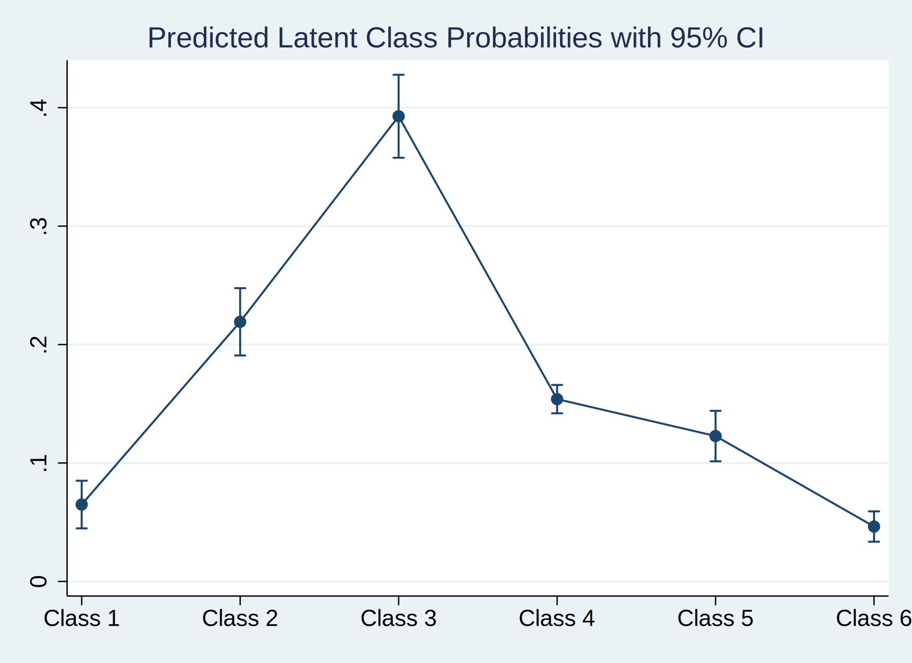

Fecha creación: 15:04:00 27 Apr 2023.
Instalar comandos
. clear all
. log using "H:\Mi unidad\Angelica\secreto\IVE\registry_lca2_apr23.smcl", replace
(note: file H:\Mi unidad\Angelica\secreto\IVE\registry_lca2_apr23.smcl not found)
file H:\Mi unidad\Angelica\secreto\IVE\registry_lca2_apr23.smcl could not be opened
r(603);
.
. set maxvar 120000, perm
(set maxvar preference recorded)
. set adosize 10000, perm
(set adosize preference recorded)
. set max_memory ., perm
(set max_memory preference recorded)
. set niceness 1, perm
(set niceness preference recorded)
. *https://onlinelibrary.wiley.com/doi/epdf/10.1002/sim.8894
. *https://pclambert.net/pdf/Stata_Nordic2019_Lambert.pdf
. *https://slidetodoc.com/automated-reports-using-stata-chuck-huber-ph-d/
. *~Mi unidad\Alvacast\SISTRAT 2019 (github)\_supp_mstates\stata\12874_2020_1192_MOESM1_ESM.docx
. *https://opr.princeton.edu/workshops/Downloads/2015May_StataGraphicsKoffman.pdf
. *http://www.bruunisejs.dk/StataHacks/My%20commands/matprint/matprint_demo/
. *https://pure.au.dk/portal/files/140882936/ScientificWorkInStataGoneEasy.pdf
. *https://www.stata.com/meeting/nordic-and-baltic18/slides/nordic-and-baltic18_Bruun.pdf
. *https://github.com/dvorakt/TIER_exercises/blob/master/dyndoc_debt_growth/debt%20and%20growth%20stata%20dyndoc.do
.
.
. cap noi which rcsgen
C:\Users\andre\ado\plus\r\rcsgen.ado
*! version 1.5.9 13FEB2022
. if _rc==111 {
. ssc install rcsgen
. }
. cap noi which matselrc
C:\Users\andre\ado\plus\m\matselrc.ado
*! NJC 1.1.0 20 Apr 2000 (STB-56: dm79)
. if _rc==111 {
. cap noi net install dm79, from("http://www.stata.com/stb/stb56")
. }
. cap noi which tabout
C:\Users\andre\ado\plus\t\tabout.ado
*! 2.0.8 Ian Watson 15mar2019
*! tabout version 3 (beta) available at: http://tabout.net.au
. if _rc==111 {
. cap noi ssc install tabout
. }
. cap noi which pathutil
C:\Users\andre\ado\plus\p\pathutil.ado
*! version 2.2.0 19nov2020 daniel klein
. if _rc==111 {
. cap noi net install pathutil, from("http://fmwww.bc.edu/repec/bocode/p/")
. }
. cap noi which pathutil
C:\Users\andre\ado\plus\p\pathutil.ado
*! version 2.2.0 19nov2020 daniel klein
. if _rc==111 {
. ssc install dirtools
. }
. cap noi which project
C:\Users\andre\ado\plus\p\project.ado
*! version 1.3.1 22dec2013 picard@netbox.com
. if _rc==111 {
. ssc install project
. }
. cap noi which sumat
command sumat not found as either built-in or ado-file
. if _rc==111 {
. cap noi scc install matrixtools
command scc is unrecognized
. }
. cap noi which estwrite
C:\Users\andre\ado\plus\e\estwrite.ado
*! version 1.2.5 19jan2022
*! version 1.0.1 15may2007 (renamed from -eststo- to -estwrite-; -append- added)
*! version 1.0.0 29apr2005 Ben Jann (ETH Zurich)
. if _rc==111 {
. cap noi ssc install estwrite
. }
. cap noi which winsor2
C:\Users\andre\ado\plus\w\winsor2.ado
*! Inspirit of -winsor-(NJ Cox) and -winsorizeJ-(J Caskey)
*! Lian Yujun, arlionn@163.com, 2013-12-25
*! 1.1 2014.12.16
. if _rc==111 {
. cap noi ssc install winsor2
. }
. cap noi which matsave
C:\Users\andre\ado\plus\m\matsave.ado
*! version 1.1.7 24oct2004 by Marc-Andreas Muendler: muendler@ucsd.edu
. if _rc==111 {
. cap noi ssc install matsave
. }
.
Fecha creación: 15:04:00 27 Apr 2023.
Acceder a carpeta
G:\Mi unidad\Angelica\secreto\IVE
Fecha: 27 Apr 2023, considering an OS Windows to the user: andre
Ubicación= ;
Tiempo: 27 Apr 2023, considerando un SO Windows
El archivo se encuentra en: G:\Mi unidad\Angelica\secreto\IVE/_lca/lca_step1.dta
De acuerdo a los datos, el mejor modelo asumía 5 clases latentes.
. *cap noi estread "./analisis_lcas_tests_prueba.sters"
. cap noi estread "./analisis_lcas_tests_real_apr23.sters"
------------------------------------------------------------------------------------
name | command depvar npar title
-------------+----------------------------------------------------------------------
lca_prueba~1 | gsem mult. depvar 33 Generalized structural equation model
lca_prueba~2 | gsem mult. depvar 66 Generalized structural equation model
lca_prueba~3 | gsem mult. depvar 99 Generalized structural equation model
lca_prueba~4 | gsem mult. depvar 132 Generalized structural equation model
lca_prueba~5 | gsem mult. depvar 165 Generalized structural equation model
lca_prueba~6 | gsem mult. depvar 198 Generalized structural equation model
lca_prueba~7 | gsem mult. depvar 231 Generalized structural equation model
lca_prueba~8 | gsem mult. depvar 264 Generalized structural equation model
------------------------------------------------------------------------------------
.
. estimates describe lca_prueba_c6
Estimation results produced by
. gsem (CAUSAL EDAD_MUJER_REC PUEBLO_ORIGINARIO_REC PAIS_ORIGEN_REC HITO1_EDAD_GEST_SEM_REC MACROZONA PREV_TRAMO_REC <-, mlogit), lclass(C 6) nocapslatent nonrtolerance iterate(500 )
emopts(iterate(80 ) difficult) startvalues(randomid, draws(80 ) seed(2125))
. estimates replay lca_prueba_c6
------------------------------------------------------------------------------------------------------------------------------------------------------------------------------------------------
Model lca_prueba_c6
------------------------------------------------------------------------------------------------------------------------------------------------------------------------------------------------
Generalized structural equation model Number of obs = 3,789
Log likelihood = -26972.571
------------------------------------------------------------------------------
| Coef. Std. Err. z P>|z| [95% Conf. Interval]
-------------+----------------------------------------------------------------
1.C | (base outcome)
-------------+----------------------------------------------------------------
2.C |
_cons | 1.19072 .1365363 8.72 0.000 .9231136 1.458326
-------------+----------------------------------------------------------------
3.C |
_cons | 1.744046 .1476816 11.81 0.000 1.454595 2.033496
-------------+----------------------------------------------------------------
4.C |
_cons | .8224185 .133073 6.18 0.000 .5616002 1.083237
-------------+----------------------------------------------------------------
5.C |
_cons | .5962008 .1529173 3.90 0.000 .2964884 .8959131
-------------+----------------------------------------------------------------
6.C |
_cons | -.3784313 .1567505 -2.41 0.016 -.6856567 -.071206
------------------------------------------------------------------------------
Class : 1
Response : CAUSAL
Base outcome : 2
Family : multinomial
Link : logit
Response : EDAD_MUJER_REC
Base outcome : 1
Family : multinomial
Link : logit
Response : PUEBLO_ORIGINARIO_~C
Base outcome : 1
Family : multinomial
Link : logit
Response : PAIS_ORIGEN_REC
Base outcome : 1
Family : multinomial
Link : logit
Response : HITO1_EDAD_GEST_SE~C
Base outcome : 1
Family : multinomial
Link : logit
Response : MACROZONA
Base outcome : 1
Family : multinomial
Link : logit
Response : PREV_TRAMO_REC
Base outcome : 1
Family : multinomial
Link : logit
--------------------------------------------------------------------------------------------
| Coef. Std. Err. z P>|z| [95% Conf. Interval]
---------------------------+----------------------------------------------------------------
2.CAUSAL | (base outcome)
---------------------------+----------------------------------------------------------------
3.CAUSAL |
_cons | -.781578 .2182032 -3.58 0.000 -1.209249 -.3539076
---------------------------+----------------------------------------------------------------
4.CAUSAL |
_cons | -168.0311 . . . . .
---------------------------+----------------------------------------------------------------
1.EDAD_MUJER_REC | (base outcome)
---------------------------+----------------------------------------------------------------
2.EDAD_MUJER_REC |
_cons | -.6917557 .5500197 -1.26 0.209 -1.769775 .3862631
---------------------------+----------------------------------------------------------------
3.EDAD_MUJER_REC |
_cons | 1.582069 .3126271 5.06 0.000 .9693309 2.194807
---------------------------+----------------------------------------------------------------
4.EDAD_MUJER_REC |
_cons | 1.6453 .3194796 5.15 0.000 1.019132 2.271469
---------------------------+----------------------------------------------------------------
5.EDAD_MUJER_REC |
_cons | 1.483165 .3189892 4.65 0.000 .8579572 2.108372
---------------------------+----------------------------------------------------------------
6.EDAD_MUJER_REC |
_cons | -.2713665 .4992436 -0.54 0.587 -1.249866 .707133
---------------------------+----------------------------------------------------------------
1.PUEBLO_ORIGINARIO_REC | (base outcome)
---------------------------+----------------------------------------------------------------
2.PUEBLO_ORIGINARIO_REC |
_cons | -1.54894 .4126083 -3.75 0.000 -2.357637 -.7402425
---------------------------+----------------------------------------------------------------
3.PUEBLO_ORIGINARIO_REC |
_cons | -63.94278 . . . . .
---------------------------+----------------------------------------------------------------
1.PAIS_ORIGEN_REC | (base outcome)
---------------------------+----------------------------------------------------------------
2.PAIS_ORIGEN_REC |
_cons | 2.462297 .2747003 8.96 0.000 1.923895 3.0007
---------------------------+----------------------------------------------------------------
3.PAIS_ORIGEN_REC |
_cons | .5641055 .3688639 1.53 0.126 -.1588544 1.287065
---------------------------+----------------------------------------------------------------
1.HITO1_EDAD_GEST_SEM_REC | (base outcome)
---------------------------+----------------------------------------------------------------
2.HITO1_EDAD_GEST_SEM_REC |
_cons | -56.3475 . . . . .
---------------------------+----------------------------------------------------------------
3.HITO1_EDAD_GEST_SEM_REC |
_cons | .8697464 .4918048 1.77 0.077 -.0941732 1.833666
---------------------------+----------------------------------------------------------------
4.HITO1_EDAD_GEST_SEM_REC |
_cons | 1.657906 .4145716 4.00 0.000 .8453606 2.470451
---------------------------+----------------------------------------------------------------
5.HITO1_EDAD_GEST_SEM_REC |
_cons | 1.840973 .3944885 4.67 0.000 1.067789 2.614156
---------------------------+----------------------------------------------------------------
6.HITO1_EDAD_GEST_SEM_REC |
_cons | 1.824886 .3887033 4.69 0.000 1.063042 2.586731
---------------------------+----------------------------------------------------------------
1.MACROZONA | (base outcome)
---------------------------+----------------------------------------------------------------
2.MACROZONA |
_cons | 2.017088 .4531957 4.45 0.000 1.12884 2.905335
---------------------------+----------------------------------------------------------------
3.MACROZONA |
_cons | 2.547716 .4124247 6.18 0.000 1.739379 3.356054
---------------------------+----------------------------------------------------------------
4.MACROZONA |
_cons | 1.788604 .4449971 4.02 0.000 .9164256 2.660782
---------------------------+----------------------------------------------------------------
5.MACROZONA |
_cons | 1.242081 .4638103 2.68 0.007 .33303 2.151133
---------------------------+----------------------------------------------------------------
6.MACROZONA |
_cons | 1.816945 .4432088 4.10 0.000 .9482722 2.685619
---------------------------+----------------------------------------------------------------
1.PREV_TRAMO_REC | (base outcome)
---------------------------+----------------------------------------------------------------
2.PREV_TRAMO_REC |
_cons | .2574039 .5934196 0.43 0.664 -.9056772 1.420485
---------------------------+----------------------------------------------------------------
3.PREV_TRAMO_REC |
_cons | 3.128375 .4045541 7.73 0.000 2.335464 3.921287
---------------------------+----------------------------------------------------------------
4.PREV_TRAMO_REC |
_cons | 2.18472 .4296052 5.09 0.000 1.34271 3.026731
---------------------------+----------------------------------------------------------------
5.PREV_TRAMO_REC |
_cons | .5986387 .5425674 1.10 0.270 -.4647739 1.662051
--------------------------------------------------------------------------------------------
Class : 2
Response : CAUSAL
Base outcome : 2
Family : multinomial
Link : logit
Response : EDAD_MUJER_REC
Base outcome : 1
Family : multinomial
Link : logit
Response : PUEBLO_ORIGINARIO_~C
Base outcome : 1
Family : multinomial
Link : logit
Response : PAIS_ORIGEN_REC
Base outcome : 1
Family : multinomial
Link : logit
Response : HITO1_EDAD_GEST_SE~C
Base outcome : 1
Family : multinomial
Link : logit
Response : MACROZONA
Base outcome : 1
Family : multinomial
Link : logit
Response : PREV_TRAMO_REC
Base outcome : 1
Family : multinomial
Link : logit
--------------------------------------------------------------------------------------------
| Coef. Std. Err. z P>|z| [95% Conf. Interval]
---------------------------+----------------------------------------------------------------
2.CAUSAL | (base outcome)
---------------------------+----------------------------------------------------------------
3.CAUSAL |
_cons | -2.816527 .4112509 -6.85 0.000 -3.622564 -2.01049
---------------------------+----------------------------------------------------------------
4.CAUSAL |
_cons | -126.5082 . . . . .
---------------------------+----------------------------------------------------------------
1.EDAD_MUJER_REC | (base outcome)
---------------------------+----------------------------------------------------------------
2.EDAD_MUJER_REC |
_cons | 9.217731 40.06465 0.23 0.818 -69.30755 87.74301
---------------------------+----------------------------------------------------------------
3.EDAD_MUJER_REC |
_cons | 12.16792 40.06179 0.30 0.761 -66.35175 90.68759
---------------------------+----------------------------------------------------------------
4.EDAD_MUJER_REC |
_cons | 12.67549 40.06173 0.32 0.752 -65.84407 91.19504
---------------------------+----------------------------------------------------------------
5.EDAD_MUJER_REC |
_cons | 12.3376 40.06177 0.31 0.758 -66.18202 90.85723
---------------------------+----------------------------------------------------------------
6.EDAD_MUJER_REC |
_cons | 10.24068 40.0624 0.26 0.798 -68.28017 88.76153
---------------------------+----------------------------------------------------------------
1.PUEBLO_ORIGINARIO_REC | (base outcome)
---------------------------+----------------------------------------------------------------
2.PUEBLO_ORIGINARIO_REC |
_cons | 2.34823 .1840016 12.76 0.000 1.987594 2.708867
---------------------------+----------------------------------------------------------------
3.PUEBLO_ORIGINARIO_REC |
_cons | -.5846743 .255 -2.29 0.022 -1.084465 -.0848834
---------------------------+----------------------------------------------------------------
1.PAIS_ORIGEN_REC | (base outcome)
---------------------------+----------------------------------------------------------------
2.PAIS_ORIGEN_REC |
_cons | 7.88925 . . . . .
---------------------------+----------------------------------------------------------------
3.PAIS_ORIGEN_REC |
_cons | 6.527941 .1138848 57.32 0.000 6.304731 6.751151
---------------------------+----------------------------------------------------------------
1.HITO1_EDAD_GEST_SEM_REC | (base outcome)
---------------------------+----------------------------------------------------------------
2.HITO1_EDAD_GEST_SEM_REC |
_cons | .9058161 .1664115 5.44 0.000 .5796555 1.231977
---------------------------+----------------------------------------------------------------
3.HITO1_EDAD_GEST_SEM_REC |
_cons | 1.233919 .1767232 6.98 0.000 .8875481 1.580291
---------------------------+----------------------------------------------------------------
4.HITO1_EDAD_GEST_SEM_REC |
_cons | 1.985865 .1539678 12.90 0.000 1.684094 2.287637
---------------------------+----------------------------------------------------------------
5.HITO1_EDAD_GEST_SEM_REC |
_cons | -13.80321 947.2245 -0.01 0.988 -1870.329 1842.723
---------------------------+----------------------------------------------------------------
6.HITO1_EDAD_GEST_SEM_REC |
_cons | -50.37142 . . . . .
---------------------------+----------------------------------------------------------------
1.MACROZONA | (base outcome)
---------------------------+----------------------------------------------------------------
2.MACROZONA |
_cons | 20.48004 2197.957 0.01 0.993 -4287.437 4328.397
---------------------------+----------------------------------------------------------------
3.MACROZONA |
_cons | 19.43397 2197.957 0.01 0.993 -4288.483 4327.351
---------------------------+----------------------------------------------------------------
4.MACROZONA |
_cons | 19.44919 2197.957 0.01 0.993 -4288.468 4327.366
---------------------------+----------------------------------------------------------------
5.MACROZONA |
_cons | 19.19439 2197.957 0.01 0.993 -4288.723 4327.111
---------------------------+----------------------------------------------------------------
6.MACROZONA |
_cons | 19.37847 2197.957 0.01 0.993 -4288.538 4327.295
---------------------------+----------------------------------------------------------------
1.PREV_TRAMO_REC | (base outcome)
---------------------------+----------------------------------------------------------------
2.PREV_TRAMO_REC |
_cons | 10.23368 35.66654 0.29 0.774 -59.67146 80.13882
---------------------------+----------------------------------------------------------------
3.PREV_TRAMO_REC |
_cons | 12.16065 35.66589 0.34 0.733 -57.7432 82.06451
---------------------------+----------------------------------------------------------------
4.PREV_TRAMO_REC |
_cons | 11.67198 35.66606 0.33 0.743 -58.2322 81.57617
---------------------------+----------------------------------------------------------------
5.PREV_TRAMO_REC |
_cons | 8.610079 35.66251 0.24 0.809 -61.28717 78.50732
--------------------------------------------------------------------------------------------
Class : 3
Response : CAUSAL
Base outcome : 2
Family : multinomial
Link : logit
Response : EDAD_MUJER_REC
Base outcome : 1
Family : multinomial
Link : logit
Response : PUEBLO_ORIGINARIO_~C
Base outcome : 1
Family : multinomial
Link : logit
Response : PAIS_ORIGEN_REC
Base outcome : 1
Family : multinomial
Link : logit
Response : HITO1_EDAD_GEST_SE~C
Base outcome : 1
Family : multinomial
Link : logit
Response : MACROZONA
Base outcome : 1
Family : multinomial
Link : logit
Response : PREV_TRAMO_REC
Base outcome : 1
Family : multinomial
Link : logit
--------------------------------------------------------------------------------------------
| Coef. Std. Err. z P>|z| [95% Conf. Interval]
---------------------------+----------------------------------------------------------------
2.CAUSAL | (base outcome)
---------------------------+----------------------------------------------------------------
3.CAUSAL |
_cons | 2.23009 .2388451 9.34 0.000 1.761962 2.698218
---------------------------+----------------------------------------------------------------
4.CAUSAL |
_cons | -158.4216 . . . . .
---------------------------+----------------------------------------------------------------
1.EDAD_MUJER_REC | (base outcome)
---------------------------+----------------------------------------------------------------
2.EDAD_MUJER_REC |
_cons | 8.99111 44.45685 0.20 0.840 -78.14271 96.12493
---------------------------+----------------------------------------------------------------
3.EDAD_MUJER_REC |
_cons | 11.02315 44.45636 0.25 0.804 -76.10973 98.15602
---------------------------+----------------------------------------------------------------
4.EDAD_MUJER_REC |
_cons | 11.14766 44.45583 0.25 0.802 -75.98416 98.27948
---------------------------+----------------------------------------------------------------
5.EDAD_MUJER_REC |
_cons | 11.03952 44.45565 0.25 0.804 -76.09195 98.17098
---------------------------+----------------------------------------------------------------
6.EDAD_MUJER_REC |
_cons | 9.59619 44.45597 0.22 0.829 -77.53592 96.7283
---------------------------+----------------------------------------------------------------
1.PUEBLO_ORIGINARIO_REC | (base outcome)
---------------------------+----------------------------------------------------------------
2.PUEBLO_ORIGINARIO_REC |
_cons | 1.908532 .1121145 17.02 0.000 1.688792 2.128272
---------------------------+----------------------------------------------------------------
3.PUEBLO_ORIGINARIO_REC |
_cons | -.746889 .1582518 -4.72 0.000 -1.057057 -.4367212
---------------------------+----------------------------------------------------------------
1.PAIS_ORIGEN_REC | (base outcome)
---------------------------+----------------------------------------------------------------
2.PAIS_ORIGEN_REC |
_cons | 13.27147 35.47208 0.37 0.708 -56.25252 82.79547
---------------------------+----------------------------------------------------------------
3.PAIS_ORIGEN_REC |
_cons | 11.73374 35.47212 0.33 0.741 -57.79035 81.25782
---------------------------+----------------------------------------------------------------
1.HITO1_EDAD_GEST_SEM_REC | (base outcome)
---------------------------+----------------------------------------------------------------
2.HITO1_EDAD_GEST_SEM_REC |
_cons | -94.00001 . . . . .
---------------------------+----------------------------------------------------------------
3.HITO1_EDAD_GEST_SEM_REC |
_cons | 5.642651 .0806582 69.96 0.000 5.484563 5.800738
---------------------------+----------------------------------------------------------------
4.HITO1_EDAD_GEST_SEM_REC |
_cons | 5.6892 .0795566 71.51 0.000 5.533272 5.845128
---------------------------+----------------------------------------------------------------
5.HITO1_EDAD_GEST_SEM_REC |
_cons | 5.331854 . . . . .
---------------------------+----------------------------------------------------------------
6.HITO1_EDAD_GEST_SEM_REC |
_cons | 4.238632 .1164613 36.40 0.000 4.010372 4.466892
---------------------------+----------------------------------------------------------------
1.MACROZONA | (base outcome)
---------------------------+----------------------------------------------------------------
2.MACROZONA |
_cons | 17.04602 .0929445 183.40 0.000 16.86385 17.22819
---------------------------+----------------------------------------------------------------
3.MACROZONA |
_cons | 16.15474 . . . . .
---------------------------+----------------------------------------------------------------
4.MACROZONA |
_cons | 16.31727 .1035997 157.50 0.000 16.11422 16.52032
---------------------------+----------------------------------------------------------------
5.MACROZONA |
_cons | 15.89487 .1144585 138.87 0.000 15.67053 16.1192
---------------------------+----------------------------------------------------------------
6.MACROZONA |
_cons | 16.24811 .1052801 154.33 0.000 16.04176 16.45445
---------------------------+----------------------------------------------------------------
1.PREV_TRAMO_REC | (base outcome)
---------------------------+----------------------------------------------------------------
2.PREV_TRAMO_REC |
_cons | -52.42657 . . . . .
---------------------------+----------------------------------------------------------------
3.PREV_TRAMO_REC |
_cons | 14.45883 .0803466 179.96 0.000 14.30135 14.61631
---------------------------+----------------------------------------------------------------
4.PREV_TRAMO_REC |
_cons | 13.81081 . . . . .
---------------------------+----------------------------------------------------------------
5.PREV_TRAMO_REC |
_cons | 10.27679 .3700965 27.77 0.000 9.551418 11.00217
--------------------------------------------------------------------------------------------
Class : 4
Response : CAUSAL
Base outcome : 2
Family : multinomial
Link : logit
Response : EDAD_MUJER_REC
Base outcome : 1
Family : multinomial
Link : logit
Response : PUEBLO_ORIGINARIO_~C
Base outcome : 1
Family : multinomial
Link : logit
Response : PAIS_ORIGEN_REC
Base outcome : 1
Family : multinomial
Link : logit
Response : HITO1_EDAD_GEST_SE~C
Base outcome : 1
Family : multinomial
Link : logit
Response : MACROZONA
Base outcome : 1
Family : multinomial
Link : logit
Response : PREV_TRAMO_REC
Base outcome : 1
Family : multinomial
Link : logit
--------------------------------------------------------------------------------------------
| Coef. Std. Err. z P>|z| [95% Conf. Interval]
---------------------------+----------------------------------------------------------------
2.CAUSAL | (base outcome)
---------------------------+----------------------------------------------------------------
3.CAUSAL |
_cons | -119.6082 . . . . .
---------------------------+----------------------------------------------------------------
4.CAUSAL |
_cons | 4.523406 .8259187 5.48 0.000 2.904635 6.142177
---------------------------+----------------------------------------------------------------
1.EDAD_MUJER_REC | (base outcome)
---------------------------+----------------------------------------------------------------
2.EDAD_MUJER_REC |
_cons | 5.288852 .9677561 5.47 0.000 3.392085 7.185619
---------------------------+----------------------------------------------------------------
3.EDAD_MUJER_REC |
_cons | 5.07087 .9684261 5.24 0.000 3.17279 6.968951
---------------------------+----------------------------------------------------------------
4.EDAD_MUJER_REC |
_cons | 4.732807 .969644 4.88 0.000 2.83234 6.633274
---------------------------+----------------------------------------------------------------
5.EDAD_MUJER_REC |
_cons | 4.060936 .9738177 4.17 0.000 2.152289 5.969584
---------------------------+----------------------------------------------------------------
6.EDAD_MUJER_REC |
_cons | 2.338076 1.011321 2.31 0.021 .3559234 4.320228
---------------------------+----------------------------------------------------------------
1.PUEBLO_ORIGINARIO_REC | (base outcome)
---------------------------+----------------------------------------------------------------
2.PUEBLO_ORIGINARIO_REC |
_cons | 1.66531 .1168971 14.25 0.000 1.436196 1.894424
---------------------------+----------------------------------------------------------------
3.PUEBLO_ORIGINARIO_REC |
_cons | -1.213605 .2235059 -5.43 0.000 -1.651669 -.7755418
---------------------------+----------------------------------------------------------------
1.PAIS_ORIGEN_REC | (base outcome)
---------------------------+----------------------------------------------------------------
2.PAIS_ORIGEN_REC |
_cons | 28.70655 .6803109 42.20 0.000 27.37316 30.03993
---------------------------+----------------------------------------------------------------
3.PAIS_ORIGEN_REC |
_cons | 24.33413 . . . . .
---------------------------+----------------------------------------------------------------
1.HITO1_EDAD_GEST_SEM_REC | (base outcome)
---------------------------+----------------------------------------------------------------
2.HITO1_EDAD_GEST_SEM_REC |
_cons | 4.486705 .4503315 9.96 0.000 3.604071 5.369338
---------------------------+----------------------------------------------------------------
3.HITO1_EDAD_GEST_SEM_REC |
_cons | 3.179187 .4569801 6.96 0.000 2.283523 4.074852
---------------------------+----------------------------------------------------------------
4.HITO1_EDAD_GEST_SEM_REC |
_cons | -278.0767 . . . . .
---------------------------+----------------------------------------------------------------
5.HITO1_EDAD_GEST_SEM_REC |
_cons | -251.137 . . . . .
---------------------------+----------------------------------------------------------------
6.HITO1_EDAD_GEST_SEM_REC |
_cons | -303.2022 . . . . .
---------------------------+----------------------------------------------------------------
1.MACROZONA | (base outcome)
---------------------------+----------------------------------------------------------------
2.MACROZONA |
_cons | 4.39034 .6041977 7.27 0.000 3.206134 5.574546
---------------------------+----------------------------------------------------------------
3.MACROZONA |
_cons | 3.60956 .60859 5.93 0.000 2.416745 4.802374
---------------------------+----------------------------------------------------------------
4.MACROZONA |
_cons | 3.416172 .6103514 5.60 0.000 2.219905 4.612438
---------------------------+----------------------------------------------------------------
5.MACROZONA |
_cons | 2.897513 .6172852 4.69 0.000 1.687656 4.10737
---------------------------+----------------------------------------------------------------
6.MACROZONA |
_cons | 3.762839 .6074905 6.19 0.000 2.572179 4.953498
---------------------------+----------------------------------------------------------------
1.PREV_TRAMO_REC | (base outcome)
---------------------------+----------------------------------------------------------------
2.PREV_TRAMO_REC |
_cons | 3.714659 1.01595 3.66 0.000 1.723434 5.705885
---------------------------+----------------------------------------------------------------
3.PREV_TRAMO_REC |
_cons | 6.033426 1.005009 6.00 0.000 4.063645 8.003206
---------------------------+----------------------------------------------------------------
4.PREV_TRAMO_REC |
_cons | 4.751964 1.008127 4.71 0.000 2.776071 6.727857
---------------------------+----------------------------------------------------------------
5.PREV_TRAMO_REC |
_cons | 1.113024 1.157951 0.96 0.336 -1.156518 3.382567
--------------------------------------------------------------------------------------------
Class : 5
Response : CAUSAL
Base outcome : 2
Family : multinomial
Link : logit
Response : EDAD_MUJER_REC
Base outcome : 1
Family : multinomial
Link : logit
Response : PUEBLO_ORIGINARIO_~C
Base outcome : 1
Family : multinomial
Link : logit
Response : PAIS_ORIGEN_REC
Base outcome : 1
Family : multinomial
Link : logit
Response : HITO1_EDAD_GEST_SE~C
Base outcome : 1
Family : multinomial
Link : logit
Response : MACROZONA
Base outcome : 1
Family : multinomial
Link : logit
Response : PREV_TRAMO_REC
Base outcome : 1
Family : multinomial
Link : logit
--------------------------------------------------------------------------------------------
| Coef. Std. Err. z P>|z| [95% Conf. Interval]
---------------------------+----------------------------------------------------------------
2.CAUSAL | (base outcome)
---------------------------+----------------------------------------------------------------
3.CAUSAL |
_cons | 2.568357 .3429526 7.49 0.000 1.896182 3.240532
---------------------------+----------------------------------------------------------------
4.CAUSAL |
_cons | -167.6913 . . . . .
---------------------------+----------------------------------------------------------------
1.EDAD_MUJER_REC | (base outcome)
---------------------------+----------------------------------------------------------------
2.EDAD_MUJER_REC |
_cons | -.29593 1.510093 -0.20 0.845 -3.255658 2.663798
---------------------------+----------------------------------------------------------------
3.EDAD_MUJER_REC |
_cons | 3.171322 .9668833 3.28 0.001 1.276266 5.066379
---------------------------+----------------------------------------------------------------
4.EDAD_MUJER_REC |
_cons | 4.406441 .9541803 4.62 0.000 2.536282 6.2766
---------------------------+----------------------------------------------------------------
5.EDAD_MUJER_REC |
_cons | 5.014687 .9520472 5.27 0.000 3.148708 6.880665
---------------------------+----------------------------------------------------------------
6.EDAD_MUJER_REC |
_cons | 3.024401 .9695194 3.12 0.002 1.124178 4.924624
---------------------------+----------------------------------------------------------------
1.PUEBLO_ORIGINARIO_REC | (base outcome)
---------------------------+----------------------------------------------------------------
2.PUEBLO_ORIGINARIO_REC |
_cons | 1.857861 .153292 12.12 0.000 1.557414 2.158307
---------------------------+----------------------------------------------------------------
3.PUEBLO_ORIGINARIO_REC |
_cons | -141.0625 . . . . .
---------------------------+----------------------------------------------------------------
1.PAIS_ORIGEN_REC | (base outcome)
---------------------------+----------------------------------------------------------------
2.PAIS_ORIGEN_REC |
_cons | 8.004878 2.989505 2.68 0.007 2.145555 13.8642
---------------------------+----------------------------------------------------------------
3.PAIS_ORIGEN_REC |
_cons | 5.494442 2.996495 1.83 0.067 -.3785797 11.36746
---------------------------+----------------------------------------------------------------
1.HITO1_EDAD_GEST_SEM_REC | (base outcome)
---------------------------+----------------------------------------------------------------
2.HITO1_EDAD_GEST_SEM_REC |
_cons | -1.14826 1.581298 -0.73 0.468 -4.247547 1.951028
---------------------------+----------------------------------------------------------------
3.HITO1_EDAD_GEST_SEM_REC |
_cons | 4.165447 .6099069 6.83 0.000 2.970051 5.360842
---------------------------+----------------------------------------------------------------
4.HITO1_EDAD_GEST_SEM_REC |
_cons | 3.319568 .6119672 5.42 0.000 2.120135 4.519002
---------------------------+----------------------------------------------------------------
5.HITO1_EDAD_GEST_SEM_REC |
_cons | 2.386451 .6279282 3.80 0.000 1.155734 3.617167
---------------------------+----------------------------------------------------------------
6.HITO1_EDAD_GEST_SEM_REC |
_cons | .7701178 .7172912 1.07 0.283 -.6357471 2.175983
---------------------------+----------------------------------------------------------------
1.MACROZONA | (base outcome)
---------------------------+----------------------------------------------------------------
2.MACROZONA |
_cons | 10.7234 11.96474 0.90 0.370 -12.72705 34.17385
---------------------------+----------------------------------------------------------------
3.MACROZONA |
_cons | 8.907552 11.9659 0.74 0.457 -14.54519 32.36029
---------------------------+----------------------------------------------------------------
4.MACROZONA |
_cons | 8.393795 11.9666 0.70 0.483 -15.06031 31.8479
---------------------------+----------------------------------------------------------------
5.MACROZONA |
_cons | 8.320372 11.96652 0.70 0.487 -15.13358 31.77432
---------------------------+----------------------------------------------------------------
6.MACROZONA |
_cons | 8.55212 11.96633 0.71 0.475 -14.90146 32.0057
---------------------------+----------------------------------------------------------------
1.PREV_TRAMO_REC | (base outcome)
---------------------------+----------------------------------------------------------------
2.PREV_TRAMO_REC |
_cons | 6.26577 1.44983 4.32 0.000 3.424155 9.107385
---------------------------+----------------------------------------------------------------
3.PREV_TRAMO_REC |
_cons | -50.82124 . . . . .
---------------------------+----------------------------------------------------------------
4.PREV_TRAMO_REC |
_cons | 4.908721 1.47613 3.33 0.001 2.01556 7.801883
---------------------------+----------------------------------------------------------------
5.PREV_TRAMO_REC |
_cons | -62.29288 . . . . .
--------------------------------------------------------------------------------------------
Class : 6
Response : CAUSAL
Base outcome : 2
Family : multinomial
Link : logit
Response : EDAD_MUJER_REC
Base outcome : 1
Family : multinomial
Link : logit
Response : PUEBLO_ORIGINARIO_~C
Base outcome : 1
Family : multinomial
Link : logit
Response : PAIS_ORIGEN_REC
Base outcome : 1
Family : multinomial
Link : logit
Response : HITO1_EDAD_GEST_SE~C
Base outcome : 1
Family : multinomial
Link : logit
Response : MACROZONA
Base outcome : 1
Family : multinomial
Link : logit
Response : PREV_TRAMO_REC
Base outcome : 1
Family : multinomial
Link : logit
--------------------------------------------------------------------------------------------
| Coef. Std. Err. z P>|z| [95% Conf. Interval]
---------------------------+----------------------------------------------------------------
2.CAUSAL | (base outcome)
---------------------------+----------------------------------------------------------------
3.CAUSAL |
_cons | -1.848185 1.225244 -1.51 0.131 -4.249618 .5532485
---------------------------+----------------------------------------------------------------
4.CAUSAL |
_cons | 2.09785 .542772 3.87 0.000 1.034037 3.161664
---------------------------+----------------------------------------------------------------
1.EDAD_MUJER_REC | (base outcome)
---------------------------+----------------------------------------------------------------
2.EDAD_MUJER_REC |
_cons | 16.35753 654.2876 0.03 0.980 -1266.023 1298.738
---------------------------+----------------------------------------------------------------
3.EDAD_MUJER_REC |
_cons | 17.18571 654.2876 0.03 0.979 -1265.194 1299.566
---------------------------+----------------------------------------------------------------
4.EDAD_MUJER_REC |
_cons | 16.71177 654.2876 0.03 0.980 -1265.668 1299.092
---------------------------+----------------------------------------------------------------
5.EDAD_MUJER_REC |
_cons | 16.37493 654.2876 0.03 0.980 -1266.005 1298.755
---------------------------+----------------------------------------------------------------
6.EDAD_MUJER_REC |
_cons | 14.66963 654.2877 0.02 0.982 -1267.711 1297.05
---------------------------+----------------------------------------------------------------
1.PUEBLO_ORIGINARIO_REC | (base outcome)
---------------------------+----------------------------------------------------------------
2.PUEBLO_ORIGINARIO_REC |
_cons | 1.867231 .2378942 7.85 0.000 1.400967 2.333495
---------------------------+----------------------------------------------------------------
3.PUEBLO_ORIGINARIO_REC |
_cons | -1.322634 .4746672 -2.79 0.005 -2.252964 -.392303
---------------------------+----------------------------------------------------------------
1.PAIS_ORIGEN_REC | (base outcome)
---------------------------+----------------------------------------------------------------
2.PAIS_ORIGEN_REC |
_cons | -35.62635 . . . . .
---------------------------+----------------------------------------------------------------
3.PAIS_ORIGEN_REC |
_cons | 20.24622 1998.47 0.01 0.992 -3896.683 3937.175
---------------------------+----------------------------------------------------------------
1.HITO1_EDAD_GEST_SEM_REC | (base outcome)
---------------------------+----------------------------------------------------------------
2.HITO1_EDAD_GEST_SEM_REC |
_cons | 3.628934 .5918094 6.13 0.000 2.469009 4.788859
---------------------------+----------------------------------------------------------------
3.HITO1_EDAD_GEST_SEM_REC |
_cons | 2.48488 .6056764 4.10 0.000 1.297776 3.671984
---------------------------+----------------------------------------------------------------
4.HITO1_EDAD_GEST_SEM_REC |
_cons | -2.97481 18.38228 -0.16 0.871 -39.00341 33.05379
---------------------------+----------------------------------------------------------------
5.HITO1_EDAD_GEST_SEM_REC |
_cons | -222.5996 . . . . .
---------------------------+----------------------------------------------------------------
6.HITO1_EDAD_GEST_SEM_REC |
_cons | -230.4743 . . . . .
---------------------------+----------------------------------------------------------------
1.MACROZONA | (base outcome)
---------------------------+----------------------------------------------------------------
2.MACROZONA |
_cons | 4.608426 1.013448 4.55 0.000 2.622105 6.594747
---------------------------+----------------------------------------------------------------
3.MACROZONA |
_cons | 2.618265 1.050616 2.49 0.013 .5590963 4.677434
---------------------------+----------------------------------------------------------------
4.MACROZONA |
_cons | .8842467 1.267958 0.70 0.486 -1.600906 3.369399
---------------------------+----------------------------------------------------------------
5.MACROZONA |
_cons | 3.983482 1.018506 3.91 0.000 1.987247 5.979716
---------------------------+----------------------------------------------------------------
6.MACROZONA |
_cons | 1.890894 1.08912 1.74 0.083 -.2437412 4.025529
---------------------------+----------------------------------------------------------------
1.PREV_TRAMO_REC | (base outcome)
---------------------------+----------------------------------------------------------------
2.PREV_TRAMO_REC |
_cons | -41.93465 . . . . .
---------------------------+----------------------------------------------------------------
3.PREV_TRAMO_REC |
_cons | 2.872072 .4649333 6.18 0.000 1.960819 3.783324
---------------------------+----------------------------------------------------------------
4.PREV_TRAMO_REC |
_cons | 1.716744 .4926219 3.48 0.000 .7512229 2.682265
---------------------------+----------------------------------------------------------------
5.PREV_TRAMO_REC |
_cons | 2.39989 .4822567 4.98 0.000 1.454685 3.345096
--------------------------------------------------------------------------------------------
. estimates restore lca_prueba_c6
(results lca_prueba_c6 are active now)
. matrix b6_start= e(b)
Time= 15:04:04 27 Apr 2023
. global draws = 80
. global iterate = 80
. global iterate2 = 500
. *startvalues are computed b randomly assigning observations to initial classes
. set seed 2125
. qui noi gsem(CAUSAL ///
> EDAD_MUJER_REC ///
> PUEBLO_ORIGINARIO_REC ///
> PAIS_ORIGEN_REC ///
> HITO1_EDAD_GEST_SEM_REC ///
> MACROZONA /// // ANIO ///
> PREV_TRAMO_REC <- , mlogit), lclass(C 6) nocapslatent nonrtolerance from(b6_start, skip) ///
> emopts(iterate( $iterate ) difficult) ///
> iterate( $iterate2 ) vce(robust) ///
> startvalues(randomid, draws( $draws ) seed(2125))
Computing starting values using randomid:
Fitting class model:
Iteration 0: (class) log likelihood = -7553.9847
Iteration 1: (class) log likelihood = -7141.76
Iteration 2: (class) log likelihood = -6790.1894
Iteration 3: (class) log likelihood = -6783.1279
Iteration 4: (class) log likelihood = -6783.1201
Iteration 5: (class) log likelihood = -6783.1201
Fitting outcome model:
Iteration 0: (outcome) log likelihood = -348277.68 (not concave)
Iteration 1: (outcome) log likelihood = -341312.12 (not concave)
Iteration 2: (outcome) log likelihood = -286711.66 (not concave)
Iteration 3: (outcome) log likelihood = -275243.19 (not concave)
Iteration 4: (outcome) log likelihood = -270839.3 (not concave)
Iteration 5: (outcome) log likelihood = -256972.33 (not concave)
Iteration 6: (outcome) log likelihood = -235921.15 (not concave)
Iteration 7: (outcome) log likelihood = -220459.83 (not concave)
Iteration 8: (outcome) log likelihood = -208901.38 (not concave)
Iteration 9: (outcome) log likelihood = -206710.89 (not concave)
Iteration 10: (outcome) log likelihood = -189039.9 (not concave)
Iteration 11: (outcome) log likelihood = -185807.83 (not concave)
Iteration 12: (outcome) log likelihood = -175642.03 (not concave)
Iteration 13: (outcome) log likelihood = -171798.19 (not concave)
Iteration 14: (outcome) log likelihood = -159767.07 (not concave)
Iteration 15: (outcome) log likelihood = -150816.21 (not concave)
Iteration 16: (outcome) log likelihood = -147436.45 (not concave)
Iteration 17: (outcome) log likelihood = -103480.62 (not concave)
Iteration 18: (outcome) log likelihood = -102446.79 (not concave)
Iteration 19: (outcome) log likelihood = -95896.392 (not concave)
Iteration 20: (outcome) log likelihood = -86099.332 (not concave)
Iteration 21: (outcome) log likelihood = -82655.363 (not concave)
Iteration 22: (outcome) log likelihood = -77526.324 (not concave)
Iteration 23: (outcome) log likelihood = -73677.725 (not concave)
Iteration 24: (outcome) log likelihood = -64738.107 (not concave)
Iteration 25: (outcome) log likelihood = -60682.878 (not concave)
Iteration 26: (outcome) log likelihood = -50409.39 (not concave)
Iteration 27: (outcome) log likelihood = -47188.047 (not concave)
Iteration 28: (outcome) log likelihood = -45219.809 (not concave)
Iteration 29: (outcome) log likelihood = -42308.512 (not concave)
Iteration 30: (outcome) log likelihood = -35707.342 (not concave)
Iteration 31: (outcome) log likelihood = -32564.594 (not concave)
Iteration 32: (outcome) log likelihood = -31668.097 (not concave)
Iteration 33: (outcome) log likelihood = -30897.924 (not concave)
Iteration 34: (outcome) log likelihood = -30460.387 (not concave)
Iteration 35: (outcome) log likelihood = -29945.317 (not concave)
Iteration 36: (outcome) log likelihood = -29772.088 (not concave)
Iteration 37: (outcome) log likelihood = -29721.104 (not concave)
Iteration 38: (outcome) log likelihood = -29710.521 (not concave)
Iteration 39: (outcome) log likelihood = -29700.914 (not concave)
Iteration 40: (outcome) log likelihood = -29693.796 (not concave)
Iteration 41: (outcome) log likelihood = -29687.502 (not concave)
Iteration 42: (outcome) log likelihood = -29682.024 (not concave)
Iteration 43: (outcome) log likelihood = -29676.657 (not concave)
Iteration 44: (outcome) log likelihood = -29671.364 (not concave)
Iteration 45: (outcome) log likelihood = -29666.467 (not concave)
Iteration 46: (outcome) log likelihood = -29661.907 (not concave)
Iteration 47: (outcome) log likelihood = -29657.568 (not concave)
Iteration 48: (outcome) log likelihood = -29653.312 (not concave)
Iteration 49: (outcome) log likelihood = -29649.365 (not concave)
Iteration 50: (outcome) log likelihood = -29645.66 (not concave)
Iteration 51: (outcome) log likelihood = -29642.146 (not concave)
Iteration 52: (outcome) log likelihood = -29638.721 (not concave)
Iteration 53: (outcome) log likelihood = -29635.53 (not concave)
Iteration 54: (outcome) log likelihood = -29632.511 (not concave)
Iteration 55: (outcome) log likelihood = -29629.65 (not concave)
Iteration 56: (outcome) log likelihood = -29626.874 (not concave)
Iteration 57: (outcome) log likelihood = -29624.268 (not concave)
Iteration 58: (outcome) log likelihood = -29621.779 (not concave)
Iteration 59: (outcome) log likelihood = -29619.416 (not concave)
Iteration 60: (outcome) log likelihood = -29617.125 (not concave)
Iteration 61: (outcome) log likelihood = -29614.956 (not concave)
Iteration 62: (outcome) log likelihood = -29612.867 (not concave)
Iteration 63: (outcome) log likelihood = -29610.874 (not concave)
Iteration 64: (outcome) log likelihood = -29608.94 (not concave)
Iteration 65: (outcome) log likelihood = -29607.094 (not concave)
Iteration 66: (outcome) log likelihood = -29605.305 (not concave)
Iteration 67: (outcome) log likelihood = -29603.59 (not concave)
Iteration 68: (outcome) log likelihood = -29601.921 (not concave)
Iteration 69: (outcome) log likelihood = -29600.318 (not concave)
Iteration 70: (outcome) log likelihood = -29598.756 (not concave)
Iteration 71: (outcome) log likelihood = -29597.252 (not concave)
Iteration 72: (outcome) log likelihood = -29595.783 (not concave)
Iteration 73: (outcome) log likelihood = -29594.365 (not concave)
Iteration 74: (outcome) log likelihood = -29592.978 (not concave)
Iteration 75: (outcome) log likelihood = -29591.635 (not concave)
Iteration 76: (outcome) log likelihood = -29590.318 (not concave)
Iteration 77: (outcome) log likelihood = -29589.041 (not concave)
Iteration 78: (outcome) log likelihood = -29587.786 (not concave)
Iteration 79: (outcome) log likelihood = -29586.565 (not concave)
Iteration 80: (outcome) log likelihood = -29585.363 (not concave)
Iteration 81: (outcome) log likelihood = -29584.191 (not concave)
Iteration 82: (outcome) log likelihood = -29583.034 (not concave)
Iteration 83: (outcome) log likelihood = -29581.903 (not concave)
Iteration 84: (outcome) log likelihood = -29580.785 (not concave)
Iteration 85: (outcome) log likelihood = -29579.689 (not concave)
Iteration 86: (outcome) log likelihood = -29578.603 (not concave)
Iteration 87: (outcome) log likelihood = -29577.537 (not concave)
Iteration 88: (outcome) log likelihood = -29576.479 (not concave)
Iteration 89: (outcome) log likelihood = -29575.437 (not concave)
Iteration 90: (outcome) log likelihood = -29574.402 (not concave)
Iteration 91: (outcome) log likelihood = -29573.381 (not concave)
Iteration 92: (outcome) log likelihood = -29572.365 (not concave)
Iteration 93: (outcome) log likelihood = -29571.361 (not concave)
Iteration 94: (outcome) log likelihood = -29570.361 (not concave)
Iteration 95: (outcome) log likelihood = -29569.371 (not concave)
Iteration 96: (outcome) log likelihood = -29568.384 (not concave)
Iteration 97: (outcome) log likelihood = -29567.407 (not concave)
Iteration 98: (outcome) log likelihood = -29566.43 (not concave)
Iteration 99: (outcome) log likelihood = -29565.463 (not concave)
Iteration 100: (outcome) log likelihood = -29564.496 (not concave)
Iteration 101: (outcome) log likelihood = -29563.536 (not concave)
Iteration 102: (outcome) log likelihood = -29562.577 (not concave)
Iteration 103: (outcome) log likelihood = -29561.625 (not concave)
Iteration 104: (outcome) log likelihood = -29560.671 (not concave)
Iteration 105: (outcome) log likelihood = -29559.725 (not concave)
Iteration 106: (outcome) log likelihood = -29558.777 (not concave)
Iteration 107: (outcome) log likelihood = -29557.836 (not concave)
Iteration 108: (outcome) log likelihood = -29556.892 (not concave)
Iteration 109: (outcome) log likelihood = -29555.955 (not concave)
Iteration 110: (outcome) log likelihood = -29555.016 (not concave)
Iteration 111: (outcome) log likelihood = -29554.082 (not concave)
Iteration 112: (outcome) log likelihood = -29553.146 (not concave)
Iteration 113: (outcome) log likelihood = -29552.216 (not concave)
Iteration 114: (outcome) log likelihood = -29551.283 (not concave)
Iteration 115: (outcome) log likelihood = -29550.355 (not concave)
Iteration 116: (outcome) log likelihood = -29549.424 (not concave)
Iteration 117: (outcome) log likelihood = -29548.499 (not concave)
Iteration 118: (outcome) log likelihood = -29547.571 (not concave)
Iteration 119: (outcome) log likelihood = -29546.648 (not concave)
Iteration 120: (outcome) log likelihood = -29545.722 (not concave)
Iteration 121: (outcome) log likelihood = -29544.8 (not concave)
Iteration 122: (outcome) log likelihood = -29543.876 (not concave)
Iteration 123: (outcome) log likelihood = -29542.957 (not concave)
Iteration 124: (outcome) log likelihood = -29542.034 (not concave)
Iteration 125: (outcome) log likelihood = -29541.116 (not concave)
Iteration 126: (outcome) log likelihood = -29540.195 (not concave)
Iteration 127: (outcome) log likelihood = -29539.278 (not concave)
Iteration 128: (outcome) log likelihood = -29538.359 (not concave)
Iteration 129: (outcome) log likelihood = -29537.444 (not concave)
Iteration 130: (outcome) log likelihood = -29536.525 (not concave)
Iteration 131: (outcome) log likelihood = -29535.611 (not concave)
Iteration 132: (outcome) log likelihood = -29534.694 (not concave)
Iteration 133: (outcome) log likelihood = -29533.782 (not concave)
Iteration 134: (outcome) log likelihood = -29532.866 (not concave)
Iteration 135: (outcome) log likelihood = -29531.954 (not concave)
Iteration 136: (outcome) log likelihood = -29531.039 (not concave)
Iteration 137: (outcome) log likelihood = -29530.129 (not concave)
Iteration 138: (outcome) log likelihood = -29529.215 (not concave)
Iteration 139: (outcome) log likelihood = -29528.305 (not concave)
Iteration 140: (outcome) log likelihood = -29527.392 (not concave)
Iteration 141: (outcome) log likelihood = -29526.484 (not concave)
Iteration 142: (outcome) log likelihood = -29525.572 (not concave)
Iteration 143: (outcome) log likelihood = -29524.664 (not concave)
Iteration 144: (outcome) log likelihood = -29523.753 (not concave)
Iteration 145: (outcome) log likelihood = -29522.846 (not concave)
Iteration 146: (outcome) log likelihood = -29521.936 (not concave)
Iteration 147: (outcome) log likelihood = -29521.03 (not concave)
Iteration 148: (outcome) log likelihood = -29520.121 (not concave)
Iteration 149: (outcome) log likelihood = -29519.216 (not concave)
Iteration 150: (outcome) log likelihood = -29518.308 (not concave)
Iteration 151: (outcome) log likelihood = -29517.404 (not concave)
Iteration 152: (outcome) log likelihood = -29516.496 (not concave)
Iteration 153: (outcome) log likelihood = -29515.593 (not concave)
Iteration 154: (outcome) log likelihood = -29514.686 (not concave)
Iteration 155: (outcome) log likelihood = -29513.784 (not concave)
Iteration 156: (outcome) log likelihood = -29512.878 (not concave)
Iteration 157: (outcome) log likelihood = -29511.976 (not concave)
Iteration 158: (outcome) log likelihood = -29511.072 (not concave)
Iteration 159: (outcome) log likelihood = -29510.171 (not concave)
Iteration 160: (outcome) log likelihood = -29509.267 (not concave)
Iteration 161: (outcome) log likelihood = -29508.367 (not concave)
Iteration 162: (outcome) log likelihood = -29507.464 (not concave)
Iteration 163: (outcome) log likelihood = -29506.565 (not concave)
Iteration 164: (outcome) log likelihood = -29505.663 (not concave)
Iteration 165: (outcome) log likelihood = -29504.765 (not concave)
Iteration 166: (outcome) log likelihood = -29503.863 (not concave)
Iteration 167: (outcome) log likelihood = -29502.966 (not concave)
Iteration 168: (outcome) log likelihood = -29502.066 (not concave)
Iteration 169: (outcome) log likelihood = -29501.17 (not concave)
Iteration 170: (outcome) log likelihood = -29500.271 (not concave)
Iteration 171: (outcome) log likelihood = -29499.375 (not concave)
Iteration 172: (outcome) log likelihood = -29498.477 (not concave)
Iteration 173: (outcome) log likelihood = -29497.583 (not concave)
Iteration 174: (outcome) log likelihood = -29496.686 (not concave)
Iteration 175: (outcome) log likelihood = -29495.793 (not concave)
Iteration 176: (outcome) log likelihood = -29494.896 (not concave)
Iteration 177: (outcome) log likelihood = -29494.005 (not concave)
Iteration 178: (outcome) log likelihood = -29493.109 (not concave)
Iteration 179: (outcome) log likelihood = -29492.219 (not concave)
Iteration 180: (outcome) log likelihood = -29491.325 (not concave)
Iteration 181: (outcome) log likelihood = -29490.435 (not concave)
Iteration 182: (outcome) log likelihood = -29489.543 (not concave)
Iteration 183: (outcome) log likelihood = -29488.654 (not concave)
Iteration 184: (outcome) log likelihood = -29487.763 (not concave)
Iteration 185: (outcome) log likelihood = -29486.876 (not concave)
Iteration 186: (outcome) log likelihood = -29485.986 (not concave)
Iteration 187: (outcome) log likelihood = -29485.1 (not concave)
Iteration 188: (outcome) log likelihood = -29484.212 (not concave)
Iteration 189: (outcome) log likelihood = -29483.328 (not concave)
Iteration 190: (outcome) log likelihood = -29482.44 (not concave)
Iteration 191: (outcome) log likelihood = -29481.558 (not concave)
Iteration 192: (outcome) log likelihood = -29480.672 (not concave)
Iteration 193: (outcome) log likelihood = -29479.791 (not concave)
Iteration 194: (outcome) log likelihood = -29478.907 (not concave)
Iteration 195: (outcome) log likelihood = -29478.028 (not concave)
Iteration 196: (outcome) log likelihood = -29477.146 (not concave)
Iteration 197: (outcome) log likelihood = -29476.268 (not concave)
Iteration 198: (outcome) log likelihood = -29475.388 (not concave)
Iteration 199: (outcome) log likelihood = -29474.512 (not concave)
Iteration 200: (outcome) log likelihood = -29473.634 (not concave)
Iteration 201: (outcome) log likelihood = -29472.76 (not concave)
Iteration 202: (outcome) log likelihood = -29471.883 (not concave)
Iteration 203: (outcome) log likelihood = -29471.012 (not concave)
Iteration 204: (outcome) log likelihood = -29470.137 (not concave)
Iteration 205: (outcome) log likelihood = -29469.268 (not concave)
Iteration 206: (outcome) log likelihood = -29468.396 (not concave)
Iteration 207: (outcome) log likelihood = -29467.528 (not concave)
Iteration 208: (outcome) log likelihood = -29466.658 (not concave)
Iteration 209: (outcome) log likelihood = -29465.793 (not concave)
Iteration 210: (outcome) log likelihood = -29464.926 (not concave)
Iteration 211: (outcome) log likelihood = -29464.064 (not concave)
Iteration 212: (outcome) log likelihood = -29463.199 (not concave)
Iteration 213: (outcome) log likelihood = -29462.339 (not concave)
Iteration 214: (outcome) log likelihood = -29461.477 (not concave)
Iteration 215: (outcome) log likelihood = -29460.62 (not concave)
Iteration 216: (outcome) log likelihood = -29459.761 (not concave)
Iteration 217: (outcome) log likelihood = -29458.907 (not concave)
Iteration 218: (outcome) log likelihood = -29458.05 (not concave)
Iteration 219: (outcome) log likelihood = -29457.199 (not concave)
Iteration 220: (outcome) log likelihood = -29456.346 (not concave)
Iteration 221: (outcome) log likelihood = -29455.498 (not concave)
Iteration 222: (outcome) log likelihood = -29454.648 (not concave)
Iteration 223: (outcome) log likelihood = -29453.804 (not concave)
Iteration 224: (outcome) log likelihood = -29452.957 (not concave)
Iteration 225: (outcome) log likelihood = -29452.116 (not concave)
Iteration 226: (outcome) log likelihood = -29451.273 (not concave)
Iteration 227: (outcome) log likelihood = -29450.435 (not concave)
Iteration 228: (outcome) log likelihood = -29449.596 (not concave)
Iteration 229: (outcome) log likelihood = -29448.762 (not concave)
Iteration 230: (outcome) log likelihood = -29447.927 (not concave)
Iteration 231: (outcome) log likelihood = -29447.097 (not concave)
Iteration 232: (outcome) log likelihood = -29446.266 (not concave)
Iteration 233: (outcome) log likelihood = -29445.44 (not concave)
Iteration 234: (outcome) log likelihood = -29444.612 (not concave)
Iteration 235: (outcome) log likelihood = -29443.791 (not concave)
Iteration 236: (outcome) log likelihood = -29442.968 (not concave)
Iteration 237: (outcome) log likelihood = -29442.151 (not concave)
Iteration 238: (outcome) log likelihood = -29441.332 (not concave)
Iteration 239: (outcome) log likelihood = -29440.519 (not concave)
Iteration 240: (outcome) log likelihood = -29439.706 (not concave)
Iteration 241: (outcome) log likelihood = -29438.898 (not concave)
Iteration 242: (outcome) log likelihood = -29438.088 (not concave)
Iteration 243: (outcome) log likelihood = -29437.285 (not concave)
Iteration 244: (outcome) log likelihood = -29436.481 (not concave)
Iteration 245: (outcome) log likelihood = -29435.683 (not concave)
Iteration 246: (outcome) log likelihood = -29434.883 (not concave)
Iteration 247: (outcome) log likelihood = -29434.09 (not concave)
Iteration 248: (outcome) log likelihood = -29433.296 (not concave)
Iteration 249: (outcome) log likelihood = -29432.508 (not concave)
Iteration 250: (outcome) log likelihood = -29431.719 (not concave)
Iteration 251: (outcome) log likelihood = -29430.936 (not concave)
Iteration 252: (outcome) log likelihood = -29430.153 (not concave)
Iteration 253: (outcome) log likelihood = -29429.375 (not concave)
Iteration 254: (outcome) log likelihood = -29428.597 (not concave)
Iteration 255: (outcome) log likelihood = -29427.825 (not concave)
Iteration 256: (outcome) log likelihood = -29427.053 (not concave)
Iteration 257: (outcome) log likelihood = -29426.287 (not concave)
Iteration 258: (outcome) log likelihood = -29425.52 (not concave)
Iteration 259: (outcome) log likelihood = -29424.759 (not concave)
Iteration 260: (outcome) log likelihood = -29423.998 (not concave)
Iteration 261: (outcome) log likelihood = -29423.243 (not concave)
Iteration 262: (outcome) log likelihood = -29422.487 (not concave)
Iteration 263: (outcome) log likelihood = -29421.738 (not concave)
Iteration 264: (outcome) log likelihood = -29420.988 (not concave)
Iteration 265: (outcome) log likelihood = -29420.244 (not concave)
Iteration 266: (outcome) log likelihood = -29419.5 (not concave)
Iteration 267: (outcome) log likelihood = -29418.762 (not concave)
Iteration 268: (outcome) log likelihood = -29418.023 (not concave)
Iteration 269: (outcome) log likelihood = -29417.291 (not concave)
Iteration 270: (outcome) log likelihood = -29416.558 (not concave)
Iteration 271: (outcome) log likelihood = -29415.832 (not concave)
Iteration 272: (outcome) log likelihood = -29415.105 (not concave)
Iteration 273: (outcome) log likelihood = -29414.383 (not concave)
Iteration 274: (outcome) log likelihood = -29413.662 (not concave)
Iteration 275: (outcome) log likelihood = -29412.946 (not concave)
Iteration 276: (outcome) log likelihood = -29412.23 (not concave)
Iteration 277: (outcome) log likelihood = -29411.52 (not concave)
Iteration 278: (outcome) log likelihood = -29410.809 (not concave)
Iteration 279: (outcome) log likelihood = -29410.104 (not concave)
Iteration 280: (outcome) log likelihood = -29409.399 (not concave)
Iteration 281: (outcome) log likelihood = -29408.699 (not concave)
Iteration 282: (outcome) log likelihood = -29407.999 (not concave)
Iteration 283: (outcome) log likelihood = -29407.304 (not concave)
Iteration 284: (outcome) log likelihood = -29406.609 (not concave)
Iteration 285: (outcome) log likelihood = -29405.919 (not concave)
Iteration 286: (outcome) log likelihood = -29405.229 (not concave)
Iteration 287: (outcome) log likelihood = -29404.544 (not concave)
Iteration 288: (outcome) log likelihood = -29403.858 (not concave)
Iteration 289: (outcome) log likelihood = -29403.178 (not concave)
Iteration 290: (outcome) log likelihood = -29402.497 (not concave)
Iteration 291: (outcome) log likelihood = -29401.82 (not concave)
Iteration 292: (outcome) log likelihood = -29401.144 (not concave)
Iteration 293: (outcome) log likelihood = -29400.472 (not concave)
Iteration 294: (outcome) log likelihood = -29399.799 (not concave)
Iteration 295: (outcome) log likelihood = -29399.132 (not concave)
Iteration 296: (outcome) log likelihood = -29398.463 (not concave)
Iteration 297: (outcome) log likelihood = -29397.799 (not concave)
Iteration 298: (outcome) log likelihood = -29397.134 (not concave)
Iteration 299: (outcome) log likelihood = -29396.474 (not concave)
Iteration 300: (outcome) log likelihood = -29395.813 (not concave)
Refining starting values:
Iteration 0: (EM) log likelihood = -28068.172
Iteration 1: (EM) log likelihood = -28067.705
Iteration 2: (EM) log likelihood = -28067.038
Iteration 3: (EM) log likelihood = -28066.563
Iteration 4: (EM) log likelihood = -28066.062
Iteration 5: (EM) log likelihood = -28065.485
Iteration 6: (EM) log likelihood = -28064.895
Iteration 7: (EM) log likelihood = -28064.649
Iteration 8: (EM) log likelihood = -28064.336
Iteration 9: (EM) log likelihood = -28064.115
Iteration 10: (EM) log likelihood = -28063.839
Iteration 11: (EM) log likelihood = -28063.643
Iteration 12: (EM) log likelihood = -28063.403
Iteration 13: (EM) log likelihood = -28063.201
Iteration 14: (EM) log likelihood = -28063.477
Iteration 15: (EM) log likelihood = -28063.04
Iteration 16: (EM) log likelihood = -28062.654
Iteration 17: (EM) log likelihood = -28061.212
Iteration 18: (EM) log likelihood = -28061.033
Iteration 19: (EM) log likelihood = -28061.682
Iteration 20: (EM) log likelihood = -28061.205
Iteration 21: (EM) log likelihood = -28060.776
Iteration 22: (EM) log likelihood = -28060.249
Iteration 23: (EM) log likelihood = -28059.885
Iteration 24: (EM) log likelihood = -28059.727
Iteration 25: (EM) log likelihood = -28059.398
Iteration 26: (EM) log likelihood = -28059.052
Iteration 27: (EM) log likelihood = -28058.808
Iteration 28: (EM) log likelihood = -28059.262
Iteration 29: (EM) log likelihood = -28058.669
Iteration 30: (EM) log likelihood = -28058.136
Iteration 31: (EM) log likelihood = -28057.323
Iteration 32: (EM) log likelihood = -28056.866
Iteration 33: (EM) log likelihood = -28056.327
Iteration 34: (EM) log likelihood = -28055.681
Iteration 35: (EM) log likelihood = -28055.074
Iteration 36: (EM) log likelihood = -28054.703
Iteration 37: (EM) log likelihood = -28054.304
Iteration 38: (EM) log likelihood = -28053.933
Iteration 39: (EM) log likelihood = -28053.574
Iteration 40: (EM) log likelihood = -28053.22
Iteration 41: (EM) log likelihood = -28052.538
Iteration 42: (EM) log likelihood = -28052.589
Iteration 43: (EM) log likelihood = -28050.798
Iteration 44: (EM) log likelihood = -28049.116
Iteration 45: (EM) log likelihood = -28047.449
Iteration 46: (EM) log likelihood = -28046.208
Iteration 47: (EM) log likelihood = -28045.09
Iteration 48: (EM) log likelihood = -28044.154
Iteration 49: (EM) log likelihood = -28043.305
Iteration 50: (EM) log likelihood = -28042.586
Iteration 51: (EM) log likelihood = -28041.006
Iteration 52: (EM) log likelihood = -28040.194
Iteration 53: (EM) log likelihood = -28039.319
Iteration 54: (EM) log likelihood = -28038.788
Iteration 55: (EM) log likelihood = -28038.266
Iteration 56: (EM) log likelihood = -28037.675
Iteration 57: (EM) log likelihood = -28037.192
Iteration 58: (EM) log likelihood = -28036.717
Iteration 59: (EM) log likelihood = -28036.277
Iteration 60: (EM) log likelihood = -28035.814
Iteration 61: (EM) log likelihood = -28034.22
Iteration 62: (EM) log likelihood = -28033.331
Iteration 63: (EM) log likelihood = -28032.727
Iteration 64: (EM) log likelihood = -28032.146
Iteration 65: (EM) log likelihood = -28031.635
Iteration 66: (EM) log likelihood = -28031.193
Iteration 67: (EM) log likelihood = -28030.726
Iteration 68: (EM) log likelihood = -28030.339
Iteration 69: (EM) log likelihood = -28029.972
Iteration 70: (EM) log likelihood = -28029.635
Iteration 71: (EM) log likelihood = -28029.364
Iteration 72: (EM) log likelihood = -28028.827
Iteration 73: (EM) log likelihood = -28028.819
Computing starting values using randomid:
Fitting class model:
Iteration 0: (class) log likelihood = -7699.582
Iteration 1: (class) log likelihood = -7258.3539
Iteration 2: (class) log likelihood = -6801.8192
Iteration 3: (class) log likelihood = -6788.9266
Iteration 4: (class) log likelihood = -6788.9027
Iteration 5: (class) log likelihood = -6788.9027
Fitting outcome model:
Iteration 0: (outcome) log likelihood = -348219.19 (not concave)
Iteration 1: (outcome) log likelihood = -341254.81 (not concave)
Iteration 2: (outcome) log likelihood = -286654.04 (not concave)
Iteration 3: (outcome) log likelihood = -275187.88 (not concave)
Iteration 4: (outcome) log likelihood = -270784.87 (not concave)
Iteration 5: (outcome) log likelihood = -256920.69 (not concave)
Iteration 6: (outcome) log likelihood = -235873.74 (not concave)
Iteration 7: (outcome) log likelihood = -220415.52 (not concave)
Iteration 8: (outcome) log likelihood = -208859.4 (not concave)
Iteration 9: (outcome) log likelihood = -206669.35 (not concave)
Iteration 10: (outcome) log likelihood = -188059.67 (not concave)
Iteration 11: (outcome) log likelihood = -184672.87 (not concave)
Iteration 12: (outcome) log likelihood = -174030.32 (not concave)
Iteration 13: (outcome) log likelihood = -146078.64 (not concave)
Iteration 14: (outcome) log likelihood = -143157.79 (not concave)
Iteration 15: (outcome) log likelihood = -140867.84 (not concave)
Iteration 16: (outcome) log likelihood = -105153.26 (not concave)
Iteration 17: (outcome) log likelihood = -96742.31 (not concave)
Iteration 18: (outcome) log likelihood = -90551.769 (not concave)
Iteration 19: (outcome) log likelihood = -89972.329 (not concave)
Iteration 20: (outcome) log likelihood = -89511.742 (not concave)
Iteration 21: (outcome) log likelihood = -86579.086 (not concave)
Iteration 22: (outcome) log likelihood = -81633.708 (not concave)
Iteration 23: (outcome) log likelihood = -77903.495 (not concave)
Iteration 24: (outcome) log likelihood = -76479.612 (not concave)
Iteration 25: (outcome) log likelihood = -58794.298 (not concave)
Iteration 26: (outcome) log likelihood = -54217.394 (not concave)
Iteration 27: (outcome) log likelihood = -48335.747 (not concave)
Iteration 28: (outcome) log likelihood = -41105.704 (not concave)
Iteration 29: (outcome) log likelihood = -35676.824 (not concave)
Iteration 30: (outcome) log likelihood = -32440.601 (not concave)
Iteration 31: (outcome) log likelihood = -31357.715 (not concave)
Iteration 32: (outcome) log likelihood = -30870.043 (not concave)
Iteration 33: (outcome) log likelihood = -30288.316 (not concave)
Iteration 34: (outcome) log likelihood = -30080.37 (not concave)
Iteration 35: (outcome) log likelihood = -29988.914 (not concave)
Iteration 36: (outcome) log likelihood = -29967.474 (not concave)
Iteration 37: (outcome) log likelihood = -29955.166 (not concave)
Iteration 38: (outcome) log likelihood = -29938.787 (not concave)
Iteration 39: (outcome) log likelihood = -29930.736 (not concave)
Iteration 40: (outcome) log likelihood = -29920.78 (not concave)
Iteration 41: (outcome) log likelihood = -29906.984 (not concave)
Iteration 42: (outcome) log likelihood = -29900.056 (not concave)
Iteration 43: (outcome) log likelihood = -29892.902 (not concave)
Iteration 44: (outcome) log likelihood = -29886.095 (not concave)
Iteration 45: (outcome) log likelihood = -29879.574 (not concave)
Iteration 46: (outcome) log likelihood = -29873.072 (not concave)
Iteration 47: (outcome) log likelihood = -29866.793 (not concave)
Iteration 48: (outcome) log likelihood = -29860.7 (not concave)
Iteration 49: (outcome) log likelihood = -29854.745 (not concave)
Iteration 50: (outcome) log likelihood = -29848.832 (not concave)
Iteration 51: (outcome) log likelihood = -29843.094 (not concave)
Iteration 52: (outcome) log likelihood = -29837.466 (not concave)
Iteration 53: (outcome) log likelihood = -29831.972 (not concave)
Iteration 54: (outcome) log likelihood = -29826.52 (not concave)
Iteration 55: (outcome) log likelihood = -29821.215 (not concave)
Iteration 56: (outcome) log likelihood = -29815.986 (not concave)
Iteration 57: (outcome) log likelihood = -29810.882 (not concave)
Iteration 58: (outcome) log likelihood = -29805.816 (not concave)
Iteration 59: (outcome) log likelihood = -29800.878 (not concave)
Iteration 60: (outcome) log likelihood = -29795.995 (not concave)
Iteration 61: (outcome) log likelihood = -29791.225 (not concave)
Iteration 62: (outcome) log likelihood = -29786.487 (not concave)
Iteration 63: (outcome) log likelihood = -29781.859 (not concave)
Iteration 64: (outcome) log likelihood = -29777.271 (not concave)
Iteration 65: (outcome) log likelihood = -29772.782 (not concave)
Iteration 66: (outcome) log likelihood = -29768.317 (not concave)
Iteration 67: (outcome) log likelihood = -29763.946 (not concave)
Iteration 68: (outcome) log likelihood = -29759.602 (not concave)
Iteration 69: (outcome) log likelihood = -29755.343 (not concave)
Iteration 70: (outcome) log likelihood = -29751.1 (not concave)
Iteration 71: (outcome) log likelihood = -29746.936 (not concave)
Iteration 72: (outcome) log likelihood = -29742.789 (not concave)
Iteration 73: (outcome) log likelihood = -29738.715 (not concave)
Iteration 74: (outcome) log likelihood = -29734.649 (not concave)
Iteration 75: (outcome) log likelihood = -29730.651 (not concave)
Iteration 76: (outcome) log likelihood = -29726.662 (not concave)
Iteration 77: (outcome) log likelihood = -29722.734 (not concave)
Iteration 78: (outcome) log likelihood = -29718.809 (not concave)
Iteration 79: (outcome) log likelihood = -29714.942 (not concave)
Iteration 80: (outcome) log likelihood = -29711.076 (not concave)
Iteration 81: (outcome) log likelihood = -29707.264 (not concave)
Iteration 82: (outcome) log likelihood = -29703.449 (not concave)
Iteration 83: (outcome) log likelihood = -29699.683 (not concave)
Iteration 84: (outcome) log likelihood = -29695.914 (not concave)
Iteration 85: (outcome) log likelihood = -29692.19 (not concave)
Iteration 86: (outcome) log likelihood = -29688.46 (not concave)
Iteration 87: (outcome) log likelihood = -29684.772 (not concave)
Iteration 88: (outcome) log likelihood = -29681.076 (not concave)
Iteration 89: (outcome) log likelihood = -29677.42 (not concave)
Iteration 90: (outcome) log likelihood = -29673.753 (not concave)
Iteration 91: (outcome) log likelihood = -29670.124 (not concave)
Iteration 92: (outcome) log likelihood = -29666.483 (not concave)
Iteration 93: (outcome) log likelihood = -29662.877 (not concave)
Iteration 94: (outcome) log likelihood = -29659.258 (not concave)
Iteration 95: (outcome) log likelihood = -29655.673 (not concave)
Iteration 96: (outcome) log likelihood = -29652.073 (not concave)
Iteration 97: (outcome) log likelihood = -29648.506 (not concave)
Iteration 98: (outcome) log likelihood = -29644.923 (not concave)
Iteration 99: (outcome) log likelihood = -29641.371 (not concave)
Iteration 100: (outcome) log likelihood = -29637.803 (not concave)
Iteration 101: (outcome) log likelihood = -29634.265 (not concave)
Iteration 102: (outcome) log likelihood = -29630.711 (not concave)
Iteration 103: (outcome) log likelihood = -29627.186 (not concave)
Iteration 104: (outcome) log likelihood = -29623.644 (not concave)
Iteration 105: (outcome) log likelihood = -29620.131 (not concave)
Iteration 106: (outcome) log likelihood = -29616.6 (not concave)
Iteration 107: (outcome) log likelihood = -29613.098 (not concave)
Iteration 108: (outcome) log likelihood = -29609.579 (not concave)
Iteration 109: (outcome) log likelihood = -29606.088 (not concave)
Iteration 110: (outcome) log likelihood = -29602.58 (not concave)
Iteration 111: (outcome) log likelihood = -29599.099 (not concave)
Iteration 112: (outcome) log likelihood = -29595.602 (not concave)
Iteration 113: (outcome) log likelihood = -29592.133 (not concave)
Iteration 114: (outcome) log likelihood = -29588.647 (not concave)
Iteration 115: (outcome) log likelihood = -29585.188 (not concave)
Iteration 116: (outcome) log likelihood = -29581.713 (not concave)
Iteration 117: (outcome) log likelihood = -29578.267 (not concave)
Iteration 118: (outcome) log likelihood = -29574.804 (not concave)
Iteration 119: (outcome) log likelihood = -29571.369 (not concave)
Iteration 120: (outcome) log likelihood = -29567.919 (not concave)
Iteration 121: (outcome) log likelihood = -29564.497 (not concave)
Iteration 122: (outcome) log likelihood = -29561.059 (not concave)
Iteration 123: (outcome) log likelihood = -29557.65 (not concave)
Iteration 124: (outcome) log likelihood = -29554.227 (not concave)
Iteration 125: (outcome) log likelihood = -29550.832 (not concave)
Iteration 126: (outcome) log likelihood = -29547.423 (not concave)
Iteration 127: (outcome) log likelihood = -29544.043 (not concave)
Iteration 128: (outcome) log likelihood = -29540.648 (not concave)
Iteration 129: (outcome) log likelihood = -29537.284 (not concave)
Iteration 130: (outcome) log likelihood = -29533.905 (not concave)
Iteration 131: (outcome) log likelihood = -29530.556 (not concave)
Iteration 132: (outcome) log likelihood = -29527.194 (not concave)
Iteration 133: (outcome) log likelihood = -29523.862 (not concave)
Iteration 134: (outcome) log likelihood = -29520.517 (not concave)
Iteration 135: (outcome) log likelihood = -29517.201 (not concave)
Iteration 136: (outcome) log likelihood = -29513.873 (not concave)
Iteration 137: (outcome) log likelihood = -29510.574 (not concave)
Iteration 138: (outcome) log likelihood = -29507.263 (not concave)
Iteration 139: (outcome) log likelihood = -29503.982 (not concave)
Iteration 140: (outcome) log likelihood = -29500.688 (not concave)
Iteration 141: (outcome) log likelihood = -29497.423 (not concave)
Iteration 142: (outcome) log likelihood = -29494.146 (not concave)
Iteration 143: (outcome) log likelihood = -29490.898 (not concave)
Iteration 144: (outcome) log likelihood = -29487.637 (not concave)
Iteration 145: (outcome) log likelihood = -29484.405 (not concave)
Iteration 146: (outcome) log likelihood = -29481.16 (not concave)
Iteration 147: (outcome) log likelihood = -29477.943 (not concave)
Iteration 148: (outcome) log likelihood = -29474.713 (not concave)
Iteration 149: (outcome) log likelihood = -29471.511 (not concave)
Iteration 150: (outcome) log likelihood = -29468.295 (not concave)
Iteration 151: (outcome) log likelihood = -29465.106 (not concave)
Iteration 152: (outcome) log likelihood = -29461.903 (not concave)
Iteration 153: (outcome) log likelihood = -29458.726 (not concave)
Iteration 154: (outcome) log likelihood = -29455.535 (not concave)
Iteration 155: (outcome) log likelihood = -29452.369 (not concave)
Iteration 156: (outcome) log likelihood = -29449.189 (not concave)
Iteration 157: (outcome) log likelihood = -29446.034 (not concave)
Iteration 158: (outcome) log likelihood = -29442.864 (not concave)
Iteration 159: (outcome) log likelihood = -29439.718 (not concave)
Iteration 160: (outcome) log likelihood = -29436.556 (not concave)
Iteration 161: (outcome) log likelihood = -29433.419 (not concave)
Iteration 162: (outcome) log likelihood = -29430.265 (not concave)
Iteration 163: (outcome) log likelihood = -29427.135 (not concave)
Iteration 164: (outcome) log likelihood = -29423.988 (not concave)
Iteration 165: (outcome) log likelihood = -29420.865 (not concave)
Iteration 166: (outcome) log likelihood = -29417.725 (not concave)
Iteration 167: (outcome) log likelihood = -29414.607 (not concave)
Iteration 168: (outcome) log likelihood = -29411.473 (not concave)
Iteration 169: (outcome) log likelihood = -29408.361 (not concave)
Iteration 170: (outcome) log likelihood = -29405.232 (not concave)
Iteration 171: (outcome) log likelihood = -29402.126 (not concave)
Iteration 172: (outcome) log likelihood = -29399.002 (not concave)
Iteration 173: (outcome) log likelihood = -29395.9 (not concave)
Iteration 174: (outcome) log likelihood = -29392.782 (not concave)
Iteration 175: (outcome) log likelihood = -29389.685 (not concave)
Iteration 176: (outcome) log likelihood = -29386.571 (not concave)
Iteration 177: (outcome) log likelihood = -29383.479 (not concave)
Iteration 178: (outcome) log likelihood = -29380.37 (not concave)
Iteration 179: (outcome) log likelihood = -29377.282 (not concave)
Iteration 180: (outcome) log likelihood = -29374.178 (not concave)
Iteration 181: (outcome) log likelihood = -29371.096 (not concave)
Iteration 182: (outcome) log likelihood = -29367.997 (not concave)
Iteration 183: (outcome) log likelihood = -29364.92 (not concave)
Iteration 184: (outcome) log likelihood = -29361.827 (not concave)
Iteration 185: (outcome) log likelihood = -29358.757 (not concave)
Iteration 186: (outcome) log likelihood = -29355.67 (not concave)
Iteration 187: (outcome) log likelihood = -29352.606
Iteration 188: (outcome) log likelihood = -29330.925 (backed up)
Iteration 189: (outcome) log likelihood = -29313.267 (backed up)
Iteration 190: (outcome) log likelihood = -29293.275 (backed up)
Iteration 191: (outcome) log likelihood = -29196.486 (backed up)
Iteration 192: (outcome) log likelihood = -29128.721
Iteration 193: (outcome) log likelihood = -29111.642
Iteration 194: (outcome) log likelihood = -29099.154
Iteration 195: (outcome) log likelihood = -29098.963
Iteration 196: (outcome) log likelihood = -29098.962
Refining starting values:
Iteration 0: (EM) log likelihood = -28068.172
Iteration 1: (EM) log likelihood = -28067.705
Iteration 2: (EM) log likelihood = -28067.038
Iteration 3: (EM) log likelihood = -28066.563
Iteration 4: (EM) log likelihood = -28066.062
Iteration 5: (EM) log likelihood = -28065.485
Iteration 6: (EM) log likelihood = -28064.895
Iteration 7: (EM) log likelihood = -28064.649
Iteration 8: (EM) log likelihood = -28064.336
Iteration 9: (EM) log likelihood = -28064.115
Iteration 10: (EM) log likelihood = -28063.839
Iteration 11: (EM) log likelihood = -28063.643
Iteration 12: (EM) log likelihood = -28063.403
Iteration 13: (EM) log likelihood = -28063.201
Iteration 14: (EM) log likelihood = -28063.477
Iteration 15: (EM) log likelihood = -28063.04
Iteration 16: (EM) log likelihood = -28062.654
Iteration 17: (EM) log likelihood = -28061.212
Iteration 18: (EM) log likelihood = -28061.033
Iteration 19: (EM) log likelihood = -28061.682
Iteration 20: (EM) log likelihood = -28061.205
Iteration 21: (EM) log likelihood = -28060.776
Iteration 22: (EM) log likelihood = -28060.249
Iteration 23: (EM) log likelihood = -28059.885
Iteration 24: (EM) log likelihood = -28059.727
Iteration 25: (EM) log likelihood = -28059.398
Iteration 26: (EM) log likelihood = -28059.052
Iteration 27: (EM) log likelihood = -28058.808
Iteration 28: (EM) log likelihood = -28059.262
Iteration 29: (EM) log likelihood = -28058.669
Iteration 30: (EM) log likelihood = -28058.136
Iteration 31: (EM) log likelihood = -28057.323
Iteration 32: (EM) log likelihood = -28056.866
Iteration 33: (EM) log likelihood = -28056.327
Iteration 34: (EM) log likelihood = -28055.681
Iteration 35: (EM) log likelihood = -28055.074
Iteration 36: (EM) log likelihood = -28054.703
Iteration 37: (EM) log likelihood = -28054.304
Iteration 38: (EM) log likelihood = -28053.933
Iteration 39: (EM) log likelihood = -28053.574
Iteration 40: (EM) log likelihood = -28053.22
Iteration 41: (EM) log likelihood = -28052.538
Iteration 42: (EM) log likelihood = -28052.589
Iteration 43: (EM) log likelihood = -28050.798
Iteration 44: (EM) log likelihood = -28049.116
Iteration 45: (EM) log likelihood = -28047.449
Iteration 46: (EM) log likelihood = -28046.208
Iteration 47: (EM) log likelihood = -28045.09
Iteration 48: (EM) log likelihood = -28044.154
Iteration 49: (EM) log likelihood = -28043.305
Iteration 50: (EM) log likelihood = -28042.586
Iteration 51: (EM) log likelihood = -28041.006
Iteration 52: (EM) log likelihood = -28040.194
Iteration 53: (EM) log likelihood = -28039.319
Iteration 54: (EM) log likelihood = -28038.788
Iteration 55: (EM) log likelihood = -28038.266
Iteration 56: (EM) log likelihood = -28037.675
Iteration 57: (EM) log likelihood = -28037.192
Iteration 58: (EM) log likelihood = -28036.717
Iteration 59: (EM) log likelihood = -28036.277
Iteration 60: (EM) log likelihood = -28035.814
Iteration 61: (EM) log likelihood = -28034.22
Iteration 62: (EM) log likelihood = -28033.331
Iteration 63: (EM) log likelihood = -28032.727
Iteration 64: (EM) log likelihood = -28032.146
Iteration 65: (EM) log likelihood = -28031.635
Iteration 66: (EM) log likelihood = -28031.193
Iteration 67: (EM) log likelihood = -28030.726
Iteration 68: (EM) log likelihood = -28030.339
Iteration 69: (EM) log likelihood = -28029.972
Iteration 70: (EM) log likelihood = -28029.635
Iteration 71: (EM) log likelihood = -28029.364
Iteration 72: (EM) log likelihood = -28028.827
Iteration 73: (EM) log likelihood = -28028.819
Computing starting values using randomid:
Fitting class model:
Iteration 0: (class) log likelihood = -7676.9223
Iteration 1: (class) log likelihood = -7311.77
Iteration 2: (class) log likelihood = -6802.3432
Iteration 3: (class) log likelihood = -6787.3588
Iteration 4: (class) log likelihood = -6787.3268
Iteration 5: (class) log likelihood = -6787.3268
Fitting outcome model:
Iteration 0: (outcome) log likelihood = -338954.12 (not concave)
Iteration 1: (outcome) log likelihood = -332175.04 (not concave)
Iteration 2: (outcome) log likelihood = -279027.03 (not concave)
Iteration 3: (outcome) log likelihood = -267865.95 (not concave)
Iteration 4: (outcome) log likelihood = -263580.1 (not concave)
Iteration 5: (outcome) log likelihood = -250084.8 (not concave)
Iteration 6: (outcome) log likelihood = -229597.85 (not concave)
Iteration 7: (outcome) log likelihood = -214550.92 (not concave)
Iteration 8: (outcome) log likelihood = -203302.28 (not concave)
Iteration 9: (outcome) log likelihood = -201170.5 (not concave)
Iteration 10: (outcome) log likelihood = -180944.73 (not concave)
Iteration 11: (outcome) log likelihood = -173706.94 (not concave)
Iteration 12: (outcome) log likelihood = -162596.08 (not concave)
Iteration 13: (outcome) log likelihood = -145955.79 (not concave)
Iteration 14: (outcome) log likelihood = -144496.24 (not concave)
Iteration 15: (outcome) log likelihood = -139872.36 (not concave)
Iteration 16: (outcome) log likelihood = -138081.99 (not concave)
Iteration 17: (outcome) log likelihood = -95572.164 (not concave)
Iteration 18: (outcome) log likelihood = -87926.391 (not concave)
Iteration 19: (outcome) log likelihood = -76671.82 (not concave)
Iteration 20: (outcome) log likelihood = -75138.383 (not concave)
Iteration 21: (outcome) log likelihood = -72315.323 (not concave)
Iteration 22: (outcome) log likelihood = -70484.888 (not concave)
Iteration 23: (outcome) log likelihood = -69057.606 (not concave)
Iteration 24: (outcome) log likelihood = -66820.241 (not concave)
Iteration 25: (outcome) log likelihood = -65091.393 (not concave)
Iteration 26: (outcome) log likelihood = -58336.4 (not concave)
Iteration 27: (outcome) log likelihood = -53968.129 (not concave)
Iteration 28: (outcome) log likelihood = -42452.829 (not concave)
Iteration 29: (outcome) log likelihood = -37183.254 (not concave)
Iteration 30: (outcome) log likelihood = -32356.455 (not concave)
Iteration 31: (outcome) log likelihood = -30695.512 (not concave)
Iteration 32: (outcome) log likelihood = -29867.77 (not concave)
Iteration 33: (outcome) log likelihood = -29599.292 (not concave)
Iteration 34: (outcome) log likelihood = -29566.146 (not concave)
Iteration 35: (outcome) log likelihood = -29541.104 (not concave)
Iteration 36: (outcome) log likelihood = -29523.665 (not concave)
Iteration 37: (outcome) log likelihood = -29515.311 (not concave)
Iteration 38: (outcome) log likelihood = -29503.066 (not concave)
Iteration 39: (outcome) log likelihood = -29491.303 (not concave)
Iteration 40: (outcome) log likelihood = -29451.2 (not concave)
Iteration 41: (outcome) log likelihood = -29429.746 (not concave)
Iteration 42: (outcome) log likelihood = -29425.09 (not concave)
Iteration 43: (outcome) log likelihood = -29420.567 (not concave)
Iteration 44: (outcome) log likelihood = -29417.079 (not concave)
Iteration 45: (outcome) log likelihood = -29413.905 (not concave)
Iteration 46: (outcome) log likelihood = -29410.892 (not concave)
Iteration 47: (outcome) log likelihood = -29407.966 (not concave)
Iteration 48: (outcome) log likelihood = -29405.166 (not concave)
Iteration 49: (outcome) log likelihood = -29402.489 (not concave)
Iteration 50: (outcome) log likelihood = -29399.907 (not concave)
Iteration 51: (outcome) log likelihood = -29397.412 (not concave)
Iteration 52: (outcome) log likelihood = -29395.007 (not concave)
Iteration 53: (outcome) log likelihood = -29392.676 (not concave)
Iteration 54: (outcome) log likelihood = -29390.422 (not concave)
Iteration 55: (outcome) log likelihood = -29388.229 (not concave)
Iteration 56: (outcome) log likelihood = -29386.104 (not concave)
Iteration 57: (outcome) log likelihood = -29384.031 (not concave)
Iteration 58: (outcome) log likelihood = -29382.018 (not concave)
Iteration 59: (outcome) log likelihood = -29380.048 (not concave)
Iteration 60: (outcome) log likelihood = -29378.13 (not concave)
Iteration 61: (outcome) log likelihood = -29376.248 (not concave)
Iteration 62: (outcome) log likelihood = -29374.412 (not concave)
Iteration 63: (outcome) log likelihood = -29372.605 (not concave)
Iteration 64: (outcome) log likelihood = -29370.838 (not concave)
Iteration 65: (outcome) log likelihood = -29369.095 (not concave)
Iteration 66: (outcome) log likelihood = -29367.386 (not concave)
Iteration 67: (outcome) log likelihood = -29365.697 (not concave)
Iteration 68: (outcome) log likelihood = -29364.037 (not concave)
Iteration 69: (outcome) log likelihood = -29362.394 (not concave)
Iteration 70: (outcome) log likelihood = -29360.775 (not concave)
Iteration 71: (outcome) log likelihood = -29359.17 (not concave)
Iteration 72: (outcome) log likelihood = -29357.587 (not concave)
Iteration 73: (outcome) log likelihood = -29356.014 (not concave)
Iteration 74: (outcome) log likelihood = -29354.46 (not concave)
Iteration 75: (outcome) log likelihood = -29352.915 (not concave)
Iteration 76: (outcome) log likelihood = -29351.386 (not concave)
Iteration 77: (outcome) log likelihood = -29349.865 (not concave)
Iteration 78: (outcome) log likelihood = -29348.359 (not concave)
Iteration 79: (outcome) log likelihood = -29346.859 (not concave)
Iteration 80: (outcome) log likelihood = -29345.373 (not concave)
Iteration 81: (outcome) log likelihood = -29343.892 (not concave)
Iteration 82: (outcome) log likelihood = -29342.424 (not concave)
Iteration 83: (outcome) log likelihood = -29340.961 (not concave)
Iteration 84: (outcome) log likelihood = -29339.511 (not concave)
Iteration 85: (outcome) log likelihood = -29338.064 (not concave)
Iteration 86: (outcome) log likelihood = -29336.631 (not concave)
Iteration 87: (outcome) log likelihood = -29335.201 (not concave)
Iteration 88: (outcome) log likelihood = -29333.784 (not concave)
Iteration 89: (outcome) log likelihood = -29332.371 (not concave)
Iteration 90: (outcome) log likelihood = -29330.971 (not concave)
Iteration 91: (outcome) log likelihood = -29329.576 (not concave)
Iteration 92: (outcome) log likelihood = -29328.193 (not concave)
Iteration 93: (outcome) log likelihood = -29326.816 (not concave)
Iteration 94: (outcome) log likelihood = -29325.452 (not concave)
Iteration 95: (outcome) log likelihood = -29324.094 (not concave)
Iteration 96: (outcome) log likelihood = -29322.75
Iteration 97: (outcome) log likelihood = -29279.927 (backed up)
Iteration 98: (outcome) log likelihood = -29243.088 (backed up)
Iteration 99: (outcome) log likelihood = -29216.137 (backed up)
Iteration 100: (outcome) log likelihood = -29165.934
Iteration 101: (outcome) log likelihood = -29139.538
Iteration 102: (outcome) log likelihood = -29123.26 (not concave)
Iteration 103: (outcome) log likelihood = -29123.231 (not concave)
Iteration 104: (outcome) log likelihood = -29123.166 (not concave)
Iteration 105: (outcome) log likelihood = -29123.132 (not concave)
Iteration 106: (outcome) log likelihood = -29122.915 (not concave)
Iteration 107: (outcome) log likelihood = -29122.829 (not concave)
Iteration 108: (outcome) log likelihood = -29122.786 (not concave)
Iteration 109: (outcome) log likelihood = -29122.765 (not concave)
Iteration 110: (outcome) log likelihood = -29122.755 (not concave)
Iteration 111: (outcome) log likelihood = -29122.748 (not concave)
Iteration 112: (outcome) log likelihood = -29122.742 (not concave)
Iteration 113: (outcome) log likelihood = -29122.736 (not concave)
Iteration 114: (outcome) log likelihood = -29122.729 (not concave)
Iteration 115: (outcome) log likelihood = -29122.721 (not concave)
Iteration 116: (outcome) log likelihood = -29122.716 (not concave)
Iteration 117: (outcome) log likelihood = -29122.711 (not concave)
Iteration 118: (outcome) log likelihood = -29122.706 (not concave)
Iteration 119: (outcome) log likelihood = -29122.697 (not concave)
Iteration 120: (outcome) log likelihood = -29122.691 (not concave)
Iteration 121: (outcome) log likelihood = -29122.687 (not concave)
Iteration 122: (outcome) log likelihood = -29122.684 (not concave)
Iteration 123: (outcome) log likelihood = -29122.679 (not concave)
Iteration 124: (outcome) log likelihood = -29122.673 (not concave)
Iteration 125: (outcome) log likelihood = -29122.67 (not concave)
Iteration 126: (outcome) log likelihood = -29122.658 (not concave)
Iteration 127: (outcome) log likelihood = -29122.651 (not concave)
Iteration 128: (outcome) log likelihood = -29122.648 (not concave)
Iteration 129: (outcome) log likelihood = -29122.646 (not concave)
Iteration 130: (outcome) log likelihood = -29122.643 (not concave)
Iteration 131: (outcome) log likelihood = -29122.641 (not concave)
Iteration 132: (outcome) log likelihood = -29122.638 (not concave)
Iteration 133: (outcome) log likelihood = -29122.636 (not concave)
Refining starting values:
Iteration 0: (EM) log likelihood = -28068.172
Iteration 1: (EM) log likelihood = -28067.705
Iteration 2: (EM) log likelihood = -28067.038
Iteration 3: (EM) log likelihood = -28066.563
Iteration 4: (EM) log likelihood = -28066.062
Iteration 5: (EM) log likelihood = -28065.485
Iteration 6: (EM) log likelihood = -28064.895
Iteration 7: (EM) log likelihood = -28064.649
Iteration 8: (EM) log likelihood = -28064.336
Iteration 9: (EM) log likelihood = -28064.115
Iteration 10: (EM) log likelihood = -28063.839
Iteration 11: (EM) log likelihood = -28063.643
Iteration 12: (EM) log likelihood = -28063.403
Iteration 13: (EM) log likelihood = -28063.201
Iteration 14: (EM) log likelihood = -28063.477
Iteration 15: (EM) log likelihood = -28063.04
Iteration 16: (EM) log likelihood = -28062.654
Iteration 17: (EM) log likelihood = -28061.212
Iteration 18: (EM) log likelihood = -28061.033
Iteration 19: (EM) log likelihood = -28061.682
Iteration 20: (EM) log likelihood = -28061.205
Iteration 21: (EM) log likelihood = -28060.776
Iteration 22: (EM) log likelihood = -28060.249
Iteration 23: (EM) log likelihood = -28059.885
Iteration 24: (EM) log likelihood = -28059.727
Iteration 25: (EM) log likelihood = -28059.398
Iteration 26: (EM) log likelihood = -28059.052
Iteration 27: (EM) log likelihood = -28058.808
Iteration 28: (EM) log likelihood = -28059.262
Iteration 29: (EM) log likelihood = -28058.669
Iteration 30: (EM) log likelihood = -28058.136
Iteration 31: (EM) log likelihood = -28057.323
Iteration 32: (EM) log likelihood = -28056.866
Iteration 33: (EM) log likelihood = -28056.327
Iteration 34: (EM) log likelihood = -28055.681
Iteration 35: (EM) log likelihood = -28055.074
Iteration 36: (EM) log likelihood = -28054.703
Iteration 37: (EM) log likelihood = -28054.304
Iteration 38: (EM) log likelihood = -28053.933
Iteration 39: (EM) log likelihood = -28053.574
Iteration 40: (EM) log likelihood = -28053.22
Iteration 41: (EM) log likelihood = -28052.538
Iteration 42: (EM) log likelihood = -28052.589
Iteration 43: (EM) log likelihood = -28050.798
Iteration 44: (EM) log likelihood = -28049.116
Iteration 45: (EM) log likelihood = -28047.449
Iteration 46: (EM) log likelihood = -28046.208
Iteration 47: (EM) log likelihood = -28045.09
Iteration 48: (EM) log likelihood = -28044.154
Iteration 49: (EM) log likelihood = -28043.305
Iteration 50: (EM) log likelihood = -28042.586
Iteration 51: (EM) log likelihood = -28041.006
Iteration 52: (EM) log likelihood = -28040.194
Iteration 53: (EM) log likelihood = -28039.319
Iteration 54: (EM) log likelihood = -28038.788
Iteration 55: (EM) log likelihood = -28038.266
Iteration 56: (EM) log likelihood = -28037.675
Iteration 57: (EM) log likelihood = -28037.192
Iteration 58: (EM) log likelihood = -28036.717
Iteration 59: (EM) log likelihood = -28036.277
Iteration 60: (EM) log likelihood = -28035.814
Iteration 61: (EM) log likelihood = -28034.22
Iteration 62: (EM) log likelihood = -28033.331
Iteration 63: (EM) log likelihood = -28032.727
Iteration 64: (EM) log likelihood = -28032.146
Iteration 65: (EM) log likelihood = -28031.635
Iteration 66: (EM) log likelihood = -28031.193
Iteration 67: (EM) log likelihood = -28030.726
Iteration 68: (EM) log likelihood = -28030.339
Iteration 69: (EM) log likelihood = -28029.972
Iteration 70: (EM) log likelihood = -28029.635
Iteration 71: (EM) log likelihood = -28029.364
Iteration 72: (EM) log likelihood = -28028.827
Iteration 73: (EM) log likelihood = -28028.819
Computing starting values using randomid:
Fitting class model:
Iteration 0: (class) log likelihood = -7607.1328
Iteration 1: (class) log likelihood = -7131.4459
Iteration 2: (class) log likelihood = -6789.5059
Iteration 3: (class) log likelihood = -6782.0451
Iteration 4: (class) log likelihood = -6782.0377
Iteration 5: (class) log likelihood = -6782.0377
Fitting outcome model:
Iteration 0: (outcome) log likelihood = -352139.8 (not concave)
Iteration 1: (outcome) log likelihood = -338054.21 (not concave)
Iteration 2: (outcome) log likelihood = -283978.23 (not concave)
Iteration 3: (outcome) log likelihood = -261261.34 (not concave)
Iteration 4: (outcome) log likelihood = -257081.41 (not concave)
Iteration 5: (outcome) log likelihood = -243919.63 (not concave)
Iteration 6: (outcome) log likelihood = -223938.94 (not concave)
Iteration 7: (outcome) log likelihood = -209263.76 (not concave)
Iteration 8: (outcome) log likelihood = -198292.98 (not concave)
Iteration 9: (outcome) log likelihood = -196213.85 (not concave)
Iteration 10: (outcome) log likelihood = -170585.87 (not concave)
Iteration 11: (outcome) log likelihood = -163762.44 (not concave)
Iteration 12: (outcome) log likelihood = -139592.81 (not concave)
Iteration 13: (outcome) log likelihood = -134009.1 (not concave)
Iteration 14: (outcome) log likelihood = -126414.94 (not concave)
Iteration 15: (outcome) log likelihood = -80895.388 (not concave)
Iteration 16: (outcome) log likelihood = -76995.009 (not concave)
Iteration 17: (outcome) log likelihood = -74025.151 (not concave)
Iteration 18: (outcome) log likelihood = -72951.891 (not concave)
Iteration 19: (outcome) log likelihood = -69569.608 (not concave)
Iteration 20: (outcome) log likelihood = -64411.347 (not concave)
Iteration 21: (outcome) log likelihood = -56770.474 (not concave)
Iteration 22: (outcome) log likelihood = -54499.871 (not concave)
Iteration 23: (outcome) log likelihood = -51014.773 (not concave)
Iteration 24: (outcome) log likelihood = -49711.904 (not concave)
Iteration 25: (outcome) log likelihood = -47686.812 (not concave)
Iteration 26: (outcome) log likelihood = -41694.935 (not concave)
Iteration 27: (outcome) log likelihood = -35425.608 (not concave)
Iteration 28: (outcome) log likelihood = -35001.714 (not concave)
Iteration 29: (outcome) log likelihood = -33211.784 (not concave)
Iteration 30: (outcome) log likelihood = -31813.751 (not concave)
Iteration 31: (outcome) log likelihood = -30141.741 (not concave)
Iteration 32: (outcome) log likelihood = -29726.079 (not concave)
Iteration 33: (outcome) log likelihood = -29568.157 (not concave)
Iteration 34: (outcome) log likelihood = -29537.387 (not concave)
Iteration 35: (outcome) log likelihood = -29522.817 (not concave)
Iteration 36: (outcome) log likelihood = -29511.097 (not concave)
Iteration 37: (outcome) log likelihood = -29500.977 (not concave)
Iteration 38: (outcome) log likelihood = -29491.231 (not concave)
Iteration 39: (outcome) log likelihood = -29483.494 (not concave)
Iteration 40: (outcome) log likelihood = -29476.655 (not concave)
Iteration 41: (outcome) log likelihood = -29470.177 (not concave)
Iteration 42: (outcome) log likelihood = -29464.128 (not concave)
Iteration 43: (outcome) log likelihood = -29458.51 (not concave)
Iteration 44: (outcome) log likelihood = -29453.206 (not concave)
Iteration 45: (outcome) log likelihood = -29448.221 (not concave)
Iteration 46: (outcome) log likelihood = -29443.506 (not concave)
Iteration 47: (outcome) log likelihood = -29439.055 (not concave)
Iteration 48: (outcome) log likelihood = -29434.831 (not concave)
Iteration 49: (outcome) log likelihood = -29430.838 (not concave)
Iteration 50: (outcome) log likelihood = -29427.045 (not concave)
Iteration 51: (outcome) log likelihood = -29423.454 (not concave)
Iteration 52: (outcome) log likelihood = -29420.042 (not concave)
Iteration 53: (outcome) log likelihood = -29416.812 (not concave)
Iteration 54: (outcome) log likelihood = -29413.74 (not concave)
Iteration 55: (outcome) log likelihood = -29410.831 (not concave)
Iteration 56: (outcome) log likelihood = -29408.062 (not concave)
Iteration 57: (outcome) log likelihood = -29405.439 (not concave)
Iteration 58: (outcome) log likelihood = -29402.938 (not concave)
Iteration 59: (outcome) log likelihood = -29400.569 (not concave)
Iteration 60: (outcome) log likelihood = -29398.305 (not concave)
Iteration 61: (outcome) log likelihood = -29396.159 (not concave)
Iteration 62: (outcome) log likelihood = -29394.103 (not concave)
Iteration 63: (outcome) log likelihood = -29392.152 (not concave)
Iteration 64: (outcome) log likelihood = -29390.279 (not concave)
Iteration 65: (outcome) log likelihood = -29388.498 (not concave)
Iteration 66: (outcome) log likelihood = -29386.782 (not concave)
Iteration 67: (outcome) log likelihood = -29385.146 (not concave)
Iteration 68: (outcome) log likelihood = -29383.566 (not concave)
Iteration 69: (outcome) log likelihood = -29382.054 (not concave)
Iteration 70: (outcome) log likelihood = -29380.589 (not concave)
Iteration 71: (outcome) log likelihood = -29379.182 (not concave)
Iteration 72: (outcome) log likelihood = -29377.813 (not concave)
Iteration 73: (outcome) log likelihood = -29376.494 (not concave)
Iteration 74: (outcome) log likelihood = -29375.206 (not concave)
Iteration 75: (outcome) log likelihood = -29373.96 (not concave)
Iteration 76: (outcome) log likelihood = -29372.739 (not concave)
Iteration 77: (outcome) log likelihood = -29371.553 (not concave)
Iteration 78: (outcome) log likelihood = -29370.388 (not concave)
Iteration 79: (outcome) log likelihood = -29369.252 (not concave)
Iteration 80: (outcome) log likelihood = -29368.132 (not concave)
Iteration 81: (outcome) log likelihood = -29367.036 (not concave)
Iteration 82: (outcome) log likelihood = -29365.954 (not concave)
Iteration 83: (outcome) log likelihood = -29364.892 (not concave)
Iteration 84: (outcome) log likelihood = -29363.841 (not concave)
Iteration 85: (outcome) log likelihood = -29362.807 (not concave)
Iteration 86: (outcome) log likelihood = -29361.781 (not concave)
Iteration 87: (outcome) log likelihood = -29360.77 (not concave)
Iteration 88: (outcome) log likelihood = -29359.765 (not concave)
Iteration 89: (outcome) log likelihood = -29358.774 (not concave)
Iteration 90: (outcome) log likelihood = -29357.787 (not concave)
Iteration 91: (outcome) log likelihood = -29356.811 (not concave)
Iteration 92: (outcome) log likelihood = -29355.839 (not concave)
Iteration 93: (outcome) log likelihood = -29354.877 (not concave)
Iteration 94: (outcome) log likelihood = -29353.918 (not concave)
Iteration 95: (outcome) log likelihood = -29352.968 (not concave)
Iteration 96: (outcome) log likelihood = -29352.02 (not concave)
Iteration 97: (outcome) log likelihood = -29351.08 (not concave)
Iteration 98: (outcome) log likelihood = -29350.141 (not concave)
Iteration 99: (outcome) log likelihood = -29349.21 (not concave)
Iteration 100: (outcome) log likelihood = -29348.279 (not concave)
Iteration 101: (outcome) log likelihood = -29347.356 (not concave)
Iteration 102: (outcome) log likelihood = -29346.433 (not concave)
Iteration 103: (outcome) log likelihood = -29345.516 (not concave)
Iteration 104: (outcome) log likelihood = -29344.6 (not concave)
Iteration 105: (outcome) log likelihood = -29343.689 (not concave)
Iteration 106: (outcome) log likelihood = -29342.779 (not concave)
Iteration 107: (outcome) log likelihood = -29341.874 (not concave)
Iteration 108: (outcome) log likelihood = -29340.968 (not concave)
Iteration 109: (outcome) log likelihood = -29340.069 (not concave)
Iteration 110: (outcome) log likelihood = -29339.168 (not concave)
Iteration 111: (outcome) log likelihood = -29338.273 (not concave)
Iteration 112: (outcome) log likelihood = -29337.377 (not concave)
Iteration 113: (outcome) log likelihood = -29336.486 (not concave)
Iteration 114: (outcome) log likelihood = -29335.594 (not concave)
Iteration 115: (outcome) log likelihood = -29334.707 (not concave)
Iteration 116: (outcome) log likelihood = -29333.819 (not concave)
Iteration 117: (outcome) log likelihood = -29332.936 (not concave)
Iteration 118: (outcome) log likelihood = -29332.051 (not concave)
Iteration 119: (outcome) log likelihood = -29331.172 (not concave)
Iteration 120: (outcome) log likelihood = -29330.291 (not concave)
Iteration 121: (outcome) log likelihood = -29329.414 (not concave)
Iteration 122: (outcome) log likelihood = -29328.536 (not concave)
Iteration 123: (outcome) log likelihood = -29327.663 (not concave)
Iteration 124: (outcome) log likelihood = -29326.788 (not concave)
Iteration 125: (outcome) log likelihood = -29325.918 (not concave)
Iteration 126: (outcome) log likelihood = -29325.046 (not concave)
Iteration 127: (outcome) log likelihood = -29324.179 (not concave)
Iteration 128: (outcome) log likelihood = -29323.31 (not concave)
Iteration 129: (outcome) log likelihood = -29322.446 (not concave)
Iteration 130: (outcome) log likelihood = -29321.58 (not concave)
Iteration 131: (outcome) log likelihood = -29320.718 (not concave)
Iteration 132: (outcome) log likelihood = -29319.855 (not concave)
Iteration 133: (outcome) log likelihood = -29318.996 (not concave)
Iteration 134: (outcome) log likelihood = -29318.135 (not concave)
Iteration 135: (outcome) log likelihood = -29317.279 (not concave)
Iteration 136: (outcome) log likelihood = -29316.421 (not concave)
Iteration 137: (outcome) log likelihood = -29315.567 (not concave)
Iteration 138: (outcome) log likelihood = -29314.712 (not concave)
Iteration 139: (outcome) log likelihood = -29313.861 (not concave)
Iteration 140: (outcome) log likelihood = -29313.008 (not concave)
Iteration 141: (outcome) log likelihood = -29312.16 (not concave)
Iteration 142: (outcome) log likelihood = -29311.31 (not concave)
Iteration 143: (outcome) log likelihood = -29310.465 (not concave)
Iteration 144: (outcome) log likelihood = -29309.618 (not concave)
Iteration 145: (outcome) log likelihood = -29308.775 (not concave)
Iteration 146: (outcome) log likelihood = -29307.931 (not concave)
Iteration 147: (outcome) log likelihood = -29307.091 (not concave)
Iteration 148: (outcome) log likelihood = -29306.249 (not concave)
Iteration 149: (outcome) log likelihood = -29305.412
Iteration 150: (outcome) log likelihood = -29263.169 (backed up)
Iteration 151: (outcome) log likelihood = -29247.032 (backed up)
Iteration 152: (outcome) log likelihood = -29179.352 (backed up)
Iteration 153: (outcome) log likelihood = -29144.064 (backed up)
Iteration 154: (outcome) log likelihood = -29135.726
Iteration 155: (outcome) log likelihood = -29108.784
Iteration 156: (outcome) log likelihood = -29106.194
Iteration 157: (outcome) log likelihood = -29106.167
Iteration 158: (outcome) log likelihood = -29106.167 (not concave)
Iteration 159: (outcome) log likelihood = -29106.167 (not concave)
Iteration 160: (outcome) log likelihood = -29106.167 (not concave)
Iteration 161: (outcome) log likelihood = -29106.167 (not concave)
Iteration 162: (outcome) log likelihood = -29106.167 (not concave)
Iteration 163: (outcome) log likelihood = -29106.167 (not concave)
Refining starting values:
Iteration 0: (EM) log likelihood = -28068.172
Iteration 1: (EM) log likelihood = -28067.705
Iteration 2: (EM) log likelihood = -28067.038
Iteration 3: (EM) log likelihood = -28066.563
Iteration 4: (EM) log likelihood = -28066.062
Iteration 5: (EM) log likelihood = -28065.485
Iteration 6: (EM) log likelihood = -28064.895
Iteration 7: (EM) log likelihood = -28064.649
Iteration 8: (EM) log likelihood = -28064.336
Iteration 9: (EM) log likelihood = -28064.115
Iteration 10: (EM) log likelihood = -28063.839
Iteration 11: (EM) log likelihood = -28063.643
Iteration 12: (EM) log likelihood = -28063.403
Iteration 13: (EM) log likelihood = -28063.201
Iteration 14: (EM) log likelihood = -28063.477
Iteration 15: (EM) log likelihood = -28063.04
Iteration 16: (EM) log likelihood = -28062.654
Iteration 17: (EM) log likelihood = -28061.212
Iteration 18: (EM) log likelihood = -28061.033
Iteration 19: (EM) log likelihood = -28061.682
Iteration 20: (EM) log likelihood = -28061.205
Iteration 21: (EM) log likelihood = -28060.776
Iteration 22: (EM) log likelihood = -28060.249
Iteration 23: (EM) log likelihood = -28059.885
Iteration 24: (EM) log likelihood = -28059.727
Iteration 25: (EM) log likelihood = -28059.398
Iteration 26: (EM) log likelihood = -28059.052
Iteration 27: (EM) log likelihood = -28058.808
Iteration 28: (EM) log likelihood = -28059.262
Iteration 29: (EM) log likelihood = -28058.669
Iteration 30: (EM) log likelihood = -28058.136
Iteration 31: (EM) log likelihood = -28057.323
Iteration 32: (EM) log likelihood = -28056.866
Iteration 33: (EM) log likelihood = -28056.327
Iteration 34: (EM) log likelihood = -28055.681
Iteration 35: (EM) log likelihood = -28055.074
Iteration 36: (EM) log likelihood = -28054.703
Iteration 37: (EM) log likelihood = -28054.304
Iteration 38: (EM) log likelihood = -28053.933
Iteration 39: (EM) log likelihood = -28053.574
Iteration 40: (EM) log likelihood = -28053.22
Iteration 41: (EM) log likelihood = -28052.538
Iteration 42: (EM) log likelihood = -28052.589
Iteration 43: (EM) log likelihood = -28050.798
Iteration 44: (EM) log likelihood = -28049.116
Iteration 45: (EM) log likelihood = -28047.449
Iteration 46: (EM) log likelihood = -28046.208
Iteration 47: (EM) log likelihood = -28045.09
Iteration 48: (EM) log likelihood = -28044.154
Iteration 49: (EM) log likelihood = -28043.305
Iteration 50: (EM) log likelihood = -28042.586
Iteration 51: (EM) log likelihood = -28041.006
Iteration 52: (EM) log likelihood = -28040.194
Iteration 53: (EM) log likelihood = -28039.319
Iteration 54: (EM) log likelihood = -28038.788
Iteration 55: (EM) log likelihood = -28038.266
Iteration 56: (EM) log likelihood = -28037.675
Iteration 57: (EM) log likelihood = -28037.192
Iteration 58: (EM) log likelihood = -28036.717
Iteration 59: (EM) log likelihood = -28036.277
Iteration 60: (EM) log likelihood = -28035.814
Iteration 61: (EM) log likelihood = -28034.22
Iteration 62: (EM) log likelihood = -28033.331
Iteration 63: (EM) log likelihood = -28032.727
Iteration 64: (EM) log likelihood = -28032.146
Iteration 65: (EM) log likelihood = -28031.635
Iteration 66: (EM) log likelihood = -28031.193
Iteration 67: (EM) log likelihood = -28030.726
Iteration 68: (EM) log likelihood = -28030.339
Iteration 69: (EM) log likelihood = -28029.972
Iteration 70: (EM) log likelihood = -28029.635
Iteration 71: (EM) log likelihood = -28029.364
Iteration 72: (EM) log likelihood = -28028.827
Iteration 73: (EM) log likelihood = -28028.819
Computing starting values using randomid:
Fitting class model:
Iteration 0: (class) log likelihood = -7688.685
Iteration 1: (class) log likelihood = -7287.8127
Iteration 2: (class) log likelihood = -6801.1637
Iteration 3: (class) log likelihood = -6787.9155
Iteration 4: (class) log likelihood = -6787.8877
Iteration 5: (class) log likelihood = -6787.8877
Fitting outcome model:
Iteration 0: (outcome) log likelihood = -346389.17 (not concave)
Iteration 1: (outcome) log likelihood = -339461.39 (not concave)
Iteration 2: (outcome) log likelihood = -285147.58 (not concave)
Iteration 3: (outcome) log likelihood = -262391.04 (not concave)
Iteration 4: (outcome) log likelihood = -258202.95 (not concave)
Iteration 5: (outcome) log likelihood = -245014.99 (not concave)
Iteration 6: (outcome) log likelihood = -224991.99 (not concave)
Iteration 7: (outcome) log likelihood = -210282.64 (not concave)
Iteration 8: (outcome) log likelihood = -199284.49 (not concave)
Iteration 9: (outcome) log likelihood = -197199.9 (not concave)
Iteration 10: (outcome) log likelihood = -176480.37 (not concave)
Iteration 11: (outcome) log likelihood = -172950.76 (not concave)
Iteration 12: (outcome) log likelihood = -150813.06 (not concave)
Iteration 13: (outcome) log likelihood = -144515.94 (not concave)
Iteration 14: (outcome) log likelihood = -142104.38 (not concave)
Iteration 15: (outcome) log likelihood = -136278.95 (not concave)
Iteration 16: (outcome) log likelihood = -134044.3 (not concave)
Iteration 17: (outcome) log likelihood = -86483.096 (not concave)
Iteration 18: (outcome) log likelihood = -83023.772 (not concave)
Iteration 19: (outcome) log likelihood = -80367.056 (not concave)
Iteration 20: (outcome) log likelihood = -76252.462 (not concave)
Iteration 21: (outcome) log likelihood = -73129.313 (not concave)
Iteration 22: (outcome) log likelihood = -70733.129 (not concave)
Iteration 23: (outcome) log likelihood = -68879.009 (not concave)
Iteration 24: (outcome) log likelihood = -63323.233 (not concave)
Iteration 25: (outcome) log likelihood = -61296.317 (not concave)
Iteration 26: (outcome) log likelihood = -55139.06 (not concave)
Iteration 27: (outcome) log likelihood = -45219.473 (not concave)
Iteration 28: (outcome) log likelihood = -42691.026 (not concave)
Iteration 29: (outcome) log likelihood = -36246.335 (not concave)
Iteration 30: (outcome) log likelihood = -31926.552 (not concave)
Iteration 31: (outcome) log likelihood = -30306.421 (not concave)
Iteration 32: (outcome) log likelihood = -29857.841 (not concave)
Iteration 33: (outcome) log likelihood = -29758.601 (not concave)
Iteration 34: (outcome) log likelihood = -29736.813 (not concave)
Iteration 35: (outcome) log likelihood = -29725.237 (not concave)
Iteration 36: (outcome) log likelihood = -29702.356 (not concave)
Iteration 37: (outcome) log likelihood = -29690.874 (not concave)
Iteration 38: (outcome) log likelihood = -29643.298 (not concave)
Iteration 39: (outcome) log likelihood = -29623.866 (not concave)
Iteration 40: (outcome) log likelihood = -29614.979 (not concave)
Iteration 41: (outcome) log likelihood = -29608.628 (not concave)
Iteration 42: (outcome) log likelihood = -29602.741 (not concave)
Iteration 43: (outcome) log likelihood = -29596.882 (not concave)
Iteration 44: (outcome) log likelihood = -29591.247 (not concave)
Iteration 45: (outcome) log likelihood = -29585.686 (not concave)
Iteration 46: (outcome) log likelihood = -29580.264 (not concave)
Iteration 47: (outcome) log likelihood = -29574.832 (not concave)
Iteration 48: (outcome) log likelihood = -29569.567 (not concave)
Iteration 49: (outcome) log likelihood = -29564.373 (not concave)
Iteration 50: (outcome) log likelihood = -29559.315 (not concave)
Iteration 51: (outcome) log likelihood = -29554.251 (not concave)
Iteration 52: (outcome) log likelihood = -29549.36 (not concave)
Iteration 53: (outcome) log likelihood = -29544.555 (not concave)
Iteration 54: (outcome) log likelihood = -29539.89 (not concave)
Iteration 55: (outcome) log likelihood = -29535.231 (not concave)
Iteration 56: (outcome) log likelihood = -29530.752 (not concave)
Iteration 57: (outcome) log likelihood = -29526.376 (not concave)
Iteration 58: (outcome) log likelihood = -29522.144 (not concave)
Iteration 59: (outcome) log likelihood = -29517.929 (not concave)
Iteration 60: (outcome) log likelihood = -29513.894 (not concave)
Iteration 61: (outcome) log likelihood = -29509.969 (not concave)
Iteration 62: (outcome) log likelihood = -29506.182 (not concave)
Iteration 63: (outcome) log likelihood = -29502.418 (not concave)
Iteration 64: (outcome) log likelihood = -29498.819 (not concave)
Iteration 65: (outcome) log likelihood = -29495.321 (not concave)
Iteration 66: (outcome) log likelihood = -29491.942 (not concave)
Iteration 67: (outcome) log likelihood = -29488.581 (not concave)
Iteration 68: (outcome) log likelihood = -29485.356 (not concave)
Iteration 69: (outcome) log likelihood = -29482.207 (not concave)
Iteration 70: (outcome) log likelihood = -29479.151 (not concave)
Iteration 71: (outcome) log likelihood = -29476.099 (not concave)
Iteration 72: (outcome) log likelihood = -29473.149 (not concave)
Iteration 73: (outcome) log likelihood = -29470.245 (not concave)
Iteration 74: (outcome) log likelihood = -29467.408 (not concave)
Iteration 75: (outcome) log likelihood = -29464.564 (not concave)
Iteration 76: (outcome) log likelihood = -29461.791 (not concave)
Iteration 77: (outcome) log likelihood = -29459.04 (not concave)
Iteration 78: (outcome) log likelihood = -29456.337 (not concave)
Iteration 79: (outcome) log likelihood = -29453.62 (not concave)
Iteration 80: (outcome) log likelihood = -29450.954 (not concave)
Iteration 81: (outcome) log likelihood = -29448.294 (not concave)
Iteration 82: (outcome) log likelihood = -29445.672 (not concave)
Iteration 83: (outcome) log likelihood = -29443.034 (not concave)
Iteration 84: (outcome) log likelihood = -29440.436 (not concave)
Iteration 85: (outcome) log likelihood = -29437.836 (not concave)
Iteration 86: (outcome) log likelihood = -29435.269 (not concave)
Iteration 87: (outcome) log likelihood = -29432.687 (not concave)
Iteration 88: (outcome) log likelihood = -29430.141 (not concave)
Iteration 89: (outcome) log likelihood = -29427.59 (not concave)
Iteration 90: (outcome) log likelihood = -29425.071 (not concave)
Iteration 91: (outcome) log likelihood = -29422.54 (not concave)
Iteration 92: (outcome) log likelihood = -29420.044 (not concave)
Iteration 93: (outcome) log likelihood = -29417.542 (not concave)
Iteration 94: (outcome) log likelihood = -29415.075 (not concave)
Iteration 95: (outcome) log likelihood = -29412.599 (not concave)
Iteration 96: (outcome) log likelihood = -29410.159 (not concave)
Iteration 97: (outcome) log likelihood = -29407.717 (not concave)
Iteration 98: (outcome) log likelihood = -29405.311 (not concave)
Iteration 99: (outcome) log likelihood = -29402.903 (not concave)
Iteration 100: (outcome) log likelihood = -29400.533 (not concave)
Iteration 101: (outcome) log likelihood = -29398.166 (not concave)
Iteration 102: (outcome) log likelihood = -29395.84 (not concave)
Iteration 103: (outcome) log likelihood = -29393.517 (not concave)
Iteration 104: (outcome) log likelihood = -29391.238 (not concave)
Iteration 105: (outcome) log likelihood = -29388.968 (not concave)
Iteration 106: (outcome) log likelihood = -29386.743 (not concave)
Iteration 107: (outcome) log likelihood = -29384.53 (not concave)
Iteration 108: (outcome) log likelihood = -29382.366 (not concave)
Iteration 109: (outcome) log likelihood = -29380.219 (not concave)
Iteration 110: (outcome) log likelihood = -29378.123 (not concave)
Iteration 111: (outcome) log likelihood = -29376.047 (not concave)
Iteration 112: (outcome) log likelihood = -29374.026 (not concave)
Iteration 113: (outcome) log likelihood = -29372.029 (not concave)
Iteration 114: (outcome) log likelihood = -29370.09 (not concave)
Iteration 115: (outcome) log likelihood = -29368.178 (not concave)
Iteration 116: (outcome) log likelihood = -29366.325 (not concave)
Iteration 117: (outcome) log likelihood = -29364.503 (not concave)
Iteration 118: (outcome) log likelihood = -29362.741 (not concave)
Iteration 119: (outcome) log likelihood = -29361.012 (not concave)
Iteration 120: (outcome) log likelihood = -29359.343 (not concave)
Iteration 121: (outcome) log likelihood = -29357.709
Iteration 122: (outcome) log likelihood = -29306.893 (backed up)
Iteration 123: (outcome) log likelihood = -29271.288 (backed up)
Iteration 124: (outcome) log likelihood = -29232.915 (backed up)
Iteration 125: (outcome) log likelihood = -29175.212 (backed up)
Iteration 126: (outcome) log likelihood = -29149.864
Iteration 127: (outcome) log likelihood = -29132.277
Iteration 128: (outcome) log likelihood = -29116.525 (not concave)
Iteration 129: (outcome) log likelihood = -29116.501 (not concave)
Iteration 130: (outcome) log likelihood = -29116.407 (not concave)
Iteration 131: (outcome) log likelihood = -29116.401 (not concave)
Iteration 132: (outcome) log likelihood = -29116.39 (not concave)
Iteration 133: (outcome) log likelihood = -29116.385 (not concave)
Iteration 134: (outcome) log likelihood = -29116.38 (not concave)
Iteration 135: (outcome) log likelihood = -29116.373 (not concave)
Iteration 136: (outcome) log likelihood = -29116.373 (not concave)
Iteration 137: (outcome) log likelihood = -29116.372 (not concave)
Iteration 138: (outcome) log likelihood = -29116.371 (not concave)
Iteration 139: (outcome) log likelihood = -29116.371 (not concave)
Iteration 140: (outcome) log likelihood = -29116.37 (not concave)
Refining starting values:
Iteration 0: (EM) log likelihood = -28068.172
Iteration 1: (EM) log likelihood = -28067.705
Iteration 2: (EM) log likelihood = -28067.038
Iteration 3: (EM) log likelihood = -28066.563
Iteration 4: (EM) log likelihood = -28066.062
Iteration 5: (EM) log likelihood = -28065.485
Iteration 6: (EM) log likelihood = -28064.895
Iteration 7: (EM) log likelihood = -28064.649
Iteration 8: (EM) log likelihood = -28064.336
Iteration 9: (EM) log likelihood = -28064.115
Iteration 10: (EM) log likelihood = -28063.839
Iteration 11: (EM) log likelihood = -28063.643
Iteration 12: (EM) log likelihood = -28063.403
Iteration 13: (EM) log likelihood = -28063.201
Iteration 14: (EM) log likelihood = -28063.477
Iteration 15: (EM) log likelihood = -28063.04
Iteration 16: (EM) log likelihood = -28062.654
Iteration 17: (EM) log likelihood = -28061.212
Iteration 18: (EM) log likelihood = -28061.033
Iteration 19: (EM) log likelihood = -28061.682
Iteration 20: (EM) log likelihood = -28061.205
Iteration 21: (EM) log likelihood = -28060.776
Iteration 22: (EM) log likelihood = -28060.249
Iteration 23: (EM) log likelihood = -28059.885
Iteration 24: (EM) log likelihood = -28059.727
Iteration 25: (EM) log likelihood = -28059.398
Iteration 26: (EM) log likelihood = -28059.052
Iteration 27: (EM) log likelihood = -28058.808
Iteration 28: (EM) log likelihood = -28059.262
Iteration 29: (EM) log likelihood = -28058.669
Iteration 30: (EM) log likelihood = -28058.136
Iteration 31: (EM) log likelihood = -28057.323
Iteration 32: (EM) log likelihood = -28056.866
Iteration 33: (EM) log likelihood = -28056.327
Iteration 34: (EM) log likelihood = -28055.681
Iteration 35: (EM) log likelihood = -28055.074
Iteration 36: (EM) log likelihood = -28054.703
Iteration 37: (EM) log likelihood = -28054.304
Iteration 38: (EM) log likelihood = -28053.933
Iteration 39: (EM) log likelihood = -28053.574
Iteration 40: (EM) log likelihood = -28053.22
Iteration 41: (EM) log likelihood = -28052.538
Iteration 42: (EM) log likelihood = -28052.589
Iteration 43: (EM) log likelihood = -28050.798
Iteration 44: (EM) log likelihood = -28049.116
Iteration 45: (EM) log likelihood = -28047.449
Iteration 46: (EM) log likelihood = -28046.208
Iteration 47: (EM) log likelihood = -28045.09
Iteration 48: (EM) log likelihood = -28044.154
Iteration 49: (EM) log likelihood = -28043.305
Iteration 50: (EM) log likelihood = -28042.586
Iteration 51: (EM) log likelihood = -28041.006
Iteration 52: (EM) log likelihood = -28040.194
Iteration 53: (EM) log likelihood = -28039.319
Iteration 54: (EM) log likelihood = -28038.788
Iteration 55: (EM) log likelihood = -28038.266
Iteration 56: (EM) log likelihood = -28037.675
Iteration 57: (EM) log likelihood = -28037.192
Iteration 58: (EM) log likelihood = -28036.717
Iteration 59: (EM) log likelihood = -28036.277
Iteration 60: (EM) log likelihood = -28035.814
Iteration 61: (EM) log likelihood = -28034.22
Iteration 62: (EM) log likelihood = -28033.331
Iteration 63: (EM) log likelihood = -28032.727
Iteration 64: (EM) log likelihood = -28032.146
Iteration 65: (EM) log likelihood = -28031.635
Iteration 66: (EM) log likelihood = -28031.193
Iteration 67: (EM) log likelihood = -28030.726
Iteration 68: (EM) log likelihood = -28030.339
Iteration 69: (EM) log likelihood = -28029.972
Iteration 70: (EM) log likelihood = -28029.635
Iteration 71: (EM) log likelihood = -28029.364
Iteration 72: (EM) log likelihood = -28028.827
Iteration 73: (EM) log likelihood = -28028.819
Computing starting values using randomid:
Fitting class model:
Iteration 0: (class) log likelihood = -7677.0144
Iteration 1: (class) log likelihood = -7241.3546
Iteration 2: (class) log likelihood = -6800.0473
Iteration 3: (class) log likelihood = -6788.5374
Iteration 4: (class) log likelihood = -6788.516
Iteration 5: (class) log likelihood = -6788.516
Fitting outcome model:
Iteration 0: (outcome) log likelihood = -335256.18 (not concave)
Iteration 1: (outcome) log likelihood = -328551.05 (not concave)
Iteration 2: (outcome) log likelihood = -275982.9 (not concave)
Iteration 3: (outcome) log likelihood = -264943.59 (not concave)
Iteration 4: (outcome) log likelihood = -260704.49 (not concave)
Iteration 5: (outcome) log likelihood = -247356.42 (not concave)
Iteration 6: (outcome) log likelihood = -227092.98 (not concave)
Iteration 7: (outcome) log likelihood = -212210.22 (not concave)
Iteration 8: (outcome) log likelihood = -201084.29 (not concave)
Iteration 9: (outcome) log likelihood = -198975.77 (not concave)
Iteration 10: (outcome) log likelihood = -176978.22 (not concave)
Iteration 11: (outcome) log likelihood = -169899.09 (not concave)
Iteration 12: (outcome) log likelihood = -159025.55 (not concave)
Iteration 13: (outcome) log likelihood = -156990.02 (not concave)
Iteration 14: (outcome) log likelihood = -131268.78 (not concave)
Iteration 15: (outcome) log likelihood = -126040.57 (not concave)
Iteration 16: (outcome) log likelihood = -124032.58 (not concave)
Iteration 17: (outcome) log likelihood = -77945.126 (not concave)
Iteration 18: (outcome) log likelihood = -76422.952 (not concave)
Iteration 19: (outcome) log likelihood = -71655.928 (not concave)
Iteration 20: (outcome) log likelihood = -69868.06 (not concave)
Iteration 21: (outcome) log likelihood = -67078.845 (not concave)
Iteration 22: (outcome) log likelihood = -62794.762 (not concave)
Iteration 23: (outcome) log likelihood = -59586.433 (not concave)
Iteration 24: (outcome) log likelihood = -58823.174 (not concave)
Iteration 25: (outcome) log likelihood = -57617.966 (not concave)
Iteration 26: (outcome) log likelihood = -51433.722 (not concave)
Iteration 27: (outcome) log likelihood = -44640.516 (not concave)
Iteration 28: (outcome) log likelihood = -38270.573 (not concave)
Iteration 29: (outcome) log likelihood = -33586.53 (not concave)
Iteration 30: (outcome) log likelihood = -30875.097 (not concave)
Iteration 31: (outcome) log likelihood = -30068.138 (not concave)
Iteration 32: (outcome) log likelihood = -29645.789 (not concave)
Iteration 33: (outcome) log likelihood = -29491.094 (not concave)
Iteration 34: (outcome) log likelihood = -29471.894 (not concave)
Iteration 35: (outcome) log likelihood = -29454.297 (not concave)
Iteration 36: (outcome) log likelihood = -29445.213 (not concave)
Iteration 37: (outcome) log likelihood = -29427.014 (not concave)
Iteration 38: (outcome) log likelihood = -29418.516 (not concave)
Iteration 39: (outcome) log likelihood = -29411.307 (not concave)
Iteration 40: (outcome) log likelihood = -29405.573 (not concave)
Iteration 41: (outcome) log likelihood = -29401.274 (not concave)
Iteration 42: (outcome) log likelihood = -29397.146 (not concave)
Iteration 43: (outcome) log likelihood = -29381.474 (not concave)
Iteration 44: (outcome) log likelihood = -29373.815 (not concave)
Iteration 45: (outcome) log likelihood = -29371.719 (not concave)
Iteration 46: (outcome) log likelihood = -29368.777 (not concave)
Iteration 47: (outcome) log likelihood = -29367.239 (not concave)
Iteration 48: (outcome) log likelihood = -29364.749 (not concave)
Iteration 49: (outcome) log likelihood = -29362.457 (not concave)
Iteration 50: (outcome) log likelihood = -29350.328 (not concave)
Iteration 51: (outcome) log likelihood = -29337.708 (not concave)
Iteration 52: (outcome) log likelihood = -29336.164 (not concave)
Iteration 53: (outcome) log likelihood = -29323.753
Iteration 54: (outcome) log likelihood = -29281.58 (backed up)
Iteration 55: (outcome) log likelihood = -29268.799 (backed up)
Iteration 56: (outcome) log likelihood = -29206.729 (backed up)
Iteration 57: (outcome) log likelihood = -29166.522 (backed up)
Iteration 58: (outcome) log likelihood = -29134.598
Iteration 59: (outcome) log likelihood = -29116.455
Iteration 60: (outcome) log likelihood = -29110.32
Iteration 61: (outcome) log likelihood = -29110.134
Iteration 62: (outcome) log likelihood = -29110.133 (not concave)
Iteration 63: (outcome) log likelihood = -29110.133 (not concave)
Iteration 64: (outcome) log likelihood = -29110.133 (not concave)
Iteration 65: (outcome) log likelihood = -29110.133 (not concave)
Iteration 66: (outcome) log likelihood = -29110.133 (not concave)
Iteration 67: (outcome) log likelihood = -29110.133 (not concave)
Refining starting values:
Iteration 0: (EM) log likelihood = -28068.172
Iteration 1: (EM) log likelihood = -28067.705
Iteration 2: (EM) log likelihood = -28067.038
Iteration 3: (EM) log likelihood = -28066.563
Iteration 4: (EM) log likelihood = -28066.062
Iteration 5: (EM) log likelihood = -28065.485
Iteration 6: (EM) log likelihood = -28064.895
Iteration 7: (EM) log likelihood = -28064.649
Iteration 8: (EM) log likelihood = -28064.336
Iteration 9: (EM) log likelihood = -28064.115
Iteration 10: (EM) log likelihood = -28063.839
Iteration 11: (EM) log likelihood = -28063.643
Iteration 12: (EM) log likelihood = -28063.403
Iteration 13: (EM) log likelihood = -28063.201
Iteration 14: (EM) log likelihood = -28063.477
Iteration 15: (EM) log likelihood = -28063.04
Iteration 16: (EM) log likelihood = -28062.654
Iteration 17: (EM) log likelihood = -28061.212
Iteration 18: (EM) log likelihood = -28061.033
Iteration 19: (EM) log likelihood = -28061.682
Iteration 20: (EM) log likelihood = -28061.205
Iteration 21: (EM) log likelihood = -28060.776
Iteration 22: (EM) log likelihood = -28060.249
Iteration 23: (EM) log likelihood = -28059.885
Iteration 24: (EM) log likelihood = -28059.727
Iteration 25: (EM) log likelihood = -28059.398
Iteration 26: (EM) log likelihood = -28059.052
Iteration 27: (EM) log likelihood = -28058.808
Iteration 28: (EM) log likelihood = -28059.262
Iteration 29: (EM) log likelihood = -28058.669
Iteration 30: (EM) log likelihood = -28058.136
Iteration 31: (EM) log likelihood = -28057.323
Iteration 32: (EM) log likelihood = -28056.866
Iteration 33: (EM) log likelihood = -28056.327
Iteration 34: (EM) log likelihood = -28055.681
Iteration 35: (EM) log likelihood = -28055.074
Iteration 36: (EM) log likelihood = -28054.703
Iteration 37: (EM) log likelihood = -28054.304
Iteration 38: (EM) log likelihood = -28053.933
Iteration 39: (EM) log likelihood = -28053.574
Iteration 40: (EM) log likelihood = -28053.22
Iteration 41: (EM) log likelihood = -28052.538
Iteration 42: (EM) log likelihood = -28052.589
Iteration 43: (EM) log likelihood = -28050.798
Iteration 44: (EM) log likelihood = -28049.116
Iteration 45: (EM) log likelihood = -28047.449
Iteration 46: (EM) log likelihood = -28046.208
Iteration 47: (EM) log likelihood = -28045.09
Iteration 48: (EM) log likelihood = -28044.154
Iteration 49: (EM) log likelihood = -28043.305
Iteration 50: (EM) log likelihood = -28042.586
Iteration 51: (EM) log likelihood = -28041.006
Iteration 52: (EM) log likelihood = -28040.194
Iteration 53: (EM) log likelihood = -28039.319
Iteration 54: (EM) log likelihood = -28038.788
Iteration 55: (EM) log likelihood = -28038.266
Iteration 56: (EM) log likelihood = -28037.675
Iteration 57: (EM) log likelihood = -28037.192
Iteration 58: (EM) log likelihood = -28036.717
Iteration 59: (EM) log likelihood = -28036.277
Iteration 60: (EM) log likelihood = -28035.814
Iteration 61: (EM) log likelihood = -28034.22
Iteration 62: (EM) log likelihood = -28033.331
Iteration 63: (EM) log likelihood = -28032.727
Iteration 64: (EM) log likelihood = -28032.146
Iteration 65: (EM) log likelihood = -28031.635
Iteration 66: (EM) log likelihood = -28031.193
Iteration 67: (EM) log likelihood = -28030.726
Iteration 68: (EM) log likelihood = -28030.339
Iteration 69: (EM) log likelihood = -28029.972
Iteration 70: (EM) log likelihood = -28029.635
Iteration 71: (EM) log likelihood = -28029.364
Iteration 72: (EM) log likelihood = -28028.827
Iteration 73: (EM) log likelihood = -28028.819
Computing starting values using randomid:
Fitting class model:
Iteration 0: (class) log likelihood = -7656.3352
Iteration 1: (class) log likelihood = -7198.6488
Iteration 2: (class) log likelihood = -6796.7919
Iteration 3: (class) log likelihood = -6785.8491
Iteration 4: (class) log likelihood = -6785.8323
Iteration 5: (class) log likelihood = -6785.8323
Fitting outcome model:
Iteration 0: (outcome) log likelihood = -342337.57 (not concave)
Iteration 1: (outcome) log likelihood = -335490.82 (not concave)
Iteration 2: (outcome) log likelihood = -287253.27 (not concave)
Iteration 3: (outcome) log likelihood = -275763.14 (not concave)
Iteration 4: (outcome) log likelihood = -271350.93 (not concave)
Iteration 5: (outcome) log likelihood = -257457.76 (not concave)
Iteration 6: (outcome) log likelihood = -236366.82 (not concave)
Iteration 7: (outcome) log likelihood = -220876.29 (not concave)
Iteration 8: (outcome) log likelihood = -209296.01 (not concave)
Iteration 9: (outcome) log likelihood = -205194.07 (not concave)
Iteration 10: (outcome) log likelihood = -184604.13 (not concave)
Iteration 11: (outcome) log likelihood = -177219.97 (not concave)
Iteration 12: (outcome) log likelihood = -174384.45 (not concave)
Iteration 13: (outcome) log likelihood = -165455.96 (not concave)
Iteration 14: (outcome) log likelihood = -139398.32 (not concave)
Iteration 15: (outcome) log likelihood = -133822.42 (not concave)
Iteration 16: (outcome) log likelihood = -129588.99 (not concave)
Iteration 17: (outcome) log likelihood = -81958.656 (not concave)
Iteration 18: (outcome) log likelihood = -75433.419 (not concave)
Iteration 19: (outcome) log likelihood = -70643.532 (not concave)
Iteration 20: (outcome) log likelihood = -67054.942 (not concave)
Iteration 21: (outcome) log likelihood = -64329.914 (not concave)
Iteration 22: (outcome) log likelihood = -56504.596 (not concave)
Iteration 23: (outcome) log likelihood = -52411.934 (not concave)
Iteration 24: (outcome) log likelihood = -50893.633 (not concave)
Iteration 25: (outcome) log likelihood = -48546.469 (not concave)
Iteration 26: (outcome) log likelihood = -44990.918 (not concave)
Iteration 27: (outcome) log likelihood = -39913.241 (not concave)
Iteration 28: (outcome) log likelihood = -35176.185 (not concave)
Iteration 29: (outcome) log likelihood = -31786.018 (not concave)
Iteration 30: (outcome) log likelihood = -30317.777 (not concave)
Iteration 31: (outcome) log likelihood = -29652.67 (not concave)
Iteration 32: (outcome) log likelihood = -29591.848 (not concave)
Iteration 33: (outcome) log likelihood = -29576.752 (not concave)
Iteration 34: (outcome) log likelihood = -29553.494 (not concave)
Iteration 35: (outcome) log likelihood = -29535.699 (not concave)
Iteration 36: (outcome) log likelihood = -29526.846 (not concave)
Iteration 37: (outcome) log likelihood = -29520.267 (not concave)
Iteration 38: (outcome) log likelihood = -29513.952 (not concave)
Iteration 39: (outcome) log likelihood = -29506.195 (not concave)
Iteration 40: (outcome) log likelihood = -29495.063 (not concave)
Iteration 41: (outcome) log likelihood = -29489.498 (not concave)
Iteration 42: (outcome) log likelihood = -29484.284 (not concave)
Iteration 43: (outcome) log likelihood = -29479.317 (not concave)
Iteration 44: (outcome) log likelihood = -29474.472 (not concave)
Iteration 45: (outcome) log likelihood = -29469.693 (not concave)
Iteration 46: (outcome) log likelihood = -29465.103 (not concave)
Iteration 47: (outcome) log likelihood = -29460.656 (not concave)
Iteration 48: (outcome) log likelihood = -29456.346 (not concave)
Iteration 49: (outcome) log likelihood = -29452.12 (not concave)
Iteration 50: (outcome) log likelihood = -29448.044 (not concave)
Iteration 51: (outcome) log likelihood = -29444.075 (not concave)
Iteration 52: (outcome) log likelihood = -29440.234 (not concave)
Iteration 53: (outcome) log likelihood = -29436.476 (not concave)
Iteration 54: (outcome) log likelihood = -29432.843 (not concave)
Iteration 55: (outcome) log likelihood = -29429.297 (not concave)
Iteration 56: (outcome) log likelihood = -29425.861 (not concave)
Iteration 57: (outcome) log likelihood = -29422.499 (not concave)
Iteration 58: (outcome) log likelihood = -29419.239 (not concave)
Iteration 59: (outcome) log likelihood = -29416.047 (not concave)
Iteration 60: (outcome) log likelihood = -29412.945 (not concave)
Iteration 61: (outcome) log likelihood = -29409.903 (not concave)
Iteration 62: (outcome) log likelihood = -29406.941 (not concave)
Iteration 63: (outcome) log likelihood = -29404.03 (not concave)
Iteration 64: (outcome) log likelihood = -29401.19 (not concave)
Iteration 65: (outcome) log likelihood = -29398.394 (not concave)
Iteration 66: (outcome) log likelihood = -29395.66 (not concave)
Iteration 67: (outcome) log likelihood = -29392.963 (not concave)
Iteration 68: (outcome) log likelihood = -29390.319 (not concave)
Iteration 69: (outcome) log likelihood = -29387.707 (not concave)
Iteration 70: (outcome) log likelihood = -29385.141 (not concave)
Iteration 71: (outcome) log likelihood = -29382.601 (not concave)
Iteration 72: (outcome) log likelihood = -29380.103 (not concave)
Iteration 73: (outcome) log likelihood = -29377.625 (not concave)
Iteration 74: (outcome) log likelihood = -29375.185 (not concave)
Iteration 75: (outcome) log likelihood = -29372.762 (not concave)
Iteration 76: (outcome) log likelihood = -29370.371 (not concave)
Iteration 77: (outcome) log likelihood = -29367.996 (not concave)
Iteration 78: (outcome) log likelihood = -29365.65 (not concave)
Iteration 79: (outcome) log likelihood = -29363.318 (not concave)
Iteration 80: (outcome) log likelihood = -29361.013 (not concave)
Iteration 81: (outcome) log likelihood = -29358.72 (not concave)
Iteration 82: (outcome) log likelihood = -29356.453 (not concave)
Iteration 83: (outcome) log likelihood = -29354.198 (not concave)
Iteration 84: (outcome) log likelihood = -29351.969 (not concave)
Iteration 85: (outcome) log likelihood = -29349.751 (not concave)
Iteration 86: (outcome) log likelihood = -29347.56 (not concave)
Iteration 87: (outcome) log likelihood = -29345.38 (not concave)
Iteration 88: (outcome) log likelihood = -29343.228 (not concave)
Iteration 89: (outcome) log likelihood = -29341.09 (not concave)
Iteration 90: (outcome) log likelihood = -29338.98 (not concave)
Iteration 91: (outcome) log likelihood = -29336.886 (not concave)
Iteration 92: (outcome) log likelihood = -29334.822 (not concave)
Iteration 93: (outcome) log likelihood = -29332.777 (not concave)
Iteration 94: (outcome) log likelihood = -29330.766 (not concave)
Iteration 95: (outcome) log likelihood = -29328.777 (not concave)
Iteration 96: (outcome) log likelihood = -29326.824 (not concave)
Iteration 97: (outcome) log likelihood = -29324.897 (not concave)
Iteration 98: (outcome) log likelihood = -29323.01 (not concave)
Iteration 99: (outcome) log likelihood = -29321.154 (not concave)
Iteration 100: (outcome) log likelihood = -29319.342 (not concave)
Iteration 101: (outcome) log likelihood = -29317.565 (not concave)
Iteration 102: (outcome) log likelihood = -29315.836 (not concave)
Iteration 103: (outcome) log likelihood = -29314.147 (not concave)
Iteration 104: (outcome) log likelihood = -29312.511 (not concave)
Iteration 105: (outcome) log likelihood = -29310.918 (not concave)
Iteration 106: (outcome) log likelihood = -29309.381 (not concave)
Iteration 107: (outcome) log likelihood = -29307.893 (not concave)
Iteration 108: (outcome) log likelihood = -29306.463 (not concave)
Iteration 109: (outcome) log likelihood = -29305.085 (not concave)
Iteration 110: (outcome) log likelihood = -29303.767 (not concave)
Iteration 111: (outcome) log likelihood = -29302.501 (not concave)
Iteration 112: (outcome) log likelihood = -29301.297 (not concave)
Iteration 113: (outcome) log likelihood = -29300.146 (not concave)
Iteration 114: (outcome) log likelihood = -29299.054 (not concave)
Iteration 115: (outcome) log likelihood = -29298.014 (not concave)
Iteration 116: (outcome) log likelihood = -29297.03 (not concave)
Iteration 117: (outcome) log likelihood = -29296.096 (not concave)
Iteration 118: (outcome) log likelihood = -29295.214 (not concave)
Iteration 119: (outcome) log likelihood = -29294.376 (not concave)
Iteration 120: (outcome) log likelihood = -29293.585 (not concave)
Iteration 121: (outcome) log likelihood = -29292.834 (not concave)
Iteration 122: (outcome) log likelihood = -29292.124 (not concave)
Iteration 123: (outcome) log likelihood = -29291.447 (not concave)
Iteration 124: (outcome) log likelihood = -29290.805 (not concave)
Iteration 125: (outcome) log likelihood = -29290.191 (not concave)
Iteration 126: (outcome) log likelihood = -29289.605 (not concave)
Iteration 127: (outcome) log likelihood = -29289.042 (not concave)
Iteration 128: (outcome) log likelihood = -29288.502 (not concave)
Iteration 129: (outcome) log likelihood = -29287.979 (not concave)
Iteration 130: (outcome) log likelihood = -29287.475 (not concave)
Iteration 131: (outcome) log likelihood = -29286.983 (not concave)
Iteration 132: (outcome) log likelihood = -29286.506 (not concave)
Iteration 133: (outcome) log likelihood = -29286.038 (not concave)
Iteration 134: (outcome) log likelihood = -29285.581 (not concave)
Iteration 135: (outcome) log likelihood = -29285.131 (not concave)
Iteration 136: (outcome) log likelihood = -29284.69 (not concave)
Iteration 137: (outcome) log likelihood = -29284.253 (not concave)
Iteration 138: (outcome) log likelihood = -29283.822 (not concave)
Iteration 139: (outcome) log likelihood = -29283.395 (not concave)
Iteration 140: (outcome) log likelihood = -29282.973 (not concave)
Iteration 141: (outcome) log likelihood = -29282.553 (not concave)
Iteration 142: (outcome) log likelihood = -29282.137 (not concave)
Iteration 143: (outcome) log likelihood = -29281.722 (not concave)
Iteration 144: (outcome) log likelihood = -29281.31 (not concave)
Iteration 145: (outcome) log likelihood = -29280.899 (not concave)
Iteration 146: (outcome) log likelihood = -29280.49 (not concave)
Iteration 147: (outcome) log likelihood = -29280.082 (not concave)
Iteration 148: (outcome) log likelihood = -29279.676 (not concave)
Iteration 149: (outcome) log likelihood = -29279.27 (not concave)
Iteration 150: (outcome) log likelihood = -29278.866 (not concave)
Iteration 151: (outcome) log likelihood = -29278.462 (not concave)
Iteration 152: (outcome) log likelihood = -29278.06 (not concave)
Iteration 153: (outcome) log likelihood = -29277.658 (not concave)
Iteration 154: (outcome) log likelihood = -29277.257 (not concave)
Iteration 155: (outcome) log likelihood = -29276.856 (not concave)
Iteration 156: (outcome) log likelihood = -29276.456 (not concave)
Iteration 157: (outcome) log likelihood = -29276.056 (not concave)
Iteration 158: (outcome) log likelihood = -29275.657 (not concave)
Iteration 159: (outcome) log likelihood = -29275.258 (not concave)
Iteration 160: (outcome) log likelihood = -29274.861 (not concave)
Iteration 161: (outcome) log likelihood = -29274.463 (not concave)
Iteration 162: (outcome) log likelihood = -29274.066 (not concave)
Iteration 163: (outcome) log likelihood = -29273.669 (not concave)
Iteration 164: (outcome) log likelihood = -29273.274 (not concave)
Iteration 165: (outcome) log likelihood = -29272.878 (not concave)
Iteration 166: (outcome) log likelihood = -29272.483 (not concave)
Iteration 167: (outcome) log likelihood = -29272.088 (not concave)
Iteration 168: (outcome) log likelihood = -29271.694 (not concave)
Iteration 169: (outcome) log likelihood = -29271.3 (not concave)
Iteration 170: (outcome) log likelihood = -29270.907 (not concave)
Iteration 171: (outcome) log likelihood = -29270.513 (not concave)
Iteration 172: (outcome) log likelihood = -29270.121 (not concave)
Iteration 173: (outcome) log likelihood = -29269.729 (not concave)
Iteration 174: (outcome) log likelihood = -29269.338 (not concave)
Iteration 175: (outcome) log likelihood = -29268.946 (not concave)
Iteration 176: (outcome) log likelihood = -29268.556 (not concave)
Iteration 177: (outcome) log likelihood = -29268.165 (not concave)
Iteration 178: (outcome) log likelihood = -29267.776 (not concave)
Iteration 179: (outcome) log likelihood = -29267.386 (not concave)
Iteration 180: (outcome) log likelihood = -29266.998 (not concave)
Iteration 181: (outcome) log likelihood = -29266.609 (not concave)
Iteration 182: (outcome) log likelihood = -29266.222 (not concave)
Iteration 183: (outcome) log likelihood = -29265.834 (not concave)
Iteration 184: (outcome) log likelihood = -29265.448 (not concave)
Iteration 185: (outcome) log likelihood = -29265.061 (not concave)
Iteration 186: (outcome) log likelihood = -29264.676 (not concave)
Iteration 187: (outcome) log likelihood = -29264.29 (not concave)
Iteration 188: (outcome) log likelihood = -29263.906 (not concave)
Iteration 189: (outcome) log likelihood = -29263.521 (not concave)
Iteration 190: (outcome) log likelihood = -29263.138 (not concave)
Iteration 191: (outcome) log likelihood = -29262.754 (not concave)
Iteration 192: (outcome) log likelihood = -29262.372 (not concave)
Iteration 193: (outcome) log likelihood = -29261.989 (not concave)
Iteration 194: (outcome) log likelihood = -29261.608
Iteration 195: (outcome) log likelihood = -29239.218 (backed up)
Iteration 196: (outcome) log likelihood = -29208.326 (backed up)
Iteration 197: (outcome) log likelihood = -29192.457 (backed up)
Iteration 198: (outcome) log likelihood = -29171.151 (backed up)
Iteration 199: (outcome) log likelihood = -29145.059
Iteration 200: (outcome) log likelihood = -29121.815
Iteration 201: (outcome) log likelihood = -29110.087
Iteration 202: (outcome) log likelihood = -29109.896
Iteration 203: (outcome) log likelihood = -29109.884
Iteration 204: (outcome) log likelihood = -29109.881
Iteration 205: (outcome) log likelihood = -29109.881
Iteration 206: (outcome) log likelihood = -29109.881
Iteration 207: (outcome) log likelihood = -29109.881
Refining starting values:
Iteration 0: (EM) log likelihood = -28068.172
Iteration 1: (EM) log likelihood = -28067.705
Iteration 2: (EM) log likelihood = -28067.038
Iteration 3: (EM) log likelihood = -28066.563
Iteration 4: (EM) log likelihood = -28066.062
Iteration 5: (EM) log likelihood = -28065.485
Iteration 6: (EM) log likelihood = -28064.895
Iteration 7: (EM) log likelihood = -28064.649
Iteration 8: (EM) log likelihood = -28064.336
Iteration 9: (EM) log likelihood = -28064.115
Iteration 10: (EM) log likelihood = -28063.839
Iteration 11: (EM) log likelihood = -28063.643
Iteration 12: (EM) log likelihood = -28063.403
Iteration 13: (EM) log likelihood = -28063.201
Iteration 14: (EM) log likelihood = -28063.477
Iteration 15: (EM) log likelihood = -28063.04
Iteration 16: (EM) log likelihood = -28062.654
Iteration 17: (EM) log likelihood = -28061.212
Iteration 18: (EM) log likelihood = -28061.033
Iteration 19: (EM) log likelihood = -28061.682
Iteration 20: (EM) log likelihood = -28061.205
Iteration 21: (EM) log likelihood = -28060.776
Iteration 22: (EM) log likelihood = -28060.249
Iteration 23: (EM) log likelihood = -28059.885
Iteration 24: (EM) log likelihood = -28059.727
Iteration 25: (EM) log likelihood = -28059.398
Iteration 26: (EM) log likelihood = -28059.052
Iteration 27: (EM) log likelihood = -28058.808
Iteration 28: (EM) log likelihood = -28059.262
Iteration 29: (EM) log likelihood = -28058.669
Iteration 30: (EM) log likelihood = -28058.136
Iteration 31: (EM) log likelihood = -28057.323
Iteration 32: (EM) log likelihood = -28056.866
Iteration 33: (EM) log likelihood = -28056.327
Iteration 34: (EM) log likelihood = -28055.681
Iteration 35: (EM) log likelihood = -28055.074
Iteration 36: (EM) log likelihood = -28054.703
Iteration 37: (EM) log likelihood = -28054.304
Iteration 38: (EM) log likelihood = -28053.933
Iteration 39: (EM) log likelihood = -28053.574
Iteration 40: (EM) log likelihood = -28053.22
Iteration 41: (EM) log likelihood = -28052.538
Iteration 42: (EM) log likelihood = -28052.589
Iteration 43: (EM) log likelihood = -28050.798
Iteration 44: (EM) log likelihood = -28049.116
Iteration 45: (EM) log likelihood = -28047.449
Iteration 46: (EM) log likelihood = -28046.208
Iteration 47: (EM) log likelihood = -28045.09
Iteration 48: (EM) log likelihood = -28044.154
Iteration 49: (EM) log likelihood = -28043.305
Iteration 50: (EM) log likelihood = -28042.586
Iteration 51: (EM) log likelihood = -28041.006
Iteration 52: (EM) log likelihood = -28040.194
Iteration 53: (EM) log likelihood = -28039.319
Iteration 54: (EM) log likelihood = -28038.788
Iteration 55: (EM) log likelihood = -28038.266
Iteration 56: (EM) log likelihood = -28037.675
Iteration 57: (EM) log likelihood = -28037.192
Iteration 58: (EM) log likelihood = -28036.717
Iteration 59: (EM) log likelihood = -28036.277
Iteration 60: (EM) log likelihood = -28035.814
Iteration 61: (EM) log likelihood = -28034.22
Iteration 62: (EM) log likelihood = -28033.331
Iteration 63: (EM) log likelihood = -28032.727
Iteration 64: (EM) log likelihood = -28032.146
Iteration 65: (EM) log likelihood = -28031.635
Iteration 66: (EM) log likelihood = -28031.193
Iteration 67: (EM) log likelihood = -28030.726
Iteration 68: (EM) log likelihood = -28030.339
Iteration 69: (EM) log likelihood = -28029.972
Iteration 70: (EM) log likelihood = -28029.635
Iteration 71: (EM) log likelihood = -28029.364
Iteration 72: (EM) log likelihood = -28028.827
Iteration 73: (EM) log likelihood = -28028.819
Computing starting values using randomid:
Fitting class model:
Iteration 0: (class) log likelihood = -7732.3028
Iteration 1: (class) log likelihood = -7359.3727
Iteration 2: (class) log likelihood = -6804.5366
Iteration 3: (class) log likelihood = -6787.5845
Iteration 4: (class) log likelihood = -6787.5473
Iteration 5: (class) log likelihood = -6787.5473
Fitting outcome model:
Iteration 0: (outcome) log likelihood = -336901.72 (not concave)
Iteration 1: (outcome) log likelihood = -330163.68 (not concave)
Iteration 2: (outcome) log likelihood = -278222.84 (not concave)
Iteration 3: (outcome) log likelihood = -267093.93 (not concave)
Iteration 4: (outcome) log likelihood = -262820.42 (not concave)
Iteration 5: (outcome) log likelihood = -249364.02 (not concave)
Iteration 6: (outcome) log likelihood = -228936.12 (not concave)
Iteration 7: (outcome) log likelihood = -213932.57 (not concave)
Iteration 8: (outcome) log likelihood = -198895.66 (not concave)
Iteration 9: (outcome) log likelihood = -196099.66 (not concave)
Iteration 10: (outcome) log likelihood = -178456.82 (not concave)
Iteration 11: (outcome) log likelihood = -172034.61 (not concave)
Iteration 12: (outcome) log likelihood = -144102.22 (not concave)
Iteration 13: (outcome) log likelihood = -142661.2 (not concave)
Iteration 14: (outcome) log likelihood = -141464.25 (not concave)
Iteration 15: (outcome) log likelihood = -137666.14 (not concave)
Iteration 16: (outcome) log likelihood = -134710.04 (not concave)
Iteration 17: (outcome) log likelihood = -90181.06 (not concave)
Iteration 18: (outcome) log likelihood = -89279.426 (not concave)
Iteration 19: (outcome) log likelihood = -87851.267 (not concave)
Iteration 20: (outcome) log likelihood = -80428.561 (not concave)
Iteration 21: (outcome) log likelihood = -77717.796 (not concave)
Iteration 22: (outcome) log likelihood = -73844.904 (not concave)
Iteration 23: (outcome) log likelihood = -64827.067 (not concave)
Iteration 24: (outcome) log likelihood = -62239.342 (not concave)
Iteration 25: (outcome) log likelihood = -54445.459 (not concave)
Iteration 26: (outcome) log likelihood = -50102.14 (not concave)
Iteration 27: (outcome) log likelihood = -44235.225 (not concave)
Iteration 28: (outcome) log likelihood = -38216.114 (not concave)
Iteration 29: (outcome) log likelihood = -33119.385 (not concave)
Iteration 30: (outcome) log likelihood = -31972.208 (not concave)
Iteration 31: (outcome) log likelihood = -30786.977 (not concave)
Iteration 32: (outcome) log likelihood = -30106.579 (not concave)
Iteration 33: (outcome) log likelihood = -29814.8 (not concave)
Iteration 34: (outcome) log likelihood = -29689.107 (not concave)
Iteration 35: (outcome) log likelihood = -29666.28 (not concave)
Iteration 36: (outcome) log likelihood = -29653.334 (not concave)
Iteration 37: (outcome) log likelihood = -29641.152 (not concave)
Iteration 38: (outcome) log likelihood = -29600.24 (not concave)
Iteration 39: (outcome) log likelihood = -29577.284 (not concave)
Iteration 40: (outcome) log likelihood = -29571.289 (not concave)
Iteration 41: (outcome) log likelihood = -29553.956 (not concave)
Iteration 42: (outcome) log likelihood = -29537.05 (not concave)
Iteration 43: (outcome) log likelihood = -29522.182 (not concave)
Iteration 44: (outcome) log likelihood = -29512.295 (not concave)
Iteration 45: (outcome) log likelihood = -29507.322 (not concave)
Iteration 46: (outcome) log likelihood = -29487.752 (not concave)
Iteration 47: (outcome) log likelihood = -29477.558 (not concave)
Iteration 48: (outcome) log likelihood = -29472.066 (not concave)
Iteration 49: (outcome) log likelihood = -29467.771 (not concave)
Iteration 50: (outcome) log likelihood = -29464.05 (not concave)
Iteration 51: (outcome) log likelihood = -29460.07 (not concave)
Iteration 52: (outcome) log likelihood = -29454.33 (not concave)
Iteration 53: (outcome) log likelihood = -29450.366 (not concave)
Iteration 54: (outcome) log likelihood = -29446.449 (not concave)
Iteration 55: (outcome) log likelihood = -29410.423 (not concave)
Iteration 56: (outcome) log likelihood = -29405.114 (not concave)
Iteration 57: (outcome) log likelihood = -29402.839 (not concave)
Iteration 58: (outcome) log likelihood = -29400.595 (not concave)
Iteration 59: (outcome) log likelihood = -29398.545 (not concave)
Iteration 60: (outcome) log likelihood = -29396.51 (not concave)
Iteration 61: (outcome) log likelihood = -29394.539 (not concave)
Iteration 62: (outcome) log likelihood = -29392.567 (not concave)
Iteration 63: (outcome) log likelihood = -29390.639 (not concave)
Iteration 64: (outcome) log likelihood = -29388.723 (not concave)
Iteration 65: (outcome) log likelihood = -29386.847 (not concave)
Iteration 66: (outcome) log likelihood = -29384.976 (not concave)
Iteration 67: (outcome) log likelihood = -29383.148 (not concave)
Iteration 68: (outcome) log likelihood = -29381.338 (not concave)
Iteration 69: (outcome) log likelihood = -29379.57 (not concave)
Iteration 70: (outcome) log likelihood = -29377.814 (not concave)
Iteration 71: (outcome) log likelihood = -29376.105 (not concave)
Iteration 72: (outcome) log likelihood = -29374.418 (not concave)
Iteration 73: (outcome) log likelihood = -29372.779 (not concave)
Iteration 74: (outcome) log likelihood = -29371.158 (not concave)
Iteration 75: (outcome) log likelihood = -29369.588 (not concave)
Iteration 76: (outcome) log likelihood = -29368.046 (not concave)
Iteration 77: (outcome) log likelihood = -29366.553 (not concave)
Iteration 78: (outcome) log likelihood = -29365.087 (not concave)
Iteration 79: (outcome) log likelihood = -29363.672 (not concave)
Iteration 80: (outcome) log likelihood = -29362.288 (not concave)
Iteration 81: (outcome) log likelihood = -29360.955 (not concave)
Iteration 82: (outcome) log likelihood = -29359.652 (not concave)
Iteration 83: (outcome) log likelihood = -29358.399 (not concave)
Iteration 84: (outcome) log likelihood = -29357.177 (not concave)
Iteration 85: (outcome) log likelihood = -29356.004 (not concave)
Iteration 86: (outcome) log likelihood = -29354.859 (not concave)
Iteration 87: (outcome) log likelihood = -29353.76 (not concave)
Iteration 88: (outcome) log likelihood = -29352.69 (not concave)
Iteration 89: (outcome) log likelihood = -29351.661 (not concave)
Iteration 90: (outcome) log likelihood = -29350.658 (not concave)
Iteration 91: (outcome) log likelihood = -29349.693 (not concave)
Iteration 92: (outcome) log likelihood = -29348.75 (not concave)
Iteration 93: (outcome) log likelihood = -29347.842 (not concave)
Iteration 94: (outcome) log likelihood = -29346.952 (not concave)
Iteration 95: (outcome) log likelihood = -29346.092 (not concave)
Iteration 96: (outcome) log likelihood = -29345.248 (not concave)
Iteration 97: (outcome) log likelihood = -29344.429 (not concave)
Iteration 98: (outcome) log likelihood = -29343.622 (not concave)
Iteration 99: (outcome) log likelihood = -29342.837 (not concave)
Iteration 100: (outcome) log likelihood = -29342.062 (not concave)
Iteration 101: (outcome) log likelihood = -29341.305 (not concave)
Iteration 102: (outcome) log likelihood = -29340.555 (not concave)
Iteration 103: (outcome) log likelihood = -29339.819 (not concave)
Iteration 104: (outcome) log likelihood = -29339.089 (not concave)
Iteration 105: (outcome) log likelihood = -29338.371 (not concave)
Iteration 106: (outcome) log likelihood = -29337.657 (not concave)
Iteration 107: (outcome) log likelihood = -29336.953 (not concave)
Iteration 108: (outcome) log likelihood = -29336.251 (not concave)
Iteration 109: (outcome) log likelihood = -29335.558 (not concave)
Iteration 110: (outcome) log likelihood = -29334.866 (not concave)
Iteration 111: (outcome) log likelihood = -29334.181 (not concave)
Iteration 112: (outcome) log likelihood = -29333.497 (not concave)
Iteration 113: (outcome) log likelihood = -29332.819 (not concave)
Iteration 114: (outcome) log likelihood = -29332.141 (not concave)
Iteration 115: (outcome) log likelihood = -29331.469 (not concave)
Iteration 116: (outcome) log likelihood = -29330.796 (not concave)
Iteration 117: (outcome) log likelihood = -29330.128 (not concave)
Iteration 118: (outcome) log likelihood = -29329.46 (not concave)
Iteration 119: (outcome) log likelihood = -29328.797 (not concave)
Iteration 120: (outcome) log likelihood = -29328.132 (not concave)
Iteration 121: (outcome) log likelihood = -29327.472 (not concave)
Iteration 122: (outcome) log likelihood = -29326.811 (not concave)
Iteration 123: (outcome) log likelihood = -29326.155 (not concave)
Iteration 124: (outcome) log likelihood = -29325.497 (not concave)
Iteration 125: (outcome) log likelihood = -29324.844 (not concave)
Iteration 126: (outcome) log likelihood = -29324.189 (not concave)
Iteration 127: (outcome) log likelihood = -29323.54 (not concave)
Iteration 128: (outcome) log likelihood = -29322.888 (not concave)
Iteration 129: (outcome) log likelihood = -29322.241 (not concave)
Iteration 130: (outcome) log likelihood = -29321.593 (not concave)
Iteration 131: (outcome) log likelihood = -29320.95 (not concave)
Iteration 132: (outcome) log likelihood = -29320.304 (not concave)
Iteration 133: (outcome) log likelihood = -29319.664 (not concave)
Iteration 134: (outcome) log likelihood = -29319.022 (not concave)
Iteration 135: (outcome) log likelihood = -29318.385 (not concave)
Iteration 136: (outcome) log likelihood = -29317.747 (not concave)
Iteration 137: (outcome) log likelihood = -29317.113 (not concave)
Iteration 138: (outcome) log likelihood = -29316.478 (not concave)
Iteration 139: (outcome) log likelihood = -29315.848 (not concave)
Iteration 140: (outcome) log likelihood = -29315.217 (not concave)
Iteration 141: (outcome) log likelihood = -29314.59 (not concave)
Iteration 142: (outcome) log likelihood = -29313.962 (not concave)
Iteration 143: (outcome) log likelihood = -29313.339 (not concave)
Iteration 144: (outcome) log likelihood = -29312.716 (not concave)
Iteration 145: (outcome) log likelihood = -29312.097 (not concave)
Iteration 146: (outcome) log likelihood = -29311.477 (not concave)
Iteration 147: (outcome) log likelihood = -29310.862 (not concave)
Iteration 148: (outcome) log likelihood = -29310.246 (not concave)
Iteration 149: (outcome) log likelihood = -29309.635 (not concave)
Iteration 150: (outcome) log likelihood = -29309.023 (not concave)
Iteration 151: (outcome) log likelihood = -29308.416 (not concave)
Iteration 152: (outcome) log likelihood = -29307.808 (not concave)
Iteration 153: (outcome) log likelihood = -29307.206 (not concave)
Iteration 154: (outcome) log likelihood = -29306.602 (not concave)
Iteration 155: (outcome) log likelihood = -29306.004 (not concave)
Iteration 156: (outcome) log likelihood = -29305.405 (not concave)
Iteration 157: (outcome) log likelihood = -29304.811 (not concave)
Iteration 158: (outcome) log likelihood = -29304.216 (not concave)
Iteration 159: (outcome) log likelihood = -29303.626 (not concave)
Iteration 160: (outcome) log likelihood = -29303.036 (not concave)
Iteration 161: (outcome) log likelihood = -29302.451 (not concave)
Iteration 162: (outcome) log likelihood = -29301.864 (not concave)
Iteration 163: (outcome) log likelihood = -29301.283 (not concave)
Iteration 164: (outcome) log likelihood = -29300.701 (not concave)
Iteration 165: (outcome) log likelihood = -29300.125 (not concave)
Iteration 166: (outcome) log likelihood = -29299.547 (not concave)
Iteration 167: (outcome) log likelihood = -29298.974 (not concave)
Iteration 168: (outcome) log likelihood = -29298.401 (not concave)
Iteration 169: (outcome) log likelihood = -29297.832 (not concave)
Iteration 170: (outcome) log likelihood = -29297.263 (not concave)
Iteration 171: (outcome) log likelihood = -29296.698 (not concave)
Iteration 172: (outcome) log likelihood = -29296.133 (not concave)
Iteration 173: (outcome) log likelihood = -29295.572 (not concave)
Iteration 174: (outcome) log likelihood = -29295.01 (not concave)
Iteration 175: (outcome) log likelihood = -29294.453 (not concave)
Iteration 176: (outcome) log likelihood = -29293.895 (not concave)
Iteration 177: (outcome) log likelihood = -29293.341 (not concave)
Iteration 178: (outcome) log likelihood = -29292.787 (not concave)
Iteration 179: (outcome) log likelihood = -29292.236 (not concave)
Iteration 180: (outcome) log likelihood = -29291.685 (not concave)
Iteration 181: (outcome) log likelihood = -29291.138 (not concave)
Iteration 182: (outcome) log likelihood = -29290.59 (not concave)
Iteration 183: (outcome) log likelihood = -29290.046 (not concave)
Iteration 184: (outcome) log likelihood = -29289.5 (not concave)
Iteration 185: (outcome) log likelihood = -29288.959 (not concave)
Iteration 186: (outcome) log likelihood = -29288.417 (not concave)
Iteration 187: (outcome) log likelihood = -29287.878 (not concave)
Iteration 188: (outcome) log likelihood = -29287.338 (not concave)
Iteration 189: (outcome) log likelihood = -29286.802 (not concave)
Iteration 190: (outcome) log likelihood = -29286.264 (not concave)
Iteration 191: (outcome) log likelihood = -29285.73 (not concave)
Iteration 192: (outcome) log likelihood = -29285.195 (not concave)
Iteration 193: (outcome) log likelihood = -29284.663 (not concave)
Iteration 194: (outcome) log likelihood = -29284.13 (not concave)
Iteration 195: (outcome) log likelihood = -29283.6 (not concave)
Iteration 196: (outcome) log likelihood = -29283.068 (not concave)
Iteration 197: (outcome) log likelihood = -29282.54 (not concave)
Iteration 198: (outcome) log likelihood = -29282.011 (not concave)
Iteration 199: (outcome) log likelihood = -29281.484 (not concave)
Iteration 200: (outcome) log likelihood = -29280.956 (not concave)
Iteration 201: (outcome) log likelihood = -29280.431 (not concave)
Iteration 202: (outcome) log likelihood = -29279.905 (not concave)
Iteration 203: (outcome) log likelihood = -29279.382 (not concave)
Iteration 204: (outcome) log likelihood = -29278.856 (not concave)
Iteration 205: (outcome) log likelihood = -29278.334 (not concave)
Iteration 206: (outcome) log likelihood = -29277.811 (not concave)
Iteration 207: (outcome) log likelihood = -29277.29 (not concave)
Iteration 208: (outcome) log likelihood = -29276.767 (not concave)
Iteration 209: (outcome) log likelihood = -29276.248 (not concave)
Iteration 210: (outcome) log likelihood = -29275.726 (not concave)
Iteration 211: (outcome) log likelihood = -29275.208 (not concave)
Iteration 212: (outcome) log likelihood = -29274.688 (not concave)
Iteration 213: (outcome) log likelihood = -29274.17 (not concave)
Iteration 214: (outcome) log likelihood = -29273.651 (not concave)
Iteration 215: (outcome) log likelihood = -29273.135 (not concave)
Iteration 216: (outcome) log likelihood = -29272.617 (not concave)
Iteration 217: (outcome) log likelihood = -29272.101 (not concave)
Iteration 218: (outcome) log likelihood = -29271.584 (not concave)
Iteration 219: (outcome) log likelihood = -29271.07 (not concave)
Iteration 220: (outcome) log likelihood = -29270.554 (not concave)
Iteration 221: (outcome) log likelihood = -29270.04 (not concave)
Iteration 222: (outcome) log likelihood = -29269.525 (not concave)
Iteration 223: (outcome) log likelihood = -29269.012 (not concave)
Iteration 224: (outcome) log likelihood = -29268.498 (not concave)
Iteration 225: (outcome) log likelihood = -29267.987 (not concave)
Iteration 226: (outcome) log likelihood = -29267.473 (not concave)
Iteration 227: (outcome) log likelihood = -29266.963 (not concave)
Iteration 228: (outcome) log likelihood = -29266.45 (not concave)
Iteration 229: (outcome) log likelihood = -29265.94 (not concave)
Iteration 230: (outcome) log likelihood = -29265.429 (not concave)
Iteration 231: (outcome) log likelihood = -29264.92 (not concave)
Iteration 232: (outcome) log likelihood = -29264.41 (not concave)
Iteration 233: (outcome) log likelihood = -29263.902 (not concave)
Iteration 234: (outcome) log likelihood = -29263.392 (not concave)
Iteration 235: (outcome) log likelihood = -29262.885 (not concave)
Iteration 236: (outcome) log likelihood = -29262.377 (not concave)
Iteration 237: (outcome) log likelihood = -29261.871 (not concave)
Iteration 238: (outcome) log likelihood = -29261.363 (not concave)
Iteration 239: (outcome) log likelihood = -29260.858 (not concave)
Iteration 240: (outcome) log likelihood = -29260.352 (not concave)
Iteration 241: (outcome) log likelihood = -29259.848 (not concave)
Iteration 242: (outcome) log likelihood = -29259.342 (not concave)
Iteration 243: (outcome) log likelihood = -29258.839 (not concave)
Iteration 244: (outcome) log likelihood = -29258.335 (not concave)
Iteration 245: (outcome) log likelihood = -29257.833 (not concave)
Iteration 246: (outcome) log likelihood = -29257.33 (not concave)
Iteration 247: (outcome) log likelihood = -29256.829 (not concave)
Iteration 248: (outcome) log likelihood = -29256.327 (not concave)
Iteration 249: (outcome) log likelihood = -29255.827 (not concave)
Iteration 250: (outcome) log likelihood = -29255.326 (not concave)
Iteration 251: (outcome) log likelihood = -29254.828 (not concave)
Iteration 252: (outcome) log likelihood = -29254.328 (not concave)
Iteration 253: (outcome) log likelihood = -29253.831 (not concave)
Iteration 254: (outcome) log likelihood = -29253.332 (not concave)
Iteration 255: (outcome) log likelihood = -29252.836 (not concave)
Iteration 256: (outcome) log likelihood = -29252.339 (not concave)
Iteration 257: (outcome) log likelihood = -29251.844 (not concave)
Iteration 258: (outcome) log likelihood = -29251.348 (not concave)
Iteration 259: (outcome) log likelihood = -29250.855 (not concave)
Iteration 260: (outcome) log likelihood = -29250.36 (not concave)
Iteration 261: (outcome) log likelihood = -29249.868 (not concave)
Iteration 262: (outcome) log likelihood = -29249.375 (not concave)
Iteration 263: (outcome) log likelihood = -29248.884 (not concave)
Iteration 264: (outcome) log likelihood = -29248.392 (not concave)
Iteration 265: (outcome) log likelihood = -29247.903 (not concave)
Iteration 266: (outcome) log likelihood = -29247.413 (not concave)
Iteration 267: (outcome) log likelihood = -29246.925 (not concave)
Iteration 268: (outcome) log likelihood = -29246.436 (not concave)
Iteration 269: (outcome) log likelihood = -29245.95 (not concave)
Iteration 270: (outcome) log likelihood = -29245.462 (not concave)
Iteration 271: (outcome) log likelihood = -29244.978 (not concave)
Iteration 272: (outcome) log likelihood = -29244.492 (not concave)
Iteration 273: (outcome) log likelihood = -29244.009 (not concave)
Iteration 274: (outcome) log likelihood = -29243.525 (not concave)
Iteration 275: (outcome) log likelihood = -29243.044 (not concave)
Iteration 276: (outcome) log likelihood = -29242.561 (not concave)
Iteration 277: (outcome) log likelihood = -29242.082 (not concave)
Iteration 278: (outcome) log likelihood = -29241.601 (not concave)
Iteration 279: (outcome) log likelihood = -29241.123 (not concave)
Iteration 280: (outcome) log likelihood = -29240.644 (not concave)
Iteration 281: (outcome) log likelihood = -29240.168 (not concave)
Iteration 282: (outcome) log likelihood = -29239.691 (not concave)
Iteration 283: (outcome) log likelihood = -29239.217 (not concave)
Iteration 284: (outcome) log likelihood = -29238.741 (not concave)
Iteration 285: (outcome) log likelihood = -29238.269 (not concave)
Iteration 286: (outcome) log likelihood = -29237.796 (not concave)
Iteration 287: (outcome) log likelihood = -29237.325 (not concave)
Iteration 288: (outcome) log likelihood = -29236.854 (not concave)
Iteration 289: (outcome) log likelihood = -29236.386 (not concave)
Iteration 290: (outcome) log likelihood = -29235.916 (not concave)
Iteration 291: (outcome) log likelihood = -29235.45 (not concave)
Iteration 292: (outcome) log likelihood = -29234.983 (not concave)
Iteration 293: (outcome) log likelihood = -29234.518 (not concave)
Iteration 294: (outcome) log likelihood = -29234.053 (not concave)
Iteration 295: (outcome) log likelihood = -29233.591 (not concave)
Iteration 296: (outcome) log likelihood = -29233.128 (not concave)
Iteration 297: (outcome) log likelihood = -29232.668 (not concave)
Iteration 298: (outcome) log likelihood = -29232.208 (not concave)
Iteration 299: (outcome) log likelihood = -29231.75 (not concave)
Iteration 300: (outcome) log likelihood = -29231.292 (not concave)
Refining starting values:
Iteration 0: (EM) log likelihood = -28068.172
Iteration 1: (EM) log likelihood = -28067.705
Iteration 2: (EM) log likelihood = -28067.038
Iteration 3: (EM) log likelihood = -28066.563
Iteration 4: (EM) log likelihood = -28066.062
Iteration 5: (EM) log likelihood = -28065.485
Iteration 6: (EM) log likelihood = -28064.895
Iteration 7: (EM) log likelihood = -28064.649
Iteration 8: (EM) log likelihood = -28064.336
Iteration 9: (EM) log likelihood = -28064.115
Iteration 10: (EM) log likelihood = -28063.839
Iteration 11: (EM) log likelihood = -28063.643
Iteration 12: (EM) log likelihood = -28063.403
Iteration 13: (EM) log likelihood = -28063.201
Iteration 14: (EM) log likelihood = -28063.477
Iteration 15: (EM) log likelihood = -28063.04
Iteration 16: (EM) log likelihood = -28062.654
Iteration 17: (EM) log likelihood = -28061.212
Iteration 18: (EM) log likelihood = -28061.033
Iteration 19: (EM) log likelihood = -28061.682
Iteration 20: (EM) log likelihood = -28061.205
Iteration 21: (EM) log likelihood = -28060.776
Iteration 22: (EM) log likelihood = -28060.249
Iteration 23: (EM) log likelihood = -28059.885
Iteration 24: (EM) log likelihood = -28059.727
Iteration 25: (EM) log likelihood = -28059.398
Iteration 26: (EM) log likelihood = -28059.052
Iteration 27: (EM) log likelihood = -28058.808
Iteration 28: (EM) log likelihood = -28059.262
Iteration 29: (EM) log likelihood = -28058.669
Iteration 30: (EM) log likelihood = -28058.136
Iteration 31: (EM) log likelihood = -28057.323
Iteration 32: (EM) log likelihood = -28056.866
Iteration 33: (EM) log likelihood = -28056.327
Iteration 34: (EM) log likelihood = -28055.681
Iteration 35: (EM) log likelihood = -28055.074
Iteration 36: (EM) log likelihood = -28054.703
Iteration 37: (EM) log likelihood = -28054.304
Iteration 38: (EM) log likelihood = -28053.933
Iteration 39: (EM) log likelihood = -28053.574
Iteration 40: (EM) log likelihood = -28053.22
Iteration 41: (EM) log likelihood = -28052.538
Iteration 42: (EM) log likelihood = -28052.589
Iteration 43: (EM) log likelihood = -28050.798
Iteration 44: (EM) log likelihood = -28049.116
Iteration 45: (EM) log likelihood = -28047.449
Iteration 46: (EM) log likelihood = -28046.208
Iteration 47: (EM) log likelihood = -28045.09
Iteration 48: (EM) log likelihood = -28044.154
Iteration 49: (EM) log likelihood = -28043.305
Iteration 50: (EM) log likelihood = -28042.586
Iteration 51: (EM) log likelihood = -28041.006
Iteration 52: (EM) log likelihood = -28040.194
Iteration 53: (EM) log likelihood = -28039.319
Iteration 54: (EM) log likelihood = -28038.788
Iteration 55: (EM) log likelihood = -28038.266
Iteration 56: (EM) log likelihood = -28037.675
Iteration 57: (EM) log likelihood = -28037.192
Iteration 58: (EM) log likelihood = -28036.717
Iteration 59: (EM) log likelihood = -28036.277
Iteration 60: (EM) log likelihood = -28035.814
Iteration 61: (EM) log likelihood = -28034.22
Iteration 62: (EM) log likelihood = -28033.331
Iteration 63: (EM) log likelihood = -28032.727
Iteration 64: (EM) log likelihood = -28032.146
Iteration 65: (EM) log likelihood = -28031.635
Iteration 66: (EM) log likelihood = -28031.193
Iteration 67: (EM) log likelihood = -28030.726
Iteration 68: (EM) log likelihood = -28030.339
Iteration 69: (EM) log likelihood = -28029.972
Iteration 70: (EM) log likelihood = -28029.635
Iteration 71: (EM) log likelihood = -28029.364
Iteration 72: (EM) log likelihood = -28028.827
Iteration 73: (EM) log likelihood = -28028.819
Computing starting values using randomid:
Fitting class model:
Iteration 0: (class) log likelihood = -7642.2936
Iteration 1: (class) log likelihood = -7169.125
Iteration 2: (class) log likelihood = -6795.3213
Iteration 3: (class) log likelihood = -6786.2802
Iteration 4: (class) log likelihood = -6786.269
Iteration 5: (class) log likelihood = -6786.269
Fitting outcome model:
Iteration 0: (outcome) log likelihood = -347096.29 (not concave)
Iteration 1: (outcome) log likelihood = -340154.36 (not concave)
Iteration 2: (outcome) log likelihood = -285973.04 (not concave)
Iteration 3: (outcome) log likelihood = -273829.75 (not concave)
Iteration 4: (outcome) log likelihood = -269178.69 (not concave)
Iteration 5: (outcome) log likelihood = -254548.1 (not concave)
Iteration 6: (outcome) log likelihood = -232411.49 (not concave)
Iteration 7: (outcome) log likelihood = -216242.28 (not concave)
Iteration 8: (outcome) log likelihood = -204206.85 (not concave)
Iteration 9: (outcome) log likelihood = -201933.73 (not concave)
Iteration 10: (outcome) log likelihood = -179783.42 (not concave)
Iteration 11: (outcome) log likelihood = -172592.08 (not concave)
Iteration 12: (outcome) log likelihood = -150500.29 (not concave)
Iteration 13: (outcome) log likelihood = -148995.29 (not concave)
Iteration 14: (outcome) log likelihood = -144227.44 (not concave)
Iteration 15: (outcome) log likelihood = -140589.66 (not concave)
Iteration 16: (outcome) log likelihood = -96282.772 (not concave)
Iteration 17: (outcome) log likelihood = -91476.082 (not concave)
Iteration 18: (outcome) log likelihood = -84169.318 (not concave)
Iteration 19: (outcome) log likelihood = -81457.077 (not concave)
Iteration 20: (outcome) log likelihood = -80407.139 (not concave)
Iteration 21: (outcome) log likelihood = -75050.031 (not concave)
Iteration 22: (outcome) log likelihood = -73049.964 (not concave)
Iteration 23: (outcome) log likelihood = -66821.858 (not concave)
Iteration 24: (outcome) log likelihood = -58957.748 (not concave)
Iteration 25: (outcome) log likelihood = -54261.976 (not concave)
Iteration 26: (outcome) log likelihood = -47440.126 (not concave)
Iteration 27: (outcome) log likelihood = -39396.414 (not concave)
Iteration 28: (outcome) log likelihood = -37899.779 (not concave)
Iteration 29: (outcome) log likelihood = -31641.768 (not concave)
Iteration 30: (outcome) log likelihood = -30183.984 (not concave)
Iteration 31: (outcome) log likelihood = -29833.476 (not concave)
Iteration 32: (outcome) log likelihood = -29784.412 (not concave)
Iteration 33: (outcome) log likelihood = -29761.473 (not concave)
Iteration 34: (outcome) log likelihood = -29719.309 (not concave)
Iteration 35: (outcome) log likelihood = -29699.384 (not concave)
Iteration 36: (outcome) log likelihood = -29679.944 (not concave)
Iteration 37: (outcome) log likelihood = -29669.521 (not concave)
Iteration 38: (outcome) log likelihood = -29656.636 (not concave)
Iteration 39: (outcome) log likelihood = -29642.556 (not concave)
Iteration 40: (outcome) log likelihood = -29635.463 (not concave)
Iteration 41: (outcome) log likelihood = -29629.341 (not concave)
Iteration 42: (outcome) log likelihood = -29624.043 (not concave)
Iteration 43: (outcome) log likelihood = -29618.627 (not concave)
Iteration 44: (outcome) log likelihood = -29613.634 (not concave)
Iteration 45: (outcome) log likelihood = -29608.888 (not concave)
Iteration 46: (outcome) log likelihood = -29604.129 (not concave)
Iteration 47: (outcome) log likelihood = -29599.734 (not concave)
Iteration 48: (outcome) log likelihood = -29595.652 (not concave)
Iteration 49: (outcome) log likelihood = -29591.739 (not concave)
Iteration 50: (outcome) log likelihood = -29587.904 (not concave)
Iteration 51: (outcome) log likelihood = -29584.33 (not concave)
Iteration 52: (outcome) log likelihood = -29580.965 (not concave)
Iteration 53: (outcome) log likelihood = -29577.767 (not concave)
Iteration 54: (outcome) log likelihood = -29574.668 (not concave)
Iteration 55: (outcome) log likelihood = -29571.758 (not concave)
Iteration 56: (outcome) log likelihood = -29568.984 (not concave)
Iteration 57: (outcome) log likelihood = -29566.347 (not concave)
Iteration 58: (outcome) log likelihood = -29563.796 (not concave)
Iteration 59: (outcome) log likelihood = -29561.375 (not concave)
Iteration 60: (outcome) log likelihood = -29559.04 (not concave)
Iteration 61: (outcome) log likelihood = -29556.805 (not concave)
Iteration 62: (outcome) log likelihood = -29554.633 (not concave)
Iteration 63: (outcome) log likelihood = -29552.547 (not concave)
Iteration 64: (outcome) log likelihood = -29550.514 (not concave)
Iteration 65: (outcome) log likelihood = -29548.551 (not concave)
Iteration 66: (outcome) log likelihood = -29546.628 (not concave)
Iteration 67: (outcome) log likelihood = -29544.761 (not concave)
Iteration 68: (outcome) log likelihood = -29542.928 (not concave)
Iteration 69: (outcome) log likelihood = -29541.14 (not concave)
Iteration 70: (outcome) log likelihood = -29539.378 (not concave)
Iteration 71: (outcome) log likelihood = -29537.653 (not concave)
Iteration 72: (outcome) log likelihood = -29535.947 (not concave)
Iteration 73: (outcome) log likelihood = -29534.272 (not concave)
Iteration 74: (outcome) log likelihood = -29532.611 (not concave)
Iteration 75: (outcome) log likelihood = -29530.977 (not concave)
Iteration 76: (outcome) log likelihood = -29529.353 (not concave)
Iteration 77: (outcome) log likelihood = -29527.751 (not concave)
Iteration 78: (outcome) log likelihood = -29526.156 (not concave)
Iteration 79: (outcome) log likelihood = -29524.58 (not concave)
Iteration 80: (outcome) log likelihood = -29523.009 (not concave)
Iteration 81: (outcome) log likelihood = -29521.455 (not concave)
Iteration 82: (outcome) log likelihood = -29519.904 (not concave)
Iteration 83: (outcome) log likelihood = -29518.368 (not concave)
Iteration 84: (outcome) log likelihood = -29516.834 (not concave)
Iteration 85: (outcome) log likelihood = -29515.313 (not concave)
Iteration 86: (outcome) log likelihood = -29513.793 (not concave)
Iteration 87: (outcome) log likelihood = -29512.284 (not concave)
Iteration 88: (outcome) log likelihood = -29510.776 (not concave)
Iteration 89: (outcome) log likelihood = -29509.279 (not concave)
Iteration 90: (outcome) log likelihood = -29507.781 (not concave)
Iteration 91: (outcome) log likelihood = -29506.294 (not concave)
Iteration 92: (outcome) log likelihood = -29504.806 (not concave)
Iteration 93: (outcome) log likelihood = -29503.327 (not concave)
Iteration 94: (outcome) log likelihood = -29501.847 (not concave)
Iteration 95: (outcome) log likelihood = -29500.376
Iteration 96: (outcome) log likelihood = -29407.311 (backed up)
Iteration 97: (outcome) log likelihood = -29406.939 (backed up)
Iteration 98: (outcome) log likelihood = -29244.087 (backed up)
Iteration 99: (outcome) log likelihood = -29205.797 (backed up)
Iteration 100: (outcome) log likelihood = -29176.159
Iteration 101: (outcome) log likelihood = -29135.363
Iteration 102: (outcome) log likelihood = -29119.857
Iteration 103: (outcome) log likelihood = -29118.75
Iteration 104: (outcome) log likelihood = -29118.688
Iteration 105: (outcome) log likelihood = -29118.688
Refining starting values:
Iteration 0: (EM) log likelihood = -28068.172
Iteration 1: (EM) log likelihood = -28067.705
Iteration 2: (EM) log likelihood = -28067.038
Iteration 3: (EM) log likelihood = -28066.563
Iteration 4: (EM) log likelihood = -28066.062
Iteration 5: (EM) log likelihood = -28065.485
Iteration 6: (EM) log likelihood = -28064.895
Iteration 7: (EM) log likelihood = -28064.649
Iteration 8: (EM) log likelihood = -28064.336
Iteration 9: (EM) log likelihood = -28064.115
Iteration 10: (EM) log likelihood = -28063.839
Iteration 11: (EM) log likelihood = -28063.643
Iteration 12: (EM) log likelihood = -28063.403
Iteration 13: (EM) log likelihood = -28063.201
Iteration 14: (EM) log likelihood = -28063.477
Iteration 15: (EM) log likelihood = -28063.04
Iteration 16: (EM) log likelihood = -28062.654
Iteration 17: (EM) log likelihood = -28061.212
Iteration 18: (EM) log likelihood = -28061.033
Iteration 19: (EM) log likelihood = -28061.682
Iteration 20: (EM) log likelihood = -28061.205
Iteration 21: (EM) log likelihood = -28060.776
Iteration 22: (EM) log likelihood = -28060.249
Iteration 23: (EM) log likelihood = -28059.885
Iteration 24: (EM) log likelihood = -28059.727
Iteration 25: (EM) log likelihood = -28059.398
Iteration 26: (EM) log likelihood = -28059.052
Iteration 27: (EM) log likelihood = -28058.808
Iteration 28: (EM) log likelihood = -28059.262
Iteration 29: (EM) log likelihood = -28058.669
Iteration 30: (EM) log likelihood = -28058.136
Iteration 31: (EM) log likelihood = -28057.323
Iteration 32: (EM) log likelihood = -28056.866
Iteration 33: (EM) log likelihood = -28056.327
Iteration 34: (EM) log likelihood = -28055.681
Iteration 35: (EM) log likelihood = -28055.074
Iteration 36: (EM) log likelihood = -28054.703
Iteration 37: (EM) log likelihood = -28054.304
Iteration 38: (EM) log likelihood = -28053.933
Iteration 39: (EM) log likelihood = -28053.574
Iteration 40: (EM) log likelihood = -28053.22
Iteration 41: (EM) log likelihood = -28052.538
Iteration 42: (EM) log likelihood = -28052.589
Iteration 43: (EM) log likelihood = -28050.798
Iteration 44: (EM) log likelihood = -28049.116
Iteration 45: (EM) log likelihood = -28047.449
Iteration 46: (EM) log likelihood = -28046.208
Iteration 47: (EM) log likelihood = -28045.09
Iteration 48: (EM) log likelihood = -28044.154
Iteration 49: (EM) log likelihood = -28043.305
Iteration 50: (EM) log likelihood = -28042.586
Iteration 51: (EM) log likelihood = -28041.006
Iteration 52: (EM) log likelihood = -28040.194
Iteration 53: (EM) log likelihood = -28039.319
Iteration 54: (EM) log likelihood = -28038.788
Iteration 55: (EM) log likelihood = -28038.266
Iteration 56: (EM) log likelihood = -28037.675
Iteration 57: (EM) log likelihood = -28037.192
Iteration 58: (EM) log likelihood = -28036.717
Iteration 59: (EM) log likelihood = -28036.277
Iteration 60: (EM) log likelihood = -28035.814
Iteration 61: (EM) log likelihood = -28034.22
Iteration 62: (EM) log likelihood = -28033.331
Iteration 63: (EM) log likelihood = -28032.727
Iteration 64: (EM) log likelihood = -28032.146
Iteration 65: (EM) log likelihood = -28031.635
Iteration 66: (EM) log likelihood = -28031.193
Iteration 67: (EM) log likelihood = -28030.726
Iteration 68: (EM) log likelihood = -28030.339
Iteration 69: (EM) log likelihood = -28029.972
Iteration 70: (EM) log likelihood = -28029.635
Iteration 71: (EM) log likelihood = -28029.364
Iteration 72: (EM) log likelihood = -28028.827
Iteration 73: (EM) log likelihood = -28028.819
Computing starting values using randomid:
Fitting class model:
Iteration 0: (class) log likelihood = -7661.1449
Iteration 1: (class) log likelihood = -7193.7535
Iteration 2: (class) log likelihood = -6797.7272
Iteration 3: (class) log likelihood = -6787.4096
Iteration 4: (class) log likelihood = -6787.3928
Iteration 5: (class) log likelihood = -6787.3928
Fitting outcome model:
Iteration 0: (outcome) log likelihood = -338003.27 (not concave)
Iteration 1: (outcome) log likelihood = -331243.21 (not concave)
Iteration 2: (outcome) log likelihood = -278244.29 (not concave)
Iteration 3: (outcome) log likelihood = -267114.52 (not concave)
Iteration 4: (outcome) log likelihood = -262840.69 (not concave)
Iteration 5: (outcome) log likelihood = -249383.25 (not concave)
Iteration 6: (outcome) log likelihood = -228953.77 (not concave)
Iteration 7: (outcome) log likelihood = -213949.06 (not concave)
Iteration 8: (outcome) log likelihood = -202731.96 (not concave)
Iteration 9: (outcome) log likelihood = -200606.17 (not concave)
Iteration 10: (outcome) log likelihood = -178414.23 (not concave)
Iteration 11: (outcome) log likelihood = -171277.66 (not concave)
Iteration 12: (outcome) log likelihood = -160316.04 (not concave)
Iteration 13: (outcome) log likelihood = -152107.98 (not concave)
Iteration 14: (outcome) log likelihood = -150550.41 (not concave)
Iteration 15: (outcome) log likelihood = -130818.64 (not concave)
Iteration 16: (outcome) log likelihood = -125586.36 (not concave)
Iteration 17: (outcome) log likelihood = -121763.34 (not concave)
Iteration 18: (outcome) log likelihood = -82888.752 (not concave)
Iteration 19: (outcome) log likelihood = -69667.586 (not concave)
Iteration 20: (outcome) log likelihood = -66880.899 (not concave)
Iteration 21: (outcome) log likelihood = -65811.133 (not concave)
Iteration 22: (outcome) log likelihood = -64969.009 (not concave)
Iteration 23: (outcome) log likelihood = -59668.393 (not concave)
Iteration 24: (outcome) log likelihood = -57722.498 (not concave)
Iteration 25: (outcome) log likelihood = -53096.066 (not concave)
Iteration 26: (outcome) log likelihood = -50649.204 (not concave)
Iteration 27: (outcome) log likelihood = -44496.151 (not concave)
Iteration 28: (outcome) log likelihood = -38149.699 (not concave)
Iteration 29: (outcome) log likelihood = -33334.367 (not concave)
Iteration 30: (outcome) log likelihood = -30674.519 (not concave)
Iteration 31: (outcome) log likelihood = -30068.221 (not concave)
Iteration 32: (outcome) log likelihood = -29722.598 (not concave)
Iteration 33: (outcome) log likelihood = -29567.283 (not concave)
Iteration 34: (outcome) log likelihood = -29538.434 (not concave)
Iteration 35: (outcome) log likelihood = -29527.785 (not concave)
Iteration 36: (outcome) log likelihood = -29520.201 (not concave)
Iteration 37: (outcome) log likelihood = -29513.012 (not concave)
Iteration 38: (outcome) log likelihood = -29503.697 (not concave)
Iteration 39: (outcome) log likelihood = -29492.299 (not concave)
Iteration 40: (outcome) log likelihood = -29487.205 (not concave)
Iteration 41: (outcome) log likelihood = -29481.938 (not concave)
Iteration 42: (outcome) log likelihood = -29477.138 (not concave)
Iteration 43: (outcome) log likelihood = -29472.616 (not concave)
Iteration 44: (outcome) log likelihood = -29468.045 (not concave)
Iteration 45: (outcome) log likelihood = -29463.829 (not concave)
Iteration 46: (outcome) log likelihood = -29459.898 (not concave)
Iteration 47: (outcome) log likelihood = -29456.11 (not concave)
Iteration 48: (outcome) log likelihood = -29452.376 (not concave)
Iteration 49: (outcome) log likelihood = -29448.873 (not concave)
Iteration 50: (outcome) log likelihood = -29445.547 (not concave)
Iteration 51: (outcome) log likelihood = -29442.379 (not concave)
Iteration 52: (outcome) log likelihood = -29439.305 (not concave)
Iteration 53: (outcome) log likelihood = -29436.416 (not concave)
Iteration 54: (outcome) log likelihood = -29433.659 (not concave)
Iteration 55: (outcome) log likelihood = -29431.053 (not concave)
Iteration 56: (outcome) log likelihood = -29428.55 (not concave)
Iteration 57: (outcome) log likelihood = -29426.198 (not concave)
Iteration 58: (outcome) log likelihood = -29423.953 (not concave)
Iteration 59: (outcome) log likelihood = -29421.839 (not concave)
Iteration 60: (outcome) log likelihood = -29419.817 (not concave)
Iteration 61: (outcome) log likelihood = -29417.915 (not concave)
Iteration 62: (outcome) log likelihood = -29416.098 (not concave)
Iteration 63: (outcome) log likelihood = -29414.384 (not concave)
Iteration 64: (outcome) log likelihood = -29412.742 (not concave)
Iteration 65: (outcome) log likelihood = -29411.19 (not concave)
Iteration 66: (outcome) log likelihood = -29409.699 (not concave)
Iteration 67: (outcome) log likelihood = -29408.283 (not concave)
Iteration 68: (outcome) log likelihood = -29406.917 (not concave)
Iteration 69: (outcome) log likelihood = -29405.613 (not concave)
Iteration 70: (outcome) log likelihood = -29404.35 (not concave)
Iteration 71: (outcome) log likelihood = -29403.137 (not concave)
Iteration 72: (outcome) log likelihood = -29401.956 (not concave)
Iteration 73: (outcome) log likelihood = -29400.815 (not concave)
Iteration 74: (outcome) log likelihood = -29399.699 (not concave)
Iteration 75: (outcome) log likelihood = -29398.615 (not concave)
Iteration 76: (outcome) log likelihood = -29397.549 (not concave)
Iteration 77: (outcome) log likelihood = -29396.51 (not concave)
Iteration 78: (outcome) log likelihood = -29395.484 (not concave)
Iteration 79: (outcome) log likelihood = -29394.479 (not concave)
Iteration 80: (outcome) log likelihood = -29393.483 (not concave)
Iteration 81: (outcome) log likelihood = -29392.505 (not concave)
Iteration 82: (outcome) log likelihood = -29391.533 (not concave)
Iteration 83: (outcome) log likelihood = -29390.575 (not concave)
Iteration 84: (outcome) log likelihood = -29389.622 (not concave)
Iteration 85: (outcome) log likelihood = -29388.681 (not concave)
Iteration 86: (outcome) log likelihood = -29387.742 (not concave)
Iteration 87: (outcome) log likelihood = -29386.814 (not concave)
Iteration 88: (outcome) log likelihood = -29385.887 (not concave)
Iteration 89: (outcome) log likelihood = -29384.969 (not concave)
Iteration 90: (outcome) log likelihood = -29384.052 (not concave)
Iteration 91: (outcome) log likelihood = -29383.143 (not concave)
Iteration 92: (outcome) log likelihood = -29382.234 (not concave)
Iteration 93: (outcome) log likelihood = -29381.332 (not concave)
Iteration 94: (outcome) log likelihood = -29380.429 (not concave)
Iteration 95: (outcome) log likelihood = -29379.534 (not concave)
Iteration 96: (outcome) log likelihood = -29378.637 (not concave)
Iteration 97: (outcome) log likelihood = -29377.747 (not concave)
Iteration 98: (outcome) log likelihood = -29376.856 (not concave)
Iteration 99: (outcome) log likelihood = -29375.97 (not concave)
Iteration 100: (outcome) log likelihood = -29375.084 (not concave)
Iteration 101: (outcome) log likelihood = -29374.203 (not concave)
Iteration 102: (outcome) log likelihood = -29373.32 (not concave)
Iteration 103: (outcome) log likelihood = -29372.444 (not concave)
Iteration 104: (outcome) log likelihood = -29371.565 (not concave)
Iteration 105: (outcome) log likelihood = -29370.692 (not concave)
Iteration 106: (outcome) log likelihood = -29369.817 (not concave)
Iteration 107: (outcome) log likelihood = -29368.947 (not concave)
Iteration 108: (outcome) log likelihood = -29368.076 (not concave)
Iteration 109: (outcome) log likelihood = -29367.209 (not concave)
Iteration 110: (outcome) log likelihood = -29366.34 (not concave)
Iteration 111: (outcome) log likelihood = -29365.477 (not concave)
Iteration 112: (outcome) log likelihood = -29364.611 (not concave)
Iteration 113: (outcome) log likelihood = -29363.751 (not concave)
Iteration 114: (outcome) log likelihood = -29362.888 (not concave)
Iteration 115: (outcome) log likelihood = -29362.03 (not concave)
Iteration 116: (outcome) log likelihood = -29361.17 (not concave)
Iteration 117: (outcome) log likelihood = -29360.314 (not concave)
Iteration 118: (outcome) log likelihood = -29359.457 (not concave)
Iteration 119: (outcome) log likelihood = -29358.603 (not concave)
Iteration 120: (outcome) log likelihood = -29357.748 (not concave)
Iteration 121: (outcome) log likelihood = -29356.897 (not concave)
Iteration 122: (outcome) log likelihood = -29356.044 (not concave)
Iteration 123: (outcome) log likelihood = -29355.196 (not concave)
Iteration 124: (outcome) log likelihood = -29354.345 (not concave)
Iteration 125: (outcome) log likelihood = -29353.498 (not concave)
Iteration 126: (outcome) log likelihood = -29352.649 (not concave)
Iteration 127: (outcome) log likelihood = -29351.805 (not concave)
Iteration 128: (outcome) log likelihood = -29350.958 (not concave)
Iteration 129: (outcome) log likelihood = -29350.115 (not concave)
Iteration 130: (outcome) log likelihood = -29349.27 (not concave)
Iteration 131: (outcome) log likelihood = -29348.429 (not concave)
Iteration 132: (outcome) log likelihood = -29347.585 (not concave)
Iteration 133: (outcome) log likelihood = -29346.746 (not concave)
Iteration 134: (outcome) log likelihood = -29345.904 (not concave)
Iteration 135: (outcome) log likelihood = -29345.067 (not concave)
Iteration 136: (outcome) log likelihood = -29344.227 (not concave)
Iteration 137: (outcome) log likelihood = -29343.391 (not concave)
Iteration 138: (outcome) log likelihood = -29342.552 (not concave)
Iteration 139: (outcome) log likelihood = -29341.718 (not concave)
Iteration 140: (outcome) log likelihood = -29340.88 (not concave)
Iteration 141: (outcome) log likelihood = -29340.047 (not concave)
Iteration 142: (outcome) log likelihood = -29339.212 (not concave)
Iteration 143: (outcome) log likelihood = -29338.38 (not concave)
Iteration 144: (outcome) log likelihood = -29337.545 (not concave)
Iteration 145: (outcome) log likelihood = -29336.715 (not concave)
Iteration 146: (outcome) log likelihood = -29335.882 (not concave)
Iteration 147: (outcome) log likelihood = -29335.053 (not concave)
Iteration 148: (outcome) log likelihood = -29334.221 (not concave)
Iteration 149: (outcome) log likelihood = -29333.393 (not concave)
Iteration 150: (outcome) log likelihood = -29332.562 (not concave)
Iteration 151: (outcome) log likelihood = -29331.735 (not concave)
Iteration 152: (outcome) log likelihood = -29330.906 (not concave)
Iteration 153: (outcome) log likelihood = -29330.08 (not concave)
Iteration 154: (outcome) log likelihood = -29329.252 (not concave)
Iteration 155: (outcome) log likelihood = -29328.427 (not concave)
Iteration 156: (outcome) log likelihood = -29327.6 (not concave)
Iteration 157: (outcome) log likelihood = -29326.776 (not concave)
Iteration 158: (outcome) log likelihood = -29325.95 (not concave)
Iteration 159: (outcome) log likelihood = -29325.127 (not concave)
Iteration 160: (outcome) log likelihood = -29324.302 (not concave)
Iteration 161: (outcome) log likelihood = -29323.48 (not concave)
Iteration 162: (outcome) log likelihood = -29322.656 (not concave)
Iteration 163: (outcome) log likelihood = -29321.835 (not concave)
Iteration 164: (outcome) log likelihood = -29321.012 (not concave)
Iteration 165: (outcome) log likelihood = -29320.192 (not concave)
Iteration 166: (outcome) log likelihood = -29319.37 (not concave)
Iteration 167: (outcome) log likelihood = -29318.551 (not concave)
Iteration 168: (outcome) log likelihood = -29317.73 (not concave)
Iteration 169: (outcome) log likelihood = -29316.912 (not concave)
Iteration 170: (outcome) log likelihood = -29316.091 (not concave)
Iteration 171: (outcome) log likelihood = -29315.274 (not concave)
Iteration 172: (outcome) log likelihood = -29314.455 (not concave)
Iteration 173: (outcome) log likelihood = -29313.639 (not concave)
Iteration 174: (outcome) log likelihood = -29312.82 (not concave)
Iteration 175: (outcome) log likelihood = -29312.005 (not concave)
Iteration 176: (outcome) log likelihood = -29311.187 (not concave)
Iteration 177: (outcome) log likelihood = -29310.373 (not concave)
Iteration 178: (outcome) log likelihood = -29309.556 (not concave)
Iteration 179: (outcome) log likelihood = -29308.742 (not concave)
Iteration 180: (outcome) log likelihood = -29307.926 (not concave)
Iteration 181: (outcome) log likelihood = -29307.114 (not concave)
Iteration 182: (outcome) log likelihood = -29306.299 (not concave)
Iteration 183: (outcome) log likelihood = -29305.487 (not concave)
Iteration 184: (outcome) log likelihood = -29304.673 (not concave)
Iteration 185: (outcome) log likelihood = -29303.862 (not concave)
Iteration 186: (outcome) log likelihood = -29303.049 (not concave)
Iteration 187: (outcome) log likelihood = -29302.24 (not concave)
Iteration 188: (outcome) log likelihood = -29301.427
Iteration 189: (outcome) log likelihood = -29280.25 (backed up)
Iteration 190: (outcome) log likelihood = -29255.719 (backed up)
Iteration 191: (outcome) log likelihood = -29190.717 (backed up)
Iteration 192: (outcome) log likelihood = -29179.582 (backed up)
Iteration 193: (outcome) log likelihood = -29149.424
Iteration 194: (outcome) log likelihood = -29130.271
Iteration 195: (outcome) log likelihood = -29118.291
Iteration 196: (outcome) log likelihood = -29117.968
Iteration 197: (outcome) log likelihood = -29117.966
Iteration 198: (outcome) log likelihood = -29117.966
Refining starting values:
Iteration 0: (EM) log likelihood = -28068.172
Iteration 1: (EM) log likelihood = -28067.705
Iteration 2: (EM) log likelihood = -28067.038
Iteration 3: (EM) log likelihood = -28066.563
Iteration 4: (EM) log likelihood = -28066.062
Iteration 5: (EM) log likelihood = -28065.485
Iteration 6: (EM) log likelihood = -28064.895
Iteration 7: (EM) log likelihood = -28064.649
Iteration 8: (EM) log likelihood = -28064.336
Iteration 9: (EM) log likelihood = -28064.115
Iteration 10: (EM) log likelihood = -28063.839
Iteration 11: (EM) log likelihood = -28063.643
Iteration 12: (EM) log likelihood = -28063.403
Iteration 13: (EM) log likelihood = -28063.201
Iteration 14: (EM) log likelihood = -28063.477
Iteration 15: (EM) log likelihood = -28063.04
Iteration 16: (EM) log likelihood = -28062.654
Iteration 17: (EM) log likelihood = -28061.212
Iteration 18: (EM) log likelihood = -28061.033
Iteration 19: (EM) log likelihood = -28061.682
Iteration 20: (EM) log likelihood = -28061.205
Iteration 21: (EM) log likelihood = -28060.776
Iteration 22: (EM) log likelihood = -28060.249
Iteration 23: (EM) log likelihood = -28059.885
Iteration 24: (EM) log likelihood = -28059.727
Iteration 25: (EM) log likelihood = -28059.398
Iteration 26: (EM) log likelihood = -28059.052
Iteration 27: (EM) log likelihood = -28058.808
Iteration 28: (EM) log likelihood = -28059.262
Iteration 29: (EM) log likelihood = -28058.669
Iteration 30: (EM) log likelihood = -28058.136
Iteration 31: (EM) log likelihood = -28057.323
Iteration 32: (EM) log likelihood = -28056.866
Iteration 33: (EM) log likelihood = -28056.327
Iteration 34: (EM) log likelihood = -28055.681
Iteration 35: (EM) log likelihood = -28055.074
Iteration 36: (EM) log likelihood = -28054.703
Iteration 37: (EM) log likelihood = -28054.304
Iteration 38: (EM) log likelihood = -28053.933
Iteration 39: (EM) log likelihood = -28053.574
Iteration 40: (EM) log likelihood = -28053.22
Iteration 41: (EM) log likelihood = -28052.538
Iteration 42: (EM) log likelihood = -28052.589
Iteration 43: (EM) log likelihood = -28050.798
Iteration 44: (EM) log likelihood = -28049.116
Iteration 45: (EM) log likelihood = -28047.449
Iteration 46: (EM) log likelihood = -28046.208
Iteration 47: (EM) log likelihood = -28045.09
Iteration 48: (EM) log likelihood = -28044.154
Iteration 49: (EM) log likelihood = -28043.305
Iteration 50: (EM) log likelihood = -28042.586
Iteration 51: (EM) log likelihood = -28041.006
Iteration 52: (EM) log likelihood = -28040.194
Iteration 53: (EM) log likelihood = -28039.319
Iteration 54: (EM) log likelihood = -28038.788
Iteration 55: (EM) log likelihood = -28038.266
Iteration 56: (EM) log likelihood = -28037.675
Iteration 57: (EM) log likelihood = -28037.192
Iteration 58: (EM) log likelihood = -28036.717
Iteration 59: (EM) log likelihood = -28036.277
Iteration 60: (EM) log likelihood = -28035.814
Iteration 61: (EM) log likelihood = -28034.22
Iteration 62: (EM) log likelihood = -28033.331
Iteration 63: (EM) log likelihood = -28032.727
Iteration 64: (EM) log likelihood = -28032.146
Iteration 65: (EM) log likelihood = -28031.635
Iteration 66: (EM) log likelihood = -28031.193
Iteration 67: (EM) log likelihood = -28030.726
Iteration 68: (EM) log likelihood = -28030.339
Iteration 69: (EM) log likelihood = -28029.972
Iteration 70: (EM) log likelihood = -28029.635
Iteration 71: (EM) log likelihood = -28029.364
Iteration 72: (EM) log likelihood = -28028.827
Iteration 73: (EM) log likelihood = -28028.819
Computing starting values using randomid:
Fitting class model:
Iteration 0: (class) log likelihood = -7750.8968
Iteration 1: (class) log likelihood = -7443.3142
Iteration 2: (class) log likelihood = -6804.9533
Iteration 3: (class) log likelihood = -6784.7247
Iteration 4: (class) log likelihood = -6784.671
Iteration 5: (class) log likelihood = -6784.671
Fitting outcome model:
Iteration 0: (outcome) log likelihood = -344351.63 (not concave)
Iteration 1: (outcome) log likelihood = -337464.59 (not concave)
Iteration 2: (outcome) log likelihood = -300783.21 (not concave)
Iteration 3: (outcome) log likelihood = -288751.88 (not concave)
Iteration 4: (outcome) log likelihood = -284131.85 (not concave)
Iteration 5: (outcome) log likelihood = -269584.3 (not concave)
Iteration 6: (outcome) log likelihood = -247499.97 (not concave)
Iteration 7: (outcome) log likelihood = -231279.82 (not concave)
Iteration 8: (outcome) log likelihood = -219154.1 (not concave)
Iteration 9: (outcome) log likelihood = -214558.11 (not concave)
Iteration 10: (outcome) log likelihood = -185760.63 (not concave)
Iteration 11: (outcome) log likelihood = -170899.78 (not concave)
Iteration 12: (outcome) log likelihood = -159962.19 (not concave)
Iteration 13: (outcome) log likelihood = -155867.16 (not concave)
Iteration 14: (outcome) log likelihood = -152675.24 (not concave)
Iteration 15: (outcome) log likelihood = -147672.74 (not concave)
Iteration 16: (outcome) log likelihood = -117555.62 (not concave)
Iteration 17: (outcome) log likelihood = -112858.19 (not concave)
Iteration 18: (outcome) log likelihood = -105643.61 (not concave)
Iteration 19: (outcome) log likelihood = -84113.214 (not concave)
Iteration 20: (outcome) log likelihood = -77522.791 (not concave)
Iteration 21: (outcome) log likelihood = -70641.907 (not concave)
Iteration 22: (outcome) log likelihood = -68133.911 (not concave)
Iteration 23: (outcome) log likelihood = -62276.899 (not concave)
Iteration 24: (outcome) log likelihood = -54521.592 (not concave)
Iteration 25: (outcome) log likelihood = -48773.216 (not concave)
Iteration 26: (outcome) log likelihood = -45143.011 (not concave)
Iteration 27: (outcome) log likelihood = -41142.531 (not concave)
Iteration 28: (outcome) log likelihood = -38567.266 (not concave)
Iteration 29: (outcome) log likelihood = -32563.502 (not concave)
Iteration 30: (outcome) log likelihood = -30411.724 (not concave)
Iteration 31: (outcome) log likelihood = -30003.277 (not concave)
Iteration 32: (outcome) log likelihood = -29926.715 (not concave)
Iteration 33: (outcome) log likelihood = -29908.623 (not concave)
Iteration 34: (outcome) log likelihood = -29891.277 (not concave)
Iteration 35: (outcome) log likelihood = -29882.519 (not concave)
Iteration 36: (outcome) log likelihood = -29853.293 (not concave)
Iteration 37: (outcome) log likelihood = -29838.037 (not concave)
Iteration 38: (outcome) log likelihood = -29831.05 (not concave)
Iteration 39: (outcome) log likelihood = -29826.805 (not concave)
Iteration 40: (outcome) log likelihood = -29822.439 (not concave)
Iteration 41: (outcome) log likelihood = -29767.631 (not concave)
Iteration 42: (outcome) log likelihood = -29749.046 (not concave)
Iteration 43: (outcome) log likelihood = -29744.356 (not concave)
Iteration 44: (outcome) log likelihood = -29734.696 (not concave)
Iteration 45: (outcome) log likelihood = -29730.997 (not concave)
Iteration 46: (outcome) log likelihood = -29728.769 (not concave)
Iteration 47: (outcome) log likelihood = -29725.886 (not concave)
Iteration 48: (outcome) log likelihood = -29723.835 (not concave)
Iteration 49: (outcome) log likelihood = -29721.794 (not concave)
Iteration 50: (outcome) log likelihood = -29716.607 (not concave)
Iteration 51: (outcome) log likelihood = -29709.193 (not concave)
Iteration 52: (outcome) log likelihood = -29707.021 (not concave)
Iteration 53: (outcome) log likelihood = -29703.651 (not concave)
Iteration 54: (outcome) log likelihood = -29700.84 (not concave)
Iteration 55: (outcome) log likelihood = -29698.231 (not concave)
Iteration 56: (outcome) log likelihood = -29680.357 (not concave)
Iteration 57: (outcome) log likelihood = -29665.122 (not concave)
Iteration 58: (outcome) log likelihood = -29661.194 (not concave)
Iteration 59: (outcome) log likelihood = -29658.891 (not concave)
Iteration 60: (outcome) log likelihood = -29656.958 (not concave)
Iteration 61: (outcome) log likelihood = -29655.062 (not concave)
Iteration 62: (outcome) log likelihood = -29653.236 (not concave)
Iteration 63: (outcome) log likelihood = -29651.377 (not concave)
Iteration 64: (outcome) log likelihood = -29649.525 (not concave)
Iteration 65: (outcome) log likelihood = -29647.682 (not concave)
Iteration 66: (outcome) log likelihood = -29645.847 (not concave)
Iteration 67: (outcome) log likelihood = -29643.997 (not concave)
Iteration 68: (outcome) log likelihood = -29642.16 (not concave)
Iteration 69: (outcome) log likelihood = -29640.32 (not concave)
Iteration 70: (outcome) log likelihood = -29638.489 (not concave)
Iteration 71: (outcome) log likelihood = -29636.65 (not concave)
Iteration 72: (outcome) log likelihood = -29634.82 (not concave)
Iteration 73: (outcome) log likelihood = -29632.986 (not concave)
Iteration 74: (outcome) log likelihood = -29631.161 (not concave)
Iteration 75: (outcome) log likelihood = -29629.328 (not concave)
Iteration 76: (outcome) log likelihood = -29627.506 (not concave)
Iteration 77: (outcome) log likelihood = -29625.677 (not concave)
Iteration 78: (outcome) log likelihood = -29623.858 (not concave)
Iteration 79: (outcome) log likelihood = -29622.031 (not concave)
Iteration 80: (outcome) log likelihood = -29620.215 (not concave)
Iteration 81: (outcome) log likelihood = -29618.392 (not concave)
Iteration 82: (outcome) log likelihood = -29616.579 (not concave)
Iteration 83: (outcome) log likelihood = -29614.759 (not concave)
Iteration 84: (outcome) log likelihood = -29612.948 (not concave)
Iteration 85: (outcome) log likelihood = -29611.131 (not concave)
Iteration 86: (outcome) log likelihood = -29609.324 (not concave)
Iteration 87: (outcome) log likelihood = -29607.509 (not concave)
Iteration 88: (outcome) log likelihood = -29605.705 (not concave)
Iteration 89: (outcome) log likelihood = -29603.893 (not concave)
Iteration 90: (outcome) log likelihood = -29602.092 (not concave)
Iteration 91: (outcome) log likelihood = -29600.283 (not concave)
Iteration 92: (outcome) log likelihood = -29598.484 (not concave)
Iteration 93: (outcome) log likelihood = -29596.678 (not concave)
Iteration 94: (outcome) log likelihood = -29594.882 (not concave)
Iteration 95: (outcome) log likelihood = -29593.08 (not concave)
Iteration 96: (outcome) log likelihood = -29591.287 (not concave)
Iteration 97: (outcome) log likelihood = -29589.487 (not concave)
Iteration 98: (outcome) log likelihood = -29587.697 (not concave)
Iteration 99: (outcome) log likelihood = -29585.9 (not concave)
Iteration 100: (outcome) log likelihood = -29584.113 (not concave)
Iteration 101: (outcome) log likelihood = -29582.32 (not concave)
Iteration 102: (outcome) log likelihood = -29580.536 (not concave)
Iteration 103: (outcome) log likelihood = -29578.746 (not concave)
Iteration 104: (outcome) log likelihood = -29576.965 (not concave)
Iteration 105: (outcome) log likelihood = -29575.178 (not concave)
Iteration 106: (outcome) log likelihood = -29573.401 (not concave)
Iteration 107: (outcome) log likelihood = -29571.617 (not concave)
Iteration 108: (outcome) log likelihood = -29569.843 (not concave)
Iteration 109: (outcome) log likelihood = -29568.063 (not concave)
Iteration 110: (outcome) log likelihood = -29566.293 (not concave)
Iteration 111: (outcome) log likelihood = -29564.517 (not concave)
Iteration 112: (outcome) log likelihood = -29562.75 (not concave)
Iteration 113: (outcome) log likelihood = -29560.978 (not concave)
Iteration 114: (outcome) log likelihood = -29559.215 (not concave)
Iteration 115: (outcome) log likelihood = -29557.447 (not concave)
Iteration 116: (outcome) log likelihood = -29555.689 (not concave)
Iteration 117: (outcome) log likelihood = -29553.924 (not concave)
Iteration 118: (outcome) log likelihood = -29552.17 (not concave)
Iteration 119: (outcome) log likelihood = -29550.41 (not concave)
Iteration 120: (outcome) log likelihood = -29548.66 (not concave)
Iteration 121: (outcome) log likelihood = -29546.905 (not concave)
Iteration 122: (outcome) log likelihood = -29545.16 (not concave)
Iteration 123: (outcome) log likelihood = -29543.41 (not concave)
Iteration 124: (outcome) log likelihood = -29541.669 (not concave)
Iteration 125: (outcome) log likelihood = -29539.924 (not concave)
Iteration 126: (outcome) log likelihood = -29538.189 (not concave)
Iteration 127: (outcome) log likelihood = -29536.448 (not concave)
Iteration 128: (outcome) log likelihood = -29534.719 (not concave)
Iteration 129: (outcome) log likelihood = -29532.984 (not concave)
Iteration 130: (outcome) log likelihood = -29531.26 (not concave)
Iteration 131: (outcome) log likelihood = -29529.531 (not concave)
Iteration 132: (outcome) log likelihood = -29527.812 (not concave)
Iteration 133: (outcome) log likelihood = -29526.089 (not concave)
Iteration 134: (outcome) log likelihood = -29524.377 (not concave)
Iteration 135: (outcome) log likelihood = -29522.661 (not concave)
Iteration 136: (outcome) log likelihood = -29520.955 (not concave)
Iteration 137: (outcome) log likelihood = -29519.245 (not concave)
Iteration 138: (outcome) log likelihood = -29517.546 (not concave)
Iteration 139: (outcome) log likelihood = -29515.843 (not concave)
Iteration 140: (outcome) log likelihood = -29514.151 (not concave)
Iteration 141: (outcome) log likelihood = -29512.455 (not concave)
Iteration 142: (outcome) log likelihood = -29510.771 (not concave)
Iteration 143: (outcome) log likelihood = -29509.083 (not concave)
Iteration 144: (outcome) log likelihood = -29507.406 (not concave)
Iteration 145: (outcome) log likelihood = -29505.726 (not concave)
Iteration 146: (outcome) log likelihood = -29504.058 (not concave)
Iteration 147: (outcome) log likelihood = -29502.386 (not concave)
Iteration 148: (outcome) log likelihood = -29500.726 (not concave)
Iteration 149: (outcome) log likelihood = -29499.064 (not concave)
Iteration 150: (outcome) log likelihood = -29497.413 (not concave)
Iteration 151: (outcome) log likelihood = -29495.761 (not concave)
Iteration 152: (outcome) log likelihood = -29494.12 (not concave)
Iteration 153: (outcome) log likelihood = -29492.477 (not concave)
Iteration 154: (outcome) log likelihood = -29490.847 (not concave)
Iteration 155: (outcome) log likelihood = -29489.214 (not concave)
Iteration 156: (outcome) log likelihood = -29487.595 (not concave)
Iteration 157: (outcome) log likelihood = -29485.974 (not concave)
Iteration 158: (outcome) log likelihood = -29484.366 (not concave)
Iteration 159: (outcome) log likelihood = -29482.757 (not concave)
Iteration 160: (outcome) log likelihood = -29481.162 (not concave)
Iteration 161: (outcome) log likelihood = -29479.565 (not concave)
Iteration 162: (outcome) log likelihood = -29477.983 (not concave)
Iteration 163: (outcome) log likelihood = -29476.4 (not concave)
Iteration 164: (outcome) log likelihood = -29474.831 (not concave)
Iteration 165: (outcome) log likelihood = -29473.262 (not concave)
Iteration 166: (outcome) log likelihood = -29471.707 (not concave)
Iteration 167: (outcome) log likelihood = -29470.153 (not concave)
Iteration 168: (outcome) log likelihood = -29468.613 (not concave)
Iteration 169: (outcome) log likelihood = -29467.075 (not concave)
Iteration 170: (outcome) log likelihood = -29465.55 (not concave)
Iteration 171: (outcome) log likelihood = -29464.028 (not concave)
Iteration 172: (outcome) log likelihood = -29462.52 (not concave)
Iteration 173: (outcome) log likelihood = -29461.013 (not concave)
Iteration 174: (outcome) log likelihood = -29459.521 (not concave)
Iteration 175: (outcome) log likelihood = -29458.032 (not concave)
Iteration 176: (outcome) log likelihood = -29456.556 (not concave)
Iteration 177: (outcome) log likelihood = -29455.083 (not concave)
Iteration 178: (outcome) log likelihood = -29453.625 (not concave)
Iteration 179: (outcome) log likelihood = -29452.169 (not concave)
Iteration 180: (outcome) log likelihood = -29450.727 (not concave)
Iteration 181: (outcome) log likelihood = -29449.287 (not concave)
Iteration 182: (outcome) log likelihood = -29447.861 (not concave)
Iteration 183: (outcome) log likelihood = -29446.438 (not concave)
Iteration 184: (outcome) log likelihood = -29445.028 (not concave)
Iteration 185: (outcome) log likelihood = -29443.62 (not concave)
Iteration 186: (outcome) log likelihood = -29442.225 (not concave)
Iteration 187: (outcome) log likelihood = -29440.832 (not concave)
Iteration 188: (outcome) log likelihood = -29439.451 (not concave)
Iteration 189: (outcome) log likelihood = -29438.072 (not concave)
Iteration 190: (outcome) log likelihood = -29436.705 (not concave)
Iteration 191: (outcome) log likelihood = -29435.339 (not concave)
Iteration 192: (outcome) log likelihood = -29433.984 (not concave)
Iteration 193: (outcome) log likelihood = -29432.629 (not concave)
Iteration 194: (outcome) log likelihood = -29431.286 (not concave)
Iteration 195: (outcome) log likelihood = -29429.942 (not concave)
Iteration 196: (outcome) log likelihood = -29428.609 (not concave)
Iteration 197: (outcome) log likelihood = -29427.275 (not concave)
Iteration 198: (outcome) log likelihood = -29425.951 (not concave)
Iteration 199: (outcome) log likelihood = -29424.626 (not concave)
Iteration 200: (outcome) log likelihood = -29423.309 (not concave)
Iteration 201: (outcome) log likelihood = -29421.992 (not concave)
Iteration 202: (outcome) log likelihood = -29420.683 (not concave)
Iteration 203: (outcome) log likelihood = -29419.372 (not concave)
Iteration 204: (outcome) log likelihood = -29418.07 (not concave)
Iteration 205: (outcome) log likelihood = -29416.765 (not concave)
Iteration 206: (outcome) log likelihood = -29415.469 (not concave)
Iteration 207: (outcome) log likelihood = -29414.169 (not concave)
Iteration 208: (outcome) log likelihood = -29412.878 (not concave)
Iteration 209: (outcome) log likelihood = -29411.583 (not concave)
Iteration 210: (outcome) log likelihood = -29410.296 (not concave)
Iteration 211: (outcome) log likelihood = -29409.006 (not concave)
Iteration 212: (outcome) log likelihood = -29407.722 (not concave)
Iteration 213: (outcome) log likelihood = -29406.436 (not concave)
Iteration 214: (outcome) log likelihood = -29405.157 (not concave)
Iteration 215: (outcome) log likelihood = -29403.874 (not concave)
Iteration 216: (outcome) log likelihood = -29402.598 (not concave)
Iteration 217: (outcome) log likelihood = -29401.318 (not concave)
Iteration 218: (outcome) log likelihood = -29400.045 (not concave)
Iteration 219: (outcome) log likelihood = -29398.769 (not concave)
Iteration 220: (outcome) log likelihood = -29397.499 (not concave)
Iteration 221: (outcome) log likelihood = -29396.226 (not concave)
Iteration 222: (outcome) log likelihood = -29394.958 (not concave)
Iteration 223: (outcome) log likelihood = -29393.688 (not concave)
Iteration 224: (outcome) log likelihood = -29392.423 (not concave)
Iteration 225: (outcome) log likelihood = -29391.156 (not concave)
Iteration 226: (outcome) log likelihood = -29389.894 (not concave)
Iteration 227: (outcome) log likelihood = -29388.629 (not concave)
Iteration 228: (outcome) log likelihood = -29387.37 (not concave)
Iteration 229: (outcome) log likelihood = -29386.108 (not concave)
Iteration 230: (outcome) log likelihood = -29384.851 (not concave)
Iteration 231: (outcome) log likelihood = -29383.591 (not concave)
Iteration 232: (outcome) log likelihood = -29382.337 (not concave)
Iteration 233: (outcome) log likelihood = -29381.08 (not concave)
Iteration 234: (outcome) log likelihood = -29379.829 (not concave)
Iteration 235: (outcome) log likelihood = -29378.575 (not concave)
Iteration 236: (outcome) log likelihood = -29377.326 (not concave)
Iteration 237: (outcome) log likelihood = -29376.074 (not concave)
Iteration 238: (outcome) log likelihood = -29374.828 (not concave)
Iteration 239: (outcome) log likelihood = -29373.579 (not concave)
Iteration 240: (outcome) log likelihood = -29372.336 (not concave)
Iteration 241: (outcome) log likelihood = -29371.089 (not concave)
Iteration 242: (outcome) log likelihood = -29369.849 (not concave)
Iteration 243: (outcome) log likelihood = -29368.605 (not concave)
Iteration 244: (outcome) log likelihood = -29367.367 (not concave)
Iteration 245: (outcome) log likelihood = -29366.126 (not concave)
Iteration 246: (outcome) log likelihood = -29364.89 (not concave)
Iteration 247: (outcome) log likelihood = -29363.652 (not concave)
Iteration 248: (outcome) log likelihood = -29362.419 (not concave)
Iteration 249: (outcome) log likelihood = -29361.183 (not concave)
Iteration 250: (outcome) log likelihood = -29359.952 (not concave)
Iteration 251: (outcome) log likelihood = -29358.719 (not concave)
Iteration 252: (outcome) log likelihood = -29357.492 (not concave)
Iteration 253: (outcome) log likelihood = -29356.261 (not concave)
Iteration 254: (outcome) log likelihood = -29355.036 (not concave)
Iteration 255: (outcome) log likelihood = -29353.808 (not concave)
Iteration 256: (outcome) log likelihood = -29352.585 (not concave)
Iteration 257: (outcome) log likelihood = -29351.36 (not concave)
Iteration 258: (outcome) log likelihood = -29350.14 (not concave)
Iteration 259: (outcome) log likelihood = -29348.917 (not concave)
Iteration 260: (outcome) log likelihood = -29347.699
Iteration 261: (outcome) log likelihood = -29323.807 (backed up)
Iteration 262: (outcome) log likelihood = -29164.602 (backed up)
Iteration 263: (outcome) log likelihood = -29151.05 (backed up)
Iteration 264: (outcome) log likelihood = -29149.927
Iteration 265: (outcome) log likelihood = -29131.685
Iteration 266: (outcome) log likelihood = -29119.39
Iteration 267: (outcome) log likelihood = -29118.705
Iteration 268: (outcome) log likelihood = -29118.689
Iteration 269: (outcome) log likelihood = -29118.689
Refining starting values:
Iteration 0: (EM) log likelihood = -28068.172
Iteration 1: (EM) log likelihood = -28067.705
Iteration 2: (EM) log likelihood = -28067.038
Iteration 3: (EM) log likelihood = -28066.563
Iteration 4: (EM) log likelihood = -28066.062
Iteration 5: (EM) log likelihood = -28065.485
Iteration 6: (EM) log likelihood = -28064.895
Iteration 7: (EM) log likelihood = -28064.649
Iteration 8: (EM) log likelihood = -28064.336
Iteration 9: (EM) log likelihood = -28064.115
Iteration 10: (EM) log likelihood = -28063.839
Iteration 11: (EM) log likelihood = -28063.643
Iteration 12: (EM) log likelihood = -28063.403
Iteration 13: (EM) log likelihood = -28063.201
Iteration 14: (EM) log likelihood = -28063.477
Iteration 15: (EM) log likelihood = -28063.04
Iteration 16: (EM) log likelihood = -28062.654
Iteration 17: (EM) log likelihood = -28061.212
Iteration 18: (EM) log likelihood = -28061.033
Iteration 19: (EM) log likelihood = -28061.682
Iteration 20: (EM) log likelihood = -28061.205
Iteration 21: (EM) log likelihood = -28060.776
Iteration 22: (EM) log likelihood = -28060.249
Iteration 23: (EM) log likelihood = -28059.885
Iteration 24: (EM) log likelihood = -28059.727
Iteration 25: (EM) log likelihood = -28059.398
Iteration 26: (EM) log likelihood = -28059.052
Iteration 27: (EM) log likelihood = -28058.808
Iteration 28: (EM) log likelihood = -28059.262
Iteration 29: (EM) log likelihood = -28058.669
Iteration 30: (EM) log likelihood = -28058.136
Iteration 31: (EM) log likelihood = -28057.323
Iteration 32: (EM) log likelihood = -28056.866
Iteration 33: (EM) log likelihood = -28056.327
Iteration 34: (EM) log likelihood = -28055.681
Iteration 35: (EM) log likelihood = -28055.074
Iteration 36: (EM) log likelihood = -28054.703
Iteration 37: (EM) log likelihood = -28054.304
Iteration 38: (EM) log likelihood = -28053.933
Iteration 39: (EM) log likelihood = -28053.574
Iteration 40: (EM) log likelihood = -28053.22
Iteration 41: (EM) log likelihood = -28052.538
Iteration 42: (EM) log likelihood = -28052.589
Iteration 43: (EM) log likelihood = -28050.798
Iteration 44: (EM) log likelihood = -28049.116
Iteration 45: (EM) log likelihood = -28047.449
Iteration 46: (EM) log likelihood = -28046.208
Iteration 47: (EM) log likelihood = -28045.09
Iteration 48: (EM) log likelihood = -28044.154
Iteration 49: (EM) log likelihood = -28043.305
Iteration 50: (EM) log likelihood = -28042.586
Iteration 51: (EM) log likelihood = -28041.006
Iteration 52: (EM) log likelihood = -28040.194
Iteration 53: (EM) log likelihood = -28039.319
Iteration 54: (EM) log likelihood = -28038.788
Iteration 55: (EM) log likelihood = -28038.266
Iteration 56: (EM) log likelihood = -28037.675
Iteration 57: (EM) log likelihood = -28037.192
Iteration 58: (EM) log likelihood = -28036.717
Iteration 59: (EM) log likelihood = -28036.277
Iteration 60: (EM) log likelihood = -28035.814
Iteration 61: (EM) log likelihood = -28034.22
Iteration 62: (EM) log likelihood = -28033.331
Iteration 63: (EM) log likelihood = -28032.727
Iteration 64: (EM) log likelihood = -28032.146
Iteration 65: (EM) log likelihood = -28031.635
Iteration 66: (EM) log likelihood = -28031.193
Iteration 67: (EM) log likelihood = -28030.726
Iteration 68: (EM) log likelihood = -28030.339
Iteration 69: (EM) log likelihood = -28029.972
Iteration 70: (EM) log likelihood = -28029.635
Iteration 71: (EM) log likelihood = -28029.364
Iteration 72: (EM) log likelihood = -28028.827
Iteration 73: (EM) log likelihood = -28028.819
Computing starting values using randomid:
Fitting class model:
Iteration 0: (class) log likelihood = -7672.9528
Iteration 1: (class) log likelihood = -7186.2354
Iteration 2: (class) log likelihood = -6798.27
Iteration 3: (class) log likelihood = -6788.0743
Iteration 4: (class) log likelihood = -6788.0575
Iteration 5: (class) log likelihood = -6788.0575
Fitting outcome model:
Iteration 0: (outcome) log likelihood = -334729.33 (not concave)
Iteration 1: (outcome) log likelihood = -328050.9 (not concave)
Iteration 2: (outcome) log likelihood = -275562.77 (not concave)
Iteration 3: (outcome) log likelihood = -263633.25 (not concave)
Iteration 4: (outcome) log likelihood = -259068.02 (not concave)
Iteration 5: (outcome) log likelihood = -244712.27 (not concave)
Iteration 6: (outcome) log likelihood = -223015.85 (not concave)
Iteration 7: (outcome) log likelihood = -207197.62 (not concave)
Iteration 8: (outcome) log likelihood = -195440.61 (not concave)
Iteration 9: (outcome) log likelihood = -193222.63 (not concave)
Iteration 10: (outcome) log likelihood = -174598.89 (not concave)
Iteration 11: (outcome) log likelihood = -167867.41 (not concave)
Iteration 12: (outcome) log likelihood = -147157.16 (not concave)
Iteration 13: (outcome) log likelihood = -141655.33 (not concave)
Iteration 14: (outcome) log likelihood = -139324.76 (not concave)
Iteration 15: (outcome) log likelihood = -97647.557 (not concave)
Iteration 16: (outcome) log likelihood = -93746.903 (not concave)
Iteration 17: (outcome) log likelihood = -90751.033 (not concave)
Iteration 18: (outcome) log likelihood = -86286.359 (not concave)
Iteration 19: (outcome) log likelihood = -79494.34 (not concave)
Iteration 20: (outcome) log likelihood = -74491.231 (not concave)
Iteration 21: (outcome) log likelihood = -67000.021 (not concave)
Iteration 22: (outcome) log likelihood = -64320.943 (not concave)
Iteration 23: (outcome) log likelihood = -51454.049 (not concave)
Iteration 24: (outcome) log likelihood = -47447.043 (not concave)
Iteration 25: (outcome) log likelihood = -42833.735 (not concave)
Iteration 26: (outcome) log likelihood = -36948.823 (not concave)
Iteration 27: (outcome) log likelihood = -32744.857 (not concave)
Iteration 28: (outcome) log likelihood = -31333.673 (not concave)
Iteration 29: (outcome) log likelihood = -30706.763 (not concave)
Iteration 30: (outcome) log likelihood = -30239.594 (not concave)
Iteration 31: (outcome) log likelihood = -29885.936 (not concave)
Iteration 32: (outcome) log likelihood = -29727.693 (not concave)
Iteration 33: (outcome) log likelihood = -29695.038 (not concave)
Iteration 34: (outcome) log likelihood = -29686.33 (not concave)
Iteration 35: (outcome) log likelihood = -29671.808 (not concave)
Iteration 36: (outcome) log likelihood = -29662.176 (not concave)
Iteration 37: (outcome) log likelihood = -29657.46 (not concave)
Iteration 38: (outcome) log likelihood = -29650.883 (not concave)
Iteration 39: (outcome) log likelihood = -29643.996 (not concave)
Iteration 40: (outcome) log likelihood = -29637.292 (not concave)
Iteration 41: (outcome) log likelihood = -29633.056 (not concave)
Iteration 42: (outcome) log likelihood = -29629.401 (not concave)
Iteration 43: (outcome) log likelihood = -29625.986 (not concave)
Iteration 44: (outcome) log likelihood = -29622.667 (not concave)
Iteration 45: (outcome) log likelihood = -29619.263 (not concave)
Iteration 46: (outcome) log likelihood = -29616.017 (not concave)
Iteration 47: (outcome) log likelihood = -29612.922 (not concave)
Iteration 48: (outcome) log likelihood = -29609.867 (not concave)
Iteration 49: (outcome) log likelihood = -29606.754 (not concave)
Iteration 50: (outcome) log likelihood = -29603.749 (not concave)
Iteration 51: (outcome) log likelihood = -29600.841 (not concave)
Iteration 52: (outcome) log likelihood = -29597.972 (not concave)
Iteration 53: (outcome) log likelihood = -29595.066 (not concave)
Iteration 54: (outcome) log likelihood = -29592.243 (not concave)
Iteration 55: (outcome) log likelihood = -29589.484 (not concave)
Iteration 56: (outcome) log likelihood = -29586.766 (not concave)
Iteration 57: (outcome) log likelihood = -29584.025 (not concave)
Iteration 58: (outcome) log likelihood = -29581.352 (not concave)
Iteration 59: (outcome) log likelihood = -29578.723 (not concave)
Iteration 60: (outcome) log likelihood = -29576.136 (not concave)
Iteration 61: (outcome) log likelihood = -29573.537 (not concave)
Iteration 62: (outcome) log likelihood = -29570.997 (not concave)
Iteration 63: (outcome) log likelihood = -29568.488 (not concave)
Iteration 64: (outcome) log likelihood = -29566.019 (not concave)
Iteration 65: (outcome) log likelihood = -29563.548 (not concave)
Iteration 66: (outcome) log likelihood = -29561.127 (not concave)
Iteration 67: (outcome) log likelihood = -29558.728 (not concave)
Iteration 68: (outcome) log likelihood = -29556.369 (not concave)
Iteration 69: (outcome) log likelihood = -29554.012 (not concave)
Iteration 70: (outcome) log likelihood = -29551.698 (not concave)
Iteration 71: (outcome) log likelihood = -29549.401 (not concave)
Iteration 72: (outcome) log likelihood = -29547.141 (not concave)
Iteration 73: (outcome) log likelihood = -29544.885 (not concave)
Iteration 74: (outcome) log likelihood = -29542.666 (not concave)
Iteration 75: (outcome) log likelihood = -29540.46 (not concave)
Iteration 76: (outcome) log likelihood = -29538.286 (not concave)
Iteration 77: (outcome) log likelihood = -29536.117 (not concave)
Iteration 78: (outcome) log likelihood = -29533.98 (not concave)
Iteration 79: (outcome) log likelihood = -29531.851 (not concave)
Iteration 80: (outcome) log likelihood = -29529.751 (not concave)
Iteration 81: (outcome) log likelihood = -29527.654 (not concave)
Iteration 82: (outcome) log likelihood = -29525.586 (not concave)
Iteration 83: (outcome) log likelihood = -29523.521 (not concave)
Iteration 84: (outcome) log likelihood = -29521.482 (not concave)
Iteration 85: (outcome) log likelihood = -29519.444 (not concave)
Iteration 86: (outcome) log likelihood = -29517.431 (not concave)
Iteration 87: (outcome) log likelihood = -29515.419 (not concave)
Iteration 88: (outcome) log likelihood = -29513.429 (not concave)
Iteration 89: (outcome) log likelihood = -29511.438 (not concave)
Iteration 90: (outcome) log likelihood = -29509.469 (not concave)
Iteration 91: (outcome) log likelihood = -29507.498 (not concave)
Iteration 92: (outcome) log likelihood = -29505.547 (not concave)
Iteration 93: (outcome) log likelihood = -29503.594 (not concave)
Iteration 94: (outcome) log likelihood = -29501.659 (not concave)
Iteration 95: (outcome) log likelihood = -29499.722 (not concave)
Iteration 96: (outcome) log likelihood = -29497.802 (not concave)
Iteration 97: (outcome) log likelihood = -29495.879 (not concave)
Iteration 98: (outcome) log likelihood = -29493.972 (not concave)
Iteration 99: (outcome) log likelihood = -29492.062 (not concave)
Iteration 100: (outcome) log likelihood = -29490.168 (not concave)
Iteration 101: (outcome) log likelihood = -29488.269 (not concave)
Iteration 102: (outcome) log likelihood = -29486.385 (not concave)
Iteration 103: (outcome) log likelihood = -29484.498 (not concave)
Iteration 104: (outcome) log likelihood = -29482.624 (not concave)
Iteration 105: (outcome) log likelihood = -29480.747 (not concave)
Iteration 106: (outcome) log likelihood = -29478.883 (not concave)
Iteration 107: (outcome) log likelihood = -29477.014 (not concave)
Iteration 108: (outcome) log likelihood = -29475.159 (not concave)
Iteration 109: (outcome) log likelihood = -29473.3 (not concave)
Iteration 110: (outcome) log likelihood = -29471.454 (not concave)
Iteration 111: (outcome) log likelihood = -29469.603 (not concave)
Iteration 112: (outcome) log likelihood = -29467.765 (not concave)
Iteration 113: (outcome) log likelihood = -29465.923 (not concave)
Iteration 114: (outcome) log likelihood = -29464.093 (not concave)
Iteration 115: (outcome) log likelihood = -29462.259 (not concave)
Iteration 116: (outcome) log likelihood = -29460.437 (not concave)
Iteration 117: (outcome) log likelihood = -29458.611 (not concave)
Iteration 118: (outcome) log likelihood = -29456.798 (not concave)
Iteration 119: (outcome) log likelihood = -29454.98 (not concave)
Iteration 120: (outcome) log likelihood = -29453.174 (not concave)
Iteration 121: (outcome) log likelihood = -29451.365 (not concave)
Iteration 122: (outcome) log likelihood = -29449.568 (not concave)
Iteration 123: (outcome) log likelihood = -29447.767 (not concave)
Iteration 124: (outcome) log likelihood = -29445.978 (not concave)
Iteration 125: (outcome) log likelihood = -29444.186 (not concave)
Iteration 126: (outcome) log likelihood = -29442.406 (not concave)
Iteration 127: (outcome) log likelihood = -29440.623 (not concave)
Iteration 128: (outcome) log likelihood = -29438.851 (not concave)
Iteration 129: (outcome) log likelihood = -29437.078 (not concave)
Iteration 130: (outcome) log likelihood = -29435.316 (not concave)
Iteration 131: (outcome) log likelihood = -29433.552 (not concave)
Iteration 132: (outcome) log likelihood = -29431.8 (not concave)
Iteration 133: (outcome) log likelihood = -29430.046 (not concave)
Iteration 134: (outcome) log likelihood = -29428.304 (not concave)
Iteration 135: (outcome) log likelihood = -29426.561 (not concave)
Iteration 136: (outcome) log likelihood = -29424.83 (not concave)
Iteration 137: (outcome) log likelihood = -29423.098 (not concave)
Iteration 138: (outcome) log likelihood = -29421.379 (not concave)
Iteration 139: (outcome) log likelihood = -29419.659 (not concave)
Iteration 140: (outcome) log likelihood = -29417.951 (not concave)
Iteration 141: (outcome) log likelihood = -29416.243 (not concave)
Iteration 142: (outcome) log likelihood = -29414.547 (not concave)
Iteration 143: (outcome) log likelihood = -29412.852 (not concave)
Iteration 144: (outcome) log likelihood = -29411.17 (not concave)
Iteration 145: (outcome) log likelihood = -29409.488 (not concave)
Iteration 146: (outcome) log likelihood = -29407.819 (not concave)
Iteration 147: (outcome) log likelihood = -29406.152 (not concave)
Iteration 148: (outcome) log likelihood = -29404.497 (not concave)
Iteration 149: (outcome) log likelihood = -29402.844 (not concave)
Iteration 150: (outcome) log likelihood = -29401.204 (not concave)
Iteration 151: (outcome) log likelihood = -29399.567 (not concave)
Iteration 152: (outcome) log likelihood = -29397.942 (not concave)
Iteration 153: (outcome) log likelihood = -29396.32 (not concave)
Iteration 154: (outcome) log likelihood = -29394.711 (not concave)
Iteration 155: (outcome) log likelihood = -29393.105 (not concave)
Iteration 156: (outcome) log likelihood = -29391.513 (not concave)
Iteration 157: (outcome) log likelihood = -29389.924 (not concave)
Iteration 158: (outcome) log likelihood = -29388.349 (not concave)
Iteration 159: (outcome) log likelihood = -29386.777 (not concave)
Iteration 160: (outcome) log likelihood = -29385.219 (not concave)
Iteration 161: (outcome) log likelihood = -29383.666 (not concave)
Iteration 162: (outcome) log likelihood = -29382.126 (not concave)
Iteration 163: (outcome) log likelihood = -29380.592 (not concave)
Iteration 164: (outcome) log likelihood = -29379.071 (not concave)
Iteration 165: (outcome) log likelihood = -29377.556 (not concave)
Iteration 166: (outcome) log likelihood = -29376.054 (not concave)
Iteration 167: (outcome) log likelihood = -29374.559 (not concave)
Iteration 168: (outcome) log likelihood = -29373.078 (not concave)
Iteration 169: (outcome) log likelihood = -29371.604 (not concave)
Iteration 170: (outcome) log likelihood = -29370.144 (not concave)
Iteration 171: (outcome) log likelihood = -29368.691 (not concave)
Iteration 172: (outcome) log likelihood = -29367.253 (not concave)
Iteration 173: (outcome) log likelihood = -29365.823 (not concave)
Iteration 174: (outcome) log likelihood = -29364.408 (not concave)
Iteration 175: (outcome) log likelihood = -29363.002 (not concave)
Iteration 176: (outcome) log likelihood = -29361.611 (not concave)
Iteration 177: (outcome) log likelihood = -29360.229 (not concave)
Iteration 178: (outcome) log likelihood = -29358.863 (not concave)
Iteration 179: (outcome) log likelihood = -29357.508 (not concave)
Iteration 180: (outcome) log likelihood = -29356.168 (not concave)
Iteration 181: (outcome) log likelihood = -29354.839 (not concave)
Iteration 182: (outcome) log likelihood = -29353.526 (not concave)
Iteration 183: (outcome) log likelihood = -29352.225 (not concave)
Iteration 184: (outcome) log likelihood = -29350.94 (not concave)
Iteration 185: (outcome) log likelihood = -29349.668 (not concave)
Iteration 186: (outcome) log likelihood = -29348.413 (not concave)
Iteration 187: (outcome) log likelihood = -29347.17 (not concave)
Iteration 188: (outcome) log likelihood = -29345.945 (not concave)
Iteration 189: (outcome) log likelihood = -29344.732 (not concave)
Iteration 190: (outcome) log likelihood = -29343.537 (not concave)
Iteration 191: (outcome) log likelihood = -29342.355 (not concave)
Iteration 192: (outcome) log likelihood = -29341.191 (not concave)
Iteration 193: (outcome) log likelihood = -29340.04 (not concave)
Iteration 194: (outcome) log likelihood = -29338.906 (not concave)
Iteration 195: (outcome) log likelihood = -29337.785 (not concave)
Iteration 196: (outcome) log likelihood = -29336.681 (not concave)
Iteration 197: (outcome) log likelihood = -29335.591 (not concave)
Iteration 198: (outcome) log likelihood = -29334.517 (not concave)
Iteration 199: (outcome) log likelihood = -29333.456 (not concave)
Iteration 200: (outcome) log likelihood = -29332.41 (not concave)
Iteration 201: (outcome) log likelihood = -29331.377 (not concave)
Iteration 202: (outcome) log likelihood = -29330.359 (not concave)
Iteration 203: (outcome) log likelihood = -29329.352 (not concave)
Iteration 204: (outcome) log likelihood = -29328.359 (not concave)
Iteration 205: (outcome) log likelihood = -29327.378 (not concave)
Iteration 206: (outcome) log likelihood = -29326.409 (not concave)
Iteration 207: (outcome) log likelihood = -29325.45 (not concave)
Iteration 208: (outcome) log likelihood = -29324.503 (not concave)
Iteration 209: (outcome) log likelihood = -29323.566 (not concave)
Iteration 210: (outcome) log likelihood = -29322.639 (not concave)
Iteration 211: (outcome) log likelihood = -29321.72 (not concave)
Iteration 212: (outcome) log likelihood = -29320.811 (not concave)
Iteration 213: (outcome) log likelihood = -29319.909 (not concave)
Iteration 214: (outcome) log likelihood = -29319.015 (not concave)
Iteration 215: (outcome) log likelihood = -29318.128 (not concave)
Iteration 216: (outcome) log likelihood = -29317.248 (not concave)
Iteration 217: (outcome) log likelihood = -29316.374 (not concave)
Iteration 218: (outcome) log likelihood = -29315.506 (not concave)
Iteration 219: (outcome) log likelihood = -29314.643 (not concave)
Iteration 220: (outcome) log likelihood = -29313.785 (not concave)
Iteration 221: (outcome) log likelihood = -29312.932 (not concave)
Iteration 222: (outcome) log likelihood = -29312.083 (not concave)
Iteration 223: (outcome) log likelihood = -29311.237 (not concave)
Iteration 224: (outcome) log likelihood = -29310.395 (not concave)
Iteration 225: (outcome) log likelihood = -29309.556 (not concave)
Iteration 226: (outcome) log likelihood = -29308.72 (not concave)
Iteration 227: (outcome) log likelihood = -29307.887 (not concave)
Iteration 228: (outcome) log likelihood = -29307.056 (not concave)
Iteration 229: (outcome) log likelihood = -29306.227 (not concave)
Iteration 230: (outcome) log likelihood = -29305.4 (not concave)
Iteration 231: (outcome) log likelihood = -29304.575 (not concave)
Iteration 232: (outcome) log likelihood = -29303.752 (not concave)
Iteration 233: (outcome) log likelihood = -29302.93 (not concave)
Iteration 234: (outcome) log likelihood = -29302.109 (not concave)
Iteration 235: (outcome) log likelihood = -29301.29 (not concave)
Iteration 236: (outcome) log likelihood = -29300.472 (not concave)
Iteration 237: (outcome) log likelihood = -29299.655 (not concave)
Iteration 238: (outcome) log likelihood = -29298.839 (not concave)
Iteration 239: (outcome) log likelihood = -29298.023 (not concave)
Iteration 240: (outcome) log likelihood = -29297.208 (not concave)
Iteration 241: (outcome) log likelihood = -29296.395 (not concave)
Iteration 242: (outcome) log likelihood = -29295.581 (not concave)
Iteration 243: (outcome) log likelihood = -29294.769 (not concave)
Iteration 244: (outcome) log likelihood = -29293.957 (not concave)
Iteration 245: (outcome) log likelihood = -29293.145 (not concave)
Iteration 246: (outcome) log likelihood = -29292.334 (not concave)
Iteration 247: (outcome) log likelihood = -29291.524 (not concave)
Iteration 248: (outcome) log likelihood = -29290.714 (not concave)
Iteration 249: (outcome) log likelihood = -29289.904 (not concave)
Iteration 250: (outcome) log likelihood = -29289.095 (not concave)
Iteration 251: (outcome) log likelihood = -29288.287 (not concave)
Iteration 252: (outcome) log likelihood = -29287.478 (not concave)
Iteration 253: (outcome) log likelihood = -29286.671 (not concave)
Iteration 254: (outcome) log likelihood = -29285.863 (not concave)
Iteration 255: (outcome) log likelihood = -29285.057 (not concave)
Iteration 256: (outcome) log likelihood = -29284.25 (not concave)
Iteration 257: (outcome) log likelihood = -29283.444 (not concave)
Iteration 258: (outcome) log likelihood = -29282.639 (not concave)
Iteration 259: (outcome) log likelihood = -29281.834 (not concave)
Iteration 260: (outcome) log likelihood = -29281.029 (not concave)
Iteration 261: (outcome) log likelihood = -29280.225 (not concave)
Iteration 262: (outcome) log likelihood = -29279.422 (not concave)
Iteration 263: (outcome) log likelihood = -29278.619 (not concave)
Iteration 264: (outcome) log likelihood = -29277.817 (not concave)
Iteration 265: (outcome) log likelihood = -29277.016 (not concave)
Iteration 266: (outcome) log likelihood = -29276.214 (not concave)
Iteration 267: (outcome) log likelihood = -29275.415 (not concave)
Iteration 268: (outcome) log likelihood = -29274.615 (not concave)
Iteration 269: (outcome) log likelihood = -29273.817 (not concave)
Iteration 270: (outcome) log likelihood = -29273.018 (not concave)
Iteration 271: (outcome) log likelihood = -29272.222 (not concave)
Iteration 272: (outcome) log likelihood = -29271.426 (not concave)
Iteration 273: (outcome) log likelihood = -29270.631 (not concave)
Iteration 274: (outcome) log likelihood = -29269.837 (not concave)
Iteration 275: (outcome) log likelihood = -29269.045 (not concave)
Iteration 276: (outcome) log likelihood = -29268.253 (not concave)
Iteration 277: (outcome) log likelihood = -29267.463 (not concave)
Iteration 278: (outcome) log likelihood = -29266.674 (not concave)
Iteration 279: (outcome) log likelihood = -29265.887 (not concave)
Iteration 280: (outcome) log likelihood = -29265.101 (not concave)
Iteration 281: (outcome) log likelihood = -29264.317 (not concave)
Iteration 282: (outcome) log likelihood = -29263.534 (not concave)
Iteration 283: (outcome) log likelihood = -29262.754 (not concave)
Iteration 284: (outcome) log likelihood = -29261.975 (not concave)
Iteration 285: (outcome) log likelihood = -29261.199 (not concave)
Iteration 286: (outcome) log likelihood = -29260.425 (not concave)
Iteration 287: (outcome) log likelihood = -29259.654 (not concave)
Iteration 288: (outcome) log likelihood = -29258.884 (not concave)
Iteration 289: (outcome) log likelihood = -29258.118 (not concave)
Iteration 290: (outcome) log likelihood = -29257.354 (not concave)
Iteration 291: (outcome) log likelihood = -29256.594 (not concave)
Iteration 292: (outcome) log likelihood = -29255.836 (not concave)
Iteration 293: (outcome) log likelihood = -29255.082 (not concave)
Iteration 294: (outcome) log likelihood = -29254.331 (not concave)
Iteration 295: (outcome) log likelihood = -29253.585 (not concave)
Iteration 296: (outcome) log likelihood = -29252.842 (not concave)
Iteration 297: (outcome) log likelihood = -29252.104 (not concave)
Iteration 298: (outcome) log likelihood = -29251.369 (not concave)
Iteration 299: (outcome) log likelihood = -29250.641 (not concave)
Iteration 300: (outcome) log likelihood = -29249.916 (not concave)
Refining starting values:
Iteration 0: (EM) log likelihood = -28068.172
Iteration 1: (EM) log likelihood = -28067.705
Iteration 2: (EM) log likelihood = -28067.038
Iteration 3: (EM) log likelihood = -28066.563
Iteration 4: (EM) log likelihood = -28066.062
Iteration 5: (EM) log likelihood = -28065.485
Iteration 6: (EM) log likelihood = -28064.895
Iteration 7: (EM) log likelihood = -28064.649
Iteration 8: (EM) log likelihood = -28064.336
Iteration 9: (EM) log likelihood = -28064.115
Iteration 10: (EM) log likelihood = -28063.839
Iteration 11: (EM) log likelihood = -28063.643
Iteration 12: (EM) log likelihood = -28063.403
Iteration 13: (EM) log likelihood = -28063.201
Iteration 14: (EM) log likelihood = -28063.477
Iteration 15: (EM) log likelihood = -28063.04
Iteration 16: (EM) log likelihood = -28062.654
Iteration 17: (EM) log likelihood = -28061.212
Iteration 18: (EM) log likelihood = -28061.033
Iteration 19: (EM) log likelihood = -28061.682
Iteration 20: (EM) log likelihood = -28061.205
Iteration 21: (EM) log likelihood = -28060.776
Iteration 22: (EM) log likelihood = -28060.249
Iteration 23: (EM) log likelihood = -28059.885
Iteration 24: (EM) log likelihood = -28059.727
Iteration 25: (EM) log likelihood = -28059.398
Iteration 26: (EM) log likelihood = -28059.052
Iteration 27: (EM) log likelihood = -28058.808
Iteration 28: (EM) log likelihood = -28059.262
Iteration 29: (EM) log likelihood = -28058.669
Iteration 30: (EM) log likelihood = -28058.136
Iteration 31: (EM) log likelihood = -28057.323
Iteration 32: (EM) log likelihood = -28056.866
Iteration 33: (EM) log likelihood = -28056.327
Iteration 34: (EM) log likelihood = -28055.681
Iteration 35: (EM) log likelihood = -28055.074
Iteration 36: (EM) log likelihood = -28054.703
Iteration 37: (EM) log likelihood = -28054.304
Iteration 38: (EM) log likelihood = -28053.933
Iteration 39: (EM) log likelihood = -28053.574
Iteration 40: (EM) log likelihood = -28053.22
Iteration 41: (EM) log likelihood = -28052.538
Iteration 42: (EM) log likelihood = -28052.589
Iteration 43: (EM) log likelihood = -28050.798
Iteration 44: (EM) log likelihood = -28049.116
Iteration 45: (EM) log likelihood = -28047.449
Iteration 46: (EM) log likelihood = -28046.208
Iteration 47: (EM) log likelihood = -28045.09
Iteration 48: (EM) log likelihood = -28044.154
Iteration 49: (EM) log likelihood = -28043.305
Iteration 50: (EM) log likelihood = -28042.586
Iteration 51: (EM) log likelihood = -28041.006
Iteration 52: (EM) log likelihood = -28040.194
Iteration 53: (EM) log likelihood = -28039.319
Iteration 54: (EM) log likelihood = -28038.788
Iteration 55: (EM) log likelihood = -28038.266
Iteration 56: (EM) log likelihood = -28037.675
Iteration 57: (EM) log likelihood = -28037.192
Iteration 58: (EM) log likelihood = -28036.717
Iteration 59: (EM) log likelihood = -28036.277
Iteration 60: (EM) log likelihood = -28035.814
Iteration 61: (EM) log likelihood = -28034.22
Iteration 62: (EM) log likelihood = -28033.331
Iteration 63: (EM) log likelihood = -28032.727
Iteration 64: (EM) log likelihood = -28032.146
Iteration 65: (EM) log likelihood = -28031.635
Iteration 66: (EM) log likelihood = -28031.193
Iteration 67: (EM) log likelihood = -28030.726
Iteration 68: (EM) log likelihood = -28030.339
Iteration 69: (EM) log likelihood = -28029.972
Iteration 70: (EM) log likelihood = -28029.635
Iteration 71: (EM) log likelihood = -28029.364
Iteration 72: (EM) log likelihood = -28028.827
Iteration 73: (EM) log likelihood = -28028.819
Computing starting values using randomid:
Fitting class model:
Iteration 0: (class) log likelihood = -7685.5893
Iteration 1: (class) log likelihood = -7234.7805
Iteration 2: (class) log likelihood = -6799.4155
Iteration 3: (class) log likelihood = -6787.628
Iteration 4: (class) log likelihood = -6787.6083
Iteration 5: (class) log likelihood = -6787.6083
Fitting outcome model:
Iteration 0: (outcome) log likelihood = -333214.6 (not concave)
Iteration 1: (outcome) log likelihood = -326550.31 (not concave)
Iteration 2: (outcome) log likelihood = -274627.54 (not concave)
Iteration 3: (outcome) log likelihood = -263642.44 (not concave)
Iteration 4: (outcome) log likelihood = -259424.16 (not concave)
Iteration 5: (outcome) log likelihood = -246141.64 (not concave)
Iteration 6: (outcome) log likelihood = -225977.72 (not concave)
Iteration 7: (outcome) log likelihood = -211168.04 (not concave)
Iteration 8: (outcome) log likelihood = -200096.76 (not concave)
Iteration 9: (outcome) log likelihood = -198024.43 (not concave)
Iteration 10: (outcome) log likelihood = -172982.51 (not concave)
Iteration 11: (outcome) log likelihood = -166063.21 (not concave)
Iteration 12: (outcome) log likelihood = -155435.16 (not concave)
Iteration 13: (outcome) log likelihood = -139518.6 (not concave)
Iteration 14: (outcome) log likelihood = -133959.15 (not concave)
Iteration 15: (outcome) log likelihood = -131823.98 (not concave)
Iteration 16: (outcome) log likelihood = -86669.948 (not concave)
Iteration 17: (outcome) log likelihood = -84936.549 (not concave)
Iteration 18: (outcome) log likelihood = -65402.784 (not concave)
Iteration 19: (outcome) log likelihood = -60182.788 (not concave)
Iteration 20: (outcome) log likelihood = -53249.265 (not concave)
Iteration 21: (outcome) log likelihood = -51119.335 (not concave)
Iteration 22: (outcome) log likelihood = -49483.871 (not concave)
Iteration 23: (outcome) log likelihood = -47367.681 (not concave)
Iteration 24: (outcome) log likelihood = -44600.508 (not concave)
Iteration 25: (outcome) log likelihood = -41922.874 (not concave)
Iteration 26: (outcome) log likelihood = -35884.455 (not concave)
Iteration 27: (outcome) log likelihood = -30898.287 (not concave)
Iteration 28: (outcome) log likelihood = -29855.595 (not concave)
Iteration 29: (outcome) log likelihood = -29640.882 (not concave)
Iteration 30: (outcome) log likelihood = -29588.46 (not concave)
Iteration 31: (outcome) log likelihood = -29564.555 (not concave)
Iteration 32: (outcome) log likelihood = -29551.945 (not concave)
Iteration 33: (outcome) log likelihood = -29523.403 (not concave)
Iteration 34: (outcome) log likelihood = -29490.117 (not concave)
Iteration 35: (outcome) log likelihood = -29482.183 (not concave)
Iteration 36: (outcome) log likelihood = -29458.399 (not concave)
Iteration 37: (outcome) log likelihood = -29438.229 (not concave)
Iteration 38: (outcome) log likelihood = -29433.166 (not concave)
Iteration 39: (outcome) log likelihood = -29430.012 (not concave)
Iteration 40: (outcome) log likelihood = -29426.68 (not concave)
Iteration 41: (outcome) log likelihood = -29423.429 (not concave)
Iteration 42: (outcome) log likelihood = -29410.355 (not concave)
Iteration 43: (outcome) log likelihood = -29404.669 (not concave)
Iteration 44: (outcome) log likelihood = -29386.891 (not concave)
Iteration 45: (outcome) log likelihood = -29377.027 (not concave)
Iteration 46: (outcome) log likelihood = -29374.966 (not concave)
Iteration 47: (outcome) log likelihood = -29372.897 (not concave)
Iteration 48: (outcome) log likelihood = -29371.618 (not concave)
Iteration 49: (outcome) log likelihood = -29370.41 (not concave)
Iteration 50: (outcome) log likelihood = -29368.649 (not concave)
Iteration 51: (outcome) log likelihood = -29366.811 (not concave)
Iteration 52: (outcome) log likelihood = -29364.318 (not concave)
Iteration 53: (outcome) log likelihood = -29361.523 (not concave)
Iteration 54: (outcome) log likelihood = -29360.295 (not concave)
Iteration 55: (outcome) log likelihood = -29358.825 (not concave)
Iteration 56: (outcome) log likelihood = -29356.496 (not concave)
Iteration 57: (outcome) log likelihood = -29354.315 (not concave)
Iteration 58: (outcome) log likelihood = -29352.593 (not concave)
Iteration 59: (outcome) log likelihood = -29351.059 (not concave)
Iteration 60: (outcome) log likelihood = -29349.705 (not concave)
Iteration 61: (outcome) log likelihood = -29347.344 (not concave)
Iteration 62: (outcome) log likelihood = -29345.284 (not concave)
Iteration 63: (outcome) log likelihood = -29332.7 (not concave)
Iteration 64: (outcome) log likelihood = -29320.268 (not concave)
Iteration 65: (outcome) log likelihood = -29318.828 (not concave)
Iteration 66: (outcome) log likelihood = -29306.255 (not concave)
Iteration 67: (outcome) log likelihood = -29300.645 (not concave)
Iteration 68: (outcome) log likelihood = -29299.306 (not concave)
Iteration 69: (outcome) log likelihood = -29298.301 (not concave)
Iteration 70: (outcome) log likelihood = -29297.368 (not concave)
Iteration 71: (outcome) log likelihood = -29296.519 (not concave)
Iteration 72: (outcome) log likelihood = -29295.645 (not concave)
Iteration 73: (outcome) log likelihood = -29294.746 (not concave)
Iteration 74: (outcome) log likelihood = -29293.868 (not concave)
Iteration 75: (outcome) log likelihood = -29293.008 (not concave)
Iteration 76: (outcome) log likelihood = -29292.15 (not concave)
Iteration 77: (outcome) log likelihood = -29291.281 (not concave)
Iteration 78: (outcome) log likelihood = -29290.425 (not concave)
Iteration 79: (outcome) log likelihood = -29289.576 (not concave)
Iteration 80: (outcome) log likelihood = -29288.734 (not concave)
Iteration 81: (outcome) log likelihood = -29287.886 (not concave)
Iteration 82: (outcome) log likelihood = -29287.048 (not concave)
Iteration 83: (outcome) log likelihood = -29286.214 (not concave)
Iteration 84: (outcome) log likelihood = -29285.386 (not concave)
Iteration 85: (outcome) log likelihood = -29284.555 (not concave)
Iteration 86: (outcome) log likelihood = -29283.733 (not concave)
Iteration 87: (outcome) log likelihood = -29282.911 (not concave)
Iteration 88: (outcome) log likelihood = -29282.097 (not concave)
Iteration 89: (outcome) log likelihood = -29281.281 (not concave)
Iteration 90: (outcome) log likelihood = -29280.472 (not concave)
Iteration 91: (outcome) log likelihood = -29279.662 (not concave)
Iteration 92: (outcome) log likelihood = -29278.859 (not concave)
Iteration 93: (outcome) log likelihood = -29278.055 (not concave)
Iteration 94: (outcome) log likelihood = -29277.257 (not concave)
Iteration 95: (outcome) log likelihood = -29276.458 (not concave)
Iteration 96: (outcome) log likelihood = -29275.665 (not concave)
Iteration 97: (outcome) log likelihood = -29274.87 (not concave)
Iteration 98: (outcome) log likelihood = -29274.082 (not concave)
Iteration 99: (outcome) log likelihood = -29273.292 (not concave)
Iteration 100: (outcome) log likelihood = -29272.507 (not concave)
Iteration 101: (outcome) log likelihood = -29271.721 (not concave)
Iteration 102: (outcome) log likelihood = -29270.94 (not concave)
Iteration 103: (outcome) log likelihood = -29270.157 (not concave)
Iteration 104: (outcome) log likelihood = -29269.38 (not concave)
Iteration 105: (outcome) log likelihood = -29268.6 (not concave)
Iteration 106: (outcome) log likelihood = -29267.827 (not concave)
Iteration 107: (outcome) log likelihood = -29267.05 (not concave)
Iteration 108: (outcome) log likelihood = -29266.279 (not concave)
Iteration 109: (outcome) log likelihood = -29265.506 (not concave)
Iteration 110: (outcome) log likelihood = -29264.738 (not concave)
Iteration 111: (outcome) log likelihood = -29263.968 (not concave)
Iteration 112: (outcome) log likelihood = -29263.203 (not concave)
Iteration 113: (outcome) log likelihood = -29262.435 (not concave)
Iteration 114: (outcome) log likelihood = -29261.673 (not concave)
Iteration 115: (outcome) log likelihood = -29260.908 (not concave)
Iteration 116: (outcome) log likelihood = -29260.148 (not concave)
Iteration 117: (outcome) log likelihood = -29259.386 (not concave)
Iteration 118: (outcome) log likelihood = -29258.629 (not concave)
Iteration 119: (outcome) log likelihood = -29257.869 (not concave)
Iteration 120: (outcome) log likelihood = -29257.115 (not concave)
Iteration 121: (outcome) log likelihood = -29256.359 (not concave)
Iteration 122: (outcome) log likelihood = -29255.607 (not concave)
Iteration 123: (outcome) log likelihood = -29254.853 (not concave)
Iteration 124: (outcome) log likelihood = -29254.105 (not concave)
Iteration 125: (outcome) log likelihood = -29253.354 (not concave)
Iteration 126: (outcome) log likelihood = -29252.608 (not concave)
Iteration 127: (outcome) log likelihood = -29251.86 (not concave)
Iteration 128: (outcome) log likelihood = -29251.117 (not concave)
Iteration 129: (outcome) log likelihood = -29250.372 (not concave)
Iteration 130: (outcome) log likelihood = -29249.633 (not concave)
Iteration 131: (outcome) log likelihood = -29248.891 (not concave)
Iteration 132: (outcome) log likelihood = -29248.155 (not concave)
Iteration 133: (outcome) log likelihood = -29247.416 (not concave)
Iteration 134: (outcome) log likelihood = -29246.683 (not concave)
Iteration 135: (outcome) log likelihood = -29245.948 (not concave)
Iteration 136: (outcome) log likelihood = -29245.219 (not concave)
Iteration 137: (outcome) log likelihood = -29244.488 (not concave)
Iteration 138: (outcome) log likelihood = -29243.762 (not concave)
Iteration 139: (outcome) log likelihood = -29243.034 (not concave)
Iteration 140: (outcome) log likelihood = -29242.312 (not concave)
Iteration 141: (outcome) log likelihood = -29241.589 (not concave)
Iteration 142: (outcome) log likelihood = -29240.871 (not concave)
Iteration 143: (outcome) log likelihood = -29240.152 (not concave)
Iteration 144: (outcome) log likelihood = -29239.438 (not concave)
Iteration 145: (outcome) log likelihood = -29238.723 (not concave)
Iteration 146: (outcome) log likelihood = -29238.013 (not concave)
Iteration 147: (outcome) log likelihood = -29237.303 (not concave)
Iteration 148: (outcome) log likelihood = -29236.598 (not concave)
Iteration 149: (outcome) log likelihood = -29235.892 (not concave)
Iteration 150: (outcome) log likelihood = -29235.192 (not concave)
Iteration 151: (outcome) log likelihood = -29234.492 (not concave)
Iteration 152: (outcome) log likelihood = -29233.797 (not concave)
Iteration 153: (outcome) log likelihood = -29233.101 (not concave)
Iteration 154: (outcome) log likelihood = -29232.411 (not concave)
Iteration 155: (outcome) log likelihood = -29231.721 (not concave)
Iteration 156: (outcome) log likelihood = -29231.037 (not concave)
Iteration 157: (outcome) log likelihood = -29230.352 (not concave)
Iteration 158: (outcome) log likelihood = -29229.674 (not concave)
Iteration 159: (outcome) log likelihood = -29228.995 (not concave)
Iteration 160: (outcome) log likelihood = -29228.323 (not concave)
Iteration 161: (outcome) log likelihood = -29227.65 (not concave)
Iteration 162: (outcome) log likelihood = -29226.984 (not concave)
Iteration 163: (outcome) log likelihood = -29226.317 (not concave)
Iteration 164: (outcome) log likelihood = -29225.658 (not concave)
Iteration 165: (outcome) log likelihood = -29224.998 (not concave)
Iteration 166: (outcome) log likelihood = -29224.345 (not concave)
Iteration 167: (outcome) log likelihood = -29223.692 (not concave)
Iteration 168: (outcome) log likelihood = -29223.046 (not concave)
Iteration 169: (outcome) log likelihood = -29222.4 (not concave)
Iteration 170: (outcome) log likelihood = -29221.762 (not concave)
Iteration 171: (outcome) log likelihood = -29221.124 (not concave)
Iteration 172: (outcome) log likelihood = -29220.492 (not concave)
Iteration 173: (outcome) log likelihood = -29219.862 (not concave)
Iteration 174: (outcome) log likelihood = -29219.238 (not concave)
Iteration 175: (outcome) log likelihood = -29218.616 (not concave)
Iteration 176: (outcome) log likelihood = -29218.001 (not concave)
Iteration 177: (outcome) log likelihood = -29217.387 (not concave)
Iteration 178: (outcome) log likelihood = -29216.78 (not concave)
Iteration 179: (outcome) log likelihood = -29216.174 (not concave)
Iteration 180: (outcome) log likelihood = -29215.576 (not concave)
Iteration 181: (outcome) log likelihood = -29214.98 (not concave)
Iteration 182: (outcome) log likelihood = -29214.391 (not concave)
Iteration 183: (outcome) log likelihood = -29213.803 (not concave)
Iteration 184: (outcome) log likelihood = -29213.224 (not concave)
Iteration 185: (outcome) log likelihood = -29212.646 (not concave)
Iteration 186: (outcome) log likelihood = -29212.076 (not concave)
Iteration 187: (outcome) log likelihood = -29211.508 (not concave)
Iteration 188: (outcome) log likelihood = -29210.948 (not concave)
Iteration 189: (outcome) log likelihood = -29210.39 (not concave)
Iteration 190: (outcome) log likelihood = -29209.841 (not concave)
Iteration 191: (outcome) log likelihood = -29209.294 (not concave)
Iteration 192: (outcome) log likelihood = -29208.755 (not concave)
Iteration 193: (outcome) log likelihood = -29208.219 (not concave)
Iteration 194: (outcome) log likelihood = -29207.691 (not concave)
Iteration 195: (outcome) log likelihood = -29207.166 (not concave)
Iteration 196: (outcome) log likelihood = -29206.649 (not concave)
Iteration 197: (outcome) log likelihood = -29206.136 (not concave)
Iteration 198: (outcome) log likelihood = -29205.631 (not concave)
Iteration 199: (outcome) log likelihood = -29205.129 (not concave)
Iteration 200: (outcome) log likelihood = -29204.636 (not concave)
Iteration 201: (outcome) log likelihood = -29204.147 (not concave)
Iteration 202: (outcome) log likelihood = -29203.666 (not concave)
Iteration 203: (outcome) log likelihood = -29203.189 (not concave)
Iteration 204: (outcome) log likelihood = -29202.721 (not concave)
Iteration 205: (outcome) log likelihood = -29202.257 (not concave)
Iteration 206: (outcome) log likelihood = -29201.801 (not concave)
Iteration 207: (outcome) log likelihood = -29201.35 (not concave)
Iteration 208: (outcome) log likelihood = -29200.907 (not concave)
Iteration 209: (outcome) log likelihood = -29200.469 (not concave)
Iteration 210: (outcome) log likelihood = -29200.04 (not concave)
Iteration 211: (outcome) log likelihood = -29199.615 (not concave)
Iteration 212: (outcome) log likelihood = -29199.198 (not concave)
Iteration 213: (outcome) log likelihood = -29198.786 (not concave)
Iteration 214: (outcome) log likelihood = -29198.383 (not concave)
Iteration 215: (outcome) log likelihood = -29197.984 (not concave)
Iteration 216: (outcome) log likelihood = -29197.593 (not concave)
Iteration 217: (outcome) log likelihood = -29197.208 (not concave)
Iteration 218: (outcome) log likelihood = -29196.83 (not concave)
Iteration 219: (outcome) log likelihood = -29196.457 (not concave)
Iteration 220: (outcome) log likelihood = -29196.092 (not concave)
Iteration 221: (outcome) log likelihood = -29195.731 (not concave)
Iteration 222: (outcome) log likelihood = -29195.378 (not concave)
Iteration 223: (outcome) log likelihood = -29195.03 (not concave)
Iteration 224: (outcome) log likelihood = -29194.689 (not concave)
Iteration 225: (outcome) log likelihood = -29194.352 (not concave)
Iteration 226: (outcome) log likelihood = -29194.022 (not concave)
Iteration 227: (outcome) log likelihood = -29193.696 (not concave)
Iteration 228: (outcome) log likelihood = -29193.377 (not concave)
Iteration 229: (outcome) log likelihood = -29193.062 (not concave)
Iteration 230: (outcome) log likelihood = -29192.753 (not concave)
Iteration 231: (outcome) log likelihood = -29192.447 (not concave)
Iteration 232: (outcome) log likelihood = -29192.148 (not concave)
Iteration 233: (outcome) log likelihood = -29191.851 (not concave)
Iteration 234: (outcome) log likelihood = -29191.56 (not concave)
Iteration 235: (outcome) log likelihood = -29191.273 (not concave)
Iteration 236: (outcome) log likelihood = -29190.99 (not concave)
Iteration 237: (outcome) log likelihood = -29190.709 (not concave)
Iteration 238: (outcome) log likelihood = -29190.434 (not concave)
Iteration 239: (outcome) log likelihood = -29190.161 (not concave)
Iteration 240: (outcome) log likelihood = -29189.892 (not concave)
Iteration 241: (outcome) log likelihood = -29189.625 (not concave)
Iteration 242: (outcome) log likelihood = -29189.362 (not concave)
Iteration 243: (outcome) log likelihood = -29189.101 (not concave)
Iteration 244: (outcome) log likelihood = -29188.843 (not concave)
Iteration 245: (outcome) log likelihood = -29188.587 (not concave)
Iteration 246: (outcome) log likelihood = -29188.334 (not concave)
Iteration 247: (outcome) log likelihood = -29188.082 (not concave)
Iteration 248: (outcome) log likelihood = -29187.833 (not concave)
Iteration 249: (outcome) log likelihood = -29187.585 (not concave)
Iteration 250: (outcome) log likelihood = -29187.34 (not concave)
Iteration 251: (outcome) log likelihood = -29187.096 (not concave)
Iteration 252: (outcome) log likelihood = -29186.853
Iteration 253: (outcome) log likelihood = -29176.343 (backed up)
Iteration 254: (outcome) log likelihood = -29148.286 (backed up)
Iteration 255: (outcome) log likelihood = -29113.6 (backed up)
Iteration 256: (outcome) log likelihood = -29101.139
Iteration 257: (outcome) log likelihood = -29097.823
Iteration 258: (outcome) log likelihood = -29097.694
Iteration 259: (outcome) log likelihood = -29097.692
Iteration 260: (outcome) log likelihood = -29097.692
Iteration 261: (outcome) log likelihood = -29097.692
Iteration 262: (outcome) log likelihood = -29097.692
Refining starting values:
Iteration 0: (EM) log likelihood = -28068.172
Iteration 1: (EM) log likelihood = -28067.705
Iteration 2: (EM) log likelihood = -28067.038
Iteration 3: (EM) log likelihood = -28066.563
Iteration 4: (EM) log likelihood = -28066.062
Iteration 5: (EM) log likelihood = -28065.485
Iteration 6: (EM) log likelihood = -28064.895
Iteration 7: (EM) log likelihood = -28064.649
Iteration 8: (EM) log likelihood = -28064.336
Iteration 9: (EM) log likelihood = -28064.115
Iteration 10: (EM) log likelihood = -28063.839
Iteration 11: (EM) log likelihood = -28063.643
Iteration 12: (EM) log likelihood = -28063.403
Iteration 13: (EM) log likelihood = -28063.201
Iteration 14: (EM) log likelihood = -28063.477
Iteration 15: (EM) log likelihood = -28063.04
Iteration 16: (EM) log likelihood = -28062.654
Iteration 17: (EM) log likelihood = -28061.212
Iteration 18: (EM) log likelihood = -28061.033
Iteration 19: (EM) log likelihood = -28061.682
Iteration 20: (EM) log likelihood = -28061.205
Iteration 21: (EM) log likelihood = -28060.776
Iteration 22: (EM) log likelihood = -28060.249
Iteration 23: (EM) log likelihood = -28059.885
Iteration 24: (EM) log likelihood = -28059.727
Iteration 25: (EM) log likelihood = -28059.398
Iteration 26: (EM) log likelihood = -28059.052
Iteration 27: (EM) log likelihood = -28058.808
Iteration 28: (EM) log likelihood = -28059.262
Iteration 29: (EM) log likelihood = -28058.669
Iteration 30: (EM) log likelihood = -28058.136
Iteration 31: (EM) log likelihood = -28057.323
Iteration 32: (EM) log likelihood = -28056.866
Iteration 33: (EM) log likelihood = -28056.327
Iteration 34: (EM) log likelihood = -28055.681
Iteration 35: (EM) log likelihood = -28055.074
Iteration 36: (EM) log likelihood = -28054.703
Iteration 37: (EM) log likelihood = -28054.304
Iteration 38: (EM) log likelihood = -28053.933
Iteration 39: (EM) log likelihood = -28053.574
Iteration 40: (EM) log likelihood = -28053.22
Iteration 41: (EM) log likelihood = -28052.538
Iteration 42: (EM) log likelihood = -28052.589
Iteration 43: (EM) log likelihood = -28050.798
Iteration 44: (EM) log likelihood = -28049.116
Iteration 45: (EM) log likelihood = -28047.449
Iteration 46: (EM) log likelihood = -28046.208
Iteration 47: (EM) log likelihood = -28045.09
Iteration 48: (EM) log likelihood = -28044.154
Iteration 49: (EM) log likelihood = -28043.305
Iteration 50: (EM) log likelihood = -28042.586
Iteration 51: (EM) log likelihood = -28041.006
Iteration 52: (EM) log likelihood = -28040.194
Iteration 53: (EM) log likelihood = -28039.319
Iteration 54: (EM) log likelihood = -28038.788
Iteration 55: (EM) log likelihood = -28038.266
Iteration 56: (EM) log likelihood = -28037.675
Iteration 57: (EM) log likelihood = -28037.192
Iteration 58: (EM) log likelihood = -28036.717
Iteration 59: (EM) log likelihood = -28036.277
Iteration 60: (EM) log likelihood = -28035.814
Iteration 61: (EM) log likelihood = -28034.22
Iteration 62: (EM) log likelihood = -28033.331
Iteration 63: (EM) log likelihood = -28032.727
Iteration 64: (EM) log likelihood = -28032.146
Iteration 65: (EM) log likelihood = -28031.635
Iteration 66: (EM) log likelihood = -28031.193
Iteration 67: (EM) log likelihood = -28030.726
Iteration 68: (EM) log likelihood = -28030.339
Iteration 69: (EM) log likelihood = -28029.972
Iteration 70: (EM) log likelihood = -28029.635
Iteration 71: (EM) log likelihood = -28029.364
Iteration 72: (EM) log likelihood = -28028.827
Iteration 73: (EM) log likelihood = -28028.819
Computing starting values using randomid:
Fitting class model:
Iteration 0: (class) log likelihood = -7735.168
Iteration 1: (class) log likelihood = -7470.6228
Iteration 2: (class) log likelihood = -6806.3009
Iteration 3: (class) log likelihood = -6785.993
Iteration 4: (class) log likelihood = -6785.9179
Iteration 5: (class) log likelihood = -6785.9178
Fitting outcome model:
Iteration 0: (outcome) log likelihood = -342019.76 (not concave)
Iteration 1: (outcome) log likelihood = -335179.37 (not concave)
Iteration 2: (outcome) log likelihood = -295323.8 (not concave)
Iteration 3: (outcome) log likelihood = -271697.9 (not concave)
Iteration 4: (outcome) log likelihood = -267350.73 (not concave)
Iteration 5: (outcome) log likelihood = -253662.37 (not concave)
Iteration 6: (outcome) log likelihood = -232882.35 (not concave)
Iteration 7: (outcome) log likelihood = -217620.18 (not concave)
Iteration 8: (outcome) log likelihood = -206210.61 (not concave)
Iteration 9: (outcome) log likelihood = -204048.34 (not concave)
Iteration 10: (outcome) log likelihood = -190354.88 (not concave)
Iteration 11: (outcome) log likelihood = -180135.28 (not concave)
Iteration 12: (outcome) log likelihood = -172398.53 (not concave)
Iteration 13: (outcome) log likelihood = -149002.62 (not concave)
Iteration 14: (outcome) log likelihood = -143908.99 (not concave)
Iteration 15: (outcome) log likelihood = -136037.79 (not concave)
Iteration 16: (outcome) log likelihood = -103638.76 (not concave)
Iteration 17: (outcome) log likelihood = -95347.666 (not concave)
Iteration 18: (outcome) log likelihood = -83149.578 (not concave)
Iteration 19: (outcome) log likelihood = -76497.614 (not concave)
Iteration 20: (outcome) log likelihood = -71602.095 (not concave)
Iteration 21: (outcome) log likelihood = -64384.427 (not concave)
Iteration 22: (outcome) log likelihood = -54101.552 (not concave)
Iteration 23: (outcome) log likelihood = -51997.112 (not concave)
Iteration 24: (outcome) log likelihood = -48887.562 (not concave)
Iteration 25: (outcome) log likelihood = -42970.42 (not concave)
Iteration 26: (outcome) log likelihood = -39350.929 (not concave)
Iteration 27: (outcome) log likelihood = -36667.963 (not concave)
Iteration 28: (outcome) log likelihood = -35067.611 (not concave)
Iteration 29: (outcome) log likelihood = -31175.761 (not concave)
Iteration 30: (outcome) log likelihood = -30540.255 (not concave)
Iteration 31: (outcome) log likelihood = -30074.896 (not concave)
Iteration 32: (outcome) log likelihood = -29959.761 (not concave)
Iteration 33: (outcome) log likelihood = -29923.897 (not concave)
Iteration 34: (outcome) log likelihood = -29907.964 (not concave)
Iteration 35: (outcome) log likelihood = -29897.998 (not concave)
Iteration 36: (outcome) log likelihood = -29887.636 (not concave)
Iteration 37: (outcome) log likelihood = -29852.173 (not concave)
Iteration 38: (outcome) log likelihood = -29830.462 (not concave)
Iteration 39: (outcome) log likelihood = -29825.267 (not concave)
Iteration 40: (outcome) log likelihood = -29815.841 (not concave)
Iteration 41: (outcome) log likelihood = -29808.674 (not concave)
Iteration 42: (outcome) log likelihood = -29802.957 (not concave)
Iteration 43: (outcome) log likelihood = -29797.688 (not concave)
Iteration 44: (outcome) log likelihood = -29784.624 (not concave)
Iteration 45: (outcome) log likelihood = -29766.599 (not concave)
Iteration 46: (outcome) log likelihood = -29762.502 (not concave)
Iteration 47: (outcome) log likelihood = -29758.457 (not concave)
Iteration 48: (outcome) log likelihood = -29754.496 (not concave)
Iteration 49: (outcome) log likelihood = -29750.52 (not concave)
Iteration 50: (outcome) log likelihood = -29746.622 (not concave)
Iteration 51: (outcome) log likelihood = -29742.754 (not concave)
Iteration 52: (outcome) log likelihood = -29738.945 (not concave)
Iteration 53: (outcome) log likelihood = -29735.13 (not concave)
Iteration 54: (outcome) log likelihood = -29731.381 (not concave)
Iteration 55: (outcome) log likelihood = -29727.645 (not concave)
Iteration 56: (outcome) log likelihood = -29723.965 (not concave)
Iteration 57: (outcome) log likelihood = -29720.278 (not concave)
Iteration 58: (outcome) log likelihood = -29716.646 (not concave)
Iteration 59: (outcome) log likelihood = -29713.018 (not concave)
Iteration 60: (outcome) log likelihood = -29709.438 (not concave)
Iteration 61: (outcome) log likelihood = -29705.85 (not concave)
Iteration 62: (outcome) log likelihood = -29702.309 (not concave)
Iteration 63: (outcome) log likelihood = -29698.763 (not concave)
Iteration 64: (outcome) log likelihood = -29695.26 (not concave)
Iteration 65: (outcome) log likelihood = -29691.746 (not concave)
Iteration 66: (outcome) log likelihood = -29688.273 (not concave)
Iteration 67: (outcome) log likelihood = -29684.791 (not concave)
Iteration 68: (outcome) log likelihood = -29681.346 (not concave)
Iteration 69: (outcome) log likelihood = -29677.889 (not concave)
Iteration 70: (outcome) log likelihood = -29674.469 (not concave)
Iteration 71: (outcome) log likelihood = -29671.036 (not concave)
Iteration 72: (outcome) log likelihood = -29667.638 (not concave)
Iteration 73: (outcome) log likelihood = -29664.226 (not concave)
Iteration 74: (outcome) log likelihood = -29660.848 (not concave)
Iteration 75: (outcome) log likelihood = -29657.456 (not concave)
Iteration 76: (outcome) log likelihood = -29654.098 (not concave)
Iteration 77: (outcome) log likelihood = -29650.725 (not concave)
Iteration 78: (outcome) log likelihood = -29647.385 (not concave)
Iteration 79: (outcome) log likelihood = -29644.032 (not concave)
Iteration 80: (outcome) log likelihood = -29640.711 (not concave)
Iteration 81: (outcome) log likelihood = -29637.376 (not concave)
Iteration 82: (outcome) log likelihood = -29634.074 (not concave)
Iteration 83: (outcome) log likelihood = -29630.76 (not concave)
Iteration 84: (outcome) log likelihood = -29627.478 (not concave)
Iteration 85: (outcome) log likelihood = -29624.185 (not concave)
Iteration 86: (outcome) log likelihood = -29620.925 (not concave)
Iteration 87: (outcome) log likelihood = -29617.654 (not concave)
Iteration 88: (outcome) log likelihood = -29614.417 (not concave)
Iteration 89: (outcome) log likelihood = -29611.172 (not concave)
Iteration 90: (outcome) log likelihood = -29607.961 (not concave)
Iteration 91: (outcome) log likelihood = -29604.742 (not concave)
Iteration 92: (outcome) log likelihood = -29601.56 (not concave)
Iteration 93: (outcome) log likelihood = -29598.372 (not concave)
Iteration 94: (outcome) log likelihood = -29595.222 (not concave)
Iteration 95: (outcome) log likelihood = -29592.069 (not concave)
Iteration 96: (outcome) log likelihood = -29588.954 (not concave)
Iteration 97: (outcome) log likelihood = -29585.839 (not concave)
Iteration 98: (outcome) log likelihood = -29582.765 (not concave)
Iteration 99: (outcome) log likelihood = -29579.693 (not concave)
Iteration 100: (outcome) log likelihood = -29576.664 (not concave)
Iteration 101: (outcome) log likelihood = -29573.639 (not concave)
Iteration 102: (outcome) log likelihood = -29570.66 (not concave)
Iteration 103: (outcome) log likelihood = -29567.688 (not concave)
Iteration 104: (outcome) log likelihood = -29564.764 (not concave)
Iteration 105: (outcome) log likelihood = -29561.851 (not concave)
Iteration 106: (outcome) log likelihood = -29558.988 (not concave)
Iteration 107: (outcome) log likelihood = -29556.138 (not concave)
Iteration 108: (outcome) log likelihood = -29553.34 (not concave)
Iteration 109: (outcome) log likelihood = -29550.559 (not concave)
Iteration 110: (outcome) log likelihood = -29547.831 (not concave)
Iteration 111: (outcome) log likelihood = -29545.123 (not concave)
Iteration 112: (outcome) log likelihood = -29542.47 (not concave)
Iteration 113: (outcome) log likelihood = -29539.837 (not concave)
Iteration 114: (outcome) log likelihood = -29537.261 (not concave)
Iteration 115: (outcome) log likelihood = -29534.707 (not concave)
Iteration 116: (outcome) log likelihood = -29532.208 (not concave)
Iteration 117: (outcome) log likelihood = -29529.734 (not concave)
Iteration 118: (outcome) log likelihood = -29527.313 (not concave)
Iteration 119: (outcome) log likelihood = -29524.917 (not concave)
Iteration 120: (outcome) log likelihood = -29522.573 (not concave)
Iteration 121: (outcome) log likelihood = -29520.252 (not concave)
Iteration 122: (outcome) log likelihood = -29517.981 (not concave)
Iteration 123: (outcome) log likelihood = -29515.731 (not concave)
Iteration 124: (outcome) log likelihood = -29513.529 (not concave)
Iteration 125: (outcome) log likelihood = -29511.345 (not concave)
Iteration 126: (outcome) log likelihood = -29509.205 (not concave)
Iteration 127: (outcome) log likelihood = -29507.081 (not concave)
Iteration 128: (outcome) log likelihood = -29504.997 (not concave)
Iteration 129: (outcome) log likelihood = -29502.926 (not concave)
Iteration 130: (outcome) log likelihood = -29500.891 (not concave)
Iteration 131: (outcome) log likelihood = -29498.865 (not concave)
Iteration 132: (outcome) log likelihood = -29496.872 (not concave)
Iteration 133: (outcome) log likelihood = -29494.885 (not concave)
Iteration 134: (outcome) log likelihood = -29492.926 (not concave)
Iteration 135: (outcome) log likelihood = -29490.972 (not concave)
Iteration 136: (outcome) log likelihood = -29489.042 (not concave)
Iteration 137: (outcome) log likelihood = -29487.114 (not concave)
Iteration 138: (outcome) log likelihood = -29485.207 (not concave)
Iteration 139: (outcome) log likelihood = -29483.301 (not concave)
Iteration 140: (outcome) log likelihood = -29481.413 (not concave)
Iteration 141: (outcome) log likelihood = -29479.524 (not concave)
Iteration 142: (outcome) log likelihood = -29477.652 (not concave)
Iteration 143: (outcome) log likelihood = -29475.776 (not concave)
Iteration 144: (outcome) log likelihood = -29473.916 (not concave)
Iteration 145: (outcome) log likelihood = -29472.052 (not concave)
Iteration 146: (outcome) log likelihood = -29470.202 (not concave)
Iteration 147: (outcome) log likelihood = -29468.346 (not concave)
Iteration 148: (outcome) log likelihood = -29466.504 (not concave)
Iteration 149: (outcome) log likelihood = -29464.656 (not concave)
Iteration 150: (outcome) log likelihood = -29462.82 (not concave)
Iteration 151: (outcome) log likelihood = -29460.978 (not concave)
Iteration 152: (outcome) log likelihood = -29459.148 (not concave)
Iteration 153: (outcome) log likelihood = -29457.312 (not concave)
Iteration 154: (outcome) log likelihood = -29455.487 (not concave)
Iteration 155: (outcome) log likelihood = -29453.655 (not concave)
Iteration 156: (outcome) log likelihood = -29451.834 (not concave)
Iteration 157: (outcome) log likelihood = -29450.007 (not concave)
Iteration 158: (outcome) log likelihood = -29448.19 (not concave)
Iteration 159: (outcome) log likelihood = -29446.367 (not concave)
Iteration 160: (outcome) log likelihood = -29444.555 (not concave)
Iteration 161: (outcome) log likelihood = -29442.735 (not concave)
Iteration 162: (outcome) log likelihood = -29440.927 (not concave)
Iteration 163: (outcome) log likelihood = -29439.111 (not concave)
Iteration 164: (outcome) log likelihood = -29437.306 (not concave)
Iteration 165: (outcome) log likelihood = -29435.494 (not concave)
Iteration 166: (outcome) log likelihood = -29433.694 (not concave)
Iteration 167: (outcome) log likelihood = -29431.886 (not concave)
Iteration 168: (outcome) log likelihood = -29430.089 (not concave)
Iteration 169: (outcome) log likelihood = -29428.285 (not concave)
Iteration 170: (outcome) log likelihood = -29426.492 (not concave)
Iteration 171: (outcome) log likelihood = -29424.692 (not concave)
Iteration 172: (outcome) log likelihood = -29422.904 (not concave)
Iteration 173: (outcome) log likelihood = -29421.108 (not concave)
Iteration 174: (outcome) log likelihood = -29419.324 (not concave)
Iteration 175: (outcome) log likelihood = -29417.532 (not concave)
Iteration 176: (outcome) log likelihood = -29415.752 (not concave)
Iteration 177: (outcome) log likelihood = -29413.966 (not concave)
Iteration 178: (outcome) log likelihood = -29412.19 (not concave)
Iteration 179: (outcome) log likelihood = -29410.408 (not concave)
Iteration 180: (outcome) log likelihood = -29408.637 (not concave)
Iteration 181: (outcome) log likelihood = -29406.859 (not concave)
Iteration 182: (outcome) log likelihood = -29405.093 (not concave)
Iteration 183: (outcome) log likelihood = -29403.321 (not concave)
Iteration 184: (outcome) log likelihood = -29401.559 (not concave)
Iteration 185: (outcome) log likelihood = -29399.792 (not concave)
Iteration 186: (outcome) log likelihood = -29398.036
Iteration 187: (outcome) log likelihood = -29373.345 (backed up)
Iteration 188: (outcome) log likelihood = -29317.294 (backed up)
Iteration 189: (outcome) log likelihood = -29260.208 (backed up)
Iteration 190: (outcome) log likelihood = -29190.254 (backed up)
Iteration 191: (outcome) log likelihood = -29151.012
Iteration 192: (outcome) log likelihood = -29142.094
Iteration 193: (outcome) log likelihood = -29122.305
Iteration 194: (outcome) log likelihood = -29121.885
Iteration 195: (outcome) log likelihood = -29121.866
Iteration 196: (outcome) log likelihood = -29121.863
Iteration 197: (outcome) log likelihood = -29121.862
Iteration 198: (outcome) log likelihood = -29121.862
Iteration 199: (outcome) log likelihood = -29121.862
Iteration 200: (outcome) log likelihood = -29121.862
Refining starting values:
Iteration 0: (EM) log likelihood = -28068.172
Iteration 1: (EM) log likelihood = -28067.705
Iteration 2: (EM) log likelihood = -28067.038
Iteration 3: (EM) log likelihood = -28066.563
Iteration 4: (EM) log likelihood = -28066.062
Iteration 5: (EM) log likelihood = -28065.485
Iteration 6: (EM) log likelihood = -28064.895
Iteration 7: (EM) log likelihood = -28064.649
Iteration 8: (EM) log likelihood = -28064.336
Iteration 9: (EM) log likelihood = -28064.115
Iteration 10: (EM) log likelihood = -28063.839
Iteration 11: (EM) log likelihood = -28063.643
Iteration 12: (EM) log likelihood = -28063.403
Iteration 13: (EM) log likelihood = -28063.201
Iteration 14: (EM) log likelihood = -28063.477
Iteration 15: (EM) log likelihood = -28063.04
Iteration 16: (EM) log likelihood = -28062.654
Iteration 17: (EM) log likelihood = -28061.212
Iteration 18: (EM) log likelihood = -28061.033
Iteration 19: (EM) log likelihood = -28061.682
Iteration 20: (EM) log likelihood = -28061.205
Iteration 21: (EM) log likelihood = -28060.776
Iteration 22: (EM) log likelihood = -28060.249
Iteration 23: (EM) log likelihood = -28059.885
Iteration 24: (EM) log likelihood = -28059.727
Iteration 25: (EM) log likelihood = -28059.398
Iteration 26: (EM) log likelihood = -28059.052
Iteration 27: (EM) log likelihood = -28058.808
Iteration 28: (EM) log likelihood = -28059.262
Iteration 29: (EM) log likelihood = -28058.669
Iteration 30: (EM) log likelihood = -28058.136
Iteration 31: (EM) log likelihood = -28057.323
Iteration 32: (EM) log likelihood = -28056.866
Iteration 33: (EM) log likelihood = -28056.327
Iteration 34: (EM) log likelihood = -28055.681
Iteration 35: (EM) log likelihood = -28055.074
Iteration 36: (EM) log likelihood = -28054.703
Iteration 37: (EM) log likelihood = -28054.304
Iteration 38: (EM) log likelihood = -28053.933
Iteration 39: (EM) log likelihood = -28053.574
Iteration 40: (EM) log likelihood = -28053.22
Iteration 41: (EM) log likelihood = -28052.538
Iteration 42: (EM) log likelihood = -28052.589
Iteration 43: (EM) log likelihood = -28050.798
Iteration 44: (EM) log likelihood = -28049.116
Iteration 45: (EM) log likelihood = -28047.449
Iteration 46: (EM) log likelihood = -28046.208
Iteration 47: (EM) log likelihood = -28045.09
Iteration 48: (EM) log likelihood = -28044.154
Iteration 49: (EM) log likelihood = -28043.305
Iteration 50: (EM) log likelihood = -28042.586
Iteration 51: (EM) log likelihood = -28041.006
Iteration 52: (EM) log likelihood = -28040.194
Iteration 53: (EM) log likelihood = -28039.319
Iteration 54: (EM) log likelihood = -28038.788
Iteration 55: (EM) log likelihood = -28038.266
Iteration 56: (EM) log likelihood = -28037.675
Iteration 57: (EM) log likelihood = -28037.192
Iteration 58: (EM) log likelihood = -28036.717
Iteration 59: (EM) log likelihood = -28036.277
Iteration 60: (EM) log likelihood = -28035.814
Iteration 61: (EM) log likelihood = -28034.22
Iteration 62: (EM) log likelihood = -28033.331
Iteration 63: (EM) log likelihood = -28032.727
Iteration 64: (EM) log likelihood = -28032.146
Iteration 65: (EM) log likelihood = -28031.635
Iteration 66: (EM) log likelihood = -28031.193
Iteration 67: (EM) log likelihood = -28030.726
Iteration 68: (EM) log likelihood = -28030.339
Iteration 69: (EM) log likelihood = -28029.972
Iteration 70: (EM) log likelihood = -28029.635
Iteration 71: (EM) log likelihood = -28029.364
Iteration 72: (EM) log likelihood = -28028.827
Iteration 73: (EM) log likelihood = -28028.819
Computing starting values using randomid:
Fitting class model:
Iteration 0: (class) log likelihood = -7700.6762
Iteration 1: (class) log likelihood = -7173.2761
Iteration 2: (class) log likelihood = -6794.417
Iteration 3: (class) log likelihood = -6784.9862
Iteration 4: (class) log likelihood = -6784.9735
Iteration 5: (class) log likelihood = -6784.9735
Fitting outcome model:
Iteration 0: (outcome) log likelihood = -332609.28 (not concave)
Iteration 1: (outcome) log likelihood = -325957.09 (not concave)
Iteration 2: (outcome) log likelihood = -274006.8 (not concave)
Iteration 3: (outcome) log likelihood = -263046.53 (not concave)
Iteration 4: (outcome) log likelihood = -258837.79 (not concave)
Iteration 5: (outcome) log likelihood = -245585.29 (not concave)
Iteration 6: (outcome) log likelihood = -225466.94 (not concave)
Iteration 7: (outcome) log likelihood = -210690.74 (not concave)
Iteration 8: (outcome) log likelihood = -199644.48 (not concave)
Iteration 9: (outcome) log likelihood = -197551.06 (not concave)
Iteration 10: (outcome) log likelihood = -181827.52 (not concave)
Iteration 11: (outcome) log likelihood = -176038.7 (not concave)
Iteration 12: (outcome) log likelihood = -167071.46 (not concave)
Iteration 13: (outcome) log likelihood = -142231.35 (not concave)
Iteration 14: (outcome) log likelihood = -140809.04 (not concave)
Iteration 15: (outcome) log likelihood = -134424.22 (not concave)
Iteration 16: (outcome) log likelihood = -131986.09 (not concave)
Iteration 17: (outcome) log likelihood = -84837.211 (not concave)
Iteration 18: (outcome) log likelihood = -83141.093 (not concave)
Iteration 19: (outcome) log likelihood = -80481.567 (not concave)
Iteration 20: (outcome) log likelihood = -76362.443 (not concave)
Iteration 21: (outcome) log likelihood = -73253.19 (not concave)
Iteration 22: (outcome) log likelihood = -68487.845 (not concave)
Iteration 23: (outcome) log likelihood = -65432.662 (not concave)
Iteration 24: (outcome) log likelihood = -56370.985 (not concave)
Iteration 25: (outcome) log likelihood = -50001.33 (not concave)
Iteration 26: (outcome) log likelihood = -48820.276 (not concave)
Iteration 27: (outcome) log likelihood = -46016.409 (not concave)
Iteration 28: (outcome) log likelihood = -37310.839 (not concave)
Iteration 29: (outcome) log likelihood = -34289.717 (not concave)
Iteration 30: (outcome) log likelihood = -32684.235 (not concave)
Iteration 31: (outcome) log likelihood = -32123.145 (not concave)
Iteration 32: (outcome) log likelihood = -31404.279 (not concave)
Iteration 33: (outcome) log likelihood = -31086.699 (not concave)
Iteration 34: (outcome) log likelihood = -30323.505 (not concave)
Iteration 35: (outcome) log likelihood = -29904.524 (not concave)
Iteration 36: (outcome) log likelihood = -29702.497 (not concave)
Iteration 37: (outcome) log likelihood = -29658.621 (not concave)
Iteration 38: (outcome) log likelihood = -29647.693 (not concave)
Iteration 39: (outcome) log likelihood = -29636.883 (not concave)
Iteration 40: (outcome) log likelihood = -29627.247 (not concave)
Iteration 41: (outcome) log likelihood = -29618.102 (not concave)
Iteration 42: (outcome) log likelihood = -29609.097 (not concave)
Iteration 43: (outcome) log likelihood = -29600.494 (not concave)
Iteration 44: (outcome) log likelihood = -29592.292 (not concave)
Iteration 45: (outcome) log likelihood = -29584.409 (not concave)
Iteration 46: (outcome) log likelihood = -29576.844 (not concave)
Iteration 47: (outcome) log likelihood = -29569.642 (not concave)
Iteration 48: (outcome) log likelihood = -29562.737 (not concave)
Iteration 49: (outcome) log likelihood = -29556.118 (not concave)
Iteration 50: (outcome) log likelihood = -29549.767 (not concave)
Iteration 51: (outcome) log likelihood = -29543.632 (not concave)
Iteration 52: (outcome) log likelihood = -29537.749 (not concave)
Iteration 53: (outcome) log likelihood = -29532.044 (not concave)
Iteration 54: (outcome) log likelihood = -29526.581 (not concave)
Iteration 55: (outcome) log likelihood = -29521.281 (not concave)
Iteration 56: (outcome) log likelihood = -29516.213 (not concave)
Iteration 57: (outcome) log likelihood = -29511.297 (not concave)
Iteration 58: (outcome) log likelihood = -29506.602 (not concave)
Iteration 59: (outcome) log likelihood = -29502.052 (not concave)
Iteration 60: (outcome) log likelihood = -29497.709 (not concave)
Iteration 61: (outcome) log likelihood = -29493.502 (not concave)
Iteration 62: (outcome) log likelihood = -29489.488 (not concave)
Iteration 63: (outcome) log likelihood = -29485.601 (not concave)
Iteration 64: (outcome) log likelihood = -29481.891 (not concave)
Iteration 65: (outcome) log likelihood = -29478.298 (not concave)
Iteration 66: (outcome) log likelihood = -29474.866 (not concave)
Iteration 67: (outcome) log likelihood = -29471.541 (not concave)
Iteration 68: (outcome) log likelihood = -29468.361 (not concave)
Iteration 69: (outcome) log likelihood = -29465.275 (not concave)
Iteration 70: (outcome) log likelihood = -29462.32 (not concave)
Iteration 71: (outcome) log likelihood = -29459.448 (not concave)
Iteration 72: (outcome) log likelihood = -29456.69 (not concave)
Iteration 73: (outcome) log likelihood = -29454.004 (not concave)
Iteration 74: (outcome) log likelihood = -29451.417 (not concave)
Iteration 75: (outcome) log likelihood = -29448.891 (not concave)
Iteration 76: (outcome) log likelihood = -29446.451 (not concave)
Iteration 77: (outcome) log likelihood = -29444.061 (not concave)
Iteration 78: (outcome) log likelihood = -29441.745 (not concave)
Iteration 79: (outcome) log likelihood = -29439.469 (not concave)
Iteration 80: (outcome) log likelihood = -29437.256 (not concave)
Iteration 81: (outcome) log likelihood = -29435.075 (not concave)
Iteration 82: (outcome) log likelihood = -29432.948 (not concave)
Iteration 83: (outcome) log likelihood = -29430.846 (not concave)
Iteration 84: (outcome) log likelihood = -29428.789 (not concave)
Iteration 85: (outcome) log likelihood = -29426.752 (not concave)
Iteration 86: (outcome) log likelihood = -29424.754 (not concave)
Iteration 87: (outcome) log likelihood = -29422.771 (not concave)
Iteration 88: (outcome) log likelihood = -29420.82 (not concave)
Iteration 89: (outcome) log likelihood = -29418.882 (not concave)
Iteration 90: (outcome) log likelihood = -29416.971 (not concave)
Iteration 91: (outcome) log likelihood = -29415.069 (not concave)
Iteration 92: (outcome) log likelihood = -29413.192 (not concave)
Iteration 93: (outcome) log likelihood = -29411.32 (not concave)
Iteration 94: (outcome) log likelihood = -29409.471 (not concave)
Iteration 95: (outcome) log likelihood = -29407.625 (not concave)
Iteration 96: (outcome) log likelihood = -29405.8 (not concave)
Iteration 97: (outcome) log likelihood = -29403.977 (not concave)
Iteration 98: (outcome) log likelihood = -29402.172 (not concave)
Iteration 99: (outcome) log likelihood = -29400.369 (not concave)
Iteration 100: (outcome) log likelihood = -29398.583 (not concave)
Iteration 101: (outcome) log likelihood = -29396.798 (not concave)
Iteration 102: (outcome) log likelihood = -29395.029 (not concave)
Iteration 103: (outcome) log likelihood = -29393.26 (not concave)
Iteration 104: (outcome) log likelihood = -29391.508 (not concave)
Iteration 105: (outcome) log likelihood = -29389.756 (not concave)
Iteration 106: (outcome) log likelihood = -29388.019 (not concave)
Iteration 107: (outcome) log likelihood = -29386.283 (not concave)
Iteration 108: (outcome) log likelihood = -29384.563 (not concave)
Iteration 109: (outcome) log likelihood = -29382.844 (not concave)
Iteration 110: (outcome) log likelihood = -29381.141 (not concave)
Iteration 111: (outcome) log likelihood = -29379.439 (not concave)
Iteration 112: (outcome) log likelihood = -29377.754 (not concave)
Iteration 113: (outcome) log likelihood = -29376.071 (not concave)
Iteration 114: (outcome) log likelihood = -29374.405 (not concave)
Iteration 115: (outcome) log likelihood = -29372.743 (not concave)
Iteration 116: (outcome) log likelihood = -29371.099 (not concave)
Iteration 117: (outcome) log likelihood = -29369.459 (not concave)
Iteration 118: (outcome) log likelihood = -29367.839 (not concave)
Iteration 119: (outcome) log likelihood = -29366.225 (not concave)
Iteration 120: (outcome) log likelihood = -29364.631 (not concave)
Iteration 121: (outcome) log likelihood = -29363.044 (not concave)
Iteration 122: (outcome) log likelihood = -29361.479 (not concave)
Iteration 123: (outcome) log likelihood = -29359.923 (not concave)
Iteration 124: (outcome) log likelihood = -29358.391 (not concave)
Iteration 125: (outcome) log likelihood = -29356.869 (not concave)
Iteration 126: (outcome) log likelihood = -29355.372 (not concave)
Iteration 127: (outcome) log likelihood = -29353.887 (not concave)
Iteration 128: (outcome) log likelihood = -29352.429 (not concave)
Iteration 129: (outcome) log likelihood = -29350.985 (not concave)
Iteration 130: (outcome) log likelihood = -29349.569 (not concave)
Iteration 131: (outcome) log likelihood = -29348.169 (not concave)
Iteration 132: (outcome) log likelihood = -29346.798 (not concave)
Iteration 133: (outcome) log likelihood = -29345.445 (not concave)
Iteration 134: (outcome) log likelihood = -29344.122 (not concave)
Iteration 135: (outcome) log likelihood = -29342.818 (not concave)
Iteration 136: (outcome) log likelihood = -29341.546 (not concave)
Iteration 137: (outcome) log likelihood = -29340.294 (not concave)
Iteration 138: (outcome) log likelihood = -29339.073 (not concave)
Iteration 139: (outcome) log likelihood = -29337.874 (not concave)
Iteration 140: (outcome) log likelihood = -29336.706 (not concave)
Iteration 141: (outcome) log likelihood = -29335.56 (not concave)
Iteration 142: (outcome) log likelihood = -29334.446 (not concave)
Iteration 143: (outcome) log likelihood = -29333.353 (not concave)
Iteration 144: (outcome) log likelihood = -29332.29 (not concave)
Iteration 145: (outcome) log likelihood = -29331.248 (not concave)
Iteration 146: (outcome) log likelihood = -29330.236 (not concave)
Iteration 147: (outcome) log likelihood = -29329.243 (not concave)
Iteration 148: (outcome) log likelihood = -29328.278 (not concave)
Iteration 149: (outcome) log likelihood = -29327.331 (not concave)
Iteration 150: (outcome) log likelihood = -29326.41 (not concave)
Iteration 151: (outcome) log likelihood = -29325.506 (not concave)
Iteration 152: (outcome) log likelihood = -29324.625 (not concave)
Iteration 153: (outcome) log likelihood = -29323.758 (not concave)
Iteration 154: (outcome) log likelihood = -29322.912 (not concave)
Iteration 155: (outcome) log likelihood = -29322.08 (not concave)
Iteration 156: (outcome) log likelihood = -29321.265 (not concave)
Iteration 157: (outcome) log likelihood = -29320.462 (not concave)
Iteration 158: (outcome) log likelihood = -29319.674 (not concave)
Iteration 159: (outcome) log likelihood = -29318.895 (not concave)
Iteration 160: (outcome) log likelihood = -29318.13 (not concave)
Iteration 161: (outcome) log likelihood = -29317.372 (not concave)
Iteration 162: (outcome) log likelihood = -29316.625 (not concave)
Iteration 163: (outcome) log likelihood = -29315.884 (not concave)
Iteration 164: (outcome) log likelihood = -29315.153 (not concave)
Iteration 165: (outcome) log likelihood = -29314.426 (not concave)
Iteration 166: (outcome) log likelihood = -29313.708 (not concave)
Iteration 167: (outcome) log likelihood = -29312.992 (not concave)
Iteration 168: (outcome) log likelihood = -29312.284 (not concave)
Iteration 169: (outcome) log likelihood = -29311.577 (not concave)
Iteration 170: (outcome) log likelihood = -29310.877 (not concave)
Iteration 171: (outcome) log likelihood = -29310.177 (not concave)
Iteration 172: (outcome) log likelihood = -29309.483 (not concave)
Iteration 173: (outcome) log likelihood = -29308.79 (not concave)
Iteration 174: (outcome) log likelihood = -29308.1 (not concave)
Iteration 175: (outcome) log likelihood = -29307.411 (not concave)
Iteration 176: (outcome) log likelihood = -29306.726 (not concave)
Iteration 177: (outcome) log likelihood = -29306.041 (not concave)
Iteration 178: (outcome) log likelihood = -29305.359 (not concave)
Iteration 179: (outcome) log likelihood = -29304.676 (not concave)
Iteration 180: (outcome) log likelihood = -29303.997 (not concave)
Iteration 181: (outcome) log likelihood = -29303.317 (not concave)
Iteration 182: (outcome) log likelihood = -29302.64 (not concave)
Iteration 183: (outcome) log likelihood = -29301.962 (not concave)
Iteration 184: (outcome) log likelihood = -29301.287 (not concave)
Iteration 185: (outcome) log likelihood = -29300.61 (not concave)
Iteration 186: (outcome) log likelihood = -29299.937 (not concave)
Iteration 187: (outcome) log likelihood = -29299.262 (not concave)
Iteration 188: (outcome) log likelihood = -29298.59 (not concave)
Iteration 189: (outcome) log likelihood = -29297.916 (not concave)
Iteration 190: (outcome) log likelihood = -29297.246 (not concave)
Iteration 191: (outcome) log likelihood = -29296.573 (not concave)
Iteration 192: (outcome) log likelihood = -29295.904 (not concave)
Iteration 193: (outcome) log likelihood = -29295.233 (not concave)
Iteration 194: (outcome) log likelihood = -29294.565 (not concave)
Iteration 195: (outcome) log likelihood = -29293.895 (not concave)
Iteration 196: (outcome) log likelihood = -29293.228 (not concave)
Iteration 197: (outcome) log likelihood = -29292.56 (not concave)
Iteration 198: (outcome) log likelihood = -29291.894 (not concave)
Iteration 199: (outcome) log likelihood = -29291.226 (not concave)
Iteration 200: (outcome) log likelihood = -29290.562 (not concave)
Iteration 201: (outcome) log likelihood = -29289.896 (not concave)
Iteration 202: (outcome) log likelihood = -29289.232 (not concave)
Iteration 203: (outcome) log likelihood = -29288.568 (not concave)
Iteration 204: (outcome) log likelihood = -29287.905 (not concave)
Iteration 205: (outcome) log likelihood = -29287.242 (not concave)
Iteration 206: (outcome) log likelihood = -29286.581 (not concave)
Iteration 207: (outcome) log likelihood = -29285.919 (not concave)
Iteration 208: (outcome) log likelihood = -29285.259 (not concave)
Iteration 209: (outcome) log likelihood = -29284.598 (not concave)
Iteration 210: (outcome) log likelihood = -29283.94 (not concave)
Iteration 211: (outcome) log likelihood = -29283.281 (not concave)
Iteration 212: (outcome) log likelihood = -29282.624 (not concave)
Iteration 213: (outcome) log likelihood = -29281.966 (not concave)
Iteration 214: (outcome) log likelihood = -29281.311 (not concave)
Iteration 215: (outcome) log likelihood = -29280.654 (not concave)
Iteration 216: (outcome) log likelihood = -29280 (not concave)
Iteration 217: (outcome) log likelihood = -29279.345 (not concave)
Iteration 218: (outcome) log likelihood = -29278.693 (not concave)
Iteration 219: (outcome) log likelihood = -29278.04 (not concave)
Iteration 220: (outcome) log likelihood = -29277.389 (not concave)
Iteration 221: (outcome) log likelihood = -29276.737 (not concave)
Iteration 222: (outcome) log likelihood = -29276.088 (not concave)
Iteration 223: (outcome) log likelihood = -29275.438 (not concave)
Iteration 224: (outcome) log likelihood = -29274.791 (not concave)
Iteration 225: (outcome) log likelihood = -29274.143 (not concave)
Iteration 226: (outcome) log likelihood = -29273.497 (not concave)
Iteration 227: (outcome) log likelihood = -29272.851 (not concave)
Iteration 228: (outcome) log likelihood = -29272.207 (not concave)
Iteration 229: (outcome) log likelihood = -29271.562 (not concave)
Iteration 230: (outcome) log likelihood = -29270.921 (not concave)
Iteration 231: (outcome) log likelihood = -29270.278 (not concave)
Iteration 232: (outcome) log likelihood = -29269.638 (not concave)
Iteration 233: (outcome) log likelihood = -29268.998 (not concave)
Iteration 234: (outcome) log likelihood = -29268.36 (not concave)
Iteration 235: (outcome) log likelihood = -29267.721 (not concave)
Iteration 236: (outcome) log likelihood = -29267.086 (not concave)
Iteration 237: (outcome) log likelihood = -29266.449 (not concave)
Iteration 238: (outcome) log likelihood = -29265.816 (not concave)
Iteration 239: (outcome) log likelihood = -29265.182 (not concave)
Iteration 240: (outcome) log likelihood = -29264.55 (not concave)
Iteration 241: (outcome) log likelihood = -29263.918 (not concave)
Iteration 242: (outcome) log likelihood = -29263.289 (not concave)
Iteration 243: (outcome) log likelihood = -29262.659 (not concave)
Iteration 244: (outcome) log likelihood = -29262.033 (not concave)
Iteration 245: (outcome) log likelihood = -29261.405 (not concave)
Iteration 246: (outcome) log likelihood = -29260.781 (not concave)
Iteration 247: (outcome) log likelihood = -29260.156 (not concave)
Iteration 248: (outcome) log likelihood = -29259.534 (not concave)
Iteration 249: (outcome) log likelihood = -29258.912 (not concave)
Iteration 250: (outcome) log likelihood = -29258.293 (not concave)
Iteration 251: (outcome) log likelihood = -29257.672 (not concave)
Iteration 252: (outcome) log likelihood = -29257.056 (not concave)
Iteration 253: (outcome) log likelihood = -29256.438 (not concave)
Iteration 254: (outcome) log likelihood = -29255.824 (not concave)
Iteration 255: (outcome) log likelihood = -29255.209 (not concave)
Iteration 256: (outcome) log likelihood = -29254.598 (not concave)
Iteration 257: (outcome) log likelihood = -29253.986 (not concave)
Iteration 258: (outcome) log likelihood = -29253.377 (not concave)
Iteration 259: (outcome) log likelihood = -29252.767 (not concave)
Iteration 260: (outcome) log likelihood = -29252.161 (not concave)
Iteration 261: (outcome) log likelihood = -29251.555 (not concave)
Iteration 262: (outcome) log likelihood = -29250.951 (not concave)
Iteration 263: (outcome) log likelihood = -29250.348 (not concave)
Iteration 264: (outcome) log likelihood = -29249.747 (not concave)
Iteration 265: (outcome) log likelihood = -29249.146 (not concave)
Iteration 266: (outcome) log likelihood = -29248.548 (not concave)
Iteration 267: (outcome) log likelihood = -29247.95 (not concave)
Iteration 268: (outcome) log likelihood = -29247.356 (not concave)
Iteration 269: (outcome) log likelihood = -29246.76 (not concave)
Iteration 270: (outcome) log likelihood = -29246.169 (not concave)
Iteration 271: (outcome) log likelihood = -29245.576 (not concave)
Iteration 272: (outcome) log likelihood = -29244.987 (not concave)
Iteration 273: (outcome) log likelihood = -29244.398 (not concave)
Iteration 274: (outcome) log likelihood = -29243.812 (not concave)
Iteration 275: (outcome) log likelihood = -29243.226 (not concave)
Iteration 276: (outcome) log likelihood = -29242.643 (not concave)
Iteration 277: (outcome) log likelihood = -29242.06 (not concave)
Iteration 278: (outcome) log likelihood = -29241.48 (not concave)
Iteration 279: (outcome) log likelihood = -29240.899 (not concave)
Iteration 280: (outcome) log likelihood = -29240.323 (not concave)
Iteration 281: (outcome) log likelihood = -29239.745 (not concave)
Iteration 282: (outcome) log likelihood = -29239.171 (not concave)
Iteration 283: (outcome) log likelihood = -29238.597 (not concave)
Iteration 284: (outcome) log likelihood = -29238.026 (not concave)
Iteration 285: (outcome) log likelihood = -29237.455 (not concave)
Iteration 286: (outcome) log likelihood = -29236.887 (not concave)
Iteration 287: (outcome) log likelihood = -29236.319 (not concave)
Iteration 288: (outcome) log likelihood = -29235.755 (not concave)
Iteration 289: (outcome) log likelihood = -29235.189 (not concave)
Iteration 290: (outcome) log likelihood = -29234.628 (not concave)
Iteration 291: (outcome) log likelihood = -29234.066 (not concave)
Iteration 292: (outcome) log likelihood = -29233.507 (not concave)
Iteration 293: (outcome) log likelihood = -29232.948 (not concave)
Iteration 294: (outcome) log likelihood = -29232.393 (not concave)
Iteration 295: (outcome) log likelihood = -29231.837 (not concave)
Iteration 296: (outcome) log likelihood = -29231.284 (not concave)
Iteration 297: (outcome) log likelihood = -29230.731 (not concave)
Iteration 298: (outcome) log likelihood = -29230.182 (not concave)
Iteration 299: (outcome) log likelihood = -29229.632 (not concave)
Iteration 300: (outcome) log likelihood = -29229.085 (not concave)
Refining starting values:
Iteration 0: (EM) log likelihood = -28068.172
Iteration 1: (EM) log likelihood = -28067.705
Iteration 2: (EM) log likelihood = -28067.038
Iteration 3: (EM) log likelihood = -28066.563
Iteration 4: (EM) log likelihood = -28066.062
Iteration 5: (EM) log likelihood = -28065.485
Iteration 6: (EM) log likelihood = -28064.895
Iteration 7: (EM) log likelihood = -28064.649
Iteration 8: (EM) log likelihood = -28064.336
Iteration 9: (EM) log likelihood = -28064.115
Iteration 10: (EM) log likelihood = -28063.839
Iteration 11: (EM) log likelihood = -28063.643
Iteration 12: (EM) log likelihood = -28063.403
Iteration 13: (EM) log likelihood = -28063.201
Iteration 14: (EM) log likelihood = -28063.477
Iteration 15: (EM) log likelihood = -28063.04
Iteration 16: (EM) log likelihood = -28062.654
Iteration 17: (EM) log likelihood = -28061.212
Iteration 18: (EM) log likelihood = -28061.033
Iteration 19: (EM) log likelihood = -28061.682
Iteration 20: (EM) log likelihood = -28061.205
Iteration 21: (EM) log likelihood = -28060.776
Iteration 22: (EM) log likelihood = -28060.249
Iteration 23: (EM) log likelihood = -28059.885
Iteration 24: (EM) log likelihood = -28059.727
Iteration 25: (EM) log likelihood = -28059.398
Iteration 26: (EM) log likelihood = -28059.052
Iteration 27: (EM) log likelihood = -28058.808
Iteration 28: (EM) log likelihood = -28059.262
Iteration 29: (EM) log likelihood = -28058.669
Iteration 30: (EM) log likelihood = -28058.136
Iteration 31: (EM) log likelihood = -28057.323
Iteration 32: (EM) log likelihood = -28056.866
Iteration 33: (EM) log likelihood = -28056.327
Iteration 34: (EM) log likelihood = -28055.681
Iteration 35: (EM) log likelihood = -28055.074
Iteration 36: (EM) log likelihood = -28054.703
Iteration 37: (EM) log likelihood = -28054.304
Iteration 38: (EM) log likelihood = -28053.933
Iteration 39: (EM) log likelihood = -28053.574
Iteration 40: (EM) log likelihood = -28053.22
Iteration 41: (EM) log likelihood = -28052.538
Iteration 42: (EM) log likelihood = -28052.589
Iteration 43: (EM) log likelihood = -28050.798
Iteration 44: (EM) log likelihood = -28049.116
Iteration 45: (EM) log likelihood = -28047.449
Iteration 46: (EM) log likelihood = -28046.208
Iteration 47: (EM) log likelihood = -28045.09
Iteration 48: (EM) log likelihood = -28044.154
Iteration 49: (EM) log likelihood = -28043.305
Iteration 50: (EM) log likelihood = -28042.586
Iteration 51: (EM) log likelihood = -28041.006
Iteration 52: (EM) log likelihood = -28040.194
Iteration 53: (EM) log likelihood = -28039.319
Iteration 54: (EM) log likelihood = -28038.788
Iteration 55: (EM) log likelihood = -28038.266
Iteration 56: (EM) log likelihood = -28037.675
Iteration 57: (EM) log likelihood = -28037.192
Iteration 58: (EM) log likelihood = -28036.717
Iteration 59: (EM) log likelihood = -28036.277
Iteration 60: (EM) log likelihood = -28035.814
Iteration 61: (EM) log likelihood = -28034.22
Iteration 62: (EM) log likelihood = -28033.331
Iteration 63: (EM) log likelihood = -28032.727
Iteration 64: (EM) log likelihood = -28032.146
Iteration 65: (EM) log likelihood = -28031.635
Iteration 66: (EM) log likelihood = -28031.193
Iteration 67: (EM) log likelihood = -28030.726
Iteration 68: (EM) log likelihood = -28030.339
Iteration 69: (EM) log likelihood = -28029.972
Iteration 70: (EM) log likelihood = -28029.635
Iteration 71: (EM) log likelihood = -28029.364
Iteration 72: (EM) log likelihood = -28028.827
Iteration 73: (EM) log likelihood = -28028.819
Computing starting values using randomid:
Fitting class model:
Iteration 0: (class) log likelihood = -7655.3796
Iteration 1: (class) log likelihood = -7367.1893
Iteration 2: (class) log likelihood = -6797.3919
Iteration 3: (class) log likelihood = -6783.4972
Iteration 4: (class) log likelihood = -6783.4593
Iteration 5: (class) log likelihood = -6783.4593
Fitting outcome model:
Iteration 0: (outcome) log likelihood = -342874.99 (not concave)
Iteration 1: (outcome) log likelihood = -336017.49 (not concave)
Iteration 2: (outcome) log likelihood = -286427.66 (not concave)
Iteration 3: (outcome) log likelihood = -263513.45 (not concave)
Iteration 4: (outcome) log likelihood = -255081.02 (not concave)
Iteration 5: (outcome) log likelihood = -242020.87 (not concave)
Iteration 6: (outcome) log likelihood = -222201.71 (not concave)
Iteration 7: (outcome) log likelihood = -207644.78 (not concave)
Iteration 8: (outcome) log likelihood = -206284.45 (not concave)
Iteration 9: (outcome) log likelihood = -189326.72 (not concave)
Iteration 10: (outcome) log likelihood = -164429.85 (not concave)
Iteration 11: (outcome) log likelihood = -161141.25 (not concave)
Iteration 12: (outcome) log likelihood = -150828.21 (not concave)
Iteration 13: (outcome) log likelihood = -122927.93 (not concave)
Iteration 14: (outcome) log likelihood = -118010.81 (not concave)
Iteration 15: (outcome) log likelihood = -114480.09 (not concave)
Iteration 16: (outcome) log likelihood = -70653.304 (not concave)
Iteration 17: (outcome) log likelihood = -65078.913 (not concave)
Iteration 18: (outcome) log likelihood = -63025.08 (not concave)
Iteration 19: (outcome) log likelihood = -59842.662 (not concave)
Iteration 20: (outcome) log likelihood = -57425.295 (not concave)
Iteration 21: (outcome) log likelihood = -55630.684 (not concave)
Iteration 22: (outcome) log likelihood = -52849.759 (not concave)
Iteration 23: (outcome) log likelihood = -48736.221 (not concave)
Iteration 24: (outcome) log likelihood = -47049.271 (not concave)
Iteration 25: (outcome) log likelihood = -42191.475 (not concave)
Iteration 26: (outcome) log likelihood = -36110.301 (not concave)
Iteration 27: (outcome) log likelihood = -31166.973 (not concave)
Iteration 28: (outcome) log likelihood = -29934.873 (not concave)
Iteration 29: (outcome) log likelihood = -29640.914 (not concave)
Iteration 30: (outcome) log likelihood = -29573.763 (not concave)
Iteration 31: (outcome) log likelihood = -29556.67 (not concave)
Iteration 32: (outcome) log likelihood = -29540.492 (not concave)
Iteration 33: (outcome) log likelihood = -29531.253 (not concave)
Iteration 34: (outcome) log likelihood = -29522.895 (not concave)
Iteration 35: (outcome) log likelihood = -29511.423 (not concave)
Iteration 36: (outcome) log likelihood = -29499.548 (not concave)
Iteration 37: (outcome) log likelihood = -29489.946 (not concave)
Iteration 38: (outcome) log likelihood = -29481.365 (not concave)
Iteration 39: (outcome) log likelihood = -29461.602 (not concave)
Iteration 40: (outcome) log likelihood = -29433.538 (not concave)
Iteration 41: (outcome) log likelihood = -29430.096 (not concave)
Iteration 42: (outcome) log likelihood = -29423.28 (not concave)
Iteration 43: (outcome) log likelihood = -29418.695 (not concave)
Iteration 44: (outcome) log likelihood = -29415.866 (not concave)
Iteration 45: (outcome) log likelihood = -29412.351 (not concave)
Iteration 46: (outcome) log likelihood = -29409.423 (not concave)
Iteration 47: (outcome) log likelihood = -29406.464 (not concave)
Iteration 48: (outcome) log likelihood = -29403.611 (not concave)
Iteration 49: (outcome) log likelihood = -29400.828 (not concave)
Iteration 50: (outcome) log likelihood = -29398.024 (not concave)
Iteration 51: (outcome) log likelihood = -29395.294 (not concave)
Iteration 52: (outcome) log likelihood = -29392.616 (not concave)
Iteration 53: (outcome) log likelihood = -29389.978 (not concave)
Iteration 54: (outcome) log likelihood = -29387.332 (not concave)
Iteration 55: (outcome) log likelihood = -29384.738 (not concave)
Iteration 56: (outcome) log likelihood = -29382.168 (not concave)
Iteration 57: (outcome) log likelihood = -29379.631 (not concave)
Iteration 58: (outcome) log likelihood = -29377.091 (not concave)
Iteration 59: (outcome) log likelihood = -29374.588 (not concave)
Iteration 60: (outcome) log likelihood = -29372.096 (not concave)
Iteration 61: (outcome) log likelihood = -29369.633 (not concave)
Iteration 62: (outcome) log likelihood = -29367.168 (not concave)
Iteration 63: (outcome) log likelihood = -29364.733 (not concave)
Iteration 64: (outcome) log likelihood = -29362.302 (not concave)
Iteration 65: (outcome) log likelihood = -29359.897 (not concave)
Iteration 66: (outcome) log likelihood = -29357.492 (not concave)
Iteration 67: (outcome) log likelihood = -29355.114 (not concave)
Iteration 68: (outcome) log likelihood = -29352.738 (not concave)
Iteration 69: (outcome) log likelihood = -29350.388 (not concave)
Iteration 70: (outcome) log likelihood = -29348.039 (not concave)
Iteration 71: (outcome) log likelihood = -29345.717 (not concave)
Iteration 72: (outcome) log likelihood = -29343.398 (not concave)
Iteration 73: (outcome) log likelihood = -29341.106 (not concave)
Iteration 74: (outcome) log likelihood = -29338.817 (not concave)
Iteration 75: (outcome) log likelihood = -29336.556 (not concave)
Iteration 76: (outcome) log likelihood = -29334.301 (not concave)
Iteration 77: (outcome) log likelihood = -29332.075 (not concave)
Iteration 78: (outcome) log likelihood = -29329.856 (not concave)
Iteration 79: (outcome) log likelihood = -29327.667 (not concave)
Iteration 80: (outcome) log likelihood = -29325.488 (not concave)
Iteration 81: (outcome) log likelihood = -29323.342 (not concave)
Iteration 82: (outcome) log likelihood = -29321.207 (not concave)
Iteration 83: (outcome) log likelihood = -29319.106 (not concave)
Iteration 84: (outcome) log likelihood = -29317.021 (not concave)
Iteration 85: (outcome) log likelihood = -29314.972 (not concave)
Iteration 86: (outcome) log likelihood = -29312.94 (not concave)
Iteration 87: (outcome) log likelihood = -29310.948 (not concave)
Iteration 88: (outcome) log likelihood = -29308.977 (not concave)
Iteration 89: (outcome) log likelihood = -29307.048 (not concave)
Iteration 90: (outcome) log likelihood = -29305.142 (not concave)
Iteration 91: (outcome) log likelihood = -29303.281 (not concave)
Iteration 92: (outcome) log likelihood = -29301.448 (not concave)
Iteration 93: (outcome) log likelihood = -29299.662 (not concave)
Iteration 94: (outcome) log likelihood = -29297.906 (not concave)
Iteration 95: (outcome) log likelihood = -29296.2 (not concave)
Iteration 96: (outcome) log likelihood = -29294.528 (not concave)
Iteration 97: (outcome) log likelihood = -29292.907 (not concave)
Iteration 98: (outcome) log likelihood = -29291.323 (not concave)
Iteration 99: (outcome) log likelihood = -29289.791 (not concave)
Iteration 100: (outcome) log likelihood = -29288.299 (not concave)
Iteration 101: (outcome) log likelihood = -29286.859 (not concave)
Iteration 102: (outcome) log likelihood = -29285.461 (not concave)
Iteration 103: (outcome) log likelihood = -29284.115 (not concave)
Iteration 104: (outcome) log likelihood = -29282.81 (not concave)
Iteration 105: (outcome) log likelihood = -29281.559 (not concave)
Iteration 106: (outcome) log likelihood = -29280.347 (not concave)
Iteration 107: (outcome) log likelihood = -29279.187 (not concave)
Iteration 108: (outcome) log likelihood = -29278.066 (not concave)
Iteration 109: (outcome) log likelihood = -29276.994 (not concave)
Iteration 110: (outcome) log likelihood = -29275.959 (not concave)
Iteration 111: (outcome) log likelihood = -29274.969 (not concave)
Iteration 112: (outcome) log likelihood = -29274.015 (not concave)
Iteration 113: (outcome) log likelihood = -29273.102 (not concave)
Iteration 114: (outcome) log likelihood = -29272.22 (not concave)
Iteration 115: (outcome) log likelihood = -29271.376 (not concave)
Iteration 116: (outcome) log likelihood = -29270.56 (not concave)
Iteration 117: (outcome) log likelihood = -29269.777 (not concave)
Iteration 118: (outcome) log likelihood = -29269.019 (not concave)
Iteration 119: (outcome) log likelihood = -29268.289 (not concave)
Iteration 120: (outcome) log likelihood = -29267.58 (not concave)
Iteration 121: (outcome) log likelihood = -29266.896 (not concave)
Iteration 122: (outcome) log likelihood = -29266.23 (not concave)
Iteration 123: (outcome) log likelihood = -29265.584 (not concave)
Iteration 124: (outcome) log likelihood = -29264.952 (not concave)
Iteration 125: (outcome) log likelihood = -29264.338 (not concave)
Iteration 126: (outcome) log likelihood = -29263.735 (not concave)
Iteration 127: (outcome) log likelihood = -29263.146 (not concave)
Iteration 128: (outcome) log likelihood = -29262.567 (not concave)
Iteration 129: (outcome) log likelihood = -29261.999 (not concave)
Iteration 130: (outcome) log likelihood = -29261.438 (not concave)
Iteration 131: (outcome) log likelihood = -29260.886 (not concave)
Iteration 132: (outcome) log likelihood = -29260.34 (not concave)
Iteration 133: (outcome) log likelihood = -29259.802 (not concave)
Iteration 134: (outcome) log likelihood = -29259.268 (not concave)
Iteration 135: (outcome) log likelihood = -29258.739 (not concave)
Iteration 136: (outcome) log likelihood = -29258.214 (not concave)
Iteration 137: (outcome) log likelihood = -29257.694 (not concave)
Iteration 138: (outcome) log likelihood = -29257.176 (not concave)
Iteration 139: (outcome) log likelihood = -29256.662 (not concave)
Iteration 140: (outcome) log likelihood = -29256.15 (not concave)
Iteration 141: (outcome) log likelihood = -29255.641 (not concave)
Iteration 142: (outcome) log likelihood = -29255.133 (not concave)
Iteration 143: (outcome) log likelihood = -29254.628 (not concave)
Iteration 144: (outcome) log likelihood = -29254.123 (not concave)
Iteration 145: (outcome) log likelihood = -29253.621 (not concave)
Iteration 146: (outcome) log likelihood = -29253.119 (not concave)
Iteration 147: (outcome) log likelihood = -29252.62 (not concave)
Iteration 148: (outcome) log likelihood = -29252.121 (not concave)
Iteration 149: (outcome) log likelihood = -29251.623 (not concave)
Iteration 150: (outcome) log likelihood = -29251.126 (not concave)
Iteration 151: (outcome) log likelihood = -29250.63 (not concave)
Iteration 152: (outcome) log likelihood = -29250.134 (not concave)
Iteration 153: (outcome) log likelihood = -29249.64 (not concave)
Iteration 154: (outcome) log likelihood = -29249.146 (not concave)
Iteration 155: (outcome) log likelihood = -29248.653 (not concave)
Iteration 156: (outcome) log likelihood = -29248.16 (not concave)
Iteration 157: (outcome) log likelihood = -29247.669 (not concave)
Iteration 158: (outcome) log likelihood = -29247.177 (not concave)
Iteration 159: (outcome) log likelihood = -29246.686 (not concave)
Iteration 160: (outcome) log likelihood = -29246.195 (not concave)
Iteration 161: (outcome) log likelihood = -29245.706 (not concave)
Iteration 162: (outcome) log likelihood = -29245.216 (not concave)
Iteration 163: (outcome) log likelihood = -29244.728 (not concave)
Iteration 164: (outcome) log likelihood = -29244.239 (not concave)
Iteration 165: (outcome) log likelihood = -29243.752 (not concave)
Iteration 166: (outcome) log likelihood = -29243.264 (not concave)
Iteration 167: (outcome) log likelihood = -29242.777 (not concave)
Iteration 168: (outcome) log likelihood = -29242.29 (not concave)
Iteration 169: (outcome) log likelihood = -29241.805 (not concave)
Iteration 170: (outcome) log likelihood = -29241.319 (not concave)
Iteration 171: (outcome) log likelihood = -29240.835 (not concave)
Iteration 172: (outcome) log likelihood = -29240.349 (not concave)
Iteration 173: (outcome) log likelihood = -29239.866 (not concave)
Iteration 174: (outcome) log likelihood = -29239.382 (not concave)
Iteration 175: (outcome) log likelihood = -29238.899 (not concave)
Iteration 176: (outcome) log likelihood = -29238.416 (not concave)
Iteration 177: (outcome) log likelihood = -29237.934 (not concave)
Iteration 178: (outcome) log likelihood = -29237.452 (not concave)
Iteration 179: (outcome) log likelihood = -29236.971 (not concave)
Iteration 180: (outcome) log likelihood = -29236.49 (not concave)
Iteration 181: (outcome) log likelihood = -29236.01 (not concave)
Iteration 182: (outcome) log likelihood = -29235.53 (not concave)
Iteration 183: (outcome) log likelihood = -29235.051 (not concave)
Iteration 184: (outcome) log likelihood = -29234.572 (not concave)
Iteration 185: (outcome) log likelihood = -29234.094 (not concave)
Iteration 186: (outcome) log likelihood = -29233.616 (not concave)
Iteration 187: (outcome) log likelihood = -29233.139 (not concave)
Iteration 188: (outcome) log likelihood = -29232.662 (not concave)
Iteration 189: (outcome) log likelihood = -29232.186 (not concave)
Iteration 190: (outcome) log likelihood = -29231.71 (not concave)
Iteration 191: (outcome) log likelihood = -29231.235 (not concave)
Iteration 192: (outcome) log likelihood = -29230.76 (not concave)
Iteration 193: (outcome) log likelihood = -29230.286 (not concave)
Iteration 194: (outcome) log likelihood = -29229.812 (not concave)
Iteration 195: (outcome) log likelihood = -29229.34 (not concave)
Iteration 196: (outcome) log likelihood = -29228.867 (not concave)
Iteration 197: (outcome) log likelihood = -29228.396 (not concave)
Iteration 198: (outcome) log likelihood = -29227.924 (not concave)
Iteration 199: (outcome) log likelihood = -29227.454 (not concave)
Iteration 200: (outcome) log likelihood = -29226.983 (not concave)
Iteration 201: (outcome) log likelihood = -29226.514 (not concave)
Iteration 202: (outcome) log likelihood = -29226.045 (not concave)
Iteration 203: (outcome) log likelihood = -29225.577 (not concave)
Iteration 204: (outcome) log likelihood = -29225.109 (not concave)
Iteration 205: (outcome) log likelihood = -29224.643 (not concave)
Iteration 206: (outcome) log likelihood = -29224.176 (not concave)
Iteration 207: (outcome) log likelihood = -29223.711 (not concave)
Iteration 208: (outcome) log likelihood = -29223.246 (not concave)
Iteration 209: (outcome) log likelihood = -29222.782 (not concave)
Iteration 210: (outcome) log likelihood = -29222.318 (not concave)
Iteration 211: (outcome) log likelihood = -29221.856 (not concave)
Iteration 212: (outcome) log likelihood = -29221.393 (not concave)
Iteration 213: (outcome) log likelihood = -29220.933 (not concave)
Iteration 214: (outcome) log likelihood = -29220.471 (not concave)
Iteration 215: (outcome) log likelihood = -29220.012 (not concave)
Iteration 216: (outcome) log likelihood = -29219.553 (not concave)
Iteration 217: (outcome) log likelihood = -29219.095 (not concave)
Iteration 218: (outcome) log likelihood = -29218.637 (not concave)
Iteration 219: (outcome) log likelihood = -29218.181 (not concave)
Iteration 220: (outcome) log likelihood = -29217.725 (not concave)
Iteration 221: (outcome) log likelihood = -29217.271 (not concave)
Iteration 222: (outcome) log likelihood = -29216.816 (not concave)
Iteration 223: (outcome) log likelihood = -29216.364 (not concave)
Iteration 224: (outcome) log likelihood = -29215.911 (not concave)
Iteration 225: (outcome) log likelihood = -29215.46 (not concave)
Iteration 226: (outcome) log likelihood = -29215.009 (not concave)
Iteration 227: (outcome) log likelihood = -29214.561 (not concave)
Iteration 228: (outcome) log likelihood = -29214.112 (not concave)
Iteration 229: (outcome) log likelihood = -29213.665 (not concave)
Iteration 230: (outcome) log likelihood = -29213.218 (not concave)
Iteration 231: (outcome) log likelihood = -29212.774 (not concave)
Iteration 232: (outcome) log likelihood = -29212.329 (not concave)
Iteration 233: (outcome) log likelihood = -29211.886 (not concave)
Iteration 234: (outcome) log likelihood = -29211.444 (not concave)
Iteration 235: (outcome) log likelihood = -29211.004 (not concave)
Iteration 236: (outcome) log likelihood = -29210.564 (not concave)
Iteration 237: (outcome) log likelihood = -29210.126 (not concave)
Iteration 238: (outcome) log likelihood = -29209.688 (not concave)
Iteration 239: (outcome) log likelihood = -29209.253 (not concave)
Iteration 240: (outcome) log likelihood = -29208.818 (not concave)
Iteration 241: (outcome) log likelihood = -29208.385 (not concave)
Iteration 242: (outcome) log likelihood = -29207.952 (not concave)
Iteration 243: (outcome) log likelihood = -29207.522 (not concave)
Iteration 244: (outcome) log likelihood = -29207.093 (not concave)
Iteration 245: (outcome) log likelihood = -29206.665 (not concave)
Iteration 246: (outcome) log likelihood = -29206.239 (not concave)
Iteration 247: (outcome) log likelihood = -29205.814 (not concave)
Iteration 248: (outcome) log likelihood = -29205.391 (not concave)
Iteration 249: (outcome) log likelihood = -29204.969 (not concave)
Iteration 250: (outcome) log likelihood = -29204.549 (not concave)
Iteration 251: (outcome) log likelihood = -29204.131 (not concave)
Iteration 252: (outcome) log likelihood = -29203.714 (not concave)
Iteration 253: (outcome) log likelihood = -29203.299 (not concave)
Iteration 254: (outcome) log likelihood = -29202.885 (not concave)
Iteration 255: (outcome) log likelihood = -29202.474 (not concave)
Iteration 256: (outcome) log likelihood = -29202.064 (not concave)
Iteration 257: (outcome) log likelihood = -29201.657 (not concave)
Iteration 258: (outcome) log likelihood = -29201.251 (not concave)
Iteration 259: (outcome) log likelihood = -29200.847 (not concave)
Iteration 260: (outcome) log likelihood = -29200.445 (not concave)
Iteration 261: (outcome) log likelihood = -29200.046 (not concave)
Iteration 262: (outcome) log likelihood = -29199.647 (not concave)
Iteration 263: (outcome) log likelihood = -29199.252 (not concave)
Iteration 264: (outcome) log likelihood = -29198.858 (not concave)
Iteration 265: (outcome) log likelihood = -29198.468 (not concave)
Iteration 266: (outcome) log likelihood = -29198.078 (not concave)
Iteration 267: (outcome) log likelihood = -29197.692 (not concave)
Iteration 268: (outcome) log likelihood = -29197.307 (not concave)
Iteration 269: (outcome) log likelihood = -29196.926 (not concave)
Iteration 270: (outcome) log likelihood = -29196.546 (not concave)
Iteration 271: (outcome) log likelihood = -29196.169 (not concave)
Iteration 272: (outcome) log likelihood = -29195.795 (not concave)
Iteration 273: (outcome) log likelihood = -29195.423 (not concave)
Iteration 274: (outcome) log likelihood = -29195.053 (not concave)
Iteration 275: (outcome) log likelihood = -29194.687 (not concave)
Iteration 276: (outcome) log likelihood = -29194.323 (not concave)
Iteration 277: (outcome) log likelihood = -29193.962 (not concave)
Iteration 278: (outcome) log likelihood = -29193.603 (not concave)
Iteration 279: (outcome) log likelihood = -29193.248 (not concave)
Iteration 280: (outcome) log likelihood = -29192.894 (not concave)
Iteration 281: (outcome) log likelihood = -29192.545 (not concave)
Iteration 282: (outcome) log likelihood = -29192.197 (not concave)
Iteration 283: (outcome) log likelihood = -29191.853 (not concave)
Iteration 284: (outcome) log likelihood = -29191.512 (not concave)
Iteration 285: (outcome) log likelihood = -29191.174 (not concave)
Iteration 286: (outcome) log likelihood = -29190.838 (not concave)
Iteration 287: (outcome) log likelihood = -29190.506 (not concave)
Iteration 288: (outcome) log likelihood = -29190.176 (not concave)
Iteration 289: (outcome) log likelihood = -29189.85 (not concave)
Iteration 290: (outcome) log likelihood = -29189.526 (not concave)
Iteration 291: (outcome) log likelihood = -29189.206 (not concave)
Iteration 292: (outcome) log likelihood = -29188.888 (not concave)
Iteration 293: (outcome) log likelihood = -29188.574 (not concave)
Iteration 294: (outcome) log likelihood = -29188.262 (not concave)
Iteration 295: (outcome) log likelihood = -29187.954 (not concave)
Iteration 296: (outcome) log likelihood = -29187.648 (not concave)
Iteration 297: (outcome) log likelihood = -29187.346 (not concave)
Iteration 298: (outcome) log likelihood = -29187.046 (not concave)
Iteration 299: (outcome) log likelihood = -29186.75 (not concave)
Iteration 300: (outcome) log likelihood = -29186.456 (not concave)
Refining starting values:
Iteration 0: (EM) log likelihood = -28068.172
Iteration 1: (EM) log likelihood = -28067.705
Iteration 2: (EM) log likelihood = -28067.038
Iteration 3: (EM) log likelihood = -28066.563
Iteration 4: (EM) log likelihood = -28066.062
Iteration 5: (EM) log likelihood = -28065.485
Iteration 6: (EM) log likelihood = -28064.895
Iteration 7: (EM) log likelihood = -28064.649
Iteration 8: (EM) log likelihood = -28064.336
Iteration 9: (EM) log likelihood = -28064.115
Iteration 10: (EM) log likelihood = -28063.839
Iteration 11: (EM) log likelihood = -28063.643
Iteration 12: (EM) log likelihood = -28063.403
Iteration 13: (EM) log likelihood = -28063.201
Iteration 14: (EM) log likelihood = -28063.477
Iteration 15: (EM) log likelihood = -28063.04
Iteration 16: (EM) log likelihood = -28062.654
Iteration 17: (EM) log likelihood = -28061.212
Iteration 18: (EM) log likelihood = -28061.033
Iteration 19: (EM) log likelihood = -28061.682
Iteration 20: (EM) log likelihood = -28061.205
Iteration 21: (EM) log likelihood = -28060.776
Iteration 22: (EM) log likelihood = -28060.249
Iteration 23: (EM) log likelihood = -28059.885
Iteration 24: (EM) log likelihood = -28059.727
Iteration 25: (EM) log likelihood = -28059.398
Iteration 26: (EM) log likelihood = -28059.052
Iteration 27: (EM) log likelihood = -28058.808
Iteration 28: (EM) log likelihood = -28059.262
Iteration 29: (EM) log likelihood = -28058.669
Iteration 30: (EM) log likelihood = -28058.136
Iteration 31: (EM) log likelihood = -28057.323
Iteration 32: (EM) log likelihood = -28056.866
Iteration 33: (EM) log likelihood = -28056.327
Iteration 34: (EM) log likelihood = -28055.681
Iteration 35: (EM) log likelihood = -28055.074
Iteration 36: (EM) log likelihood = -28054.703
Iteration 37: (EM) log likelihood = -28054.304
Iteration 38: (EM) log likelihood = -28053.933
Iteration 39: (EM) log likelihood = -28053.574
Iteration 40: (EM) log likelihood = -28053.22
Iteration 41: (EM) log likelihood = -28052.538
Iteration 42: (EM) log likelihood = -28052.589
Iteration 43: (EM) log likelihood = -28050.798
Iteration 44: (EM) log likelihood = -28049.116
Iteration 45: (EM) log likelihood = -28047.449
Iteration 46: (EM) log likelihood = -28046.208
Iteration 47: (EM) log likelihood = -28045.09
Iteration 48: (EM) log likelihood = -28044.154
Iteration 49: (EM) log likelihood = -28043.305
Iteration 50: (EM) log likelihood = -28042.586
Iteration 51: (EM) log likelihood = -28041.006
Iteration 52: (EM) log likelihood = -28040.194
Iteration 53: (EM) log likelihood = -28039.319
Iteration 54: (EM) log likelihood = -28038.788
Iteration 55: (EM) log likelihood = -28038.266
Iteration 56: (EM) log likelihood = -28037.675
Iteration 57: (EM) log likelihood = -28037.192
Iteration 58: (EM) log likelihood = -28036.717
Iteration 59: (EM) log likelihood = -28036.277
Iteration 60: (EM) log likelihood = -28035.814
Iteration 61: (EM) log likelihood = -28034.22
Iteration 62: (EM) log likelihood = -28033.331
Iteration 63: (EM) log likelihood = -28032.727
Iteration 64: (EM) log likelihood = -28032.146
Iteration 65: (EM) log likelihood = -28031.635
Iteration 66: (EM) log likelihood = -28031.193
Iteration 67: (EM) log likelihood = -28030.726
Iteration 68: (EM) log likelihood = -28030.339
Iteration 69: (EM) log likelihood = -28029.972
Iteration 70: (EM) log likelihood = -28029.635
Iteration 71: (EM) log likelihood = -28029.364
Iteration 72: (EM) log likelihood = -28028.827
Iteration 73: (EM) log likelihood = -28028.819
Computing starting values using randomid:
Fitting class model:
Iteration 0: (class) log likelihood = -7676.483
Iteration 1: (class) log likelihood = -7332.2422
Iteration 2: (class) log likelihood = -6800.6671
Iteration 3: (class) log likelihood = -6786.4013
Iteration 4: (class) log likelihood = -6786.3628
Iteration 5: (class) log likelihood = -6786.3628
Fitting outcome model:
Iteration 0: (outcome) log likelihood = -352075.98 (not concave)
Iteration 1: (outcome) log likelihood = -345034.46 (not concave)
Iteration 2: (outcome) log likelihood = -289828.95 (not concave)
Iteration 3: (outcome) log likelihood = -271680.1 (not concave)
Iteration 4: (outcome) log likelihood = -264875.14 (not concave)
Iteration 5: (outcome) log likelihood = -254259.93 (not concave)
Iteration 6: (outcome) log likelihood = -237956.27 (not concave)
Iteration 7: (outcome) log likelihood = -225749.67 (not concave)
Iteration 8: (outcome) log likelihood = -211558.93 (not concave)
Iteration 9: (outcome) log likelihood = -208899.19 (not concave)
Iteration 10: (outcome) log likelihood = -192090.86 (not concave)
Iteration 11: (outcome) log likelihood = -188999.68 (not concave)
Iteration 12: (outcome) log likelihood = -159606.26 (not concave)
Iteration 13: (outcome) log likelihood = -147266.91 (not concave)
Iteration 14: (outcome) log likelihood = -142712.76 (not concave)
Iteration 15: (outcome) log likelihood = -129886.59 (not concave)
Iteration 16: (outcome) log likelihood = -127551.91 (not concave)
Iteration 17: (outcome) log likelihood = -82035.451 (not concave)
Iteration 18: (outcome) log likelihood = -75516.993 (not concave)
Iteration 19: (outcome) log likelihood = -73116.79 (not concave)
Iteration 20: (outcome) log likelihood = -65692.908 (not concave)
Iteration 21: (outcome) log likelihood = -63065.843 (not concave)
Iteration 22: (outcome) log likelihood = -62037.295 (not concave)
Iteration 23: (outcome) log likelihood = -58800.36 (not concave)
Iteration 24: (outcome) log likelihood = -56346.456 (not concave)
Iteration 25: (outcome) log likelihood = -49241.601 (not concave)
Iteration 26: (outcome) log likelihood = -45345.271 (not concave)
Iteration 27: (outcome) log likelihood = -38779.615 (not concave)
Iteration 28: (outcome) log likelihood = -36068.328 (not concave)
Iteration 29: (outcome) log likelihood = -31274.416 (not concave)
Iteration 30: (outcome) log likelihood = -30052.109 (not concave)
Iteration 31: (outcome) log likelihood = -29800.91 (not concave)
Iteration 32: (outcome) log likelihood = -29751.356 (not concave)
Iteration 33: (outcome) log likelihood = -29737.649 (not concave)
Iteration 34: (outcome) log likelihood = -29724.215 (not concave)
Iteration 35: (outcome) log likelihood = -29665.017 (not concave)
Iteration 36: (outcome) log likelihood = -29625.149 (not concave)
Iteration 37: (outcome) log likelihood = -29620.118 (not concave)
Iteration 38: (outcome) log likelihood = -29606.571 (not concave)
Iteration 39: (outcome) log likelihood = -29592.88 (not concave)
Iteration 40: (outcome) log likelihood = -29586.599 (not concave)
Iteration 41: (outcome) log likelihood = -29580.49 (not concave)
Iteration 42: (outcome) log likelihood = -29576.792 (not concave)
Iteration 43: (outcome) log likelihood = -29573.422 (not concave)
Iteration 44: (outcome) log likelihood = -29567.175 (not concave)
Iteration 45: (outcome) log likelihood = -29562.643 (not concave)
Iteration 46: (outcome) log likelihood = -29559.477 (not concave)
Iteration 47: (outcome) log likelihood = -29556.238 (not concave)
Iteration 48: (outcome) log likelihood = -29453.137 (not concave)
Iteration 49: (outcome) log likelihood = -29437.561 (not concave)
Iteration 50: (outcome) log likelihood = -29424.808 (not concave)
Iteration 51: (outcome) log likelihood = -29415.705 (not concave)
Iteration 52: (outcome) log likelihood = -29408.25 (not concave)
Iteration 53: (outcome) log likelihood = -29401.691 (not concave)
Iteration 54: (outcome) log likelihood = -29397.362 (not concave)
Iteration 55: (outcome) log likelihood = -29394.588 (not concave)
Iteration 56: (outcome) log likelihood = -29391.789 (not concave)
Iteration 57: (outcome) log likelihood = -29359.057
Iteration 58: (outcome) log likelihood = -29314.459 (backed up)
Iteration 59: (outcome) log likelihood = -29297.14 (backed up)
Iteration 60: (outcome) log likelihood = -29247.455 (backed up)
Iteration 61: (outcome) log likelihood = -29209.668 (backed up)
Iteration 62: (outcome) log likelihood = -29179.949
Iteration 63: (outcome) log likelihood = -29132.681
Iteration 64: (outcome) log likelihood = -29125.134
Iteration 65: (outcome) log likelihood = -29124.918
Iteration 66: (outcome) log likelihood = -29124.9
Iteration 67: (outcome) log likelihood = -29124.898
Iteration 68: (outcome) log likelihood = -29124.898
Iteration 69: (outcome) log likelihood = -29124.898
Iteration 70: (outcome) log likelihood = -29124.898
Refining starting values:
Iteration 0: (EM) log likelihood = -28068.172
Iteration 1: (EM) log likelihood = -28067.705
Iteration 2: (EM) log likelihood = -28067.038
Iteration 3: (EM) log likelihood = -28066.563
Iteration 4: (EM) log likelihood = -28066.062
Iteration 5: (EM) log likelihood = -28065.485
Iteration 6: (EM) log likelihood = -28064.895
Iteration 7: (EM) log likelihood = -28064.649
Iteration 8: (EM) log likelihood = -28064.336
Iteration 9: (EM) log likelihood = -28064.115
Iteration 10: (EM) log likelihood = -28063.839
Iteration 11: (EM) log likelihood = -28063.643
Iteration 12: (EM) log likelihood = -28063.403
Iteration 13: (EM) log likelihood = -28063.201
Iteration 14: (EM) log likelihood = -28063.477
Iteration 15: (EM) log likelihood = -28063.04
Iteration 16: (EM) log likelihood = -28062.654
Iteration 17: (EM) log likelihood = -28061.212
Iteration 18: (EM) log likelihood = -28061.033
Iteration 19: (EM) log likelihood = -28061.682
Iteration 20: (EM) log likelihood = -28061.205
Iteration 21: (EM) log likelihood = -28060.776
Iteration 22: (EM) log likelihood = -28060.249
Iteration 23: (EM) log likelihood = -28059.885
Iteration 24: (EM) log likelihood = -28059.727
Iteration 25: (EM) log likelihood = -28059.398
Iteration 26: (EM) log likelihood = -28059.052
Iteration 27: (EM) log likelihood = -28058.808
Iteration 28: (EM) log likelihood = -28059.262
Iteration 29: (EM) log likelihood = -28058.669
Iteration 30: (EM) log likelihood = -28058.136
Iteration 31: (EM) log likelihood = -28057.323
Iteration 32: (EM) log likelihood = -28056.866
Iteration 33: (EM) log likelihood = -28056.327
Iteration 34: (EM) log likelihood = -28055.681
Iteration 35: (EM) log likelihood = -28055.074
Iteration 36: (EM) log likelihood = -28054.703
Iteration 37: (EM) log likelihood = -28054.304
Iteration 38: (EM) log likelihood = -28053.933
Iteration 39: (EM) log likelihood = -28053.574
Iteration 40: (EM) log likelihood = -28053.22
Iteration 41: (EM) log likelihood = -28052.538
Iteration 42: (EM) log likelihood = -28052.589
Iteration 43: (EM) log likelihood = -28050.798
Iteration 44: (EM) log likelihood = -28049.116
Iteration 45: (EM) log likelihood = -28047.449
Iteration 46: (EM) log likelihood = -28046.208
Iteration 47: (EM) log likelihood = -28045.09
Iteration 48: (EM) log likelihood = -28044.154
Iteration 49: (EM) log likelihood = -28043.305
Iteration 50: (EM) log likelihood = -28042.586
Iteration 51: (EM) log likelihood = -28041.006
Iteration 52: (EM) log likelihood = -28040.194
Iteration 53: (EM) log likelihood = -28039.319
Iteration 54: (EM) log likelihood = -28038.788
Iteration 55: (EM) log likelihood = -28038.266
Iteration 56: (EM) log likelihood = -28037.675
Iteration 57: (EM) log likelihood = -28037.192
Iteration 58: (EM) log likelihood = -28036.717
Iteration 59: (EM) log likelihood = -28036.277
Iteration 60: (EM) log likelihood = -28035.814
Iteration 61: (EM) log likelihood = -28034.22
Iteration 62: (EM) log likelihood = -28033.331
Iteration 63: (EM) log likelihood = -28032.727
Iteration 64: (EM) log likelihood = -28032.146
Iteration 65: (EM) log likelihood = -28031.635
Iteration 66: (EM) log likelihood = -28031.193
Iteration 67: (EM) log likelihood = -28030.726
Iteration 68: (EM) log likelihood = -28030.339
Iteration 69: (EM) log likelihood = -28029.972
Iteration 70: (EM) log likelihood = -28029.635
Iteration 71: (EM) log likelihood = -28029.364
Iteration 72: (EM) log likelihood = -28028.827
Iteration 73: (EM) log likelihood = -28028.819
Computing starting values using randomid:
Fitting class model:
Iteration 0: (class) log likelihood = -7689.3643
Iteration 1: (class) log likelihood = -7262.5573
Iteration 2: (class) log likelihood = -6800.9892
Iteration 3: (class) log likelihood = -6788.5048
Iteration 4: (class) log likelihood = -6788.4797
Iteration 5: (class) log likelihood = -6788.4797
Fitting outcome model:
Iteration 0: (outcome) log likelihood = -350467.53 (not concave)
Iteration 1: (outcome) log likelihood = -343458.18 (not concave)
Iteration 2: (outcome) log likelihood = -288505.07 (not concave)
Iteration 3: (outcome) log likelihood = -276964.87 (not concave)
Iteration 4: (outcome) log likelihood = -272533.43 (not concave)
Iteration 5: (outcome) log likelihood = -258579.72 (not concave)
Iteration 6: (outcome) log likelihood = -237396.87 (not concave)
Iteration 7: (outcome) log likelihood = -221838.83 (not concave)
Iteration 8: (outcome) log likelihood = -210208.08 (not concave)
Iteration 9: (outcome) log likelihood = -205799.7 (not concave)
Iteration 10: (outcome) log likelihood = -189737.94 (not concave)
Iteration 11: (outcome) log likelihood = -186776.3 (not concave)
Iteration 12: (outcome) log likelihood = -182111.63 (not concave)
Iteration 13: (outcome) log likelihood = -174592.37 (not concave)
Iteration 14: (outcome) log likelihood = -151524.2 (not concave)
Iteration 15: (outcome) log likelihood = -150008.96 (not concave)
Iteration 16: (outcome) log likelihood = -145208.68 (not concave)
Iteration 17: (outcome) log likelihood = -140345.12 (not concave)
Iteration 18: (outcome) log likelihood = -95155.523 (not concave)
Iteration 19: (outcome) log likelihood = -87617.746 (not concave)
Iteration 20: (outcome) log likelihood = -83023.932 (not concave)
Iteration 21: (outcome) log likelihood = -81282.749 (not concave)
Iteration 22: (outcome) log likelihood = -78555.281 (not concave)
Iteration 23: (outcome) log likelihood = -76446.524 (not concave)
Iteration 24: (outcome) log likelihood = -75626.16 (not concave)
Iteration 25: (outcome) log likelihood = -70437.009 (not concave)
Iteration 26: (outcome) log likelihood = -62885.487 (not concave)
Iteration 27: (outcome) log likelihood = -57859.769 (not concave)
Iteration 28: (outcome) log likelihood = -48561.229 (not concave)
Iteration 29: (outcome) log likelihood = -44958.091 (not concave)
Iteration 30: (outcome) log likelihood = -36425.679 (not concave)
Iteration 31: (outcome) log likelihood = -32455.299 (not concave)
Iteration 32: (outcome) log likelihood = -31166.053 (not concave)
Iteration 33: (outcome) log likelihood = -30532.326 (not concave)
Iteration 34: (outcome) log likelihood = -29953.42 (not concave)
Iteration 35: (outcome) log likelihood = -29772.121 (not concave)
Iteration 36: (outcome) log likelihood = -29730.619 (not concave)
Iteration 37: (outcome) log likelihood = -29713.804 (not concave)
Iteration 38: (outcome) log likelihood = -29703.013 (not concave)
Iteration 39: (outcome) log likelihood = -29693.76 (not concave)
Iteration 40: (outcome) log likelihood = -29686.03 (not concave)
Iteration 41: (outcome) log likelihood = -29679.072 (not concave)
Iteration 42: (outcome) log likelihood = -29670.876 (not concave)
Iteration 43: (outcome) log likelihood = -29658.864 (not concave)
Iteration 44: (outcome) log likelihood = -29653.083 (not concave)
Iteration 45: (outcome) log likelihood = -29648.363 (not concave)
Iteration 46: (outcome) log likelihood = -29643.763 (not concave)
Iteration 47: (outcome) log likelihood = -29639.245 (not concave)
Iteration 48: (outcome) log likelihood = -29634.879 (not concave)
Iteration 49: (outcome) log likelihood = -29630.647 (not concave)
Iteration 50: (outcome) log likelihood = -29626.519 (not concave)
Iteration 51: (outcome) log likelihood = -29622.476 (not concave)
Iteration 52: (outcome) log likelihood = -29618.541 (not concave)
Iteration 53: (outcome) log likelihood = -29614.698 (not concave)
Iteration 54: (outcome) log likelihood = -29610.944 (not concave)
Iteration 55: (outcome) log likelihood = -29607.264 (not concave)
Iteration 56: (outcome) log likelihood = -29603.668 (not concave)
Iteration 57: (outcome) log likelihood = -29600.143 (not concave)
Iteration 58: (outcome) log likelihood = -29596.689 (not concave)
Iteration 59: (outcome) log likelihood = -29593.297 (not concave)
Iteration 60: (outcome) log likelihood = -29589.968 (not concave)
Iteration 61: (outcome) log likelihood = -29586.694 (not concave)
Iteration 62: (outcome) log likelihood = -29583.476 (not concave)
Iteration 63: (outcome) log likelihood = -29580.303 (not concave)
Iteration 64: (outcome) log likelihood = -29577.178 (not concave)
Iteration 65: (outcome) log likelihood = -29574.092 (not concave)
Iteration 66: (outcome) log likelihood = -29571.045 (not concave)
Iteration 67: (outcome) log likelihood = -29568.031 (not concave)
Iteration 68: (outcome) log likelihood = -29565.05 (not concave)
Iteration 69: (outcome) log likelihood = -29562.095 (not concave)
Iteration 70: (outcome) log likelihood = -29559.167 (not concave)
Iteration 71: (outcome) log likelihood = -29556.261 (not concave)
Iteration 72: (outcome) log likelihood = -29553.376 (not concave)
Iteration 73: (outcome) log likelihood = -29550.508 (not concave)
Iteration 74: (outcome) log likelihood = -29547.658 (not concave)
Iteration 75: (outcome) log likelihood = -29544.822 (not concave)
Iteration 76: (outcome) log likelihood = -29541.999 (not concave)
Iteration 77: (outcome) log likelihood = -29539.188 (not concave)
Iteration 78: (outcome) log likelihood = -29536.388 (not concave)
Iteration 79: (outcome) log likelihood = -29533.598 (not concave)
Iteration 80: (outcome) log likelihood = -29530.816 (not concave)
Iteration 81: (outcome) log likelihood = -29528.043 (not concave)
Iteration 82: (outcome) log likelihood = -29525.276 (not concave)
Iteration 83: (outcome) log likelihood = -29522.517 (not concave)
Iteration 84: (outcome) log likelihood = -29519.763 (not concave)
Iteration 85: (outcome) log likelihood = -29517.016 (not concave)
Iteration 86: (outcome) log likelihood = -29514.273 (not concave)
Iteration 87: (outcome) log likelihood = -29511.536 (not concave)
Iteration 88: (outcome) log likelihood = -29508.804 (not concave)
Iteration 89: (outcome) log likelihood = -29506.076 (not concave)
Iteration 90: (outcome) log likelihood = -29503.352 (not concave)
Iteration 91: (outcome) log likelihood = -29500.633 (not concave)
Iteration 92: (outcome) log likelihood = -29497.917 (not concave)
Iteration 93: (outcome) log likelihood = -29495.205 (not concave)
Iteration 94: (outcome) log likelihood = -29492.497 (not concave)
Iteration 95: (outcome) log likelihood = -29489.793 (not concave)
Iteration 96: (outcome) log likelihood = -29487.091 (not concave)
Iteration 97: (outcome) log likelihood = -29484.394 (not concave)
Iteration 98: (outcome) log likelihood = -29481.699 (not concave)
Iteration 99: (outcome) log likelihood = -29479.008 (not concave)
Iteration 100: (outcome) log likelihood = -29476.32 (not concave)
Iteration 101: (outcome) log likelihood = -29473.635 (not concave)
Iteration 102: (outcome) log likelihood = -29470.953 (not concave)
Iteration 103: (outcome) log likelihood = -29468.275 (not concave)
Iteration 104: (outcome) log likelihood = -29465.598 (not concave)
Iteration 105: (outcome) log likelihood = -29462.926 (not concave)
Iteration 106: (outcome) log likelihood = -29460.256 (not concave)
Iteration 107: (outcome) log likelihood = -29457.59 (not concave)
Iteration 108: (outcome) log likelihood = -29454.925 (not concave)
Iteration 109: (outcome) log likelihood = -29452.265 (not concave)
Iteration 110: (outcome) log likelihood = -29449.606 (not concave)
Iteration 111: (outcome) log likelihood = -29446.952 (not concave)
Iteration 112: (outcome) log likelihood = -29444.299 (not concave)
Iteration 113: (outcome) log likelihood = -29441.65 (not concave)
Iteration 114: (outcome) log likelihood = -29439.003 (not concave)
Iteration 115: (outcome) log likelihood = -29436.361 (not concave)
Iteration 116: (outcome) log likelihood = -29433.72 (not concave)
Iteration 117: (outcome) log likelihood = -29431.084 (not concave)
Iteration 118: (outcome) log likelihood = -29428.449 (not concave)
Iteration 119: (outcome) log likelihood = -29425.819 (not concave)
Iteration 120: (outcome) log likelihood = -29423.191 (not concave)
Iteration 121: (outcome) log likelihood = -29420.568 (not concave)
Iteration 122: (outcome) log likelihood = -29417.945 (not concave)
Iteration 123: (outcome) log likelihood = -29415.329 (not concave)
Iteration 124: (outcome) log likelihood = -29412.714 (not concave)
Iteration 125: (outcome) log likelihood = -29410.105 (not concave)
Iteration 126: (outcome) log likelihood = -29407.497 (not concave)
Iteration 127: (outcome) log likelihood = -29404.895 (not concave)
Iteration 128: (outcome) log likelihood = -29402.294 (not concave)
Iteration 129: (outcome) log likelihood = -29399.701 (not concave)
Iteration 130: (outcome) log likelihood = -29397.108 (not concave)
Iteration 131: (outcome) log likelihood = -29394.523 (not concave)
Iteration 132: (outcome) log likelihood = -29391.939 (not concave)
Iteration 133: (outcome) log likelihood = -29389.363 (not concave)
Iteration 134: (outcome) log likelihood = -29386.788 (not concave)
Iteration 135: (outcome) log likelihood = -29384.221 (not concave)
Iteration 136: (outcome) log likelihood = -29381.657 (not concave)
Iteration 137: (outcome) log likelihood = -29379.1 (not concave)
Iteration 138: (outcome) log likelihood = -29376.546 (not concave)
Iteration 139: (outcome) log likelihood = -29374.002 (not concave)
Iteration 140: (outcome) log likelihood = -29371.459 (not concave)
Iteration 141: (outcome) log likelihood = -29368.926 (not concave)
Iteration 142: (outcome) log likelihood = -29366.397 (not concave)
Iteration 143: (outcome) log likelihood = -29363.877 (not concave)
Iteration 144: (outcome) log likelihood = -29361.361 (not concave)
Iteration 145: (outcome) log likelihood = -29358.856 (not concave)
Iteration 146: (outcome) log likelihood = -29356.355 (not concave)
Iteration 147: (outcome) log likelihood = -29353.865 (not concave)
Iteration 148: (outcome) log likelihood = -29351.38 (not concave)
Iteration 149: (outcome) log likelihood = -29348.907 (not concave)
Iteration 150: (outcome) log likelihood = -29346.44 (not concave)
Iteration 151: (outcome) log likelihood = -29343.985 (not concave)
Iteration 152: (outcome) log likelihood = -29341.537 (not concave)
Iteration 153: (outcome) log likelihood = -29339.102 (not concave)
Iteration 154: (outcome) log likelihood = -29336.674 (not concave)
Iteration 155: (outcome) log likelihood = -29334.26 (not concave)
Iteration 156: (outcome) log likelihood = -29331.854 (not concave)
Iteration 157: (outcome) log likelihood = -29329.464 (not concave)
Iteration 158: (outcome) log likelihood = -29327.081 (not concave)
Iteration 159: (outcome) log likelihood = -29324.715 (not concave)
Iteration 160: (outcome) log likelihood = -29322.358 (not concave)
Iteration 161: (outcome) log likelihood = -29320.018 (not concave)
Iteration 162: (outcome) log likelihood = -29317.687 (not concave)
Iteration 163: (outcome) log likelihood = -29315.375 (not concave)
Iteration 164: (outcome) log likelihood = -29313.073 (not concave)
Iteration 165: (outcome) log likelihood = -29310.789 (not concave)
Iteration 166: (outcome) log likelihood = -29308.517 (not concave)
Iteration 167: (outcome) log likelihood = -29306.264 (not concave)
Iteration 168: (outcome) log likelihood = -29304.022 (not concave)
Iteration 169: (outcome) log likelihood = -29301.801 (not concave)
Iteration 170: (outcome) log likelihood = -29299.591 (not concave)
Iteration 171: (outcome) log likelihood = -29297.402 (not concave)
Iteration 172: (outcome) log likelihood = -29295.225 (not concave)
Iteration 173: (outcome) log likelihood = -29293.069 (not concave)
Iteration 174: (outcome) log likelihood = -29290.926 (not concave)
Iteration 175: (outcome) log likelihood = -29288.805 (not concave)
Iteration 176: (outcome) log likelihood = -29286.696 (not concave)
Iteration 177: (outcome) log likelihood = -29284.609 (not concave)
Iteration 178: (outcome) log likelihood = -29282.534 (not concave)
Iteration 179: (outcome) log likelihood = -29280.482 (not concave)
Iteration 180: (outcome) log likelihood = -29278.443 (not concave)
Iteration 181: (outcome) log likelihood = -29276.425 (not concave)
Iteration 182: (outcome) log likelihood = -29274.421 (not concave)
Iteration 183: (outcome) log likelihood = -29272.439 (not concave)
Iteration 184: (outcome) log likelihood = -29270.471 (not concave)
Iteration 185: (outcome) log likelihood = -29268.524 (not concave)
Iteration 186: (outcome) log likelihood = -29266.592 (not concave)
Iteration 187: (outcome) log likelihood = -29264.683 (not concave)
Iteration 188: (outcome) log likelihood = -29262.789 (not concave)
Iteration 189: (outcome) log likelihood = -29260.918 (not concave)
Iteration 190: (outcome) log likelihood = -29259.063 (not concave)
Iteration 191: (outcome) log likelihood = -29257.233 (not concave)
Iteration 192: (outcome) log likelihood = -29255.421 (not concave)
Iteration 193: (outcome) log likelihood = -29253.636 (not concave)
Iteration 194: (outcome) log likelihood = -29251.871 (not concave)
Iteration 195: (outcome) log likelihood = -29250.135 (not concave)
Iteration 196: (outcome) log likelihood = -29248.422 (not concave)
Iteration 197: (outcome) log likelihood = -29246.743 (not concave)
Iteration 198: (outcome) log likelihood = -29245.091 (not concave)
Iteration 199: (outcome) log likelihood = -29243.477 (not concave)
Iteration 200: (outcome) log likelihood = -29241.896 (not concave)
Iteration 201: (outcome) log likelihood = -29240.357 (not concave)
Iteration 202: (outcome) log likelihood = -29238.857 (not concave)
Iteration 203: (outcome) log likelihood = -29237.407 (not concave)
Iteration 204: (outcome) log likelihood = -29236.002 (not concave)
Iteration 205: (outcome) log likelihood = -29234.651 (not concave)
Iteration 206: (outcome) log likelihood = -29233.354 (not concave)
Iteration 207: (outcome) log likelihood = -29232.117 (not concave)
Iteration 208: (outcome) log likelihood = -29230.938 (not concave)
Iteration 209: (outcome) log likelihood = -29229.823 (not concave)
Iteration 210: (outcome) log likelihood = -29228.771 (not concave)
Iteration 211: (outcome) log likelihood = -29227.785 (not concave)
Iteration 212: (outcome) log likelihood = -29226.862 (not concave)
Iteration 213: (outcome) log likelihood = -29226.004 (not concave)
Iteration 214: (outcome) log likelihood = -29225.207 (not concave)
Iteration 215: (outcome) log likelihood = -29224.47 (not concave)
Iteration 216: (outcome) log likelihood = -29223.789 (not concave)
Iteration 217: (outcome) log likelihood = -29223.161 (not concave)
Iteration 218: (outcome) log likelihood = -29222.581 (not concave)
Iteration 219: (outcome) log likelihood = -29222.045 (not concave)
Iteration 220: (outcome) log likelihood = -29221.547 (not concave)
Iteration 221: (outcome) log likelihood = -29221.085 (not concave)
Iteration 222: (outcome) log likelihood = -29220.652 (not concave)
Iteration 223: (outcome) log likelihood = -29220.245 (not concave)
Iteration 224: (outcome) log likelihood = -29219.86 (not concave)
Iteration 225: (outcome) log likelihood = -29219.493 (not concave)
Iteration 226: (outcome) log likelihood = -29219.142 (not concave)
Iteration 227: (outcome) log likelihood = -29218.803 (not concave)
Iteration 228: (outcome) log likelihood = -29218.475 (not concave)
Iteration 229: (outcome) log likelihood = -29218.155 (not concave)
Iteration 230: (outcome) log likelihood = -29217.842 (not concave)
Iteration 231: (outcome) log likelihood = -29217.535 (not concave)
Iteration 232: (outcome) log likelihood = -29217.232 (not concave)
Iteration 233: (outcome) log likelihood = -29216.933 (not concave)
Iteration 234: (outcome) log likelihood = -29216.637 (not concave)
Iteration 235: (outcome) log likelihood = -29216.343 (not concave)
Iteration 236: (outcome) log likelihood = -29216.051 (not concave)
Iteration 237: (outcome) log likelihood = -29215.761 (not concave)
Iteration 238: (outcome) log likelihood = -29215.471 (not concave)
Iteration 239: (outcome) log likelihood = -29215.184 (not concave)
Iteration 240: (outcome) log likelihood = -29214.897 (not concave)
Iteration 241: (outcome) log likelihood = -29214.611 (not concave)
Iteration 242: (outcome) log likelihood = -29214.325 (not concave)
Iteration 243: (outcome) log likelihood = -29214.041 (not concave)
Iteration 244: (outcome) log likelihood = -29213.756 (not concave)
Iteration 245: (outcome) log likelihood = -29213.473 (not concave)
Iteration 246: (outcome) log likelihood = -29213.19 (not concave)
Iteration 247: (outcome) log likelihood = -29212.907 (not concave)
Iteration 248: (outcome) log likelihood = -29212.625 (not concave)
Iteration 249: (outcome) log likelihood = -29212.343 (not concave)
Iteration 250: (outcome) log likelihood = -29212.061 (not concave)
Iteration 251: (outcome) log likelihood = -29211.78 (not concave)
Iteration 252: (outcome) log likelihood = -29211.499 (not concave)
Iteration 253: (outcome) log likelihood = -29211.219 (not concave)
Iteration 254: (outcome) log likelihood = -29210.938 (not concave)
Iteration 255: (outcome) log likelihood = -29210.659 (not concave)
Iteration 256: (outcome) log likelihood = -29210.379 (not concave)
Iteration 257: (outcome) log likelihood = -29210.1 (not concave)
Iteration 258: (outcome) log likelihood = -29209.821 (not concave)
Iteration 259: (outcome) log likelihood = -29209.542 (not concave)
Iteration 260: (outcome) log likelihood = -29209.264 (not concave)
Iteration 261: (outcome) log likelihood = -29208.985 (not concave)
Iteration 262: (outcome) log likelihood = -29208.708 (not concave)
Iteration 263: (outcome) log likelihood = -29208.43 (not concave)
Iteration 264: (outcome) log likelihood = -29208.153 (not concave)
Iteration 265: (outcome) log likelihood = -29207.876 (not concave)
Iteration 266: (outcome) log likelihood = -29207.599 (not concave)
Iteration 267: (outcome) log likelihood = -29207.322 (not concave)
Iteration 268: (outcome) log likelihood = -29207.046 (not concave)
Iteration 269: (outcome) log likelihood = -29206.77 (not concave)
Iteration 270: (outcome) log likelihood = -29206.494 (not concave)
Iteration 271: (outcome) log likelihood = -29206.219 (not concave)
Iteration 272: (outcome) log likelihood = -29205.944 (not concave)
Iteration 273: (outcome) log likelihood = -29205.669 (not concave)
Iteration 274: (outcome) log likelihood = -29205.394 (not concave)
Iteration 275: (outcome) log likelihood = -29205.12 (not concave)
Iteration 276: (outcome) log likelihood = -29204.846 (not concave)
Iteration 277: (outcome) log likelihood = -29204.572 (not concave)
Iteration 278: (outcome) log likelihood = -29204.298 (not concave)
Iteration 279: (outcome) log likelihood = -29204.025 (not concave)
Iteration 280: (outcome) log likelihood = -29203.752 (not concave)
Iteration 281: (outcome) log likelihood = -29203.479 (not concave)
Iteration 282: (outcome) log likelihood = -29203.207 (not concave)
Iteration 283: (outcome) log likelihood = -29202.935 (not concave)
Iteration 284: (outcome) log likelihood = -29202.663 (not concave)
Iteration 285: (outcome) log likelihood = -29202.391 (not concave)
Iteration 286: (outcome) log likelihood = -29202.12 (not concave)
Iteration 287: (outcome) log likelihood = -29201.849 (not concave)
Iteration 288: (outcome) log likelihood = -29201.578 (not concave)
Iteration 289: (outcome) log likelihood = -29201.307 (not concave)
Iteration 290: (outcome) log likelihood = -29201.037 (not concave)
Iteration 291: (outcome) log likelihood = -29200.767 (not concave)
Iteration 292: (outcome) log likelihood = -29200.497 (not concave)
Iteration 293: (outcome) log likelihood = -29200.228 (not concave)
Iteration 294: (outcome) log likelihood = -29199.959 (not concave)
Iteration 295: (outcome) log likelihood = -29199.69 (not concave)
Iteration 296: (outcome) log likelihood = -29199.422 (not concave)
Iteration 297: (outcome) log likelihood = -29199.154 (not concave)
Iteration 298: (outcome) log likelihood = -29198.886 (not concave)
Iteration 299: (outcome) log likelihood = -29198.619 (not concave)
Iteration 300: (outcome) log likelihood = -29198.351 (not concave)
Refining starting values:
Iteration 0: (EM) log likelihood = -28068.172
Iteration 1: (EM) log likelihood = -28067.705
Iteration 2: (EM) log likelihood = -28067.038
Iteration 3: (EM) log likelihood = -28066.563
Iteration 4: (EM) log likelihood = -28066.062
Iteration 5: (EM) log likelihood = -28065.485
Iteration 6: (EM) log likelihood = -28064.895
Iteration 7: (EM) log likelihood = -28064.649
Iteration 8: (EM) log likelihood = -28064.336
Iteration 9: (EM) log likelihood = -28064.115
Iteration 10: (EM) log likelihood = -28063.839
Iteration 11: (EM) log likelihood = -28063.643
Iteration 12: (EM) log likelihood = -28063.403
Iteration 13: (EM) log likelihood = -28063.201
Iteration 14: (EM) log likelihood = -28063.477
Iteration 15: (EM) log likelihood = -28063.04
Iteration 16: (EM) log likelihood = -28062.654
Iteration 17: (EM) log likelihood = -28061.212
Iteration 18: (EM) log likelihood = -28061.033
Iteration 19: (EM) log likelihood = -28061.682
Iteration 20: (EM) log likelihood = -28061.205
Iteration 21: (EM) log likelihood = -28060.776
Iteration 22: (EM) log likelihood = -28060.249
Iteration 23: (EM) log likelihood = -28059.885
Iteration 24: (EM) log likelihood = -28059.727
Iteration 25: (EM) log likelihood = -28059.398
Iteration 26: (EM) log likelihood = -28059.052
Iteration 27: (EM) log likelihood = -28058.808
Iteration 28: (EM) log likelihood = -28059.262
Iteration 29: (EM) log likelihood = -28058.669
Iteration 30: (EM) log likelihood = -28058.136
Iteration 31: (EM) log likelihood = -28057.323
Iteration 32: (EM) log likelihood = -28056.866
Iteration 33: (EM) log likelihood = -28056.327
Iteration 34: (EM) log likelihood = -28055.681
Iteration 35: (EM) log likelihood = -28055.074
Iteration 36: (EM) log likelihood = -28054.703
Iteration 37: (EM) log likelihood = -28054.304
Iteration 38: (EM) log likelihood = -28053.933
Iteration 39: (EM) log likelihood = -28053.574
Iteration 40: (EM) log likelihood = -28053.22
Iteration 41: (EM) log likelihood = -28052.538
Iteration 42: (EM) log likelihood = -28052.589
Iteration 43: (EM) log likelihood = -28050.798
Iteration 44: (EM) log likelihood = -28049.116
Iteration 45: (EM) log likelihood = -28047.449
Iteration 46: (EM) log likelihood = -28046.208
Iteration 47: (EM) log likelihood = -28045.09
Iteration 48: (EM) log likelihood = -28044.154
Iteration 49: (EM) log likelihood = -28043.305
Iteration 50: (EM) log likelihood = -28042.586
Iteration 51: (EM) log likelihood = -28041.006
Iteration 52: (EM) log likelihood = -28040.194
Iteration 53: (EM) log likelihood = -28039.319
Iteration 54: (EM) log likelihood = -28038.788
Iteration 55: (EM) log likelihood = -28038.266
Iteration 56: (EM) log likelihood = -28037.675
Iteration 57: (EM) log likelihood = -28037.192
Iteration 58: (EM) log likelihood = -28036.717
Iteration 59: (EM) log likelihood = -28036.277
Iteration 60: (EM) log likelihood = -28035.814
Iteration 61: (EM) log likelihood = -28034.22
Iteration 62: (EM) log likelihood = -28033.331
Iteration 63: (EM) log likelihood = -28032.727
Iteration 64: (EM) log likelihood = -28032.146
Iteration 65: (EM) log likelihood = -28031.635
Iteration 66: (EM) log likelihood = -28031.193
Iteration 67: (EM) log likelihood = -28030.726
Iteration 68: (EM) log likelihood = -28030.339
Iteration 69: (EM) log likelihood = -28029.972
Iteration 70: (EM) log likelihood = -28029.635
Iteration 71: (EM) log likelihood = -28029.364
Iteration 72: (EM) log likelihood = -28028.827
Iteration 73: (EM) log likelihood = -28028.819
Computing starting values using randomid:
Fitting class model:
Iteration 0: (class) log likelihood = -7749.0729
Iteration 1: (class) log likelihood = -7314.2159
Iteration 2: (class) log likelihood = -6801.7793
Iteration 3: (class) log likelihood = -6786.9406
Iteration 4: (class) log likelihood = -6786.9124
Iteration 5: (class) log likelihood = -6786.9124
Fitting outcome model:
Iteration 0: (outcome) log likelihood = -353748.81 (not concave)
Iteration 1: (outcome) log likelihood = -346673.84 (not concave)
Iteration 2: (outcome) log likelihood = -291713.21 (not concave)
Iteration 3: (outcome) log likelihood = -279843.94 (not concave)
Iteration 4: (outcome) log likelihood = -270735.46 (not concave)
Iteration 5: (outcome) log likelihood = -256636.22 (not concave)
Iteration 6: (outcome) log likelihood = -235252.26 (not concave)
Iteration 7: (outcome) log likelihood = -219570.52 (not concave)
Iteration 8: (outcome) log likelihood = -207861.4 (not concave)
Iteration 9: (outcome) log likelihood = -205644.46 (not concave)
Iteration 10: (outcome) log likelihood = -191607.36 (not concave)
Iteration 11: (outcome) log likelihood = -165060 (not concave)
Iteration 12: (outcome) log likelihood = -154527.6 (not concave)
Iteration 13: (outcome) log likelihood = -152555.54 (not concave)
Iteration 14: (outcome) log likelihood = -146935.84 (not concave)
Iteration 15: (outcome) log likelihood = -142605.77 (not concave)
Iteration 16: (outcome) log likelihood = -110632.47 (not concave)
Iteration 17: (outcome) log likelihood = -102119.21 (not concave)
Iteration 18: (outcome) log likelihood = -85993.545 (not concave)
Iteration 19: (outcome) log likelihood = -82553.803 (not concave)
Iteration 20: (outcome) log likelihood = -77270.367 (not concave)
Iteration 21: (outcome) log likelihood = -73385.305 (not concave)
Iteration 22: (outcome) log likelihood = -67482.069 (not concave)
Iteration 23: (outcome) log likelihood = -63143.341 (not concave)
Iteration 24: (outcome) log likelihood = -50217.08 (not concave)
Iteration 25: (outcome) log likelihood = -46628.891 (not concave)
Iteration 26: (outcome) log likelihood = -41622.849 (not concave)
Iteration 27: (outcome) log likelihood = -33685.089 (not concave)
Iteration 28: (outcome) log likelihood = -30607.103 (not concave)
Iteration 29: (outcome) log likelihood = -30071.367 (not concave)
Iteration 30: (outcome) log likelihood = -30001.568 (not concave)
Iteration 31: (outcome) log likelihood = -29973.265 (not concave)
Iteration 32: (outcome) log likelihood = -29950.264 (not concave)
Iteration 33: (outcome) log likelihood = -29934.422 (not concave)
Iteration 34: (outcome) log likelihood = -29923.277 (not concave)
Iteration 35: (outcome) log likelihood = -29912.87 (not concave)
Iteration 36: (outcome) log likelihood = -29892.363 (not concave)
Iteration 37: (outcome) log likelihood = -29881.506 (not concave)
Iteration 38: (outcome) log likelihood = -29861.724 (not concave)
Iteration 39: (outcome) log likelihood = -29848.497 (not concave)
Iteration 40: (outcome) log likelihood = -29842.491 (not concave)
Iteration 41: (outcome) log likelihood = -29836.928 (not concave)
Iteration 42: (outcome) log likelihood = -29831.463 (not concave)
Iteration 43: (outcome) log likelihood = -29825.799 (not concave)
Iteration 44: (outcome) log likelihood = -29820.438 (not concave)
Iteration 45: (outcome) log likelihood = -29815.411 (not concave)
Iteration 46: (outcome) log likelihood = -29810.431 (not concave)
Iteration 47: (outcome) log likelihood = -29805.18 (not concave)
Iteration 48: (outcome) log likelihood = -29800.187 (not concave)
Iteration 49: (outcome) log likelihood = -29795.513 (not concave)
Iteration 50: (outcome) log likelihood = -29790.844 (not concave)
Iteration 51: (outcome) log likelihood = -29785.863 (not concave)
Iteration 52: (outcome) log likelihood = -29781.1 (not concave)
Iteration 53: (outcome) log likelihood = -29776.647 (not concave)
Iteration 54: (outcome) log likelihood = -29772.174 (not concave)
Iteration 55: (outcome) log likelihood = -29767.376 (not concave)
Iteration 56: (outcome) log likelihood = -29762.766 (not concave)
Iteration 57: (outcome) log likelihood = -29758.448 (not concave)
Iteration 58: (outcome) log likelihood = -29754.101 (not concave)
Iteration 59: (outcome) log likelihood = -29749.432 (not concave)
Iteration 60: (outcome) log likelihood = -29744.931 (not concave)
Iteration 61: (outcome) log likelihood = -29740.701 (not concave)
Iteration 62: (outcome) log likelihood = -29736.44 (not concave)
Iteration 63: (outcome) log likelihood = -29731.87 (not concave)
Iteration 64: (outcome) log likelihood = -29727.453 (not concave)
Iteration 65: (outcome) log likelihood = -29723.287 (not concave)
Iteration 66: (outcome) log likelihood = -29719.092 (not concave)
Iteration 67: (outcome) log likelihood = -29714.604 (not concave)
Iteration 68: (outcome) log likelihood = -29710.259 (not concave)
Iteration 69: (outcome) log likelihood = -29706.145 (not concave)
Iteration 70: (outcome) log likelihood = -29702.005 (not concave)
Iteration 71: (outcome) log likelihood = -29697.591 (not concave)
Iteration 72: (outcome) log likelihood = -29693.313 (not concave)
Iteration 73: (outcome) log likelihood = -29689.246 (not concave)
Iteration 74: (outcome) log likelihood = -29685.157 (not concave)
Iteration 75: (outcome) log likelihood = -29680.816 (not concave)
Iteration 76: (outcome) log likelihood = -29676.603 (not concave)
Iteration 77: (outcome) log likelihood = -29672.582 (not concave)
Iteration 78: (outcome) log likelihood = -29668.546 (not concave)
Iteration 79: (outcome) log likelihood = -29664.279 (not concave)
Iteration 80: (outcome) log likelihood = -29660.133 (not concave)
Iteration 81: (outcome) log likelihood = -29656.162 (not concave)
Iteration 82: (outcome) log likelihood = -29652.182 (not concave)
Iteration 83: (outcome) log likelihood = -29647.992 (not concave)
Iteration 84: (outcome) log likelihood = -29643.919 (not concave)
Iteration 85: (outcome) log likelihood = -29640.003 (not concave)
Iteration 86: (outcome) log likelihood = -29636.085 (not concave)
Iteration 87: (outcome) log likelihood = -29631.98 (not concave)
Iteration 88: (outcome) log likelihood = -29627.986 (not concave)
Iteration 89: (outcome) log likelihood = -29624.134 (not concave)
Iteration 90: (outcome) log likelihood = -29620.287 (not concave)
Iteration 91: (outcome) log likelihood = -29616.276 (not concave)
Iteration 92: (outcome) log likelihood = -29612.372 (not concave)
Iteration 93: (outcome) log likelihood = -29608.594 (not concave)
Iteration 94: (outcome) log likelihood = -29604.829 (not concave)
Iteration 95: (outcome) log likelihood = -29600.923 (not concave)
Iteration 96: (outcome) log likelihood = -29597.12 (not concave)
Iteration 97: (outcome) log likelihood = -29593.429 (not concave)
Iteration 98: (outcome) log likelihood = -29589.759 (not concave)
Iteration 99: (outcome) log likelihood = -29585.971 (not concave)
Iteration 100: (outcome) log likelihood = -29582.283 (not concave)
Iteration 101: (outcome) log likelihood = -29578.693 (not concave)
Iteration 102: (outcome) log likelihood = -29575.132 (not concave)
Iteration 103: (outcome) log likelihood = -29571.477 (not concave)
Iteration 104: (outcome) log likelihood = -29567.92 (not concave)
Iteration 105: (outcome) log likelihood = -29564.448 (not concave)
Iteration 106: (outcome) log likelihood = -29561.013 (not concave)
Iteration 107: (outcome) log likelihood = -29557.507 (not concave)
Iteration 108: (outcome) log likelihood = -29554.096 (not concave)
Iteration 109: (outcome) log likelihood = -29550.76 (not concave)
Iteration 110: (outcome) log likelihood = -29547.47 (not concave)
Iteration 111: (outcome) log likelihood = -29544.132 (not concave)
Iteration 112: (outcome) log likelihood = -29540.885 (not concave)
Iteration 113: (outcome) log likelihood = -29537.705 (not concave)
Iteration 114: (outcome) log likelihood = -29534.578 (not concave)
Iteration 115: (outcome) log likelihood = -29531.424 (not concave)
Iteration 116: (outcome) log likelihood = -29528.359 (not concave)
Iteration 117: (outcome) log likelihood = -29525.353 (not concave)
Iteration 118: (outcome) log likelihood = -29522.407 (not concave)
Iteration 119: (outcome) log likelihood = -29519.452 (not concave)
Iteration 120: (outcome) log likelihood = -29516.583 (not concave)
Iteration 121: (outcome) log likelihood = -29513.767 (not concave)
Iteration 122: (outcome) log likelihood = -29511.014 (not concave)
Iteration 123: (outcome) log likelihood = -29508.265 (not concave)
Iteration 124: (outcome) log likelihood = -29505.598 (not concave)
Iteration 125: (outcome) log likelihood = -29502.976 (not concave)
Iteration 126: (outcome) log likelihood = -29500.418 (not concave)
Iteration 127: (outcome) log likelihood = -29497.873 (not concave)
Iteration 128: (outcome) log likelihood = -29495.401 (not concave)
Iteration 129: (outcome) log likelihood = -29492.967 (not concave)
Iteration 130: (outcome) log likelihood = -29490.592 (not concave)
Iteration 131: (outcome) log likelihood = -29488.233 (not concave)
Iteration 132: (outcome) log likelihood = -29485.937 (not concave)
Iteration 133: (outcome) log likelihood = -29483.669 (not concave)
Iteration 134: (outcome) log likelihood = -29481.453 (not concave)
Iteration 135: (outcome) log likelihood = -29479.25 (not concave)
Iteration 136: (outcome) log likelihood = -29477.099 (not concave)
Iteration 137: (outcome) log likelihood = -29474.967 (not concave)
Iteration 138: (outcome) log likelihood = -29472.877 (not concave)
Iteration 139: (outcome) log likelihood = -29470.797 (not concave)
Iteration 140: (outcome) log likelihood = -29468.757 (not concave)
Iteration 141: (outcome) log likelihood = -29466.727 (not concave)
Iteration 142: (outcome) log likelihood = -29464.731 (not concave)
Iteration 143: (outcome) log likelihood = -29462.739 (not concave)
Iteration 144: (outcome) log likelihood = -29460.778 (not concave)
Iteration 145: (outcome) log likelihood = -29458.821 (not concave)
Iteration 146: (outcome) log likelihood = -29456.892 (not concave)
Iteration 147: (outcome) log likelihood = -29454.961 (not concave)
Iteration 148: (outcome) log likelihood = -29453.056 (not concave)
Iteration 149: (outcome) log likelihood = -29451.15 (not concave)
Iteration 150: (outcome) log likelihood = -29449.266 (not concave)
Iteration 151: (outcome) log likelihood = -29447.379 (not concave)
Iteration 152: (outcome) log likelihood = -29445.513 (not concave)
Iteration 153: (outcome) log likelihood = -29443.643 (not concave)
Iteration 154: (outcome) log likelihood = -29441.792 (not concave)
Iteration 155: (outcome) log likelihood = -29439.936 (not concave)
Iteration 156: (outcome) log likelihood = -29438.099 (not concave)
Iteration 157: (outcome) log likelihood = -29436.256 (not concave)
Iteration 158: (outcome) log likelihood = -29434.431 (not concave)
Iteration 159: (outcome) log likelihood = -29432.6 (not concave)
Iteration 160: (outcome) log likelihood = -29430.786 (not concave)
Iteration 161: (outcome) log likelihood = -29428.966 (not concave)
Iteration 162: (outcome) log likelihood = -29427.162 (not concave)
Iteration 163: (outcome) log likelihood = -29425.352 (not concave)
Iteration 164: (outcome) log likelihood = -29423.558 (not concave)
Iteration 165: (outcome) log likelihood = -29421.758 (not concave)
Iteration 166: (outcome) log likelihood = -29419.973 (not concave)
Iteration 167: (outcome) log likelihood = -29418.182 (not concave)
Iteration 168: (outcome) log likelihood = -29416.406 (not concave)
Iteration 169: (outcome) log likelihood = -29414.624 (not concave)
Iteration 170: (outcome) log likelihood = -29412.857 (not concave)
Iteration 171: (outcome) log likelihood = -29411.083 (not concave)
Iteration 172: (outcome) log likelihood = -29409.325 (not concave)
Iteration 173: (outcome) log likelihood = -29407.559 (not concave)
Iteration 174: (outcome) log likelihood = -29405.808 (not concave)
Iteration 175: (outcome) log likelihood = -29404.051 (not concave)
Iteration 176: (outcome) log likelihood = -29402.308 (not concave)
Iteration 177: (outcome) log likelihood = -29400.558 (not concave)
Iteration 178: (outcome) log likelihood = -29398.823 (not concave)
Iteration 179: (outcome) log likelihood = -29397.081 (not concave)
Iteration 180: (outcome) log likelihood = -29395.353 (not concave)
Iteration 181: (outcome) log likelihood = -29393.618 (not concave)
Iteration 182: (outcome) log likelihood = -29391.897 (not concave)
Iteration 183: (outcome) log likelihood = -29390.169 (not concave)
Iteration 184: (outcome) log likelihood = -29388.455 (not concave)
Iteration 185: (outcome) log likelihood = -29386.734 (not concave)
Iteration 186: (outcome) log likelihood = -29385.027 (not concave)
Iteration 187: (outcome) log likelihood = -29383.313 (not concave)
Iteration 188: (outcome) log likelihood = -29381.613 (not concave)
Iteration 189: (outcome) log likelihood = -29379.906 (not concave)
Iteration 190: (outcome) log likelihood = -29378.212 (not concave)
Iteration 191: (outcome) log likelihood = -29376.512 (not concave)
Iteration 192: (outcome) log likelihood = -29374.826 (not concave)
Iteration 193: (outcome) log likelihood = -29373.133 (not concave)
Iteration 194: (outcome) log likelihood = -29371.453 (not concave)
Iteration 195: (outcome) log likelihood = -29369.768 (not concave)
Iteration 196: (outcome) log likelihood = -29368.096 (not concave)
Iteration 197: (outcome) log likelihood = -29366.418 (not concave)
Iteration 198: (outcome) log likelihood = -29364.755 (not concave)
Iteration 199: (outcome) log likelihood = -29363.086 (not concave)
Iteration 200: (outcome) log likelihood = -29361.431 (not concave)
Iteration 201: (outcome) log likelihood = -29359.771 (not concave)
Iteration 202: (outcome) log likelihood = -29358.125 (not concave)
Iteration 203: (outcome) log likelihood = -29356.475 (not concave)
Iteration 204: (outcome) log likelihood = -29354.841 (not concave)
Iteration 205: (outcome) log likelihood = -29353.202 (not concave)
Iteration 206: (outcome) log likelihood = -29351.579 (not concave)
Iteration 207: (outcome) log likelihood = -29349.953 (not concave)
Iteration 208: (outcome) log likelihood = -29348.343 (not concave)
Iteration 209: (outcome) log likelihood = -29346.732 (not concave)
Iteration 210: (outcome) log likelihood = -29345.137 (not concave)
Iteration 211: (outcome) log likelihood = -29343.541 (not concave)
Iteration 212: (outcome) log likelihood = -29341.963 (not concave)
Iteration 213: (outcome) log likelihood = -29340.386 (not concave)
Iteration 214: (outcome) log likelihood = -29338.827 (not concave)
Iteration 215: (outcome) log likelihood = -29337.271 (not concave)
Iteration 216: (outcome) log likelihood = -29335.734 (not concave)
Iteration 217: (outcome) log likelihood = -29334.2 (not concave)
Iteration 218: (outcome) log likelihood = -29332.688 (not concave)
Iteration 219: (outcome) log likelihood = -29331.181 (not concave)
Iteration 220: (outcome) log likelihood = -29329.696 (not concave)
Iteration 221: (outcome) log likelihood = -29328.219 (not concave)
Iteration 222: (outcome) log likelihood = -29326.765 (not concave)
Iteration 223: (outcome) log likelihood = -29325.321 (not concave)
Iteration 224: (outcome) log likelihood = -29323.902 (not concave)
Iteration 225: (outcome) log likelihood = -29322.494 (not concave)
Iteration 226: (outcome) log likelihood = -29321.114 (not concave)
Iteration 227: (outcome) log likelihood = -29319.746 (not concave)
Iteration 228: (outcome) log likelihood = -29318.408 (not concave)
Iteration 229: (outcome) log likelihood = -29317.085 (not concave)
Iteration 230: (outcome) log likelihood = -29315.792 (not concave)
Iteration 231: (outcome) log likelihood = -29314.516 (not concave)
Iteration 232: (outcome) log likelihood = -29313.272 (not concave)
Iteration 233: (outcome) log likelihood = -29312.048 (not concave)
Iteration 234: (outcome) log likelihood = -29310.856 (not concave)
Iteration 235: (outcome) log likelihood = -29309.685 (not concave)
Iteration 236: (outcome) log likelihood = -29308.548 (not concave)
Iteration 237: (outcome) log likelihood = -29307.433 (not concave)
Iteration 238: (outcome) log likelihood = -29306.352 (not concave)
Iteration 239: (outcome) log likelihood = -29305.294 (not concave)
Iteration 240: (outcome) log likelihood = -29304.27 (not concave)
Iteration 241: (outcome) log likelihood = -29303.27 (not concave)
Iteration 242: (outcome) log likelihood = -29302.303 (not concave)
Iteration 243: (outcome) log likelihood = -29301.359 (not concave)
Iteration 244: (outcome) log likelihood = -29300.448 (not concave)
Iteration 245: (outcome) log likelihood = -29299.559 (not concave)
Iteration 246: (outcome) log likelihood = -29298.702 (not concave)
Iteration 247: (outcome) log likelihood = -29297.866 (not concave)
Iteration 248: (outcome) log likelihood = -29297.059 (not concave)
Iteration 249: (outcome) log likelihood = -29296.273 (not concave)
Iteration 250: (outcome) log likelihood = -29295.513 (not concave)
Iteration 251: (outcome) log likelihood = -29294.771 (not concave)
Iteration 252: (outcome) log likelihood = -29294.054 (not concave)
Iteration 253: (outcome) log likelihood = -29293.353 (not concave)
Iteration 254: (outcome) log likelihood = -29292.673 (not concave)
Iteration 255: (outcome) log likelihood = -29292.008 (not concave)
Iteration 256: (outcome) log likelihood = -29291.361 (not concave)
Iteration 257: (outcome) log likelihood = -29290.727 (not concave)
Iteration 258: (outcome) log likelihood = -29290.109 (not concave)
Iteration 259: (outcome) log likelihood = -29289.501 (not concave)
Iteration 260: (outcome) log likelihood = -29288.907 (not concave)
Iteration 261: (outcome) log likelihood = -29288.322 (not concave)
Iteration 262: (outcome) log likelihood = -29287.748 (not concave)
Iteration 263: (outcome) log likelihood = -29287.181 (not concave)
Iteration 264: (outcome) log likelihood = -29286.624 (not concave)
Iteration 265: (outcome) log likelihood = -29286.073 (not concave)
Iteration 266: (outcome) log likelihood = -29285.529 (not concave)
Iteration 267: (outcome) log likelihood = -29284.99 (not concave)
Iteration 268: (outcome) log likelihood = -29284.458 (not concave)
Iteration 269: (outcome) log likelihood = -29283.928 (not concave)
Iteration 270: (outcome) log likelihood = -29283.405 (not concave)
Iteration 271: (outcome) log likelihood = -29282.884 (not concave)
Iteration 272: (outcome) log likelihood = -29282.368 (not concave)
Iteration 273: (outcome) log likelihood = -29281.854 (not concave)
Iteration 274: (outcome) log likelihood = -29281.344 (not concave)
Iteration 275: (outcome) log likelihood = -29280.835 (not concave)
Iteration 276: (outcome) log likelihood = -29280.33 (not concave)
Iteration 277: (outcome) log likelihood = -29279.826 (not concave)
Iteration 278: (outcome) log likelihood = -29279.325 (not concave)
Iteration 279: (outcome) log likelihood = -29278.825 (not concave)
Iteration 280: (outcome) log likelihood = -29278.328 (not concave)
Iteration 281: (outcome) log likelihood = -29277.83 (not concave)
Iteration 282: (outcome) log likelihood = -29277.337 (not concave)
Iteration 283: (outcome) log likelihood = -29276.842 (not concave)
Iteration 284: (outcome) log likelihood = -29276.351 (not concave)
Iteration 285: (outcome) log likelihood = -29275.86 (not concave)
Iteration 286: (outcome) log likelihood = -29275.371 (not concave)
Iteration 287: (outcome) log likelihood = -29274.882 (not concave)
Iteration 288: (outcome) log likelihood = -29274.396 (not concave)
Iteration 289: (outcome) log likelihood = -29273.909 (not concave)
Iteration 290: (outcome) log likelihood = -29273.425 (not concave)
Iteration 291: (outcome) log likelihood = -29272.941 (not concave)
Iteration 292: (outcome) log likelihood = -29272.459 (not concave)
Iteration 293: (outcome) log likelihood = -29271.977 (not concave)
Iteration 294: (outcome) log likelihood = -29271.498 (not concave)
Iteration 295: (outcome) log likelihood = -29271.018 (not concave)
Iteration 296: (outcome) log likelihood = -29270.54 (not concave)
Iteration 297: (outcome) log likelihood = -29270.062 (not concave)
Iteration 298: (outcome) log likelihood = -29269.587 (not concave)
Iteration 299: (outcome) log likelihood = -29269.111 (not concave)
Iteration 300: (outcome) log likelihood = -29268.638 (not concave)
Refining starting values:
Iteration 0: (EM) log likelihood = -28068.172
Iteration 1: (EM) log likelihood = -28067.705
Iteration 2: (EM) log likelihood = -28067.038
Iteration 3: (EM) log likelihood = -28066.563
Iteration 4: (EM) log likelihood = -28066.062
Iteration 5: (EM) log likelihood = -28065.485
Iteration 6: (EM) log likelihood = -28064.895
Iteration 7: (EM) log likelihood = -28064.649
Iteration 8: (EM) log likelihood = -28064.336
Iteration 9: (EM) log likelihood = -28064.115
Iteration 10: (EM) log likelihood = -28063.839
Iteration 11: (EM) log likelihood = -28063.643
Iteration 12: (EM) log likelihood = -28063.403
Iteration 13: (EM) log likelihood = -28063.201
Iteration 14: (EM) log likelihood = -28063.477
Iteration 15: (EM) log likelihood = -28063.04
Iteration 16: (EM) log likelihood = -28062.654
Iteration 17: (EM) log likelihood = -28061.212
Iteration 18: (EM) log likelihood = -28061.033
Iteration 19: (EM) log likelihood = -28061.682
Iteration 20: (EM) log likelihood = -28061.205
Iteration 21: (EM) log likelihood = -28060.776
Iteration 22: (EM) log likelihood = -28060.249
Iteration 23: (EM) log likelihood = -28059.885
Iteration 24: (EM) log likelihood = -28059.727
Iteration 25: (EM) log likelihood = -28059.398
Iteration 26: (EM) log likelihood = -28059.052
Iteration 27: (EM) log likelihood = -28058.808
Iteration 28: (EM) log likelihood = -28059.262
Iteration 29: (EM) log likelihood = -28058.669
Iteration 30: (EM) log likelihood = -28058.136
Iteration 31: (EM) log likelihood = -28057.323
Iteration 32: (EM) log likelihood = -28056.866
Iteration 33: (EM) log likelihood = -28056.327
Iteration 34: (EM) log likelihood = -28055.681
Iteration 35: (EM) log likelihood = -28055.074
Iteration 36: (EM) log likelihood = -28054.703
Iteration 37: (EM) log likelihood = -28054.304
Iteration 38: (EM) log likelihood = -28053.933
Iteration 39: (EM) log likelihood = -28053.574
Iteration 40: (EM) log likelihood = -28053.22
Iteration 41: (EM) log likelihood = -28052.538
Iteration 42: (EM) log likelihood = -28052.589
Iteration 43: (EM) log likelihood = -28050.798
Iteration 44: (EM) log likelihood = -28049.116
Iteration 45: (EM) log likelihood = -28047.449
Iteration 46: (EM) log likelihood = -28046.208
Iteration 47: (EM) log likelihood = -28045.09
Iteration 48: (EM) log likelihood = -28044.154
Iteration 49: (EM) log likelihood = -28043.305
Iteration 50: (EM) log likelihood = -28042.586
Iteration 51: (EM) log likelihood = -28041.006
Iteration 52: (EM) log likelihood = -28040.194
Iteration 53: (EM) log likelihood = -28039.319
Iteration 54: (EM) log likelihood = -28038.788
Iteration 55: (EM) log likelihood = -28038.266
Iteration 56: (EM) log likelihood = -28037.675
Iteration 57: (EM) log likelihood = -28037.192
Iteration 58: (EM) log likelihood = -28036.717
Iteration 59: (EM) log likelihood = -28036.277
Iteration 60: (EM) log likelihood = -28035.814
Iteration 61: (EM) log likelihood = -28034.22
Iteration 62: (EM) log likelihood = -28033.331
Iteration 63: (EM) log likelihood = -28032.727
Iteration 64: (EM) log likelihood = -28032.146
Iteration 65: (EM) log likelihood = -28031.635
Iteration 66: (EM) log likelihood = -28031.193
Iteration 67: (EM) log likelihood = -28030.726
Iteration 68: (EM) log likelihood = -28030.339
Iteration 69: (EM) log likelihood = -28029.972
Iteration 70: (EM) log likelihood = -28029.635
Iteration 71: (EM) log likelihood = -28029.364
Iteration 72: (EM) log likelihood = -28028.827
Iteration 73: (EM) log likelihood = -28028.819
Computing starting values using randomid:
Fitting class model:
Iteration 0: (class) log likelihood = -7684.4681
Iteration 1: (class) log likelihood = -7263.9476
Iteration 2: (class) log likelihood = -6800.7077
Iteration 3: (class) log likelihood = -6787.5961
Iteration 4: (class) log likelihood = -6787.571
Iteration 5: (class) log likelihood = -6787.571
Fitting outcome model:
Iteration 0: (outcome) log likelihood = -351924.72 (not concave)
Iteration 1: (outcome) log likelihood = -344886.23 (not concave)
Iteration 2: (outcome) log likelihood = -296739.96 (not concave)
Iteration 3: (outcome) log likelihood = -273000.89 (not concave)
Iteration 4: (outcome) log likelihood = -268632.9 (not concave)
Iteration 5: (outcome) log likelihood = -254878.97 (not concave)
Iteration 6: (outcome) log likelihood = -233999.4 (not concave)
Iteration 7: (outcome) log likelihood = -218664.1 (not concave)
Iteration 8: (outcome) log likelihood = -207199.86 (not concave)
Iteration 9: (outcome) log likelihood = -205027.23 (not concave)
Iteration 10: (outcome) log likelihood = -183676.84 (not concave)
Iteration 11: (outcome) log likelihood = -169957.56 (not concave)
Iteration 12: (outcome) log likelihood = -166590.84 (not concave)
Iteration 13: (outcome) log likelihood = -145470.62 (not concave)
Iteration 14: (outcome) log likelihood = -144015.92 (not concave)
Iteration 15: (outcome) log likelihood = -139407.41 (not concave)
Iteration 16: (outcome) log likelihood = -137622.99 (not concave)
Iteration 17: (outcome) log likelihood = -92530.545 (not concave)
Iteration 18: (outcome) log likelihood = -90681.774 (not concave)
Iteration 19: (outcome) log likelihood = -84883.91 (not concave)
Iteration 20: (outcome) log likelihood = -82713.085 (not concave)
Iteration 21: (outcome) log likelihood = -81866.969 (not concave)
Iteration 22: (outcome) log likelihood = -76530.395 (not concave)
Iteration 23: (outcome) log likelihood = -62420.959 (not concave)
Iteration 24: (outcome) log likelihood = -61796.828 (not concave)
Iteration 25: (outcome) log likelihood = -58351.206 (not concave)
Iteration 26: (outcome) log likelihood = -50472.985 (not concave)
Iteration 27: (outcome) log likelihood = -48505.401 (not concave)
Iteration 28: (outcome) log likelihood = -39290.434 (not concave)
Iteration 29: (outcome) log likelihood = -33721.819 (not concave)
Iteration 30: (outcome) log likelihood = -31891.686 (not concave)
Iteration 31: (outcome) log likelihood = -30570.224 (not concave)
Iteration 32: (outcome) log likelihood = -30020.782 (not concave)
Iteration 33: (outcome) log likelihood = -29886.666 (not concave)
Iteration 34: (outcome) log likelihood = -29850.391 (not concave)
Iteration 35: (outcome) log likelihood = -29826.821 (not concave)
Iteration 36: (outcome) log likelihood = -29805.048 (not concave)
Iteration 37: (outcome) log likelihood = -29794.33 (not concave)
Iteration 38: (outcome) log likelihood = -29787.224 (not concave)
Iteration 39: (outcome) log likelihood = -29780.326 (not concave)
Iteration 40: (outcome) log likelihood = -29761.484 (not concave)
Iteration 41: (outcome) log likelihood = -29740.982 (not concave)
Iteration 42: (outcome) log likelihood = -29733.718 (not concave)
Iteration 43: (outcome) log likelihood = -29728.157 (not concave)
Iteration 44: (outcome) log likelihood = -29722.617 (not concave)
Iteration 45: (outcome) log likelihood = -29708.701 (not concave)
Iteration 46: (outcome) log likelihood = -29688.594 (not concave)
Iteration 47: (outcome) log likelihood = -29683.156 (not concave)
Iteration 48: (outcome) log likelihood = -29675.098 (not concave)
Iteration 49: (outcome) log likelihood = -29668.993 (not concave)
Iteration 50: (outcome) log likelihood = -29663.278 (not concave)
Iteration 51: (outcome) log likelihood = -29642.162 (not concave)
Iteration 52: (outcome) log likelihood = -29628.822 (not concave)
Iteration 53: (outcome) log likelihood = -29623.874 (not concave)
Iteration 54: (outcome) log likelihood = -29619.672 (not concave)
Iteration 55: (outcome) log likelihood = -29615.269 (not concave)
Iteration 56: (outcome) log likelihood = -29608.982 (not concave)
Iteration 57: (outcome) log likelihood = -29604.106 (not concave)
Iteration 58: (outcome) log likelihood = -29599.697 (not concave)
Iteration 59: (outcome) log likelihood = -29591.825 (not concave)
Iteration 60: (outcome) log likelihood = -29585.851 (not concave)
Iteration 61: (outcome) log likelihood = -29580.738 (not concave)
Iteration 62: (outcome) log likelihood = -29576.46 (not concave)
Iteration 63: (outcome) log likelihood = -29571.255 (not concave)
Iteration 64: (outcome) log likelihood = -29564.722 (not concave)
Iteration 65: (outcome) log likelihood = -29560.818 (not concave)
Iteration 66: (outcome) log likelihood = -29556.798 (not concave)
Iteration 67: (outcome) log likelihood = -29429.483
Iteration 68: (outcome) log likelihood = -29378.754 (backed up)
Iteration 69: (outcome) log likelihood = -29352.689 (backed up)
Iteration 70: (outcome) log likelihood = -29292.975 (backed up)
Iteration 71: (outcome) log likelihood = -29256.447 (backed up)
Iteration 72: (outcome) log likelihood = -29198.279
Iteration 73: (outcome) log likelihood = -29136.516
Iteration 74: (outcome) log likelihood = -29117.981
Iteration 75: (outcome) log likelihood = -29117.638
Iteration 76: (outcome) log likelihood = -29117.629
Iteration 77: (outcome) log likelihood = -29117.628
Iteration 78: (outcome) log likelihood = -29117.628
Iteration 79: (outcome) log likelihood = -29117.627
Iteration 80: (outcome) log likelihood = -29117.627
Refining starting values:
Iteration 0: (EM) log likelihood = -28068.172
Iteration 1: (EM) log likelihood = -28067.705
Iteration 2: (EM) log likelihood = -28067.038
Iteration 3: (EM) log likelihood = -28066.563
Iteration 4: (EM) log likelihood = -28066.062
Iteration 5: (EM) log likelihood = -28065.485
Iteration 6: (EM) log likelihood = -28064.895
Iteration 7: (EM) log likelihood = -28064.649
Iteration 8: (EM) log likelihood = -28064.336
Iteration 9: (EM) log likelihood = -28064.115
Iteration 10: (EM) log likelihood = -28063.839
Iteration 11: (EM) log likelihood = -28063.643
Iteration 12: (EM) log likelihood = -28063.403
Iteration 13: (EM) log likelihood = -28063.201
Iteration 14: (EM) log likelihood = -28063.477
Iteration 15: (EM) log likelihood = -28063.04
Iteration 16: (EM) log likelihood = -28062.654
Iteration 17: (EM) log likelihood = -28061.212
Iteration 18: (EM) log likelihood = -28061.033
Iteration 19: (EM) log likelihood = -28061.682
Iteration 20: (EM) log likelihood = -28061.205
Iteration 21: (EM) log likelihood = -28060.776
Iteration 22: (EM) log likelihood = -28060.249
Iteration 23: (EM) log likelihood = -28059.885
Iteration 24: (EM) log likelihood = -28059.727
Iteration 25: (EM) log likelihood = -28059.398
Iteration 26: (EM) log likelihood = -28059.052
Iteration 27: (EM) log likelihood = -28058.808
Iteration 28: (EM) log likelihood = -28059.262
Iteration 29: (EM) log likelihood = -28058.669
Iteration 30: (EM) log likelihood = -28058.136
Iteration 31: (EM) log likelihood = -28057.323
Iteration 32: (EM) log likelihood = -28056.866
Iteration 33: (EM) log likelihood = -28056.327
Iteration 34: (EM) log likelihood = -28055.681
Iteration 35: (EM) log likelihood = -28055.074
Iteration 36: (EM) log likelihood = -28054.703
Iteration 37: (EM) log likelihood = -28054.304
Iteration 38: (EM) log likelihood = -28053.933
Iteration 39: (EM) log likelihood = -28053.574
Iteration 40: (EM) log likelihood = -28053.22
Iteration 41: (EM) log likelihood = -28052.538
Iteration 42: (EM) log likelihood = -28052.589
Iteration 43: (EM) log likelihood = -28050.798
Iteration 44: (EM) log likelihood = -28049.116
Iteration 45: (EM) log likelihood = -28047.449
Iteration 46: (EM) log likelihood = -28046.208
Iteration 47: (EM) log likelihood = -28045.09
Iteration 48: (EM) log likelihood = -28044.154
Iteration 49: (EM) log likelihood = -28043.305
Iteration 50: (EM) log likelihood = -28042.586
Iteration 51: (EM) log likelihood = -28041.006
Iteration 52: (EM) log likelihood = -28040.194
Iteration 53: (EM) log likelihood = -28039.319
Iteration 54: (EM) log likelihood = -28038.788
Iteration 55: (EM) log likelihood = -28038.266
Iteration 56: (EM) log likelihood = -28037.675
Iteration 57: (EM) log likelihood = -28037.192
Iteration 58: (EM) log likelihood = -28036.717
Iteration 59: (EM) log likelihood = -28036.277
Iteration 60: (EM) log likelihood = -28035.814
Iteration 61: (EM) log likelihood = -28034.22
Iteration 62: (EM) log likelihood = -28033.331
Iteration 63: (EM) log likelihood = -28032.727
Iteration 64: (EM) log likelihood = -28032.146
Iteration 65: (EM) log likelihood = -28031.635
Iteration 66: (EM) log likelihood = -28031.193
Iteration 67: (EM) log likelihood = -28030.726
Iteration 68: (EM) log likelihood = -28030.339
Iteration 69: (EM) log likelihood = -28029.972
Iteration 70: (EM) log likelihood = -28029.635
Iteration 71: (EM) log likelihood = -28029.364
Iteration 72: (EM) log likelihood = -28028.827
Iteration 73: (EM) log likelihood = -28028.819
Computing starting values using randomid:
Fitting class model:
Iteration 0: (class) log likelihood = -7631.8794
Iteration 1: (class) log likelihood = -7174.6892
Iteration 2: (class) log likelihood = -6795.6875
Iteration 3: (class) log likelihood = -6786.6906
Iteration 4: (class) log likelihood = -6786.6795
Iteration 5: (class) log likelihood = -6786.6795
Fitting outcome model:
Iteration 0: (outcome) log likelihood = -334476.08 (not concave)
Iteration 1: (outcome) log likelihood = -327786.55 (not concave)
Iteration 2: (outcome) log likelihood = -291553.21 (not concave)
Iteration 3: (outcome) log likelihood = -268228.95 (not concave)
Iteration 4: (outcome) log likelihood = -263937.29 (not concave)
Iteration 5: (outcome) log likelihood = -250423.7 (not concave)
Iteration 6: (outcome) log likelihood = -229908.99 (not concave)
Iteration 7: (outcome) log likelihood = -214841.8 (not concave)
Iteration 8: (outcome) log likelihood = -193939.17 (not concave)
Iteration 9: (outcome) log likelihood = -178844.02 (not concave)
Iteration 10: (outcome) log likelihood = -167707.83 (not concave)
Iteration 11: (outcome) log likelihood = -163549 (not concave)
Iteration 12: (outcome) log likelihood = -157059.88 (not concave)
Iteration 13: (outcome) log likelihood = -137118.58 (not concave)
Iteration 14: (outcome) log likelihood = -132093.22 (not concave)
Iteration 15: (outcome) log likelihood = -128220.31 (not concave)
Iteration 16: (outcome) log likelihood = -92788.126 (not concave)
Iteration 17: (outcome) log likelihood = -85365.076 (not concave)
Iteration 18: (outcome) log likelihood = -79901.711 (not concave)
Iteration 19: (outcome) log likelihood = -77856.228 (not concave)
Iteration 20: (outcome) log likelihood = -74667.237 (not concave)
Iteration 21: (outcome) log likelihood = -72311.034 (not concave)
Iteration 22: (outcome) log likelihood = -66522.63 (not concave)
Iteration 23: (outcome) log likelihood = -62262.839 (not concave)
Iteration 24: (outcome) log likelihood = -56392.231 (not concave)
Iteration 25: (outcome) log likelihood = -54267.829 (not concave)
Iteration 26: (outcome) log likelihood = -47886.525 (not concave)
Iteration 27: (outcome) log likelihood = -42023.549 (not concave)
Iteration 28: (outcome) log likelihood = -36148.854 (not concave)
Iteration 29: (outcome) log likelihood = -31689.113 (not concave)
Iteration 30: (outcome) log likelihood = -30774.092 (not concave)
Iteration 31: (outcome) log likelihood = -30509.928 (not concave)
Iteration 32: (outcome) log likelihood = -30452.626 (not concave)
Iteration 33: (outcome) log likelihood = -30432.91 (not concave)
Iteration 34: (outcome) log likelihood = -30419.671 (not concave)
Iteration 35: (outcome) log likelihood = -30412.363 (not concave)
Iteration 36: (outcome) log likelihood = -30405.019 (not concave)
Iteration 37: (outcome) log likelihood = -30346.873 (not concave)
Iteration 38: (outcome) log likelihood = -30326.89 (not concave)
Iteration 39: (outcome) log likelihood = -30322.616 (not concave)
Iteration 40: (outcome) log likelihood = -30318.625 (not concave)
Iteration 41: (outcome) log likelihood = -30314.414 (not concave)
Iteration 42: (outcome) log likelihood = -30310.223 (not concave)
Iteration 43: (outcome) log likelihood = -30306.157 (not concave)
Iteration 44: (outcome) log likelihood = -30302.104 (not concave)
Iteration 45: (outcome) log likelihood = -30298.07 (not concave)
Iteration 46: (outcome) log likelihood = -30294.056 (not concave)
Iteration 47: (outcome) log likelihood = -30290.084 (not concave)
Iteration 48: (outcome) log likelihood = -30286.131 (not concave)
Iteration 49: (outcome) log likelihood = -30282.216 (not concave)
Iteration 50: (outcome) log likelihood = -30278.324 (not concave)
Iteration 51: (outcome) log likelihood = -30274.473 (not concave)
Iteration 52: (outcome) log likelihood = -30270.648 (not concave)
Iteration 53: (outcome) log likelihood = -30266.864 (not concave)
Iteration 54: (outcome) log likelihood = -30263.111 (not concave)
Iteration 55: (outcome) log likelihood = -30259.399 (not concave)
Iteration 56: (outcome) log likelihood = -30255.722 (not concave)
Iteration 57: (outcome) log likelihood = -30252.085 (not concave)
Iteration 58: (outcome) log likelihood = -30248.486 (not concave)
Iteration 59: (outcome) log likelihood = -30244.925 (not concave)
Iteration 60: (outcome) log likelihood = -30241.406 (not concave)
Iteration 61: (outcome) log likelihood = -30237.922 (not concave)
Iteration 62: (outcome) log likelihood = -30234.482 (not concave)
Iteration 63: (outcome) log likelihood = -30231.074 (not concave)
Iteration 64: (outcome) log likelihood = -30227.713 (not concave)
Iteration 65: (outcome) log likelihood = -30224.379 (not concave)
Iteration 66: (outcome) log likelihood = -30221.094 (not concave)
Iteration 67: (outcome) log likelihood = -30217.834 (not concave)
Iteration 68: (outcome) log likelihood = -30214.623 (not concave)
Iteration 69: (outcome) log likelihood = -30211.435 (not concave)
Iteration 70: (outcome) log likelihood = -30208.296 (not concave)
Iteration 71: (outcome) log likelihood = -30205.177 (not concave)
Iteration 72: (outcome) log likelihood = -30202.107 (not concave)
Iteration 73: (outcome) log likelihood = -30199.055 (not concave)
Iteration 74: (outcome) log likelihood = -30196.05 (not concave)
Iteration 75: (outcome) log likelihood = -30193.06 (not concave)
Iteration 76: (outcome) log likelihood = -30190.116 (not concave)
Iteration 77: (outcome) log likelihood = -30187.185 (not concave)
Iteration 78: (outcome) log likelihood = -30184.297 (not concave)
Iteration 79: (outcome) log likelihood = -30181.419 (not concave)
Iteration 80: (outcome) log likelihood = -30178.582 (not concave)
Iteration 81: (outcome) log likelihood = -30175.752 (not concave)
Iteration 82: (outcome) log likelihood = -30172.96 (not concave)
Iteration 83: (outcome) log likelihood = -30170.172 (not concave)
Iteration 84: (outcome) log likelihood = -30167.419 (not concave)
Iteration 85: (outcome) log likelihood = -30164.669 (not concave)
Iteration 86: (outcome) log likelihood = -30161.95 (not concave)
Iteration 87: (outcome) log likelihood = -30159.232 (not concave)
Iteration 88: (outcome) log likelihood = -30156.542 (not concave)
Iteration 89: (outcome) log likelihood = -30153.851 (not concave)
Iteration 90: (outcome) log likelihood = -30151.186 (not concave)
Iteration 91: (outcome) log likelihood = -30148.517 (not concave)
Iteration 92: (outcome) log likelihood = -30145.872 (not concave)
Iteration 93: (outcome) log likelihood = -30143.222 (not concave)
Iteration 94: (outcome) log likelihood = -30140.595 (not concave)
Iteration 95: (outcome) log likelihood = -30137.96 (not concave)
Iteration 96: (outcome) log likelihood = -30135.347 (not concave)
Iteration 97: (outcome) log likelihood = -30132.726 (not concave)
Iteration 98: (outcome) log likelihood = -30130.124 (not concave)
Iteration 99: (outcome) log likelihood = -30127.513 (not concave)
Iteration 100: (outcome) log likelihood = -30124.921 (not concave)
Iteration 101: (outcome) log likelihood = -30122.32 (not concave)
Iteration 102: (outcome) log likelihood = -30119.736 (not concave)
Iteration 103: (outcome) log likelihood = -30117.142 (not concave)
Iteration 104: (outcome) log likelihood = -30114.565 (not concave)
Iteration 105: (outcome) log likelihood = -30111.978 (not concave)
Iteration 106: (outcome) log likelihood = -30109.407 (not concave)
Iteration 107: (outcome) log likelihood = -30106.825 (not concave)
Iteration 108: (outcome) log likelihood = -30104.259 (not concave)
Iteration 109: (outcome) log likelihood = -30101.682 (not concave)
Iteration 110: (outcome) log likelihood = -30099.12 (not concave)
Iteration 111: (outcome) log likelihood = -30096.548 (not concave)
Iteration 112: (outcome) log likelihood = -30093.99 (not concave)
Iteration 113: (outcome) log likelihood = -30091.422 (not concave)
Iteration 114: (outcome) log likelihood = -30088.868 (not concave)
Iteration 115: (outcome) log likelihood = -30086.302 (not concave)
Iteration 116: (outcome) log likelihood = -30083.752 (not concave)
Iteration 117: (outcome) log likelihood = -30081.19 (not concave)
Iteration 118: (outcome) log likelihood = -30078.643 (not concave)
Iteration 119: (outcome) log likelihood = -30076.084 (not concave)
Iteration 120: (outcome) log likelihood = -30073.539 (not concave)
Iteration 121: (outcome) log likelihood = -30070.983 (not concave)
Iteration 122: (outcome) log likelihood = -30068.442 (not concave)
Iteration 123: (outcome) log likelihood = -30065.888 (not concave)
Iteration 124: (outcome) log likelihood = -30063.349 (not concave)
Iteration 125: (outcome) log likelihood = -30060.798 (not concave)
Iteration 126: (outcome) log likelihood = -30058.262 (not concave)
Iteration 127: (outcome) log likelihood = -30055.714 (not concave)
Iteration 128: (outcome) log likelihood = -30053.18 (not concave)
Iteration 129: (outcome) log likelihood = -30050.634 (not concave)
Iteration 130: (outcome) log likelihood = -30048.102 (not concave)
Iteration 131: (outcome) log likelihood = -30045.558 (not concave)
Iteration 132: (outcome) log likelihood = -30043.029 (not concave)
Iteration 133: (outcome) log likelihood = -30040.487 (not concave)
Iteration 134: (outcome) log likelihood = -30037.96 (not concave)
Iteration 135: (outcome) log likelihood = -30035.421 (not concave)
Iteration 136: (outcome) log likelihood = -30032.896 (not concave)
Iteration 137: (outcome) log likelihood = -30030.359 (not concave)
Iteration 138: (outcome) log likelihood = -30027.836 (not concave)
Iteration 139: (outcome) log likelihood = -30025.301 (not concave)
Iteration 140: (outcome) log likelihood = -30022.78 (not concave)
Iteration 141: (outcome) log likelihood = -30020.247 (not concave)
Iteration 142: (outcome) log likelihood = -30017.728 (not concave)
Iteration 143: (outcome) log likelihood = -30015.197 (not concave)
Iteration 144: (outcome) log likelihood = -30012.68 (not concave)
Iteration 145: (outcome) log likelihood = -30010.151 (not concave)
Iteration 146: (outcome) log likelihood = -30007.636 (not concave)
Iteration 147: (outcome) log likelihood = -30005.109 (not concave)
Iteration 148: (outcome) log likelihood = -30002.596 (not concave)
Iteration 149: (outcome) log likelihood = -30000.071 (not concave)
Iteration 150: (outcome) log likelihood = -29997.56 (not concave)
Iteration 151: (outcome) log likelihood = -29995.037 (not concave)
Iteration 152: (outcome) log likelihood = -29992.528 (not concave)
Iteration 153: (outcome) log likelihood = -29990.006 (not concave)
Iteration 154: (outcome) log likelihood = -29987.499 (not concave)
Iteration 155: (outcome) log likelihood = -29984.979 (not concave)
Iteration 156: (outcome) log likelihood = -29982.474 (not concave)
Iteration 157: (outcome) log likelihood = -29979.956 (not concave)
Iteration 158: (outcome) log likelihood = -29977.453 (not concave)
Iteration 159: (outcome) log likelihood = -29974.937 (not concave)
Iteration 160: (outcome) log likelihood = -29972.436 (not concave)
Iteration 161: (outcome) log likelihood = -29969.922 (not concave)
Iteration 162: (outcome) log likelihood = -29967.422 (not concave)
Iteration 163: (outcome) log likelihood = -29964.91 (not concave)
Iteration 164: (outcome) log likelihood = -29962.412 (not concave)
Iteration 165: (outcome) log likelihood = -29959.902 (not concave)
Iteration 166: (outcome) log likelihood = -29957.406 (not concave)
Iteration 167: (outcome) log likelihood = -29954.897 (not concave)
Iteration 168: (outcome) log likelihood = -29952.403 (not concave)
Iteration 169: (outcome) log likelihood = -29949.897 (not concave)
Iteration 170: (outcome) log likelihood = -29947.404 (not concave)
Iteration 171: (outcome) log likelihood = -29944.9 (not concave)
Iteration 172: (outcome) log likelihood = -29942.41 (not concave)
Iteration 173: (outcome) log likelihood = -29939.907 (not concave)
Iteration 174: (outcome) log likelihood = -29937.419 (not concave)
Iteration 175: (outcome) log likelihood = -29934.918 (not concave)
Iteration 176: (outcome) log likelihood = -29932.432 (not concave)
Iteration 177: (outcome) log likelihood = -29929.933 (not concave)
Iteration 178: (outcome) log likelihood = -29927.449 (not concave)
Iteration 179: (outcome) log likelihood = -29924.952 (not concave)
Iteration 180: (outcome) log likelihood = -29922.47 (not concave)
Iteration 181: (outcome) log likelihood = -29919.975 (not concave)
Iteration 182: (outcome) log likelihood = -29917.495 (not concave)
Iteration 183: (outcome) log likelihood = -29915.003 (not concave)
Iteration 184: (outcome) log likelihood = -29912.525 (not concave)
Iteration 185: (outcome) log likelihood = -29910.034 (not concave)
Iteration 186: (outcome) log likelihood = -29907.559 (not concave)
Iteration 187: (outcome) log likelihood = -29905.07 (not concave)
Iteration 188: (outcome) log likelihood = -29902.597 (not concave)
Iteration 189: (outcome) log likelihood = -29900.111 (not concave)
Iteration 190: (outcome) log likelihood = -29897.64 (not concave)
Iteration 191: (outcome) log likelihood = -29895.156 (not concave)
Iteration 192: (outcome) log likelihood = -29892.688 (not concave)
Iteration 193: (outcome) log likelihood = -29890.207 (not concave)
Iteration 194: (outcome) log likelihood = -29887.74 (not concave)
Iteration 195: (outcome) log likelihood = -29885.262 (not concave)
Iteration 196: (outcome) log likelihood = -29882.798 (not concave)
Iteration 197: (outcome) log likelihood = -29880.322 (not concave)
Iteration 198: (outcome) log likelihood = -29877.861 (not concave)
Iteration 199: (outcome) log likelihood = -29875.387 (not concave)
Iteration 200: (outcome) log likelihood = -29872.929 (not concave)
Iteration 201: (outcome) log likelihood = -29870.458 (not concave)
Iteration 202: (outcome) log likelihood = -29868.002 (not concave)
Iteration 203: (outcome) log likelihood = -29865.535 (not concave)
Iteration 204: (outcome) log likelihood = -29863.082 (not concave)
Iteration 205: (outcome) log likelihood = -29860.617 (not concave)
Iteration 206: (outcome) log likelihood = -29858.167 (not concave)
Iteration 207: (outcome) log likelihood = -29855.705 (not concave)
Iteration 208: (outcome) log likelihood = -29853.259 (not concave)
Iteration 209: (outcome) log likelihood = -29850.8 (not concave)
Iteration 210: (outcome) log likelihood = -29848.357 (not concave)
Iteration 211: (outcome) log likelihood = -29845.902 (not concave)
Iteration 212: (outcome) log likelihood = -29843.462 (not concave)
Iteration 213: (outcome) log likelihood = -29841.01 (not concave)
Iteration 214: (outcome) log likelihood = -29838.573 (not concave)
Iteration 215: (outcome) log likelihood = -29836.125 (not concave)
Iteration 216: (outcome) log likelihood = -29833.693 (not concave)
Iteration 217: (outcome) log likelihood = -29831.248 (not concave)
Iteration 218: (outcome) log likelihood = -29828.82 (not concave)
Iteration 219: (outcome) log likelihood = -29826.38 (not concave)
Iteration 220: (outcome) log likelihood = -29823.955 (not concave)
Iteration 221: (outcome) log likelihood = -29821.519 (not concave)
Iteration 222: (outcome) log likelihood = -29819.099 (not concave)
Iteration 223: (outcome) log likelihood = -29816.668 (not concave)
Iteration 224: (outcome) log likelihood = -29814.252 (not concave)
Iteration 225: (outcome) log likelihood = -29811.825 (not concave)
Iteration 226: (outcome) log likelihood = -29809.415 (not concave)
Iteration 227: (outcome) log likelihood = -29806.994 (not concave)
Iteration 228: (outcome) log likelihood = -29804.588 (not concave)
Iteration 229: (outcome) log likelihood = -29802.172 (not concave)
Iteration 230: (outcome) log likelihood = -29799.773 (not concave)
Iteration 231: (outcome) log likelihood = -29797.363 (not concave)
Iteration 232: (outcome) log likelihood = -29794.969 (not concave)
Iteration 233: (outcome) log likelihood = -29792.566 (not concave)
Iteration 234: (outcome) log likelihood = -29790.179 (not concave)
Iteration 235: (outcome) log likelihood = -29787.783 (not concave)
Iteration 236: (outcome) log likelihood = -29785.403 (not concave)
Iteration 237: (outcome) log likelihood = -29783.014 (not concave)
Iteration 238: (outcome) log likelihood = -29780.643 (not concave)
Iteration 239: (outcome) log likelihood = -29778.262 (not concave)
Iteration 240: (outcome) log likelihood = -29775.9 (not concave)
Iteration 241: (outcome) log likelihood = -29773.529 (not concave)
Iteration 242: (outcome) log likelihood = -29771.176 (not concave)
Iteration 243: (outcome) log likelihood = -29768.815 (not concave)
Iteration 244: (outcome) log likelihood = -29766.473 (not concave)
Iteration 245: (outcome) log likelihood = -29764.123 (not concave)
Iteration 246: (outcome) log likelihood = -29761.793 (not concave)
Iteration 247: (outcome) log likelihood = -29759.457 (not concave)
Iteration 248: (outcome) log likelihood = -29757.141 (not concave)
Iteration 249: (outcome) log likelihood = -29754.819 (not concave)
Iteration 250: (outcome) log likelihood = -29752.518 (not concave)
Iteration 251: (outcome) log likelihood = -29750.213 (not concave)
Iteration 252: (outcome) log likelihood = -29747.929 (not concave)
Iteration 253: (outcome) log likelihood = -29745.642 (not concave)
Iteration 254: (outcome) log likelihood = -29743.378 (not concave)
Iteration 255: (outcome) log likelihood = -29741.113 (not concave)
Iteration 256: (outcome) log likelihood = -29738.871 (not concave)
Iteration 257: (outcome) log likelihood = -29736.629 (not concave)
Iteration 258: (outcome) log likelihood = -29734.413 (not concave)
Iteration 259: (outcome) log likelihood = -29732.199 (not concave)
Iteration 260: (outcome) log likelihood = -29730.011 (not concave)
Iteration 261: (outcome) log likelihood = -29727.827 (not concave)
Iteration 262: (outcome) log likelihood = -29725.673 (not concave)
Iteration 263: (outcome) log likelihood = -29723.524 (not concave)
Iteration 264: (outcome) log likelihood = -29721.405 (not concave)
Iteration 265: (outcome) log likelihood = -29719.296 (not concave)
Iteration 266: (outcome) log likelihood = -29717.219 (not concave)
Iteration 267: (outcome) log likelihood = -29715.153 (not concave)
Iteration 268: (outcome) log likelihood = -29713.122 (not concave)
Iteration 269: (outcome) log likelihood = -29711.105 (not concave)
Iteration 270: (outcome) log likelihood = -29709.125 (not concave)
Iteration 271: (outcome) log likelihood = -29707.161 (not concave)
Iteration 272: (outcome) log likelihood = -29705.238 (not concave)
Iteration 273: (outcome) log likelihood = -29703.333 (not concave)
Iteration 274: (outcome) log likelihood = -29701.47 (not concave)
Iteration 275: (outcome) log likelihood = -29699.629 (not concave)
Iteration 276: (outcome) log likelihood = -29697.832 (not concave)
Iteration 277: (outcome) log likelihood = -29696.058 (not concave)
Iteration 278: (outcome) log likelihood = -29694.33 (not concave)
Iteration 279: (outcome) log likelihood = -29692.627 (not concave)
Iteration 280: (outcome) log likelihood = -29690.971 (not concave)
Iteration 281: (outcome) log likelihood = -29689.342 (not concave)
Iteration 282: (outcome) log likelihood = -29687.759 (not concave)
Iteration 283: (outcome) log likelihood = -29686.204 (not concave)
Iteration 284: (outcome) log likelihood = -29684.695 (not concave)
Iteration 285: (outcome) log likelihood = -29683.215 (not concave)
Iteration 286: (outcome) log likelihood = -29681.778 (not concave)
Iteration 287: (outcome) log likelihood = -29680.37 (not concave)
Iteration 288: (outcome) log likelihood = -29679.004 (not concave)
Iteration 289: (outcome) log likelihood = -29677.664 (not concave)
Iteration 290: (outcome) log likelihood = -29676.364 (not concave)
Iteration 291: (outcome) log likelihood = -29675.089 (not concave)
Iteration 292: (outcome) log likelihood = -29673.85 (not concave)
Iteration 293: (outcome) log likelihood = -29672.633 (not concave)
Iteration 294: (outcome) log likelihood = -29671.449 (not concave)
Iteration 295: (outcome) log likelihood = -29670.284 (not concave)
Iteration 296: (outcome) log likelihood = -29669.149 (not concave)
Iteration 297: (outcome) log likelihood = -29668.03 (not concave)
Iteration 298: (outcome) log likelihood = -29666.937 (not concave)
Iteration 299: (outcome) log likelihood = -29665.858 (not concave)
Iteration 300: (outcome) log likelihood = -29664.801 (not concave)
Refining starting values:
Iteration 0: (EM) log likelihood = -28068.172
Iteration 1: (EM) log likelihood = -28067.705
Iteration 2: (EM) log likelihood = -28067.038
Iteration 3: (EM) log likelihood = -28066.563
Iteration 4: (EM) log likelihood = -28066.062
Iteration 5: (EM) log likelihood = -28065.485
Iteration 6: (EM) log likelihood = -28064.895
Iteration 7: (EM) log likelihood = -28064.649
Iteration 8: (EM) log likelihood = -28064.336
Iteration 9: (EM) log likelihood = -28064.115
Iteration 10: (EM) log likelihood = -28063.839
Iteration 11: (EM) log likelihood = -28063.643
Iteration 12: (EM) log likelihood = -28063.403
Iteration 13: (EM) log likelihood = -28063.201
Iteration 14: (EM) log likelihood = -28063.477
Iteration 15: (EM) log likelihood = -28063.04
Iteration 16: (EM) log likelihood = -28062.654
Iteration 17: (EM) log likelihood = -28061.212
Iteration 18: (EM) log likelihood = -28061.033
Iteration 19: (EM) log likelihood = -28061.682
Iteration 20: (EM) log likelihood = -28061.205
Iteration 21: (EM) log likelihood = -28060.776
Iteration 22: (EM) log likelihood = -28060.249
Iteration 23: (EM) log likelihood = -28059.885
Iteration 24: (EM) log likelihood = -28059.727
Iteration 25: (EM) log likelihood = -28059.398
Iteration 26: (EM) log likelihood = -28059.052
Iteration 27: (EM) log likelihood = -28058.808
Iteration 28: (EM) log likelihood = -28059.262
Iteration 29: (EM) log likelihood = -28058.669
Iteration 30: (EM) log likelihood = -28058.136
Iteration 31: (EM) log likelihood = -28057.323
Iteration 32: (EM) log likelihood = -28056.866
Iteration 33: (EM) log likelihood = -28056.327
Iteration 34: (EM) log likelihood = -28055.681
Iteration 35: (EM) log likelihood = -28055.074
Iteration 36: (EM) log likelihood = -28054.703
Iteration 37: (EM) log likelihood = -28054.304
Iteration 38: (EM) log likelihood = -28053.933
Iteration 39: (EM) log likelihood = -28053.574
Iteration 40: (EM) log likelihood = -28053.22
Iteration 41: (EM) log likelihood = -28052.538
Iteration 42: (EM) log likelihood = -28052.589
Iteration 43: (EM) log likelihood = -28050.798
Iteration 44: (EM) log likelihood = -28049.116
Iteration 45: (EM) log likelihood = -28047.449
Iteration 46: (EM) log likelihood = -28046.208
Iteration 47: (EM) log likelihood = -28045.09
Iteration 48: (EM) log likelihood = -28044.154
Iteration 49: (EM) log likelihood = -28043.305
Iteration 50: (EM) log likelihood = -28042.586
Iteration 51: (EM) log likelihood = -28041.006
Iteration 52: (EM) log likelihood = -28040.194
Iteration 53: (EM) log likelihood = -28039.319
Iteration 54: (EM) log likelihood = -28038.788
Iteration 55: (EM) log likelihood = -28038.266
Iteration 56: (EM) log likelihood = -28037.675
Iteration 57: (EM) log likelihood = -28037.192
Iteration 58: (EM) log likelihood = -28036.717
Iteration 59: (EM) log likelihood = -28036.277
Iteration 60: (EM) log likelihood = -28035.814
Iteration 61: (EM) log likelihood = -28034.22
Iteration 62: (EM) log likelihood = -28033.331
Iteration 63: (EM) log likelihood = -28032.727
Iteration 64: (EM) log likelihood = -28032.146
Iteration 65: (EM) log likelihood = -28031.635
Iteration 66: (EM) log likelihood = -28031.193
Iteration 67: (EM) log likelihood = -28030.726
Iteration 68: (EM) log likelihood = -28030.339
Iteration 69: (EM) log likelihood = -28029.972
Iteration 70: (EM) log likelihood = -28029.635
Iteration 71: (EM) log likelihood = -28029.364
Iteration 72: (EM) log likelihood = -28028.827
Iteration 73: (EM) log likelihood = -28028.819
Computing starting values using randomid:
Fitting class model:
Iteration 0: (class) log likelihood = -7700.2114
Iteration 1: (class) log likelihood = -7207.211
Iteration 2: (class) log likelihood = -6798.8085
Iteration 3: (class) log likelihood = -6788.1124
Iteration 4: (class) log likelihood = -6788.0953
Iteration 5: (class) log likelihood = -6788.0953
Fitting outcome model:
Iteration 0: (outcome) log likelihood = -340380.64 (not concave)
Iteration 1: (outcome) log likelihood = -333573.03 (not concave)
Iteration 2: (outcome) log likelihood = -285918.92 (not concave)
Iteration 3: (outcome) log likelihood = -263045.4 (not concave)
Iteration 4: (outcome) log likelihood = -254627.95 (not concave)
Iteration 5: (outcome) log likelihood = -241591 (not concave)
Iteration 6: (outcome) log likelihood = -221799.87 (not concave)
Iteration 7: (outcome) log likelihood = -207264 (not concave)
Iteration 8: (outcome) log likelihood = -196397.4 (not concave)
Iteration 9: (outcome) log likelihood = -192278.65 (not concave)
Iteration 10: (outcome) log likelihood = -172499.8 (not concave)
Iteration 11: (outcome) log likelihood = -160131.55 (not concave)
Iteration 12: (outcome) log likelihood = -141761.24 (not concave)
Iteration 13: (outcome) log likelihood = -136090.87 (not concave)
Iteration 14: (outcome) log likelihood = -127576.94 (not concave)
Iteration 15: (outcome) log likelihood = -81598.571 (not concave)
Iteration 16: (outcome) log likelihood = -79967.273 (not concave)
Iteration 17: (outcome) log likelihood = -74851.518 (not concave)
Iteration 18: (outcome) log likelihood = -73894.281 (not concave)
Iteration 19: (outcome) log likelihood = -70870.297 (not concave)
Iteration 20: (outcome) log likelihood = -68550.111 (not concave)
Iteration 21: (outcome) log likelihood = -60143.461 (not concave)
Iteration 22: (outcome) log likelihood = -57920.813 (not concave)
Iteration 23: (outcome) log likelihood = -54844.713 (not concave)
Iteration 24: (outcome) log likelihood = -48566.549 (not concave)
Iteration 25: (outcome) log likelihood = -48081.757 (not concave)
Iteration 26: (outcome) log likelihood = -45123.467 (not concave)
Iteration 27: (outcome) log likelihood = -40864.134 (not concave)
Iteration 28: (outcome) log likelihood = -34017.483 (not concave)
Iteration 29: (outcome) log likelihood = -31467.366 (not concave)
Iteration 30: (outcome) log likelihood = -30434.982 (not concave)
Iteration 31: (outcome) log likelihood = -29953.917 (not concave)
Iteration 32: (outcome) log likelihood = -29756 (not concave)
Iteration 33: (outcome) log likelihood = -29720.108 (not concave)
Iteration 34: (outcome) log likelihood = -29706.911 (not concave)
Iteration 35: (outcome) log likelihood = -29698.267 (not concave)
Iteration 36: (outcome) log likelihood = -29689.827 (not concave)
Iteration 37: (outcome) log likelihood = -29666.483 (not concave)
Iteration 38: (outcome) log likelihood = -29645.039 (not concave)
Iteration 39: (outcome) log likelihood = -29637.008 (not concave)
Iteration 40: (outcome) log likelihood = -29629.123 (not concave)
Iteration 41: (outcome) log likelihood = -29613.778 (not concave)
Iteration 42: (outcome) log likelihood = -29605.157 (not concave)
Iteration 43: (outcome) log likelihood = -29601.549 (not concave)
Iteration 44: (outcome) log likelihood = -29597.853 (not concave)
Iteration 45: (outcome) log likelihood = -29594.621 (not concave)
Iteration 46: (outcome) log likelihood = -29591.473 (not concave)
Iteration 47: (outcome) log likelihood = -29588.185 (not concave)
Iteration 48: (outcome) log likelihood = -29585 (not concave)
Iteration 49: (outcome) log likelihood = -29581.948 (not concave)
Iteration 50: (outcome) log likelihood = -29578.911 (not concave)
Iteration 51: (outcome) log likelihood = -29575.873 (not concave)
Iteration 52: (outcome) log likelihood = -29572.898 (not concave)
Iteration 53: (outcome) log likelihood = -29569.975 (not concave)
Iteration 54: (outcome) log likelihood = -29567.089 (not concave)
Iteration 55: (outcome) log likelihood = -29564.229 (not concave)
Iteration 56: (outcome) log likelihood = -29561.417 (not concave)
Iteration 57: (outcome) log likelihood = -29558.641 (not concave)
Iteration 58: (outcome) log likelihood = -29555.907 (not concave)
Iteration 59: (outcome) log likelihood = -29553.204 (not concave)
Iteration 60: (outcome) log likelihood = -29550.544 (not concave)
Iteration 61: (outcome) log likelihood = -29547.917 (not concave)
Iteration 62: (outcome) log likelihood = -29545.332 (not concave)
Iteration 63: (outcome) log likelihood = -29542.779 (not concave)
Iteration 64: (outcome) log likelihood = -29540.267 (not concave)
Iteration 65: (outcome) log likelihood = -29537.787 (not concave)
Iteration 66: (outcome) log likelihood = -29535.348 (not concave)
Iteration 67: (outcome) log likelihood = -29532.94 (not concave)
Iteration 68: (outcome) log likelihood = -29530.571 (not concave)
Iteration 69: (outcome) log likelihood = -29528.232 (not concave)
Iteration 70: (outcome) log likelihood = -29525.932 (not concave)
Iteration 71: (outcome) log likelihood = -29523.66 (not concave)
Iteration 72: (outcome) log likelihood = -29521.425 (not concave)
Iteration 73: (outcome) log likelihood = -29519.217 (not concave)
Iteration 74: (outcome) log likelihood = -29517.044 (not concave)
Iteration 75: (outcome) log likelihood = -29514.896 (not concave)
Iteration 76: (outcome) log likelihood = -29512.78 (not concave)
Iteration 77: (outcome) log likelihood = -29510.687 (not concave)
Iteration 78: (outcome) log likelihood = -29508.624 (not concave)
Iteration 79: (outcome) log likelihood = -29506.582 (not concave)
Iteration 80: (outcome) log likelihood = -29504.567 (not concave)
Iteration 81: (outcome) log likelihood = -29502.571 (not concave)
Iteration 82: (outcome) log likelihood = -29500.599 (not concave)
Iteration 83: (outcome) log likelihood = -29498.645 (not concave)
Iteration 84: (outcome) log likelihood = -29496.712 (not concave)
Iteration 85: (outcome) log likelihood = -29494.795 (not concave)
Iteration 86: (outcome) log likelihood = -29492.897 (not concave)
Iteration 87: (outcome) log likelihood = -29491.013 (not concave)
Iteration 88: (outcome) log likelihood = -29489.147 (not concave)
Iteration 89: (outcome) log likelihood = -29487.292 (not concave)
Iteration 90: (outcome) log likelihood = -29485.454 (not concave)
Iteration 91: (outcome) log likelihood = -29483.627 (not concave)
Iteration 92: (outcome) log likelihood = -29481.815 (not concave)
Iteration 93: (outcome) log likelihood = -29480.012 (not concave)
Iteration 94: (outcome) log likelihood = -29478.223 (not concave)
Iteration 95: (outcome) log likelihood = -29476.443 (not concave)
Iteration 96: (outcome) log likelihood = -29474.675 (not concave)
Iteration 97: (outcome) log likelihood = -29472.915 (not concave)
Iteration 98: (outcome) log likelihood = -29471.165 (not concave)
Iteration 99: (outcome) log likelihood = -29469.422 (not concave)
Iteration 100: (outcome) log likelihood = -29467.688 (not concave)
Iteration 101: (outcome) log likelihood = -29465.96 (not concave)
Iteration 102: (outcome) log likelihood = -29464.238 (not concave)
Iteration 103: (outcome) log likelihood = -29462.522 (not concave)
Iteration 104: (outcome) log likelihood = -29460.811 (not concave)
Iteration 105: (outcome) log likelihood = -29459.105 (not concave)
Iteration 106: (outcome) log likelihood = -29457.403 (not concave)
Iteration 107: (outcome) log likelihood = -29455.705 (not concave)
Iteration 108: (outcome) log likelihood = -29454.01 (not concave)
Iteration 109: (outcome) log likelihood = -29452.319 (not concave)
Iteration 110: (outcome) log likelihood = -29450.629 (not concave)
Iteration 111: (outcome) log likelihood = -29448.943 (not concave)
Iteration 112: (outcome) log likelihood = -29447.259 (not concave)
Iteration 113: (outcome) log likelihood = -29445.577 (not concave)
Iteration 114: (outcome) log likelihood = -29443.897 (not concave)
Iteration 115: (outcome) log likelihood = -29442.219 (not concave)
Iteration 116: (outcome) log likelihood = -29440.542 (not concave)
Iteration 117: (outcome) log likelihood = -29438.868 (not concave)
Iteration 118: (outcome) log likelihood = -29437.194 (not concave)
Iteration 119: (outcome) log likelihood = -29435.523 (not concave)
Iteration 120: (outcome) log likelihood = -29433.852 (not concave)
Iteration 121: (outcome) log likelihood = -29432.184 (not concave)
Iteration 122: (outcome) log likelihood = -29430.515 (not concave)
Iteration 123: (outcome) log likelihood = -29428.85 (not concave)
Iteration 124: (outcome) log likelihood = -29427.184 (not concave)
Iteration 125: (outcome) log likelihood = -29425.521 (not concave)
Iteration 126: (outcome) log likelihood = -29423.857 (not concave)
Iteration 127: (outcome) log likelihood = -29422.197 (not concave)
Iteration 128: (outcome) log likelihood = -29420.536 (not concave)
Iteration 129: (outcome) log likelihood = -29418.878 (not concave)
Iteration 130: (outcome) log likelihood = -29417.219 (not concave)
Iteration 131: (outcome) log likelihood = -29415.563 (not concave)
Iteration 132: (outcome) log likelihood = -29413.907 (not concave)
Iteration 133: (outcome) log likelihood = -29412.254 (not concave)
Iteration 134: (outcome) log likelihood = -29410.599 (not concave)
Iteration 135: (outcome) log likelihood = -29408.949 (not concave)
Iteration 136: (outcome) log likelihood = -29407.297 (not concave)
Iteration 137: (outcome) log likelihood = -29405.649 (not concave)
Iteration 138: (outcome) log likelihood = -29403.999 (not concave)
Iteration 139: (outcome) log likelihood = -29402.354 (not concave)
Iteration 140: (outcome) log likelihood = -29400.707 (not concave)
Iteration 141: (outcome) log likelihood = -29399.064 (not concave)
Iteration 142: (outcome) log likelihood = -29397.42 (not concave)
Iteration 143: (outcome) log likelihood = -29395.78 (not concave)
Iteration 144: (outcome) log likelihood = -29394.139 (not concave)
Iteration 145: (outcome) log likelihood = -29392.502 (not concave)
Iteration 146: (outcome) log likelihood = -29390.863 (not concave)
Iteration 147: (outcome) log likelihood = -29389.229 (not concave)
Iteration 148: (outcome) log likelihood = -29387.593 (not concave)
Iteration 149: (outcome) log likelihood = -29385.962 (not concave)
Iteration 150: (outcome) log likelihood = -29384.329 (not concave)
Iteration 151: (outcome) log likelihood = -29382.702 (not concave)
Iteration 152: (outcome) log likelihood = -29381.072 (not concave)
Iteration 153: (outcome) log likelihood = -29379.448 (not concave)
Iteration 154: (outcome) log likelihood = -29377.821 (not concave)
Iteration 155: (outcome) log likelihood = -29376.201 (not concave)
Iteration 156: (outcome) log likelihood = -29374.578 (not concave)
Iteration 157: (outcome) log likelihood = -29372.961 (not concave)
Iteration 158: (outcome) log likelihood = -29371.342 (not concave)
Iteration 159: (outcome) log likelihood = -29369.729 (not concave)
Iteration 160: (outcome) log likelihood = -29368.113 (not concave)
Iteration 161: (outcome) log likelihood = -29366.504 (not concave)
Iteration 162: (outcome) log likelihood = -29364.893 (not concave)
Iteration 163: (outcome) log likelihood = -29363.288 (not concave)
Iteration 164: (outcome) log likelihood = -29361.68 (not concave)
Iteration 165: (outcome) log likelihood = -29360.08 (not concave)
Iteration 166: (outcome) log likelihood = -29358.477 (not concave)
Iteration 167: (outcome) log likelihood = -29356.88 (not concave)
Iteration 168: (outcome) log likelihood = -29355.282 (not concave)
Iteration 169: (outcome) log likelihood = -29353.69 (not concave)
Iteration 170: (outcome) log likelihood = -29352.096 (not concave)
Iteration 171: (outcome) log likelihood = -29350.509 (not concave)
Iteration 172: (outcome) log likelihood = -29348.92 (not concave)
Iteration 173: (outcome) log likelihood = -29347.338 (not concave)
Iteration 174: (outcome) log likelihood = -29345.753 (not concave)
Iteration 175: (outcome) log likelihood = -29344.176 (not concave)
Iteration 176: (outcome) log likelihood = -29342.597 (not concave)
Iteration 177: (outcome) log likelihood = -29341.025 (not concave)
Iteration 178: (outcome) log likelihood = -29339.451 (not concave)
Iteration 179: (outcome) log likelihood = -29337.884 (not concave)
Iteration 180: (outcome) log likelihood = -29336.315 (not concave)
Iteration 181: (outcome) log likelihood = -29334.753 (not concave)
Iteration 182: (outcome) log likelihood = -29333.189 (not concave)
Iteration 183: (outcome) log likelihood = -29331.633 (not concave)
Iteration 184: (outcome) log likelihood = -29330.075 (not concave)
Iteration 185: (outcome) log likelihood = -29328.524 (not concave)
Iteration 186: (outcome) log likelihood = -29326.971 (not concave)
Iteration 187: (outcome) log likelihood = -29325.426 (not concave)
Iteration 188: (outcome) log likelihood = -29323.879 (not concave)
Iteration 189: (outcome) log likelihood = -29322.34 (not concave)
Iteration 190: (outcome) log likelihood = -29320.798 (not concave)
Iteration 191: (outcome) log likelihood = -29319.264 (not concave)
Iteration 192: (outcome) log likelihood = -29317.728 (not concave)
Iteration 193: (outcome) log likelihood = -29316.2 (not concave)
Iteration 194: (outcome) log likelihood = -29314.669 (not concave)
Iteration 195: (outcome) log likelihood = -29313.147 (not concave)
Iteration 196: (outcome) log likelihood = -29311.622 (not concave)
Iteration 197: (outcome) log likelihood = -29310.105 (not concave)
Iteration 198: (outcome) log likelihood = -29308.586 (not concave)
Iteration 199: (outcome) log likelihood = -29307.075 (not concave)
Iteration 200: (outcome) log likelihood = -29305.562 (not concave)
Iteration 201: (outcome) log likelihood = -29304.057 (not concave)
Iteration 202: (outcome) log likelihood = -29302.549 (not concave)
Iteration 203: (outcome) log likelihood = -29301.05 (not concave)
Iteration 204: (outcome) log likelihood = -29299.548 (not concave)
Iteration 205: (outcome) log likelihood = -29298.055 (not concave)
Iteration 206: (outcome) log likelihood = -29296.559 (not concave)
Iteration 207: (outcome) log likelihood = -29295.072 (not concave)
Iteration 208: (outcome) log likelihood = -29293.583 (not concave)
Iteration 209: (outcome) log likelihood = -29292.101 (not concave)
Iteration 210: (outcome) log likelihood = -29290.618 (not concave)
Iteration 211: (outcome) log likelihood = -29289.143 (not concave)
Iteration 212: (outcome) log likelihood = -29287.666 (not concave)
Iteration 213: (outcome) log likelihood = -29286.197 (not concave)
Iteration 214: (outcome) log likelihood = -29284.727 (not concave)
Iteration 215: (outcome) log likelihood = -29283.265 (not concave)
Iteration 216: (outcome) log likelihood = -29281.801 (not concave)
Iteration 217: (outcome) log likelihood = -29280.346 (not concave)
Iteration 218: (outcome) log likelihood = -29278.889 (not concave)
Iteration 219: (outcome) log likelihood = -29277.441 (not concave)
Iteration 220: (outcome) log likelihood = -29275.991 (not concave)
Iteration 221: (outcome) log likelihood = -29274.551 (not concave)
Iteration 222: (outcome) log likelihood = -29273.109 (not concave)
Iteration 223: (outcome) log likelihood = -29271.676 (not concave)
Iteration 224: (outcome) log likelihood = -29270.242 (not concave)
Iteration 225: (outcome) log likelihood = -29268.818 (not concave)
Iteration 226: (outcome) log likelihood = -29267.392 (not concave)
Iteration 227: (outcome) log likelihood = -29265.977 (not concave)
Iteration 228: (outcome) log likelihood = -29264.56 (not concave)
Iteration 229: (outcome) log likelihood = -29263.154 (not concave)
Iteration 230: (outcome) log likelihood = -29261.747 (not concave)
Iteration 231: (outcome) log likelihood = -29260.351 (not concave)
Iteration 232: (outcome) log likelihood = -29258.954 (not concave)
Iteration 233: (outcome) log likelihood = -29257.569 (not concave)
Iteration 234: (outcome) log likelihood = -29256.183 (not concave)
Iteration 235: (outcome) log likelihood = -29254.809 (not concave)
Iteration 236: (outcome) log likelihood = -29253.436 (not concave)
Iteration 237: (outcome) log likelihood = -29252.074 (not concave)
Iteration 238: (outcome) log likelihood = -29250.713 (not concave)
Iteration 239: (outcome) log likelihood = -29249.365 (not concave)
Iteration 240: (outcome) log likelihood = -29248.018 (not concave)
Iteration 241: (outcome) log likelihood = -29246.684 (not concave)
Iteration 242: (outcome) log likelihood = -29245.353 (not concave)
Iteration 243: (outcome) log likelihood = -29244.034 (not concave)
Iteration 244: (outcome) log likelihood = -29242.719 (not concave)
Iteration 245: (outcome) log likelihood = -29241.418 (not concave)
Iteration 246: (outcome) log likelihood = -29240.12 (not concave)
Iteration 247: (outcome) log likelihood = -29238.837 (not concave)
Iteration 248: (outcome) log likelihood = -29237.558 (not concave)
Iteration 249: (outcome) log likelihood = -29236.295 (not concave)
Iteration 250: (outcome) log likelihood = -29235.037 (not concave)
Iteration 251: (outcome) log likelihood = -29233.795 (not concave)
Iteration 252: (outcome) log likelihood = -29232.56 (not concave)
Iteration 253: (outcome) log likelihood = -29231.341 (not concave)
Iteration 254: (outcome) log likelihood = -29230.13 (not concave)
Iteration 255: (outcome) log likelihood = -29228.936 (not concave)
Iteration 256: (outcome) log likelihood = -29227.751 (not concave)
Iteration 257: (outcome) log likelihood = -29226.584 (not concave)
Iteration 258: (outcome) log likelihood = -29225.426 (not concave)
Iteration 259: (outcome) log likelihood = -29224.288 (not concave)
Iteration 260: (outcome) log likelihood = -29223.161 (not concave)
Iteration 261: (outcome) log likelihood = -29222.053 (not concave)
Iteration 262: (outcome) log likelihood = -29220.957 (not concave)
Iteration 263: (outcome) log likelihood = -29219.882 (not concave)
Iteration 264: (outcome) log likelihood = -29218.82 (not concave)
Iteration 265: (outcome) log likelihood = -29217.78 (not concave)
Iteration 266: (outcome) log likelihood = -29216.753 (not concave)
Iteration 267: (outcome) log likelihood = -29215.749 (not concave)
Iteration 268: (outcome) log likelihood = -29214.76 (not concave)
Iteration 269: (outcome) log likelihood = -29213.793 (not concave)
Iteration 270: (outcome) log likelihood = -29212.842 (not concave)
Iteration 271: (outcome) log likelihood = -29211.915 (not concave)
Iteration 272: (outcome) log likelihood = -29211.004 (not concave)
Iteration 273: (outcome) log likelihood = -29210.117 (not concave)
Iteration 274: (outcome) log likelihood = -29209.246 (not concave)
Iteration 275: (outcome) log likelihood = -29208.4 (not concave)
Iteration 276: (outcome) log likelihood = -29207.57 (not concave)
Iteration 277: (outcome) log likelihood = -29206.765 (not concave)
Iteration 278: (outcome) log likelihood = -29205.977 (not concave)
Iteration 279: (outcome) log likelihood = -29205.212 (not concave)
Iteration 280: (outcome) log likelihood = -29204.465 (not concave)
Iteration 281: (outcome) log likelihood = -29203.74 (not concave)
Iteration 282: (outcome) log likelihood = -29203.032 (not concave)
Iteration 283: (outcome) log likelihood = -29202.347 (not concave)
Iteration 284: (outcome) log likelihood = -29201.678 (not concave)
Iteration 285: (outcome) log likelihood = -29201.03 (not concave)
Iteration 286: (outcome) log likelihood = -29200.398 (not concave)
Iteration 287: (outcome) log likelihood = -29199.786 (not concave)
Iteration 288: (outcome) log likelihood = -29199.189 (not concave)
Iteration 289: (outcome) log likelihood = -29198.61 (not concave)
Iteration 290: (outcome) log likelihood = -29198.045 (not concave)
Iteration 291: (outcome) log likelihood = -29197.497 (not concave)
Iteration 292: (outcome) log likelihood = -29196.963 (not concave)
Iteration 293: (outcome) log likelihood = -29196.443 (not concave)
Iteration 294: (outcome) log likelihood = -29195.936 (not concave)
Iteration 295: (outcome) log likelihood = -29195.443 (not concave)
Iteration 296: (outcome) log likelihood = -29194.96 (not concave)
Iteration 297: (outcome) log likelihood = -29194.49 (not concave)
Iteration 298: (outcome) log likelihood = -29194.029 (not concave)
Iteration 299: (outcome) log likelihood = -29193.58 (not concave)
Iteration 300: (outcome) log likelihood = -29193.138 (not concave)
Refining starting values:
Iteration 0: (EM) log likelihood = -28068.172
Iteration 1: (EM) log likelihood = -28067.705
Iteration 2: (EM) log likelihood = -28067.038
Iteration 3: (EM) log likelihood = -28066.563
Iteration 4: (EM) log likelihood = -28066.062
Iteration 5: (EM) log likelihood = -28065.485
Iteration 6: (EM) log likelihood = -28064.895
Iteration 7: (EM) log likelihood = -28064.649
Iteration 8: (EM) log likelihood = -28064.336
Iteration 9: (EM) log likelihood = -28064.115
Iteration 10: (EM) log likelihood = -28063.839
Iteration 11: (EM) log likelihood = -28063.643
Iteration 12: (EM) log likelihood = -28063.403
Iteration 13: (EM) log likelihood = -28063.201
Iteration 14: (EM) log likelihood = -28063.477
Iteration 15: (EM) log likelihood = -28063.04
Iteration 16: (EM) log likelihood = -28062.654
Iteration 17: (EM) log likelihood = -28061.212
Iteration 18: (EM) log likelihood = -28061.033
Iteration 19: (EM) log likelihood = -28061.682
Iteration 20: (EM) log likelihood = -28061.205
Iteration 21: (EM) log likelihood = -28060.776
Iteration 22: (EM) log likelihood = -28060.249
Iteration 23: (EM) log likelihood = -28059.885
Iteration 24: (EM) log likelihood = -28059.727
Iteration 25: (EM) log likelihood = -28059.398
Iteration 26: (EM) log likelihood = -28059.052
Iteration 27: (EM) log likelihood = -28058.808
Iteration 28: (EM) log likelihood = -28059.262
Iteration 29: (EM) log likelihood = -28058.669
Iteration 30: (EM) log likelihood = -28058.136
Iteration 31: (EM) log likelihood = -28057.323
Iteration 32: (EM) log likelihood = -28056.866
Iteration 33: (EM) log likelihood = -28056.327
Iteration 34: (EM) log likelihood = -28055.681
Iteration 35: (EM) log likelihood = -28055.074
Iteration 36: (EM) log likelihood = -28054.703
Iteration 37: (EM) log likelihood = -28054.304
Iteration 38: (EM) log likelihood = -28053.933
Iteration 39: (EM) log likelihood = -28053.574
Iteration 40: (EM) log likelihood = -28053.22
Iteration 41: (EM) log likelihood = -28052.538
Iteration 42: (EM) log likelihood = -28052.589
Iteration 43: (EM) log likelihood = -28050.798
Iteration 44: (EM) log likelihood = -28049.116
Iteration 45: (EM) log likelihood = -28047.449
Iteration 46: (EM) log likelihood = -28046.208
Iteration 47: (EM) log likelihood = -28045.09
Iteration 48: (EM) log likelihood = -28044.154
Iteration 49: (EM) log likelihood = -28043.305
Iteration 50: (EM) log likelihood = -28042.586
Iteration 51: (EM) log likelihood = -28041.006
Iteration 52: (EM) log likelihood = -28040.194
Iteration 53: (EM) log likelihood = -28039.319
Iteration 54: (EM) log likelihood = -28038.788
Iteration 55: (EM) log likelihood = -28038.266
Iteration 56: (EM) log likelihood = -28037.675
Iteration 57: (EM) log likelihood = -28037.192
Iteration 58: (EM) log likelihood = -28036.717
Iteration 59: (EM) log likelihood = -28036.277
Iteration 60: (EM) log likelihood = -28035.814
Iteration 61: (EM) log likelihood = -28034.22
Iteration 62: (EM) log likelihood = -28033.331
Iteration 63: (EM) log likelihood = -28032.727
Iteration 64: (EM) log likelihood = -28032.146
Iteration 65: (EM) log likelihood = -28031.635
Iteration 66: (EM) log likelihood = -28031.193
Iteration 67: (EM) log likelihood = -28030.726
Iteration 68: (EM) log likelihood = -28030.339
Iteration 69: (EM) log likelihood = -28029.972
Iteration 70: (EM) log likelihood = -28029.635
Iteration 71: (EM) log likelihood = -28029.364
Iteration 72: (EM) log likelihood = -28028.827
Iteration 73: (EM) log likelihood = -28028.819
Computing starting values using randomid:
Fitting class model:
Iteration 0: (class) log likelihood = -7657.4707
Iteration 1: (class) log likelihood = -7169.5318
Iteration 2: (class) log likelihood = -6795.1022
Iteration 3: (class) log likelihood = -6786.1102
Iteration 4: (class) log likelihood = -6786.098
Iteration 5: (class) log likelihood = -6786.098
Fitting outcome model:
Iteration 0: (outcome) log likelihood = -357550.96 (not concave)
Iteration 1: (outcome) log likelihood = -350399.94 (not concave)
Iteration 2: (outcome) log likelihood = -298501.32 (not concave)
Iteration 3: (outcome) log likelihood = -280898.15 (not concave)
Iteration 4: (outcome) log likelihood = -274272.12 (not concave)
Iteration 5: (outcome) log likelihood = -263920.54 (not concave)
Iteration 6: (outcome) log likelihood = -247983.13 (not concave)
Iteration 7: (outcome) log likelihood = -233147.2 (not concave)
Iteration 8: (outcome) log likelihood = -221988.52 (not concave)
Iteration 9: (outcome) log likelihood = -217738.67 (not concave)
Iteration 10: (outcome) log likelihood = -214417.49 (not concave)
Iteration 11: (outcome) log likelihood = -193486.19 (not concave)
Iteration 12: (outcome) log likelihood = -163265.38 (not concave)
Iteration 13: (outcome) log likelihood = -157723.78 (not concave)
Iteration 14: (outcome) log likelihood = -149164.17 (not concave)
Iteration 15: (outcome) log likelihood = -123240.43 (not concave)
Iteration 16: (outcome) log likelihood = -103521.96 (not concave)
Iteration 17: (outcome) log likelihood = -95245.888 (not concave)
Iteration 18: (outcome) log likelihood = -83062.812 (not concave)
Iteration 19: (outcome) log likelihood = -76419.564 (not concave)
Iteration 20: (outcome) log likelihood = -68241.655 (not concave)
Iteration 21: (outcome) log likelihood = -65512.946 (not concave)
Iteration 22: (outcome) log likelihood = -61372.637 (not concave)
Iteration 23: (outcome) log likelihood = -49074.595 (not concave)
Iteration 24: (outcome) log likelihood = -45251.565 (not concave)
Iteration 25: (outcome) log likelihood = -40149.754 (not concave)
Iteration 26: (outcome) log likelihood = -34841.343 (not concave)
Iteration 27: (outcome) log likelihood = -31438.02 (not concave)
Iteration 28: (outcome) log likelihood = -30325.131 (not concave)
Iteration 29: (outcome) log likelihood = -30024.796 (not concave)
Iteration 30: (outcome) log likelihood = -29918.464 (not concave)
Iteration 31: (outcome) log likelihood = -29898.722 (not concave)
Iteration 32: (outcome) log likelihood = -29888.461 (not concave)
Iteration 33: (outcome) log likelihood = -29878.532 (not concave)
Iteration 34: (outcome) log likelihood = -29870.406 (not concave)
Iteration 35: (outcome) log likelihood = -29863.076 (not concave)
Iteration 36: (outcome) log likelihood = -29856.065 (not concave)
Iteration 37: (outcome) log likelihood = -29849.638 (not concave)
Iteration 38: (outcome) log likelihood = -29843.667 (not concave)
Iteration 39: (outcome) log likelihood = -29837.964 (not concave)
Iteration 40: (outcome) log likelihood = -29832.529 (not concave)
Iteration 41: (outcome) log likelihood = -29827.334 (not concave)
Iteration 42: (outcome) log likelihood = -29822.299 (not concave)
Iteration 43: (outcome) log likelihood = -29817.459 (not concave)
Iteration 44: (outcome) log likelihood = -29812.731 (not concave)
Iteration 45: (outcome) log likelihood = -29808.169 (not concave)
Iteration 46: (outcome) log likelihood = -29803.693 (not concave)
Iteration 47: (outcome) log likelihood = -29799.368 (not concave)
Iteration 48: (outcome) log likelihood = -29795.117 (not concave)
Iteration 49: (outcome) log likelihood = -29791.005 (not concave)
Iteration 50: (outcome) log likelihood = -29786.958 (not concave)
Iteration 51: (outcome) log likelihood = -29783.04 (not concave)
Iteration 52: (outcome) log likelihood = -29779.184 (not concave)
Iteration 53: (outcome) log likelihood = -29775.448 (not concave)
Iteration 54: (outcome) log likelihood = -29771.767 (not concave)
Iteration 55: (outcome) log likelihood = -29768.197 (not concave)
Iteration 56: (outcome) log likelihood = -29764.679 (not concave)
Iteration 57: (outcome) log likelihood = -29761.262 (not concave)
Iteration 58: (outcome) log likelihood = -29757.89 (not concave)
Iteration 59: (outcome) log likelihood = -29754.61 (not concave)
Iteration 60: (outcome) log likelihood = -29751.368 (not concave)
Iteration 61: (outcome) log likelihood = -29748.208 (not concave)
Iteration 62: (outcome) log likelihood = -29745.079 (not concave)
Iteration 63: (outcome) log likelihood = -29742.023 (not concave)
Iteration 64: (outcome) log likelihood = -29738.989 (not concave)
Iteration 65: (outcome) log likelihood = -29736.02 (not concave)
Iteration 66: (outcome) log likelihood = -29733.067 (not concave)
Iteration 67: (outcome) log likelihood = -29730.168 (not concave)
Iteration 68: (outcome) log likelihood = -29727.281 (not concave)
Iteration 69: (outcome) log likelihood = -29724.441 (not concave)
Iteration 70: (outcome) log likelihood = -29721.606 (not concave)
Iteration 71: (outcome) log likelihood = -29718.812 (not concave)
Iteration 72: (outcome) log likelihood = -29716.02 (not concave)
Iteration 73: (outcome) log likelihood = -29713.263 (not concave)
Iteration 74: (outcome) log likelihood = -29710.505 (not concave)
Iteration 75: (outcome) log likelihood = -29707.778 (not concave)
Iteration 76: (outcome) log likelihood = -29705.047 (not concave)
Iteration 77: (outcome) log likelihood = -29702.344 (not concave)
Iteration 78: (outcome) log likelihood = -29699.635 (not concave)
Iteration 79: (outcome) log likelihood = -29696.952 (not concave)
Iteration 80: (outcome) log likelihood = -29694.262 (not concave)
Iteration 81: (outcome) log likelihood = -29691.596 (not concave)
Iteration 82: (outcome) log likelihood = -29688.921 (not concave)
Iteration 83: (outcome) log likelihood = -29686.27 (not concave)
Iteration 84: (outcome) log likelihood = -29683.609 (not concave)
Iteration 85: (outcome) log likelihood = -29680.971 (not concave)
Iteration 86: (outcome) log likelihood = -29678.323 (not concave)
Iteration 87: (outcome) log likelihood = -29675.696 (not concave)
Iteration 88: (outcome) log likelihood = -29673.06 (not concave)
Iteration 89: (outcome) log likelihood = -29670.446 (not concave)
Iteration 90: (outcome) log likelihood = -29667.821 (not concave)
Iteration 91: (outcome) log likelihood = -29665.218 (not concave)
Iteration 92: (outcome) log likelihood = -29662.605 (not concave)
Iteration 93: (outcome) log likelihood = -29660.014 (not concave)
Iteration 94: (outcome) log likelihood = -29657.413 (not concave)
Iteration 95: (outcome) log likelihood = -29654.833 (not concave)
Iteration 96: (outcome) log likelihood = -29652.244 (not concave)
Iteration 97: (outcome) log likelihood = -29649.677 (not concave)
Iteration 98: (outcome) log likelihood = -29647.101 (not concave)
Iteration 99: (outcome) log likelihood = -29644.548 (not concave)
Iteration 100: (outcome) log likelihood = -29641.985 (not concave)
Iteration 101: (outcome) log likelihood = -29639.446 (not concave)
Iteration 102: (outcome) log likelihood = -29636.899 (not concave)
Iteration 103: (outcome) log likelihood = -29634.374 (not concave)
Iteration 104: (outcome) log likelihood = -29631.843 (not concave)
Iteration 105: (outcome) log likelihood = -29629.335 (not concave)
Iteration 106: (outcome) log likelihood = -29626.821 (not concave)
Iteration 107: (outcome) log likelihood = -29624.331 (not concave)
Iteration 108: (outcome) log likelihood = -29621.836 (not concave)
Iteration 109: (outcome) log likelihood = -29619.366 (not concave)
Iteration 110: (outcome) log likelihood = -29616.891 (not concave)
Iteration 111: (outcome) log likelihood = -29614.441 (not concave)
Iteration 112: (outcome) log likelihood = -29611.988 (not concave)
Iteration 113: (outcome) log likelihood = -29609.56 (not concave)
Iteration 114: (outcome) log likelihood = -29607.13 (not concave)
Iteration 115: (outcome) log likelihood = -29604.726 (not concave)
Iteration 116: (outcome) log likelihood = -29602.321 (not concave)
Iteration 117: (outcome) log likelihood = -29599.942 (not concave)
Iteration 118: (outcome) log likelihood = -29597.562 (not concave)
Iteration 119: (outcome) log likelihood = -29595.209 (not concave)
Iteration 120: (outcome) log likelihood = -29592.856 (not concave)
Iteration 121: (outcome) log likelihood = -29590.53 (not concave)
Iteration 122: (outcome) log likelihood = -29588.204 (not concave)
Iteration 123: (outcome) log likelihood = -29585.904 (not concave)
Iteration 124: (outcome) log likelihood = -29583.606 (not concave)
Iteration 125: (outcome) log likelihood = -29581.333 (not concave)
Iteration 126: (outcome) log likelihood = -29579.062 (not concave)
Iteration 127: (outcome) log likelihood = -29576.816 (not concave)
Iteration 128: (outcome) log likelihood = -29574.571 (not concave)
Iteration 129: (outcome) log likelihood = -29572.35 (not concave)
Iteration 130: (outcome) log likelihood = -29570.13 (not concave)
Iteration 131: (outcome) log likelihood = -29567.934 (not concave)
Iteration 132: (outcome) log likelihood = -29565.737 (not concave)
Iteration 133: (outcome) log likelihood = -29563.563 (not concave)
Iteration 134: (outcome) log likelihood = -29561.388 (not concave)
Iteration 135: (outcome) log likelihood = -29559.235 (not concave)
Iteration 136: (outcome) log likelihood = -29557.08 (not concave)
Iteration 137: (outcome) log likelihood = -29554.945 (not concave)
Iteration 138: (outcome) log likelihood = -29552.807 (not concave)
Iteration 139: (outcome) log likelihood = -29550.688 (not concave)
Iteration 140: (outcome) log likelihood = -29548.565 (not concave)
Iteration 141: (outcome) log likelihood = -29546.461 (not concave)
Iteration 142: (outcome) log likelihood = -29544.351 (not concave)
Iteration 143: (outcome) log likelihood = -29542.259 (not concave)
Iteration 144: (outcome) log likelihood = -29540.161 (not concave)
Iteration 145: (outcome) log likelihood = -29538.079 (not concave)
Iteration 146: (outcome) log likelihood = -29535.99 (not concave)
Iteration 147: (outcome) log likelihood = -29533.917 (not concave)
Iteration 148: (outcome) log likelihood = -29531.836 (not concave)
Iteration 149: (outcome) log likelihood = -29529.77 (not concave)
Iteration 150: (outcome) log likelihood = -29527.696 (not concave)
Iteration 151: (outcome) log likelihood = -29525.637 (not concave)
Iteration 152: (outcome) log likelihood = -29523.569 (not concave)
Iteration 153: (outcome) log likelihood = -29521.514 (not concave)
Iteration 154: (outcome) log likelihood = -29519.451 (not concave)
Iteration 155: (outcome) log likelihood = -29517.4 (not concave)
Iteration 156: (outcome) log likelihood = -29515.341 (not concave)
Iteration 157: (outcome) log likelihood = -29513.295 (not concave)
Iteration 158: (outcome) log likelihood = -29511.24 (not concave)
Iteration 159: (outcome) log likelihood = -29509.197 (not concave)
Iteration 160: (outcome) log likelihood = -29507.145 (not concave)
Iteration 161: (outcome) log likelihood = -29505.105 (not concave)
Iteration 162: (outcome) log likelihood = -29503.055 (not concave)
Iteration 163: (outcome) log likelihood = -29501.018 (not concave)
Iteration 164: (outcome) log likelihood = -29498.972 (not concave)
Iteration 165: (outcome) log likelihood = -29496.937 (not concave)
Iteration 166: (outcome) log likelihood = -29494.893 (not concave)
Iteration 167: (outcome) log likelihood = -29492.861 (not concave)
Iteration 168: (outcome) log likelihood = -29490.82 (not concave)
Iteration 169: (outcome) log likelihood = -29488.79 (not concave)
Iteration 170: (outcome) log likelihood = -29486.751 (not concave)
Iteration 171: (outcome) log likelihood = -29484.724 (not concave)
Iteration 172: (outcome) log likelihood = -29482.687 (not concave)
Iteration 173: (outcome) log likelihood = -29480.663 (not concave)
Iteration 174: (outcome) log likelihood = -29478.629 (not concave)
Iteration 175: (outcome) log likelihood = -29476.606 (not concave)
Iteration 176: (outcome) log likelihood = -29474.575 (not concave)
Iteration 177: (outcome) log likelihood = -29472.555 (not concave)
Iteration 178: (outcome) log likelihood = -29470.527 (not concave)
Iteration 179: (outcome) log likelihood = -29468.51 (not concave)
Iteration 180: (outcome) log likelihood = -29466.484 (not concave)
Iteration 181: (outcome) log likelihood = -29464.47 (not concave)
Iteration 182: (outcome) log likelihood = -29462.447 (not concave)
Iteration 183: (outcome) log likelihood = -29460.437 (not concave)
Iteration 184: (outcome) log likelihood = -29458.417 (not concave)
Iteration 185: (outcome) log likelihood = -29456.41 (not concave)
Iteration 186: (outcome) log likelihood = -29454.394 (not concave)
Iteration 187: (outcome) log likelihood = -29452.39 (not concave)
Iteration 188: (outcome) log likelihood = -29450.379 (not concave)
Iteration 189: (outcome) log likelihood = -29448.379 (not concave)
Iteration 190: (outcome) log likelihood = -29446.371 (not concave)
Iteration 191: (outcome) log likelihood = -29444.377 (not concave)
Iteration 192: (outcome) log likelihood = -29442.374 (not concave)
Iteration 193: (outcome) log likelihood = -29440.384 (not concave)
Iteration 194: (outcome) log likelihood = -29438.386 (not concave)
Iteration 195: (outcome) log likelihood = -29436.402 (not concave)
Iteration 196: (outcome) log likelihood = -29434.41 (not concave)
Iteration 197: (outcome) log likelihood = -29432.432 (not concave)
Iteration 198: (outcome) log likelihood = -29430.447 (not concave)
Iteration 199: (outcome) log likelihood = -29428.476 (not concave)
Iteration 200: (outcome) log likelihood = -29426.498 (not concave)
Iteration 201: (outcome) log likelihood = -29424.535 (not concave)
Iteration 202: (outcome) log likelihood = -29422.565 (not concave)
Iteration 203: (outcome) log likelihood = -29420.611 (not concave)
Iteration 204: (outcome) log likelihood = -29418.651 (not concave)
Iteration 205: (outcome) log likelihood = -29416.706 (not concave)
Iteration 206: (outcome) log likelihood = -29414.756 (not concave)
Iteration 207: (outcome) log likelihood = -29412.822 (not concave)
Iteration 208: (outcome) log likelihood = -29410.884 (not concave)
Iteration 209: (outcome) log likelihood = -29408.962 (not concave)
Iteration 210: (outcome) log likelihood = -29407.037 (not concave)
Iteration 211: (outcome) log likelihood = -29405.129 (not concave)
Iteration 212: (outcome) log likelihood = -29403.219 (not concave)
Iteration 213: (outcome) log likelihood = -29401.326 (not concave)
Iteration 214: (outcome) log likelihood = -29399.433 (not concave)
Iteration 215: (outcome) log likelihood = -29397.557 (not concave)
Iteration 216: (outcome) log likelihood = -29395.682 (not concave)
Iteration 217: (outcome) log likelihood = -29393.825 (not concave)
Iteration 218: (outcome) log likelihood = -29391.97 (not concave)
Iteration 219: (outcome) log likelihood = -29390.135 (not concave)
Iteration 220: (outcome) log likelihood = -29388.302 (not concave)
Iteration 221: (outcome) log likelihood = -29386.49 (not concave)
Iteration 222: (outcome) log likelihood = -29384.682 (not concave)
Iteration 223: (outcome) log likelihood = -29382.896 (not concave)
Iteration 224: (outcome) log likelihood = -29381.114 (not concave)
Iteration 225: (outcome) log likelihood = -29379.356 (not concave)
Iteration 226: (outcome) log likelihood = -29377.604 (not concave)
Iteration 227: (outcome) log likelihood = -29375.877 (not concave)
Iteration 228: (outcome) log likelihood = -29374.156 (not concave)
Iteration 229: (outcome) log likelihood = -29372.461 (not concave)
Iteration 230: (outcome) log likelihood = -29370.775 (not concave)
Iteration 231: (outcome) log likelihood = -29369.115 (not concave)
Iteration 232: (outcome) log likelihood = -29367.464 (not concave)
Iteration 233: (outcome) log likelihood = -29365.841 (not concave)
Iteration 234: (outcome) log likelihood = -29364.228 (not concave)
Iteration 235: (outcome) log likelihood = -29362.643 (not concave)
Iteration 236: (outcome) log likelihood = -29361.07 (not concave)
Iteration 237: (outcome) log likelihood = -29359.525 (not concave)
Iteration 238: (outcome) log likelihood = -29357.993 (not concave)
Iteration 239: (outcome) log likelihood = -29356.489 (not concave)
Iteration 240: (outcome) log likelihood = -29354.997 (not concave)
Iteration 241: (outcome) log likelihood = -29353.534 (not concave)
Iteration 242: (outcome) log likelihood = -29352.084 (not concave)
Iteration 243: (outcome) log likelihood = -29350.662 (not concave)
Iteration 244: (outcome) log likelihood = -29349.253 (not concave)
Iteration 245: (outcome) log likelihood = -29347.871 (not concave)
Iteration 246: (outcome) log likelihood = -29346.502 (not concave)
Iteration 247: (outcome) log likelihood = -29345.159 (not concave)
Iteration 248: (outcome) log likelihood = -29343.829 (not concave)
Iteration 249: (outcome) log likelihood = -29342.523 (not concave)
Iteration 250: (outcome) log likelihood = -29341.229 (not concave)
Iteration 251: (outcome) log likelihood = -29339.958 (not concave)
Iteration 252: (outcome) log likelihood = -29338.698 (not concave)
Iteration 253: (outcome) log likelihood = -29337.459 (not concave)
Iteration 254: (outcome) log likelihood = -29336.23 (not concave)
Iteration 255: (outcome) log likelihood = -29335.021 (not concave)
Iteration 256: (outcome) log likelihood = -29333.821 (not concave)
Iteration 257: (outcome) log likelihood = -29332.639 (not concave)
Iteration 258: (outcome) log likelihood = -29331.463 (not concave)
Iteration 259: (outcome) log likelihood = -29330.304 (not concave)
Iteration 260: (outcome) log likelihood = -29329.151 (not concave)
Iteration 261: (outcome) log likelihood = -29328.013 (not concave)
Iteration 262: (outcome) log likelihood = -29326.88 (not concave)
Iteration 263: (outcome) log likelihood = -29325.76 (not concave)
Iteration 264: (outcome) log likelihood = -29324.643 (not concave)
Iteration 265: (outcome) log likelihood = -29323.538 (not concave)
Iteration 266: (outcome) log likelihood = -29322.436 (not concave)
Iteration 267: (outcome) log likelihood = -29321.344 (not concave)
Iteration 268: (outcome) log likelihood = -29320.253 (not concave)
Iteration 269: (outcome) log likelihood = -29319.173 (not concave)
Iteration 270: (outcome) log likelihood = -29318.093 (not concave)
Iteration 271: (outcome) log likelihood = -29317.021 (not concave)
Iteration 272: (outcome) log likelihood = -29315.949 (not concave)
Iteration 273: (outcome) log likelihood = -29314.886 (not concave)
Iteration 274: (outcome) log likelihood = -29313.821 (not concave)
Iteration 275: (outcome) log likelihood = -29312.764 (not concave)
Iteration 276: (outcome) log likelihood = -29311.706 (not concave)
Iteration 277: (outcome) log likelihood = -29310.654 (not concave)
Iteration 278: (outcome) log likelihood = -29309.601 (not concave)
Iteration 279: (outcome) log likelihood = -29308.554 (not concave)
Iteration 280: (outcome) log likelihood = -29307.505 (not concave)
Iteration 281: (outcome) log likelihood = -29306.462 (not concave)
Iteration 282: (outcome) log likelihood = -29305.416
Iteration 283: (outcome) log likelihood = -29216.186 (backed up)
Iteration 284: (outcome) log likelihood = -29209.143 (backed up)
Iteration 285: (outcome) log likelihood = -29181.271 (backed up)
Iteration 286: (outcome) log likelihood = -29139.231 (backed up)
Iteration 287: (outcome) log likelihood = -29117.512
Iteration 288: (outcome) log likelihood = -29107.675
Iteration 289: (outcome) log likelihood = -29106.144
Iteration 290: (outcome) log likelihood = -29106.108
Iteration 291: (outcome) log likelihood = -29106.1
Iteration 292: (outcome) log likelihood = -29106.098
Iteration 293: (outcome) log likelihood = -29106.098
Iteration 294: (outcome) log likelihood = -29106.098
Iteration 295: (outcome) log likelihood = -29106.098 (not concave)
Iteration 296: (outcome) log likelihood = -29106.098 (not concave)
Iteration 297: (outcome) log likelihood = -29106.098 (not concave)
Iteration 298: (outcome) log likelihood = -29106.098 (not concave)
Iteration 299: (outcome) log likelihood = -29106.098 (not concave)
Iteration 300: (outcome) log likelihood = -29106.098 (not concave)
Refining starting values:
Iteration 0: (EM) log likelihood = -28068.172
Iteration 1: (EM) log likelihood = -28067.705
Iteration 2: (EM) log likelihood = -28067.038
Iteration 3: (EM) log likelihood = -28066.563
Iteration 4: (EM) log likelihood = -28066.062
Iteration 5: (EM) log likelihood = -28065.485
Iteration 6: (EM) log likelihood = -28064.895
Iteration 7: (EM) log likelihood = -28064.649
Iteration 8: (EM) log likelihood = -28064.336
Iteration 9: (EM) log likelihood = -28064.115
Iteration 10: (EM) log likelihood = -28063.839
Iteration 11: (EM) log likelihood = -28063.643
Iteration 12: (EM) log likelihood = -28063.403
Iteration 13: (EM) log likelihood = -28063.201
Iteration 14: (EM) log likelihood = -28063.477
Iteration 15: (EM) log likelihood = -28063.04
Iteration 16: (EM) log likelihood = -28062.654
Iteration 17: (EM) log likelihood = -28061.212
Iteration 18: (EM) log likelihood = -28061.033
Iteration 19: (EM) log likelihood = -28061.682
Iteration 20: (EM) log likelihood = -28061.205
Iteration 21: (EM) log likelihood = -28060.776
Iteration 22: (EM) log likelihood = -28060.249
Iteration 23: (EM) log likelihood = -28059.885
Iteration 24: (EM) log likelihood = -28059.727
Iteration 25: (EM) log likelihood = -28059.398
Iteration 26: (EM) log likelihood = -28059.052
Iteration 27: (EM) log likelihood = -28058.808
Iteration 28: (EM) log likelihood = -28059.262
Iteration 29: (EM) log likelihood = -28058.669
Iteration 30: (EM) log likelihood = -28058.136
Iteration 31: (EM) log likelihood = -28057.323
Iteration 32: (EM) log likelihood = -28056.866
Iteration 33: (EM) log likelihood = -28056.327
Iteration 34: (EM) log likelihood = -28055.681
Iteration 35: (EM) log likelihood = -28055.074
Iteration 36: (EM) log likelihood = -28054.703
Iteration 37: (EM) log likelihood = -28054.304
Iteration 38: (EM) log likelihood = -28053.933
Iteration 39: (EM) log likelihood = -28053.574
Iteration 40: (EM) log likelihood = -28053.22
Iteration 41: (EM) log likelihood = -28052.538
Iteration 42: (EM) log likelihood = -28052.589
Iteration 43: (EM) log likelihood = -28050.798
Iteration 44: (EM) log likelihood = -28049.116
Iteration 45: (EM) log likelihood = -28047.449
Iteration 46: (EM) log likelihood = -28046.208
Iteration 47: (EM) log likelihood = -28045.09
Iteration 48: (EM) log likelihood = -28044.154
Iteration 49: (EM) log likelihood = -28043.305
Iteration 50: (EM) log likelihood = -28042.586
Iteration 51: (EM) log likelihood = -28041.006
Iteration 52: (EM) log likelihood = -28040.194
Iteration 53: (EM) log likelihood = -28039.319
Iteration 54: (EM) log likelihood = -28038.788
Iteration 55: (EM) log likelihood = -28038.266
Iteration 56: (EM) log likelihood = -28037.675
Iteration 57: (EM) log likelihood = -28037.192
Iteration 58: (EM) log likelihood = -28036.717
Iteration 59: (EM) log likelihood = -28036.277
Iteration 60: (EM) log likelihood = -28035.814
Iteration 61: (EM) log likelihood = -28034.22
Iteration 62: (EM) log likelihood = -28033.331
Iteration 63: (EM) log likelihood = -28032.727
Iteration 64: (EM) log likelihood = -28032.146
Iteration 65: (EM) log likelihood = -28031.635
Iteration 66: (EM) log likelihood = -28031.193
Iteration 67: (EM) log likelihood = -28030.726
Iteration 68: (EM) log likelihood = -28030.339
Iteration 69: (EM) log likelihood = -28029.972
Iteration 70: (EM) log likelihood = -28029.635
Iteration 71: (EM) log likelihood = -28029.364
Iteration 72: (EM) log likelihood = -28028.827
Iteration 73: (EM) log likelihood = -28028.819
Computing starting values using randomid:
Fitting class model:
Iteration 0: (class) log likelihood = -7678.0765
Iteration 1: (class) log likelihood = -7265.8396
Iteration 2: (class) log likelihood = -6796.2613
Iteration 3: (class) log likelihood = -6784.3256
Iteration 4: (class) log likelihood = -6784.3071
Iteration 5: (class) log likelihood = -6784.3071
Fitting outcome model:
Iteration 0: (outcome) log likelihood = -341462.54 (not concave)
Iteration 1: (outcome) log likelihood = -334633.29 (not concave)
Iteration 2: (outcome) log likelihood = -293274.95 (not concave)
Iteration 3: (outcome) log likelihood = -281543.95 (not concave)
Iteration 4: (outcome) log likelihood = -272534.54 (not concave)
Iteration 5: (outcome) log likelihood = -258580.77 (not concave)
Iteration 6: (outcome) log likelihood = -237434.97 (not concave)
Iteration 7: (outcome) log likelihood = -221901.72 (not concave)
Iteration 8: (outcome) log likelihood = -216094.89 (not concave)
Iteration 9: (outcome) log likelihood = -211571.05 (not concave)
Iteration 10: (outcome) log likelihood = -183224.58 (not concave)
Iteration 11: (outcome) log likelihood = -168566.62 (not concave)
Iteration 12: (outcome) log likelihood = -157778.36 (not concave)
Iteration 13: (outcome) log likelihood = -141621.86 (not concave)
Iteration 14: (outcome) log likelihood = -135956.98 (not concave)
Iteration 15: (outcome) log likelihood = -127419.06 (not concave)
Iteration 16: (outcome) log likelihood = -85827.7 (not concave)
Iteration 17: (outcome) log likelihood = -82394.592 (not concave)
Iteration 18: (outcome) log likelihood = -79757.965 (not concave)
Iteration 19: (outcome) log likelihood = -72037.726 (not concave)
Iteration 20: (outcome) log likelihood = -69248.546 (not concave)
Iteration 21: (outcome) log likelihood = -60697.444 (not concave)
Iteration 22: (outcome) log likelihood = -55843.856 (not concave)
Iteration 23: (outcome) log likelihood = -48854.618 (not concave)
Iteration 24: (outcome) log likelihood = -43262.63 (not concave)
Iteration 25: (outcome) log likelihood = -41574.934 (not concave)
Iteration 26: (outcome) log likelihood = -38832.99 (not concave)
Iteration 27: (outcome) log likelihood = -35967.704 (not concave)
Iteration 28: (outcome) log likelihood = -32965.309 (not concave)
Iteration 29: (outcome) log likelihood = -30524.536 (not concave)
Iteration 30: (outcome) log likelihood = -30052.126 (not concave)
Iteration 31: (outcome) log likelihood = -29970.137 (not concave)
Iteration 32: (outcome) log likelihood = -29949.312 (not concave)
Iteration 33: (outcome) log likelihood = -29920.269 (not concave)
Iteration 34: (outcome) log likelihood = -29899.434 (not concave)
Iteration 35: (outcome) log likelihood = -29892.783 (not concave)
Iteration 36: (outcome) log likelihood = -29886.388 (not concave)
Iteration 37: (outcome) log likelihood = -29868.87 (not concave)
Iteration 38: (outcome) log likelihood = -29850.59 (not concave)
Iteration 39: (outcome) log likelihood = -29846.219 (not concave)
Iteration 40: (outcome) log likelihood = -29841.162 (not concave)
Iteration 41: (outcome) log likelihood = -29833.409 (not concave)
Iteration 42: (outcome) log likelihood = -29828.248 (not concave)
Iteration 43: (outcome) log likelihood = -29821.859 (not concave)
Iteration 44: (outcome) log likelihood = -29818.611 (not concave)
Iteration 45: (outcome) log likelihood = -29812.15 (not concave)
Iteration 46: (outcome) log likelihood = -29808.081 (not concave)
Iteration 47: (outcome) log likelihood = -29804.75 (not concave)
Iteration 48: (outcome) log likelihood = -29801.643 (not concave)
Iteration 49: (outcome) log likelihood = -29798.52 (not concave)
Iteration 50: (outcome) log likelihood = -29795.373 (not concave)
Iteration 51: (outcome) log likelihood = -29792.325 (not concave)
Iteration 52: (outcome) log likelihood = -29789.332 (not concave)
Iteration 53: (outcome) log likelihood = -29786.381 (not concave)
Iteration 54: (outcome) log likelihood = -29783.433 (not concave)
Iteration 55: (outcome) log likelihood = -29780.54 (not concave)
Iteration 56: (outcome) log likelihood = -29777.668 (not concave)
Iteration 57: (outcome) log likelihood = -29774.833 (not concave)
Iteration 58: (outcome) log likelihood = -29772 (not concave)
Iteration 59: (outcome) log likelihood = -29769.204 (not concave)
Iteration 60: (outcome) log likelihood = -29766.412 (not concave)
Iteration 61: (outcome) log likelihood = -29763.65 (not concave)
Iteration 62: (outcome) log likelihood = -29760.885 (not concave)
Iteration 63: (outcome) log likelihood = -29758.146 (not concave)
Iteration 64: (outcome) log likelihood = -29755.404 (not concave)
Iteration 65: (outcome) log likelihood = -29752.685 (not concave)
Iteration 66: (outcome) log likelihood = -29749.959 (not concave)
Iteration 67: (outcome) log likelihood = -29747.253 (not concave)
Iteration 68: (outcome) log likelihood = -29744.541 (not concave)
Iteration 69: (outcome) log likelihood = -29741.847 (not concave)
Iteration 70: (outcome) log likelihood = -29739.144 (not concave)
Iteration 71: (outcome) log likelihood = -29736.459 (not concave)
Iteration 72: (outcome) log likelihood = -29733.764 (not concave)
Iteration 73: (outcome) log likelihood = -29731.087 (not concave)
Iteration 74: (outcome) log likelihood = -29728.398 (not concave)
Iteration 75: (outcome) log likelihood = -29725.726 (not concave)
Iteration 76: (outcome) log likelihood = -29723.043 (not concave)
Iteration 77: (outcome) log likelihood = -29720.376 (not concave)
Iteration 78: (outcome) log likelihood = -29717.698 (not concave)
Iteration 79: (outcome) log likelihood = -29715.035 (not concave)
Iteration 80: (outcome) log likelihood = -29712.361 (not concave)
Iteration 81: (outcome) log likelihood = -29709.701 (not concave)
Iteration 82: (outcome) log likelihood = -29707.031 (not concave)
Iteration 83: (outcome) log likelihood = -29704.375 (not concave)
Iteration 84: (outcome) log likelihood = -29701.707 (not concave)
Iteration 85: (outcome) log likelihood = -29699.054 (not concave)
Iteration 86: (outcome) log likelihood = -29696.39 (not concave)
Iteration 87: (outcome) log likelihood = -29693.74 (not concave)
Iteration 88: (outcome) log likelihood = -29691.078 (not concave)
Iteration 89: (outcome) log likelihood = -29688.43 (not concave)
Iteration 90: (outcome) log likelihood = -29685.771 (not concave)
Iteration 91: (outcome) log likelihood = -29683.126 (not concave)
Iteration 92: (outcome) log likelihood = -29680.469 (not concave)
Iteration 93: (outcome) log likelihood = -29677.826 (not concave)
Iteration 94: (outcome) log likelihood = -29675.171 (not concave)
Iteration 95: (outcome) log likelihood = -29672.53 (not concave)
Iteration 96: (outcome) log likelihood = -29669.877 (not concave)
Iteration 97: (outcome) log likelihood = -29667.239 (not concave)
Iteration 98: (outcome) log likelihood = -29664.588 (not concave)
Iteration 99: (outcome) log likelihood = -29661.952 (not concave)
Iteration 100: (outcome) log likelihood = -29659.303 (not concave)
Iteration 101: (outcome) log likelihood = -29656.668 (not concave)
Iteration 102: (outcome) log likelihood = -29654.021 (not concave)
Iteration 103: (outcome) log likelihood = -29651.388 (not concave)
Iteration 104: (outcome) log likelihood = -29648.743 (not concave)
Iteration 105: (outcome) log likelihood = -29646.111 (not concave)
Iteration 106: (outcome) log likelihood = -29643.468 (not concave)
Iteration 107: (outcome) log likelihood = -29640.838 (not concave)
Iteration 108: (outcome) log likelihood = -29638.196 (not concave)
Iteration 109: (outcome) log likelihood = -29635.568 (not concave)
Iteration 110: (outcome) log likelihood = -29632.927 (not concave)
Iteration 111: (outcome) log likelihood = -29630.3 (not concave)
Iteration 112: (outcome) log likelihood = -29627.661 (not concave)
Iteration 113: (outcome) log likelihood = -29625.036 (not concave)
Iteration 114: (outcome) log likelihood = -29622.398 (not concave)
Iteration 115: (outcome) log likelihood = -29619.775
Iteration 116: (outcome) log likelihood = -29412.234 (backed up)
Iteration 117: (outcome) log likelihood = -29323.629 (backed up)
Iteration 118: (outcome) log likelihood = -29286.568 (backed up)
Iteration 119: (outcome) log likelihood = -29195.918 (backed up)
Iteration 120: (outcome) log likelihood = -29171.507
Iteration 121: (outcome) log likelihood = -29131.942
Iteration 122: (outcome) log likelihood = -29105.882
Iteration 123: (outcome) log likelihood = -29105.524
Iteration 124: (outcome) log likelihood = -29105.523
Refining starting values:
Iteration 0: (EM) log likelihood = -28068.172
Iteration 1: (EM) log likelihood = -28067.705
Iteration 2: (EM) log likelihood = -28067.038
Iteration 3: (EM) log likelihood = -28066.563
Iteration 4: (EM) log likelihood = -28066.062
Iteration 5: (EM) log likelihood = -28065.485
Iteration 6: (EM) log likelihood = -28064.895
Iteration 7: (EM) log likelihood = -28064.649
Iteration 8: (EM) log likelihood = -28064.336
Iteration 9: (EM) log likelihood = -28064.115
Iteration 10: (EM) log likelihood = -28063.839
Iteration 11: (EM) log likelihood = -28063.643
Iteration 12: (EM) log likelihood = -28063.403
Iteration 13: (EM) log likelihood = -28063.201
Iteration 14: (EM) log likelihood = -28063.477
Iteration 15: (EM) log likelihood = -28063.04
Iteration 16: (EM) log likelihood = -28062.654
Iteration 17: (EM) log likelihood = -28061.212
Iteration 18: (EM) log likelihood = -28061.033
Iteration 19: (EM) log likelihood = -28061.682
Iteration 20: (EM) log likelihood = -28061.205
Iteration 21: (EM) log likelihood = -28060.776
Iteration 22: (EM) log likelihood = -28060.249
Iteration 23: (EM) log likelihood = -28059.885
Iteration 24: (EM) log likelihood = -28059.727
Iteration 25: (EM) log likelihood = -28059.398
Iteration 26: (EM) log likelihood = -28059.052
Iteration 27: (EM) log likelihood = -28058.808
Iteration 28: (EM) log likelihood = -28059.262
Iteration 29: (EM) log likelihood = -28058.669
Iteration 30: (EM) log likelihood = -28058.136
Iteration 31: (EM) log likelihood = -28057.323
Iteration 32: (EM) log likelihood = -28056.866
Iteration 33: (EM) log likelihood = -28056.327
Iteration 34: (EM) log likelihood = -28055.681
Iteration 35: (EM) log likelihood = -28055.074
Iteration 36: (EM) log likelihood = -28054.703
Iteration 37: (EM) log likelihood = -28054.304
Iteration 38: (EM) log likelihood = -28053.933
Iteration 39: (EM) log likelihood = -28053.574
Iteration 40: (EM) log likelihood = -28053.22
Iteration 41: (EM) log likelihood = -28052.538
Iteration 42: (EM) log likelihood = -28052.589
Iteration 43: (EM) log likelihood = -28050.798
Iteration 44: (EM) log likelihood = -28049.116
Iteration 45: (EM) log likelihood = -28047.449
Iteration 46: (EM) log likelihood = -28046.208
Iteration 47: (EM) log likelihood = -28045.09
Iteration 48: (EM) log likelihood = -28044.154
Iteration 49: (EM) log likelihood = -28043.305
Iteration 50: (EM) log likelihood = -28042.586
Iteration 51: (EM) log likelihood = -28041.006
Iteration 52: (EM) log likelihood = -28040.194
Iteration 53: (EM) log likelihood = -28039.319
Iteration 54: (EM) log likelihood = -28038.788
Iteration 55: (EM) log likelihood = -28038.266
Iteration 56: (EM) log likelihood = -28037.675
Iteration 57: (EM) log likelihood = -28037.192
Iteration 58: (EM) log likelihood = -28036.717
Iteration 59: (EM) log likelihood = -28036.277
Iteration 60: (EM) log likelihood = -28035.814
Iteration 61: (EM) log likelihood = -28034.22
Iteration 62: (EM) log likelihood = -28033.331
Iteration 63: (EM) log likelihood = -28032.727
Iteration 64: (EM) log likelihood = -28032.146
Iteration 65: (EM) log likelihood = -28031.635
Iteration 66: (EM) log likelihood = -28031.193
Iteration 67: (EM) log likelihood = -28030.726
Iteration 68: (EM) log likelihood = -28030.339
Iteration 69: (EM) log likelihood = -28029.972
Iteration 70: (EM) log likelihood = -28029.635
Iteration 71: (EM) log likelihood = -28029.364
Iteration 72: (EM) log likelihood = -28028.827
Iteration 73: (EM) log likelihood = -28028.819
Computing starting values using randomid:
Fitting class model:
Iteration 0: (class) log likelihood = -7687.0901
Iteration 1: (class) log likelihood = -7282.9255
Iteration 2: (class) log likelihood = -6800.3492
Iteration 3: (class) log likelihood = -6787.3749
Iteration 4: (class) log likelihood = -6787.3462
Iteration 5: (class) log likelihood = -6787.3462
Fitting outcome model:
Iteration 0: (outcome) log likelihood = -351750.72 (not concave)
Iteration 1: (outcome) log likelihood = -344715.7 (not concave)
Iteration 2: (outcome) log likelihood = -297860.58 (not concave)
Iteration 3: (outcome) log likelihood = -285946.15 (not concave)
Iteration 4: (outcome) log likelihood = -280594.06 (not concave)
Iteration 5: (outcome) log likelihood = -263787.91 (not concave)
Iteration 6: (outcome) log likelihood = -238933.91 (not concave)
Iteration 7: (outcome) log likelihood = -220924.09 (not concave)
Iteration 8: (outcome) log likelihood = -214264.89 (not concave)
Iteration 9: (outcome) log likelihood = -203168.23 (not concave)
Iteration 10: (outcome) log likelihood = -186333.09 (not concave)
Iteration 11: (outcome) log likelihood = -173986.22 (not concave)
Iteration 12: (outcome) log likelihood = -155540.24 (not concave)
Iteration 13: (outcome) log likelihood = -135959.33 (not concave)
Iteration 14: (outcome) log likelihood = -130520.96 (not concave)
Iteration 15: (outcome) log likelihood = -128432.63 (not concave)
Iteration 16: (outcome) log likelihood = -81981.799 (not concave)
Iteration 17: (outcome) log likelihood = -80431.885 (not concave)
Iteration 18: (outcome) log likelihood = -75565.983 (not concave)
Iteration 19: (outcome) log likelihood = -71909.77 (not concave)
Iteration 20: (outcome) log likelihood = -68725.108 (not concave)
Iteration 21: (outcome) log likelihood = -68116.685 (not concave)
Iteration 22: (outcome) log likelihood = -66187.068 (not concave)
Iteration 23: (outcome) log likelihood = -60671.022 (not concave)
Iteration 24: (outcome) log likelihood = -55223.404 (not concave)
Iteration 25: (outcome) log likelihood = -49352.795 (not concave)
Iteration 26: (outcome) log likelihood = -45517.053 (not concave)
Iteration 27: (outcome) log likelihood = -42846.387 (not concave)
Iteration 28: (outcome) log likelihood = -36827.47 (not concave)
Iteration 29: (outcome) log likelihood = -32939.635 (not concave)
Iteration 30: (outcome) log likelihood = -31382.39 (not concave)
Iteration 31: (outcome) log likelihood = -30537.25 (not concave)
Iteration 32: (outcome) log likelihood = -30147.994 (not concave)
Iteration 33: (outcome) log likelihood = -29986.329 (not concave)
Iteration 34: (outcome) log likelihood = -29958.41 (not concave)
Iteration 35: (outcome) log likelihood = -29946.354 (not concave)
Iteration 36: (outcome) log likelihood = -29935.182 (not concave)
Iteration 37: (outcome) log likelihood = -29926.24 (not concave)
Iteration 38: (outcome) log likelihood = -29917.846 (not concave)
Iteration 39: (outcome) log likelihood = -29909.649 (not concave)
Iteration 40: (outcome) log likelihood = -29902.116 (not concave)
Iteration 41: (outcome) log likelihood = -29895.066 (not concave)
Iteration 42: (outcome) log likelihood = -29888.297 (not concave)
Iteration 43: (outcome) log likelihood = -29881.55 (not concave)
Iteration 44: (outcome) log likelihood = -29875.18 (not concave)
Iteration 45: (outcome) log likelihood = -29869.094 (not concave)
Iteration 46: (outcome) log likelihood = -29863.192 (not concave)
Iteration 47: (outcome) log likelihood = -29857.25 (not concave)
Iteration 48: (outcome) log likelihood = -29851.58 (not concave)
Iteration 49: (outcome) log likelihood = -29846.109 (not concave)
Iteration 50: (outcome) log likelihood = -29840.772 (not concave)
Iteration 51: (outcome) log likelihood = -29835.368 (not concave)
Iteration 52: (outcome) log likelihood = -29830.177 (not concave)
Iteration 53: (outcome) log likelihood = -29825.134 (not concave)
Iteration 54: (outcome) log likelihood = -29820.194 (not concave)
Iteration 55: (outcome) log likelihood = -29815.179 (not concave)
Iteration 56: (outcome) log likelihood = -29810.334 (not concave)
Iteration 57: (outcome) log likelihood = -29805.601 (not concave)
Iteration 58: (outcome) log likelihood = -29800.953 (not concave)
Iteration 59: (outcome) log likelihood = -29796.231 (not concave)
Iteration 60: (outcome) log likelihood = -29791.649 (not concave)
Iteration 61: (outcome) log likelihood = -29787.152 (not concave)
Iteration 62: (outcome) log likelihood = -29782.728 (not concave)
Iteration 63: (outcome) log likelihood = -29778.239 (not concave)
Iteration 64: (outcome) log likelihood = -29773.869 (not concave)
Iteration 65: (outcome) log likelihood = -29769.562 (not concave)
Iteration 66: (outcome) log likelihood = -29765.323 (not concave)
Iteration 67: (outcome) log likelihood = -29761.03 (not concave)
Iteration 68: (outcome) log likelihood = -29756.842 (not concave)
Iteration 69: (outcome) log likelihood = -29752.699 (not concave)
Iteration 70: (outcome) log likelihood = -29748.621 (not concave)
Iteration 71: (outcome) log likelihood = -29744.504 (not concave)
Iteration 72: (outcome) log likelihood = -29740.479 (not concave)
Iteration 73: (outcome) log likelihood = -29736.487 (not concave)
Iteration 74: (outcome) log likelihood = -29732.559 (not concave)
Iteration 75: (outcome) log likelihood = -29728.603 (not concave)
Iteration 76: (outcome) log likelihood = -29724.731 (not concave)
Iteration 77: (outcome) log likelihood = -29720.88 (not concave)
Iteration 78: (outcome) log likelihood = -29717.094 (not concave)
Iteration 79: (outcome) log likelihood = -29713.288 (not concave)
Iteration 80: (outcome) log likelihood = -29709.558 (not concave)
Iteration 81: (outcome) log likelihood = -29705.842 (not concave)
Iteration 82: (outcome) log likelihood = -29702.188 (not concave)
Iteration 83: (outcome) log likelihood = -29698.52 (not concave)
Iteration 84: (outcome) log likelihood = -29694.92 (not concave)
Iteration 85: (outcome) log likelihood = -29691.329 (not concave)
Iteration 86: (outcome) log likelihood = -29687.796 (not concave)
Iteration 87: (outcome) log likelihood = -29684.252 (not concave)
Iteration 88: (outcome) log likelihood = -29680.77 (not concave)
Iteration 89: (outcome) log likelihood = -29677.291
Iteration 90: (outcome) log likelihood = -29582.543 (backed up)
Iteration 91: (outcome) log likelihood = -29511.574 (backed up)
Iteration 92: (outcome) log likelihood = -29212.72 (backed up)
Iteration 93: (outcome) log likelihood = -29174.048 (backed up)
Iteration 94: (outcome) log likelihood = -29138.51
Iteration 95: (outcome) log likelihood = -29114.729
Iteration 96: (outcome) log likelihood = -29111.401
Iteration 97: (outcome) log likelihood = -29111.361
Iteration 98: (outcome) log likelihood = -29111.361
Refining starting values:
Iteration 0: (EM) log likelihood = -28068.172
Iteration 1: (EM) log likelihood = -28067.705
Iteration 2: (EM) log likelihood = -28067.038
Iteration 3: (EM) log likelihood = -28066.563
Iteration 4: (EM) log likelihood = -28066.062
Iteration 5: (EM) log likelihood = -28065.485
Iteration 6: (EM) log likelihood = -28064.895
Iteration 7: (EM) log likelihood = -28064.649
Iteration 8: (EM) log likelihood = -28064.336
Iteration 9: (EM) log likelihood = -28064.115
Iteration 10: (EM) log likelihood = -28063.839
Iteration 11: (EM) log likelihood = -28063.643
Iteration 12: (EM) log likelihood = -28063.403
Iteration 13: (EM) log likelihood = -28063.201
Iteration 14: (EM) log likelihood = -28063.477
Iteration 15: (EM) log likelihood = -28063.04
Iteration 16: (EM) log likelihood = -28062.654
Iteration 17: (EM) log likelihood = -28061.212
Iteration 18: (EM) log likelihood = -28061.033
Iteration 19: (EM) log likelihood = -28061.682
Iteration 20: (EM) log likelihood = -28061.205
Iteration 21: (EM) log likelihood = -28060.776
Iteration 22: (EM) log likelihood = -28060.249
Iteration 23: (EM) log likelihood = -28059.885
Iteration 24: (EM) log likelihood = -28059.727
Iteration 25: (EM) log likelihood = -28059.398
Iteration 26: (EM) log likelihood = -28059.052
Iteration 27: (EM) log likelihood = -28058.808
Iteration 28: (EM) log likelihood = -28059.262
Iteration 29: (EM) log likelihood = -28058.669
Iteration 30: (EM) log likelihood = -28058.136
Iteration 31: (EM) log likelihood = -28057.323
Iteration 32: (EM) log likelihood = -28056.866
Iteration 33: (EM) log likelihood = -28056.327
Iteration 34: (EM) log likelihood = -28055.681
Iteration 35: (EM) log likelihood = -28055.074
Iteration 36: (EM) log likelihood = -28054.703
Iteration 37: (EM) log likelihood = -28054.304
Iteration 38: (EM) log likelihood = -28053.933
Iteration 39: (EM) log likelihood = -28053.574
Iteration 40: (EM) log likelihood = -28053.22
Iteration 41: (EM) log likelihood = -28052.538
Iteration 42: (EM) log likelihood = -28052.589
Iteration 43: (EM) log likelihood = -28050.798
Iteration 44: (EM) log likelihood = -28049.116
Iteration 45: (EM) log likelihood = -28047.449
Iteration 46: (EM) log likelihood = -28046.208
Iteration 47: (EM) log likelihood = -28045.09
Iteration 48: (EM) log likelihood = -28044.154
Iteration 49: (EM) log likelihood = -28043.305
Iteration 50: (EM) log likelihood = -28042.586
Iteration 51: (EM) log likelihood = -28041.006
Iteration 52: (EM) log likelihood = -28040.194
Iteration 53: (EM) log likelihood = -28039.319
Iteration 54: (EM) log likelihood = -28038.788
Iteration 55: (EM) log likelihood = -28038.266
Iteration 56: (EM) log likelihood = -28037.675
Iteration 57: (EM) log likelihood = -28037.192
Iteration 58: (EM) log likelihood = -28036.717
Iteration 59: (EM) log likelihood = -28036.277
Iteration 60: (EM) log likelihood = -28035.814
Iteration 61: (EM) log likelihood = -28034.22
Iteration 62: (EM) log likelihood = -28033.331
Iteration 63: (EM) log likelihood = -28032.727
Iteration 64: (EM) log likelihood = -28032.146
Iteration 65: (EM) log likelihood = -28031.635
Iteration 66: (EM) log likelihood = -28031.193
Iteration 67: (EM) log likelihood = -28030.726
Iteration 68: (EM) log likelihood = -28030.339
Iteration 69: (EM) log likelihood = -28029.972
Iteration 70: (EM) log likelihood = -28029.635
Iteration 71: (EM) log likelihood = -28029.364
Iteration 72: (EM) log likelihood = -28028.827
Iteration 73: (EM) log likelihood = -28028.819
Computing starting values using randomid:
Fitting class model:
Iteration 0: (class) log likelihood = -7661.5055
Iteration 1: (class) log likelihood = -7270.2472
Iteration 2: (class) log likelihood = -6799.7229
Iteration 3: (class) log likelihood = -6787.648
Iteration 4: (class) log likelihood = -6787.6233
Iteration 5: (class) log likelihood = -6787.6233
Fitting outcome model:
Iteration 0: (outcome) log likelihood = -343362.47 (not concave)
Iteration 1: (outcome) log likelihood = -336495.22 (not concave)
Iteration 2: (outcome) log likelihood = -286014.94 (not concave)
Iteration 3: (outcome) log likelihood = -263133.75 (not concave)
Iteration 4: (outcome) log likelihood = -258923.61 (not concave)
Iteration 5: (outcome) log likelihood = -245666.72 (not concave)
Iteration 6: (outcome) log likelihood = -225541.71 (not concave)
Iteration 7: (outcome) log likelihood = -210760.61 (not concave)
Iteration 8: (outcome) log likelihood = -199710.68 (not concave)
Iteration 9: (outcome) log likelihood = -197616.57 (not concave)
Iteration 10: (outcome) log likelihood = -175648.39 (not concave)
Iteration 11: (outcome) log likelihood = -167373.53 (not concave)
Iteration 12: (outcome) log likelihood = -142141.45 (not concave)
Iteration 13: (outcome) log likelihood = -140720.03 (not concave)
Iteration 14: (outcome) log likelihood = -139594.27 (not concave)
Iteration 15: (outcome) log likelihood = -136020.66 (not concave)
Iteration 16: (outcome) log likelihood = -133234.97 (not concave)
Iteration 17: (outcome) log likelihood = -90441.054 (not concave)
Iteration 18: (outcome) log likelihood = -89536.661 (not concave)
Iteration 19: (outcome) log likelihood = -86762.651 (not concave)
Iteration 20: (outcome) log likelihood = -84644.553 (not concave)
Iteration 21: (outcome) log likelihood = -81309.532 (not concave)
Iteration 22: (outcome) log likelihood = -78746.636 (not concave)
Iteration 23: (outcome) log likelihood = -70813.413 (not concave)
Iteration 24: (outcome) log likelihood = -65148.519 (not concave)
Iteration 25: (outcome) log likelihood = -63064.159 (not concave)
Iteration 26: (outcome) log likelihood = -56846.914 (not concave)
Iteration 27: (outcome) log likelihood = -48624.968 (not concave)
Iteration 28: (outcome) log likelihood = -41497.189 (not concave)
Iteration 29: (outcome) log likelihood = -33294.447 (not concave)
Iteration 30: (outcome) log likelihood = -30630.214 (not concave)
Iteration 31: (outcome) log likelihood = -29982.296 (not concave)
Iteration 32: (outcome) log likelihood = -29707.052 (not concave)
Iteration 33: (outcome) log likelihood = -29690.073 (not concave)
Iteration 34: (outcome) log likelihood = -29657.937 (not concave)
Iteration 35: (outcome) log likelihood = -29645.824 (not concave)
Iteration 36: (outcome) log likelihood = -29640.461 (not concave)
Iteration 37: (outcome) log likelihood = -29635.288 (not concave)
Iteration 38: (outcome) log likelihood = -29630.526 (not concave)
Iteration 39: (outcome) log likelihood = -29625.944 (not concave)
Iteration 40: (outcome) log likelihood = -29621.456 (not concave)
Iteration 41: (outcome) log likelihood = -29617.146 (not concave)
Iteration 42: (outcome) log likelihood = -29612.955 (not concave)
Iteration 43: (outcome) log likelihood = -29608.879 (not concave)
Iteration 44: (outcome) log likelihood = -29604.829 (not concave)
Iteration 45: (outcome) log likelihood = -29600.898 (not concave)
Iteration 46: (outcome) log likelihood = -29597.022 (not concave)
Iteration 47: (outcome) log likelihood = -29593.233 (not concave)
Iteration 48: (outcome) log likelihood = -29589.45 (not concave)
Iteration 49: (outcome) log likelihood = -29585.756 (not concave)
Iteration 50: (outcome) log likelihood = -29582.089 (not concave)
Iteration 51: (outcome) log likelihood = -29578.493 (not concave)
Iteration 52: (outcome) log likelihood = -29574.892 (not concave)
Iteration 53: (outcome) log likelihood = -29571.362 (not concave)
Iteration 54: (outcome) log likelihood = -29567.844 (not concave)
Iteration 55: (outcome) log likelihood = -29564.383 (not concave)
Iteration 56: (outcome) log likelihood = -29560.913 (not concave)
Iteration 57: (outcome) log likelihood = -29557.501 (not concave)
Iteration 58: (outcome) log likelihood = -29554.09 (not concave)
Iteration 59: (outcome) log likelihood = -29550.728 (not concave)
Iteration 60: (outcome) log likelihood = -29547.354 (not concave)
Iteration 61: (outcome) log likelihood = -29544.028 (not concave)
Iteration 62: (outcome) log likelihood = -29540.696 (not concave)
Iteration 63: (outcome) log likelihood = -29537.407 (not concave)
Iteration 64: (outcome) log likelihood = -29534.104 (not concave)
Iteration 65: (outcome) log likelihood = -29530.843 (not concave)
Iteration 66: (outcome) log likelihood = -29527.572 (not concave)
Iteration 67: (outcome) log likelihood = -29524.34 (not concave)
Iteration 68: (outcome) log likelihood = -29521.093 (not concave)
Iteration 69: (outcome) log likelihood = -29517.885 (not concave)
Iteration 70: (outcome) log likelihood = -29514.664 (not concave)
Iteration 71: (outcome) log likelihood = -29511.481 (not concave)
Iteration 72: (outcome) log likelihood = -29508.282 (not concave)
Iteration 73: (outcome) log likelihood = -29505.119 (not concave)
Iteration 74: (outcome) log likelihood = -29501.945 (not concave)
Iteration 75: (outcome) log likelihood = -29498.806 (not concave)
Iteration 76: (outcome) log likelihood = -29495.653 (not concave)
Iteration 77: (outcome) log likelihood = -29492.536 (not concave)
Iteration 78: (outcome) log likelihood = -29489.407 (not concave)
Iteration 79: (outcome) log likelihood = -29486.314 (not concave)
Iteration 80: (outcome) log likelihood = -29483.209 (not concave)
Iteration 81: (outcome) log likelihood = -29480.14 (not concave)
Iteration 82: (outcome) log likelihood = -29477.062 (not concave)
Iteration 83: (outcome) log likelihood = -29474.021 (not concave)
Iteration 84: (outcome) log likelihood = -29470.97 (not concave)
Iteration 85: (outcome) log likelihood = -29467.957 (not concave)
Iteration 86: (outcome) log likelihood = -29464.938 (not concave)
Iteration 87: (outcome) log likelihood = -29461.956 (not concave)
Iteration 88: (outcome) log likelihood = -29458.97 (not concave)
Iteration 89: (outcome) log likelihood = -29456.023 (not concave)
Iteration 90: (outcome) log likelihood = -29453.074 (not concave)
Iteration 91: (outcome) log likelihood = -29450.165 (not concave)
Iteration 92: (outcome) log likelihood = -29447.256 (not concave)
Iteration 93: (outcome) log likelihood = -29444.389 (not concave)
Iteration 94: (outcome) log likelihood = -29441.523 (not concave)
Iteration 95: (outcome) log likelihood = -29438.702 (not concave)
Iteration 96: (outcome) log likelihood = -29435.885 (not concave)
Iteration 97: (outcome) log likelihood = -29433.113 (not concave)
Iteration 98: (outcome) log likelihood = -29430.348 (not concave)
Iteration 99: (outcome) log likelihood = -29427.629 (not concave)
Iteration 100: (outcome) log likelihood = -29424.92 (not concave)
Iteration 101: (outcome) log likelihood = -29422.259 (not concave)
Iteration 102: (outcome) log likelihood = -29419.611 (not concave)
Iteration 103: (outcome) log likelihood = -29417.011 (not concave)
Iteration 104: (outcome) log likelihood = -29414.426 (not concave)
Iteration 105: (outcome) log likelihood = -29411.891 (not concave)
Iteration 106: (outcome) log likelihood = -29409.373 (not concave)
Iteration 107: (outcome) log likelihood = -29406.905 (not concave)
Iteration 108: (outcome) log likelihood = -29404.456 (not concave)
Iteration 109: (outcome) log likelihood = -29402.058 (not concave)
Iteration 110: (outcome) log likelihood = -29399.68 (not concave)
Iteration 111: (outcome) log likelihood = -29397.353 (not concave)
Iteration 112: (outcome) log likelihood = -29395.047 (not concave)
Iteration 113: (outcome) log likelihood = -29392.792 (not concave)
Iteration 114: (outcome) log likelihood = -29390.558 (not concave)
Iteration 115: (outcome) log likelihood = -29388.374 (not concave)
Iteration 116: (outcome) log likelihood = -29386.212 (not concave)
Iteration 117: (outcome) log likelihood = -29384.098 (not concave)
Iteration 118: (outcome) log likelihood = -29382.006 (not concave)
Iteration 119: (outcome) log likelihood = -29379.96 (not concave)
Iteration 120: (outcome) log likelihood = -29377.936 (not concave)
Iteration 121: (outcome) log likelihood = -29375.957 (not concave)
Iteration 122: (outcome) log likelihood = -29373.999 (not concave)
Iteration 123: (outcome) log likelihood = -29372.084 (not concave)
Iteration 124: (outcome) log likelihood = -29370.189 (not concave)
Iteration 125: (outcome) log likelihood = -29368.335 (not concave)
Iteration 126: (outcome) log likelihood = -29366.5 (not concave)
Iteration 127: (outcome) log likelihood = -29364.705 (not concave)
Iteration 128: (outcome) log likelihood = -29362.928 (not concave)
Iteration 129: (outcome) log likelihood = -29361.188 (not concave)
Iteration 130: (outcome) log likelihood = -29359.466 (not concave)
Iteration 131: (outcome) log likelihood = -29357.779 (not concave)
Iteration 132: (outcome) log likelihood = -29356.109 (not concave)
Iteration 133: (outcome) log likelihood = -29354.472 (not concave)
Iteration 134: (outcome) log likelihood = -29352.852 (not concave)
Iteration 135: (outcome) log likelihood = -29351.264 (not concave)
Iteration 136: (outcome) log likelihood = -29349.69 (not concave)
Iteration 137: (outcome) log likelihood = -29348.147 (not concave)
Iteration 138: (outcome) log likelihood = -29346.619 (not concave)
Iteration 139: (outcome) log likelihood = -29345.119 (not concave)
Iteration 140: (outcome) log likelihood = -29343.632 (not concave)
Iteration 141: (outcome) log likelihood = -29342.173 (not concave)
Iteration 142: (outcome) log likelihood = -29340.726 (not concave)
Iteration 143: (outcome) log likelihood = -29339.305 (not concave)
Iteration 144: (outcome) log likelihood = -29337.895 (not concave)
Iteration 145: (outcome) log likelihood = -29336.509 (not concave)
Iteration 146: (outcome) log likelihood = -29335.133 (not concave)
Iteration 147: (outcome) log likelihood = -29333.78 (not concave)
Iteration 148: (outcome) log likelihood = -29332.435 (not concave)
Iteration 149: (outcome) log likelihood = -29331.112 (not concave)
Iteration 150: (outcome) log likelihood = -29329.796 (not concave)
Iteration 151: (outcome) log likelihood = -29328.499 (not concave)
Iteration 152: (outcome) log likelihood = -29327.209 (not concave)
Iteration 153: (outcome) log likelihood = -29325.936 (not concave)
Iteration 154: (outcome) log likelihood = -29324.669 (not concave)
Iteration 155: (outcome) log likelihood = -29323.418 (not concave)
Iteration 156: (outcome) log likelihood = -29322.171 (not concave)
Iteration 157: (outcome) log likelihood = -29320.939 (not concave)
Iteration 158: (outcome) log likelihood = -29319.709 (not concave)
Iteration 159: (outcome) log likelihood = -29318.494 (not concave)
Iteration 160: (outcome) log likelihood = -29317.28 (not concave)
Iteration 161: (outcome) log likelihood = -29316.078 (not concave)
Iteration 162: (outcome) log likelihood = -29314.878 (not concave)
Iteration 163: (outcome) log likelihood = -29313.689 (not concave)
Iteration 164: (outcome) log likelihood = -29312.501 (not concave)
Iteration 165: (outcome) log likelihood = -29311.323 (not concave)
Iteration 166: (outcome) log likelihood = -29310.144 (not concave)
Iteration 167: (outcome) log likelihood = -29308.975 (not concave)
Iteration 168: (outcome) log likelihood = -29307.806 (not concave)
Iteration 169: (outcome) log likelihood = -29306.645 (not concave)
Iteration 170: (outcome) log likelihood = -29305.484 (not concave)
Iteration 171: (outcome) log likelihood = -29304.33 (not concave)
Iteration 172: (outcome) log likelihood = -29303.176 (not concave)
Iteration 173: (outcome) log likelihood = -29302.029 (not concave)
Iteration 174: (outcome) log likelihood = -29300.88 (not concave)
Iteration 175: (outcome) log likelihood = -29299.739 (not concave)
Iteration 176: (outcome) log likelihood = -29298.596 (not concave)
Iteration 177: (outcome) log likelihood = -29297.46 (not concave)
Iteration 178: (outcome) log likelihood = -29296.323 (not concave)
Iteration 179: (outcome) log likelihood = -29295.192 (not concave)
Iteration 180: (outcome) log likelihood = -29294.06 (not concave)
Iteration 181: (outcome) log likelihood = -29292.934 (not concave)
Iteration 182: (outcome) log likelihood = -29291.806 (not concave)
Iteration 183: (outcome) log likelihood = -29290.686 (not concave)
Iteration 184: (outcome) log likelihood = -29289.563 (not concave)
Iteration 185: (outcome) log likelihood = -29288.447 (not concave)
Iteration 186: (outcome) log likelihood = -29287.328 (not concave)
Iteration 187: (outcome) log likelihood = -29286.217 (not concave)
Iteration 188: (outcome) log likelihood = -29285.104 (not concave)
Iteration 189: (outcome) log likelihood = -29283.998 (not concave)
Iteration 190: (outcome) log likelihood = -29282.889 (not concave)
Iteration 191: (outcome) log likelihood = -29281.788 (not concave)
Iteration 192: (outcome) log likelihood = -29280.685 (not concave)
Iteration 193: (outcome) log likelihood = -29279.589 (not concave)
Iteration 194: (outcome) log likelihood = -29278.491 (not concave)
Iteration 195: (outcome) log likelihood = -29277.4 (not concave)
Iteration 196: (outcome) log likelihood = -29276.308 (not concave)
Iteration 197: (outcome) log likelihood = -29275.222 (not concave)
Iteration 198: (outcome) log likelihood = -29274.136 (not concave)
Iteration 199: (outcome) log likelihood = -29273.057 (not concave)
Iteration 200: (outcome) log likelihood = -29271.976 (not concave)
Iteration 201: (outcome) log likelihood = -29270.903 (not concave)
Iteration 202: (outcome) log likelihood = -29269.828 (not concave)
Iteration 203: (outcome) log likelihood = -29268.761 (not concave)
Iteration 204: (outcome) log likelihood = -29267.694 (not concave)
Iteration 205: (outcome) log likelihood = -29266.633 (not concave)
Iteration 206: (outcome) log likelihood = -29265.572 (not concave)
Iteration 207: (outcome) log likelihood = -29264.519 (not concave)
Iteration 208: (outcome) log likelihood = -29263.465 (not concave)
Iteration 209: (outcome) log likelihood = -29262.418 (not concave)
Iteration 210: (outcome) log likelihood = -29261.372 (not concave)
Iteration 211: (outcome) log likelihood = -29260.333 (not concave)
Iteration 212: (outcome) log likelihood = -29259.294 (not concave)
Iteration 213: (outcome) log likelihood = -29258.262 (not concave)
Iteration 214: (outcome) log likelihood = -29257.231 (not concave)
Iteration 215: (outcome) log likelihood = -29256.207 (not concave)
Iteration 216: (outcome) log likelihood = -29255.184 (not concave)
Iteration 217: (outcome) log likelihood = -29254.169 (not concave)
Iteration 218: (outcome) log likelihood = -29253.154 (not concave)
Iteration 219: (outcome) log likelihood = -29252.147 (not concave)
Iteration 220: (outcome) log likelihood = -29251.14 (not concave)
Iteration 221: (outcome) log likelihood = -29250.142 (not concave)
Iteration 222: (outcome) log likelihood = -29249.144 (not concave)
Iteration 223: (outcome) log likelihood = -29248.154 (not concave)
Iteration 224: (outcome) log likelihood = -29247.165 (not concave)
Iteration 225: (outcome) log likelihood = -29246.184 (not concave)
Iteration 226: (outcome) log likelihood = -29245.205 (not concave)
Iteration 227: (outcome) log likelihood = -29244.233 (not concave)
Iteration 228: (outcome) log likelihood = -29243.262 (not concave)
Iteration 229: (outcome) log likelihood = -29242.3 (not concave)
Iteration 230: (outcome) log likelihood = -29241.339 (not concave)
Iteration 231: (outcome) log likelihood = -29240.386 (not concave)
Iteration 232: (outcome) log likelihood = -29239.434 (not concave)
Iteration 233: (outcome) log likelihood = -29238.491 (not concave)
Iteration 234: (outcome) log likelihood = -29237.549 (not concave)
Iteration 235: (outcome) log likelihood = -29236.615 (not concave)
Iteration 236: (outcome) log likelihood = -29235.683 (not concave)
Iteration 237: (outcome) log likelihood = -29234.76 (not concave)
Iteration 238: (outcome) log likelihood = -29233.838 (not concave)
Iteration 239: (outcome) log likelihood = -29232.925 (not concave)
Iteration 240: (outcome) log likelihood = -29232.014 (not concave)
Iteration 241: (outcome) log likelihood = -29231.112 (not concave)
Iteration 242: (outcome) log likelihood = -29230.211 (not concave)
Iteration 243: (outcome) log likelihood = -29229.32 (not concave)
Iteration 244: (outcome) log likelihood = -29228.431 (not concave)
Iteration 245: (outcome) log likelihood = -29227.551 (not concave)
Iteration 246: (outcome) log likelihood = -29226.674 (not concave)
Iteration 247: (outcome) log likelihood = -29225.806 (not concave)
Iteration 248: (outcome) log likelihood = -29224.942 (not concave)
Iteration 249: (outcome) log likelihood = -29224.086 (not concave)
Iteration 250: (outcome) log likelihood = -29223.235 (not concave)
Iteration 251: (outcome) log likelihood = -29222.393 (not concave)
Iteration 252: (outcome) log likelihood = -29221.556 (not concave)
Iteration 253: (outcome) log likelihood = -29220.729 (not concave)
Iteration 254: (outcome) log likelihood = -29219.907 (not concave)
Iteration 255: (outcome) log likelihood = -29219.095 (not concave)
Iteration 256: (outcome) log likelihood = -29218.289 (not concave)
Iteration 257: (outcome) log likelihood = -29217.495 (not concave)
Iteration 258: (outcome) log likelihood = -29216.707 (not concave)
Iteration 259: (outcome) log likelihood = -29215.93 (not concave)
Iteration 260: (outcome) log likelihood = -29215.161 (not concave)
Iteration 261: (outcome) log likelihood = -29214.405 (not concave)
Iteration 262: (outcome) log likelihood = -29213.656 (not concave)
Iteration 263: (outcome) log likelihood = -29212.921 (not concave)
Iteration 264: (outcome) log likelihood = -29212.195 (not concave)
Iteration 265: (outcome) log likelihood = -29211.483 (not concave)
Iteration 266: (outcome) log likelihood = -29210.781 (not concave)
Iteration 267: (outcome) log likelihood = -29210.094 (not concave)
Iteration 268: (outcome) log likelihood = -29209.417 (not concave)
Iteration 269: (outcome) log likelihood = -29208.756 (not concave)
Iteration 270: (outcome) log likelihood = -29208.107 (not concave)
Iteration 271: (outcome) log likelihood = -29207.474 (not concave)
Iteration 272: (outcome) log likelihood = -29206.853 (not concave)
Iteration 273: (outcome) log likelihood = -29206.248 (not concave)
Iteration 274: (outcome) log likelihood = -29205.656 (not concave)
Iteration 275: (outcome) log likelihood = -29205.081 (not concave)
Iteration 276: (outcome) log likelihood = -29204.519 (not concave)
Iteration 277: (outcome) log likelihood = -29203.973 (not concave)
Iteration 278: (outcome) log likelihood = -29203.441 (not concave)
Iteration 279: (outcome) log likelihood = -29202.924 (not concave)
Iteration 280: (outcome) log likelihood = -29202.421 (not concave)
Iteration 281: (outcome) log likelihood = -29201.933 (not concave)
Iteration 282: (outcome) log likelihood = -29201.457 (not concave)
Iteration 283: (outcome) log likelihood = -29200.996 (not concave)
Iteration 284: (outcome) log likelihood = -29200.546 (not concave)
Iteration 285: (outcome) log likelihood = -29200.11 (not concave)
Iteration 286: (outcome) log likelihood = -29199.685 (not concave)
Iteration 287: (outcome) log likelihood = -29199.271 (not concave)
Iteration 288: (outcome) log likelihood = -29198.868 (not concave)
Iteration 289: (outcome) log likelihood = -29198.475 (not concave)
Iteration 290: (outcome) log likelihood = -29198.09 (not concave)
Iteration 291: (outcome) log likelihood = -29197.715 (not concave)
Iteration 292: (outcome) log likelihood = -29197.348 (not concave)
Iteration 293: (outcome) log likelihood = -29196.988 (not concave)
Iteration 294: (outcome) log likelihood = -29196.634 (not concave)
Iteration 295: (outcome) log likelihood = -29196.288 (not concave)
Iteration 296: (outcome) log likelihood = -29195.946 (not concave)
Iteration 297: (outcome) log likelihood = -29195.61 (not concave)
Iteration 298: (outcome) log likelihood = -29195.278 (not concave)
Iteration 299: (outcome) log likelihood = -29194.951 (not concave)
Iteration 300: (outcome) log likelihood = -29194.627 (not concave)
Refining starting values:
Iteration 0: (EM) log likelihood = -28068.172
Iteration 1: (EM) log likelihood = -28067.705
Iteration 2: (EM) log likelihood = -28067.038
Iteration 3: (EM) log likelihood = -28066.563
Iteration 4: (EM) log likelihood = -28066.062
Iteration 5: (EM) log likelihood = -28065.485
Iteration 6: (EM) log likelihood = -28064.895
Iteration 7: (EM) log likelihood = -28064.649
Iteration 8: (EM) log likelihood = -28064.336
Iteration 9: (EM) log likelihood = -28064.115
Iteration 10: (EM) log likelihood = -28063.839
Iteration 11: (EM) log likelihood = -28063.643
Iteration 12: (EM) log likelihood = -28063.403
Iteration 13: (EM) log likelihood = -28063.201
Iteration 14: (EM) log likelihood = -28063.477
Iteration 15: (EM) log likelihood = -28063.04
Iteration 16: (EM) log likelihood = -28062.654
Iteration 17: (EM) log likelihood = -28061.212
Iteration 18: (EM) log likelihood = -28061.033
Iteration 19: (EM) log likelihood = -28061.682
Iteration 20: (EM) log likelihood = -28061.205
Iteration 21: (EM) log likelihood = -28060.776
Iteration 22: (EM) log likelihood = -28060.249
Iteration 23: (EM) log likelihood = -28059.885
Iteration 24: (EM) log likelihood = -28059.727
Iteration 25: (EM) log likelihood = -28059.398
Iteration 26: (EM) log likelihood = -28059.052
Iteration 27: (EM) log likelihood = -28058.808
Iteration 28: (EM) log likelihood = -28059.262
Iteration 29: (EM) log likelihood = -28058.669
Iteration 30: (EM) log likelihood = -28058.136
Iteration 31: (EM) log likelihood = -28057.323
Iteration 32: (EM) log likelihood = -28056.866
Iteration 33: (EM) log likelihood = -28056.327
Iteration 34: (EM) log likelihood = -28055.681
Iteration 35: (EM) log likelihood = -28055.074
Iteration 36: (EM) log likelihood = -28054.703
Iteration 37: (EM) log likelihood = -28054.304
Iteration 38: (EM) log likelihood = -28053.933
Iteration 39: (EM) log likelihood = -28053.574
Iteration 40: (EM) log likelihood = -28053.22
Iteration 41: (EM) log likelihood = -28052.538
Iteration 42: (EM) log likelihood = -28052.589
Iteration 43: (EM) log likelihood = -28050.798
Iteration 44: (EM) log likelihood = -28049.116
Iteration 45: (EM) log likelihood = -28047.449
Iteration 46: (EM) log likelihood = -28046.208
Iteration 47: (EM) log likelihood = -28045.09
Iteration 48: (EM) log likelihood = -28044.154
Iteration 49: (EM) log likelihood = -28043.305
Iteration 50: (EM) log likelihood = -28042.586
Iteration 51: (EM) log likelihood = -28041.006
Iteration 52: (EM) log likelihood = -28040.194
Iteration 53: (EM) log likelihood = -28039.319
Iteration 54: (EM) log likelihood = -28038.788
Iteration 55: (EM) log likelihood = -28038.266
Iteration 56: (EM) log likelihood = -28037.675
Iteration 57: (EM) log likelihood = -28037.192
Iteration 58: (EM) log likelihood = -28036.717
Iteration 59: (EM) log likelihood = -28036.277
Iteration 60: (EM) log likelihood = -28035.814
Iteration 61: (EM) log likelihood = -28034.22
Iteration 62: (EM) log likelihood = -28033.331
Iteration 63: (EM) log likelihood = -28032.727
Iteration 64: (EM) log likelihood = -28032.146
Iteration 65: (EM) log likelihood = -28031.635
Iteration 66: (EM) log likelihood = -28031.193
Iteration 67: (EM) log likelihood = -28030.726
Iteration 68: (EM) log likelihood = -28030.339
Iteration 69: (EM) log likelihood = -28029.972
Iteration 70: (EM) log likelihood = -28029.635
Iteration 71: (EM) log likelihood = -28029.364
Iteration 72: (EM) log likelihood = -28028.827
Iteration 73: (EM) log likelihood = -28028.819
Computing starting values using randomid:
Fitting class model:
Iteration 0: (class) log likelihood = -7655.7325
Iteration 1: (class) log likelihood = -7195.2055
Iteration 2: (class) log likelihood = -6797.8794
Iteration 3: (class) log likelihood = -6787.9172
Iteration 4: (class) log likelihood = -6787.903
Iteration 5: (class) log likelihood = -6787.903
Fitting outcome model:
Iteration 0: (outcome) log likelihood = -349234.5 (not concave)
Iteration 1: (outcome) log likelihood = -342249.81 (not concave)
Iteration 2: (outcome) log likelihood = -289091.8 (not concave)
Iteration 3: (outcome) log likelihood = -277528.12 (not concave)
Iteration 4: (outcome) log likelihood = -273087.67 (not concave)
Iteration 5: (outcome) log likelihood = -259105.59 (not concave)
Iteration 6: (outcome) log likelihood = -237879.66 (not concave)
Iteration 7: (outcome) log likelihood = -222289.97 (not concave)
Iteration 8: (outcome) log likelihood = -210635.58 (not concave)
Iteration 9: (outcome) log likelihood = -208426.9 (not concave)
Iteration 10: (outcome) log likelihood = -204930.08 (not concave)
Iteration 11: (outcome) log likelihood = -170183.63 (not concave)
Iteration 12: (outcome) log likelihood = -163376.28 (not concave)
Iteration 13: (outcome) log likelihood = -160762.26 (not concave)
Iteration 14: (outcome) log likelihood = -152531.23 (not concave)
Iteration 15: (outcome) log likelihood = -146285.74 (not concave)
Iteration 16: (outcome) log likelihood = -141537.35 (not concave)
Iteration 17: (outcome) log likelihood = -96385.332 (not concave)
Iteration 18: (outcome) log likelihood = -80963.696 (not concave)
Iteration 19: (outcome) log likelihood = -74486.601 (not concave)
Iteration 20: (outcome) log likelihood = -72103.031 (not concave)
Iteration 21: (outcome) log likelihood = -70706.549 (not concave)
Iteration 22: (outcome) log likelihood = -65361.244 (not concave)
Iteration 23: (outcome) log likelihood = -63459.985 (not concave)
Iteration 24: (outcome) log likelihood = -60506.792 (not concave)
Iteration 25: (outcome) log likelihood = -51605.285 (not concave)
Iteration 26: (outcome) log likelihood = -47649.153 (not concave)
Iteration 27: (outcome) log likelihood = -43134.059 (not concave)
Iteration 28: (outcome) log likelihood = -38851.899 (not concave)
Iteration 29: (outcome) log likelihood = -34944.724 (not concave)
Iteration 30: (outcome) log likelihood = -33563.149 (not concave)
Iteration 31: (outcome) log likelihood = -33311.389 (not concave)
Iteration 32: (outcome) log likelihood = -32259.188 (not concave)
Iteration 33: (outcome) log likelihood = -31223.739 (not concave)
Iteration 34: (outcome) log likelihood = -30460.419 (not concave)
Iteration 35: (outcome) log likelihood = -30084.969 (not concave)
Iteration 36: (outcome) log likelihood = -29710.314 (not concave)
Iteration 37: (outcome) log likelihood = -29613.453 (not concave)
Iteration 38: (outcome) log likelihood = -29576.289 (not concave)
Iteration 39: (outcome) log likelihood = -29569.309 (not concave)
Iteration 40: (outcome) log likelihood = -29563.169 (not concave)
Iteration 41: (outcome) log likelihood = -29557.317 (not concave)
Iteration 42: (outcome) log likelihood = -29552.119 (not concave)
Iteration 43: (outcome) log likelihood = -29547.272 (not concave)
Iteration 44: (outcome) log likelihood = -29542.655 (not concave)
Iteration 45: (outcome) log likelihood = -29538.226 (not concave)
Iteration 46: (outcome) log likelihood = -29534.003 (not concave)
Iteration 47: (outcome) log likelihood = -29529.931 (not concave)
Iteration 48: (outcome) log likelihood = -29526.007 (not concave)
Iteration 49: (outcome) log likelihood = -29522.192 (not concave)
Iteration 50: (outcome) log likelihood = -29518.502 (not concave)
Iteration 51: (outcome) log likelihood = -29514.9 (not concave)
Iteration 52: (outcome) log likelihood = -29511.403 (not concave)
Iteration 53: (outcome) log likelihood = -29507.977 (not concave)
Iteration 54: (outcome) log likelihood = -29504.643 (not concave)
Iteration 55: (outcome) log likelihood = -29501.368 (not concave)
Iteration 56: (outcome) log likelihood = -29498.177 (not concave)
Iteration 57: (outcome) log likelihood = -29495.032 (not concave)
Iteration 58: (outcome) log likelihood = -29491.967 (not concave)
Iteration 59: (outcome) log likelihood = -29488.94 (not concave)
Iteration 60: (outcome) log likelihood = -29485.987 (not concave)
Iteration 61: (outcome) log likelihood = -29483.065 (not concave)
Iteration 62: (outcome) log likelihood = -29480.215 (not concave)
Iteration 63: (outcome) log likelihood = -29477.39 (not concave)
Iteration 64: (outcome) log likelihood = -29474.634 (not concave)
Iteration 65: (outcome) log likelihood = -29471.899 (not concave)
Iteration 66: (outcome) log likelihood = -29469.229 (not concave)
Iteration 67: (outcome) log likelihood = -29466.578 (not concave)
Iteration 68: (outcome) log likelihood = -29463.989 (not concave)
Iteration 69: (outcome) log likelihood = -29461.416 (not concave)
Iteration 70: (outcome) log likelihood = -29458.901 (not concave)
Iteration 71: (outcome) log likelihood = -29456.401 (not concave)
Iteration 72: (outcome) log likelihood = -29453.958 (not concave)
Iteration 73: (outcome) log likelihood = -29451.526 (not concave)
Iteration 74: (outcome) log likelihood = -29449.148 (not concave)
Iteration 75: (outcome) log likelihood = -29446.781 (not concave)
Iteration 76: (outcome) log likelihood = -29444.465 (not concave)
Iteration 77: (outcome) log likelihood = -29442.158 (not concave)
Iteration 78: (outcome) log likelihood = -29439.9 (not concave)
Iteration 79: (outcome) log likelihood = -29437.651 (not concave)
Iteration 80: (outcome) log likelihood = -29435.447 (not concave)
Iteration 81: (outcome) log likelihood = -29433.252 (not concave)
Iteration 82: (outcome) log likelihood = -29431.101 (not concave)
Iteration 83: (outcome) log likelihood = -29428.957 (not concave)
Iteration 84: (outcome) log likelihood = -29426.856 (not concave)
Iteration 85: (outcome) log likelihood = -29424.761 (not concave)
Iteration 86: (outcome) log likelihood = -29422.708 (not concave)
Iteration 87: (outcome) log likelihood = -29420.661 (not concave)
Iteration 88: (outcome) log likelihood = -29418.654 (not concave)
Iteration 89: (outcome) log likelihood = -29416.654 (not concave)
Iteration 90: (outcome) log likelihood = -29414.693 (not concave)
Iteration 91: (outcome) log likelihood = -29412.739 (not concave)
Iteration 92: (outcome) log likelihood = -29410.823 (not concave)
Iteration 93: (outcome) log likelihood = -29408.915 (not concave)
Iteration 94: (outcome) log likelihood = -29407.044 (not concave)
Iteration 95: (outcome) log likelihood = -29405.182 (not concave)
Iteration 96: (outcome) log likelihood = -29403.358 (not concave)
Iteration 97: (outcome) log likelihood = -29401.543 (not concave)
Iteration 98: (outcome) log likelihood = -29399.765 (not concave)
Iteration 99: (outcome) log likelihood = -29397.997 (not concave)
Iteration 100: (outcome) log likelihood = -29396.267 (not concave)
Iteration 101: (outcome) log likelihood = -29394.549 (not concave)
Iteration 102: (outcome) log likelihood = -29392.868 (not concave)
Iteration 103: (outcome) log likelihood = -29391.199 (not concave)
Iteration 104: (outcome) log likelihood = -29389.568 (not concave)
Iteration 105: (outcome) log likelihood = -29387.951 (not concave)
Iteration 106: (outcome) log likelihood = -29386.371 (not concave)
Iteration 107: (outcome) log likelihood = -29384.807 (not concave)
Iteration 108: (outcome) log likelihood = -29383.279 (not concave)
Iteration 109: (outcome) log likelihood = -29381.768 (not concave)
Iteration 110: (outcome) log likelihood = -29380.294 (not concave)
Iteration 111: (outcome) log likelihood = -29378.837 (not concave)
Iteration 112: (outcome) log likelihood = -29377.416 (not concave)
Iteration 113: (outcome) log likelihood = -29376.013 (not concave)
Iteration 114: (outcome) log likelihood = -29374.646 (not concave)
Iteration 115: (outcome) log likelihood = -29373.298 (not concave)
Iteration 116: (outcome) log likelihood = -29371.984 (not concave)
Iteration 117: (outcome) log likelihood = -29370.689 (not concave)
Iteration 118: (outcome) log likelihood = -29369.429 (not concave)
Iteration 119: (outcome) log likelihood = -29368.187 (not concave)
Iteration 120: (outcome) log likelihood = -29366.978 (not concave)
Iteration 121: (outcome) log likelihood = -29365.787 (not concave)
Iteration 122: (outcome) log likelihood = -29364.629 (not concave)
Iteration 123: (outcome) log likelihood = -29363.487 (not concave)
Iteration 124: (outcome) log likelihood = -29362.377 (not concave)
Iteration 125: (outcome) log likelihood = -29361.283 (not concave)
Iteration 126: (outcome) log likelihood = -29360.219 (not concave)
Iteration 127: (outcome) log likelihood = -29359.17 (not concave)
Iteration 128: (outcome) log likelihood = -29358.149 (not concave)
Iteration 129: (outcome) log likelihood = -29357.143 (not concave)
Iteration 130: (outcome) log likelihood = -29356.162 (not concave)
Iteration 131: (outcome) log likelihood = -29355.195 (not concave)
Iteration 132: (outcome) log likelihood = -29354.252 (not concave)
Iteration 133: (outcome) log likelihood = -29353.322 (not concave)
Iteration 134: (outcome) log likelihood = -29352.413 (not concave)
Iteration 135: (outcome) log likelihood = -29351.515 (not concave)
Iteration 136: (outcome) log likelihood = -29350.637 (not concave)
Iteration 137: (outcome) log likelihood = -29349.769 (not concave)
Iteration 138: (outcome) log likelihood = -29348.919 (not concave)
Iteration 139: (outcome) log likelihood = -29348.077 (not concave)
Iteration 140: (outcome) log likelihood = -29347.251 (not concave)
Iteration 141: (outcome) log likelihood = -29346.432 (not concave)
Iteration 142: (outcome) log likelihood = -29345.628 (not concave)
Iteration 143: (outcome) log likelihood = -29344.829 (not concave)
Iteration 144: (outcome) log likelihood = -29344.043 (not concave)
Iteration 145: (outcome) log likelihood = -29343.261 (not concave)
Iteration 146: (outcome) log likelihood = -29342.49 (not concave)
Iteration 147: (outcome) log likelihood = -29341.723 (not concave)
Iteration 148: (outcome) log likelihood = -29340.965 (not concave)
Iteration 149: (outcome) log likelihood = -29340.21 (not concave)
Iteration 150: (outcome) log likelihood = -29339.463 (not concave)
Iteration 151: (outcome) log likelihood = -29338.718 (not concave)
Iteration 152: (outcome) log likelihood = -29337.98 (not concave)
Iteration 153: (outcome) log likelihood = -29337.243 (not concave)
Iteration 154: (outcome) log likelihood = -29336.513 (not concave)
Iteration 155: (outcome) log likelihood = -29335.783 (not concave)
Iteration 156: (outcome) log likelihood = -29335.059 (not concave)
Iteration 157: (outcome) log likelihood = -29334.335 (not concave)
Iteration 158: (outcome) log likelihood = -29333.616 (not concave)
Iteration 159: (outcome) log likelihood = -29332.896 (not concave)
Iteration 160: (outcome) log likelihood = -29332.182 (not concave)
Iteration 161: (outcome) log likelihood = -29331.466 (not concave)
Iteration 162: (outcome) log likelihood = -29330.756 (not concave)
Iteration 163: (outcome) log likelihood = -29330.043 (not concave)
Iteration 164: (outcome) log likelihood = -29329.336 (not concave)
Iteration 165: (outcome) log likelihood = -29328.626 (not concave)
Iteration 166: (outcome) log likelihood = -29327.921 (not concave)
Iteration 167: (outcome) log likelihood = -29327.214 (not concave)
Iteration 168: (outcome) log likelihood = -29326.512 (not concave)
Iteration 169: (outcome) log likelihood = -29325.808 (not concave)
Iteration 170: (outcome) log likelihood = -29325.107 (not concave)
Iteration 171: (outcome) log likelihood = -29324.405 (not concave)
Iteration 172: (outcome) log likelihood = -29323.707 (not concave)
Iteration 173: (outcome) log likelihood = -29323.007 (not concave)
Iteration 174: (outcome) log likelihood = -29322.311 (not concave)
Iteration 175: (outcome) log likelihood = -29321.613 (not concave)
Iteration 176: (outcome) log likelihood = -29320.92 (not concave)
Iteration 177: (outcome) log likelihood = -29320.224 (not concave)
Iteration 178: (outcome) log likelihood = -29319.532 (not concave)
Iteration 179: (outcome) log likelihood = -29318.838 (not concave)
Iteration 180: (outcome) log likelihood = -29318.148 (not concave)
Iteration 181: (outcome) log likelihood = -29317.457 (not concave)
Iteration 182: (outcome) log likelihood = -29316.769 (not concave)
Iteration 183: (outcome) log likelihood = -29316.079 (not concave)
Iteration 184: (outcome) log likelihood = -29315.394 (not concave)
Iteration 185: (outcome) log likelihood = -29314.707 (not concave)
Iteration 186: (outcome) log likelihood = -29314.023 (not concave)
Iteration 187: (outcome) log likelihood = -29313.338 (not concave)
Iteration 188: (outcome) log likelihood = -29312.657 (not concave)
Iteration 189: (outcome) log likelihood = -29311.975 (not concave)
Iteration 190: (outcome) log likelihood = -29311.296 (not concave)
Iteration 191: (outcome) log likelihood = -29310.616 (not concave)
Iteration 192: (outcome) log likelihood = -29309.94 (not concave)
Iteration 193: (outcome) log likelihood = -29309.263 (not concave)
Iteration 194: (outcome) log likelihood = -29308.589 (not concave)
Iteration 195: (outcome) log likelihood = -29307.914 (not concave)
Iteration 196: (outcome) log likelihood = -29307.244 (not concave)
Iteration 197: (outcome) log likelihood = -29306.572 (not concave)
Iteration 198: (outcome) log likelihood = -29305.904 (not concave)
Iteration 199: (outcome) log likelihood = -29305.235 (not concave)
Iteration 200: (outcome) log likelihood = -29304.57 (not concave)
Iteration 201: (outcome) log likelihood = -29303.904 (not concave)
Iteration 202: (outcome) log likelihood = -29303.242 (not concave)
Iteration 203: (outcome) log likelihood = -29302.579 (not concave)
Iteration 204: (outcome) log likelihood = -29301.921 (not concave)
Iteration 205: (outcome) log likelihood = -29301.261 (not concave)
Iteration 206: (outcome) log likelihood = -29300.606 (not concave)
Iteration 207: (outcome) log likelihood = -29299.95 (not concave)
Iteration 208: (outcome) log likelihood = -29299.299 (not concave)
Iteration 209: (outcome) log likelihood = -29298.646 (not concave)
Iteration 210: (outcome) log likelihood = -29297.998 (not concave)
Iteration 211: (outcome) log likelihood = -29297.35 (not concave)
Iteration 212: (outcome) log likelihood = -29296.706 (not concave)
Iteration 213: (outcome) log likelihood = -29296.061 (not concave)
Iteration 214: (outcome) log likelihood = -29295.42 (not concave)
Iteration 215: (outcome) log likelihood = -29294.78 (not concave)
Iteration 216: (outcome) log likelihood = -29294.143 (not concave)
Iteration 217: (outcome) log likelihood = -29293.507 (not concave)
Iteration 218: (outcome) log likelihood = -29292.875 (not concave)
Iteration 219: (outcome) log likelihood = -29292.242 (not concave)
Iteration 220: (outcome) log likelihood = -29291.615 (not concave)
Iteration 221: (outcome) log likelihood = -29290.987 (not concave)
Iteration 222: (outcome) log likelihood = -29290.363 (not concave)
Iteration 223: (outcome) log likelihood = -29289.74 (not concave)
Iteration 224: (outcome) log likelihood = -29289.121 (not concave)
Iteration 225: (outcome) log likelihood = -29288.502 (not concave)
Iteration 226: (outcome) log likelihood = -29287.888 (not concave)
Iteration 227: (outcome) log likelihood = -29287.274 (not concave)
Iteration 228: (outcome) log likelihood = -29286.665 (not concave)
Iteration 229: (outcome) log likelihood = -29286.056 (not concave)
Iteration 230: (outcome) log likelihood = -29285.452 (not concave)
Iteration 231: (outcome) log likelihood = -29284.847 (not concave)
Iteration 232: (outcome) log likelihood = -29284.248 (not concave)
Iteration 233: (outcome) log likelihood = -29283.649 (not concave)
Iteration 234: (outcome) log likelihood = -29283.055 (not concave)
Iteration 235: (outcome) log likelihood = -29282.461 (not concave)
Iteration 236: (outcome) log likelihood = -29281.872 (not concave)
Iteration 237: (outcome) log likelihood = -29281.283 (not concave)
Iteration 238: (outcome) log likelihood = -29280.699 (not concave)
Iteration 239: (outcome) log likelihood = -29280.116 (not concave)
Iteration 240: (outcome) log likelihood = -29279.538 (not concave)
Iteration 241: (outcome) log likelihood = -29278.96 (not concave)
Iteration 242: (outcome) log likelihood = -29278.387 (not concave)
Iteration 243: (outcome) log likelihood = -29277.814 (not concave)
Iteration 244: (outcome) log likelihood = -29277.246 (not concave)
Iteration 245: (outcome) log likelihood = -29276.679 (not concave)
Iteration 246: (outcome) log likelihood = -29276.117 (not concave)
Iteration 247: (outcome) log likelihood = -29275.556 (not concave)
Iteration 248: (outcome) log likelihood = -29274.999 (not concave)
Iteration 249: (outcome) log likelihood = -29274.443 (not concave)
Iteration 250: (outcome) log likelihood = -29273.892 (not concave)
Iteration 251: (outcome) log likelihood = -29273.341
Iteration 252: (outcome) log likelihood = -29249.695 (backed up)
Iteration 253: (outcome) log likelihood = -29203.022 (backed up)
Iteration 254: (outcome) log likelihood = -29169.863 (backed up)
Iteration 255: (outcome) log likelihood = -29137.142 (backed up)
Iteration 256: (outcome) log likelihood = -29126.637
Iteration 257: (outcome) log likelihood = -29111.275
Iteration 258: (outcome) log likelihood = -29108.305
Iteration 259: (outcome) log likelihood = -29108.267
Iteration 260: (outcome) log likelihood = -29108.267
Iteration 261: (outcome) log likelihood = -29108.267 (not concave)
Iteration 262: (outcome) log likelihood = -29108.267 (not concave)
Iteration 263: (outcome) log likelihood = -29108.267 (not concave)
Iteration 264: (outcome) log likelihood = -29108.267 (not concave)
Iteration 265: (outcome) log likelihood = -29108.267 (not concave)
Iteration 266: (outcome) log likelihood = -29108.267 (not concave)
Refining starting values:
Iteration 0: (EM) log likelihood = -28068.172
Iteration 1: (EM) log likelihood = -28067.705
Iteration 2: (EM) log likelihood = -28067.038
Iteration 3: (EM) log likelihood = -28066.563
Iteration 4: (EM) log likelihood = -28066.062
Iteration 5: (EM) log likelihood = -28065.485
Iteration 6: (EM) log likelihood = -28064.895
Iteration 7: (EM) log likelihood = -28064.649
Iteration 8: (EM) log likelihood = -28064.336
Iteration 9: (EM) log likelihood = -28064.115
Iteration 10: (EM) log likelihood = -28063.839
Iteration 11: (EM) log likelihood = -28063.643
Iteration 12: (EM) log likelihood = -28063.403
Iteration 13: (EM) log likelihood = -28063.201
Iteration 14: (EM) log likelihood = -28063.477
Iteration 15: (EM) log likelihood = -28063.04
Iteration 16: (EM) log likelihood = -28062.654
Iteration 17: (EM) log likelihood = -28061.212
Iteration 18: (EM) log likelihood = -28061.033
Iteration 19: (EM) log likelihood = -28061.682
Iteration 20: (EM) log likelihood = -28061.205
Iteration 21: (EM) log likelihood = -28060.776
Iteration 22: (EM) log likelihood = -28060.249
Iteration 23: (EM) log likelihood = -28059.885
Iteration 24: (EM) log likelihood = -28059.727
Iteration 25: (EM) log likelihood = -28059.398
Iteration 26: (EM) log likelihood = -28059.052
Iteration 27: (EM) log likelihood = -28058.808
Iteration 28: (EM) log likelihood = -28059.262
Iteration 29: (EM) log likelihood = -28058.669
Iteration 30: (EM) log likelihood = -28058.136
Iteration 31: (EM) log likelihood = -28057.323
Iteration 32: (EM) log likelihood = -28056.866
Iteration 33: (EM) log likelihood = -28056.327
Iteration 34: (EM) log likelihood = -28055.681
Iteration 35: (EM) log likelihood = -28055.074
Iteration 36: (EM) log likelihood = -28054.703
Iteration 37: (EM) log likelihood = -28054.304
Iteration 38: (EM) log likelihood = -28053.933
Iteration 39: (EM) log likelihood = -28053.574
Iteration 40: (EM) log likelihood = -28053.22
Iteration 41: (EM) log likelihood = -28052.538
Iteration 42: (EM) log likelihood = -28052.589
Iteration 43: (EM) log likelihood = -28050.798
Iteration 44: (EM) log likelihood = -28049.116
Iteration 45: (EM) log likelihood = -28047.449
Iteration 46: (EM) log likelihood = -28046.208
Iteration 47: (EM) log likelihood = -28045.09
Iteration 48: (EM) log likelihood = -28044.154
Iteration 49: (EM) log likelihood = -28043.305
Iteration 50: (EM) log likelihood = -28042.586
Iteration 51: (EM) log likelihood = -28041.006
Iteration 52: (EM) log likelihood = -28040.194
Iteration 53: (EM) log likelihood = -28039.319
Iteration 54: (EM) log likelihood = -28038.788
Iteration 55: (EM) log likelihood = -28038.266
Iteration 56: (EM) log likelihood = -28037.675
Iteration 57: (EM) log likelihood = -28037.192
Iteration 58: (EM) log likelihood = -28036.717
Iteration 59: (EM) log likelihood = -28036.277
Iteration 60: (EM) log likelihood = -28035.814
Iteration 61: (EM) log likelihood = -28034.22
Iteration 62: (EM) log likelihood = -28033.331
Iteration 63: (EM) log likelihood = -28032.727
Iteration 64: (EM) log likelihood = -28032.146
Iteration 65: (EM) log likelihood = -28031.635
Iteration 66: (EM) log likelihood = -28031.193
Iteration 67: (EM) log likelihood = -28030.726
Iteration 68: (EM) log likelihood = -28030.339
Iteration 69: (EM) log likelihood = -28029.972
Iteration 70: (EM) log likelihood = -28029.635
Iteration 71: (EM) log likelihood = -28029.364
Iteration 72: (EM) log likelihood = -28028.827
Iteration 73: (EM) log likelihood = -28028.819
Computing starting values using randomid:
Fitting class model:
Iteration 0: (class) log likelihood = -7740.671
Iteration 1: (class) log likelihood = -7292.8314
Iteration 2: (class) log likelihood = -6797.9318
Iteration 3: (class) log likelihood = -6784.3361
Iteration 4: (class) log likelihood = -6784.3127
Iteration 5: (class) log likelihood = -6784.3127
Fitting outcome model:
Iteration 0: (outcome) log likelihood = -349084.78 (not concave)
Iteration 1: (outcome) log likelihood = -342103.08 (not concave)
Iteration 2: (outcome) log likelihood = -287371.1 (not concave)
Iteration 3: (outcome) log likelihood = -275876.26 (not concave)
Iteration 4: (outcome) log likelihood = -267048.22 (not concave)
Iteration 5: (outcome) log likelihood = -253375.35 (not concave)
Iteration 6: (outcome) log likelihood = -232618.84 (not concave)
Iteration 7: (outcome) log likelihood = -217373.93 (not concave)
Iteration 8: (outcome) log likelihood = -203720.75 (not concave)
Iteration 9: (outcome) log likelihood = -201161.62 (not concave)
Iteration 10: (outcome) log likelihood = -184988.95 (not concave)
Iteration 11: (outcome) log likelihood = -179039.97 (not concave)
Iteration 12: (outcome) log likelihood = -142191.31 (not concave)
Iteration 13: (outcome) log likelihood = -137186.81 (not concave)
Iteration 14: (outcome) log likelihood = -129461.46 (not concave)
Iteration 15: (outcome) log likelihood = -87285.135 (not concave)
Iteration 16: (outcome) log likelihood = -80302.325 (not concave)
Iteration 17: (outcome) log likelihood = -79017.488 (not concave)
Iteration 18: (outcome) log likelihood = -74971.795 (not concave)
Iteration 19: (outcome) log likelihood = -68842.832 (not concave)
Iteration 20: (outcome) log likelihood = -66595.376 (not concave)
Iteration 21: (outcome) log likelihood = -63117.022 (not concave)
Iteration 22: (outcome) log likelihood = -60601.148 (not concave)
Iteration 23: (outcome) log likelihood = -56739.146 (not concave)
Iteration 24: (outcome) log likelihood = -45459.982 (not concave)
Iteration 25: (outcome) log likelihood = -43766.456 (not concave)
Iteration 26: (outcome) log likelihood = -38955.545 (not concave)
Iteration 27: (outcome) log likelihood = -33774.18 (not concave)
Iteration 28: (outcome) log likelihood = -30655.522 (not concave)
Iteration 29: (outcome) log likelihood = -29888.481 (not concave)
Iteration 30: (outcome) log likelihood = -29572.029 (not concave)
Iteration 31: (outcome) log likelihood = -29531.036 (not concave)
Iteration 32: (outcome) log likelihood = -29515.263 (not concave)
Iteration 33: (outcome) log likelihood = -29505.33 (not concave)
Iteration 34: (outcome) log likelihood = -29496.802 (not concave)
Iteration 35: (outcome) log likelihood = -29489.016 (not concave)
Iteration 36: (outcome) log likelihood = -29482.721 (not concave)
Iteration 37: (outcome) log likelihood = -29477.402 (not concave)
Iteration 38: (outcome) log likelihood = -29472.517 (not concave)
Iteration 39: (outcome) log likelihood = -29467.434 (not concave)
Iteration 40: (outcome) log likelihood = -29463.223 (not concave)
Iteration 41: (outcome) log likelihood = -29459.562 (not concave)
Iteration 42: (outcome) log likelihood = -29455.971 (not concave)
Iteration 43: (outcome) log likelihood = -29452.46 (not concave)
Iteration 44: (outcome) log likelihood = -29449.204 (not concave)
Iteration 45: (outcome) log likelihood = -29446.138 (not concave)
Iteration 46: (outcome) log likelihood = -29443.219 (not concave)
Iteration 47: (outcome) log likelihood = -29440.364 (not concave)
Iteration 48: (outcome) log likelihood = -29437.676 (not concave)
Iteration 49: (outcome) log likelihood = -29435.107 (not concave)
Iteration 50: (outcome) log likelihood = -29432.651 (not concave)
Iteration 51: (outcome) log likelihood = -29430.254 (not concave)
Iteration 52: (outcome) log likelihood = -29427.976 (not concave)
Iteration 53: (outcome) log likelihood = -29425.78 (not concave)
Iteration 54: (outcome) log likelihood = -29423.676 (not concave)
Iteration 55: (outcome) log likelihood = -29421.629 (not concave)
Iteration 56: (outcome) log likelihood = -29419.674 (not concave)
Iteration 57: (outcome) log likelihood = -29417.781 (not concave)
Iteration 58: (outcome) log likelihood = -29415.967 (not concave)
Iteration 59: (outcome) log likelihood = -29414.205 (not concave)
Iteration 60: (outcome) log likelihood = -29412.517 (not concave)
Iteration 61: (outcome) log likelihood = -29410.882 (not concave)
Iteration 62: (outcome) log likelihood = -29409.313 (not concave)
Iteration 63: (outcome) log likelihood = -29407.79 (not concave)
Iteration 64: (outcome) log likelihood = -29406.329 (not concave)
Iteration 65: (outcome) log likelihood = -29404.911 (not concave)
Iteration 66: (outcome) log likelihood = -29403.549 (not concave)
Iteration 67: (outcome) log likelihood = -29402.224 (not concave)
Iteration 68: (outcome) log likelihood = -29400.95 (not concave)
Iteration 69: (outcome) log likelihood = -29399.709 (not concave)
Iteration 70: (outcome) log likelihood = -29398.513 (not concave)
Iteration 71: (outcome) log likelihood = -29397.347 (not concave)
Iteration 72: (outcome) log likelihood = -29396.22 (not concave)
Iteration 73: (outcome) log likelihood = -29395.119 (not concave)
Iteration 74: (outcome) log likelihood = -29394.052 (not concave)
Iteration 75: (outcome) log likelihood = -29393.007 (not concave)
Iteration 76: (outcome) log likelihood = -29391.991 (not concave)
Iteration 77: (outcome) log likelihood = -29390.994 (not concave)
Iteration 78: (outcome) log likelihood = -29390.022 (not concave)
Iteration 79: (outcome) log likelihood = -29389.066 (not concave)
Iteration 80: (outcome) log likelihood = -29388.131 (not concave)
Iteration 81: (outcome) log likelihood = -29387.208 (not concave)
Iteration 82: (outcome) log likelihood = -29386.305 (not concave)
Iteration 83: (outcome) log likelihood = -29385.411 (not concave)
Iteration 84: (outcome) log likelihood = -29384.533 (not concave)
Iteration 85: (outcome) log likelihood = -29383.662 (not concave)
Iteration 86: (outcome) log likelihood = -29382.806 (not concave)
Iteration 87: (outcome) log likelihood = -29381.955 (not concave)
Iteration 88: (outcome) log likelihood = -29381.116 (not concave)
Iteration 89: (outcome) log likelihood = -29380.282 (not concave)
Iteration 90: (outcome) log likelihood = -29379.457 (not concave)
Iteration 91: (outcome) log likelihood = -29378.636 (not concave)
Iteration 92: (outcome) log likelihood = -29377.824 (not concave)
Iteration 93: (outcome) log likelihood = -29377.014 (not concave)
Iteration 94: (outcome) log likelihood = -29376.211 (not concave)
Iteration 95: (outcome) log likelihood = -29375.41 (not concave)
Iteration 96: (outcome) log likelihood = -29374.616 (not concave)
Iteration 97: (outcome) log likelihood = -29373.823 (not concave)
Iteration 98: (outcome) log likelihood = -29373.036 (not concave)
Iteration 99: (outcome) log likelihood = -29372.249 (not concave)
Iteration 100: (outcome) log likelihood = -29371.468 (not concave)
Iteration 101: (outcome) log likelihood = -29370.686 (not concave)
Iteration 102: (outcome) log likelihood = -29369.91 (not concave)
Iteration 103: (outcome) log likelihood = -29369.133 (not concave)
Iteration 104: (outcome) log likelihood = -29368.36 (not concave)
Iteration 105: (outcome) log likelihood = -29367.587 (not concave)
Iteration 106: (outcome) log likelihood = -29366.819 (not concave)
Iteration 107: (outcome) log likelihood = -29366.049 (not concave)
Iteration 108: (outcome) log likelihood = -29365.284 (not concave)
Iteration 109: (outcome) log likelihood = -29364.517 (not concave)
Iteration 110: (outcome) log likelihood = -29363.754 (not concave)
Iteration 111: (outcome) log likelihood = -29362.99 (not concave)
Iteration 112: (outcome) log likelihood = -29362.23 (not concave)
Iteration 113: (outcome) log likelihood = -29361.468 (not concave)
Iteration 114: (outcome) log likelihood = -29360.71 (not concave)
Iteration 115: (outcome) log likelihood = -29359.951 (not concave)
Iteration 116: (outcome) log likelihood = -29359.195 (not concave)
Iteration 117: (outcome) log likelihood = -29358.437 (not concave)
Iteration 118: (outcome) log likelihood = -29357.683 (not concave)
Iteration 119: (outcome) log likelihood = -29356.927 (not concave)
Iteration 120: (outcome) log likelihood = -29356.174 (not concave)
Iteration 121: (outcome) log likelihood = -29355.42 (not concave)
Iteration 122: (outcome) log likelihood = -29354.669 (not concave)
Iteration 123: (outcome) log likelihood = -29353.916 (not concave)
Iteration 124: (outcome) log likelihood = -29353.166 (not concave)
Iteration 125: (outcome) log likelihood = -29352.415 (not concave)
Iteration 126: (outcome) log likelihood = -29351.667 (not concave)
Iteration 127: (outcome) log likelihood = -29350.916 (not concave)
Iteration 128: (outcome) log likelihood = -29350.169 (not concave)
Iteration 129: (outcome) log likelihood = -29349.42 (not concave)
Iteration 130: (outcome) log likelihood = -29348.675 (not concave)
Iteration 131: (outcome) log likelihood = -29347.927 (not concave)
Iteration 132: (outcome) log likelihood = -29347.182 (not concave)
Iteration 133: (outcome) log likelihood = -29346.436 (not concave)
Iteration 134: (outcome) log likelihood = -29345.692 (not concave)
Iteration 135: (outcome) log likelihood = -29344.947 (not concave)
Iteration 136: (outcome) log likelihood = -29344.204 (not concave)
Iteration 137: (outcome) log likelihood = -29343.46 (not concave)
Iteration 138: (outcome) log likelihood = -29342.718 (not concave)
Iteration 139: (outcome) log likelihood = -29341.975 (not concave)
Iteration 140: (outcome) log likelihood = -29341.235 (not concave)
Iteration 141: (outcome) log likelihood = -29340.492 (not concave)
Iteration 142: (outcome) log likelihood = -29339.753 (not concave)
Iteration 143: (outcome) log likelihood = -29339.011 (not concave)
Iteration 144: (outcome) log likelihood = -29338.273 (not concave)
Iteration 145: (outcome) log likelihood = -29337.532 (not concave)
Iteration 146: (outcome) log likelihood = -29336.795 (not concave)
Iteration 147: (outcome) log likelihood = -29336.055 (not concave)
Iteration 148: (outcome) log likelihood = -29335.318 (not concave)
Iteration 149: (outcome) log likelihood = -29334.579 (not concave)
Iteration 150: (outcome) log likelihood = -29333.844 (not concave)
Iteration 151: (outcome) log likelihood = -29333.106 (not concave)
Iteration 152: (outcome) log likelihood = -29332.371 (not concave)
Iteration 153: (outcome) log likelihood = -29331.634 (not concave)
Iteration 154: (outcome) log likelihood = -29330.9 (not concave)
Iteration 155: (outcome) log likelihood = -29330.164 (not concave)
Iteration 156: (outcome) log likelihood = -29329.431 (not concave)
Iteration 157: (outcome) log likelihood = -29328.696 (not concave)
Iteration 158: (outcome) log likelihood = -29327.964 (not concave)
Iteration 159: (outcome) log likelihood = -29327.229 (not concave)
Iteration 160: (outcome) log likelihood = -29326.498 (not concave)
Iteration 161: (outcome) log likelihood = -29325.765 (not concave)
Iteration 162: (outcome) log likelihood = -29325.034 (not concave)
Iteration 163: (outcome) log likelihood = -29324.302 (not concave)
Iteration 164: (outcome) log likelihood = -29323.573 (not concave)
Iteration 165: (outcome) log likelihood = -29322.841 (not concave)
Iteration 166: (outcome) log likelihood = -29322.113 (not concave)
Iteration 167: (outcome) log likelihood = -29321.382 (not concave)
Iteration 168: (outcome) log likelihood = -29320.654
Iteration 169: (outcome) log likelihood = -29307.683 (backed up)
Iteration 170: (outcome) log likelihood = -29258.18 (backed up)
Iteration 171: (outcome) log likelihood = -29221.697 (backed up)
Iteration 172: (outcome) log likelihood = -29167.575
Iteration 173: (outcome) log likelihood = -29139.601
Iteration 174: (outcome) log likelihood = -29118.864
Iteration 175: (outcome) log likelihood = -29112.928
Iteration 176: (outcome) log likelihood = -29112.507
Iteration 177: (outcome) log likelihood = -29112.493
Iteration 178: (outcome) log likelihood = -29112.49
Iteration 179: (outcome) log likelihood = -29112.49
Iteration 180: (outcome) log likelihood = -29112.49
Iteration 181: (outcome) log likelihood = -29112.49
Refining starting values:
Iteration 0: (EM) log likelihood = -28068.172
Iteration 1: (EM) log likelihood = -28067.705
Iteration 2: (EM) log likelihood = -28067.038
Iteration 3: (EM) log likelihood = -28066.563
Iteration 4: (EM) log likelihood = -28066.062
Iteration 5: (EM) log likelihood = -28065.485
Iteration 6: (EM) log likelihood = -28064.895
Iteration 7: (EM) log likelihood = -28064.649
Iteration 8: (EM) log likelihood = -28064.336
Iteration 9: (EM) log likelihood = -28064.115
Iteration 10: (EM) log likelihood = -28063.839
Iteration 11: (EM) log likelihood = -28063.643
Iteration 12: (EM) log likelihood = -28063.403
Iteration 13: (EM) log likelihood = -28063.201
Iteration 14: (EM) log likelihood = -28063.477
Iteration 15: (EM) log likelihood = -28063.04
Iteration 16: (EM) log likelihood = -28062.654
Iteration 17: (EM) log likelihood = -28061.212
Iteration 18: (EM) log likelihood = -28061.033
Iteration 19: (EM) log likelihood = -28061.682
Iteration 20: (EM) log likelihood = -28061.205
Iteration 21: (EM) log likelihood = -28060.776
Iteration 22: (EM) log likelihood = -28060.249
Iteration 23: (EM) log likelihood = -28059.885
Iteration 24: (EM) log likelihood = -28059.727
Iteration 25: (EM) log likelihood = -28059.398
Iteration 26: (EM) log likelihood = -28059.052
Iteration 27: (EM) log likelihood = -28058.808
Iteration 28: (EM) log likelihood = -28059.262
Iteration 29: (EM) log likelihood = -28058.669
Iteration 30: (EM) log likelihood = -28058.136
Iteration 31: (EM) log likelihood = -28057.323
Iteration 32: (EM) log likelihood = -28056.866
Iteration 33: (EM) log likelihood = -28056.327
Iteration 34: (EM) log likelihood = -28055.681
Iteration 35: (EM) log likelihood = -28055.074
Iteration 36: (EM) log likelihood = -28054.703
Iteration 37: (EM) log likelihood = -28054.304
Iteration 38: (EM) log likelihood = -28053.933
Iteration 39: (EM) log likelihood = -28053.574
Iteration 40: (EM) log likelihood = -28053.22
Iteration 41: (EM) log likelihood = -28052.538
Iteration 42: (EM) log likelihood = -28052.589
Iteration 43: (EM) log likelihood = -28050.798
Iteration 44: (EM) log likelihood = -28049.116
Iteration 45: (EM) log likelihood = -28047.449
Iteration 46: (EM) log likelihood = -28046.208
Iteration 47: (EM) log likelihood = -28045.09
Iteration 48: (EM) log likelihood = -28044.154
Iteration 49: (EM) log likelihood = -28043.305
Iteration 50: (EM) log likelihood = -28042.586
Iteration 51: (EM) log likelihood = -28041.006
Iteration 52: (EM) log likelihood = -28040.194
Iteration 53: (EM) log likelihood = -28039.319
Iteration 54: (EM) log likelihood = -28038.788
Iteration 55: (EM) log likelihood = -28038.266
Iteration 56: (EM) log likelihood = -28037.675
Iteration 57: (EM) log likelihood = -28037.192
Iteration 58: (EM) log likelihood = -28036.717
Iteration 59: (EM) log likelihood = -28036.277
Iteration 60: (EM) log likelihood = -28035.814
Iteration 61: (EM) log likelihood = -28034.22
Iteration 62: (EM) log likelihood = -28033.331
Iteration 63: (EM) log likelihood = -28032.727
Iteration 64: (EM) log likelihood = -28032.146
Iteration 65: (EM) log likelihood = -28031.635
Iteration 66: (EM) log likelihood = -28031.193
Iteration 67: (EM) log likelihood = -28030.726
Iteration 68: (EM) log likelihood = -28030.339
Iteration 69: (EM) log likelihood = -28029.972
Iteration 70: (EM) log likelihood = -28029.635
Iteration 71: (EM) log likelihood = -28029.364
Iteration 72: (EM) log likelihood = -28028.827
Iteration 73: (EM) log likelihood = -28028.819
Computing starting values using randomid:
Fitting class model:
Iteration 0: (class) log likelihood = -7676.1829
Iteration 1: (class) log likelihood = -7155.668
Iteration 2: (class) log likelihood = -6794.0081
Iteration 3: (class) log likelihood = -6786.5442
Iteration 4: (class) log likelihood = -6786.5361
Iteration 5: (class) log likelihood = -6786.5361
Fitting outcome model:
Iteration 0: (outcome) log likelihood = -341617.96 (not concave)
Iteration 1: (outcome) log likelihood = -334785.6 (not concave)
Iteration 2: (outcome) log likelihood = -286477.92 (not concave)
Iteration 3: (outcome) log likelihood = -275018.81 (not concave)
Iteration 4: (outcome) log likelihood = -266218.21 (not concave)
Iteration 5: (outcome) log likelihood = -252587.83 (not concave)
Iteration 6: (outcome) log likelihood = -231895.84 (not concave)
Iteration 7: (outcome) log likelihood = -216698.31 (not concave)
Iteration 8: (outcome) log likelihood = -203701 (not concave)
Iteration 9: (outcome) log likelihood = -201257.45 (not concave)
Iteration 10: (outcome) log likelihood = -185806.33 (not concave)
Iteration 11: (outcome) log likelihood = -180100.38 (not concave)
Iteration 12: (outcome) log likelihood = -148983.27 (not concave)
Iteration 13: (outcome) log likelihood = -138172.95 (not concave)
Iteration 14: (outcome) log likelihood = -134162.58 (not concave)
Iteration 15: (outcome) log likelihood = -131047.43 (not concave)
Iteration 16: (outcome) log likelihood = -92100.984 (not concave)
Iteration 17: (outcome) log likelihood = -88416.945 (not concave)
Iteration 18: (outcome) log likelihood = -82842.185 (not concave)
Iteration 19: (outcome) log likelihood = -78663.581 (not concave)
Iteration 20: (outcome) log likelihood = -72382.82 (not concave)
Iteration 21: (outcome) log likelihood = -70081.706 (not concave)
Iteration 22: (outcome) log likelihood = -66523.231 (not concave)
Iteration 23: (outcome) log likelihood = -63821.931 (not concave)
Iteration 24: (outcome) log likelihood = -49460.295 (not concave)
Iteration 25: (outcome) log likelihood = -48473.018 (not concave)
Iteration 26: (outcome) log likelihood = -45307.778 (not concave)
Iteration 27: (outcome) log likelihood = -43231.479 (not concave)
Iteration 28: (outcome) log likelihood = -35741.436 (not concave)
Iteration 29: (outcome) log likelihood = -32284.966 (not concave)
Iteration 30: (outcome) log likelihood = -30950.13 (not concave)
Iteration 31: (outcome) log likelihood = -30364.431 (not concave)
Iteration 32: (outcome) log likelihood = -30029.977 (not concave)
Iteration 33: (outcome) log likelihood = -29762.933 (not concave)
Iteration 34: (outcome) log likelihood = -29675.108 (not concave)
Iteration 35: (outcome) log likelihood = -29652.469 (not concave)
Iteration 36: (outcome) log likelihood = -29636.261 (not concave)
Iteration 37: (outcome) log likelihood = -29621.972 (not concave)
Iteration 38: (outcome) log likelihood = -29608.591 (not concave)
Iteration 39: (outcome) log likelihood = -29599.853 (not concave)
Iteration 40: (outcome) log likelihood = -29593.483 (not concave)
Iteration 41: (outcome) log likelihood = -29587.348 (not concave)
Iteration 42: (outcome) log likelihood = -29578.85 (not concave)
Iteration 43: (outcome) log likelihood = -29569.673 (not concave)
Iteration 44: (outcome) log likelihood = -29564.121 (not concave)
Iteration 45: (outcome) log likelihood = -29558.644 (not concave)
Iteration 46: (outcome) log likelihood = -29544.459 (not concave)
Iteration 47: (outcome) log likelihood = -29526.283 (not concave)
Iteration 48: (outcome) log likelihood = -29521.989 (not concave)
Iteration 49: (outcome) log likelihood = -29516.159 (not concave)
Iteration 50: (outcome) log likelihood = -29509.945 (not concave)
Iteration 51: (outcome) log likelihood = -29501.978 (not concave)
Iteration 52: (outcome) log likelihood = -29491.566 (not concave)
Iteration 53: (outcome) log likelihood = -29488.259 (not concave)
Iteration 54: (outcome) log likelihood = -29484.768 (not concave)
Iteration 55: (outcome) log likelihood = -29432.626 (not concave)
Iteration 56: (outcome) log likelihood = -29425.695 (not concave)
Iteration 57: (outcome) log likelihood = -29411.819 (not concave)
Iteration 58: (outcome) log likelihood = -29408.217 (not concave)
Iteration 59: (outcome) log likelihood = -29400.938 (not concave)
Iteration 60: (outcome) log likelihood = -29397.155 (not concave)
Iteration 61: (outcome) log likelihood = -29393.167 (not concave)
Iteration 62: (outcome) log likelihood = -29390.724 (not concave)
Iteration 63: (outcome) log likelihood = -29388.592 (not concave)
Iteration 64: (outcome) log likelihood = -29386.365 (not concave)
Iteration 65: (outcome) log likelihood = -29384.28 (not concave)
Iteration 66: (outcome) log likelihood = -29382.246 (not concave)
Iteration 67: (outcome) log likelihood = -29380.153 (not concave)
Iteration 68: (outcome) log likelihood = -29378.078 (not concave)
Iteration 69: (outcome) log likelihood = -29376.04 (not concave)
Iteration 70: (outcome) log likelihood = -29374.007 (not concave)
Iteration 71: (outcome) log likelihood = -29371.964 (not concave)
Iteration 72: (outcome) log likelihood = -29369.936 (not concave)
Iteration 73: (outcome) log likelihood = -29367.917 (not concave)
Iteration 74: (outcome) log likelihood = -29365.907 (not concave)
Iteration 75: (outcome) log likelihood = -29363.896 (not concave)
Iteration 76: (outcome) log likelihood = -29361.897 (not concave)
Iteration 77: (outcome) log likelihood = -29359.9 (not concave)
Iteration 78: (outcome) log likelihood = -29357.914 (not concave)
Iteration 79: (outcome) log likelihood = -29355.928 (not concave)
Iteration 80: (outcome) log likelihood = -29353.955 (not concave)
Iteration 81: (outcome) log likelihood = -29351.982 (not concave)
Iteration 82: (outcome) log likelihood = -29350.023 (not concave)
Iteration 83: (outcome) log likelihood = -29348.064 (not concave)
Iteration 84: (outcome) log likelihood = -29346.119 (not concave)
Iteration 85: (outcome) log likelihood = -29344.176 (not concave)
Iteration 86: (outcome) log likelihood = -29342.248
Iteration 87: (outcome) log likelihood = -29292.802 (backed up)
Iteration 88: (outcome) log likelihood = -29256.476 (backed up)
Iteration 89: (outcome) log likelihood = -29217.585 (backed up)
Iteration 90: (outcome) log likelihood = -29190.745 (backed up)
Iteration 91: (outcome) log likelihood = -29141.38
Iteration 92: (outcome) log likelihood = -29128.172
Iteration 93: (outcome) log likelihood = -29119.945
Iteration 94: (outcome) log likelihood = -29119.818
Iteration 95: (outcome) log likelihood = -29119.795
Iteration 96: (outcome) log likelihood = -29119.791
Iteration 97: (outcome) log likelihood = -29119.79
Iteration 98: (outcome) log likelihood = -29119.79
Iteration 99: (outcome) log likelihood = -29119.79 (not concave)
Iteration 100: (outcome) log likelihood = -29119.79 (not concave)
Iteration 101: (outcome) log likelihood = -29119.79 (not concave)
Iteration 102: (outcome) log likelihood = -29119.79 (not concave)
Iteration 103: (outcome) log likelihood = -29119.79 (not concave)
Iteration 104: (outcome) log likelihood = -29119.79 (not concave)
Refining starting values:
Iteration 0: (EM) log likelihood = -28068.172
Iteration 1: (EM) log likelihood = -28067.705
Iteration 2: (EM) log likelihood = -28067.038
Iteration 3: (EM) log likelihood = -28066.563
Iteration 4: (EM) log likelihood = -28066.062
Iteration 5: (EM) log likelihood = -28065.485
Iteration 6: (EM) log likelihood = -28064.895
Iteration 7: (EM) log likelihood = -28064.649
Iteration 8: (EM) log likelihood = -28064.336
Iteration 9: (EM) log likelihood = -28064.115
Iteration 10: (EM) log likelihood = -28063.839
Iteration 11: (EM) log likelihood = -28063.643
Iteration 12: (EM) log likelihood = -28063.403
Iteration 13: (EM) log likelihood = -28063.201
Iteration 14: (EM) log likelihood = -28063.477
Iteration 15: (EM) log likelihood = -28063.04
Iteration 16: (EM) log likelihood = -28062.654
Iteration 17: (EM) log likelihood = -28061.212
Iteration 18: (EM) log likelihood = -28061.033
Iteration 19: (EM) log likelihood = -28061.682
Iteration 20: (EM) log likelihood = -28061.205
Iteration 21: (EM) log likelihood = -28060.776
Iteration 22: (EM) log likelihood = -28060.249
Iteration 23: (EM) log likelihood = -28059.885
Iteration 24: (EM) log likelihood = -28059.727
Iteration 25: (EM) log likelihood = -28059.398
Iteration 26: (EM) log likelihood = -28059.052
Iteration 27: (EM) log likelihood = -28058.808
Iteration 28: (EM) log likelihood = -28059.262
Iteration 29: (EM) log likelihood = -28058.669
Iteration 30: (EM) log likelihood = -28058.136
Iteration 31: (EM) log likelihood = -28057.323
Iteration 32: (EM) log likelihood = -28056.866
Iteration 33: (EM) log likelihood = -28056.327
Iteration 34: (EM) log likelihood = -28055.681
Iteration 35: (EM) log likelihood = -28055.074
Iteration 36: (EM) log likelihood = -28054.703
Iteration 37: (EM) log likelihood = -28054.304
Iteration 38: (EM) log likelihood = -28053.933
Iteration 39: (EM) log likelihood = -28053.574
Iteration 40: (EM) log likelihood = -28053.22
Iteration 41: (EM) log likelihood = -28052.538
Iteration 42: (EM) log likelihood = -28052.589
Iteration 43: (EM) log likelihood = -28050.798
Iteration 44: (EM) log likelihood = -28049.116
Iteration 45: (EM) log likelihood = -28047.449
Iteration 46: (EM) log likelihood = -28046.208
Iteration 47: (EM) log likelihood = -28045.09
Iteration 48: (EM) log likelihood = -28044.154
Iteration 49: (EM) log likelihood = -28043.305
Iteration 50: (EM) log likelihood = -28042.586
Iteration 51: (EM) log likelihood = -28041.006
Iteration 52: (EM) log likelihood = -28040.194
Iteration 53: (EM) log likelihood = -28039.319
Iteration 54: (EM) log likelihood = -28038.788
Iteration 55: (EM) log likelihood = -28038.266
Iteration 56: (EM) log likelihood = -28037.675
Iteration 57: (EM) log likelihood = -28037.192
Iteration 58: (EM) log likelihood = -28036.717
Iteration 59: (EM) log likelihood = -28036.277
Iteration 60: (EM) log likelihood = -28035.814
Iteration 61: (EM) log likelihood = -28034.22
Iteration 62: (EM) log likelihood = -28033.331
Iteration 63: (EM) log likelihood = -28032.727
Iteration 64: (EM) log likelihood = -28032.146
Iteration 65: (EM) log likelihood = -28031.635
Iteration 66: (EM) log likelihood = -28031.193
Iteration 67: (EM) log likelihood = -28030.726
Iteration 68: (EM) log likelihood = -28030.339
Iteration 69: (EM) log likelihood = -28029.972
Iteration 70: (EM) log likelihood = -28029.635
Iteration 71: (EM) log likelihood = -28029.364
Iteration 72: (EM) log likelihood = -28028.827
Iteration 73: (EM) log likelihood = -28028.819
Computing starting values using randomid:
Fitting class model:
Iteration 0: (class) log likelihood = -7722.3952
Iteration 1: (class) log likelihood = -7314.4021
Iteration 2: (class) log likelihood = -6803.3583
Iteration 3: (class) log likelihood = -6788.2863
Iteration 4: (class) log likelihood = -6788.2559
Iteration 5: (class) log likelihood = -6788.2559
Fitting outcome model:
Iteration 0: (outcome) log likelihood = -346254.83 (not concave)
Iteration 1: (outcome) log likelihood = -339329.73 (not concave)
Iteration 2: (outcome) log likelihood = -285037.45 (not concave)
Iteration 3: (outcome) log likelihood = -272322.22 (not concave)
Iteration 4: (outcome) log likelihood = -267463.02 (not concave)
Iteration 5: (outcome) log likelihood = -252191.02 (not concave)
Iteration 6: (outcome) log likelihood = -229165.57 (not concave)
Iteration 7: (outcome) log likelihood = -212427.02 (not concave)
Iteration 8: (outcome) log likelihood = -200014.26 (not concave)
Iteration 9: (outcome) log likelihood = -181314.36 (not concave)
Iteration 10: (outcome) log likelihood = -178782.46 (not concave)
Iteration 11: (outcome) log likelihood = -147174.98 (not concave)
Iteration 12: (outcome) log likelihood = -135753.74 (not concave)
Iteration 13: (outcome) log likelihood = -131705.86 (not concave)
Iteration 14: (outcome) log likelihood = -127207.15 (not concave)
Iteration 15: (outcome) log likelihood = -123764.76 (not concave)
Iteration 16: (outcome) log likelihood = -83051.659 (not concave)
Iteration 17: (outcome) log likelihood = -76407.526 (not concave)
Iteration 18: (outcome) log likelihood = -74572.701 (not concave)
Iteration 19: (outcome) log likelihood = -71707.479 (not concave)
Iteration 20: (outcome) log likelihood = -67299.519 (not concave)
Iteration 21: (outcome) log likelihood = -63990.721 (not concave)
Iteration 22: (outcome) log likelihood = -61481.358 (not concave)
Iteration 23: (outcome) log likelihood = -59421.706 (not concave)
Iteration 24: (outcome) log likelihood = -56829.502 (not concave)
Iteration 25: (outcome) log likelihood = -48982.75 (not concave)
Iteration 26: (outcome) log likelihood = -45583.329 (not concave)
Iteration 27: (outcome) log likelihood = -41065.34 (not concave)
Iteration 28: (outcome) log likelihood = -34434.394 (not concave)
Iteration 29: (outcome) log likelihood = -31392.409 (not concave)
Iteration 30: (outcome) log likelihood = -30346.917 (not concave)
Iteration 31: (outcome) log likelihood = -30072.172 (not concave)
Iteration 32: (outcome) log likelihood = -29962.474 (not concave)
Iteration 33: (outcome) log likelihood = -29943.539 (not concave)
Iteration 34: (outcome) log likelihood = -29926.742 (not concave)
Iteration 35: (outcome) log likelihood = -29907.562 (not concave)
Iteration 36: (outcome) log likelihood = -29880.836 (not concave)
Iteration 37: (outcome) log likelihood = -29870.675 (not concave)
Iteration 38: (outcome) log likelihood = -29861.067 (not concave)
Iteration 39: (outcome) log likelihood = -29841.871 (not concave)
Iteration 40: (outcome) log likelihood = -29830.434 (not concave)
Iteration 41: (outcome) log likelihood = -29823.14 (not concave)
Iteration 42: (outcome) log likelihood = -29815.752 (not concave)
Iteration 43: (outcome) log likelihood = -29785.802 (not concave)
Iteration 44: (outcome) log likelihood = -29770.554 (not concave)
Iteration 45: (outcome) log likelihood = -29763.402 (not concave)
Iteration 46: (outcome) log likelihood = -29757.879 (not concave)
Iteration 47: (outcome) log likelihood = -29752.361 (not concave)
Iteration 48: (outcome) log likelihood = -29746.565 (not concave)
Iteration 49: (outcome) log likelihood = -29741.093 (not concave)
Iteration 50: (outcome) log likelihood = -29736.036 (not concave)
Iteration 51: (outcome) log likelihood = -29731.014 (not concave)
Iteration 52: (outcome) log likelihood = -29725.639 (not concave)
Iteration 53: (outcome) log likelihood = -29720.597 (not concave)
Iteration 54: (outcome) log likelihood = -29716.001 (not concave)
Iteration 55: (outcome) log likelihood = -29711.399 (not concave)
Iteration 56: (outcome) log likelihood = -29706.414 (not concave)
Iteration 57: (outcome) log likelihood = -29701.725 (not concave)
Iteration 58: (outcome) log likelihood = -29697.468 (not concave)
Iteration 59: (outcome) log likelihood = -29693.184 (not concave)
Iteration 60: (outcome) log likelihood = -29688.53 (not concave)
Iteration 61: (outcome) log likelihood = -29684.127 (not concave)
Iteration 62: (outcome) log likelihood = -29680.103 (not concave)
Iteration 63: (outcome) log likelihood = -29676.048 (not concave)
Iteration 64: (outcome) log likelihood = -29671.655 (not concave)
Iteration 65: (outcome) log likelihood = -29667.468 (not concave)
Iteration 66: (outcome) log likelihood = -29663.606 (not concave)
Iteration 67: (outcome) log likelihood = -29659.712 (not concave)
Iteration 68: (outcome) log likelihood = -29655.516 (not concave)
Iteration 69: (outcome) log likelihood = -29651.492 (not concave)
Iteration 70: (outcome) log likelihood = -29647.741 (not concave)
Iteration 71: (outcome) log likelihood = -29643.964 (not concave)
Iteration 72: (outcome) log likelihood = -29639.916 (not concave)
Iteration 73: (outcome) log likelihood = -29636.015 (not concave)
Iteration 74: (outcome) log likelihood = -29632.344 (not concave)
Iteration 75: (outcome) log likelihood = -29628.652 (not concave)
Iteration 76: (outcome) log likelihood = -29624.719 (not concave)
Iteration 77: (outcome) log likelihood = -29620.915 (not concave)
Iteration 78: (outcome) log likelihood = -29617.304 (not concave)
Iteration 79: (outcome) log likelihood = -29613.677 (not concave)
Iteration 80: (outcome) log likelihood = -29609.838 (not concave)
Iteration 81: (outcome) log likelihood = -29606.113 (not concave)
Iteration 82: (outcome) log likelihood = -29602.549 (not concave)
Iteration 83: (outcome) log likelihood = -29598.977 (not concave)
Iteration 84: (outcome) log likelihood = -29595.217 (not concave)
Iteration 85: (outcome) log likelihood = -29591.559 (not concave)
Iteration 86: (outcome) log likelihood = -29588.037 (not concave)
Iteration 87: (outcome) log likelihood = -29584.511 (not concave)
Iteration 88: (outcome) log likelihood = -29580.822 (not concave)
Iteration 89: (outcome) log likelihood = -29577.225 (not concave)
Iteration 90: (outcome) log likelihood = -29573.739 (not concave)
Iteration 91: (outcome) log likelihood = -29570.257 (not concave)
Iteration 92: (outcome) log likelihood = -29566.632 (not concave)
Iteration 93: (outcome) log likelihood = -29563.091 (not concave)
Iteration 94: (outcome) log likelihood = -29559.641 (not concave)
Iteration 95: (outcome) log likelihood = -29556.199 (not concave)
Iteration 96: (outcome) log likelihood = -29552.635 (not concave)
Iteration 97: (outcome) log likelihood = -29549.147 (not concave)
Iteration 98: (outcome) log likelihood = -29545.731 (not concave)
Iteration 99: (outcome) log likelihood = -29542.328 (not concave)
Iteration 100: (outcome) log likelihood = -29538.82 (not concave)
Iteration 101: (outcome) log likelihood = -29535.381 (not concave)
Iteration 102: (outcome) log likelihood = -29531.998 (not concave)
Iteration 103: (outcome) log likelihood = -29528.632 (not concave)
Iteration 104: (outcome) log likelihood = -29525.177 (not concave)
Iteration 105: (outcome) log likelihood = -29521.784 (not concave)
Iteration 106: (outcome) log likelihood = -29518.433 (not concave)
Iteration 107: (outcome) log likelihood = -29515.102 (not concave)
Iteration 108: (outcome) log likelihood = -29511.695 (not concave)
Iteration 109: (outcome) log likelihood = -29508.344 (not concave)
Iteration 110: (outcome) log likelihood = -29505.023 (not concave)
Iteration 111: (outcome) log likelihood = -29501.724 (not concave)
Iteration 112: (outcome) log likelihood = -29498.36 (not concave)
Iteration 113: (outcome) log likelihood = -29495.048 (not concave)
Iteration 114: (outcome) log likelihood = -29491.754 (not concave)
Iteration 115: (outcome) log likelihood = -29488.484 (not concave)
Iteration 116: (outcome) log likelihood = -29485.159 (not concave)
Iteration 117: (outcome) log likelihood = -29481.881 (not concave)
Iteration 118: (outcome) log likelihood = -29478.611 (not concave)
Iteration 119: (outcome) log likelihood = -29475.367 (not concave)
Iteration 120: (outcome) log likelihood = -29472.077 (not concave)
Iteration 121: (outcome) log likelihood = -29468.829 (not concave)
Iteration 122: (outcome) log likelihood = -29465.582 (not concave)
Iteration 123: (outcome) log likelihood = -29462.361 (not concave)
Iteration 124: (outcome) log likelihood = -29459.101 (not concave)
Iteration 125: (outcome) log likelihood = -29455.879
Iteration 126: (outcome) log likelihood = -29409.838 (backed up)
Iteration 127: (outcome) log likelihood = -29369.512 (backed up)
Iteration 128: (outcome) log likelihood = -29290.538 (backed up)
Iteration 129: (outcome) log likelihood = -29208.606 (backed up)
Iteration 130: (outcome) log likelihood = -29156.248
Iteration 131: (outcome) log likelihood = -29118.181
Iteration 132: (outcome) log likelihood = -29105.077
Iteration 133: (outcome) log likelihood = -29104.916
Iteration 134: (outcome) log likelihood = -29104.885 (not concave)
Iteration 135: (outcome) log likelihood = -29104.884 (not concave)
Iteration 136: (outcome) log likelihood = -29104.884 (not concave)
Iteration 137: (outcome) log likelihood = -29104.884 (not concave)
Iteration 138: (outcome) log likelihood = -29104.884 (not concave)
Iteration 139: (outcome) log likelihood = -29104.884 (not concave)
Refining starting values:
Iteration 0: (EM) log likelihood = -28068.172
Iteration 1: (EM) log likelihood = -28067.705
Iteration 2: (EM) log likelihood = -28067.038
Iteration 3: (EM) log likelihood = -28066.563
Iteration 4: (EM) log likelihood = -28066.062
Iteration 5: (EM) log likelihood = -28065.485
Iteration 6: (EM) log likelihood = -28064.895
Iteration 7: (EM) log likelihood = -28064.649
Iteration 8: (EM) log likelihood = -28064.336
Iteration 9: (EM) log likelihood = -28064.115
Iteration 10: (EM) log likelihood = -28063.839
Iteration 11: (EM) log likelihood = -28063.643
Iteration 12: (EM) log likelihood = -28063.403
Iteration 13: (EM) log likelihood = -28063.201
Iteration 14: (EM) log likelihood = -28063.477
Iteration 15: (EM) log likelihood = -28063.04
Iteration 16: (EM) log likelihood = -28062.654
Iteration 17: (EM) log likelihood = -28061.212
Iteration 18: (EM) log likelihood = -28061.033
Iteration 19: (EM) log likelihood = -28061.682
Iteration 20: (EM) log likelihood = -28061.205
Iteration 21: (EM) log likelihood = -28060.776
Iteration 22: (EM) log likelihood = -28060.249
Iteration 23: (EM) log likelihood = -28059.885
Iteration 24: (EM) log likelihood = -28059.727
Iteration 25: (EM) log likelihood = -28059.398
Iteration 26: (EM) log likelihood = -28059.052
Iteration 27: (EM) log likelihood = -28058.808
Iteration 28: (EM) log likelihood = -28059.262
Iteration 29: (EM) log likelihood = -28058.669
Iteration 30: (EM) log likelihood = -28058.136
Iteration 31: (EM) log likelihood = -28057.323
Iteration 32: (EM) log likelihood = -28056.866
Iteration 33: (EM) log likelihood = -28056.327
Iteration 34: (EM) log likelihood = -28055.681
Iteration 35: (EM) log likelihood = -28055.074
Iteration 36: (EM) log likelihood = -28054.703
Iteration 37: (EM) log likelihood = -28054.304
Iteration 38: (EM) log likelihood = -28053.933
Iteration 39: (EM) log likelihood = -28053.574
Iteration 40: (EM) log likelihood = -28053.22
Iteration 41: (EM) log likelihood = -28052.538
Iteration 42: (EM) log likelihood = -28052.589
Iteration 43: (EM) log likelihood = -28050.798
Iteration 44: (EM) log likelihood = -28049.116
Iteration 45: (EM) log likelihood = -28047.449
Iteration 46: (EM) log likelihood = -28046.208
Iteration 47: (EM) log likelihood = -28045.09
Iteration 48: (EM) log likelihood = -28044.154
Iteration 49: (EM) log likelihood = -28043.305
Iteration 50: (EM) log likelihood = -28042.586
Iteration 51: (EM) log likelihood = -28041.006
Iteration 52: (EM) log likelihood = -28040.194
Iteration 53: (EM) log likelihood = -28039.319
Iteration 54: (EM) log likelihood = -28038.788
Iteration 55: (EM) log likelihood = -28038.266
Iteration 56: (EM) log likelihood = -28037.675
Iteration 57: (EM) log likelihood = -28037.192
Iteration 58: (EM) log likelihood = -28036.717
Iteration 59: (EM) log likelihood = -28036.277
Iteration 60: (EM) log likelihood = -28035.814
Iteration 61: (EM) log likelihood = -28034.22
Iteration 62: (EM) log likelihood = -28033.331
Iteration 63: (EM) log likelihood = -28032.727
Iteration 64: (EM) log likelihood = -28032.146
Iteration 65: (EM) log likelihood = -28031.635
Iteration 66: (EM) log likelihood = -28031.193
Iteration 67: (EM) log likelihood = -28030.726
Iteration 68: (EM) log likelihood = -28030.339
Iteration 69: (EM) log likelihood = -28029.972
Iteration 70: (EM) log likelihood = -28029.635
Iteration 71: (EM) log likelihood = -28029.364
Iteration 72: (EM) log likelihood = -28028.827
Iteration 73: (EM) log likelihood = -28028.819
Computing starting values using randomid:
Fitting class model:
Iteration 0: (class) log likelihood = -7668.2313
Iteration 1: (class) log likelihood = -7153.4266
Iteration 2: (class) log likelihood = -6795.6659
Iteration 3: (class) log likelihood = -6787.3442
Iteration 4: (class) log likelihood = -6787.3326
Iteration 5: (class) log likelihood = -6787.3326
Fitting outcome model:
Iteration 0: (outcome) log likelihood = -344739.26 (not concave)
Iteration 1: (outcome) log likelihood = -337844.47 (not concave)
Iteration 2: (outcome) log likelihood = -283789.36 (not concave)
Iteration 3: (outcome) log likelihood = -272437.78 (not concave)
Iteration 4: (outcome) log likelihood = -268078.78 (not concave)
Iteration 5: (outcome) log likelihood = -254353.15 (not concave)
Iteration 6: (outcome) log likelihood = -233516.54 (not concave)
Iteration 7: (outcome) log likelihood = -218212.8 (not concave)
Iteration 8: (outcome) log likelihood = -206772.16 (not concave)
Iteration 9: (outcome) log likelihood = -204604 (not concave)
Iteration 10: (outcome) log likelihood = -190505.2 (not concave)
Iteration 11: (outcome) log likelihood = -187879.75 (not concave)
Iteration 12: (outcome) log likelihood = -179594.08 (not concave)
Iteration 13: (outcome) log likelihood = -154253.65 (not concave)
Iteration 14: (outcome) log likelihood = -151168.58 (not concave)
Iteration 15: (outcome) log likelihood = -146331.18 (not concave)
Iteration 16: (outcome) log likelihood = -142611.83 (not concave)
Iteration 17: (outcome) log likelihood = -96884.154 (not concave)
Iteration 18: (outcome) log likelihood = -89144.425 (not concave)
Iteration 19: (outcome) log likelihood = -83447.296 (not concave)
Iteration 20: (outcome) log likelihood = -79180.951 (not concave)
Iteration 21: (outcome) log likelihood = -75942.373 (not concave)
Iteration 22: (outcome) log likelihood = -73457.533 (not concave)
Iteration 23: (outcome) log likelihood = -68832.208 (not concave)
Iteration 24: (outcome) log likelihood = -55114.496 (not concave)
Iteration 25: (outcome) log likelihood = -54018.406 (not concave)
Iteration 26: (outcome) log likelihood = -50083.694 (not concave)
Iteration 27: (outcome) log likelihood = -47229.494 (not concave)
Iteration 28: (outcome) log likelihood = -40008.654 (not concave)
Iteration 29: (outcome) log likelihood = -33179.682 (not concave)
Iteration 30: (outcome) log likelihood = -31551.772 (not concave)
Iteration 31: (outcome) log likelihood = -30830.83 (not concave)
Iteration 32: (outcome) log likelihood = -30426.887 (not concave)
Iteration 33: (outcome) log likelihood = -29816.418 (not concave)
Iteration 34: (outcome) log likelihood = -29592.224 (not concave)
Iteration 35: (outcome) log likelihood = -29516.85 (not concave)
Iteration 36: (outcome) log likelihood = -29506.979 (not concave)
Iteration 37: (outcome) log likelihood = -29487.222 (not concave)
Iteration 38: (outcome) log likelihood = -29478.188 (not concave)
Iteration 39: (outcome) log likelihood = -29470.106 (not concave)
Iteration 40: (outcome) log likelihood = -29464.679 (not concave)
Iteration 41: (outcome) log likelihood = -29459.65 (not concave)
Iteration 42: (outcome) log likelihood = -29454.58 (not concave)
Iteration 43: (outcome) log likelihood = -29449.975 (not concave)
Iteration 44: (outcome) log likelihood = -29445.736 (not concave)
Iteration 45: (outcome) log likelihood = -29441.64 (not concave)
Iteration 46: (outcome) log likelihood = -29437.443 (not concave)
Iteration 47: (outcome) log likelihood = -29433.592 (not concave)
Iteration 48: (outcome) log likelihood = -29430.084 (not concave)
Iteration 49: (outcome) log likelihood = -29426.679 (not concave)
Iteration 50: (outcome) log likelihood = -29423.203 (not concave)
Iteration 51: (outcome) log likelihood = -29420.012 (not concave)
Iteration 52: (outcome) log likelihood = -29417.1 (not concave)
Iteration 53: (outcome) log likelihood = -29414.283 (not concave)
Iteration 54: (outcome) log likelihood = -29411.438 (not concave)
Iteration 55: (outcome) log likelihood = -29408.813 (not concave)
Iteration 56: (outcome) log likelihood = -29406.39 (not concave)
Iteration 57: (outcome) log likelihood = -29404.053 (not concave)
Iteration 58: (outcome) log likelihood = -29401.719 (not concave)
Iteration 59: (outcome) log likelihood = -29399.543 (not concave)
Iteration 60: (outcome) log likelihood = -29397.5 (not concave)
Iteration 61: (outcome) log likelihood = -29395.532 (not concave)
Iteration 62: (outcome) log likelihood = -29393.581 (not concave)
Iteration 63: (outcome) log likelihood = -29391.74 (not concave)
Iteration 64: (outcome) log likelihood = -29389.982 (not concave)
Iteration 65: (outcome) log likelihood = -29388.287 (not concave)
Iteration 66: (outcome) log likelihood = -29386.615 (not concave)
Iteration 67: (outcome) log likelihood = -29385.019 (not concave)
Iteration 68: (outcome) log likelihood = -29383.475 (not concave)
Iteration 69: (outcome) log likelihood = -29381.983 (not concave)
Iteration 70: (outcome) log likelihood = -29380.513 (not concave)
Iteration 71: (outcome) log likelihood = -29379.098 (not concave)
Iteration 72: (outcome) log likelihood = -29377.716 (not concave)
Iteration 73: (outcome) log likelihood = -29376.375 (not concave)
Iteration 74: (outcome) log likelihood = -29375.053 (not concave)
Iteration 75: (outcome) log likelihood = -29373.771 (not concave)
Iteration 76: (outcome) log likelihood = -29372.511 (not concave)
Iteration 77: (outcome) log likelihood = -29371.283 (not concave)
Iteration 78: (outcome) log likelihood = -29370.069 (not concave)
Iteration 79: (outcome) log likelihood = -29368.885 (not concave)
Iteration 80: (outcome) log likelihood = -29367.715 (not concave)
Iteration 81: (outcome) log likelihood = -29366.57 (not concave)
Iteration 82: (outcome) log likelihood = -29365.435 (not concave)
Iteration 83: (outcome) log likelihood = -29364.322 (not concave)
Iteration 84: (outcome) log likelihood = -29363.218 (not concave)
Iteration 85: (outcome) log likelihood = -29362.132 (not concave)
Iteration 86: (outcome) log likelihood = -29361.053 (not concave)
Iteration 87: (outcome) log likelihood = -29359.991 (not concave)
Iteration 88: (outcome) log likelihood = -29358.933 (not concave)
Iteration 89: (outcome) log likelihood = -29357.891 (not concave)
Iteration 90: (outcome) log likelihood = -29356.851 (not concave)
Iteration 91: (outcome) log likelihood = -29355.825 (not concave)
Iteration 92: (outcome) log likelihood = -29354.801 (not concave)
Iteration 93: (outcome) log likelihood = -29353.789 (not concave)
Iteration 94: (outcome) log likelihood = -29352.778 (not concave)
Iteration 95: (outcome) log likelihood = -29351.777 (not concave)
Iteration 96: (outcome) log likelihood = -29350.777 (not concave)
Iteration 97: (outcome) log likelihood = -29349.787 (not concave)
Iteration 98: (outcome) log likelihood = -29348.796 (not concave)
Iteration 99: (outcome) log likelihood = -29347.814 (not concave)
Iteration 100: (outcome) log likelihood = -29346.832 (not concave)
Iteration 101: (outcome) log likelihood = -29345.857 (not concave)
Iteration 102: (outcome) log likelihood = -29344.882 (not concave)
Iteration 103: (outcome) log likelihood = -29343.914 (not concave)
Iteration 104: (outcome) log likelihood = -29342.945 (not concave)
Iteration 105: (outcome) log likelihood = -29341.983 (not concave)
Iteration 106: (outcome) log likelihood = -29341.019 (not concave)
Iteration 107: (outcome) log likelihood = -29340.062 (not concave)
Iteration 108: (outcome) log likelihood = -29339.103 (not concave)
Iteration 109: (outcome) log likelihood = -29338.151 (not concave)
Iteration 110: (outcome) log likelihood = -29337.196 (not concave)
Iteration 111: (outcome) log likelihood = -29336.248 (not concave)
Iteration 112: (outcome) log likelihood = -29335.297 (not concave)
Iteration 113: (outcome) log likelihood = -29334.353 (not concave)
Iteration 114: (outcome) log likelihood = -29333.406 (not concave)
Iteration 115: (outcome) log likelihood = -29332.466 (not concave)
Iteration 116: (outcome) log likelihood = -29331.522 (not concave)
Iteration 117: (outcome) log likelihood = -29330.585 (not concave)
Iteration 118: (outcome) log likelihood = -29329.645 (not concave)
Iteration 119: (outcome) log likelihood = -29328.71 (not concave)
Iteration 120: (outcome) log likelihood = -29327.773 (not concave)
Iteration 121: (outcome) log likelihood = -29326.842 (not concave)
Iteration 122: (outcome) log likelihood = -29325.907 (not concave)
Iteration 123: (outcome) log likelihood = -29324.979 (not concave)
Iteration 124: (outcome) log likelihood = -29324.047 (not concave)
Iteration 125: (outcome) log likelihood = -29323.121 (not concave)
Iteration 126: (outcome) log likelihood = -29322.192 (not concave)
Iteration 127: (outcome) log likelihood = -29321.269 (not concave)
Iteration 128: (outcome) log likelihood = -29320.343 (not concave)
Iteration 129: (outcome) log likelihood = -29319.422 (not concave)
Iteration 130: (outcome) log likelihood = -29318.498 (not concave)
Iteration 131: (outcome) log likelihood = -29317.58 (not concave)
Iteration 132: (outcome) log likelihood = -29316.658 (not concave)
Iteration 133: (outcome) log likelihood = -29315.743 (not concave)
Iteration 134: (outcome) log likelihood = -29314.824 (not concave)
Iteration 135: (outcome) log likelihood = -29313.91 (not concave)
Iteration 136: (outcome) log likelihood = -29312.993 (not concave)
Iteration 137: (outcome) log likelihood = -29312.082 (not concave)
Iteration 138: (outcome) log likelihood = -29311.168 (not concave)
Iteration 139: (outcome) log likelihood = -29310.259 (not concave)
Iteration 140: (outcome) log likelihood = -29309.347 (not concave)
Iteration 141: (outcome) log likelihood = -29308.441 (not concave)
Iteration 142: (outcome) log likelihood = -29307.532 (not concave)
Iteration 143: (outcome) log likelihood = -29306.628 (not concave)
Iteration 144: (outcome) log likelihood = -29305.72 (not concave)
Iteration 145: (outcome) log likelihood = -29304.819 (not concave)
Iteration 146: (outcome) log likelihood = -29303.914 (not concave)
Iteration 147: (outcome) log likelihood = -29303.015 (not concave)
Iteration 148: (outcome) log likelihood = -29302.113 (not concave)
Iteration 149: (outcome) log likelihood = -29301.216 (not concave)
Iteration 150: (outcome) log likelihood = -29300.316 (not concave)
Iteration 151: (outcome) log likelihood = -29299.422 (not concave)
Iteration 152: (outcome) log likelihood = -29298.524 (not concave)
Iteration 153: (outcome) log likelihood = -29297.633 (not concave)
Iteration 154: (outcome) log likelihood = -29296.738 (not concave)
Iteration 155: (outcome) log likelihood = -29295.849 (not concave)
Iteration 156: (outcome) log likelihood = -29294.957 (not concave)
Iteration 157: (outcome) log likelihood = -29294.071 (not concave)
Iteration 158: (outcome) log likelihood = -29293.181 (not concave)
Iteration 159: (outcome) log likelihood = -29292.298 (not concave)
Iteration 160: (outcome) log likelihood = -29291.411 (not concave)
Iteration 161: (outcome) log likelihood = -29290.531 (not concave)
Iteration 162: (outcome) log likelihood = -29289.647 (not concave)
Iteration 163: (outcome) log likelihood = -29288.769 (not concave)
Iteration 164: (outcome) log likelihood = -29287.889 (not concave)
Iteration 165: (outcome) log likelihood = -29287.014 (not concave)
Iteration 166: (outcome) log likelihood = -29286.137 (not concave)
Iteration 167: (outcome) log likelihood = -29285.266 (not concave)
Iteration 168: (outcome) log likelihood = -29284.392 (not concave)
Iteration 169: (outcome) log likelihood = -29283.524 (not concave)
Iteration 170: (outcome) log likelihood = -29282.653 (not concave)
Iteration 171: (outcome) log likelihood = -29281.788 (not concave)
Iteration 172: (outcome) log likelihood = -29280.921 (not concave)
Iteration 173: (outcome) log likelihood = -29280.06 (not concave)
Iteration 174: (outcome) log likelihood = -29279.197 (not concave)
Iteration 175: (outcome) log likelihood = -29278.339 (not concave)
Iteration 176: (outcome) log likelihood = -29277.48 (not concave)
Iteration 177: (outcome) log likelihood = -29276.626 (not concave)
Iteration 178: (outcome) log likelihood = -29275.771 (not concave)
Iteration 179: (outcome) log likelihood = -29274.921 (not concave)
Iteration 180: (outcome) log likelihood = -29274.07 (not concave)
Iteration 181: (outcome) log likelihood = -29273.224 (not concave)
Iteration 182: (outcome) log likelihood = -29272.377 (not concave)
Iteration 183: (outcome) log likelihood = -29271.536
Iteration 184: (outcome) log likelihood = -29250.245 (backed up)
Iteration 185: (outcome) log likelihood = -29238.35 (backed up)
Iteration 186: (outcome) log likelihood = -29201.731 (backed up)
Iteration 187: (outcome) log likelihood = -29164.394 (backed up)
Iteration 188: (outcome) log likelihood = -29129.276
Iteration 189: (outcome) log likelihood = -29115.497
Iteration 190: (outcome) log likelihood = -29107.089
Iteration 191: (outcome) log likelihood = -29106.974
Iteration 192: (outcome) log likelihood = -29106.959 (not concave)
Iteration 193: (outcome) log likelihood = -29106.959 (not concave)
Iteration 194: (outcome) log likelihood = -29106.959 (not concave)
Iteration 195: (outcome) log likelihood = -29106.959 (not concave)
Iteration 196: (outcome) log likelihood = -29106.959 (not concave)
Iteration 197: (outcome) log likelihood = -29106.959 (not concave)
Refining starting values:
Iteration 0: (EM) log likelihood = -28068.172
Iteration 1: (EM) log likelihood = -28067.705
Iteration 2: (EM) log likelihood = -28067.038
Iteration 3: (EM) log likelihood = -28066.563
Iteration 4: (EM) log likelihood = -28066.062
Iteration 5: (EM) log likelihood = -28065.485
Iteration 6: (EM) log likelihood = -28064.895
Iteration 7: (EM) log likelihood = -28064.649
Iteration 8: (EM) log likelihood = -28064.336
Iteration 9: (EM) log likelihood = -28064.115
Iteration 10: (EM) log likelihood = -28063.839
Iteration 11: (EM) log likelihood = -28063.643
Iteration 12: (EM) log likelihood = -28063.403
Iteration 13: (EM) log likelihood = -28063.201
Iteration 14: (EM) log likelihood = -28063.477
Iteration 15: (EM) log likelihood = -28063.04
Iteration 16: (EM) log likelihood = -28062.654
Iteration 17: (EM) log likelihood = -28061.212
Iteration 18: (EM) log likelihood = -28061.033
Iteration 19: (EM) log likelihood = -28061.682
Iteration 20: (EM) log likelihood = -28061.205
Iteration 21: (EM) log likelihood = -28060.776
Iteration 22: (EM) log likelihood = -28060.249
Iteration 23: (EM) log likelihood = -28059.885
Iteration 24: (EM) log likelihood = -28059.727
Iteration 25: (EM) log likelihood = -28059.398
Iteration 26: (EM) log likelihood = -28059.052
Iteration 27: (EM) log likelihood = -28058.808
Iteration 28: (EM) log likelihood = -28059.262
Iteration 29: (EM) log likelihood = -28058.669
Iteration 30: (EM) log likelihood = -28058.136
Iteration 31: (EM) log likelihood = -28057.323
Iteration 32: (EM) log likelihood = -28056.866
Iteration 33: (EM) log likelihood = -28056.327
Iteration 34: (EM) log likelihood = -28055.681
Iteration 35: (EM) log likelihood = -28055.074
Iteration 36: (EM) log likelihood = -28054.703
Iteration 37: (EM) log likelihood = -28054.304
Iteration 38: (EM) log likelihood = -28053.933
Iteration 39: (EM) log likelihood = -28053.574
Iteration 40: (EM) log likelihood = -28053.22
Iteration 41: (EM) log likelihood = -28052.538
Iteration 42: (EM) log likelihood = -28052.589
Iteration 43: (EM) log likelihood = -28050.798
Iteration 44: (EM) log likelihood = -28049.116
Iteration 45: (EM) log likelihood = -28047.449
Iteration 46: (EM) log likelihood = -28046.208
Iteration 47: (EM) log likelihood = -28045.09
Iteration 48: (EM) log likelihood = -28044.154
Iteration 49: (EM) log likelihood = -28043.305
Iteration 50: (EM) log likelihood = -28042.586
Iteration 51: (EM) log likelihood = -28041.006
Iteration 52: (EM) log likelihood = -28040.194
Iteration 53: (EM) log likelihood = -28039.319
Iteration 54: (EM) log likelihood = -28038.788
Iteration 55: (EM) log likelihood = -28038.266
Iteration 56: (EM) log likelihood = -28037.675
Iteration 57: (EM) log likelihood = -28037.192
Iteration 58: (EM) log likelihood = -28036.717
Iteration 59: (EM) log likelihood = -28036.277
Iteration 60: (EM) log likelihood = -28035.814
Iteration 61: (EM) log likelihood = -28034.22
Iteration 62: (EM) log likelihood = -28033.331
Iteration 63: (EM) log likelihood = -28032.727
Iteration 64: (EM) log likelihood = -28032.146
Iteration 65: (EM) log likelihood = -28031.635
Iteration 66: (EM) log likelihood = -28031.193
Iteration 67: (EM) log likelihood = -28030.726
Iteration 68: (EM) log likelihood = -28030.339
Iteration 69: (EM) log likelihood = -28029.972
Iteration 70: (EM) log likelihood = -28029.635
Iteration 71: (EM) log likelihood = -28029.364
Iteration 72: (EM) log likelihood = -28028.827
Iteration 73: (EM) log likelihood = -28028.819
Computing starting values using randomid:
Fitting class model:
Iteration 0: (class) log likelihood = -7715.6154
Iteration 1: (class) log likelihood = -7207.6936
Iteration 2: (class) log likelihood = -6797.0654
Iteration 3: (class) log likelihood = -6787.2565
Iteration 4: (class) log likelihood = -6787.2442
Iteration 5: (class) log likelihood = -6787.2442
Fitting outcome model:
Iteration 0: (outcome) log likelihood = -345809.35 (not concave)
Iteration 1: (outcome) log likelihood = -338893.16 (not concave)
Iteration 2: (outcome) log likelihood = -288149.53 (not concave)
Iteration 3: (outcome) log likelihood = -276623.54 (not concave)
Iteration 4: (outcome) log likelihood = -270551.16 (not concave)
Iteration 5: (outcome) log likelihood = -261048.63 (not concave)
Iteration 6: (outcome) log likelihood = -246378.59 (not concave)
Iteration 7: (outcome) log likelihood = -235302.08 (not concave)
Iteration 8: (outcome) log likelihood = -218376.42 (not concave)
Iteration 9: (outcome) log likelihood = -212820.15 (not concave)
Iteration 10: (outcome) log likelihood = -208488.25 (not concave)
Iteration 11: (outcome) log likelihood = -189192.36 (not concave)
Iteration 12: (outcome) log likelihood = -182188.36 (not concave)
Iteration 13: (outcome) log likelihood = -171396.81 (not concave)
Iteration 14: (outcome) log likelihood = -139306.3 (not concave)
Iteration 15: (outcome) log likelihood = -127144.59 (not concave)
Iteration 16: (outcome) log likelihood = -124924.6 (not concave)
Iteration 17: (outcome) log likelihood = -81518.169 (not concave)
Iteration 18: (outcome) log likelihood = -80035.272 (not concave)
Iteration 19: (outcome) log likelihood = -70750.89 (not concave)
Iteration 20: (outcome) log likelihood = -69335.873 (not concave)
Iteration 21: (outcome) log likelihood = -67117.279 (not concave)
Iteration 22: (outcome) log likelihood = -60260.52 (not concave)
Iteration 23: (outcome) log likelihood = -55484.795 (not concave)
Iteration 24: (outcome) log likelihood = -43714.538 (not concave)
Iteration 25: (outcome) log likelihood = -37610.094 (not concave)
Iteration 26: (outcome) log likelihood = -33371.949 (not concave)
Iteration 27: (outcome) log likelihood = -31690.448 (not concave)
Iteration 28: (outcome) log likelihood = -30437.034 (not concave)
Iteration 29: (outcome) log likelihood = -30014.143 (not concave)
Iteration 30: (outcome) log likelihood = -29785.368 (not concave)
Iteration 31: (outcome) log likelihood = -29710.792 (not concave)
Iteration 32: (outcome) log likelihood = -29701.414 (not concave)
Iteration 33: (outcome) log likelihood = -29671.358 (not concave)
Iteration 34: (outcome) log likelihood = -29652.335 (not concave)
Iteration 35: (outcome) log likelihood = -29647.735 (not concave)
Iteration 36: (outcome) log likelihood = -29638.026 (not concave)
Iteration 37: (outcome) log likelihood = -29621.306 (not concave)
Iteration 38: (outcome) log likelihood = -29614.673 (not concave)
Iteration 39: (outcome) log likelihood = -29609.028 (not concave)
Iteration 40: (outcome) log likelihood = -29603.688 (not concave)
Iteration 41: (outcome) log likelihood = -29599.915 (not concave)
Iteration 42: (outcome) log likelihood = -29596.508 (not concave)
Iteration 43: (outcome) log likelihood = -29593.231 (not concave)
Iteration 44: (outcome) log likelihood = -29589.968 (not concave)
Iteration 45: (outcome) log likelihood = -29586.646 (not concave)
Iteration 46: (outcome) log likelihood = -29583.407 (not concave)
Iteration 47: (outcome) log likelihood = -29580.23 (not concave)
Iteration 48: (outcome) log likelihood = -29577.09 (not concave)
Iteration 49: (outcome) log likelihood = -29573.926 (not concave)
Iteration 50: (outcome) log likelihood = -29570.826 (not concave)
Iteration 51: (outcome) log likelihood = -29567.758 (not concave)
Iteration 52: (outcome) log likelihood = -29564.732 (not concave)
Iteration 53: (outcome) log likelihood = -29561.697 (not concave)
Iteration 54: (outcome) log likelihood = -29558.714 (not concave)
Iteration 55: (outcome) log likelihood = -29555.749 (not concave)
Iteration 56: (outcome) log likelihood = -29552.825 (not concave)
Iteration 57: (outcome) log likelihood = -29549.898 (not concave)
Iteration 58: (outcome) log likelihood = -29547.016 (not concave)
Iteration 59: (outcome) log likelihood = -29544.143 (not concave)
Iteration 60: (outcome) log likelihood = -29541.309 (not concave)
Iteration 61: (outcome) log likelihood = -29538.474 (not concave)
Iteration 62: (outcome) log likelihood = -29535.679 (not concave)
Iteration 63: (outcome) log likelihood = -29532.887 (not concave)
Iteration 64: (outcome) log likelihood = -29530.132 (not concave)
Iteration 65: (outcome) log likelihood = -29527.375 (not concave)
Iteration 66: (outcome) log likelihood = -29524.654 (not concave)
Iteration 67: (outcome) log likelihood = -29521.934 (not concave)
Iteration 68: (outcome) log likelihood = -29519.247 (not concave)
Iteration 69: (outcome) log likelihood = -29516.559 (not concave)
Iteration 70: (outcome) log likelihood = -29513.903 (not concave)
Iteration 71: (outcome) log likelihood = -29511.247 (not concave)
Iteration 72: (outcome) log likelihood = -29508.622 (not concave)
Iteration 73: (outcome) log likelihood = -29505.995 (not concave)
Iteration 74: (outcome) log likelihood = -29503.399 (not concave)
Iteration 75: (outcome) log likelihood = -29500.802 (not concave)
Iteration 76: (outcome) log likelihood = -29498.235 (not concave)
Iteration 77: (outcome) log likelihood = -29495.667 (not concave)
Iteration 78: (outcome) log likelihood = -29493.129 (not concave)
Iteration 79: (outcome) log likelihood = -29490.59 (not concave)
Iteration 80: (outcome) log likelihood = -29488.081 (not concave)
Iteration 81: (outcome) log likelihood = -29485.571 (not concave)
Iteration 82: (outcome) log likelihood = -29483.091 (not concave)
Iteration 83: (outcome) log likelihood = -29480.612 (not concave)
Iteration 84: (outcome) log likelihood = -29478.163 (not concave)
Iteration 85: (outcome) log likelihood = -29475.715 (not concave)
Iteration 86: (outcome) log likelihood = -29473.297 (not concave)
Iteration 87: (outcome) log likelihood = -29470.882 (not concave)
Iteration 88: (outcome) log likelihood = -29468.497 (not concave)
Iteration 89: (outcome) log likelihood = -29466.117 (not concave)
Iteration 90: (outcome) log likelihood = -29463.767 (not concave)
Iteration 91: (outcome) log likelihood = -29461.423 (not concave)
Iteration 92: (outcome) log likelihood = -29459.111 (not concave)
Iteration 93: (outcome) log likelihood = -29456.805 (not concave)
Iteration 94: (outcome) log likelihood = -29454.532 (not concave)
Iteration 95: (outcome) log likelihood = -29452.267 (not concave)
Iteration 96: (outcome) log likelihood = -29450.036 (not concave)
Iteration 97: (outcome) log likelihood = -29447.814 (not concave)
Iteration 98: (outcome) log likelihood = -29445.628 (not concave)
Iteration 99: (outcome) log likelihood = -29443.452 (not concave)
Iteration 100: (outcome) log likelihood = -29441.313 (not concave)
Iteration 101: (outcome) log likelihood = -29439.186 (not concave)
Iteration 102: (outcome) log likelihood = -29437.096
Iteration 103: (outcome) log likelihood = -29382.52 (backed up)
Iteration 104: (outcome) log likelihood = -29297.372 (backed up)
Iteration 105: (outcome) log likelihood = -29244.943 (backed up)
Iteration 106: (outcome) log likelihood = -29208.6 (backed up)
Iteration 107: (outcome) log likelihood = -29166.393
Iteration 108: (outcome) log likelihood = -29149.536
Iteration 109: (outcome) log likelihood = -29128.117
Iteration 110: (outcome) log likelihood = -29127.917
Iteration 111: (outcome) log likelihood = -29127.913
Iteration 112: (outcome) log likelihood = -29127.912
Iteration 113: (outcome) log likelihood = -29127.912
Iteration 114: (outcome) log likelihood = -29127.912
Refining starting values:
Iteration 0: (EM) log likelihood = -28068.172
Iteration 1: (EM) log likelihood = -28067.705
Iteration 2: (EM) log likelihood = -28067.038
Iteration 3: (EM) log likelihood = -28066.563
Iteration 4: (EM) log likelihood = -28066.062
Iteration 5: (EM) log likelihood = -28065.485
Iteration 6: (EM) log likelihood = -28064.895
Iteration 7: (EM) log likelihood = -28064.649
Iteration 8: (EM) log likelihood = -28064.336
Iteration 9: (EM) log likelihood = -28064.115
Iteration 10: (EM) log likelihood = -28063.839
Iteration 11: (EM) log likelihood = -28063.643
Iteration 12: (EM) log likelihood = -28063.403
Iteration 13: (EM) log likelihood = -28063.201
Iteration 14: (EM) log likelihood = -28063.477
Iteration 15: (EM) log likelihood = -28063.04
Iteration 16: (EM) log likelihood = -28062.654
Iteration 17: (EM) log likelihood = -28061.212
Iteration 18: (EM) log likelihood = -28061.033
Iteration 19: (EM) log likelihood = -28061.682
Iteration 20: (EM) log likelihood = -28061.205
Iteration 21: (EM) log likelihood = -28060.776
Iteration 22: (EM) log likelihood = -28060.249
Iteration 23: (EM) log likelihood = -28059.885
Iteration 24: (EM) log likelihood = -28059.727
Iteration 25: (EM) log likelihood = -28059.398
Iteration 26: (EM) log likelihood = -28059.052
Iteration 27: (EM) log likelihood = -28058.808
Iteration 28: (EM) log likelihood = -28059.262
Iteration 29: (EM) log likelihood = -28058.669
Iteration 30: (EM) log likelihood = -28058.136
Iteration 31: (EM) log likelihood = -28057.323
Iteration 32: (EM) log likelihood = -28056.866
Iteration 33: (EM) log likelihood = -28056.327
Iteration 34: (EM) log likelihood = -28055.681
Iteration 35: (EM) log likelihood = -28055.074
Iteration 36: (EM) log likelihood = -28054.703
Iteration 37: (EM) log likelihood = -28054.304
Iteration 38: (EM) log likelihood = -28053.933
Iteration 39: (EM) log likelihood = -28053.574
Iteration 40: (EM) log likelihood = -28053.22
Iteration 41: (EM) log likelihood = -28052.538
Iteration 42: (EM) log likelihood = -28052.589
Iteration 43: (EM) log likelihood = -28050.798
Iteration 44: (EM) log likelihood = -28049.116
Iteration 45: (EM) log likelihood = -28047.449
Iteration 46: (EM) log likelihood = -28046.208
Iteration 47: (EM) log likelihood = -28045.09
Iteration 48: (EM) log likelihood = -28044.154
Iteration 49: (EM) log likelihood = -28043.305
Iteration 50: (EM) log likelihood = -28042.586
Iteration 51: (EM) log likelihood = -28041.006
Iteration 52: (EM) log likelihood = -28040.194
Iteration 53: (EM) log likelihood = -28039.319
Iteration 54: (EM) log likelihood = -28038.788
Iteration 55: (EM) log likelihood = -28038.266
Iteration 56: (EM) log likelihood = -28037.675
Iteration 57: (EM) log likelihood = -28037.192
Iteration 58: (EM) log likelihood = -28036.717
Iteration 59: (EM) log likelihood = -28036.277
Iteration 60: (EM) log likelihood = -28035.814
Iteration 61: (EM) log likelihood = -28034.22
Iteration 62: (EM) log likelihood = -28033.331
Iteration 63: (EM) log likelihood = -28032.727
Iteration 64: (EM) log likelihood = -28032.146
Iteration 65: (EM) log likelihood = -28031.635
Iteration 66: (EM) log likelihood = -28031.193
Iteration 67: (EM) log likelihood = -28030.726
Iteration 68: (EM) log likelihood = -28030.339
Iteration 69: (EM) log likelihood = -28029.972
Iteration 70: (EM) log likelihood = -28029.635
Iteration 71: (EM) log likelihood = -28029.364
Iteration 72: (EM) log likelihood = -28028.827
Iteration 73: (EM) log likelihood = -28028.819
Computing starting values using randomid:
Fitting class model:
Iteration 0: (class) log likelihood = -7722.2595
Iteration 1: (class) log likelihood = -7290.4023
Iteration 2: (class) log likelihood = -6801.775
Iteration 3: (class) log likelihood = -6787.5042
Iteration 4: (class) log likelihood = -6787.4705
Iteration 5: (class) log likelihood = -6787.4705
Fitting outcome model:
Iteration 0: (outcome) log likelihood = -346727.73 (not concave)
Iteration 1: (outcome) log likelihood = -339793.17 (not concave)
Iteration 2: (outcome) log likelihood = -292794.59 (not concave)
Iteration 3: (outcome) log likelihood = -281082.81 (not concave)
Iteration 4: (outcome) log likelihood = -272098.28 (not concave)
Iteration 5: (outcome) log likelihood = -258182.53 (not concave)
Iteration 6: (outcome) log likelihood = -237056.18 (not concave)
Iteration 7: (outcome) log likelihood = -221538.07 (not concave)
Iteration 8: (outcome) log likelihood = -209936.26 (not concave)
Iteration 9: (outcome) log likelihood = -192345.48 (not concave)
Iteration 10: (outcome) log likelihood = -189122.12 (not concave)
Iteration 11: (outcome) log likelihood = -186586.64 (not concave)
Iteration 12: (outcome) log likelihood = -154567.62 (not concave)
Iteration 13: (outcome) log likelihood = -143062.43 (not concave)
Iteration 14: (outcome) log likelihood = -138802.9 (not concave)
Iteration 15: (outcome) log likelihood = -137149.82 (not concave)
Iteration 16: (outcome) log likelihood = -95841.561 (not concave)
Iteration 17: (outcome) log likelihood = -88926.709 (not concave)
Iteration 18: (outcome) log likelihood = -85195.881 (not concave)
Iteration 19: (outcome) log likelihood = -79476.993 (not concave)
Iteration 20: (outcome) log likelihood = -75209.176 (not concave)
Iteration 21: (outcome) log likelihood = -73593.72 (not concave)
Iteration 22: (outcome) log likelihood = -64145.957 (not concave)
Iteration 23: (outcome) log likelihood = -61627.188 (not concave)
Iteration 24: (outcome) log likelihood = -55508.209 (not concave)
Iteration 25: (outcome) log likelihood = -49018.377 (not concave)
Iteration 26: (outcome) log likelihood = -41871.847 (not concave)
Iteration 27: (outcome) log likelihood = -36930.154 (not concave)
Iteration 28: (outcome) log likelihood = -31991.189 (not concave)
Iteration 29: (outcome) log likelihood = -30780.897 (not concave)
Iteration 30: (outcome) log likelihood = -30132.701 (not concave)
Iteration 31: (outcome) log likelihood = -29824.361 (not concave)
Iteration 32: (outcome) log likelihood = -29787.814 (not concave)
Iteration 33: (outcome) log likelihood = -29771.074 (not concave)
Iteration 34: (outcome) log likelihood = -29761.904 (not concave)
Iteration 35: (outcome) log likelihood = -29718.009 (not concave)
Iteration 36: (outcome) log likelihood = -29677.723 (not concave)
Iteration 37: (outcome) log likelihood = -29670.835 (not concave)
Iteration 38: (outcome) log likelihood = -29664.641 (not concave)
Iteration 39: (outcome) log likelihood = -29658.366 (not concave)
Iteration 40: (outcome) log likelihood = -29653.669 (not concave)
Iteration 41: (outcome) log likelihood = -29649.535 (not concave)
Iteration 42: (outcome) log likelihood = -29645.441 (not concave)
Iteration 43: (outcome) log likelihood = -29641.264 (not concave)
Iteration 44: (outcome) log likelihood = -29637.242 (not concave)
Iteration 45: (outcome) log likelihood = -29633.371 (not concave)
Iteration 46: (outcome) log likelihood = -29629.559 (not concave)
Iteration 47: (outcome) log likelihood = -29625.769 (not concave)
Iteration 48: (outcome) log likelihood = -29622.091 (not concave)
Iteration 49: (outcome) log likelihood = -29618.5 (not concave)
Iteration 50: (outcome) log likelihood = -29614.991 (not concave)
Iteration 51: (outcome) log likelihood = -29611.535 (not concave)
Iteration 52: (outcome) log likelihood = -29608.173 (not concave)
Iteration 53: (outcome) log likelihood = -29604.881 (not concave)
Iteration 54: (outcome) log likelihood = -29601.673 (not concave)
Iteration 55: (outcome) log likelihood = -29598.525 (not concave)
Iteration 56: (outcome) log likelihood = -29595.461 (not concave)
Iteration 57: (outcome) log likelihood = -29592.458 (not concave)
Iteration 58: (outcome) log likelihood = -29589.531 (not concave)
Iteration 59: (outcome) log likelihood = -29586.66 (not concave)
Iteration 60: (outcome) log likelihood = -29583.86 (not concave)
Iteration 61: (outcome) log likelihood = -29581.112 (not concave)
Iteration 62: (outcome) log likelihood = -29578.426 (not concave)
Iteration 63: (outcome) log likelihood = -29575.786 (not concave)
Iteration 64: (outcome) log likelihood = -29573.202 (not concave)
Iteration 65: (outcome) log likelihood = -29570.656 (not concave)
Iteration 66: (outcome) log likelihood = -29568.158 (not concave)
Iteration 67: (outcome) log likelihood = -29565.692 (not concave)
Iteration 68: (outcome) log likelihood = -29563.267 (not concave)
Iteration 69: (outcome) log likelihood = -29560.868 (not concave)
Iteration 70: (outcome) log likelihood = -29558.503 (not concave)
Iteration 71: (outcome) log likelihood = -29556.158 (not concave)
Iteration 72: (outcome) log likelihood = -29553.841 (not concave)
Iteration 73: (outcome) log likelihood = -29551.54 (not concave)
Iteration 74: (outcome) log likelihood = -29549.262 (not concave)
Iteration 75: (outcome) log likelihood = -29546.995 (not concave)
Iteration 76: (outcome) log likelihood = -29544.748 (not concave)
Iteration 77: (outcome) log likelihood = -29542.509 (not concave)
Iteration 78: (outcome) log likelihood = -29540.286 (not concave)
Iteration 79: (outcome) log likelihood = -29538.069
Iteration 80: (outcome) log likelihood = -29465.619 (backed up)
Iteration 81: (outcome) log likelihood = -29302.739 (backed up)
Iteration 82: (outcome) log likelihood = -29244.53 (backed up)
Iteration 83: (outcome) log likelihood = -29199.197 (backed up)
Iteration 84: (outcome) log likelihood = -29141.972
Iteration 85: (outcome) log likelihood = -29114.548
Iteration 86: (outcome) log likelihood = -29109.826
Iteration 87: (outcome) log likelihood = -29109.621
Iteration 88: (outcome) log likelihood = -29109.572
Iteration 89: (outcome) log likelihood = -29109.561
Iteration 90: (outcome) log likelihood = -29109.559
Iteration 91: (outcome) log likelihood = -29109.558
Iteration 92: (outcome) log likelihood = -29109.558 (not concave)
Iteration 93: (outcome) log likelihood = -29109.558 (not concave)
Iteration 94: (outcome) log likelihood = -29109.558 (not concave)
Iteration 95: (outcome) log likelihood = -29109.558 (not concave)
Iteration 96: (outcome) log likelihood = -29109.558 (not concave)
Iteration 97: (outcome) log likelihood = -29109.558 (not concave)
Refining starting values:
Iteration 0: (EM) log likelihood = -28068.172
Iteration 1: (EM) log likelihood = -28067.705
Iteration 2: (EM) log likelihood = -28067.038
Iteration 3: (EM) log likelihood = -28066.563
Iteration 4: (EM) log likelihood = -28066.062
Iteration 5: (EM) log likelihood = -28065.485
Iteration 6: (EM) log likelihood = -28064.895
Iteration 7: (EM) log likelihood = -28064.649
Iteration 8: (EM) log likelihood = -28064.336
Iteration 9: (EM) log likelihood = -28064.115
Iteration 10: (EM) log likelihood = -28063.839
Iteration 11: (EM) log likelihood = -28063.643
Iteration 12: (EM) log likelihood = -28063.403
Iteration 13: (EM) log likelihood = -28063.201
Iteration 14: (EM) log likelihood = -28063.477
Iteration 15: (EM) log likelihood = -28063.04
Iteration 16: (EM) log likelihood = -28062.654
Iteration 17: (EM) log likelihood = -28061.212
Iteration 18: (EM) log likelihood = -28061.033
Iteration 19: (EM) log likelihood = -28061.682
Iteration 20: (EM) log likelihood = -28061.205
Iteration 21: (EM) log likelihood = -28060.776
Iteration 22: (EM) log likelihood = -28060.249
Iteration 23: (EM) log likelihood = -28059.885
Iteration 24: (EM) log likelihood = -28059.727
Iteration 25: (EM) log likelihood = -28059.398
Iteration 26: (EM) log likelihood = -28059.052
Iteration 27: (EM) log likelihood = -28058.808
Iteration 28: (EM) log likelihood = -28059.262
Iteration 29: (EM) log likelihood = -28058.669
Iteration 30: (EM) log likelihood = -28058.136
Iteration 31: (EM) log likelihood = -28057.323
Iteration 32: (EM) log likelihood = -28056.866
Iteration 33: (EM) log likelihood = -28056.327
Iteration 34: (EM) log likelihood = -28055.681
Iteration 35: (EM) log likelihood = -28055.074
Iteration 36: (EM) log likelihood = -28054.703
Iteration 37: (EM) log likelihood = -28054.304
Iteration 38: (EM) log likelihood = -28053.933
Iteration 39: (EM) log likelihood = -28053.574
Iteration 40: (EM) log likelihood = -28053.22
Iteration 41: (EM) log likelihood = -28052.538
Iteration 42: (EM) log likelihood = -28052.589
Iteration 43: (EM) log likelihood = -28050.798
Iteration 44: (EM) log likelihood = -28049.116
Iteration 45: (EM) log likelihood = -28047.449
Iteration 46: (EM) log likelihood = -28046.208
Iteration 47: (EM) log likelihood = -28045.09
Iteration 48: (EM) log likelihood = -28044.154
Iteration 49: (EM) log likelihood = -28043.305
Iteration 50: (EM) log likelihood = -28042.586
Iteration 51: (EM) log likelihood = -28041.006
Iteration 52: (EM) log likelihood = -28040.194
Iteration 53: (EM) log likelihood = -28039.319
Iteration 54: (EM) log likelihood = -28038.788
Iteration 55: (EM) log likelihood = -28038.266
Iteration 56: (EM) log likelihood = -28037.675
Iteration 57: (EM) log likelihood = -28037.192
Iteration 58: (EM) log likelihood = -28036.717
Iteration 59: (EM) log likelihood = -28036.277
Iteration 60: (EM) log likelihood = -28035.814
Iteration 61: (EM) log likelihood = -28034.22
Iteration 62: (EM) log likelihood = -28033.331
Iteration 63: (EM) log likelihood = -28032.727
Iteration 64: (EM) log likelihood = -28032.146
Iteration 65: (EM) log likelihood = -28031.635
Iteration 66: (EM) log likelihood = -28031.193
Iteration 67: (EM) log likelihood = -28030.726
Iteration 68: (EM) log likelihood = -28030.339
Iteration 69: (EM) log likelihood = -28029.972
Iteration 70: (EM) log likelihood = -28029.635
Iteration 71: (EM) log likelihood = -28029.364
Iteration 72: (EM) log likelihood = -28028.827
Iteration 73: (EM) log likelihood = -28028.819
Computing starting values using randomid:
Fitting class model:
Iteration 0: (class) log likelihood = -7776.4012
Iteration 1: (class) log likelihood = -7494.6471
Iteration 2: (class) log likelihood = -6806.7275
Iteration 3: (class) log likelihood = -6784.1987
Iteration 4: (class) log likelihood = -6784.1287
Iteration 5: (class) log likelihood = -6784.1287
Fitting outcome model:
Iteration 0: (outcome) log likelihood = -340597.42 (not concave)
Iteration 1: (outcome) log likelihood = -333785.47 (not concave)
Iteration 2: (outcome) log likelihood = -289225.54 (not concave)
Iteration 3: (outcome) log likelihood = -266087.53 (not concave)
Iteration 4: (outcome) log likelihood = -257578.1 (not concave)
Iteration 5: (outcome) log likelihood = -244398.42 (not concave)
Iteration 6: (outcome) log likelihood = -225235.16 (not concave)
Iteration 7: (outcome) log likelihood = -211106.62 (not concave)
Iteration 8: (outcome) log likelihood = -208458.17 (not concave)
Iteration 9: (outcome) log likelihood = -193564.66 (not concave)
Iteration 10: (outcome) log likelihood = -171437.57 (not concave)
Iteration 11: (outcome) log likelihood = -144007.56 (not concave)
Iteration 12: (outcome) log likelihood = -138247.25 (not concave)
Iteration 13: (outcome) log likelihood = -133287.4 (not concave)
Iteration 14: (outcome) log likelihood = -131374.65 (not concave)
Iteration 15: (outcome) log likelihood = -125341.72 (not concave)
Iteration 16: (outcome) log likelihood = -123039.36 (not concave)
Iteration 17: (outcome) log likelihood = -78000.787 (not concave)
Iteration 18: (outcome) log likelihood = -76450.555 (not concave)
Iteration 19: (outcome) log likelihood = -74019.48 (not concave)
Iteration 20: (outcome) log likelihood = -73077.973 (not concave)
Iteration 21: (outcome) log likelihood = -70104.163 (not concave)
Iteration 22: (outcome) log likelihood = -67821.946 (not concave)
Iteration 23: (outcome) log likelihood = -64295.765 (not concave)
Iteration 24: (outcome) log likelihood = -54526.118 (not concave)
Iteration 25: (outcome) log likelihood = -50311.392 (not concave)
Iteration 26: (outcome) log likelihood = -44760.076 (not concave)
Iteration 27: (outcome) log likelihood = -41315.28 (not concave)
Iteration 28: (outcome) log likelihood = -36694.849 (not concave)
Iteration 29: (outcome) log likelihood = -32213.935 (not concave)
Iteration 30: (outcome) log likelihood = -30579.024 (not concave)
Iteration 31: (outcome) log likelihood = -29880.52 (not concave)
Iteration 32: (outcome) log likelihood = -29787.463 (not concave)
Iteration 33: (outcome) log likelihood = -29742.36 (not concave)
Iteration 34: (outcome) log likelihood = -29724.001 (not concave)
Iteration 35: (outcome) log likelihood = -29708.72 (not concave)
Iteration 36: (outcome) log likelihood = -29694.794 (not concave)
Iteration 37: (outcome) log likelihood = -29684.183 (not concave)
Iteration 38: (outcome) log likelihood = -29676.383 (not concave)
Iteration 39: (outcome) log likelihood = -29668.423 (not concave)
Iteration 40: (outcome) log likelihood = -29531.346 (not concave)
Iteration 41: (outcome) log likelihood = -29513.517 (not concave)
Iteration 42: (outcome) log likelihood = -29507.32 (not concave)
Iteration 43: (outcome) log likelihood = -29501.408 (not concave)
Iteration 44: (outcome) log likelihood = -29484.623 (not concave)
Iteration 45: (outcome) log likelihood = -29468.972 (not concave)
Iteration 46: (outcome) log likelihood = -29464.495 (not concave)
Iteration 47: (outcome) log likelihood = -29459.088 (not concave)
Iteration 48: (outcome) log likelihood = -29456.127 (not concave)
Iteration 49: (outcome) log likelihood = -29453.15 (not concave)
Iteration 50: (outcome) log likelihood = -29429.47 (not concave)
Iteration 51: (outcome) log likelihood = -29419.571 (not concave)
Iteration 52: (outcome) log likelihood = -29412.929 (not concave)
Iteration 53: (outcome) log likelihood = -29405.232 (not concave)
Iteration 54: (outcome) log likelihood = -29402.916 (not concave)
Iteration 55: (outcome) log likelihood = -29401.089 (not concave)
Iteration 56: (outcome) log likelihood = -29399.257 (not concave)
Iteration 57: (outcome) log likelihood = -29397.364 (not concave)
Iteration 58: (outcome) log likelihood = -29395.501 (not concave)
Iteration 59: (outcome) log likelihood = -29393.665 (not concave)
Iteration 60: (outcome) log likelihood = -29391.832 (not concave)
Iteration 61: (outcome) log likelihood = -29389.953 (not concave)
Iteration 62: (outcome) log likelihood = -29388.1 (not concave)
Iteration 63: (outcome) log likelihood = -29386.261 (not concave)
Iteration 64: (outcome) log likelihood = -29384.429 (not concave)
Iteration 65: (outcome) log likelihood = -29382.562 (not concave)
Iteration 66: (outcome) log likelihood = -29380.717 (not concave)
Iteration 67: (outcome) log likelihood = -29378.878 (not concave)
Iteration 68: (outcome) log likelihood = -29377.048 (not concave)
Iteration 69: (outcome) log likelihood = -29375.191 (not concave)
Iteration 70: (outcome) log likelihood = -29373.354 (not concave)
Iteration 71: (outcome) log likelihood = -29371.518 (not concave)
Iteration 72: (outcome) log likelihood = -29369.694 (not concave)
Iteration 73: (outcome) log likelihood = -29367.847 (not concave)
Iteration 74: (outcome) log likelihood = -29366.02 (not concave)
Iteration 75: (outcome) log likelihood = -29364.19 (not concave)
Iteration 76: (outcome) log likelihood = -29362.373 (not concave)
Iteration 77: (outcome) log likelihood = -29360.538 (not concave)
Iteration 78: (outcome) log likelihood = -29358.722 (not concave)
Iteration 79: (outcome) log likelihood = -29356.901 (not concave)
Iteration 80: (outcome) log likelihood = -29355.095 (not concave)
Iteration 81: (outcome) log likelihood = -29353.274 (not concave)
Iteration 82: (outcome) log likelihood = -29351.472 (not concave)
Iteration 83: (outcome) log likelihood = -29349.665 (not concave)
Iteration 84: (outcome) log likelihood = -29347.875 (not concave)
Iteration 85: (outcome) log likelihood = -29346.073 (not concave)
Iteration 86: (outcome) log likelihood = -29344.29 (not concave)
Iteration 87: (outcome) log likelihood = -29342.503 (not concave)
Iteration 88: (outcome) log likelihood = -29340.734 (not concave)
Iteration 89: (outcome) log likelihood = -29338.957 (not concave)
Iteration 90: (outcome) log likelihood = -29337.2 (not concave)
Iteration 91: (outcome) log likelihood = -29335.44 (not concave)
Iteration 92: (outcome) log likelihood = -29333.7 (not concave)
Iteration 93: (outcome) log likelihood = -29331.956 (not concave)
Iteration 94: (outcome) log likelihood = -29330.234 (not concave)
Iteration 95: (outcome) log likelihood = -29328.511 (not concave)
Iteration 96: (outcome) log likelihood = -29326.811 (not concave)
Iteration 97: (outcome) log likelihood = -29325.112 (not concave)
Iteration 98: (outcome) log likelihood = -29323.436 (not concave)
Iteration 99: (outcome) log likelihood = -29321.764 (not concave)
Iteration 100: (outcome) log likelihood = -29320.118 (not concave)
Iteration 101: (outcome) log likelihood = -29318.476 (not concave)
Iteration 102: (outcome) log likelihood = -29316.863 (not concave)
Iteration 103: (outcome) log likelihood = -29315.257 (not concave)
Iteration 104: (outcome) log likelihood = -29313.681 (not concave)
Iteration 105: (outcome) log likelihood = -29312.115 (not concave)
Iteration 106: (outcome) log likelihood = -29310.581 (not concave)
Iteration 107: (outcome) log likelihood = -29309.061 (not concave)
Iteration 108: (outcome) log likelihood = -29307.574 (not concave)
Iteration 109: (outcome) log likelihood = -29306.103 (not concave)
Iteration 110: (outcome) log likelihood = -29304.668 (not concave)
Iteration 111: (outcome) log likelihood = -29303.252 (not concave)
Iteration 112: (outcome) log likelihood = -29301.874 (not concave)
Iteration 113: (outcome) log likelihood = -29300.518 (not concave)
Iteration 114: (outcome) log likelihood = -29299.201 (not concave)
Iteration 115: (outcome) log likelihood = -29297.908 (not concave)
Iteration 116: (outcome) log likelihood = -29296.656 (not concave)
Iteration 117: (outcome) log likelihood = -29295.431 (not concave)
Iteration 118: (outcome) log likelihood = -29294.247 (not concave)
Iteration 119: (outcome) log likelihood = -29293.091 (not concave)
Iteration 120: (outcome) log likelihood = -29291.976 (not concave)
Iteration 121: (outcome) log likelihood = -29290.89 (not concave)
Iteration 122: (outcome) log likelihood = -29289.845 (not concave)
Iteration 123: (outcome) log likelihood = -29288.83 (not concave)
Iteration 124: (outcome) log likelihood = -29287.854 (not concave)
Iteration 125: (outcome) log likelihood = -29286.906 (not concave)
Iteration 126: (outcome) log likelihood = -29285.997 (not concave)
Iteration 127: (outcome) log likelihood = -29285.114 (not concave)
Iteration 128: (outcome) log likelihood = -29284.267 (not concave)
Iteration 129: (outcome) log likelihood = -29283.446 (not concave)
Iteration 130: (outcome) log likelihood = -29282.656 (not concave)
Iteration 131: (outcome) log likelihood = -29281.89 (not concave)
Iteration 132: (outcome) log likelihood = -29281.152 (not concave)
Iteration 133: (outcome) log likelihood = -29280.435 (not concave)
Iteration 134: (outcome) log likelihood = -29279.743 (not concave)
Iteration 135: (outcome) log likelihood = -29279.068 (not concave)
Iteration 136: (outcome) log likelihood = -29278.415 (not concave)
Iteration 137: (outcome) log likelihood = -29277.778 (not concave)
Iteration 138: (outcome) log likelihood = -29277.158 (not concave)
Iteration 139: (outcome) log likelihood = -29276.551 (not concave)
Iteration 140: (outcome) log likelihood = -29275.959 (not concave)
Iteration 141: (outcome) log likelihood = -29275.377 (not concave)
Iteration 142: (outcome) log likelihood = -29274.807 (not concave)
Iteration 143: (outcome) log likelihood = -29274.245 (not concave)
Iteration 144: (outcome) log likelihood = -29273.694 (not concave)
Iteration 145: (outcome) log likelihood = -29273.148 (not concave)
Iteration 146: (outcome) log likelihood = -29272.61 (not concave)
Iteration 147: (outcome) log likelihood = -29272.077 (not concave)
Iteration 148: (outcome) log likelihood = -29271.551 (not concave)
Iteration 149: (outcome) log likelihood = -29271.028 (not concave)
Iteration 150: (outcome) log likelihood = -29270.51 (not concave)
Iteration 151: (outcome) log likelihood = -29269.995 (not concave)
Iteration 152: (outcome) log likelihood = -29269.484 (not concave)
Iteration 153: (outcome) log likelihood = -29268.974 (not concave)
Iteration 154: (outcome) log likelihood = -29268.468 (not concave)
Iteration 155: (outcome) log likelihood = -29267.964 (not concave)
Iteration 156: (outcome) log likelihood = -29267.462 (not concave)
Iteration 157: (outcome) log likelihood = -29266.961 (not concave)
Iteration 158: (outcome) log likelihood = -29266.462 (not concave)
Iteration 159: (outcome) log likelihood = -29265.964 (not concave)
Iteration 160: (outcome) log likelihood = -29265.468 (not concave)
Iteration 161: (outcome) log likelihood = -29264.973 (not concave)
Iteration 162: (outcome) log likelihood = -29264.479 (not concave)
Iteration 163: (outcome) log likelihood = -29263.985 (not concave)
Iteration 164: (outcome) log likelihood = -29263.494 (not concave)
Iteration 165: (outcome) log likelihood = -29263.002 (not concave)
Iteration 166: (outcome) log likelihood = -29262.511 (not concave)
Iteration 167: (outcome) log likelihood = -29262.021 (not concave)
Iteration 168: (outcome) log likelihood = -29261.532 (not concave)
Iteration 169: (outcome) log likelihood = -29261.044 (not concave)
Iteration 170: (outcome) log likelihood = -29260.556 (not concave)
Iteration 171: (outcome) log likelihood = -29260.069 (not concave)
Iteration 172: (outcome) log likelihood = -29259.583 (not concave)
Iteration 173: (outcome) log likelihood = -29259.097 (not concave)
Iteration 174: (outcome) log likelihood = -29258.612 (not concave)
Iteration 175: (outcome) log likelihood = -29258.127 (not concave)
Iteration 176: (outcome) log likelihood = -29257.644 (not concave)
Iteration 177: (outcome) log likelihood = -29257.16 (not concave)
Iteration 178: (outcome) log likelihood = -29256.678 (not concave)
Iteration 179: (outcome) log likelihood = -29256.196 (not concave)
Iteration 180: (outcome) log likelihood = -29255.715 (not concave)
Iteration 181: (outcome) log likelihood = -29255.234 (not concave)
Iteration 182: (outcome) log likelihood = -29254.754 (not concave)
Iteration 183: (outcome) log likelihood = -29254.275 (not concave)
Iteration 184: (outcome) log likelihood = -29253.796 (not concave)
Iteration 185: (outcome) log likelihood = -29253.318 (not concave)
Iteration 186: (outcome) log likelihood = -29252.841 (not concave)
Iteration 187: (outcome) log likelihood = -29252.364 (not concave)
Iteration 188: (outcome) log likelihood = -29251.889 (not concave)
Iteration 189: (outcome) log likelihood = -29251.413 (not concave)
Iteration 190: (outcome) log likelihood = -29250.939 (not concave)
Iteration 191: (outcome) log likelihood = -29250.465 (not concave)
Iteration 192: (outcome) log likelihood = -29249.992 (not concave)
Iteration 193: (outcome) log likelihood = -29249.519 (not concave)
Iteration 194: (outcome) log likelihood = -29249.048 (not concave)
Iteration 195: (outcome) log likelihood = -29248.577 (not concave)
Iteration 196: (outcome) log likelihood = -29248.107 (not concave)
Iteration 197: (outcome) log likelihood = -29247.637 (not concave)
Iteration 198: (outcome) log likelihood = -29247.168 (not concave)
Iteration 199: (outcome) log likelihood = -29246.7 (not concave)
Iteration 200: (outcome) log likelihood = -29246.233 (not concave)
Iteration 201: (outcome) log likelihood = -29245.767 (not concave)
Iteration 202: (outcome) log likelihood = -29245.301 (not concave)
Iteration 203: (outcome) log likelihood = -29244.836 (not concave)
Iteration 204: (outcome) log likelihood = -29244.372 (not concave)
Iteration 205: (outcome) log likelihood = -29243.909 (not concave)
Iteration 206: (outcome) log likelihood = -29243.446 (not concave)
Iteration 207: (outcome) log likelihood = -29242.984 (not concave)
Iteration 208: (outcome) log likelihood = -29242.523 (not concave)
Iteration 209: (outcome) log likelihood = -29242.063 (not concave)
Iteration 210: (outcome) log likelihood = -29241.604 (not concave)
Iteration 211: (outcome) log likelihood = -29241.145 (not concave)
Iteration 212: (outcome) log likelihood = -29240.687 (not concave)
Iteration 213: (outcome) log likelihood = -29240.23 (not concave)
Iteration 214: (outcome) log likelihood = -29239.774 (not concave)
Iteration 215: (outcome) log likelihood = -29239.319 (not concave)
Iteration 216: (outcome) log likelihood = -29238.864 (not concave)
Iteration 217: (outcome) log likelihood = -29238.41 (not concave)
Iteration 218: (outcome) log likelihood = -29237.957 (not concave)
Iteration 219: (outcome) log likelihood = -29237.505 (not concave)
Iteration 220: (outcome) log likelihood = -29237.054 (not concave)
Iteration 221: (outcome) log likelihood = -29236.603 (not concave)
Iteration 222: (outcome) log likelihood = -29236.153 (not concave)
Iteration 223: (outcome) log likelihood = -29235.705 (not concave)
Iteration 224: (outcome) log likelihood = -29235.256 (not concave)
Iteration 225: (outcome) log likelihood = -29234.809 (not concave)
Iteration 226: (outcome) log likelihood = -29234.363 (not concave)
Iteration 227: (outcome) log likelihood = -29233.917 (not concave)
Iteration 228: (outcome) log likelihood = -29233.472 (not concave)
Iteration 229: (outcome) log likelihood = -29233.028 (not concave)
Iteration 230: (outcome) log likelihood = -29232.585 (not concave)
Iteration 231: (outcome) log likelihood = -29232.142 (not concave)
Iteration 232: (outcome) log likelihood = -29231.7 (not concave)
Iteration 233: (outcome) log likelihood = -29231.26 (not concave)
Iteration 234: (outcome) log likelihood = -29230.819 (not concave)
Iteration 235: (outcome) log likelihood = -29230.38 (not concave)
Iteration 236: (outcome) log likelihood = -29229.942 (not concave)
Iteration 237: (outcome) log likelihood = -29229.504 (not concave)
Iteration 238: (outcome) log likelihood = -29229.067 (not concave)
Iteration 239: (outcome) log likelihood = -29228.631 (not concave)
Iteration 240: (outcome) log likelihood = -29228.195 (not concave)
Iteration 241: (outcome) log likelihood = -29227.761 (not concave)
Iteration 242: (outcome) log likelihood = -29227.326 (not concave)
Iteration 243: (outcome) log likelihood = -29226.893 (not concave)
Iteration 244: (outcome) log likelihood = -29226.461 (not concave)
Iteration 245: (outcome) log likelihood = -29226.029 (not concave)
Iteration 246: (outcome) log likelihood = -29225.598 (not concave)
Iteration 247: (outcome) log likelihood = -29225.168 (not concave)
Iteration 248: (outcome) log likelihood = -29224.739 (not concave)
Iteration 249: (outcome) log likelihood = -29224.31 (not concave)
Iteration 250: (outcome) log likelihood = -29223.882 (not concave)
Iteration 251: (outcome) log likelihood = -29223.455 (not concave)
Iteration 252: (outcome) log likelihood = -29223.029 (not concave)
Iteration 253: (outcome) log likelihood = -29222.603 (not concave)
Iteration 254: (outcome) log likelihood = -29222.178 (not concave)
Iteration 255: (outcome) log likelihood = -29221.754 (not concave)
Iteration 256: (outcome) log likelihood = -29221.33 (not concave)
Iteration 257: (outcome) log likelihood = -29220.908 (not concave)
Iteration 258: (outcome) log likelihood = -29220.485 (not concave)
Iteration 259: (outcome) log likelihood = -29220.064 (not concave)
Iteration 260: (outcome) log likelihood = -29219.643 (not concave)
Iteration 261: (outcome) log likelihood = -29219.224 (not concave)
Iteration 262: (outcome) log likelihood = -29218.804 (not concave)
Iteration 263: (outcome) log likelihood = -29218.386 (not concave)
Iteration 264: (outcome) log likelihood = -29217.968 (not concave)
Iteration 265: (outcome) log likelihood = -29217.551 (not concave)
Iteration 266: (outcome) log likelihood = -29217.134 (not concave)
Iteration 267: (outcome) log likelihood = -29216.719 (not concave)
Iteration 268: (outcome) log likelihood = -29216.304 (not concave)
Iteration 269: (outcome) log likelihood = -29215.89 (not concave)
Iteration 270: (outcome) log likelihood = -29215.476 (not concave)
Iteration 271: (outcome) log likelihood = -29215.063 (not concave)
Iteration 272: (outcome) log likelihood = -29214.651 (not concave)
Iteration 273: (outcome) log likelihood = -29214.24 (not concave)
Iteration 274: (outcome) log likelihood = -29213.829 (not concave)
Iteration 275: (outcome) log likelihood = -29213.419 (not concave)
Iteration 276: (outcome) log likelihood = -29213.01 (not concave)
Iteration 277: (outcome) log likelihood = -29212.601 (not concave)
Iteration 278: (outcome) log likelihood = -29212.193 (not concave)
Iteration 279: (outcome) log likelihood = -29211.786 (not concave)
Iteration 280: (outcome) log likelihood = -29211.38 (not concave)
Iteration 281: (outcome) log likelihood = -29210.974 (not concave)
Iteration 282: (outcome) log likelihood = -29210.569 (not concave)
Iteration 283: (outcome) log likelihood = -29210.165 (not concave)
Iteration 284: (outcome) log likelihood = -29209.762 (not concave)
Iteration 285: (outcome) log likelihood = -29209.359 (not concave)
Iteration 286: (outcome) log likelihood = -29208.957 (not concave)
Iteration 287: (outcome) log likelihood = -29208.556 (not concave)
Iteration 288: (outcome) log likelihood = -29208.155 (not concave)
Iteration 289: (outcome) log likelihood = -29207.756 (not concave)
Iteration 290: (outcome) log likelihood = -29207.357 (not concave)
Iteration 291: (outcome) log likelihood = -29206.959 (not concave)
Iteration 292: (outcome) log likelihood = -29206.561 (not concave)
Iteration 293: (outcome) log likelihood = -29206.165 (not concave)
Iteration 294: (outcome) log likelihood = -29205.769 (not concave)
Iteration 295: (outcome) log likelihood = -29205.375 (not concave)
Iteration 296: (outcome) log likelihood = -29204.98 (not concave)
Iteration 297: (outcome) log likelihood = -29204.587 (not concave)
Iteration 298: (outcome) log likelihood = -29204.194 (not concave)
Iteration 299: (outcome) log likelihood = -29203.803 (not concave)
Iteration 300: (outcome) log likelihood = -29203.412 (not concave)
Refining starting values:
Iteration 0: (EM) log likelihood = -28068.172
Iteration 1: (EM) log likelihood = -28067.705
Iteration 2: (EM) log likelihood = -28067.038
Iteration 3: (EM) log likelihood = -28066.563
Iteration 4: (EM) log likelihood = -28066.062
Iteration 5: (EM) log likelihood = -28065.485
Iteration 6: (EM) log likelihood = -28064.895
Iteration 7: (EM) log likelihood = -28064.649
Iteration 8: (EM) log likelihood = -28064.336
Iteration 9: (EM) log likelihood = -28064.115
Iteration 10: (EM) log likelihood = -28063.839
Iteration 11: (EM) log likelihood = -28063.643
Iteration 12: (EM) log likelihood = -28063.403
Iteration 13: (EM) log likelihood = -28063.201
Iteration 14: (EM) log likelihood = -28063.477
Iteration 15: (EM) log likelihood = -28063.04
Iteration 16: (EM) log likelihood = -28062.654
Iteration 17: (EM) log likelihood = -28061.212
Iteration 18: (EM) log likelihood = -28061.033
Iteration 19: (EM) log likelihood = -28061.682
Iteration 20: (EM) log likelihood = -28061.205
Iteration 21: (EM) log likelihood = -28060.776
Iteration 22: (EM) log likelihood = -28060.249
Iteration 23: (EM) log likelihood = -28059.885
Iteration 24: (EM) log likelihood = -28059.727
Iteration 25: (EM) log likelihood = -28059.398
Iteration 26: (EM) log likelihood = -28059.052
Iteration 27: (EM) log likelihood = -28058.808
Iteration 28: (EM) log likelihood = -28059.262
Iteration 29: (EM) log likelihood = -28058.669
Iteration 30: (EM) log likelihood = -28058.136
Iteration 31: (EM) log likelihood = -28057.323
Iteration 32: (EM) log likelihood = -28056.866
Iteration 33: (EM) log likelihood = -28056.327
Iteration 34: (EM) log likelihood = -28055.681
Iteration 35: (EM) log likelihood = -28055.074
Iteration 36: (EM) log likelihood = -28054.703
Iteration 37: (EM) log likelihood = -28054.304
Iteration 38: (EM) log likelihood = -28053.933
Iteration 39: (EM) log likelihood = -28053.574
Iteration 40: (EM) log likelihood = -28053.22
Iteration 41: (EM) log likelihood = -28052.538
Iteration 42: (EM) log likelihood = -28052.589
Iteration 43: (EM) log likelihood = -28050.798
Iteration 44: (EM) log likelihood = -28049.116
Iteration 45: (EM) log likelihood = -28047.449
Iteration 46: (EM) log likelihood = -28046.208
Iteration 47: (EM) log likelihood = -28045.09
Iteration 48: (EM) log likelihood = -28044.154
Iteration 49: (EM) log likelihood = -28043.305
Iteration 50: (EM) log likelihood = -28042.586
Iteration 51: (EM) log likelihood = -28041.006
Iteration 52: (EM) log likelihood = -28040.194
Iteration 53: (EM) log likelihood = -28039.319
Iteration 54: (EM) log likelihood = -28038.788
Iteration 55: (EM) log likelihood = -28038.266
Iteration 56: (EM) log likelihood = -28037.675
Iteration 57: (EM) log likelihood = -28037.192
Iteration 58: (EM) log likelihood = -28036.717
Iteration 59: (EM) log likelihood = -28036.277
Iteration 60: (EM) log likelihood = -28035.814
Iteration 61: (EM) log likelihood = -28034.22
Iteration 62: (EM) log likelihood = -28033.331
Iteration 63: (EM) log likelihood = -28032.727
Iteration 64: (EM) log likelihood = -28032.146
Iteration 65: (EM) log likelihood = -28031.635
Iteration 66: (EM) log likelihood = -28031.193
Iteration 67: (EM) log likelihood = -28030.726
Iteration 68: (EM) log likelihood = -28030.339
Iteration 69: (EM) log likelihood = -28029.972
Iteration 70: (EM) log likelihood = -28029.635
Iteration 71: (EM) log likelihood = -28029.364
Iteration 72: (EM) log likelihood = -28028.827
Iteration 73: (EM) log likelihood = -28028.819
Computing starting values using randomid:
Fitting class model:
Iteration 0: (class) log likelihood = -7726.2084
Iteration 1: (class) log likelihood = -7360.4154
Iteration 2: (class) log likelihood = -6804.8858
Iteration 3: (class) log likelihood = -6788.1127
Iteration 4: (class) log likelihood = -6788.0758
Iteration 5: (class) log likelihood = -6788.0758
Fitting outcome model:
Iteration 0: (outcome) log likelihood = -344683.96 (not concave)
Iteration 1: (outcome) log likelihood = -337790.28 (not concave)
Iteration 2: (outcome) log likelihood = -283890.89 (not concave)
Iteration 3: (outcome) log likelihood = -272535.26 (not concave)
Iteration 4: (outcome) log likelihood = -268174.69 (not concave)
Iteration 5: (outcome) log likelihood = -254444.15 (not concave)
Iteration 6: (outcome) log likelihood = -233600.08 (not concave)
Iteration 7: (outcome) log likelihood = -218290.87 (not concave)
Iteration 8: (outcome) log likelihood = -206846.14 (not concave)
Iteration 9: (outcome) log likelihood = -204677.2 (not concave)
Iteration 10: (outcome) log likelihood = -189549.73 (not concave)
Iteration 11: (outcome) log likelihood = -186747.85 (not concave)
Iteration 12: (outcome) log likelihood = -178188.11 (not concave)
Iteration 13: (outcome) log likelihood = -174921.16 (not concave)
Iteration 14: (outcome) log likelihood = -164658.57 (not concave)
Iteration 15: (outcome) log likelihood = -141291.51 (not concave)
Iteration 16: (outcome) log likelihood = -135639.85 (not concave)
Iteration 17: (outcome) log likelihood = -131299.37 (not concave)
Iteration 18: (outcome) log likelihood = -128484.65 (not concave)
Iteration 19: (outcome) log likelihood = -85206.307 (not concave)
Iteration 20: (outcome) log likelihood = -84780.28 (not concave)
Iteration 21: (outcome) log likelihood = -83423.81 (not concave)
Iteration 22: (outcome) log likelihood = -79152.555 (not concave)
Iteration 23: (outcome) log likelihood = -75910.5 (not concave)
Iteration 24: (outcome) log likelihood = -73423.093 (not concave)
Iteration 25: (outcome) log likelihood = -69842.547 (not concave)
Iteration 26: (outcome) log likelihood = -66401.045 (not concave)
Iteration 27: (outcome) log likelihood = -61185.527 (not concave)
Iteration 28: (outcome) log likelihood = -47362.924 (not concave)
Iteration 29: (outcome) log likelihood = -42837.269 (not concave)
Iteration 30: (outcome) log likelihood = -40123.577 (not concave)
Iteration 31: (outcome) log likelihood = -34727.969 (not concave)
Iteration 32: (outcome) log likelihood = -31123.447 (not concave)
Iteration 33: (outcome) log likelihood = -30104.144 (not concave)
Iteration 34: (outcome) log likelihood = -29806.655 (not concave)
Iteration 35: (outcome) log likelihood = -29660.23 (not concave)
Iteration 36: (outcome) log likelihood = -29621.04 (not concave)
Iteration 37: (outcome) log likelihood = -29601.416 (not concave)
Iteration 38: (outcome) log likelihood = -29591.572 (not concave)
Iteration 39: (outcome) log likelihood = -29577.427 (not concave)
Iteration 40: (outcome) log likelihood = -29563.594 (not concave)
Iteration 41: (outcome) log likelihood = -29551.361 (not concave)
Iteration 42: (outcome) log likelihood = -29543.594 (not concave)
Iteration 43: (outcome) log likelihood = -29538.714 (not concave)
Iteration 44: (outcome) log likelihood = -29534.146 (not concave)
Iteration 45: (outcome) log likelihood = -29524.873 (not concave)
Iteration 46: (outcome) log likelihood = -29520.044 (not concave)
Iteration 47: (outcome) log likelihood = -29499.046 (not concave)
Iteration 48: (outcome) log likelihood = -29491.244 (not concave)
Iteration 49: (outcome) log likelihood = -29487.631 (not concave)
Iteration 50: (outcome) log likelihood = -29484.712 (not concave)
Iteration 51: (outcome) log likelihood = -29482.069 (not concave)
Iteration 52: (outcome) log likelihood = -29479.755 (not concave)
Iteration 53: (outcome) log likelihood = -29477.31 (not concave)
Iteration 54: (outcome) log likelihood = -29475.331 (not concave)
Iteration 55: (outcome) log likelihood = -29473.577 (not concave)
Iteration 56: (outcome) log likelihood = -29471.815 (not concave)
Iteration 57: (outcome) log likelihood = -29470.047 (not concave)
Iteration 58: (outcome) log likelihood = -29468.379 (not concave)
Iteration 59: (outcome) log likelihood = -29466.794 (not concave)
Iteration 60: (outcome) log likelihood = -29465.258 (not concave)
Iteration 61: (outcome) log likelihood = -29463.731 (not concave)
Iteration 62: (outcome) log likelihood = -29462.276 (not concave)
Iteration 63: (outcome) log likelihood = -29460.872 (not concave)
Iteration 64: (outcome) log likelihood = -29459.511 (not concave)
Iteration 65: (outcome) log likelihood = -29458.165 (not concave)
Iteration 66: (outcome) log likelihood = -29456.869 (not concave)
Iteration 67: (outcome) log likelihood = -29455.604 (not concave)
Iteration 68: (outcome) log likelihood = -29454.375 (not concave)
Iteration 69: (outcome) log likelihood = -29453.159 (not concave)
Iteration 70: (outcome) log likelihood = -29451.978 (not concave)
Iteration 71: (outcome) log likelihood = -29450.816 (not concave)
Iteration 72: (outcome) log likelihood = -29449.681 (not concave)
Iteration 73: (outcome) log likelihood = -29448.555 (not concave)
Iteration 74: (outcome) log likelihood = -29447.455 (not concave)
Iteration 75: (outcome) log likelihood = -29446.365 (not concave)
Iteration 76: (outcome) log likelihood = -29445.296 (not concave)
Iteration 77: (outcome) log likelihood = -29444.231 (not concave)
Iteration 78: (outcome) log likelihood = -29443.186 (not concave)
Iteration 79: (outcome) log likelihood = -29442.145 (not concave)
Iteration 80: (outcome) log likelihood = -29441.12 (not concave)
Iteration 81: (outcome) log likelihood = -29440.097 (not concave)
Iteration 82: (outcome) log likelihood = -29439.088 (not concave)
Iteration 83: (outcome) log likelihood = -29438.08 (not concave)
Iteration 84: (outcome) log likelihood = -29437.085 (not concave)
Iteration 85: (outcome) log likelihood = -29436.089 (not concave)
Iteration 86: (outcome) log likelihood = -29435.104 (not concave)
Iteration 87: (outcome) log likelihood = -29434.119 (not concave)
Iteration 88: (outcome) log likelihood = -29433.143 (not concave)
Iteration 89: (outcome) log likelihood = -29432.165 (not concave)
Iteration 90: (outcome) log likelihood = -29431.197 (not concave)
Iteration 91: (outcome) log likelihood = -29430.226 (not concave)
Iteration 92: (outcome) log likelihood = -29429.264 (not concave)
Iteration 93: (outcome) log likelihood = -29428.299 (not concave)
Iteration 94: (outcome) log likelihood = -29427.341 (not concave)
Iteration 95: (outcome) log likelihood = -29426.381 (not concave)
Iteration 96: (outcome) log likelihood = -29425.428 (not concave)
Iteration 97: (outcome) log likelihood = -29424.471 (not concave)
Iteration 98: (outcome) log likelihood = -29423.522 (not concave)
Iteration 99: (outcome) log likelihood = -29422.569 (not concave)
Iteration 100: (outcome) log likelihood = -29421.623 (not concave)
Iteration 101: (outcome) log likelihood = -29420.672 (not concave)
Iteration 102: (outcome) log likelihood = -29419.729 (not concave)
Iteration 103: (outcome) log likelihood = -29418.781 (not concave)
Iteration 104: (outcome) log likelihood = -29417.84 (not concave)
Iteration 105: (outcome) log likelihood = -29416.894 (not concave)
Iteration 106: (outcome) log likelihood = -29415.955 (not concave)
Iteration 107: (outcome) log likelihood = -29415.012 (not concave)
Iteration 108: (outcome) log likelihood = -29414.075 (not concave)
Iteration 109: (outcome) log likelihood = -29413.133 (not concave)
Iteration 110: (outcome) log likelihood = -29412.197 (not concave)
Iteration 111: (outcome) log likelihood = -29411.257 (not concave)
Iteration 112: (outcome) log likelihood = -29410.323 (not concave)
Iteration 113: (outcome) log likelihood = -29409.385 (not concave)
Iteration 114: (outcome) log likelihood = -29408.452 (not concave)
Iteration 115: (outcome) log likelihood = -29407.515 (not concave)
Iteration 116: (outcome) log likelihood = -29406.584 (not concave)
Iteration 117: (outcome) log likelihood = -29405.648 (not concave)
Iteration 118: (outcome) log likelihood = -29404.718 (not concave)
Iteration 119: (outcome) log likelihood = -29403.783 (not concave)
Iteration 120: (outcome) log likelihood = -29402.855 (not concave)
Iteration 121: (outcome) log likelihood = -29401.921 (not concave)
Iteration 122: (outcome) log likelihood = -29400.993 (not concave)
Iteration 123: (outcome) log likelihood = -29400.061 (not concave)
Iteration 124: (outcome) log likelihood = -29399.134 (not concave)
Iteration 125: (outcome) log likelihood = -29398.203 (not concave)
Iteration 126: (outcome) log likelihood = -29397.277 (not concave)
Iteration 127: (outcome) log likelihood = -29396.347 (not concave)
Iteration 128: (outcome) log likelihood = -29395.422 (not concave)
Iteration 129: (outcome) log likelihood = -29394.493 (not concave)
Iteration 130: (outcome) log likelihood = -29393.569 (not concave)
Iteration 131: (outcome) log likelihood = -29392.641 (not concave)
Iteration 132: (outcome) log likelihood = -29391.718 (not concave)
Iteration 133: (outcome) log likelihood = -29390.791 (not concave)
Iteration 134: (outcome) log likelihood = -29389.869 (not concave)
Iteration 135: (outcome) log likelihood = -29388.942 (not concave)
Iteration 136: (outcome) log likelihood = -29388.021 (not concave)
Iteration 137: (outcome) log likelihood = -29387.096 (not concave)
Iteration 138: (outcome) log likelihood = -29386.176 (not concave)
Iteration 139: (outcome) log likelihood = -29385.251 (not concave)
Iteration 140: (outcome) log likelihood = -29384.332 (not concave)
Iteration 141: (outcome) log likelihood = -29383.408 (not concave)
Iteration 142: (outcome) log likelihood = -29382.49 (not concave)
Iteration 143: (outcome) log likelihood = -29381.567 (not concave)
Iteration 144: (outcome) log likelihood = -29380.649 (not concave)
Iteration 145: (outcome) log likelihood = -29379.727 (not concave)
Iteration 146: (outcome) log likelihood = -29378.81 (not concave)
Iteration 147: (outcome) log likelihood = -29377.889 (not concave)
Iteration 148: (outcome) log likelihood = -29376.973 (not concave)
Iteration 149: (outcome) log likelihood = -29376.053 (not concave)
Iteration 150: (outcome) log likelihood = -29375.138 (not concave)
Iteration 151: (outcome) log likelihood = -29374.219 (not concave)
Iteration 152: (outcome) log likelihood = -29373.305 (not concave)
Iteration 153: (outcome) log likelihood = -29372.386 (not concave)
Iteration 154: (outcome) log likelihood = -29371.473 (not concave)
Iteration 155: (outcome) log likelihood = -29370.555 (not concave)
Iteration 156: (outcome) log likelihood = -29369.643 (not concave)
Iteration 157: (outcome) log likelihood = -29368.726 (not concave)
Iteration 158: (outcome) log likelihood = -29367.815 (not concave)
Iteration 159: (outcome) log likelihood = -29366.899 (not concave)
Iteration 160: (outcome) log likelihood = -29365.989 (not concave)
Iteration 161: (outcome) log likelihood = -29365.074 (not concave)
Iteration 162: (outcome) log likelihood = -29364.165 (not concave)
Iteration 163: (outcome) log likelihood = -29363.251 (not concave)
Iteration 164: (outcome) log likelihood = -29362.342 (not concave)
Iteration 165: (outcome) log likelihood = -29361.429 (not concave)
Iteration 166: (outcome) log likelihood = -29360.522 (not concave)
Iteration 167: (outcome) log likelihood = -29359.61 (not concave)
Iteration 168: (outcome) log likelihood = -29358.703 (not concave)
Iteration 169: (outcome) log likelihood = -29357.792 (not concave)
Iteration 170: (outcome) log likelihood = -29356.887 (not concave)
Iteration 171: (outcome) log likelihood = -29355.977 (not concave)
Iteration 172: (outcome) log likelihood = -29355.072 (not concave)
Iteration 173: (outcome) log likelihood = -29354.163 (not concave)
Iteration 174: (outcome) log likelihood = -29353.26 (not concave)
Iteration 175: (outcome) log likelihood = -29352.352 (not concave)
Iteration 176: (outcome) log likelihood = -29351.45 (not concave)
Iteration 177: (outcome) log likelihood = -29350.543 (not concave)
Iteration 178: (outcome) log likelihood = -29349.642 (not concave)
Iteration 179: (outcome) log likelihood = -29348.736 (not concave)
Iteration 180: (outcome) log likelihood = -29347.836 (not concave)
Iteration 181: (outcome) log likelihood = -29346.932 (not concave)
Iteration 182: (outcome) log likelihood = -29346.033 (not concave)
Iteration 183: (outcome) log likelihood = -29345.13 (not concave)
Iteration 184: (outcome) log likelihood = -29344.232 (not concave)
Iteration 185: (outcome) log likelihood = -29343.33 (not concave)
Iteration 186: (outcome) log likelihood = -29342.434 (not concave)
Iteration 187: (outcome) log likelihood = -29341.533 (not concave)
Iteration 188: (outcome) log likelihood = -29340.637 (not concave)
Iteration 189: (outcome) log likelihood = -29339.738 (not concave)
Iteration 190: (outcome) log likelihood = -29338.844 (not concave)
Iteration 191: (outcome) log likelihood = -29337.946 (not concave)
Iteration 192: (outcome) log likelihood = -29337.053 (not concave)
Iteration 193: (outcome) log likelihood = -29336.156 (not concave)
Iteration 194: (outcome) log likelihood = -29335.265 (not concave)
Iteration 195: (outcome) log likelihood = -29334.369 (not concave)
Iteration 196: (outcome) log likelihood = -29333.479 (not concave)
Iteration 197: (outcome) log likelihood = -29332.585 (not concave)
Iteration 198: (outcome) log likelihood = -29331.696 (not concave)
Iteration 199: (outcome) log likelihood = -29330.803 (not concave)
Iteration 200: (outcome) log likelihood = -29329.916 (not concave)
Iteration 201: (outcome) log likelihood = -29329.025 (not concave)
Iteration 202: (outcome) log likelihood = -29328.139 (not concave)
Iteration 203: (outcome) log likelihood = -29327.249 (not concave)
Iteration 204: (outcome) log likelihood = -29326.364 (not concave)
Iteration 205: (outcome) log likelihood = -29325.476 (not concave)
Iteration 206: (outcome) log likelihood = -29324.593 (not concave)
Iteration 207: (outcome) log likelihood = -29323.706 (not concave)
Iteration 208: (outcome) log likelihood = -29322.824 (not concave)
Iteration 209: (outcome) log likelihood = -29321.939 (not concave)
Iteration 210: (outcome) log likelihood = -29321.059 (not concave)
Iteration 211: (outcome) log likelihood = -29320.175 (not concave)
Iteration 212: (outcome) log likelihood = -29319.297 (not concave)
Iteration 213: (outcome) log likelihood = -29318.414 (not concave)
Iteration 214: (outcome) log likelihood = -29317.538 (not concave)
Iteration 215: (outcome) log likelihood = -29316.657 (not concave)
Iteration 216: (outcome) log likelihood = -29315.782 (not concave)
Iteration 217: (outcome) log likelihood = -29314.902 (not concave)
Iteration 218: (outcome) log likelihood = -29314.029 (not concave)
Iteration 219: (outcome) log likelihood = -29313.151 (not concave)
Iteration 220: (outcome) log likelihood = -29312.279 (not concave)
Iteration 221: (outcome) log likelihood = -29311.403 (not concave)
Iteration 222: (outcome) log likelihood = -29310.533 (not concave)
Iteration 223: (outcome) log likelihood = -29309.658 (not concave)
Iteration 224: (outcome) log likelihood = -29308.79 (not concave)
Iteration 225: (outcome) log likelihood = -29307.917 (not concave)
Iteration 226: (outcome) log likelihood = -29307.05 (not concave)
Iteration 227: (outcome) log likelihood = -29306.179 (not concave)
Iteration 228: (outcome) log likelihood = -29305.313 (not concave)
Iteration 229: (outcome) log likelihood = -29304.444 (not concave)
Iteration 230: (outcome) log likelihood = -29303.58 (not concave)
Iteration 231: (outcome) log likelihood = -29302.712 (not concave)
Iteration 232: (outcome) log likelihood = -29301.85 (not concave)
Iteration 233: (outcome) log likelihood = -29300.984 (not concave)
Iteration 234: (outcome) log likelihood = -29300.124 (not concave)
Iteration 235: (outcome) log likelihood = -29299.259 (not concave)
Iteration 236: (outcome) log likelihood = -29298.401 (not concave)
Iteration 237: (outcome) log likelihood = -29297.538 (not concave)
Iteration 238: (outcome) log likelihood = -29296.681 (not concave)
Iteration 239: (outcome) log likelihood = -29295.82 (not concave)
Iteration 240: (outcome) log likelihood = -29294.964 (not concave)
Iteration 241: (outcome) log likelihood = -29294.105 (not concave)
Iteration 242: (outcome) log likelihood = -29293.251 (not concave)
Iteration 243: (outcome) log likelihood = -29292.393 (not concave)
Iteration 244: (outcome) log likelihood = -29291.541
Iteration 245: (outcome) log likelihood = -29242.418 (backed up)
Iteration 246: (outcome) log likelihood = -29218.941 (backed up)
Iteration 247: (outcome) log likelihood = -29168.749 (backed up)
Iteration 248: (outcome) log likelihood = -29133.74 (backed up)
Iteration 249: (outcome) log likelihood = -29111.74
Iteration 250: (outcome) log likelihood = -29103.866
Iteration 251: (outcome) log likelihood = -29102.928 (not concave)
Iteration 252: (outcome) log likelihood = -29102.927 (not concave)
Iteration 253: (outcome) log likelihood = -29102.925 (not concave)
Iteration 254: (outcome) log likelihood = -29102.915 (not concave)
Iteration 255: (outcome) log likelihood = -29102.914 (not concave)
Iteration 256: (outcome) log likelihood = -29102.914 (not concave)
Iteration 257: (outcome) log likelihood = -29102.914 (not concave)
Refining starting values:
Iteration 0: (EM) log likelihood = -28068.172
Iteration 1: (EM) log likelihood = -28067.705
Iteration 2: (EM) log likelihood = -28067.038
Iteration 3: (EM) log likelihood = -28066.563
Iteration 4: (EM) log likelihood = -28066.062
Iteration 5: (EM) log likelihood = -28065.485
Iteration 6: (EM) log likelihood = -28064.895
Iteration 7: (EM) log likelihood = -28064.649
Iteration 8: (EM) log likelihood = -28064.336
Iteration 9: (EM) log likelihood = -28064.115
Iteration 10: (EM) log likelihood = -28063.839
Iteration 11: (EM) log likelihood = -28063.643
Iteration 12: (EM) log likelihood = -28063.403
Iteration 13: (EM) log likelihood = -28063.201
Iteration 14: (EM) log likelihood = -28063.477
Iteration 15: (EM) log likelihood = -28063.04
Iteration 16: (EM) log likelihood = -28062.654
Iteration 17: (EM) log likelihood = -28061.212
Iteration 18: (EM) log likelihood = -28061.033
Iteration 19: (EM) log likelihood = -28061.682
Iteration 20: (EM) log likelihood = -28061.205
Iteration 21: (EM) log likelihood = -28060.776
Iteration 22: (EM) log likelihood = -28060.249
Iteration 23: (EM) log likelihood = -28059.885
Iteration 24: (EM) log likelihood = -28059.727
Iteration 25: (EM) log likelihood = -28059.398
Iteration 26: (EM) log likelihood = -28059.052
Iteration 27: (EM) log likelihood = -28058.808
Iteration 28: (EM) log likelihood = -28059.262
Iteration 29: (EM) log likelihood = -28058.669
Iteration 30: (EM) log likelihood = -28058.136
Iteration 31: (EM) log likelihood = -28057.323
Iteration 32: (EM) log likelihood = -28056.866
Iteration 33: (EM) log likelihood = -28056.327
Iteration 34: (EM) log likelihood = -28055.681
Iteration 35: (EM) log likelihood = -28055.074
Iteration 36: (EM) log likelihood = -28054.703
Iteration 37: (EM) log likelihood = -28054.304
Iteration 38: (EM) log likelihood = -28053.933
Iteration 39: (EM) log likelihood = -28053.574
Iteration 40: (EM) log likelihood = -28053.22
Iteration 41: (EM) log likelihood = -28052.538
Iteration 42: (EM) log likelihood = -28052.589
Iteration 43: (EM) log likelihood = -28050.798
Iteration 44: (EM) log likelihood = -28049.116
Iteration 45: (EM) log likelihood = -28047.449
Iteration 46: (EM) log likelihood = -28046.208
Iteration 47: (EM) log likelihood = -28045.09
Iteration 48: (EM) log likelihood = -28044.154
Iteration 49: (EM) log likelihood = -28043.305
Iteration 50: (EM) log likelihood = -28042.586
Iteration 51: (EM) log likelihood = -28041.006
Iteration 52: (EM) log likelihood = -28040.194
Iteration 53: (EM) log likelihood = -28039.319
Iteration 54: (EM) log likelihood = -28038.788
Iteration 55: (EM) log likelihood = -28038.266
Iteration 56: (EM) log likelihood = -28037.675
Iteration 57: (EM) log likelihood = -28037.192
Iteration 58: (EM) log likelihood = -28036.717
Iteration 59: (EM) log likelihood = -28036.277
Iteration 60: (EM) log likelihood = -28035.814
Iteration 61: (EM) log likelihood = -28034.22
Iteration 62: (EM) log likelihood = -28033.331
Iteration 63: (EM) log likelihood = -28032.727
Iteration 64: (EM) log likelihood = -28032.146
Iteration 65: (EM) log likelihood = -28031.635
Iteration 66: (EM) log likelihood = -28031.193
Iteration 67: (EM) log likelihood = -28030.726
Iteration 68: (EM) log likelihood = -28030.339
Iteration 69: (EM) log likelihood = -28029.972
Iteration 70: (EM) log likelihood = -28029.635
Iteration 71: (EM) log likelihood = -28029.364
Iteration 72: (EM) log likelihood = -28028.827
Iteration 73: (EM) log likelihood = -28028.819
Computing starting values using randomid:
Fitting class model:
Iteration 0: (class) log likelihood = -7690.1808
Iteration 1: (class) log likelihood = -7287.2324
Iteration 2: (class) log likelihood = -6802.0671
Iteration 3: (class) log likelihood = -6788.263
Iteration 4: (class) log likelihood = -6788.2365
Iteration 5: (class) log likelihood = -6788.2365
Fitting outcome model:
Iteration 0: (outcome) log likelihood = -348916.49 (not concave)
Iteration 1: (outcome) log likelihood = -341938.16 (not concave)
Iteration 2: (outcome) log likelihood = -287243.78 (not concave)
Iteration 3: (outcome) log likelihood = -275754.02 (not concave)
Iteration 4: (outcome) log likelihood = -271341.96 (not concave)
Iteration 5: (outcome) log likelihood = -257449.25 (not concave)
Iteration 6: (outcome) log likelihood = -236359.01 (not concave)
Iteration 7: (outcome) log likelihood = -220868.98 (not concave)
Iteration 8: (outcome) log likelihood = -209289.09 (not concave)
Iteration 9: (outcome) log likelihood = -207094.53 (not concave)
Iteration 10: (outcome) log likelihood = -192088.7 (not concave)
Iteration 11: (outcome) log likelihood = -186521.29 (not concave)
Iteration 12: (outcome) log likelihood = -177871.61 (not concave)
Iteration 13: (outcome) log likelihood = -151477.78 (not concave)
Iteration 14: (outcome) log likelihood = -145785.98 (not concave)
Iteration 15: (outcome) log likelihood = -141403.63 (not concave)
Iteration 16: (outcome) log likelihood = -139703.38 (not concave)
Iteration 17: (outcome) log likelihood = -97325.862 (not concave)
Iteration 18: (outcome) log likelihood = -89922.823 (not concave)
Iteration 19: (outcome) log likelihood = -87186.851 (not concave)
Iteration 20: (outcome) log likelihood = -81306.292 (not concave)
Iteration 21: (outcome) log likelihood = -77195.186 (not concave)
Iteration 22: (outcome) log likelihood = -76414.541 (not concave)
Iteration 23: (outcome) log likelihood = -69320.417 (not concave)
Iteration 24: (outcome) log likelihood = -59037.847 (not concave)
Iteration 25: (outcome) log likelihood = -56679.519 (not concave)
Iteration 26: (outcome) log likelihood = -51124.921 (not concave)
Iteration 27: (outcome) log likelihood = -45730.884 (not concave)
Iteration 28: (outcome) log likelihood = -38101.768 (not concave)
Iteration 29: (outcome) log likelihood = -36204.514 (not concave)
Iteration 30: (outcome) log likelihood = -33366.553 (not concave)
Iteration 31: (outcome) log likelihood = -32072.312 (not concave)
Iteration 32: (outcome) log likelihood = -31057.788 (not concave)
Iteration 33: (outcome) log likelihood = -30528.463 (not concave)
Iteration 34: (outcome) log likelihood = -30234.678 (not concave)
Iteration 35: (outcome) log likelihood = -29849.628 (not concave)
Iteration 36: (outcome) log likelihood = -29700.523 (not concave)
Iteration 37: (outcome) log likelihood = -29687.54 (not concave)
Iteration 38: (outcome) log likelihood = -29677.095 (not concave)
Iteration 39: (outcome) log likelihood = -29667.511 (not concave)
Iteration 40: (outcome) log likelihood = -29658.821 (not concave)
Iteration 41: (outcome) log likelihood = -29650.31 (not concave)
Iteration 42: (outcome) log likelihood = -29642.115 (not concave)
Iteration 43: (outcome) log likelihood = -29634.305 (not concave)
Iteration 44: (outcome) log likelihood = -29626.76 (not concave)
Iteration 45: (outcome) log likelihood = -29619.459 (not concave)
Iteration 46: (outcome) log likelihood = -29612.412 (not concave)
Iteration 47: (outcome) log likelihood = -29605.604 (not concave)
Iteration 48: (outcome) log likelihood = -29599.017 (not concave)
Iteration 49: (outcome) log likelihood = -29592.635 (not concave)
Iteration 50: (outcome) log likelihood = -29586.45 (not concave)
Iteration 51: (outcome) log likelihood = -29580.442 (not concave)
Iteration 52: (outcome) log likelihood = -29574.59 (not concave)
Iteration 53: (outcome) log likelihood = -29568.891 (not concave)
Iteration 54: (outcome) log likelihood = -29563.313 (not concave)
Iteration 55: (outcome) log likelihood = -29557.869 (not concave)
Iteration 56: (outcome) log likelihood = -29552.521 (not concave)
Iteration 57: (outcome) log likelihood = -29547.293 (not concave)
Iteration 58: (outcome) log likelihood = -29542.143 (not concave)
Iteration 59: (outcome) log likelihood = -29537.104 (not concave)
Iteration 60: (outcome) log likelihood = -29532.13 (not concave)
Iteration 61: (outcome) log likelihood = -29527.261 (not concave)
Iteration 62: (outcome) log likelihood = -29522.448 (not concave)
Iteration 63: (outcome) log likelihood = -29517.736 (not concave)
Iteration 64: (outcome) log likelihood = -29513.071 (not concave)
Iteration 65: (outcome) log likelihood = -29508.506 (not concave)
Iteration 66: (outcome) log likelihood = -29503.983 (not concave)
Iteration 67: (outcome) log likelihood = -29499.556 (not concave)
Iteration 68: (outcome) log likelihood = -29495.169 (not concave)
Iteration 69: (outcome) log likelihood = -29490.875 (not concave)
Iteration 70: (outcome) log likelihood = -29486.619 (not concave)
Iteration 71: (outcome) log likelihood = -29482.453 (not concave)
Iteration 72: (outcome) log likelihood = -29478.323 (not concave)
Iteration 73: (outcome) log likelihood = -29474.282 (not concave)
Iteration 74: (outcome) log likelihood = -29470.275 (not concave)
Iteration 75: (outcome) log likelihood = -29466.355 (not concave)
Iteration 76: (outcome) log likelihood = -29462.468 (not concave)
Iteration 77: (outcome) log likelihood = -29458.666 (not concave)
Iteration 78: (outcome) log likelihood = -29454.898 (not concave)
Iteration 79: (outcome) log likelihood = -29451.212 (not concave)
Iteration 80: (outcome) log likelihood = -29447.561 (not concave)
Iteration 81: (outcome) log likelihood = -29443.99 (not concave)
Iteration 82: (outcome) log likelihood = -29440.456 (not concave)
Iteration 83: (outcome) log likelihood = -29437.001 (not concave)
Iteration 84: (outcome) log likelihood = -29433.583 (not concave)
Iteration 85: (outcome) log likelihood = -29430.246 (not concave)
Iteration 86: (outcome) log likelihood = -29426.947 (not concave)
Iteration 87: (outcome) log likelihood = -29423.73 (not concave)
Iteration 88: (outcome) log likelihood = -29420.554 (not concave)
Iteration 89: (outcome) log likelihood = -29417.46 (not concave)
Iteration 90: (outcome) log likelihood = -29414.412 (not concave)
Iteration 91: (outcome) log likelihood = -29411.447 (not concave)
Iteration 92: (outcome) log likelihood = -29408.531 (not concave)
Iteration 93: (outcome) log likelihood = -29405.7 (not concave)
Iteration 94: (outcome) log likelihood = -29402.922 (not concave)
Iteration 95: (outcome) log likelihood = -29400.229 (not concave)
Iteration 96: (outcome) log likelihood = -29397.593 (not concave)
Iteration 97: (outcome) log likelihood = -29395.043 (not concave)
Iteration 98: (outcome) log likelihood = -29392.552 (not concave)
Iteration 99: (outcome) log likelihood = -29390.146 (not concave)
Iteration 100: (outcome) log likelihood = -29387.8 (not concave)
Iteration 101: (outcome) log likelihood = -29385.538 (not concave)
Iteration 102: (outcome) log likelihood = -29383.334 (not concave)
Iteration 103: (outcome) log likelihood = -29381.21 (not concave)
Iteration 104: (outcome) log likelihood = -29379.143 (not concave)
Iteration 105: (outcome) log likelihood = -29377.151 (not concave)
Iteration 106: (outcome) log likelihood = -29375.21 (not concave)
Iteration 107: (outcome) log likelihood = -29373.339 (not concave)
Iteration 108: (outcome) log likelihood = -29371.514 (not concave)
Iteration 109: (outcome) log likelihood = -29369.751 (not concave)
Iteration 110: (outcome) log likelihood = -29368.028 (not concave)
Iteration 111: (outcome) log likelihood = -29366.359 (not concave)
Iteration 112: (outcome) log likelihood = -29364.725 (not concave)
Iteration 113: (outcome) log likelihood = -29363.136 (not concave)
Iteration 114: (outcome) log likelihood = -29361.577 (not concave)
Iteration 115: (outcome) log likelihood = -29360.056 (not concave)
Iteration 116: (outcome) log likelihood = -29358.558 (not concave)
Iteration 117: (outcome) log likelihood = -29357.094 (not concave)
Iteration 118: (outcome) log likelihood = -29355.648 (not concave)
Iteration 119: (outcome) log likelihood = -29354.231 (not concave)
Iteration 120: (outcome) log likelihood = -29352.828 (not concave)
Iteration 121: (outcome) log likelihood = -29351.45 (not concave)
Iteration 122: (outcome) log likelihood = -29350.084 (not concave)
Iteration 123: (outcome) log likelihood = -29348.739 (not concave)
Iteration 124: (outcome) log likelihood = -29347.405 (not concave)
Iteration 125: (outcome) log likelihood = -29346.091 (not concave)
Iteration 126: (outcome) log likelihood = -29344.785 (not concave)
Iteration 127: (outcome) log likelihood = -29343.497 (not concave)
Iteration 128: (outcome) log likelihood = -29342.217 (not concave)
Iteration 129: (outcome) log likelihood = -29340.955 (not concave)
Iteration 130: (outcome) log likelihood = -29339.7 (not concave)
Iteration 131: (outcome) log likelihood = -29338.461 (not concave)
Iteration 132: (outcome) log likelihood = -29337.23 (not concave)
Iteration 133: (outcome) log likelihood = -29336.015 (not concave)
Iteration 134: (outcome) log likelihood = -29334.807 (not concave)
Iteration 135: (outcome) log likelihood = -29333.614 (not concave)
Iteration 136: (outcome) log likelihood = -29332.429 (not concave)
Iteration 137: (outcome) log likelihood = -29331.259 (not concave)
Iteration 138: (outcome) log likelihood = -29330.096 (not concave)
Iteration 139: (outcome) log likelihood = -29328.948 (not concave)
Iteration 140: (outcome) log likelihood = -29327.807
Iteration 141: (outcome) log likelihood = -29284.294 (backed up)
Iteration 142: (outcome) log likelihood = -29258.628 (backed up)
Iteration 143: (outcome) log likelihood = -29195.133 (backed up)
Iteration 144: (outcome) log likelihood = -29156.647 (backed up)
Iteration 145: (outcome) log likelihood = -29131.341
Iteration 146: (outcome) log likelihood = -29113.654
Iteration 147: (outcome) log likelihood = -29110.452
Iteration 148: (outcome) log likelihood = -29110.291
Iteration 149: (outcome) log likelihood = -29110.262
Iteration 150: (outcome) log likelihood = -29110.255
Iteration 151: (outcome) log likelihood = -29110.253
Iteration 152: (outcome) log likelihood = -29110.253 (not concave)
Iteration 153: (outcome) log likelihood = -29110.253 (not concave)
Iteration 154: (outcome) log likelihood = -29110.253 (not concave)
Iteration 155: (outcome) log likelihood = -29110.253 (not concave)
Iteration 156: (outcome) log likelihood = -29110.253 (not concave)
Iteration 157: (outcome) log likelihood = -29110.253 (not concave)
Refining starting values:
Iteration 0: (EM) log likelihood = -28068.172
Iteration 1: (EM) log likelihood = -28067.705
Iteration 2: (EM) log likelihood = -28067.038
Iteration 3: (EM) log likelihood = -28066.563
Iteration 4: (EM) log likelihood = -28066.062
Iteration 5: (EM) log likelihood = -28065.485
Iteration 6: (EM) log likelihood = -28064.895
Iteration 7: (EM) log likelihood = -28064.649
Iteration 8: (EM) log likelihood = -28064.336
Iteration 9: (EM) log likelihood = -28064.115
Iteration 10: (EM) log likelihood = -28063.839
Iteration 11: (EM) log likelihood = -28063.643
Iteration 12: (EM) log likelihood = -28063.403
Iteration 13: (EM) log likelihood = -28063.201
Iteration 14: (EM) log likelihood = -28063.477
Iteration 15: (EM) log likelihood = -28063.04
Iteration 16: (EM) log likelihood = -28062.654
Iteration 17: (EM) log likelihood = -28061.212
Iteration 18: (EM) log likelihood = -28061.033
Iteration 19: (EM) log likelihood = -28061.682
Iteration 20: (EM) log likelihood = -28061.205
Iteration 21: (EM) log likelihood = -28060.776
Iteration 22: (EM) log likelihood = -28060.249
Iteration 23: (EM) log likelihood = -28059.885
Iteration 24: (EM) log likelihood = -28059.727
Iteration 25: (EM) log likelihood = -28059.398
Iteration 26: (EM) log likelihood = -28059.052
Iteration 27: (EM) log likelihood = -28058.808
Iteration 28: (EM) log likelihood = -28059.262
Iteration 29: (EM) log likelihood = -28058.669
Iteration 30: (EM) log likelihood = -28058.136
Iteration 31: (EM) log likelihood = -28057.323
Iteration 32: (EM) log likelihood = -28056.866
Iteration 33: (EM) log likelihood = -28056.327
Iteration 34: (EM) log likelihood = -28055.681
Iteration 35: (EM) log likelihood = -28055.074
Iteration 36: (EM) log likelihood = -28054.703
Iteration 37: (EM) log likelihood = -28054.304
Iteration 38: (EM) log likelihood = -28053.933
Iteration 39: (EM) log likelihood = -28053.574
Iteration 40: (EM) log likelihood = -28053.22
Iteration 41: (EM) log likelihood = -28052.538
Iteration 42: (EM) log likelihood = -28052.589
Iteration 43: (EM) log likelihood = -28050.798
Iteration 44: (EM) log likelihood = -28049.116
Iteration 45: (EM) log likelihood = -28047.449
Iteration 46: (EM) log likelihood = -28046.208
Iteration 47: (EM) log likelihood = -28045.09
Iteration 48: (EM) log likelihood = -28044.154
Iteration 49: (EM) log likelihood = -28043.305
Iteration 50: (EM) log likelihood = -28042.586
Iteration 51: (EM) log likelihood = -28041.006
Iteration 52: (EM) log likelihood = -28040.194
Iteration 53: (EM) log likelihood = -28039.319
Iteration 54: (EM) log likelihood = -28038.788
Iteration 55: (EM) log likelihood = -28038.266
Iteration 56: (EM) log likelihood = -28037.675
Iteration 57: (EM) log likelihood = -28037.192
Iteration 58: (EM) log likelihood = -28036.717
Iteration 59: (EM) log likelihood = -28036.277
Iteration 60: (EM) log likelihood = -28035.814
Iteration 61: (EM) log likelihood = -28034.22
Iteration 62: (EM) log likelihood = -28033.331
Iteration 63: (EM) log likelihood = -28032.727
Iteration 64: (EM) log likelihood = -28032.146
Iteration 65: (EM) log likelihood = -28031.635
Iteration 66: (EM) log likelihood = -28031.193
Iteration 67: (EM) log likelihood = -28030.726
Iteration 68: (EM) log likelihood = -28030.339
Iteration 69: (EM) log likelihood = -28029.972
Iteration 70: (EM) log likelihood = -28029.635
Iteration 71: (EM) log likelihood = -28029.364
Iteration 72: (EM) log likelihood = -28028.827
Iteration 73: (EM) log likelihood = -28028.819
Computing starting values using randomid:
Fitting class model:
Iteration 0: (class) log likelihood = -7655.6476
Iteration 1: (class) log likelihood = -7232.8296
Iteration 2: (class) log likelihood = -6796.4577
Iteration 3: (class) log likelihood = -6786.3125
Iteration 4: (class) log likelihood = -6786.296
Iteration 5: (class) log likelihood = -6786.296
Fitting outcome model:
Iteration 0: (outcome) log likelihood = -343138.94 (not concave)
Iteration 1: (outcome) log likelihood = -336276.16 (not concave)
Iteration 2: (outcome) log likelihood = -282472.63 (not concave)
Iteration 3: (outcome) log likelihood = -271173.72 (not concave)
Iteration 4: (outcome) log likelihood = -266834.94 (not concave)
Iteration 5: (outcome) log likelihood = -253173 (not concave)
Iteration 6: (outcome) log likelihood = -232433.06 (not concave)
Iteration 7: (outcome) log likelihood = -217200.33 (not concave)
Iteration 8: (outcome) log likelihood = -205812.78 (not concave)
Iteration 9: (outcome) log likelihood = -203654.67 (not concave)
Iteration 10: (outcome) log likelihood = -200237.92 (not concave)
Iteration 11: (outcome) log likelihood = -178737.53 (not concave)
Iteration 12: (outcome) log likelihood = -167136.19 (not concave)
Iteration 13: (outcome) log likelihood = -136748.99 (not concave)
Iteration 14: (outcome) log likelihood = -134883.43 (not concave)
Iteration 15: (outcome) log likelihood = -128995.11 (not concave)
Iteration 16: (outcome) log likelihood = -124506.22 (not concave)
Iteration 17: (outcome) log likelihood = -73943.059 (not concave)
Iteration 18: (outcome) log likelihood = -72464.198 (not concave)
Iteration 19: (outcome) log likelihood = -67712.587 (not concave)
Iteration 20: (outcome) log likelihood = -64160.898 (not concave)
Iteration 21: (outcome) log likelihood = -61468.583 (not concave)
Iteration 22: (outcome) log likelihood = -58052.982 (not concave)
Iteration 23: (outcome) log likelihood = -55473.038 (not concave)
Iteration 24: (outcome) log likelihood = -54979.987 (not concave)
Iteration 25: (outcome) log likelihood = -51862.562 (not concave)
Iteration 26: (outcome) log likelihood = -49586.173 (not concave)
Iteration 27: (outcome) log likelihood = -46184.094 (not concave)
Iteration 28: (outcome) log likelihood = -38257.472 (not concave)
Iteration 29: (outcome) log likelihood = -32303.909 (not concave)
Iteration 30: (outcome) log likelihood = -30911.41 (not concave)
Iteration 31: (outcome) log likelihood = -29840.914 (not concave)
Iteration 32: (outcome) log likelihood = -29640.418 (not concave)
Iteration 33: (outcome) log likelihood = -29600.9 (not concave)
Iteration 34: (outcome) log likelihood = -29583.969 (not concave)
Iteration 35: (outcome) log likelihood = -29572.076 (not concave)
Iteration 36: (outcome) log likelihood = -29562.499 (not concave)
Iteration 37: (outcome) log likelihood = -29553.93 (not concave)
Iteration 38: (outcome) log likelihood = -29545.974 (not concave)
Iteration 39: (outcome) log likelihood = -29538.672 (not concave)
Iteration 40: (outcome) log likelihood = -29531.81 (not concave)
Iteration 41: (outcome) log likelihood = -29525.327 (not concave)
Iteration 42: (outcome) log likelihood = -29519.145 (not concave)
Iteration 43: (outcome) log likelihood = -29513.256 (not concave)
Iteration 44: (outcome) log likelihood = -29507.593 (not concave)
Iteration 45: (outcome) log likelihood = -29502.158 (not concave)
Iteration 46: (outcome) log likelihood = -29496.904 (not concave)
Iteration 47: (outcome) log likelihood = -29491.835 (not concave)
Iteration 48: (outcome) log likelihood = -29486.913 (not concave)
Iteration 49: (outcome) log likelihood = -29482.146 (not concave)
Iteration 50: (outcome) log likelihood = -29477.501 (not concave)
Iteration 51: (outcome) log likelihood = -29472.987 (not concave)
Iteration 52: (outcome) log likelihood = -29468.575 (not concave)
Iteration 53: (outcome) log likelihood = -29464.275 (not concave)
Iteration 54: (outcome) log likelihood = -29460.063 (not concave)
Iteration 55: (outcome) log likelihood = -29455.946 (not concave)
Iteration 56: (outcome) log likelihood = -29451.904 (not concave)
Iteration 57: (outcome) log likelihood = -29447.946 (not concave)
Iteration 58: (outcome) log likelihood = -29444.052 (not concave)
Iteration 59: (outcome) log likelihood = -29440.233 (not concave)
Iteration 60: (outcome) log likelihood = -29436.469 (not concave)
Iteration 61: (outcome) log likelihood = -29432.772 (not concave)
Iteration 62: (outcome) log likelihood = -29429.124 (not concave)
Iteration 63: (outcome) log likelihood = -29425.536 (not concave)
Iteration 64: (outcome) log likelihood = -29421.993 (not concave)
Iteration 65: (outcome) log likelihood = -29418.505 (not concave)
Iteration 66: (outcome) log likelihood = -29415.058 (not concave)
Iteration 67: (outcome) log likelihood = -29411.662 (not concave)
Iteration 68: (outcome) log likelihood = -29408.305 (not concave)
Iteration 69: (outcome) log likelihood = -29404.996 (not concave)
Iteration 70: (outcome) log likelihood = -29401.725 (not concave)
Iteration 71: (outcome) log likelihood = -29398.502 (not concave)
Iteration 72: (outcome) log likelihood = -29395.315 (not concave)
Iteration 73: (outcome) log likelihood = -29392.174 (not concave)
Iteration 74: (outcome) log likelihood = -29389.07 (not concave)
Iteration 75: (outcome) log likelihood = -29386.013 (not concave)
Iteration 76: (outcome) log likelihood = -29382.993 (not concave)
Iteration 77: (outcome) log likelihood = -29380.019 (not concave)
Iteration 78: (outcome) log likelihood = -29377.084 (not concave)
Iteration 79: (outcome) log likelihood = -29374.196 (not concave)
Iteration 80: (outcome) log likelihood = -29371.348 (not concave)
Iteration 81: (outcome) log likelihood = -29368.548 (not concave)
Iteration 82: (outcome) log likelihood = -29365.789 (not concave)
Iteration 83: (outcome) log likelihood = -29363.08 (not concave)
Iteration 84: (outcome) log likelihood = -29360.413 (not concave)
Iteration 85: (outcome) log likelihood = -29357.797 (not concave)
Iteration 86: (outcome) log likelihood = -29355.225 (not concave)
Iteration 87: (outcome) log likelihood = -29352.705 (not concave)
Iteration 88: (outcome) log likelihood = -29350.231 (not concave)
Iteration 89: (outcome) log likelihood = -29347.809 (not concave)
Iteration 90: (outcome) log likelihood = -29345.435 (not concave)
Iteration 91: (outcome) log likelihood = -29343.114 (not concave)
Iteration 92: (outcome) log likelihood = -29340.841 (not concave)
Iteration 93: (outcome) log likelihood = -29338.623 (not concave)
Iteration 94: (outcome) log likelihood = -29336.453 (not concave)
Iteration 95: (outcome) log likelihood = -29334.337 (not concave)
Iteration 96: (outcome) log likelihood = -29332.27 (not concave)
Iteration 97: (outcome) log likelihood = -29330.257 (not concave)
Iteration 98: (outcome) log likelihood = -29328.293 (not concave)
Iteration 99: (outcome) log likelihood = -29326.381 (not concave)
Iteration 100: (outcome) log likelihood = -29324.517 (not concave)
Iteration 101: (outcome) log likelihood = -29322.704 (not concave)
Iteration 102: (outcome) log likelihood = -29320.938 (not concave)
Iteration 103: (outcome) log likelihood = -29319.221 (not concave)
Iteration 104: (outcome) log likelihood = -29317.548 (not concave)
Iteration 105: (outcome) log likelihood = -29315.923 (not concave)
Iteration 106: (outcome) log likelihood = -29314.34 (not concave)
Iteration 107: (outcome) log likelihood = -29312.801 (not concave)
Iteration 108: (outcome) log likelihood = -29311.301 (not concave)
Iteration 109: (outcome) log likelihood = -29309.843 (not concave)
Iteration 110: (outcome) log likelihood = -29308.421 (not concave)
Iteration 111: (outcome) log likelihood = -29307.037 (not concave)
Iteration 112: (outcome) log likelihood = -29305.686 (not concave)
Iteration 113: (outcome) log likelihood = -29304.37 (not concave)
Iteration 114: (outcome) log likelihood = -29303.084 (not concave)
Iteration 115: (outcome) log likelihood = -29301.83 (not concave)
Iteration 116: (outcome) log likelihood = -29300.602 (not concave)
Iteration 117: (outcome) log likelihood = -29299.402 (not concave)
Iteration 118: (outcome) log likelihood = -29298.226 (not concave)
Iteration 119: (outcome) log likelihood = -29297.074 (not concave)
Iteration 120: (outcome) log likelihood = -29295.944 (not concave)
Iteration 121: (outcome) log likelihood = -29294.835 (not concave)
Iteration 122: (outcome) log likelihood = -29293.744 (not concave)
Iteration 123: (outcome) log likelihood = -29292.672 (not concave)
Iteration 124: (outcome) log likelihood = -29291.616 (not concave)
Iteration 125: (outcome) log likelihood = -29290.577 (not concave)
Iteration 126: (outcome) log likelihood = -29289.551 (not concave)
Iteration 127: (outcome) log likelihood = -29288.539 (not concave)
Iteration 128: (outcome) log likelihood = -29287.539 (not concave)
Iteration 129: (outcome) log likelihood = -29286.551 (not concave)
Iteration 130: (outcome) log likelihood = -29285.573 (not concave)
Iteration 131: (outcome) log likelihood = -29284.605 (not concave)
Iteration 132: (outcome) log likelihood = -29283.646 (not concave)
Iteration 133: (outcome) log likelihood = -29282.696 (not concave)
Iteration 134: (outcome) log likelihood = -29281.754 (not concave)
Iteration 135: (outcome) log likelihood = -29280.819 (not concave)
Iteration 136: (outcome) log likelihood = -29279.89 (not concave)
Iteration 137: (outcome) log likelihood = -29278.969 (not concave)
Iteration 138: (outcome) log likelihood = -29278.053 (not concave)
Iteration 139: (outcome) log likelihood = -29277.143 (not concave)
Iteration 140: (outcome) log likelihood = -29276.238 (not concave)
Iteration 141: (outcome) log likelihood = -29275.338 (not concave)
Iteration 142: (outcome) log likelihood = -29274.443 (not concave)
Iteration 143: (outcome) log likelihood = -29273.553 (not concave)
Iteration 144: (outcome) log likelihood = -29272.666 (not concave)
Iteration 145: (outcome) log likelihood = -29271.784 (not concave)
Iteration 146: (outcome) log likelihood = -29270.906 (not concave)
Iteration 147: (outcome) log likelihood = -29270.032 (not concave)
Iteration 148: (outcome) log likelihood = -29269.162 (not concave)
Iteration 149: (outcome) log likelihood = -29268.296 (not concave)
Iteration 150: (outcome) log likelihood = -29267.432 (not concave)
Iteration 151: (outcome) log likelihood = -29266.574 (not concave)
Iteration 152: (outcome) log likelihood = -29265.718 (not concave)
Iteration 153: (outcome) log likelihood = -29264.866 (not concave)
Iteration 154: (outcome) log likelihood = -29264.018 (not concave)
Iteration 155: (outcome) log likelihood = -29263.174 (not concave)
Iteration 156: (outcome) log likelihood = -29262.332 (not concave)
Iteration 157: (outcome) log likelihood = -29261.495 (not concave)
Iteration 158: (outcome) log likelihood = -29260.661 (not concave)
Iteration 159: (outcome) log likelihood = -29259.831 (not concave)
Iteration 160: (outcome) log likelihood = -29259.005 (not concave)
Iteration 161: (outcome) log likelihood = -29258.183 (not concave)
Iteration 162: (outcome) log likelihood = -29257.364 (not concave)
Iteration 163: (outcome) log likelihood = -29256.549 (not concave)
Iteration 164: (outcome) log likelihood = -29255.738 (not concave)
Iteration 165: (outcome) log likelihood = -29254.932 (not concave)
Iteration 166: (outcome) log likelihood = -29254.129 (not concave)
Iteration 167: (outcome) log likelihood = -29253.331 (not concave)
Iteration 168: (outcome) log likelihood = -29252.536 (not concave)
Iteration 169: (outcome) log likelihood = -29251.747 (not concave)
Iteration 170: (outcome) log likelihood = -29250.961 (not concave)
Iteration 171: (outcome) log likelihood = -29250.18 (not concave)
Iteration 172: (outcome) log likelihood = -29249.402 (not concave)
Iteration 173: (outcome) log likelihood = -29248.631 (not concave)
Iteration 174: (outcome) log likelihood = -29247.862 (not concave)
Iteration 175: (outcome) log likelihood = -29247.1 (not concave)
Iteration 176: (outcome) log likelihood = -29246.341 (not concave)
Iteration 177: (outcome) log likelihood = -29245.587 (not concave)
Iteration 178: (outcome) log likelihood = -29244.838 (not concave)
Iteration 179: (outcome) log likelihood = -29244.094 (not concave)
Iteration 180: (outcome) log likelihood = -29243.354 (not concave)
Iteration 181: (outcome) log likelihood = -29242.62 (not concave)
Iteration 182: (outcome) log likelihood = -29241.89 (not concave)
Iteration 183: (outcome) log likelihood = -29241.165 (not concave)
Iteration 184: (outcome) log likelihood = -29240.445 (not concave)
Iteration 185: (outcome) log likelihood = -29239.73 (not concave)
Iteration 186: (outcome) log likelihood = -29239.019 (not concave)
Iteration 187: (outcome) log likelihood = -29238.314 (not concave)
Iteration 188: (outcome) log likelihood = -29237.613 (not concave)
Iteration 189: (outcome) log likelihood = -29236.917 (not concave)
Iteration 190: (outcome) log likelihood = -29236.226 (not concave)
Iteration 191: (outcome) log likelihood = -29235.54 (not concave)
Iteration 192: (outcome) log likelihood = -29234.858 (not concave)
Iteration 193: (outcome) log likelihood = -29234.181 (not concave)
Iteration 194: (outcome) log likelihood = -29233.509 (not concave)
Iteration 195: (outcome) log likelihood = -29232.841 (not concave)
Iteration 196: (outcome) log likelihood = -29232.177 (not concave)
Iteration 197: (outcome) log likelihood = -29231.519 (not concave)
Iteration 198: (outcome) log likelihood = -29230.863 (not concave)
Iteration 199: (outcome) log likelihood = -29230.213 (not concave)
Iteration 200: (outcome) log likelihood = -29229.567 (not concave)
Iteration 201: (outcome) log likelihood = -29228.925 (not concave)
Iteration 202: (outcome) log likelihood = -29228.286 (not concave)
Iteration 203: (outcome) log likelihood = -29227.652 (not concave)
Iteration 204: (outcome) log likelihood = -29227.021 (not concave)
Iteration 205: (outcome) log likelihood = -29226.395 (not concave)
Iteration 206: (outcome) log likelihood = -29225.771 (not concave)
Iteration 207: (outcome) log likelihood = -29225.151 (not concave)
Iteration 208: (outcome) log likelihood = -29224.534 (not concave)
Iteration 209: (outcome) log likelihood = -29223.922 (not concave)
Iteration 210: (outcome) log likelihood = -29223.311 (not concave)
Iteration 211: (outcome) log likelihood = -29222.705 (not concave)
Iteration 212: (outcome) log likelihood = -29222.1 (not concave)
Iteration 213: (outcome) log likelihood = -29221.5 (not concave)
Iteration 214: (outcome) log likelihood = -29220.901 (not concave)
Iteration 215: (outcome) log likelihood = -29220.306 (not concave)
Iteration 216: (outcome) log likelihood = -29219.713 (not concave)
Iteration 217: (outcome) log likelihood = -29219.123 (not concave)
Iteration 218: (outcome) log likelihood = -29218.534 (not concave)
Iteration 219: (outcome) log likelihood = -29217.949 (not concave)
Iteration 220: (outcome) log likelihood = -29217.365 (not concave)
Iteration 221: (outcome) log likelihood = -29216.784 (not concave)
Iteration 222: (outcome) log likelihood = -29216.205 (not concave)
Iteration 223: (outcome) log likelihood = -29215.628 (not concave)
Iteration 224: (outcome) log likelihood = -29215.053 (not concave)
Iteration 225: (outcome) log likelihood = -29214.48 (not concave)
Iteration 226: (outcome) log likelihood = -29213.908 (not concave)
Iteration 227: (outcome) log likelihood = -29213.339 (not concave)
Iteration 228: (outcome) log likelihood = -29212.771 (not concave)
Iteration 229: (outcome) log likelihood = -29212.205 (not concave)
Iteration 230: (outcome) log likelihood = -29211.64 (not concave)
Iteration 231: (outcome) log likelihood = -29211.078 (not concave)
Iteration 232: (outcome) log likelihood = -29210.516 (not concave)
Iteration 233: (outcome) log likelihood = -29209.957 (not concave)
Iteration 234: (outcome) log likelihood = -29209.398 (not concave)
Iteration 235: (outcome) log likelihood = -29208.841 (not concave)
Iteration 236: (outcome) log likelihood = -29208.285 (not concave)
Iteration 237: (outcome) log likelihood = -29207.732 (not concave)
Iteration 238: (outcome) log likelihood = -29207.178 (not concave)
Iteration 239: (outcome) log likelihood = -29206.627 (not concave)
Iteration 240: (outcome) log likelihood = -29206.077 (not concave)
Iteration 241: (outcome) log likelihood = -29205.528 (not concave)
Iteration 242: (outcome) log likelihood = -29204.98 (not concave)
Iteration 243: (outcome) log likelihood = -29204.434 (not concave)
Iteration 244: (outcome) log likelihood = -29203.889 (not concave)
Iteration 245: (outcome) log likelihood = -29203.345 (not concave)
Iteration 246: (outcome) log likelihood = -29202.802 (not concave)
Iteration 247: (outcome) log likelihood = -29202.261 (not concave)
Iteration 248: (outcome) log likelihood = -29201.721 (not concave)
Iteration 249: (outcome) log likelihood = -29201.182 (not concave)
Iteration 250: (outcome) log likelihood = -29200.644 (not concave)
Iteration 251: (outcome) log likelihood = -29200.108 (not concave)
Iteration 252: (outcome) log likelihood = -29199.572 (not concave)
Iteration 253: (outcome) log likelihood = -29199.038 (not concave)
Iteration 254: (outcome) log likelihood = -29198.505 (not concave)
Iteration 255: (outcome) log likelihood = -29197.974 (not concave)
Iteration 256: (outcome) log likelihood = -29197.443 (not concave)
Iteration 257: (outcome) log likelihood = -29196.914 (not concave)
Iteration 258: (outcome) log likelihood = -29196.385 (not concave)
Iteration 259: (outcome) log likelihood = -29195.859 (not concave)
Iteration 260: (outcome) log likelihood = -29195.333 (not concave)
Iteration 261: (outcome) log likelihood = -29194.809 (not concave)
Iteration 262: (outcome) log likelihood = -29194.286 (not concave)
Iteration 263: (outcome) log likelihood = -29193.765 (not concave)
Iteration 264: (outcome) log likelihood = -29193.244 (not concave)
Iteration 265: (outcome) log likelihood = -29192.725 (not concave)
Iteration 266: (outcome) log likelihood = -29192.207 (not concave)
Iteration 267: (outcome) log likelihood = -29191.691 (not concave)
Iteration 268: (outcome) log likelihood = -29191.176 (not concave)
Iteration 269: (outcome) log likelihood = -29190.663 (not concave)
Iteration 270: (outcome) log likelihood = -29190.15 (not concave)
Iteration 271: (outcome) log likelihood = -29189.64 (not concave)
Iteration 272: (outcome) log likelihood = -29189.13 (not concave)
Iteration 273: (outcome) log likelihood = -29188.623 (not concave)
Iteration 274: (outcome) log likelihood = -29188.117 (not concave)
Iteration 275: (outcome) log likelihood = -29187.613 (not concave)
Iteration 276: (outcome) log likelihood = -29187.109 (not concave)
Iteration 277: (outcome) log likelihood = -29186.608 (not concave)
Iteration 278: (outcome) log likelihood = -29186.109 (not concave)
Iteration 279: (outcome) log likelihood = -29185.611 (not concave)
Iteration 280: (outcome) log likelihood = -29185.115 (not concave)
Iteration 281: (outcome) log likelihood = -29184.621 (not concave)
Iteration 282: (outcome) log likelihood = -29184.128 (not concave)
Iteration 283: (outcome) log likelihood = -29183.638 (not concave)
Iteration 284: (outcome) log likelihood = -29183.149 (not concave)
Iteration 285: (outcome) log likelihood = -29182.663 (not concave)
Iteration 286: (outcome) log likelihood = -29182.178 (not concave)
Iteration 287: (outcome) log likelihood = -29181.696 (not concave)
Iteration 288: (outcome) log likelihood = -29181.215 (not concave)
Iteration 289: (outcome) log likelihood = -29180.738 (not concave)
Iteration 290: (outcome) log likelihood = -29180.262 (not concave)
Iteration 291: (outcome) log likelihood = -29179.789 (not concave)
Iteration 292: (outcome) log likelihood = -29179.318 (not concave)
Iteration 293: (outcome) log likelihood = -29178.85 (not concave)
Iteration 294: (outcome) log likelihood = -29178.384 (not concave)
Iteration 295: (outcome) log likelihood = -29177.922 (not concave)
Iteration 296: (outcome) log likelihood = -29177.461 (not concave)
Iteration 297: (outcome) log likelihood = -29177.005 (not concave)
Iteration 298: (outcome) log likelihood = -29176.55 (not concave)
Iteration 299: (outcome) log likelihood = -29176.099 (not concave)
Iteration 300: (outcome) log likelihood = -29175.651 (not concave)
Refining starting values:
Iteration 0: (EM) log likelihood = -28068.172
Iteration 1: (EM) log likelihood = -28067.705
Iteration 2: (EM) log likelihood = -28067.038
Iteration 3: (EM) log likelihood = -28066.563
Iteration 4: (EM) log likelihood = -28066.062
Iteration 5: (EM) log likelihood = -28065.485
Iteration 6: (EM) log likelihood = -28064.895
Iteration 7: (EM) log likelihood = -28064.649
Iteration 8: (EM) log likelihood = -28064.336
Iteration 9: (EM) log likelihood = -28064.115
Iteration 10: (EM) log likelihood = -28063.839
Iteration 11: (EM) log likelihood = -28063.643
Iteration 12: (EM) log likelihood = -28063.403
Iteration 13: (EM) log likelihood = -28063.201
Iteration 14: (EM) log likelihood = -28063.477
Iteration 15: (EM) log likelihood = -28063.04
Iteration 16: (EM) log likelihood = -28062.654
Iteration 17: (EM) log likelihood = -28061.212
Iteration 18: (EM) log likelihood = -28061.033
Iteration 19: (EM) log likelihood = -28061.682
Iteration 20: (EM) log likelihood = -28061.205
Iteration 21: (EM) log likelihood = -28060.776
Iteration 22: (EM) log likelihood = -28060.249
Iteration 23: (EM) log likelihood = -28059.885
Iteration 24: (EM) log likelihood = -28059.727
Iteration 25: (EM) log likelihood = -28059.398
Iteration 26: (EM) log likelihood = -28059.052
Iteration 27: (EM) log likelihood = -28058.808
Iteration 28: (EM) log likelihood = -28059.262
Iteration 29: (EM) log likelihood = -28058.669
Iteration 30: (EM) log likelihood = -28058.136
Iteration 31: (EM) log likelihood = -28057.323
Iteration 32: (EM) log likelihood = -28056.866
Iteration 33: (EM) log likelihood = -28056.327
Iteration 34: (EM) log likelihood = -28055.681
Iteration 35: (EM) log likelihood = -28055.074
Iteration 36: (EM) log likelihood = -28054.703
Iteration 37: (EM) log likelihood = -28054.304
Iteration 38: (EM) log likelihood = -28053.933
Iteration 39: (EM) log likelihood = -28053.574
Iteration 40: (EM) log likelihood = -28053.22
Iteration 41: (EM) log likelihood = -28052.538
Iteration 42: (EM) log likelihood = -28052.589
Iteration 43: (EM) log likelihood = -28050.798
Iteration 44: (EM) log likelihood = -28049.116
Iteration 45: (EM) log likelihood = -28047.449
Iteration 46: (EM) log likelihood = -28046.208
Iteration 47: (EM) log likelihood = -28045.09
Iteration 48: (EM) log likelihood = -28044.154
Iteration 49: (EM) log likelihood = -28043.305
Iteration 50: (EM) log likelihood = -28042.586
Iteration 51: (EM) log likelihood = -28041.006
Iteration 52: (EM) log likelihood = -28040.194
Iteration 53: (EM) log likelihood = -28039.319
Iteration 54: (EM) log likelihood = -28038.788
Iteration 55: (EM) log likelihood = -28038.266
Iteration 56: (EM) log likelihood = -28037.675
Iteration 57: (EM) log likelihood = -28037.192
Iteration 58: (EM) log likelihood = -28036.717
Iteration 59: (EM) log likelihood = -28036.277
Iteration 60: (EM) log likelihood = -28035.814
Iteration 61: (EM) log likelihood = -28034.22
Iteration 62: (EM) log likelihood = -28033.331
Iteration 63: (EM) log likelihood = -28032.727
Iteration 64: (EM) log likelihood = -28032.146
Iteration 65: (EM) log likelihood = -28031.635
Iteration 66: (EM) log likelihood = -28031.193
Iteration 67: (EM) log likelihood = -28030.726
Iteration 68: (EM) log likelihood = -28030.339
Iteration 69: (EM) log likelihood = -28029.972
Iteration 70: (EM) log likelihood = -28029.635
Iteration 71: (EM) log likelihood = -28029.364
Iteration 72: (EM) log likelihood = -28028.827
Iteration 73: (EM) log likelihood = -28028.819
Computing starting values using randomid:
Fitting class model:
Iteration 0: (class) log likelihood = -7698.7908
Iteration 1: (class) log likelihood = -7251.7005
Iteration 2: (class) log likelihood = -6797.5775
Iteration 3: (class) log likelihood = -6785.1442
Iteration 4: (class) log likelihood = -6785.1217
Iteration 5: (class) log likelihood = -6785.1217
Fitting outcome model:
Iteration 0: (outcome) log likelihood = -341263.64 (not concave)
Iteration 1: (outcome) log likelihood = -334438.37 (not concave)
Iteration 2: (outcome) log likelihood = -281091.5 (not concave)
Iteration 3: (outcome) log likelihood = -267612.25 (not concave)
Iteration 4: (outcome) log likelihood = -262479.1 (not concave)
Iteration 5: (outcome) log likelihood = -246368.19 (not concave)
Iteration 6: (outcome) log likelihood = -222480.27 (not concave)
Iteration 7: (outcome) log likelihood = -205222.87 (not concave)
Iteration 8: (outcome) log likelihood = -192487.86 (not concave)
Iteration 9: (outcome) log likelihood = -190098.91 (not concave)
Iteration 10: (outcome) log likelihood = -173272.24 (not concave)
Iteration 11: (outcome) log likelihood = -170204.78 (not concave)
Iteration 12: (outcome) log likelihood = -160562.71 (not concave)
Iteration 13: (outcome) log likelihood = -158743.54 (not concave)
Iteration 14: (outcome) log likelihood = -136289.75 (not concave)
Iteration 15: (outcome) log likelihood = -130838.17 (not concave)
Iteration 16: (outcome) log likelihood = -128744.76 (not concave)
Iteration 17: (outcome) log likelihood = -83544.64 (not concave)
Iteration 18: (outcome) log likelihood = -81874.677 (not concave)
Iteration 19: (outcome) log likelihood = -79256.146 (not concave)
Iteration 20: (outcome) log likelihood = -75200.495 (not concave)
Iteration 21: (outcome) log likelihood = -72122.001 (not concave)
Iteration 22: (outcome) log likelihood = -70941.017 (not concave)
Iteration 23: (outcome) log likelihood = -63520.745 (not concave)
Iteration 24: (outcome) log likelihood = -60986.223 (not concave)
Iteration 25: (outcome) log likelihood = -53583.88 (not concave)
Iteration 26: (outcome) log likelihood = -49330.61 (not concave)
Iteration 27: (outcome) log likelihood = -43830.888 (not concave)
Iteration 28: (outcome) log likelihood = -37583.532 (not concave)
Iteration 29: (outcome) log likelihood = -33622.72 (not concave)
Iteration 30: (outcome) log likelihood = -32021.971 (not concave)
Iteration 31: (outcome) log likelihood = -30970.246 (not concave)
Iteration 32: (outcome) log likelihood = -30301.539 (not concave)
Iteration 33: (outcome) log likelihood = -29901.466 (not concave)
Iteration 34: (outcome) log likelihood = -29745.053 (not concave)
Iteration 35: (outcome) log likelihood = -29729.398 (not concave)
Iteration 36: (outcome) log likelihood = -29723.042 (not concave)
Iteration 37: (outcome) log likelihood = -29716.799 (not concave)
Iteration 38: (outcome) log likelihood = -29710.44 (not concave)
Iteration 39: (outcome) log likelihood = -29704.703 (not concave)
Iteration 40: (outcome) log likelihood = -29699.567 (not concave)
Iteration 41: (outcome) log likelihood = -29694.547 (not concave)
Iteration 42: (outcome) log likelihood = -29689.261 (not concave)
Iteration 43: (outcome) log likelihood = -29684.412 (not concave)
Iteration 44: (outcome) log likelihood = -29680.035 (not concave)
Iteration 45: (outcome) log likelihood = -29675.688 (not concave)
Iteration 46: (outcome) log likelihood = -29671.088 (not concave)
Iteration 47: (outcome) log likelihood = -29666.783 (not concave)
Iteration 48: (outcome) log likelihood = -29662.836 (not concave)
Iteration 49: (outcome) log likelihood = -29658.909 (not concave)
Iteration 50: (outcome) log likelihood = -29654.772 (not concave)
Iteration 51: (outcome) log likelihood = -29650.86 (not concave)
Iteration 52: (outcome) log likelihood = -29647.224 (not concave)
Iteration 53: (outcome) log likelihood = -29643.611 (not concave)
Iteration 54: (outcome) log likelihood = -29639.834 (not concave)
Iteration 55: (outcome) log likelihood = -29636.239 (not concave)
Iteration 56: (outcome) log likelihood = -29632.858 (not concave)
Iteration 57: (outcome) log likelihood = -29629.507 (not concave)
Iteration 58: (outcome) log likelihood = -29626.032 (not concave)
Iteration 59: (outcome) log likelihood = -29622.708 (not concave)
Iteration 60: (outcome) log likelihood = -29619.548 (not concave)
Iteration 61: (outcome) log likelihood = -29616.422 (not concave)
Iteration 62: (outcome) log likelihood = -29613.205 (not concave)
Iteration 63: (outcome) log likelihood = -29610.111 (not concave)
Iteration 64: (outcome) log likelihood = -29607.14 (not concave)
Iteration 65: (outcome) log likelihood = -29604.205 (not concave)
Iteration 66: (outcome) log likelihood = -29601.203 (not concave)
Iteration 67: (outcome) log likelihood = -29598.3 (not concave)
Iteration 68: (outcome) log likelihood = -29595.484 (not concave)
Iteration 69: (outcome) log likelihood = -29592.702 (not concave)
Iteration 70: (outcome) log likelihood = -29589.87 (not concave)
Iteration 71: (outcome) log likelihood = -29587.115 (not concave)
Iteration 72: (outcome) log likelihood = -29584.418 (not concave)
Iteration 73: (outcome) log likelihood = -29581.753 (not concave)
Iteration 74: (outcome) log likelihood = -29579.048 (not concave)
Iteration 75: (outcome) log likelihood = -29576.403 (not concave)
Iteration 76: (outcome) log likelihood = -29573.793 (not concave)
Iteration 77: (outcome) log likelihood = -29571.211 (not concave)
Iteration 78: (outcome) log likelihood = -29568.596 (not concave)
Iteration 79: (outcome) log likelihood = -29566.027 (not concave)
Iteration 80: (outcome) log likelihood = -29563.477 (not concave)
Iteration 81: (outcome) log likelihood = -29560.952 (not concave)
Iteration 82: (outcome) log likelihood = -29558.399 (not concave)
Iteration 83: (outcome) log likelihood = -29555.883 (not concave)
Iteration 84: (outcome) log likelihood = -29553.374 (not concave)
Iteration 85: (outcome) log likelihood = -29550.888 (not concave)
Iteration 86: (outcome) log likelihood = -29548.377 (not concave)
Iteration 87: (outcome) log likelihood = -29545.896 (not concave)
Iteration 88: (outcome) log likelihood = -29543.416 (not concave)
Iteration 89: (outcome) log likelihood = -29540.956 (not concave)
Iteration 90: (outcome) log likelihood = -29538.474 (not concave)
Iteration 91: (outcome) log likelihood = -29536.019 (not concave)
Iteration 92: (outcome) log likelihood = -29533.558 (not concave)
Iteration 93: (outcome) log likelihood = -29531.118 (not concave)
Iteration 94: (outcome) log likelihood = -29528.657 (not concave)
Iteration 95: (outcome) log likelihood = -29526.221 (not concave)
Iteration 96: (outcome) log likelihood = -29523.775 (not concave)
Iteration 97: (outcome) log likelihood = -29521.349 (not concave)
Iteration 98: (outcome) log likelihood = -29518.904 (not concave)
Iteration 99: (outcome) log likelihood = -29516.482 (not concave)
Iteration 100: (outcome) log likelihood = -29514.048 (not concave)
Iteration 101: (outcome) log likelihood = -29511.633 (not concave)
Iteration 102: (outcome) log likelihood = -29509.201 (not concave)
Iteration 103: (outcome) log likelihood = -29506.791 (not concave)
Iteration 104: (outcome) log likelihood = -29504.367 (not concave)
Iteration 105: (outcome) log likelihood = -29501.962 (not concave)
Iteration 106: (outcome) log likelihood = -29499.541 (not concave)
Iteration 107: (outcome) log likelihood = -29497.14 (not concave)
Iteration 108: (outcome) log likelihood = -29494.725 (not concave)
Iteration 109: (outcome) log likelihood = -29492.329 (not concave)
Iteration 110: (outcome) log likelihood = -29489.916 (not concave)
Iteration 111: (outcome) log likelihood = -29487.524 (not concave)
Iteration 112: (outcome) log likelihood = -29485.117 (not concave)
Iteration 113: (outcome) log likelihood = -29482.729 (not concave)
Iteration 114: (outcome) log likelihood = -29480.324 (not concave)
Iteration 115: (outcome) log likelihood = -29477.939 (not concave)
Iteration 116: (outcome) log likelihood = -29475.539 (not concave)
Iteration 117: (outcome) log likelihood = -29473.158 (not concave)
Iteration 118: (outcome) log likelihood = -29470.761 (not concave)
Iteration 119: (outcome) log likelihood = -29468.383 (not concave)
Iteration 120: (outcome) log likelihood = -29465.99 (not concave)
Iteration 121: (outcome) log likelihood = -29463.616 (not concave)
Iteration 122: (outcome) log likelihood = -29461.225 (not concave)
Iteration 123: (outcome) log likelihood = -29458.854 (not concave)
Iteration 124: (outcome) log likelihood = -29456.467 (not concave)
Iteration 125: (outcome) log likelihood = -29454.099 (not concave)
Iteration 126: (outcome) log likelihood = -29451.715 (not concave)
Iteration 127: (outcome) log likelihood = -29449.35 (not concave)
Iteration 128: (outcome) log likelihood = -29446.969 (not concave)
Iteration 129: (outcome) log likelihood = -29444.607 (not concave)
Iteration 130: (outcome) log likelihood = -29442.23 (not concave)
Iteration 131: (outcome) log likelihood = -29439.871 (not concave)
Iteration 132: (outcome) log likelihood = -29437.496 (not concave)
Iteration 133: (outcome) log likelihood = -29435.14 (not concave)
Iteration 134: (outcome) log likelihood = -29432.769 (not concave)
Iteration 135: (outcome) log likelihood = -29430.416 (not concave)
Iteration 136: (outcome) log likelihood = -29428.048 (not concave)
Iteration 137: (outcome) log likelihood = -29425.698 (not concave)
Iteration 138: (outcome) log likelihood = -29423.334 (not concave)
Iteration 139: (outcome) log likelihood = -29420.987 (not concave)
Iteration 140: (outcome) log likelihood = -29418.626 (not concave)
Iteration 141: (outcome) log likelihood = -29416.282 (not concave)
Iteration 142: (outcome) log likelihood = -29413.924 (not concave)
Iteration 143: (outcome) log likelihood = -29411.585 (not concave)
Iteration 144: (outcome) log likelihood = -29409.23 (not concave)
Iteration 145: (outcome) log likelihood = -29406.894 (not concave)
Iteration 146: (outcome) log likelihood = -29404.544 (not concave)
Iteration 147: (outcome) log likelihood = -29402.211 (not concave)
Iteration 148: (outcome) log likelihood = -29399.865 (not concave)
Iteration 149: (outcome) log likelihood = -29397.537 (not concave)
Iteration 150: (outcome) log likelihood = -29395.194 (not concave)
Iteration 151: (outcome) log likelihood = -29392.871 (not concave)
Iteration 152: (outcome) log likelihood = -29390.533 (not concave)
Iteration 153: (outcome) log likelihood = -29388.214 (not concave)
Iteration 154: (outcome) log likelihood = -29385.881 (not concave)
Iteration 155: (outcome) log likelihood = -29383.567 (not concave)
Iteration 156: (outcome) log likelihood = -29381.24 (not concave)
Iteration 157: (outcome) log likelihood = -29378.932 (not concave)
Iteration 158: (outcome) log likelihood = -29376.61 (not concave)
Iteration 159: (outcome) log likelihood = -29374.307 (not concave)
Iteration 160: (outcome) log likelihood = -29371.992 (not concave)
Iteration 161: (outcome) log likelihood = -29369.696 (not concave)
Iteration 162: (outcome) log likelihood = -29367.388 (not concave)
Iteration 163: (outcome) log likelihood = -29365.099 (not concave)
Iteration 164: (outcome) log likelihood = -29362.798 (not concave)
Iteration 165: (outcome) log likelihood = -29360.517 (not concave)
Iteration 166: (outcome) log likelihood = -29358.225 (not concave)
Iteration 167: (outcome) log likelihood = -29355.953 (not concave)
Iteration 168: (outcome) log likelihood = -29353.67 (not concave)
Iteration 169: (outcome) log likelihood = -29351.407 (not concave)
Iteration 170: (outcome) log likelihood = -29349.134 (not concave)
Iteration 171: (outcome) log likelihood = -29346.882 (not concave)
Iteration 172: (outcome) log likelihood = -29344.621 (not concave)
Iteration 173: (outcome) log likelihood = -29342.381 (not concave)
Iteration 174: (outcome) log likelihood = -29340.132 (not concave)
Iteration 175: (outcome) log likelihood = -29337.905 (not concave)
Iteration 176: (outcome) log likelihood = -29335.67 (not concave)
Iteration 177: (outcome) log likelihood = -29333.458 (not concave)
Iteration 178: (outcome) log likelihood = -29331.239 (not concave)
Iteration 179: (outcome) log likelihood = -29329.043 (not concave)
Iteration 180: (outcome) log likelihood = -29326.842 (not concave)
Iteration 181: (outcome) log likelihood = -29324.664 (not concave)
Iteration 182: (outcome) log likelihood = -29322.482
Iteration 183: (outcome) log likelihood = -29300.613 (backed up)
Iteration 184: (outcome) log likelihood = -29282.757 (backed up)
Iteration 185: (outcome) log likelihood = -29259.071 (backed up)
Iteration 186: (outcome) log likelihood = -29218.069 (backed up)
Iteration 187: (outcome) log likelihood = -29156.74
Iteration 188: (outcome) log likelihood = -29132.794
Iteration 189: (outcome) log likelihood = -29118.494
Iteration 190: (outcome) log likelihood = -29118.334
Iteration 191: (outcome) log likelihood = -29118.333
Refining starting values:
Iteration 0: (EM) log likelihood = -28068.172
Iteration 1: (EM) log likelihood = -28067.705
Iteration 2: (EM) log likelihood = -28067.038
Iteration 3: (EM) log likelihood = -28066.563
Iteration 4: (EM) log likelihood = -28066.062
Iteration 5: (EM) log likelihood = -28065.485
Iteration 6: (EM) log likelihood = -28064.895
Iteration 7: (EM) log likelihood = -28064.649
Iteration 8: (EM) log likelihood = -28064.336
Iteration 9: (EM) log likelihood = -28064.115
Iteration 10: (EM) log likelihood = -28063.839
Iteration 11: (EM) log likelihood = -28063.643
Iteration 12: (EM) log likelihood = -28063.403
Iteration 13: (EM) log likelihood = -28063.201
Iteration 14: (EM) log likelihood = -28063.477
Iteration 15: (EM) log likelihood = -28063.04
Iteration 16: (EM) log likelihood = -28062.654
Iteration 17: (EM) log likelihood = -28061.212
Iteration 18: (EM) log likelihood = -28061.033
Iteration 19: (EM) log likelihood = -28061.682
Iteration 20: (EM) log likelihood = -28061.205
Iteration 21: (EM) log likelihood = -28060.776
Iteration 22: (EM) log likelihood = -28060.249
Iteration 23: (EM) log likelihood = -28059.885
Iteration 24: (EM) log likelihood = -28059.727
Iteration 25: (EM) log likelihood = -28059.398
Iteration 26: (EM) log likelihood = -28059.052
Iteration 27: (EM) log likelihood = -28058.808
Iteration 28: (EM) log likelihood = -28059.262
Iteration 29: (EM) log likelihood = -28058.669
Iteration 30: (EM) log likelihood = -28058.136
Iteration 31: (EM) log likelihood = -28057.323
Iteration 32: (EM) log likelihood = -28056.866
Iteration 33: (EM) log likelihood = -28056.327
Iteration 34: (EM) log likelihood = -28055.681
Iteration 35: (EM) log likelihood = -28055.074
Iteration 36: (EM) log likelihood = -28054.703
Iteration 37: (EM) log likelihood = -28054.304
Iteration 38: (EM) log likelihood = -28053.933
Iteration 39: (EM) log likelihood = -28053.574
Iteration 40: (EM) log likelihood = -28053.22
Iteration 41: (EM) log likelihood = -28052.538
Iteration 42: (EM) log likelihood = -28052.589
Iteration 43: (EM) log likelihood = -28050.798
Iteration 44: (EM) log likelihood = -28049.116
Iteration 45: (EM) log likelihood = -28047.449
Iteration 46: (EM) log likelihood = -28046.208
Iteration 47: (EM) log likelihood = -28045.09
Iteration 48: (EM) log likelihood = -28044.154
Iteration 49: (EM) log likelihood = -28043.305
Iteration 50: (EM) log likelihood = -28042.586
Iteration 51: (EM) log likelihood = -28041.006
Iteration 52: (EM) log likelihood = -28040.194
Iteration 53: (EM) log likelihood = -28039.319
Iteration 54: (EM) log likelihood = -28038.788
Iteration 55: (EM) log likelihood = -28038.266
Iteration 56: (EM) log likelihood = -28037.675
Iteration 57: (EM) log likelihood = -28037.192
Iteration 58: (EM) log likelihood = -28036.717
Iteration 59: (EM) log likelihood = -28036.277
Iteration 60: (EM) log likelihood = -28035.814
Iteration 61: (EM) log likelihood = -28034.22
Iteration 62: (EM) log likelihood = -28033.331
Iteration 63: (EM) log likelihood = -28032.727
Iteration 64: (EM) log likelihood = -28032.146
Iteration 65: (EM) log likelihood = -28031.635
Iteration 66: (EM) log likelihood = -28031.193
Iteration 67: (EM) log likelihood = -28030.726
Iteration 68: (EM) log likelihood = -28030.339
Iteration 69: (EM) log likelihood = -28029.972
Iteration 70: (EM) log likelihood = -28029.635
Iteration 71: (EM) log likelihood = -28029.364
Iteration 72: (EM) log likelihood = -28028.827
Iteration 73: (EM) log likelihood = -28028.819
Computing starting values using randomid:
Fitting class model:
Iteration 0: (class) log likelihood = -7698.6832
Iteration 1: (class) log likelihood = -7152.8645
Iteration 2: (class) log likelihood = -6794.922
Iteration 3: (class) log likelihood = -6786.7886
Iteration 4: (class) log likelihood = -6786.7786
Iteration 5: (class) log likelihood = -6786.7786
Fitting outcome model:
Iteration 0: (outcome) log likelihood = -339887.08 (not concave)
Iteration 1: (outcome) log likelihood = -333089.33 (not concave)
Iteration 2: (outcome) log likelihood = -291498.12 (not concave)
Iteration 3: (outcome) log likelihood = -268686.69 (not concave)
Iteration 4: (outcome) log likelihood = -264481.44 (not concave)
Iteration 5: (outcome) log likelihood = -251235.22 (not concave)
Iteration 6: (outcome) log likelihood = -231102.75 (not concave)
Iteration 7: (outcome) log likelihood = -216287.4 (not concave)
Iteration 8: (outcome) log likelihood = -205194.95 (not concave)
Iteration 9: (outcome) log likelihood = -203090.23 (not concave)
Iteration 10: (outcome) log likelihood = -184549.19 (not concave)
Iteration 11: (outcome) log likelihood = -181179.53 (not concave)
Iteration 12: (outcome) log likelihood = -170593.5 (not concave)
Iteration 13: (outcome) log likelihood = -152692.72 (not concave)
Iteration 14: (outcome) log likelihood = -146587.78 (not concave)
Iteration 15: (outcome) log likelihood = -141899.1 (not concave)
Iteration 16: (outcome) log likelihood = -95199.222 (not concave)
Iteration 17: (outcome) log likelihood = -92662.047 (not concave)
Iteration 18: (outcome) log likelihood = -84759.475 (not concave)
Iteration 19: (outcome) log likelihood = -79682.542 (not concave)
Iteration 20: (outcome) log likelihood = -75864.315 (not concave)
Iteration 21: (outcome) log likelihood = -74410.21 (not concave)
Iteration 22: (outcome) log likelihood = -70350.173 (not concave)
Iteration 23: (outcome) log likelihood = -58088.741 (not concave)
Iteration 24: (outcome) log likelihood = -49229.662 (not concave)
Iteration 25: (outcome) log likelihood = -48356.657 (not concave)
Iteration 26: (outcome) log likelihood = -43224.777 (not concave)
Iteration 27: (outcome) log likelihood = -37073.529 (not concave)
Iteration 28: (outcome) log likelihood = -32551.998 (not concave)
Iteration 29: (outcome) log likelihood = -30964.196 (not concave)
Iteration 30: (outcome) log likelihood = -30223.189 (not concave)
Iteration 31: (outcome) log likelihood = -29966.002 (not concave)
Iteration 32: (outcome) log likelihood = -29845.379 (not concave)
Iteration 33: (outcome) log likelihood = -29819.712 (not concave)
Iteration 34: (outcome) log likelihood = -29807.143 (not concave)
Iteration 35: (outcome) log likelihood = -29795.707 (not concave)
Iteration 36: (outcome) log likelihood = -29786.503 (not concave)
Iteration 37: (outcome) log likelihood = -29777.836 (not concave)
Iteration 38: (outcome) log likelihood = -29769.056 (not concave)
Iteration 39: (outcome) log likelihood = -29761.469 (not concave)
Iteration 40: (outcome) log likelihood = -29754.762 (not concave)
Iteration 41: (outcome) log likelihood = -29748.166 (not concave)
Iteration 42: (outcome) log likelihood = -29741.038 (not concave)
Iteration 43: (outcome) log likelihood = -29734.556 (not concave)
Iteration 44: (outcome) log likelihood = -29728.809 (not concave)
Iteration 45: (outcome) log likelihood = -29723.049 (not concave)
Iteration 46: (outcome) log likelihood = -29716.933 (not concave)
Iteration 47: (outcome) log likelihood = -29711.231 (not concave)
Iteration 48: (outcome) log likelihood = -29706.035 (not concave)
Iteration 49: (outcome) log likelihood = -29700.872 (not concave)
Iteration 50: (outcome) log likelihood = -29695.483 (not concave)
Iteration 51: (outcome) log likelihood = -29690.412 (not concave)
Iteration 52: (outcome) log likelihood = -29685.698 (not concave)
Iteration 53: (outcome) log likelihood = -29681.044 (not concave)
Iteration 54: (outcome) log likelihood = -29676.268 (not concave)
Iteration 55: (outcome) log likelihood = -29671.735 (not concave)
Iteration 56: (outcome) log likelihood = -29667.445 (not concave)
Iteration 57: (outcome) log likelihood = -29663.234 (not concave)
Iteration 58: (outcome) log likelihood = -29658.975 (not concave)
Iteration 59: (outcome) log likelihood = -29654.901 (not concave)
Iteration 60: (outcome) log likelihood = -29650.985 (not concave)
Iteration 61: (outcome) log likelihood = -29647.154 (not concave)
Iteration 62: (outcome) log likelihood = -29643.32 (not concave)
Iteration 63: (outcome) log likelihood = -29639.623 (not concave)
Iteration 64: (outcome) log likelihood = -29636.025 (not concave)
Iteration 65: (outcome) log likelihood = -29632.508 (not concave)
Iteration 66: (outcome) log likelihood = -29629.007 (not concave)
Iteration 67: (outcome) log likelihood = -29625.606 (not concave)
Iteration 68: (outcome) log likelihood = -29622.264 (not concave)
Iteration 69: (outcome) log likelihood = -29618.991 (not concave)
Iteration 70: (outcome) log likelihood = -29615.736 (not concave)
Iteration 71: (outcome) log likelihood = -29612.554 (not concave)
Iteration 72: (outcome) log likelihood = -29609.406 (not concave)
Iteration 73: (outcome) log likelihood = -29606.312 (not concave)
Iteration 74: (outcome) log likelihood = -29603.231 (not concave)
Iteration 75: (outcome) log likelihood = -29600.203 (not concave)
Iteration 76: (outcome) log likelihood = -29597.193 (not concave)
Iteration 77: (outcome) log likelihood = -29594.224 (not concave)
Iteration 78: (outcome) log likelihood = -29591.263 (not concave)
Iteration 79: (outcome) log likelihood = -29588.341 (not concave)
Iteration 80: (outcome) log likelihood = -29585.426 (not concave)
Iteration 81: (outcome) log likelihood = -29582.544 (not concave)
Iteration 82: (outcome) log likelihood = -29579.665 (not concave)
Iteration 83: (outcome) log likelihood = -29576.815 (not concave)
Iteration 84: (outcome) log likelihood = -29573.967 (not concave)
Iteration 85: (outcome) log likelihood = -29571.146 (not concave)
Iteration 86: (outcome) log likelihood = -29568.324 (not concave)
Iteration 87: (outcome) log likelihood = -29565.527 (not concave)
Iteration 88: (outcome) log likelihood = -29562.729 (not concave)
Iteration 89: (outcome) log likelihood = -29559.955 (not concave)
Iteration 90: (outcome) log likelihood = -29557.178 (not concave)
Iteration 91: (outcome) log likelihood = -29554.424 (not concave)
Iteration 92: (outcome) log likelihood = -29551.667 (not concave)
Iteration 93: (outcome) log likelihood = -29548.932 (not concave)
Iteration 94: (outcome) log likelihood = -29546.196 (not concave)
Iteration 95: (outcome) log likelihood = -29543.48 (not concave)
Iteration 96: (outcome) log likelihood = -29540.763 (not concave)
Iteration 97: (outcome) log likelihood = -29538.068 (not concave)
Iteration 98: (outcome) log likelihood = -29535.371 (not concave)
Iteration 99: (outcome) log likelihood = -29532.696 (not concave)
Iteration 100: (outcome) log likelihood = -29530.021 (not concave)
Iteration 101: (outcome) log likelihood = -29527.368 (not concave)
Iteration 102: (outcome) log likelihood = -29524.716 (not concave)
Iteration 103: (outcome) log likelihood = -29522.086 (not concave)
Iteration 104: (outcome) log likelihood = -29519.458 (not concave)
Iteration 105: (outcome) log likelihood = -29516.853 (not concave)
Iteration 106: (outcome) log likelihood = -29514.251 (not concave)
Iteration 107: (outcome) log likelihood = -29511.673 (not concave)
Iteration 108: (outcome) log likelihood = -29509.098 (not concave)
Iteration 109: (outcome) log likelihood = -29506.548 (not concave)
Iteration 110: (outcome) log likelihood = -29504.003 (not concave)
Iteration 111: (outcome) log likelihood = -29501.483 (not concave)
Iteration 112: (outcome) log likelihood = -29498.969 (not concave)
Iteration 113: (outcome) log likelihood = -29496.479 (not concave)
Iteration 114: (outcome) log likelihood = -29493.997 (not concave)
Iteration 115: (outcome) log likelihood = -29491.539 (not concave)
Iteration 116: (outcome) log likelihood = -29489.089 (not concave)
Iteration 117: (outcome) log likelihood = -29486.663 (not concave)
Iteration 118: (outcome) log likelihood = -29484.245 (not concave)
Iteration 119: (outcome) log likelihood = -29481.85 (not concave)
Iteration 120: (outcome) log likelihood = -29479.463 (not concave)
Iteration 121: (outcome) log likelihood = -29477.1 (not concave)
Iteration 122: (outcome) log likelihood = -29474.743 (not concave)
Iteration 123: (outcome) log likelihood = -29472.408 (not concave)
Iteration 124: (outcome) log likelihood = -29470.079 (not concave)
Iteration 125: (outcome) log likelihood = -29467.771 (not concave)
Iteration 126: (outcome) log likelihood = -29465.468 (not concave)
Iteration 127: (outcome) log likelihood = -29463.184 (not concave)
Iteration 128: (outcome) log likelihood = -29460.904 (not concave)
Iteration 129: (outcome) log likelihood = -29458.641 (not concave)
Iteration 130: (outcome) log likelihood = -29456.381 (not concave)
Iteration 131: (outcome) log likelihood = -29454.136 (not concave)
Iteration 132: (outcome) log likelihood = -29451.893 (not concave)
Iteration 133: (outcome) log likelihood = -29449.664 (not concave)
Iteration 134: (outcome) log likelihood = -29447.436 (not concave)
Iteration 135: (outcome) log likelihood = -29445.22 (not concave)
Iteration 136: (outcome) log likelihood = -29443.003 (not concave)
Iteration 137: (outcome) log likelihood = -29440.798 (not concave)
Iteration 138: (outcome) log likelihood = -29438.591 (not concave)
Iteration 139: (outcome) log likelihood = -29436.394 (not concave)
Iteration 140: (outcome) log likelihood = -29434.195 (not concave)
Iteration 141: (outcome) log likelihood = -29432.005 (not concave)
Iteration 142: (outcome) log likelihood = -29429.812 (not concave)
Iteration 143: (outcome) log likelihood = -29427.628 (not concave)
Iteration 144: (outcome) log likelihood = -29425.44 (not concave)
Iteration 145: (outcome) log likelihood = -29423.26 (not concave)
Iteration 146: (outcome) log likelihood = -29421.076 (not concave)
Iteration 147: (outcome) log likelihood = -29418.899 (not concave)
Iteration 148: (outcome) log likelihood = -29416.718 (not concave)
Iteration 149: (outcome) log likelihood = -29414.544 (not concave)
Iteration 150: (outcome) log likelihood = -29412.366 (not concave)
Iteration 151: (outcome) log likelihood = -29410.194 (not concave)
Iteration 152: (outcome) log likelihood = -29408.017 (not concave)
Iteration 153: (outcome) log likelihood = -29405.847 (not concave)
Iteration 154: (outcome) log likelihood = -29403.673 (not concave)
Iteration 155: (outcome) log likelihood = -29401.504 (not concave)
Iteration 156: (outcome) log likelihood = -29399.332 (not concave)
Iteration 157: (outcome) log likelihood = -29397.164 (not concave)
Iteration 158: (outcome) log likelihood = -29394.993 (not concave)
Iteration 159: (outcome) log likelihood = -29392.827 (not concave)
Iteration 160: (outcome) log likelihood = -29390.657 (not concave)
Iteration 161: (outcome) log likelihood = -29388.492 (not concave)
Iteration 162: (outcome) log likelihood = -29386.323 (not concave)
Iteration 163: (outcome) log likelihood = -29384.16 (not concave)
Iteration 164: (outcome) log likelihood = -29381.992 (not concave)
Iteration 165: (outcome) log likelihood = -29379.83 (not concave)
Iteration 166: (outcome) log likelihood = -29377.663 (not concave)
Iteration 167: (outcome) log likelihood = -29375.502 (not concave)
Iteration 168: (outcome) log likelihood = -29373.337 (not concave)
Iteration 169: (outcome) log likelihood = -29371.178 (not concave)
Iteration 170: (outcome) log likelihood = -29369.014 (not concave)
Iteration 171: (outcome) log likelihood = -29366.856 (not concave)
Iteration 172: (outcome) log likelihood = -29364.694 (not concave)
Iteration 173: (outcome) log likelihood = -29362.538 (not concave)
Iteration 174: (outcome) log likelihood = -29360.378 (not concave)
Iteration 175: (outcome) log likelihood = -29358.224 (not concave)
Iteration 176: (outcome) log likelihood = -29356.066 (not concave)
Iteration 177: (outcome) log likelihood = -29353.914 (not concave)
Iteration 178: (outcome) log likelihood = -29351.759 (not concave)
Iteration 179: (outcome) log likelihood = -29349.61 (not concave)
Iteration 180: (outcome) log likelihood = -29347.458 (not concave)
Iteration 181: (outcome) log likelihood = -29345.312 (not concave)
Iteration 182: (outcome) log likelihood = -29343.164 (not concave)
Iteration 183: (outcome) log likelihood = -29341.022 (not concave)
Iteration 184: (outcome) log likelihood = -29338.878 (not concave)
Iteration 185: (outcome) log likelihood = -29336.741 (not concave)
Iteration 186: (outcome) log likelihood = -29334.602 (not concave)
Iteration 187: (outcome) log likelihood = -29332.47 (not concave)
Iteration 188: (outcome) log likelihood = -29330.338 (not concave)
Iteration 189: (outcome) log likelihood = -29328.214 (not concave)
Iteration 190: (outcome) log likelihood = -29326.089 (not concave)
Iteration 191: (outcome) log likelihood = -29323.973 (not concave)
Iteration 192: (outcome) log likelihood = -29321.858 (not concave)
Iteration 193: (outcome) log likelihood = -29319.751 (not concave)
Iteration 194: (outcome) log likelihood = -29317.648 (not concave)
Iteration 195: (outcome) log likelihood = -29315.554 (not concave)
Iteration 196: (outcome) log likelihood = -29313.463 (not concave)
Iteration 197: (outcome) log likelihood = -29311.385 (not concave)
Iteration 198: (outcome) log likelihood = -29309.311 (not concave)
Iteration 199: (outcome) log likelihood = -29307.25 (not concave)
Iteration 200: (outcome) log likelihood = -29305.196 (not concave)
Iteration 201: (outcome) log likelihood = -29303.157 (not concave)
Iteration 202: (outcome) log likelihood = -29301.128 (not concave)
Iteration 203: (outcome) log likelihood = -29299.115 (not concave)
Iteration 204: (outcome) log likelihood = -29297.114 (not concave)
Iteration 205: (outcome) log likelihood = -29295.132 (not concave)
Iteration 206: (outcome) log likelihood = -29293.166 (not concave)
Iteration 207: (outcome) log likelihood = -29291.222 (not concave)
Iteration 208: (outcome) log likelihood = -29289.297 (not concave)
Iteration 209: (outcome) log likelihood = -29287.397 (not concave)
Iteration 210: (outcome) log likelihood = -29285.52 (not concave)
Iteration 211: (outcome) log likelihood = -29283.673 (not concave)
Iteration 212: (outcome) log likelihood = -29281.853 (not concave)
Iteration 213: (outcome) log likelihood = -29280.066 (not concave)
Iteration 214: (outcome) log likelihood = -29278.311 (not concave)
Iteration 215: (outcome) log likelihood = -29276.595 (not concave)
Iteration 216: (outcome) log likelihood = -29274.915 (not concave)
Iteration 217: (outcome) log likelihood = -29273.278 (not concave)
Iteration 218: (outcome) log likelihood = -29271.683 (not concave)
Iteration 219: (outcome) log likelihood = -29270.135 (not concave)
Iteration 220: (outcome) log likelihood = -29268.634 (not concave)
Iteration 221: (outcome) log likelihood = -29267.184 (not concave)
Iteration 222: (outcome) log likelihood = -29265.785 (not concave)
Iteration 223: (outcome) log likelihood = -29264.441 (not concave)
Iteration 224: (outcome) log likelihood = -29263.151 (not concave)
Iteration 225: (outcome) log likelihood = -29261.918 (not concave)
Iteration 226: (outcome) log likelihood = -29260.741 (not concave)
Iteration 227: (outcome) log likelihood = -29259.623 (not concave)
Iteration 228: (outcome) log likelihood = -29258.561 (not concave)
Iteration 229: (outcome) log likelihood = -29257.557 (not concave)
Iteration 230: (outcome) log likelihood = -29256.609 (not concave)
Iteration 231: (outcome) log likelihood = -29255.717 (not concave)
Iteration 232: (outcome) log likelihood = -29254.877 (not concave)
Iteration 233: (outcome) log likelihood = -29254.089 (not concave)
Iteration 234: (outcome) log likelihood = -29253.35 (not concave)
Iteration 235: (outcome) log likelihood = -29252.658 (not concave)
Iteration 236: (outcome) log likelihood = -29252.01 (not concave)
Iteration 237: (outcome) log likelihood = -29251.403 (not concave)
Iteration 238: (outcome) log likelihood = -29250.834 (not concave)
Iteration 239: (outcome) log likelihood = -29250.301 (not concave)
Iteration 240: (outcome) log likelihood = -29249.799 (not concave)
Iteration 241: (outcome) log likelihood = -29249.326 (not concave)
Iteration 242: (outcome) log likelihood = -29248.879 (not concave)
Iteration 243: (outcome) log likelihood = -29248.456 (not concave)
Iteration 244: (outcome) log likelihood = -29248.053 (not concave)
Iteration 245: (outcome) log likelihood = -29247.669 (not concave)
Iteration 246: (outcome) log likelihood = -29247.301 (not concave)
Iteration 247: (outcome) log likelihood = -29246.947 (not concave)
Iteration 248: (outcome) log likelihood = -29246.605 (not concave)
Iteration 249: (outcome) log likelihood = -29246.274 (not concave)
Iteration 250: (outcome) log likelihood = -29245.952 (not concave)
Iteration 251: (outcome) log likelihood = -29245.637 (not concave)
Iteration 252: (outcome) log likelihood = -29245.33 (not concave)
Iteration 253: (outcome) log likelihood = -29245.028 (not concave)
Iteration 254: (outcome) log likelihood = -29244.73 (not concave)
Iteration 255: (outcome) log likelihood = -29244.437 (not concave)
Iteration 256: (outcome) log likelihood = -29244.148 (not concave)
Iteration 257: (outcome) log likelihood = -29243.861 (not concave)
Iteration 258: (outcome) log likelihood = -29243.577 (not concave)
Iteration 259: (outcome) log likelihood = -29243.295 (not concave)
Iteration 260: (outcome) log likelihood = -29243.015 (not concave)
Iteration 261: (outcome) log likelihood = -29242.736 (not concave)
Iteration 262: (outcome) log likelihood = -29242.459 (not concave)
Iteration 263: (outcome) log likelihood = -29242.183 (not concave)
Iteration 264: (outcome) log likelihood = -29241.908 (not concave)
Iteration 265: (outcome) log likelihood = -29241.633 (not concave)
Iteration 266: (outcome) log likelihood = -29241.36 (not concave)
Iteration 267: (outcome) log likelihood = -29241.087 (not concave)
Iteration 268: (outcome) log likelihood = -29240.815 (not concave)
Iteration 269: (outcome) log likelihood = -29240.543 (not concave)
Iteration 270: (outcome) log likelihood = -29240.272 (not concave)
Iteration 271: (outcome) log likelihood = -29240.002 (not concave)
Iteration 272: (outcome) log likelihood = -29239.732 (not concave)
Iteration 273: (outcome) log likelihood = -29239.462 (not concave)
Iteration 274: (outcome) log likelihood = -29239.193 (not concave)
Iteration 275: (outcome) log likelihood = -29238.924 (not concave)
Iteration 276: (outcome) log likelihood = -29238.656 (not concave)
Iteration 277: (outcome) log likelihood = -29238.388 (not concave)
Iteration 278: (outcome) log likelihood = -29238.121 (not concave)
Iteration 279: (outcome) log likelihood = -29237.854 (not concave)
Iteration 280: (outcome) log likelihood = -29237.587 (not concave)
Iteration 281: (outcome) log likelihood = -29237.321 (not concave)
Iteration 282: (outcome) log likelihood = -29237.055 (not concave)
Iteration 283: (outcome) log likelihood = -29236.789 (not concave)
Iteration 284: (outcome) log likelihood = -29236.524 (not concave)
Iteration 285: (outcome) log likelihood = -29236.26 (not concave)
Iteration 286: (outcome) log likelihood = -29235.996 (not concave)
Iteration 287: (outcome) log likelihood = -29235.732 (not concave)
Iteration 288: (outcome) log likelihood = -29235.468 (not concave)
Iteration 289: (outcome) log likelihood = -29235.206 (not concave)
Iteration 290: (outcome) log likelihood = -29234.943 (not concave)
Iteration 291: (outcome) log likelihood = -29234.681 (not concave)
Iteration 292: (outcome) log likelihood = -29234.42 (not concave)
Iteration 293: (outcome) log likelihood = -29234.159 (not concave)
Iteration 294: (outcome) log likelihood = -29233.898 (not concave)
Iteration 295: (outcome) log likelihood = -29233.638 (not concave)
Iteration 296: (outcome) log likelihood = -29233.378 (not concave)
Iteration 297: (outcome) log likelihood = -29233.119 (not concave)
Iteration 298: (outcome) log likelihood = -29232.86 (not concave)
Iteration 299: (outcome) log likelihood = -29232.602 (not concave)
Iteration 300: (outcome) log likelihood = -29232.345 (not concave)
Refining starting values:
Iteration 0: (EM) log likelihood = -28068.172
Iteration 1: (EM) log likelihood = -28067.705
Iteration 2: (EM) log likelihood = -28067.038
Iteration 3: (EM) log likelihood = -28066.563
Iteration 4: (EM) log likelihood = -28066.062
Iteration 5: (EM) log likelihood = -28065.485
Iteration 6: (EM) log likelihood = -28064.895
Iteration 7: (EM) log likelihood = -28064.649
Iteration 8: (EM) log likelihood = -28064.336
Iteration 9: (EM) log likelihood = -28064.115
Iteration 10: (EM) log likelihood = -28063.839
Iteration 11: (EM) log likelihood = -28063.643
Iteration 12: (EM) log likelihood = -28063.403
Iteration 13: (EM) log likelihood = -28063.201
Iteration 14: (EM) log likelihood = -28063.477
Iteration 15: (EM) log likelihood = -28063.04
Iteration 16: (EM) log likelihood = -28062.654
Iteration 17: (EM) log likelihood = -28061.212
Iteration 18: (EM) log likelihood = -28061.033
Iteration 19: (EM) log likelihood = -28061.682
Iteration 20: (EM) log likelihood = -28061.205
Iteration 21: (EM) log likelihood = -28060.776
Iteration 22: (EM) log likelihood = -28060.249
Iteration 23: (EM) log likelihood = -28059.885
Iteration 24: (EM) log likelihood = -28059.727
Iteration 25: (EM) log likelihood = -28059.398
Iteration 26: (EM) log likelihood = -28059.052
Iteration 27: (EM) log likelihood = -28058.808
Iteration 28: (EM) log likelihood = -28059.262
Iteration 29: (EM) log likelihood = -28058.669
Iteration 30: (EM) log likelihood = -28058.136
Iteration 31: (EM) log likelihood = -28057.323
Iteration 32: (EM) log likelihood = -28056.866
Iteration 33: (EM) log likelihood = -28056.327
Iteration 34: (EM) log likelihood = -28055.681
Iteration 35: (EM) log likelihood = -28055.074
Iteration 36: (EM) log likelihood = -28054.703
Iteration 37: (EM) log likelihood = -28054.304
Iteration 38: (EM) log likelihood = -28053.933
Iteration 39: (EM) log likelihood = -28053.574
Iteration 40: (EM) log likelihood = -28053.22
Iteration 41: (EM) log likelihood = -28052.538
Iteration 42: (EM) log likelihood = -28052.589
Iteration 43: (EM) log likelihood = -28050.798
Iteration 44: (EM) log likelihood = -28049.116
Iteration 45: (EM) log likelihood = -28047.449
Iteration 46: (EM) log likelihood = -28046.208
Iteration 47: (EM) log likelihood = -28045.09
Iteration 48: (EM) log likelihood = -28044.154
Iteration 49: (EM) log likelihood = -28043.305
Iteration 50: (EM) log likelihood = -28042.586
Iteration 51: (EM) log likelihood = -28041.006
Iteration 52: (EM) log likelihood = -28040.194
Iteration 53: (EM) log likelihood = -28039.319
Iteration 54: (EM) log likelihood = -28038.788
Iteration 55: (EM) log likelihood = -28038.266
Iteration 56: (EM) log likelihood = -28037.675
Iteration 57: (EM) log likelihood = -28037.192
Iteration 58: (EM) log likelihood = -28036.717
Iteration 59: (EM) log likelihood = -28036.277
Iteration 60: (EM) log likelihood = -28035.814
Iteration 61: (EM) log likelihood = -28034.22
Iteration 62: (EM) log likelihood = -28033.331
Iteration 63: (EM) log likelihood = -28032.727
Iteration 64: (EM) log likelihood = -28032.146
Iteration 65: (EM) log likelihood = -28031.635
Iteration 66: (EM) log likelihood = -28031.193
Iteration 67: (EM) log likelihood = -28030.726
Iteration 68: (EM) log likelihood = -28030.339
Iteration 69: (EM) log likelihood = -28029.972
Iteration 70: (EM) log likelihood = -28029.635
Iteration 71: (EM) log likelihood = -28029.364
Iteration 72: (EM) log likelihood = -28028.827
Iteration 73: (EM) log likelihood = -28028.819
Computing starting values using randomid:
Fitting class model:
Iteration 0: (class) log likelihood = -7689.9316
Iteration 1: (class) log likelihood = -7128.1845
Iteration 2: (class) log likelihood = -6790.2998
Iteration 3: (class) log likelihood = -6784.5463
Iteration 4: (class) log likelihood = -6784.5418
Iteration 5: (class) log likelihood = -6784.5418
Fitting outcome model:
Iteration 0: (outcome) log likelihood = -352629.77 (not concave)
Iteration 1: (outcome) log likelihood = -345577.18 (not concave)
Iteration 2: (outcome) log likelihood = -293576.14 (not concave)
Iteration 3: (outcome) log likelihood = -281833.09 (not concave)
Iteration 4: (outcome) log likelihood = -277323.76 (not concave)
Iteration 5: (outcome) log likelihood = -263124.79 (not concave)
Iteration 6: (outcome) log likelihood = -241569.6 (not concave)
Iteration 7: (outcome) log likelihood = -225738.1 (not concave)
Iteration 8: (outcome) log likelihood = -213902.92 (not concave)
Iteration 9: (outcome) log likelihood = -209417.05 (not concave)
Iteration 10: (outcome) log likelihood = -189255.5 (not concave)
Iteration 11: (outcome) log likelihood = -181967.29 (not concave)
Iteration 12: (outcome) log likelihood = -171269.18 (not concave)
Iteration 13: (outcome) log likelihood = -167241.51 (not concave)
Iteration 14: (outcome) log likelihood = -142070.67 (not concave)
Iteration 15: (outcome) log likelihood = -139229.25 (not concave)
Iteration 16: (outcome) log likelihood = -130318.68 (not concave)
Iteration 17: (outcome) log likelihood = -87260.691 (not concave)
Iteration 18: (outcome) log likelihood = -86388.084 (not concave)
Iteration 19: (outcome) log likelihood = -85005.875 (not concave)
Iteration 20: (outcome) log likelihood = -82829.725 (not concave)
Iteration 21: (outcome) log likelihood = -79539.78 (not concave)
Iteration 22: (outcome) log likelihood = -77012.574 (not concave)
Iteration 23: (outcome) log likelihood = -69593.391 (not concave)
Iteration 24: (outcome) log likelihood = -68289.123 (not concave)
Iteration 25: (outcome) log likelihood = -60105.206 (not concave)
Iteration 26: (outcome) log likelihood = -57701.703 (not concave)
Iteration 27: (outcome) log likelihood = -50386.286 (not concave)
Iteration 28: (outcome) log likelihood = -46480.804 (not concave)
Iteration 29: (outcome) log likelihood = -41298.626 (not concave)
Iteration 30: (outcome) log likelihood = -33930.979 (not concave)
Iteration 31: (outcome) log likelihood = -30924.075 (not concave)
Iteration 32: (outcome) log likelihood = -29940.753 (not concave)
Iteration 33: (outcome) log likelihood = -29657.088 (not concave)
Iteration 34: (outcome) log likelihood = -29571.893 (not concave)
Iteration 35: (outcome) log likelihood = -29552.793 (not concave)
Iteration 36: (outcome) log likelihood = -29530.087 (not concave)
Iteration 37: (outcome) log likelihood = -29506.887 (not concave)
Iteration 38: (outcome) log likelihood = -29498.111 (not concave)
Iteration 39: (outcome) log likelihood = -29491.277 (not concave)
Iteration 40: (outcome) log likelihood = -29485.976 (not concave)
Iteration 41: (outcome) log likelihood = -29480.921 (not concave)
Iteration 42: (outcome) log likelihood = -29473.486 (not concave)
Iteration 43: (outcome) log likelihood = -29466.017 (not concave)
Iteration 44: (outcome) log likelihood = -29450.624 (not concave)
Iteration 45: (outcome) log likelihood = -29443.138 (not concave)
Iteration 46: (outcome) log likelihood = -29429.379 (not concave)
Iteration 47: (outcome) log likelihood = -29420.729 (not concave)
Iteration 48: (outcome) log likelihood = -29418.206 (not concave)
Iteration 49: (outcome) log likelihood = -29415.367 (not concave)
Iteration 50: (outcome) log likelihood = -29412.685 (not concave)
Iteration 51: (outcome) log likelihood = -29407.391 (not concave)
Iteration 52: (outcome) log likelihood = -29404.154 (not concave)
Iteration 53: (outcome) log likelihood = -29401.899 (not concave)
Iteration 54: (outcome) log likelihood = -29399.75 (not concave)
Iteration 55: (outcome) log likelihood = -29396.148 (not concave)
Iteration 56: (outcome) log likelihood = -29393.006 (not concave)
Iteration 57: (outcome) log likelihood = -29386.739 (not concave)
Iteration 58: (outcome) log likelihood = -29383.418 (not concave)
Iteration 59: (outcome) log likelihood = -29381.122 (not concave)
Iteration 60: (outcome) log likelihood = -29378.608 (not concave)
Iteration 61: (outcome) log likelihood = -29377.022 (not concave)
Iteration 62: (outcome) log likelihood = -29375.486 (not concave)
Iteration 63: (outcome) log likelihood = -29372.457 (not concave)
Iteration 64: (outcome) log likelihood = -29370.44 (not concave)
Iteration 65: (outcome) log likelihood = -29369.103 (not concave)
Iteration 66: (outcome) log likelihood = -29367.709 (not concave)
Iteration 67: (outcome) log likelihood = -29341.407 (not concave)
Iteration 68: (outcome) log likelihood = -29338.37 (not concave)
Iteration 69: (outcome) log likelihood = -29336.771 (not concave)
Iteration 70: (outcome) log likelihood = -29335.904 (not concave)
Iteration 71: (outcome) log likelihood = -29335.088 (not concave)
Iteration 72: (outcome) log likelihood = -29333.436 (not concave)
Iteration 73: (outcome) log likelihood = -29332.397 (not concave)
Iteration 74: (outcome) log likelihood = -29331.682 (not concave)
Iteration 75: (outcome) log likelihood = -29330.965 (not concave)
Iteration 76: (outcome) log likelihood = -29328.391 (not concave)
Iteration 77: (outcome) log likelihood = -29326.353 (not concave)
Iteration 78: (outcome) log likelihood = -29324.396 (not concave)
Iteration 79: (outcome) log likelihood = -29323.025 (not concave)
Iteration 80: (outcome) log likelihood = -29322.33 (not concave)
Iteration 81: (outcome) log likelihood = -29321.64 (not concave)
Iteration 82: (outcome) log likelihood = -29320.957 (not concave)
Iteration 83: (outcome) log likelihood = -29320.276 (not concave)
Iteration 84: (outcome) log likelihood = -29319.595 (not concave)
Iteration 85: (outcome) log likelihood = -29318.919 (not concave)
Iteration 86: (outcome) log likelihood = -29318.245 (not concave)
Iteration 87: (outcome) log likelihood = -29317.576 (not concave)
Iteration 88: (outcome) log likelihood = -29316.908 (not concave)
Iteration 89: (outcome) log likelihood = -29316.245 (not concave)
Iteration 90: (outcome) log likelihood = -29315.584 (not concave)
Iteration 91: (outcome) log likelihood = -29314.928 (not concave)
Iteration 92: (outcome) log likelihood = -29314.274 (not concave)
Iteration 93: (outcome) log likelihood = -29313.626 (not concave)
Iteration 94: (outcome) log likelihood = -29312.98 (not concave)
Iteration 95: (outcome) log likelihood = -29312.339 (not concave)
Iteration 96: (outcome) log likelihood = -29311.701 (not concave)
Iteration 97: (outcome) log likelihood = -29311.069 (not concave)
Iteration 98: (outcome) log likelihood = -29310.44 (not concave)
Iteration 99: (outcome) log likelihood = -29309.817 (not concave)
Iteration 100: (outcome) log likelihood = -29309.197 (not concave)
Iteration 101: (outcome) log likelihood = -29308.584 (not concave)
Iteration 102: (outcome) log likelihood = -29307.973 (not concave)
Iteration 103: (outcome) log likelihood = -29307.37 (not concave)
Iteration 104: (outcome) log likelihood = -29306.77 (not concave)
Iteration 105: (outcome) log likelihood = -29306.176 (not concave)
Iteration 106: (outcome) log likelihood = -29305.587 (not concave)
Iteration 107: (outcome) log likelihood = -29305.004 (not concave)
Iteration 108: (outcome) log likelihood = -29304.425 (not concave)
Iteration 109: (outcome) log likelihood = -29303.853 (not concave)
Iteration 110: (outcome) log likelihood = -29303.285 (not concave)
Iteration 111: (outcome) log likelihood = -29302.724 (not concave)
Iteration 112: (outcome) log likelihood = -29302.167 (not concave)
Iteration 113: (outcome) log likelihood = -29301.617 (not concave)
Iteration 114: (outcome) log likelihood = -29301.071 (not concave)
Iteration 115: (outcome) log likelihood = -29300.532 (not concave)
Iteration 116: (outcome) log likelihood = -29299.997 (not concave)
Iteration 117: (outcome) log likelihood = -29299.468 (not concave)
Iteration 118: (outcome) log likelihood = -29298.943 (not concave)
Iteration 119: (outcome) log likelihood = -29298.424 (not concave)
Iteration 120: (outcome) log likelihood = -29297.909 (not concave)
Iteration 121: (outcome) log likelihood = -29297.4 (not concave)
Iteration 122: (outcome) log likelihood = -29296.894 (not concave)
Iteration 123: (outcome) log likelihood = -29296.394 (not concave)
Iteration 124: (outcome) log likelihood = -29295.897 (not concave)
Iteration 125: (outcome) log likelihood = -29295.406 (not concave)
Iteration 126: (outcome) log likelihood = -29294.917 (not concave)
Iteration 127: (outcome) log likelihood = -29294.433 (not concave)
Iteration 128: (outcome) log likelihood = -29293.952 (not concave)
Iteration 129: (outcome) log likelihood = -29293.475 (not concave)
Iteration 130: (outcome) log likelihood = -29293.001 (not concave)
Iteration 131: (outcome) log likelihood = -29292.53 (not concave)
Iteration 132: (outcome) log likelihood = -29292.062 (not concave)
Iteration 133: (outcome) log likelihood = -29291.597 (not concave)
Iteration 134: (outcome) log likelihood = -29291.134 (not concave)
Iteration 135: (outcome) log likelihood = -29290.674 (not concave)
Iteration 136: (outcome) log likelihood = -29290.215
Iteration 137: (outcome) log likelihood = -29279.895 (backed up)
Iteration 138: (outcome) log likelihood = -29241.161 (backed up)
Iteration 139: (outcome) log likelihood = -29207.549 (backed up)
Iteration 140: (outcome) log likelihood = -29174.689 (backed up)
Iteration 141: (outcome) log likelihood = -29169.323
Iteration 142: (outcome) log likelihood = -29113.856
Iteration 143: (outcome) log likelihood = -29110.768
Iteration 144: (outcome) log likelihood = -29110.655
Iteration 145: (outcome) log likelihood = -29110.65
Iteration 146: (outcome) log likelihood = -29110.648
Iteration 147: (outcome) log likelihood = -29110.648
Iteration 148: (outcome) log likelihood = -29110.648
Iteration 149: (outcome) log likelihood = -29110.648
Refining starting values:
Iteration 0: (EM) log likelihood = -28068.172
Iteration 1: (EM) log likelihood = -28067.705
Iteration 2: (EM) log likelihood = -28067.038
Iteration 3: (EM) log likelihood = -28066.563
Iteration 4: (EM) log likelihood = -28066.062
Iteration 5: (EM) log likelihood = -28065.485
Iteration 6: (EM) log likelihood = -28064.895
Iteration 7: (EM) log likelihood = -28064.649
Iteration 8: (EM) log likelihood = -28064.336
Iteration 9: (EM) log likelihood = -28064.115
Iteration 10: (EM) log likelihood = -28063.839
Iteration 11: (EM) log likelihood = -28063.643
Iteration 12: (EM) log likelihood = -28063.403
Iteration 13: (EM) log likelihood = -28063.201
Iteration 14: (EM) log likelihood = -28063.477
Iteration 15: (EM) log likelihood = -28063.04
Iteration 16: (EM) log likelihood = -28062.654
Iteration 17: (EM) log likelihood = -28061.212
Iteration 18: (EM) log likelihood = -28061.033
Iteration 19: (EM) log likelihood = -28061.682
Iteration 20: (EM) log likelihood = -28061.205
Iteration 21: (EM) log likelihood = -28060.776
Iteration 22: (EM) log likelihood = -28060.249
Iteration 23: (EM) log likelihood = -28059.885
Iteration 24: (EM) log likelihood = -28059.727
Iteration 25: (EM) log likelihood = -28059.398
Iteration 26: (EM) log likelihood = -28059.052
Iteration 27: (EM) log likelihood = -28058.808
Iteration 28: (EM) log likelihood = -28059.262
Iteration 29: (EM) log likelihood = -28058.669
Iteration 30: (EM) log likelihood = -28058.136
Iteration 31: (EM) log likelihood = -28057.323
Iteration 32: (EM) log likelihood = -28056.866
Iteration 33: (EM) log likelihood = -28056.327
Iteration 34: (EM) log likelihood = -28055.681
Iteration 35: (EM) log likelihood = -28055.074
Iteration 36: (EM) log likelihood = -28054.703
Iteration 37: (EM) log likelihood = -28054.304
Iteration 38: (EM) log likelihood = -28053.933
Iteration 39: (EM) log likelihood = -28053.574
Iteration 40: (EM) log likelihood = -28053.22
Iteration 41: (EM) log likelihood = -28052.538
Iteration 42: (EM) log likelihood = -28052.589
Iteration 43: (EM) log likelihood = -28050.798
Iteration 44: (EM) log likelihood = -28049.116
Iteration 45: (EM) log likelihood = -28047.449
Iteration 46: (EM) log likelihood = -28046.208
Iteration 47: (EM) log likelihood = -28045.09
Iteration 48: (EM) log likelihood = -28044.154
Iteration 49: (EM) log likelihood = -28043.305
Iteration 50: (EM) log likelihood = -28042.586
Iteration 51: (EM) log likelihood = -28041.006
Iteration 52: (EM) log likelihood = -28040.194
Iteration 53: (EM) log likelihood = -28039.319
Iteration 54: (EM) log likelihood = -28038.788
Iteration 55: (EM) log likelihood = -28038.266
Iteration 56: (EM) log likelihood = -28037.675
Iteration 57: (EM) log likelihood = -28037.192
Iteration 58: (EM) log likelihood = -28036.717
Iteration 59: (EM) log likelihood = -28036.277
Iteration 60: (EM) log likelihood = -28035.814
Iteration 61: (EM) log likelihood = -28034.22
Iteration 62: (EM) log likelihood = -28033.331
Iteration 63: (EM) log likelihood = -28032.727
Iteration 64: (EM) log likelihood = -28032.146
Iteration 65: (EM) log likelihood = -28031.635
Iteration 66: (EM) log likelihood = -28031.193
Iteration 67: (EM) log likelihood = -28030.726
Iteration 68: (EM) log likelihood = -28030.339
Iteration 69: (EM) log likelihood = -28029.972
Iteration 70: (EM) log likelihood = -28029.635
Iteration 71: (EM) log likelihood = -28029.364
Iteration 72: (EM) log likelihood = -28028.827
Iteration 73: (EM) log likelihood = -28028.819
Computing starting values using randomid:
Fitting class model:
Iteration 0: (class) log likelihood = -7648.4236
Iteration 1: (class) log likelihood = -7336.4035
Iteration 2: (class) log likelihood = -6800.0029
Iteration 3: (class) log likelihood = -6786.1953
Iteration 4: (class) log likelihood = -6786.1591
Iteration 5: (class) log likelihood = -6786.1591
Fitting outcome model:
Iteration 0: (outcome) log likelihood = -339539.16 (not concave)
Iteration 1: (outcome) log likelihood = -332748.38 (not concave)
Iteration 2: (outcome) log likelihood = -292507.81 (not concave)
Iteration 3: (outcome) log likelihood = -278346.02 (not concave)
Iteration 4: (outcome) log likelihood = -272955.55 (not concave)
Iteration 5: (outcome) log likelihood = -256040.13 (not concave)
Iteration 6: (outcome) log likelihood = -242451.69 (not concave)
Iteration 7: (outcome) log likelihood = -221864.2 (not concave)
Iteration 8: (outcome) log likelihood = -218096.34 (not concave)
Iteration 9: (outcome) log likelihood = -206243.94 (not concave)
Iteration 10: (outcome) log likelihood = -204002.28 (not concave)
Iteration 11: (outcome) log likelihood = -175620.93 (not concave)
Iteration 12: (outcome) log likelihood = -164310.98 (not concave)
Iteration 13: (outcome) log likelihood = -162194.66 (not concave)
Iteration 14: (outcome) log likelihood = -155530.57 (not concave)
Iteration 15: (outcome) log likelihood = -152974.46 (not concave)
Iteration 16: (outcome) log likelihood = -99738.046 (not concave)
Iteration 17: (outcome) log likelihood = -95754.139 (not concave)
Iteration 18: (outcome) log likelihood = -89634.612 (not concave)
Iteration 19: (outcome) log likelihood = -85052.123 (not concave)
Iteration 20: (outcome) log likelihood = -78095.777 (not concave)
Iteration 21: (outcome) log likelihood = -67876.577 (not concave)
Iteration 22: (outcome) log likelihood = -65185.443 (not concave)
Iteration 23: (outcome) log likelihood = -56960.67 (not concave)
Iteration 24: (outcome) log likelihood = -55822.008 (not concave)
Iteration 25: (outcome) log likelihood = -51936.417 (not concave)
Iteration 26: (outcome) log likelihood = -43301.374 (not concave)
Iteration 27: (outcome) log likelihood = -38100.851 (not concave)
Iteration 28: (outcome) log likelihood = -34729.791 (not concave)
Iteration 29: (outcome) log likelihood = -33174.15 (not concave)
Iteration 30: (outcome) log likelihood = -31606.379 (not concave)
Iteration 31: (outcome) log likelihood = -30839.348 (not concave)
Iteration 32: (outcome) log likelihood = -30439.792 (not concave)
Iteration 33: (outcome) log likelihood = -30270.366 (not concave)
Iteration 34: (outcome) log likelihood = -30250.952 (not concave)
Iteration 35: (outcome) log likelihood = -30220.29 (not concave)
Iteration 36: (outcome) log likelihood = -30203.819 (not concave)
Iteration 37: (outcome) log likelihood = -30196.453 (not concave)
Iteration 38: (outcome) log likelihood = -30190.932 (not concave)
Iteration 39: (outcome) log likelihood = -30185.806 (not concave)
Iteration 40: (outcome) log likelihood = -30177.525 (not concave)
Iteration 41: (outcome) log likelihood = -30170.156 (not concave)
Iteration 42: (outcome) log likelihood = -30151.091 (not concave)
Iteration 43: (outcome) log likelihood = -30129.594 (not concave)
Iteration 44: (outcome) log likelihood = -30125.055 (not concave)
Iteration 45: (outcome) log likelihood = -30119.447 (not concave)
Iteration 46: (outcome) log likelihood = -30112.116 (not concave)
Iteration 47: (outcome) log likelihood = -30108.557 (not concave)
Iteration 48: (outcome) log likelihood = -30104.688 (not concave)
Iteration 49: (outcome) log likelihood = -30101.017 (not concave)
Iteration 50: (outcome) log likelihood = -30097.61 (not concave)
Iteration 51: (outcome) log likelihood = -30094.163 (not concave)
Iteration 52: (outcome) log likelihood = -30090.468 (not concave)
Iteration 53: (outcome) log likelihood = -30086.9 (not concave)
Iteration 54: (outcome) log likelihood = -30083.532 (not concave)
Iteration 55: (outcome) log likelihood = -30080.15 (not concave)
Iteration 56: (outcome) log likelihood = -30076.567 (not concave)
Iteration 57: (outcome) log likelihood = -30073.099 (not concave)
Iteration 58: (outcome) log likelihood = -30069.793 (not concave)
Iteration 59: (outcome) log likelihood = -30066.486 (not concave)
Iteration 60: (outcome) log likelihood = -30063.015 (not concave)
Iteration 61: (outcome) log likelihood = -30059.65 (not concave)
Iteration 62: (outcome) log likelihood = -30056.417 (not concave)
Iteration 63: (outcome) log likelihood = -30053.194 (not concave)
Iteration 64: (outcome) log likelihood = -30049.84 (not concave)
Iteration 65: (outcome) log likelihood = -30046.583 (not concave)
Iteration 66: (outcome) log likelihood = -30043.435 (not concave)
Iteration 67: (outcome) log likelihood = -30040.306 (not concave)
Iteration 68: (outcome) log likelihood = -30037.074 (not concave)
Iteration 69: (outcome) log likelihood = -30033.933 (not concave)
Iteration 70: (outcome) log likelihood = -30030.881 (not concave)
Iteration 71: (outcome) log likelihood = -30027.855 (not concave)
Iteration 72: (outcome) log likelihood = -30024.75 (not concave)
Iteration 73: (outcome) log likelihood = -30021.73 (not concave)
Iteration 74: (outcome) log likelihood = -30018.781 (not concave)
Iteration 75: (outcome) log likelihood = -30015.864 (not concave)
Iteration 76: (outcome) log likelihood = -30012.889 (not concave)
Iteration 77: (outcome) log likelihood = -30009.991 (not concave)
Iteration 78: (outcome) log likelihood = -30007.148 (not concave)
Iteration 79: (outcome) log likelihood = -30004.342 (not concave)
Iteration 80: (outcome) log likelihood = -30001.493 (not concave)
Iteration 81: (outcome) log likelihood = -29998.713 (not concave)
Iteration 82: (outcome) log likelihood = -29995.974 (not concave)
Iteration 83: (outcome) log likelihood = -29993.272 (not concave)
Iteration 84: (outcome) log likelihood = -29990.54 (not concave)
Iteration 85: (outcome) log likelihood = -29987.867 (not concave)
Iteration 86: (outcome) log likelihood = -29985.223 (not concave)
Iteration 87: (outcome) log likelihood = -29982.615 (not concave)
Iteration 88: (outcome) log likelihood = -29979.983 (not concave)
Iteration 89: (outcome) log likelihood = -29977.403 (not concave)
Iteration 90: (outcome) log likelihood = -29974.84 (not concave)
Iteration 91: (outcome) log likelihood = -29972.311 (not concave)
Iteration 92: (outcome) log likelihood = -29969.761 (not concave)
Iteration 93: (outcome) log likelihood = -29967.255 (not concave)
Iteration 94: (outcome) log likelihood = -29964.757 (not concave)
Iteration 95: (outcome) log likelihood = -29962.29 (not concave)
Iteration 96: (outcome) log likelihood = -29959.804 (not concave)
Iteration 97: (outcome) log likelihood = -29957.354 (not concave)
Iteration 98: (outcome) log likelihood = -29954.905 (not concave)
Iteration 99: (outcome) log likelihood = -29952.484 (not concave)
Iteration 100: (outcome) log likelihood = -29950.045 (not concave)
Iteration 101: (outcome) log likelihood = -29947.637 (not concave)
Iteration 102: (outcome) log likelihood = -29945.224 (not concave)
Iteration 103: (outcome) log likelihood = -29942.837 (not concave)
Iteration 104: (outcome) log likelihood = -29940.432 (not concave)
Iteration 105: (outcome) log likelihood = -29938.054 (not concave)
Iteration 106: (outcome) log likelihood = -29935.667 (not concave)
Iteration 107: (outcome) log likelihood = -29933.304 (not concave)
Iteration 108: (outcome) log likelihood = -29930.924 (not concave)
Iteration 109: (outcome) log likelihood = -29928.569 (not concave)
Iteration 110: (outcome) log likelihood = -29926.202 (not concave)
Iteration 111: (outcome) log likelihood = -29923.858 (not concave)
Iteration 112: (outcome) log likelihood = -29921.497 (not concave)
Iteration 113: (outcome) log likelihood = -29919.16 (not concave)
Iteration 114: (outcome) log likelihood = -29916.809 (not concave)
Iteration 115: (outcome) log likelihood = -29914.48 (not concave)
Iteration 116: (outcome) log likelihood = -29912.135 (not concave)
Iteration 117: (outcome) log likelihood = -29909.813 (not concave)
Iteration 118: (outcome) log likelihood = -29907.477 (not concave)
Iteration 119: (outcome) log likelihood = -29905.162 (not concave)
Iteration 120: (outcome) log likelihood = -29902.832 (not concave)
Iteration 121: (outcome) log likelihood = -29900.524 (not concave)
Iteration 122: (outcome) log likelihood = -29898.202 (not concave)
Iteration 123: (outcome) log likelihood = -29895.902 (not concave)
Iteration 124: (outcome) log likelihood = -29893.586 (not concave)
Iteration 125: (outcome) log likelihood = -29891.293 (not concave)
Iteration 126: (outcome) log likelihood = -29888.985 (not concave)
Iteration 127: (outcome) log likelihood = -29886.7 (not concave)
Iteration 128: (outcome) log likelihood = -29884.4 (not concave)
Iteration 129: (outcome) log likelihood = -29882.122 (not concave)
Iteration 130: (outcome) log likelihood = -29879.83 (not concave)
Iteration 131: (outcome) log likelihood = -29877.56 (not concave)
Iteration 132: (outcome) log likelihood = -29875.277 (not concave)
Iteration 133: (outcome) log likelihood = -29873.015 (not concave)
Iteration 134: (outcome) log likelihood = -29870.74 (not concave)
Iteration 135: (outcome) log likelihood = -29868.487 (not concave)
Iteration 136: (outcome) log likelihood = -29866.221 (not concave)
Iteration 137: (outcome) log likelihood = -29863.977 (not concave)
Iteration 138: (outcome) log likelihood = -29861.72 (not concave)
Iteration 139: (outcome) log likelihood = -29859.485 (not concave)
Iteration 140: (outcome) log likelihood = -29857.237 (not concave)
Iteration 141: (outcome) log likelihood = -29855.011 (not concave)
Iteration 142: (outcome) log likelihood = -29852.773 (not concave)
Iteration 143: (outcome) log likelihood = -29850.556 (not concave)
Iteration 144: (outcome) log likelihood = -29848.327 (not concave)
Iteration 145: (outcome) log likelihood = -29846.12 (not concave)
Iteration 146: (outcome) log likelihood = -29843.9 (not concave)
Iteration 147: (outcome) log likelihood = -29841.702 (not concave)
Iteration 148: (outcome) log likelihood = -29839.492 (not concave)
Iteration 149: (outcome) log likelihood = -29837.303 (not concave)
Iteration 150: (outcome) log likelihood = -29835.101 (not concave)
Iteration 151: (outcome) log likelihood = -29832.921 (not concave)
Iteration 152: (outcome) log likelihood = -29830.729 (not concave)
Iteration 153: (outcome) log likelihood = -29828.557 (not concave)
Iteration 154: (outcome) log likelihood = -29826.373 (not concave)
Iteration 155: (outcome) log likelihood = -29824.21 (not concave)
Iteration 156: (outcome) log likelihood = -29822.034 (not concave)
Iteration 157: (outcome) log likelihood = -29819.879 (not concave)
Iteration 158: (outcome) log likelihood = -29817.711 (not concave)
Iteration 159: (outcome) log likelihood = -29815.563 (not concave)
Iteration 160: (outcome) log likelihood = -29813.402 (not concave)
Iteration 161: (outcome) log likelihood = -29811.261 (not concave)
Iteration 162: (outcome) log likelihood = -29809.107 (not concave)
Iteration 163: (outcome) log likelihood = -29806.972 (not concave)
Iteration 164: (outcome) log likelihood = -29804.824 (not concave)
Iteration 165: (outcome) log likelihood = -29802.695 (not concave)
Iteration 166: (outcome) log likelihood = -29800.553 (not concave)
Iteration 167: (outcome) log likelihood = -29798.43 (not concave)
Iteration 168: (outcome) log likelihood = -29796.293 (not concave)
Iteration 169: (outcome) log likelihood = -29794.174 (not concave)
Iteration 170: (outcome) log likelihood = -29792.043 (not concave)
Iteration 171: (outcome) log likelihood = -29789.929 (not concave)
Iteration 172: (outcome) log likelihood = -29787.801 (not concave)
Iteration 173: (outcome) log likelihood = -29785.691 (not concave)
Iteration 174: (outcome) log likelihood = -29783.568 (not concave)
Iteration 175: (outcome) log likelihood = -29781.462 (not concave)
Iteration 176: (outcome) log likelihood = -29779.342 (not concave)
Iteration 177: (outcome) log likelihood = -29777.239 (not concave)
Iteration 178: (outcome) log likelihood = -29775.123 (not concave)
Iteration 179: (outcome) log likelihood = -29773.024 (not concave)
Iteration 180: (outcome) log likelihood = -29770.91 (not concave)
Iteration 181: (outcome) log likelihood = -29768.814 (not concave)
Iteration 182: (outcome) log likelihood = -29766.703 (not concave)
Iteration 183: (outcome) log likelihood = -29764.609 (not concave)
Iteration 184: (outcome) log likelihood = -29762.502 (not concave)
Iteration 185: (outcome) log likelihood = -29760.41 (not concave)
Iteration 186: (outcome) log likelihood = -29758.305 (not concave)
Iteration 187: (outcome) log likelihood = -29756.216 (not concave)
Iteration 188: (outcome) log likelihood = -29754.113 (not concave)
Iteration 189: (outcome) log likelihood = -29752.027 (not concave)
Iteration 190: (outcome) log likelihood = -29749.926 (not concave)
Iteration 191: (outcome) log likelihood = -29747.842 (not concave)
Iteration 192: (outcome) log likelihood = -29745.743 (not concave)
Iteration 193: (outcome) log likelihood = -29743.661 (not concave)
Iteration 194: (outcome) log likelihood = -29741.565 (not concave)
Iteration 195: (outcome) log likelihood = -29739.485 (not concave)
Iteration 196: (outcome) log likelihood = -29737.391 (not concave)
Iteration 197: (outcome) log likelihood = -29735.313 (not concave)
Iteration 198: (outcome) log likelihood = -29733.221 (not concave)
Iteration 199: (outcome) log likelihood = -29731.145 (not concave)
Iteration 200: (outcome) log likelihood = -29729.056 (not concave)
Iteration 201: (outcome) log likelihood = -29726.982 (not concave)
Iteration 202: (outcome) log likelihood = -29724.894 (not concave)
Iteration 203: (outcome) log likelihood = -29722.823 (not concave)
Iteration 204: (outcome) log likelihood = -29720.738 (not concave)
Iteration 205: (outcome) log likelihood = -29718.669 (not concave)
Iteration 206: (outcome) log likelihood = -29716.586 (not concave)
Iteration 207: (outcome) log likelihood = -29714.519 (not concave)
Iteration 208: (outcome) log likelihood = -29712.438 (not concave)
Iteration 209: (outcome) log likelihood = -29710.373 (not concave)
Iteration 210: (outcome) log likelihood = -29708.295 (not concave)
Iteration 211: (outcome) log likelihood = -29706.233 (not concave)
Iteration 212: (outcome) log likelihood = -29704.157 (not concave)
Iteration 213: (outcome) log likelihood = -29702.097 (not concave)
Iteration 214: (outcome) log likelihood = -29700.024 (not concave)
Iteration 215: (outcome) log likelihood = -29697.966 (not concave)
Iteration 216: (outcome) log likelihood = -29695.896 (not concave)
Iteration 217: (outcome) log likelihood = -29693.841 (not concave)
Iteration 218: (outcome) log likelihood = -29691.773 (not concave)
Iteration 219: (outcome) log likelihood = -29689.721 (not concave)
Iteration 220: (outcome) log likelihood = -29687.656 (not concave)
Iteration 221: (outcome) log likelihood = -29685.606 (not concave)
Iteration 222: (outcome) log likelihood = -29683.544 (not concave)
Iteration 223: (outcome) log likelihood = -29681.497 (not concave)
Iteration 224: (outcome) log likelihood = -29679.438 (not concave)
Iteration 225: (outcome) log likelihood = -29677.394 (not concave)
Iteration 226: (outcome) log likelihood = -29675.337 (not concave)
Iteration 227: (outcome) log likelihood = -29673.297 (not concave)
Iteration 228: (outcome) log likelihood = -29671.243 (not concave)
Iteration 229: (outcome) log likelihood = -29669.206 (not concave)
Iteration 230: (outcome) log likelihood = -29667.155 (not concave)
Iteration 231: (outcome) log likelihood = -29665.121 (not concave)
Iteration 232: (outcome) log likelihood = -29663.074 (not concave)
Iteration 233: (outcome) log likelihood = -29661.042 (not concave)
Iteration 234: (outcome) log likelihood = -29658.998 (not concave)
Iteration 235: (outcome) log likelihood = -29656.97 (not concave)
Iteration 236: (outcome) log likelihood = -29654.93 (not concave)
Iteration 237: (outcome) log likelihood = -29652.905 (not concave)
Iteration 238: (outcome) log likelihood = -29650.868 (not concave)
Iteration 239: (outcome) log likelihood = -29648.847 (not concave)
Iteration 240: (outcome) log likelihood = -29646.813 (not concave)
Iteration 241: (outcome) log likelihood = -29644.796 (not concave)
Iteration 242: (outcome) log likelihood = -29642.766 (not concave)
Iteration 243: (outcome) log likelihood = -29640.752 (not concave)
Iteration 244: (outcome) log likelihood = -29638.726 (not concave)
Iteration 245: (outcome) log likelihood = -29636.715 (not concave)
Iteration 246: (outcome) log likelihood = -29634.693 (not concave)
Iteration 247: (outcome) log likelihood = -29632.686 (not concave)
Iteration 248: (outcome) log likelihood = -29630.667 (not concave)
Iteration 249: (outcome) log likelihood = -29628.664 (not concave)
Iteration 250: (outcome) log likelihood = -29626.649 (not concave)
Iteration 251: (outcome) log likelihood = -29624.65 (not concave)
Iteration 252: (outcome) log likelihood = -29622.639 (not concave)
Iteration 253: (outcome) log likelihood = -29620.644 (not concave)
Iteration 254: (outcome) log likelihood = -29618.637 (not concave)
Iteration 255: (outcome) log likelihood = -29616.646 (not concave)
Iteration 256: (outcome) log likelihood = -29614.643 (not concave)
Iteration 257: (outcome) log likelihood = -29612.656 (not concave)
Iteration 258: (outcome) log likelihood = -29610.657 (not concave)
Iteration 259: (outcome) log likelihood = -29608.674 (not concave)
Iteration 260: (outcome) log likelihood = -29606.679 (not concave)
Iteration 261: (outcome) log likelihood = -29604.7 (not concave)
Iteration 262: (outcome) log likelihood = -29602.709 (not concave)
Iteration 263: (outcome) log likelihood = -29600.734 (not concave)
Iteration 264: (outcome) log likelihood = -29598.747 (not concave)
Iteration 265: (outcome) log likelihood = -29596.776 (not concave)
Iteration 266: (outcome) log likelihood = -29594.794 (not concave)
Iteration 267: (outcome) log likelihood = -29592.827 (not concave)
Iteration 268: (outcome) log likelihood = -29590.849 (not concave)
Iteration 269: (outcome) log likelihood = -29588.886 (not concave)
Iteration 270: (outcome) log likelihood = -29586.912 (not concave)
Iteration 271: (outcome) log likelihood = -29584.953 (not concave)
Iteration 272: (outcome) log likelihood = -29582.984 (not concave)
Iteration 273: (outcome) log likelihood = -29581.029 (not concave)
Iteration 274: (outcome) log likelihood = -29579.064 (not concave)
Iteration 275: (outcome) log likelihood = -29577.113 (not concave)
Iteration 276: (outcome) log likelihood = -29575.152 (not concave)
Iteration 277: (outcome) log likelihood = -29573.206 (not concave)
Iteration 278: (outcome) log likelihood = -29571.249 (not concave)
Iteration 279: (outcome) log likelihood = -29569.307 (not concave)
Iteration 280: (outcome) log likelihood = -29567.354 (not concave)
Iteration 281: (outcome) log likelihood = -29565.416 (not concave)
Iteration 282: (outcome) log likelihood = -29563.467 (not concave)
Iteration 283: (outcome) log likelihood = -29561.533 (not concave)
Iteration 284: (outcome) log likelihood = -29559.589 (not concave)
Iteration 285: (outcome) log likelihood = -29557.659 (not concave)
Iteration 286: (outcome) log likelihood = -29555.719 (not concave)
Iteration 287: (outcome) log likelihood = -29553.793 (not concave)
Iteration 288: (outcome) log likelihood = -29551.857 (not concave)
Iteration 289: (outcome) log likelihood = -29549.935 (not concave)
Iteration 290: (outcome) log likelihood = -29548.003 (not concave)
Iteration 291: (outcome) log likelihood = -29546.085 (not concave)
Iteration 292: (outcome) log likelihood = -29544.156 (not concave)
Iteration 293: (outcome) log likelihood = -29542.243 (not concave)
Iteration 294: (outcome) log likelihood = -29540.318 (not concave)
Iteration 295: (outcome) log likelihood = -29538.408 (not concave)
Iteration 296: (outcome) log likelihood = -29536.488 (not concave)
Iteration 297: (outcome) log likelihood = -29534.582 (not concave)
Iteration 298: (outcome) log likelihood = -29532.665 (not concave)
Iteration 299: (outcome) log likelihood = -29530.763 (not concave)
Iteration 300: (outcome) log likelihood = -29528.85 (not concave)
Refining starting values:
Iteration 0: (EM) log likelihood = -28068.172
Iteration 1: (EM) log likelihood = -28067.705
Iteration 2: (EM) log likelihood = -28067.038
Iteration 3: (EM) log likelihood = -28066.563
Iteration 4: (EM) log likelihood = -28066.062
Iteration 5: (EM) log likelihood = -28065.485
Iteration 6: (EM) log likelihood = -28064.895
Iteration 7: (EM) log likelihood = -28064.649
Iteration 8: (EM) log likelihood = -28064.336
Iteration 9: (EM) log likelihood = -28064.115
Iteration 10: (EM) log likelihood = -28063.839
Iteration 11: (EM) log likelihood = -28063.643
Iteration 12: (EM) log likelihood = -28063.403
Iteration 13: (EM) log likelihood = -28063.201
Iteration 14: (EM) log likelihood = -28063.477
Iteration 15: (EM) log likelihood = -28063.04
Iteration 16: (EM) log likelihood = -28062.654
Iteration 17: (EM) log likelihood = -28061.212
Iteration 18: (EM) log likelihood = -28061.033
Iteration 19: (EM) log likelihood = -28061.682
Iteration 20: (EM) log likelihood = -28061.205
Iteration 21: (EM) log likelihood = -28060.776
Iteration 22: (EM) log likelihood = -28060.249
Iteration 23: (EM) log likelihood = -28059.885
Iteration 24: (EM) log likelihood = -28059.727
Iteration 25: (EM) log likelihood = -28059.398
Iteration 26: (EM) log likelihood = -28059.052
Iteration 27: (EM) log likelihood = -28058.808
Iteration 28: (EM) log likelihood = -28059.262
Iteration 29: (EM) log likelihood = -28058.669
Iteration 30: (EM) log likelihood = -28058.136
Iteration 31: (EM) log likelihood = -28057.323
Iteration 32: (EM) log likelihood = -28056.866
Iteration 33: (EM) log likelihood = -28056.327
Iteration 34: (EM) log likelihood = -28055.681
Iteration 35: (EM) log likelihood = -28055.074
Iteration 36: (EM) log likelihood = -28054.703
Iteration 37: (EM) log likelihood = -28054.304
Iteration 38: (EM) log likelihood = -28053.933
Iteration 39: (EM) log likelihood = -28053.574
Iteration 40: (EM) log likelihood = -28053.22
Iteration 41: (EM) log likelihood = -28052.538
Iteration 42: (EM) log likelihood = -28052.589
Iteration 43: (EM) log likelihood = -28050.798
Iteration 44: (EM) log likelihood = -28049.116
Iteration 45: (EM) log likelihood = -28047.449
Iteration 46: (EM) log likelihood = -28046.208
Iteration 47: (EM) log likelihood = -28045.09
Iteration 48: (EM) log likelihood = -28044.154
Iteration 49: (EM) log likelihood = -28043.305
Iteration 50: (EM) log likelihood = -28042.586
Iteration 51: (EM) log likelihood = -28041.006
Iteration 52: (EM) log likelihood = -28040.194
Iteration 53: (EM) log likelihood = -28039.319
Iteration 54: (EM) log likelihood = -28038.788
Iteration 55: (EM) log likelihood = -28038.266
Iteration 56: (EM) log likelihood = -28037.675
Iteration 57: (EM) log likelihood = -28037.192
Iteration 58: (EM) log likelihood = -28036.717
Iteration 59: (EM) log likelihood = -28036.277
Iteration 60: (EM) log likelihood = -28035.814
Iteration 61: (EM) log likelihood = -28034.22
Iteration 62: (EM) log likelihood = -28033.331
Iteration 63: (EM) log likelihood = -28032.727
Iteration 64: (EM) log likelihood = -28032.146
Iteration 65: (EM) log likelihood = -28031.635
Iteration 66: (EM) log likelihood = -28031.193
Iteration 67: (EM) log likelihood = -28030.726
Iteration 68: (EM) log likelihood = -28030.339
Iteration 69: (EM) log likelihood = -28029.972
Iteration 70: (EM) log likelihood = -28029.635
Iteration 71: (EM) log likelihood = -28029.364
Iteration 72: (EM) log likelihood = -28028.827
Iteration 73: (EM) log likelihood = -28028.819
Computing starting values using randomid:
Fitting class model:
Iteration 0: (class) log likelihood = -7646.8224
Iteration 1: (class) log likelihood = -7237.9712
Iteration 2: (class) log likelihood = -6799.044
Iteration 3: (class) log likelihood = -6788.1365
Iteration 4: (class) log likelihood = -6788.1173
Iteration 5: (class) log likelihood = -6788.1173
Fitting outcome model:
Iteration 0: (outcome) log likelihood = -341887.99 (not concave)
Iteration 1: (outcome) log likelihood = -335050.23 (not concave)
Iteration 2: (outcome) log likelihood = -282204.45 (not concave)
Iteration 3: (outcome) log likelihood = -270916.27 (not concave)
Iteration 4: (outcome) log likelihood = -265983.75 (not concave)
Iteration 5: (outcome) log likelihood = -250487.04 (not concave)
Iteration 6: (outcome) log likelihood = -227136.9 (not concave)
Iteration 7: (outcome) log likelihood = -210198.88 (not concave)
Iteration 8: (outcome) log likelihood = -197658.94 (not concave)
Iteration 9: (outcome) log likelihood = -195300.57 (not concave)
Iteration 10: (outcome) log likelihood = -180387.12 (not concave)
Iteration 11: (outcome) log likelihood = -158347.68 (not concave)
Iteration 12: (outcome) log likelihood = -145679.87 (not concave)
Iteration 13: (outcome) log likelihood = -141018.11 (not concave)
Iteration 14: (outcome) log likelihood = -135916.28 (not concave)
Iteration 15: (outcome) log likelihood = -84383.913 (not concave)
Iteration 16: (outcome) log likelihood = -82696.235 (not concave)
Iteration 17: (outcome) log likelihood = -72209.933 (not concave)
Iteration 18: (outcome) log likelihood = -67000.883 (not concave)
Iteration 19: (outcome) log likelihood = -59267.676 (not concave)
Iteration 20: (outcome) log likelihood = -56896.97 (not concave)
Iteration 21: (outcome) log likelihood = -56492.704 (not concave)
Iteration 22: (outcome) log likelihood = -55208.37 (not concave)
Iteration 23: (outcome) log likelihood = -53210.066 (not concave)
Iteration 24: (outcome) log likelihood = -48936.308 (not concave)
Iteration 25: (outcome) log likelihood = -44199.829 (not concave)
Iteration 26: (outcome) log likelihood = -37286.694 (not concave)
Iteration 27: (outcome) log likelihood = -34761.865 (not concave)
Iteration 28: (outcome) log likelihood = -30831.964 (not concave)
Iteration 29: (outcome) log likelihood = -30088.386 (not concave)
Iteration 30: (outcome) log likelihood = -29755.877 (not concave)
Iteration 31: (outcome) log likelihood = -29702.763 (not concave)
Iteration 32: (outcome) log likelihood = -29684.691 (not concave)
Iteration 33: (outcome) log likelihood = -29674.094 (not concave)
Iteration 34: (outcome) log likelihood = -29663.309 (not concave)
Iteration 35: (outcome) log likelihood = -29592.403 (not concave)
Iteration 36: (outcome) log likelihood = -29557.401 (not concave)
Iteration 37: (outcome) log likelihood = -29552.754 (not concave)
Iteration 38: (outcome) log likelihood = -29542.109 (not concave)
Iteration 39: (outcome) log likelihood = -29525.634 (not concave)
Iteration 40: (outcome) log likelihood = -29520.798 (not concave)
Iteration 41: (outcome) log likelihood = -29514.348 (not concave)
Iteration 42: (outcome) log likelihood = -29510.773 (not concave)
Iteration 43: (outcome) log likelihood = -29506.392 (not concave)
Iteration 44: (outcome) log likelihood = -29502.716 (not concave)
Iteration 45: (outcome) log likelihood = -29499.34 (not concave)
Iteration 46: (outcome) log likelihood = -29496.03 (not concave)
Iteration 47: (outcome) log likelihood = -29492.577 (not concave)
Iteration 48: (outcome) log likelihood = -29489.301 (not concave)
Iteration 49: (outcome) log likelihood = -29486.211 (not concave)
Iteration 50: (outcome) log likelihood = -29483.155 (not concave)
Iteration 51: (outcome) log likelihood = -29480.029 (not concave)
Iteration 52: (outcome) log likelihood = -29477.022 (not concave)
Iteration 53: (outcome) log likelihood = -29474.122 (not concave)
Iteration 54: (outcome) log likelihood = -29471.264 (not concave)
Iteration 55: (outcome) log likelihood = -29468.371 (not concave)
Iteration 56: (outcome) log likelihood = -29465.563 (not concave)
Iteration 57: (outcome) log likelihood = -29462.814 (not concave)
Iteration 58: (outcome) log likelihood = -29460.108 (not concave)
Iteration 59: (outcome) log likelihood = -29457.384 (not concave)
Iteration 60: (outcome) log likelihood = -29454.722 (not concave)
Iteration 61: (outcome) log likelihood = -29452.093 (not concave)
Iteration 62: (outcome) log likelihood = -29449.502 (not concave)
Iteration 63: (outcome) log likelihood = -29446.903 (not concave)
Iteration 64: (outcome) log likelihood = -29444.352 (not concave)
Iteration 65: (outcome) log likelihood = -29441.819 (not concave)
Iteration 66: (outcome) log likelihood = -29439.322 (not concave)
Iteration 67: (outcome) log likelihood = -29436.82 (not concave)
Iteration 68: (outcome) log likelihood = -29434.36 (not concave)
Iteration 69: (outcome) log likelihood = -29431.911 (not concave)
Iteration 70: (outcome) log likelihood = -29429.497 (not concave)
Iteration 71: (outcome) log likelihood = -29427.083 (not concave)
Iteration 72: (outcome) log likelihood = -29424.708 (not concave)
Iteration 73: (outcome) log likelihood = -29422.342 (not concave)
Iteration 74: (outcome) log likelihood = -29420.012 (not concave)
Iteration 75: (outcome) log likelihood = -29417.687 (not concave)
Iteration 76: (outcome) log likelihood = -29415.401 (not concave)
Iteration 77: (outcome) log likelihood = -29413.126 (not concave)
Iteration 78: (outcome) log likelihood = -29410.89 (not concave)
Iteration 79: (outcome) log likelihood = -29408.664 (not concave)
Iteration 80: (outcome) log likelihood = -29406.48 (not concave)
Iteration 81: (outcome) log likelihood = -29404.311 (not concave)
Iteration 82: (outcome) log likelihood = -29402.185 (not concave)
Iteration 83: (outcome) log likelihood = -29400.075 (not concave)
Iteration 84: (outcome) log likelihood = -29398.01 (not concave)
Iteration 85: (outcome) log likelihood = -29395.965 (not concave)
Iteration 86: (outcome) log likelihood = -29393.967 (not concave)
Iteration 87: (outcome) log likelihood = -29391.992 (not concave)
Iteration 88: (outcome) log likelihood = -29390.064 (not concave)
Iteration 89: (outcome) log likelihood = -29388.162 (not concave)
Iteration 90: (outcome) log likelihood = -29386.309 (not concave)
Iteration 91: (outcome) log likelihood = -29384.483 (not concave)
Iteration 92: (outcome) log likelihood = -29382.707 (not concave)
Iteration 93: (outcome) log likelihood = -29380.96 (not concave)
Iteration 94: (outcome) log likelihood = -29379.262 (not concave)
Iteration 95: (outcome) log likelihood = -29377.593 (not concave)
Iteration 96: (outcome) log likelihood = -29375.973 (not concave)
Iteration 97: (outcome) log likelihood = -29374.382 (not concave)
Iteration 98: (outcome) log likelihood = -29372.838 (not concave)
Iteration 99: (outcome) log likelihood = -29371.321 (not concave)
Iteration 100: (outcome) log likelihood = -29369.85 (not concave)
Iteration 101: (outcome) log likelihood = -29368.405 (not concave)
Iteration 102: (outcome) log likelihood = -29367.001 (not concave)
Iteration 103: (outcome) log likelihood = -29365.621 (not concave)
Iteration 104: (outcome) log likelihood = -29364.279 (not concave)
Iteration 105: (outcome) log likelihood = -29362.958 (not concave)
Iteration 106: (outcome) log likelihood = -29361.671 (not concave)
Iteration 107: (outcome) log likelihood = -29360.402 (not concave)
Iteration 108: (outcome) log likelihood = -29359.164 (not concave)
Iteration 109: (outcome) log likelihood = -29357.941 (not concave)
Iteration 110: (outcome) log likelihood = -29356.745 (not concave)
Iteration 111: (outcome) log likelihood = -29355.561 (not concave)
Iteration 112: (outcome) log likelihood = -29354.4 (not concave)
Iteration 113: (outcome) log likelihood = -29353.248 (not concave)
Iteration 114: (outcome) log likelihood = -29352.117 (not concave)
Iteration 115: (outcome) log likelihood = -29350.994 (not concave)
Iteration 116: (outcome) log likelihood = -29349.888 (not concave)
Iteration 117: (outcome) log likelihood = -29348.787 (not concave)
Iteration 118: (outcome) log likelihood = -29347.702 (not concave)
Iteration 119: (outcome) log likelihood = -29346.621 (not concave)
Iteration 120: (outcome) log likelihood = -29345.554 (not concave)
Iteration 121: (outcome) log likelihood = -29344.49 (not concave)
Iteration 122: (outcome) log likelihood = -29343.438 (not concave)
Iteration 123: (outcome) log likelihood = -29342.388 (not concave)
Iteration 124: (outcome) log likelihood = -29341.349 (not concave)
Iteration 125: (outcome) log likelihood = -29340.312 (not concave)
Iteration 126: (outcome) log likelihood = -29339.286 (not concave)
Iteration 127: (outcome) log likelihood = -29338.26 (not concave)
Iteration 128: (outcome) log likelihood = -29337.245 (not concave)
Iteration 129: (outcome) log likelihood = -29336.23 (not concave)
Iteration 130: (outcome) log likelihood = -29335.225 (not concave)
Iteration 131: (outcome) log likelihood = -29334.22 (not concave)
Iteration 132: (outcome) log likelihood = -29333.225 (not concave)
Iteration 133: (outcome) log likelihood = -29332.231 (not concave)
Iteration 134: (outcome) log likelihood = -29331.245 (not concave)
Iteration 135: (outcome) log likelihood = -29330.261 (not concave)
Iteration 136: (outcome) log likelihood = -29329.285 (not concave)
Iteration 137: (outcome) log likelihood = -29328.31 (not concave)
Iteration 138: (outcome) log likelihood = -29327.345 (not concave)
Iteration 139: (outcome) log likelihood = -29326.38 (not concave)
Iteration 140: (outcome) log likelihood = -29325.423 (not concave)
Iteration 141: (outcome) log likelihood = -29324.468 (not concave)
Iteration 142: (outcome) log likelihood = -29323.522 (not concave)
Iteration 143: (outcome) log likelihood = -29322.576 (not concave)
Iteration 144: (outcome) log likelihood = -29321.639 (not concave)
Iteration 145: (outcome) log likelihood = -29320.703 (not concave)
Iteration 146: (outcome) log likelihood = -29319.776 (not concave)
Iteration 147: (outcome) log likelihood = -29318.85 (not concave)
Iteration 148: (outcome) log likelihood = -29317.933 (not concave)
Iteration 149: (outcome) log likelihood = -29317.016 (not concave)
Iteration 150: (outcome) log likelihood = -29316.108 (not concave)
Iteration 151: (outcome) log likelihood = -29315.2 (not concave)
Iteration 152: (outcome) log likelihood = -29314.301 (not concave)
Iteration 153: (outcome) log likelihood = -29313.403 (not concave)
Iteration 154: (outcome) log likelihood = -29312.513 (not concave)
Iteration 155: (outcome) log likelihood = -29311.624 (not concave)
Iteration 156: (outcome) log likelihood = -29310.743 (not concave)
Iteration 157: (outcome) log likelihood = -29309.862 (not concave)
Iteration 158: (outcome) log likelihood = -29308.989 (not concave)
Iteration 159: (outcome) log likelihood = -29308.117 (not concave)
Iteration 160: (outcome) log likelihood = -29307.252 (not concave)
Iteration 161: (outcome) log likelihood = -29306.388 (not concave)
Iteration 162: (outcome) log likelihood = -29305.53 (not concave)
Iteration 163: (outcome) log likelihood = -29304.673 (not concave)
Iteration 164: (outcome) log likelihood = -29303.823 (not concave)
Iteration 165: (outcome) log likelihood = -29302.973 (not concave)
Iteration 166: (outcome) log likelihood = -29302.13
Iteration 167: (outcome) log likelihood = -29274.399 (backed up)
Iteration 168: (outcome) log likelihood = -29266.388 (backed up)
Iteration 169: (outcome) log likelihood = -29221.584 (backed up)
Iteration 170: (outcome) log likelihood = -29192.901 (backed up)
Iteration 171: (outcome) log likelihood = -29155.895
Iteration 172: (outcome) log likelihood = -29133.904
Iteration 173: (outcome) log likelihood = -29120.208 (not concave)
Iteration 174: (outcome) log likelihood = -29120.147 (not concave)
Iteration 175: (outcome) log likelihood = -29120.064 (not concave)
Iteration 176: (outcome) log likelihood = -29120.056 (not concave)
Iteration 177: (outcome) log likelihood = -29120.048 (not concave)
Iteration 178: (outcome) log likelihood = -29120.041 (not concave)
Iteration 179: (outcome) log likelihood = -29120.034 (not concave)
Iteration 180: (outcome) log likelihood = -29120.027 (not concave)
Iteration 181: (outcome) log likelihood = -29120.021 (not concave)
Iteration 182: (outcome) log likelihood = -29120.015 (not concave)
Iteration 183: (outcome) log likelihood = -29120.009 (not concave)
Iteration 184: (outcome) log likelihood = -29120.004 (not concave)
Iteration 185: (outcome) log likelihood = -29119.998 (not concave)
Iteration 186: (outcome) log likelihood = -29119.993 (not concave)
Iteration 187: (outcome) log likelihood = -29119.989 (not concave)
Iteration 188: (outcome) log likelihood = -29119.984 (not concave)
Iteration 189: (outcome) log likelihood = -29119.98 (not concave)
Iteration 190: (outcome) log likelihood = -29119.975 (not concave)
Iteration 191: (outcome) log likelihood = -29119.971 (not concave)
Iteration 192: (outcome) log likelihood = -29119.968 (not concave)
Iteration 193: (outcome) log likelihood = -29119.964 (not concave)
Iteration 194: (outcome) log likelihood = -29119.96 (not concave)
Iteration 195: (outcome) log likelihood = -29119.957 (not concave)
Iteration 196: (outcome) log likelihood = -29119.954 (not concave)
Iteration 197: (outcome) log likelihood = -29119.951 (not concave)
Iteration 198: (outcome) log likelihood = -29119.948 (not concave)
Iteration 199: (outcome) log likelihood = -29119.945 (not concave)
Iteration 200: (outcome) log likelihood = -29119.942 (not concave)
Iteration 201: (outcome) log likelihood = -29119.939 (not concave)
Iteration 202: (outcome) log likelihood = -29119.937 (not concave)
Iteration 203: (outcome) log likelihood = -29119.934 (not concave)
Refining starting values:
Iteration 0: (EM) log likelihood = -28068.172
Iteration 1: (EM) log likelihood = -28067.705
Iteration 2: (EM) log likelihood = -28067.038
Iteration 3: (EM) log likelihood = -28066.563
Iteration 4: (EM) log likelihood = -28066.062
Iteration 5: (EM) log likelihood = -28065.485
Iteration 6: (EM) log likelihood = -28064.895
Iteration 7: (EM) log likelihood = -28064.649
Iteration 8: (EM) log likelihood = -28064.336
Iteration 9: (EM) log likelihood = -28064.115
Iteration 10: (EM) log likelihood = -28063.839
Iteration 11: (EM) log likelihood = -28063.643
Iteration 12: (EM) log likelihood = -28063.403
Iteration 13: (EM) log likelihood = -28063.201
Iteration 14: (EM) log likelihood = -28063.477
Iteration 15: (EM) log likelihood = -28063.04
Iteration 16: (EM) log likelihood = -28062.654
Iteration 17: (EM) log likelihood = -28061.212
Iteration 18: (EM) log likelihood = -28061.033
Iteration 19: (EM) log likelihood = -28061.682
Iteration 20: (EM) log likelihood = -28061.205
Iteration 21: (EM) log likelihood = -28060.776
Iteration 22: (EM) log likelihood = -28060.249
Iteration 23: (EM) log likelihood = -28059.885
Iteration 24: (EM) log likelihood = -28059.727
Iteration 25: (EM) log likelihood = -28059.398
Iteration 26: (EM) log likelihood = -28059.052
Iteration 27: (EM) log likelihood = -28058.808
Iteration 28: (EM) log likelihood = -28059.262
Iteration 29: (EM) log likelihood = -28058.669
Iteration 30: (EM) log likelihood = -28058.136
Iteration 31: (EM) log likelihood = -28057.323
Iteration 32: (EM) log likelihood = -28056.866
Iteration 33: (EM) log likelihood = -28056.327
Iteration 34: (EM) log likelihood = -28055.681
Iteration 35: (EM) log likelihood = -28055.074
Iteration 36: (EM) log likelihood = -28054.703
Iteration 37: (EM) log likelihood = -28054.304
Iteration 38: (EM) log likelihood = -28053.933
Iteration 39: (EM) log likelihood = -28053.574
Iteration 40: (EM) log likelihood = -28053.22
Iteration 41: (EM) log likelihood = -28052.538
Iteration 42: (EM) log likelihood = -28052.589
Iteration 43: (EM) log likelihood = -28050.798
Iteration 44: (EM) log likelihood = -28049.116
Iteration 45: (EM) log likelihood = -28047.449
Iteration 46: (EM) log likelihood = -28046.208
Iteration 47: (EM) log likelihood = -28045.09
Iteration 48: (EM) log likelihood = -28044.154
Iteration 49: (EM) log likelihood = -28043.305
Iteration 50: (EM) log likelihood = -28042.586
Iteration 51: (EM) log likelihood = -28041.006
Iteration 52: (EM) log likelihood = -28040.194
Iteration 53: (EM) log likelihood = -28039.319
Iteration 54: (EM) log likelihood = -28038.788
Iteration 55: (EM) log likelihood = -28038.266
Iteration 56: (EM) log likelihood = -28037.675
Iteration 57: (EM) log likelihood = -28037.192
Iteration 58: (EM) log likelihood = -28036.717
Iteration 59: (EM) log likelihood = -28036.277
Iteration 60: (EM) log likelihood = -28035.814
Iteration 61: (EM) log likelihood = -28034.22
Iteration 62: (EM) log likelihood = -28033.331
Iteration 63: (EM) log likelihood = -28032.727
Iteration 64: (EM) log likelihood = -28032.146
Iteration 65: (EM) log likelihood = -28031.635
Iteration 66: (EM) log likelihood = -28031.193
Iteration 67: (EM) log likelihood = -28030.726
Iteration 68: (EM) log likelihood = -28030.339
Iteration 69: (EM) log likelihood = -28029.972
Iteration 70: (EM) log likelihood = -28029.635
Iteration 71: (EM) log likelihood = -28029.364
Iteration 72: (EM) log likelihood = -28028.827
Iteration 73: (EM) log likelihood = -28028.819
Computing starting values using randomid:
Fitting class model:
Iteration 0: (class) log likelihood = -7673.3355
Iteration 1: (class) log likelihood = -7217.1587
Iteration 2: (class) log likelihood = -6799.7956
Iteration 3: (class) log likelihood = -6788.5408
Iteration 4: (class) log likelihood = -6788.5218
Iteration 5: (class) log likelihood = -6788.5218
Fitting outcome model:
Iteration 0: (outcome) log likelihood = -342099.84 (not concave)
Iteration 1: (outcome) log likelihood = -335257.85 (not concave)
Iteration 2: (outcome) log likelihood = -295566.41 (not concave)
Iteration 3: (outcome) log likelihood = -271922.58 (not concave)
Iteration 4: (outcome) log likelihood = -263221.61 (not concave)
Iteration 5: (outcome) log likelihood = -249745.52 (not concave)
Iteration 6: (outcome) log likelihood = -229287.67 (not concave)
Iteration 7: (outcome) log likelihood = -214262.03 (not concave)
Iteration 8: (outcome) log likelihood = -203029.24 (not concave)
Iteration 9: (outcome) log likelihood = -200900.46 (not concave)
Iteration 10: (outcome) log likelihood = -187419.12 (not concave)
Iteration 11: (outcome) log likelihood = -151494.34 (not concave)
Iteration 12: (outcome) log likelihood = -139376.25 (not concave)
Iteration 13: (outcome) log likelihood = -130457.24 (not concave)
Iteration 14: (outcome) log likelihood = -123802.25 (not concave)
Iteration 15: (outcome) log likelihood = -121276.05 (not concave)
Iteration 16: (outcome) log likelihood = -82382.623 (not concave)
Iteration 17: (outcome) log likelihood = -80736.944 (not concave)
Iteration 18: (outcome) log likelihood = -75575.967 (not concave)
Iteration 19: (outcome) log likelihood = -71711.114 (not concave)
Iteration 20: (outcome) log likelihood = -65891.698 (not concave)
Iteration 21: (outcome) log likelihood = -65356.986 (not concave)
Iteration 22: (outcome) log likelihood = -64509.079 (not concave)
Iteration 23: (outcome) log likelihood = -55645.946 (not concave)
Iteration 24: (outcome) log likelihood = -51257.976 (not concave)
Iteration 25: (outcome) log likelihood = -49643.734 (not concave)
Iteration 26: (outcome) log likelihood = -44704.112 (not concave)
Iteration 27: (outcome) log likelihood = -40379.198 (not concave)
Iteration 28: (outcome) log likelihood = -37017.302 (not concave)
Iteration 29: (outcome) log likelihood = -35535.347 (not concave)
Iteration 30: (outcome) log likelihood = -32754.796 (not concave)
Iteration 31: (outcome) log likelihood = -31212.541 (not concave)
Iteration 32: (outcome) log likelihood = -30622.904 (not concave)
Iteration 33: (outcome) log likelihood = -30303.187 (not concave)
Iteration 34: (outcome) log likelihood = -30210.068 (not concave)
Iteration 35: (outcome) log likelihood = -30183.709 (not concave)
Iteration 36: (outcome) log likelihood = -30168.634 (not concave)
Iteration 37: (outcome) log likelihood = -30156.404 (not concave)
Iteration 38: (outcome) log likelihood = -30145.176 (not concave)
Iteration 39: (outcome) log likelihood = -30136.12 (not concave)
Iteration 40: (outcome) log likelihood = -30127.77 (not concave)
Iteration 41: (outcome) log likelihood = -30119.923 (not concave)
Iteration 42: (outcome) log likelihood = -30112.639 (not concave)
Iteration 43: (outcome) log likelihood = -30105.718 (not concave)
Iteration 44: (outcome) log likelihood = -30099.081 (not concave)
Iteration 45: (outcome) log likelihood = -30092.572 (not concave)
Iteration 46: (outcome) log likelihood = -30086.294 (not concave)
Iteration 47: (outcome) log likelihood = -30080.131 (not concave)
Iteration 48: (outcome) log likelihood = -30074.133 (not concave)
Iteration 49: (outcome) log likelihood = -30068.174 (not concave)
Iteration 50: (outcome) log likelihood = -30062.37 (not concave)
Iteration 51: (outcome) log likelihood = -30056.619 (not concave)
Iteration 52: (outcome) log likelihood = -30050.993 (not concave)
Iteration 53: (outcome) log likelihood = -30045.379 (not concave)
Iteration 54: (outcome) log likelihood = -30039.889 (not concave)
Iteration 55: (outcome) log likelihood = -30034.426 (not concave)
Iteration 56: (outcome) log likelihood = -30029.07 (not concave)
Iteration 57: (outcome) log likelihood = -30023.714 (not concave)
Iteration 58: (outcome) log likelihood = -30018.465 (not concave)
Iteration 59: (outcome) log likelihood = -30013.231 (not concave)
Iteration 60: (outcome) log likelihood = -30008.091 (not concave)
Iteration 61: (outcome) log likelihood = -30002.946 (not concave)
Iteration 62: (outcome) log likelihood = -29997.897 (not concave)
Iteration 63: (outcome) log likelihood = -29992.854 (not concave)
Iteration 64: (outcome) log likelihood = -29987.897 (not concave)
Iteration 65: (outcome) log likelihood = -29982.932 (not concave)
Iteration 66: (outcome) log likelihood = -29978.052 (not concave)
Iteration 67: (outcome) log likelihood = -29973.173 (not concave)
Iteration 68: (outcome) log likelihood = -29968.372 (not concave)
Iteration 69: (outcome) log likelihood = -29963.56 (not concave)
Iteration 70: (outcome) log likelihood = -29958.824 (not concave)
Iteration 71: (outcome) log likelihood = -29954.084 (not concave)
Iteration 72: (outcome) log likelihood = -29949.413 (not concave)
Iteration 73: (outcome) log likelihood = -29944.729 (not concave)
Iteration 74: (outcome) log likelihood = -29940.113 (not concave)
Iteration 75: (outcome) log likelihood = -29935.486 (not concave)
Iteration 76: (outcome) log likelihood = -29930.922 (not concave)
Iteration 77: (outcome) log likelihood = -29926.341 (not concave)
Iteration 78: (outcome) log likelihood = -29921.822 (not concave)
Iteration 79: (outcome) log likelihood = -29917.287 (not concave)
Iteration 80: (outcome) log likelihood = -29912.808 (not concave)
Iteration 81: (outcome) log likelihood = -29908.309 (not concave)
Iteration 82: (outcome) log likelihood = -29903.865 (not concave)
Iteration 83: (outcome) log likelihood = -29899.402 (not concave)
Iteration 84: (outcome) log likelihood = -29894.99 (not concave)
Iteration 85: (outcome) log likelihood = -29890.556 (not concave)
Iteration 86: (outcome) log likelihood = -29886.171 (not concave)
Iteration 87: (outcome) log likelihood = -29881.764 (not concave)
Iteration 88: (outcome) log likelihood = -29877.404 (not concave)
Iteration 89: (outcome) log likelihood = -29873.02 (not concave)
Iteration 90: (outcome) log likelihood = -29868.682 (not concave)
Iteration 91: (outcome) log likelihood = -29864.32 (not concave)
Iteration 92: (outcome) log likelihood = -29860.002 (not concave)
Iteration 93: (outcome) log likelihood = -29855.658 (not concave)
Iteration 94: (outcome) log likelihood = -29851.358 (not concave)
Iteration 95: (outcome) log likelihood = -29847.032 (not concave)
Iteration 96: (outcome) log likelihood = -29842.749 (not concave)
Iteration 97: (outcome) log likelihood = -29838.44 (not concave)
Iteration 98: (outcome) log likelihood = -29834.172 (not concave)
Iteration 99: (outcome) log likelihood = -29829.879 (not concave)
Iteration 100: (outcome) log likelihood = -29825.627 (not concave)
Iteration 101: (outcome) log likelihood = -29821.349 (not concave)
Iteration 102: (outcome) log likelihood = -29817.112 (not concave)
Iteration 103: (outcome) log likelihood = -29812.85 (not concave)
Iteration 104: (outcome) log likelihood = -29808.629 (not concave)
Iteration 105: (outcome) log likelihood = -29804.382 (not concave)
Iteration 106: (outcome) log likelihood = -29800.177 (not concave)
Iteration 107: (outcome) log likelihood = -29795.947 (not concave)
Iteration 108: (outcome) log likelihood = -29791.758 (not concave)
Iteration 109: (outcome) log likelihood = -29787.546 (not concave)
Iteration 110: (outcome) log likelihood = -29783.376 (not concave)
Iteration 111: (outcome) log likelihood = -29779.183 (not concave)
Iteration 112: (outcome) log likelihood = -29775.032 (not concave)
Iteration 113: (outcome) log likelihood = -29770.86 (not concave)
Iteration 114: (outcome) log likelihood = -29766.732 (not concave)
Iteration 115: (outcome) log likelihood = -29762.583 (not concave)
Iteration 116: (outcome) log likelihood = -29758.478 (not concave)
Iteration 117: (outcome) log likelihood = -29754.355 (not concave)
Iteration 118: (outcome) log likelihood = -29750.277 (not concave)
Iteration 119: (outcome) log likelihood = -29746.183 (not concave)
Iteration 120: (outcome) log likelihood = -29742.135 (not concave)
Iteration 121: (outcome) log likelihood = -29738.073 (not concave)
Iteration 122: (outcome) log likelihood = -29734.058 (not concave)
Iteration 123: (outcome) log likelihood = -29730.032 (not concave)
Iteration 124: (outcome) log likelihood = -29726.055 (not concave)
Iteration 125: (outcome) log likelihood = -29722.067 (not concave)
Iteration 126: (outcome) log likelihood = -29718.132 (not concave)
Iteration 127: (outcome) log likelihood = -29714.188 (not concave)
Iteration 128: (outcome) log likelihood = -29710.297 (not concave)
Iteration 129: (outcome) log likelihood = -29706.402 (not concave)
Iteration 130: (outcome) log likelihood = -29702.56 (not concave)
Iteration 131: (outcome) log likelihood = -29698.717 (not concave)
Iteration 132: (outcome) log likelihood = -29694.928 (not concave)
Iteration 133: (outcome) log likelihood = -29691.14 (not concave)
Iteration 134: (outcome) log likelihood = -29687.409 (not concave)
Iteration 135: (outcome) log likelihood = -29683.679 (not concave)
Iteration 136: (outcome) log likelihood = -29680.008 (not concave)
Iteration 137: (outcome) log likelihood = -29676.339 (not concave)
Iteration 138: (outcome) log likelihood = -29672.729 (not concave)
Iteration 139: (outcome) log likelihood = -29669.124 (not concave)
Iteration 140: (outcome) log likelihood = -29665.577 (not concave)
Iteration 141: (outcome) log likelihood = -29662.036 (not concave)
Iteration 142: (outcome) log likelihood = -29658.552 (not concave)
Iteration 143: (outcome) log likelihood = -29655.074 (not concave)
Iteration 144: (outcome) log likelihood = -29651.651 (not concave)
Iteration 145: (outcome) log likelihood = -29648.234 (not concave)
Iteration 146: (outcome) log likelihood = -29644.871 (not concave)
Iteration 147: (outcome) log likelihood = -29641.513 (not concave)
Iteration 148: (outcome) log likelihood = -29638.206 (not concave)
Iteration 149: (outcome) log likelihood = -29634.902 (not concave)
Iteration 150: (outcome) log likelihood = -29631.647 (not concave)
Iteration 151: (outcome) log likelihood = -29628.393 (not concave)
Iteration 152: (outcome) log likelihood = -29625.185 (not concave)
Iteration 153: (outcome) log likelihood = -29621.976 (not concave)
Iteration 154: (outcome) log likelihood = -29618.809 (not concave)
Iteration 155: (outcome) log likelihood = -29615.639 (not concave)
Iteration 156: (outcome) log likelihood = -29612.509 (not concave)
Iteration 157: (outcome) log likelihood = -29609.373 (not concave)
Iteration 158: (outcome) log likelihood = -29606.274 (not concave)
Iteration 159: (outcome) log likelihood = -29603.168 (not concave)
Iteration 160: (outcome) log likelihood = -29600.095 (not concave)
Iteration 161: (outcome) log likelihood = -29597.014 (not concave)
Iteration 162: (outcome) log likelihood = -29593.963 (not concave)
Iteration 163: (outcome) log likelihood = -29590.902 (not concave)
Iteration 164: (outcome) log likelihood = -29587.87 (not concave)
Iteration 165: (outcome) log likelihood = -29584.827 (not concave)
Iteration 166: (outcome) log likelihood = -29581.81 (not concave)
Iteration 167: (outcome) log likelihood = -29578.781 (not concave)
Iteration 168: (outcome) log likelihood = -29575.777 (not concave)
Iteration 169: (outcome) log likelihood = -29572.76 (not concave)
Iteration 170: (outcome) log likelihood = -29569.767 (not concave)
Iteration 171: (outcome) log likelihood = -29566.76 (not concave)
Iteration 172: (outcome) log likelihood = -29563.776 (not concave)
Iteration 173: (outcome) log likelihood = -29560.778 (not concave)
Iteration 174: (outcome) log likelihood = -29557.802 (not concave)
Iteration 175: (outcome) log likelihood = -29554.812 (not concave)
Iteration 176: (outcome) log likelihood = -29551.844 (not concave)
Iteration 177: (outcome) log likelihood = -29548.86 (not concave)
Iteration 178: (outcome) log likelihood = -29545.898 (not concave)
Iteration 179: (outcome) log likelihood = -29542.921 (not concave)
Iteration 180: (outcome) log likelihood = -29539.965 (not concave)
Iteration 181: (outcome) log likelihood = -29536.994 (not concave)
Iteration 182: (outcome) log likelihood = -29534.044 (not concave)
Iteration 183: (outcome) log likelihood = -29531.078 (not concave)
Iteration 184: (outcome) log likelihood = -29528.134 (not concave)
Iteration 185: (outcome) log likelihood = -29525.173 (not concave)
Iteration 186: (outcome) log likelihood = -29522.234 (not concave)
Iteration 187: (outcome) log likelihood = -29519.279 (not concave)
Iteration 188: (outcome) log likelihood = -29516.345 (not concave)
Iteration 189: (outcome) log likelihood = -29513.396 (not concave)
Iteration 190: (outcome) log likelihood = -29510.467 (not concave)
Iteration 191: (outcome) log likelihood = -29507.523 (not concave)
Iteration 192: (outcome) log likelihood = -29504.599 (not concave)
Iteration 193: (outcome) log likelihood = -29501.66 (not concave)
Iteration 194: (outcome) log likelihood = -29498.741 (not concave)
Iteration 195: (outcome) log likelihood = -29495.807 (not concave)
Iteration 196: (outcome) log likelihood = -29492.894 (not concave)
Iteration 197: (outcome) log likelihood = -29489.965 (not concave)
Iteration 198: (outcome) log likelihood = -29487.056 (not concave)
Iteration 199: (outcome) log likelihood = -29484.132 (not concave)
Iteration 200: (outcome) log likelihood = -29481.229 (not concave)
Iteration 201: (outcome) log likelihood = -29478.31 (not concave)
Iteration 202: (outcome) log likelihood = -29475.412 (not concave)
Iteration 203: (outcome) log likelihood = -29472.499 (not concave)
Iteration 204: (outcome) log likelihood = -29469.606 (not concave)
Iteration 205: (outcome) log likelihood = -29466.697 (not concave)
Iteration 206: (outcome) log likelihood = -29463.809 (not concave)
Iteration 207: (outcome) log likelihood = -29460.906 (not concave)
Iteration 208: (outcome) log likelihood = -29458.024 (not concave)
Iteration 209: (outcome) log likelihood = -29455.126 (not concave)
Iteration 210: (outcome) log likelihood = -29452.248 (not concave)
Iteration 211: (outcome) log likelihood = -29449.356 (not concave)
Iteration 212: (outcome) log likelihood = -29446.485
Iteration 213: (outcome) log likelihood = -29393.866 (backed up)
Iteration 214: (outcome) log likelihood = -29315.04 (backed up)
Iteration 215: (outcome) log likelihood = -29279.281 (backed up)
Iteration 216: (outcome) log likelihood = -29202.117 (backed up)
Iteration 217: (outcome) log likelihood = -29157.261
Iteration 218: (outcome) log likelihood = -29134.507
Iteration 219: (outcome) log likelihood = -29118.169 (not concave)
Iteration 220: (outcome) log likelihood = -29118.05 (not concave)
Iteration 221: (outcome) log likelihood = -29117.844 (not concave)
Iteration 222: (outcome) log likelihood = -29117.818 (not concave)
Iteration 223: (outcome) log likelihood = -29117.8 (not concave)
Iteration 224: (outcome) log likelihood = -29117.784 (not concave)
Iteration 225: (outcome) log likelihood = -29117.768 (not concave)
Iteration 226: (outcome) log likelihood = -29117.754 (not concave)
Iteration 227: (outcome) log likelihood = -29117.74 (not concave)
Iteration 228: (outcome) log likelihood = -29117.726 (not concave)
Iteration 229: (outcome) log likelihood = -29117.714 (not concave)
Iteration 230: (outcome) log likelihood = -29117.701 (not concave)
Iteration 231: (outcome) log likelihood = -29117.69 (not concave)
Iteration 232: (outcome) log likelihood = -29117.678 (not concave)
Iteration 233: (outcome) log likelihood = -29117.667 (not concave)
Iteration 234: (outcome) log likelihood = -29117.657 (not concave)
Iteration 235: (outcome) log likelihood = -29117.647 (not concave)
Iteration 236: (outcome) log likelihood = -29117.637 (not concave)
Iteration 237: (outcome) log likelihood = -29117.628 (not concave)
Iteration 238: (outcome) log likelihood = -29117.619 (not concave)
Iteration 239: (outcome) log likelihood = -29117.61 (not concave)
Iteration 240: (outcome) log likelihood = -29117.602 (not concave)
Iteration 241: (outcome) log likelihood = -29117.594 (not concave)
Iteration 242: (outcome) log likelihood = -29117.586 (not concave)
Iteration 243: (outcome) log likelihood = -29117.578 (not concave)
Iteration 244: (outcome) log likelihood = -29117.571 (not concave)
Iteration 245: (outcome) log likelihood = -29117.564 (not concave)
Iteration 246: (outcome) log likelihood = -29117.557 (not concave)
Iteration 247: (outcome) log likelihood = -29117.551 (not concave)
Iteration 248: (outcome) log likelihood = -29117.544 (not concave)
Iteration 249: (outcome) log likelihood = -29117.538 (not concave)
Iteration 250: (outcome) log likelihood = -29117.532 (not concave)
Iteration 251: (outcome) log likelihood = -29117.526 (not concave)
Iteration 252: (outcome) log likelihood = -29117.521 (not concave)
Iteration 253: (outcome) log likelihood = -29117.516 (not concave)
Iteration 254: (outcome) log likelihood = -29117.51 (not concave)
Iteration 255: (outcome) log likelihood = -29117.505 (not concave)
Iteration 256: (outcome) log likelihood = -29117.5 (not concave)
Iteration 257: (outcome) log likelihood = -29117.496 (not concave)
Iteration 258: (outcome) log likelihood = -29117.491 (not concave)
Iteration 259: (outcome) log likelihood = -29117.487 (not concave)
Iteration 260: (outcome) log likelihood = -29117.482 (not concave)
Iteration 261: (outcome) log likelihood = -29117.478 (not concave)
Iteration 262: (outcome) log likelihood = -29117.474 (not concave)
Iteration 263: (outcome) log likelihood = -29117.47 (not concave)
Iteration 264: (outcome) log likelihood = -29117.466 (not concave)
Iteration 265: (outcome) log likelihood = -29117.462 (not concave)
Iteration 266: (outcome) log likelihood = -29117.459 (not concave)
Iteration 267: (outcome) log likelihood = -29117.455 (not concave)
Iteration 268: (outcome) log likelihood = -29117.452 (not concave)
Iteration 269: (outcome) log likelihood = -29117.448 (not concave)
Iteration 270: (outcome) log likelihood = -29117.445 (not concave)
Iteration 271: (outcome) log likelihood = -29117.442 (not concave)
Iteration 272: (outcome) log likelihood = -29117.439 (not concave)
Iteration 273: (outcome) log likelihood = -29117.436 (not concave)
Iteration 274: (outcome) log likelihood = -29117.433 (not concave)
Iteration 275: (outcome) log likelihood = -29117.43 (not concave)
Iteration 276: (outcome) log likelihood = -29117.428 (not concave)
Iteration 277: (outcome) log likelihood = -29117.425 (not concave)
Iteration 278: (outcome) log likelihood = -29117.422 (not concave)
Refining starting values:
Iteration 0: (EM) log likelihood = -28068.172
Iteration 1: (EM) log likelihood = -28067.705
Iteration 2: (EM) log likelihood = -28067.038
Iteration 3: (EM) log likelihood = -28066.563
Iteration 4: (EM) log likelihood = -28066.062
Iteration 5: (EM) log likelihood = -28065.485
Iteration 6: (EM) log likelihood = -28064.895
Iteration 7: (EM) log likelihood = -28064.649
Iteration 8: (EM) log likelihood = -28064.336
Iteration 9: (EM) log likelihood = -28064.115
Iteration 10: (EM) log likelihood = -28063.839
Iteration 11: (EM) log likelihood = -28063.643
Iteration 12: (EM) log likelihood = -28063.403
Iteration 13: (EM) log likelihood = -28063.201
Iteration 14: (EM) log likelihood = -28063.477
Iteration 15: (EM) log likelihood = -28063.04
Iteration 16: (EM) log likelihood = -28062.654
Iteration 17: (EM) log likelihood = -28061.212
Iteration 18: (EM) log likelihood = -28061.033
Iteration 19: (EM) log likelihood = -28061.682
Iteration 20: (EM) log likelihood = -28061.205
Iteration 21: (EM) log likelihood = -28060.776
Iteration 22: (EM) log likelihood = -28060.249
Iteration 23: (EM) log likelihood = -28059.885
Iteration 24: (EM) log likelihood = -28059.727
Iteration 25: (EM) log likelihood = -28059.398
Iteration 26: (EM) log likelihood = -28059.052
Iteration 27: (EM) log likelihood = -28058.808
Iteration 28: (EM) log likelihood = -28059.262
Iteration 29: (EM) log likelihood = -28058.669
Iteration 30: (EM) log likelihood = -28058.136
Iteration 31: (EM) log likelihood = -28057.323
Iteration 32: (EM) log likelihood = -28056.866
Iteration 33: (EM) log likelihood = -28056.327
Iteration 34: (EM) log likelihood = -28055.681
Iteration 35: (EM) log likelihood = -28055.074
Iteration 36: (EM) log likelihood = -28054.703
Iteration 37: (EM) log likelihood = -28054.304
Iteration 38: (EM) log likelihood = -28053.933
Iteration 39: (EM) log likelihood = -28053.574
Iteration 40: (EM) log likelihood = -28053.22
Iteration 41: (EM) log likelihood = -28052.538
Iteration 42: (EM) log likelihood = -28052.589
Iteration 43: (EM) log likelihood = -28050.798
Iteration 44: (EM) log likelihood = -28049.116
Iteration 45: (EM) log likelihood = -28047.449
Iteration 46: (EM) log likelihood = -28046.208
Iteration 47: (EM) log likelihood = -28045.09
Iteration 48: (EM) log likelihood = -28044.154
Iteration 49: (EM) log likelihood = -28043.305
Iteration 50: (EM) log likelihood = -28042.586
Iteration 51: (EM) log likelihood = -28041.006
Iteration 52: (EM) log likelihood = -28040.194
Iteration 53: (EM) log likelihood = -28039.319
Iteration 54: (EM) log likelihood = -28038.788
Iteration 55: (EM) log likelihood = -28038.266
Iteration 56: (EM) log likelihood = -28037.675
Iteration 57: (EM) log likelihood = -28037.192
Iteration 58: (EM) log likelihood = -28036.717
Iteration 59: (EM) log likelihood = -28036.277
Iteration 60: (EM) log likelihood = -28035.814
Iteration 61: (EM) log likelihood = -28034.22
Iteration 62: (EM) log likelihood = -28033.331
Iteration 63: (EM) log likelihood = -28032.727
Iteration 64: (EM) log likelihood = -28032.146
Iteration 65: (EM) log likelihood = -28031.635
Iteration 66: (EM) log likelihood = -28031.193
Iteration 67: (EM) log likelihood = -28030.726
Iteration 68: (EM) log likelihood = -28030.339
Iteration 69: (EM) log likelihood = -28029.972
Iteration 70: (EM) log likelihood = -28029.635
Iteration 71: (EM) log likelihood = -28029.364
Iteration 72: (EM) log likelihood = -28028.827
Iteration 73: (EM) log likelihood = -28028.819
Computing starting values using randomid:
Fitting class model:
Iteration 0: (class) log likelihood = -7777.4952
Iteration 1: (class) log likelihood = -7305.5729
Iteration 2: (class) log likelihood = -6800.3838
Iteration 3: (class) log likelihood = -6785.4307
Iteration 4: (class) log likelihood = -6785.4039
Iteration 5: (class) log likelihood = -6785.4039
Fitting outcome model:
Iteration 0: (outcome) log likelihood = -341169.41 (not concave)
Iteration 1: (outcome) log likelihood = -334346.02 (not concave)
Iteration 2: (outcome) log likelihood = -280850.66 (not concave)
Iteration 3: (outcome) log likelihood = -269616.63 (not concave)
Iteration 4: (outcome) log likelihood = -265302.77 (not concave)
Iteration 5: (outcome) log likelihood = -251719.26 (not concave)
Iteration 6: (outcome) log likelihood = -231098.42 (not concave)
Iteration 7: (outcome) log likelihood = -215953.16 (not concave)
Iteration 8: (outcome) log likelihood = -204630.99 (not concave)
Iteration 9: (outcome) log likelihood = -200339.65 (not concave)
Iteration 10: (outcome) log likelihood = -179800.42 (not concave)
Iteration 11: (outcome) log likelihood = -176211.11 (not concave)
Iteration 12: (outcome) log likelihood = -164954.63 (not concave)
Iteration 13: (outcome) log likelihood = -140542.24 (not concave)
Iteration 14: (outcome) log likelihood = -137731.4 (not concave)
Iteration 15: (outcome) log likelihood = -135527.69 (not concave)
Iteration 16: (outcome) log likelihood = -87932.83 (not concave)
Iteration 17: (outcome) log likelihood = -86174.174 (not concave)
Iteration 18: (outcome) log likelihood = -80659.027 (not concave)
Iteration 19: (outcome) log likelihood = -78594.162 (not concave)
Iteration 20: (outcome) log likelihood = -75405.541 (not concave)
Iteration 21: (outcome) log likelihood = -70510.823 (not concave)
Iteration 22: (outcome) log likelihood = -64960.248 (not concave)
Iteration 23: (outcome) log likelihood = -58185.14 (not concave)
Iteration 24: (outcome) log likelihood = -53878.264 (not concave)
Iteration 25: (outcome) log likelihood = -47581.347 (not concave)
Iteration 26: (outcome) log likelihood = -41168.783 (not concave)
Iteration 27: (outcome) log likelihood = -38186.955 (not concave)
Iteration 28: (outcome) log likelihood = -32187.959 (not concave)
Iteration 29: (outcome) log likelihood = -30627.898 (not concave)
Iteration 30: (outcome) log likelihood = -29898.958 (not concave)
Iteration 31: (outcome) log likelihood = -29671.759 (not concave)
Iteration 32: (outcome) log likelihood = -29578.799 (not concave)
Iteration 33: (outcome) log likelihood = -29565.042 (not concave)
Iteration 34: (outcome) log likelihood = -29551.913 (not concave)
Iteration 35: (outcome) log likelihood = -29524.14 (not concave)
Iteration 36: (outcome) log likelihood = -29513.062 (not concave)
Iteration 37: (outcome) log likelihood = -29507.1 (not concave)
Iteration 38: (outcome) log likelihood = -29497.969 (not concave)
Iteration 39: (outcome) log likelihood = -29492.016 (not concave)
Iteration 40: (outcome) log likelihood = -29485.346 (not concave)
Iteration 41: (outcome) log likelihood = -29480.862 (not concave)
Iteration 42: (outcome) log likelihood = -29476.777 (not concave)
Iteration 43: (outcome) log likelihood = -29472.265 (not concave)
Iteration 44: (outcome) log likelihood = -29465.236 (not concave)
Iteration 45: (outcome) log likelihood = -29460.145 (not concave)
Iteration 46: (outcome) log likelihood = -29455.046 (not concave)
Iteration 47: (outcome) log likelihood = -29438.101 (not concave)
Iteration 48: (outcome) log likelihood = -29426.623 (not concave)
Iteration 49: (outcome) log likelihood = -29424.807 (not concave)
Iteration 50: (outcome) log likelihood = -29422.935 (not concave)
Iteration 51: (outcome) log likelihood = -29394.961
Iteration 52: (outcome) log likelihood = -29337.488 (backed up)
Iteration 53: (outcome) log likelihood = -29322.287 (backed up)
Iteration 54: (outcome) log likelihood = -29242.017 (backed up)
Iteration 55: (outcome) log likelihood = -29197.04 (backed up)
Iteration 56: (outcome) log likelihood = -29135.987
Iteration 57: (outcome) log likelihood = -29123.98
Iteration 58: (outcome) log likelihood = -29108.081
Iteration 59: (outcome) log likelihood = -29107.286
Iteration 60: (outcome) log likelihood = -29107.25 (not concave)
Iteration 61: (outcome) log likelihood = -29107.25 (not concave)
Iteration 62: (outcome) log likelihood = -29107.249 (not concave)
Iteration 63: (outcome) log likelihood = -29107.249 (not concave)
Iteration 64: (outcome) log likelihood = -29107.249 (not concave)
Iteration 65: (outcome) log likelihood = -29107.249 (not concave)
Refining starting values:
Iteration 0: (EM) log likelihood = -28068.172
Iteration 1: (EM) log likelihood = -28067.705
Iteration 2: (EM) log likelihood = -28067.038
Iteration 3: (EM) log likelihood = -28066.563
Iteration 4: (EM) log likelihood = -28066.062
Iteration 5: (EM) log likelihood = -28065.485
Iteration 6: (EM) log likelihood = -28064.895
Iteration 7: (EM) log likelihood = -28064.649
Iteration 8: (EM) log likelihood = -28064.336
Iteration 9: (EM) log likelihood = -28064.115
Iteration 10: (EM) log likelihood = -28063.839
Iteration 11: (EM) log likelihood = -28063.643
Iteration 12: (EM) log likelihood = -28063.403
Iteration 13: (EM) log likelihood = -28063.201
Iteration 14: (EM) log likelihood = -28063.477
Iteration 15: (EM) log likelihood = -28063.04
Iteration 16: (EM) log likelihood = -28062.654
Iteration 17: (EM) log likelihood = -28061.212
Iteration 18: (EM) log likelihood = -28061.033
Iteration 19: (EM) log likelihood = -28061.682
Iteration 20: (EM) log likelihood = -28061.205
Iteration 21: (EM) log likelihood = -28060.776
Iteration 22: (EM) log likelihood = -28060.249
Iteration 23: (EM) log likelihood = -28059.885
Iteration 24: (EM) log likelihood = -28059.727
Iteration 25: (EM) log likelihood = -28059.398
Iteration 26: (EM) log likelihood = -28059.052
Iteration 27: (EM) log likelihood = -28058.808
Iteration 28: (EM) log likelihood = -28059.262
Iteration 29: (EM) log likelihood = -28058.669
Iteration 30: (EM) log likelihood = -28058.136
Iteration 31: (EM) log likelihood = -28057.323
Iteration 32: (EM) log likelihood = -28056.866
Iteration 33: (EM) log likelihood = -28056.327
Iteration 34: (EM) log likelihood = -28055.681
Iteration 35: (EM) log likelihood = -28055.074
Iteration 36: (EM) log likelihood = -28054.703
Iteration 37: (EM) log likelihood = -28054.304
Iteration 38: (EM) log likelihood = -28053.933
Iteration 39: (EM) log likelihood = -28053.574
Iteration 40: (EM) log likelihood = -28053.22
Iteration 41: (EM) log likelihood = -28052.538
Iteration 42: (EM) log likelihood = -28052.589
Iteration 43: (EM) log likelihood = -28050.798
Iteration 44: (EM) log likelihood = -28049.116
Iteration 45: (EM) log likelihood = -28047.449
Iteration 46: (EM) log likelihood = -28046.208
Iteration 47: (EM) log likelihood = -28045.09
Iteration 48: (EM) log likelihood = -28044.154
Iteration 49: (EM) log likelihood = -28043.305
Iteration 50: (EM) log likelihood = -28042.586
Iteration 51: (EM) log likelihood = -28041.006
Iteration 52: (EM) log likelihood = -28040.194
Iteration 53: (EM) log likelihood = -28039.319
Iteration 54: (EM) log likelihood = -28038.788
Iteration 55: (EM) log likelihood = -28038.266
Iteration 56: (EM) log likelihood = -28037.675
Iteration 57: (EM) log likelihood = -28037.192
Iteration 58: (EM) log likelihood = -28036.717
Iteration 59: (EM) log likelihood = -28036.277
Iteration 60: (EM) log likelihood = -28035.814
Iteration 61: (EM) log likelihood = -28034.22
Iteration 62: (EM) log likelihood = -28033.331
Iteration 63: (EM) log likelihood = -28032.727
Iteration 64: (EM) log likelihood = -28032.146
Iteration 65: (EM) log likelihood = -28031.635
Iteration 66: (EM) log likelihood = -28031.193
Iteration 67: (EM) log likelihood = -28030.726
Iteration 68: (EM) log likelihood = -28030.339
Iteration 69: (EM) log likelihood = -28029.972
Iteration 70: (EM) log likelihood = -28029.635
Iteration 71: (EM) log likelihood = -28029.364
Iteration 72: (EM) log likelihood = -28028.827
Iteration 73: (EM) log likelihood = -28028.819
Computing starting values using randomid:
Fitting class model:
Iteration 0: (class) log likelihood = -7732.7998
Iteration 1: (class) log likelihood = -7245.7864
Iteration 2: (class) log likelihood = -6797.2254
Iteration 3: (class) log likelihood = -6785.319
Iteration 4: (class) log likelihood = -6785.3002
Iteration 5: (class) log likelihood = -6785.3002
Fitting outcome model:
Iteration 0: (outcome) log likelihood = -353626.15 (not concave)
Iteration 1: (outcome) log likelihood = -346553.62 (not concave)
Iteration 2: (outcome) log likelihood = -291105.04 (not concave)
Iteration 3: (outcome) log likelihood = -279460.84 (not concave)
Iteration 4: (outcome) log likelihood = -274989.47 (not concave)
Iteration 5: (outcome) log likelihood = -260910.01 (not concave)
Iteration 6: (outcome) log likelihood = -239536.26 (not concave)
Iteration 7: (outcome) log likelihood = -223838.01 (not concave)
Iteration 8: (outcome) log likelihood = -212102.45 (not concave)
Iteration 9: (outcome) log likelihood = -208270.98 (not concave)
Iteration 10: (outcome) log likelihood = -184192.91 (not concave)
Iteration 11: (outcome) log likelihood = -180511.89 (not concave)
Iteration 12: (outcome) log likelihood = -168968.01 (not concave)
Iteration 13: (outcome) log likelihood = -140209.56 (not concave)
Iteration 14: (outcome) log likelihood = -134601.18 (not concave)
Iteration 15: (outcome) log likelihood = -132447.56 (not concave)
Iteration 16: (outcome) log likelihood = -126455.75 (not concave)
Iteration 17: (outcome) log likelihood = -124167.45 (not concave)
Iteration 18: (outcome) log likelihood = -79402.194 (not concave)
Iteration 19: (outcome) log likelihood = -73050.033 (not concave)
Iteration 20: (outcome) log likelihood = -70712.437 (not concave)
Iteration 21: (outcome) log likelihood = -67091.997 (not concave)
Iteration 22: (outcome) log likelihood = -64343.937 (not concave)
Iteration 23: (outcome) log likelihood = -63313.967 (not concave)
Iteration 24: (outcome) log likelihood = -59056.792 (not concave)
Iteration 25: (outcome) log likelihood = -54175.167 (not concave)
Iteration 26: (outcome) log likelihood = -50632.156 (not concave)
Iteration 27: (outcome) log likelihood = -46306.459 (not concave)
Iteration 28: (outcome) log likelihood = -41199.132 (not concave)
Iteration 29: (outcome) log likelihood = -34712.624 (not concave)
Iteration 30: (outcome) log likelihood = -31219.812 (not concave)
Iteration 31: (outcome) log likelihood = -29947.908 (not concave)
Iteration 32: (outcome) log likelihood = -29692.167 (not concave)
Iteration 33: (outcome) log likelihood = -29654.011 (not concave)
Iteration 34: (outcome) log likelihood = -29638.684 (not concave)
Iteration 35: (outcome) log likelihood = -29626.379 (not concave)
Iteration 36: (outcome) log likelihood = -29616.567 (not concave)
Iteration 37: (outcome) log likelihood = -29607.596 (not concave)
Iteration 38: (outcome) log likelihood = -29600.71 (not concave)
Iteration 39: (outcome) log likelihood = -29594.06 (not concave)
Iteration 40: (outcome) log likelihood = -29587.198 (not concave)
Iteration 41: (outcome) log likelihood = -29581.087 (not concave)
Iteration 42: (outcome) log likelihood = -29575.667 (not concave)
Iteration 43: (outcome) log likelihood = -29570.356 (not concave)
Iteration 44: (outcome) log likelihood = -29564.839 (not concave)
Iteration 45: (outcome) log likelihood = -29559.772 (not concave)
Iteration 46: (outcome) log likelihood = -29555.165 (not concave)
Iteration 47: (outcome) log likelihood = -29550.645 (not concave)
Iteration 48: (outcome) log likelihood = -29545.977 (not concave)
Iteration 49: (outcome) log likelihood = -29541.631 (not concave)
Iteration 50: (outcome) log likelihood = -29537.609 (not concave)
Iteration 51: (outcome) log likelihood = -29533.673 (not concave)
Iteration 52: (outcome) log likelihood = -29529.651 (not concave)
Iteration 53: (outcome) log likelihood = -29525.871 (not concave)
Iteration 54: (outcome) log likelihood = -29522.319 (not concave)
Iteration 55: (outcome) log likelihood = -29518.853 (not concave)
Iteration 56: (outcome) log likelihood = -29515.35 (not concave)
Iteration 57: (outcome) log likelihood = -29512.029 (not concave)
Iteration 58: (outcome) log likelihood = -29508.862 (not concave)
Iteration 59: (outcome) log likelihood = -29505.78 (not concave)
Iteration 60: (outcome) log likelihood = -29502.691 (not concave)
Iteration 61: (outcome) log likelihood = -29499.739 (not concave)
Iteration 62: (outcome) log likelihood = -29496.889 (not concave)
Iteration 63: (outcome) log likelihood = -29494.117 (not concave)
Iteration 64: (outcome) log likelihood = -29491.356 (not concave)
Iteration 65: (outcome) log likelihood = -29488.699 (not concave)
Iteration 66: (outcome) log likelihood = -29486.107 (not concave)
Iteration 67: (outcome) log likelihood = -29483.587 (not concave)
Iteration 68: (outcome) log likelihood = -29481.085 (not concave)
Iteration 69: (outcome) log likelihood = -29478.665 (not concave)
Iteration 70: (outcome) log likelihood = -29476.289 (not concave)
Iteration 71: (outcome) log likelihood = -29473.976 (not concave)
Iteration 72: (outcome) log likelihood = -29471.685 (not concave)
Iteration 73: (outcome) log likelihood = -29469.46 (not concave)
Iteration 74: (outcome) log likelihood = -29467.269 (not concave)
Iteration 75: (outcome) log likelihood = -29465.133 (not concave)
Iteration 76: (outcome) log likelihood = -29463.021 (not concave)
Iteration 77: (outcome) log likelihood = -29460.965 (not concave)
Iteration 78: (outcome) log likelihood = -29458.937 (not concave)
Iteration 79: (outcome) log likelihood = -29456.96 (not concave)
Iteration 80: (outcome) log likelihood = -29455.007 (not concave)
Iteration 81: (outcome) log likelihood = -29453.104 (not concave)
Iteration 82: (outcome) log likelihood = -29451.227 (not concave)
Iteration 83: (outcome) log likelihood = -29449.397 (not concave)
Iteration 84: (outcome) log likelihood = -29447.591 (not concave)
Iteration 85: (outcome) log likelihood = -29445.832 (not concave)
Iteration 86: (outcome) log likelihood = -29444.097 (not concave)
Iteration 87: (outcome) log likelihood = -29442.407 (not concave)
Iteration 88: (outcome) log likelihood = -29440.74 (not concave)
Iteration 89: (outcome) log likelihood = -29439.117 (not concave)
Iteration 90: (outcome) log likelihood = -29437.517 (not concave)
Iteration 91: (outcome) log likelihood = -29435.958 (not concave)
Iteration 92: (outcome) log likelihood = -29434.421 (not concave)
Iteration 93: (outcome) log likelihood = -29432.925 (not concave)
Iteration 94: (outcome) log likelihood = -29431.449 (not concave)
Iteration 95: (outcome) log likelihood = -29430.01 (not concave)
Iteration 96: (outcome) log likelihood = -29428.591 (not concave)
Iteration 97: (outcome) log likelihood = -29427.207 (not concave)
Iteration 98: (outcome) log likelihood = -29425.84 (not concave)
Iteration 99: (outcome) log likelihood = -29424.506 (not concave)
Iteration 100: (outcome) log likelihood = -29423.188 (not concave)
Iteration 101: (outcome) log likelihood = -29421.899 (not concave)
Iteration 102: (outcome) log likelihood = -29420.624 (not concave)
Iteration 103: (outcome) log likelihood = -29419.376 (not concave)
Iteration 104: (outcome) log likelihood = -29418.139 (not concave)
Iteration 105: (outcome) log likelihood = -29416.926 (not concave)
Iteration 106: (outcome) log likelihood = -29415.723 (not concave)
Iteration 107: (outcome) log likelihood = -29414.541 (not concave)
Iteration 108: (outcome) log likelihood = -29413.366 (not concave)
Iteration 109: (outcome) log likelihood = -29412.21 (not concave)
Iteration 110: (outcome) log likelihood = -29411.06 (not concave)
Iteration 111: (outcome) log likelihood = -29409.926 (not concave)
Iteration 112: (outcome) log likelihood = -29408.797 (not concave)
Iteration 113: (outcome) log likelihood = -29407.682 (not concave)
Iteration 114: (outcome) log likelihood = -29406.569 (not concave)
Iteration 115: (outcome) log likelihood = -29405.469 (not concave)
Iteration 116: (outcome) log likelihood = -29404.371 (not concave)
Iteration 117: (outcome) log likelihood = -29403.284 (not concave)
Iteration 118: (outcome) log likelihood = -29402.197 (not concave)
Iteration 119: (outcome) log likelihood = -29401.121 (not concave)
Iteration 120: (outcome) log likelihood = -29400.044 (not concave)
Iteration 121: (outcome) log likelihood = -29398.976 (not concave)
Iteration 122: (outcome) log likelihood = -29397.907 (not concave)
Iteration 123: (outcome) log likelihood = -29396.846 (not concave)
Iteration 124: (outcome) log likelihood = -29395.784 (not concave)
Iteration 125: (outcome) log likelihood = -29394.729 (not concave)
Iteration 126: (outcome) log likelihood = -29393.672
Iteration 127: (outcome) log likelihood = -29331.972 (backed up)
Iteration 128: (outcome) log likelihood = -29297.692 (backed up)
Iteration 129: (outcome) log likelihood = -29232.468 (backed up)
Iteration 130: (outcome) log likelihood = -29202.263 (backed up)
Iteration 131: (outcome) log likelihood = -29164.902
Iteration 132: (outcome) log likelihood = -29127.495
Iteration 133: (outcome) log likelihood = -29115.75
Iteration 134: (outcome) log likelihood = -29115.39
Iteration 135: (outcome) log likelihood = -29115.389
Refining starting values:
Iteration 0: (EM) log likelihood = -28068.172
Iteration 1: (EM) log likelihood = -28067.705
Iteration 2: (EM) log likelihood = -28067.038
Iteration 3: (EM) log likelihood = -28066.563
Iteration 4: (EM) log likelihood = -28066.062
Iteration 5: (EM) log likelihood = -28065.485
Iteration 6: (EM) log likelihood = -28064.895
Iteration 7: (EM) log likelihood = -28064.649
Iteration 8: (EM) log likelihood = -28064.336
Iteration 9: (EM) log likelihood = -28064.115
Iteration 10: (EM) log likelihood = -28063.839
Iteration 11: (EM) log likelihood = -28063.643
Iteration 12: (EM) log likelihood = -28063.403
Iteration 13: (EM) log likelihood = -28063.201
Iteration 14: (EM) log likelihood = -28063.477
Iteration 15: (EM) log likelihood = -28063.04
Iteration 16: (EM) log likelihood = -28062.654
Iteration 17: (EM) log likelihood = -28061.212
Iteration 18: (EM) log likelihood = -28061.033
Iteration 19: (EM) log likelihood = -28061.682
Iteration 20: (EM) log likelihood = -28061.205
Iteration 21: (EM) log likelihood = -28060.776
Iteration 22: (EM) log likelihood = -28060.249
Iteration 23: (EM) log likelihood = -28059.885
Iteration 24: (EM) log likelihood = -28059.727
Iteration 25: (EM) log likelihood = -28059.398
Iteration 26: (EM) log likelihood = -28059.052
Iteration 27: (EM) log likelihood = -28058.808
Iteration 28: (EM) log likelihood = -28059.262
Iteration 29: (EM) log likelihood = -28058.669
Iteration 30: (EM) log likelihood = -28058.136
Iteration 31: (EM) log likelihood = -28057.323
Iteration 32: (EM) log likelihood = -28056.866
Iteration 33: (EM) log likelihood = -28056.327
Iteration 34: (EM) log likelihood = -28055.681
Iteration 35: (EM) log likelihood = -28055.074
Iteration 36: (EM) log likelihood = -28054.703
Iteration 37: (EM) log likelihood = -28054.304
Iteration 38: (EM) log likelihood = -28053.933
Iteration 39: (EM) log likelihood = -28053.574
Iteration 40: (EM) log likelihood = -28053.22
Iteration 41: (EM) log likelihood = -28052.538
Iteration 42: (EM) log likelihood = -28052.589
Iteration 43: (EM) log likelihood = -28050.798
Iteration 44: (EM) log likelihood = -28049.116
Iteration 45: (EM) log likelihood = -28047.449
Iteration 46: (EM) log likelihood = -28046.208
Iteration 47: (EM) log likelihood = -28045.09
Iteration 48: (EM) log likelihood = -28044.154
Iteration 49: (EM) log likelihood = -28043.305
Iteration 50: (EM) log likelihood = -28042.586
Iteration 51: (EM) log likelihood = -28041.006
Iteration 52: (EM) log likelihood = -28040.194
Iteration 53: (EM) log likelihood = -28039.319
Iteration 54: (EM) log likelihood = -28038.788
Iteration 55: (EM) log likelihood = -28038.266
Iteration 56: (EM) log likelihood = -28037.675
Iteration 57: (EM) log likelihood = -28037.192
Iteration 58: (EM) log likelihood = -28036.717
Iteration 59: (EM) log likelihood = -28036.277
Iteration 60: (EM) log likelihood = -28035.814
Iteration 61: (EM) log likelihood = -28034.22
Iteration 62: (EM) log likelihood = -28033.331
Iteration 63: (EM) log likelihood = -28032.727
Iteration 64: (EM) log likelihood = -28032.146
Iteration 65: (EM) log likelihood = -28031.635
Iteration 66: (EM) log likelihood = -28031.193
Iteration 67: (EM) log likelihood = -28030.726
Iteration 68: (EM) log likelihood = -28030.339
Iteration 69: (EM) log likelihood = -28029.972
Iteration 70: (EM) log likelihood = -28029.635
Iteration 71: (EM) log likelihood = -28029.364
Iteration 72: (EM) log likelihood = -28028.827
Iteration 73: (EM) log likelihood = -28028.819
Computing starting values using randomid:
Fitting class model:
Iteration 0: (class) log likelihood = -7721.3589
Iteration 1: (class) log likelihood = -7326.0739
Iteration 2: (class) log likelihood = -6802.4769
Iteration 3: (class) log likelihood = -6787.313
Iteration 4: (class) log likelihood = -6787.2753
Iteration 5: (class) log likelihood = -6787.2753
Fitting outcome model:
Iteration 0: (outcome) log likelihood = -342339.26 (not concave)
Iteration 1: (outcome) log likelihood = -335492.47 (not concave)
Iteration 2: (outcome) log likelihood = -291425.7 (not concave)
Iteration 3: (outcome) log likelihood = -279768.67 (not concave)
Iteration 4: (outcome) log likelihood = -275292.37 (not concave)
Iteration 5: (outcome) log likelihood = -261197.4 (not concave)
Iteration 6: (outcome) log likelihood = -239800.11 (not concave)
Iteration 7: (outcome) log likelihood = -224084.57 (not concave)
Iteration 8: (outcome) log likelihood = -212336.09 (not concave)
Iteration 9: (outcome) log likelihood = -207883.08 (not concave)
Iteration 10: (outcome) log likelihood = -168737.03 (not concave)
Iteration 11: (outcome) log likelihood = -155238.21 (not concave)
Iteration 12: (outcome) log likelihood = -145303.07 (not concave)
Iteration 13: (outcome) log likelihood = -143443.21 (not concave)
Iteration 14: (outcome) log likelihood = -141974.37 (not concave)
Iteration 15: (outcome) log likelihood = -132670.06 (not concave)
Iteration 16: (outcome) log likelihood = -116644.89 (not concave)
Iteration 17: (outcome) log likelihood = -114311.99 (not concave)
Iteration 18: (outcome) log likelihood = -86833.135 (not concave)
Iteration 19: (outcome) log likelihood = -85964.827 (not concave)
Iteration 20: (outcome) log likelihood = -80087.83 (not concave)
Iteration 21: (outcome) log likelihood = -76936.653 (not concave)
Iteration 22: (outcome) log likelihood = -67334.687 (not concave)
Iteration 23: (outcome) log likelihood = -56244.469 (not concave)
Iteration 24: (outcome) log likelihood = -52405.919 (not concave)
Iteration 25: (outcome) log likelihood = -43681.357 (not concave)
Iteration 26: (outcome) log likelihood = -43246.106 (not concave)
Iteration 27: (outcome) log likelihood = -41066.333 (not concave)
Iteration 28: (outcome) log likelihood = -36264.818 (not concave)
Iteration 29: (outcome) log likelihood = -32029.47 (not concave)
Iteration 30: (outcome) log likelihood = -30527.473 (not concave)
Iteration 31: (outcome) log likelihood = -30275.618 (not concave)
Iteration 32: (outcome) log likelihood = -30245.875 (not concave)
Iteration 33: (outcome) log likelihood = -30200.683 (not concave)
Iteration 34: (outcome) log likelihood = -30177.397 (not concave)
Iteration 35: (outcome) log likelihood = -30165.688 (not concave)
Iteration 36: (outcome) log likelihood = -30153.331 (not concave)
Iteration 37: (outcome) log likelihood = -30146.442 (not concave)
Iteration 38: (outcome) log likelihood = -30139.326 (not concave)
Iteration 39: (outcome) log likelihood = -30092.482 (not concave)
Iteration 40: (outcome) log likelihood = -30066.509 (not concave)
Iteration 41: (outcome) log likelihood = -30058.992 (not concave)
Iteration 42: (outcome) log likelihood = -30055.648 (not concave)
Iteration 43: (outcome) log likelihood = -30051.112 (not concave)
Iteration 44: (outcome) log likelihood = -30046.293 (not concave)
Iteration 45: (outcome) log likelihood = -30039.183 (not concave)
Iteration 46: (outcome) log likelihood = -30031.843 (not concave)
Iteration 47: (outcome) log likelihood = -30028.35 (not concave)
Iteration 48: (outcome) log likelihood = -30025.481 (not concave)
Iteration 49: (outcome) log likelihood = -30022.579 (not concave)
Iteration 50: (outcome) log likelihood = -30019.549 (not concave)
Iteration 51: (outcome) log likelihood = -30016.601 (not concave)
Iteration 52: (outcome) log likelihood = -30013.749 (not concave)
Iteration 53: (outcome) log likelihood = -30010.901 (not concave)
Iteration 54: (outcome) log likelihood = -30007.965 (not concave)
Iteration 55: (outcome) log likelihood = -30005.089 (not concave)
Iteration 56: (outcome) log likelihood = -30002.267 (not concave)
Iteration 57: (outcome) log likelihood = -29999.457 (not concave)
Iteration 58: (outcome) log likelihood = -29996.581 (not concave)
Iteration 59: (outcome) log likelihood = -29993.753 (not concave)
Iteration 60: (outcome) log likelihood = -29990.953 (not concave)
Iteration 61: (outcome) log likelihood = -29988.168 (not concave)
Iteration 62: (outcome) log likelihood = -29985.334 (not concave)
Iteration 63: (outcome) log likelihood = -29982.537 (not concave)
Iteration 64: (outcome) log likelihood = -29979.753 (not concave)
Iteration 65: (outcome) log likelihood = -29976.986 (not concave)
Iteration 66: (outcome) log likelihood = -29974.18 (not concave)
Iteration 67: (outcome) log likelihood = -29971.406 (not concave)
Iteration 68: (outcome) log likelihood = -29968.633 (not concave)
Iteration 69: (outcome) log likelihood = -29965.88 (not concave)
Iteration 70: (outcome) log likelihood = -29963.093 (not concave)
Iteration 71: (outcome) log likelihood = -29960.335 (not concave)
Iteration 72: (outcome) log likelihood = -29957.571 (not concave)
Iteration 73: (outcome) log likelihood = -29954.827 (not concave)
Iteration 74: (outcome) log likelihood = -29952.054 (not concave)
Iteration 75: (outcome) log likelihood = -29949.307 (not concave)
Iteration 76: (outcome) log likelihood = -29946.55 (not concave)
Iteration 77: (outcome) log likelihood = -29943.813 (not concave)
Iteration 78: (outcome) log likelihood = -29941.051 (not concave)
Iteration 79: (outcome) log likelihood = -29938.313 (not concave)
Iteration 80: (outcome) log likelihood = -29935.561 (not concave)
Iteration 81: (outcome) log likelihood = -29932.831 (not concave)
Iteration 82: (outcome) log likelihood = -29930.076 (not concave)
Iteration 83: (outcome) log likelihood = -29927.345 (not concave)
Iteration 84: (outcome) log likelihood = -29924.598 (not concave)
Iteration 85: (outcome) log likelihood = -29921.872 (not concave)
Iteration 86: (outcome) log likelihood = -29919.123 (not concave)
Iteration 87: (outcome) log likelihood = -29916.397 (not concave)
Iteration 88: (outcome) log likelihood = -29913.654 (not concave)
Iteration 89: (outcome) log likelihood = -29910.932 (not concave)
Iteration 90: (outcome) log likelihood = -29908.188 (not concave)
Iteration 91: (outcome) log likelihood = -29905.466 (not concave)
Iteration 92: (outcome) log likelihood = -29902.726 (not concave)
Iteration 93: (outcome) log likelihood = -29900.008 (not concave)
Iteration 94: (outcome) log likelihood = -29897.268 (not concave)
Iteration 95: (outcome) log likelihood = -29894.55 (not concave)
Iteration 96: (outcome) log likelihood = -29891.813 (not concave)
Iteration 97: (outcome) log likelihood = -29889.097 (not concave)
Iteration 98: (outcome) log likelihood = -29886.36 (not concave)
Iteration 99: (outcome) log likelihood = -29883.645 (not concave)
Iteration 100: (outcome) log likelihood = -29880.91 (not concave)
Iteration 101: (outcome) log likelihood = -29878.197 (not concave)
Iteration 102: (outcome) log likelihood = -29875.463 (not concave)
Iteration 103: (outcome) log likelihood = -29872.75 (not concave)
Iteration 104: (outcome) log likelihood = -29870.018 (not concave)
Iteration 105: (outcome) log likelihood = -29867.306 (not concave)
Iteration 106: (outcome) log likelihood = -29864.575 (not concave)
Iteration 107: (outcome) log likelihood = -29861.864 (not concave)
Iteration 108: (outcome) log likelihood = -29859.134 (not concave)
Iteration 109: (outcome) log likelihood = -29856.424 (not concave)
Iteration 110: (outcome) log likelihood = -29853.695 (not concave)
Iteration 111: (outcome) log likelihood = -29850.986 (not concave)
Iteration 112: (outcome) log likelihood = -29848.257 (not concave)
Iteration 113: (outcome) log likelihood = -29845.55 (not concave)
Iteration 114: (outcome) log likelihood = -29842.822 (not concave)
Iteration 115: (outcome) log likelihood = -29840.115 (not concave)
Iteration 116: (outcome) log likelihood = -29837.388 (not concave)
Iteration 117: (outcome) log likelihood = -29834.682 (not concave)
Iteration 118: (outcome) log likelihood = -29831.955 (not concave)
Iteration 119: (outcome) log likelihood = -29829.25 (not concave)
Iteration 120: (outcome) log likelihood = -29826.525 (not concave)
Iteration 121: (outcome) log likelihood = -29823.82 (not concave)
Iteration 122: (outcome) log likelihood = -29821.095 (not concave)
Iteration 123: (outcome) log likelihood = -29818.391 (not concave)
Iteration 124: (outcome) log likelihood = -29815.667 (not concave)
Iteration 125: (outcome) log likelihood = -29812.964 (not concave)
Iteration 126: (outcome) log likelihood = -29810.24 (not concave)
Iteration 127: (outcome) log likelihood = -29807.538 (not concave)
Iteration 128: (outcome) log likelihood = -29804.815 (not concave)
Iteration 129: (outcome) log likelihood = -29802.113 (not concave)
Iteration 130: (outcome) log likelihood = -29799.391 (not concave)
Iteration 131: (outcome) log likelihood = -29796.689 (not concave)
Iteration 132: (outcome) log likelihood = -29793.968 (not concave)
Iteration 133: (outcome) log likelihood = -29791.267 (not concave)
Iteration 134: (outcome) log likelihood = -29788.546 (not concave)
Iteration 135: (outcome) log likelihood = -29785.846 (not concave)
Iteration 136: (outcome) log likelihood = -29783.125 (not concave)
Iteration 137: (outcome) log likelihood = -29780.426 (not concave)
Iteration 138: (outcome) log likelihood = -29777.706 (not concave)
Iteration 139: (outcome) log likelihood = -29775.007 (not concave)
Iteration 140: (outcome) log likelihood = -29772.288 (not concave)
Iteration 141: (outcome) log likelihood = -29769.59 (not concave)
Iteration 142: (outcome) log likelihood = -29766.871 (not concave)
Iteration 143: (outcome) log likelihood = -29764.173 (not concave)
Iteration 144: (outcome) log likelihood = -29761.455 (not concave)
Iteration 145: (outcome) log likelihood = -29758.758 (not concave)
Iteration 146: (outcome) log likelihood = -29756.04 (not concave)
Iteration 147: (outcome) log likelihood = -29753.344 (not concave)
Iteration 148: (outcome) log likelihood = -29750.627 (not concave)
Iteration 149: (outcome) log likelihood = -29747.931 (not concave)
Iteration 150: (outcome) log likelihood = -29745.214 (not concave)
Iteration 151: (outcome) log likelihood = -29742.519 (not concave)
Iteration 152: (outcome) log likelihood = -29739.803 (not concave)
Iteration 153: (outcome) log likelihood = -29737.108 (not concave)
Iteration 154: (outcome) log likelihood = -29734.393 (not concave)
Iteration 155: (outcome) log likelihood = -29731.699 (not concave)
Iteration 156: (outcome) log likelihood = -29728.984 (not concave)
Iteration 157: (outcome) log likelihood = -29726.29 (not concave)
Iteration 158: (outcome) log likelihood = -29723.576 (not concave)
Iteration 159: (outcome) log likelihood = -29720.883 (not concave)
Iteration 160: (outcome) log likelihood = -29718.17 (not concave)
Iteration 161: (outcome) log likelihood = -29715.477 (not concave)
Iteration 162: (outcome) log likelihood = -29712.764 (not concave)
Iteration 163: (outcome) log likelihood = -29710.072 (not concave)
Iteration 164: (outcome) log likelihood = -29707.36 (not concave)
Iteration 165: (outcome) log likelihood = -29704.669 (not concave)
Iteration 166: (outcome) log likelihood = -29701.957 (not concave)
Iteration 167: (outcome) log likelihood = -29699.267 (not concave)
Iteration 168: (outcome) log likelihood = -29696.556 (not concave)
Iteration 169: (outcome) log likelihood = -29693.866 (not concave)
Iteration 170: (outcome) log likelihood = -29691.156 (not concave)
Iteration 171: (outcome) log likelihood = -29688.466 (not concave)
Iteration 172: (outcome) log likelihood = -29685.757 (not concave)
Iteration 173: (outcome) log likelihood = -29683.068 (not concave)
Iteration 174: (outcome) log likelihood = -29680.359 (not concave)
Iteration 175: (outcome) log likelihood = -29677.671 (not concave)
Iteration 176: (outcome) log likelihood = -29674.963 (not concave)
Iteration 177: (outcome) log likelihood = -29672.276 (not concave)
Iteration 178: (outcome) log likelihood = -29669.568 (not concave)
Iteration 179: (outcome) log likelihood = -29666.882 (not concave)
Iteration 180: (outcome) log likelihood = -29664.175 (not concave)
Iteration 181: (outcome) log likelihood = -29661.49 (not concave)
Iteration 182: (outcome) log likelihood = -29658.784 (not concave)
Iteration 183: (outcome) log likelihood = -29656.099 (not concave)
Iteration 184: (outcome) log likelihood = -29653.393 (not concave)
Iteration 185: (outcome) log likelihood = -29650.709 (not concave)
Iteration 186: (outcome) log likelihood = -29648.005 (not concave)
Iteration 187: (outcome) log likelihood = -29645.322 (not concave)
Iteration 188: (outcome) log likelihood = -29642.618 (not concave)
Iteration 189: (outcome) log likelihood = -29639.936 (not concave)
Iteration 190: (outcome) log likelihood = -29637.233 (not concave)
Iteration 191: (outcome) log likelihood = -29634.552 (not concave)
Iteration 192: (outcome) log likelihood = -29631.85 (not concave)
Iteration 193: (outcome) log likelihood = -29629.17 (not concave)
Iteration 194: (outcome) log likelihood = -29626.469 (not concave)
Iteration 195: (outcome) log likelihood = -29623.789 (not concave)
Iteration 196: (outcome) log likelihood = -29621.09 (not concave)
Iteration 197: (outcome) log likelihood = -29618.411 (not concave)
Iteration 198: (outcome) log likelihood = -29615.712 (not concave)
Iteration 199: (outcome) log likelihood = -29613.035 (not concave)
Iteration 200: (outcome) log likelihood = -29610.337 (not concave)
Iteration 201: (outcome) log likelihood = -29607.661 (not concave)
Iteration 202: (outcome) log likelihood = -29604.964 (not concave)
Iteration 203: (outcome) log likelihood = -29602.289 (not concave)
Iteration 204: (outcome) log likelihood = -29599.594 (not concave)
Iteration 205: (outcome) log likelihood = -29596.92 (not concave)
Iteration 206: (outcome) log likelihood = -29594.226 (not concave)
Iteration 207: (outcome) log likelihood = -29591.553 (not concave)
Iteration 208: (outcome) log likelihood = -29588.86 (not concave)
Iteration 209: (outcome) log likelihood = -29586.189 (not concave)
Iteration 210: (outcome) log likelihood = -29583.497 (not concave)
Iteration 211: (outcome) log likelihood = -29580.827 (not concave)
Iteration 212: (outcome) log likelihood = -29578.138 (not concave)
Iteration 213: (outcome) log likelihood = -29575.469 (not concave)
Iteration 214: (outcome) log likelihood = -29572.781 (not concave)
Iteration 215: (outcome) log likelihood = -29570.114 (not concave)
Iteration 216: (outcome) log likelihood = -29567.427 (not concave)
Iteration 217: (outcome) log likelihood = -29564.762 (not concave)
Iteration 218: (outcome) log likelihood = -29562.078 (not concave)
Iteration 219: (outcome) log likelihood = -29559.414 (not concave)
Iteration 220: (outcome) log likelihood = -29556.731 (not concave)
Iteration 221: (outcome) log likelihood = -29554.07 (not concave)
Iteration 222: (outcome) log likelihood = -29551.39 (not concave)
Iteration 223: (outcome) log likelihood = -29548.731 (not concave)
Iteration 224: (outcome) log likelihood = -29546.052 (not concave)
Iteration 225: (outcome) log likelihood = -29543.395 (not concave)
Iteration 226: (outcome) log likelihood = -29540.72 (not concave)
Iteration 227: (outcome) log likelihood = -29538.065 (not concave)
Iteration 228: (outcome) log likelihood = -29535.392 (not concave)
Iteration 229: (outcome) log likelihood = -29532.741 (not concave)
Iteration 230: (outcome) log likelihood = -29530.071 (not concave)
Iteration 231: (outcome) log likelihood = -29527.423 (not concave)
Iteration 232: (outcome) log likelihood = -29524.756 (not concave)
Iteration 233: (outcome) log likelihood = -29522.112 (not concave)
Iteration 234: (outcome) log likelihood = -29519.448 (not concave)
Iteration 235: (outcome) log likelihood = -29516.808 (not concave)
Iteration 236: (outcome) log likelihood = -29514.149 (not concave)
Iteration 237: (outcome) log likelihood = -29511.513 (not concave)
Iteration 238: (outcome) log likelihood = -29508.859 (not concave)
Iteration 239: (outcome) log likelihood = -29506.227 (not concave)
Iteration 240: (outcome) log likelihood = -29503.578 (not concave)
Iteration 241: (outcome) log likelihood = -29500.953 (not concave)
Iteration 242: (outcome) log likelihood = -29498.31 (not concave)
Iteration 243: (outcome) log likelihood = -29495.691 (not concave)
Iteration 244: (outcome) log likelihood = -29493.055 (not concave)
Iteration 245: (outcome) log likelihood = -29490.443 (not concave)
Iteration 246: (outcome) log likelihood = -29487.815 (not concave)
Iteration 247: (outcome) log likelihood = -29485.211 (not concave)
Iteration 248: (outcome) log likelihood = -29482.592 (not concave)
Iteration 249: (outcome) log likelihood = -29479.998 (not concave)
Iteration 250: (outcome) log likelihood = -29477.39 (not concave)
Iteration 251: (outcome) log likelihood = -29474.807 (not concave)
Iteration 252: (outcome) log likelihood = -29472.21 (not concave)
Iteration 253: (outcome) log likelihood = -29469.64 (not concave)
Iteration 254: (outcome) log likelihood = -29467.057 (not concave)
Iteration 255: (outcome) log likelihood = -29464.502 (not concave)
Iteration 256: (outcome) log likelihood = -29461.935 (not concave)
Iteration 257: (outcome) log likelihood = -29459.397 (not concave)
Iteration 258: (outcome) log likelihood = -29456.849 (not concave)
Iteration 259: (outcome) log likelihood = -29454.331 (not concave)
Iteration 260: (outcome) log likelihood = -29451.804 (not concave)
Iteration 261: (outcome) log likelihood = -29449.309 (not concave)
Iteration 262: (outcome) log likelihood = -29446.807 (not concave)
Iteration 263: (outcome) log likelihood = -29444.338 (not concave)
Iteration 264: (outcome) log likelihood = -29441.865 (not concave)
Iteration 265: (outcome) log likelihood = -29439.427 (not concave)
Iteration 266: (outcome) log likelihood = -29436.988 (not concave)
Iteration 267: (outcome) log likelihood = -29434.584 (not concave)
Iteration 268: (outcome) log likelihood = -29432.183 (not concave)
Iteration 269: (outcome) log likelihood = -29429.82 (not concave)
Iteration 270: (outcome) log likelihood = -29427.462 (not concave)
Iteration 271: (outcome) log likelihood = -29425.145 (not concave)
Iteration 272: (outcome) log likelihood = -29422.837 (not concave)
Iteration 273: (outcome) log likelihood = -29420.572 (not concave)
Iteration 274: (outcome) log likelihood = -29418.319 (not concave)
Iteration 275: (outcome) log likelihood = -29416.112 (not concave)
Iteration 276: (outcome) log likelihood = -29413.922 (not concave)
Iteration 277: (outcome) log likelihood = -29411.78 (not concave)
Iteration 278: (outcome) log likelihood = -29409.658 (not concave)
Iteration 279: (outcome) log likelihood = -29407.588 (not concave)
Iteration 280: (outcome) log likelihood = -29405.542 (not concave)
Iteration 281: (outcome) log likelihood = -29403.549 (not concave)
Iteration 282: (outcome) log likelihood = -29401.584 (not concave)
Iteration 283: (outcome) log likelihood = -29399.674 (not concave)
Iteration 284: (outcome) log likelihood = -29397.795 (not concave)
Iteration 285: (outcome) log likelihood = -29395.974 (not concave)
Iteration 286: (outcome) log likelihood = -29394.185 (not concave)
Iteration 287: (outcome) log likelihood = -29392.454 (not concave)
Iteration 288: (outcome) log likelihood = -29390.758 (not concave)
Iteration 289: (outcome) log likelihood = -29389.12 (not concave)
Iteration 290: (outcome) log likelihood = -29387.518 (not concave)
Iteration 291: (outcome) log likelihood = -29385.972 (not concave)
Iteration 292: (outcome) log likelihood = -29384.462 (not concave)
Iteration 293: (outcome) log likelihood = -29383.007 (not concave)
Iteration 294: (outcome) log likelihood = -29381.587 (not concave)
Iteration 295: (outcome) log likelihood = -29380.219 (not concave)
Iteration 296: (outcome) log likelihood = -29378.883 (not concave)
Iteration 297: (outcome) log likelihood = -29377.597 (not concave)
Iteration 298: (outcome) log likelihood = -29376.341 (not concave)
Iteration 299: (outcome) log likelihood = -29375.13 (not concave)
Iteration 300: (outcome) log likelihood = -29373.946 (not concave)
Refining starting values:
Iteration 0: (EM) log likelihood = -28068.172
Iteration 1: (EM) log likelihood = -28067.705
Iteration 2: (EM) log likelihood = -28067.038
Iteration 3: (EM) log likelihood = -28066.563
Iteration 4: (EM) log likelihood = -28066.062
Iteration 5: (EM) log likelihood = -28065.485
Iteration 6: (EM) log likelihood = -28064.895
Iteration 7: (EM) log likelihood = -28064.649
Iteration 8: (EM) log likelihood = -28064.336
Iteration 9: (EM) log likelihood = -28064.115
Iteration 10: (EM) log likelihood = -28063.839
Iteration 11: (EM) log likelihood = -28063.643
Iteration 12: (EM) log likelihood = -28063.403
Iteration 13: (EM) log likelihood = -28063.201
Iteration 14: (EM) log likelihood = -28063.477
Iteration 15: (EM) log likelihood = -28063.04
Iteration 16: (EM) log likelihood = -28062.654
Iteration 17: (EM) log likelihood = -28061.212
Iteration 18: (EM) log likelihood = -28061.033
Iteration 19: (EM) log likelihood = -28061.682
Iteration 20: (EM) log likelihood = -28061.205
Iteration 21: (EM) log likelihood = -28060.776
Iteration 22: (EM) log likelihood = -28060.249
Iteration 23: (EM) log likelihood = -28059.885
Iteration 24: (EM) log likelihood = -28059.727
Iteration 25: (EM) log likelihood = -28059.398
Iteration 26: (EM) log likelihood = -28059.052
Iteration 27: (EM) log likelihood = -28058.808
Iteration 28: (EM) log likelihood = -28059.262
Iteration 29: (EM) log likelihood = -28058.669
Iteration 30: (EM) log likelihood = -28058.136
Iteration 31: (EM) log likelihood = -28057.323
Iteration 32: (EM) log likelihood = -28056.866
Iteration 33: (EM) log likelihood = -28056.327
Iteration 34: (EM) log likelihood = -28055.681
Iteration 35: (EM) log likelihood = -28055.074
Iteration 36: (EM) log likelihood = -28054.703
Iteration 37: (EM) log likelihood = -28054.304
Iteration 38: (EM) log likelihood = -28053.933
Iteration 39: (EM) log likelihood = -28053.574
Iteration 40: (EM) log likelihood = -28053.22
Iteration 41: (EM) log likelihood = -28052.538
Iteration 42: (EM) log likelihood = -28052.589
Iteration 43: (EM) log likelihood = -28050.798
Iteration 44: (EM) log likelihood = -28049.116
Iteration 45: (EM) log likelihood = -28047.449
Iteration 46: (EM) log likelihood = -28046.208
Iteration 47: (EM) log likelihood = -28045.09
Iteration 48: (EM) log likelihood = -28044.154
Iteration 49: (EM) log likelihood = -28043.305
Iteration 50: (EM) log likelihood = -28042.586
Iteration 51: (EM) log likelihood = -28041.006
Iteration 52: (EM) log likelihood = -28040.194
Iteration 53: (EM) log likelihood = -28039.319
Iteration 54: (EM) log likelihood = -28038.788
Iteration 55: (EM) log likelihood = -28038.266
Iteration 56: (EM) log likelihood = -28037.675
Iteration 57: (EM) log likelihood = -28037.192
Iteration 58: (EM) log likelihood = -28036.717
Iteration 59: (EM) log likelihood = -28036.277
Iteration 60: (EM) log likelihood = -28035.814
Iteration 61: (EM) log likelihood = -28034.22
Iteration 62: (EM) log likelihood = -28033.331
Iteration 63: (EM) log likelihood = -28032.727
Iteration 64: (EM) log likelihood = -28032.146
Iteration 65: (EM) log likelihood = -28031.635
Iteration 66: (EM) log likelihood = -28031.193
Iteration 67: (EM) log likelihood = -28030.726
Iteration 68: (EM) log likelihood = -28030.339
Iteration 69: (EM) log likelihood = -28029.972
Iteration 70: (EM) log likelihood = -28029.635
Iteration 71: (EM) log likelihood = -28029.364
Iteration 72: (EM) log likelihood = -28028.827
Iteration 73: (EM) log likelihood = -28028.819
Computing starting values using randomid:
Fitting class model:
Iteration 0: (class) log likelihood = -7732.8397
Iteration 1: (class) log likelihood = -7363.9093
Iteration 2: (class) log likelihood = -6804.9396
Iteration 3: (class) log likelihood = -6788.0323
Iteration 4: (class) log likelihood = -6787.9951
Iteration 5: (class) log likelihood = -6787.9951
Fitting outcome model:
Iteration 0: (outcome) log likelihood = -348415.89 (not concave)
Iteration 1: (outcome) log likelihood = -341447.58 (not concave)
Iteration 2: (outcome) log likelihood = -299793.18 (not concave)
Iteration 3: (outcome) log likelihood = -279316.42 (not concave)
Iteration 4: (outcome) log likelihood = -271685.16 (not concave)
Iteration 5: (outcome) log likelihood = -259808.74 (not concave)
Iteration 6: (outcome) log likelihood = -241637.14 (not concave)
Iteration 7: (outcome) log likelihood = -228116.62 (not concave)
Iteration 8: (outcome) log likelihood = -217905.43 (not concave)
Iteration 9: (outcome) log likelihood = -215954.61 (not concave)
Iteration 10: (outcome) log likelihood = -191258.31 (not concave)
Iteration 11: (outcome) log likelihood = -183607.98 (not concave)
Iteration 12: (outcome) log likelihood = -160106.16 (not concave)
Iteration 13: (outcome) log likelihood = -153701.91 (not concave)
Iteration 14: (outcome) log likelihood = -152472.29 (not concave)
Iteration 15: (outcome) log likelihood = -144665.71 (not concave)
Iteration 16: (outcome) log likelihood = -141707.66 (not concave)
Iteration 17: (outcome) log likelihood = -97337.442 (not concave)
Iteration 18: (outcome) log likelihood = -96364.068 (not concave)
Iteration 19: (outcome) log likelihood = -93280.604 (not concave)
Iteration 20: (outcome) log likelihood = -90892.766 (not concave)
Iteration 21: (outcome) log likelihood = -83447.292 (not concave)
Iteration 22: (outcome) log likelihood = -72553.314 (not concave)
Iteration 23: (outcome) log likelihood = -67991.318 (not concave)
Iteration 24: (outcome) log likelihood = -61167.153 (not concave)
Iteration 25: (outcome) log likelihood = -55864.574 (not concave)
Iteration 26: (outcome) log likelihood = -53210.178 (not concave)
Iteration 27: (outcome) log likelihood = -49215.403 (not concave)
Iteration 28: (outcome) log likelihood = -43554.566 (not concave)
Iteration 29: (outcome) log likelihood = -37695.842 (not concave)
Iteration 30: (outcome) log likelihood = -32837.108 (not concave)
Iteration 31: (outcome) log likelihood = -31049.12 (not concave)
Iteration 32: (outcome) log likelihood = -30372.313 (not concave)
Iteration 33: (outcome) log likelihood = -30301.653 (not concave)
Iteration 34: (outcome) log likelihood = -30280.69 (not concave)
Iteration 35: (outcome) log likelihood = -30265.426 (not concave)
Iteration 36: (outcome) log likelihood = -30252.599 (not concave)
Iteration 37: (outcome) log likelihood = -30243.045 (not concave)
Iteration 38: (outcome) log likelihood = -30233.461 (not concave)
Iteration 39: (outcome) log likelihood = -30219.741 (not concave)
Iteration 40: (outcome) log likelihood = -30204.978 (not concave)
Iteration 41: (outcome) log likelihood = -30197.599 (not concave)
Iteration 42: (outcome) log likelihood = -30161.168 (not concave)
Iteration 43: (outcome) log likelihood = -30119.578 (not concave)
Iteration 44: (outcome) log likelihood = -30113.834 (not concave)
Iteration 45: (outcome) log likelihood = -30108.322 (not concave)
Iteration 46: (outcome) log likelihood = -30097.581 (not concave)
Iteration 47: (outcome) log likelihood = -30089.819 (not concave)
Iteration 48: (outcome) log likelihood = -30085.311 (not concave)
Iteration 49: (outcome) log likelihood = -30078.266 (not concave)
Iteration 50: (outcome) log likelihood = -30072.461 (not concave)
Iteration 51: (outcome) log likelihood = -30066.916 (not concave)
Iteration 52: (outcome) log likelihood = -30029.183 (not concave)
Iteration 53: (outcome) log likelihood = -30002.197 (not concave)
Iteration 54: (outcome) log likelihood = -29998.603 (not concave)
Iteration 55: (outcome) log likelihood = -29995.441 (not concave)
Iteration 56: (outcome) log likelihood = -29992.431 (not concave)
Iteration 57: (outcome) log likelihood = -29989.302 (not concave)
Iteration 58: (outcome) log likelihood = -29986.196 (not concave)
Iteration 59: (outcome) log likelihood = -29983.177 (not concave)
Iteration 60: (outcome) log likelihood = -29980.163 (not concave)
Iteration 61: (outcome) log likelihood = -29977.162 (not concave)
Iteration 62: (outcome) log likelihood = -29974.176 (not concave)
Iteration 63: (outcome) log likelihood = -29971.218 (not concave)
Iteration 64: (outcome) log likelihood = -29968.263 (not concave)
Iteration 65: (outcome) log likelihood = -29965.329 (not concave)
Iteration 66: (outcome) log likelihood = -29962.4 (not concave)
Iteration 67: (outcome) log likelihood = -29959.49 (not concave)
Iteration 68: (outcome) log likelihood = -29956.582 (not concave)
Iteration 69: (outcome) log likelihood = -29953.691 (not concave)
Iteration 70: (outcome) log likelihood = -29950.8 (not concave)
Iteration 71: (outcome) log likelihood = -29947.925 (not concave)
Iteration 72: (outcome) log likelihood = -29945.048 (not concave)
Iteration 73: (outcome) log likelihood = -29942.187 (not concave)
Iteration 74: (outcome) log likelihood = -29939.322 (not concave)
Iteration 75: (outcome) log likelihood = -29936.471 (not concave)
Iteration 76: (outcome) log likelihood = -29933.617 (not concave)
Iteration 77: (outcome) log likelihood = -29930.776 (not concave)
Iteration 78: (outcome) log likelihood = -29927.93 (not concave)
Iteration 79: (outcome) log likelihood = -29925.097 (not concave)
Iteration 80: (outcome) log likelihood = -29922.258 (not concave)
Iteration 81: (outcome) log likelihood = -29919.432 (not concave)
Iteration 82: (outcome) log likelihood = -29916.6 (not concave)
Iteration 83: (outcome) log likelihood = -29913.779 (not concave)
Iteration 84: (outcome) log likelihood = -29910.953 (not concave)
Iteration 85: (outcome) log likelihood = -29908.137 (not concave)
Iteration 86: (outcome) log likelihood = -29905.316 (not concave)
Iteration 87: (outcome) log likelihood = -29902.505 (not concave)
Iteration 88: (outcome) log likelihood = -29899.688 (not concave)
Iteration 89: (outcome) log likelihood = -29896.881 (not concave)
Iteration 90: (outcome) log likelihood = -29894.068 (not concave)
Iteration 91: (outcome) log likelihood = -29891.265 (not concave)
Iteration 92: (outcome) log likelihood = -29888.455 (not concave)
Iteration 93: (outcome) log likelihood = -29885.656 (not concave)
Iteration 94: (outcome) log likelihood = -29882.849 (not concave)
Iteration 95: (outcome) log likelihood = -29880.053 (not concave)
Iteration 96: (outcome) log likelihood = -29877.249 (not concave)
Iteration 97: (outcome) log likelihood = -29874.456 (not concave)
Iteration 98: (outcome) log likelihood = -29871.655 (not concave)
Iteration 99: (outcome) log likelihood = -29868.865 (not concave)
Iteration 100: (outcome) log likelihood = -29866.066 (not concave)
Iteration 101: (outcome) log likelihood = -29863.278 (not concave)
Iteration 102: (outcome) log likelihood = -29860.481 (not concave)
Iteration 103: (outcome) log likelihood = -29857.696 (not concave)
Iteration 104: (outcome) log likelihood = -29854.901 (not concave)
Iteration 105: (outcome) log likelihood = -29852.118 (not concave)
Iteration 106: (outcome) log likelihood = -29849.325 (not concave)
Iteration 107: (outcome) log likelihood = -29846.544 (not concave)
Iteration 108: (outcome) log likelihood = -29843.753 (not concave)
Iteration 109: (outcome) log likelihood = -29840.973 (not concave)
Iteration 110: (outcome) log likelihood = -29838.185 (not concave)
Iteration 111: (outcome) log likelihood = -29835.407 (not concave)
Iteration 112: (outcome) log likelihood = -29832.62 (not concave)
Iteration 113: (outcome) log likelihood = -29829.844 (not concave)
Iteration 114: (outcome) log likelihood = -29827.058 (not concave)
Iteration 115: (outcome) log likelihood = -29824.284 (not concave)
Iteration 116: (outcome) log likelihood = -29821.5 (not concave)
Iteration 117: (outcome) log likelihood = -29818.727 (not concave)
Iteration 118: (outcome) log likelihood = -29815.944 (not concave)
Iteration 119: (outcome) log likelihood = -29813.173 (not concave)
Iteration 120: (outcome) log likelihood = -29810.392 (not concave)
Iteration 121: (outcome) log likelihood = -29807.622 (not concave)
Iteration 122: (outcome) log likelihood = -29804.842 (not concave)
Iteration 123: (outcome) log likelihood = -29802.074 (not concave)
Iteration 124: (outcome) log likelihood = -29799.295 (not concave)
Iteration 125: (outcome) log likelihood = -29796.528 (not concave)
Iteration 126: (outcome) log likelihood = -29793.751 (not concave)
Iteration 127: (outcome) log likelihood = -29790.986 (not concave)
Iteration 128: (outcome) log likelihood = -29788.21 (not concave)
Iteration 129: (outcome) log likelihood = -29785.446 (not concave)
Iteration 130: (outcome) log likelihood = -29782.671 (not concave)
Iteration 131: (outcome) log likelihood = -29779.909 (not concave)
Iteration 132: (outcome) log likelihood = -29777.136 (not concave)
Iteration 133: (outcome) log likelihood = -29774.374 (not concave)
Iteration 134: (outcome) log likelihood = -29771.602 (not concave)
Iteration 135: (outcome) log likelihood = -29768.842 (not concave)
Iteration 136: (outcome) log likelihood = -29766.072 (not concave)
Iteration 137: (outcome) log likelihood = -29763.313 (not concave)
Iteration 138: (outcome) log likelihood = -29760.544 (not concave)
Iteration 139: (outcome) log likelihood = -29757.787 (not concave)
Iteration 140: (outcome) log likelihood = -29755.019 (not concave)
Iteration 141: (outcome) log likelihood = -29752.263 (not concave)
Iteration 142: (outcome) log likelihood = -29749.496 (not concave)
Iteration 143: (outcome) log likelihood = -29746.742 (not concave)
Iteration 144: (outcome) log likelihood = -29743.977 (not concave)
Iteration 145: (outcome) log likelihood = -29741.224 (not concave)
Iteration 146: (outcome) log likelihood = -29738.46 (not concave)
Iteration 147: (outcome) log likelihood = -29735.709 (not concave)
Iteration 148: (outcome) log likelihood = -29732.947 (not concave)
Iteration 149: (outcome) log likelihood = -29730.197 (not concave)
Iteration 150: (outcome) log likelihood = -29727.436 (not concave)
Iteration 151: (outcome) log likelihood = -29724.688 (not concave)
Iteration 152: (outcome) log likelihood = -29721.928 (not concave)
Iteration 153: (outcome) log likelihood = -29719.182 (not concave)
Iteration 154: (outcome) log likelihood = -29716.424 (not concave)
Iteration 155: (outcome) log likelihood = -29713.679 (not concave)
Iteration 156: (outcome) log likelihood = -29710.923 (not concave)
Iteration 157: (outcome) log likelihood = -29708.18 (not concave)
Iteration 158: (outcome) log likelihood = -29705.426 (not concave)
Iteration 159: (outcome) log likelihood = -29702.684 (not concave)
Iteration 160: (outcome) log likelihood = -29699.932 (not concave)
Iteration 161: (outcome) log likelihood = -29697.192 (not concave)
Iteration 162: (outcome) log likelihood = -29694.441 (not concave)
Iteration 163: (outcome) log likelihood = -29691.704 (not concave)
Iteration 164: (outcome) log likelihood = -29688.955 (not concave)
Iteration 165: (outcome) log likelihood = -29686.219 (not concave)
Iteration 166: (outcome) log likelihood = -29683.472 (not concave)
Iteration 167: (outcome) log likelihood = -29680.739 (not concave)
Iteration 168: (outcome) log likelihood = -29677.994 (not concave)
Iteration 169: (outcome) log likelihood = -29675.263 (not concave)
Iteration 170: (outcome) log likelihood = -29672.52 (not concave)
Iteration 171: (outcome) log likelihood = -29669.791 (not concave)
Iteration 172: (outcome) log likelihood = -29667.05 (not concave)
Iteration 173: (outcome) log likelihood = -29664.323 (not concave)
Iteration 174: (outcome) log likelihood = -29661.585 (not concave)
Iteration 175: (outcome) log likelihood = -29658.86 (not concave)
Iteration 176: (outcome) log likelihood = -29656.125 (not concave)
Iteration 177: (outcome) log likelihood = -29653.403 (not concave)
Iteration 178: (outcome) log likelihood = -29650.669 (not concave)
Iteration 179: (outcome) log likelihood = -29647.95 (not concave)
Iteration 180: (outcome) log likelihood = -29645.219 (not concave)
Iteration 181: (outcome) log likelihood = -29642.502 (not concave)
Iteration 182: (outcome) log likelihood = -29639.774 (not concave)
Iteration 183: (outcome) log likelihood = -29637.06 (not concave)
Iteration 184: (outcome) log likelihood = -29634.335 (not concave)
Iteration 185: (outcome) log likelihood = -29631.623 (not concave)
Iteration 186: (outcome) log likelihood = -29628.901 (not concave)
Iteration 187: (outcome) log likelihood = -29626.193 (not concave)
Iteration 188: (outcome) log likelihood = -29623.473 (not concave)
Iteration 189: (outcome) log likelihood = -29620.768 (not concave)
Iteration 190: (outcome) log likelihood = -29618.052 (not concave)
Iteration 191: (outcome) log likelihood = -29615.35 (not concave)
Iteration 192: (outcome) log likelihood = -29612.636 (not concave)
Iteration 193: (outcome) log likelihood = -29609.938 (not concave)
Iteration 194: (outcome) log likelihood = -29607.228 (not concave)
Iteration 195: (outcome) log likelihood = -29604.532 (not concave)
Iteration 196: (outcome) log likelihood = -29601.826 (not concave)
Iteration 197: (outcome) log likelihood = -29599.134 (not concave)
Iteration 198: (outcome) log likelihood = -29596.431 (not concave)
Iteration 199: (outcome) log likelihood = -29593.743 (not concave)
Iteration 200: (outcome) log likelihood = -29591.044 (not concave)
Iteration 201: (outcome) log likelihood = -29588.359 (not concave)
Iteration 202: (outcome) log likelihood = -29585.663 (not concave)
Iteration 203: (outcome) log likelihood = -29582.982 (not concave)
Iteration 204: (outcome) log likelihood = -29580.291 (not concave)
Iteration 205: (outcome) log likelihood = -29577.614 (not concave)
Iteration 206: (outcome) log likelihood = -29574.926 (not concave)
Iteration 207: (outcome) log likelihood = -29572.253 (not concave)
Iteration 208: (outcome) log likelihood = -29569.569 (not concave)
Iteration 209: (outcome) log likelihood = -29566.9 (not concave)
Iteration 210: (outcome) log likelihood = -29564.221 (not concave)
Iteration 211: (outcome) log likelihood = -29561.556 (not concave)
Iteration 212: (outcome) log likelihood = -29558.881 (not concave)
Iteration 213: (outcome) log likelihood = -29556.22 (not concave)
Iteration 214: (outcome) log likelihood = -29553.549 (not concave)
Iteration 215: (outcome) log likelihood = -29550.893 (not concave)
Iteration 216: (outcome) log likelihood = -29548.226 (not concave)
Iteration 217: (outcome) log likelihood = -29545.574 (not concave)
Iteration 218: (outcome) log likelihood = -29542.912 (not concave)
Iteration 219: (outcome) log likelihood = -29540.265 (not concave)
Iteration 220: (outcome) log likelihood = -29537.607 (not concave)
Iteration 221: (outcome) log likelihood = -29534.964 (not concave)
Iteration 222: (outcome) log likelihood = -29532.311 (not concave)
Iteration 223: (outcome) log likelihood = -29529.673 (not concave)
Iteration 224: (outcome) log likelihood = -29527.024 (not concave)
Iteration 225: (outcome) log likelihood = -29524.391 (not concave)
Iteration 226: (outcome) log likelihood = -29521.747 (not concave)
Iteration 227: (outcome) log likelihood = -29519.118 (not concave)
Iteration 228: (outcome) log likelihood = -29516.479 (not concave)
Iteration 229: (outcome) log likelihood = -29513.855 (not concave)
Iteration 230: (outcome) log likelihood = -29511.22 (not concave)
Iteration 231: (outcome) log likelihood = -29508.601 (not concave)
Iteration 232: (outcome) log likelihood = -29505.971 (not concave)
Iteration 233: (outcome) log likelihood = -29503.357 (not concave)
Iteration 234: (outcome) log likelihood = -29500.732 (not concave)
Iteration 235: (outcome) log likelihood = -29498.123 (not concave)
Iteration 236: (outcome) log likelihood = -29495.502 (not concave)
Iteration 237: (outcome) log likelihood = -29492.898 (not concave)
Iteration 238: (outcome) log likelihood = -29490.282 (not concave)
Iteration 239: (outcome) log likelihood = -29487.683 (not concave)
Iteration 240: (outcome) log likelihood = -29485.072 (not concave)
Iteration 241: (outcome) log likelihood = -29482.477 (not concave)
Iteration 242: (outcome) log likelihood = -29479.872 (not concave)
Iteration 243: (outcome) log likelihood = -29477.281 (not concave)
Iteration 244: (outcome) log likelihood = -29474.681 (not concave)
Iteration 245: (outcome) log likelihood = -29472.096 (not concave)
Iteration 246: (outcome) log likelihood = -29469.5 (not concave)
Iteration 247: (outcome) log likelihood = -29466.92 (not concave)
Iteration 248: (outcome) log likelihood = -29464.329 (not concave)
Iteration 249: (outcome) log likelihood = -29461.754 (not concave)
Iteration 250: (outcome) log likelihood = -29459.168 (not concave)
Iteration 251: (outcome) log likelihood = -29456.597 (not concave)
Iteration 252: (outcome) log likelihood = -29454.017 (not concave)
Iteration 253: (outcome) log likelihood = -29451.452 (not concave)
Iteration 254: (outcome) log likelihood = -29448.876 (not concave)
Iteration 255: (outcome) log likelihood = -29446.316 (not concave)
Iteration 256: (outcome) log likelihood = -29443.746 (not concave)
Iteration 257: (outcome) log likelihood = -29441.191 (not concave)
Iteration 258: (outcome) log likelihood = -29438.627 (not concave)
Iteration 259: (outcome) log likelihood = -29436.078 (not concave)
Iteration 260: (outcome) log likelihood = -29433.518 (not concave)
Iteration 261: (outcome) log likelihood = -29430.975 (not concave)
Iteration 262: (outcome) log likelihood = -29428.422 (not concave)
Iteration 263: (outcome) log likelihood = -29425.885 (not concave)
Iteration 264: (outcome) log likelihood = -29423.338 (not concave)
Iteration 265: (outcome) log likelihood = -29420.807 (not concave)
Iteration 266: (outcome) log likelihood = -29418.267 (not concave)
Iteration 267: (outcome) log likelihood = -29415.744 (not concave)
Iteration 268: (outcome) log likelihood = -29413.211 (not concave)
Iteration 269: (outcome) log likelihood = -29410.695 (not concave)
Iteration 270: (outcome) log likelihood = -29408.17 (not concave)
Iteration 271: (outcome) log likelihood = -29405.663 (not concave)
Iteration 272: (outcome) log likelihood = -29403.147 (not concave)
Iteration 273: (outcome) log likelihood = -29400.649 (not concave)
Iteration 274: (outcome) log likelihood = -29398.143 (not concave)
Iteration 275: (outcome) log likelihood = -29395.656 (not concave)
Iteration 276: (outcome) log likelihood = -29393.162 (not concave)
Iteration 277: (outcome) log likelihood = -29390.686 (not concave)
Iteration 278: (outcome) log likelihood = -29388.205 (not concave)
Iteration 279: (outcome) log likelihood = -29385.744 (not concave)
Iteration 280: (outcome) log likelihood = -29383.278 (not concave)
Iteration 281: (outcome) log likelihood = -29380.833 (not concave)
Iteration 282: (outcome) log likelihood = -29378.384 (not concave)
Iteration 283: (outcome) log likelihood = -29375.958 (not concave)
Iteration 284: (outcome) log likelihood = -29373.529 (not concave)
Iteration 285: (outcome) log likelihood = -29371.125 (not concave)
Iteration 286: (outcome) log likelihood = -29368.721 (not concave)
Iteration 287: (outcome) log likelihood = -29366.342 (not concave)
Iteration 288: (outcome) log likelihood = -29363.966 (not concave)
Iteration 289: (outcome) log likelihood = -29361.618 (not concave)
Iteration 290: (outcome) log likelihood = -29359.275 (not concave)
Iteration 291: (outcome) log likelihood = -29356.962 (not concave)
Iteration 292: (outcome) log likelihood = -29354.657 (not concave)
Iteration 293: (outcome) log likelihood = -29352.386 (not concave)
Iteration 294: (outcome) log likelihood = -29350.126 (not concave)
Iteration 295: (outcome) log likelihood = -29347.903 (not concave)
Iteration 296: (outcome) log likelihood = -29345.696 (not concave)
Iteration 297: (outcome) log likelihood = -29343.528 (not concave)
Iteration 298: (outcome) log likelihood = -29341.38 (not concave)
Iteration 299: (outcome) log likelihood = -29339.277 (not concave)
Iteration 300: (outcome) log likelihood = -29337.197 (not concave)
Refining starting values:
Iteration 0: (EM) log likelihood = -28068.172
Iteration 1: (EM) log likelihood = -28067.705
Iteration 2: (EM) log likelihood = -28067.038
Iteration 3: (EM) log likelihood = -28066.563
Iteration 4: (EM) log likelihood = -28066.062
Iteration 5: (EM) log likelihood = -28065.485
Iteration 6: (EM) log likelihood = -28064.895
Iteration 7: (EM) log likelihood = -28064.649
Iteration 8: (EM) log likelihood = -28064.336
Iteration 9: (EM) log likelihood = -28064.115
Iteration 10: (EM) log likelihood = -28063.839
Iteration 11: (EM) log likelihood = -28063.643
Iteration 12: (EM) log likelihood = -28063.403
Iteration 13: (EM) log likelihood = -28063.201
Iteration 14: (EM) log likelihood = -28063.477
Iteration 15: (EM) log likelihood = -28063.04
Iteration 16: (EM) log likelihood = -28062.654
Iteration 17: (EM) log likelihood = -28061.212
Iteration 18: (EM) log likelihood = -28061.033
Iteration 19: (EM) log likelihood = -28061.682
Iteration 20: (EM) log likelihood = -28061.205
Iteration 21: (EM) log likelihood = -28060.776
Iteration 22: (EM) log likelihood = -28060.249
Iteration 23: (EM) log likelihood = -28059.885
Iteration 24: (EM) log likelihood = -28059.727
Iteration 25: (EM) log likelihood = -28059.398
Iteration 26: (EM) log likelihood = -28059.052
Iteration 27: (EM) log likelihood = -28058.808
Iteration 28: (EM) log likelihood = -28059.262
Iteration 29: (EM) log likelihood = -28058.669
Iteration 30: (EM) log likelihood = -28058.136
Iteration 31: (EM) log likelihood = -28057.323
Iteration 32: (EM) log likelihood = -28056.866
Iteration 33: (EM) log likelihood = -28056.327
Iteration 34: (EM) log likelihood = -28055.681
Iteration 35: (EM) log likelihood = -28055.074
Iteration 36: (EM) log likelihood = -28054.703
Iteration 37: (EM) log likelihood = -28054.304
Iteration 38: (EM) log likelihood = -28053.933
Iteration 39: (EM) log likelihood = -28053.574
Iteration 40: (EM) log likelihood = -28053.22
Iteration 41: (EM) log likelihood = -28052.538
Iteration 42: (EM) log likelihood = -28052.589
Iteration 43: (EM) log likelihood = -28050.798
Iteration 44: (EM) log likelihood = -28049.116
Iteration 45: (EM) log likelihood = -28047.449
Iteration 46: (EM) log likelihood = -28046.208
Iteration 47: (EM) log likelihood = -28045.09
Iteration 48: (EM) log likelihood = -28044.154
Iteration 49: (EM) log likelihood = -28043.305
Iteration 50: (EM) log likelihood = -28042.586
Iteration 51: (EM) log likelihood = -28041.006
Iteration 52: (EM) log likelihood = -28040.194
Iteration 53: (EM) log likelihood = -28039.319
Iteration 54: (EM) log likelihood = -28038.788
Iteration 55: (EM) log likelihood = -28038.266
Iteration 56: (EM) log likelihood = -28037.675
Iteration 57: (EM) log likelihood = -28037.192
Iteration 58: (EM) log likelihood = -28036.717
Iteration 59: (EM) log likelihood = -28036.277
Iteration 60: (EM) log likelihood = -28035.814
Iteration 61: (EM) log likelihood = -28034.22
Iteration 62: (EM) log likelihood = -28033.331
Iteration 63: (EM) log likelihood = -28032.727
Iteration 64: (EM) log likelihood = -28032.146
Iteration 65: (EM) log likelihood = -28031.635
Iteration 66: (EM) log likelihood = -28031.193
Iteration 67: (EM) log likelihood = -28030.726
Iteration 68: (EM) log likelihood = -28030.339
Iteration 69: (EM) log likelihood = -28029.972
Iteration 70: (EM) log likelihood = -28029.635
Iteration 71: (EM) log likelihood = -28029.364
Iteration 72: (EM) log likelihood = -28028.827
Iteration 73: (EM) log likelihood = -28028.819
Computing starting values using randomid:
Fitting class model:
Iteration 0: (class) log likelihood = -7722.4085
Iteration 1: (class) log likelihood = -7366.2374
Iteration 2: (class) log likelihood = -6799.2358
Iteration 3: (class) log likelihood = -6782.8148
Iteration 4: (class) log likelihood = -6782.7791
Iteration 5: (class) log likelihood = -6782.7791
Fitting outcome model:
Iteration 0: (outcome) log likelihood = -344832.32 (not concave)
Iteration 1: (outcome) log likelihood = -337935.67 (not concave)
Iteration 2: (outcome) log likelihood = -283865.97 (not concave)
Iteration 3: (outcome) log likelihood = -270450.69 (not concave)
Iteration 4: (outcome) log likelihood = -265338.18 (not concave)
Iteration 5: (outcome) log likelihood = -249287.41 (not concave)
Iteration 6: (outcome) log likelihood = -237223.55 (not concave)
Iteration 7: (outcome) log likelihood = -218855.46 (not concave)
Iteration 8: (outcome) log likelihood = -205298.77 (not concave)
Iteration 9: (outcome) log likelihood = -202755.39 (not concave)
Iteration 10: (outcome) log likelihood = -186679.37 (not concave)
Iteration 11: (outcome) log likelihood = -162997.15 (not concave)
Iteration 12: (outcome) log likelihood = -149957.38 (not concave)
Iteration 13: (outcome) log likelihood = -147558.06 (not concave)
Iteration 14: (outcome) log likelihood = -140906.57 (not concave)
Iteration 15: (outcome) log likelihood = -138365.9 (not concave)
Iteration 16: (outcome) log likelihood = -94562.679 (not concave)
Iteration 17: (outcome) log likelihood = -90787.448 (not concave)
Iteration 18: (outcome) log likelihood = -87887.838 (not concave)
Iteration 19: (outcome) log likelihood = -83406.032 (not concave)
Iteration 20: (outcome) log likelihood = -80003.428 (not concave)
Iteration 21: (outcome) log likelihood = -78697.927 (not concave)
Iteration 22: (outcome) log likelihood = -63255.729 (not concave)
Iteration 23: (outcome) log likelihood = -58197.77 (not concave)
Iteration 24: (outcome) log likelihood = -51049.378 (not concave)
Iteration 25: (outcome) log likelihood = -43632.91 (not concave)
Iteration 26: (outcome) log likelihood = -41490.543 (not concave)
Iteration 27: (outcome) log likelihood = -37380.884 (not concave)
Iteration 28: (outcome) log likelihood = -32720.162 (not concave)
Iteration 29: (outcome) log likelihood = -30295.94 (not concave)
Iteration 30: (outcome) log likelihood = -29898.88 (not concave)
Iteration 31: (outcome) log likelihood = -29819.719 (not concave)
Iteration 32: (outcome) log likelihood = -29800.113 (not concave)
Iteration 33: (outcome) log likelihood = -29788.764 (not concave)
Iteration 34: (outcome) log likelihood = -29775.023 (not concave)
Iteration 35: (outcome) log likelihood = -29766.628 (not concave)
Iteration 36: (outcome) log likelihood = -29758.238 (not concave)
Iteration 37: (outcome) log likelihood = -29725.595 (not concave)
Iteration 38: (outcome) log likelihood = -29710.818 (not concave)
Iteration 39: (outcome) log likelihood = -29698.38 (not concave)
Iteration 40: (outcome) log likelihood = -29688.709 (not concave)
Iteration 41: (outcome) log likelihood = -29683.481 (not concave)
Iteration 42: (outcome) log likelihood = -29675.114 (not concave)
Iteration 43: (outcome) log likelihood = -29668.532 (not concave)
Iteration 44: (outcome) log likelihood = -29662.485 (not concave)
Iteration 45: (outcome) log likelihood = -29569.612 (not concave)
Iteration 46: (outcome) log likelihood = -29546.756 (not concave)
Iteration 47: (outcome) log likelihood = -29531.698 (not concave)
Iteration 48: (outcome) log likelihood = -29523.302 (not concave)
Iteration 49: (outcome) log likelihood = -29519.891 (not concave)
Iteration 50: (outcome) log likelihood = -29516.723 (not concave)
Iteration 51: (outcome) log likelihood = -29514.003 (not concave)
Iteration 52: (outcome) log likelihood = -29511.263 (not concave)
Iteration 53: (outcome) log likelihood = -29508.776 (not concave)
Iteration 54: (outcome) log likelihood = -29506.347 (not concave)
Iteration 55: (outcome) log likelihood = -29503.907 (not concave)
Iteration 56: (outcome) log likelihood = -29501.461 (not concave)
Iteration 57: (outcome) log likelihood = -29499.05 (not concave)
Iteration 58: (outcome) log likelihood = -29496.648 (not concave)
Iteration 59: (outcome) log likelihood = -29494.257 (not concave)
Iteration 60: (outcome) log likelihood = -29491.862 (not concave)
Iteration 61: (outcome) log likelihood = -29489.482 (not concave)
Iteration 62: (outcome) log likelihood = -29487.101 (not concave)
Iteration 63: (outcome) log likelihood = -29484.731 (not concave)
Iteration 64: (outcome) log likelihood = -29482.356 (not concave)
Iteration 65: (outcome) log likelihood = -29479.991 (not concave)
Iteration 66: (outcome) log likelihood = -29477.623 (not concave)
Iteration 67: (outcome) log likelihood = -29475.264 (not concave)
Iteration 68: (outcome) log likelihood = -29472.899 (not concave)
Iteration 69: (outcome) log likelihood = -29470.544 (not concave)
Iteration 70: (outcome) log likelihood = -29468.184 (not concave)
Iteration 71: (outcome) log likelihood = -29465.832 (not concave)
Iteration 72: (outcome) log likelihood = -29463.475 (not concave)
Iteration 73: (outcome) log likelihood = -29461.126 (not concave)
Iteration 74: (outcome) log likelihood = -29458.771 (not concave)
Iteration 75: (outcome) log likelihood = -29456.425 (not concave)
Iteration 76: (outcome) log likelihood = -29454.074 (not concave)
Iteration 77: (outcome) log likelihood = -29451.73 (not concave)
Iteration 78: (outcome) log likelihood = -29449.381 (not concave)
Iteration 79: (outcome) log likelihood = -29447.04 (not concave)
Iteration 80: (outcome) log likelihood = -29444.694 (not concave)
Iteration 81: (outcome) log likelihood = -29442.355 (not concave)
Iteration 82: (outcome) log likelihood = -29440.011 (not concave)
Iteration 83: (outcome) log likelihood = -29437.675 (not concave)
Iteration 84: (outcome) log likelihood = -29435.333 (not concave)
Iteration 85: (outcome) log likelihood = -29433 (not concave)
Iteration 86: (outcome) log likelihood = -29430.661 (not concave)
Iteration 87: (outcome) log likelihood = -29428.33 (not concave)
Iteration 88: (outcome) log likelihood = -29425.994 (not concave)
Iteration 89: (outcome) log likelihood = -29423.666 (not concave)
Iteration 90: (outcome) log likelihood = -29421.332 (not concave)
Iteration 91: (outcome) log likelihood = -29419.007 (not concave)
Iteration 92: (outcome) log likelihood = -29416.677 (not concave)
Iteration 93: (outcome) log likelihood = -29414.356 (not concave)
Iteration 94: (outcome) log likelihood = -29412.029 (not concave)
Iteration 95: (outcome) log likelihood = -29409.711 (not concave)
Iteration 96: (outcome) log likelihood = -29407.389 (not concave)
Iteration 97: (outcome) log likelihood = -29405.074 (not concave)
Iteration 98: (outcome) log likelihood = -29402.756 (not concave)
Iteration 99: (outcome) log likelihood = -29400.446 (not concave)
Iteration 100: (outcome) log likelihood = -29398.133 (not concave)
Iteration 101: (outcome) log likelihood = -29395.828 (not concave)
Iteration 102: (outcome) log likelihood = -29393.521 (not concave)
Iteration 103: (outcome) log likelihood = -29391.222 (not concave)
Iteration 104: (outcome) log likelihood = -29388.92 (not concave)
Iteration 105: (outcome) log likelihood = -29386.628 (not concave)
Iteration 106: (outcome) log likelihood = -29384.333 (not concave)
Iteration 107: (outcome) log likelihood = -29382.049 (not concave)
Iteration 108: (outcome) log likelihood = -29379.762 (not concave)
Iteration 109: (outcome) log likelihood = -29377.486 (not concave)
Iteration 110: (outcome) log likelihood = -29375.209 (not concave)
Iteration 111: (outcome) log likelihood = -29372.943 (not concave)
Iteration 112: (outcome) log likelihood = -29370.677 (not concave)
Iteration 113: (outcome) log likelihood = -29368.423 (not concave)
Iteration 114: (outcome) log likelihood = -29366.169 (not concave)
Iteration 115: (outcome) log likelihood = -29363.928 (not concave)
Iteration 116: (outcome) log likelihood = -29361.689 (not concave)
Iteration 117: (outcome) log likelihood = -29359.464 (not concave)
Iteration 118: (outcome) log likelihood = -29357.242 (not concave)
Iteration 119: (outcome) log likelihood = -29355.035 (not concave)
Iteration 120: (outcome) log likelihood = -29352.832 (not concave)
Iteration 121: (outcome) log likelihood = -29350.646 (not concave)
Iteration 122: (outcome) log likelihood = -29348.467 (not concave)
Iteration 123: (outcome) log likelihood = -29346.305 (not concave)
Iteration 124: (outcome) log likelihood = -29344.152 (not concave)
Iteration 125: (outcome) log likelihood = -29342.019 (not concave)
Iteration 126: (outcome) log likelihood = -29339.897 (not concave)
Iteration 127: (outcome) log likelihood = -29337.797 (not concave)
Iteration 128: (outcome) log likelihood = -29335.709 (not concave)
Iteration 129: (outcome) log likelihood = -29333.647 (not concave)
Iteration 130: (outcome) log likelihood = -29331.6 (not concave)
Iteration 131: (outcome) log likelihood = -29329.58 (not concave)
Iteration 132: (outcome) log likelihood = -29327.58 (not concave)
Iteration 133: (outcome) log likelihood = -29325.609 (not concave)
Iteration 134: (outcome) log likelihood = -29323.661 (not concave)
Iteration 135: (outcome) log likelihood = -29321.745 (not concave)
Iteration 136: (outcome) log likelihood = -29319.855 (not concave)
Iteration 137: (outcome) log likelihood = -29318.001 (not concave)
Iteration 138: (outcome) log likelihood = -29316.176 (not concave)
Iteration 139: (outcome) log likelihood = -29314.39 (not concave)
Iteration 140: (outcome) log likelihood = -29312.636 (not concave)
Iteration 141: (outcome) log likelihood = -29310.924 (not concave)
Iteration 142: (outcome) log likelihood = -29309.247 (not concave)
Iteration 143: (outcome) log likelihood = -29307.614 (not concave)
Iteration 144: (outcome) log likelihood = -29306.019 (not concave)
Iteration 145: (outcome) log likelihood = -29304.47 (not concave)
Iteration 146: (outcome) log likelihood = -29302.96 (not concave)
Iteration 147: (outcome) log likelihood = -29301.497 (not concave)
Iteration 148: (outcome) log likelihood = -29300.075 (not concave)
Iteration 149: (outcome) log likelihood = -29298.7 (not concave)
Iteration 150: (outcome) log likelihood = -29297.365 (not concave)
Iteration 151: (outcome) log likelihood = -29296.077 (not concave)
Iteration 152: (outcome) log likelihood = -29294.829 (not concave)
Iteration 153: (outcome) log likelihood = -29293.625 (not concave)
Iteration 154: (outcome) log likelihood = -29292.459 (not concave)
Iteration 155: (outcome) log likelihood = -29291.335 (not concave)
Iteration 156: (outcome) log likelihood = -29290.246 (not concave)
Iteration 157: (outcome) log likelihood = -29289.196 (not concave)
Iteration 158: (outcome) log likelihood = -29288.177 (not concave)
Iteration 159: (outcome) log likelihood = -29287.193 (not concave)
Iteration 160: (outcome) log likelihood = -29286.237 (not concave)
Iteration 161: (outcome) log likelihood = -29285.312 (not concave)
Iteration 162: (outcome) log likelihood = -29284.411 (not concave)
Iteration 163: (outcome) log likelihood = -29283.536 (not concave)
Iteration 164: (outcome) log likelihood = -29282.682 (not concave)
Iteration 165: (outcome) log likelihood = -29281.85 (not concave)
Iteration 166: (outcome) log likelihood = -29281.034 (not concave)
Iteration 167: (outcome) log likelihood = -29280.238 (not concave)
Iteration 168: (outcome) log likelihood = -29279.455 (not concave)
Iteration 169: (outcome) log likelihood = -29278.687 (not concave)
Iteration 170: (outcome) log likelihood = -29277.931 (not concave)
Iteration 171: (outcome) log likelihood = -29277.187 (not concave)
Iteration 172: (outcome) log likelihood = -29276.452 (not concave)
Iteration 173: (outcome) log likelihood = -29275.727 (not concave)
Iteration 174: (outcome) log likelihood = -29275.009 (not concave)
Iteration 175: (outcome) log likelihood = -29274.3 (not concave)
Iteration 176: (outcome) log likelihood = -29273.596 (not concave)
Iteration 177: (outcome) log likelihood = -29272.899 (not concave)
Iteration 178: (outcome) log likelihood = -29272.206 (not concave)
Iteration 179: (outcome) log likelihood = -29271.52 (not concave)
Iteration 180: (outcome) log likelihood = -29270.836 (not concave)
Iteration 181: (outcome) log likelihood = -29270.158 (not concave)
Iteration 182: (outcome) log likelihood = -29269.483 (not concave)
Iteration 183: (outcome) log likelihood = -29268.813 (not concave)
Iteration 184: (outcome) log likelihood = -29268.144 (not concave)
Iteration 185: (outcome) log likelihood = -29267.48 (not concave)
Iteration 186: (outcome) log likelihood = -29266.818 (not concave)
Iteration 187: (outcome) log likelihood = -29266.159 (not concave)
Iteration 188: (outcome) log likelihood = -29265.502 (not concave)
Iteration 189: (outcome) log likelihood = -29264.849 (not concave)
Iteration 190: (outcome) log likelihood = -29264.197 (not concave)
Iteration 191: (outcome) log likelihood = -29263.548 (not concave)
Iteration 192: (outcome) log likelihood = -29262.901 (not concave)
Iteration 193: (outcome) log likelihood = -29262.257 (not concave)
Iteration 194: (outcome) log likelihood = -29261.614 (not concave)
Iteration 195: (outcome) log likelihood = -29260.974 (not concave)
Iteration 196: (outcome) log likelihood = -29260.335 (not concave)
Iteration 197: (outcome) log likelihood = -29259.7 (not concave)
Iteration 198: (outcome) log likelihood = -29259.065 (not concave)
Iteration 199: (outcome) log likelihood = -29258.433 (not concave)
Iteration 200: (outcome) log likelihood = -29257.803 (not concave)
Iteration 201: (outcome) log likelihood = -29257.175 (not concave)
Iteration 202: (outcome) log likelihood = -29256.548
Iteration 203: (outcome) log likelihood = -29244.377 (backed up)
Iteration 204: (outcome) log likelihood = -29224.336 (backed up)
Iteration 205: (outcome) log likelihood = -29162.036 (backed up)
Iteration 206: (outcome) log likelihood = -29129.223 (backed up)
Iteration 207: (outcome) log likelihood = -29105.463
Iteration 208: (outcome) log likelihood = -29100.824
Iteration 209: (outcome) log likelihood = -29095.777
Iteration 210: (outcome) log likelihood = -29095.659
Iteration 211: (outcome) log likelihood = -29095.636
Iteration 212: (outcome) log likelihood = -29095.634
Iteration 213: (outcome) log likelihood = -29095.633
Iteration 214: (outcome) log likelihood = -29095.633
Iteration 215: (outcome) log likelihood = -29095.633
Refining starting values:
Iteration 0: (EM) log likelihood = -28068.172
Iteration 1: (EM) log likelihood = -28067.705
Iteration 2: (EM) log likelihood = -28067.038
Iteration 3: (EM) log likelihood = -28066.563
Iteration 4: (EM) log likelihood = -28066.062
Iteration 5: (EM) log likelihood = -28065.485
Iteration 6: (EM) log likelihood = -28064.895
Iteration 7: (EM) log likelihood = -28064.649
Iteration 8: (EM) log likelihood = -28064.336
Iteration 9: (EM) log likelihood = -28064.115
Iteration 10: (EM) log likelihood = -28063.839
Iteration 11: (EM) log likelihood = -28063.643
Iteration 12: (EM) log likelihood = -28063.403
Iteration 13: (EM) log likelihood = -28063.201
Iteration 14: (EM) log likelihood = -28063.477
Iteration 15: (EM) log likelihood = -28063.04
Iteration 16: (EM) log likelihood = -28062.654
Iteration 17: (EM) log likelihood = -28061.212
Iteration 18: (EM) log likelihood = -28061.033
Iteration 19: (EM) log likelihood = -28061.682
Iteration 20: (EM) log likelihood = -28061.205
Iteration 21: (EM) log likelihood = -28060.776
Iteration 22: (EM) log likelihood = -28060.249
Iteration 23: (EM) log likelihood = -28059.885
Iteration 24: (EM) log likelihood = -28059.727
Iteration 25: (EM) log likelihood = -28059.398
Iteration 26: (EM) log likelihood = -28059.052
Iteration 27: (EM) log likelihood = -28058.808
Iteration 28: (EM) log likelihood = -28059.262
Iteration 29: (EM) log likelihood = -28058.669
Iteration 30: (EM) log likelihood = -28058.136
Iteration 31: (EM) log likelihood = -28057.323
Iteration 32: (EM) log likelihood = -28056.866
Iteration 33: (EM) log likelihood = -28056.327
Iteration 34: (EM) log likelihood = -28055.681
Iteration 35: (EM) log likelihood = -28055.074
Iteration 36: (EM) log likelihood = -28054.703
Iteration 37: (EM) log likelihood = -28054.304
Iteration 38: (EM) log likelihood = -28053.933
Iteration 39: (EM) log likelihood = -28053.574
Iteration 40: (EM) log likelihood = -28053.22
Iteration 41: (EM) log likelihood = -28052.538
Iteration 42: (EM) log likelihood = -28052.589
Iteration 43: (EM) log likelihood = -28050.798
Iteration 44: (EM) log likelihood = -28049.116
Iteration 45: (EM) log likelihood = -28047.449
Iteration 46: (EM) log likelihood = -28046.208
Iteration 47: (EM) log likelihood = -28045.09
Iteration 48: (EM) log likelihood = -28044.154
Iteration 49: (EM) log likelihood = -28043.305
Iteration 50: (EM) log likelihood = -28042.586
Iteration 51: (EM) log likelihood = -28041.006
Iteration 52: (EM) log likelihood = -28040.194
Iteration 53: (EM) log likelihood = -28039.319
Iteration 54: (EM) log likelihood = -28038.788
Iteration 55: (EM) log likelihood = -28038.266
Iteration 56: (EM) log likelihood = -28037.675
Iteration 57: (EM) log likelihood = -28037.192
Iteration 58: (EM) log likelihood = -28036.717
Iteration 59: (EM) log likelihood = -28036.277
Iteration 60: (EM) log likelihood = -28035.814
Iteration 61: (EM) log likelihood = -28034.22
Iteration 62: (EM) log likelihood = -28033.331
Iteration 63: (EM) log likelihood = -28032.727
Iteration 64: (EM) log likelihood = -28032.146
Iteration 65: (EM) log likelihood = -28031.635
Iteration 66: (EM) log likelihood = -28031.193
Iteration 67: (EM) log likelihood = -28030.726
Iteration 68: (EM) log likelihood = -28030.339
Iteration 69: (EM) log likelihood = -28029.972
Iteration 70: (EM) log likelihood = -28029.635
Iteration 71: (EM) log likelihood = -28029.364
Iteration 72: (EM) log likelihood = -28028.827
Iteration 73: (EM) log likelihood = -28028.819
Computing starting values using randomid:
Fitting class model:
Iteration 0: (class) log likelihood = -7717.2659
Iteration 1: (class) log likelihood = -7210.6603
Iteration 2: (class) log likelihood = -6798.3901
Iteration 3: (class) log likelihood = -6787.737
Iteration 4: (class) log likelihood = -6787.7211
Iteration 5: (class) log likelihood = -6787.7211
Fitting outcome model:
Iteration 0: (outcome) log likelihood = -345937.9 (not concave)
Iteration 1: (outcome) log likelihood = -339019.14 (not concave)
Iteration 2: (outcome) log likelihood = -289494.37 (not concave)
Iteration 3: (outcome) log likelihood = -276669.76 (not concave)
Iteration 4: (outcome) log likelihood = -271767.17 (not concave)
Iteration 5: (outcome) log likelihood = -256356.87 (not concave)
Iteration 6: (outcome) log likelihood = -233098.53 (not concave)
Iteration 7: (outcome) log likelihood = -216222.9 (not concave)
Iteration 8: (outcome) log likelihood = -203699.79 (not concave)
Iteration 9: (outcome) log likelihood = -201340.23 (not concave)
Iteration 10: (outcome) log likelihood = -186413.97 (not concave)
Iteration 11: (outcome) log likelihood = -183650.03 (not concave)
Iteration 12: (outcome) log likelihood = -149083.83 (not concave)
Iteration 13: (outcome) log likelihood = -137715.1 (not concave)
Iteration 14: (outcome) log likelihood = -135614.78 (not concave)
Iteration 15: (outcome) log likelihood = -132305.52 (not concave)
Iteration 16: (outcome) log likelihood = -111785.42 (not concave)
Iteration 17: (outcome) log likelihood = -107314 (not concave)
Iteration 18: (outcome) log likelihood = -80581.193 (not concave)
Iteration 19: (outcome) log likelihood = -77357.945 (not concave)
Iteration 20: (outcome) log likelihood = -74882.496 (not concave)
Iteration 21: (outcome) log likelihood = -59715.79 (not concave)
Iteration 22: (outcome) log likelihood = -56360.999 (not concave)
Iteration 23: (outcome) log likelihood = -51295.555 (not concave)
Iteration 24: (outcome) log likelihood = -49310.121 (not concave)
Iteration 25: (outcome) log likelihood = -44734.116 (not concave)
Iteration 26: (outcome) log likelihood = -43346.889 (not concave)
Iteration 27: (outcome) log likelihood = -39727.414 (not concave)
Iteration 28: (outcome) log likelihood = -34455.469 (not concave)
Iteration 29: (outcome) log likelihood = -30986.514 (not concave)
Iteration 30: (outcome) log likelihood = -30103.425 (not concave)
Iteration 31: (outcome) log likelihood = -29867.215 (not concave)
Iteration 32: (outcome) log likelihood = -29805.469 (not concave)
Iteration 33: (outcome) log likelihood = -29781.299 (not concave)
Iteration 34: (outcome) log likelihood = -29769.206 (not concave)
Iteration 35: (outcome) log likelihood = -29757.735 (not concave)
Iteration 36: (outcome) log likelihood = -29749.727 (not concave)
Iteration 37: (outcome) log likelihood = -29742.878 (not concave)
Iteration 38: (outcome) log likelihood = -29736.57 (not concave)
Iteration 39: (outcome) log likelihood = -29730.805 (not concave)
Iteration 40: (outcome) log likelihood = -29725.424 (not concave)
Iteration 41: (outcome) log likelihood = -29720.379 (not concave)
Iteration 42: (outcome) log likelihood = -29715.608 (not concave)
Iteration 43: (outcome) log likelihood = -29711.091 (not concave)
Iteration 44: (outcome) log likelihood = -29706.761 (not concave)
Iteration 45: (outcome) log likelihood = -29702.639 (not concave)
Iteration 46: (outcome) log likelihood = -29698.661 (not concave)
Iteration 47: (outcome) log likelihood = -29694.857 (not concave)
Iteration 48: (outcome) log likelihood = -29691.168 (not concave)
Iteration 49: (outcome) log likelihood = -29687.628 (not concave)
Iteration 50: (outcome) log likelihood = -29684.186 (not concave)
Iteration 51: (outcome) log likelihood = -29680.873 (not concave)
Iteration 52: (outcome) log likelihood = -29677.642 (not concave)
Iteration 53: (outcome) log likelihood = -29674.526 (not concave)
Iteration 54: (outcome) log likelihood = -29671.479 (not concave)
Iteration 55: (outcome) log likelihood = -29668.533 (not concave)
Iteration 56: (outcome) log likelihood = -29665.648 (not concave)
Iteration 57: (outcome) log likelihood = -29662.85 (not concave)
Iteration 58: (outcome) log likelihood = -29660.105 (not concave)
Iteration 59: (outcome) log likelihood = -29657.439 (not concave)
Iteration 60: (outcome) log likelihood = -29654.817 (not concave)
Iteration 61: (outcome) log likelihood = -29652.265 (not concave)
Iteration 62: (outcome) log likelihood = -29649.753 (not concave)
Iteration 63: (outcome) log likelihood = -29647.303 (not concave)
Iteration 64: (outcome) log likelihood = -29644.887 (not concave)
Iteration 65: (outcome) log likelihood = -29642.528 (not concave)
Iteration 66: (outcome) log likelihood = -29640.2 (not concave)
Iteration 67: (outcome) log likelihood = -29637.923 (not concave)
Iteration 68: (outcome) log likelihood = -29635.674 (not concave)
Iteration 69: (outcome) log likelihood = -29633.472 (not concave)
Iteration 70: (outcome) log likelihood = -29631.296 (not concave)
Iteration 71: (outcome) log likelihood = -29629.163 (not concave)
Iteration 72: (outcome) log likelihood = -29627.053 (not concave)
Iteration 73: (outcome) log likelihood = -29624.984 (not concave)
Iteration 74: (outcome) log likelihood = -29622.936 (not concave)
Iteration 75: (outcome) log likelihood = -29620.927 (not concave)
Iteration 76: (outcome) log likelihood = -29618.937 (not concave)
Iteration 77: (outcome) log likelihood = -29616.982 (not concave)
Iteration 78: (outcome) log likelihood = -29615.046 (not concave)
Iteration 79: (outcome) log likelihood = -29613.143 (not concave)
Iteration 80: (outcome) log likelihood = -29611.257 (not concave)
Iteration 81: (outcome) log likelihood = -29609.402 (not concave)
Iteration 82: (outcome) log likelihood = -29607.561 (not concave)
Iteration 83: (outcome) log likelihood = -29605.75 (not concave)
Iteration 84: (outcome) log likelihood = -29603.953 (not concave)
Iteration 85: (outcome) log likelihood = -29602.182 (not concave)
Iteration 86: (outcome) log likelihood = -29600.423 (not concave)
Iteration 87: (outcome) log likelihood = -29598.689 (not concave)
Iteration 88: (outcome) log likelihood = -29596.965 (not concave)
Iteration 89: (outcome) log likelihood = -29595.265 (not concave)
Iteration 90: (outcome) log likelihood = -29593.573 (not concave)
Iteration 91: (outcome) log likelihood = -29591.902 (not concave)
Iteration 92: (outcome) log likelihood = -29590.239 (not concave)
Iteration 93: (outcome) log likelihood = -29588.595 (not concave)
Iteration 94: (outcome) log likelihood = -29586.958 (not concave)
Iteration 95: (outcome) log likelihood = -29585.338 (not concave)
Iteration 96: (outcome) log likelihood = -29583.723 (not concave)
Iteration 97: (outcome) log likelihood = -29582.124 (not concave)
Iteration 98: (outcome) log likelihood = -29580.529 (not concave)
Iteration 99: (outcome) log likelihood = -29578.949 (not concave)
Iteration 100: (outcome) log likelihood = -29577.372 (not concave)
Iteration 101: (outcome) log likelihood = -29575.809 (not concave)
Iteration 102: (outcome) log likelihood = -29574.247 (not concave)
Iteration 103: (outcome) log likelihood = -29572.699 (not concave)
Iteration 104: (outcome) log likelihood = -29571.152 (not concave)
Iteration 105: (outcome) log likelihood = -29569.617 (not concave)
Iteration 106: (outcome) log likelihood = -29568.082 (not concave)
Iteration 107: (outcome) log likelihood = -29566.559 (not concave)
Iteration 108: (outcome) log likelihood = -29565.036 (not concave)
Iteration 109: (outcome) log likelihood = -29563.524 (not concave)
Iteration 110: (outcome) log likelihood = -29562.011 (not concave)
Iteration 111: (outcome) log likelihood = -29560.509 (not concave)
Iteration 112: (outcome) log likelihood = -29559.007 (not concave)
Iteration 113: (outcome) log likelihood = -29557.514 (not concave)
Iteration 114: (outcome) log likelihood = -29556.021 (not concave)
Iteration 115: (outcome) log likelihood = -29554.538 (not concave)
Iteration 116: (outcome) log likelihood = -29553.054 (not concave)
Iteration 117: (outcome) log likelihood = -29551.58 (not concave)
Iteration 118: (outcome) log likelihood = -29550.104 (not concave)
Iteration 119: (outcome) log likelihood = -29548.639 (not concave)
Iteration 120: (outcome) log likelihood = -29547.172 (not concave)
Iteration 121: (outcome) log likelihood = -29545.716 (not concave)
Iteration 122: (outcome) log likelihood = -29544.258 (not concave)
Iteration 123: (outcome) log likelihood = -29542.811 (not concave)
Iteration 124: (outcome) log likelihood = -29541.362 (not concave)
Iteration 125: (outcome) log likelihood = -29539.924 (not concave)
Iteration 126: (outcome) log likelihood = -29538.484 (not concave)
Iteration 127: (outcome) log likelihood = -29537.055 (not concave)
Iteration 128: (outcome) log likelihood = -29535.626 (not concave)
Iteration 129: (outcome) log likelihood = -29534.207 (not concave)
Iteration 130: (outcome) log likelihood = -29532.787 (not concave)
Iteration 131: (outcome) log likelihood = -29531.378 (not concave)
Iteration 132: (outcome) log likelihood = -29529.969 (not concave)
Iteration 133: (outcome) log likelihood = -29528.57 (not concave)
Iteration 134: (outcome) log likelihood = -29527.172 (not concave)
Iteration 135: (outcome) log likelihood = -29525.784 (not concave)
Iteration 136: (outcome) log likelihood = -29524.397 (not concave)
Iteration 137: (outcome) log likelihood = -29523.02 (not concave)
Iteration 138: (outcome) log likelihood = -29521.644 (not concave)
Iteration 139: (outcome) log likelihood = -29520.279 (not concave)
Iteration 140: (outcome) log likelihood = -29518.915 (not concave)
Iteration 141: (outcome) log likelihood = -29517.561 (not concave)
Iteration 142: (outcome) log likelihood = -29516.208 (not concave)
Iteration 143: (outcome) log likelihood = -29514.866 (not concave)
Iteration 144: (outcome) log likelihood = -29513.526 (not concave)
Iteration 145: (outcome) log likelihood = -29512.195 (not concave)
Iteration 146: (outcome) log likelihood = -29510.866 (not concave)
Iteration 147: (outcome) log likelihood = -29509.547 (not concave)
Iteration 148: (outcome) log likelihood = -29508.229 (not concave)
Iteration 149: (outcome) log likelihood = -29506.922 (not concave)
Iteration 150: (outcome) log likelihood = -29505.615 (not concave)
Iteration 151: (outcome) log likelihood = -29504.319 (not concave)
Iteration 152: (outcome) log likelihood = -29503.023 (not concave)
Iteration 153: (outcome) log likelihood = -29501.736 (not concave)
Iteration 154: (outcome) log likelihood = -29500.45 (not concave)
Iteration 155: (outcome) log likelihood = -29499.174 (not concave)
Iteration 156: (outcome) log likelihood = -29497.897 (not concave)
Iteration 157: (outcome) log likelihood = -29496.629 (not concave)
Iteration 158: (outcome) log likelihood = -29495.362 (not concave)
Iteration 159: (outcome) log likelihood = -29494.102 (not concave)
Iteration 160: (outcome) log likelihood = -29492.843 (not concave)
Iteration 161: (outcome) log likelihood = -29491.591 (not concave)
Iteration 162: (outcome) log likelihood = -29490.338 (not concave)
Iteration 163: (outcome) log likelihood = -29489.093 (not concave)
Iteration 164: (outcome) log likelihood = -29487.847 (not concave)
Iteration 165: (outcome) log likelihood = -29486.608 (not concave)
Iteration 166: (outcome) log likelihood = -29485.368 (not concave)
Iteration 167: (outcome) log likelihood = -29484.134 (not concave)
Iteration 168: (outcome) log likelihood = -29482.899
Iteration 169: (outcome) log likelihood = -29336.05 (backed up)
Iteration 170: (outcome) log likelihood = -29266.849 (backed up)
Iteration 171: (outcome) log likelihood = -29210.844 (backed up)
Iteration 172: (outcome) log likelihood = -29173.103 (backed up)
Iteration 173: (outcome) log likelihood = -29133.853
Iteration 174: (outcome) log likelihood = -29122.746
Iteration 175: (outcome) log likelihood = -29118.733
Iteration 176: (outcome) log likelihood = -29118.703
Iteration 177: (outcome) log likelihood = -29118.703
Refining starting values:
Iteration 0: (EM) log likelihood = -28068.172
Iteration 1: (EM) log likelihood = -28067.705
Iteration 2: (EM) log likelihood = -28067.038
Iteration 3: (EM) log likelihood = -28066.563
Iteration 4: (EM) log likelihood = -28066.062
Iteration 5: (EM) log likelihood = -28065.485
Iteration 6: (EM) log likelihood = -28064.895
Iteration 7: (EM) log likelihood = -28064.649
Iteration 8: (EM) log likelihood = -28064.336
Iteration 9: (EM) log likelihood = -28064.115
Iteration 10: (EM) log likelihood = -28063.839
Iteration 11: (EM) log likelihood = -28063.643
Iteration 12: (EM) log likelihood = -28063.403
Iteration 13: (EM) log likelihood = -28063.201
Iteration 14: (EM) log likelihood = -28063.477
Iteration 15: (EM) log likelihood = -28063.04
Iteration 16: (EM) log likelihood = -28062.654
Iteration 17: (EM) log likelihood = -28061.212
Iteration 18: (EM) log likelihood = -28061.033
Iteration 19: (EM) log likelihood = -28061.682
Iteration 20: (EM) log likelihood = -28061.205
Iteration 21: (EM) log likelihood = -28060.776
Iteration 22: (EM) log likelihood = -28060.249
Iteration 23: (EM) log likelihood = -28059.885
Iteration 24: (EM) log likelihood = -28059.727
Iteration 25: (EM) log likelihood = -28059.398
Iteration 26: (EM) log likelihood = -28059.052
Iteration 27: (EM) log likelihood = -28058.808
Iteration 28: (EM) log likelihood = -28059.262
Iteration 29: (EM) log likelihood = -28058.669
Iteration 30: (EM) log likelihood = -28058.136
Iteration 31: (EM) log likelihood = -28057.323
Iteration 32: (EM) log likelihood = -28056.866
Iteration 33: (EM) log likelihood = -28056.327
Iteration 34: (EM) log likelihood = -28055.681
Iteration 35: (EM) log likelihood = -28055.074
Iteration 36: (EM) log likelihood = -28054.703
Iteration 37: (EM) log likelihood = -28054.304
Iteration 38: (EM) log likelihood = -28053.933
Iteration 39: (EM) log likelihood = -28053.574
Iteration 40: (EM) log likelihood = -28053.22
Iteration 41: (EM) log likelihood = -28052.538
Iteration 42: (EM) log likelihood = -28052.589
Iteration 43: (EM) log likelihood = -28050.798
Iteration 44: (EM) log likelihood = -28049.116
Iteration 45: (EM) log likelihood = -28047.449
Iteration 46: (EM) log likelihood = -28046.208
Iteration 47: (EM) log likelihood = -28045.09
Iteration 48: (EM) log likelihood = -28044.154
Iteration 49: (EM) log likelihood = -28043.305
Iteration 50: (EM) log likelihood = -28042.586
Iteration 51: (EM) log likelihood = -28041.006
Iteration 52: (EM) log likelihood = -28040.194
Iteration 53: (EM) log likelihood = -28039.319
Iteration 54: (EM) log likelihood = -28038.788
Iteration 55: (EM) log likelihood = -28038.266
Iteration 56: (EM) log likelihood = -28037.675
Iteration 57: (EM) log likelihood = -28037.192
Iteration 58: (EM) log likelihood = -28036.717
Iteration 59: (EM) log likelihood = -28036.277
Iteration 60: (EM) log likelihood = -28035.814
Iteration 61: (EM) log likelihood = -28034.22
Iteration 62: (EM) log likelihood = -28033.331
Iteration 63: (EM) log likelihood = -28032.727
Iteration 64: (EM) log likelihood = -28032.146
Iteration 65: (EM) log likelihood = -28031.635
Iteration 66: (EM) log likelihood = -28031.193
Iteration 67: (EM) log likelihood = -28030.726
Iteration 68: (EM) log likelihood = -28030.339
Iteration 69: (EM) log likelihood = -28029.972
Iteration 70: (EM) log likelihood = -28029.635
Iteration 71: (EM) log likelihood = -28029.364
Iteration 72: (EM) log likelihood = -28028.827
Iteration 73: (EM) log likelihood = -28028.819
Computing starting values using randomid:
Fitting class model:
Iteration 0: (class) log likelihood = -7753.6055
Iteration 1: (class) log likelihood = -7421.1375
Iteration 2: (class) log likelihood = -6806.6928
Iteration 3: (class) log likelihood = -6787.5345
Iteration 4: (class) log likelihood = -6787.4856
Iteration 5: (class) log likelihood = -6787.4856
Fitting outcome model:
Iteration 0: (outcome) log likelihood = -343650.31 (not concave)
Iteration 1: (outcome) log likelihood = -336777.31 (not concave)
Iteration 2: (outcome) log likelihood = -304103.34 (not concave)
Iteration 3: (outcome) log likelihood = -280500.17 (not concave)
Iteration 4: (outcome) log likelihood = -276145.93 (not concave)
Iteration 5: (outcome) log likelihood = -262428.66 (not concave)
Iteration 6: (outcome) log likelihood = -241571.26 (not concave)
Iteration 7: (outcome) log likelihood = -226211.5 (not concave)
Iteration 8: (outcome) log likelihood = -214704.99 (not concave)
Iteration 9: (outcome) log likelihood = -212520.75 (not concave)
Iteration 10: (outcome) log likelihood = -195826.74 (not concave)
Iteration 11: (outcome) log likelihood = -192750.2 (not concave)
Iteration 12: (outcome) log likelihood = -183059.97 (not concave)
Iteration 13: (outcome) log likelihood = -155547.3 (not concave)
Iteration 14: (outcome) log likelihood = -153991.83 (not concave)
Iteration 15: (outcome) log likelihood = -144246.6 (not concave)
Iteration 16: (outcome) log likelihood = -141892.21 (not concave)
Iteration 17: (outcome) log likelihood = -97810.032 (not concave)
Iteration 18: (outcome) log likelihood = -89985.229 (not concave)
Iteration 19: (outcome) log likelihood = -87105.703 (not concave)
Iteration 20: (outcome) log likelihood = -82739.475 (not concave)
Iteration 21: (outcome) log likelihood = -76028.265 (not concave)
Iteration 22: (outcome) log likelihood = -74796.479 (not concave)
Iteration 23: (outcome) log likelihood = -70918.633 (not concave)
Iteration 24: (outcome) log likelihood = -67979.767 (not concave)
Iteration 25: (outcome) log likelihood = -58969.617 (not concave)
Iteration 26: (outcome) log likelihood = -56613.733 (not concave)
Iteration 27: (outcome) log likelihood = -49546.524 (not concave)
Iteration 28: (outcome) log likelihood = -45778.973 (not concave)
Iteration 29: (outcome) log likelihood = -40901.788 (not concave)
Iteration 30: (outcome) log likelihood = -35388.213 (not concave)
Iteration 31: (outcome) log likelihood = -31936.291 (not concave)
Iteration 32: (outcome) log likelihood = -30862.063 (not concave)
Iteration 33: (outcome) log likelihood = -30380.1 (not concave)
Iteration 34: (outcome) log likelihood = -30212.77 (not concave)
Iteration 35: (outcome) log likelihood = -30187.034 (not concave)
Iteration 36: (outcome) log likelihood = -30175.067 (not concave)
Iteration 37: (outcome) log likelihood = -30161.245 (not concave)
Iteration 38: (outcome) log likelihood = -30140.857 (not concave)
Iteration 39: (outcome) log likelihood = -30131.621 (not concave)
Iteration 40: (outcome) log likelihood = -30123.835 (not concave)
Iteration 41: (outcome) log likelihood = -30116.132 (not concave)
Iteration 42: (outcome) log likelihood = -30109.795 (not concave)
Iteration 43: (outcome) log likelihood = -30104.106 (not concave)
Iteration 44: (outcome) log likelihood = -30098.653 (not concave)
Iteration 45: (outcome) log likelihood = -30092.871 (not concave)
Iteration 46: (outcome) log likelihood = -30087.587 (not concave)
Iteration 47: (outcome) log likelihood = -30082.789 (not concave)
Iteration 48: (outcome) log likelihood = -30078.037 (not concave)
Iteration 49: (outcome) log likelihood = -30073.136 (not concave)
Iteration 50: (outcome) log likelihood = -30068.529 (not concave)
Iteration 51: (outcome) log likelihood = -30064.213 (not concave)
Iteration 52: (outcome) log likelihood = -30059.992 (not concave)
Iteration 53: (outcome) log likelihood = -30055.705 (not concave)
Iteration 54: (outcome) log likelihood = -30051.645 (not concave)
Iteration 55: (outcome) log likelihood = -30047.78 (not concave)
Iteration 56: (outcome) log likelihood = -30044.017 (not concave)
Iteration 57: (outcome) log likelihood = -30040.238 (not concave)
Iteration 58: (outcome) log likelihood = -30036.633 (not concave)
Iteration 59: (outcome) log likelihood = -30033.155 (not concave)
Iteration 60: (outcome) log likelihood = -30029.776 (not concave)
Iteration 61: (outcome) log likelihood = -30026.406 (not concave)
Iteration 62: (outcome) log likelihood = -30023.167 (not concave)
Iteration 63: (outcome) log likelihood = -30020.007 (not concave)
Iteration 64: (outcome) log likelihood = -30016.933 (not concave)
Iteration 65: (outcome) log likelihood = -30013.877 (not concave)
Iteration 66: (outcome) log likelihood = -30010.917 (not concave)
Iteration 67: (outcome) log likelihood = -30008.003 (not concave)
Iteration 68: (outcome) log likelihood = -30005.161 (not concave)
Iteration 69: (outcome) log likelihood = -30002.334 (not concave)
Iteration 70: (outcome) log likelihood = -29999.577 (not concave)
Iteration 71: (outcome) log likelihood = -29996.845 (not concave)
Iteration 72: (outcome) log likelihood = -29994.17 (not concave)
Iteration 73: (outcome) log likelihood = -29991.504 (not concave)
Iteration 74: (outcome) log likelihood = -29988.89 (not concave)
Iteration 75: (outcome) log likelihood = -29986.288 (not concave)
Iteration 76: (outcome) log likelihood = -29983.73 (not concave)
Iteration 77: (outcome) log likelihood = -29981.175 (not concave)
Iteration 78: (outcome) log likelihood = -29978.66 (not concave)
Iteration 79: (outcome) log likelihood = -29976.149 (not concave)
Iteration 80: (outcome) log likelihood = -29973.672 (not concave)
Iteration 81: (outcome) log likelihood = -29971.194 (not concave)
Iteration 82: (outcome) log likelihood = -29968.748 (not concave)
Iteration 83: (outcome) log likelihood = -29966.3 (not concave)
Iteration 84: (outcome) log likelihood = -29963.881 (not concave)
Iteration 85: (outcome) log likelihood = -29961.457 (not concave)
Iteration 86: (outcome) log likelihood = -29959.06 (not concave)
Iteration 87: (outcome) log likelihood = -29956.657 (not concave)
Iteration 88: (outcome) log likelihood = -29954.28 (not concave)
Iteration 89: (outcome) log likelihood = -29951.895 (not concave)
Iteration 90: (outcome) log likelihood = -29949.534 (not concave)
Iteration 91: (outcome) log likelihood = -29947.165 (not concave)
Iteration 92: (outcome) log likelihood = -29944.819 (not concave)
Iteration 93: (outcome) log likelihood = -29942.463 (not concave)
Iteration 94: (outcome) log likelihood = -29940.13 (not concave)
Iteration 95: (outcome) log likelihood = -29937.787 (not concave)
Iteration 96: (outcome) log likelihood = -29935.466 (not concave)
Iteration 97: (outcome) log likelihood = -29933.134 (not concave)
Iteration 98: (outcome) log likelihood = -29930.823 (not concave)
Iteration 99: (outcome) log likelihood = -29928.502 (not concave)
Iteration 100: (outcome) log likelihood = -29926.201 (not concave)
Iteration 101: (outcome) log likelihood = -29923.889 (not concave)
Iteration 102: (outcome) log likelihood = -29921.597 (not concave)
Iteration 103: (outcome) log likelihood = -29919.295 (not concave)
Iteration 104: (outcome) log likelihood = -29917.011 (not concave)
Iteration 105: (outcome) log likelihood = -29914.717 (not concave)
Iteration 106: (outcome) log likelihood = -29912.441 (not concave)
Iteration 107: (outcome) log likelihood = -29910.155 (not concave)
Iteration 108: (outcome) log likelihood = -29907.887 (not concave)
Iteration 109: (outcome) log likelihood = -29905.608 (not concave)
Iteration 110: (outcome) log likelihood = -29903.348 (not concave)
Iteration 111: (outcome) log likelihood = -29901.077 (not concave)
Iteration 112: (outcome) log likelihood = -29898.824 (not concave)
Iteration 113: (outcome) log likelihood = -29896.561 (not concave)
Iteration 114: (outcome) log likelihood = -29894.315 (not concave)
Iteration 115: (outcome) log likelihood = -29892.059 (not concave)
Iteration 116: (outcome) log likelihood = -29889.821 (not concave)
Iteration 117: (outcome) log likelihood = -29887.572 (not concave)
Iteration 118: (outcome) log likelihood = -29885.341 (not concave)
Iteration 119: (outcome) log likelihood = -29883.099 (not concave)
Iteration 120: (outcome) log likelihood = -29880.876 (not concave)
Iteration 121: (outcome) log likelihood = -29878.642 (not concave)
Iteration 122: (outcome) log likelihood = -29876.426 (not concave)
Iteration 123: (outcome) log likelihood = -29874.2 (not concave)
Iteration 124: (outcome) log likelihood = -29871.992 (not concave)
Iteration 125: (outcome) log likelihood = -29869.774 (not concave)
Iteration 126: (outcome) log likelihood = -29867.574 (not concave)
Iteration 127: (outcome) log likelihood = -29865.365 (not concave)
Iteration 128: (outcome) log likelihood = -29863.173 (not concave)
Iteration 129: (outcome) log likelihood = -29860.972 (not concave)
Iteration 130: (outcome) log likelihood = -29858.789 (not concave)
Iteration 131: (outcome) log likelihood = -29856.597 (not concave)
Iteration 132: (outcome) log likelihood = -29854.424 (not concave)
Iteration 133: (outcome) log likelihood = -29852.241 (not concave)
Iteration 134: (outcome) log likelihood = -29850.077 (not concave)
Iteration 135: (outcome) log likelihood = -29847.904 (not concave)
Iteration 136: (outcome) log likelihood = -29845.749 (not concave)
Iteration 137: (outcome) log likelihood = -29843.586 (not concave)
Iteration 138: (outcome) log likelihood = -29841.442 (not concave)
Iteration 139: (outcome) log likelihood = -29839.29 (not concave)
Iteration 140: (outcome) log likelihood = -29837.156 (not concave)
Iteration 141: (outcome) log likelihood = -29835.014 (not concave)
Iteration 142: (outcome) log likelihood = -29832.891 (not concave)
Iteration 143: (outcome) log likelihood = -29830.76 (not concave)
Iteration 144: (outcome) log likelihood = -29828.648 (not concave)
Iteration 145: (outcome) log likelihood = -29826.529 (not concave)
Iteration 146: (outcome) log likelihood = -29824.428 (not concave)
Iteration 147: (outcome) log likelihood = -29822.32 (not concave)
Iteration 148: (outcome) log likelihood = -29820.23 (not concave)
Iteration 149: (outcome) log likelihood = -29818.133 (not concave)
Iteration 150: (outcome) log likelihood = -29816.055 (not concave)
Iteration 151: (outcome) log likelihood = -29813.97 (not concave)
Iteration 152: (outcome) log likelihood = -29811.902 (not concave)
Iteration 153: (outcome) log likelihood = -29809.828 (not concave)
Iteration 154: (outcome) log likelihood = -29807.772 (not concave)
Iteration 155: (outcome) log likelihood = -29805.708 (not concave)
Iteration 156: (outcome) log likelihood = -29803.662 (not concave)
Iteration 157: (outcome) log likelihood = -29801.609 (not concave)
Iteration 158: (outcome) log likelihood = -29799.574 (not concave)
Iteration 159: (outcome) log likelihood = -29797.531 (not concave)
Iteration 160: (outcome) log likelihood = -29795.505 (not concave)
Iteration 161: (outcome) log likelihood = -29793.471 (not concave)
Iteration 162: (outcome) log likelihood = -29791.454 (not concave)
Iteration 163: (outcome) log likelihood = -29789.43 (not concave)
Iteration 164: (outcome) log likelihood = -29787.421 (not concave)
Iteration 165: (outcome) log likelihood = -29785.405 (not concave)
Iteration 166: (outcome) log likelihood = -29783.405 (not concave)
Iteration 167: (outcome) log likelihood = -29781.396 (not concave)
Iteration 168: (outcome) log likelihood = -29779.403 (not concave)
Iteration 169: (outcome) log likelihood = -29777.401 (not concave)
Iteration 170: (outcome) log likelihood = -29775.414 (not concave)
Iteration 171: (outcome) log likelihood = -29773.419 (not concave)
Iteration 172: (outcome) log likelihood = -29771.438 (not concave)
Iteration 173: (outcome) log likelihood = -29769.448 (not concave)
Iteration 174: (outcome) log likelihood = -29767.473 (not concave)
Iteration 175: (outcome) log likelihood = -29765.489 (not concave)
Iteration 176: (outcome) log likelihood = -29763.519 (not concave)
Iteration 177: (outcome) log likelihood = -29761.539 (not concave)
Iteration 178: (outcome) log likelihood = -29759.573 (not concave)
Iteration 179: (outcome) log likelihood = -29757.597 (not concave)
Iteration 180: (outcome) log likelihood = -29755.635 (not concave)
Iteration 181: (outcome) log likelihood = -29753.664 (not concave)
Iteration 182: (outcome) log likelihood = -29751.705 (not concave)
Iteration 183: (outcome) log likelihood = -29749.737 (not concave)
Iteration 184: (outcome) log likelihood = -29747.782 (not concave)
Iteration 185: (outcome) log likelihood = -29745.817 (not concave)
Iteration 186: (outcome) log likelihood = -29743.865 (not concave)
Iteration 187: (outcome) log likelihood = -29741.903 (not concave)
Iteration 188: (outcome) log likelihood = -29739.953 (not concave)
Iteration 189: (outcome) log likelihood = -29737.994 (not concave)
Iteration 190: (outcome) log likelihood = -29736.047 (not concave)
Iteration 191: (outcome) log likelihood = -29734.09 (not concave)
Iteration 192: (outcome) log likelihood = -29732.146 (not concave)
Iteration 193: (outcome) log likelihood = -29730.192 (not concave)
Iteration 194: (outcome) log likelihood = -29728.25 (not concave)
Iteration 195: (outcome) log likelihood = -29726.298 (not concave)
Iteration 196: (outcome) log likelihood = -29724.359 (not concave)
Iteration 197: (outcome) log likelihood = -29722.409 (not concave)
Iteration 198: (outcome) log likelihood = -29720.472 (not concave)
Iteration 199: (outcome) log likelihood = -29718.525 (not concave)
Iteration 200: (outcome) log likelihood = -29716.59 (not concave)
Iteration 201: (outcome) log likelihood = -29714.645 (not concave)
Iteration 202: (outcome) log likelihood = -29712.713 (not concave)
Iteration 203: (outcome) log likelihood = -29710.77 (not concave)
Iteration 204: (outcome) log likelihood = -29708.84 (not concave)
Iteration 205: (outcome) log likelihood = -29706.9 (not concave)
Iteration 206: (outcome) log likelihood = -29704.972 (not concave)
Iteration 207: (outcome) log likelihood = -29703.034 (not concave)
Iteration 208: (outcome) log likelihood = -29701.108 (not concave)
Iteration 209: (outcome) log likelihood = -29699.173 (not concave)
Iteration 210: (outcome) log likelihood = -29697.25 (not concave)
Iteration 211: (outcome) log likelihood = -29695.317 (not concave)
Iteration 212: (outcome) log likelihood = -29693.396 (not concave)
Iteration 213: (outcome) log likelihood = -29691.465 (not concave)
Iteration 214: (outcome) log likelihood = -29689.547 (not concave)
Iteration 215: (outcome) log likelihood = -29687.619 (not concave)
Iteration 216: (outcome) log likelihood = -29685.704 (not concave)
Iteration 217: (outcome) log likelihood = -29683.778 (not concave)
Iteration 218: (outcome) log likelihood = -29681.865 (not concave)
Iteration 219: (outcome) log likelihood = -29679.942 (not concave)
Iteration 220: (outcome) log likelihood = -29678.032 (not concave)
Iteration 221: (outcome) log likelihood = -29676.112 (not concave)
Iteration 222: (outcome) log likelihood = -29674.205 (not concave)
Iteration 223: (outcome) log likelihood = -29672.288 (not concave)
Iteration 224: (outcome) log likelihood = -29670.383 (not concave)
Iteration 225: (outcome) log likelihood = -29668.469 (not concave)
Iteration 226: (outcome) log likelihood = -29666.567 (not concave)
Iteration 227: (outcome) log likelihood = -29664.656 (not concave)
Iteration 228: (outcome) log likelihood = -29662.758 (not concave)
Iteration 229: (outcome) log likelihood = -29660.849 (not concave)
Iteration 230: (outcome) log likelihood = -29658.954 (not concave)
Iteration 231: (outcome) log likelihood = -29657.049 (not concave)
Iteration 232: (outcome) log likelihood = -29655.156 (not concave)
Iteration 233: (outcome) log likelihood = -29653.254 (not concave)
Iteration 234: (outcome) log likelihood = -29651.365 (not concave)
Iteration 235: (outcome) log likelihood = -29649.466 (not concave)
Iteration 236: (outcome) log likelihood = -29647.58 (not concave)
Iteration 237: (outcome) log likelihood = -29645.685 (not concave)
Iteration 238: (outcome) log likelihood = -29643.802 (not concave)
Iteration 239: (outcome) log likelihood = -29641.91 (not concave)
Iteration 240: (outcome) log likelihood = -29640.031 (not concave)
Iteration 241: (outcome) log likelihood = -29638.142 (not concave)
Iteration 242: (outcome) log likelihood = -29636.267 (not concave)
Iteration 243: (outcome) log likelihood = -29634.381 (not concave)
Iteration 244: (outcome) log likelihood = -29632.509 (not concave)
Iteration 245: (outcome) log likelihood = -29630.627 (not concave)
Iteration 246: (outcome) log likelihood = -29628.758 (not concave)
Iteration 247: (outcome) log likelihood = -29626.88 (not concave)
Iteration 248: (outcome) log likelihood = -29625.015 (not concave)
Iteration 249: (outcome) log likelihood = -29623.141 (not concave)
Iteration 250: (outcome) log likelihood = -29621.279 (not concave)
Iteration 251: (outcome) log likelihood = -29619.408 (not concave)
Iteration 252: (outcome) log likelihood = -29617.55 (not concave)
Iteration 253: (outcome) log likelihood = -29615.683 (not concave)
Iteration 254: (outcome) log likelihood = -29613.828 (not concave)
Iteration 255: (outcome) log likelihood = -29611.965 (not concave)
Iteration 256: (outcome) log likelihood = -29610.114 (not concave)
Iteration 257: (outcome) log likelihood = -29608.255 (not concave)
Iteration 258: (outcome) log likelihood = -29606.408 (not concave)
Iteration 259: (outcome) log likelihood = -29604.552 (not concave)
Iteration 260: (outcome) log likelihood = -29602.709 (not concave)
Iteration 261: (outcome) log likelihood = -29600.857 (not concave)
Iteration 262: (outcome) log likelihood = -29599.018 (not concave)
Iteration 263: (outcome) log likelihood = -29597.17 (not concave)
Iteration 264: (outcome) log likelihood = -29595.334 (not concave)
Iteration 265: (outcome) log likelihood = -29593.491 (not concave)
Iteration 266: (outcome) log likelihood = -29591.659 (not concave)
Iteration 267: (outcome) log likelihood = -29589.819 (not concave)
Iteration 268: (outcome) log likelihood = -29587.992 (not concave)
Iteration 269: (outcome) log likelihood = -29586.156 (not concave)
Iteration 270: (outcome) log likelihood = -29584.333 (not concave)
Iteration 271: (outcome) log likelihood = -29582.502 (not concave)
Iteration 272: (outcome) log likelihood = -29580.683 (not concave)
Iteration 273: (outcome) log likelihood = -29578.855 (not concave)
Iteration 274: (outcome) log likelihood = -29577.041 (not concave)
Iteration 275: (outcome) log likelihood = -29575.218 (not concave)
Iteration 276: (outcome) log likelihood = -29573.408 (not concave)
Iteration 277: (outcome) log likelihood = -29571.59 (not concave)
Iteration 278: (outcome) log likelihood = -29569.785 (not concave)
Iteration 279: (outcome) log likelihood = -29567.972 (not concave)
Iteration 280: (outcome) log likelihood = -29566.171 (not concave)
Iteration 281: (outcome) log likelihood = -29564.363 (not concave)
Iteration 282: (outcome) log likelihood = -29562.568 (not concave)
Iteration 283: (outcome) log likelihood = -29560.765 (not concave)
Iteration 284: (outcome) log likelihood = -29558.975 (not concave)
Iteration 285: (outcome) log likelihood = -29557.178 (not concave)
Iteration 286: (outcome) log likelihood = -29555.394 (not concave)
Iteration 287: (outcome) log likelihood = -29553.603 (not concave)
Iteration 288: (outcome) log likelihood = -29551.826 (not concave)
Iteration 289: (outcome) log likelihood = -29550.041 (not concave)
Iteration 290: (outcome) log likelihood = -29548.27 (not concave)
Iteration 291: (outcome) log likelihood = -29546.493 (not concave)
Iteration 292: (outcome) log likelihood = -29544.729 (not concave)
Iteration 293: (outcome) log likelihood = -29542.959 (not concave)
Iteration 294: (outcome) log likelihood = -29541.202 (not concave)
Iteration 295: (outcome) log likelihood = -29539.441 (not concave)
Iteration 296: (outcome) log likelihood = -29537.693 (not concave)
Iteration 297: (outcome) log likelihood = -29535.94 (not concave)
Iteration 298: (outcome) log likelihood = -29534.201 (not concave)
Iteration 299: (outcome) log likelihood = -29532.457 (not concave)
Iteration 300: (outcome) log likelihood = -29530.728 (not concave)
Refining starting values:
Iteration 0: (EM) log likelihood = -28068.172
Iteration 1: (EM) log likelihood = -28067.705
Iteration 2: (EM) log likelihood = -28067.038
Iteration 3: (EM) log likelihood = -28066.563
Iteration 4: (EM) log likelihood = -28066.062
Iteration 5: (EM) log likelihood = -28065.485
Iteration 6: (EM) log likelihood = -28064.895
Iteration 7: (EM) log likelihood = -28064.649
Iteration 8: (EM) log likelihood = -28064.336
Iteration 9: (EM) log likelihood = -28064.115
Iteration 10: (EM) log likelihood = -28063.839
Iteration 11: (EM) log likelihood = -28063.643
Iteration 12: (EM) log likelihood = -28063.403
Iteration 13: (EM) log likelihood = -28063.201
Iteration 14: (EM) log likelihood = -28063.477
Iteration 15: (EM) log likelihood = -28063.04
Iteration 16: (EM) log likelihood = -28062.654
Iteration 17: (EM) log likelihood = -28061.212
Iteration 18: (EM) log likelihood = -28061.033
Iteration 19: (EM) log likelihood = -28061.682
Iteration 20: (EM) log likelihood = -28061.205
Iteration 21: (EM) log likelihood = -28060.776
Iteration 22: (EM) log likelihood = -28060.249
Iteration 23: (EM) log likelihood = -28059.885
Iteration 24: (EM) log likelihood = -28059.727
Iteration 25: (EM) log likelihood = -28059.398
Iteration 26: (EM) log likelihood = -28059.052
Iteration 27: (EM) log likelihood = -28058.808
Iteration 28: (EM) log likelihood = -28059.262
Iteration 29: (EM) log likelihood = -28058.669
Iteration 30: (EM) log likelihood = -28058.136
Iteration 31: (EM) log likelihood = -28057.323
Iteration 32: (EM) log likelihood = -28056.866
Iteration 33: (EM) log likelihood = -28056.327
Iteration 34: (EM) log likelihood = -28055.681
Iteration 35: (EM) log likelihood = -28055.074
Iteration 36: (EM) log likelihood = -28054.703
Iteration 37: (EM) log likelihood = -28054.304
Iteration 38: (EM) log likelihood = -28053.933
Iteration 39: (EM) log likelihood = -28053.574
Iteration 40: (EM) log likelihood = -28053.22
Iteration 41: (EM) log likelihood = -28052.538
Iteration 42: (EM) log likelihood = -28052.589
Iteration 43: (EM) log likelihood = -28050.798
Iteration 44: (EM) log likelihood = -28049.116
Iteration 45: (EM) log likelihood = -28047.449
Iteration 46: (EM) log likelihood = -28046.208
Iteration 47: (EM) log likelihood = -28045.09
Iteration 48: (EM) log likelihood = -28044.154
Iteration 49: (EM) log likelihood = -28043.305
Iteration 50: (EM) log likelihood = -28042.586
Iteration 51: (EM) log likelihood = -28041.006
Iteration 52: (EM) log likelihood = -28040.194
Iteration 53: (EM) log likelihood = -28039.319
Iteration 54: (EM) log likelihood = -28038.788
Iteration 55: (EM) log likelihood = -28038.266
Iteration 56: (EM) log likelihood = -28037.675
Iteration 57: (EM) log likelihood = -28037.192
Iteration 58: (EM) log likelihood = -28036.717
Iteration 59: (EM) log likelihood = -28036.277
Iteration 60: (EM) log likelihood = -28035.814
Iteration 61: (EM) log likelihood = -28034.22
Iteration 62: (EM) log likelihood = -28033.331
Iteration 63: (EM) log likelihood = -28032.727
Iteration 64: (EM) log likelihood = -28032.146
Iteration 65: (EM) log likelihood = -28031.635
Iteration 66: (EM) log likelihood = -28031.193
Iteration 67: (EM) log likelihood = -28030.726
Iteration 68: (EM) log likelihood = -28030.339
Iteration 69: (EM) log likelihood = -28029.972
Iteration 70: (EM) log likelihood = -28029.635
Iteration 71: (EM) log likelihood = -28029.364
Iteration 72: (EM) log likelihood = -28028.827
Iteration 73: (EM) log likelihood = -28028.819
Computing starting values using randomid:
Fitting class model:
Iteration 0: (class) log likelihood = -7792.0385
Iteration 1: (class) log likelihood = -7402.1322
Iteration 2: (class) log likelihood = -6802.6192
Iteration 3: (class) log likelihood = -6784.0719
Iteration 4: (class) log likelihood = -6784.0284
Iteration 5: (class) log likelihood = -6784.0284
Fitting outcome model:
Iteration 0: (outcome) log likelihood = -352244.78 (not concave)
Iteration 1: (outcome) log likelihood = -345199.89 (not concave)
Iteration 2: (outcome) log likelihood = -290581.21 (not concave)
Iteration 3: (outcome) log likelihood = -268451.56 (not concave)
Iteration 4: (outcome) log likelihood = -260273.83 (not concave)
Iteration 5: (outcome) log likelihood = -247588.04 (not concave)
Iteration 6: (outcome) log likelihood = -228280.07 (not concave)
Iteration 7: (outcome) log likelihood = -214038.27 (not concave)
Iteration 8: (outcome) log likelihood = -203355.63 (not concave)
Iteration 9: (outcome) log likelihood = -200561.69 (not concave)
Iteration 10: (outcome) log likelihood = -182926.14 (not concave)
Iteration 11: (outcome) log likelihood = -157190.73 (not concave)
Iteration 12: (outcome) log likelihood = -154186.19 (not concave)
Iteration 13: (outcome) log likelihood = -149470.82 (not concave)
Iteration 14: (outcome) log likelihood = -143740.75 (not concave)
Iteration 15: (outcome) log likelihood = -139332.42 (not concave)
Iteration 16: (outcome) log likelihood = -84857.243 (not concave)
Iteration 17: (outcome) log likelihood = -83160.102 (not concave)
Iteration 18: (outcome) log likelihood = -77837.964 (not concave)
Iteration 19: (outcome) log likelihood = -73852.742 (not concave)
Iteration 20: (outcome) log likelihood = -70827.796 (not concave)
Iteration 21: (outcome) log likelihood = -61544.456 (not concave)
Iteration 22: (outcome) log likelihood = -59083.745 (not concave)
Iteration 23: (outcome) log likelihood = -55304.716 (not concave)
Iteration 24: (outcome) log likelihood = -51095.344 (not concave)
Iteration 25: (outcome) log likelihood = -50322.787 (not concave)
Iteration 26: (outcome) log likelihood = -45688.646 (not concave)
Iteration 27: (outcome) log likelihood = -39526.928 (not concave)
Iteration 28: (outcome) log likelihood = -32263.56 (not concave)
Iteration 29: (outcome) log likelihood = -29994.734 (not concave)
Iteration 30: (outcome) log likelihood = -29608.091 (not concave)
Iteration 31: (outcome) log likelihood = -29524.918 (not concave)
Iteration 32: (outcome) log likelihood = -29503.571 (not concave)
Iteration 33: (outcome) log likelihood = -29486.258 (not concave)
Iteration 34: (outcome) log likelihood = -29473.103 (not concave)
Iteration 35: (outcome) log likelihood = -29464.017 (not concave)
Iteration 36: (outcome) log likelihood = -29455.02 (not concave)
Iteration 37: (outcome) log likelihood = -29416.462 (not concave)
Iteration 38: (outcome) log likelihood = -29406.665 (not concave)
Iteration 39: (outcome) log likelihood = -29402.471 (not concave)
Iteration 40: (outcome) log likelihood = -29398.861 (not concave)
Iteration 41: (outcome) log likelihood = -29395.165 (not concave)
Iteration 42: (outcome) log likelihood = -29392.277 (not concave)
Iteration 43: (outcome) log likelihood = -29389.663 (not concave)
Iteration 44: (outcome) log likelihood = -29387.065 (not concave)
Iteration 45: (outcome) log likelihood = -29384.73 (not concave)
Iteration 46: (outcome) log likelihood = -29382.538 (not concave)
Iteration 47: (outcome) log likelihood = -29380.39 (not concave)
Iteration 48: (outcome) log likelihood = -29378.387 (not concave)
Iteration 49: (outcome) log likelihood = -29376.494 (not concave)
Iteration 50: (outcome) log likelihood = -29374.685 (not concave)
Iteration 51: (outcome) log likelihood = -29372.928 (not concave)
Iteration 52: (outcome) log likelihood = -29371.261 (not concave)
Iteration 53: (outcome) log likelihood = -29369.654 (not concave)
Iteration 54: (outcome) log likelihood = -29368.112 (not concave)
Iteration 55: (outcome) log likelihood = -29366.612 (not concave)
Iteration 56: (outcome) log likelihood = -29365.169 (not concave)
Iteration 57: (outcome) log likelihood = -29363.763 (not concave)
Iteration 58: (outcome) log likelihood = -29362.402 (not concave)
Iteration 59: (outcome) log likelihood = -29361.067 (not concave)
Iteration 60: (outcome) log likelihood = -29359.771 (not concave)
Iteration 61: (outcome) log likelihood = -29358.495 (not concave)
Iteration 62: (outcome) log likelihood = -29357.251 (not concave)
Iteration 63: (outcome) log likelihood = -29356.023 (not concave)
Iteration 64: (outcome) log likelihood = -29354.821 (not concave)
Iteration 65: (outcome) log likelihood = -29353.632 (not concave)
Iteration 66: (outcome) log likelihood = -29352.465 (not concave)
Iteration 67: (outcome) log likelihood = -29351.309 (not concave)
Iteration 68: (outcome) log likelihood = -29350.172 (not concave)
Iteration 69: (outcome) log likelihood = -29349.043 (not concave)
Iteration 70: (outcome) log likelihood = -29347.932 (not concave)
Iteration 71: (outcome) log likelihood = -29346.828 (not concave)
Iteration 72: (outcome) log likelihood = -29345.74 (not concave)
Iteration 73: (outcome) log likelihood = -29344.658 (not concave)
Iteration 74: (outcome) log likelihood = -29343.592 (not concave)
Iteration 75: (outcome) log likelihood = -29342.531 (not concave)
Iteration 76: (outcome) log likelihood = -29341.484 (not concave)
Iteration 77: (outcome) log likelihood = -29340.442 (not concave)
Iteration 78: (outcome) log likelihood = -29339.413 (not concave)
Iteration 79: (outcome) log likelihood = -29338.39 (not concave)
Iteration 80: (outcome) log likelihood = -29337.38 (not concave)
Iteration 81: (outcome) log likelihood = -29336.374 (not concave)
Iteration 82: (outcome) log likelihood = -29335.381 (not concave)
Iteration 83: (outcome) log likelihood = -29334.392 (not concave)
Iteration 84: (outcome) log likelihood = -29333.416 (not concave)
Iteration 85: (outcome) log likelihood = -29332.444 (not concave)
Iteration 86: (outcome) log likelihood = -29331.484 (not concave)
Iteration 87: (outcome) log likelihood = -29330.528 (not concave)
Iteration 88: (outcome) log likelihood = -29329.584 (not concave)
Iteration 89: (outcome) log likelihood = -29328.644 (not concave)
Iteration 90: (outcome) log likelihood = -29327.716 (not concave)
Iteration 91: (outcome) log likelihood = -29326.792 (not concave)
Iteration 92: (outcome) log likelihood = -29325.879 (not concave)
Iteration 93: (outcome) log likelihood = -29324.97 (not concave)
Iteration 94: (outcome) log likelihood = -29324.072 (not concave)
Iteration 95: (outcome) log likelihood = -29323.179 (not concave)
Iteration 96: (outcome) log likelihood = -29322.296 (not concave)
Iteration 97: (outcome) log likelihood = -29321.417 (not concave)
Iteration 98: (outcome) log likelihood = -29320.548 (not concave)
Iteration 99: (outcome) log likelihood = -29319.683 (not concave)
Iteration 100: (outcome) log likelihood = -29318.829 (not concave)
Iteration 101: (outcome) log likelihood = -29317.979 (not concave)
Iteration 102: (outcome) log likelihood = -29317.138 (not concave)
Iteration 103: (outcome) log likelihood = -29316.301 (not concave)
Iteration 104: (outcome) log likelihood = -29315.474 (not concave)
Iteration 105: (outcome) log likelihood = -29314.651 (not concave)
Iteration 106: (outcome) log likelihood = -29313.837 (not concave)
Iteration 107: (outcome) log likelihood = -29313.026 (not concave)
Iteration 108: (outcome) log likelihood = -29312.225 (not concave)
Iteration 109: (outcome) log likelihood = -29311.427 (not concave)
Iteration 110: (outcome) log likelihood = -29310.638 (not concave)
Iteration 111: (outcome) log likelihood = -29309.852 (not concave)
Iteration 112: (outcome) log likelihood = -29309.075 (not concave)
Iteration 113: (outcome) log likelihood = -29308.3 (not concave)
Iteration 114: (outcome) log likelihood = -29307.534 (not concave)
Iteration 115: (outcome) log likelihood = -29306.77 (not concave)
Iteration 116: (outcome) log likelihood = -29306.015 (not concave)
Iteration 117: (outcome) log likelihood = -29305.262 (not concave)
Iteration 118: (outcome) log likelihood = -29304.516 (not concave)
Iteration 119: (outcome) log likelihood = -29303.773 (not concave)
Iteration 120: (outcome) log likelihood = -29303.037 (not concave)
Iteration 121: (outcome) log likelihood = -29302.303 (not concave)
Iteration 122: (outcome) log likelihood = -29301.576 (not concave)
Iteration 123: (outcome) log likelihood = -29300.851 (not concave)
Iteration 124: (outcome) log likelihood = -29300.132 (not concave)
Iteration 125: (outcome) log likelihood = -29299.415 (not concave)
Iteration 126: (outcome) log likelihood = -29298.704 (not concave)
Iteration 127: (outcome) log likelihood = -29297.994 (not concave)
Iteration 128: (outcome) log likelihood = -29297.29 (not concave)
Iteration 129: (outcome) log likelihood = -29296.588 (not concave)
Iteration 130: (outcome) log likelihood = -29295.89 (not concave)
Iteration 131: (outcome) log likelihood = -29295.194 (not concave)
Iteration 132: (outcome) log likelihood = -29294.503 (not concave)
Iteration 133: (outcome) log likelihood = -29293.812 (not concave)
Iteration 134: (outcome) log likelihood = -29293.127 (not concave)
Iteration 135: (outcome) log likelihood = -29292.441 (not concave)
Iteration 136: (outcome) log likelihood = -29291.761
Iteration 137: (outcome) log likelihood = -29250.346 (backed up)
Iteration 138: (outcome) log likelihood = -29193.296 (backed up)
Iteration 139: (outcome) log likelihood = -29148.918 (backed up)
Iteration 140: (outcome) log likelihood = -29119.936
Iteration 141: (outcome) log likelihood = -29106.234
Iteration 142: (outcome) log likelihood = -29100.985 (not concave)
Iteration 143: (outcome) log likelihood = -29100.982 (not concave)
Iteration 144: (outcome) log likelihood = -29100.979 (not concave)
Iteration 145: (outcome) log likelihood = -29100.963 (not concave)
Iteration 146: (outcome) log likelihood = -29100.952 (not concave)
Iteration 147: (outcome) log likelihood = -29100.951 (not concave)
Iteration 148: (outcome) log likelihood = -29100.95 (not concave)
Iteration 149: (outcome) log likelihood = -29100.95 (not concave)
Refining starting values:
Iteration 0: (EM) log likelihood = -28068.172
Iteration 1: (EM) log likelihood = -28067.705
Iteration 2: (EM) log likelihood = -28067.038
Iteration 3: (EM) log likelihood = -28066.563
Iteration 4: (EM) log likelihood = -28066.062
Iteration 5: (EM) log likelihood = -28065.485
Iteration 6: (EM) log likelihood = -28064.895
Iteration 7: (EM) log likelihood = -28064.649
Iteration 8: (EM) log likelihood = -28064.336
Iteration 9: (EM) log likelihood = -28064.115
Iteration 10: (EM) log likelihood = -28063.839
Iteration 11: (EM) log likelihood = -28063.643
Iteration 12: (EM) log likelihood = -28063.403
Iteration 13: (EM) log likelihood = -28063.201
Iteration 14: (EM) log likelihood = -28063.477
Iteration 15: (EM) log likelihood = -28063.04
Iteration 16: (EM) log likelihood = -28062.654
Iteration 17: (EM) log likelihood = -28061.212
Iteration 18: (EM) log likelihood = -28061.033
Iteration 19: (EM) log likelihood = -28061.682
Iteration 20: (EM) log likelihood = -28061.205
Iteration 21: (EM) log likelihood = -28060.776
Iteration 22: (EM) log likelihood = -28060.249
Iteration 23: (EM) log likelihood = -28059.885
Iteration 24: (EM) log likelihood = -28059.727
Iteration 25: (EM) log likelihood = -28059.398
Iteration 26: (EM) log likelihood = -28059.052
Iteration 27: (EM) log likelihood = -28058.808
Iteration 28: (EM) log likelihood = -28059.262
Iteration 29: (EM) log likelihood = -28058.669
Iteration 30: (EM) log likelihood = -28058.136
Iteration 31: (EM) log likelihood = -28057.323
Iteration 32: (EM) log likelihood = -28056.866
Iteration 33: (EM) log likelihood = -28056.327
Iteration 34: (EM) log likelihood = -28055.681
Iteration 35: (EM) log likelihood = -28055.074
Iteration 36: (EM) log likelihood = -28054.703
Iteration 37: (EM) log likelihood = -28054.304
Iteration 38: (EM) log likelihood = -28053.933
Iteration 39: (EM) log likelihood = -28053.574
Iteration 40: (EM) log likelihood = -28053.22
Iteration 41: (EM) log likelihood = -28052.538
Iteration 42: (EM) log likelihood = -28052.589
Iteration 43: (EM) log likelihood = -28050.798
Iteration 44: (EM) log likelihood = -28049.116
Iteration 45: (EM) log likelihood = -28047.449
Iteration 46: (EM) log likelihood = -28046.208
Iteration 47: (EM) log likelihood = -28045.09
Iteration 48: (EM) log likelihood = -28044.154
Iteration 49: (EM) log likelihood = -28043.305
Iteration 50: (EM) log likelihood = -28042.586
Iteration 51: (EM) log likelihood = -28041.006
Iteration 52: (EM) log likelihood = -28040.194
Iteration 53: (EM) log likelihood = -28039.319
Iteration 54: (EM) log likelihood = -28038.788
Iteration 55: (EM) log likelihood = -28038.266
Iteration 56: (EM) log likelihood = -28037.675
Iteration 57: (EM) log likelihood = -28037.192
Iteration 58: (EM) log likelihood = -28036.717
Iteration 59: (EM) log likelihood = -28036.277
Iteration 60: (EM) log likelihood = -28035.814
Iteration 61: (EM) log likelihood = -28034.22
Iteration 62: (EM) log likelihood = -28033.331
Iteration 63: (EM) log likelihood = -28032.727
Iteration 64: (EM) log likelihood = -28032.146
Iteration 65: (EM) log likelihood = -28031.635
Iteration 66: (EM) log likelihood = -28031.193
Iteration 67: (EM) log likelihood = -28030.726
Iteration 68: (EM) log likelihood = -28030.339
Iteration 69: (EM) log likelihood = -28029.972
Iteration 70: (EM) log likelihood = -28029.635
Iteration 71: (EM) log likelihood = -28029.364
Iteration 72: (EM) log likelihood = -28028.827
Iteration 73: (EM) log likelihood = -28028.819
Computing starting values using randomid:
Fitting class model:
Iteration 0: (class) log likelihood = -7702.7569
Iteration 1: (class) log likelihood = -7406.7631
Iteration 2: (class) log likelihood = -6804.8077
Iteration 3: (class) log likelihood = -6786.3521
Iteration 4: (class) log likelihood = -6786.2865
Iteration 5: (class) log likelihood = -6786.2865
Fitting outcome model:
Iteration 0: (outcome) log likelihood = -339215.16 (not concave)
Iteration 1: (outcome) log likelihood = -332430.86 (not concave)
Iteration 2: (outcome) log likelihood = -280319.25 (not concave)
Iteration 3: (outcome) log likelihood = -269106.48 (not concave)
Iteration 4: (outcome) log likelihood = -264800.78 (not concave)
Iteration 5: (outcome) log likelihood = -251242.98 (not concave)
Iteration 6: (outcome) log likelihood = -230661.15 (not concave)
Iteration 7: (outcome) log likelihood = -215544.54 (not concave)
Iteration 8: (outcome) log likelihood = -204243.8 (not concave)
Iteration 9: (outcome) log likelihood = -202102.15 (not concave)
Iteration 10: (outcome) log likelihood = -184902.95 (not concave)
Iteration 11: (outcome) log likelihood = -180251.23 (not concave)
Iteration 12: (outcome) log likelihood = -167637.68 (not concave)
Iteration 13: (outcome) log likelihood = -148868.25 (not concave)
Iteration 14: (outcome) log likelihood = -147379.57 (not concave)
Iteration 15: (outcome) log likelihood = -142663.43 (not concave)
Iteration 16: (outcome) log likelihood = -139011.24 (not concave)
Iteration 17: (outcome) log likelihood = -136171.65 (not concave)
Iteration 18: (outcome) log likelihood = -98174.184 (not concave)
Iteration 19: (outcome) log likelihood = -97193.679 (not concave)
Iteration 20: (outcome) log likelihood = -90981.126 (not concave)
Iteration 21: (outcome) log likelihood = -86328.766 (not concave)
Iteration 22: (outcome) log likelihood = -82797.228 (not concave)
Iteration 23: (outcome) log likelihood = -77377.929 (not concave)
Iteration 24: (outcome) log likelihood = -69286.581 (not concave)
Iteration 25: (outcome) log likelihood = -67205.512 (not concave)
Iteration 26: (outcome) log likelihood = -61295.696 (not concave)
Iteration 27: (outcome) log likelihood = -53259.931 (not concave)
Iteration 28: (outcome) log likelihood = -45429.95 (not concave)
Iteration 29: (outcome) log likelihood = -41907.138 (not concave)
Iteration 30: (outcome) log likelihood = -35383.672 (not concave)
Iteration 31: (outcome) log likelihood = -31748.821 (not concave)
Iteration 32: (outcome) log likelihood = -30567.048 (not concave)
Iteration 33: (outcome) log likelihood = -30156.878 (not concave)
Iteration 34: (outcome) log likelihood = -29947.464 (not concave)
Iteration 35: (outcome) log likelihood = -29845.093 (not concave)
Iteration 36: (outcome) log likelihood = -29830.256 (not concave)
Iteration 37: (outcome) log likelihood = -29814.449 (not concave)
Iteration 38: (outcome) log likelihood = -29795.711 (not concave)
Iteration 39: (outcome) log likelihood = -29773.119 (not concave)
Iteration 40: (outcome) log likelihood = -29765.278 (not concave)
Iteration 41: (outcome) log likelihood = -29758.344 (not concave)
Iteration 42: (outcome) log likelihood = -29751.326 (not concave)
Iteration 43: (outcome) log likelihood = -29744.806 (not concave)
Iteration 44: (outcome) log likelihood = -29738.616 (not concave)
Iteration 45: (outcome) log likelihood = -29732.497 (not concave)
Iteration 46: (outcome) log likelihood = -29726.614 (not concave)
Iteration 47: (outcome) log likelihood = -29720.96 (not concave)
Iteration 48: (outcome) log likelihood = -29715.472 (not concave)
Iteration 49: (outcome) log likelihood = -29710.14 (not concave)
Iteration 50: (outcome) log likelihood = -29704.986 (not concave)
Iteration 51: (outcome) log likelihood = -29699.999 (not concave)
Iteration 52: (outcome) log likelihood = -29695.153 (not concave)
Iteration 53: (outcome) log likelihood = -29690.433 (not concave)
Iteration 54: (outcome) log likelihood = -29685.838 (not concave)
Iteration 55: (outcome) log likelihood = -29681.324 (not concave)
Iteration 56: (outcome) log likelihood = -29676.92 (not concave)
Iteration 57: (outcome) log likelihood = -29672.564 (not concave)
Iteration 58: (outcome) log likelihood = -29668.312 (not concave)
Iteration 59: (outcome) log likelihood = -29664.091 (not concave)
Iteration 60: (outcome) log likelihood = -29659.967 (not concave)
Iteration 61: (outcome) log likelihood = -29655.865 (not concave)
Iteration 62: (outcome) log likelihood = -29651.854 (not concave)
Iteration 63: (outcome) log likelihood = -29647.861 (not concave)
Iteration 64: (outcome) log likelihood = -29643.955 (not concave)
Iteration 65: (outcome) log likelihood = -29640.064 (not concave)
Iteration 66: (outcome) log likelihood = -29636.256 (not concave)
Iteration 67: (outcome) log likelihood = -29632.462 (not concave)
Iteration 68: (outcome) log likelihood = -29628.749 (not concave)
Iteration 69: (outcome) log likelihood = -29625.048 (not concave)
Iteration 70: (outcome) log likelihood = -29621.427 (not concave)
Iteration 71: (outcome) log likelihood = -29617.819 (not concave)
Iteration 72: (outcome) log likelihood = -29614.288 (not concave)
Iteration 73: (outcome) log likelihood = -29610.771 (not concave)
Iteration 74: (outcome) log likelihood = -29607.331 (not concave)
Iteration 75: (outcome) log likelihood = -29603.907 (not concave)
Iteration 76: (outcome) log likelihood = -29600.558 (not concave)
Iteration 77: (outcome) log likelihood = -29597.227 (not concave)
Iteration 78: (outcome) log likelihood = -29593.972 (not concave)
Iteration 79: (outcome) log likelihood = -29590.736 (not concave)
Iteration 80: (outcome) log likelihood = -29587.576 (not concave)
Iteration 81: (outcome) log likelihood = -29584.438 (not concave)
Iteration 82: (outcome) log likelihood = -29581.376 (not concave)
Iteration 83: (outcome) log likelihood = -29578.338 (not concave)
Iteration 84: (outcome) log likelihood = -29575.376 (not concave)
Iteration 85: (outcome) log likelihood = -29572.442 (not concave)
Iteration 86: (outcome) log likelihood = -29569.584 (not concave)
Iteration 87: (outcome) log likelihood = -29566.755 (not concave)
Iteration 88: (outcome) log likelihood = -29564.003 (not concave)
Iteration 89: (outcome) log likelihood = -29561.283 (not concave)
Iteration 90: (outcome) log likelihood = -29558.639 (not concave)
Iteration 91: (outcome) log likelihood = -29556.029 (not concave)
Iteration 92: (outcome) log likelihood = -29553.496 (not concave)
Iteration 93: (outcome) log likelihood = -29550.999 (not concave)
Iteration 94: (outcome) log likelihood = -29548.577 (not concave)
Iteration 95: (outcome) log likelihood = -29546.192 (not concave)
Iteration 96: (outcome) log likelihood = -29543.882 (not concave)
Iteration 97: (outcome) log likelihood = -29541.611 (not concave)
Iteration 98: (outcome) log likelihood = -29539.412 (not concave)
Iteration 99: (outcome) log likelihood = -29537.252 (not concave)
Iteration 100: (outcome) log likelihood = -29535.161 (not concave)
Iteration 101: (outcome) log likelihood = -29533.109 (not concave)
Iteration 102: (outcome) log likelihood = -29531.124 (not concave)
Iteration 103: (outcome) log likelihood = -29529.176 (not concave)
Iteration 104: (outcome) log likelihood = -29527.29 (not concave)
Iteration 105: (outcome) log likelihood = -29525.439 (not concave)
Iteration 106: (outcome) log likelihood = -29523.646 (not concave)
Iteration 107: (outcome) log likelihood = -29521.885 (not concave)
Iteration 108: (outcome) log likelihood = -29520.177 (not concave)
Iteration 109: (outcome) log likelihood = -29518.497 (not concave)
Iteration 110: (outcome) log likelihood = -29516.865 (not concave)
Iteration 111: (outcome) log likelihood = -29515.257 (not concave)
Iteration 112: (outcome) log likelihood = -29513.691 (not concave)
Iteration 113: (outcome) log likelihood = -29512.145 (not concave)
Iteration 114: (outcome) log likelihood = -29510.635 (not concave)
Iteration 115: (outcome) log likelihood = -29509.142 (not concave)
Iteration 116: (outcome) log likelihood = -29507.68 (not concave)
Iteration 117: (outcome) log likelihood = -29506.23 (not concave)
Iteration 118: (outcome) log likelihood = -29504.807 (not concave)
Iteration 119: (outcome) log likelihood = -29503.392 (not concave)
Iteration 120: (outcome) log likelihood = -29502.001 (not concave)
Iteration 121: (outcome) log likelihood = -29500.615 (not concave)
Iteration 122: (outcome) log likelihood = -29499.249 (not concave)
Iteration 123: (outcome) log likelihood = -29497.886 (not concave)
Iteration 124: (outcome) log likelihood = -29496.539 (not concave)
Iteration 125: (outcome) log likelihood = -29495.194 (not concave)
Iteration 126: (outcome) log likelihood = -29493.863 (not concave)
Iteration 127: (outcome) log likelihood = -29492.531 (not concave)
Iteration 128: (outcome) log likelihood = -29491.212 (not concave)
Iteration 129: (outcome) log likelihood = -29489.892 (not concave)
Iteration 130: (outcome) log likelihood = -29488.582 (not concave)
Iteration 131: (outcome) log likelihood = -29487.27 (not concave)
Iteration 132: (outcome) log likelihood = -29485.968 (not concave)
Iteration 133: (outcome) log likelihood = -29484.662 (not concave)
Iteration 134: (outcome) log likelihood = -29483.366 (not concave)
Iteration 135: (outcome) log likelihood = -29482.066 (not concave)
Iteration 136: (outcome) log likelihood = -29480.775 (not concave)
Iteration 137: (outcome) log likelihood = -29479.479 (not concave)
Iteration 138: (outcome) log likelihood = -29478.192 (not concave)
Iteration 139: (outcome) log likelihood = -29476.9 (not concave)
Iteration 140: (outcome) log likelihood = -29475.616 (not concave)
Iteration 141: (outcome) log likelihood = -29474.327 (not concave)
Iteration 142: (outcome) log likelihood = -29473.046 (not concave)
Iteration 143: (outcome) log likelihood = -29471.761 (not concave)
Iteration 144: (outcome) log likelihood = -29470.482 (not concave)
Iteration 145: (outcome) log likelihood = -29469.199 (not concave)
Iteration 146: (outcome) log likelihood = -29467.924 (not concave)
Iteration 147: (outcome) log likelihood = -29466.643 (not concave)
Iteration 148: (outcome) log likelihood = -29465.37 (not concave)
Iteration 149: (outcome) log likelihood = -29464.092 (not concave)
Iteration 150: (outcome) log likelihood = -29462.821 (not concave)
Iteration 151: (outcome) log likelihood = -29461.546 (not concave)
Iteration 152: (outcome) log likelihood = -29460.277 (not concave)
Iteration 153: (outcome) log likelihood = -29459.004 (not concave)
Iteration 154: (outcome) log likelihood = -29457.738 (not concave)
Iteration 155: (outcome) log likelihood = -29456.467 (not concave)
Iteration 156: (outcome) log likelihood = -29455.203 (not concave)
Iteration 157: (outcome) log likelihood = -29453.935 (not concave)
Iteration 158: (outcome) log likelihood = -29452.673 (not concave)
Iteration 159: (outcome) log likelihood = -29451.407 (not concave)
Iteration 160: (outcome) log likelihood = -29450.148 (not concave)
Iteration 161: (outcome) log likelihood = -29448.885 (not concave)
Iteration 162: (outcome) log likelihood = -29447.628 (not concave)
Iteration 163: (outcome) log likelihood = -29446.367 (not concave)
Iteration 164: (outcome) log likelihood = -29445.114 (not concave)
Iteration 165: (outcome) log likelihood = -29443.855 (not concave)
Iteration 166: (outcome) log likelihood = -29442.604 (not concave)
Iteration 167: (outcome) log likelihood = -29441.348 (not concave)
Iteration 168: (outcome) log likelihood = -29440.1 (not concave)
Iteration 169: (outcome) log likelihood = -29438.847 (not concave)
Iteration 170: (outcome) log likelihood = -29437.602 (not concave)
Iteration 171: (outcome) log likelihood = -29436.352 (not concave)
Iteration 172: (outcome) log likelihood = -29435.109 (not concave)
Iteration 173: (outcome) log likelihood = -29433.862 (not concave)
Iteration 174: (outcome) log likelihood = -29432.623 (not concave)
Iteration 175: (outcome) log likelihood = -29431.379 (not concave)
Iteration 176: (outcome) log likelihood = -29430.143 (not concave)
Iteration 177: (outcome) log likelihood = -29428.902 (not concave)
Iteration 178: (outcome) log likelihood = -29427.669 (not concave)
Iteration 179: (outcome) log likelihood = -29426.432 (not concave)
Iteration 180: (outcome) log likelihood = -29425.203 (not concave)
Iteration 181: (outcome) log likelihood = -29423.969 (not concave)
Iteration 182: (outcome) log likelihood = -29422.743 (not concave)
Iteration 183: (outcome) log likelihood = -29421.513 (not concave)
Iteration 184: (outcome) log likelihood = -29420.291 (not concave)
Iteration 185: (outcome) log likelihood = -29419.065 (not concave)
Iteration 186: (outcome) log likelihood = -29417.847 (not concave)
Iteration 187: (outcome) log likelihood = -29416.625 (not concave)
Iteration 188: (outcome) log likelihood = -29415.41 (not concave)
Iteration 189: (outcome) log likelihood = -29414.192 (not concave)
Iteration 190: (outcome) log likelihood = -29412.982 (not concave)
Iteration 191: (outcome) log likelihood = -29411.768 (not concave)
Iteration 192: (outcome) log likelihood = -29410.562 (not concave)
Iteration 193: (outcome) log likelihood = -29409.353 (not concave)
Iteration 194: (outcome) log likelihood = -29408.152 (not concave)
Iteration 195: (outcome) log likelihood = -29406.947 (not concave)
Iteration 196: (outcome) log likelihood = -29405.75 (not concave)
Iteration 197: (outcome) log likelihood = -29404.55 (not concave)
Iteration 198: (outcome) log likelihood = -29403.358 (not concave)
Iteration 199: (outcome) log likelihood = -29402.163 (not concave)
Iteration 200: (outcome) log likelihood = -29400.976 (not concave)
Iteration 201: (outcome) log likelihood = -29399.785 (not concave)
Iteration 202: (outcome) log likelihood = -29398.603 (not concave)
Iteration 203: (outcome) log likelihood = -29397.418 (not concave)
Iteration 204: (outcome) log likelihood = -29396.241 (not concave)
Iteration 205: (outcome) log likelihood = -29395.062 (not concave)
Iteration 206: (outcome) log likelihood = -29393.89 (not concave)
Iteration 207: (outcome) log likelihood = -29392.716 (not concave)
Iteration 208: (outcome) log likelihood = -29391.549 (not concave)
Iteration 209: (outcome) log likelihood = -29390.381 (not concave)
Iteration 210: (outcome) log likelihood = -29389.22 (not concave)
Iteration 211: (outcome) log likelihood = -29388.057 (not concave)
Iteration 212: (outcome) log likelihood = -29386.902 (not concave)
Iteration 213: (outcome) log likelihood = -29385.744 (not concave)
Iteration 214: (outcome) log likelihood = -29384.595 (not concave)
Iteration 215: (outcome) log likelihood = -29383.444 (not concave)
Iteration 216: (outcome) log likelihood = -29382.3 (not concave)
Iteration 217: (outcome) log likelihood = -29381.155 (not concave)
Iteration 218: (outcome) log likelihood = -29380.017 (not concave)
Iteration 219: (outcome) log likelihood = -29378.878 (not concave)
Iteration 220: (outcome) log likelihood = -29377.746 (not concave)
Iteration 221: (outcome) log likelihood = -29376.612 (not concave)
Iteration 222: (outcome) log likelihood = -29375.487 (not concave)
Iteration 223: (outcome) log likelihood = -29374.359 (not concave)
Iteration 224: (outcome) log likelihood = -29373.24 (not concave)
Iteration 225: (outcome) log likelihood = -29372.118 (not concave)
Iteration 226: (outcome) log likelihood = -29371.005 (not concave)
Iteration 227: (outcome) log likelihood = -29369.89 (not concave)
Iteration 228: (outcome) log likelihood = -29368.782 (not concave)
Iteration 229: (outcome) log likelihood = -29367.673 (not concave)
Iteration 230: (outcome) log likelihood = -29366.572 (not concave)
Iteration 231: (outcome) log likelihood = -29365.469 (not concave)
Iteration 232: (outcome) log likelihood = -29364.373 (not concave)
Iteration 233: (outcome) log likelihood = -29363.276 (not concave)
Iteration 234: (outcome) log likelihood = -29362.187 (not concave)
Iteration 235: (outcome) log likelihood = -29361.096 (not concave)
Iteration 236: (outcome) log likelihood = -29360.012 (not concave)
Iteration 237: (outcome) log likelihood = -29358.927 (not concave)
Iteration 238: (outcome) log likelihood = -29357.849 (not concave)
Iteration 239: (outcome) log likelihood = -29356.77 (not concave)
Iteration 240: (outcome) log likelihood = -29355.698 (not concave)
Iteration 241: (outcome) log likelihood = -29354.625 (not concave)
Iteration 242: (outcome) log likelihood = -29353.558 (not concave)
Iteration 243: (outcome) log likelihood = -29352.491 (not concave)
Iteration 244: (outcome) log likelihood = -29351.43 (not concave)
Iteration 245: (outcome) log likelihood = -29350.368 (not concave)
Iteration 246: (outcome) log likelihood = -29349.313 (not concave)
Iteration 247: (outcome) log likelihood = -29348.256 (not concave)
Iteration 248: (outcome) log likelihood = -29347.206 (not concave)
Iteration 249: (outcome) log likelihood = -29346.155 (not concave)
Iteration 250: (outcome) log likelihood = -29345.111 (not concave)
Iteration 251: (outcome) log likelihood = -29344.064 (not concave)
Iteration 252: (outcome) log likelihood = -29343.025 (not concave)
Iteration 253: (outcome) log likelihood = -29341.984 (not concave)
Iteration 254: (outcome) log likelihood = -29340.95 (not concave)
Iteration 255: (outcome) log likelihood = -29339.914 (not concave)
Iteration 256: (outcome) log likelihood = -29338.885 (not concave)
Iteration 257: (outcome) log likelihood = -29337.854 (not concave)
Iteration 258: (outcome) log likelihood = -29336.83 (not concave)
Iteration 259: (outcome) log likelihood = -29335.804 (not concave)
Iteration 260: (outcome) log likelihood = -29334.785 (not concave)
Iteration 261: (outcome) log likelihood = -29333.763 (not concave)
Iteration 262: (outcome) log likelihood = -29332.748 (not concave)
Iteration 263: (outcome) log likelihood = -29331.732 (not concave)
Iteration 264: (outcome) log likelihood = -29330.721 (not concave)
Iteration 265: (outcome) log likelihood = -29329.709 (not concave)
Iteration 266: (outcome) log likelihood = -29328.704 (not concave)
Iteration 267: (outcome) log likelihood = -29327.696 (not concave)
Iteration 268: (outcome) log likelihood = -29326.694 (not concave)
Iteration 269: (outcome) log likelihood = -29325.691 (not concave)
Iteration 270: (outcome) log likelihood = -29324.694 (not concave)
Iteration 271: (outcome) log likelihood = -29323.695 (not concave)
Iteration 272: (outcome) log likelihood = -29322.702 (not concave)
Iteration 273: (outcome) log likelihood = -29321.707 (not concave)
Iteration 274: (outcome) log likelihood = -29320.719 (not concave)
Iteration 275: (outcome) log likelihood = -29319.728 (not concave)
Iteration 276: (outcome) log likelihood = -29318.743 (not concave)
Iteration 277: (outcome) log likelihood = -29317.757 (not concave)
Iteration 278: (outcome) log likelihood = -29316.776 (not concave)
Iteration 279: (outcome) log likelihood = -29315.794 (not concave)
Iteration 280: (outcome) log likelihood = -29314.817 (not concave)
Iteration 281: (outcome) log likelihood = -29313.839 (not concave)
Iteration 282: (outcome) log likelihood = -29312.866 (not concave)
Iteration 283: (outcome) log likelihood = -29311.891 (not concave)
Iteration 284: (outcome) log likelihood = -29310.923 (not concave)
Iteration 285: (outcome) log likelihood = -29309.952 (not concave)
Iteration 286: (outcome) log likelihood = -29308.987 (not concave)
Iteration 287: (outcome) log likelihood = -29308.02 (not concave)
Iteration 288: (outcome) log likelihood = -29307.059 (not concave)
Iteration 289: (outcome) log likelihood = -29306.096 (not concave)
Iteration 290: (outcome) log likelihood = -29305.139 (not concave)
Iteration 291: (outcome) log likelihood = -29304.18 (not concave)
Iteration 292: (outcome) log likelihood = -29303.226 (not concave)
Iteration 293: (outcome) log likelihood = -29302.271 (not concave)
Iteration 294: (outcome) log likelihood = -29301.321 (not concave)
Iteration 295: (outcome) log likelihood = -29300.37 (not concave)
Iteration 296: (outcome) log likelihood = -29299.424 (not concave)
Iteration 297: (outcome) log likelihood = -29298.476 (not concave)
Iteration 298: (outcome) log likelihood = -29297.534 (not concave)
Iteration 299: (outcome) log likelihood = -29296.59 (not concave)
Iteration 300: (outcome) log likelihood = -29295.652 (not concave)
Refining starting values:
Iteration 0: (EM) log likelihood = -28068.172
Iteration 1: (EM) log likelihood = -28067.705
Iteration 2: (EM) log likelihood = -28067.038
Iteration 3: (EM) log likelihood = -28066.563
Iteration 4: (EM) log likelihood = -28066.062
Iteration 5: (EM) log likelihood = -28065.485
Iteration 6: (EM) log likelihood = -28064.895
Iteration 7: (EM) log likelihood = -28064.649
Iteration 8: (EM) log likelihood = -28064.336
Iteration 9: (EM) log likelihood = -28064.115
Iteration 10: (EM) log likelihood = -28063.839
Iteration 11: (EM) log likelihood = -28063.643
Iteration 12: (EM) log likelihood = -28063.403
Iteration 13: (EM) log likelihood = -28063.201
Iteration 14: (EM) log likelihood = -28063.477
Iteration 15: (EM) log likelihood = -28063.04
Iteration 16: (EM) log likelihood = -28062.654
Iteration 17: (EM) log likelihood = -28061.212
Iteration 18: (EM) log likelihood = -28061.033
Iteration 19: (EM) log likelihood = -28061.682
Iteration 20: (EM) log likelihood = -28061.205
Iteration 21: (EM) log likelihood = -28060.776
Iteration 22: (EM) log likelihood = -28060.249
Iteration 23: (EM) log likelihood = -28059.885
Iteration 24: (EM) log likelihood = -28059.727
Iteration 25: (EM) log likelihood = -28059.398
Iteration 26: (EM) log likelihood = -28059.052
Iteration 27: (EM) log likelihood = -28058.808
Iteration 28: (EM) log likelihood = -28059.262
Iteration 29: (EM) log likelihood = -28058.669
Iteration 30: (EM) log likelihood = -28058.136
Iteration 31: (EM) log likelihood = -28057.323
Iteration 32: (EM) log likelihood = -28056.866
Iteration 33: (EM) log likelihood = -28056.327
Iteration 34: (EM) log likelihood = -28055.681
Iteration 35: (EM) log likelihood = -28055.074
Iteration 36: (EM) log likelihood = -28054.703
Iteration 37: (EM) log likelihood = -28054.304
Iteration 38: (EM) log likelihood = -28053.933
Iteration 39: (EM) log likelihood = -28053.574
Iteration 40: (EM) log likelihood = -28053.22
Iteration 41: (EM) log likelihood = -28052.538
Iteration 42: (EM) log likelihood = -28052.589
Iteration 43: (EM) log likelihood = -28050.798
Iteration 44: (EM) log likelihood = -28049.116
Iteration 45: (EM) log likelihood = -28047.449
Iteration 46: (EM) log likelihood = -28046.208
Iteration 47: (EM) log likelihood = -28045.09
Iteration 48: (EM) log likelihood = -28044.154
Iteration 49: (EM) log likelihood = -28043.305
Iteration 50: (EM) log likelihood = -28042.586
Iteration 51: (EM) log likelihood = -28041.006
Iteration 52: (EM) log likelihood = -28040.194
Iteration 53: (EM) log likelihood = -28039.319
Iteration 54: (EM) log likelihood = -28038.788
Iteration 55: (EM) log likelihood = -28038.266
Iteration 56: (EM) log likelihood = -28037.675
Iteration 57: (EM) log likelihood = -28037.192
Iteration 58: (EM) log likelihood = -28036.717
Iteration 59: (EM) log likelihood = -28036.277
Iteration 60: (EM) log likelihood = -28035.814
Iteration 61: (EM) log likelihood = -28034.22
Iteration 62: (EM) log likelihood = -28033.331
Iteration 63: (EM) log likelihood = -28032.727
Iteration 64: (EM) log likelihood = -28032.146
Iteration 65: (EM) log likelihood = -28031.635
Iteration 66: (EM) log likelihood = -28031.193
Iteration 67: (EM) log likelihood = -28030.726
Iteration 68: (EM) log likelihood = -28030.339
Iteration 69: (EM) log likelihood = -28029.972
Iteration 70: (EM) log likelihood = -28029.635
Iteration 71: (EM) log likelihood = -28029.364
Iteration 72: (EM) log likelihood = -28028.827
Iteration 73: (EM) log likelihood = -28028.819
Computing starting values using randomid:
Fitting class model:
Iteration 0: (class) log likelihood = -7704.5799
Iteration 1: (class) log likelihood = -7290.0537
Iteration 2: (class) log likelihood = -6799.5139
Iteration 3: (class) log likelihood = -6785.5591
Iteration 4: (class) log likelihood = -6785.5315
Iteration 5: (class) log likelihood = -6785.5315
Fitting outcome model:
Iteration 0: (outcome) log likelihood = -342356.89 (not concave)
Iteration 1: (outcome) log likelihood = -335509.75 (not concave)
Iteration 2: (outcome) log likelihood = -290091.13 (not concave)
Iteration 3: (outcome) log likelihood = -278487.49 (not concave)
Iteration 4: (outcome) log likelihood = -269575.89 (not concave)
Iteration 5: (outcome) log likelihood = -255773.6 (not concave)
Iteration 6: (outcome) log likelihood = -234820.63 (not concave)
Iteration 7: (outcome) log likelihood = -219431.42 (not concave)
Iteration 8: (outcome) log likelihood = -207926.9 (not concave)
Iteration 9: (outcome) log likelihood = -205746.63 (not concave)
Iteration 10: (outcome) log likelihood = -186138.2 (not concave)
Iteration 11: (outcome) log likelihood = -182590.33 (not concave)
Iteration 12: (outcome) log likelihood = -160316.76 (not concave)
Iteration 13: (outcome) log likelihood = -157110.43 (not concave)
Iteration 14: (outcome) log likelihood = -152082.89 (not concave)
Iteration 15: (outcome) log likelihood = -144296.51 (not concave)
Iteration 16: (outcome) log likelihood = -97016.394 (not concave)
Iteration 17: (outcome) log likelihood = -95580.916 (not concave)
Iteration 18: (outcome) log likelihood = -77482.603 (not concave)
Iteration 19: (outcome) log likelihood = -74383.299 (not concave)
Iteration 20: (outcome) log likelihood = -72005.457 (not concave)
Iteration 21: (outcome) log likelihood = -68323.27 (not concave)
Iteration 22: (outcome) log likelihood = -65528.372 (not concave)
Iteration 23: (outcome) log likelihood = -64476.73 (not concave)
Iteration 24: (outcome) log likelihood = -58014.506 (not concave)
Iteration 25: (outcome) log likelihood = -50609.855 (not concave)
Iteration 26: (outcome) log likelihood = -48102.781 (not concave)
Iteration 27: (outcome) log likelihood = -45339.62 (not concave)
Iteration 28: (outcome) log likelihood = -35806.003 (not concave)
Iteration 29: (outcome) log likelihood = -34841.079 (not concave)
Iteration 30: (outcome) log likelihood = -32802.683 (not concave)
Iteration 31: (outcome) log likelihood = -31289.374 (not concave)
Iteration 32: (outcome) log likelihood = -30708.873 (not concave)
Iteration 33: (outcome) log likelihood = -30407.295 (not concave)
Iteration 34: (outcome) log likelihood = -29943.021 (not concave)
Iteration 35: (outcome) log likelihood = -29750.105 (not concave)
Iteration 36: (outcome) log likelihood = -29721.879 (not concave)
Iteration 37: (outcome) log likelihood = -29708.589 (not concave)
Iteration 38: (outcome) log likelihood = -29668.12 (not concave)
Iteration 39: (outcome) log likelihood = -29638.125 (not concave)
Iteration 40: (outcome) log likelihood = -29631.326 (not concave)
Iteration 41: (outcome) log likelihood = -29625.639 (not concave)
Iteration 42: (outcome) log likelihood = -29620.275 (not concave)
Iteration 43: (outcome) log likelihood = -29614.666 (not concave)
Iteration 44: (outcome) log likelihood = -29609.491 (not concave)
Iteration 45: (outcome) log likelihood = -29604.542 (not concave)
Iteration 46: (outcome) log likelihood = -29599.573 (not concave)
Iteration 47: (outcome) log likelihood = -29594.769 (not concave)
Iteration 48: (outcome) log likelihood = -29590.124 (not concave)
Iteration 49: (outcome) log likelihood = -29585.549 (not concave)
Iteration 50: (outcome) log likelihood = -29580.942 (not concave)
Iteration 51: (outcome) log likelihood = -29576.459 (not concave)
Iteration 52: (outcome) log likelihood = -29572.068 (not concave)
Iteration 53: (outcome) log likelihood = -29567.748 (not concave)
Iteration 54: (outcome) log likelihood = -29563.401 (not concave)
Iteration 55: (outcome) log likelihood = -29559.162 (not concave)
Iteration 56: (outcome) log likelihood = -29554.988 (not concave)
Iteration 57: (outcome) log likelihood = -29550.884 (not concave)
Iteration 58: (outcome) log likelihood = -29546.757 (not concave)
Iteration 59: (outcome) log likelihood = -29542.725 (not concave)
Iteration 60: (outcome) log likelihood = -29538.74 (not concave)
Iteration 61: (outcome) log likelihood = -29534.818 (not concave)
Iteration 62: (outcome) log likelihood = -29530.876 (not concave)
Iteration 63: (outcome) log likelihood = -29527.014 (not concave)
Iteration 64: (outcome) log likelihood = -29523.184 (not concave)
Iteration 65: (outcome) log likelihood = -29519.408 (not concave)
Iteration 66: (outcome) log likelihood = -29515.615 (not concave)
Iteration 67: (outcome) log likelihood = -29511.887 (not concave)
Iteration 68: (outcome) log likelihood = -29508.179 (not concave)
Iteration 69: (outcome) log likelihood = -29504.518 (not concave)
Iteration 70: (outcome) log likelihood = -29500.839 (not concave)
Iteration 71: (outcome) log likelihood = -29497.216 (not concave)
Iteration 72: (outcome) log likelihood = -29493.602 (not concave)
Iteration 73: (outcome) log likelihood = -29490.031 (not concave)
Iteration 74: (outcome) log likelihood = -29486.443 (not concave)
Iteration 75: (outcome) log likelihood = -29482.904 (not concave)
Iteration 76: (outcome) log likelihood = -29479.368 (not concave)
Iteration 77: (outcome) log likelihood = -29475.873 (not concave)
Iteration 78: (outcome) log likelihood = -29472.363 (not concave)
Iteration 79: (outcome) log likelihood = -29468.9 (not concave)
Iteration 80: (outcome) log likelihood = -29465.437 (not concave)
Iteration 81: (outcome) log likelihood = -29462.017 (not concave)
Iteration 82: (outcome) log likelihood = -29458.587 (not concave)
Iteration 83: (outcome) log likelihood = -29455.204 (not concave)
Iteration 84: (outcome) log likelihood = -29451.825 (not concave)
Iteration 85: (outcome) log likelihood = -29448.491 (not concave)
Iteration 86: (outcome) log likelihood = -29445.156 (not concave)
Iteration 87: (outcome) log likelihood = -29441.873 (not concave)
Iteration 88: (outcome) log likelihood = -29438.599 (not concave)
Iteration 89: (outcome) log likelihood = -29435.379 (not concave)
Iteration 90: (outcome) log likelihood = -29432.168 (not concave)
Iteration 91: (outcome) log likelihood = -29429.016 (not concave)
Iteration 92: (outcome) log likelihood = -29425.884 (not concave)
Iteration 93: (outcome) log likelihood = -29422.814 (not concave)
Iteration 94: (outcome) log likelihood = -29419.766 (not concave)
Iteration 95: (outcome) log likelihood = -29416.787 (not concave)
Iteration 96: (outcome) log likelihood = -29413.837 (not concave)
Iteration 97: (outcome) log likelihood = -29410.958 (not concave)
Iteration 98: (outcome) log likelihood = -29408.112 (not concave)
Iteration 99: (outcome) log likelihood = -29405.339 (not concave)
Iteration 100: (outcome) log likelihood = -29402.602 (not concave)
Iteration 101: (outcome) log likelihood = -29399.939 (not concave)
Iteration 102: (outcome) log likelihood = -29397.31 (not concave)
Iteration 103: (outcome) log likelihood = -29394.753 (not concave)
Iteration 104: (outcome) log likelihood = -29392.23 (not concave)
Iteration 105: (outcome) log likelihood = -29389.773 (not concave)
Iteration 106: (outcome) log likelihood = -29387.346 (not concave)
Iteration 107: (outcome) log likelihood = -29384.978 (not concave)
Iteration 108: (outcome) log likelihood = -29382.634 (not concave)
Iteration 109: (outcome) log likelihood = -29380.343 (not concave)
Iteration 110: (outcome) log likelihood = -29378.069 (not concave)
Iteration 111: (outcome) log likelihood = -29375.84 (not concave)
Iteration 112: (outcome) log likelihood = -29373.625 (not concave)
Iteration 113: (outcome) log likelihood = -29371.447 (not concave)
Iteration 114: (outcome) log likelihood = -29369.277 (not concave)
Iteration 115: (outcome) log likelihood = -29367.14 (not concave)
Iteration 116: (outcome) log likelihood = -29365.007 (not concave)
Iteration 117: (outcome) log likelihood = -29362.903 (not concave)
Iteration 118: (outcome) log likelihood = -29360.802 (not concave)
Iteration 119: (outcome) log likelihood = -29358.727 (not concave)
Iteration 120: (outcome) log likelihood = -29356.653 (not concave)
Iteration 121: (outcome) log likelihood = -29354.604 (not concave)
Iteration 122: (outcome) log likelihood = -29352.556 (not concave)
Iteration 123: (outcome) log likelihood = -29350.532 (not concave)
Iteration 124: (outcome) log likelihood = -29348.509 (not concave)
Iteration 125: (outcome) log likelihood = -29346.51 (not concave)
Iteration 126: (outcome) log likelihood = -29344.513 (not concave)
Iteration 127: (outcome) log likelihood = -29342.541 (not concave)
Iteration 128: (outcome) log likelihood = -29340.572 (not concave)
Iteration 129: (outcome) log likelihood = -29338.629 (not concave)
Iteration 130: (outcome) log likelihood = -29336.691 (not concave)
Iteration 131: (outcome) log likelihood = -29334.779 (not concave)
Iteration 132: (outcome) log likelihood = -29332.874 (not concave)
Iteration 133: (outcome) log likelihood = -29330.997 (not concave)
Iteration 134: (outcome) log likelihood = -29329.129 (not concave)
Iteration 135: (outcome) log likelihood = -29327.289 (not concave)
Iteration 136: (outcome) log likelihood = -29325.461 (not concave)
Iteration 137: (outcome) log likelihood = -29323.664 (not concave)
Iteration 138: (outcome) log likelihood = -29321.879 (not concave)
Iteration 139: (outcome) log likelihood = -29320.127 (not concave)
Iteration 140: (outcome) log likelihood = -29318.389 (not concave)
Iteration 141: (outcome) log likelihood = -29316.685 (not concave)
Iteration 142: (outcome) log likelihood = -29314.998 (not concave)
Iteration 143: (outcome) log likelihood = -29313.346 (not concave)
Iteration 144: (outcome) log likelihood = -29311.713 (not concave)
Iteration 145: (outcome) log likelihood = -29310.115 (not concave)
Iteration 146: (outcome) log likelihood = -29308.537 (not concave)
Iteration 147: (outcome) log likelihood = -29306.995 (not concave)
Iteration 148: (outcome) log likelihood = -29305.475 (not concave)
Iteration 149: (outcome) log likelihood = -29303.991 (not concave)
Iteration 150: (outcome) log likelihood = -29302.529 (not concave)
Iteration 151: (outcome) log likelihood = -29301.103 (not concave)
Iteration 152: (outcome) log likelihood = -29299.699 (not concave)
Iteration 153: (outcome) log likelihood = -29298.33 (not concave)
Iteration 154: (outcome) log likelihood = -29296.983 (not concave)
Iteration 155: (outcome) log likelihood = -29295.67 (not concave)
Iteration 156: (outcome) log likelihood = -29294.377 (not concave)
Iteration 157: (outcome) log likelihood = -29293.117 (not concave)
Iteration 158: (outcome) log likelihood = -29291.876 (not concave)
Iteration 159: (outcome) log likelihood = -29290.666 (not concave)
Iteration 160: (outcome) log likelihood = -29289.473 (not concave)
Iteration 161: (outcome) log likelihood = -29288.308 (not concave)
Iteration 162: (outcome) log likelihood = -29287.159 (not concave)
Iteration 163: (outcome) log likelihood = -29286.035 (not concave)
Iteration 164: (outcome) log likelihood = -29284.925 (not concave)
Iteration 165: (outcome) log likelihood = -29283.838 (not concave)
Iteration 166: (outcome) log likelihood = -29282.763 (not concave)
Iteration 167: (outcome) log likelihood = -29281.707 (not concave)
Iteration 168: (outcome) log likelihood = -29280.662 (not concave)
Iteration 169: (outcome) log likelihood = -29279.634 (not concave)
Iteration 170: (outcome) log likelihood = -29278.614 (not concave)
Iteration 171: (outcome) log likelihood = -29277.609 (not concave)
Iteration 172: (outcome) log likelihood = -29276.611 (not concave)
Iteration 173: (outcome) log likelihood = -29275.626 (not concave)
Iteration 174: (outcome) log likelihood = -29274.646 (not concave)
Iteration 175: (outcome) log likelihood = -29273.678 (not concave)
Iteration 176: (outcome) log likelihood = -29272.713 (not concave)
Iteration 177: (outcome) log likelihood = -29271.759 (not concave)
Iteration 178: (outcome) log likelihood = -29270.807 (not concave)
Iteration 179: (outcome) log likelihood = -29269.864 (not concave)
Iteration 180: (outcome) log likelihood = -29268.923 (not concave)
Iteration 181: (outcome) log likelihood = -29267.991 (not concave)
Iteration 182: (outcome) log likelihood = -29267.059 (not concave)
Iteration 183: (outcome) log likelihood = -29266.135 (not concave)
Iteration 184: (outcome) log likelihood = -29265.211 (not concave)
Iteration 185: (outcome) log likelihood = -29264.294 (not concave)
Iteration 186: (outcome) log likelihood = -29263.378 (not concave)
Iteration 187: (outcome) log likelihood = -29262.468 (not concave)
Iteration 188: (outcome) log likelihood = -29261.557 (not concave)
Iteration 189: (outcome) log likelihood = -29260.653 (not concave)
Iteration 190: (outcome) log likelihood = -29259.748 (not concave)
Iteration 191: (outcome) log likelihood = -29258.85 (not concave)
Iteration 192: (outcome) log likelihood = -29257.95 (not concave)
Iteration 193: (outcome) log likelihood = -29257.057 (not concave)
Iteration 194: (outcome) log likelihood = -29256.162 (not concave)
Iteration 195: (outcome) log likelihood = -29255.274 (not concave)
Iteration 196: (outcome) log likelihood = -29254.384 (not concave)
Iteration 197: (outcome) log likelihood = -29253.5 (not concave)
Iteration 198: (outcome) log likelihood = -29252.615 (not concave)
Iteration 199: (outcome) log likelihood = -29251.736 (not concave)
Iteration 200: (outcome) log likelihood = -29250.856 (not concave)
Iteration 201: (outcome) log likelihood = -29249.981 (not concave)
Iteration 202: (outcome) log likelihood = -29249.105 (not concave)
Iteration 203: (outcome) log likelihood = -29248.235 (not concave)
Iteration 204: (outcome) log likelihood = -29247.363 (not concave)
Iteration 205: (outcome) log likelihood = -29246.497 (not concave)
Iteration 206: (outcome) log likelihood = -29245.63 (not concave)
Iteration 207: (outcome) log likelihood = -29244.768 (not concave)
Iteration 208: (outcome) log likelihood = -29243.906 (not concave)
Iteration 209: (outcome) log likelihood = -29243.049 (not concave)
Iteration 210: (outcome) log likelihood = -29242.19 (not concave)
Iteration 211: (outcome) log likelihood = -29241.337 (not concave)
Iteration 212: (outcome) log likelihood = -29240.483 (not concave)
Iteration 213: (outcome) log likelihood = -29239.635 (not concave)
Iteration 214: (outcome) log likelihood = -29238.785 (not concave)
Iteration 215: (outcome) log likelihood = -29237.941 (not concave)
Iteration 216: (outcome) log likelihood = -29237.096 (not concave)
Iteration 217: (outcome) log likelihood = -29236.256 (not concave)
Iteration 218: (outcome) log likelihood = -29235.416 (not concave)
Iteration 219: (outcome) log likelihood = -29234.58 (not concave)
Iteration 220: (outcome) log likelihood = -29233.744 (not concave)
Iteration 221: (outcome) log likelihood = -29232.914 (not concave)
Iteration 222: (outcome) log likelihood = -29232.082 (not concave)
Iteration 223: (outcome) log likelihood = -29231.256 (not concave)
Iteration 224: (outcome) log likelihood = -29230.429 (not concave)
Iteration 225: (outcome) log likelihood = -29229.608 (not concave)
Iteration 226: (outcome) log likelihood = -29228.785 (not concave)
Iteration 227: (outcome) log likelihood = -29227.969 (not concave)
Iteration 228: (outcome) log likelihood = -29227.152 (not concave)
Iteration 229: (outcome) log likelihood = -29226.34 (not concave)
Iteration 230: (outcome) log likelihood = -29225.528 (not concave)
Iteration 231: (outcome) log likelihood = -29224.722 (not concave)
Iteration 232: (outcome) log likelihood = -29223.915 (not concave)
Iteration 233: (outcome) log likelihood = -29223.114 (not concave)
Iteration 234: (outcome) log likelihood = -29222.313 (not concave)
Iteration 235: (outcome) log likelihood = -29221.517 (not concave)
Iteration 236: (outcome) log likelihood = -29220.722 (not concave)
Iteration 237: (outcome) log likelihood = -29219.933 (not concave)
Iteration 238: (outcome) log likelihood = -29219.144 (not concave)
Iteration 239: (outcome) log likelihood = -29218.361 (not concave)
Iteration 240: (outcome) log likelihood = -29217.578 (not concave)
Iteration 241: (outcome) log likelihood = -29216.802 (not concave)
Iteration 242: (outcome) log likelihood = -29216.027 (not concave)
Iteration 243: (outcome) log likelihood = -29215.258 (not concave)
Iteration 244: (outcome) log likelihood = -29214.49 (not concave)
Iteration 245: (outcome) log likelihood = -29213.729 (not concave)
Iteration 246: (outcome) log likelihood = -29212.969 (not concave)
Iteration 247: (outcome) log likelihood = -29212.216 (not concave)
Iteration 248: (outcome) log likelihood = -29211.465 (not concave)
Iteration 249: (outcome) log likelihood = -29210.721 (not concave)
Iteration 250: (outcome) log likelihood = -29209.979 (not concave)
Iteration 251: (outcome) log likelihood = -29209.244 (not concave)
Iteration 252: (outcome) log likelihood = -29208.512 (not concave)
Iteration 253: (outcome) log likelihood = -29207.787 (not concave)
Iteration 254: (outcome) log likelihood = -29207.066 (not concave)
Iteration 255: (outcome) log likelihood = -29206.352 (not concave)
Iteration 256: (outcome) log likelihood = -29205.642 (not concave)
Iteration 257: (outcome) log likelihood = -29204.94 (not concave)
Iteration 258: (outcome) log likelihood = -29204.242 (not concave)
Iteration 259: (outcome) log likelihood = -29203.552 (not concave)
Iteration 260: (outcome) log likelihood = -29202.867 (not concave)
Iteration 261: (outcome) log likelihood = -29202.19 (not concave)
Iteration 262: (outcome) log likelihood = -29201.518 (not concave)
Iteration 263: (outcome) log likelihood = -29200.856 (not concave)
Iteration 264: (outcome) log likelihood = -29200.198 (not concave)
Iteration 265: (outcome) log likelihood = -29199.55 (not concave)
Iteration 266: (outcome) log likelihood = -29198.908 (not concave)
Iteration 267: (outcome) log likelihood = -29198.275 (not concave)
Iteration 268: (outcome) log likelihood = -29197.648 (not concave)
Iteration 269: (outcome) log likelihood = -29197.032 (not concave)
Iteration 270: (outcome) log likelihood = -29196.421 (not concave)
Iteration 271: (outcome) log likelihood = -29195.821 (not concave)
Iteration 272: (outcome) log likelihood = -29195.227 (not concave)
Iteration 273: (outcome) log likelihood = -29194.644 (not concave)
Iteration 274: (outcome) log likelihood = -29194.067 (not concave)
Iteration 275: (outcome) log likelihood = -29193.502 (not concave)
Iteration 276: (outcome) log likelihood = -29192.943 (not concave)
Iteration 277: (outcome) log likelihood = -29192.395 (not concave)
Iteration 278: (outcome) log likelihood = -29191.854 (not concave)
Iteration 279: (outcome) log likelihood = -29191.323 (not concave)
Iteration 280: (outcome) log likelihood = -29190.8 (not concave)
Iteration 281: (outcome) log likelihood = -29190.287 (not concave)
Iteration 282: (outcome) log likelihood = -29189.781 (not concave)
Iteration 283: (outcome) log likelihood = -29189.286 (not concave)
Iteration 284: (outcome) log likelihood = -29188.798 (not concave)
Iteration 285: (outcome) log likelihood = -29188.32 (not concave)
Iteration 286: (outcome) log likelihood = -29187.849 (not concave)
Iteration 287: (outcome) log likelihood = -29187.388 (not concave)
Iteration 288: (outcome) log likelihood = -29186.933 (not concave)
Iteration 289: (outcome) log likelihood = -29186.488 (not concave)
Iteration 290: (outcome) log likelihood = -29186.049 (not concave)
Iteration 291: (outcome) log likelihood = -29185.62 (not concave)
Iteration 292: (outcome) log likelihood = -29185.196 (not concave)
Iteration 293: (outcome) log likelihood = -29184.781 (not concave)
Iteration 294: (outcome) log likelihood = -29184.372 (not concave)
Iteration 295: (outcome) log likelihood = -29183.97 (not concave)
Iteration 296: (outcome) log likelihood = -29183.574 (not concave)
Iteration 297: (outcome) log likelihood = -29183.185 (not concave)
Iteration 298: (outcome) log likelihood = -29182.801 (not concave)
Iteration 299: (outcome) log likelihood = -29182.425 (not concave)
Iteration 300: (outcome) log likelihood = -29182.052 (not concave)
Refining starting values:
Iteration 0: (EM) log likelihood = -28068.172
Iteration 1: (EM) log likelihood = -28067.705
Iteration 2: (EM) log likelihood = -28067.038
Iteration 3: (EM) log likelihood = -28066.563
Iteration 4: (EM) log likelihood = -28066.062
Iteration 5: (EM) log likelihood = -28065.485
Iteration 6: (EM) log likelihood = -28064.895
Iteration 7: (EM) log likelihood = -28064.649
Iteration 8: (EM) log likelihood = -28064.336
Iteration 9: (EM) log likelihood = -28064.115
Iteration 10: (EM) log likelihood = -28063.839
Iteration 11: (EM) log likelihood = -28063.643
Iteration 12: (EM) log likelihood = -28063.403
Iteration 13: (EM) log likelihood = -28063.201
Iteration 14: (EM) log likelihood = -28063.477
Iteration 15: (EM) log likelihood = -28063.04
Iteration 16: (EM) log likelihood = -28062.654
Iteration 17: (EM) log likelihood = -28061.212
Iteration 18: (EM) log likelihood = -28061.033
Iteration 19: (EM) log likelihood = -28061.682
Iteration 20: (EM) log likelihood = -28061.205
Iteration 21: (EM) log likelihood = -28060.776
Iteration 22: (EM) log likelihood = -28060.249
Iteration 23: (EM) log likelihood = -28059.885
Iteration 24: (EM) log likelihood = -28059.727
Iteration 25: (EM) log likelihood = -28059.398
Iteration 26: (EM) log likelihood = -28059.052
Iteration 27: (EM) log likelihood = -28058.808
Iteration 28: (EM) log likelihood = -28059.262
Iteration 29: (EM) log likelihood = -28058.669
Iteration 30: (EM) log likelihood = -28058.136
Iteration 31: (EM) log likelihood = -28057.323
Iteration 32: (EM) log likelihood = -28056.866
Iteration 33: (EM) log likelihood = -28056.327
Iteration 34: (EM) log likelihood = -28055.681
Iteration 35: (EM) log likelihood = -28055.074
Iteration 36: (EM) log likelihood = -28054.703
Iteration 37: (EM) log likelihood = -28054.304
Iteration 38: (EM) log likelihood = -28053.933
Iteration 39: (EM) log likelihood = -28053.574
Iteration 40: (EM) log likelihood = -28053.22
Iteration 41: (EM) log likelihood = -28052.538
Iteration 42: (EM) log likelihood = -28052.589
Iteration 43: (EM) log likelihood = -28050.798
Iteration 44: (EM) log likelihood = -28049.116
Iteration 45: (EM) log likelihood = -28047.449
Iteration 46: (EM) log likelihood = -28046.208
Iteration 47: (EM) log likelihood = -28045.09
Iteration 48: (EM) log likelihood = -28044.154
Iteration 49: (EM) log likelihood = -28043.305
Iteration 50: (EM) log likelihood = -28042.586
Iteration 51: (EM) log likelihood = -28041.006
Iteration 52: (EM) log likelihood = -28040.194
Iteration 53: (EM) log likelihood = -28039.319
Iteration 54: (EM) log likelihood = -28038.788
Iteration 55: (EM) log likelihood = -28038.266
Iteration 56: (EM) log likelihood = -28037.675
Iteration 57: (EM) log likelihood = -28037.192
Iteration 58: (EM) log likelihood = -28036.717
Iteration 59: (EM) log likelihood = -28036.277
Iteration 60: (EM) log likelihood = -28035.814
Iteration 61: (EM) log likelihood = -28034.22
Iteration 62: (EM) log likelihood = -28033.331
Iteration 63: (EM) log likelihood = -28032.727
Iteration 64: (EM) log likelihood = -28032.146
Iteration 65: (EM) log likelihood = -28031.635
Iteration 66: (EM) log likelihood = -28031.193
Iteration 67: (EM) log likelihood = -28030.726
Iteration 68: (EM) log likelihood = -28030.339
Iteration 69: (EM) log likelihood = -28029.972
Iteration 70: (EM) log likelihood = -28029.635
Iteration 71: (EM) log likelihood = -28029.364
Iteration 72: (EM) log likelihood = -28028.827
Iteration 73: (EM) log likelihood = -28028.819
Computing starting values using randomid:
Fitting class model:
Iteration 0: (class) log likelihood = -7714.2373
Iteration 1: (class) log likelihood = -7306.448
Iteration 2: (class) log likelihood = -6802.2855
Iteration 3: (class) log likelihood = -6787.4955
Iteration 4: (class) log likelihood = -6787.4594
Iteration 5: (class) log likelihood = -6787.4594
Fitting outcome model:
Iteration 0: (outcome) log likelihood = -333887.9 (not concave)
Iteration 1: (outcome) log likelihood = -327210.15 (not concave)
Iteration 2: (outcome) log likelihood = -274858.35 (not concave)
Iteration 3: (outcome) log likelihood = -263864.01 (not concave)
Iteration 4: (outcome) log likelihood = -255781.32 (not concave)
Iteration 5: (outcome) log likelihood = -243245.16 (not concave)
Iteration 6: (outcome) log likelihood = -224170.36 (not concave)
Iteration 7: (outcome) log likelihood = -210107.17 (not concave)
Iteration 8: (outcome) log likelihood = -199562.41 (not concave)
Iteration 9: (outcome) log likelihood = -197559.3 (not concave)
Iteration 10: (outcome) log likelihood = -177785.28 (not concave)
Iteration 11: (outcome) log likelihood = -170673.87 (not concave)
Iteration 12: (outcome) log likelihood = -159803.12 (not concave)
Iteration 13: (outcome) log likelihood = -138005.78 (not concave)
Iteration 14: (outcome) log likelihood = -132485.55 (not concave)
Iteration 15: (outcome) log likelihood = -130365.79 (not concave)
Iteration 16: (outcome) log likelihood = -86612.7 (not concave)
Iteration 17: (outcome) log likelihood = -85746.593 (not concave)
Iteration 18: (outcome) log likelihood = -84374.679 (not concave)
Iteration 19: (outcome) log likelihood = -80054.809 (not concave)
Iteration 20: (outcome) log likelihood = -74657.794 (not concave)
Iteration 21: (outcome) log likelihood = -70631.261 (not concave)
Iteration 22: (outcome) log likelihood = -67599.589 (not concave)
Iteration 23: (outcome) log likelihood = -63501.7 (not concave)
Iteration 24: (outcome) log likelihood = -58477.372 (not concave)
Iteration 25: (outcome) log likelihood = -56648.659 (not concave)
Iteration 26: (outcome) log likelihood = -51182.366 (not concave)
Iteration 27: (outcome) log likelihood = -43571.323 (not concave)
Iteration 28: (outcome) log likelihood = -35631.977 (not concave)
Iteration 29: (outcome) log likelihood = -33486.031 (not concave)
Iteration 30: (outcome) log likelihood = -31295.165 (not concave)
Iteration 31: (outcome) log likelihood = -30192.39 (not concave)
Iteration 32: (outcome) log likelihood = -29639.937 (not concave)
Iteration 33: (outcome) log likelihood = -29562.079 (not concave)
Iteration 34: (outcome) log likelihood = -29536.235 (not concave)
Iteration 35: (outcome) log likelihood = -29527.589 (not concave)
Iteration 36: (outcome) log likelihood = -29519.209 (not concave)
Iteration 37: (outcome) log likelihood = -29498.368 (not concave)
Iteration 38: (outcome) log likelihood = -29476.04 (not concave)
Iteration 39: (outcome) log likelihood = -29470.9 (not concave)
Iteration 40: (outcome) log likelihood = -29456.527 (not concave)
Iteration 41: (outcome) log likelihood = -29442.148 (not concave)
Iteration 42: (outcome) log likelihood = -29439.38 (not concave)
Iteration 43: (outcome) log likelihood = -29436.673 (not concave)
Iteration 44: (outcome) log likelihood = -29429.012 (not concave)
Iteration 45: (outcome) log likelihood = -29421.182 (not concave)
Iteration 46: (outcome) log likelihood = -29419.252 (not concave)
Iteration 47: (outcome) log likelihood = -29416.875 (not concave)
Iteration 48: (outcome) log likelihood = -29413.508 (not concave)
Iteration 49: (outcome) log likelihood = -29411.758 (not concave)
Iteration 50: (outcome) log likelihood = -29409.958 (not concave)
Iteration 51: (outcome) log likelihood = -29408.258 (not concave)
Iteration 52: (outcome) log likelihood = -29406.63 (not concave)
Iteration 53: (outcome) log likelihood = -29404.996 (not concave)
Iteration 54: (outcome) log likelihood = -29403.423 (not concave)
Iteration 55: (outcome) log likelihood = -29401.901 (not concave)
Iteration 56: (outcome) log likelihood = -29400.415 (not concave)
Iteration 57: (outcome) log likelihood = -29398.946 (not concave)
Iteration 58: (outcome) log likelihood = -29397.521 (not concave)
Iteration 59: (outcome) log likelihood = -29396.127 (not concave)
Iteration 60: (outcome) log likelihood = -29394.767 (not concave)
Iteration 61: (outcome) log likelihood = -29393.426 (not concave)
Iteration 62: (outcome) log likelihood = -29392.121 (not concave)
Iteration 63: (outcome) log likelihood = -29390.837 (not concave)
Iteration 64: (outcome) log likelihood = -29389.583 (not concave)
Iteration 65: (outcome) log likelihood = -29388.347 (not concave)
Iteration 66: (outcome) log likelihood = -29387.139 (not concave)
Iteration 67: (outcome) log likelihood = -29385.948 (not concave)
Iteration 68: (outcome) log likelihood = -29384.784 (not concave)
Iteration 69: (outcome) log likelihood = -29383.634 (not concave)
Iteration 70: (outcome) log likelihood = -29382.508 (not concave)
Iteration 71: (outcome) log likelihood = -29381.396 (not concave)
Iteration 72: (outcome) log likelihood = -29380.306 (not concave)
Iteration 73: (outcome) log likelihood = -29379.228 (not concave)
Iteration 74: (outcome) log likelihood = -29378.171 (not concave)
Iteration 75: (outcome) log likelihood = -29377.125 (not concave)
Iteration 76: (outcome) log likelihood = -29376.097 (not concave)
Iteration 77: (outcome) log likelihood = -29375.079 (not concave)
Iteration 78: (outcome) log likelihood = -29374.078 (not concave)
Iteration 79: (outcome) log likelihood = -29373.086 (not concave)
Iteration 80: (outcome) log likelihood = -29372.109 (not concave)
Iteration 81: (outcome) log likelihood = -29371.14 (not concave)
Iteration 82: (outcome) log likelihood = -29370.185 (not concave)
Iteration 83: (outcome) log likelihood = -29369.236 (not concave)
Iteration 84: (outcome) log likelihood = -29368.301 (not concave)
Iteration 85: (outcome) log likelihood = -29367.371 (not concave)
Iteration 86: (outcome) log likelihood = -29366.453 (not concave)
Iteration 87: (outcome) log likelihood = -29365.539 (not concave)
Iteration 88: (outcome) log likelihood = -29364.636 (not concave)
Iteration 89: (outcome) log likelihood = -29363.737 (not concave)
Iteration 90: (outcome) log likelihood = -29362.847 (not concave)
Iteration 91: (outcome) log likelihood = -29361.96 (not concave)
Iteration 92: (outcome) log likelihood = -29361.082 (not concave)
Iteration 93: (outcome) log likelihood = -29360.207 (not concave)
Iteration 94: (outcome) log likelihood = -29359.339 (not concave)
Iteration 95: (outcome) log likelihood = -29358.473 (not concave)
Iteration 96: (outcome) log likelihood = -29357.615 (not concave)
Iteration 97: (outcome) log likelihood = -29356.757 (not concave)
Iteration 98: (outcome) log likelihood = -29355.906 (not concave)
Iteration 99: (outcome) log likelihood = -29355.056 (not concave)
Iteration 100: (outcome) log likelihood = -29354.211 (not concave)
Iteration 101: (outcome) log likelihood = -29353.367 (not concave)
Iteration 102: (outcome) log likelihood = -29352.529
Iteration 103: (outcome) log likelihood = -29284.953 (backed up)
Iteration 104: (outcome) log likelihood = -29257.302 (backed up)
Iteration 105: (outcome) log likelihood = -29213.716 (backed up)
Iteration 106: (outcome) log likelihood = -29177.577 (backed up)
Iteration 107: (outcome) log likelihood = -29151.353
Iteration 108: (outcome) log likelihood = -29122.036
Iteration 109: (outcome) log likelihood = -29114.532
Iteration 110: (outcome) log likelihood = -29114.335
Iteration 111: (outcome) log likelihood = -29114.308
Iteration 112: (outcome) log likelihood = -29114.302
Iteration 113: (outcome) log likelihood = -29114.3
Iteration 114: (outcome) log likelihood = -29114.3
Iteration 115: (outcome) log likelihood = -29114.3
Refining starting values:
Iteration 0: (EM) log likelihood = -28068.172
Iteration 1: (EM) log likelihood = -28067.705
Iteration 2: (EM) log likelihood = -28067.038
Iteration 3: (EM) log likelihood = -28066.563
Iteration 4: (EM) log likelihood = -28066.062
Iteration 5: (EM) log likelihood = -28065.485
Iteration 6: (EM) log likelihood = -28064.895
Iteration 7: (EM) log likelihood = -28064.649
Iteration 8: (EM) log likelihood = -28064.336
Iteration 9: (EM) log likelihood = -28064.115
Iteration 10: (EM) log likelihood = -28063.839
Iteration 11: (EM) log likelihood = -28063.643
Iteration 12: (EM) log likelihood = -28063.403
Iteration 13: (EM) log likelihood = -28063.201
Iteration 14: (EM) log likelihood = -28063.477
Iteration 15: (EM) log likelihood = -28063.04
Iteration 16: (EM) log likelihood = -28062.654
Iteration 17: (EM) log likelihood = -28061.212
Iteration 18: (EM) log likelihood = -28061.033
Iteration 19: (EM) log likelihood = -28061.682
Iteration 20: (EM) log likelihood = -28061.205
Iteration 21: (EM) log likelihood = -28060.776
Iteration 22: (EM) log likelihood = -28060.249
Iteration 23: (EM) log likelihood = -28059.885
Iteration 24: (EM) log likelihood = -28059.727
Iteration 25: (EM) log likelihood = -28059.398
Iteration 26: (EM) log likelihood = -28059.052
Iteration 27: (EM) log likelihood = -28058.808
Iteration 28: (EM) log likelihood = -28059.262
Iteration 29: (EM) log likelihood = -28058.669
Iteration 30: (EM) log likelihood = -28058.136
Iteration 31: (EM) log likelihood = -28057.323
Iteration 32: (EM) log likelihood = -28056.866
Iteration 33: (EM) log likelihood = -28056.327
Iteration 34: (EM) log likelihood = -28055.681
Iteration 35: (EM) log likelihood = -28055.074
Iteration 36: (EM) log likelihood = -28054.703
Iteration 37: (EM) log likelihood = -28054.304
Iteration 38: (EM) log likelihood = -28053.933
Iteration 39: (EM) log likelihood = -28053.574
Iteration 40: (EM) log likelihood = -28053.22
Iteration 41: (EM) log likelihood = -28052.538
Iteration 42: (EM) log likelihood = -28052.589
Iteration 43: (EM) log likelihood = -28050.798
Iteration 44: (EM) log likelihood = -28049.116
Iteration 45: (EM) log likelihood = -28047.449
Iteration 46: (EM) log likelihood = -28046.208
Iteration 47: (EM) log likelihood = -28045.09
Iteration 48: (EM) log likelihood = -28044.154
Iteration 49: (EM) log likelihood = -28043.305
Iteration 50: (EM) log likelihood = -28042.586
Iteration 51: (EM) log likelihood = -28041.006
Iteration 52: (EM) log likelihood = -28040.194
Iteration 53: (EM) log likelihood = -28039.319
Iteration 54: (EM) log likelihood = -28038.788
Iteration 55: (EM) log likelihood = -28038.266
Iteration 56: (EM) log likelihood = -28037.675
Iteration 57: (EM) log likelihood = -28037.192
Iteration 58: (EM) log likelihood = -28036.717
Iteration 59: (EM) log likelihood = -28036.277
Iteration 60: (EM) log likelihood = -28035.814
Iteration 61: (EM) log likelihood = -28034.22
Iteration 62: (EM) log likelihood = -28033.331
Iteration 63: (EM) log likelihood = -28032.727
Iteration 64: (EM) log likelihood = -28032.146
Iteration 65: (EM) log likelihood = -28031.635
Iteration 66: (EM) log likelihood = -28031.193
Iteration 67: (EM) log likelihood = -28030.726
Iteration 68: (EM) log likelihood = -28030.339
Iteration 69: (EM) log likelihood = -28029.972
Iteration 70: (EM) log likelihood = -28029.635
Iteration 71: (EM) log likelihood = -28029.364
Iteration 72: (EM) log likelihood = -28028.827
Iteration 73: (EM) log likelihood = -28028.819
Computing starting values using randomid:
Fitting class model:
Iteration 0: (class) log likelihood = -7786.6999
Iteration 1: (class) log likelihood = -7504.5982
Iteration 2: (class) log likelihood = -6806.4296
Iteration 3: (class) log likelihood = -6783.8454
Iteration 4: (class) log likelihood = -6783.7688
Iteration 5: (class) log likelihood = -6783.7688
Fitting outcome model:
Iteration 0: (outcome) log likelihood = -344065.66 (not concave)
Iteration 1: (outcome) log likelihood = -337184.34 (not concave)
Iteration 2: (outcome) log likelihood = -308588.22 (not concave)
Iteration 3: (outcome) log likelihood = -287651.48 (not concave)
Iteration 4: (outcome) log likelihood = -279844.98 (not concave)
Iteration 5: (outcome) log likelihood = -267693.56 (not concave)
Iteration 6: (outcome) log likelihood = -249095.5 (not concave)
Iteration 7: (outcome) log likelihood = -235250.74 (not concave)
Iteration 8: (outcome) log likelihood = -216302.34 (not concave)
Iteration 9: (outcome) log likelihood = -214560.12 (not concave)
Iteration 10: (outcome) log likelihood = -192439.35 (not concave)
Iteration 11: (outcome) log likelihood = -184741.77 (not concave)
Iteration 12: (outcome) log likelihood = -161094.83 (not concave)
Iteration 13: (outcome) log likelihood = -159483.88 (not concave)
Iteration 14: (outcome) log likelihood = -154380.4 (not concave)
Iteration 15: (outcome) log likelihood = -146516.26 (not concave)
Iteration 16: (outcome) log likelihood = -98806.732 (not concave)
Iteration 17: (outcome) log likelihood = -96830.597 (not concave)
Iteration 18: (outcome) log likelihood = -80777.044 (not concave)
Iteration 19: (outcome) log likelihood = -74314.882 (not concave)
Iteration 20: (outcome) log likelihood = -69558.803 (not concave)
Iteration 21: (outcome) log likelihood = -65997.536 (not concave)
Iteration 22: (outcome) log likelihood = -63166.73 (not concave)
Iteration 23: (outcome) log likelihood = -58882.993 (not concave)
Iteration 24: (outcome) log likelihood = -55906.348 (not concave)
Iteration 25: (outcome) log likelihood = -47264.517 (not concave)
Iteration 26: (outcome) log likelihood = -44379.145 (not concave)
Iteration 27: (outcome) log likelihood = -40511.876 (not concave)
Iteration 28: (outcome) log likelihood = -33009.543 (not concave)
Iteration 29: (outcome) log likelihood = -30532.743 (not concave)
Iteration 30: (outcome) log likelihood = -30124.364 (not concave)
Iteration 31: (outcome) log likelihood = -30032.629 (not concave)
Iteration 32: (outcome) log likelihood = -30008.581 (not concave)
Iteration 33: (outcome) log likelihood = -29991.903 (not concave)
Iteration 34: (outcome) log likelihood = -29975.657 (not concave)
Iteration 35: (outcome) log likelihood = -29947.511 (not concave)
Iteration 36: (outcome) log likelihood = -29932.134 (not concave)
Iteration 37: (outcome) log likelihood = -29926.827 (not concave)
Iteration 38: (outcome) log likelihood = -29921.392 (not concave)
Iteration 39: (outcome) log likelihood = -29889.12 (not concave)
Iteration 40: (outcome) log likelihood = -29862.235 (not concave)
Iteration 41: (outcome) log likelihood = -29856.371 (not concave)
Iteration 42: (outcome) log likelihood = -29852.239 (not concave)
Iteration 43: (outcome) log likelihood = -29849.678 (not concave)
Iteration 44: (outcome) log likelihood = -29847.052 (not concave)
Iteration 45: (outcome) log likelihood = -29792.527 (not concave)
Iteration 46: (outcome) log likelihood = -29761.721 (not concave)
Iteration 47: (outcome) log likelihood = -29746.34 (not concave)
Iteration 48: (outcome) log likelihood = -29737.974 (not concave)
Iteration 49: (outcome) log likelihood = -29729.792 (not concave)
Iteration 50: (outcome) log likelihood = -29720.452 (not concave)
Iteration 51: (outcome) log likelihood = -29710.99 (not concave)
Iteration 52: (outcome) log likelihood = -29708.629 (not concave)
Iteration 53: (outcome) log likelihood = -29706.255 (not concave)
Iteration 54: (outcome) log likelihood = -29704.161 (not concave)
Iteration 55: (outcome) log likelihood = -29702.137 (not concave)
Iteration 56: (outcome) log likelihood = -29700.09 (not concave)
Iteration 57: (outcome) log likelihood = -29698.049 (not concave)
Iteration 58: (outcome) log likelihood = -29696.037 (not concave)
Iteration 59: (outcome) log likelihood = -29694.03 (not concave)
Iteration 60: (outcome) log likelihood = -29692.036 (not concave)
Iteration 61: (outcome) log likelihood = -29690.038 (not concave)
Iteration 62: (outcome) log likelihood = -29688.055 (not concave)
Iteration 63: (outcome) log likelihood = -29686.069 (not concave)
Iteration 64: (outcome) log likelihood = -29684.097 (not concave)
Iteration 65: (outcome) log likelihood = -29682.118 (not concave)
Iteration 66: (outcome) log likelihood = -29680.154 (not concave)
Iteration 67: (outcome) log likelihood = -29678.183 (not concave)
Iteration 68: (outcome) log likelihood = -29676.228 (not concave)
Iteration 69: (outcome) log likelihood = -29674.263 (not concave)
Iteration 70: (outcome) log likelihood = -29672.314 (not concave)
Iteration 71: (outcome) log likelihood = -29670.356 (not concave)
Iteration 72: (outcome) log likelihood = -29668.414 (not concave)
Iteration 73: (outcome) log likelihood = -29666.463 (not concave)
Iteration 74: (outcome) log likelihood = -29664.528 (not concave)
Iteration 75: (outcome) log likelihood = -29662.584 (not concave)
Iteration 76: (outcome) log likelihood = -29660.656 (not concave)
Iteration 77: (outcome) log likelihood = -29658.719 (not concave)
Iteration 78: (outcome) log likelihood = -29656.798 (not concave)
Iteration 79: (outcome) log likelihood = -29654.868 (not concave)
Iteration 80: (outcome) log likelihood = -29652.955 (not concave)
Iteration 81: (outcome) log likelihood = -29651.034 (not concave)
Iteration 82: (outcome) log likelihood = -29649.129 (not concave)
Iteration 83: (outcome) log likelihood = -29647.216 (not concave)
Iteration 84: (outcome) log likelihood = -29645.319 (not concave)
Iteration 85: (outcome) log likelihood = -29643.415 (not concave)
Iteration 86: (outcome) log likelihood = -29641.528 (not concave)
Iteration 87: (outcome) log likelihood = -29639.634 (not concave)
Iteration 88: (outcome) log likelihood = -29637.757 (not concave)
Iteration 89: (outcome) log likelihood = -29635.873 (not concave)
Iteration 90: (outcome) log likelihood = -29634.007 (not concave)
Iteration 91: (outcome) log likelihood = -29632.135 (not concave)
Iteration 92: (outcome) log likelihood = -29630.281 (not concave)
Iteration 93: (outcome) log likelihood = -29628.42 (not concave)
Iteration 94: (outcome) log likelihood = -29626.579 (not concave)
Iteration 95: (outcome) log likelihood = -29624.732 (not concave)
Iteration 96: (outcome) log likelihood = -29622.904 (not concave)
Iteration 97: (outcome) log likelihood = -29621.071 (not concave)
Iteration 98: (outcome) log likelihood = -29619.258 (not concave)
Iteration 99: (outcome) log likelihood = -29617.44 (not concave)
Iteration 100: (outcome) log likelihood = -29615.643 (not concave)
Iteration 101: (outcome) log likelihood = -29613.843 (not concave)
Iteration 102: (outcome) log likelihood = -29612.063 (not concave)
Iteration 103: (outcome) log likelihood = -29610.28 (not concave)
Iteration 104: (outcome) log likelihood = -29608.519 (not concave)
Iteration 105: (outcome) log likelihood = -29606.756 (not concave)
Iteration 106: (outcome) log likelihood = -29605.014 (not concave)
Iteration 107: (outcome) log likelihood = -29603.272 (not concave)
Iteration 108: (outcome) log likelihood = -29601.552 (not concave)
Iteration 109: (outcome) log likelihood = -29599.832 (not concave)
Iteration 110: (outcome) log likelihood = -29598.135 (not concave)
Iteration 111: (outcome) log likelihood = -29596.439 (not concave)
Iteration 112: (outcome) log likelihood = -29594.766 (not concave)
Iteration 113: (outcome) log likelihood = -29593.095 (not concave)
Iteration 114: (outcome) log likelihood = -29591.448 (not concave)
Iteration 115: (outcome) log likelihood = -29589.803 (not concave)
Iteration 116: (outcome) log likelihood = -29588.183 (not concave)
Iteration 117: (outcome) log likelihood = -29586.566 (not concave)
Iteration 118: (outcome) log likelihood = -29584.973 (not concave)
Iteration 119: (outcome) log likelihood = -29583.385 (not concave)
Iteration 120: (outcome) log likelihood = -29581.82 (not concave)
Iteration 121: (outcome) log likelihood = -29580.261 (not concave)
Iteration 122: (outcome) log likelihood = -29578.726 (not concave)
Iteration 123: (outcome) log likelihood = -29577.196 (not concave)
Iteration 124: (outcome) log likelihood = -29575.69 (not concave)
Iteration 125: (outcome) log likelihood = -29574.19 (not concave)
Iteration 126: (outcome) log likelihood = -29572.713 (not concave)
Iteration 127: (outcome) log likelihood = -29571.241 (not concave)
Iteration 128: (outcome) log likelihood = -29569.792 (not concave)
Iteration 129: (outcome) log likelihood = -29568.349 (not concave)
Iteration 130: (outcome) log likelihood = -29566.927 (not concave)
Iteration 131: (outcome) log likelihood = -29565.51 (not concave)
Iteration 132: (outcome) log likelihood = -29564.114 (not concave)
Iteration 133: (outcome) log likelihood = -29562.722 (not concave)
Iteration 134: (outcome) log likelihood = -29561.35 (not concave)
Iteration 135: (outcome) log likelihood = -29559.981 (not concave)
Iteration 136: (outcome) log likelihood = -29558.631 (not concave)
Iteration 137: (outcome) log likelihood = -29557.283 (not concave)
Iteration 138: (outcome) log likelihood = -29555.953 (not concave)
Iteration 139: (outcome) log likelihood = -29554.624 (not concave)
Iteration 140: (outcome) log likelihood = -29553.311 (not concave)
Iteration 141: (outcome) log likelihood = -29551.999 (not concave)
Iteration 142: (outcome) log likelihood = -29550.702 (not concave)
Iteration 143: (outcome) log likelihood = -29549.404 (not concave)
Iteration 144: (outcome) log likelihood = -29548.121 (not concave)
Iteration 145: (outcome) log likelihood = -29546.836 (not concave)
Iteration 146: (outcome) log likelihood = -29545.564 (not concave)
Iteration 147: (outcome) log likelihood = -29544.29 (not concave)
Iteration 148: (outcome) log likelihood = -29543.028 (not concave)
Iteration 149: (outcome) log likelihood = -29541.763 (not concave)
Iteration 150: (outcome) log likelihood = -29540.51 (not concave)
Iteration 151: (outcome) log likelihood = -29539.253 (not concave)
Iteration 152: (outcome) log likelihood = -29538.007 (not concave)
Iteration 153: (outcome) log likelihood = -29536.757 (not concave)
Iteration 154: (outcome) log likelihood = -29535.517 (not concave)
Iteration 155: (outcome) log likelihood = -29534.273 (not concave)
Iteration 156: (outcome) log likelihood = -29533.037 (not concave)
Iteration 157: (outcome) log likelihood = -29531.798 (not concave)
Iteration 158: (outcome) log likelihood = -29530.567 (not concave)
Iteration 159: (outcome) log likelihood = -29529.332 (not concave)
Iteration 160: (outcome) log likelihood = -29528.105 (not concave)
Iteration 161: (outcome) log likelihood = -29526.874 (not concave)
Iteration 162: (outcome) log likelihood = -29525.65 (not concave)
Iteration 163: (outcome) log likelihood = -29524.421 (not concave)
Iteration 164: (outcome) log likelihood = -29523.2 (not concave)
Iteration 165: (outcome) log likelihood = -29521.974 (not concave)
Iteration 166: (outcome) log likelihood = -29520.756 (not concave)
Iteration 167: (outcome) log likelihood = -29519.532 (not concave)
Iteration 168: (outcome) log likelihood = -29518.316 (not concave)
Iteration 169: (outcome) log likelihood = -29517.095 (not concave)
Iteration 170: (outcome) log likelihood = -29515.88 (not concave)
Iteration 171: (outcome) log likelihood = -29514.661 (not concave)
Iteration 172: (outcome) log likelihood = -29513.448 (not concave)
Iteration 173: (outcome) log likelihood = -29512.23 (not concave)
Iteration 174: (outcome) log likelihood = -29511.019 (not concave)
Iteration 175: (outcome) log likelihood = -29509.802 (not concave)
Iteration 176: (outcome) log likelihood = -29508.593 (not concave)
Iteration 177: (outcome) log likelihood = -29507.377 (not concave)
Iteration 178: (outcome) log likelihood = -29506.169 (not concave)
Iteration 179: (outcome) log likelihood = -29504.955 (not concave)
Iteration 180: (outcome) log likelihood = -29503.748 (not concave)
Iteration 181: (outcome) log likelihood = -29502.535 (not concave)
Iteration 182: (outcome) log likelihood = -29501.329 (not concave)
Iteration 183: (outcome) log likelihood = -29500.117 (not concave)
Iteration 184: (outcome) log likelihood = -29498.912 (not concave)
Iteration 185: (outcome) log likelihood = -29497.701 (not concave)
Iteration 186: (outcome) log likelihood = -29496.496 (not concave)
Iteration 187: (outcome) log likelihood = -29495.286 (not concave)
Iteration 188: (outcome) log likelihood = -29494.083 (not concave)
Iteration 189: (outcome) log likelihood = -29492.874 (not concave)
Iteration 190: (outcome) log likelihood = -29491.671 (not concave)
Iteration 191: (outcome) log likelihood = -29490.463 (not concave)
Iteration 192: (outcome) log likelihood = -29489.261 (not concave)
Iteration 193: (outcome) log likelihood = -29488.053 (not concave)
Iteration 194: (outcome) log likelihood = -29486.852 (not concave)
Iteration 195: (outcome) log likelihood = -29485.645 (not concave)
Iteration 196: (outcome) log likelihood = -29484.444 (not concave)
Iteration 197: (outcome) log likelihood = -29483.238 (not concave)
Iteration 198: (outcome) log likelihood = -29482.038 (not concave)
Iteration 199: (outcome) log likelihood = -29480.832 (not concave)
Iteration 200: (outcome) log likelihood = -29479.633 (not concave)
Iteration 201: (outcome) log likelihood = -29478.427 (not concave)
Iteration 202: (outcome) log likelihood = -29477.229 (not concave)
Iteration 203: (outcome) log likelihood = -29476.024 (not concave)
Iteration 204: (outcome) log likelihood = -29474.826 (not concave)
Iteration 205: (outcome) log likelihood = -29473.622 (not concave)
Iteration 206: (outcome) log likelihood = -29472.424 (not concave)
Iteration 207: (outcome) log likelihood = -29471.22 (not concave)
Iteration 208: (outcome) log likelihood = -29470.023 (not concave)
Iteration 209: (outcome) log likelihood = -29468.82 (not concave)
Iteration 210: (outcome) log likelihood = -29467.623 (not concave)
Iteration 211: (outcome) log likelihood = -29466.42 (not concave)
Iteration 212: (outcome) log likelihood = -29465.224 (not concave)
Iteration 213: (outcome) log likelihood = -29464.022 (not concave)
Iteration 214: (outcome) log likelihood = -29462.826 (not concave)
Iteration 215: (outcome) log likelihood = -29461.624 (not concave)
Iteration 216: (outcome) log likelihood = -29460.429 (not concave)
Iteration 217: (outcome) log likelihood = -29459.228 (not concave)
Iteration 218: (outcome) log likelihood = -29458.033 (not concave)
Iteration 219: (outcome) log likelihood = -29456.832 (not concave)
Iteration 220: (outcome) log likelihood = -29455.638 (not concave)
Iteration 221: (outcome) log likelihood = -29454.437 (not concave)
Iteration 222: (outcome) log likelihood = -29453.243 (not concave)
Iteration 223: (outcome) log likelihood = -29452.044 (not concave)
Iteration 224: (outcome) log likelihood = -29450.85 (not concave)
Iteration 225: (outcome) log likelihood = -29449.651 (not concave)
Iteration 226: (outcome) log likelihood = -29448.457 (not concave)
Iteration 227: (outcome) log likelihood = -29447.259 (not concave)
Iteration 228: (outcome) log likelihood = -29446.066 (not concave)
Iteration 229: (outcome) log likelihood = -29444.867 (not concave)
Iteration 230: (outcome) log likelihood = -29443.675 (not concave)
Iteration 231: (outcome) log likelihood = -29442.477 (not concave)
Iteration 232: (outcome) log likelihood = -29441.285 (not concave)
Iteration 233: (outcome) log likelihood = -29440.088 (not concave)
Iteration 234: (outcome) log likelihood = -29438.897 (not concave)
Iteration 235: (outcome) log likelihood = -29437.7 (not concave)
Iteration 236: (outcome) log likelihood = -29436.509 (not concave)
Iteration 237: (outcome) log likelihood = -29435.312 (not concave)
Iteration 238: (outcome) log likelihood = -29434.122 (not concave)
Iteration 239: (outcome) log likelihood = -29432.926 (not concave)
Iteration 240: (outcome) log likelihood = -29431.736 (not concave)
Iteration 241: (outcome) log likelihood = -29430.541 (not concave)
Iteration 242: (outcome) log likelihood = -29429.351 (not concave)
Iteration 243: (outcome) log likelihood = -29428.156 (not concave)
Iteration 244: (outcome) log likelihood = -29426.967 (not concave)
Iteration 245: (outcome) log likelihood = -29425.773 (not concave)
Iteration 246: (outcome) log likelihood = -29424.585 (not concave)
Iteration 247: (outcome) log likelihood = -29423.391 (not concave)
Iteration 248: (outcome) log likelihood = -29422.203 (not concave)
Iteration 249: (outcome) log likelihood = -29421.01 (not concave)
Iteration 250: (outcome) log likelihood = -29419.822 (not concave)
Iteration 251: (outcome) log likelihood = -29418.63 (not concave)
Iteration 252: (outcome) log likelihood = -29417.443 (not concave)
Iteration 253: (outcome) log likelihood = -29416.251 (not concave)
Iteration 254: (outcome) log likelihood = -29415.064 (not concave)
Iteration 255: (outcome) log likelihood = -29413.873 (not concave)
Iteration 256: (outcome) log likelihood = -29412.687 (not concave)
Iteration 257: (outcome) log likelihood = -29411.496 (not concave)
Iteration 258: (outcome) log likelihood = -29410.311 (not concave)
Iteration 259: (outcome) log likelihood = -29409.121 (not concave)
Iteration 260: (outcome) log likelihood = -29407.936 (not concave)
Iteration 261: (outcome) log likelihood = -29406.747 (not concave)
Iteration 262: (outcome) log likelihood = -29405.563 (not concave)
Iteration 263: (outcome) log likelihood = -29404.374 (not concave)
Iteration 264: (outcome) log likelihood = -29403.19 (not concave)
Iteration 265: (outcome) log likelihood = -29402.002 (not concave)
Iteration 266: (outcome) log likelihood = -29400.819 (not concave)
Iteration 267: (outcome) log likelihood = -29399.632
Iteration 268: (outcome) log likelihood = -29198.996 (backed up)
Iteration 269: (outcome) log likelihood = -29179.432 (backed up)
Iteration 270: (outcome) log likelihood = -29166.236 (backed up)
Iteration 271: (outcome) log likelihood = -29140.468
Iteration 272: (outcome) log likelihood = -29120.988
Iteration 273: (outcome) log likelihood = -29108.245 (not concave)
Iteration 274: (outcome) log likelihood = -29108.229 (not concave)
Iteration 275: (outcome) log likelihood = -29108.214 (not concave)
Iteration 276: (outcome) log likelihood = -29108.2 (not concave)
Iteration 277: (outcome) log likelihood = -29108.19 (not concave)
Iteration 278: (outcome) log likelihood = -29108.181 (not concave)
Iteration 279: (outcome) log likelihood = -29108.172 (not concave)
Iteration 280: (outcome) log likelihood = -29108.167 (not concave)
Iteration 281: (outcome) log likelihood = -29108.161 (not concave)
Iteration 282: (outcome) log likelihood = -29108.152 (not concave)
Iteration 283: (outcome) log likelihood = -29108.146 (not concave)
Iteration 284: (outcome) log likelihood = -29108.143 (not concave)
Iteration 285: (outcome) log likelihood = -29108.14 (not concave)
Iteration 286: (outcome) log likelihood = -29108.138 (not concave)
Iteration 287: (outcome) log likelihood = -29108.137 (not concave)
Iteration 288: (outcome) log likelihood = -29108.136 (not concave)
Iteration 289: (outcome) log likelihood = -29108.135 (not concave)
Iteration 290: (outcome) log likelihood = -29108.134 (not concave)
Refining starting values:
Iteration 0: (EM) log likelihood = -28068.172
Iteration 1: (EM) log likelihood = -28067.705
Iteration 2: (EM) log likelihood = -28067.038
Iteration 3: (EM) log likelihood = -28066.563
Iteration 4: (EM) log likelihood = -28066.062
Iteration 5: (EM) log likelihood = -28065.485
Iteration 6: (EM) log likelihood = -28064.895
Iteration 7: (EM) log likelihood = -28064.649
Iteration 8: (EM) log likelihood = -28064.336
Iteration 9: (EM) log likelihood = -28064.115
Iteration 10: (EM) log likelihood = -28063.839
Iteration 11: (EM) log likelihood = -28063.643
Iteration 12: (EM) log likelihood = -28063.403
Iteration 13: (EM) log likelihood = -28063.201
Iteration 14: (EM) log likelihood = -28063.477
Iteration 15: (EM) log likelihood = -28063.04
Iteration 16: (EM) log likelihood = -28062.654
Iteration 17: (EM) log likelihood = -28061.212
Iteration 18: (EM) log likelihood = -28061.033
Iteration 19: (EM) log likelihood = -28061.682
Iteration 20: (EM) log likelihood = -28061.205
Iteration 21: (EM) log likelihood = -28060.776
Iteration 22: (EM) log likelihood = -28060.249
Iteration 23: (EM) log likelihood = -28059.885
Iteration 24: (EM) log likelihood = -28059.727
Iteration 25: (EM) log likelihood = -28059.398
Iteration 26: (EM) log likelihood = -28059.052
Iteration 27: (EM) log likelihood = -28058.808
Iteration 28: (EM) log likelihood = -28059.262
Iteration 29: (EM) log likelihood = -28058.669
Iteration 30: (EM) log likelihood = -28058.136
Iteration 31: (EM) log likelihood = -28057.323
Iteration 32: (EM) log likelihood = -28056.866
Iteration 33: (EM) log likelihood = -28056.327
Iteration 34: (EM) log likelihood = -28055.681
Iteration 35: (EM) log likelihood = -28055.074
Iteration 36: (EM) log likelihood = -28054.703
Iteration 37: (EM) log likelihood = -28054.304
Iteration 38: (EM) log likelihood = -28053.933
Iteration 39: (EM) log likelihood = -28053.574
Iteration 40: (EM) log likelihood = -28053.22
Iteration 41: (EM) log likelihood = -28052.538
Iteration 42: (EM) log likelihood = -28052.589
Iteration 43: (EM) log likelihood = -28050.798
Iteration 44: (EM) log likelihood = -28049.116
Iteration 45: (EM) log likelihood = -28047.449
Iteration 46: (EM) log likelihood = -28046.208
Iteration 47: (EM) log likelihood = -28045.09
Iteration 48: (EM) log likelihood = -28044.154
Iteration 49: (EM) log likelihood = -28043.305
Iteration 50: (EM) log likelihood = -28042.586
Iteration 51: (EM) log likelihood = -28041.006
Iteration 52: (EM) log likelihood = -28040.194
Iteration 53: (EM) log likelihood = -28039.319
Iteration 54: (EM) log likelihood = -28038.788
Iteration 55: (EM) log likelihood = -28038.266
Iteration 56: (EM) log likelihood = -28037.675
Iteration 57: (EM) log likelihood = -28037.192
Iteration 58: (EM) log likelihood = -28036.717
Iteration 59: (EM) log likelihood = -28036.277
Iteration 60: (EM) log likelihood = -28035.814
Iteration 61: (EM) log likelihood = -28034.22
Iteration 62: (EM) log likelihood = -28033.331
Iteration 63: (EM) log likelihood = -28032.727
Iteration 64: (EM) log likelihood = -28032.146
Iteration 65: (EM) log likelihood = -28031.635
Iteration 66: (EM) log likelihood = -28031.193
Iteration 67: (EM) log likelihood = -28030.726
Iteration 68: (EM) log likelihood = -28030.339
Iteration 69: (EM) log likelihood = -28029.972
Iteration 70: (EM) log likelihood = -28029.635
Iteration 71: (EM) log likelihood = -28029.364
Iteration 72: (EM) log likelihood = -28028.827
Iteration 73: (EM) log likelihood = -28028.819
Computing starting values using randomid:
Fitting class model:
Iteration 0: (class) log likelihood = -7630.6373
Iteration 1: (class) log likelihood = -7181.7698
Iteration 2: (class) log likelihood = -6793.5025
Iteration 3: (class) log likelihood = -6784.1846
Iteration 4: (class) log likelihood = -6784.1715
Iteration 5: (class) log likelihood = -6784.1715
Fitting outcome model:
Iteration 0: (outcome) log likelihood = -358316.84 (not concave)
Iteration 1: (outcome) log likelihood = -351150.51 (not concave)
Iteration 2: (outcome) log likelihood = -294968.06 (not concave)
Iteration 3: (outcome) log likelihood = -271370.62 (not concave)
Iteration 4: (outcome) log likelihood = -267028.69 (not concave)
Iteration 5: (outcome) log likelihood = -253356.82 (not concave)
Iteration 6: (outcome) log likelihood = -232601.83 (not concave)
Iteration 7: (outcome) log likelihood = -217358.03 (not concave)
Iteration 8: (outcome) log likelihood = -205962.21 (not concave)
Iteration 9: (outcome) log likelihood = -203802.54 (not concave)
Iteration 10: (outcome) log likelihood = -179000.25 (not concave)
Iteration 11: (outcome) log likelihood = -175420.25 (not concave)
Iteration 12: (outcome) log likelihood = -164193.35 (not concave)
Iteration 13: (outcome) log likelihood = -147379.95 (not concave)
Iteration 14: (outcome) log likelihood = -141506.91 (not concave)
Iteration 15: (outcome) log likelihood = -139251.3 (not concave)
Iteration 16: (outcome) log likelihood = -96396.251 (not concave)
Iteration 17: (outcome) log likelihood = -79148.246 (not concave)
Iteration 18: (outcome) log likelihood = -72816.387 (not concave)
Iteration 19: (outcome) log likelihood = -68164.437 (not concave)
Iteration 20: (outcome) log likelihood = -66422.535 (not concave)
Iteration 21: (outcome) log likelihood = -65064.628 (not concave)
Iteration 22: (outcome) log likelihood = -64536.576 (not concave)
Iteration 23: (outcome) log likelihood = -61184.894 (not concave)
Iteration 24: (outcome) log likelihood = -51022.109 (not concave)
Iteration 25: (outcome) log likelihood = -47484.146 (not concave)
Iteration 26: (outcome) log likelihood = -44873.577 (not concave)
Iteration 27: (outcome) log likelihood = -37729.544 (not concave)
Iteration 28: (outcome) log likelihood = -32873.502 (not concave)
Iteration 29: (outcome) log likelihood = -30104.251 (not concave)
Iteration 30: (outcome) log likelihood = -29636.277 (not concave)
Iteration 31: (outcome) log likelihood = -29540.452 (not concave)
Iteration 32: (outcome) log likelihood = -29519.746 (not concave)
Iteration 33: (outcome) log likelihood = -29509.901 (not concave)
Iteration 34: (outcome) log likelihood = -29500.302 (not concave)
Iteration 35: (outcome) log likelihood = -29493.219 (not concave)
Iteration 36: (outcome) log likelihood = -29486.395 (not concave)
Iteration 37: (outcome) log likelihood = -29475.622 (not concave)
Iteration 38: (outcome) log likelihood = -29466.035 (not concave)
Iteration 39: (outcome) log likelihood = -29413.25 (not concave)
Iteration 40: (outcome) log likelihood = -29397.585 (not concave)
Iteration 41: (outcome) log likelihood = -29394.843 (not concave)
Iteration 42: (outcome) log likelihood = -29392.718 (not concave)
Iteration 43: (outcome) log likelihood = -29390.944 (not concave)
Iteration 44: (outcome) log likelihood = -29389.323 (not concave)
Iteration 45: (outcome) log likelihood = -29387.926 (not concave)
Iteration 46: (outcome) log likelihood = -29386.64 (not concave)
Iteration 47: (outcome) log likelihood = -29385.415 (not concave)
Iteration 48: (outcome) log likelihood = -29384.287 (not concave)
Iteration 49: (outcome) log likelihood = -29383.217 (not concave)
Iteration 50: (outcome) log likelihood = -29382.193 (not concave)
Iteration 51: (outcome) log likelihood = -29381.198 (not concave)
Iteration 52: (outcome) log likelihood = -29380.238 (not concave)
Iteration 53: (outcome) log likelihood = -29379.298 (not concave)
Iteration 54: (outcome) log likelihood = -29378.382 (not concave)
Iteration 55: (outcome) log likelihood = -29377.478 (not concave)
Iteration 56: (outcome) log likelihood = -29376.59 (not concave)
Iteration 57: (outcome) log likelihood = -29375.711 (not concave)
Iteration 58: (outcome) log likelihood = -29374.845 (not concave)
Iteration 59: (outcome) log likelihood = -29373.984 (not concave)
Iteration 60: (outcome) log likelihood = -29373.132 (not concave)
Iteration 61: (outcome) log likelihood = -29372.284 (not concave)
Iteration 62: (outcome) log likelihood = -29371.443 (not concave)
Iteration 63: (outcome) log likelihood = -29370.605 (not concave)
Iteration 64: (outcome) log likelihood = -29369.773 (not concave)
Iteration 65: (outcome) log likelihood = -29368.942 (not concave)
Iteration 66: (outcome) log likelihood = -29368.117 (not concave)
Iteration 67: (outcome) log likelihood = -29367.292 (not concave)
Iteration 68: (outcome) log likelihood = -29366.472 (not concave)
Iteration 69: (outcome) log likelihood = -29365.652 (not concave)
Iteration 70: (outcome) log likelihood = -29364.837 (not concave)
Iteration 71: (outcome) log likelihood = -29364.022 (not concave)
Iteration 72: (outcome) log likelihood = -29363.211 (not concave)
Iteration 73: (outcome) log likelihood = -29362.399 (not concave)
Iteration 74: (outcome) log likelihood = -29361.592 (not concave)
Iteration 75: (outcome) log likelihood = -29360.784 (not concave)
Iteration 76: (outcome) log likelihood = -29359.979 (not concave)
Iteration 77: (outcome) log likelihood = -29359.175 (not concave)
Iteration 78: (outcome) log likelihood = -29358.374 (not concave)
Iteration 79: (outcome) log likelihood = -29357.572 (not concave)
Iteration 80: (outcome) log likelihood = -29356.775 (not concave)
Iteration 81: (outcome) log likelihood = -29355.976 (not concave)
Iteration 82: (outcome) log likelihood = -29355.182 (not concave)
Iteration 83: (outcome) log likelihood = -29354.386 (not concave)
Iteration 84: (outcome) log likelihood = -29353.595 (not concave)
Iteration 85: (outcome) log likelihood = -29352.803 (not concave)
Iteration 86: (outcome) log likelihood = -29352.015 (not concave)
Iteration 87: (outcome) log likelihood = -29351.226 (not concave)
Iteration 88: (outcome) log likelihood = -29350.441 (not concave)
Iteration 89: (outcome) log likelihood = -29349.656 (not concave)
Iteration 90: (outcome) log likelihood = -29348.874 (not concave)
Iteration 91: (outcome) log likelihood = -29348.092 (not concave)
Iteration 92: (outcome) log likelihood = -29347.314 (not concave)
Iteration 93: (outcome) log likelihood = -29346.536 (not concave)
Iteration 94: (outcome) log likelihood = -29345.762 (not concave)
Iteration 95: (outcome) log likelihood = -29344.988 (not concave)
Iteration 96: (outcome) log likelihood = -29344.218 (not concave)
Iteration 97: (outcome) log likelihood = -29343.448 (not concave)
Iteration 98: (outcome) log likelihood = -29342.683 (not concave)
Iteration 99: (outcome) log likelihood = -29341.918 (not concave)
Iteration 100: (outcome) log likelihood = -29341.157 (not concave)
Iteration 101: (outcome) log likelihood = -29340.396 (not concave)
Iteration 102: (outcome) log likelihood = -29339.641 (not concave)
Iteration 103: (outcome) log likelihood = -29338.885 (not concave)
Iteration 104: (outcome) log likelihood = -29338.135 (not concave)
Iteration 105: (outcome) log likelihood = -29337.385 (not concave)
Iteration 106: (outcome) log likelihood = -29336.64 (not concave)
Iteration 107: (outcome) log likelihood = -29335.897 (not concave)
Iteration 108: (outcome) log likelihood = -29335.158 (not concave)
Iteration 109: (outcome) log likelihood = -29334.421 (not concave)
Iteration 110: (outcome) log likelihood = -29333.689 (not concave)
Iteration 111: (outcome) log likelihood = -29332.958 (not concave)
Iteration 112: (outcome) log likelihood = -29332.233 (not concave)
Iteration 113: (outcome) log likelihood = -29331.51 (not concave)
Iteration 114: (outcome) log likelihood = -29330.792 (not concave)
Iteration 115: (outcome) log likelihood = -29330.076 (not concave)
Iteration 116: (outcome) log likelihood = -29329.367 (not concave)
Iteration 117: (outcome) log likelihood = -29328.659 (not concave)
Iteration 118: (outcome) log likelihood = -29327.957 (not concave)
Iteration 119: (outcome) log likelihood = -29327.258 (not concave)
Iteration 120: (outcome) log likelihood = -29326.564 (not concave)
Iteration 121: (outcome) log likelihood = -29325.874 (not concave)
Iteration 122: (outcome) log likelihood = -29325.189 (not concave)
Iteration 123: (outcome) log likelihood = -29324.507 (not concave)
Iteration 124: (outcome) log likelihood = -29323.832 (not concave)
Iteration 125: (outcome) log likelihood = -29323.159 (not concave)
Iteration 126: (outcome) log likelihood = -29322.493 (not concave)
Iteration 127: (outcome) log likelihood = -29321.829 (not concave)
Iteration 128: (outcome) log likelihood = -29321.172
Iteration 129: (outcome) log likelihood = -29262.271 (backed up)
Iteration 130: (outcome) log likelihood = -29248.304 (backed up)
Iteration 131: (outcome) log likelihood = -29203.186 (backed up)
Iteration 132: (outcome) log likelihood = -29166.537 (backed up)
Iteration 133: (outcome) log likelihood = -29138.772
Iteration 134: (outcome) log likelihood = -29125.506
Iteration 135: (outcome) log likelihood = -29119.331
Iteration 136: (outcome) log likelihood = -29119.259
Iteration 137: (outcome) log likelihood = -29119.259 (not concave)
Iteration 138: (outcome) log likelihood = -29119.259 (not concave)
Iteration 139: (outcome) log likelihood = -29119.259 (not concave)
Iteration 140: (outcome) log likelihood = -29119.259 (not concave)
Iteration 141: (outcome) log likelihood = -29119.259 (not concave)
Iteration 142: (outcome) log likelihood = -29119.259 (not concave)
Refining starting values:
Iteration 0: (EM) log likelihood = -28068.172
Iteration 1: (EM) log likelihood = -28067.705
Iteration 2: (EM) log likelihood = -28067.038
Iteration 3: (EM) log likelihood = -28066.563
Iteration 4: (EM) log likelihood = -28066.062
Iteration 5: (EM) log likelihood = -28065.485
Iteration 6: (EM) log likelihood = -28064.895
Iteration 7: (EM) log likelihood = -28064.649
Iteration 8: (EM) log likelihood = -28064.336
Iteration 9: (EM) log likelihood = -28064.115
Iteration 10: (EM) log likelihood = -28063.839
Iteration 11: (EM) log likelihood = -28063.643
Iteration 12: (EM) log likelihood = -28063.403
Iteration 13: (EM) log likelihood = -28063.201
Iteration 14: (EM) log likelihood = -28063.477
Iteration 15: (EM) log likelihood = -28063.04
Iteration 16: (EM) log likelihood = -28062.654
Iteration 17: (EM) log likelihood = -28061.212
Iteration 18: (EM) log likelihood = -28061.033
Iteration 19: (EM) log likelihood = -28061.682
Iteration 20: (EM) log likelihood = -28061.205
Iteration 21: (EM) log likelihood = -28060.776
Iteration 22: (EM) log likelihood = -28060.249
Iteration 23: (EM) log likelihood = -28059.885
Iteration 24: (EM) log likelihood = -28059.727
Iteration 25: (EM) log likelihood = -28059.398
Iteration 26: (EM) log likelihood = -28059.052
Iteration 27: (EM) log likelihood = -28058.808
Iteration 28: (EM) log likelihood = -28059.262
Iteration 29: (EM) log likelihood = -28058.669
Iteration 30: (EM) log likelihood = -28058.136
Iteration 31: (EM) log likelihood = -28057.323
Iteration 32: (EM) log likelihood = -28056.866
Iteration 33: (EM) log likelihood = -28056.327
Iteration 34: (EM) log likelihood = -28055.681
Iteration 35: (EM) log likelihood = -28055.074
Iteration 36: (EM) log likelihood = -28054.703
Iteration 37: (EM) log likelihood = -28054.304
Iteration 38: (EM) log likelihood = -28053.933
Iteration 39: (EM) log likelihood = -28053.574
Iteration 40: (EM) log likelihood = -28053.22
Iteration 41: (EM) log likelihood = -28052.538
Iteration 42: (EM) log likelihood = -28052.589
Iteration 43: (EM) log likelihood = -28050.798
Iteration 44: (EM) log likelihood = -28049.116
Iteration 45: (EM) log likelihood = -28047.449
Iteration 46: (EM) log likelihood = -28046.208
Iteration 47: (EM) log likelihood = -28045.09
Iteration 48: (EM) log likelihood = -28044.154
Iteration 49: (EM) log likelihood = -28043.305
Iteration 50: (EM) log likelihood = -28042.586
Iteration 51: (EM) log likelihood = -28041.006
Iteration 52: (EM) log likelihood = -28040.194
Iteration 53: (EM) log likelihood = -28039.319
Iteration 54: (EM) log likelihood = -28038.788
Iteration 55: (EM) log likelihood = -28038.266
Iteration 56: (EM) log likelihood = -28037.675
Iteration 57: (EM) log likelihood = -28037.192
Iteration 58: (EM) log likelihood = -28036.717
Iteration 59: (EM) log likelihood = -28036.277
Iteration 60: (EM) log likelihood = -28035.814
Iteration 61: (EM) log likelihood = -28034.22
Iteration 62: (EM) log likelihood = -28033.331
Iteration 63: (EM) log likelihood = -28032.727
Iteration 64: (EM) log likelihood = -28032.146
Iteration 65: (EM) log likelihood = -28031.635
Iteration 66: (EM) log likelihood = -28031.193
Iteration 67: (EM) log likelihood = -28030.726
Iteration 68: (EM) log likelihood = -28030.339
Iteration 69: (EM) log likelihood = -28029.972
Iteration 70: (EM) log likelihood = -28029.635
Iteration 71: (EM) log likelihood = -28029.364
Iteration 72: (EM) log likelihood = -28028.827
Iteration 73: (EM) log likelihood = -28028.819
Computing starting values using randomid:
Fitting class model:
Iteration 0: (class) log likelihood = -7681.2353
Iteration 1: (class) log likelihood = -7261.8113
Iteration 2: (class) log likelihood = -6796.995
Iteration 3: (class) log likelihood = -6785.5773
Iteration 4: (class) log likelihood = -6785.5588
Iteration 5: (class) log likelihood = -6785.5588
Fitting outcome model:
Iteration 0: (outcome) log likelihood = -351717.13 (not concave)
Iteration 1: (outcome) log likelihood = -344682.79 (not concave)
Iteration 2: (outcome) log likelihood = -290609.74 (not concave)
Iteration 3: (outcome) log likelihood = -278985.35 (not concave)
Iteration 4: (outcome) log likelihood = -274521.59 (not concave)
Iteration 5: (outcome) log likelihood = -260466.08 (not concave)
Iteration 6: (outcome) log likelihood = -239128.7 (not concave)
Iteration 7: (outcome) log likelihood = -223457.16 (not concave)
Iteration 8: (outcome) log likelihood = -211741.57 (not concave)
Iteration 9: (outcome) log likelihood = -207301.03 (not concave)
Iteration 10: (outcome) log likelihood = -203823.1 (not concave)
Iteration 11: (outcome) log likelihood = -160052.45 (not concave)
Iteration 12: (outcome) log likelihood = -153650.35 (not concave)
Iteration 13: (outcome) log likelihood = -143816.73 (not concave)
Iteration 14: (outcome) log likelihood = -136453.31 (not concave)
Iteration 15: (outcome) log likelihood = -133658.75 (not concave)
Iteration 16: (outcome) log likelihood = -131469.01 (not concave)
Iteration 17: (outcome) log likelihood = -83197.111 (not concave)
Iteration 18: (outcome) log likelihood = -82365.142 (not concave)
Iteration 19: (outcome) log likelihood = -77093.795 (not concave)
Iteration 20: (outcome) log likelihood = -73318.893 (not concave)
Iteration 21: (outcome) log likelihood = -70449.041 (not concave)
Iteration 22: (outcome) log likelihood = -66612.047 (not concave)
Iteration 23: (outcome) log likelihood = -63709.664 (not concave)
Iteration 24: (outcome) log likelihood = -59268.319 (not concave)
Iteration 25: (outcome) log likelihood = -57776.088 (not concave)
Iteration 26: (outcome) log likelihood = -53148.05 (not concave)
Iteration 27: (outcome) log likelihood = -49636.497 (not concave)
Iteration 28: (outcome) log likelihood = -47103.994 (not concave)
Iteration 29: (outcome) log likelihood = -40046.781 (not concave)
Iteration 30: (outcome) log likelihood = -34539.403 (not concave)
Iteration 31: (outcome) log likelihood = -30643.654 (not concave)
Iteration 32: (outcome) log likelihood = -29720.653 (not concave)
Iteration 33: (outcome) log likelihood = -29596.915 (not concave)
Iteration 34: (outcome) log likelihood = -29564.999 (not concave)
Iteration 35: (outcome) log likelihood = -29546.153 (not concave)
Iteration 36: (outcome) log likelihood = -29526.936 (not concave)
Iteration 37: (outcome) log likelihood = -29510.516 (not concave)
Iteration 38: (outcome) log likelihood = -29498.237 (not concave)
Iteration 39: (outcome) log likelihood = -29490.34 (not concave)
Iteration 40: (outcome) log likelihood = -29481.977 (not concave)
Iteration 41: (outcome) log likelihood = -29416.425 (not concave)
Iteration 42: (outcome) log likelihood = -29389.667 (not concave)
Iteration 43: (outcome) log likelihood = -29381.238 (not concave)
Iteration 44: (outcome) log likelihood = -29372.179 (not concave)
Iteration 45: (outcome) log likelihood = -29367.833 (not concave)
Iteration 46: (outcome) log likelihood = -29364.383 (not concave)
Iteration 47: (outcome) log likelihood = -29361.286 (not concave)
Iteration 48: (outcome) log likelihood = -29357.694 (not concave)
Iteration 49: (outcome) log likelihood = -29352.483 (not concave)
Iteration 50: (outcome) log likelihood = -29350.114 (not concave)
Iteration 51: (outcome) log likelihood = -29348.093 (not concave)
Iteration 52: (outcome) log likelihood = -29346.124 (not concave)
Iteration 53: (outcome) log likelihood = -29344.289 (not concave)
Iteration 54: (outcome) log likelihood = -29342.556 (not concave)
Iteration 55: (outcome) log likelihood = -29340.878 (not concave)
Iteration 56: (outcome) log likelihood = -29339.3 (not concave)
Iteration 57: (outcome) log likelihood = -29337.799 (not concave)
Iteration 58: (outcome) log likelihood = -29336.373 (not concave)
Iteration 59: (outcome) log likelihood = -29335.002 (not concave)
Iteration 60: (outcome) log likelihood = -29333.702 (not concave)
Iteration 61: (outcome) log likelihood = -29332.454 (not concave)
Iteration 62: (outcome) log likelihood = -29331.262 (not concave)
Iteration 63: (outcome) log likelihood = -29330.111 (not concave)
Iteration 64: (outcome) log likelihood = -29329.008 (not concave)
Iteration 65: (outcome) log likelihood = -29327.939 (not concave)
Iteration 66: (outcome) log likelihood = -29326.908 (not concave)
Iteration 67: (outcome) log likelihood = -29325.903 (not concave)
Iteration 68: (outcome) log likelihood = -29324.93 (not concave)
Iteration 69: (outcome) log likelihood = -29323.975 (not concave)
Iteration 70: (outcome) log likelihood = -29323.046 (not concave)
Iteration 71: (outcome) log likelihood = -29322.13 (not concave)
Iteration 72: (outcome) log likelihood = -29321.234 (not concave)
Iteration 73: (outcome) log likelihood = -29320.348 (not concave)
Iteration 74: (outcome) log likelihood = -29319.478 (not concave)
Iteration 75: (outcome) log likelihood = -29318.614 (not concave)
Iteration 76: (outcome) log likelihood = -29317.763 (not concave)
Iteration 77: (outcome) log likelihood = -29316.916 (not concave)
Iteration 78: (outcome) log likelihood = -29316.078 (not concave)
Iteration 79: (outcome) log likelihood = -29315.244 (not concave)
Iteration 80: (outcome) log likelihood = -29314.417 (not concave)
Iteration 81: (outcome) log likelihood = -29313.592 (not concave)
Iteration 82: (outcome) log likelihood = -29312.774 (not concave)
Iteration 83: (outcome) log likelihood = -29311.956 (not concave)
Iteration 84: (outcome) log likelihood = -29311.144 (not concave)
Iteration 85: (outcome) log likelihood = -29310.332 (not concave)
Iteration 86: (outcome) log likelihood = -29309.524 (not concave)
Iteration 87: (outcome) log likelihood = -29308.716 (not concave)
Iteration 88: (outcome) log likelihood = -29307.913 (not concave)
Iteration 89: (outcome) log likelihood = -29307.108 (not concave)
Iteration 90: (outcome) log likelihood = -29306.308 (not concave)
Iteration 91: (outcome) log likelihood = -29305.507 (not concave)
Iteration 92: (outcome) log likelihood = -29304.709 (not concave)
Iteration 93: (outcome) log likelihood = -29303.91 (not concave)
Iteration 94: (outcome) log likelihood = -29303.114 (not concave)
Iteration 95: (outcome) log likelihood = -29302.317 (not concave)
Iteration 96: (outcome) log likelihood = -29301.524 (not concave)
Iteration 97: (outcome) log likelihood = -29300.729 (not concave)
Iteration 98: (outcome) log likelihood = -29299.937 (not concave)
Iteration 99: (outcome) log likelihood = -29299.144 (not concave)
Iteration 100: (outcome) log likelihood = -29298.353 (not concave)
Iteration 101: (outcome) log likelihood = -29297.562 (not concave)
Iteration 102: (outcome) log likelihood = -29296.773 (not concave)
Iteration 103: (outcome) log likelihood = -29295.983 (not concave)
Iteration 104: (outcome) log likelihood = -29295.195 (not concave)
Iteration 105: (outcome) log likelihood = -29294.406 (not concave)
Iteration 106: (outcome) log likelihood = -29293.621 (not concave)
Iteration 107: (outcome) log likelihood = -29292.833 (not concave)
Iteration 108: (outcome) log likelihood = -29292.048 (not concave)
Iteration 109: (outcome) log likelihood = -29291.262 (not concave)
Iteration 110: (outcome) log likelihood = -29290.479 (not concave)
Iteration 111: (outcome) log likelihood = -29289.694 (not concave)
Iteration 112: (outcome) log likelihood = -29288.912 (not concave)
Iteration 113: (outcome) log likelihood = -29288.128 (not concave)
Iteration 114: (outcome) log likelihood = -29287.347 (not concave)
Iteration 115: (outcome) log likelihood = -29286.565 (not concave)
Iteration 116: (outcome) log likelihood = -29285.785 (not concave)
Iteration 117: (outcome) log likelihood = -29285.004 (not concave)
Iteration 118: (outcome) log likelihood = -29284.226 (not concave)
Iteration 119: (outcome) log likelihood = -29283.446 (not concave)
Iteration 120: (outcome) log likelihood = -29282.669 (not concave)
Iteration 121: (outcome) log likelihood = -29281.89 (not concave)
Iteration 122: (outcome) log likelihood = -29281.115 (not concave)
Iteration 123: (outcome) log likelihood = -29280.338 (not concave)
Iteration 124: (outcome) log likelihood = -29279.564 (not concave)
Iteration 125: (outcome) log likelihood = -29278.788 (not concave)
Iteration 126: (outcome) log likelihood = -29278.015 (not concave)
Iteration 127: (outcome) log likelihood = -29277.241 (not concave)
Iteration 128: (outcome) log likelihood = -29276.47 (not concave)
Iteration 129: (outcome) log likelihood = -29275.697 (not concave)
Iteration 130: (outcome) log likelihood = -29274.927 (not concave)
Iteration 131: (outcome) log likelihood = -29274.156 (not concave)
Iteration 132: (outcome) log likelihood = -29273.388 (not concave)
Iteration 133: (outcome) log likelihood = -29272.618 (not concave)
Iteration 134: (outcome) log likelihood = -29271.852 (not concave)
Iteration 135: (outcome) log likelihood = -29271.084 (not concave)
Iteration 136: (outcome) log likelihood = -29270.32 (not concave)
Iteration 137: (outcome) log likelihood = -29269.553 (not concave)
Iteration 138: (outcome) log likelihood = -29268.791 (not concave)
Iteration 139: (outcome) log likelihood = -29268.027 (not concave)
Iteration 140: (outcome) log likelihood = -29267.266 (not concave)
Iteration 141: (outcome) log likelihood = -29266.504 (not concave)
Iteration 142: (outcome) log likelihood = -29265.746 (not concave)
Iteration 143: (outcome) log likelihood = -29264.986 (not concave)
Iteration 144: (outcome) log likelihood = -29264.23 (not concave)
Iteration 145: (outcome) log likelihood = -29263.473 (not concave)
Iteration 146: (outcome) log likelihood = -29262.719 (not concave)
Iteration 147: (outcome) log likelihood = -29261.965 (not concave)
Iteration 148: (outcome) log likelihood = -29261.214 (not concave)
Iteration 149: (outcome) log likelihood = -29260.462 (not concave)
Iteration 150: (outcome) log likelihood = -29259.714 (not concave)
Iteration 151: (outcome) log likelihood = -29258.965 (not concave)
Iteration 152: (outcome) log likelihood = -29258.22 (not concave)
Iteration 153: (outcome) log likelihood = -29257.474 (not concave)
Iteration 154: (outcome) log likelihood = -29256.732 (not concave)
Iteration 155: (outcome) log likelihood = -29255.99 (not concave)
Iteration 156: (outcome) log likelihood = -29255.252 (not concave)
Iteration 157: (outcome) log likelihood = -29254.513 (not concave)
Iteration 158: (outcome) log likelihood = -29253.779 (not concave)
Iteration 159: (outcome) log likelihood = -29253.044 (not concave)
Iteration 160: (outcome) log likelihood = -29252.314 (not concave)
Iteration 161: (outcome) log likelihood = -29251.584 (not concave)
Iteration 162: (outcome) log likelihood = -29250.858 (not concave)
Iteration 163: (outcome) log likelihood = -29250.132 (not concave)
Iteration 164: (outcome) log likelihood = -29249.412 (not concave)
Iteration 165: (outcome) log likelihood = -29248.691 (not concave)
Iteration 166: (outcome) log likelihood = -29247.975 (not concave)
Iteration 167: (outcome) log likelihood = -29247.26 (not concave)
Iteration 168: (outcome) log likelihood = -29246.55 (not concave)
Iteration 169: (outcome) log likelihood = -29245.841 (not concave)
Iteration 170: (outcome) log likelihood = -29245.137 (not concave)
Iteration 171: (outcome) log likelihood = -29244.434 (not concave)
Iteration 172: (outcome) log likelihood = -29243.736 (not concave)
Iteration 173: (outcome) log likelihood = -29243.04 (not concave)
Iteration 174: (outcome) log likelihood = -29242.349 (not concave)
Iteration 175: (outcome) log likelihood = -29241.66 (not concave)
Iteration 176: (outcome) log likelihood = -29240.977 (not concave)
Iteration 177: (outcome) log likelihood = -29240.295 (not concave)
Iteration 178: (outcome) log likelihood = -29239.62 (not concave)
Iteration 179: (outcome) log likelihood = -29238.947 (not concave)
Iteration 180: (outcome) log likelihood = -29238.28 (not concave)
Iteration 181: (outcome) log likelihood = -29237.615 (not concave)
Iteration 182: (outcome) log likelihood = -29236.957 (not concave)
Iteration 183: (outcome) log likelihood = -29236.301 (not concave)
Iteration 184: (outcome) log likelihood = -29235.652 (not concave)
Iteration 185: (outcome) log likelihood = -29235.006 (not concave)
Iteration 186: (outcome) log likelihood = -29234.367 (not concave)
Iteration 187: (outcome) log likelihood = -29233.731 (not concave)
Iteration 188: (outcome) log likelihood = -29233.102 (not concave)
Iteration 189: (outcome) log likelihood = -29232.476 (not concave)
Iteration 190: (outcome) log likelihood = -29231.857 (not concave)
Iteration 191: (outcome) log likelihood = -29231.242 (not concave)
Iteration 192: (outcome) log likelihood = -29230.634 (not concave)
Iteration 193: (outcome) log likelihood = -29230.03 (not concave)
Iteration 194: (outcome) log likelihood = -29229.433 (not concave)
Iteration 195: (outcome) log likelihood = -29228.84 (not concave)
Iteration 196: (outcome) log likelihood = -29228.254 (not concave)
Iteration 197: (outcome) log likelihood = -29227.672 (not concave)
Iteration 198: (outcome) log likelihood = -29227.098 (not concave)
Iteration 199: (outcome) log likelihood = -29226.527 (not concave)
Iteration 200: (outcome) log likelihood = -29225.964 (not concave)
Iteration 201: (outcome) log likelihood = -29225.405 (not concave)
Iteration 202: (outcome) log likelihood = -29224.853 (not concave)
Iteration 203: (outcome) log likelihood = -29224.304 (not concave)
Iteration 204: (outcome) log likelihood = -29223.763 (not concave)
Iteration 205: (outcome) log likelihood = -29223.226 (not concave)
Iteration 206: (outcome) log likelihood = -29222.695 (not concave)
Iteration 207: (outcome) log likelihood = -29222.169 (not concave)
Iteration 208: (outcome) log likelihood = -29221.649 (not concave)
Iteration 209: (outcome) log likelihood = -29221.132 (not concave)
Iteration 210: (outcome) log likelihood = -29220.622 (not concave)
Iteration 211: (outcome) log likelihood = -29220.115 (not concave)
Iteration 212: (outcome) log likelihood = -29219.615 (not concave)
Iteration 213: (outcome) log likelihood = -29219.118 (not concave)
Iteration 214: (outcome) log likelihood = -29218.627 (not concave)
Iteration 215: (outcome) log likelihood = -29218.138 (not concave)
Iteration 216: (outcome) log likelihood = -29217.656 (not concave)
Iteration 217: (outcome) log likelihood = -29217.176 (not concave)
Iteration 218: (outcome) log likelihood = -29216.701 (not concave)
Iteration 219: (outcome) log likelihood = -29216.23 (not concave)
Iteration 220: (outcome) log likelihood = -29215.763 (not concave)
Iteration 221: (outcome) log likelihood = -29215.298 (not concave)
Iteration 222: (outcome) log likelihood = -29214.839 (not concave)
Iteration 223: (outcome) log likelihood = -29214.381 (not concave)
Iteration 224: (outcome) log likelihood = -29213.929 (not concave)
Iteration 225: (outcome) log likelihood = -29213.478 (not concave)
Iteration 226: (outcome) log likelihood = -29213.031 (not concave)
Iteration 227: (outcome) log likelihood = -29212.586 (not concave)
Iteration 228: (outcome) log likelihood = -29212.146 (not concave)
Iteration 229: (outcome) log likelihood = -29211.707 (not concave)
Iteration 230: (outcome) log likelihood = -29211.272 (not concave)
Iteration 231: (outcome) log likelihood = -29210.838 (not concave)
Iteration 232: (outcome) log likelihood = -29210.409 (not concave)
Iteration 233: (outcome) log likelihood = -29209.98 (not concave)
Iteration 234: (outcome) log likelihood = -29209.555 (not concave)
Iteration 235: (outcome) log likelihood = -29209.132 (not concave)
Iteration 236: (outcome) log likelihood = -29208.712 (not concave)
Iteration 237: (outcome) log likelihood = -29208.293 (not concave)
Iteration 238: (outcome) log likelihood = -29207.877 (not concave)
Iteration 239: (outcome) log likelihood = -29207.463 (not concave)
Iteration 240: (outcome) log likelihood = -29207.051 (not concave)
Iteration 241: (outcome) log likelihood = -29206.641 (not concave)
Iteration 242: (outcome) log likelihood = -29206.234 (not concave)
Iteration 243: (outcome) log likelihood = -29205.827 (not concave)
Iteration 244: (outcome) log likelihood = -29205.424 (not concave)
Iteration 245: (outcome) log likelihood = -29205.022 (not concave)
Iteration 246: (outcome) log likelihood = -29204.622 (not concave)
Iteration 247: (outcome) log likelihood = -29204.224 (not concave)
Iteration 248: (outcome) log likelihood = -29203.828 (not concave)
Iteration 249: (outcome) log likelihood = -29203.433 (not concave)
Iteration 250: (outcome) log likelihood = -29203.041 (not concave)
Iteration 251: (outcome) log likelihood = -29202.65 (not concave)
Iteration 252: (outcome) log likelihood = -29202.262 (not concave)
Iteration 253: (outcome) log likelihood = -29201.874 (not concave)
Iteration 254: (outcome) log likelihood = -29201.489 (not concave)
Iteration 255: (outcome) log likelihood = -29201.105 (not concave)
Iteration 256: (outcome) log likelihood = -29200.724 (not concave)
Iteration 257: (outcome) log likelihood = -29200.343 (not concave)
Iteration 258: (outcome) log likelihood = -29199.965 (not concave)
Iteration 259: (outcome) log likelihood = -29199.588 (not concave)
Iteration 260: (outcome) log likelihood = -29199.213 (not concave)
Iteration 261: (outcome) log likelihood = -29198.84 (not concave)
Iteration 262: (outcome) log likelihood = -29198.468 (not concave)
Iteration 263: (outcome) log likelihood = -29198.098 (not concave)
Iteration 264: (outcome) log likelihood = -29197.73 (not concave)
Iteration 265: (outcome) log likelihood = -29197.363 (not concave)
Iteration 266: (outcome) log likelihood = -29196.998 (not concave)
Iteration 267: (outcome) log likelihood = -29196.635 (not concave)
Iteration 268: (outcome) log likelihood = -29196.273 (not concave)
Iteration 269: (outcome) log likelihood = -29195.913 (not concave)
Iteration 270: (outcome) log likelihood = -29195.555 (not concave)
Iteration 271: (outcome) log likelihood = -29195.198 (not concave)
Iteration 272: (outcome) log likelihood = -29194.843 (not concave)
Iteration 273: (outcome) log likelihood = -29194.489 (not concave)
Iteration 274: (outcome) log likelihood = -29194.138 (not concave)
Iteration 275: (outcome) log likelihood = -29193.787 (not concave)
Iteration 276: (outcome) log likelihood = -29193.439 (not concave)
Iteration 277: (outcome) log likelihood = -29193.092 (not concave)
Iteration 278: (outcome) log likelihood = -29192.747 (not concave)
Iteration 279: (outcome) log likelihood = -29192.403 (not concave)
Iteration 280: (outcome) log likelihood = -29192.062 (not concave)
Iteration 281: (outcome) log likelihood = -29191.721 (not concave)
Iteration 282: (outcome) log likelihood = -29191.383 (not concave)
Iteration 283: (outcome) log likelihood = -29191.046 (not concave)
Iteration 284: (outcome) log likelihood = -29190.711 (not concave)
Iteration 285: (outcome) log likelihood = -29190.377 (not concave)
Iteration 286: (outcome) log likelihood = -29190.045 (not concave)
Iteration 287: (outcome) log likelihood = -29189.714 (not concave)
Iteration 288: (outcome) log likelihood = -29189.386 (not concave)
Iteration 289: (outcome) log likelihood = -29189.059 (not concave)
Iteration 290: (outcome) log likelihood = -29188.734 (not concave)
Iteration 291: (outcome) log likelihood = -29188.41 (not concave)
Iteration 292: (outcome) log likelihood = -29188.088 (not concave)
Iteration 293: (outcome) log likelihood = -29187.768 (not concave)
Iteration 294: (outcome) log likelihood = -29187.45 (not concave)
Iteration 295: (outcome) log likelihood = -29187.132 (not concave)
Iteration 296: (outcome) log likelihood = -29186.817 (not concave)
Iteration 297: (outcome) log likelihood = -29186.504 (not concave)
Iteration 298: (outcome) log likelihood = -29186.192 (not concave)
Iteration 299: (outcome) log likelihood = -29185.882 (not concave)
Iteration 300: (outcome) log likelihood = -29185.573 (not concave)
Refining starting values:
Iteration 0: (EM) log likelihood = -28068.172
Iteration 1: (EM) log likelihood = -28067.705
Iteration 2: (EM) log likelihood = -28067.038
Iteration 3: (EM) log likelihood = -28066.563
Iteration 4: (EM) log likelihood = -28066.062
Iteration 5: (EM) log likelihood = -28065.485
Iteration 6: (EM) log likelihood = -28064.895
Iteration 7: (EM) log likelihood = -28064.649
Iteration 8: (EM) log likelihood = -28064.336
Iteration 9: (EM) log likelihood = -28064.115
Iteration 10: (EM) log likelihood = -28063.839
Iteration 11: (EM) log likelihood = -28063.643
Iteration 12: (EM) log likelihood = -28063.403
Iteration 13: (EM) log likelihood = -28063.201
Iteration 14: (EM) log likelihood = -28063.477
Iteration 15: (EM) log likelihood = -28063.04
Iteration 16: (EM) log likelihood = -28062.654
Iteration 17: (EM) log likelihood = -28061.212
Iteration 18: (EM) log likelihood = -28061.033
Iteration 19: (EM) log likelihood = -28061.682
Iteration 20: (EM) log likelihood = -28061.205
Iteration 21: (EM) log likelihood = -28060.776
Iteration 22: (EM) log likelihood = -28060.249
Iteration 23: (EM) log likelihood = -28059.885
Iteration 24: (EM) log likelihood = -28059.727
Iteration 25: (EM) log likelihood = -28059.398
Iteration 26: (EM) log likelihood = -28059.052
Iteration 27: (EM) log likelihood = -28058.808
Iteration 28: (EM) log likelihood = -28059.262
Iteration 29: (EM) log likelihood = -28058.669
Iteration 30: (EM) log likelihood = -28058.136
Iteration 31: (EM) log likelihood = -28057.323
Iteration 32: (EM) log likelihood = -28056.866
Iteration 33: (EM) log likelihood = -28056.327
Iteration 34: (EM) log likelihood = -28055.681
Iteration 35: (EM) log likelihood = -28055.074
Iteration 36: (EM) log likelihood = -28054.703
Iteration 37: (EM) log likelihood = -28054.304
Iteration 38: (EM) log likelihood = -28053.933
Iteration 39: (EM) log likelihood = -28053.574
Iteration 40: (EM) log likelihood = -28053.22
Iteration 41: (EM) log likelihood = -28052.538
Iteration 42: (EM) log likelihood = -28052.589
Iteration 43: (EM) log likelihood = -28050.798
Iteration 44: (EM) log likelihood = -28049.116
Iteration 45: (EM) log likelihood = -28047.449
Iteration 46: (EM) log likelihood = -28046.208
Iteration 47: (EM) log likelihood = -28045.09
Iteration 48: (EM) log likelihood = -28044.154
Iteration 49: (EM) log likelihood = -28043.305
Iteration 50: (EM) log likelihood = -28042.586
Iteration 51: (EM) log likelihood = -28041.006
Iteration 52: (EM) log likelihood = -28040.194
Iteration 53: (EM) log likelihood = -28039.319
Iteration 54: (EM) log likelihood = -28038.788
Iteration 55: (EM) log likelihood = -28038.266
Iteration 56: (EM) log likelihood = -28037.675
Iteration 57: (EM) log likelihood = -28037.192
Iteration 58: (EM) log likelihood = -28036.717
Iteration 59: (EM) log likelihood = -28036.277
Iteration 60: (EM) log likelihood = -28035.814
Iteration 61: (EM) log likelihood = -28034.22
Iteration 62: (EM) log likelihood = -28033.331
Iteration 63: (EM) log likelihood = -28032.727
Iteration 64: (EM) log likelihood = -28032.146
Iteration 65: (EM) log likelihood = -28031.635
Iteration 66: (EM) log likelihood = -28031.193
Iteration 67: (EM) log likelihood = -28030.726
Iteration 68: (EM) log likelihood = -28030.339
Iteration 69: (EM) log likelihood = -28029.972
Iteration 70: (EM) log likelihood = -28029.635
Iteration 71: (EM) log likelihood = -28029.364
Iteration 72: (EM) log likelihood = -28028.827
Iteration 73: (EM) log likelihood = -28028.819
Computing starting values using randomid:
Fitting class model:
Iteration 0: (class) log likelihood = -7623.0543
Iteration 1: (class) log likelihood = -7233.0279
Iteration 2: (class) log likelihood = -6795.0398
Iteration 3: (class) log likelihood = -6783.5638
Iteration 4: (class) log likelihood = -6783.5435
Iteration 5: (class) log likelihood = -6783.5435
Fitting outcome model:
Iteration 0: (outcome) log likelihood = -346833.49 (not concave)
Iteration 1: (outcome) log likelihood = -339896.82 (not concave)
Iteration 2: (outcome) log likelihood = -289456.25 (not concave)
Iteration 3: (outcome) log likelihood = -277878 (not concave)
Iteration 4: (outcome) log likelihood = -273431.95 (not concave)
Iteration 5: (outcome) log likelihood = -259432.24 (not concave)
Iteration 6: (outcome) log likelihood = -238179.55 (not concave)
Iteration 7: (outcome) log likelihood = -222570.21 (not concave)
Iteration 8: (outcome) log likelihood = -216735.67 (not concave)
Iteration 9: (outcome) log likelihood = -214463.03 (not concave)
Iteration 10: (outcome) log likelihood = -200070.66 (not concave)
Iteration 11: (outcome) log likelihood = -178588.24 (not concave)
Iteration 12: (outcome) log likelihood = -171444.71 (not concave)
Iteration 13: (outcome) log likelihood = -148787.28 (not concave)
Iteration 14: (outcome) log likelihood = -137471.52 (not concave)
Iteration 15: (outcome) log likelihood = -133289.46 (not concave)
Iteration 16: (outcome) log likelihood = -130474.83 (not concave)
Iteration 17: (outcome) log likelihood = -92189.943 (not concave)
Iteration 18: (outcome) log likelihood = -91728.994 (not concave)
Iteration 19: (outcome) log likelihood = -88793.666 (not concave)
Iteration 20: (outcome) log likelihood = -86520.742 (not concave)
Iteration 21: (outcome) log likelihood = -82977.154 (not concave)
Iteration 22: (outcome) log likelihood = -77539.808 (not concave)
Iteration 23: (outcome) log likelihood = -71524.546 (not concave)
Iteration 24: (outcome) log likelihood = -67085.763 (not concave)
Iteration 25: (outcome) log likelihood = -58483.622 (not concave)
Iteration 26: (outcome) log likelihood = -56144.518 (not concave)
Iteration 27: (outcome) log likelihood = -49009.504 (not concave)
Iteration 28: (outcome) log likelihood = -47449.723 (not concave)
Iteration 29: (outcome) log likelihood = -42795.936 (not concave)
Iteration 30: (outcome) log likelihood = -34945.32 (not concave)
Iteration 31: (outcome) log likelihood = -31258.993 (not concave)
Iteration 32: (outcome) log likelihood = -30041.146 (not concave)
Iteration 33: (outcome) log likelihood = -29778.416 (not concave)
Iteration 34: (outcome) log likelihood = -29723.225 (not concave)
Iteration 35: (outcome) log likelihood = -29707.773 (not concave)
Iteration 36: (outcome) log likelihood = -29693.1 (not concave)
Iteration 37: (outcome) log likelihood = -29647.013 (not concave)
Iteration 38: (outcome) log likelihood = -29622.973 (not concave)
Iteration 39: (outcome) log likelihood = -29617.09 (not concave)
Iteration 40: (outcome) log likelihood = -29610.623 (not concave)
Iteration 41: (outcome) log likelihood = -29600.08 (not concave)
Iteration 42: (outcome) log likelihood = -29590.149 (not concave)
Iteration 43: (outcome) log likelihood = -29583.729 (not concave)
Iteration 44: (outcome) log likelihood = -29579.906 (not concave)
Iteration 45: (outcome) log likelihood = -29575.875 (not concave)
Iteration 46: (outcome) log likelihood = -29510.41 (not concave)
Iteration 47: (outcome) log likelihood = -29497.187 (not concave)
Iteration 48: (outcome) log likelihood = -29492.495 (not concave)
Iteration 49: (outcome) log likelihood = -29487.953 (not concave)
Iteration 50: (outcome) log likelihood = -29472.933 (not concave)
Iteration 51: (outcome) log likelihood = -29462.177 (not concave)
Iteration 52: (outcome) log likelihood = -29459.556 (not concave)
Iteration 53: (outcome) log likelihood = -29446.001 (not concave)
Iteration 54: (outcome) log likelihood = -29428.651 (not concave)
Iteration 55: (outcome) log likelihood = -29425.311 (not concave)
Iteration 56: (outcome) log likelihood = -29422.998 (not concave)
Iteration 57: (outcome) log likelihood = -29420.435 (not concave)
Iteration 58: (outcome) log likelihood = -29418.332 (not concave)
Iteration 59: (outcome) log likelihood = -29416.246 (not concave)
Iteration 60: (outcome) log likelihood = -29414.27 (not concave)
Iteration 61: (outcome) log likelihood = -29412.298 (not concave)
Iteration 62: (outcome) log likelihood = -29410.256 (not concave)
Iteration 63: (outcome) log likelihood = -29408.247 (not concave)
Iteration 64: (outcome) log likelihood = -29406.264 (not concave)
Iteration 65: (outcome) log likelihood = -29404.29 (not concave)
Iteration 66: (outcome) log likelihood = -29402.287 (not concave)
Iteration 67: (outcome) log likelihood = -29400.309 (not concave)
Iteration 68: (outcome) log likelihood = -29398.333 (not concave)
Iteration 69: (outcome) log likelihood = -29396.375 (not concave)
Iteration 70: (outcome) log likelihood = -29394.401 (not concave)
Iteration 71: (outcome) log likelihood = -29392.45 (not concave)
Iteration 72: (outcome) log likelihood = -29390.494 (not concave)
Iteration 73: (outcome) log likelihood = -29388.56 (not concave)
Iteration 74: (outcome) log likelihood = -29386.616 (not concave)
Iteration 75: (outcome) log likelihood = -29384.695 (not concave)
Iteration 76: (outcome) log likelihood = -29382.77 (not concave)
Iteration 77: (outcome) log likelihood = -29380.867 (not concave)
Iteration 78: (outcome) log likelihood = -29378.958 (not concave)
Iteration 79: (outcome) log likelihood = -29377.075 (not concave)
Iteration 80: (outcome) log likelihood = -29375.187 (not concave)
Iteration 81: (outcome) log likelihood = -29373.325 (not concave)
Iteration 82: (outcome) log likelihood = -29371.459 (not concave)
Iteration 83: (outcome) log likelihood = -29369.62 (not concave)
Iteration 84: (outcome) log likelihood = -29367.78 (not concave)
Iteration 85: (outcome) log likelihood = -29365.967 (not concave)
Iteration 86: (outcome) log likelihood = -29364.154 (not concave)
Iteration 87: (outcome) log likelihood = -29362.369 (not concave)
Iteration 88: (outcome) log likelihood = -29360.585 (not concave)
Iteration 89: (outcome) log likelihood = -29358.83 (not concave)
Iteration 90: (outcome) log likelihood = -29357.078 (not concave)
Iteration 91: (outcome) log likelihood = -29355.356 (not concave)
Iteration 92: (outcome) log likelihood = -29353.638 (not concave)
Iteration 93: (outcome) log likelihood = -29351.951 (not concave)
Iteration 94: (outcome) log likelihood = -29350.269 (not concave)
Iteration 95: (outcome) log likelihood = -29348.618 (not concave)
Iteration 96: (outcome) log likelihood = -29346.973 (not concave)
Iteration 97: (outcome) log likelihood = -29345.36 (not concave)
Iteration 98: (outcome) log likelihood = -29343.755 (not concave)
Iteration 99: (outcome) log likelihood = -29342.181 (not concave)
Iteration 100: (outcome) log likelihood = -29340.615 (not concave)
Iteration 101: (outcome) log likelihood = -29339.08 (not concave)
Iteration 102: (outcome) log likelihood = -29337.554 (not concave)
Iteration 103: (outcome) log likelihood = -29336.058 (not concave)
Iteration 104: (outcome) log likelihood = -29334.571 (not concave)
Iteration 105: (outcome) log likelihood = -29333.115 (not concave)
Iteration 106: (outcome) log likelihood = -29331.667 (not concave)
Iteration 107: (outcome) log likelihood = -29330.247 (not concave)
Iteration 108: (outcome) log likelihood = -29328.836 (not concave)
Iteration 109: (outcome) log likelihood = -29327.453 (not concave)
Iteration 110: (outcome) log likelihood = -29326.077 (not concave)
Iteration 111: (outcome) log likelihood = -29324.727 (not concave)
Iteration 112: (outcome) log likelihood = -29323.383 (not concave)
Iteration 113: (outcome) log likelihood = -29322.064 (not concave)
Iteration 114: (outcome) log likelihood = -29320.751 (not concave)
Iteration 115: (outcome) log likelihood = -29319.46 (not concave)
Iteration 116: (outcome) log likelihood = -29318.173 (not concave)
Iteration 117: (outcome) log likelihood = -29316.907 (not concave)
Iteration 118: (outcome) log likelihood = -29315.645 (not concave)
Iteration 119: (outcome) log likelihood = -29314.401 (not concave)
Iteration 120: (outcome) log likelihood = -29313.159 (not concave)
Iteration 121: (outcome) log likelihood = -29311.935 (not concave)
Iteration 122: (outcome) log likelihood = -29310.711 (not concave)
Iteration 123: (outcome) log likelihood = -29309.503 (not concave)
Iteration 124: (outcome) log likelihood = -29308.295 (not concave)
Iteration 125: (outcome) log likelihood = -29307.1 (not concave)
Iteration 126: (outcome) log likelihood = -29305.905 (not concave)
Iteration 127: (outcome) log likelihood = -29304.722 (not concave)
Iteration 128: (outcome) log likelihood = -29303.537 (not concave)
Iteration 129: (outcome) log likelihood = -29302.364 (not concave)
Iteration 130: (outcome) log likelihood = -29301.189 (not concave)
Iteration 131: (outcome) log likelihood = -29300.023 (not concave)
Iteration 132: (outcome) log likelihood = -29298.855 (not concave)
Iteration 133: (outcome) log likelihood = -29297.696 (not concave)
Iteration 134: (outcome) log likelihood = -29296.533 (not concave)
Iteration 135: (outcome) log likelihood = -29295.38 (not concave)
Iteration 136: (outcome) log likelihood = -29294.222 (not concave)
Iteration 137: (outcome) log likelihood = -29293.073 (not concave)
Iteration 138: (outcome) log likelihood = -29291.918 (not concave)
Iteration 139: (outcome) log likelihood = -29290.773 (not concave)
Iteration 140: (outcome) log likelihood = -29289.622 (not concave)
Iteration 141: (outcome) log likelihood = -29288.479 (not concave)
Iteration 142: (outcome) log likelihood = -29287.33 (not concave)
Iteration 143: (outcome) log likelihood = -29286.19 (not concave)
Iteration 144: (outcome) log likelihood = -29285.044 (not concave)
Iteration 145: (outcome) log likelihood = -29283.905 (not concave)
Iteration 146: (outcome) log likelihood = -29282.761 (not concave)
Iteration 147: (outcome) log likelihood = -29281.624 (not concave)
Iteration 148: (outcome) log likelihood = -29280.481 (not concave)
Iteration 149: (outcome) log likelihood = -29279.346 (not concave)
Iteration 150: (outcome) log likelihood = -29278.204 (not concave)
Iteration 151: (outcome) log likelihood = -29277.07 (not concave)
Iteration 152: (outcome) log likelihood = -29275.93 (not concave)
Iteration 153: (outcome) log likelihood = -29274.797 (not concave)
Iteration 154: (outcome) log likelihood = -29273.658 (not concave)
Iteration 155: (outcome) log likelihood = -29272.526 (not concave)
Iteration 156: (outcome) log likelihood = -29271.389 (not concave)
Iteration 157: (outcome) log likelihood = -29270.258 (not concave)
Iteration 158: (outcome) log likelihood = -29269.122 (not concave)
Iteration 159: (outcome) log likelihood = -29267.992 (not concave)
Iteration 160: (outcome) log likelihood = -29266.857 (not concave)
Iteration 161: (outcome) log likelihood = -29265.728 (not concave)
Iteration 162: (outcome) log likelihood = -29264.594 (not concave)
Iteration 163: (outcome) log likelihood = -29263.467 (not concave)
Iteration 164: (outcome) log likelihood = -29262.334 (not concave)
Iteration 165: (outcome) log likelihood = -29261.208 (not concave)
Iteration 166: (outcome) log likelihood = -29260.076 (not concave)
Iteration 167: (outcome) log likelihood = -29258.952 (not concave)
Iteration 168: (outcome) log likelihood = -29257.821 (not concave)
Iteration 169: (outcome) log likelihood = -29256.698 (not concave)
Iteration 170: (outcome) log likelihood = -29255.569 (not concave)
Iteration 171: (outcome) log likelihood = -29254.448 (not concave)
Iteration 172: (outcome) log likelihood = -29253.321 (not concave)
Iteration 173: (outcome) log likelihood = -29252.201 (not concave)
Iteration 174: (outcome) log likelihood = -29251.076 (not concave)
Iteration 175: (outcome) log likelihood = -29249.958 (not concave)
Iteration 176: (outcome) log likelihood = -29248.835 (not concave)
Iteration 177: (outcome) log likelihood = -29247.719 (not concave)
Iteration 178: (outcome) log likelihood = -29246.598 (not concave)
Iteration 179: (outcome) log likelihood = -29245.485 (not concave)
Iteration 180: (outcome) log likelihood = -29244.367 (not concave)
Iteration 181: (outcome) log likelihood = -29243.256 (not concave)
Iteration 182: (outcome) log likelihood = -29242.141 (not concave)
Iteration 183: (outcome) log likelihood = -29241.033 (not concave)
Iteration 184: (outcome) log likelihood = -29239.922 (not concave)
Iteration 185: (outcome) log likelihood = -29238.818 (not concave)
Iteration 186: (outcome) log likelihood = -29237.71 (not concave)
Iteration 187: (outcome) log likelihood = -29236.611 (not concave)
Iteration 188: (outcome) log likelihood = -29235.507 (not concave)
Iteration 189: (outcome) log likelihood = -29234.413 (not concave)
Iteration 190: (outcome) log likelihood = -29233.315 (not concave)
Iteration 191: (outcome) log likelihood = -29232.226 (not concave)
Iteration 192: (outcome) log likelihood = -29231.135 (not concave)
Iteration 193: (outcome) log likelihood = -29230.053 (not concave)
Iteration 194: (outcome) log likelihood = -29228.969 (not concave)
Iteration 195: (outcome) log likelihood = -29227.895 (not concave)
Iteration 196: (outcome) log likelihood = -29226.819 (not concave)
Iteration 197: (outcome) log likelihood = -29225.755 (not concave)
Iteration 198: (outcome) log likelihood = -29224.69 (not concave)
Iteration 199: (outcome) log likelihood = -29223.637 (not concave)
Iteration 200: (outcome) log likelihood = -29222.584 (not concave)
Iteration 201: (outcome) log likelihood = -29221.544 (not concave)
Iteration 202: (outcome) log likelihood = -29220.505 (not concave)
Iteration 203: (outcome) log likelihood = -29219.481 (not concave)
Iteration 204: (outcome) log likelihood = -29218.459 (not concave)
Iteration 205: (outcome) log likelihood = -29217.453 (not concave)
Iteration 206: (outcome) log likelihood = -29216.451 (not concave)
Iteration 207: (outcome) log likelihood = -29215.466 (not concave)
Iteration 208: (outcome) log likelihood = -29214.487 (not concave)
Iteration 209: (outcome) log likelihood = -29213.526 (not concave)
Iteration 210: (outcome) log likelihood = -29212.574 (not concave)
Iteration 211: (outcome) log likelihood = -29211.642 (not concave)
Iteration 212: (outcome) log likelihood = -29210.72 (not concave)
Iteration 213: (outcome) log likelihood = -29209.82 (not concave)
Iteration 214: (outcome) log likelihood = -29208.932 (not concave)
Iteration 215: (outcome) log likelihood = -29208.068 (not concave)
Iteration 216: (outcome) log likelihood = -29207.219 (not concave)
Iteration 217: (outcome) log likelihood = -29206.393 (not concave)
Iteration 218: (outcome) log likelihood = -29205.586 (not concave)
Iteration 219: (outcome) log likelihood = -29204.803 (not concave)
Iteration 220: (outcome) log likelihood = -29204.04 (not concave)
Iteration 221: (outcome) log likelihood = -29203.303 (not concave)
Iteration 222: (outcome) log likelihood = -29202.586 (not concave)
Iteration 223: (outcome) log likelihood = -29201.896 (not concave)
Iteration 224: (outcome) log likelihood = -29201.226 (not concave)
Iteration 225: (outcome) log likelihood = -29200.583 (not concave)
Iteration 226: (outcome) log likelihood = -29199.96 (not concave)
Iteration 227: (outcome) log likelihood = -29199.363 (not concave)
Iteration 228: (outcome) log likelihood = -29198.786 (not concave)
Iteration 229: (outcome) log likelihood = -29198.233 (not concave)
Iteration 230: (outcome) log likelihood = -29197.698 (not concave)
Iteration 231: (outcome) log likelihood = -29197.185 (not concave)
Iteration 232: (outcome) log likelihood = -29196.689 (not concave)
Iteration 233: (outcome) log likelihood = -29196.213 (not concave)
Iteration 234: (outcome) log likelihood = -29195.75 (not concave)
Iteration 235: (outcome) log likelihood = -29195.305 (not concave)
Iteration 236: (outcome) log likelihood = -29194.872 (not concave)
Iteration 237: (outcome) log likelihood = -29194.454 (not concave)
Iteration 238: (outcome) log likelihood = -29194.045 (not concave)
Iteration 239: (outcome) log likelihood = -29193.649 (not concave)
Iteration 240: (outcome) log likelihood = -29193.26 (not concave)
Iteration 241: (outcome) log likelihood = -29192.881 (not concave)
Iteration 242: (outcome) log likelihood = -29192.509 (not concave)
Iteration 243: (outcome) log likelihood = -29192.144 (not concave)
Iteration 244: (outcome) log likelihood = -29191.784 (not concave)
Iteration 245: (outcome) log likelihood = -29191.431 (not concave)
Iteration 246: (outcome) log likelihood = -29191.081 (not concave)
Iteration 247: (outcome) log likelihood = -29190.736 (not concave)
Iteration 248: (outcome) log likelihood = -29190.394 (not concave)
Iteration 249: (outcome) log likelihood = -29190.057 (not concave)
Iteration 250: (outcome) log likelihood = -29189.721 (not concave)
Iteration 251: (outcome) log likelihood = -29189.389 (not concave)
Iteration 252: (outcome) log likelihood = -29189.059 (not concave)
Iteration 253: (outcome) log likelihood = -29188.732 (not concave)
Iteration 254: (outcome) log likelihood = -29188.406 (not concave)
Iteration 255: (outcome) log likelihood = -29188.083 (not concave)
Iteration 256: (outcome) log likelihood = -29187.761 (not concave)
Iteration 257: (outcome) log likelihood = -29187.442 (not concave)
Iteration 258: (outcome) log likelihood = -29187.123 (not concave)
Iteration 259: (outcome) log likelihood = -29186.807 (not concave)
Iteration 260: (outcome) log likelihood = -29186.491 (not concave)
Iteration 261: (outcome) log likelihood = -29186.178 (not concave)
Iteration 262: (outcome) log likelihood = -29185.866 (not concave)
Iteration 263: (outcome) log likelihood = -29185.556 (not concave)
Iteration 264: (outcome) log likelihood = -29185.246 (not concave)
Iteration 265: (outcome) log likelihood = -29184.939 (not concave)
Iteration 266: (outcome) log likelihood = -29184.632 (not concave)
Iteration 267: (outcome) log likelihood = -29184.328 (not concave)
Iteration 268: (outcome) log likelihood = -29184.024 (not concave)
Iteration 269: (outcome) log likelihood = -29183.722 (not concave)
Iteration 270: (outcome) log likelihood = -29183.421 (not concave)
Iteration 271: (outcome) log likelihood = -29183.123 (not concave)
Iteration 272: (outcome) log likelihood = -29182.824 (not concave)
Iteration 273: (outcome) log likelihood = -29182.528 (not concave)
Iteration 274: (outcome) log likelihood = -29182.233 (not concave)
Iteration 275: (outcome) log likelihood = -29181.94 (not concave)
Iteration 276: (outcome) log likelihood = -29181.647 (not concave)
Iteration 277: (outcome) log likelihood = -29181.357 (not concave)
Iteration 278: (outcome) log likelihood = -29181.068 (not concave)
Iteration 279: (outcome) log likelihood = -29180.78 (not concave)
Iteration 280: (outcome) log likelihood = -29180.494 (not concave)
Iteration 281: (outcome) log likelihood = -29180.209 (not concave)
Iteration 282: (outcome) log likelihood = -29179.926 (not concave)
Iteration 283: (outcome) log likelihood = -29179.644 (not concave)
Iteration 284: (outcome) log likelihood = -29179.364 (not concave)
Iteration 285: (outcome) log likelihood = -29179.085 (not concave)
Iteration 286: (outcome) log likelihood = -29178.808 (not concave)
Iteration 287: (outcome) log likelihood = -29178.532 (not concave)
Iteration 288: (outcome) log likelihood = -29178.258 (not concave)
Iteration 289: (outcome) log likelihood = -29177.985 (not concave)
Iteration 290: (outcome) log likelihood = -29177.714 (not concave)
Iteration 291: (outcome) log likelihood = -29177.445 (not concave)
Iteration 292: (outcome) log likelihood = -29177.176 (not concave)
Iteration 293: (outcome) log likelihood = -29176.91 (not concave)
Iteration 294: (outcome) log likelihood = -29176.645 (not concave)
Iteration 295: (outcome) log likelihood = -29176.382 (not concave)
Iteration 296: (outcome) log likelihood = -29176.119 (not concave)
Iteration 297: (outcome) log likelihood = -29175.86 (not concave)
Iteration 298: (outcome) log likelihood = -29175.601 (not concave)
Iteration 299: (outcome) log likelihood = -29175.344 (not concave)
Iteration 300: (outcome) log likelihood = -29175.088 (not concave)
Refining starting values:
Iteration 0: (EM) log likelihood = -28068.172
Iteration 1: (EM) log likelihood = -28067.705
Iteration 2: (EM) log likelihood = -28067.038
Iteration 3: (EM) log likelihood = -28066.563
Iteration 4: (EM) log likelihood = -28066.062
Iteration 5: (EM) log likelihood = -28065.485
Iteration 6: (EM) log likelihood = -28064.895
Iteration 7: (EM) log likelihood = -28064.649
Iteration 8: (EM) log likelihood = -28064.336
Iteration 9: (EM) log likelihood = -28064.115
Iteration 10: (EM) log likelihood = -28063.839
Iteration 11: (EM) log likelihood = -28063.643
Iteration 12: (EM) log likelihood = -28063.403
Iteration 13: (EM) log likelihood = -28063.201
Iteration 14: (EM) log likelihood = -28063.477
Iteration 15: (EM) log likelihood = -28063.04
Iteration 16: (EM) log likelihood = -28062.654
Iteration 17: (EM) log likelihood = -28061.212
Iteration 18: (EM) log likelihood = -28061.033
Iteration 19: (EM) log likelihood = -28061.682
Iteration 20: (EM) log likelihood = -28061.205
Iteration 21: (EM) log likelihood = -28060.776
Iteration 22: (EM) log likelihood = -28060.249
Iteration 23: (EM) log likelihood = -28059.885
Iteration 24: (EM) log likelihood = -28059.727
Iteration 25: (EM) log likelihood = -28059.398
Iteration 26: (EM) log likelihood = -28059.052
Iteration 27: (EM) log likelihood = -28058.808
Iteration 28: (EM) log likelihood = -28059.262
Iteration 29: (EM) log likelihood = -28058.669
Iteration 30: (EM) log likelihood = -28058.136
Iteration 31: (EM) log likelihood = -28057.323
Iteration 32: (EM) log likelihood = -28056.866
Iteration 33: (EM) log likelihood = -28056.327
Iteration 34: (EM) log likelihood = -28055.681
Iteration 35: (EM) log likelihood = -28055.074
Iteration 36: (EM) log likelihood = -28054.703
Iteration 37: (EM) log likelihood = -28054.304
Iteration 38: (EM) log likelihood = -28053.933
Iteration 39: (EM) log likelihood = -28053.574
Iteration 40: (EM) log likelihood = -28053.22
Iteration 41: (EM) log likelihood = -28052.538
Iteration 42: (EM) log likelihood = -28052.589
Iteration 43: (EM) log likelihood = -28050.798
Iteration 44: (EM) log likelihood = -28049.116
Iteration 45: (EM) log likelihood = -28047.449
Iteration 46: (EM) log likelihood = -28046.208
Iteration 47: (EM) log likelihood = -28045.09
Iteration 48: (EM) log likelihood = -28044.154
Iteration 49: (EM) log likelihood = -28043.305
Iteration 50: (EM) log likelihood = -28042.586
Iteration 51: (EM) log likelihood = -28041.006
Iteration 52: (EM) log likelihood = -28040.194
Iteration 53: (EM) log likelihood = -28039.319
Iteration 54: (EM) log likelihood = -28038.788
Iteration 55: (EM) log likelihood = -28038.266
Iteration 56: (EM) log likelihood = -28037.675
Iteration 57: (EM) log likelihood = -28037.192
Iteration 58: (EM) log likelihood = -28036.717
Iteration 59: (EM) log likelihood = -28036.277
Iteration 60: (EM) log likelihood = -28035.814
Iteration 61: (EM) log likelihood = -28034.22
Iteration 62: (EM) log likelihood = -28033.331
Iteration 63: (EM) log likelihood = -28032.727
Iteration 64: (EM) log likelihood = -28032.146
Iteration 65: (EM) log likelihood = -28031.635
Iteration 66: (EM) log likelihood = -28031.193
Iteration 67: (EM) log likelihood = -28030.726
Iteration 68: (EM) log likelihood = -28030.339
Iteration 69: (EM) log likelihood = -28029.972
Iteration 70: (EM) log likelihood = -28029.635
Iteration 71: (EM) log likelihood = -28029.364
Iteration 72: (EM) log likelihood = -28028.827
Iteration 73: (EM) log likelihood = -28028.819
Computing starting values using randomid:
Fitting class model:
Iteration 0: (class) log likelihood = -7680.0784
Iteration 1: (class) log likelihood = -7185.6762
Iteration 2: (class) log likelihood = -6797.7237
Iteration 3: (class) log likelihood = -6787.7029
Iteration 4: (class) log likelihood = -6787.6877
Iteration 5: (class) log likelihood = -6787.6877
Fitting outcome model:
Iteration 0: (outcome) log likelihood = -340707.28 (not concave)
Iteration 1: (outcome) log likelihood = -333893.14 (not concave)
Iteration 2: (outcome) log likelihood = -282317.4 (not concave)
Iteration 3: (outcome) log likelihood = -270227.02 (not concave)
Iteration 4: (outcome) log likelihood = -260968.94 (not concave)
Iteration 5: (outcome) log likelihood = -246663.52 (not concave)
Iteration 6: (outcome) log likelihood = -225029.51 (not concave)
Iteration 7: (outcome) log likelihood = -209240.26 (not concave)
Iteration 8: (outcome) log likelihood = -197495.15 (not concave)
Iteration 9: (outcome) log likelihood = -195277.98 (not concave)
Iteration 10: (outcome) log likelihood = -181247.41 (not concave)
Iteration 11: (outcome) log likelihood = -158776.66 (not concave)
Iteration 12: (outcome) log likelihood = -146847.34 (not concave)
Iteration 13: (outcome) log likelihood = -144640.74 (not concave)
Iteration 14: (outcome) log likelihood = -141163.22 (not concave)
Iteration 15: (outcome) log likelihood = -138448.09 (not concave)
Iteration 16: (outcome) log likelihood = -98420.057 (not concave)
Iteration 17: (outcome) log likelihood = -97440.553 (not concave)
Iteration 18: (outcome) log likelihood = -94370.534 (not concave)
Iteration 19: (outcome) log likelihood = -84866.508 (not concave)
Iteration 20: (outcome) log likelihood = -81471.857 (not concave)
Iteration 21: (outcome) log likelihood = -72870.648 (not concave)
Iteration 22: (outcome) log likelihood = -61565.008 (not concave)
Iteration 23: (outcome) log likelihood = -59289.193 (not concave)
Iteration 24: (outcome) log likelihood = -52282.182 (not concave)
Iteration 25: (outcome) log likelihood = -48399.142 (not concave)
Iteration 26: (outcome) log likelihood = -45580.926 (not concave)
Iteration 27: (outcome) log likelihood = -41534.647 (not concave)
Iteration 28: (outcome) log likelihood = -36846.94 (not concave)
Iteration 29: (outcome) log likelihood = -32130.9 (not concave)
Iteration 30: (outcome) log likelihood = -30169.452 (not concave)
Iteration 31: (outcome) log likelihood = -29812.225 (not concave)
Iteration 32: (outcome) log likelihood = -29778.69 (not concave)
Iteration 33: (outcome) log likelihood = -29764.468 (not concave)
Iteration 34: (outcome) log likelihood = -29752.633 (not concave)
Iteration 35: (outcome) log likelihood = -29743.001 (not concave)
Iteration 36: (outcome) log likelihood = -29734.706 (not concave)
Iteration 37: (outcome) log likelihood = -29727.476 (not concave)
Iteration 38: (outcome) log likelihood = -29720.748 (not concave)
Iteration 39: (outcome) log likelihood = -29714.746 (not concave)
Iteration 40: (outcome) log likelihood = -29709.17 (not concave)
Iteration 41: (outcome) log likelihood = -29703.947 (not concave)
Iteration 42: (outcome) log likelihood = -29698.962 (not concave)
Iteration 43: (outcome) log likelihood = -29694.259 (not concave)
Iteration 44: (outcome) log likelihood = -29689.749 (not concave)
Iteration 45: (outcome) log likelihood = -29685.448 (not concave)
Iteration 46: (outcome) log likelihood = -29681.278 (not concave)
Iteration 47: (outcome) log likelihood = -29677.284 (not concave)
Iteration 48: (outcome) log likelihood = -29673.402 (not concave)
Iteration 49: (outcome) log likelihood = -29669.662 (not concave)
Iteration 50: (outcome) log likelihood = -29666.007 (not concave)
Iteration 51: (outcome) log likelihood = -29662.478 (not concave)
Iteration 52: (outcome) log likelihood = -29659.022 (not concave)
Iteration 53: (outcome) log likelihood = -29655.673 (not concave)
Iteration 54: (outcome) log likelihood = -29652.386 (not concave)
Iteration 55: (outcome) log likelihood = -29649.196 (not concave)
Iteration 56: (outcome) log likelihood = -29646.061 (not concave)
Iteration 57: (outcome) log likelihood = -29643.013 (not concave)
Iteration 58: (outcome) log likelihood = -29640.015 (not concave)
Iteration 59: (outcome) log likelihood = -29637.097 (not concave)
Iteration 60: (outcome) log likelihood = -29634.226 (not concave)
Iteration 61: (outcome) log likelihood = -29631.43 (not concave)
Iteration 62: (outcome) log likelihood = -29628.679 (not concave)
Iteration 63: (outcome) log likelihood = -29625.999 (not concave)
Iteration 64: (outcome) log likelihood = -29623.362 (not concave)
Iteration 65: (outcome) log likelihood = -29620.795 (not concave)
Iteration 66: (outcome) log likelihood = -29618.268 (not concave)
Iteration 67: (outcome) log likelihood = -29615.808 (not concave)
Iteration 68: (outcome) log likelihood = -29613.388 (not concave)
Iteration 69: (outcome) log likelihood = -29611.032 (not concave)
Iteration 70: (outcome) log likelihood = -29608.715 (not concave)
Iteration 71: (outcome) log likelihood = -29606.459 (not concave)
Iteration 72: (outcome) log likelihood = -29604.241 (not concave)
Iteration 73: (outcome) log likelihood = -29602.08 (not concave)
Iteration 74: (outcome) log likelihood = -29599.954 (not concave)
Iteration 75: (outcome) log likelihood = -29597.883 (not concave)
Iteration 76: (outcome) log likelihood = -29595.844 (not concave)
Iteration 77: (outcome) log likelihood = -29593.855 (not concave)
Iteration 78: (outcome) log likelihood = -29591.896 (not concave)
Iteration 79: (outcome) log likelihood = -29589.983 (not concave)
Iteration 80: (outcome) log likelihood = -29588.096 (not concave)
Iteration 81: (outcome) log likelihood = -29586.251 (not concave)
Iteration 82: (outcome) log likelihood = -29584.428 (not concave)
Iteration 83: (outcome) log likelihood = -29582.642 (not concave)
Iteration 84: (outcome) log likelihood = -29580.876 (not concave)
Iteration 85: (outcome) log likelihood = -29579.142 (not concave)
Iteration 86: (outcome) log likelihood = -29577.424 (not concave)
Iteration 87: (outcome) log likelihood = -29575.734 (not concave)
Iteration 88: (outcome) log likelihood = -29574.057 (not concave)
Iteration 89: (outcome) log likelihood = -29572.405 (not concave)
Iteration 90: (outcome) log likelihood = -29570.763 (not concave)
Iteration 91: (outcome) log likelihood = -29569.143 (not concave)
Iteration 92: (outcome) log likelihood = -29567.53 (not concave)
Iteration 93: (outcome) log likelihood = -29565.936 (not concave)
Iteration 94: (outcome) log likelihood = -29564.347 (not concave)
Iteration 95: (outcome) log likelihood = -29562.775 (not concave)
Iteration 96: (outcome) log likelihood = -29561.207 (not concave)
Iteration 97: (outcome) log likelihood = -29559.653 (not concave)
Iteration 98: (outcome) log likelihood = -29558.102 (not concave)
Iteration 99: (outcome) log likelihood = -29556.565 (not concave)
Iteration 100: (outcome) log likelihood = -29555.028 (not concave)
Iteration 101: (outcome) log likelihood = -29553.504 (not concave)
Iteration 102: (outcome) log likelihood = -29551.98 (not concave)
Iteration 103: (outcome) log likelihood = -29550.468 (not concave)
Iteration 104: (outcome) log likelihood = -29548.956 (not concave)
Iteration 105: (outcome) log likelihood = -29547.454 (not concave)
Iteration 106: (outcome) log likelihood = -29545.952 (not concave)
Iteration 107: (outcome) log likelihood = -29544.46 (not concave)
Iteration 108: (outcome) log likelihood = -29542.968 (not concave)
Iteration 109: (outcome) log likelihood = -29541.485 (not concave)
Iteration 110: (outcome) log likelihood = -29540.002 (not concave)
Iteration 111: (outcome) log likelihood = -29538.528 (not concave)
Iteration 112: (outcome) log likelihood = -29537.054 (not concave)
Iteration 113: (outcome) log likelihood = -29535.59 (not concave)
Iteration 114: (outcome) log likelihood = -29534.124 (not concave)
Iteration 115: (outcome) log likelihood = -29532.669 (not concave)
Iteration 116: (outcome) log likelihood = -29531.213 (not concave)
Iteration 117: (outcome) log likelihood = -29529.767 (not concave)
Iteration 118: (outcome) log likelihood = -29528.321 (not concave)
Iteration 119: (outcome) log likelihood = -29526.885 (not concave)
Iteration 120: (outcome) log likelihood = -29525.449 (not concave)
Iteration 121: (outcome) log likelihood = -29524.023 (not concave)
Iteration 122: (outcome) log likelihood = -29522.598 (not concave)
Iteration 123: (outcome) log likelihood = -29521.183 (not concave)
Iteration 124: (outcome) log likelihood = -29519.769 (not concave)
Iteration 125: (outcome) log likelihood = -29518.366 (not concave)
Iteration 126: (outcome) log likelihood = -29516.963 (not concave)
Iteration 127: (outcome) log likelihood = -29515.572 (not concave)
Iteration 128: (outcome) log likelihood = -29514.183 (not concave)
Iteration 129: (outcome) log likelihood = -29512.805 (not concave)
Iteration 130: (outcome) log likelihood = -29511.429 (not concave)
Iteration 131: (outcome) log likelihood = -29510.064 (not concave)
Iteration 132: (outcome) log likelihood = -29508.702 (not concave)
Iteration 133: (outcome) log likelihood = -29507.352 (not concave)
Iteration 134: (outcome) log likelihood = -29506.005 (not concave)
Iteration 135: (outcome) log likelihood = -29504.669 (not concave)
Iteration 136: (outcome) log likelihood = -29503.337 (not concave)
Iteration 137: (outcome) log likelihood = -29502.017 (not concave)
Iteration 138: (outcome) log likelihood = -29500.7 (not concave)
Iteration 139: (outcome) log likelihood = -29499.396 (not concave)
Iteration 140: (outcome) log likelihood = -29498.095 (not concave)
Iteration 141: (outcome) log likelihood = -29496.806 (not concave)
Iteration 142: (outcome) log likelihood = -29495.521 (not concave)
Iteration 143: (outcome) log likelihood = -29494.248 (not concave)
Iteration 144: (outcome) log likelihood = -29492.979 (not concave)
Iteration 145: (outcome) log likelihood = -29491.722 (not concave)
Iteration 146: (outcome) log likelihood = -29490.468 (not concave)
Iteration 147: (outcome) log likelihood = -29489.226 (not concave)
Iteration 148: (outcome) log likelihood = -29487.987 (not concave)
Iteration 149: (outcome) log likelihood = -29486.759 (not concave)
Iteration 150: (outcome) log likelihood = -29485.534 (not concave)
Iteration 151: (outcome) log likelihood = -29484.32 (not concave)
Iteration 152: (outcome) log likelihood = -29483.109 (not concave)
Iteration 153: (outcome) log likelihood = -29481.908 (not concave)
Iteration 154: (outcome) log likelihood = -29480.709 (not concave)
Iteration 155: (outcome) log likelihood = -29479.52 (not concave)
Iteration 156: (outcome) log likelihood = -29478.332 (not concave)
Iteration 157: (outcome) log likelihood = -29477.154 (not concave)
Iteration 158: (outcome) log likelihood = -29475.976 (not concave)
Iteration 159: (outcome) log likelihood = -29474.808 (not concave)
Iteration 160: (outcome) log likelihood = -29473.639 (not concave)
Iteration 161: (outcome) log likelihood = -29472.479 (not concave)
Iteration 162: (outcome) log likelihood = -29471.319 (not concave)
Iteration 163: (outcome) log likelihood = -29470.166 (not concave)
Iteration 164: (outcome) log likelihood = -29469.013 (not concave)
Iteration 165: (outcome) log likelihood = -29467.867 (not concave)
Iteration 166: (outcome) log likelihood = -29466.719 (not concave)
Iteration 167: (outcome) log likelihood = -29465.579 (not concave)
Iteration 168: (outcome) log likelihood = -29464.437 (not concave)
Iteration 169: (outcome) log likelihood = -29463.3 (not concave)
Iteration 170: (outcome) log likelihood = -29462.163 (not concave)
Iteration 171: (outcome) log likelihood = -29461.031 (not concave)
Iteration 172: (outcome) log likelihood = -29459.897 (not concave)
Iteration 173: (outcome) log likelihood = -29458.768 (not concave)
Iteration 174: (outcome) log likelihood = -29457.637 (not concave)
Iteration 175: (outcome) log likelihood = -29456.511 (not concave)
Iteration 176: (outcome) log likelihood = -29455.382 (not concave)
Iteration 177: (outcome) log likelihood = -29454.258 (not concave)
Iteration 178: (outcome) log likelihood = -29453.132 (not concave)
Iteration 179: (outcome) log likelihood = -29452.01 (not concave)
Iteration 180: (outcome) log likelihood = -29450.886 (not concave)
Iteration 181: (outcome) log likelihood = -29449.765 (not concave)
Iteration 182: (outcome) log likelihood = -29448.642 (not concave)
Iteration 183: (outcome) log likelihood = -29447.524 (not concave)
Iteration 184: (outcome) log likelihood = -29446.402 (not concave)
Iteration 185: (outcome) log likelihood = -29445.284 (not concave)
Iteration 186: (outcome) log likelihood = -29444.163 (not concave)
Iteration 187: (outcome) log likelihood = -29443.046 (not concave)
Iteration 188: (outcome) log likelihood = -29441.927 (not concave)
Iteration 189: (outcome) log likelihood = -29440.811 (not concave)
Iteration 190: (outcome) log likelihood = -29439.692 (not concave)
Iteration 191: (outcome) log likelihood = -29438.577 (not concave)
Iteration 192: (outcome) log likelihood = -29437.458 (not concave)
Iteration 193: (outcome) log likelihood = -29436.344 (not concave)
Iteration 194: (outcome) log likelihood = -29435.226 (not concave)
Iteration 195: (outcome) log likelihood = -29434.112 (not concave)
Iteration 196: (outcome) log likelihood = -29432.995 (not concave)
Iteration 197: (outcome) log likelihood = -29431.882 (not concave)
Iteration 198: (outcome) log likelihood = -29430.765 (not concave)
Iteration 199: (outcome) log likelihood = -29429.653 (not concave)
Iteration 200: (outcome) log likelihood = -29428.537 (not concave)
Iteration 201: (outcome) log likelihood = -29427.425 (not concave)
Iteration 202: (outcome) log likelihood = -29426.309 (not concave)
Iteration 203: (outcome) log likelihood = -29425.197 (not concave)
Iteration 204: (outcome) log likelihood = -29424.082 (not concave)
Iteration 205: (outcome) log likelihood = -29422.971 (not concave)
Iteration 206: (outcome) log likelihood = -29421.856 (not concave)
Iteration 207: (outcome) log likelihood = -29420.746 (not concave)
Iteration 208: (outcome) log likelihood = -29419.632 (not concave)
Iteration 209: (outcome) log likelihood = -29418.521 (not concave)
Iteration 210: (outcome) log likelihood = -29417.408 (not concave)
Iteration 211: (outcome) log likelihood = -29416.298 (not concave)
Iteration 212: (outcome) log likelihood = -29415.185 (not concave)
Iteration 213: (outcome) log likelihood = -29414.075 (not concave)
Iteration 214: (outcome) log likelihood = -29412.962 (not concave)
Iteration 215: (outcome) log likelihood = -29411.854 (not concave)
Iteration 216: (outcome) log likelihood = -29410.741 (not concave)
Iteration 217: (outcome) log likelihood = -29409.633 (not concave)
Iteration 218: (outcome) log likelihood = -29408.521 (not concave)
Iteration 219: (outcome) log likelihood = -29407.413 (not concave)
Iteration 220: (outcome) log likelihood = -29406.302 (not concave)
Iteration 221: (outcome) log likelihood = -29405.195 (not concave)
Iteration 222: (outcome) log likelihood = -29404.084 (not concave)
Iteration 223: (outcome) log likelihood = -29402.977 (not concave)
Iteration 224: (outcome) log likelihood = -29401.867 (not concave)
Iteration 225: (outcome) log likelihood = -29400.76 (not concave)
Iteration 226: (outcome) log likelihood = -29399.651 (not concave)
Iteration 227: (outcome) log likelihood = -29398.545 (not concave)
Iteration 228: (outcome) log likelihood = -29397.435 (not concave)
Iteration 229: (outcome) log likelihood = -29396.33 (not concave)
Iteration 230: (outcome) log likelihood = -29395.222 (not concave)
Iteration 231: (outcome) log likelihood = -29394.117 (not concave)
Iteration 232: (outcome) log likelihood = -29393.009 (not concave)
Iteration 233: (outcome) log likelihood = -29391.905 (not concave)
Iteration 234: (outcome) log likelihood = -29390.797 (not concave)
Iteration 235: (outcome) log likelihood = -29389.694 (not concave)
Iteration 236: (outcome) log likelihood = -29388.587 (not concave)
Iteration 237: (outcome) log likelihood = -29387.484 (not concave)
Iteration 238: (outcome) log likelihood = -29386.378 (not concave)
Iteration 239: (outcome) log likelihood = -29385.275 (not concave)
Iteration 240: (outcome) log likelihood = -29384.17 (not concave)
Iteration 241: (outcome) log likelihood = -29383.068 (not concave)
Iteration 242: (outcome) log likelihood = -29381.963 (not concave)
Iteration 243: (outcome) log likelihood = -29380.862 (not concave)
Iteration 244: (outcome) log likelihood = -29379.758 (not concave)
Iteration 245: (outcome) log likelihood = -29378.658 (not concave)
Iteration 246: (outcome) log likelihood = -29377.555 (not concave)
Iteration 247: (outcome) log likelihood = -29376.455 (not concave)
Iteration 248: (outcome) log likelihood = -29375.352 (not concave)
Iteration 249: (outcome) log likelihood = -29374.254 (not concave)
Iteration 250: (outcome) log likelihood = -29373.152 (not concave)
Iteration 251: (outcome) log likelihood = -29372.054 (not concave)
Iteration 252: (outcome) log likelihood = -29370.953 (not concave)
Iteration 253: (outcome) log likelihood = -29369.856 (not concave)
Iteration 254: (outcome) log likelihood = -29368.756 (not concave)
Iteration 255: (outcome) log likelihood = -29367.659 (not concave)
Iteration 256: (outcome) log likelihood = -29366.56 (not concave)
Iteration 257: (outcome) log likelihood = -29365.465 (not concave)
Iteration 258: (outcome) log likelihood = -29364.366 (not concave)
Iteration 259: (outcome) log likelihood = -29363.272 (not concave)
Iteration 260: (outcome) log likelihood = -29362.174 (not concave)
Iteration 261: (outcome) log likelihood = -29361.081 (not concave)
Iteration 262: (outcome) log likelihood = -29359.984 (not concave)
Iteration 263: (outcome) log likelihood = -29358.892 (not concave)
Iteration 264: (outcome) log likelihood = -29357.796 (not concave)
Iteration 265: (outcome) log likelihood = -29356.705 (not concave)
Iteration 266: (outcome) log likelihood = -29355.61 (not concave)
Iteration 267: (outcome) log likelihood = -29354.52 (not concave)
Iteration 268: (outcome) log likelihood = -29353.427 (not concave)
Iteration 269: (outcome) log likelihood = -29352.338 (not concave)
Iteration 270: (outcome) log likelihood = -29351.246 (not concave)
Iteration 271: (outcome) log likelihood = -29350.158 (not concave)
Iteration 272: (outcome) log likelihood = -29349.067 (not concave)
Iteration 273: (outcome) log likelihood = -29347.98 (not concave)
Iteration 274: (outcome) log likelihood = -29346.89 (not concave)
Iteration 275: (outcome) log likelihood = -29345.805 (not concave)
Iteration 276: (outcome) log likelihood = -29344.716 (not concave)
Iteration 277: (outcome) log likelihood = -29343.632 (not concave)
Iteration 278: (outcome) log likelihood = -29342.545 (not concave)
Iteration 279: (outcome) log likelihood = -29341.463 (not concave)
Iteration 280: (outcome) log likelihood = -29340.377 (not concave)
Iteration 281: (outcome) log likelihood = -29339.296 (not concave)
Iteration 282: (outcome) log likelihood = -29338.212 (not concave)
Iteration 283: (outcome) log likelihood = -29337.132 (not concave)
Iteration 284: (outcome) log likelihood = -29336.05 (not concave)
Iteration 285: (outcome) log likelihood = -29334.972 (not concave)
Iteration 286: (outcome) log likelihood = -29333.891 (not concave)
Iteration 287: (outcome) log likelihood = -29332.815 (not concave)
Iteration 288: (outcome) log likelihood = -29331.736 (not concave)
Iteration 289: (outcome) log likelihood = -29330.661 (not concave)
Iteration 290: (outcome) log likelihood = -29329.584 (not concave)
Iteration 291: (outcome) log likelihood = -29328.512 (not concave)
Iteration 292: (outcome) log likelihood = -29327.436 (not concave)
Iteration 293: (outcome) log likelihood = -29326.366 (not concave)
Iteration 294: (outcome) log likelihood = -29325.293 (not concave)
Iteration 295: (outcome) log likelihood = -29324.224 (not concave)
Iteration 296: (outcome) log likelihood = -29323.153 (not concave)
Iteration 297: (outcome) log likelihood = -29322.087 (not concave)
Iteration 298: (outcome) log likelihood = -29321.018 (not concave)
Iteration 299: (outcome) log likelihood = -29319.954 (not concave)
Iteration 300: (outcome) log likelihood = -29318.888 (not concave)
Refining starting values:
Iteration 0: (EM) log likelihood = -28068.172
Iteration 1: (EM) log likelihood = -28067.705
Iteration 2: (EM) log likelihood = -28067.038
Iteration 3: (EM) log likelihood = -28066.563
Iteration 4: (EM) log likelihood = -28066.062
Iteration 5: (EM) log likelihood = -28065.485
Iteration 6: (EM) log likelihood = -28064.895
Iteration 7: (EM) log likelihood = -28064.649
Iteration 8: (EM) log likelihood = -28064.336
Iteration 9: (EM) log likelihood = -28064.115
Iteration 10: (EM) log likelihood = -28063.839
Iteration 11: (EM) log likelihood = -28063.643
Iteration 12: (EM) log likelihood = -28063.403
Iteration 13: (EM) log likelihood = -28063.201
Iteration 14: (EM) log likelihood = -28063.477
Iteration 15: (EM) log likelihood = -28063.04
Iteration 16: (EM) log likelihood = -28062.654
Iteration 17: (EM) log likelihood = -28061.212
Iteration 18: (EM) log likelihood = -28061.033
Iteration 19: (EM) log likelihood = -28061.682
Iteration 20: (EM) log likelihood = -28061.205
Iteration 21: (EM) log likelihood = -28060.776
Iteration 22: (EM) log likelihood = -28060.249
Iteration 23: (EM) log likelihood = -28059.885
Iteration 24: (EM) log likelihood = -28059.727
Iteration 25: (EM) log likelihood = -28059.398
Iteration 26: (EM) log likelihood = -28059.052
Iteration 27: (EM) log likelihood = -28058.808
Iteration 28: (EM) log likelihood = -28059.262
Iteration 29: (EM) log likelihood = -28058.669
Iteration 30: (EM) log likelihood = -28058.136
Iteration 31: (EM) log likelihood = -28057.323
Iteration 32: (EM) log likelihood = -28056.866
Iteration 33: (EM) log likelihood = -28056.327
Iteration 34: (EM) log likelihood = -28055.681
Iteration 35: (EM) log likelihood = -28055.074
Iteration 36: (EM) log likelihood = -28054.703
Iteration 37: (EM) log likelihood = -28054.304
Iteration 38: (EM) log likelihood = -28053.933
Iteration 39: (EM) log likelihood = -28053.574
Iteration 40: (EM) log likelihood = -28053.22
Iteration 41: (EM) log likelihood = -28052.538
Iteration 42: (EM) log likelihood = -28052.589
Iteration 43: (EM) log likelihood = -28050.798
Iteration 44: (EM) log likelihood = -28049.116
Iteration 45: (EM) log likelihood = -28047.449
Iteration 46: (EM) log likelihood = -28046.208
Iteration 47: (EM) log likelihood = -28045.09
Iteration 48: (EM) log likelihood = -28044.154
Iteration 49: (EM) log likelihood = -28043.305
Iteration 50: (EM) log likelihood = -28042.586
Iteration 51: (EM) log likelihood = -28041.006
Iteration 52: (EM) log likelihood = -28040.194
Iteration 53: (EM) log likelihood = -28039.319
Iteration 54: (EM) log likelihood = -28038.788
Iteration 55: (EM) log likelihood = -28038.266
Iteration 56: (EM) log likelihood = -28037.675
Iteration 57: (EM) log likelihood = -28037.192
Iteration 58: (EM) log likelihood = -28036.717
Iteration 59: (EM) log likelihood = -28036.277
Iteration 60: (EM) log likelihood = -28035.814
Iteration 61: (EM) log likelihood = -28034.22
Iteration 62: (EM) log likelihood = -28033.331
Iteration 63: (EM) log likelihood = -28032.727
Iteration 64: (EM) log likelihood = -28032.146
Iteration 65: (EM) log likelihood = -28031.635
Iteration 66: (EM) log likelihood = -28031.193
Iteration 67: (EM) log likelihood = -28030.726
Iteration 68: (EM) log likelihood = -28030.339
Iteration 69: (EM) log likelihood = -28029.972
Iteration 70: (EM) log likelihood = -28029.635
Iteration 71: (EM) log likelihood = -28029.364
Iteration 72: (EM) log likelihood = -28028.827
Iteration 73: (EM) log likelihood = -28028.819
Computing starting values using randomid:
Fitting class model:
Iteration 0: (class) log likelihood = -7762.9103
Iteration 1: (class) log likelihood = -7327.5766
Iteration 2: (class) log likelihood = -6801.7509
Iteration 3: (class) log likelihood = -6785.9156
Iteration 4: (class) log likelihood = -6785.8844
Iteration 5: (class) log likelihood = -6785.8844
Fitting outcome model:
Iteration 0: (outcome) log likelihood = -340790.92 (not concave)
Iteration 1: (outcome) log likelihood = -333975.1 (not concave)
Iteration 2: (outcome) log likelihood = -280663.32 (not concave)
Iteration 3: (outcome) log likelihood = -269436.79 (not concave)
Iteration 4: (outcome) log likelihood = -260814.81 (not concave)
Iteration 5: (outcome) log likelihood = -247461.09 (not concave)
Iteration 6: (outcome) log likelihood = -227189.08 (not concave)
Iteration 7: (outcome) log likelihood = -212300.04 (not concave)
Iteration 8: (outcome) log likelihood = -201169.41 (not concave)
Iteration 9: (outcome) log likelihood = -199060 (not concave)
Iteration 10: (outcome) log likelihood = -179862.72 (not concave)
Iteration 11: (outcome) log likelihood = -172924.36 (not concave)
Iteration 12: (outcome) log likelihood = -162826.58 (not concave)
Iteration 13: (outcome) log likelihood = -134418.13 (not concave)
Iteration 14: (outcome) log likelihood = -129041.42 (not concave)
Iteration 15: (outcome) log likelihood = -126605.08 (not concave)
Iteration 16: (outcome) log likelihood = -72052.039 (not concave)
Iteration 17: (outcome) log likelihood = -69169.958 (not concave)
Iteration 18: (outcome) log likelihood = -64071.869 (not concave)
Iteration 19: (outcome) log likelihood = -60297.464 (not concave)
Iteration 20: (outcome) log likelihood = -58876.641 (not concave)
Iteration 21: (outcome) log likelihood = -56769.85 (not concave)
Iteration 22: (outcome) log likelihood = -56566.711 (not concave)
Iteration 23: (outcome) log likelihood = -54001.876 (not concave)
Iteration 24: (outcome) log likelihood = -49054.501 (not concave)
Iteration 25: (outcome) log likelihood = -45794.437 (not concave)
Iteration 26: (outcome) log likelihood = -40965.562 (not concave)
Iteration 27: (outcome) log likelihood = -39407.752 (not concave)
Iteration 28: (outcome) log likelihood = -33081.465 (not concave)
Iteration 29: (outcome) log likelihood = -31496.072 (not concave)
Iteration 30: (outcome) log likelihood = -30330.946 (not concave)
Iteration 31: (outcome) log likelihood = -29873.658 (not concave)
Iteration 32: (outcome) log likelihood = -29643.056 (not concave)
Iteration 33: (outcome) log likelihood = -29598.716 (not concave)
Iteration 34: (outcome) log likelihood = -29588.169 (not concave)
Iteration 35: (outcome) log likelihood = -29576.02 (not concave)
Iteration 36: (outcome) log likelihood = -29558.219 (not concave)
Iteration 37: (outcome) log likelihood = -29549.753 (not concave)
Iteration 38: (outcome) log likelihood = -29542.65 (not concave)
Iteration 39: (outcome) log likelihood = -29536.128 (not concave)
Iteration 40: (outcome) log likelihood = -29530.051 (not concave)
Iteration 41: (outcome) log likelihood = -29524.088 (not concave)
Iteration 42: (outcome) log likelihood = -29518.529 (not concave)
Iteration 43: (outcome) log likelihood = -29513.275 (not concave)
Iteration 44: (outcome) log likelihood = -29508.226 (not concave)
Iteration 45: (outcome) log likelihood = -29503.269 (not concave)
Iteration 46: (outcome) log likelihood = -29498.548 (not concave)
Iteration 47: (outcome) log likelihood = -29493.984 (not concave)
Iteration 48: (outcome) log likelihood = -29489.571 (not concave)
Iteration 49: (outcome) log likelihood = -29485.217 (not concave)
Iteration 50: (outcome) log likelihood = -29481.015 (not concave)
Iteration 51: (outcome) log likelihood = -29476.901 (not concave)
Iteration 52: (outcome) log likelihood = -29472.899 (not concave)
Iteration 53: (outcome) log likelihood = -29468.938 (not concave)
Iteration 54: (outcome) log likelihood = -29465.087 (not concave)
Iteration 55: (outcome) log likelihood = -29461.294 (not concave)
Iteration 56: (outcome) log likelihood = -29457.593 (not concave)
Iteration 57: (outcome) log likelihood = -29453.928 (not concave)
Iteration 58: (outcome) log likelihood = -29450.355 (not concave)
Iteration 59: (outcome) log likelihood = -29446.828 (not concave)
Iteration 60: (outcome) log likelihood = -29443.385 (not concave)
Iteration 61: (outcome) log likelihood = -29439.98 (not concave)
Iteration 62: (outcome) log likelihood = -29436.659 (not concave)
Iteration 63: (outcome) log likelihood = -29433.382 (not concave)
Iteration 64: (outcome) log likelihood = -29430.186 (not concave)
Iteration 65: (outcome) log likelihood = -29427.033 (not concave)
Iteration 66: (outcome) log likelihood = -29423.962 (not concave)
Iteration 67: (outcome) log likelihood = -29420.937 (not concave)
Iteration 68: (outcome) log likelihood = -29417.993 (not concave)
Iteration 69: (outcome) log likelihood = -29415.097 (not concave)
Iteration 70: (outcome) log likelihood = -29412.283 (not concave)
Iteration 71: (outcome) log likelihood = -29409.52 (not concave)
Iteration 72: (outcome) log likelihood = -29406.839 (not concave)
Iteration 73: (outcome) log likelihood = -29404.212 (not concave)
Iteration 74: (outcome) log likelihood = -29401.667 (not concave)
Iteration 75: (outcome) log likelihood = -29399.179 (not concave)
Iteration 76: (outcome) log likelihood = -29396.773 (not concave)
Iteration 77: (outcome) log likelihood = -29394.426 (not concave)
Iteration 78: (outcome) log likelihood = -29392.161 (not concave)
Iteration 79: (outcome) log likelihood = -29389.957 (not concave)
Iteration 80: (outcome) log likelihood = -29387.834 (not concave)
Iteration 81: (outcome) log likelihood = -29385.773 (not concave)
Iteration 82: (outcome) log likelihood = -29383.791 (not concave)
Iteration 83: (outcome) log likelihood = -29381.871 (not concave)
Iteration 84: (outcome) log likelihood = -29380.027 (not concave)
Iteration 85: (outcome) log likelihood = -29378.244 (not concave)
Iteration 86: (outcome) log likelihood = -29376.533 (not concave)
Iteration 87: (outcome) log likelihood = -29374.88 (not concave)
Iteration 88: (outcome) log likelihood = -29373.295 (not concave)
Iteration 89: (outcome) log likelihood = -29371.763 (not concave)
Iteration 90: (outcome) log likelihood = -29370.294 (not concave)
Iteration 91: (outcome) log likelihood = -29368.873 (not concave)
Iteration 92: (outcome) log likelihood = -29367.509 (not concave)
Iteration 93: (outcome) log likelihood = -29366.187 (not concave)
Iteration 94: (outcome) log likelihood = -29364.915 (not concave)
Iteration 95: (outcome) log likelihood = -29363.679 (not concave)
Iteration 96: (outcome) log likelihood = -29362.486 (not concave)
Iteration 97: (outcome) log likelihood = -29361.324 (not concave)
Iteration 98: (outcome) log likelihood = -29360.198 (not concave)
Iteration 99: (outcome) log likelihood = -29359.098 (not concave)
Iteration 100: (outcome) log likelihood = -29358.027 (not concave)
Iteration 101: (outcome) log likelihood = -29356.977 (not concave)
Iteration 102: (outcome) log likelihood = -29355.95 (not concave)
Iteration 103: (outcome) log likelihood = -29354.941 (not concave)
Iteration 104: (outcome) log likelihood = -29353.95 (not concave)
Iteration 105: (outcome) log likelihood = -29352.972 (not concave)
Iteration 106: (outcome) log likelihood = -29352.01 (not concave)
Iteration 107: (outcome) log likelihood = -29351.058 (not concave)
Iteration 108: (outcome) log likelihood = -29350.118 (not concave)
Iteration 109: (outcome) log likelihood = -29349.185 (not concave)
Iteration 110: (outcome) log likelihood = -29348.262 (not concave)
Iteration 111: (outcome) log likelihood = -29347.344 (not concave)
Iteration 112: (outcome) log likelihood = -29346.435 (not concave)
Iteration 113: (outcome) log likelihood = -29345.53 (not concave)
Iteration 114: (outcome) log likelihood = -29344.631 (not concave)
Iteration 115: (outcome) log likelihood = -29343.735 (not concave)
Iteration 116: (outcome) log likelihood = -29342.845 (not concave)
Iteration 117: (outcome) log likelihood = -29341.957 (not concave)
Iteration 118: (outcome) log likelihood = -29341.073 (not concave)
Iteration 119: (outcome) log likelihood = -29340.191 (not concave)
Iteration 120: (outcome) log likelihood = -29339.314 (not concave)
Iteration 121: (outcome) log likelihood = -29338.437 (not concave)
Iteration 122: (outcome) log likelihood = -29337.564 (not concave)
Iteration 123: (outcome) log likelihood = -29336.692 (not concave)
Iteration 124: (outcome) log likelihood = -29335.823 (not concave)
Iteration 125: (outcome) log likelihood = -29334.955 (not concave)
Iteration 126: (outcome) log likelihood = -29334.09 (not concave)
Iteration 127: (outcome) log likelihood = -29333.225 (not concave)
Iteration 128: (outcome) log likelihood = -29332.363 (not concave)
Iteration 129: (outcome) log likelihood = -29331.502 (not concave)
Iteration 130: (outcome) log likelihood = -29330.643 (not concave)
Iteration 131: (outcome) log likelihood = -29329.785 (not concave)
Iteration 132: (outcome) log likelihood = -29328.929 (not concave)
Iteration 133: (outcome) log likelihood = -29328.073 (not concave)
Iteration 134: (outcome) log likelihood = -29327.221 (not concave)
Iteration 135: (outcome) log likelihood = -29326.368 (not concave)
Iteration 136: (outcome) log likelihood = -29325.518 (not concave)
Iteration 137: (outcome) log likelihood = -29324.668 (not concave)
Iteration 138: (outcome) log likelihood = -29323.82 (not concave)
Iteration 139: (outcome) log likelihood = -29322.973 (not concave)
Iteration 140: (outcome) log likelihood = -29322.128 (not concave)
Iteration 141: (outcome) log likelihood = -29321.283 (not concave)
Iteration 142: (outcome) log likelihood = -29320.441 (not concave)
Iteration 143: (outcome) log likelihood = -29319.599 (not concave)
Iteration 144: (outcome) log likelihood = -29318.76 (not concave)
Iteration 145: (outcome) log likelihood = -29317.921 (not concave)
Iteration 146: (outcome) log likelihood = -29317.084 (not concave)
Iteration 147: (outcome) log likelihood = -29316.247 (not concave)
Iteration 148: (outcome) log likelihood = -29315.413 (not concave)
Iteration 149: (outcome) log likelihood = -29314.58 (not concave)
Iteration 150: (outcome) log likelihood = -29313.749 (not concave)
Iteration 151: (outcome) log likelihood = -29312.918 (not concave)
Iteration 152: (outcome) log likelihood = -29312.09 (not concave)
Iteration 153: (outcome) log likelihood = -29311.262 (not concave)
Iteration 154: (outcome) log likelihood = -29310.436 (not concave)
Iteration 155: (outcome) log likelihood = -29309.612 (not concave)
Iteration 156: (outcome) log likelihood = -29308.789 (not concave)
Iteration 157: (outcome) log likelihood = -29307.968 (not concave)
Iteration 158: (outcome) log likelihood = -29307.149 (not concave)
Iteration 159: (outcome) log likelihood = -29306.33 (not concave)
Iteration 160: (outcome) log likelihood = -29305.514 (not concave)
Iteration 161: (outcome) log likelihood = -29304.699 (not concave)
Iteration 162: (outcome) log likelihood = -29303.887 (not concave)
Iteration 163: (outcome) log likelihood = -29303.075 (not concave)
Iteration 164: (outcome) log likelihood = -29302.266 (not concave)
Iteration 165: (outcome) log likelihood = -29301.458 (not concave)
Iteration 166: (outcome) log likelihood = -29300.653 (not concave)
Iteration 167: (outcome) log likelihood = -29299.848 (not concave)
Iteration 168: (outcome) log likelihood = -29299.047 (not concave)
Iteration 169: (outcome) log likelihood = -29298.246 (not concave)
Iteration 170: (outcome) log likelihood = -29297.448 (not concave)
Iteration 171: (outcome) log likelihood = -29296.651 (not concave)
Iteration 172: (outcome) log likelihood = -29295.857 (not concave)
Iteration 173: (outcome) log likelihood = -29295.065 (not concave)
Iteration 174: (outcome) log likelihood = -29294.275 (not concave)
Iteration 175: (outcome) log likelihood = -29293.486 (not concave)
Iteration 176: (outcome) log likelihood = -29292.7 (not concave)
Iteration 177: (outcome) log likelihood = -29291.916 (not concave)
Iteration 178: (outcome) log likelihood = -29291.134 (not concave)
Iteration 179: (outcome) log likelihood = -29290.354 (not concave)
Iteration 180: (outcome) log likelihood = -29289.577 (not concave)
Iteration 181: (outcome) log likelihood = -29288.801 (not concave)
Iteration 182: (outcome) log likelihood = -29288.028 (not concave)
Iteration 183: (outcome) log likelihood = -29287.256 (not concave)
Iteration 184: (outcome) log likelihood = -29286.488 (not concave)
Iteration 185: (outcome) log likelihood = -29285.721 (not concave)
Iteration 186: (outcome) log likelihood = -29284.957 (not concave)
Iteration 187: (outcome) log likelihood = -29284.194 (not concave)
Iteration 188: (outcome) log likelihood = -29283.434 (not concave)
Iteration 189: (outcome) log likelihood = -29282.676 (not concave)
Iteration 190: (outcome) log likelihood = -29281.921 (not concave)
Iteration 191: (outcome) log likelihood = -29281.167 (not concave)
Iteration 192: (outcome) log likelihood = -29280.416 (not concave)
Iteration 193: (outcome) log likelihood = -29279.666 (not concave)
Iteration 194: (outcome) log likelihood = -29278.92 (not concave)
Iteration 195: (outcome) log likelihood = -29278.175 (not concave)
Iteration 196: (outcome) log likelihood = -29277.432 (not concave)
Iteration 197: (outcome) log likelihood = -29276.691 (not concave)
Iteration 198: (outcome) log likelihood = -29275.953 (not concave)
Iteration 199: (outcome) log likelihood = -29275.216 (not concave)
Iteration 200: (outcome) log likelihood = -29274.482 (not concave)
Iteration 201: (outcome) log likelihood = -29273.749 (not concave)
Iteration 202: (outcome) log likelihood = -29273.019 (not concave)
Iteration 203: (outcome) log likelihood = -29272.29 (not concave)
Iteration 204: (outcome) log likelihood = -29271.563 (not concave)
Iteration 205: (outcome) log likelihood = -29270.838 (not concave)
Iteration 206: (outcome) log likelihood = -29270.115 (not concave)
Iteration 207: (outcome) log likelihood = -29269.393 (not concave)
Iteration 208: (outcome) log likelihood = -29268.674 (not concave)
Iteration 209: (outcome) log likelihood = -29267.955 (not concave)
Iteration 210: (outcome) log likelihood = -29267.239 (not concave)
Iteration 211: (outcome) log likelihood = -29266.524 (not concave)
Iteration 212: (outcome) log likelihood = -29265.811 (not concave)
Iteration 213: (outcome) log likelihood = -29265.099 (not concave)
Iteration 214: (outcome) log likelihood = -29264.388 (not concave)
Iteration 215: (outcome) log likelihood = -29263.679 (not concave)
Iteration 216: (outcome) log likelihood = -29262.972 (not concave)
Iteration 217: (outcome) log likelihood = -29262.265 (not concave)
Iteration 218: (outcome) log likelihood = -29261.56 (not concave)
Iteration 219: (outcome) log likelihood = -29260.856 (not concave)
Iteration 220: (outcome) log likelihood = -29260.154 (not concave)
Iteration 221: (outcome) log likelihood = -29259.452 (not concave)
Iteration 222: (outcome) log likelihood = -29258.752 (not concave)
Iteration 223: (outcome) log likelihood = -29258.052 (not concave)
Iteration 224: (outcome) log likelihood = -29257.354 (not concave)
Iteration 225: (outcome) log likelihood = -29256.657 (not concave)
Iteration 226: (outcome) log likelihood = -29255.961 (not concave)
Iteration 227: (outcome) log likelihood = -29255.265 (not concave)
Iteration 228: (outcome) log likelihood = -29254.571 (not concave)
Iteration 229: (outcome) log likelihood = -29253.878 (not concave)
Iteration 230: (outcome) log likelihood = -29253.185 (not concave)
Iteration 231: (outcome) log likelihood = -29252.493 (not concave)
Iteration 232: (outcome) log likelihood = -29251.803 (not concave)
Iteration 233: (outcome) log likelihood = -29251.112 (not concave)
Iteration 234: (outcome) log likelihood = -29250.423 (not concave)
Iteration 235: (outcome) log likelihood = -29249.734 (not concave)
Iteration 236: (outcome) log likelihood = -29249.047 (not concave)
Iteration 237: (outcome) log likelihood = -29248.359 (not concave)
Iteration 238: (outcome) log likelihood = -29247.673 (not concave)
Iteration 239: (outcome) log likelihood = -29246.987 (not concave)
Iteration 240: (outcome) log likelihood = -29246.303 (not concave)
Iteration 241: (outcome) log likelihood = -29245.618 (not concave)
Iteration 242: (outcome) log likelihood = -29244.935 (not concave)
Iteration 243: (outcome) log likelihood = -29244.251 (not concave)
Iteration 244: (outcome) log likelihood = -29243.569 (not concave)
Iteration 245: (outcome) log likelihood = -29242.887 (not concave)
Iteration 246: (outcome) log likelihood = -29242.207 (not concave)
Iteration 247: (outcome) log likelihood = -29241.526 (not concave)
Iteration 248: (outcome) log likelihood = -29240.846 (not concave)
Iteration 249: (outcome) log likelihood = -29240.167 (not concave)
Iteration 250: (outcome) log likelihood = -29239.489 (not concave)
Iteration 251: (outcome) log likelihood = -29238.811 (not concave)
Iteration 252: (outcome) log likelihood = -29238.134 (not concave)
Iteration 253: (outcome) log likelihood = -29237.457 (not concave)
Iteration 254: (outcome) log likelihood = -29236.781 (not concave)
Iteration 255: (outcome) log likelihood = -29236.106 (not concave)
Iteration 256: (outcome) log likelihood = -29235.431 (not concave)
Iteration 257: (outcome) log likelihood = -29234.757 (not concave)
Iteration 258: (outcome) log likelihood = -29234.084 (not concave)
Iteration 259: (outcome) log likelihood = -29233.411 (not concave)
Iteration 260: (outcome) log likelihood = -29232.739 (not concave)
Iteration 261: (outcome) log likelihood = -29232.068 (not concave)
Iteration 262: (outcome) log likelihood = -29231.398 (not concave)
Iteration 263: (outcome) log likelihood = -29230.728 (not concave)
Iteration 264: (outcome) log likelihood = -29230.059 (not concave)
Iteration 265: (outcome) log likelihood = -29229.39 (not concave)
Iteration 266: (outcome) log likelihood = -29228.723 (not concave)
Iteration 267: (outcome) log likelihood = -29228.056 (not concave)
Iteration 268: (outcome) log likelihood = -29227.39 (not concave)
Iteration 269: (outcome) log likelihood = -29226.724 (not concave)
Iteration 270: (outcome) log likelihood = -29226.06 (not concave)
Iteration 271: (outcome) log likelihood = -29225.396 (not concave)
Iteration 272: (outcome) log likelihood = -29224.733 (not concave)
Iteration 273: (outcome) log likelihood = -29224.071 (not concave)
Iteration 274: (outcome) log likelihood = -29223.41 (not concave)
Iteration 275: (outcome) log likelihood = -29222.75 (not concave)
Iteration 276: (outcome) log likelihood = -29222.091 (not concave)
Iteration 277: (outcome) log likelihood = -29221.433 (not concave)
Iteration 278: (outcome) log likelihood = -29220.776 (not concave)
Iteration 279: (outcome) log likelihood = -29220.12 (not concave)
Iteration 280: (outcome) log likelihood = -29219.465 (not concave)
Iteration 281: (outcome) log likelihood = -29218.811 (not concave)
Iteration 282: (outcome) log likelihood = -29218.158 (not concave)
Iteration 283: (outcome) log likelihood = -29217.506 (not concave)
Iteration 284: (outcome) log likelihood = -29216.856 (not concave)
Iteration 285: (outcome) log likelihood = -29216.206 (not concave)
Iteration 286: (outcome) log likelihood = -29215.558 (not concave)
Iteration 287: (outcome) log likelihood = -29214.912 (not concave)
Iteration 288: (outcome) log likelihood = -29214.267 (not concave)
Iteration 289: (outcome) log likelihood = -29213.623 (not concave)
Iteration 290: (outcome) log likelihood = -29212.981 (not concave)
Iteration 291: (outcome) log likelihood = -29212.34 (not concave)
Iteration 292: (outcome) log likelihood = -29211.701 (not concave)
Iteration 293: (outcome) log likelihood = -29211.063 (not concave)
Iteration 294: (outcome) log likelihood = -29210.427 (not concave)
Iteration 295: (outcome) log likelihood = -29209.793 (not concave)
Iteration 296: (outcome) log likelihood = -29209.161 (not concave)
Iteration 297: (outcome) log likelihood = -29208.531 (not concave)
Iteration 298: (outcome) log likelihood = -29207.903 (not concave)
Iteration 299: (outcome) log likelihood = -29207.277 (not concave)
Iteration 300: (outcome) log likelihood = -29206.654 (not concave)
Refining starting values:
Iteration 0: (EM) log likelihood = -28068.172
Iteration 1: (EM) log likelihood = -28067.705
Iteration 2: (EM) log likelihood = -28067.038
Iteration 3: (EM) log likelihood = -28066.563
Iteration 4: (EM) log likelihood = -28066.062
Iteration 5: (EM) log likelihood = -28065.485
Iteration 6: (EM) log likelihood = -28064.895
Iteration 7: (EM) log likelihood = -28064.649
Iteration 8: (EM) log likelihood = -28064.336
Iteration 9: (EM) log likelihood = -28064.115
Iteration 10: (EM) log likelihood = -28063.839
Iteration 11: (EM) log likelihood = -28063.643
Iteration 12: (EM) log likelihood = -28063.403
Iteration 13: (EM) log likelihood = -28063.201
Iteration 14: (EM) log likelihood = -28063.477
Iteration 15: (EM) log likelihood = -28063.04
Iteration 16: (EM) log likelihood = -28062.654
Iteration 17: (EM) log likelihood = -28061.212
Iteration 18: (EM) log likelihood = -28061.033
Iteration 19: (EM) log likelihood = -28061.682
Iteration 20: (EM) log likelihood = -28061.205
Iteration 21: (EM) log likelihood = -28060.776
Iteration 22: (EM) log likelihood = -28060.249
Iteration 23: (EM) log likelihood = -28059.885
Iteration 24: (EM) log likelihood = -28059.727
Iteration 25: (EM) log likelihood = -28059.398
Iteration 26: (EM) log likelihood = -28059.052
Iteration 27: (EM) log likelihood = -28058.808
Iteration 28: (EM) log likelihood = -28059.262
Iteration 29: (EM) log likelihood = -28058.669
Iteration 30: (EM) log likelihood = -28058.136
Iteration 31: (EM) log likelihood = -28057.323
Iteration 32: (EM) log likelihood = -28056.866
Iteration 33: (EM) log likelihood = -28056.327
Iteration 34: (EM) log likelihood = -28055.681
Iteration 35: (EM) log likelihood = -28055.074
Iteration 36: (EM) log likelihood = -28054.703
Iteration 37: (EM) log likelihood = -28054.304
Iteration 38: (EM) log likelihood = -28053.933
Iteration 39: (EM) log likelihood = -28053.574
Iteration 40: (EM) log likelihood = -28053.22
Iteration 41: (EM) log likelihood = -28052.538
Iteration 42: (EM) log likelihood = -28052.589
Iteration 43: (EM) log likelihood = -28050.798
Iteration 44: (EM) log likelihood = -28049.116
Iteration 45: (EM) log likelihood = -28047.449
Iteration 46: (EM) log likelihood = -28046.208
Iteration 47: (EM) log likelihood = -28045.09
Iteration 48: (EM) log likelihood = -28044.154
Iteration 49: (EM) log likelihood = -28043.305
Iteration 50: (EM) log likelihood = -28042.586
Iteration 51: (EM) log likelihood = -28041.006
Iteration 52: (EM) log likelihood = -28040.194
Iteration 53: (EM) log likelihood = -28039.319
Iteration 54: (EM) log likelihood = -28038.788
Iteration 55: (EM) log likelihood = -28038.266
Iteration 56: (EM) log likelihood = -28037.675
Iteration 57: (EM) log likelihood = -28037.192
Iteration 58: (EM) log likelihood = -28036.717
Iteration 59: (EM) log likelihood = -28036.277
Iteration 60: (EM) log likelihood = -28035.814
Iteration 61: (EM) log likelihood = -28034.22
Iteration 62: (EM) log likelihood = -28033.331
Iteration 63: (EM) log likelihood = -28032.727
Iteration 64: (EM) log likelihood = -28032.146
Iteration 65: (EM) log likelihood = -28031.635
Iteration 66: (EM) log likelihood = -28031.193
Iteration 67: (EM) log likelihood = -28030.726
Iteration 68: (EM) log likelihood = -28030.339
Iteration 69: (EM) log likelihood = -28029.972
Iteration 70: (EM) log likelihood = -28029.635
Iteration 71: (EM) log likelihood = -28029.364
Iteration 72: (EM) log likelihood = -28028.827
Iteration 73: (EM) log likelihood = -28028.819
Computing starting values using randomid:
Fitting class model:
Iteration 0: (class) log likelihood = -7702.4339
Iteration 1: (class) log likelihood = -7221.1526
Iteration 2: (class) log likelihood = -6798.2424
Iteration 3: (class) log likelihood = -6787.4322
Iteration 4: (class) log likelihood = -6787.4157
Iteration 5: (class) log likelihood = -6787.4157
Fitting outcome model:
Iteration 0: (outcome) log likelihood = -347655.48 (not concave)
Iteration 1: (outcome) log likelihood = -340702.37 (not concave)
Iteration 2: (outcome) log likelihood = -286195.85 (not concave)
Iteration 3: (outcome) log likelihood = -274748.02 (not concave)
Iteration 4: (outcome) log likelihood = -265956.08 (not concave)
Iteration 5: (outcome) log likelihood = -252339.13 (not concave)
Iteration 6: (outcome) log likelihood = -231667.51 (not concave)
Iteration 7: (outcome) log likelihood = -216484.95 (not concave)
Iteration 8: (outcome) log likelihood = -205134.9 (not concave)
Iteration 9: (outcome) log likelihood = -200842.91 (not concave)
Iteration 10: (outcome) log likelihood = -183275.1 (not concave)
Iteration 11: (outcome) log likelihood = -176862.64 (not concave)
Iteration 12: (outcome) log likelihood = -166961.69 (not concave)
Iteration 13: (outcome) log likelihood = -137084.55 (not concave)
Iteration 14: (outcome) log likelihood = -131603.12 (not concave)
Iteration 15: (outcome) log likelihood = -129498.23 (not concave)
Iteration 16: (outcome) log likelihood = -82822.236 (not concave)
Iteration 17: (outcome) log likelihood = -79560.708 (not concave)
Iteration 18: (outcome) log likelihood = -74547.764 (not concave)
Iteration 19: (outcome) log likelihood = -70790.093 (not concave)
Iteration 20: (outcome) log likelihood = -67935.496 (not concave)
Iteration 21: (outcome) log likelihood = -63565.589 (not concave)
Iteration 22: (outcome) log likelihood = -60296.033 (not concave)
Iteration 23: (outcome) log likelihood = -53353.589 (not concave)
Iteration 24: (outcome) log likelihood = -49152.375 (not concave)
Iteration 25: (outcome) log likelihood = -44216.777 (not concave)
Iteration 26: (outcome) log likelihood = -41119.25 (not concave)
Iteration 27: (outcome) log likelihood = -34422.243 (not concave)
Iteration 28: (outcome) log likelihood = -32038.43 (not concave)
Iteration 29: (outcome) log likelihood = -31264.619 (not concave)
Iteration 30: (outcome) log likelihood = -30867.516 (not concave)
Iteration 31: (outcome) log likelihood = -29734.234 (not concave)
Iteration 32: (outcome) log likelihood = -29582.991 (not concave)
Iteration 33: (outcome) log likelihood = -29480.905 (not concave)
Iteration 34: (outcome) log likelihood = -29467.682 (not concave)
Iteration 35: (outcome) log likelihood = -29459.128 (not concave)
Iteration 36: (outcome) log likelihood = -29451.405 (not concave)
Iteration 37: (outcome) log likelihood = -29446.944 (not concave)
Iteration 38: (outcome) log likelihood = -29440.86 (not concave)
Iteration 39: (outcome) log likelihood = -29437.926 (not concave)
Iteration 40: (outcome) log likelihood = -29434.883 (not concave)
Iteration 41: (outcome) log likelihood = -29432.146 (not concave)
Iteration 42: (outcome) log likelihood = -29429.56 (not concave)
Iteration 43: (outcome) log likelihood = -29426.919 (not concave)
Iteration 44: (outcome) log likelihood = -29424.514 (not concave)
Iteration 45: (outcome) log likelihood = -29422.31 (not concave)
Iteration 46: (outcome) log likelihood = -29420.157 (not concave)
Iteration 47: (outcome) log likelihood = -29417.966 (not concave)
Iteration 48: (outcome) log likelihood = -29415.907 (not concave)
Iteration 49: (outcome) log likelihood = -29413.97 (not concave)
Iteration 50: (outcome) log likelihood = -29412.077 (not concave)
Iteration 51: (outcome) log likelihood = -29410.162 (not concave)
Iteration 52: (outcome) log likelihood = -29408.337 (not concave)
Iteration 53: (outcome) log likelihood = -29406.589 (not concave)
Iteration 54: (outcome) log likelihood = -29404.879 (not concave)
Iteration 55: (outcome) log likelihood = -29403.16 (not concave)
Iteration 56: (outcome) log likelihood = -29401.506 (not concave)
Iteration 57: (outcome) log likelihood = -29399.901 (not concave)
Iteration 58: (outcome) log likelihood = -29398.331 (not concave)
Iteration 59: (outcome) log likelihood = -29396.761 (not concave)
Iteration 60: (outcome) log likelihood = -29395.24 (not concave)
Iteration 61: (outcome) log likelihood = -29393.751 (not concave)
Iteration 62: (outcome) log likelihood = -29392.295 (not concave)
Iteration 63: (outcome) log likelihood = -29390.843 (not concave)
Iteration 64: (outcome) log likelihood = -29389.431 (not concave)
Iteration 65: (outcome) log likelihood = -29388.042 (not concave)
Iteration 66: (outcome) log likelihood = -29386.682 (not concave)
Iteration 67: (outcome) log likelihood = -29385.329 (not concave)
Iteration 68: (outcome) log likelihood = -29384.009 (not concave)
Iteration 69: (outcome) log likelihood = -29382.705 (not concave)
Iteration 70: (outcome) log likelihood = -29381.428 (not concave)
Iteration 71: (outcome) log likelihood = -29380.158 (not concave)
Iteration 72: (outcome) log likelihood = -29378.917 (not concave)
Iteration 73: (outcome) log likelihood = -29377.687 (not concave)
Iteration 74: (outcome) log likelihood = -29376.481 (not concave)
Iteration 75: (outcome) log likelihood = -29375.282 (not concave)
Iteration 76: (outcome) log likelihood = -29374.107 (not concave)
Iteration 77: (outcome) log likelihood = -29372.941 (not concave)
Iteration 78: (outcome) log likelihood = -29371.797 (not concave)
Iteration 79: (outcome) log likelihood = -29370.658 (not concave)
Iteration 80: (outcome) log likelihood = -29369.54 (not concave)
Iteration 81: (outcome) log likelihood = -29368.428 (not concave)
Iteration 82: (outcome) log likelihood = -29367.335 (not concave)
Iteration 83: (outcome) log likelihood = -29366.246 (not concave)
Iteration 84: (outcome) log likelihood = -29365.175 (not concave)
Iteration 85: (outcome) log likelihood = -29364.109 (not concave)
Iteration 86: (outcome) log likelihood = -29363.058 (not concave)
Iteration 87: (outcome) log likelihood = -29362.011 (not concave)
Iteration 88: (outcome) log likelihood = -29360.98 (not concave)
Iteration 89: (outcome) log likelihood = -29359.951 (not concave)
Iteration 90: (outcome) log likelihood = -29358.936 (not concave)
Iteration 91: (outcome) log likelihood = -29357.923 (not concave)
Iteration 92: (outcome) log likelihood = -29356.924 (not concave)
Iteration 93: (outcome) log likelihood = -29355.925 (not concave)
Iteration 94: (outcome) log likelihood = -29354.94 (not concave)
Iteration 95: (outcome) log likelihood = -29353.955 (not concave)
Iteration 96: (outcome) log likelihood = -29352.981 (not concave)
Iteration 97: (outcome) log likelihood = -29352.008 (not concave)
Iteration 98: (outcome) log likelihood = -29351.046 (not concave)
Iteration 99: (outcome) log likelihood = -29350.084 (not concave)
Iteration 100: (outcome) log likelihood = -29349.132 (not concave)
Iteration 101: (outcome) log likelihood = -29348.179 (not concave)
Iteration 102: (outcome) log likelihood = -29347.236 (not concave)
Iteration 103: (outcome) log likelihood = -29346.292 (not concave)
Iteration 104: (outcome) log likelihood = -29345.357 (not concave)
Iteration 105: (outcome) log likelihood = -29344.421 (not concave)
Iteration 106: (outcome) log likelihood = -29343.494 (not concave)
Iteration 107: (outcome) log likelihood = -29342.566 (not concave)
Iteration 108: (outcome) log likelihood = -29341.645 (not concave)
Iteration 109: (outcome) log likelihood = -29340.723 (not concave)
Iteration 110: (outcome) log likelihood = -29339.809 (not concave)
Iteration 111: (outcome) log likelihood = -29338.893 (not concave)
Iteration 112: (outcome) log likelihood = -29337.984 (not concave)
Iteration 113: (outcome) log likelihood = -29337.074 (not concave)
Iteration 114: (outcome) log likelihood = -29336.171 (not concave)
Iteration 115: (outcome) log likelihood = -29335.265 (not concave)
Iteration 116: (outcome) log likelihood = -29334.367 (not concave)
Iteration 117: (outcome) log likelihood = -29333.466 (not concave)
Iteration 118: (outcome) log likelihood = -29332.573 (not concave)
Iteration 119: (outcome) log likelihood = -29331.677 (not concave)
Iteration 120: (outcome) log likelihood = -29330.787 (not concave)
Iteration 121: (outcome) log likelihood = -29329.895 (not concave)
Iteration 122: (outcome) log likelihood = -29329.01 (not concave)
Iteration 123: (outcome) log likelihood = -29328.122 (not concave)
Iteration 124: (outcome) log likelihood = -29327.241 (not concave)
Iteration 125: (outcome) log likelihood = -29326.357 (not concave)
Iteration 126: (outcome) log likelihood = -29325.479 (not concave)
Iteration 127: (outcome) log likelihood = -29324.599 (not concave)
Iteration 128: (outcome) log likelihood = -29323.725 (not concave)
Iteration 129: (outcome) log likelihood = -29322.848 (not concave)
Iteration 130: (outcome) log likelihood = -29321.977 (not concave)
Iteration 131: (outcome) log likelihood = -29321.104 (not concave)
Iteration 132: (outcome) log likelihood = -29320.237 (not concave)
Iteration 133: (outcome) log likelihood = -29319.367 (not concave)
Iteration 134: (outcome) log likelihood = -29318.504 (not concave)
Iteration 135: (outcome) log likelihood = -29317.638 (not concave)
Iteration 136: (outcome) log likelihood = -29316.778 (not concave)
Iteration 137: (outcome) log likelihood = -29315.915 (not concave)
Iteration 138: (outcome) log likelihood = -29315.058
Iteration 139: (outcome) log likelihood = -29273.684 (backed up)
Iteration 140: (outcome) log likelihood = -29229.214 (backed up)
Iteration 141: (outcome) log likelihood = -29216.624 (backed up)
Iteration 142: (outcome) log likelihood = -29181.761
Iteration 143: (outcome) log likelihood = -29128.7
Iteration 144: (outcome) log likelihood = -29111.438 (not concave)
Iteration 145: (outcome) log likelihood = -29111.413 (not concave)
Iteration 146: (outcome) log likelihood = -29111.388 (not concave)
Iteration 147: (outcome) log likelihood = -29111.214 (not concave)
Iteration 148: (outcome) log likelihood = -29111.156 (not concave)
Iteration 149: (outcome) log likelihood = -29111.151 (not concave)
Iteration 150: (outcome) log likelihood = -29111.147 (not concave)
Iteration 151: (outcome) log likelihood = -29111.143 (not concave)
Iteration 152: (outcome) log likelihood = -29111.138 (not concave)
Iteration 153: (outcome) log likelihood = -29111.132 (not concave)
Iteration 154: (outcome) log likelihood = -29111.129 (not concave)
Iteration 155: (outcome) log likelihood = -29111.121 (not concave)
Iteration 156: (outcome) log likelihood = -29111.111 (not concave)
Iteration 157: (outcome) log likelihood = -29111.109 (not concave)
Iteration 158: (outcome) log likelihood = -29111.106 (not concave)
Iteration 159: (outcome) log likelihood = -29111.103 (not concave)
Iteration 160: (outcome) log likelihood = -29111.101 (not concave)
Iteration 161: (outcome) log likelihood = -29111.099 (not concave)
Iteration 162: (outcome) log likelihood = -29111.097 (not concave)
Refining starting values:
Iteration 0: (EM) log likelihood = -28068.172
Iteration 1: (EM) log likelihood = -28067.705
Iteration 2: (EM) log likelihood = -28067.038
Iteration 3: (EM) log likelihood = -28066.563
Iteration 4: (EM) log likelihood = -28066.062
Iteration 5: (EM) log likelihood = -28065.485
Iteration 6: (EM) log likelihood = -28064.895
Iteration 7: (EM) log likelihood = -28064.649
Iteration 8: (EM) log likelihood = -28064.336
Iteration 9: (EM) log likelihood = -28064.115
Iteration 10: (EM) log likelihood = -28063.839
Iteration 11: (EM) log likelihood = -28063.643
Iteration 12: (EM) log likelihood = -28063.403
Iteration 13: (EM) log likelihood = -28063.201
Iteration 14: (EM) log likelihood = -28063.477
Iteration 15: (EM) log likelihood = -28063.04
Iteration 16: (EM) log likelihood = -28062.654
Iteration 17: (EM) log likelihood = -28061.212
Iteration 18: (EM) log likelihood = -28061.033
Iteration 19: (EM) log likelihood = -28061.682
Iteration 20: (EM) log likelihood = -28061.205
Iteration 21: (EM) log likelihood = -28060.776
Iteration 22: (EM) log likelihood = -28060.249
Iteration 23: (EM) log likelihood = -28059.885
Iteration 24: (EM) log likelihood = -28059.727
Iteration 25: (EM) log likelihood = -28059.398
Iteration 26: (EM) log likelihood = -28059.052
Iteration 27: (EM) log likelihood = -28058.808
Iteration 28: (EM) log likelihood = -28059.262
Iteration 29: (EM) log likelihood = -28058.669
Iteration 30: (EM) log likelihood = -28058.136
Iteration 31: (EM) log likelihood = -28057.323
Iteration 32: (EM) log likelihood = -28056.866
Iteration 33: (EM) log likelihood = -28056.327
Iteration 34: (EM) log likelihood = -28055.681
Iteration 35: (EM) log likelihood = -28055.074
Iteration 36: (EM) log likelihood = -28054.703
Iteration 37: (EM) log likelihood = -28054.304
Iteration 38: (EM) log likelihood = -28053.933
Iteration 39: (EM) log likelihood = -28053.574
Iteration 40: (EM) log likelihood = -28053.22
Iteration 41: (EM) log likelihood = -28052.538
Iteration 42: (EM) log likelihood = -28052.589
Iteration 43: (EM) log likelihood = -28050.798
Iteration 44: (EM) log likelihood = -28049.116
Iteration 45: (EM) log likelihood = -28047.449
Iteration 46: (EM) log likelihood = -28046.208
Iteration 47: (EM) log likelihood = -28045.09
Iteration 48: (EM) log likelihood = -28044.154
Iteration 49: (EM) log likelihood = -28043.305
Iteration 50: (EM) log likelihood = -28042.586
Iteration 51: (EM) log likelihood = -28041.006
Iteration 52: (EM) log likelihood = -28040.194
Iteration 53: (EM) log likelihood = -28039.319
Iteration 54: (EM) log likelihood = -28038.788
Iteration 55: (EM) log likelihood = -28038.266
Iteration 56: (EM) log likelihood = -28037.675
Iteration 57: (EM) log likelihood = -28037.192
Iteration 58: (EM) log likelihood = -28036.717
Iteration 59: (EM) log likelihood = -28036.277
Iteration 60: (EM) log likelihood = -28035.814
Iteration 61: (EM) log likelihood = -28034.22
Iteration 62: (EM) log likelihood = -28033.331
Iteration 63: (EM) log likelihood = -28032.727
Iteration 64: (EM) log likelihood = -28032.146
Iteration 65: (EM) log likelihood = -28031.635
Iteration 66: (EM) log likelihood = -28031.193
Iteration 67: (EM) log likelihood = -28030.726
Iteration 68: (EM) log likelihood = -28030.339
Iteration 69: (EM) log likelihood = -28029.972
Iteration 70: (EM) log likelihood = -28029.635
Iteration 71: (EM) log likelihood = -28029.364
Iteration 72: (EM) log likelihood = -28028.827
Iteration 73: (EM) log likelihood = -28028.819
Computing starting values using randomid:
Fitting class model:
Iteration 0: (class) log likelihood = -7645.1544
Iteration 1: (class) log likelihood = -7175.4752
Iteration 2: (class) log likelihood = -6794.5568
Iteration 3: (class) log likelihood = -6785.986
Iteration 4: (class) log likelihood = -6785.9746
Iteration 5: (class) log likelihood = -6785.9746
Fitting outcome model:
Iteration 0: (outcome) log likelihood = -343919.79 (not concave)
Iteration 1: (outcome) log likelihood = -337041.39 (not concave)
Iteration 2: (outcome) log likelihood = -291531.58 (not concave)
Iteration 3: (outcome) log likelihood = -269444.78 (not concave)
Iteration 4: (outcome) log likelihood = -265362.08 (not concave)
Iteration 5: (outcome) log likelihood = -252495.41 (not concave)
Iteration 6: (outcome) log likelihood = -232906.93 (not concave)
Iteration 7: (outcome) log likelihood = -218451.87 (not concave)
Iteration 8: (outcome) log likelihood = -207372.96 (not concave)
Iteration 9: (outcome) log likelihood = -205269.55 (not concave)
Iteration 10: (outcome) log likelihood = -181967.32 (not concave)
Iteration 11: (outcome) log likelihood = -178333.48 (not concave)
Iteration 12: (outcome) log likelihood = -175484.46 (not concave)
Iteration 13: (outcome) log likelihood = -166513.25 (not concave)
Iteration 14: (outcome) log likelihood = -139273.02 (not concave)
Iteration 15: (outcome) log likelihood = -133702.1 (not concave)
Iteration 16: (outcome) log likelihood = -131562.87 (not concave)
Iteration 17: (outcome) log likelihood = -87571.535 (not concave)
Iteration 18: (outcome) log likelihood = -86695.819 (not concave)
Iteration 19: (outcome) log likelihood = -81232.663 (not concave)
Iteration 20: (outcome) log likelihood = -79185.119 (not concave)
Iteration 21: (outcome) log likelihood = -75991.631 (not concave)
Iteration 22: (outcome) log likelihood = -73539.878 (not concave)
Iteration 23: (outcome) log likelihood = -70344.88 (not concave)
Iteration 24: (outcome) log likelihood = -67413.108 (not concave)
Iteration 25: (outcome) log likelihood = -56762.891 (not concave)
Iteration 26: (outcome) log likelihood = -55657.126 (not concave)
Iteration 27: (outcome) log likelihood = -52262.93 (not concave)
Iteration 28: (outcome) log likelihood = -43940.677 (not concave)
Iteration 29: (outcome) log likelihood = -39977.865 (not concave)
Iteration 30: (outcome) log likelihood = -38735.768 (not concave)
Iteration 31: (outcome) log likelihood = -34085.939 (not concave)
Iteration 32: (outcome) log likelihood = -32244.622 (not concave)
Iteration 33: (outcome) log likelihood = -31706.019 (not concave)
Iteration 34: (outcome) log likelihood = -31121.063 (not concave)
Iteration 35: (outcome) log likelihood = -30081.734 (not concave)
Iteration 36: (outcome) log likelihood = -29935.128 (not concave)
Iteration 37: (outcome) log likelihood = -29854.578 (not concave)
Iteration 38: (outcome) log likelihood = -29833.38 (not concave)
Iteration 39: (outcome) log likelihood = -29812.428 (not concave)
Iteration 40: (outcome) log likelihood = -29801.68 (not concave)
Iteration 41: (outcome) log likelihood = -29728.671 (not concave)
Iteration 42: (outcome) log likelihood = -29698.879 (not concave)
Iteration 43: (outcome) log likelihood = -29691.152 (not concave)
Iteration 44: (outcome) log likelihood = -29686.985 (not concave)
Iteration 45: (outcome) log likelihood = -29670.538 (not concave)
Iteration 46: (outcome) log likelihood = -29662.186 (not concave)
Iteration 47: (outcome) log likelihood = -29655.895 (not concave)
Iteration 48: (outcome) log likelihood = -29650.25 (not concave)
Iteration 49: (outcome) log likelihood = -29646.059 (not concave)
Iteration 50: (outcome) log likelihood = -29642.021 (not concave)
Iteration 51: (outcome) log likelihood = -29626.579 (not concave)
Iteration 52: (outcome) log likelihood = -29618.184 (not concave)
Iteration 53: (outcome) log likelihood = -29614.47 (not concave)
Iteration 54: (outcome) log likelihood = -29611.5 (not concave)
Iteration 55: (outcome) log likelihood = -29608.808 (not concave)
Iteration 56: (outcome) log likelihood = -29605.571 (not concave)
Iteration 57: (outcome) log likelihood = -29601.354 (not concave)
Iteration 58: (outcome) log likelihood = -29598.501 (not concave)
Iteration 59: (outcome) log likelihood = -29595.697 (not concave)
Iteration 60: (outcome) log likelihood = -29583.58 (not concave)
Iteration 61: (outcome) log likelihood = -29561.257 (not concave)
Iteration 62: (outcome) log likelihood = -29555.747 (not concave)
Iteration 63: (outcome) log likelihood = -29551.752 (not concave)
Iteration 64: (outcome) log likelihood = -29548.98 (not concave)
Iteration 65: (outcome) log likelihood = -29545.822 (not concave)
Iteration 66: (outcome) log likelihood = -29543.029 (not concave)
Iteration 67: (outcome) log likelihood = -29539.1 (not concave)
Iteration 68: (outcome) log likelihood = -29534.965 (not concave)
Iteration 69: (outcome) log likelihood = -29527.544 (not concave)
Iteration 70: (outcome) log likelihood = -29521.4 (not concave)
Iteration 71: (outcome) log likelihood = -29509.467 (not concave)
Iteration 72: (outcome) log likelihood = -29501.425 (not concave)
Iteration 73: (outcome) log likelihood = -29498.793 (not concave)
Iteration 74: (outcome) log likelihood = -29495.595 (not concave)
Iteration 75: (outcome) log likelihood = -29492.905 (not concave)
Iteration 76: (outcome) log likelihood = -29490.139 (not concave)
Iteration 77: (outcome) log likelihood = -29487.449 (not concave)
Iteration 78: (outcome) log likelihood = -29484.787 (not concave)
Iteration 79: (outcome) log likelihood = -29482.057 (not concave)
Iteration 80: (outcome) log likelihood = -29479.356 (not concave)
Iteration 81: (outcome) log likelihood = -29476.682 (not concave)
Iteration 82: (outcome) log likelihood = -29474.016 (not concave)
Iteration 83: (outcome) log likelihood = -29471.313 (not concave)
Iteration 84: (outcome) log likelihood = -29468.636 (not concave)
Iteration 85: (outcome) log likelihood = -29465.964 (not concave)
Iteration 86: (outcome) log likelihood = -29463.305 (not concave)
Iteration 87: (outcome) log likelihood = -29460.626 (not concave)
Iteration 88: (outcome) log likelihood = -29457.968 (not concave)
Iteration 89: (outcome) log likelihood = -29455.307 (not concave)
Iteration 90: (outcome) log likelihood = -29452.663 (not concave)
Iteration 91: (outcome) log likelihood = -29450.005 (not concave)
Iteration 92: (outcome) log likelihood = -29447.367 (not concave)
Iteration 93: (outcome) log likelihood = -29444.724 (not concave)
Iteration 94: (outcome) log likelihood = -29442.1 (not concave)
Iteration 95: (outcome) log likelihood = -29439.466 (not concave)
Iteration 96: (outcome) log likelihood = -29436.852 (not concave)
Iteration 97: (outcome) log likelihood = -29434.233 (not concave)
Iteration 98: (outcome) log likelihood = -29431.634 (not concave)
Iteration 99: (outcome) log likelihood = -29429.027 (not concave)
Iteration 100: (outcome) log likelihood = -29426.442 (not concave)
Iteration 101: (outcome) log likelihood = -29423.852 (not concave)
Iteration 102: (outcome) log likelihood = -29421.284 (not concave)
Iteration 103: (outcome) log likelihood = -29418.711 (not concave)
Iteration 104: (outcome) log likelihood = -29416.161 (not concave)
Iteration 105: (outcome) log likelihood = -29413.607 (not concave)
Iteration 106: (outcome) log likelihood = -29411.077 (not concave)
Iteration 107: (outcome) log likelihood = -29408.544 (not concave)
Iteration 108: (outcome) log likelihood = -29406.036 (not concave)
Iteration 109: (outcome) log likelihood = -29403.526 (not concave)
Iteration 110: (outcome) log likelihood = -29401.042 (not concave)
Iteration 111: (outcome) log likelihood = -29398.557 (not concave)
Iteration 112: (outcome) log likelihood = -29396.099 (not concave)
Iteration 113: (outcome) log likelihood = -29393.641 (not concave)
Iteration 114: (outcome) log likelihood = -29391.211 (not concave)
Iteration 115: (outcome) log likelihood = -29388.783 (not concave)
Iteration 116: (outcome) log likelihood = -29386.383 (not concave)
Iteration 117: (outcome) log likelihood = -29383.987 (not concave)
Iteration 118: (outcome) log likelihood = -29381.621 (not concave)
Iteration 119: (outcome) log likelihood = -29379.26 (not concave)
Iteration 120: (outcome) log likelihood = -29376.929 (not concave)
Iteration 121: (outcome) log likelihood = -29374.605 (not concave)
Iteration 122: (outcome) log likelihood = -29372.313 (not concave)
Iteration 123: (outcome) log likelihood = -29370.029 (not concave)
Iteration 124: (outcome) log likelihood = -29367.778 (not concave)
Iteration 125: (outcome) log likelihood = -29365.537 (not concave)
Iteration 126: (outcome) log likelihood = -29363.33 (not concave)
Iteration 127: (outcome) log likelihood = -29361.135 (not concave)
Iteration 128: (outcome) log likelihood = -29358.976 (not concave)
Iteration 129: (outcome) log likelihood = -29356.83 (not concave)
Iteration 130: (outcome) log likelihood = -29354.722 (not concave)
Iteration 131: (outcome) log likelihood = -29352.629 (not concave)
Iteration 132: (outcome) log likelihood = -29350.574 (not concave)
Iteration 133: (outcome) log likelihood = -29348.537 (not concave)
Iteration 134: (outcome) log likelihood = -29346.54 (not concave)
Iteration 135: (outcome) log likelihood = -29344.563 (not concave)
Iteration 136: (outcome) log likelihood = -29342.627 (not concave)
Iteration 137: (outcome) log likelihood = -29340.714 (not concave)
Iteration 138: (outcome) log likelihood = -29338.843 (not concave)
Iteration 139: (outcome) log likelihood = -29336.998 (not concave)
Iteration 140: (outcome) log likelihood = -29335.196 (not concave)
Iteration 141: (outcome) log likelihood = -29333.422 (not concave)
Iteration 142: (outcome) log likelihood = -29331.693 (not concave)
Iteration 143: (outcome) log likelihood = -29329.993 (not concave)
Iteration 144: (outcome) log likelihood = -29328.34 (not concave)
Iteration 145: (outcome) log likelihood = -29326.718 (not concave)
Iteration 146: (outcome) log likelihood = -29325.144 (not concave)
Iteration 147: (outcome) log likelihood = -29323.603 (not concave)
Iteration 148: (outcome) log likelihood = -29322.109 (not concave)
Iteration 149: (outcome) log likelihood = -29320.649 (not concave)
Iteration 150: (outcome) log likelihood = -29319.237 (not concave)
Iteration 151: (outcome) log likelihood = -29317.859 (not concave)
Iteration 152: (outcome) log likelihood = -29316.529 (not concave)
Iteration 153: (outcome) log likelihood = -29315.232 (not concave)
Iteration 154: (outcome) log likelihood = -29313.98 (not concave)
Iteration 155: (outcome) log likelihood = -29312.761 (not concave)
Iteration 156: (outcome) log likelihood = -29311.586 (not concave)
Iteration 157: (outcome) log likelihood = -29310.442 (not concave)
Iteration 158: (outcome) log likelihood = -29309.338 (not concave)
Iteration 159: (outcome) log likelihood = -29308.262 (not concave)
Iteration 160: (outcome) log likelihood = -29307.224 (not concave)
Iteration 161: (outcome) log likelihood = -29306.212 (not concave)
Iteration 162: (outcome) log likelihood = -29305.233 (not concave)
Iteration 163: (outcome) log likelihood = -29304.277 (not concave)
Iteration 164: (outcome) log likelihood = -29303.351 (not concave)
Iteration 165: (outcome) log likelihood = -29302.443 (not concave)
Iteration 166: (outcome) log likelihood = -29301.562 (not concave)
Iteration 167: (outcome) log likelihood = -29300.696 (not concave)
Iteration 168: (outcome) log likelihood = -29299.853 (not concave)
Iteration 169: (outcome) log likelihood = -29299.023 (not concave)
Iteration 170: (outcome) log likelihood = -29298.211 (not concave)
Iteration 171: (outcome) log likelihood = -29297.409 (not concave)
Iteration 172: (outcome) log likelihood = -29296.623 (not concave)
Iteration 173: (outcome) log likelihood = -29295.845 (not concave)
Iteration 174: (outcome) log likelihood = -29295.08 (not concave)
Iteration 175: (outcome) log likelihood = -29294.32 (not concave)
Iteration 176: (outcome) log likelihood = -29293.572 (not concave)
Iteration 177: (outcome) log likelihood = -29292.827 (not concave)
Iteration 178: (outcome) log likelihood = -29292.092 (not concave)
Iteration 179: (outcome) log likelihood = -29291.359 (not concave)
Iteration 180: (outcome) log likelihood = -29290.634 (not concave)
Iteration 181: (outcome) log likelihood = -29289.911 (not concave)
Iteration 182: (outcome) log likelihood = -29289.195 (not concave)
Iteration 183: (outcome) log likelihood = -29288.479 (not concave)
Iteration 184: (outcome) log likelihood = -29287.769 (not concave)
Iteration 185: (outcome) log likelihood = -29287.06 (not concave)
Iteration 186: (outcome) log likelihood = -29286.356 (not concave)
Iteration 187: (outcome) log likelihood = -29285.652 (not concave)
Iteration 188: (outcome) log likelihood = -29284.952 (not concave)
Iteration 189: (outcome) log likelihood = -29284.252 (not concave)
Iteration 190: (outcome) log likelihood = -29283.557 (not concave)
Iteration 191: (outcome) log likelihood = -29282.861 (not concave)
Iteration 192: (outcome) log likelihood = -29282.169 (not concave)
Iteration 193: (outcome) log likelihood = -29281.477 (not concave)
Iteration 194: (outcome) log likelihood = -29280.788 (not concave)
Iteration 195: (outcome) log likelihood = -29280.099 (not concave)
Iteration 196: (outcome) log likelihood = -29279.414 (not concave)
Iteration 197: (outcome) log likelihood = -29278.728 (not concave)
Iteration 198: (outcome) log likelihood = -29278.046 (not concave)
Iteration 199: (outcome) log likelihood = -29277.364 (not concave)
Iteration 200: (outcome) log likelihood = -29276.685 (not concave)
Iteration 201: (outcome) log likelihood = -29276.006 (not concave)
Iteration 202: (outcome) log likelihood = -29275.33 (not concave)
Iteration 203: (outcome) log likelihood = -29274.655 (not concave)
Iteration 204: (outcome) log likelihood = -29273.982 (not concave)
Iteration 205: (outcome) log likelihood = -29273.31 (not concave)
Iteration 206: (outcome) log likelihood = -29272.642 (not concave)
Iteration 207: (outcome) log likelihood = -29271.973 (not concave)
Iteration 208: (outcome) log likelihood = -29271.308 (not concave)
Iteration 209: (outcome) log likelihood = -29270.643 (not concave)
Iteration 210: (outcome) log likelihood = -29269.982 (not concave)
Iteration 211: (outcome) log likelihood = -29269.321 (not concave)
Iteration 212: (outcome) log likelihood = -29268.664 (not concave)
Iteration 213: (outcome) log likelihood = -29268.007 (not concave)
Iteration 214: (outcome) log likelihood = -29267.354 (not concave)
Iteration 215: (outcome) log likelihood = -29266.701 (not concave)
Iteration 216: (outcome) log likelihood = -29266.053 (not concave)
Iteration 217: (outcome) log likelihood = -29265.405 (not concave)
Iteration 218: (outcome) log likelihood = -29264.761 (not concave)
Iteration 219: (outcome) log likelihood = -29264.118 (not concave)
Iteration 220: (outcome) log likelihood = -29263.479 (not concave)
Iteration 221: (outcome) log likelihood = -29262.841 (not concave)
Iteration 222: (outcome) log likelihood = -29262.208 (not concave)
Iteration 223: (outcome) log likelihood = -29261.575 (not concave)
Iteration 224: (outcome) log likelihood = -29260.947 (not concave)
Iteration 225: (outcome) log likelihood = -29260.32 (not concave)
Iteration 226: (outcome) log likelihood = -29259.697 (not concave)
Iteration 227: (outcome) log likelihood = -29259.076 (not concave)
Iteration 228: (outcome) log likelihood = -29258.459 (not concave)
Iteration 229: (outcome) log likelihood = -29257.844 (not concave)
Iteration 230: (outcome) log likelihood = -29257.233 (not concave)
Iteration 231: (outcome) log likelihood = -29256.624 (not concave)
Iteration 232: (outcome) log likelihood = -29256.02 (not concave)
Iteration 233: (outcome) log likelihood = -29255.418 (not concave)
Iteration 234: (outcome) log likelihood = -29254.82 (not concave)
Iteration 235: (outcome) log likelihood = -29254.224 (not concave)
Iteration 236: (outcome) log likelihood = -29253.634 (not concave)
Iteration 237: (outcome) log likelihood = -29253.045 (not concave)
Iteration 238: (outcome) log likelihood = -29252.461 (not concave)
Iteration 239: (outcome) log likelihood = -29251.88 (not concave)
Iteration 240: (outcome) log likelihood = -29251.303 (not concave)
Iteration 241: (outcome) log likelihood = -29250.729 (not concave)
Iteration 242: (outcome) log likelihood = -29250.16 (not concave)
Iteration 243: (outcome) log likelihood = -29249.593 (not concave)
Iteration 244: (outcome) log likelihood = -29249.032 (not concave)
Iteration 245: (outcome) log likelihood = -29248.473 (not concave)
Iteration 246: (outcome) log likelihood = -29247.919 (not concave)
Iteration 247: (outcome) log likelihood = -29247.368 (not concave)
Iteration 248: (outcome) log likelihood = -29246.821 (not concave)
Iteration 249: (outcome) log likelihood = -29246.278 (not concave)
Iteration 250: (outcome) log likelihood = -29245.74 (not concave)
Iteration 251: (outcome) log likelihood = -29245.204 (not concave)
Iteration 252: (outcome) log likelihood = -29244.674 (not concave)
Iteration 253: (outcome) log likelihood = -29244.146 (not concave)
Iteration 254: (outcome) log likelihood = -29243.623 (not concave)
Iteration 255: (outcome) log likelihood = -29243.103 (not concave)
Iteration 256: (outcome) log likelihood = -29242.588 (not concave)
Iteration 257: (outcome) log likelihood = -29242.076 (not concave)
Iteration 258: (outcome) log likelihood = -29241.569 (not concave)
Iteration 259: (outcome) log likelihood = -29241.065 (not concave)
Iteration 260: (outcome) log likelihood = -29240.566 (not concave)
Iteration 261: (outcome) log likelihood = -29240.069 (not concave)
Iteration 262: (outcome) log likelihood = -29239.578 (not concave)
Iteration 263: (outcome) log likelihood = -29239.089 (not concave)
Iteration 264: (outcome) log likelihood = -29238.605 (not concave)
Iteration 265: (outcome) log likelihood = -29238.124 (not concave)
Iteration 266: (outcome) log likelihood = -29237.647 (not concave)
Iteration 267: (outcome) log likelihood = -29237.173 (not concave)
Iteration 268: (outcome) log likelihood = -29236.704 (not concave)
Iteration 269: (outcome) log likelihood = -29236.238 (not concave)
Iteration 270: (outcome) log likelihood = -29235.776 (not concave)
Iteration 271: (outcome) log likelihood = -29235.317 (not concave)
Iteration 272: (outcome) log likelihood = -29234.862 (not concave)
Iteration 273: (outcome) log likelihood = -29234.41 (not concave)
Iteration 274: (outcome) log likelihood = -29233.963
Iteration 275: (outcome) log likelihood = -29180.232 (backed up)
Iteration 276: (outcome) log likelihood = -29161.447 (backed up)
Iteration 277: (outcome) log likelihood = -29152.984 (backed up)
Iteration 278: (outcome) log likelihood = -29143.819 (backed up)
Iteration 279: (outcome) log likelihood = -29130.505
Iteration 280: (outcome) log likelihood = -29124.165
Iteration 281: (outcome) log likelihood = -29122.964 (not concave)
Iteration 282: (outcome) log likelihood = -29122.963 (not concave)
Iteration 283: (outcome) log likelihood = -29122.962 (not concave)
Iteration 284: (outcome) log likelihood = -29122.961 (not concave)
Iteration 285: (outcome) log likelihood = -29122.96 (not concave)
Iteration 286: (outcome) log likelihood = -29122.959 (not concave)
Refining starting values:
Iteration 0: (EM) log likelihood = -28068.172
Iteration 1: (EM) log likelihood = -28067.705
Iteration 2: (EM) log likelihood = -28067.038
Iteration 3: (EM) log likelihood = -28066.563
Iteration 4: (EM) log likelihood = -28066.062
Iteration 5: (EM) log likelihood = -28065.485
Iteration 6: (EM) log likelihood = -28064.895
Iteration 7: (EM) log likelihood = -28064.649
Iteration 8: (EM) log likelihood = -28064.336
Iteration 9: (EM) log likelihood = -28064.115
Iteration 10: (EM) log likelihood = -28063.839
Iteration 11: (EM) log likelihood = -28063.643
Iteration 12: (EM) log likelihood = -28063.403
Iteration 13: (EM) log likelihood = -28063.201
Iteration 14: (EM) log likelihood = -28063.477
Iteration 15: (EM) log likelihood = -28063.04
Iteration 16: (EM) log likelihood = -28062.654
Iteration 17: (EM) log likelihood = -28061.212
Iteration 18: (EM) log likelihood = -28061.033
Iteration 19: (EM) log likelihood = -28061.682
Iteration 20: (EM) log likelihood = -28061.205
Iteration 21: (EM) log likelihood = -28060.776
Iteration 22: (EM) log likelihood = -28060.249
Iteration 23: (EM) log likelihood = -28059.885
Iteration 24: (EM) log likelihood = -28059.727
Iteration 25: (EM) log likelihood = -28059.398
Iteration 26: (EM) log likelihood = -28059.052
Iteration 27: (EM) log likelihood = -28058.808
Iteration 28: (EM) log likelihood = -28059.262
Iteration 29: (EM) log likelihood = -28058.669
Iteration 30: (EM) log likelihood = -28058.136
Iteration 31: (EM) log likelihood = -28057.323
Iteration 32: (EM) log likelihood = -28056.866
Iteration 33: (EM) log likelihood = -28056.327
Iteration 34: (EM) log likelihood = -28055.681
Iteration 35: (EM) log likelihood = -28055.074
Iteration 36: (EM) log likelihood = -28054.703
Iteration 37: (EM) log likelihood = -28054.304
Iteration 38: (EM) log likelihood = -28053.933
Iteration 39: (EM) log likelihood = -28053.574
Iteration 40: (EM) log likelihood = -28053.22
Iteration 41: (EM) log likelihood = -28052.538
Iteration 42: (EM) log likelihood = -28052.589
Iteration 43: (EM) log likelihood = -28050.798
Iteration 44: (EM) log likelihood = -28049.116
Iteration 45: (EM) log likelihood = -28047.449
Iteration 46: (EM) log likelihood = -28046.208
Iteration 47: (EM) log likelihood = -28045.09
Iteration 48: (EM) log likelihood = -28044.154
Iteration 49: (EM) log likelihood = -28043.305
Iteration 50: (EM) log likelihood = -28042.586
Iteration 51: (EM) log likelihood = -28041.006
Iteration 52: (EM) log likelihood = -28040.194
Iteration 53: (EM) log likelihood = -28039.319
Iteration 54: (EM) log likelihood = -28038.788
Iteration 55: (EM) log likelihood = -28038.266
Iteration 56: (EM) log likelihood = -28037.675
Iteration 57: (EM) log likelihood = -28037.192
Iteration 58: (EM) log likelihood = -28036.717
Iteration 59: (EM) log likelihood = -28036.277
Iteration 60: (EM) log likelihood = -28035.814
Iteration 61: (EM) log likelihood = -28034.22
Iteration 62: (EM) log likelihood = -28033.331
Iteration 63: (EM) log likelihood = -28032.727
Iteration 64: (EM) log likelihood = -28032.146
Iteration 65: (EM) log likelihood = -28031.635
Iteration 66: (EM) log likelihood = -28031.193
Iteration 67: (EM) log likelihood = -28030.726
Iteration 68: (EM) log likelihood = -28030.339
Iteration 69: (EM) log likelihood = -28029.972
Iteration 70: (EM) log likelihood = -28029.635
Iteration 71: (EM) log likelihood = -28029.364
Iteration 72: (EM) log likelihood = -28028.827
Iteration 73: (EM) log likelihood = -28028.819
Computing starting values using randomid:
Fitting class model:
Iteration 0: (class) log likelihood = -7701.3296
Iteration 1: (class) log likelihood = -7342.8331
Iteration 2: (class) log likelihood = -6800.966
Iteration 3: (class) log likelihood = -6786.3755
Iteration 4: (class) log likelihood = -6786.3397
Iteration 5: (class) log likelihood = -6786.3397
Fitting outcome model:
Iteration 0: (outcome) log likelihood = -346521.67 (not concave)
Iteration 1: (outcome) log likelihood = -339591.24 (not concave)
Iteration 2: (outcome) log likelihood = -285783.66 (not concave)
Iteration 3: (outcome) log likelihood = -273300.66 (not concave)
Iteration 4: (outcome) log likelihood = -268525.57 (not concave)
Iteration 5: (outcome) log likelihood = -254392.17 (not concave)
Iteration 6: (outcome) log likelihood = -232968.95 (not concave)
Iteration 7: (outcome) log likelihood = -217273.68 (not concave)
Iteration 8: (outcome) log likelihood = -205563.38 (not concave)
Iteration 9: (outcome) log likelihood = -203347.55 (not concave)
Iteration 10: (outcome) log likelihood = -199840.43 (not concave)
Iteration 11: (outcome) log likelihood = -155723.61 (not concave)
Iteration 12: (outcome) log likelihood = -149494.67 (not concave)
Iteration 13: (outcome) log likelihood = -147102.75 (not concave)
Iteration 14: (outcome) log likelihood = -143336.92 (not concave)
Iteration 15: (outcome) log likelihood = -140401.38 (not concave)
Iteration 16: (outcome) log likelihood = -97498.223 (not concave)
Iteration 17: (outcome) log likelihood = -96877.077 (not concave)
Iteration 18: (outcome) log likelihood = -94902.075 (not concave)
Iteration 19: (outcome) log likelihood = -88715.052 (not concave)
Iteration 20: (outcome) log likelihood = -84125.635 (not concave)
Iteration 21: (outcome) log likelihood = -77162.45 (not concave)
Iteration 22: (outcome) log likelihood = -67132.974 (not concave)
Iteration 23: (outcome) log likelihood = -61765.42 (not concave)
Iteration 24: (outcome) log likelihood = -57895.498 (not concave)
Iteration 25: (outcome) log likelihood = -47651.625 (not concave)
Iteration 26: (outcome) log likelihood = -43917.974 (not concave)
Iteration 27: (outcome) log likelihood = -39532.783 (not concave)
Iteration 28: (outcome) log likelihood = -36793.784 (not concave)
Iteration 29: (outcome) log likelihood = -31769.875 (not concave)
Iteration 30: (outcome) log likelihood = -30227.019 (not concave)
Iteration 31: (outcome) log likelihood = -29863.194 (not concave)
Iteration 32: (outcome) log likelihood = -29777.755 (not concave)
Iteration 33: (outcome) log likelihood = -29759.283 (not concave)
Iteration 34: (outcome) log likelihood = -29749.352 (not concave)
Iteration 35: (outcome) log likelihood = -29737.353 (not concave)
Iteration 36: (outcome) log likelihood = -29724.296 (not concave)
Iteration 37: (outcome) log likelihood = -29716.823 (not concave)
Iteration 38: (outcome) log likelihood = -29706.078 (not concave)
Iteration 39: (outcome) log likelihood = -29700.515 (not concave)
Iteration 40: (outcome) log likelihood = -29694.903 (not concave)
Iteration 41: (outcome) log likelihood = -29689.892 (not concave)
Iteration 42: (outcome) log likelihood = -29685.16 (not concave)
Iteration 43: (outcome) log likelihood = -29680.426 (not concave)
Iteration 44: (outcome) log likelihood = -29676.045 (not concave)
Iteration 45: (outcome) log likelihood = -29671.959 (not concave)
Iteration 46: (outcome) log likelihood = -29668.025 (not concave)
Iteration 47: (outcome) log likelihood = -29664.165 (not concave)
Iteration 48: (outcome) log likelihood = -29660.529 (not concave)
Iteration 49: (outcome) log likelihood = -29657.064 (not concave)
Iteration 50: (outcome) log likelihood = -29653.75 (not concave)
Iteration 51: (outcome) log likelihood = -29650.522 (not concave)
Iteration 52: (outcome) log likelihood = -29647.461 (not concave)
Iteration 53: (outcome) log likelihood = -29644.516 (not concave)
Iteration 54: (outcome) log likelihood = -29641.702 (not concave)
Iteration 55: (outcome) log likelihood = -29638.966 (not concave)
Iteration 56: (outcome) log likelihood = -29636.358 (not concave)
Iteration 57: (outcome) log likelihood = -29633.833 (not concave)
Iteration 58: (outcome) log likelihood = -29631.413 (not concave)
Iteration 59: (outcome) log likelihood = -29629.057 (not concave)
Iteration 60: (outcome) log likelihood = -29626.797 (not concave)
Iteration 61: (outcome) log likelihood = -29624.596 (not concave)
Iteration 62: (outcome) log likelihood = -29622.477 (not concave)
Iteration 63: (outcome) log likelihood = -29620.404 (not concave)
Iteration 64: (outcome) log likelihood = -29618.401 (not concave)
Iteration 65: (outcome) log likelihood = -29616.439 (not concave)
Iteration 66: (outcome) log likelihood = -29614.537 (not concave)
Iteration 67: (outcome) log likelihood = -29612.666 (not concave)
Iteration 68: (outcome) log likelihood = -29610.845 (not concave)
Iteration 69: (outcome) log likelihood = -29609.051 (not concave)
Iteration 70: (outcome) log likelihood = -29607.299 (not concave)
Iteration 71: (outcome) log likelihood = -29605.566 (not concave)
Iteration 72: (outcome) log likelihood = -29603.871 (not concave)
Iteration 73: (outcome) log likelihood = -29602.19 (not concave)
Iteration 74: (outcome) log likelihood = -29600.54 (not concave)
Iteration 75: (outcome) log likelihood = -29598.902 (not concave)
Iteration 76: (outcome) log likelihood = -29597.291 (not concave)
Iteration 77: (outcome) log likelihood = -29595.688 (not concave)
Iteration 78: (outcome) log likelihood = -29594.109 (not concave)
Iteration 79: (outcome) log likelihood = -29592.536 (not concave)
Iteration 80: (outcome) log likelihood = -29590.984 (not concave)
Iteration 81: (outcome) log likelihood = -29589.436 (not concave)
Iteration 82: (outcome) log likelihood = -29587.907 (not concave)
Iteration 83: (outcome) log likelihood = -29586.38 (not concave)
Iteration 84: (outcome) log likelihood = -29584.871 (not concave)
Iteration 85: (outcome) log likelihood = -29583.364 (not concave)
Iteration 86: (outcome) log likelihood = -29581.872 (not concave)
Iteration 87: (outcome) log likelihood = -29580.381 (not concave)
Iteration 88: (outcome) log likelihood = -29578.905 (not concave)
Iteration 89: (outcome) log likelihood = -29577.429 (not concave)
Iteration 90: (outcome) log likelihood = -29575.966 (not concave)
Iteration 91: (outcome) log likelihood = -29574.503 (not concave)
Iteration 92: (outcome) log likelihood = -29573.053 (not concave)
Iteration 93: (outcome) log likelihood = -29571.602 (not concave)
Iteration 94: (outcome) log likelihood = -29570.162 (not concave)
Iteration 95: (outcome) log likelihood = -29568.722 (not concave)
Iteration 96: (outcome) log likelihood = -29567.293 (not concave)
Iteration 97: (outcome) log likelihood = -29565.862 (not concave)
Iteration 98: (outcome) log likelihood = -29564.441 (not concave)
Iteration 99: (outcome) log likelihood = -29563.019 (not concave)
Iteration 100: (outcome) log likelihood = -29561.607 (not concave)
Iteration 101: (outcome) log likelihood = -29560.192 (not concave)
Iteration 102: (outcome) log likelihood = -29558.788 (not concave)
Iteration 103: (outcome) log likelihood = -29557.38 (not concave)
Iteration 104: (outcome) log likelihood = -29555.982 (not concave)
Iteration 105: (outcome) log likelihood = -29554.581 (not concave)
Iteration 106: (outcome) log likelihood = -29553.189 (not concave)
Iteration 107: (outcome) log likelihood = -29551.793 (not concave)
Iteration 108: (outcome) log likelihood = -29550.406 (not concave)
Iteration 109: (outcome) log likelihood = -29549.016 (not concave)
Iteration 110: (outcome) log likelihood = -29547.634 (not concave)
Iteration 111: (outcome) log likelihood = -29546.248 (not concave)
Iteration 112: (outcome) log likelihood = -29544.87 (not concave)
Iteration 113: (outcome) log likelihood = -29543.489 (not concave)
Iteration 114: (outcome) log likelihood = -29542.115 (not concave)
Iteration 115: (outcome) log likelihood = -29540.737 (not concave)
Iteration 116: (outcome) log likelihood = -29539.367 (not concave)
Iteration 117: (outcome) log likelihood = -29537.992 (not concave)
Iteration 118: (outcome) log likelihood = -29536.625 (not concave)
Iteration 119: (outcome) log likelihood = -29535.253 (not concave)
Iteration 120: (outcome) log likelihood = -29533.888 (not concave)
Iteration 121: (outcome) log likelihood = -29532.519 (not concave)
Iteration 122: (outcome) log likelihood = -29531.157 (not concave)
Iteration 123: (outcome) log likelihood = -29529.79 (not concave)
Iteration 124: (outcome) log likelihood = -29528.43 (not concave)
Iteration 125: (outcome) log likelihood = -29527.066 (not concave)
Iteration 126: (outcome) log likelihood = -29525.708 (not concave)
Iteration 127: (outcome) log likelihood = -29524.345 (not concave)
Iteration 128: (outcome) log likelihood = -29522.989 (not concave)
Iteration 129: (outcome) log likelihood = -29521.627 (not concave)
Iteration 130: (outcome) log likelihood = -29520.273 (not concave)
Iteration 131: (outcome) log likelihood = -29518.913 (not concave)
Iteration 132: (outcome) log likelihood = -29517.56 (not concave)
Iteration 133: (outcome) log likelihood = -29516.201 (not concave)
Iteration 134: (outcome) log likelihood = -29514.849 (not concave)
Iteration 135: (outcome) log likelihood = -29513.492 (not concave)
Iteration 136: (outcome) log likelihood = -29512.141 (not concave)
Iteration 137: (outcome) log likelihood = -29510.785 (not concave)
Iteration 138: (outcome) log likelihood = -29509.435 (not concave)
Iteration 139: (outcome) log likelihood = -29508.08 (not concave)
Iteration 140: (outcome) log likelihood = -29506.731 (not concave)
Iteration 141: (outcome) log likelihood = -29505.377 (not concave)
Iteration 142: (outcome) log likelihood = -29504.028 (not concave)
Iteration 143: (outcome) log likelihood = -29502.675 (not concave)
Iteration 144: (outcome) log likelihood = -29501.327 (not concave)
Iteration 145: (outcome) log likelihood = -29499.974 (not concave)
Iteration 146: (outcome) log likelihood = -29498.628 (not concave)
Iteration 147: (outcome) log likelihood = -29497.275 (not concave)
Iteration 148: (outcome) log likelihood = -29495.929 (not concave)
Iteration 149: (outcome) log likelihood = -29494.577 (not concave)
Iteration 150: (outcome) log likelihood = -29493.232 (not concave)
Iteration 151: (outcome) log likelihood = -29491.881 (not concave)
Iteration 152: (outcome) log likelihood = -29490.536 (not concave)
Iteration 153: (outcome) log likelihood = -29489.185 (not concave)
Iteration 154: (outcome) log likelihood = -29487.84 (not concave)
Iteration 155: (outcome) log likelihood = -29486.49 (not concave)
Iteration 156: (outcome) log likelihood = -29485.146 (not concave)
Iteration 157: (outcome) log likelihood = -29483.796 (not concave)
Iteration 158: (outcome) log likelihood = -29482.452 (not concave)
Iteration 159: (outcome) log likelihood = -29481.102 (not concave)
Iteration 160: (outcome) log likelihood = -29479.759 (not concave)
Iteration 161: (outcome) log likelihood = -29478.409 (not concave)
Iteration 162: (outcome) log likelihood = -29477.066 (not concave)
Iteration 163: (outcome) log likelihood = -29475.717 (not concave)
Iteration 164: (outcome) log likelihood = -29474.375 (not concave)
Iteration 165: (outcome) log likelihood = -29473.026 (not concave)
Iteration 166: (outcome) log likelihood = -29471.684 (not concave)
Iteration 167: (outcome) log likelihood = -29470.335 (not concave)
Iteration 168: (outcome) log likelihood = -29468.993 (not concave)
Iteration 169: (outcome) log likelihood = -29467.645 (not concave)
Iteration 170: (outcome) log likelihood = -29466.303 (not concave)
Iteration 171: (outcome) log likelihood = -29464.955 (not concave)
Iteration 172: (outcome) log likelihood = -29463.614 (not concave)
Iteration 173: (outcome) log likelihood = -29462.266 (not concave)
Iteration 174: (outcome) log likelihood = -29460.925 (not concave)
Iteration 175: (outcome) log likelihood = -29459.577 (not concave)
Iteration 176: (outcome) log likelihood = -29458.236 (not concave)
Iteration 177: (outcome) log likelihood = -29456.889 (not concave)
Iteration 178: (outcome) log likelihood = -29455.548 (not concave)
Iteration 179: (outcome) log likelihood = -29454.201 (not concave)
Iteration 180: (outcome) log likelihood = -29452.861 (not concave)
Iteration 181: (outcome) log likelihood = -29451.514 (not concave)
Iteration 182: (outcome) log likelihood = -29450.174 (not concave)
Iteration 183: (outcome) log likelihood = -29448.827 (not concave)
Iteration 184: (outcome) log likelihood = -29447.487 (not concave)
Iteration 185: (outcome) log likelihood = -29446.141 (not concave)
Iteration 186: (outcome) log likelihood = -29444.801 (not concave)
Iteration 187: (outcome) log likelihood = -29443.455 (not concave)
Iteration 188: (outcome) log likelihood = -29442.116 (not concave)
Iteration 189: (outcome) log likelihood = -29440.77 (not concave)
Iteration 190: (outcome) log likelihood = -29439.431 (not concave)
Iteration 191: (outcome) log likelihood = -29438.085 (not concave)
Iteration 192: (outcome) log likelihood = -29436.746 (not concave)
Iteration 193: (outcome) log likelihood = -29435.401 (not concave)
Iteration 194: (outcome) log likelihood = -29434.062 (not concave)
Iteration 195: (outcome) log likelihood = -29432.718 (not concave)
Iteration 196: (outcome) log likelihood = -29431.379 (not concave)
Iteration 197: (outcome) log likelihood = -29430.035 (not concave)
Iteration 198: (outcome) log likelihood = -29428.697 (not concave)
Iteration 199: (outcome) log likelihood = -29427.353 (not concave)
Iteration 200: (outcome) log likelihood = -29426.015 (not concave)
Iteration 201: (outcome) log likelihood = -29424.671 (not concave)
Iteration 202: (outcome) log likelihood = -29423.334 (not concave)
Iteration 203: (outcome) log likelihood = -29421.99 (not concave)
Iteration 204: (outcome) log likelihood = -29420.653 (not concave)
Iteration 205: (outcome) log likelihood = -29419.31 (not concave)
Iteration 206: (outcome) log likelihood = -29417.974 (not concave)
Iteration 207: (outcome) log likelihood = -29416.632 (not concave)
Iteration 208: (outcome) log likelihood = -29415.296 (not concave)
Iteration 209: (outcome) log likelihood = -29413.954 (not concave)
Iteration 210: (outcome) log likelihood = -29412.618 (not concave)
Iteration 211: (outcome) log likelihood = -29411.277 (not concave)
Iteration 212: (outcome) log likelihood = -29409.942 (not concave)
Iteration 213: (outcome) log likelihood = -29408.602 (not concave)
Iteration 214: (outcome) log likelihood = -29407.267 (not concave)
Iteration 215: (outcome) log likelihood = -29405.928 (not concave)
Iteration 216: (outcome) log likelihood = -29404.594 (not concave)
Iteration 217: (outcome) log likelihood = -29403.255 (not concave)
Iteration 218: (outcome) log likelihood = -29401.923 (not concave)
Iteration 219: (outcome) log likelihood = -29400.585 (not concave)
Iteration 220: (outcome) log likelihood = -29399.253 (not concave)
Iteration 221: (outcome) log likelihood = -29397.916 (not concave)
Iteration 222: (outcome) log likelihood = -29396.586 (not concave)
Iteration 223: (outcome) log likelihood = -29395.25 (not concave)
Iteration 224: (outcome) log likelihood = -29393.921 (not concave)
Iteration 225: (outcome) log likelihood = -29392.586 (not concave)
Iteration 226: (outcome) log likelihood = -29391.259 (not concave)
Iteration 227: (outcome) log likelihood = -29389.925 (not concave)
Iteration 228: (outcome) log likelihood = -29388.599 (not concave)
Iteration 229: (outcome) log likelihood = -29387.268 (not concave)
Iteration 230: (outcome) log likelihood = -29385.944 (not concave)
Iteration 231: (outcome) log likelihood = -29384.614 (not concave)
Iteration 232: (outcome) log likelihood = -29383.292 (not concave)
Iteration 233: (outcome) log likelihood = -29381.964 (not concave)
Iteration 234: (outcome) log likelihood = -29380.644 (not concave)
Iteration 235: (outcome) log likelihood = -29379.32 (not concave)
Iteration 236: (outcome) log likelihood = -29378.002 (not concave)
Iteration 237: (outcome) log likelihood = -29376.68 (not concave)
Iteration 238: (outcome) log likelihood = -29375.366 (not concave)
Iteration 239: (outcome) log likelihood = -29374.047 (not concave)
Iteration 240: (outcome) log likelihood = -29372.736 (not concave)
Iteration 241: (outcome) log likelihood = -29371.42 (not concave)
Iteration 242: (outcome) log likelihood = -29370.113 (not concave)
Iteration 243: (outcome) log likelihood = -29368.801 (not concave)
Iteration 244: (outcome) log likelihood = -29367.498 (not concave)
Iteration 245: (outcome) log likelihood = -29366.191 (not concave)
Iteration 246: (outcome) log likelihood = -29364.893 (not concave)
Iteration 247: (outcome) log likelihood = -29363.591 (not concave)
Iteration 248: (outcome) log likelihood = -29362.299 (not concave)
Iteration 249: (outcome) log likelihood = -29361.003 (not concave)
Iteration 250: (outcome) log likelihood = -29359.716 (not concave)
Iteration 251: (outcome) log likelihood = -29358.427 (not concave)
Iteration 252: (outcome) log likelihood = -29357.147 (not concave)
Iteration 253: (outcome) log likelihood = -29355.865 (not concave)
Iteration 254: (outcome) log likelihood = -29354.593 (not concave)
Iteration 255: (outcome) log likelihood = -29353.32 (not concave)
Iteration 256: (outcome) log likelihood = -29352.056 (not concave)
Iteration 257: (outcome) log likelihood = -29350.792 (not concave)
Iteration 258: (outcome) log likelihood = -29349.539 (not concave)
Iteration 259: (outcome) log likelihood = -29348.285 (not concave)
Iteration 260: (outcome) log likelihood = -29347.042 (not concave)
Iteration 261: (outcome) log likelihood = -29345.8 (not concave)
Iteration 262: (outcome) log likelihood = -29344.57 (not concave)
Iteration 263: (outcome) log likelihood = -29343.341 (not concave)
Iteration 264: (outcome) log likelihood = -29342.124 (not concave)
Iteration 265: (outcome) log likelihood = -29340.91 (not concave)
Iteration 266: (outcome) log likelihood = -29339.708 (not concave)
Iteration 267: (outcome) log likelihood = -29338.509 (not concave)
Iteration 268: (outcome) log likelihood = -29337.325 (not concave)
Iteration 269: (outcome) log likelihood = -29336.143 (not concave)
Iteration 270: (outcome) log likelihood = -29334.977 (not concave)
Iteration 271: (outcome) log likelihood = -29333.815 (not concave)
Iteration 272: (outcome) log likelihood = -29332.668 (not concave)
Iteration 273: (outcome) log likelihood = -29331.527 (not concave)
Iteration 274: (outcome) log likelihood = -29330.403 (not concave)
Iteration 275: (outcome) log likelihood = -29329.284 (not concave)
Iteration 276: (outcome) log likelihood = -29328.183 (not concave)
Iteration 277: (outcome) log likelihood = -29327.09 (not concave)
Iteration 278: (outcome) log likelihood = -29326.013 (not concave)
Iteration 279: (outcome) log likelihood = -29324.946 (not concave)
Iteration 280: (outcome) log likelihood = -29323.897 (not concave)
Iteration 281: (outcome) log likelihood = -29322.857 (not concave)
Iteration 282: (outcome) log likelihood = -29321.836 (not concave)
Iteration 283: (outcome) log likelihood = -29320.826 (not concave)
Iteration 284: (outcome) log likelihood = -29319.835 (not concave)
Iteration 285: (outcome) log likelihood = -29318.855 (not concave)
Iteration 286: (outcome) log likelihood = -29317.894 (not concave)
Iteration 287: (outcome) log likelihood = -29316.946 (not concave)
Iteration 288: (outcome) log likelihood = -29316.017 (not concave)
Iteration 289: (outcome) log likelihood = -29315.101 (not concave)
Iteration 290: (outcome) log likelihood = -29314.204 (not concave)
Iteration 291: (outcome) log likelihood = -29313.32 (not concave)
Iteration 292: (outcome) log likelihood = -29312.456 (not concave)
Iteration 293: (outcome) log likelihood = -29311.605 (not concave)
Iteration 294: (outcome) log likelihood = -29310.772 (not concave)
Iteration 295: (outcome) log likelihood = -29309.953 (not concave)
Iteration 296: (outcome) log likelihood = -29309.152 (not concave)
Iteration 297: (outcome) log likelihood = -29308.363 (not concave)
Iteration 298: (outcome) log likelihood = -29307.593 (not concave)
Iteration 299: (outcome) log likelihood = -29306.834 (not concave)
Iteration 300: (outcome) log likelihood = -29306.093 (not concave)
Refining starting values:
Iteration 0: (EM) log likelihood = -28068.172
Iteration 1: (EM) log likelihood = -28067.705
Iteration 2: (EM) log likelihood = -28067.038
Iteration 3: (EM) log likelihood = -28066.563
Iteration 4: (EM) log likelihood = -28066.062
Iteration 5: (EM) log likelihood = -28065.485
Iteration 6: (EM) log likelihood = -28064.895
Iteration 7: (EM) log likelihood = -28064.649
Iteration 8: (EM) log likelihood = -28064.336
Iteration 9: (EM) log likelihood = -28064.115
Iteration 10: (EM) log likelihood = -28063.839
Iteration 11: (EM) log likelihood = -28063.643
Iteration 12: (EM) log likelihood = -28063.403
Iteration 13: (EM) log likelihood = -28063.201
Iteration 14: (EM) log likelihood = -28063.477
Iteration 15: (EM) log likelihood = -28063.04
Iteration 16: (EM) log likelihood = -28062.654
Iteration 17: (EM) log likelihood = -28061.212
Iteration 18: (EM) log likelihood = -28061.033
Iteration 19: (EM) log likelihood = -28061.682
Iteration 20: (EM) log likelihood = -28061.205
Iteration 21: (EM) log likelihood = -28060.776
Iteration 22: (EM) log likelihood = -28060.249
Iteration 23: (EM) log likelihood = -28059.885
Iteration 24: (EM) log likelihood = -28059.727
Iteration 25: (EM) log likelihood = -28059.398
Iteration 26: (EM) log likelihood = -28059.052
Iteration 27: (EM) log likelihood = -28058.808
Iteration 28: (EM) log likelihood = -28059.262
Iteration 29: (EM) log likelihood = -28058.669
Iteration 30: (EM) log likelihood = -28058.136
Iteration 31: (EM) log likelihood = -28057.323
Iteration 32: (EM) log likelihood = -28056.866
Iteration 33: (EM) log likelihood = -28056.327
Iteration 34: (EM) log likelihood = -28055.681
Iteration 35: (EM) log likelihood = -28055.074
Iteration 36: (EM) log likelihood = -28054.703
Iteration 37: (EM) log likelihood = -28054.304
Iteration 38: (EM) log likelihood = -28053.933
Iteration 39: (EM) log likelihood = -28053.574
Iteration 40: (EM) log likelihood = -28053.22
Iteration 41: (EM) log likelihood = -28052.538
Iteration 42: (EM) log likelihood = -28052.589
Iteration 43: (EM) log likelihood = -28050.798
Iteration 44: (EM) log likelihood = -28049.116
Iteration 45: (EM) log likelihood = -28047.449
Iteration 46: (EM) log likelihood = -28046.208
Iteration 47: (EM) log likelihood = -28045.09
Iteration 48: (EM) log likelihood = -28044.154
Iteration 49: (EM) log likelihood = -28043.305
Iteration 50: (EM) log likelihood = -28042.586
Iteration 51: (EM) log likelihood = -28041.006
Iteration 52: (EM) log likelihood = -28040.194
Iteration 53: (EM) log likelihood = -28039.319
Iteration 54: (EM) log likelihood = -28038.788
Iteration 55: (EM) log likelihood = -28038.266
Iteration 56: (EM) log likelihood = -28037.675
Iteration 57: (EM) log likelihood = -28037.192
Iteration 58: (EM) log likelihood = -28036.717
Iteration 59: (EM) log likelihood = -28036.277
Iteration 60: (EM) log likelihood = -28035.814
Iteration 61: (EM) log likelihood = -28034.22
Iteration 62: (EM) log likelihood = -28033.331
Iteration 63: (EM) log likelihood = -28032.727
Iteration 64: (EM) log likelihood = -28032.146
Iteration 65: (EM) log likelihood = -28031.635
Iteration 66: (EM) log likelihood = -28031.193
Iteration 67: (EM) log likelihood = -28030.726
Iteration 68: (EM) log likelihood = -28030.339
Iteration 69: (EM) log likelihood = -28029.972
Iteration 70: (EM) log likelihood = -28029.635
Iteration 71: (EM) log likelihood = -28029.364
Iteration 72: (EM) log likelihood = -28028.827
Iteration 73: (EM) log likelihood = -28028.819
Computing starting values using randomid:
Fitting class model:
Iteration 0: (class) log likelihood = -7690.0129
Iteration 1: (class) log likelihood = -7289.4094
Iteration 2: (class) log likelihood = -6801.7535
Iteration 3: (class) log likelihood = -6787.9514
Iteration 4: (class) log likelihood = -6787.9209
Iteration 5: (class) log likelihood = -6787.9209
Fitting outcome model:
Iteration 0: (outcome) log likelihood = -347403.16 (not concave)
Iteration 1: (outcome) log likelihood = -340455.1 (not concave)
Iteration 2: (outcome) log likelihood = -286001.86 (not concave)
Iteration 3: (outcome) log likelihood = -274561.78 (not concave)
Iteration 4: (outcome) log likelihood = -265775.81 (not concave)
Iteration 5: (outcome) log likelihood = -252168.09 (not concave)
Iteration 6: (outcome) log likelihood = -231510.94 (not concave)
Iteration 7: (outcome) log likelihood = -216338.98 (not concave)
Iteration 8: (outcome) log likelihood = -213503.45 (not concave)
Iteration 9: (outcome) log likelihood = -195652.54 (not concave)
Iteration 10: (outcome) log likelihood = -170789.28 (not concave)
Iteration 11: (outcome) log likelihood = -163957.71 (not concave)
Iteration 12: (outcome) log likelihood = -153464.41 (not concave)
Iteration 13: (outcome) log likelihood = -127370.39 (not concave)
Iteration 14: (outcome) log likelihood = -122275.58 (not concave)
Iteration 15: (outcome) log likelihood = -120319.17 (not concave)
Iteration 16: (outcome) log likelihood = -71228.139 (not concave)
Iteration 17: (outcome) log likelihood = -70000.026 (not concave)
Iteration 18: (outcome) log likelihood = -66219.426 (not concave)
Iteration 19: (outcome) log likelihood = -60859.532 (not concave)
Iteration 20: (outcome) log likelihood = -56996.7 (not concave)
Iteration 21: (outcome) log likelihood = -55549.646 (not concave)
Iteration 22: (outcome) log likelihood = -51712.313 (not concave)
Iteration 23: (outcome) log likelihood = -46041.805 (not concave)
Iteration 24: (outcome) log likelihood = -44288.006 (not concave)
Iteration 25: (outcome) log likelihood = -39966.838 (not concave)
Iteration 26: (outcome) log likelihood = -33952.501 (not concave)
Iteration 27: (outcome) log likelihood = -30638.398 (not concave)
Iteration 28: (outcome) log likelihood = -29655.701 (not concave)
Iteration 29: (outcome) log likelihood = -29531.684 (not concave)
Iteration 30: (outcome) log likelihood = -29489.493 (not concave)
Iteration 31: (outcome) log likelihood = -29475.858 (not concave)
Iteration 32: (outcome) log likelihood = -29465.945 (not concave)
Iteration 33: (outcome) log likelihood = -29458.022 (not concave)
Iteration 34: (outcome) log likelihood = -29450.909 (not concave)
Iteration 35: (outcome) log likelihood = -29444.788 (not concave)
Iteration 36: (outcome) log likelihood = -29439.082 (not concave)
Iteration 37: (outcome) log likelihood = -29433.368 (not concave)
Iteration 38: (outcome) log likelihood = -29428.387 (not concave)
Iteration 39: (outcome) log likelihood = -29424.002 (not concave)
Iteration 40: (outcome) log likelihood = -29419.775 (not concave)
Iteration 41: (outcome) log likelihood = -29415.353 (not concave)
Iteration 42: (outcome) log likelihood = -29411.405 (not concave)
Iteration 43: (outcome) log likelihood = -29407.901 (not concave)
Iteration 44: (outcome) log likelihood = -29404.464 (not concave)
Iteration 45: (outcome) log likelihood = -29400.89 (not concave)
Iteration 46: (outcome) log likelihood = -29397.609 (not concave)
Iteration 47: (outcome) log likelihood = -29394.619 (not concave)
Iteration 48: (outcome) log likelihood = -29391.694 (not concave)
Iteration 49: (outcome) log likelihood = -29388.69 (not concave)
Iteration 50: (outcome) log likelihood = -29385.889 (not concave)
Iteration 51: (outcome) log likelihood = -29383.275 (not concave)
Iteration 52: (outcome) log likelihood = -29380.726 (not concave)
Iteration 53: (outcome) log likelihood = -29378.141 (not concave)
Iteration 54: (outcome) log likelihood = -29375.7 (not concave)
Iteration 55: (outcome) log likelihood = -29373.377 (not concave)
Iteration 56: (outcome) log likelihood = -29371.118 (not concave)
Iteration 57: (outcome) log likelihood = -29368.851 (not concave)
Iteration 58: (outcome) log likelihood = -29366.689 (not concave)
Iteration 59: (outcome) log likelihood = -29364.601 (not concave)
Iteration 60: (outcome) log likelihood = -29362.574 (not concave)
Iteration 61: (outcome) log likelihood = -29360.557 (not concave)
Iteration 62: (outcome) log likelihood = -29358.619 (not concave)
Iteration 63: (outcome) log likelihood = -29356.729 (not concave)
Iteration 64: (outcome) log likelihood = -29354.897 (not concave)
Iteration 65: (outcome) log likelihood = -29353.082 (not concave)
Iteration 66: (outcome) log likelihood = -29351.331 (not concave)
Iteration 67: (outcome) log likelihood = -29349.614 (not concave)
Iteration 68: (outcome) log likelihood = -29347.95 (not concave)
Iteration 69: (outcome) log likelihood = -29346.307 (not concave)
Iteration 70: (outcome) log likelihood = -29344.718 (not concave)
Iteration 71: (outcome) log likelihood = -29343.155 (not concave)
Iteration 72: (outcome) log likelihood = -29341.64 (not concave)
Iteration 73: (outcome) log likelihood = -29340.146 (not concave)
Iteration 74: (outcome) log likelihood = -29338.698 (not concave)
Iteration 75: (outcome) log likelihood = -29337.273 (not concave)
Iteration 76: (outcome) log likelihood = -29335.889 (not concave)
Iteration 77: (outcome) log likelihood = -29334.526 (not concave)
Iteration 78: (outcome) log likelihood = -29333.202 (not concave)
Iteration 79: (outcome) log likelihood = -29331.897 (not concave)
Iteration 80: (outcome) log likelihood = -29330.63 (not concave)
Iteration 81: (outcome) log likelihood = -29329.378 (not concave)
Iteration 82: (outcome) log likelihood = -29328.162 (not concave)
Iteration 83: (outcome) log likelihood = -29326.96 (not concave)
Iteration 84: (outcome) log likelihood = -29325.791 (not concave)
Iteration 85: (outcome) log likelihood = -29324.635 (not concave)
Iteration 86: (outcome) log likelihood = -29323.508 (not concave)
Iteration 87: (outcome) log likelihood = -29322.393 (not concave)
Iteration 88: (outcome) log likelihood = -29321.304 (not concave)
Iteration 89: (outcome) log likelihood = -29320.227 (not concave)
Iteration 90: (outcome) log likelihood = -29319.174 (not concave)
Iteration 91: (outcome) log likelihood = -29318.13 (not concave)
Iteration 92: (outcome) log likelihood = -29317.108 (not concave)
Iteration 93: (outcome) log likelihood = -29316.094 (not concave)
Iteration 94: (outcome) log likelihood = -29315.101 (not concave)
Iteration 95: (outcome) log likelihood = -29314.115 (not concave)
Iteration 96: (outcome) log likelihood = -29313.148 (not concave)
Iteration 97: (outcome) log likelihood = -29312.187 (not concave)
Iteration 98: (outcome) log likelihood = -29311.243 (not concave)
Iteration 99: (outcome) log likelihood = -29310.305 (not concave)
Iteration 100: (outcome) log likelihood = -29309.383 (not concave)
Iteration 101: (outcome) log likelihood = -29308.467 (not concave)
Iteration 102: (outcome) log likelihood = -29307.566 (not concave)
Iteration 103: (outcome) log likelihood = -29306.67 (not concave)
Iteration 104: (outcome) log likelihood = -29305.789 (not concave)
Iteration 105: (outcome) log likelihood = -29304.913 (not concave)
Iteration 106: (outcome) log likelihood = -29304.051 (not concave)
Iteration 107: (outcome) log likelihood = -29303.193 (not concave)
Iteration 108: (outcome) log likelihood = -29302.35 (not concave)
Iteration 109: (outcome) log likelihood = -29301.513 (not concave)
Iteration 110: (outcome) log likelihood = -29300.689 (not concave)
Iteration 111: (outcome) log likelihood = -29299.87 (not concave)
Iteration 112: (outcome) log likelihood = -29299.065 (not concave)
Iteration 113: (outcome) log likelihood = -29298.266 (not concave)
Iteration 114: (outcome) log likelihood = -29297.48 (not concave)
Iteration 115: (outcome) log likelihood = -29296.701 (not concave)
Iteration 116: (outcome) log likelihood = -29295.936 (not concave)
Iteration 117: (outcome) log likelihood = -29295.177 (not concave)
Iteration 118: (outcome) log likelihood = -29294.432 (not concave)
Iteration 119: (outcome) log likelihood = -29293.693 (not concave)
Iteration 120: (outcome) log likelihood = -29292.968 (not concave)
Iteration 121: (outcome) log likelihood = -29292.251 (not concave)
Iteration 122: (outcome) log likelihood = -29291.547 (not concave)
Iteration 123: (outcome) log likelihood = -29290.85 (not concave)
Iteration 124: (outcome) log likelihood = -29290.167 (not concave)
Iteration 125: (outcome) log likelihood = -29289.49 (not concave)
Iteration 126: (outcome) log likelihood = -29288.827 (not concave)
Iteration 127: (outcome) log likelihood = -29288.171 (not concave)
Iteration 128: (outcome) log likelihood = -29287.528 (not concave)
Iteration 129: (outcome) log likelihood = -29286.891 (not concave)
Iteration 130: (outcome) log likelihood = -29286.267 (not concave)
Iteration 131: (outcome) log likelihood = -29285.649 (not concave)
Iteration 132: (outcome) log likelihood = -29285.042 (not concave)
Iteration 133: (outcome) log likelihood = -29284.441 (not concave)
Iteration 134: (outcome) log likelihood = -29283.851 (not concave)
Iteration 135: (outcome) log likelihood = -29283.266 (not concave)
Iteration 136: (outcome) log likelihood = -29282.691 (not concave)
Iteration 137: (outcome) log likelihood = -29282.121 (not concave)
Iteration 138: (outcome) log likelihood = -29281.559 (not concave)
Iteration 139: (outcome) log likelihood = -29281.002 (not concave)
Iteration 140: (outcome) log likelihood = -29280.452 (not concave)
Iteration 141: (outcome) log likelihood = -29279.906 (not concave)
Iteration 142: (outcome) log likelihood = -29279.367 (not concave)
Iteration 143: (outcome) log likelihood = -29278.83 (not concave)
Iteration 144: (outcome) log likelihood = -29278.3 (not concave)
Iteration 145: (outcome) log likelihood = -29277.772 (not concave)
Iteration 146: (outcome) log likelihood = -29277.249 (not concave)
Iteration 147: (outcome) log likelihood = -29276.728 (not concave)
Iteration 148: (outcome) log likelihood = -29276.212 (not concave)
Iteration 149: (outcome) log likelihood = -29275.697 (not concave)
Iteration 150: (outcome) log likelihood = -29275.186 (not concave)
Iteration 151: (outcome) log likelihood = -29274.676 (not concave)
Iteration 152: (outcome) log likelihood = -29274.17 (not concave)
Iteration 153: (outcome) log likelihood = -29273.664 (not concave)
Iteration 154: (outcome) log likelihood = -29273.162 (not concave)
Iteration 155: (outcome) log likelihood = -29272.659 (not concave)
Iteration 156: (outcome) log likelihood = -29272.16 (not concave)
Iteration 157: (outcome) log likelihood = -29271.661 (not concave)
Iteration 158: (outcome) log likelihood = -29271.165 (not concave)
Iteration 159: (outcome) log likelihood = -29270.668 (not concave)
Iteration 160: (outcome) log likelihood = -29270.174 (not concave)
Iteration 161: (outcome) log likelihood = -29269.679 (not concave)
Iteration 162: (outcome) log likelihood = -29269.187 (not concave)
Iteration 163: (outcome) log likelihood = -29268.694 (not concave)
Iteration 164: (outcome) log likelihood = -29268.204 (not concave)
Iteration 165: (outcome) log likelihood = -29267.713 (not concave)
Iteration 166: (outcome) log likelihood = -29267.224 (not concave)
Iteration 167: (outcome) log likelihood = -29266.735 (not concave)
Iteration 168: (outcome) log likelihood = -29266.248 (not concave)
Iteration 169: (outcome) log likelihood = -29265.76 (not concave)
Iteration 170: (outcome) log likelihood = -29265.274 (not concave)
Iteration 171: (outcome) log likelihood = -29264.788 (not concave)
Iteration 172: (outcome) log likelihood = -29264.303 (not concave)
Iteration 173: (outcome) log likelihood = -29263.818 (not concave)
Iteration 174: (outcome) log likelihood = -29263.335 (not concave)
Iteration 175: (outcome) log likelihood = -29262.851 (not concave)
Iteration 176: (outcome) log likelihood = -29262.37 (not concave)
Iteration 177: (outcome) log likelihood = -29261.887 (not concave)
Iteration 178: (outcome) log likelihood = -29261.407 (not concave)
Iteration 179: (outcome) log likelihood = -29260.925 (not concave)
Iteration 180: (outcome) log likelihood = -29260.446 (not concave)
Iteration 181: (outcome) log likelihood = -29259.966 (not concave)
Iteration 182: (outcome) log likelihood = -29259.489 (not concave)
Iteration 183: (outcome) log likelihood = -29259.01 (not concave)
Iteration 184: (outcome) log likelihood = -29258.534 (not concave)
Iteration 185: (outcome) log likelihood = -29258.057 (not concave)
Iteration 186: (outcome) log likelihood = -29257.582 (not concave)
Iteration 187: (outcome) log likelihood = -29257.106 (not concave)
Iteration 188: (outcome) log likelihood = -29256.633 (not concave)
Iteration 189: (outcome) log likelihood = -29256.158 (not concave)
Iteration 190: (outcome) log likelihood = -29255.686 (not concave)
Iteration 191: (outcome) log likelihood = -29255.213 (not concave)
Iteration 192: (outcome) log likelihood = -29254.743 (not concave)
Iteration 193: (outcome) log likelihood = -29254.272 (not concave)
Iteration 194: (outcome) log likelihood = -29253.803 (not concave)
Iteration 195: (outcome) log likelihood = -29253.333 (not concave)
Iteration 196: (outcome) log likelihood = -29252.866 (not concave)
Iteration 197: (outcome) log likelihood = -29252.398 (not concave)
Iteration 198: (outcome) log likelihood = -29251.932 (not concave)
Iteration 199: (outcome) log likelihood = -29251.466 (not concave)
Iteration 200: (outcome) log likelihood = -29251.002 (not concave)
Iteration 201: (outcome) log likelihood = -29250.538 (not concave)
Iteration 202: (outcome) log likelihood = -29250.076 (not concave)
Iteration 203: (outcome) log likelihood = -29249.613 (not concave)
Iteration 204: (outcome) log likelihood = -29249.153 (not concave)
Iteration 205: (outcome) log likelihood = -29248.692 (not concave)
Iteration 206: (outcome) log likelihood = -29248.234 (not concave)
Iteration 207: (outcome) log likelihood = -29247.775 (not concave)
Iteration 208: (outcome) log likelihood = -29247.319 (not concave)
Iteration 209: (outcome) log likelihood = -29246.862 (not concave)
Iteration 210: (outcome) log likelihood = -29246.408 (not concave)
Iteration 211: (outcome) log likelihood = -29245.953 (not concave)
Iteration 212: (outcome) log likelihood = -29245.501 (not concave)
Iteration 213: (outcome) log likelihood = -29245.049 (not concave)
Iteration 214: (outcome) log likelihood = -29244.599 (not concave)
Iteration 215: (outcome) log likelihood = -29244.149 (not concave)
Iteration 216: (outcome) log likelihood = -29243.702 (not concave)
Iteration 217: (outcome) log likelihood = -29243.254 (not concave)
Iteration 218: (outcome) log likelihood = -29242.809 (not concave)
Iteration 219: (outcome) log likelihood = -29242.363 (not concave)
Iteration 220: (outcome) log likelihood = -29241.921 (not concave)
Iteration 221: (outcome) log likelihood = -29241.478 (not concave)
Iteration 222: (outcome) log likelihood = -29241.038 (not concave)
Iteration 223: (outcome) log likelihood = -29240.597 (not concave)
Iteration 224: (outcome) log likelihood = -29240.16 (not concave)
Iteration 225: (outcome) log likelihood = -29239.722 (not concave)
Iteration 226: (outcome) log likelihood = -29239.288 (not concave)
Iteration 227: (outcome) log likelihood = -29238.853 (not concave)
Iteration 228: (outcome) log likelihood = -29238.421 (not concave)
Iteration 229: (outcome) log likelihood = -29237.988 (not concave)
Iteration 230: (outcome) log likelihood = -29237.559 (not concave)
Iteration 231: (outcome) log likelihood = -29237.13 (not concave)
Iteration 232: (outcome) log likelihood = -29236.704 (not concave)
Iteration 233: (outcome) log likelihood = -29236.277 (not concave)
Iteration 234: (outcome) log likelihood = -29235.854 (not concave)
Iteration 235: (outcome) log likelihood = -29235.431 (not concave)
Iteration 236: (outcome) log likelihood = -29235.01 (not concave)
Iteration 237: (outcome) log likelihood = -29234.59 (not concave)
Iteration 238: (outcome) log likelihood = -29234.173 (not concave)
Iteration 239: (outcome) log likelihood = -29233.756 (not concave)
Iteration 240: (outcome) log likelihood = -29233.342 (not concave)
Iteration 241: (outcome) log likelihood = -29232.928 (not concave)
Iteration 242: (outcome) log likelihood = -29232.517 (not concave)
Iteration 243: (outcome) log likelihood = -29232.106 (not concave)
Iteration 244: (outcome) log likelihood = -29231.699 (not concave)
Iteration 245: (outcome) log likelihood = -29231.292 (not concave)
Iteration 246: (outcome) log likelihood = -29230.887 (not concave)
Iteration 247: (outcome) log likelihood = -29230.483 (not concave)
Iteration 248: (outcome) log likelihood = -29230.082 (not concave)
Iteration 249: (outcome) log likelihood = -29229.682 (not concave)
Iteration 250: (outcome) log likelihood = -29229.284 (not concave)
Iteration 251: (outcome) log likelihood = -29228.887 (not concave)
Iteration 252: (outcome) log likelihood = -29228.493 (not concave)
Iteration 253: (outcome) log likelihood = -29228.099 (not concave)
Iteration 254: (outcome) log likelihood = -29227.709 (not concave)
Iteration 255: (outcome) log likelihood = -29227.319 (not concave)
Iteration 256: (outcome) log likelihood = -29226.931 (not concave)
Iteration 257: (outcome) log likelihood = -29226.545 (not concave)
Iteration 258: (outcome) log likelihood = -29226.161 (not concave)
Iteration 259: (outcome) log likelihood = -29225.778 (not concave)
Iteration 260: (outcome) log likelihood = -29225.398 (not concave)
Iteration 261: (outcome) log likelihood = -29225.018 (not concave)
Iteration 262: (outcome) log likelihood = -29224.641 (not concave)
Iteration 263: (outcome) log likelihood = -29224.265 (not concave)
Iteration 264: (outcome) log likelihood = -29223.891 (not concave)
Iteration 265: (outcome) log likelihood = -29223.519 (not concave)
Iteration 266: (outcome) log likelihood = -29223.149 (not concave)
Iteration 267: (outcome) log likelihood = -29222.78 (not concave)
Iteration 268: (outcome) log likelihood = -29222.413 (not concave)
Iteration 269: (outcome) log likelihood = -29222.047 (not concave)
Iteration 270: (outcome) log likelihood = -29221.684 (not concave)
Iteration 271: (outcome) log likelihood = -29221.322 (not concave)
Iteration 272: (outcome) log likelihood = -29220.962 (not concave)
Iteration 273: (outcome) log likelihood = -29220.603 (not concave)
Iteration 274: (outcome) log likelihood = -29220.246 (not concave)
Iteration 275: (outcome) log likelihood = -29219.891 (not concave)
Iteration 276: (outcome) log likelihood = -29219.537 (not concave)
Iteration 277: (outcome) log likelihood = -29219.185 (not concave)
Iteration 278: (outcome) log likelihood = -29218.835 (not concave)
Iteration 279: (outcome) log likelihood = -29218.486 (not concave)
Iteration 280: (outcome) log likelihood = -29218.139 (not concave)
Iteration 281: (outcome) log likelihood = -29217.793 (not concave)
Iteration 282: (outcome) log likelihood = -29217.449 (not concave)
Iteration 283: (outcome) log likelihood = -29217.106 (not concave)
Iteration 284: (outcome) log likelihood = -29216.765 (not concave)
Iteration 285: (outcome) log likelihood = -29216.425 (not concave)
Iteration 286: (outcome) log likelihood = -29216.087 (not concave)
Iteration 287: (outcome) log likelihood = -29215.75 (not concave)
Iteration 288: (outcome) log likelihood = -29215.415 (not concave)
Iteration 289: (outcome) log likelihood = -29215.081 (not concave)
Iteration 290: (outcome) log likelihood = -29214.749 (not concave)
Iteration 291: (outcome) log likelihood = -29214.417 (not concave)
Iteration 292: (outcome) log likelihood = -29214.088 (not concave)
Iteration 293: (outcome) log likelihood = -29213.759 (not concave)
Iteration 294: (outcome) log likelihood = -29213.432 (not concave)
Iteration 295: (outcome) log likelihood = -29213.106 (not concave)
Iteration 296: (outcome) log likelihood = -29212.782 (not concave)
Iteration 297: (outcome) log likelihood = -29212.458 (not concave)
Iteration 298: (outcome) log likelihood = -29212.137 (not concave)
Iteration 299: (outcome) log likelihood = -29211.815 (not concave)
Iteration 300: (outcome) log likelihood = -29211.496 (not concave)
Refining starting values:
Iteration 0: (EM) log likelihood = -28068.172
Iteration 1: (EM) log likelihood = -28067.705
Iteration 2: (EM) log likelihood = -28067.038
Iteration 3: (EM) log likelihood = -28066.563
Iteration 4: (EM) log likelihood = -28066.062
Iteration 5: (EM) log likelihood = -28065.485
Iteration 6: (EM) log likelihood = -28064.895
Iteration 7: (EM) log likelihood = -28064.649
Iteration 8: (EM) log likelihood = -28064.336
Iteration 9: (EM) log likelihood = -28064.115
Iteration 10: (EM) log likelihood = -28063.839
Iteration 11: (EM) log likelihood = -28063.643
Iteration 12: (EM) log likelihood = -28063.403
Iteration 13: (EM) log likelihood = -28063.201
Iteration 14: (EM) log likelihood = -28063.477
Iteration 15: (EM) log likelihood = -28063.04
Iteration 16: (EM) log likelihood = -28062.654
Iteration 17: (EM) log likelihood = -28061.212
Iteration 18: (EM) log likelihood = -28061.033
Iteration 19: (EM) log likelihood = -28061.682
Iteration 20: (EM) log likelihood = -28061.205
Iteration 21: (EM) log likelihood = -28060.776
Iteration 22: (EM) log likelihood = -28060.249
Iteration 23: (EM) log likelihood = -28059.885
Iteration 24: (EM) log likelihood = -28059.727
Iteration 25: (EM) log likelihood = -28059.398
Iteration 26: (EM) log likelihood = -28059.052
Iteration 27: (EM) log likelihood = -28058.808
Iteration 28: (EM) log likelihood = -28059.262
Iteration 29: (EM) log likelihood = -28058.669
Iteration 30: (EM) log likelihood = -28058.136
Iteration 31: (EM) log likelihood = -28057.323
Iteration 32: (EM) log likelihood = -28056.866
Iteration 33: (EM) log likelihood = -28056.327
Iteration 34: (EM) log likelihood = -28055.681
Iteration 35: (EM) log likelihood = -28055.074
Iteration 36: (EM) log likelihood = -28054.703
Iteration 37: (EM) log likelihood = -28054.304
Iteration 38: (EM) log likelihood = -28053.933
Iteration 39: (EM) log likelihood = -28053.574
Iteration 40: (EM) log likelihood = -28053.22
Iteration 41: (EM) log likelihood = -28052.538
Iteration 42: (EM) log likelihood = -28052.589
Iteration 43: (EM) log likelihood = -28050.798
Iteration 44: (EM) log likelihood = -28049.116
Iteration 45: (EM) log likelihood = -28047.449
Iteration 46: (EM) log likelihood = -28046.208
Iteration 47: (EM) log likelihood = -28045.09
Iteration 48: (EM) log likelihood = -28044.154
Iteration 49: (EM) log likelihood = -28043.305
Iteration 50: (EM) log likelihood = -28042.586
Iteration 51: (EM) log likelihood = -28041.006
Iteration 52: (EM) log likelihood = -28040.194
Iteration 53: (EM) log likelihood = -28039.319
Iteration 54: (EM) log likelihood = -28038.788
Iteration 55: (EM) log likelihood = -28038.266
Iteration 56: (EM) log likelihood = -28037.675
Iteration 57: (EM) log likelihood = -28037.192
Iteration 58: (EM) log likelihood = -28036.717
Iteration 59: (EM) log likelihood = -28036.277
Iteration 60: (EM) log likelihood = -28035.814
Iteration 61: (EM) log likelihood = -28034.22
Iteration 62: (EM) log likelihood = -28033.331
Iteration 63: (EM) log likelihood = -28032.727
Iteration 64: (EM) log likelihood = -28032.146
Iteration 65: (EM) log likelihood = -28031.635
Iteration 66: (EM) log likelihood = -28031.193
Iteration 67: (EM) log likelihood = -28030.726
Iteration 68: (EM) log likelihood = -28030.339
Iteration 69: (EM) log likelihood = -28029.972
Iteration 70: (EM) log likelihood = -28029.635
Iteration 71: (EM) log likelihood = -28029.364
Iteration 72: (EM) log likelihood = -28028.827
Iteration 73: (EM) log likelihood = -28028.819
Computing starting values using randomid:
Fitting class model:
Iteration 0: (class) log likelihood = -7704.5498
Iteration 1: (class) log likelihood = -7360.8722
Iteration 2: (class) log likelihood = -6804.7483
Iteration 3: (class) log likelihood = -6788.0519
Iteration 4: (class) log likelihood = -6787.9974
Iteration 5: (class) log likelihood = -6787.9974
Fitting outcome model:
Iteration 0: (outcome) log likelihood = -350856.18 (not concave)
Iteration 1: (outcome) log likelihood = -343839.05 (not concave)
Iteration 2: (outcome) log likelihood = -288825.89 (not concave)
Iteration 3: (outcome) log likelihood = -268093.99 (not concave)
Iteration 4: (outcome) log likelihood = -264032.54 (not concave)
Iteration 5: (outcome) log likelihood = -251232.83 (not concave)
Iteration 6: (outcome) log likelihood = -231746.08 (not concave)
Iteration 7: (outcome) log likelihood = -217365.87 (not concave)
Iteration 8: (outcome) log likelihood = -206575.55 (not concave)
Iteration 9: (outcome) log likelihood = -204524.61 (not concave)
Iteration 10: (outcome) log likelihood = -201275.7 (not concave)
Iteration 11: (outcome) log likelihood = -180812.94 (not concave)
Iteration 12: (outcome) log likelihood = -166426.47 (not concave)
Iteration 13: (outcome) log likelihood = -145239.58 (not concave)
Iteration 14: (outcome) log likelihood = -139434.75 (not concave)
Iteration 15: (outcome) log likelihood = -134976.49 (not concave)
Iteration 16: (outcome) log likelihood = -128226.25 (not concave)
Iteration 17: (outcome) log likelihood = -87185.509 (not concave)
Iteration 18: (outcome) log likelihood = -83699.068 (not concave)
Iteration 19: (outcome) log likelihood = -73633.434 (not concave)
Iteration 20: (outcome) log likelihood = -70688.096 (not concave)
Iteration 21: (outcome) log likelihood = -69557.173 (not concave)
Iteration 22: (outcome) log likelihood = -66204.458 (not concave)
Iteration 23: (outcome) log likelihood = -58515.694 (not concave)
Iteration 24: (outcome) log likelihood = -53875.074 (not concave)
Iteration 25: (outcome) log likelihood = -47176.955 (not concave)
Iteration 26: (outcome) log likelihood = -43541.308 (not concave)
Iteration 27: (outcome) log likelihood = -36838.139 (not concave)
Iteration 28: (outcome) log likelihood = -34918.781 (not concave)
Iteration 29: (outcome) log likelihood = -32339.871 (not concave)
Iteration 30: (outcome) log likelihood = -31013.651 (not concave)
Iteration 31: (outcome) log likelihood = -30093.442 (not concave)
Iteration 32: (outcome) log likelihood = -29749.934 (not concave)
Iteration 33: (outcome) log likelihood = -29690.041 (not concave)
Iteration 34: (outcome) log likelihood = -29674.975 (not concave)
Iteration 35: (outcome) log likelihood = -29642.811 (not concave)
Iteration 36: (outcome) log likelihood = -29607.479 (not concave)
Iteration 37: (outcome) log likelihood = -29598.566 (not concave)
Iteration 38: (outcome) log likelihood = -29587.065 (not concave)
Iteration 39: (outcome) log likelihood = -29574.9 (not concave)
Iteration 40: (outcome) log likelihood = -29566.388 (not concave)
Iteration 41: (outcome) log likelihood = -29558.243 (not concave)
Iteration 42: (outcome) log likelihood = -29542.705 (not concave)
Iteration 43: (outcome) log likelihood = -29534.509 (not concave)
Iteration 44: (outcome) log likelihood = -29525.513 (not concave)
Iteration 45: (outcome) log likelihood = -29512.037 (not concave)
Iteration 46: (outcome) log likelihood = -29507.532 (not concave)
Iteration 47: (outcome) log likelihood = -29503.043 (not concave)
Iteration 48: (outcome) log likelihood = -29467.903 (not concave)
Iteration 49: (outcome) log likelihood = -29452.501 (not concave)
Iteration 50: (outcome) log likelihood = -29447.889 (not concave)
Iteration 51: (outcome) log likelihood = -29443.977 (not concave)
Iteration 52: (outcome) log likelihood = -29440.725 (not concave)
Iteration 53: (outcome) log likelihood = -29437.844 (not concave)
Iteration 54: (outcome) log likelihood = -29433.778 (not concave)
Iteration 55: (outcome) log likelihood = -29429.519 (not concave)
Iteration 56: (outcome) log likelihood = -29422.149 (not concave)
Iteration 57: (outcome) log likelihood = -29415.782 (not concave)
Iteration 58: (outcome) log likelihood = -29355.599 (not concave)
Iteration 59: (outcome) log likelihood = -29341.057 (not concave)
Iteration 60: (outcome) log likelihood = -29338.416 (not concave)
Iteration 61: (outcome) log likelihood = -29336.367 (not concave)
Iteration 62: (outcome) log likelihood = -29334.411 (not concave)
Iteration 63: (outcome) log likelihood = -29332.447 (not concave)
Iteration 64: (outcome) log likelihood = -29330.517 (not concave)
Iteration 65: (outcome) log likelihood = -29328.61 (not concave)
Iteration 66: (outcome) log likelihood = -29326.734 (not concave)
Iteration 67: (outcome) log likelihood = -29324.867 (not concave)
Iteration 68: (outcome) log likelihood = -29323.04 (not concave)
Iteration 69: (outcome) log likelihood = -29321.234 (not concave)
Iteration 70: (outcome) log likelihood = -29319.467 (not concave)
Iteration 71: (outcome) log likelihood = -29317.718 (not concave)
Iteration 72: (outcome) log likelihood = -29316.013 (not concave)
Iteration 73: (outcome) log likelihood = -29314.333 (not concave)
Iteration 74: (outcome) log likelihood = -29312.698 (not concave)
Iteration 75: (outcome) log likelihood = -29311.089 (not concave)
Iteration 76: (outcome) log likelihood = -29309.526 (not concave)
Iteration 77: (outcome) log likelihood = -29307.994 (not concave)
Iteration 78: (outcome) log likelihood = -29306.51 (not concave)
Iteration 79: (outcome) log likelihood = -29305.057 (not concave)
Iteration 80: (outcome) log likelihood = -29303.653 (not concave)
Iteration 81: (outcome) log likelihood = -29302.281 (not concave)
Iteration 82: (outcome) log likelihood = -29300.958 (not concave)
Iteration 83: (outcome) log likelihood = -29299.668 (not concave)
Iteration 84: (outcome) log likelihood = -29298.426 (not concave)
Iteration 85: (outcome) log likelihood = -29297.216 (not concave)
Iteration 86: (outcome) log likelihood = -29296.051 (not concave)
Iteration 87: (outcome) log likelihood = -29294.918 (not concave)
Iteration 88: (outcome) log likelihood = -29293.827 (not concave)
Iteration 89: (outcome) log likelihood = -29292.766 (not concave)
Iteration 90: (outcome) log likelihood = -29291.744 (not concave)
Iteration 91: (outcome) log likelihood = -29290.748 (not concave)
Iteration 92: (outcome) log likelihood = -29289.787 (not concave)
Iteration 93: (outcome) log likelihood = -29288.851 (not concave)
Iteration 94: (outcome) log likelihood = -29287.945 (not concave)
Iteration 95: (outcome) log likelihood = -29287.059 (not concave)
Iteration 96: (outcome) log likelihood = -29286.2 (not concave)
Iteration 97: (outcome) log likelihood = -29285.359 (not concave)
Iteration 98: (outcome) log likelihood = -29284.54 (not concave)
Iteration 99: (outcome) log likelihood = -29283.735 (not concave)
Iteration 100: (outcome) log likelihood = -29282.95 (not concave)
Iteration 101: (outcome) log likelihood = -29282.176 (not concave)
Iteration 102: (outcome) log likelihood = -29281.418 (not concave)
Iteration 103: (outcome) log likelihood = -29280.669 (not concave)
Iteration 104: (outcome) log likelihood = -29279.934 (not concave)
Iteration 105: (outcome) log likelihood = -29279.206 (not concave)
Iteration 106: (outcome) log likelihood = -29278.489 (not concave)
Iteration 107: (outcome) log likelihood = -29277.778 (not concave)
Iteration 108: (outcome) log likelihood = -29277.076 (not concave)
Iteration 109: (outcome) log likelihood = -29276.378 (not concave)
Iteration 110: (outcome) log likelihood = -29275.689 (not concave)
Iteration 111: (outcome) log likelihood = -29275.003 (not concave)
Iteration 112: (outcome) log likelihood = -29274.324 (not concave)
Iteration 113: (outcome) log likelihood = -29273.648 (not concave)
Iteration 114: (outcome) log likelihood = -29272.979 (not concave)
Iteration 115: (outcome) log likelihood = -29272.311 (not concave)
Iteration 116: (outcome) log likelihood = -29271.65 (not concave)
Iteration 117: (outcome) log likelihood = -29270.991 (not concave)
Iteration 118: (outcome) log likelihood = -29270.337 (not concave)
Iteration 119: (outcome) log likelihood = -29269.685 (not concave)
Iteration 120: (outcome) log likelihood = -29269.039 (not concave)
Iteration 121: (outcome) log likelihood = -29268.395 (not concave)
Iteration 122: (outcome) log likelihood = -29267.756 (not concave)
Iteration 123: (outcome) log likelihood = -29267.118 (not concave)
Iteration 124: (outcome) log likelihood = -29266.487 (not concave)
Iteration 125: (outcome) log likelihood = -29265.857 (not concave)
Iteration 126: (outcome) log likelihood = -29265.232 (not concave)
Iteration 127: (outcome) log likelihood = -29264.61 (not concave)
Iteration 128: (outcome) log likelihood = -29263.993 (not concave)
Iteration 129: (outcome) log likelihood = -29263.378 (not concave)
Iteration 130: (outcome) log likelihood = -29262.768 (not concave)
Iteration 131: (outcome) log likelihood = -29262.161 (not concave)
Iteration 132: (outcome) log likelihood = -29261.56 (not concave)
Iteration 133: (outcome) log likelihood = -29260.961 (not concave)
Iteration 134: (outcome) log likelihood = -29260.368 (not concave)
Iteration 135: (outcome) log likelihood = -29259.777 (not concave)
Iteration 136: (outcome) log likelihood = -29259.192 (not concave)
Iteration 137: (outcome) log likelihood = -29258.61 (not concave)
Iteration 138: (outcome) log likelihood = -29258.034 (not concave)
Iteration 139: (outcome) log likelihood = -29257.461 (not concave)
Iteration 140: (outcome) log likelihood = -29256.893 (not concave)
Iteration 141: (outcome) log likelihood = -29256.329 (not concave)
Iteration 142: (outcome) log likelihood = -29255.771 (not concave)
Iteration 143: (outcome) log likelihood = -29255.215 (not concave)
Iteration 144: (outcome) log likelihood = -29254.666 (not concave)
Iteration 145: (outcome) log likelihood = -29254.119 (not concave)
Iteration 146: (outcome) log likelihood = -29253.579
Iteration 147: (outcome) log likelihood = -29226.589 (backed up)
Iteration 148: (outcome) log likelihood = -29191.186 (backed up)
Iteration 149: (outcome) log likelihood = -29166.585 (backed up)
Iteration 150: (outcome) log likelihood = -29135.439
Iteration 151: (outcome) log likelihood = -29116.218
Iteration 152: (outcome) log likelihood = -29110.016
Iteration 153: (outcome) log likelihood = -29108.965
Iteration 154: (outcome) log likelihood = -29108.916
Iteration 155: (outcome) log likelihood = -29108.905
Iteration 156: (outcome) log likelihood = -29108.902
Iteration 157: (outcome) log likelihood = -29108.901
Iteration 158: (outcome) log likelihood = -29108.901
Iteration 159: (outcome) log likelihood = -29108.901
Refining starting values:
Iteration 0: (EM) log likelihood = -28068.172
Iteration 1: (EM) log likelihood = -28067.705
Iteration 2: (EM) log likelihood = -28067.038
Iteration 3: (EM) log likelihood = -28066.563
Iteration 4: (EM) log likelihood = -28066.062
Iteration 5: (EM) log likelihood = -28065.485
Iteration 6: (EM) log likelihood = -28064.895
Iteration 7: (EM) log likelihood = -28064.649
Iteration 8: (EM) log likelihood = -28064.336
Iteration 9: (EM) log likelihood = -28064.115
Iteration 10: (EM) log likelihood = -28063.839
Iteration 11: (EM) log likelihood = -28063.643
Iteration 12: (EM) log likelihood = -28063.403
Iteration 13: (EM) log likelihood = -28063.201
Iteration 14: (EM) log likelihood = -28063.477
Iteration 15: (EM) log likelihood = -28063.04
Iteration 16: (EM) log likelihood = -28062.654
Iteration 17: (EM) log likelihood = -28061.212
Iteration 18: (EM) log likelihood = -28061.033
Iteration 19: (EM) log likelihood = -28061.682
Iteration 20: (EM) log likelihood = -28061.205
Iteration 21: (EM) log likelihood = -28060.776
Iteration 22: (EM) log likelihood = -28060.249
Iteration 23: (EM) log likelihood = -28059.885
Iteration 24: (EM) log likelihood = -28059.727
Iteration 25: (EM) log likelihood = -28059.398
Iteration 26: (EM) log likelihood = -28059.052
Iteration 27: (EM) log likelihood = -28058.808
Iteration 28: (EM) log likelihood = -28059.262
Iteration 29: (EM) log likelihood = -28058.669
Iteration 30: (EM) log likelihood = -28058.136
Iteration 31: (EM) log likelihood = -28057.323
Iteration 32: (EM) log likelihood = -28056.866
Iteration 33: (EM) log likelihood = -28056.327
Iteration 34: (EM) log likelihood = -28055.681
Iteration 35: (EM) log likelihood = -28055.074
Iteration 36: (EM) log likelihood = -28054.703
Iteration 37: (EM) log likelihood = -28054.304
Iteration 38: (EM) log likelihood = -28053.933
Iteration 39: (EM) log likelihood = -28053.574
Iteration 40: (EM) log likelihood = -28053.22
Iteration 41: (EM) log likelihood = -28052.538
Iteration 42: (EM) log likelihood = -28052.589
Iteration 43: (EM) log likelihood = -28050.798
Iteration 44: (EM) log likelihood = -28049.116
Iteration 45: (EM) log likelihood = -28047.449
Iteration 46: (EM) log likelihood = -28046.208
Iteration 47: (EM) log likelihood = -28045.09
Iteration 48: (EM) log likelihood = -28044.154
Iteration 49: (EM) log likelihood = -28043.305
Iteration 50: (EM) log likelihood = -28042.586
Iteration 51: (EM) log likelihood = -28041.006
Iteration 52: (EM) log likelihood = -28040.194
Iteration 53: (EM) log likelihood = -28039.319
Iteration 54: (EM) log likelihood = -28038.788
Iteration 55: (EM) log likelihood = -28038.266
Iteration 56: (EM) log likelihood = -28037.675
Iteration 57: (EM) log likelihood = -28037.192
Iteration 58: (EM) log likelihood = -28036.717
Iteration 59: (EM) log likelihood = -28036.277
Iteration 60: (EM) log likelihood = -28035.814
Iteration 61: (EM) log likelihood = -28034.22
Iteration 62: (EM) log likelihood = -28033.331
Iteration 63: (EM) log likelihood = -28032.727
Iteration 64: (EM) log likelihood = -28032.146
Iteration 65: (EM) log likelihood = -28031.635
Iteration 66: (EM) log likelihood = -28031.193
Iteration 67: (EM) log likelihood = -28030.726
Iteration 68: (EM) log likelihood = -28030.339
Iteration 69: (EM) log likelihood = -28029.972
Iteration 70: (EM) log likelihood = -28029.635
Iteration 71: (EM) log likelihood = -28029.364
Iteration 72: (EM) log likelihood = -28028.827
Iteration 73: (EM) log likelihood = -28028.819
Computing starting values using randomid:
Fitting class model:
Iteration 0: (class) log likelihood = -7678.3549
Iteration 1: (class) log likelihood = -7232.7224
Iteration 2: (class) log likelihood = -6798.6673
Iteration 3: (class) log likelihood = -6787.5409
Iteration 4: (class) log likelihood = -6787.5226
Iteration 5: (class) log likelihood = -6787.5226
Fitting outcome model:
Iteration 0: (outcome) log likelihood = -353269.98 (not concave)
Iteration 1: (outcome) log likelihood = -346204.58 (not concave)
Iteration 2: (outcome) log likelihood = -290811.86 (not concave)
Iteration 3: (outcome) log likelihood = -279179.38 (not concave)
Iteration 4: (outcome) log likelihood = -274712.51 (not concave)
Iteration 5: (outcome) log likelihood = -260647.23 (not concave)
Iteration 6: (outcome) log likelihood = -239295.01 (not concave)
Iteration 7: (outcome) log likelihood = -223612.57 (not concave)
Iteration 8: (outcome) log likelihood = -211888.83 (not concave)
Iteration 9: (outcome) log likelihood = -209667.02 (not concave)
Iteration 10: (outcome) log likelihood = -186273.72 (not concave)
Iteration 11: (outcome) log likelihood = -182548.24 (not concave)
Iteration 12: (outcome) log likelihood = -170886.84 (not concave)
Iteration 13: (outcome) log likelihood = -146691.03 (not concave)
Iteration 14: (outcome) log likelihood = -143757.79 (not concave)
Iteration 15: (outcome) log likelihood = -134559.09 (not concave)
Iteration 16: (outcome) log likelihood = -131115.05 (not concave)
Iteration 17: (outcome) log likelihood = -91036.247 (not concave)
Iteration 18: (outcome) log likelihood = -83755.072 (not concave)
Iteration 19: (outcome) log likelihood = -78396.045 (not concave)
Iteration 20: (outcome) log likelihood = -76389.592 (not concave)
Iteration 21: (outcome) log likelihood = -70134.02 (not concave)
Iteration 22: (outcome) log likelihood = -65539.557 (not concave)
Iteration 23: (outcome) log likelihood = -58680.165 (not concave)
Iteration 24: (outcome) log likelihood = -53975.279 (not concave)
Iteration 25: (outcome) log likelihood = -48611.345 (not concave)
Iteration 26: (outcome) log likelihood = -41585.685 (not concave)
Iteration 27: (outcome) log likelihood = -35740.659 (not concave)
Iteration 28: (outcome) log likelihood = -31559.544 (not concave)
Iteration 29: (outcome) log likelihood = -30122.617 (not concave)
Iteration 30: (outcome) log likelihood = -29652.863 (not concave)
Iteration 31: (outcome) log likelihood = -29534.495 (not concave)
Iteration 32: (outcome) log likelihood = -29512.287 (not concave)
Iteration 33: (outcome) log likelihood = -29501.741 (not concave)
Iteration 34: (outcome) log likelihood = -29491.231 (not concave)
Iteration 35: (outcome) log likelihood = -29483.319 (not concave)
Iteration 36: (outcome) log likelihood = -29476.194 (not concave)
Iteration 37: (outcome) log likelihood = -29469.03 (not concave)
Iteration 38: (outcome) log likelihood = -29463.127 (not concave)
Iteration 39: (outcome) log likelihood = -29457.784 (not concave)
Iteration 40: (outcome) log likelihood = -29452.577 (not concave)
Iteration 41: (outcome) log likelihood = -29447.842 (not concave)
Iteration 42: (outcome) log likelihood = -29443.436 (not concave)
Iteration 43: (outcome) log likelihood = -29439.218 (not concave)
Iteration 44: (outcome) log likelihood = -29435.228 (not concave)
Iteration 45: (outcome) log likelihood = -29431.439 (not concave)
Iteration 46: (outcome) log likelihood = -29427.809 (not concave)
Iteration 47: (outcome) log likelihood = -29424.33 (not concave)
Iteration 48: (outcome) log likelihood = -29420.99 (not concave)
Iteration 49: (outcome) log likelihood = -29417.778 (not concave)
Iteration 50: (outcome) log likelihood = -29414.683 (not concave)
Iteration 51: (outcome) log likelihood = -29411.701 (not concave)
Iteration 52: (outcome) log likelihood = -29408.823 (not concave)
Iteration 53: (outcome) log likelihood = -29406.046 (not concave)
Iteration 54: (outcome) log likelihood = -29403.366 (not concave)
Iteration 55: (outcome) log likelihood = -29400.779 (not concave)
Iteration 56: (outcome) log likelihood = -29398.281 (not concave)
Iteration 57: (outcome) log likelihood = -29395.87 (not concave)
Iteration 58: (outcome) log likelihood = -29393.543 (not concave)
Iteration 59: (outcome) log likelihood = -29391.297 (not concave)
Iteration 60: (outcome) log likelihood = -29389.129 (not concave)
Iteration 61: (outcome) log likelihood = -29387.037 (not concave)
Iteration 62: (outcome) log likelihood = -29385.018 (not concave)
Iteration 63: (outcome) log likelihood = -29383.069 (not concave)
Iteration 64: (outcome) log likelihood = -29381.188 (not concave)
Iteration 65: (outcome) log likelihood = -29379.371 (not concave)
Iteration 66: (outcome) log likelihood = -29377.615 (not concave)
Iteration 67: (outcome) log likelihood = -29375.917 (not concave)
Iteration 68: (outcome) log likelihood = -29374.275 (not concave)
Iteration 69: (outcome) log likelihood = -29372.684 (not concave)
Iteration 70: (outcome) log likelihood = -29371.142 (not concave)
Iteration 71: (outcome) log likelihood = -29369.645 (not concave)
Iteration 72: (outcome) log likelihood = -29368.19 (not concave)
Iteration 73: (outcome) log likelihood = -29366.775 (not concave)
Iteration 74: (outcome) log likelihood = -29365.396 (not concave)
Iteration 75: (outcome) log likelihood = -29364.051 (not concave)
Iteration 76: (outcome) log likelihood = -29362.736 (not concave)
Iteration 77: (outcome) log likelihood = -29361.45 (not concave)
Iteration 78: (outcome) log likelihood = -29360.19 (not concave)
Iteration 79: (outcome) log likelihood = -29358.953 (not concave)
Iteration 80: (outcome) log likelihood = -29357.738 (not concave)
Iteration 81: (outcome) log likelihood = -29356.543 (not concave)
Iteration 82: (outcome) log likelihood = -29355.366 (not concave)
Iteration 83: (outcome) log likelihood = -29354.205 (not concave)
Iteration 84: (outcome) log likelihood = -29353.06 (not concave)
Iteration 85: (outcome) log likelihood = -29351.928 (not concave)
Iteration 86: (outcome) log likelihood = -29350.809 (not concave)
Iteration 87: (outcome) log likelihood = -29349.701 (not concave)
Iteration 88: (outcome) log likelihood = -29348.604 (not concave)
Iteration 89: (outcome) log likelihood = -29347.516 (not concave)
Iteration 90: (outcome) log likelihood = -29346.438 (not concave)
Iteration 91: (outcome) log likelihood = -29345.367 (not concave)
Iteration 92: (outcome) log likelihood = -29344.304 (not concave)
Iteration 93: (outcome) log likelihood = -29343.247 (not concave)
Iteration 94: (outcome) log likelihood = -29342.198 (not concave)
Iteration 95: (outcome) log likelihood = -29341.154 (not concave)
Iteration 96: (outcome) log likelihood = -29340.116 (not concave)
Iteration 97: (outcome) log likelihood = -29339.082 (not concave)
Iteration 98: (outcome) log likelihood = -29338.054 (not concave)
Iteration 99: (outcome) log likelihood = -29337.03 (not concave)
Iteration 100: (outcome) log likelihood = -29336.011 (not concave)
Iteration 101: (outcome) log likelihood = -29334.995 (not concave)
Iteration 102: (outcome) log likelihood = -29333.984 (not concave)
Iteration 103: (outcome) log likelihood = -29332.975 (not concave)
Iteration 104: (outcome) log likelihood = -29331.97 (not concave)
Iteration 105: (outcome) log likelihood = -29330.968 (not concave)
Iteration 106: (outcome) log likelihood = -29329.97 (not concave)
Iteration 107: (outcome) log likelihood = -29328.974 (not concave)
Iteration 108: (outcome) log likelihood = -29327.981 (not concave)
Iteration 109: (outcome) log likelihood = -29326.99 (not concave)
Iteration 110: (outcome) log likelihood = -29326.003 (not concave)
Iteration 111: (outcome) log likelihood = -29325.018 (not concave)
Iteration 112: (outcome) log likelihood = -29324.035 (not concave)
Iteration 113: (outcome) log likelihood = -29323.054 (not concave)
Iteration 114: (outcome) log likelihood = -29322.077 (not concave)
Iteration 115: (outcome) log likelihood = -29321.1 (not concave)
Iteration 116: (outcome) log likelihood = -29320.127 (not concave)
Iteration 117: (outcome) log likelihood = -29319.155 (not concave)
Iteration 118: (outcome) log likelihood = -29318.186 (not concave)
Iteration 119: (outcome) log likelihood = -29317.218 (not concave)
Iteration 120: (outcome) log likelihood = -29316.254 (not concave)
Iteration 121: (outcome) log likelihood = -29315.29 (not concave)
Iteration 122: (outcome) log likelihood = -29314.329 (not concave)
Iteration 123: (outcome) log likelihood = -29313.369 (not concave)
Iteration 124: (outcome) log likelihood = -29312.413 (not concave)
Iteration 125: (outcome) log likelihood = -29311.457 (not concave)
Iteration 126: (outcome) log likelihood = -29310.505 (not concave)
Iteration 127: (outcome) log likelihood = -29309.553 (not concave)
Iteration 128: (outcome) log likelihood = -29308.605 (not concave)
Iteration 129: (outcome) log likelihood = -29307.658 (not concave)
Iteration 130: (outcome) log likelihood = -29306.714 (not concave)
Iteration 131: (outcome) log likelihood = -29305.771 (not concave)
Iteration 132: (outcome) log likelihood = -29304.831 (not concave)
Iteration 133: (outcome) log likelihood = -29303.892 (not concave)
Iteration 134: (outcome) log likelihood = -29302.957 (not concave)
Iteration 135: (outcome) log likelihood = -29302.023 (not concave)
Iteration 136: (outcome) log likelihood = -29301.092 (not concave)
Iteration 137: (outcome) log likelihood = -29300.163 (not concave)
Iteration 138: (outcome) log likelihood = -29299.237 (not concave)
Iteration 139: (outcome) log likelihood = -29298.312 (not concave)
Iteration 140: (outcome) log likelihood = -29297.392 (not concave)
Iteration 141: (outcome) log likelihood = -29296.472 (not concave)
Iteration 142: (outcome) log likelihood = -29295.557 (not concave)
Iteration 143: (outcome) log likelihood = -29294.642 (not concave)
Iteration 144: (outcome) log likelihood = -29293.732 (not concave)
Iteration 145: (outcome) log likelihood = -29292.824 (not concave)
Iteration 146: (outcome) log likelihood = -29291.92 (not concave)
Iteration 147: (outcome) log likelihood = -29291.017 (not concave)
Iteration 148: (outcome) log likelihood = -29290.119 (not concave)
Iteration 149: (outcome) log likelihood = -29289.223 (not concave)
Iteration 150: (outcome) log likelihood = -29288.331 (not concave)
Iteration 151: (outcome) log likelihood = -29287.441 (not concave)
Iteration 152: (outcome) log likelihood = -29286.557 (not concave)
Iteration 153: (outcome) log likelihood = -29285.674 (not concave)
Iteration 154: (outcome) log likelihood = -29284.796 (not concave)
Iteration 155: (outcome) log likelihood = -29283.921 (not concave)
Iteration 156: (outcome) log likelihood = -29283.051 (not concave)
Iteration 157: (outcome) log likelihood = -29282.183 (not concave)
Iteration 158: (outcome) log likelihood = -29281.321 (not concave)
Iteration 159: (outcome) log likelihood = -29280.462 (not concave)
Iteration 160: (outcome) log likelihood = -29279.608 (not concave)
Iteration 161: (outcome) log likelihood = -29278.758 (not concave)
Iteration 162: (outcome) log likelihood = -29277.913 (not concave)
Iteration 163: (outcome) log likelihood = -29277.071 (not concave)
Iteration 164: (outcome) log likelihood = -29276.236 (not concave)
Iteration 165: (outcome) log likelihood = -29275.403 (not concave)
Iteration 166: (outcome) log likelihood = -29274.578 (not concave)
Iteration 167: (outcome) log likelihood = -29273.755 (not concave)
Iteration 168: (outcome) log likelihood = -29272.94 (not concave)
Iteration 169: (outcome) log likelihood = -29272.128 (not concave)
Iteration 170: (outcome) log likelihood = -29271.323 (not concave)
Iteration 171: (outcome) log likelihood = -29270.522 (not concave)
Iteration 172: (outcome) log likelihood = -29269.728 (not concave)
Iteration 173: (outcome) log likelihood = -29268.938 (not concave)
Iteration 174: (outcome) log likelihood = -29268.155 (not concave)
Iteration 175: (outcome) log likelihood = -29267.377 (not concave)
Iteration 176: (outcome) log likelihood = -29266.606 (not concave)
Iteration 177: (outcome) log likelihood = -29265.84 (not concave)
Iteration 178: (outcome) log likelihood = -29265.081 (not concave)
Iteration 179: (outcome) log likelihood = -29264.327 (not concave)
Iteration 180: (outcome) log likelihood = -29263.581 (not concave)
Iteration 181: (outcome) log likelihood = -29262.84 (not concave)
Iteration 182: (outcome) log likelihood = -29262.106 (not concave)
Iteration 183: (outcome) log likelihood = -29261.377 (not concave)
Iteration 184: (outcome) log likelihood = -29260.657 (not concave)
Iteration 185: (outcome) log likelihood = -29259.941 (not concave)
Iteration 186: (outcome) log likelihood = -29259.234 (not concave)
Iteration 187: (outcome) log likelihood = -29258.531 (not concave)
Iteration 188: (outcome) log likelihood = -29257.837 (not concave)
Iteration 189: (outcome) log likelihood = -29257.147 (not concave)
Iteration 190: (outcome) log likelihood = -29256.466 (not concave)
Iteration 191: (outcome) log likelihood = -29255.79 (not concave)
Iteration 192: (outcome) log likelihood = -29255.122 (not concave)
Iteration 193: (outcome) log likelihood = -29254.459 (not concave)
Iteration 194: (outcome) log likelihood = -29253.804 (not concave)
Iteration 195: (outcome) log likelihood = -29253.154 (not concave)
Iteration 196: (outcome) log likelihood = -29252.512 (not concave)
Iteration 197: (outcome) log likelihood = -29251.874 (not concave)
Iteration 198: (outcome) log likelihood = -29251.245 (not concave)
Iteration 199: (outcome) log likelihood = -29250.621 (not concave)
Iteration 200: (outcome) log likelihood = -29250.004
Iteration 201: (outcome) log likelihood = -29223.364 (backed up)
Iteration 202: (outcome) log likelihood = -29189.098 (backed up)
Iteration 203: (outcome) log likelihood = -29164.835 (backed up)
Iteration 204: (outcome) log likelihood = -29150.269 (backed up)
Iteration 205: (outcome) log likelihood = -29137.418
Iteration 206: (outcome) log likelihood = -29117.356
Iteration 207: (outcome) log likelihood = -29114.093
Iteration 208: (outcome) log likelihood = -29114.022
Iteration 209: (outcome) log likelihood = -29114.022
Refining starting values:
Iteration 0: (EM) log likelihood = -28068.172
Iteration 1: (EM) log likelihood = -28067.705
Iteration 2: (EM) log likelihood = -28067.038
Iteration 3: (EM) log likelihood = -28066.563
Iteration 4: (EM) log likelihood = -28066.062
Iteration 5: (EM) log likelihood = -28065.485
Iteration 6: (EM) log likelihood = -28064.895
Iteration 7: (EM) log likelihood = -28064.649
Iteration 8: (EM) log likelihood = -28064.336
Iteration 9: (EM) log likelihood = -28064.115
Iteration 10: (EM) log likelihood = -28063.839
Iteration 11: (EM) log likelihood = -28063.643
Iteration 12: (EM) log likelihood = -28063.403
Iteration 13: (EM) log likelihood = -28063.201
Iteration 14: (EM) log likelihood = -28063.477
Iteration 15: (EM) log likelihood = -28063.04
Iteration 16: (EM) log likelihood = -28062.654
Iteration 17: (EM) log likelihood = -28061.212
Iteration 18: (EM) log likelihood = -28061.033
Iteration 19: (EM) log likelihood = -28061.682
Iteration 20: (EM) log likelihood = -28061.205
Iteration 21: (EM) log likelihood = -28060.776
Iteration 22: (EM) log likelihood = -28060.249
Iteration 23: (EM) log likelihood = -28059.885
Iteration 24: (EM) log likelihood = -28059.727
Iteration 25: (EM) log likelihood = -28059.398
Iteration 26: (EM) log likelihood = -28059.052
Iteration 27: (EM) log likelihood = -28058.808
Iteration 28: (EM) log likelihood = -28059.262
Iteration 29: (EM) log likelihood = -28058.669
Iteration 30: (EM) log likelihood = -28058.136
Iteration 31: (EM) log likelihood = -28057.323
Iteration 32: (EM) log likelihood = -28056.866
Iteration 33: (EM) log likelihood = -28056.327
Iteration 34: (EM) log likelihood = -28055.681
Iteration 35: (EM) log likelihood = -28055.074
Iteration 36: (EM) log likelihood = -28054.703
Iteration 37: (EM) log likelihood = -28054.304
Iteration 38: (EM) log likelihood = -28053.933
Iteration 39: (EM) log likelihood = -28053.574
Iteration 40: (EM) log likelihood = -28053.22
Iteration 41: (EM) log likelihood = -28052.538
Iteration 42: (EM) log likelihood = -28052.589
Iteration 43: (EM) log likelihood = -28050.798
Iteration 44: (EM) log likelihood = -28049.116
Iteration 45: (EM) log likelihood = -28047.449
Iteration 46: (EM) log likelihood = -28046.208
Iteration 47: (EM) log likelihood = -28045.09
Iteration 48: (EM) log likelihood = -28044.154
Iteration 49: (EM) log likelihood = -28043.305
Iteration 50: (EM) log likelihood = -28042.586
Iteration 51: (EM) log likelihood = -28041.006
Iteration 52: (EM) log likelihood = -28040.194
Iteration 53: (EM) log likelihood = -28039.319
Iteration 54: (EM) log likelihood = -28038.788
Iteration 55: (EM) log likelihood = -28038.266
Iteration 56: (EM) log likelihood = -28037.675
Iteration 57: (EM) log likelihood = -28037.192
Iteration 58: (EM) log likelihood = -28036.717
Iteration 59: (EM) log likelihood = -28036.277
Iteration 60: (EM) log likelihood = -28035.814
Iteration 61: (EM) log likelihood = -28034.22
Iteration 62: (EM) log likelihood = -28033.331
Iteration 63: (EM) log likelihood = -28032.727
Iteration 64: (EM) log likelihood = -28032.146
Iteration 65: (EM) log likelihood = -28031.635
Iteration 66: (EM) log likelihood = -28031.193
Iteration 67: (EM) log likelihood = -28030.726
Iteration 68: (EM) log likelihood = -28030.339
Iteration 69: (EM) log likelihood = -28029.972
Iteration 70: (EM) log likelihood = -28029.635
Iteration 71: (EM) log likelihood = -28029.364
Iteration 72: (EM) log likelihood = -28028.827
Iteration 73: (EM) log likelihood = -28028.819
Computing starting values using randomid:
Fitting class model:
Iteration 0: (class) log likelihood = -7740.5839
Iteration 1: (class) log likelihood = -7237.7548
Iteration 2: (class) log likelihood = -6799.2029
Iteration 3: (class) log likelihood = -6787.574
Iteration 4: (class) log likelihood = -6787.5569
Iteration 5: (class) log likelihood = -6787.5569
Fitting outcome model:
Iteration 0: (outcome) log likelihood = -346348.19 (not concave)
Iteration 1: (outcome) log likelihood = -332494.99 (not concave)
Iteration 2: (outcome) log likelihood = -279295.79 (not concave)
Iteration 3: (outcome) log likelihood = -268123.96 (not concave)
Iteration 4: (outcome) log likelihood = -259544 (not concave)
Iteration 5: (outcome) log likelihood = -246255.34 (not concave)
Iteration 6: (outcome) log likelihood = -226082.11 (not concave)
Iteration 7: (outcome) log likelihood = -211265.59 (not concave)
Iteration 8: (outcome) log likelihood = -200189.19 (not concave)
Iteration 9: (outcome) log likelihood = -198090.05 (not concave)
Iteration 10: (outcome) log likelihood = -177954.56 (not concave)
Iteration 11: (outcome) log likelihood = -170836.38 (not concave)
Iteration 12: (outcome) log likelihood = -159908.65 (not concave)
Iteration 13: (outcome) log likelihood = -134180.12 (not concave)
Iteration 14: (outcome) log likelihood = -128812.92 (not concave)
Iteration 15: (outcome) log likelihood = -120568.89 (not concave)
Iteration 16: (outcome) log likelihood = -75739.187 (not concave)
Iteration 17: (outcome) log likelihood = -74224.93 (not concave)
Iteration 18: (outcome) log likelihood = -71850.558 (not concave)
Iteration 19: (outcome) log likelihood = -70931.236 (not concave)
Iteration 20: (outcome) log likelihood = -68027.047 (not concave)
Iteration 21: (outcome) log likelihood = -66695.15 (not concave)
Iteration 22: (outcome) log likelihood = -64605.882 (not concave)
Iteration 23: (outcome) log likelihood = -62496.229 (not concave)
Iteration 24: (outcome) log likelihood = -58984.396 (not concave)
Iteration 25: (outcome) log likelihood = -48881.878 (not concave)
Iteration 26: (outcome) log likelihood = -40440.21 (not concave)
Iteration 27: (outcome) log likelihood = -38496.866 (not concave)
Iteration 28: (outcome) log likelihood = -34480.919 (not concave)
Iteration 29: (outcome) log likelihood = -32391.482 (not concave)
Iteration 30: (outcome) log likelihood = -30458.89 (not concave)
Iteration 31: (outcome) log likelihood = -29806.011 (not concave)
Iteration 32: (outcome) log likelihood = -29731.676 (not concave)
Iteration 33: (outcome) log likelihood = -29705.002 (not concave)
Iteration 34: (outcome) log likelihood = -29684.235 (not concave)
Iteration 35: (outcome) log likelihood = -29674.47 (not concave)
Iteration 36: (outcome) log likelihood = -29665.818 (not concave)
Iteration 37: (outcome) log likelihood = -29657.722 (not concave)
Iteration 38: (outcome) log likelihood = -29649.743 (not concave)
Iteration 39: (outcome) log likelihood = -29642.348 (not concave)
Iteration 40: (outcome) log likelihood = -29635.36 (not concave)
Iteration 41: (outcome) log likelihood = -29628.612 (not concave)
Iteration 42: (outcome) log likelihood = -29621.883 (not concave)
Iteration 43: (outcome) log likelihood = -29615.48 (not concave)
Iteration 44: (outcome) log likelihood = -29609.318 (not concave)
Iteration 45: (outcome) log likelihood = -29603.338 (not concave)
Iteration 46: (outcome) log likelihood = -29597.377 (not concave)
Iteration 47: (outcome) log likelihood = -29591.657 (not concave)
Iteration 48: (outcome) log likelihood = -29586.1 (not concave)
Iteration 49: (outcome) log likelihood = -29580.701 (not concave)
Iteration 50: (outcome) log likelihood = -29575.335 (not concave)
Iteration 51: (outcome) log likelihood = -29570.16 (not concave)
Iteration 52: (outcome) log likelihood = -29565.102 (not concave)
Iteration 53: (outcome) log likelihood = -29560.186 (not concave)
Iteration 54: (outcome) log likelihood = -29555.311 (not concave)
Iteration 55: (outcome) log likelihood = -29550.592 (not concave)
Iteration 56: (outcome) log likelihood = -29545.96 (not concave)
Iteration 57: (outcome) log likelihood = -29541.452 (not concave)
Iteration 58: (outcome) log likelihood = -29536.988 (not concave)
Iteration 59: (outcome) log likelihood = -29532.651 (not concave)
Iteration 60: (outcome) log likelihood = -29528.378 (not concave)
Iteration 61: (outcome) log likelihood = -29524.212 (not concave)
Iteration 62: (outcome) log likelihood = -29520.084 (not concave)
Iteration 63: (outcome) log likelihood = -29516.061 (not concave)
Iteration 64: (outcome) log likelihood = -29512.082 (not concave)
Iteration 65: (outcome) log likelihood = -29508.194 (not concave)
Iteration 66: (outcome) log likelihood = -29504.336 (not concave)
Iteration 67: (outcome) log likelihood = -29500.563 (not concave)
Iteration 68: (outcome) log likelihood = -29496.821 (not concave)
Iteration 69: (outcome) log likelihood = -29493.154 (not concave)
Iteration 70: (outcome) log likelihood = -29489.51 (not concave)
Iteration 71: (outcome) log likelihood = -29485.936 (not concave)
Iteration 72: (outcome) log likelihood = -29482.383 (not concave)
Iteration 73: (outcome) log likelihood = -29478.896 (not concave)
Iteration 74: (outcome) log likelihood = -29475.425 (not concave)
Iteration 75: (outcome) log likelihood = -29472.017 (not concave)
Iteration 76: (outcome) log likelihood = -29468.625 (not concave)
Iteration 77: (outcome) log likelihood = -29465.293 (not concave)
Iteration 78: (outcome) log likelihood = -29461.976 (not concave)
Iteration 79: (outcome) log likelihood = -29458.718 (not concave)
Iteration 80: (outcome) log likelihood = -29455.478 (not concave)
Iteration 81: (outcome) log likelihood = -29452.296 (not concave)
Iteration 82: (outcome) log likelihood = -29449.134 (not concave)
Iteration 83: (outcome) log likelihood = -29446.031 (not concave)
Iteration 84: (outcome) log likelihood = -29442.952 (not concave)
Iteration 85: (outcome) log likelihood = -29439.935 (not concave)
Iteration 86: (outcome) log likelihood = -29436.946 (not concave)
Iteration 87: (outcome) log likelihood = -29434.021 (not concave)
Iteration 88: (outcome) log likelihood = -29431.13 (not concave)
Iteration 89: (outcome) log likelihood = -29428.307 (not concave)
Iteration 90: (outcome) log likelihood = -29425.522 (not concave)
Iteration 91: (outcome) log likelihood = -29422.81 (not concave)
Iteration 92: (outcome) log likelihood = -29420.141 (not concave)
Iteration 93: (outcome) log likelihood = -29417.549 (not concave)
Iteration 94: (outcome) log likelihood = -29415.006 (not concave)
Iteration 95: (outcome) log likelihood = -29412.542 (not concave)
Iteration 96: (outcome) log likelihood = -29410.132 (not concave)
Iteration 97: (outcome) log likelihood = -29407.803 (not concave)
Iteration 98: (outcome) log likelihood = -29405.531 (not concave)
Iteration 99: (outcome) log likelihood = -29403.34 (not concave)
Iteration 100: (outcome) log likelihood = -29401.208 (not concave)
Iteration 101: (outcome) log likelihood = -29399.157 (not concave)
Iteration 102: (outcome) log likelihood = -29397.164 (not concave)
Iteration 103: (outcome) log likelihood = -29395.248 (not concave)
Iteration 104: (outcome) log likelihood = -29393.389 (not concave)
Iteration 105: (outcome) log likelihood = -29391.602 (not concave)
Iteration 106: (outcome) log likelihood = -29389.867 (not concave)
Iteration 107: (outcome) log likelihood = -29388.199 (not concave)
Iteration 108: (outcome) log likelihood = -29386.578 (not concave)
Iteration 109: (outcome) log likelihood = -29385.018 (not concave)
Iteration 110: (outcome) log likelihood = -29383.498 (not concave)
Iteration 111: (outcome) log likelihood = -29382.032 (not concave)
Iteration 112: (outcome) log likelihood = -29380.601
Iteration 113: (outcome) log likelihood = -29315.712 (backed up)
Iteration 114: (outcome) log likelihood = -29274.573 (backed up)
Iteration 115: (outcome) log likelihood = -29210.579 (backed up)
Iteration 116: (outcome) log likelihood = -29166.457 (backed up)
Iteration 117: (outcome) log likelihood = -29149.546
Iteration 118: (outcome) log likelihood = -29115.317
Iteration 119: (outcome) log likelihood = -29100.219
Iteration 120: (outcome) log likelihood = -29099.977
Iteration 121: (outcome) log likelihood = -29099.931
Iteration 122: (outcome) log likelihood = -29099.926
Iteration 123: (outcome) log likelihood = -29099.925
Iteration 124: (outcome) log likelihood = -29099.925
Iteration 125: (outcome) log likelihood = -29099.925
Iteration 126: (outcome) log likelihood = -29099.925
Refining starting values:
Iteration 0: (EM) log likelihood = -28068.172
Iteration 1: (EM) log likelihood = -28067.705
Iteration 2: (EM) log likelihood = -28067.038
Iteration 3: (EM) log likelihood = -28066.563
Iteration 4: (EM) log likelihood = -28066.062
Iteration 5: (EM) log likelihood = -28065.485
Iteration 6: (EM) log likelihood = -28064.895
Iteration 7: (EM) log likelihood = -28064.649
Iteration 8: (EM) log likelihood = -28064.336
Iteration 9: (EM) log likelihood = -28064.115
Iteration 10: (EM) log likelihood = -28063.839
Iteration 11: (EM) log likelihood = -28063.643
Iteration 12: (EM) log likelihood = -28063.403
Iteration 13: (EM) log likelihood = -28063.201
Iteration 14: (EM) log likelihood = -28063.477
Iteration 15: (EM) log likelihood = -28063.04
Iteration 16: (EM) log likelihood = -28062.654
Iteration 17: (EM) log likelihood = -28061.212
Iteration 18: (EM) log likelihood = -28061.033
Iteration 19: (EM) log likelihood = -28061.682
Iteration 20: (EM) log likelihood = -28061.205
Iteration 21: (EM) log likelihood = -28060.776
Iteration 22: (EM) log likelihood = -28060.249
Iteration 23: (EM) log likelihood = -28059.885
Iteration 24: (EM) log likelihood = -28059.727
Iteration 25: (EM) log likelihood = -28059.398
Iteration 26: (EM) log likelihood = -28059.052
Iteration 27: (EM) log likelihood = -28058.808
Iteration 28: (EM) log likelihood = -28059.262
Iteration 29: (EM) log likelihood = -28058.669
Iteration 30: (EM) log likelihood = -28058.136
Iteration 31: (EM) log likelihood = -28057.323
Iteration 32: (EM) log likelihood = -28056.866
Iteration 33: (EM) log likelihood = -28056.327
Iteration 34: (EM) log likelihood = -28055.681
Iteration 35: (EM) log likelihood = -28055.074
Iteration 36: (EM) log likelihood = -28054.703
Iteration 37: (EM) log likelihood = -28054.304
Iteration 38: (EM) log likelihood = -28053.933
Iteration 39: (EM) log likelihood = -28053.574
Iteration 40: (EM) log likelihood = -28053.22
Iteration 41: (EM) log likelihood = -28052.538
Iteration 42: (EM) log likelihood = -28052.589
Iteration 43: (EM) log likelihood = -28050.798
Iteration 44: (EM) log likelihood = -28049.116
Iteration 45: (EM) log likelihood = -28047.449
Iteration 46: (EM) log likelihood = -28046.208
Iteration 47: (EM) log likelihood = -28045.09
Iteration 48: (EM) log likelihood = -28044.154
Iteration 49: (EM) log likelihood = -28043.305
Iteration 50: (EM) log likelihood = -28042.586
Iteration 51: (EM) log likelihood = -28041.006
Iteration 52: (EM) log likelihood = -28040.194
Iteration 53: (EM) log likelihood = -28039.319
Iteration 54: (EM) log likelihood = -28038.788
Iteration 55: (EM) log likelihood = -28038.266
Iteration 56: (EM) log likelihood = -28037.675
Iteration 57: (EM) log likelihood = -28037.192
Iteration 58: (EM) log likelihood = -28036.717
Iteration 59: (EM) log likelihood = -28036.277
Iteration 60: (EM) log likelihood = -28035.814
Iteration 61: (EM) log likelihood = -28034.22
Iteration 62: (EM) log likelihood = -28033.331
Iteration 63: (EM) log likelihood = -28032.727
Iteration 64: (EM) log likelihood = -28032.146
Iteration 65: (EM) log likelihood = -28031.635
Iteration 66: (EM) log likelihood = -28031.193
Iteration 67: (EM) log likelihood = -28030.726
Iteration 68: (EM) log likelihood = -28030.339
Iteration 69: (EM) log likelihood = -28029.972
Iteration 70: (EM) log likelihood = -28029.635
Iteration 71: (EM) log likelihood = -28029.364
Iteration 72: (EM) log likelihood = -28028.827
Iteration 73: (EM) log likelihood = -28028.819
Computing starting values using randomid:
Fitting class model:
Iteration 0: (class) log likelihood = -7654.1277
Iteration 1: (class) log likelihood = -7173.0993
Iteration 2: (class) log likelihood = -6794.581
Iteration 3: (class) log likelihood = -6784.875
Iteration 4: (class) log likelihood = -6784.8627
Iteration 5: (class) log likelihood = -6784.8627
Fitting outcome model:
Iteration 0: (outcome) log likelihood = -338490.49 (not concave)
Iteration 1: (outcome) log likelihood = -331720.68 (not concave)
Iteration 2: (outcome) log likelihood = -287042.53 (not concave)
Iteration 3: (outcome) log likelihood = -275560.83 (not concave)
Iteration 4: (outcome) log likelihood = -271151.86 (not concave)
Iteration 5: (outcome) log likelihood = -257268.88 (not concave)
Iteration 6: (outcome) log likelihood = -236193.41 (not concave)
Iteration 7: (outcome) log likelihood = -220714.24 (not concave)
Iteration 8: (outcome) log likelihood = -209142.46 (not concave)
Iteration 9: (outcome) log likelihood = -204756.42 (not concave)
Iteration 10: (outcome) log likelihood = -179089.49 (not concave)
Iteration 11: (outcome) log likelihood = -171925.91 (not concave)
Iteration 12: (outcome) log likelihood = -160922.65 (not concave)
Iteration 13: (outcome) log likelihood = -158862.84 (not concave)
Iteration 14: (outcome) log likelihood = -133114.71 (not concave)
Iteration 15: (outcome) log likelihood = -127806.26 (not concave)
Iteration 16: (outcome) log likelihood = -123739.09 (not concave)
Iteration 17: (outcome) log likelihood = -81575.808 (not concave)
Iteration 18: (outcome) log likelihood = -75049.834 (not concave)
Iteration 19: (outcome) log likelihood = -70602.922 (not concave)
Iteration 20: (outcome) log likelihood = -67256.187 (not concave)
Iteration 21: (outcome) log likelihood = -64711.471 (not concave)
Iteration 22: (outcome) log likelihood = -62057.846 (not concave)
Iteration 23: (outcome) log likelihood = -57986.796 (not concave)
Iteration 24: (outcome) log likelihood = -55384.726 (not concave)
Iteration 25: (outcome) log likelihood = -47520.394 (not concave)
Iteration 26: (outcome) log likelihood = -41385.458 (not concave)
Iteration 27: (outcome) log likelihood = -38153.734 (not concave)
Iteration 28: (outcome) log likelihood = -36817.707 (not concave)
Iteration 29: (outcome) log likelihood = -33058.796 (not concave)
Iteration 30: (outcome) log likelihood = -32073.862 (not concave)
Iteration 31: (outcome) log likelihood = -31128.732 (not concave)
Iteration 32: (outcome) log likelihood = -30317.818 (not concave)
Iteration 33: (outcome) log likelihood = -30096.718 (not concave)
Iteration 34: (outcome) log likelihood = -30037.471 (not concave)
Iteration 35: (outcome) log likelihood = -30014.146 (not concave)
Iteration 36: (outcome) log likelihood = -29999.815 (not concave)
Iteration 37: (outcome) log likelihood = -29988.442 (not concave)
Iteration 38: (outcome) log likelihood = -29978.386 (not concave)
Iteration 39: (outcome) log likelihood = -29969.802 (not concave)
Iteration 40: (outcome) log likelihood = -29961.414 (not concave)
Iteration 41: (outcome) log likelihood = -29953.552 (not concave)
Iteration 42: (outcome) log likelihood = -29946.026 (not concave)
Iteration 43: (outcome) log likelihood = -29938.498 (not concave)
Iteration 44: (outcome) log likelihood = -29931.353 (not concave)
Iteration 45: (outcome) log likelihood = -29924.447 (not concave)
Iteration 46: (outcome) log likelihood = -29917.726 (not concave)
Iteration 47: (outcome) log likelihood = -29910.979 (not concave)
Iteration 48: (outcome) log likelihood = -29904.468 (not concave)
Iteration 49: (outcome) log likelihood = -29898.08 (not concave)
Iteration 50: (outcome) log likelihood = -29891.831 (not concave)
Iteration 51: (outcome) log likelihood = -29885.565 (not concave)
Iteration 52: (outcome) log likelihood = -29879.465 (not concave)
Iteration 53: (outcome) log likelihood = -29873.427 (not concave)
Iteration 54: (outcome) log likelihood = -29867.505 (not concave)
Iteration 55: (outcome) log likelihood = -29861.576 (not concave)
Iteration 56: (outcome) log likelihood = -29855.773 (not concave)
Iteration 57: (outcome) log likelihood = -29850 (not concave)
Iteration 58: (outcome) log likelihood = -29844.329 (not concave)
Iteration 59: (outcome) log likelihood = -29838.655 (not concave)
Iteration 60: (outcome) log likelihood = -29833.084 (not concave)
Iteration 61: (outcome) log likelihood = -29827.526 (not concave)
Iteration 62: (outcome) log likelihood = -29822.057 (not concave)
Iteration 63: (outcome) log likelihood = -29816.587 (not concave)
Iteration 64: (outcome) log likelihood = -29811.203 (not concave)
Iteration 65: (outcome) log likelihood = -29805.823 (not concave)
Iteration 66: (outcome) log likelihood = -29800.521 (not concave)
Iteration 67: (outcome) log likelihood = -29795.216 (not concave)
Iteration 68: (outcome) log likelihood = -29789.985 (not concave)
Iteration 69: (outcome) log likelihood = -29784.75 (not concave)
Iteration 70: (outcome) log likelihood = -29779.584 (not concave)
Iteration 71: (outcome) log likelihood = -29774.411 (not concave)
Iteration 72: (outcome) log likelihood = -29769.301 (not concave)
Iteration 73: (outcome) log likelihood = -29764.184 (not concave)
Iteration 74: (outcome) log likelihood = -29759.125 (not concave)
Iteration 75: (outcome) log likelihood = -29754.055 (not concave)
Iteration 76: (outcome) log likelihood = -29749.041 (not concave)
Iteration 77: (outcome) log likelihood = -29744.014 (not concave)
Iteration 78: (outcome) log likelihood = -29739.039 (not concave)
Iteration 79: (outcome) log likelihood = -29734.049 (not concave)
Iteration 80: (outcome) log likelihood = -29729.107 (not concave)
Iteration 81: (outcome) log likelihood = -29724.15 (not concave)
Iteration 82: (outcome) log likelihood = -29719.238 (not concave)
Iteration 83: (outcome) log likelihood = -29714.31 (not concave)
Iteration 84: (outcome) log likelihood = -29709.425 (not concave)
Iteration 85: (outcome) log likelihood = -29704.522 (not concave)
Iteration 86: (outcome) log likelihood = -29699.66 (not concave)
Iteration 87: (outcome) log likelihood = -29694.78 (not concave)
Iteration 88: (outcome) log likelihood = -29689.94 (not concave)
Iteration 89: (outcome) log likelihood = -29685.081 (not concave)
Iteration 90: (outcome) log likelihood = -29680.261 (not concave)
Iteration 91: (outcome) log likelihood = -29675.423 (not concave)
Iteration 92: (outcome) log likelihood = -29670.622 (not concave)
Iteration 93: (outcome) log likelihood = -29665.804 (not concave)
Iteration 94: (outcome) log likelihood = -29661.022 (not concave)
Iteration 95: (outcome) log likelihood = -29656.224 (not concave)
Iteration 96: (outcome) log likelihood = -29651.462 (not concave)
Iteration 97: (outcome) log likelihood = -29646.683 (not concave)
Iteration 98: (outcome) log likelihood = -29641.942 (not concave)
Iteration 99: (outcome) log likelihood = -29637.186 (not concave)
Iteration 100: (outcome) log likelihood = -29632.467 (not concave)
Iteration 101: (outcome) log likelihood = -29627.734 (not concave)
Iteration 102: (outcome) log likelihood = -29623.04 (not concave)
Iteration 103: (outcome) log likelihood = -29618.334 (not concave)
Iteration 104: (outcome) log likelihood = -29613.667 (not concave)
Iteration 105: (outcome) log likelihood = -29608.99 (not concave)
Iteration 106: (outcome) log likelihood = -29604.355 (not concave)
Iteration 107: (outcome) log likelihood = -29599.711 (not concave)
Iteration 108: (outcome) log likelihood = -29595.112
Iteration 109: (outcome) log likelihood = -29549.35 (backed up)
Iteration 110: (outcome) log likelihood = -29542.402 (backed up)
Iteration 111: (outcome) log likelihood = -29446.556 (backed up)
Iteration 112: (outcome) log likelihood = -29310.888 (backed up)
Iteration 113: (outcome) log likelihood = -29244.06
Iteration 114: (outcome) log likelihood = -29150.82
Iteration 115: (outcome) log likelihood = -29096.858
Iteration 116: (outcome) log likelihood = -29094.468
Iteration 117: (outcome) log likelihood = -29094.353
Iteration 118: (outcome) log likelihood = -29094.334
Iteration 119: (outcome) log likelihood = -29094.332
Iteration 120: (outcome) log likelihood = -29094.332
Iteration 121: (outcome) log likelihood = -29094.332 (not concave)
Iteration 122: (outcome) log likelihood = -29094.332 (not concave)
Iteration 123: (outcome) log likelihood = -29094.332 (not concave)
Iteration 124: (outcome) log likelihood = -29094.332 (not concave)
Iteration 125: (outcome) log likelihood = -29094.332 (not concave)
Iteration 126: (outcome) log likelihood = -29094.332 (not concave)
Refining starting values:
Iteration 0: (EM) log likelihood = -28068.172
Iteration 1: (EM) log likelihood = -28067.705
Iteration 2: (EM) log likelihood = -28067.038
Iteration 3: (EM) log likelihood = -28066.563
Iteration 4: (EM) log likelihood = -28066.062
Iteration 5: (EM) log likelihood = -28065.485
Iteration 6: (EM) log likelihood = -28064.895
Iteration 7: (EM) log likelihood = -28064.649
Iteration 8: (EM) log likelihood = -28064.336
Iteration 9: (EM) log likelihood = -28064.115
Iteration 10: (EM) log likelihood = -28063.839
Iteration 11: (EM) log likelihood = -28063.643
Iteration 12: (EM) log likelihood = -28063.403
Iteration 13: (EM) log likelihood = -28063.201
Iteration 14: (EM) log likelihood = -28063.477
Iteration 15: (EM) log likelihood = -28063.04
Iteration 16: (EM) log likelihood = -28062.654
Iteration 17: (EM) log likelihood = -28061.212
Iteration 18: (EM) log likelihood = -28061.033
Iteration 19: (EM) log likelihood = -28061.682
Iteration 20: (EM) log likelihood = -28061.205
Iteration 21: (EM) log likelihood = -28060.776
Iteration 22: (EM) log likelihood = -28060.249
Iteration 23: (EM) log likelihood = -28059.885
Iteration 24: (EM) log likelihood = -28059.727
Iteration 25: (EM) log likelihood = -28059.398
Iteration 26: (EM) log likelihood = -28059.052
Iteration 27: (EM) log likelihood = -28058.808
Iteration 28: (EM) log likelihood = -28059.262
Iteration 29: (EM) log likelihood = -28058.669
Iteration 30: (EM) log likelihood = -28058.136
Iteration 31: (EM) log likelihood = -28057.323
Iteration 32: (EM) log likelihood = -28056.866
Iteration 33: (EM) log likelihood = -28056.327
Iteration 34: (EM) log likelihood = -28055.681
Iteration 35: (EM) log likelihood = -28055.074
Iteration 36: (EM) log likelihood = -28054.703
Iteration 37: (EM) log likelihood = -28054.304
Iteration 38: (EM) log likelihood = -28053.933
Iteration 39: (EM) log likelihood = -28053.574
Iteration 40: (EM) log likelihood = -28053.22
Iteration 41: (EM) log likelihood = -28052.538
Iteration 42: (EM) log likelihood = -28052.589
Iteration 43: (EM) log likelihood = -28050.798
Iteration 44: (EM) log likelihood = -28049.116
Iteration 45: (EM) log likelihood = -28047.449
Iteration 46: (EM) log likelihood = -28046.208
Iteration 47: (EM) log likelihood = -28045.09
Iteration 48: (EM) log likelihood = -28044.154
Iteration 49: (EM) log likelihood = -28043.305
Iteration 50: (EM) log likelihood = -28042.586
Iteration 51: (EM) log likelihood = -28041.006
Iteration 52: (EM) log likelihood = -28040.194
Iteration 53: (EM) log likelihood = -28039.319
Iteration 54: (EM) log likelihood = -28038.788
Iteration 55: (EM) log likelihood = -28038.266
Iteration 56: (EM) log likelihood = -28037.675
Iteration 57: (EM) log likelihood = -28037.192
Iteration 58: (EM) log likelihood = -28036.717
Iteration 59: (EM) log likelihood = -28036.277
Iteration 60: (EM) log likelihood = -28035.814
Iteration 61: (EM) log likelihood = -28034.22
Iteration 62: (EM) log likelihood = -28033.331
Iteration 63: (EM) log likelihood = -28032.727
Iteration 64: (EM) log likelihood = -28032.146
Iteration 65: (EM) log likelihood = -28031.635
Iteration 66: (EM) log likelihood = -28031.193
Iteration 67: (EM) log likelihood = -28030.726
Iteration 68: (EM) log likelihood = -28030.339
Iteration 69: (EM) log likelihood = -28029.972
Iteration 70: (EM) log likelihood = -28029.635
Iteration 71: (EM) log likelihood = -28029.364
Iteration 72: (EM) log likelihood = -28028.827
Iteration 73: (EM) log likelihood = -28028.819
Computing starting values using randomid:
Fitting class model:
Iteration 0: (class) log likelihood = -7697.3331
Iteration 1: (class) log likelihood = -7373.2453
Iteration 2: (class) log likelihood = -6804.2372
Iteration 3: (class) log likelihood = -6786.8541
Iteration 4: (class) log likelihood = -6786.7981
Iteration 5: (class) log likelihood = -6786.7981
Fitting outcome model:
Iteration 0: (outcome) log likelihood = -352265.96 (not concave)
Iteration 1: (outcome) log likelihood = -345220.64 (not concave)
Iteration 2: (outcome) log likelihood = -291298.2 (not concave)
Iteration 3: (outcome) log likelihood = -279646.27 (not concave)
Iteration 4: (outcome) log likelihood = -275171.93 (not concave)
Iteration 5: (outcome) log likelihood = -261083.13 (not concave)
Iteration 6: (outcome) log likelihood = -240849.76 (not concave)
Iteration 7: (outcome) log likelihood = -225917.49 (not concave)
Iteration 8: (outcome) log likelihood = -220314.9 (not concave)
Iteration 9: (outcome) log likelihood = -211573.05 (not concave)
Iteration 10: (outcome) log likelihood = -185555.83 (not concave)
Iteration 11: (outcome) log likelihood = -178133.6 (not concave)
Iteration 12: (outcome) log likelihood = -166733.05 (not concave)
Iteration 13: (outcome) log likelihood = -137523.96 (not concave)
Iteration 14: (outcome) log likelihood = -126522.67 (not concave)
Iteration 15: (outcome) log likelihood = -122474.18 (not concave)
Iteration 16: (outcome) log likelihood = -119693.95 (not concave)
Iteration 17: (outcome) log likelihood = -77505.744 (not concave)
Iteration 18: (outcome) log likelihood = -77118.215 (not concave)
Iteration 19: (outcome) log likelihood = -75884.324 (not concave)
Iteration 20: (outcome) log likelihood = -68114.704 (not concave)
Iteration 21: (outcome) log likelihood = -62665.682 (not concave)
Iteration 22: (outcome) log likelihood = -62164.371 (not concave)
Iteration 23: (outcome) log likelihood = -59001.027 (not concave)
Iteration 24: (outcome) log likelihood = -49673.887 (not concave)
Iteration 25: (outcome) log likelihood = -47688.896 (not concave)
Iteration 26: (outcome) log likelihood = -45026.39 (not concave)
Iteration 27: (outcome) log likelihood = -42447.792 (not concave)
Iteration 28: (outcome) log likelihood = -40861.398 (not concave)
Iteration 29: (outcome) log likelihood = -33219.47 (not concave)
Iteration 30: (outcome) log likelihood = -30439.316 (not concave)
Iteration 31: (outcome) log likelihood = -29845.583 (not concave)
Iteration 32: (outcome) log likelihood = -29711.177 (not concave)
Iteration 33: (outcome) log likelihood = -29679.94 (not concave)
Iteration 34: (outcome) log likelihood = -29665.04 (not concave)
Iteration 35: (outcome) log likelihood = -29653.463 (not concave)
Iteration 36: (outcome) log likelihood = -29643.99 (not concave)
Iteration 37: (outcome) log likelihood = -29634.882 (not concave)
Iteration 38: (outcome) log likelihood = -29626.583 (not concave)
Iteration 39: (outcome) log likelihood = -29618.825 (not concave)
Iteration 40: (outcome) log likelihood = -29611.16 (not concave)
Iteration 41: (outcome) log likelihood = -29604.207 (not concave)
Iteration 42: (outcome) log likelihood = -29597.787 (not concave)
Iteration 43: (outcome) log likelihood = -29591.649 (not concave)
Iteration 44: (outcome) log likelihood = -29585.468 (not concave)
Iteration 45: (outcome) log likelihood = -29579.75 (not concave)
Iteration 46: (outcome) log likelihood = -29574.417 (not concave)
Iteration 47: (outcome) log likelihood = -29569.262 (not concave)
Iteration 48: (outcome) log likelihood = -29564.076 (not concave)
Iteration 49: (outcome) log likelihood = -29559.213 (not concave)
Iteration 50: (outcome) log likelihood = -29554.619 (not concave)
Iteration 51: (outcome) log likelihood = -29550.178 (not concave)
Iteration 52: (outcome) log likelihood = -29545.746 (not concave)
Iteration 53: (outcome) log likelihood = -29541.557 (not concave)
Iteration 54: (outcome) log likelihood = -29537.559 (not concave)
Iteration 55: (outcome) log likelihood = -29533.705 (not concave)
Iteration 56: (outcome) log likelihood = -29529.897 (not concave)
Iteration 57: (outcome) log likelihood = -29526.282 (not concave)
Iteration 58: (outcome) log likelihood = -29522.805 (not concave)
Iteration 59: (outcome) log likelihood = -29519.467 (not concave)
Iteration 60: (outcome) log likelihood = -29516.194 (not concave)
Iteration 61: (outcome) log likelihood = -29513.079 (not concave)
Iteration 62: (outcome) log likelihood = -29510.069 (not concave)
Iteration 63: (outcome) log likelihood = -29507.184 (not concave)
Iteration 64: (outcome) log likelihood = -29504.369 (not concave)
Iteration 65: (outcome) log likelihood = -29501.681 (not concave)
Iteration 66: (outcome) log likelihood = -29499.072 (not concave)
Iteration 67: (outcome) log likelihood = -29496.571 (not concave)
Iteration 68: (outcome) log likelihood = -29494.131 (not concave)
Iteration 69: (outcome) log likelihood = -29491.79 (not concave)
Iteration 70: (outcome) log likelihood = -29489.509 (not concave)
Iteration 71: (outcome) log likelihood = -29487.311 (not concave)
Iteration 72: (outcome) log likelihood = -29485.162 (not concave)
Iteration 73: (outcome) log likelihood = -29483.086 (not concave)
Iteration 74: (outcome) log likelihood = -29481.052 (not concave)
Iteration 75: (outcome) log likelihood = -29479.082 (not concave)
Iteration 76: (outcome) log likelihood = -29477.143 (not concave)
Iteration 77: (outcome) log likelihood = -29475.259 (not concave)
Iteration 78: (outcome) log likelihood = -29473.402 (not concave)
Iteration 79: (outcome) log likelihood = -29471.59 (not concave)
Iteration 80: (outcome) log likelihood = -29469.798 (not concave)
Iteration 81: (outcome) log likelihood = -29468.045 (not concave)
Iteration 82: (outcome) log likelihood = -29466.308 (not concave)
Iteration 83: (outcome) log likelihood = -29464.603 (not concave)
Iteration 84: (outcome) log likelihood = -29462.909 (not concave)
Iteration 85: (outcome) log likelihood = -29461.244 (not concave)
Iteration 86: (outcome) log likelihood = -29459.586 (not concave)
Iteration 87: (outcome) log likelihood = -29457.953 (not concave)
Iteration 88: (outcome) log likelihood = -29456.324 (not concave)
Iteration 89: (outcome) log likelihood = -29454.717 (not concave)
Iteration 90: (outcome) log likelihood = -29453.113 (not concave)
Iteration 91: (outcome) log likelihood = -29451.527 (not concave)
Iteration 92: (outcome) log likelihood = -29449.944 (not concave)
Iteration 93: (outcome) log likelihood = -29448.376 (not concave)
Iteration 94: (outcome) log likelihood = -29446.809 (not concave)
Iteration 95: (outcome) log likelihood = -29445.258 (not concave)
Iteration 96: (outcome) log likelihood = -29443.705 (not concave)
Iteration 97: (outcome) log likelihood = -29442.167 (not concave)
Iteration 98: (outcome) log likelihood = -29440.628 (not concave)
Iteration 99: (outcome) log likelihood = -29439.101 (not concave)
Iteration 100: (outcome) log likelihood = -29437.573 (not concave)
Iteration 101: (outcome) log likelihood = -29436.058 (not concave)
Iteration 102: (outcome) log likelihood = -29434.541 (not concave)
Iteration 103: (outcome) log likelihood = -29433.035 (not concave)
Iteration 104: (outcome) log likelihood = -29431.528 (not concave)
Iteration 105: (outcome) log likelihood = -29430.033 (not concave)
Iteration 106: (outcome) log likelihood = -29428.535 (not concave)
Iteration 107: (outcome) log likelihood = -29427.049 (not concave)
Iteration 108: (outcome) log likelihood = -29425.561 (not concave)
Iteration 109: (outcome) log likelihood = -29424.085 (not concave)
Iteration 110: (outcome) log likelihood = -29422.606 (not concave)
Iteration 111: (outcome) log likelihood = -29421.14 (not concave)
Iteration 112: (outcome) log likelihood = -29419.671 (not concave)
Iteration 113: (outcome) log likelihood = -29418.215 (not concave)
Iteration 114: (outcome) log likelihood = -29416.757 (not concave)
Iteration 115: (outcome) log likelihood = -29415.311 (not concave)
Iteration 116: (outcome) log likelihood = -29413.863 (not concave)
Iteration 117: (outcome) log likelihood = -29412.429 (not concave)
Iteration 118: (outcome) log likelihood = -29410.993 (not concave)
Iteration 119: (outcome) log likelihood = -29409.57 (not concave)
Iteration 120: (outcome) log likelihood = -29408.147 (not concave)
Iteration 121: (outcome) log likelihood = -29406.736 (not concave)
Iteration 122: (outcome) log likelihood = -29405.326 (not concave)
Iteration 123: (outcome) log likelihood = -29403.929 (not concave)
Iteration 124: (outcome) log likelihood = -29402.532 (not concave)
Iteration 125: (outcome) log likelihood = -29401.15 (not concave)
Iteration 126: (outcome) log likelihood = -29399.768 (not concave)
Iteration 127: (outcome) log likelihood = -29398.4 (not concave)
Iteration 128: (outcome) log likelihood = -29397.034 (not concave)
Iteration 129: (outcome) log likelihood = -29395.682 (not concave)
Iteration 130: (outcome) log likelihood = -29394.332 (not concave)
Iteration 131: (outcome) log likelihood = -29392.997 (not concave)
Iteration 132: (outcome) log likelihood = -29391.664 (not concave)
Iteration 133: (outcome) log likelihood = -29390.345 (not concave)
Iteration 134: (outcome) log likelihood = -29389.03 (not concave)
Iteration 135: (outcome) log likelihood = -29387.728 (not concave)
Iteration 136: (outcome) log likelihood = -29386.43 (not concave)
Iteration 137: (outcome) log likelihood = -29385.147 (not concave)
Iteration 138: (outcome) log likelihood = -29383.867 (not concave)
Iteration 139: (outcome) log likelihood = -29382.601 (not concave)
Iteration 140: (outcome) log likelihood = -29381.338 (not concave)
Iteration 141: (outcome) log likelihood = -29380.089 (not concave)
Iteration 142: (outcome) log likelihood = -29378.843 (not concave)
Iteration 143: (outcome) log likelihood = -29377.612 (not concave)
Iteration 144: (outcome) log likelihood = -29376.383 (not concave)
Iteration 145: (outcome) log likelihood = -29375.167 (not concave)
Iteration 146: (outcome) log likelihood = -29373.953 (not concave)
Iteration 147: (outcome) log likelihood = -29372.753 (not concave)
Iteration 148: (outcome) log likelihood = -29371.554 (not concave)
Iteration 149: (outcome) log likelihood = -29370.368 (not concave)
Iteration 150: (outcome) log likelihood = -29369.183 (not concave)
Iteration 151: (outcome) log likelihood = -29368.009 (not concave)
Iteration 152: (outcome) log likelihood = -29366.837 (not concave)
Iteration 153: (outcome) log likelihood = -29365.675 (not concave)
Iteration 154: (outcome) log likelihood = -29364.514 (not concave)
Iteration 155: (outcome) log likelihood = -29363.363 (not concave)
Iteration 156: (outcome) log likelihood = -29362.211 (not concave)
Iteration 157: (outcome) log likelihood = -29361.069 (not concave)
Iteration 158: (outcome) log likelihood = -29359.927 (not concave)
Iteration 159: (outcome) log likelihood = -29358.793 (not concave)
Iteration 160: (outcome) log likelihood = -29357.658 (not concave)
Iteration 161: (outcome) log likelihood = -29356.532 (not concave)
Iteration 162: (outcome) log likelihood = -29355.403 (not concave)
Iteration 163: (outcome) log likelihood = -29354.283 (not concave)
Iteration 164: (outcome) log likelihood = -29353.161 (not concave)
Iteration 165: (outcome) log likelihood = -29352.046 (not concave)
Iteration 166: (outcome) log likelihood = -29350.928 (not concave)
Iteration 167: (outcome) log likelihood = -29349.818 (not concave)
Iteration 168: (outcome) log likelihood = -29348.705 (not concave)
Iteration 169: (outcome) log likelihood = -29347.599 (not concave)
Iteration 170: (outcome) log likelihood = -29346.49 (not concave)
Iteration 171: (outcome) log likelihood = -29345.388 (not concave)
Iteration 172: (outcome) log likelihood = -29344.283 (not concave)
Iteration 173: (outcome) log likelihood = -29343.183 (not concave)
Iteration 174: (outcome) log likelihood = -29342.081 (not concave)
Iteration 175: (outcome) log likelihood = -29340.985 (not concave)
Iteration 176: (outcome) log likelihood = -29339.886 (not concave)
Iteration 177: (outcome) log likelihood = -29338.793 (not concave)
Iteration 178: (outcome) log likelihood = -29337.696 (not concave)
Iteration 179: (outcome) log likelihood = -29336.606 (not concave)
Iteration 180: (outcome) log likelihood = -29335.512 (not concave)
Iteration 181: (outcome) log likelihood = -29334.424 (not concave)
Iteration 182: (outcome) log likelihood = -29333.333 (not concave)
Iteration 183: (outcome) log likelihood = -29332.248 (not concave)
Iteration 184: (outcome) log likelihood = -29331.159 (not concave)
Iteration 185: (outcome) log likelihood = -29330.076 (not concave)
Iteration 186: (outcome) log likelihood = -29328.991 (not concave)
Iteration 187: (outcome) log likelihood = -29327.911 (not concave)
Iteration 188: (outcome) log likelihood = -29326.828 (not concave)
Iteration 189: (outcome) log likelihood = -29325.75 (not concave)
Iteration 190: (outcome) log likelihood = -29324.67 (not concave)
Iteration 191: (outcome) log likelihood = -29323.595 (not concave)
Iteration 192: (outcome) log likelihood = -29322.518 (not concave)
Iteration 193: (outcome) log likelihood = -29321.446 (not concave)
Iteration 194: (outcome) log likelihood = -29320.372 (not concave)
Iteration 195: (outcome) log likelihood = -29319.303 (not concave)
Iteration 196: (outcome) log likelihood = -29318.232 (not concave)
Iteration 197: (outcome) log likelihood = -29317.167 (not concave)
Iteration 198: (outcome) log likelihood = -29316.099 (not concave)
Iteration 199: (outcome) log likelihood = -29315.037 (not concave)
Iteration 200: (outcome) log likelihood = -29313.973 (not concave)
Iteration 201: (outcome) log likelihood = -29312.914 (not concave)
Iteration 202: (outcome) log likelihood = -29311.854 (not concave)
Iteration 203: (outcome) log likelihood = -29310.799 (not concave)
Iteration 204: (outcome) log likelihood = -29309.742 (not concave)
Iteration 205: (outcome) log likelihood = -29308.692 (not concave)
Iteration 206: (outcome) log likelihood = -29307.639 (not concave)
Iteration 207: (outcome) log likelihood = -29306.593 (not concave)
Iteration 208: (outcome) log likelihood = -29305.544 (not concave)
Iteration 209: (outcome) log likelihood = -29304.502 (not concave)
Iteration 210: (outcome) log likelihood = -29303.459 (not concave)
Iteration 211: (outcome) log likelihood = -29302.421 (not concave)
Iteration 212: (outcome) log likelihood = -29301.382 (not concave)
Iteration 213: (outcome) log likelihood = -29300.35 (not concave)
Iteration 214: (outcome) log likelihood = -29299.316 (not concave)
Iteration 215: (outcome) log likelihood = -29298.289 (not concave)
Iteration 216: (outcome) log likelihood = -29297.261 (not concave)
Iteration 217: (outcome) log likelihood = -29296.239 (not concave)
Iteration 218: (outcome) log likelihood = -29295.216 (not concave)
Iteration 219: (outcome) log likelihood = -29294.201 (not concave)
Iteration 220: (outcome) log likelihood = -29293.184 (not concave)
Iteration 221: (outcome) log likelihood = -29292.174 (not concave)
Iteration 222: (outcome) log likelihood = -29291.164 (not concave)
Iteration 223: (outcome) log likelihood = -29290.16 (not concave)
Iteration 224: (outcome) log likelihood = -29289.156 (not concave)
Iteration 225: (outcome) log likelihood = -29288.16 (not concave)
Iteration 226: (outcome) log likelihood = -29287.162 (not concave)
Iteration 227: (outcome) log likelihood = -29286.173 (not concave)
Iteration 228: (outcome) log likelihood = -29285.183 (not concave)
Iteration 229: (outcome) log likelihood = -29284.2 (not concave)
Iteration 230: (outcome) log likelihood = -29283.218 (not concave)
Iteration 231: (outcome) log likelihood = -29282.243 (not concave)
Iteration 232: (outcome) log likelihood = -29281.269 (not concave)
Iteration 233: (outcome) log likelihood = -29280.302 (not concave)
Iteration 234: (outcome) log likelihood = -29279.335 (not concave)
Iteration 235: (outcome) log likelihood = -29278.376 (not concave)
Iteration 236: (outcome) log likelihood = -29277.418 (not concave)
Iteration 237: (outcome) log likelihood = -29276.468 (not concave)
Iteration 238: (outcome) log likelihood = -29275.519 (not concave)
Iteration 239: (outcome) log likelihood = -29274.577 (not concave)
Iteration 240: (outcome) log likelihood = -29273.636 (not concave)
Iteration 241: (outcome) log likelihood = -29272.704 (not concave)
Iteration 242: (outcome) log likelihood = -29271.772 (not concave)
Iteration 243: (outcome) log likelihood = -29270.849 (not concave)
Iteration 244: (outcome) log likelihood = -29269.927 (not concave)
Iteration 245: (outcome) log likelihood = -29269.013 (not concave)
Iteration 246: (outcome) log likelihood = -29268.1 (not concave)
Iteration 247: (outcome) log likelihood = -29267.195 (not concave)
Iteration 248: (outcome) log likelihood = -29266.292 (not concave)
Iteration 249: (outcome) log likelihood = -29265.397 (not concave)
Iteration 250: (outcome) log likelihood = -29264.504 (not concave)
Iteration 251: (outcome) log likelihood = -29263.619 (not concave)
Iteration 252: (outcome) log likelihood = -29262.735 (not concave)
Iteration 253: (outcome) log likelihood = -29261.86 (not concave)
Iteration 254: (outcome) log likelihood = -29260.986 (not concave)
Iteration 255: (outcome) log likelihood = -29260.121 (not concave)
Iteration 256: (outcome) log likelihood = -29259.257 (not concave)
Iteration 257: (outcome) log likelihood = -29258.401 (not concave)
Iteration 258: (outcome) log likelihood = -29257.547 (not concave)
Iteration 259: (outcome) log likelihood = -29256.701 (not concave)
Iteration 260: (outcome) log likelihood = -29255.857 (not concave)
Iteration 261: (outcome) log likelihood = -29255.02 (not concave)
Iteration 262: (outcome) log likelihood = -29254.185 (not concave)
Iteration 263: (outcome) log likelihood = -29253.358 (not concave)
Iteration 264: (outcome) log likelihood = -29252.533 (not concave)
Iteration 265: (outcome) log likelihood = -29251.715 (not concave)
Iteration 266: (outcome) log likelihood = -29250.899 (not concave)
Iteration 267: (outcome) log likelihood = -29250.09 (not concave)
Iteration 268: (outcome) log likelihood = -29249.282 (not concave)
Iteration 269: (outcome) log likelihood = -29248.482 (not concave)
Iteration 270: (outcome) log likelihood = -29247.684 (not concave)
Iteration 271: (outcome) log likelihood = -29246.892 (not concave)
Iteration 272: (outcome) log likelihood = -29246.101 (not concave)
Iteration 273: (outcome) log likelihood = -29245.318 (not concave)
Iteration 274: (outcome) log likelihood = -29244.535 (not concave)
Iteration 275: (outcome) log likelihood = -29243.759 (not concave)
Iteration 276: (outcome) log likelihood = -29242.985 (not concave)
Iteration 277: (outcome) log likelihood = -29242.216 (not concave)
Iteration 278: (outcome) log likelihood = -29241.448 (not concave)
Iteration 279: (outcome) log likelihood = -29240.687 (not concave)
Iteration 280: (outcome) log likelihood = -29239.926 (not concave)
Iteration 281: (outcome) log likelihood = -29239.172 (not concave)
Iteration 282: (outcome) log likelihood = -29238.417 (not concave)
Iteration 283: (outcome) log likelihood = -29237.669 (not concave)
Iteration 284: (outcome) log likelihood = -29236.921 (not concave)
Iteration 285: (outcome) log likelihood = -29236.178 (not concave)
Iteration 286: (outcome) log likelihood = -29235.436 (not concave)
Iteration 287: (outcome) log likelihood = -29234.699 (not concave)
Iteration 288: (outcome) log likelihood = -29233.962 (not concave)
Iteration 289: (outcome) log likelihood = -29233.23 (not concave)
Iteration 290: (outcome) log likelihood = -29232.498 (not concave)
Iteration 291: (outcome) log likelihood = -29231.771 (not concave)
Iteration 292: (outcome) log likelihood = -29231.044 (not concave)
Iteration 293: (outcome) log likelihood = -29230.322 (not concave)
Iteration 294: (outcome) log likelihood = -29229.599 (not concave)
Iteration 295: (outcome) log likelihood = -29228.881 (not concave)
Iteration 296: (outcome) log likelihood = -29228.162 (not concave)
Iteration 297: (outcome) log likelihood = -29227.448 (not concave)
Iteration 298: (outcome) log likelihood = -29226.733 (not concave)
Iteration 299: (outcome) log likelihood = -29226.022 (not concave)
Iteration 300: (outcome) log likelihood = -29225.311 (not concave)
Refining starting values:
Iteration 0: (EM) log likelihood = -28068.172
Iteration 1: (EM) log likelihood = -28067.705
Iteration 2: (EM) log likelihood = -28067.038
Iteration 3: (EM) log likelihood = -28066.563
Iteration 4: (EM) log likelihood = -28066.062
Iteration 5: (EM) log likelihood = -28065.485
Iteration 6: (EM) log likelihood = -28064.895
Iteration 7: (EM) log likelihood = -28064.649
Iteration 8: (EM) log likelihood = -28064.336
Iteration 9: (EM) log likelihood = -28064.115
Iteration 10: (EM) log likelihood = -28063.839
Iteration 11: (EM) log likelihood = -28063.643
Iteration 12: (EM) log likelihood = -28063.403
Iteration 13: (EM) log likelihood = -28063.201
Iteration 14: (EM) log likelihood = -28063.477
Iteration 15: (EM) log likelihood = -28063.04
Iteration 16: (EM) log likelihood = -28062.654
Iteration 17: (EM) log likelihood = -28061.212
Iteration 18: (EM) log likelihood = -28061.033
Iteration 19: (EM) log likelihood = -28061.682
Iteration 20: (EM) log likelihood = -28061.205
Iteration 21: (EM) log likelihood = -28060.776
Iteration 22: (EM) log likelihood = -28060.249
Iteration 23: (EM) log likelihood = -28059.885
Iteration 24: (EM) log likelihood = -28059.727
Iteration 25: (EM) log likelihood = -28059.398
Iteration 26: (EM) log likelihood = -28059.052
Iteration 27: (EM) log likelihood = -28058.808
Iteration 28: (EM) log likelihood = -28059.262
Iteration 29: (EM) log likelihood = -28058.669
Iteration 30: (EM) log likelihood = -28058.136
Iteration 31: (EM) log likelihood = -28057.323
Iteration 32: (EM) log likelihood = -28056.866
Iteration 33: (EM) log likelihood = -28056.327
Iteration 34: (EM) log likelihood = -28055.681
Iteration 35: (EM) log likelihood = -28055.074
Iteration 36: (EM) log likelihood = -28054.703
Iteration 37: (EM) log likelihood = -28054.304
Iteration 38: (EM) log likelihood = -28053.933
Iteration 39: (EM) log likelihood = -28053.574
Iteration 40: (EM) log likelihood = -28053.22
Iteration 41: (EM) log likelihood = -28052.538
Iteration 42: (EM) log likelihood = -28052.589
Iteration 43: (EM) log likelihood = -28050.798
Iteration 44: (EM) log likelihood = -28049.116
Iteration 45: (EM) log likelihood = -28047.449
Iteration 46: (EM) log likelihood = -28046.208
Iteration 47: (EM) log likelihood = -28045.09
Iteration 48: (EM) log likelihood = -28044.154
Iteration 49: (EM) log likelihood = -28043.305
Iteration 50: (EM) log likelihood = -28042.586
Iteration 51: (EM) log likelihood = -28041.006
Iteration 52: (EM) log likelihood = -28040.194
Iteration 53: (EM) log likelihood = -28039.319
Iteration 54: (EM) log likelihood = -28038.788
Iteration 55: (EM) log likelihood = -28038.266
Iteration 56: (EM) log likelihood = -28037.675
Iteration 57: (EM) log likelihood = -28037.192
Iteration 58: (EM) log likelihood = -28036.717
Iteration 59: (EM) log likelihood = -28036.277
Iteration 60: (EM) log likelihood = -28035.814
Iteration 61: (EM) log likelihood = -28034.22
Iteration 62: (EM) log likelihood = -28033.331
Iteration 63: (EM) log likelihood = -28032.727
Iteration 64: (EM) log likelihood = -28032.146
Iteration 65: (EM) log likelihood = -28031.635
Iteration 66: (EM) log likelihood = -28031.193
Iteration 67: (EM) log likelihood = -28030.726
Iteration 68: (EM) log likelihood = -28030.339
Iteration 69: (EM) log likelihood = -28029.972
Iteration 70: (EM) log likelihood = -28029.635
Iteration 71: (EM) log likelihood = -28029.364
Iteration 72: (EM) log likelihood = -28028.827
Iteration 73: (EM) log likelihood = -28028.819
Computing starting values using randomid:
Fitting class model:
Iteration 0: (class) log likelihood = -7669.0778
Iteration 1: (class) log likelihood = -7305.5855
Iteration 2: (class) log likelihood = -6801.555
Iteration 3: (class) log likelihood = -6787.7571
Iteration 4: (class) log likelihood = -6787.7223
Iteration 5: (class) log likelihood = -6787.7223
Fitting outcome model:
Iteration 0: (outcome) log likelihood = -331643.01 (not concave)
Iteration 1: (outcome) log likelihood = -325010.15 (not concave)
Iteration 2: (outcome) log likelihood = -291492.37 (not concave)
Iteration 3: (outcome) log likelihood = -279832.67 (not concave)
Iteration 4: (outcome) log likelihood = -275355.35 (not concave)
Iteration 5: (outcome) log likelihood = -261257.16 (not concave)
Iteration 6: (outcome) log likelihood = -239854.97 (not concave)
Iteration 7: (outcome) log likelihood = -231995.4 (not concave)
Iteration 8: (outcome) log likelihood = -219832.16 (not concave)
Iteration 9: (outcome) log likelihood = -210611.73 (not concave)
Iteration 10: (outcome) log likelihood = -196477.82 (not concave)
Iteration 11: (outcome) log likelihood = -175381.18 (not concave)
Iteration 12: (outcome) log likelihood = -168365.93 (not concave)
Iteration 13: (outcome) log likelihood = -165673.83 (not concave)
Iteration 14: (outcome) log likelihood = -148754.29 (not concave)
Iteration 15: (outcome) log likelihood = -142805.17 (not concave)
Iteration 16: (outcome) log likelihood = -140520.69 (not concave)
Iteration 17: (outcome) log likelihood = -92412.059 (not concave)
Iteration 18: (outcome) log likelihood = -90563.818 (not concave)
Iteration 19: (outcome) log likelihood = -84778.954 (not concave)
Iteration 20: (outcome) log likelihood = -80446.69 (not concave)
Iteration 21: (outcome) log likelihood = -73873.383 (not concave)
Iteration 22: (outcome) log likelihood = -64216.135 (not concave)
Iteration 23: (outcome) log likelihood = -61648.459 (not concave)
Iteration 24: (outcome) log likelihood = -59676.472 (not concave)
Iteration 25: (outcome) log likelihood = -56623.137 (not concave)
Iteration 26: (outcome) log likelihood = -51993.459 (not concave)
Iteration 27: (outcome) log likelihood = -48777.621 (not concave)
Iteration 28: (outcome) log likelihood = -43355.991 (not concave)
Iteration 29: (outcome) log likelihood = -40645.665 (not concave)
Iteration 30: (outcome) log likelihood = -34056.533 (not concave)
Iteration 31: (outcome) log likelihood = -30772.997 (not concave)
Iteration 32: (outcome) log likelihood = -30252.014 (not concave)
Iteration 33: (outcome) log likelihood = -30192.255 (not concave)
Iteration 34: (outcome) log likelihood = -30164.775 (not concave)
Iteration 35: (outcome) log likelihood = -30151.928 (not concave)
Iteration 36: (outcome) log likelihood = -30139.439 (not concave)
Iteration 37: (outcome) log likelihood = -30131.03 (not concave)
Iteration 38: (outcome) log likelihood = -30121.844 (not concave)
Iteration 39: (outcome) log likelihood = -30112.949 (not concave)
Iteration 40: (outcome) log likelihood = -30067.466 (not concave)
Iteration 41: (outcome) log likelihood = -30019.671 (not concave)
Iteration 42: (outcome) log likelihood = -30014.602 (not concave)
Iteration 43: (outcome) log likelihood = -30009.404 (not concave)
Iteration 44: (outcome) log likelihood = -30003.834 (not concave)
Iteration 45: (outcome) log likelihood = -29998.487 (not concave)
Iteration 46: (outcome) log likelihood = -29993.489 (not concave)
Iteration 47: (outcome) log likelihood = -29988.475 (not concave)
Iteration 48: (outcome) log likelihood = -29983.087 (not concave)
Iteration 49: (outcome) log likelihood = -29977.927 (not concave)
Iteration 50: (outcome) log likelihood = -29973.113 (not concave)
Iteration 51: (outcome) log likelihood = -29968.277 (not concave)
Iteration 52: (outcome) log likelihood = -29963.078 (not concave)
Iteration 53: (outcome) log likelihood = -29958.094 (not concave)
Iteration 54: (outcome) log likelihood = -29953.437 (not concave)
Iteration 55: (outcome) log likelihood = -29948.758 (not concave)
Iteration 56: (outcome) log likelihood = -29943.737 (not concave)
Iteration 57: (outcome) log likelihood = -29938.913 (not concave)
Iteration 58: (outcome) log likelihood = -29934.386 (not concave)
Iteration 59: (outcome) log likelihood = -29929.839 (not concave)
Iteration 60: (outcome) log likelihood = -29924.975 (not concave)
Iteration 61: (outcome) log likelihood = -29920.289 (not concave)
Iteration 62: (outcome) log likelihood = -29915.864 (not concave)
Iteration 63: (outcome) log likelihood = -29911.421 (not concave)
Iteration 64: (outcome) log likelihood = -29906.69 (not concave)
Iteration 65: (outcome) log likelihood = -29902.115 (not concave)
Iteration 66: (outcome) log likelihood = -29897.766 (not concave)
Iteration 67: (outcome) log likelihood = -29893.402 (not concave)
Iteration 68: (outcome) log likelihood = -29888.779 (not concave)
Iteration 69: (outcome) log likelihood = -29884.293 (not concave)
Iteration 70: (outcome) log likelihood = -29879.998 (not concave)
Iteration 71: (outcome) log likelihood = -29875.693 (not concave)
Iteration 72: (outcome) log likelihood = -29871.154 (not concave)
Iteration 73: (outcome) log likelihood = -29866.738 (not concave)
Iteration 74: (outcome) log likelihood = -29862.481 (not concave)
Iteration 75: (outcome) log likelihood = -29858.22 (not concave)
Iteration 76: (outcome) log likelihood = -29853.75 (not concave)
Iteration 77: (outcome) log likelihood = -29849.39 (not concave)
Iteration 78: (outcome) log likelihood = -29845.163 (not concave)
Iteration 79: (outcome) log likelihood = -29840.937 (not concave)
Iteration 80: (outcome) log likelihood = -29836.525 (not concave)
Iteration 81: (outcome) log likelihood = -29832.213 (not concave)
Iteration 82: (outcome) log likelihood = -29828.011 (not concave)
Iteration 83: (outcome) log likelihood = -29823.817 (not concave)
Iteration 84: (outcome) log likelihood = -29819.459 (not concave)
Iteration 85: (outcome) log likelihood = -29815.194 (not concave)
Iteration 86: (outcome) log likelihood = -29811.018 (not concave)
Iteration 87: (outcome) log likelihood = -29806.857 (not concave)
Iteration 88: (outcome) log likelihood = -29802.554 (not concave)
Iteration 89: (outcome) log likelihood = -29798.34 (not concave)
Iteration 90: (outcome) log likelihood = -29794.198 (not concave)
Iteration 91: (outcome) log likelihood = -29790.079 (not concave)
Iteration 92: (outcome) log likelihood = -29785.839 (not concave)
Iteration 93: (outcome) log likelihood = -29781.684 (not concave)
Iteration 94: (outcome) log likelihood = -29777.59 (not concave)
Iteration 95: (outcome) log likelihood = -29773.527 (not concave)
Iteration 96: (outcome) log likelihood = -29769.365 (not concave)
Iteration 97: (outcome) log likelihood = -29765.288 (not concave)
Iteration 98: (outcome) log likelihood = -29761.263 (not concave)
Iteration 99: (outcome) log likelihood = -29757.279 (not concave)
Iteration 100: (outcome) log likelihood = -29753.22 (not concave)
Iteration 101: (outcome) log likelihood = -29749.248 (not concave)
Iteration 102: (outcome) log likelihood = -29745.324 (not concave)
Iteration 103: (outcome) log likelihood = -29741.452 (not concave)
Iteration 104: (outcome) log likelihood = -29737.53 (not concave)
Iteration 105: (outcome) log likelihood = -29733.7 (not concave)
Iteration 106: (outcome) log likelihood = -29729.919 (not concave)
Iteration 107: (outcome) log likelihood = -29726.203 (not concave)
Iteration 108: (outcome) log likelihood = -29722.463 (not concave)
Iteration 109: (outcome) log likelihood = -29718.821 (not concave)
Iteration 110: (outcome) log likelihood = -29715.232 (not concave)
Iteration 111: (outcome) log likelihood = -29711.722 (not concave)
Iteration 112: (outcome) log likelihood = -29708.214 (not concave)
Iteration 113: (outcome) log likelihood = -29704.811 (not concave)
Iteration 114: (outcome) log likelihood = -29701.464 (not concave)
Iteration 115: (outcome) log likelihood = -29698.207 (not concave)
Iteration 116: (outcome) log likelihood = -29694.973 (not concave)
Iteration 117: (outcome) log likelihood = -29691.847 (not concave)
Iteration 118: (outcome) log likelihood = -29688.778 (not concave)
Iteration 119: (outcome) log likelihood = -29685.805 (not concave)
Iteration 120: (outcome) log likelihood = -29682.866 (not concave)
Iteration 121: (outcome) log likelihood = -29680.028 (not concave)
Iteration 122: (outcome) log likelihood = -29677.244 (not concave)
Iteration 123: (outcome) log likelihood = -29674.55 (not concave)
Iteration 124: (outcome) log likelihood = -29671.891 (not concave)
Iteration 125: (outcome) log likelihood = -29669.319 (not concave)
Iteration 126: (outcome) log likelihood = -29666.789 (not concave)
Iteration 127: (outcome) log likelihood = -29664.334 (not concave)
Iteration 128: (outcome) log likelihood = -29661.906 (not concave)
Iteration 129: (outcome) log likelihood = -29659.547 (not concave)
Iteration 130: (outcome) log likelihood = -29657.213 (not concave)
Iteration 131: (outcome) log likelihood = -29654.936 (not concave)
Iteration 132: (outcome) log likelihood = -29652.674 (not concave)
Iteration 133: (outcome) log likelihood = -29650.461 (not concave)
Iteration 134: (outcome) log likelihood = -29648.259 (not concave)
Iteration 135: (outcome) log likelihood = -29646.098 (not concave)
Iteration 136: (outcome) log likelihood = -29643.94 (not concave)
Iteration 137: (outcome) log likelihood = -29641.817 (not concave)
Iteration 138: (outcome) log likelihood = -29639.694 (not concave)
Iteration 139: (outcome) log likelihood = -29637.6 (not concave)
Iteration 140: (outcome) log likelihood = -29635.503 (not concave)
Iteration 141: (outcome) log likelihood = -29633.429 (not concave)
Iteration 142: (outcome) log likelihood = -29631.351 (not concave)
Iteration 143: (outcome) log likelihood = -29629.294 (not concave)
Iteration 144: (outcome) log likelihood = -29627.229 (not concave)
Iteration 145: (outcome) log likelihood = -29625.183 (not concave)
Iteration 146: (outcome) log likelihood = -29623.129 (not concave)
Iteration 147: (outcome) log likelihood = -29621.092 (not concave)
Iteration 148: (outcome) log likelihood = -29619.045 (not concave)
Iteration 149: (outcome) log likelihood = -29617.016 (not concave)
Iteration 150: (outcome) log likelihood = -29614.975 (not concave)
Iteration 151: (outcome) log likelihood = -29612.951 (not concave)
Iteration 152: (outcome) log likelihood = -29610.916 (not concave)
Iteration 153: (outcome) log likelihood = -29608.897 (not concave)
Iteration 154: (outcome) log likelihood = -29606.867 (not concave)
Iteration 155: (outcome) log likelihood = -29604.852 (not concave)
Iteration 156: (outcome) log likelihood = -29602.826 (not concave)
Iteration 157: (outcome) log likelihood = -29600.815 (not concave)
Iteration 158: (outcome) log likelihood = -29598.794 (not concave)
Iteration 159: (outcome) log likelihood = -29596.787 (not concave)
Iteration 160: (outcome) log likelihood = -29594.769 (not concave)
Iteration 161: (outcome) log likelihood = -29592.766 (not concave)
Iteration 162: (outcome) log likelihood = -29590.752 (not concave)
Iteration 163: (outcome) log likelihood = -29588.753 (not concave)
Iteration 164: (outcome) log likelihood = -29586.744 (not concave)
Iteration 165: (outcome) log likelihood = -29584.749 (not concave)
Iteration 166: (outcome) log likelihood = -29582.743 (not concave)
Iteration 167: (outcome) log likelihood = -29580.752 (not concave)
Iteration 168: (outcome) log likelihood = -29578.751 (not concave)
Iteration 169: (outcome) log likelihood = -29576.765 (not concave)
Iteration 170: (outcome) log likelihood = -29574.768 (not concave)
Iteration 171: (outcome) log likelihood = -29572.785 (not concave)
Iteration 172: (outcome) log likelihood = -29570.793 (not concave)
Iteration 173: (outcome) log likelihood = -29568.815 (not concave)
Iteration 174: (outcome) log likelihood = -29566.827 (not concave)
Iteration 175: (outcome) log likelihood = -29564.854 (not concave)
Iteration 176: (outcome) log likelihood = -29562.87 (not concave)
Iteration 177: (outcome) log likelihood = -29560.902 (not concave)
Iteration 178: (outcome) log likelihood = -29558.923 (not concave)
Iteration 179: (outcome) log likelihood = -29556.959 (not concave)
Iteration 180: (outcome) log likelihood = -29554.985 (not concave)
Iteration 181: (outcome) log likelihood = -29553.025 (not concave)
Iteration 182: (outcome) log likelihood = -29551.056 (not concave)
Iteration 183: (outcome) log likelihood = -29549.101 (not concave)
Iteration 184: (outcome) log likelihood = -29547.137 (not concave)
Iteration 185: (outcome) log likelihood = -29545.187 (not concave)
Iteration 186: (outcome) log likelihood = -29543.227 (not concave)
Iteration 187: (outcome) log likelihood = -29541.282 (not concave)
Iteration 188: (outcome) log likelihood = -29539.327 (not concave)
Iteration 189: (outcome) log likelihood = -29537.387 (not concave)
Iteration 190: (outcome) log likelihood = -29535.437 (not concave)
Iteration 191: (outcome) log likelihood = -29533.501 (not concave)
Iteration 192: (outcome) log likelihood = -29531.556 (not concave)
Iteration 193: (outcome) log likelihood = -29529.625 (not concave)
Iteration 194: (outcome) log likelihood = -29527.684 (not concave)
Iteration 195: (outcome) log likelihood = -29525.758 (not concave)
Iteration 196: (outcome) log likelihood = -29523.822 (not concave)
Iteration 197: (outcome) log likelihood = -29521.9 (not concave)
Iteration 198: (outcome) log likelihood = -29519.969 (not concave)
Iteration 199: (outcome) log likelihood = -29518.052 (not concave)
Iteration 200: (outcome) log likelihood = -29516.126 (not concave)
Iteration 201: (outcome) log likelihood = -29514.214 (not concave)
Iteration 202: (outcome) log likelihood = -29512.292 (not concave)
Iteration 203: (outcome) log likelihood = -29510.384 (not concave)
Iteration 204: (outcome) log likelihood = -29508.467 (not concave)
Iteration 205: (outcome) log likelihood = -29506.564 (not concave)
Iteration 206: (outcome) log likelihood = -29504.652 (not concave)
Iteration 207: (outcome) log likelihood = -29502.754 (not concave)
Iteration 208: (outcome) log likelihood = -29500.847 (not concave)
Iteration 209: (outcome) log likelihood = -29498.953 (not concave)
Iteration 210: (outcome) log likelihood = -29497.051 (not concave)
Iteration 211: (outcome) log likelihood = -29495.162 (not concave)
Iteration 212: (outcome) log likelihood = -29493.265 (not concave)
Iteration 213: (outcome) log likelihood = -29491.382 (not concave)
Iteration 214: (outcome) log likelihood = -29489.489 (not concave)
Iteration 215: (outcome) log likelihood = -29487.611 (not concave)
Iteration 216: (outcome) log likelihood = -29485.724 (not concave)
Iteration 217: (outcome) log likelihood = -29483.852 (not concave)
Iteration 218: (outcome) log likelihood = -29481.97 (not concave)
Iteration 219: (outcome) log likelihood = -29480.103 (not concave)
Iteration 220: (outcome) log likelihood = -29478.228 (not concave)
Iteration 221: (outcome) log likelihood = -29476.367 (not concave)
Iteration 222: (outcome) log likelihood = -29474.497 (not concave)
Iteration 223: (outcome) log likelihood = -29472.642 (not concave)
Iteration 224: (outcome) log likelihood = -29470.779 (not concave)
Iteration 225: (outcome) log likelihood = -29468.931 (not concave)
Iteration 226: (outcome) log likelihood = -29467.075 (not concave)
Iteration 227: (outcome) log likelihood = -29465.233 (not concave)
Iteration 228: (outcome) log likelihood = -29463.384 (not concave)
Iteration 229: (outcome) log likelihood = -29461.55 (not concave)
Iteration 230: (outcome) log likelihood = -29459.708 (not concave)
Iteration 231: (outcome) log likelihood = -29457.882 (not concave)
Iteration 232: (outcome) log likelihood = -29456.048 (not concave)
Iteration 233: (outcome) log likelihood = -29454.229 (not concave)
Iteration 234: (outcome) log likelihood = -29452.404 (not concave)
Iteration 235: (outcome) log likelihood = -29450.593 (not concave)
Iteration 236: (outcome) log likelihood = -29448.777 (not concave)
Iteration 237: (outcome) log likelihood = -29446.975 (not concave)
Iteration 238: (outcome) log likelihood = -29445.167 (not concave)
Iteration 239: (outcome) log likelihood = -29443.374 (not concave)
Iteration 240: (outcome) log likelihood = -29441.576 (not concave)
Iteration 241: (outcome) log likelihood = -29439.792 (not concave)
Iteration 242: (outcome) log likelihood = -29438.003 (not concave)
Iteration 243: (outcome) log likelihood = -29436.228 (not concave)
Iteration 244: (outcome) log likelihood = -29434.449 (not concave)
Iteration 245: (outcome) log likelihood = -29432.684 (not concave)
Iteration 246: (outcome) log likelihood = -29430.914 (not concave)
Iteration 247: (outcome) log likelihood = -29429.159 (not concave)
Iteration 248: (outcome) log likelihood = -29427.399 (not concave)
Iteration 249: (outcome) log likelihood = -29425.653 (not concave)
Iteration 250: (outcome) log likelihood = -29423.903 (not concave)
Iteration 251: (outcome) log likelihood = -29422.167 (not concave)
Iteration 252: (outcome) log likelihood = -29420.425 (not concave)
Iteration 253: (outcome) log likelihood = -29418.699 (not concave)
Iteration 254: (outcome) log likelihood = -29416.967 (not concave)
Iteration 255: (outcome) log likelihood = -29415.249 (not concave)
Iteration 256: (outcome) log likelihood = -29413.526 (not concave)
Iteration 257: (outcome) log likelihood = -29411.817 (not concave)
Iteration 258: (outcome) log likelihood = -29410.103 (not concave)
Iteration 259: (outcome) log likelihood = -29408.402 (not concave)
Iteration 260: (outcome) log likelihood = -29406.696 (not concave)
Iteration 261: (outcome) log likelihood = -29405.003 (not concave)
Iteration 262: (outcome) log likelihood = -29403.304 (not concave)
Iteration 263: (outcome) log likelihood = -29401.619 (not concave)
Iteration 264: (outcome) log likelihood = -29399.927 (not concave)
Iteration 265: (outcome) log likelihood = -29398.248 (not concave)
Iteration 266: (outcome) log likelihood = -29396.563 (not concave)
Iteration 267: (outcome) log likelihood = -29394.891 (not concave)
Iteration 268: (outcome) log likelihood = -29393.212 (not concave)
Iteration 269: (outcome) log likelihood = -29391.545 (not concave)
Iteration 270: (outcome) log likelihood = -29389.872 (not concave)
Iteration 271: (outcome) log likelihood = -29388.21 (not concave)
Iteration 272: (outcome) log likelihood = -29386.542 (not concave)
Iteration 273: (outcome) log likelihood = -29384.885 (not concave)
Iteration 274: (outcome) log likelihood = -29383.222 (not concave)
Iteration 275: (outcome) log likelihood = -29381.569 (not concave)
Iteration 276: (outcome) log likelihood = -29379.91 (not concave)
Iteration 277: (outcome) log likelihood = -29378.261 (not concave)
Iteration 278: (outcome) log likelihood = -29376.605 (not concave)
Iteration 279: (outcome) log likelihood = -29374.96 (not concave)
Iteration 280: (outcome) log likelihood = -29373.308 (not concave)
Iteration 281: (outcome) log likelihood = -29371.666 (not concave)
Iteration 282: (outcome) log likelihood = -29370.017 (not concave)
Iteration 283: (outcome) log likelihood = -29368.378 (not concave)
Iteration 284: (outcome) log likelihood = -29366.731 (not concave)
Iteration 285: (outcome) log likelihood = -29365.095 (not concave)
Iteration 286: (outcome) log likelihood = -29363.451 (not concave)
Iteration 287: (outcome) log likelihood = -29361.817 (not concave)
Iteration 288: (outcome) log likelihood = -29360.176 (not concave)
Iteration 289: (outcome) log likelihood = -29358.544 (not concave)
Iteration 290: (outcome) log likelihood = -29356.905 (not concave)
Iteration 291: (outcome) log likelihood = -29355.276 (not concave)
Iteration 292: (outcome) log likelihood = -29353.639 (not concave)
Iteration 293: (outcome) log likelihood = -29352.012 (not concave)
Iteration 294: (outcome) log likelihood = -29350.377 (not concave)
Iteration 295: (outcome) log likelihood = -29348.752 (not concave)
Iteration 296: (outcome) log likelihood = -29347.119 (not concave)
Iteration 297: (outcome) log likelihood = -29345.496 (not concave)
Iteration 298: (outcome) log likelihood = -29343.865 (not concave)
Iteration 299: (outcome) log likelihood = -29342.243 (not concave)
Iteration 300: (outcome) log likelihood = -29340.614 (not concave)
Refining starting values:
Iteration 0: (EM) log likelihood = -28068.172
Iteration 1: (EM) log likelihood = -28067.705
Iteration 2: (EM) log likelihood = -28067.038
Iteration 3: (EM) log likelihood = -28066.563
Iteration 4: (EM) log likelihood = -28066.062
Iteration 5: (EM) log likelihood = -28065.485
Iteration 6: (EM) log likelihood = -28064.895
Iteration 7: (EM) log likelihood = -28064.649
Iteration 8: (EM) log likelihood = -28064.336
Iteration 9: (EM) log likelihood = -28064.115
Iteration 10: (EM) log likelihood = -28063.839
Iteration 11: (EM) log likelihood = -28063.643
Iteration 12: (EM) log likelihood = -28063.403
Iteration 13: (EM) log likelihood = -28063.201
Iteration 14: (EM) log likelihood = -28063.477
Iteration 15: (EM) log likelihood = -28063.04
Iteration 16: (EM) log likelihood = -28062.654
Iteration 17: (EM) log likelihood = -28061.212
Iteration 18: (EM) log likelihood = -28061.033
Iteration 19: (EM) log likelihood = -28061.682
Iteration 20: (EM) log likelihood = -28061.205
Iteration 21: (EM) log likelihood = -28060.776
Iteration 22: (EM) log likelihood = -28060.249
Iteration 23: (EM) log likelihood = -28059.885
Iteration 24: (EM) log likelihood = -28059.727
Iteration 25: (EM) log likelihood = -28059.398
Iteration 26: (EM) log likelihood = -28059.052
Iteration 27: (EM) log likelihood = -28058.808
Iteration 28: (EM) log likelihood = -28059.262
Iteration 29: (EM) log likelihood = -28058.669
Iteration 30: (EM) log likelihood = -28058.136
Iteration 31: (EM) log likelihood = -28057.323
Iteration 32: (EM) log likelihood = -28056.866
Iteration 33: (EM) log likelihood = -28056.327
Iteration 34: (EM) log likelihood = -28055.681
Iteration 35: (EM) log likelihood = -28055.074
Iteration 36: (EM) log likelihood = -28054.703
Iteration 37: (EM) log likelihood = -28054.304
Iteration 38: (EM) log likelihood = -28053.933
Iteration 39: (EM) log likelihood = -28053.574
Iteration 40: (EM) log likelihood = -28053.22
Iteration 41: (EM) log likelihood = -28052.538
Iteration 42: (EM) log likelihood = -28052.589
Iteration 43: (EM) log likelihood = -28050.798
Iteration 44: (EM) log likelihood = -28049.116
Iteration 45: (EM) log likelihood = -28047.449
Iteration 46: (EM) log likelihood = -28046.208
Iteration 47: (EM) log likelihood = -28045.09
Iteration 48: (EM) log likelihood = -28044.154
Iteration 49: (EM) log likelihood = -28043.305
Iteration 50: (EM) log likelihood = -28042.586
Iteration 51: (EM) log likelihood = -28041.006
Iteration 52: (EM) log likelihood = -28040.194
Iteration 53: (EM) log likelihood = -28039.319
Iteration 54: (EM) log likelihood = -28038.788
Iteration 55: (EM) log likelihood = -28038.266
Iteration 56: (EM) log likelihood = -28037.675
Iteration 57: (EM) log likelihood = -28037.192
Iteration 58: (EM) log likelihood = -28036.717
Iteration 59: (EM) log likelihood = -28036.277
Iteration 60: (EM) log likelihood = -28035.814
Iteration 61: (EM) log likelihood = -28034.22
Iteration 62: (EM) log likelihood = -28033.331
Iteration 63: (EM) log likelihood = -28032.727
Iteration 64: (EM) log likelihood = -28032.146
Iteration 65: (EM) log likelihood = -28031.635
Iteration 66: (EM) log likelihood = -28031.193
Iteration 67: (EM) log likelihood = -28030.726
Iteration 68: (EM) log likelihood = -28030.339
Iteration 69: (EM) log likelihood = -28029.972
Iteration 70: (EM) log likelihood = -28029.635
Iteration 71: (EM) log likelihood = -28029.364
Iteration 72: (EM) log likelihood = -28028.827
Iteration 73: (EM) log likelihood = -28028.819
Computing starting values using randomid:
Fitting class model:
Iteration 0: (class) log likelihood = -7707.5589
Iteration 1: (class) log likelihood = -7223.9147
Iteration 2: (class) log likelihood = -6798.5894
Iteration 3: (class) log likelihood = -6786.8722
Iteration 4: (class) log likelihood = -6786.852
Iteration 5: (class) log likelihood = -6786.852
Fitting outcome model:
Iteration 0: (outcome) log likelihood = -337950.78 (not concave)
Iteration 1: (outcome) log likelihood = -331191.76 (not concave)
Iteration 2: (outcome) log likelihood = -297169.32 (not concave)
Iteration 3: (outcome) log likelihood = -277645.06 (not concave)
Iteration 4: (outcome) log likelihood = -270349.05 (not concave)
Iteration 5: (outcome) log likelihood = -258982.2 (not concave)
Iteration 6: (outcome) log likelihood = -241559.91 (not concave)
Iteration 7: (outcome) log likelihood = -235059.81 (not concave)
Iteration 8: (outcome) log likelihood = -215534.85 (not concave)
Iteration 9: (outcome) log likelihood = -211954.22 (not concave)
Iteration 10: (outcome) log likelihood = -200686.55 (not concave)
Iteration 11: (outcome) log likelihood = -183616.69 (not concave)
Iteration 12: (outcome) log likelihood = -166882.65 (not concave)
Iteration 13: (outcome) log likelihood = -160799.06 (not concave)
Iteration 14: (outcome) log likelihood = -151420.15 (not concave)
Iteration 15: (outcome) log likelihood = -149653.78 (not concave)
Iteration 16: (outcome) log likelihood = -106687.33 (not concave)
Iteration 17: (outcome) log likelihood = -104553.62 (not concave)
Iteration 18: (outcome) log likelihood = -91176.717 (not concave)
Iteration 19: (outcome) log likelihood = -83899.213 (not concave)
Iteration 20: (outcome) log likelihood = -73234.995 (not concave)
Iteration 21: (outcome) log likelihood = -68500.784 (not concave)
Iteration 22: (outcome) log likelihood = -66729.544 (not concave)
Iteration 23: (outcome) log likelihood = -64023.177 (not concave)
Iteration 24: (outcome) log likelihood = -51719.125 (not concave)
Iteration 25: (outcome) log likelihood = -43759.036 (not concave)
Iteration 26: (outcome) log likelihood = -42125.141 (not concave)
Iteration 27: (outcome) log likelihood = -37024.952 (not concave)
Iteration 28: (outcome) log likelihood = -34570.517 (not concave)
Iteration 29: (outcome) log likelihood = -31084.392 (not concave)
Iteration 30: (outcome) log likelihood = -30492.295 (not concave)
Iteration 31: (outcome) log likelihood = -30378.073 (not concave)
Iteration 32: (outcome) log likelihood = -30351.773 (not concave)
Iteration 33: (outcome) log likelihood = -30332.698 (not concave)
Iteration 34: (outcome) log likelihood = -30316.311 (not concave)
Iteration 35: (outcome) log likelihood = -30298.309 (not concave)
Iteration 36: (outcome) log likelihood = -30271.428 (not concave)
Iteration 37: (outcome) log likelihood = -30262.535 (not concave)
Iteration 38: (outcome) log likelihood = -30252.534 (not concave)
Iteration 39: (outcome) log likelihood = -30246.774 (not concave)
Iteration 40: (outcome) log likelihood = -30240.819 (not concave)
Iteration 41: (outcome) log likelihood = -30168.513 (not concave)
Iteration 42: (outcome) log likelihood = -30110.759 (not concave)
Iteration 43: (outcome) log likelihood = -30106.906 (not concave)
Iteration 44: (outcome) log likelihood = -30102.765 (not concave)
Iteration 45: (outcome) log likelihood = -30039.88 (not concave)
Iteration 46: (outcome) log likelihood = -30005.569 (not concave)
Iteration 47: (outcome) log likelihood = -30000.243 (not concave)
Iteration 48: (outcome) log likelihood = -29996.256 (not concave)
Iteration 49: (outcome) log likelihood = -29992.589 (not concave)
Iteration 50: (outcome) log likelihood = -29987.865 (not concave)
Iteration 51: (outcome) log likelihood = -29982.333 (not concave)
Iteration 52: (outcome) log likelihood = -29978.447 (not concave)
Iteration 53: (outcome) log likelihood = -29974.875 (not concave)
Iteration 54: (outcome) log likelihood = -29969.977 (not concave)
Iteration 55: (outcome) log likelihood = -29964.751 (not concave)
Iteration 56: (outcome) log likelihood = -29955.443 (not concave)
Iteration 57: (outcome) log likelihood = -29947.665 (not concave)
Iteration 58: (outcome) log likelihood = -29931.43 (not concave)
Iteration 59: (outcome) log likelihood = -29923.011 (not concave)
Iteration 60: (outcome) log likelihood = -29918.894 (not concave)
Iteration 61: (outcome) log likelihood = -29915.443 (not concave)
Iteration 62: (outcome) log likelihood = -29911.968 (not concave)
Iteration 63: (outcome) log likelihood = -29908.308 (not concave)
Iteration 64: (outcome) log likelihood = -29904.724 (not concave)
Iteration 65: (outcome) log likelihood = -29901.249 (not concave)
Iteration 66: (outcome) log likelihood = -29897.767 (not concave)
Iteration 67: (outcome) log likelihood = -29894.197 (not concave)
Iteration 68: (outcome) log likelihood = -29890.68 (not concave)
Iteration 69: (outcome) log likelihood = -29887.204 (not concave)
Iteration 70: (outcome) log likelihood = -29883.743 (not concave)
Iteration 71: (outcome) log likelihood = -29880.236 (not concave)
Iteration 72: (outcome) log likelihood = -29876.772 (not concave)
Iteration 73: (outcome) log likelihood = -29873.322 (not concave)
Iteration 74: (outcome) log likelihood = -29869.896 (not concave)
Iteration 75: (outcome) log likelihood = -29866.447 (not concave)
Iteration 76: (outcome) log likelihood = -29863.035 (not concave)
Iteration 77: (outcome) log likelihood = -29859.628 (not concave)
Iteration 78: (outcome) log likelihood = -29856.251 (not concave)
Iteration 79: (outcome) log likelihood = -29852.862 (not concave)
Iteration 80: (outcome) log likelihood = -29849.509 (not concave)
Iteration 81: (outcome) log likelihood = -29846.157 (not concave)
Iteration 82: (outcome) log likelihood = -29842.839 (not concave)
Iteration 83: (outcome) log likelihood = -29839.515 (not concave)
Iteration 84: (outcome) log likelihood = -29836.228 (not concave)
Iteration 85: (outcome) log likelihood = -29832.942 (not concave)
Iteration 86: (outcome) log likelihood = -29829.693 (not concave)
Iteration 87: (outcome) log likelihood = -29826.442 (not concave)
Iteration 88: (outcome) log likelihood = -29823.228 (not concave)
Iteration 89: (outcome) log likelihood = -29820.017 (not concave)
Iteration 90: (outcome) log likelihood = -29816.843 (not concave)
Iteration 91: (outcome) log likelihood = -29813.67 (not concave)
Iteration 92: (outcome) log likelihood = -29810.536 (not concave)
Iteration 93: (outcome) log likelihood = -29807.404 (not concave)
Iteration 94: (outcome) log likelihood = -29804.31 (not concave)
Iteration 95: (outcome) log likelihood = -29801.219 (not concave)
Iteration 96: (outcome) log likelihood = -29798.166 (not concave)
Iteration 97: (outcome) log likelihood = -29795.116 (not concave)
Iteration 98: (outcome) log likelihood = -29792.103 (not concave)
Iteration 99: (outcome) log likelihood = -29789.093 (not concave)
Iteration 100: (outcome) log likelihood = -29786.119 (not concave)
Iteration 101: (outcome) log likelihood = -29783.148 (not concave)
Iteration 102: (outcome) log likelihood = -29780.213 (not concave)
Iteration 103: (outcome) log likelihood = -29777.28 (not concave)
Iteration 104: (outcome) log likelihood = -29774.381 (not concave)
Iteration 105: (outcome) log likelihood = -29771.483 (not concave)
Iteration 106: (outcome) log likelihood = -29768.618 (not concave)
Iteration 107: (outcome) log likelihood = -29765.754 (not concave)
Iteration 108: (outcome) log likelihood = -29762.921 (not concave)
Iteration 109: (outcome) log likelihood = -29760.087 (not concave)
Iteration 110: (outcome) log likelihood = -29757.284 (not concave)
Iteration 111: (outcome) log likelihood = -29754.478 (not concave)
Iteration 112: (outcome) log likelihood = -29751.701 (not concave)
Iteration 113: (outcome) log likelihood = -29748.921 (not concave)
Iteration 114: (outcome) log likelihood = -29746.168 (not concave)
Iteration 115: (outcome) log likelihood = -29743.411 (not concave)
Iteration 116: (outcome) log likelihood = -29740.68 (not concave)
Iteration 117: (outcome) log likelihood = -29737.943 (not concave)
Iteration 118: (outcome) log likelihood = -29735.231 (not concave)
Iteration 119: (outcome) log likelihood = -29732.513 (not concave)
Iteration 120: (outcome) log likelihood = -29729.818 (not concave)
Iteration 121: (outcome) log likelihood = -29727.117 (not concave)
Iteration 122: (outcome) log likelihood = -29724.437 (not concave)
Iteration 123: (outcome) log likelihood = -29721.75 (not concave)
Iteration 124: (outcome) log likelihood = -29719.083 (not concave)
Iteration 125: (outcome) log likelihood = -29716.409 (not concave)
Iteration 126: (outcome) log likelihood = -29713.755 (not concave)
Iteration 127: (outcome) log likelihood = -29711.092 (not concave)
Iteration 128: (outcome) log likelihood = -29708.449 (not concave)
Iteration 129: (outcome) log likelihood = -29705.797 (not concave)
Iteration 130: (outcome) log likelihood = -29703.164 (not concave)
Iteration 131: (outcome) log likelihood = -29700.521 (not concave)
Iteration 132: (outcome) log likelihood = -29697.896 (not concave)
Iteration 133: (outcome) log likelihood = -29695.262 (not concave)
Iteration 134: (outcome) log likelihood = -29692.646 (not concave)
Iteration 135: (outcome) log likelihood = -29690.02 (not concave)
Iteration 136: (outcome) log likelihood = -29687.411 (not concave)
Iteration 137: (outcome) log likelihood = -29684.792 (not concave)
Iteration 138: (outcome) log likelihood = -29682.191 (not concave)
Iteration 139: (outcome) log likelihood = -29679.578 (not concave)
Iteration 140: (outcome) log likelihood = -29676.984 (not concave)
Iteration 141: (outcome) log likelihood = -29674.378 (not concave)
Iteration 142: (outcome) log likelihood = -29671.789 (not concave)
Iteration 143: (outcome) log likelihood = -29669.189 (not concave)
Iteration 144: (outcome) log likelihood = -29666.606 (not concave)
Iteration 145: (outcome) log likelihood = -29664.012 (not concave)
Iteration 146: (outcome) log likelihood = -29661.435 (not concave)
Iteration 147: (outcome) log likelihood = -29658.846 (not concave)
Iteration 148: (outcome) log likelihood = -29656.274 (not concave)
Iteration 149: (outcome) log likelihood = -29653.69 (not concave)
Iteration 150: (outcome) log likelihood = -29651.123 (not concave)
Iteration 151: (outcome) log likelihood = -29648.544 (not concave)
Iteration 152: (outcome) log likelihood = -29645.981 (not concave)
Iteration 153: (outcome) log likelihood = -29643.407 (not concave)
Iteration 154: (outcome) log likelihood = -29640.849 (not concave)
Iteration 155: (outcome) log likelihood = -29638.279 (not concave)
Iteration 156: (outcome) log likelihood = -29635.725 (not concave)
Iteration 157: (outcome) log likelihood = -29633.159 (not concave)
Iteration 158: (outcome) log likelihood = -29630.609 (not concave)
Iteration 159: (outcome) log likelihood = -29628.048 (not concave)
Iteration 160: (outcome) log likelihood = -29625.502 (not concave)
Iteration 161: (outcome) log likelihood = -29622.944 (not concave)
Iteration 162: (outcome) log likelihood = -29620.402 (not concave)
Iteration 163: (outcome) log likelihood = -29617.848
Iteration 164: (outcome) log likelihood = -29365.308 (backed up)
Iteration 165: (outcome) log likelihood = -29322.457 (backed up)
Iteration 166: (outcome) log likelihood = -29287.729 (backed up)
Iteration 167: (outcome) log likelihood = -29204.639 (backed up)
Iteration 168: (outcome) log likelihood = -29151.529
Iteration 169: (outcome) log likelihood = -29133.162
Iteration 170: (outcome) log likelihood = -29119.74
Iteration 171: (outcome) log likelihood = -29119.593
Iteration 172: (outcome) log likelihood = -29119.592
Refining starting values:
Iteration 0: (EM) log likelihood = -28068.172
Iteration 1: (EM) log likelihood = -28067.705
Iteration 2: (EM) log likelihood = -28067.038
Iteration 3: (EM) log likelihood = -28066.563
Iteration 4: (EM) log likelihood = -28066.062
Iteration 5: (EM) log likelihood = -28065.485
Iteration 6: (EM) log likelihood = -28064.895
Iteration 7: (EM) log likelihood = -28064.649
Iteration 8: (EM) log likelihood = -28064.336
Iteration 9: (EM) log likelihood = -28064.115
Iteration 10: (EM) log likelihood = -28063.839
Iteration 11: (EM) log likelihood = -28063.643
Iteration 12: (EM) log likelihood = -28063.403
Iteration 13: (EM) log likelihood = -28063.201
Iteration 14: (EM) log likelihood = -28063.477
Iteration 15: (EM) log likelihood = -28063.04
Iteration 16: (EM) log likelihood = -28062.654
Iteration 17: (EM) log likelihood = -28061.212
Iteration 18: (EM) log likelihood = -28061.033
Iteration 19: (EM) log likelihood = -28061.682
Iteration 20: (EM) log likelihood = -28061.205
Iteration 21: (EM) log likelihood = -28060.776
Iteration 22: (EM) log likelihood = -28060.249
Iteration 23: (EM) log likelihood = -28059.885
Iteration 24: (EM) log likelihood = -28059.727
Iteration 25: (EM) log likelihood = -28059.398
Iteration 26: (EM) log likelihood = -28059.052
Iteration 27: (EM) log likelihood = -28058.808
Iteration 28: (EM) log likelihood = -28059.262
Iteration 29: (EM) log likelihood = -28058.669
Iteration 30: (EM) log likelihood = -28058.136
Iteration 31: (EM) log likelihood = -28057.323
Iteration 32: (EM) log likelihood = -28056.866
Iteration 33: (EM) log likelihood = -28056.327
Iteration 34: (EM) log likelihood = -28055.681
Iteration 35: (EM) log likelihood = -28055.074
Iteration 36: (EM) log likelihood = -28054.703
Iteration 37: (EM) log likelihood = -28054.304
Iteration 38: (EM) log likelihood = -28053.933
Iteration 39: (EM) log likelihood = -28053.574
Iteration 40: (EM) log likelihood = -28053.22
Iteration 41: (EM) log likelihood = -28052.538
Iteration 42: (EM) log likelihood = -28052.589
Iteration 43: (EM) log likelihood = -28050.798
Iteration 44: (EM) log likelihood = -28049.116
Iteration 45: (EM) log likelihood = -28047.449
Iteration 46: (EM) log likelihood = -28046.208
Iteration 47: (EM) log likelihood = -28045.09
Iteration 48: (EM) log likelihood = -28044.154
Iteration 49: (EM) log likelihood = -28043.305
Iteration 50: (EM) log likelihood = -28042.586
Iteration 51: (EM) log likelihood = -28041.006
Iteration 52: (EM) log likelihood = -28040.194
Iteration 53: (EM) log likelihood = -28039.319
Iteration 54: (EM) log likelihood = -28038.788
Iteration 55: (EM) log likelihood = -28038.266
Iteration 56: (EM) log likelihood = -28037.675
Iteration 57: (EM) log likelihood = -28037.192
Iteration 58: (EM) log likelihood = -28036.717
Iteration 59: (EM) log likelihood = -28036.277
Iteration 60: (EM) log likelihood = -28035.814
Iteration 61: (EM) log likelihood = -28034.22
Iteration 62: (EM) log likelihood = -28033.331
Iteration 63: (EM) log likelihood = -28032.727
Iteration 64: (EM) log likelihood = -28032.146
Iteration 65: (EM) log likelihood = -28031.635
Iteration 66: (EM) log likelihood = -28031.193
Iteration 67: (EM) log likelihood = -28030.726
Iteration 68: (EM) log likelihood = -28030.339
Iteration 69: (EM) log likelihood = -28029.972
Iteration 70: (EM) log likelihood = -28029.635
Iteration 71: (EM) log likelihood = -28029.364
Iteration 72: (EM) log likelihood = -28028.827
Iteration 73: (EM) log likelihood = -28028.819
Computing starting values using randomid:
Fitting class model:
Iteration 0: (class) log likelihood = -7720.8698
Iteration 1: (class) log likelihood = -7393.3563
Iteration 2: (class) log likelihood = -6804.375
Iteration 3: (class) log likelihood = -6785.7723
Iteration 4: (class) log likelihood = -6785.7132
Iteration 5: (class) log likelihood = -6785.7132
Fitting outcome model:
Iteration 0: (outcome) log likelihood = -346827.25 (not concave)
Iteration 1: (outcome) log likelihood = -339890.71 (not concave)
Iteration 2: (outcome) log likelihood = -312492.45 (not concave)
Iteration 3: (outcome) log likelihood = -292340.68 (not concave)
Iteration 4: (outcome) log likelihood = -285489.53 (not concave)
Iteration 5: (outcome) log likelihood = -274784.61 (not concave)
Iteration 6: (outcome) log likelihood = -258298.96 (not concave)
Iteration 7: (outcome) log likelihood = -245901.68 (not concave)
Iteration 8: (outcome) log likelihood = -236070.42 (not concave)
Iteration 9: (outcome) log likelihood = -232295.93 (not concave)
Iteration 10: (outcome) log likelihood = -208525.49 (not concave)
Iteration 11: (outcome) log likelihood = -206440.23 (not concave)
Iteration 12: (outcome) log likelihood = -193228.06 (not concave)
Iteration 13: (outcome) log likelihood = -170969.02 (not concave)
Iteration 14: (outcome) log likelihood = -164130.26 (not concave)
Iteration 15: (outcome) log likelihood = -158878.09 (not concave)
Iteration 16: (outcome) log likelihood = -155397.03 (not concave)
Iteration 17: (outcome) log likelihood = -111817.67 (not concave)
Iteration 18: (outcome) log likelihood = -100311.63 (not concave)
Iteration 19: (outcome) log likelihood = -92286.755 (not concave)
Iteration 20: (outcome) log likelihood = -89333.6 (not concave)
Iteration 21: (outcome) log likelihood = -80189.893 (not concave)
Iteration 22: (outcome) log likelihood = -74018.461 (not concave)
Iteration 23: (outcome) log likelihood = -69500.028 (not concave)
Iteration 24: (outcome) log likelihood = -66110.88 (not concave)
Iteration 25: (outcome) log likelihood = -56681.169 (not concave)
Iteration 26: (outcome) log likelihood = -49686.957 (not concave)
Iteration 27: (outcome) log likelihood = -42345.804 (not concave)
Iteration 28: (outcome) log likelihood = -34396.498 (not concave)
Iteration 29: (outcome) log likelihood = -32011.058 (not concave)
Iteration 30: (outcome) log likelihood = -31305.836 (not concave)
Iteration 31: (outcome) log likelihood = -30946.413 (not concave)
Iteration 32: (outcome) log likelihood = -30522.97 (not concave)
Iteration 33: (outcome) log likelihood = -30448.637 (not concave)
Iteration 34: (outcome) log likelihood = -30426.348 (not concave)
Iteration 35: (outcome) log likelihood = -30414.189 (not concave)
Iteration 36: (outcome) log likelihood = -30400.828 (not concave)
Iteration 37: (outcome) log likelihood = -30388.648 (not concave)
Iteration 38: (outcome) log likelihood = -30368.476 (not concave)
Iteration 39: (outcome) log likelihood = -30352.035 (not concave)
Iteration 40: (outcome) log likelihood = -30335.75 (not concave)
Iteration 41: (outcome) log likelihood = -30326.117 (not concave)
Iteration 42: (outcome) log likelihood = -30317.878 (not concave)
Iteration 43: (outcome) log likelihood = -30309.828 (not concave)
Iteration 44: (outcome) log likelihood = -30302.624 (not concave)
Iteration 45: (outcome) log likelihood = -30295.78 (not concave)
Iteration 46: (outcome) log likelihood = -30289.234 (not concave)
Iteration 47: (outcome) log likelihood = -30282.978 (not concave)
Iteration 48: (outcome) log likelihood = -30277.021 (not concave)
Iteration 49: (outcome) log likelihood = -30271.296 (not concave)
Iteration 50: (outcome) log likelihood = -30265.797 (not concave)
Iteration 51: (outcome) log likelihood = -30260.458 (not concave)
Iteration 52: (outcome) log likelihood = -30255.312 (not concave)
Iteration 53: (outcome) log likelihood = -30250.286 (not concave)
Iteration 54: (outcome) log likelihood = -30245.425 (not concave)
Iteration 55: (outcome) log likelihood = -30240.656 (not concave)
Iteration 56: (outcome) log likelihood = -30236.028 (not concave)
Iteration 57: (outcome) log likelihood = -30231.472 (not concave)
Iteration 58: (outcome) log likelihood = -30227.036 (not concave)
Iteration 59: (outcome) log likelihood = -30222.653 (not concave)
Iteration 60: (outcome) log likelihood = -30218.372 (not concave)
Iteration 61: (outcome) log likelihood = -30214.129 (not concave)
Iteration 62: (outcome) log likelihood = -30209.971 (not concave)
Iteration 63: (outcome) log likelihood = -30205.839 (not concave)
Iteration 64: (outcome) log likelihood = -30201.777 (not concave)
Iteration 65: (outcome) log likelihood = -30197.732 (not concave)
Iteration 66: (outcome) log likelihood = -30193.745 (not concave)
Iteration 67: (outcome) log likelihood = -30189.766 (not concave)
Iteration 68: (outcome) log likelihood = -30185.838 (not concave)
Iteration 69: (outcome) log likelihood = -30181.911 (not concave)
Iteration 70: (outcome) log likelihood = -30178.028 (not concave)
Iteration 71: (outcome) log likelihood = -30174.142 (not concave)
Iteration 72: (outcome) log likelihood = -30170.295 (not concave)
Iteration 73: (outcome) log likelihood = -30166.44 (not concave)
Iteration 74: (outcome) log likelihood = -30162.621 (not concave)
Iteration 75: (outcome) log likelihood = -30158.792 (not concave)
Iteration 76: (outcome) log likelihood = -30154.995 (not concave)
Iteration 77: (outcome) log likelihood = -30151.187 (not concave)
Iteration 78: (outcome) log likelihood = -30147.408 (not concave)
Iteration 79: (outcome) log likelihood = -30143.616 (not concave)
Iteration 80: (outcome) log likelihood = -30139.853 (not concave)
Iteration 81: (outcome) log likelihood = -30136.075 (not concave)
Iteration 82: (outcome) log likelihood = -30132.325 (not concave)
Iteration 83: (outcome) log likelihood = -30128.559 (not concave)
Iteration 84: (outcome) log likelihood = -30124.82 (not concave)
Iteration 85: (outcome) log likelihood = -30121.065 (not concave)
Iteration 86: (outcome) log likelihood = -30117.334 (not concave)
Iteration 87: (outcome) log likelihood = -30113.589 (not concave)
Iteration 88: (outcome) log likelihood = -30109.867 (not concave)
Iteration 89: (outcome) log likelihood = -30106.129 (not concave)
Iteration 90: (outcome) log likelihood = -30102.415 (not concave)
Iteration 91: (outcome) log likelihood = -30098.685 (not concave)
Iteration 92: (outcome) log likelihood = -30094.978 (not concave)
Iteration 93: (outcome) log likelihood = -30091.254 (not concave)
Iteration 94: (outcome) log likelihood = -30087.553 (not concave)
Iteration 95: (outcome) log likelihood = -30083.835 (not concave)
Iteration 96: (outcome) log likelihood = -30080.14 (not concave)
Iteration 97: (outcome) log likelihood = -30076.428 (not concave)
Iteration 98: (outcome) log likelihood = -30072.739 (not concave)
Iteration 99: (outcome) log likelihood = -30069.032 (not concave)
Iteration 100: (outcome) log likelihood = -30065.347 (not concave)
Iteration 101: (outcome) log likelihood = -30061.645 (not concave)
Iteration 102: (outcome) log likelihood = -30057.966 (not concave)
Iteration 103: (outcome) log likelihood = -30054.268 (not concave)
Iteration 104: (outcome) log likelihood = -30050.593 (not concave)
Iteration 105: (outcome) log likelihood = -30046.9 (not concave)
Iteration 106: (outcome) log likelihood = -30043.229 (not concave)
Iteration 107: (outcome) log likelihood = -30039.54 (not concave)
Iteration 108: (outcome) log likelihood = -30035.873 (not concave)
Iteration 109: (outcome) log likelihood = -30032.188 (not concave)
Iteration 110: (outcome) log likelihood = -30028.525 (not concave)
Iteration 111: (outcome) log likelihood = -30024.844 (not concave)
Iteration 112: (outcome) log likelihood = -30021.184 (not concave)
Iteration 113: (outcome) log likelihood = -30017.507 (not concave)
Iteration 114: (outcome) log likelihood = -30013.851 (not concave)
Iteration 115: (outcome) log likelihood = -30010.177 (not concave)
Iteration 116: (outcome) log likelihood = -30006.525 (not concave)
Iteration 117: (outcome) log likelihood = -30002.854 (not concave)
Iteration 118: (outcome) log likelihood = -29999.205 (not concave)
Iteration 119: (outcome) log likelihood = -29995.538 (not concave)
Iteration 120: (outcome) log likelihood = -29991.892 (not concave)
Iteration 121: (outcome) log likelihood = -29988.228 (not concave)
Iteration 122: (outcome) log likelihood = -29984.585 (not concave)
Iteration 123: (outcome) log likelihood = -29980.925 (not concave)
Iteration 124: (outcome) log likelihood = -29977.285 (not concave)
Iteration 125: (outcome) log likelihood = -29973.628 (not concave)
Iteration 126: (outcome) log likelihood = -29969.991 (not concave)
Iteration 127: (outcome) log likelihood = -29966.337 (not concave)
Iteration 128: (outcome) log likelihood = -29962.704 (not concave)
Iteration 129: (outcome) log likelihood = -29959.053 (not concave)
Iteration 130: (outcome) log likelihood = -29955.422 (not concave)
Iteration 131: (outcome) log likelihood = -29951.774 (not concave)
Iteration 132: (outcome) log likelihood = -29948.147 (not concave)
Iteration 133: (outcome) log likelihood = -29944.502 (not concave)
Iteration 134: (outcome) log likelihood = -29940.878 (not concave)
Iteration 135: (outcome) log likelihood = -29937.237 (not concave)
Iteration 136: (outcome) log likelihood = -29933.616 (not concave)
Iteration 137: (outcome) log likelihood = -29929.978 (not concave)
Iteration 138: (outcome) log likelihood = -29926.361 (not concave)
Iteration 139: (outcome) log likelihood = -29922.726 (not concave)
Iteration 140: (outcome) log likelihood = -29919.112 (not concave)
Iteration 141: (outcome) log likelihood = -29915.481 (not concave)
Iteration 142: (outcome) log likelihood = -29911.871 (not concave)
Iteration 143: (outcome) log likelihood = -29908.243 (not concave)
Iteration 144: (outcome) log likelihood = -29904.637 (not concave)
Iteration 145: (outcome) log likelihood = -29901.013 (not concave)
Iteration 146: (outcome) log likelihood = -29897.41 (not concave)
Iteration 147: (outcome) log likelihood = -29893.791 (not concave)
Iteration 148: (outcome) log likelihood = -29890.193 (not concave)
Iteration 149: (outcome) log likelihood = -29886.577 (not concave)
Iteration 150: (outcome) log likelihood = -29882.984 (not concave)
Iteration 151: (outcome) log likelihood = -29879.373 (not concave)
Iteration 152: (outcome) log likelihood = -29875.784 (not concave)
Iteration 153: (outcome) log likelihood = -29872.178 (not concave)
Iteration 154: (outcome) log likelihood = -29868.594 (not concave)
Iteration 155: (outcome) log likelihood = -29864.994 (not concave)
Iteration 156: (outcome) log likelihood = -29861.416 (not concave)
Iteration 157: (outcome) log likelihood = -29857.821 (not concave)
Iteration 158: (outcome) log likelihood = -29854.248 (not concave)
Iteration 159: (outcome) log likelihood = -29850.66 (not concave)
Iteration 160: (outcome) log likelihood = -29847.094 (not concave)
Iteration 161: (outcome) log likelihood = -29843.512 (not concave)
Iteration 162: (outcome) log likelihood = -29839.953 (not concave)
Iteration 163: (outcome) log likelihood = -29836.379 (not concave)
Iteration 164: (outcome) log likelihood = -29832.827 (not concave)
Iteration 165: (outcome) log likelihood = -29829.26 (not concave)
Iteration 166: (outcome) log likelihood = -29825.716 (not concave)
Iteration 167: (outcome) log likelihood = -29822.158 (not concave)
Iteration 168: (outcome) log likelihood = -29818.623 (not concave)
Iteration 169: (outcome) log likelihood = -29815.075 (not concave)
Iteration 170: (outcome) log likelihood = -29811.549 (not concave)
Iteration 171: (outcome) log likelihood = -29808.01 (not concave)
Iteration 172: (outcome) log likelihood = -29804.495 (not concave)
Iteration 173: (outcome) log likelihood = -29800.967 (not concave)
Iteration 174: (outcome) log likelihood = -29797.463 (not concave)
Iteration 175: (outcome) log likelihood = -29793.947 (not concave)
Iteration 176: (outcome) log likelihood = -29790.455 (not concave)
Iteration 177: (outcome) log likelihood = -29786.952 (not concave)
Iteration 178: (outcome) log likelihood = -29783.473 (not concave)
Iteration 179: (outcome) log likelihood = -29779.983 (not concave)
Iteration 180: (outcome) log likelihood = -29776.518 (not concave)
Iteration 181: (outcome) log likelihood = -29773.042 (not concave)
Iteration 182: (outcome) log likelihood = -29769.592 (not concave)
Iteration 183: (outcome) log likelihood = -29766.132 (not concave)
Iteration 184: (outcome) log likelihood = -29762.698 (not concave)
Iteration 185: (outcome) log likelihood = -29759.254 (not concave)
Iteration 186: (outcome) log likelihood = -29755.837 (not concave)
Iteration 187: (outcome) log likelihood = -29752.41 (not concave)
Iteration 188: (outcome) log likelihood = -29749.01 (not concave)
Iteration 189: (outcome) log likelihood = -29745.602 (not concave)
Iteration 190: (outcome) log likelihood = -29742.221 (not concave)
Iteration 191: (outcome) log likelihood = -29738.832 (not concave)
Iteration 192: (outcome) log likelihood = -29735.469 (not concave)
Iteration 193: (outcome) log likelihood = -29732.1 (not concave)
Iteration 194: (outcome) log likelihood = -29728.757 (not concave)
Iteration 195: (outcome) log likelihood = -29725.408 (not concave)
Iteration 196: (outcome) log likelihood = -29722.086 (not concave)
Iteration 197: (outcome) log likelihood = -29718.758 (not concave)
Iteration 198: (outcome) log likelihood = -29715.456 (not concave)
Iteration 199: (outcome) log likelihood = -29712.148 (not concave)
Iteration 200: (outcome) log likelihood = -29708.867 (not concave)
Iteration 201: (outcome) log likelihood = -29705.581 (not concave)
Iteration 202: (outcome) log likelihood = -29702.32 (not concave)
Iteration 203: (outcome) log likelihood = -29699.055 (not concave)
Iteration 204: (outcome) log likelihood = -29695.816 (not concave)
Iteration 205: (outcome) log likelihood = -29692.571 (not concave)
Iteration 206: (outcome) log likelihood = -29689.352 (not concave)
Iteration 207: (outcome) log likelihood = -29686.128 (not concave)
Iteration 208: (outcome) log likelihood = -29682.929 (not concave)
Iteration 209: (outcome) log likelihood = -29679.725 (not concave)
Iteration 210: (outcome) log likelihood = -29676.545 (not concave)
Iteration 211: (outcome) log likelihood = -29673.361 (not concave)
Iteration 212: (outcome) log likelihood = -29670.2 (not concave)
Iteration 213: (outcome) log likelihood = -29667.035 (not concave)
Iteration 214: (outcome) log likelihood = -29663.893 (not concave)
Iteration 215: (outcome) log likelihood = -29660.746 (not concave)
Iteration 216: (outcome) log likelihood = -29657.622 (not concave)
Iteration 217: (outcome) log likelihood = -29654.492 (not concave)
Iteration 218: (outcome) log likelihood = -29651.385 (not concave)
Iteration 219: (outcome) log likelihood = -29648.273 (not concave)
Iteration 220: (outcome) log likelihood = -29645.183 (not concave)
Iteration 221: (outcome) log likelihood = -29642.087 (not concave)
Iteration 222: (outcome) log likelihood = -29639.013
Iteration 223: (outcome) log likelihood = -29294.886 (backed up)
Iteration 224: (outcome) log likelihood = -29274.723 (backed up)
Iteration 225: (outcome) log likelihood = -29261.897 (backed up)
Iteration 226: (outcome) log likelihood = -29207.869 (backed up)
Iteration 227: (outcome) log likelihood = -29169.44
Iteration 228: (outcome) log likelihood = -29124.299
Iteration 229: (outcome) log likelihood = -29119.872
Iteration 230: (outcome) log likelihood = -29119.047
Iteration 231: (outcome) log likelihood = -29118.926
Iteration 232: (outcome) log likelihood = -29118.921
Iteration 233: (outcome) log likelihood = -29118.92
Iteration 234: (outcome) log likelihood = -29118.92
Refining starting values:
Iteration 0: (EM) log likelihood = -28068.172
Iteration 1: (EM) log likelihood = -28067.705
Iteration 2: (EM) log likelihood = -28067.038
Iteration 3: (EM) log likelihood = -28066.563
Iteration 4: (EM) log likelihood = -28066.062
Iteration 5: (EM) log likelihood = -28065.485
Iteration 6: (EM) log likelihood = -28064.895
Iteration 7: (EM) log likelihood = -28064.649
Iteration 8: (EM) log likelihood = -28064.336
Iteration 9: (EM) log likelihood = -28064.115
Iteration 10: (EM) log likelihood = -28063.839
Iteration 11: (EM) log likelihood = -28063.643
Iteration 12: (EM) log likelihood = -28063.403
Iteration 13: (EM) log likelihood = -28063.201
Iteration 14: (EM) log likelihood = -28063.477
Iteration 15: (EM) log likelihood = -28063.04
Iteration 16: (EM) log likelihood = -28062.654
Iteration 17: (EM) log likelihood = -28061.212
Iteration 18: (EM) log likelihood = -28061.033
Iteration 19: (EM) log likelihood = -28061.682
Iteration 20: (EM) log likelihood = -28061.205
Iteration 21: (EM) log likelihood = -28060.776
Iteration 22: (EM) log likelihood = -28060.249
Iteration 23: (EM) log likelihood = -28059.885
Iteration 24: (EM) log likelihood = -28059.727
Iteration 25: (EM) log likelihood = -28059.398
Iteration 26: (EM) log likelihood = -28059.052
Iteration 27: (EM) log likelihood = -28058.808
Iteration 28: (EM) log likelihood = -28059.262
Iteration 29: (EM) log likelihood = -28058.669
Iteration 30: (EM) log likelihood = -28058.136
Iteration 31: (EM) log likelihood = -28057.323
Iteration 32: (EM) log likelihood = -28056.866
Iteration 33: (EM) log likelihood = -28056.327
Iteration 34: (EM) log likelihood = -28055.681
Iteration 35: (EM) log likelihood = -28055.074
Iteration 36: (EM) log likelihood = -28054.703
Iteration 37: (EM) log likelihood = -28054.304
Iteration 38: (EM) log likelihood = -28053.933
Iteration 39: (EM) log likelihood = -28053.574
Iteration 40: (EM) log likelihood = -28053.22
Iteration 41: (EM) log likelihood = -28052.538
Iteration 42: (EM) log likelihood = -28052.589
Iteration 43: (EM) log likelihood = -28050.798
Iteration 44: (EM) log likelihood = -28049.116
Iteration 45: (EM) log likelihood = -28047.449
Iteration 46: (EM) log likelihood = -28046.208
Iteration 47: (EM) log likelihood = -28045.09
Iteration 48: (EM) log likelihood = -28044.154
Iteration 49: (EM) log likelihood = -28043.305
Iteration 50: (EM) log likelihood = -28042.586
Iteration 51: (EM) log likelihood = -28041.006
Iteration 52: (EM) log likelihood = -28040.194
Iteration 53: (EM) log likelihood = -28039.319
Iteration 54: (EM) log likelihood = -28038.788
Iteration 55: (EM) log likelihood = -28038.266
Iteration 56: (EM) log likelihood = -28037.675
Iteration 57: (EM) log likelihood = -28037.192
Iteration 58: (EM) log likelihood = -28036.717
Iteration 59: (EM) log likelihood = -28036.277
Iteration 60: (EM) log likelihood = -28035.814
Iteration 61: (EM) log likelihood = -28034.22
Iteration 62: (EM) log likelihood = -28033.331
Iteration 63: (EM) log likelihood = -28032.727
Iteration 64: (EM) log likelihood = -28032.146
Iteration 65: (EM) log likelihood = -28031.635
Iteration 66: (EM) log likelihood = -28031.193
Iteration 67: (EM) log likelihood = -28030.726
Iteration 68: (EM) log likelihood = -28030.339
Iteration 69: (EM) log likelihood = -28029.972
Iteration 70: (EM) log likelihood = -28029.635
Iteration 71: (EM) log likelihood = -28029.364
Iteration 72: (EM) log likelihood = -28028.827
Iteration 73: (EM) log likelihood = -28028.819
Computing starting values using randomid:
Fitting class model:
Iteration 0: (class) log likelihood = -7659.0863
Iteration 1: (class) log likelihood = -7261.7234
Iteration 2: (class) log likelihood = -6798.5521
Iteration 3: (class) log likelihood = -6785.3279
Iteration 4: (class) log likelihood = -6785.2995
Iteration 5: (class) log likelihood = -6785.2995
Fitting outcome model:
Iteration 0: (outcome) log likelihood = -329354.18 (not concave)
Iteration 1: (outcome) log likelihood = -322767.1 (not concave)
Iteration 2: (outcome) log likelihood = -277428.49 (not concave)
Iteration 3: (outcome) log likelihood = -266331.35 (not concave)
Iteration 4: (outcome) log likelihood = -262070.05 (not concave)
Iteration 5: (outcome) log likelihood = -248652.06 (not concave)
Iteration 6: (outcome) log likelihood = -228300.85 (not concave)
Iteration 7: (outcome) log likelihood = -213352.41 (not concave)
Iteration 8: (outcome) log likelihood = -202176.68 (not concave)
Iteration 9: (outcome) log likelihood = -198470.62 (not concave)
Iteration 10: (outcome) log likelihood = -167986.99 (not concave)
Iteration 11: (outcome) log likelihood = -154548.03 (not concave)
Iteration 12: (outcome) log likelihood = -144656.95 (not concave)
Iteration 13: (outcome) log likelihood = -142805.34 (not concave)
Iteration 14: (outcome) log likelihood = -138225.97 (not concave)
Iteration 15: (outcome) log likelihood = -131133.92 (not concave)
Iteration 16: (outcome) log likelihood = -89768.039 (not concave)
Iteration 17: (outcome) log likelihood = -86180.859 (not concave)
Iteration 18: (outcome) log likelihood = -80670.732 (not concave)
Iteration 19: (outcome) log likelihood = -76544.471 (not concave)
Iteration 20: (outcome) log likelihood = -70520.372 (not concave)
Iteration 21: (outcome) log likelihood = -61651.784 (not concave)
Iteration 22: (outcome) log likelihood = -59208.659 (not concave)
Iteration 23: (outcome) log likelihood = -55455.69 (not concave)
Iteration 24: (outcome) log likelihood = -45619.832 (not concave)
Iteration 25: (outcome) log likelihood = -42000.809 (not concave)
Iteration 26: (outcome) log likelihood = -40688.06 (not concave)
Iteration 27: (outcome) log likelihood = -35664.166 (not concave)
Iteration 28: (outcome) log likelihood = -31858.227 (not concave)
Iteration 29: (outcome) log likelihood = -30183.889 (not concave)
Iteration 30: (outcome) log likelihood = -29732.039 (not concave)
Iteration 31: (outcome) log likelihood = -29619.418 (not concave)
Iteration 32: (outcome) log likelihood = -29595.722 (not concave)
Iteration 33: (outcome) log likelihood = -29583.373 (not concave)
Iteration 34: (outcome) log likelihood = -29566.213 (not concave)
Iteration 35: (outcome) log likelihood = -29550.065 (not concave)
Iteration 36: (outcome) log likelihood = -29517.048 (not concave)
Iteration 37: (outcome) log likelihood = -29504.358 (not concave)
Iteration 38: (outcome) log likelihood = -29498.075 (not concave)
Iteration 39: (outcome) log likelihood = -29493.568 (not concave)
Iteration 40: (outcome) log likelihood = -29489.562 (not concave)
Iteration 41: (outcome) log likelihood = -29485.739 (not concave)
Iteration 42: (outcome) log likelihood = -29482.102 (not concave)
Iteration 43: (outcome) log likelihood = -29478.608 (not concave)
Iteration 44: (outcome) log likelihood = -29475.234 (not concave)
Iteration 45: (outcome) log likelihood = -29471.939 (not concave)
Iteration 46: (outcome) log likelihood = -29468.741 (not concave)
Iteration 47: (outcome) log likelihood = -29465.601 (not concave)
Iteration 48: (outcome) log likelihood = -29462.545 (not concave)
Iteration 49: (outcome) log likelihood = -29459.536 (not concave)
Iteration 50: (outcome) log likelihood = -29456.604 (not concave)
Iteration 51: (outcome) log likelihood = -29453.717 (not concave)
Iteration 52: (outcome) log likelihood = -29450.903 (not concave)
Iteration 53: (outcome) log likelihood = -29448.13 (not concave)
Iteration 54: (outcome) log likelihood = -29445.426 (not concave)
Iteration 55: (outcome) log likelihood = -29442.761 (not concave)
Iteration 56: (outcome) log likelihood = -29440.162 (not concave)
Iteration 57: (outcome) log likelihood = -29437.6 (not concave)
Iteration 58: (outcome) log likelihood = -29435.101 (not concave)
Iteration 59: (outcome) log likelihood = -29432.636 (not concave)
Iteration 60: (outcome) log likelihood = -29430.23 (not concave)
Iteration 61: (outcome) log likelihood = -29427.856 (not concave)
Iteration 62: (outcome) log likelihood = -29425.537 (not concave)
Iteration 63: (outcome) log likelihood = -29423.248 (not concave)
Iteration 64: (outcome) log likelihood = -29421.011 (not concave)
Iteration 65: (outcome) log likelihood = -29418.8 (not concave)
Iteration 66: (outcome) log likelihood = -29416.638 (not concave)
Iteration 67: (outcome) log likelihood = -29414.499 (not concave)
Iteration 68: (outcome) log likelihood = -29412.404 (not concave)
Iteration 69: (outcome) log likelihood = -29410.331 (not concave)
Iteration 70: (outcome) log likelihood = -29408.298 (not concave)
Iteration 71: (outcome) log likelihood = -29406.284 (not concave)
Iteration 72: (outcome) log likelihood = -29404.306 (not concave)
Iteration 73: (outcome) log likelihood = -29402.345 (not concave)
Iteration 74: (outcome) log likelihood = -29400.417 (not concave)
Iteration 75: (outcome) log likelihood = -29398.503 (not concave)
Iteration 76: (outcome) log likelihood = -29396.618 (not concave)
Iteration 77: (outcome) log likelihood = -29394.746 (not concave)
Iteration 78: (outcome) log likelihood = -29392.9 (not concave)
Iteration 79: (outcome) log likelihood = -29391.064 (not concave)
Iteration 80: (outcome) log likelihood = -29389.253 (not concave)
Iteration 81: (outcome) log likelihood = -29387.449 (not concave)
Iteration 82: (outcome) log likelihood = -29385.667 (not concave)
Iteration 83: (outcome) log likelihood = -29383.892 (not concave)
Iteration 84: (outcome) log likelihood = -29382.137 (not concave)
Iteration 85: (outcome) log likelihood = -29380.386 (not concave)
Iteration 86: (outcome) log likelihood = -29378.653 (not concave)
Iteration 87: (outcome) log likelihood = -29376.924 (not concave)
Iteration 88: (outcome) log likelihood = -29375.212 (not concave)
Iteration 89: (outcome) log likelihood = -29373.502 (not concave)
Iteration 90: (outcome) log likelihood = -29371.807 (not concave)
Iteration 91: (outcome) log likelihood = -29370.114 (not concave)
Iteration 92: (outcome) log likelihood = -29368.435 (not concave)
Iteration 93: (outcome) log likelihood = -29366.757 (not concave)
Iteration 94: (outcome) log likelihood = -29365.092 (not concave)
Iteration 95: (outcome) log likelihood = -29363.427 (not concave)
Iteration 96: (outcome) log likelihood = -29361.774 (not concave)
Iteration 97: (outcome) log likelihood = -29360.121 (not concave)
Iteration 98: (outcome) log likelihood = -29358.481 (not concave)
Iteration 99: (outcome) log likelihood = -29356.839 (not concave)
Iteration 100: (outcome) log likelihood = -29355.208 (not concave)
Iteration 101: (outcome) log likelihood = -29353.577 (not concave)
Iteration 102: (outcome) log likelihood = -29351.956 (not concave)
Iteration 103: (outcome) log likelihood = -29350.334 (not concave)
Iteration 104: (outcome) log likelihood = -29348.724 (not concave)
Iteration 105: (outcome) log likelihood = -29347.111 (not concave)
Iteration 106: (outcome) log likelihood = -29345.509 (not concave)
Iteration 107: (outcome) log likelihood = -29343.906 (not concave)
Iteration 108: (outcome) log likelihood = -29342.314 (not concave)
Iteration 109: (outcome) log likelihood = -29340.719 (not concave)
Iteration 110: (outcome) log likelihood = -29339.136 (not concave)
Iteration 111: (outcome) log likelihood = -29337.551 (not concave)
Iteration 112: (outcome) log likelihood = -29335.977 (not concave)
Iteration 113: (outcome) log likelihood = -29334.402 (not concave)
Iteration 114: (outcome) log likelihood = -29332.838 (not concave)
Iteration 115: (outcome) log likelihood = -29331.272 (not concave)
Iteration 116: (outcome) log likelihood = -29329.718 (not concave)
Iteration 117: (outcome) log likelihood = -29328.163 (not concave)
Iteration 118: (outcome) log likelihood = -29326.621 (not concave)
Iteration 119: (outcome) log likelihood = -29325.077 (not concave)
Iteration 120: (outcome) log likelihood = -29323.546 (not concave)
Iteration 121: (outcome) log likelihood = -29322.014 (not concave)
Iteration 122: (outcome) log likelihood = -29320.496
Iteration 123: (outcome) log likelihood = -29269.987 (backed up)
Iteration 124: (outcome) log likelihood = -29218.585 (backed up)
Iteration 125: (outcome) log likelihood = -29203.024 (backed up)
Iteration 126: (outcome) log likelihood = -29161.921 (backed up)
Iteration 127: (outcome) log likelihood = -29112.121
Iteration 128: (outcome) log likelihood = -29107.556
Iteration 129: (outcome) log likelihood = -29098.557
Iteration 130: (outcome) log likelihood = -29098.368
Iteration 131: (outcome) log likelihood = -29098.336 (not concave)
Iteration 132: (outcome) log likelihood = -29098.334 (not concave)
Iteration 133: (outcome) log likelihood = -29098.333 (not concave)
Iteration 134: (outcome) log likelihood = -29098.333 (not concave)
Iteration 135: (outcome) log likelihood = -29098.333 (not concave)
Iteration 136: (outcome) log likelihood = -29098.333 (not concave)
Refining starting values:
Iteration 0: (EM) log likelihood = -28068.172
Iteration 1: (EM) log likelihood = -28067.705
Iteration 2: (EM) log likelihood = -28067.038
Iteration 3: (EM) log likelihood = -28066.563
Iteration 4: (EM) log likelihood = -28066.062
Iteration 5: (EM) log likelihood = -28065.485
Iteration 6: (EM) log likelihood = -28064.895
Iteration 7: (EM) log likelihood = -28064.649
Iteration 8: (EM) log likelihood = -28064.336
Iteration 9: (EM) log likelihood = -28064.115
Iteration 10: (EM) log likelihood = -28063.839
Iteration 11: (EM) log likelihood = -28063.643
Iteration 12: (EM) log likelihood = -28063.403
Iteration 13: (EM) log likelihood = -28063.201
Iteration 14: (EM) log likelihood = -28063.477
Iteration 15: (EM) log likelihood = -28063.04
Iteration 16: (EM) log likelihood = -28062.654
Iteration 17: (EM) log likelihood = -28061.212
Iteration 18: (EM) log likelihood = -28061.033
Iteration 19: (EM) log likelihood = -28061.682
Iteration 20: (EM) log likelihood = -28061.205
Iteration 21: (EM) log likelihood = -28060.776
Iteration 22: (EM) log likelihood = -28060.249
Iteration 23: (EM) log likelihood = -28059.885
Iteration 24: (EM) log likelihood = -28059.727
Iteration 25: (EM) log likelihood = -28059.398
Iteration 26: (EM) log likelihood = -28059.052
Iteration 27: (EM) log likelihood = -28058.808
Iteration 28: (EM) log likelihood = -28059.262
Iteration 29: (EM) log likelihood = -28058.669
Iteration 30: (EM) log likelihood = -28058.136
Iteration 31: (EM) log likelihood = -28057.323
Iteration 32: (EM) log likelihood = -28056.866
Iteration 33: (EM) log likelihood = -28056.327
Iteration 34: (EM) log likelihood = -28055.681
Iteration 35: (EM) log likelihood = -28055.074
Iteration 36: (EM) log likelihood = -28054.703
Iteration 37: (EM) log likelihood = -28054.304
Iteration 38: (EM) log likelihood = -28053.933
Iteration 39: (EM) log likelihood = -28053.574
Iteration 40: (EM) log likelihood = -28053.22
Iteration 41: (EM) log likelihood = -28052.538
Iteration 42: (EM) log likelihood = -28052.589
Iteration 43: (EM) log likelihood = -28050.798
Iteration 44: (EM) log likelihood = -28049.116
Iteration 45: (EM) log likelihood = -28047.449
Iteration 46: (EM) log likelihood = -28046.208
Iteration 47: (EM) log likelihood = -28045.09
Iteration 48: (EM) log likelihood = -28044.154
Iteration 49: (EM) log likelihood = -28043.305
Iteration 50: (EM) log likelihood = -28042.586
Iteration 51: (EM) log likelihood = -28041.006
Iteration 52: (EM) log likelihood = -28040.194
Iteration 53: (EM) log likelihood = -28039.319
Iteration 54: (EM) log likelihood = -28038.788
Iteration 55: (EM) log likelihood = -28038.266
Iteration 56: (EM) log likelihood = -28037.675
Iteration 57: (EM) log likelihood = -28037.192
Iteration 58: (EM) log likelihood = -28036.717
Iteration 59: (EM) log likelihood = -28036.277
Iteration 60: (EM) log likelihood = -28035.814
Iteration 61: (EM) log likelihood = -28034.22
Iteration 62: (EM) log likelihood = -28033.331
Iteration 63: (EM) log likelihood = -28032.727
Iteration 64: (EM) log likelihood = -28032.146
Iteration 65: (EM) log likelihood = -28031.635
Iteration 66: (EM) log likelihood = -28031.193
Iteration 67: (EM) log likelihood = -28030.726
Iteration 68: (EM) log likelihood = -28030.339
Iteration 69: (EM) log likelihood = -28029.972
Iteration 70: (EM) log likelihood = -28029.635
Iteration 71: (EM) log likelihood = -28029.364
Iteration 72: (EM) log likelihood = -28028.827
Iteration 73: (EM) log likelihood = -28028.819
Computing starting values using randomid:
Fitting class model:
Iteration 0: (class) log likelihood = -7721.1769
Iteration 1: (class) log likelihood = -7347.7728
Iteration 2: (class) log likelihood = -6803.6627
Iteration 3: (class) log likelihood = -6787.5765
Iteration 4: (class) log likelihood = -6787.5426
Iteration 5: (class) log likelihood = -6787.5426
Fitting outcome model:
Iteration 0: (outcome) log likelihood = -343401.29 (not concave)
Iteration 1: (outcome) log likelihood = -336533.27 (not concave)
Iteration 2: (outcome) log likelihood = -285934.62 (not concave)
Iteration 3: (outcome) log likelihood = -274497.24 (not concave)
Iteration 4: (outcome) log likelihood = -265713.33 (not concave)
Iteration 5: (outcome) log likelihood = -252108.8 (not concave)
Iteration 6: (outcome) log likelihood = -231456.05 (not concave)
Iteration 7: (outcome) log likelihood = -216287.35 (not concave)
Iteration 8: (outcome) log likelihood = -204947.66 (not concave)
Iteration 9: (outcome) log likelihood = -202798.63 (not concave)
Iteration 10: (outcome) log likelihood = -186098.87 (not concave)
Iteration 11: (outcome) log likelihood = -174198.25 (not concave)
Iteration 12: (outcome) log likelihood = -165286.56 (not concave)
Iteration 13: (outcome) log likelihood = -163595.41 (not concave)
Iteration 14: (outcome) log likelihood = -142170.1 (not concave)
Iteration 15: (outcome) log likelihood = -136483.73 (not concave)
Iteration 16: (outcome) log likelihood = -134300.15 (not concave)
Iteration 17: (outcome) log likelihood = -85714.892 (not concave)
Iteration 18: (outcome) log likelihood = -84857.743 (not concave)
Iteration 19: (outcome) log likelihood = -79427.24 (not concave)
Iteration 20: (outcome) log likelihood = -75360.859 (not concave)
Iteration 21: (outcome) log likelihood = -72274.302 (not concave)
Iteration 22: (outcome) log likelihood = -66044.227 (not concave)
Iteration 23: (outcome) log likelihood = -61851.37 (not concave)
Iteration 24: (outcome) log likelihood = -58821.984 (not concave)
Iteration 25: (outcome) log likelihood = -49720.595 (not concave)
Iteration 26: (outcome) log likelihood = -45869.029 (not concave)
Iteration 27: (outcome) log likelihood = -38783.477 (not concave)
Iteration 28: (outcome) log likelihood = -33412.531 (not concave)
Iteration 29: (outcome) log likelihood = -31503.197 (not concave)
Iteration 30: (outcome) log likelihood = -31185.75 (not concave)
Iteration 31: (outcome) log likelihood = -30644.324 (not concave)
Iteration 32: (outcome) log likelihood = -30208.216 (not concave)
Iteration 33: (outcome) log likelihood = -29999.816 (not concave)
Iteration 34: (outcome) log likelihood = -29820.654 (not concave)
Iteration 35: (outcome) log likelihood = -29797.697 (not concave)
Iteration 36: (outcome) log likelihood = -29777.44 (not concave)
Iteration 37: (outcome) log likelihood = -29764.145 (not concave)
Iteration 38: (outcome) log likelihood = -29757.026 (not concave)
Iteration 39: (outcome) log likelihood = -29733.297 (not concave)
Iteration 40: (outcome) log likelihood = -29715.101 (not concave)
Iteration 41: (outcome) log likelihood = -29706.405 (not concave)
Iteration 42: (outcome) log likelihood = -29700.093 (not concave)
Iteration 43: (outcome) log likelihood = -29694.48 (not concave)
Iteration 44: (outcome) log likelihood = -29689.311 (not concave)
Iteration 45: (outcome) log likelihood = -29684.051 (not concave)
Iteration 46: (outcome) log likelihood = -29678.865 (not concave)
Iteration 47: (outcome) log likelihood = -29673.878 (not concave)
Iteration 48: (outcome) log likelihood = -29668.994 (not concave)
Iteration 49: (outcome) log likelihood = -29664.207 (not concave)
Iteration 50: (outcome) log likelihood = -29659.499 (not concave)
Iteration 51: (outcome) log likelihood = -29654.9 (not concave)
Iteration 52: (outcome) log likelihood = -29650.381 (not concave)
Iteration 53: (outcome) log likelihood = -29645.956 (not concave)
Iteration 54: (outcome) log likelihood = -29641.603 (not concave)
Iteration 55: (outcome) log likelihood = -29637.34 (not concave)
Iteration 56: (outcome) log likelihood = -29633.143 (not concave)
Iteration 57: (outcome) log likelihood = -29629.03 (not concave)
Iteration 58: (outcome) log likelihood = -29624.978 (not concave)
Iteration 59: (outcome) log likelihood = -29621.003 (not concave)
Iteration 60: (outcome) log likelihood = -29617.084 (not concave)
Iteration 61: (outcome) log likelihood = -29613.235 (not concave)
Iteration 62: (outcome) log likelihood = -29609.437 (not concave)
Iteration 63: (outcome) log likelihood = -29605.702 (not concave)
Iteration 64: (outcome) log likelihood = -29602.013 (not concave)
Iteration 65: (outcome) log likelihood = -29598.38 (not concave)
Iteration 66: (outcome) log likelihood = -29594.786 (not concave)
Iteration 67: (outcome) log likelihood = -29591.244 (not concave)
Iteration 68: (outcome) log likelihood = -29587.735 (not concave)
Iteration 69: (outcome) log likelihood = -29584.271 (not concave)
Iteration 70: (outcome) log likelihood = -29580.835 (not concave)
Iteration 71: (outcome) log likelihood = -29577.441 (not concave)
Iteration 72: (outcome) log likelihood = -29574.07 (not concave)
Iteration 73: (outcome) log likelihood = -29570.736 (not concave)
Iteration 74: (outcome) log likelihood = -29567.423 (not concave)
Iteration 75: (outcome) log likelihood = -29564.143 (not concave)
Iteration 76: (outcome) log likelihood = -29560.883 (not concave)
Iteration 77: (outcome) log likelihood = -29557.653 (not concave)
Iteration 78: (outcome) log likelihood = -29554.44 (not concave)
Iteration 79: (outcome) log likelihood = -29551.257 (not concave)
Iteration 80: (outcome) log likelihood = -29548.089 (not concave)
Iteration 81: (outcome) log likelihood = -29544.949 (not concave)
Iteration 82: (outcome) log likelihood = -29541.82 (not concave)
Iteration 83: (outcome) log likelihood = -29538.719 (not concave)
Iteration 84: (outcome) log likelihood = -29535.625 (not concave)
Iteration 85: (outcome) log likelihood = -29532.559 (not concave)
Iteration 86: (outcome) log likelihood = -29529.495 (not concave)
Iteration 87: (outcome) log likelihood = -29526.458
Iteration 88: (outcome) log likelihood = -29455.2 (backed up)
Iteration 89: (outcome) log likelihood = -29413.779 (backed up)
Iteration 90: (outcome) log likelihood = -29312.394 (backed up)
Iteration 91: (outcome) log likelihood = -29254.436 (backed up)
Iteration 92: (outcome) log likelihood = -29142.484
Iteration 93: (outcome) log likelihood = -29133.949
Iteration 94: (outcome) log likelihood = -29116.1
Iteration 95: (outcome) log likelihood = -29115.075
Iteration 96: (outcome) log likelihood = -29115.03
Iteration 97: (outcome) log likelihood = -29115.022
Iteration 98: (outcome) log likelihood = -29115.02
Iteration 99: (outcome) log likelihood = -29115.019 (not concave)
Iteration 100: (outcome) log likelihood = -29115.019 (not concave)
Iteration 101: (outcome) log likelihood = -29115.019 (not concave)
Iteration 102: (outcome) log likelihood = -29115.019 (not concave)
Iteration 103: (outcome) log likelihood = -29115.019 (not concave)
Iteration 104: (outcome) log likelihood = -29115.019 (not concave)
Refining starting values:
Iteration 0: (EM) log likelihood = -28068.172
Iteration 1: (EM) log likelihood = -28067.705
Iteration 2: (EM) log likelihood = -28067.038
Iteration 3: (EM) log likelihood = -28066.563
Iteration 4: (EM) log likelihood = -28066.062
Iteration 5: (EM) log likelihood = -28065.485
Iteration 6: (EM) log likelihood = -28064.895
Iteration 7: (EM) log likelihood = -28064.649
Iteration 8: (EM) log likelihood = -28064.336
Iteration 9: (EM) log likelihood = -28064.115
Iteration 10: (EM) log likelihood = -28063.839
Iteration 11: (EM) log likelihood = -28063.643
Iteration 12: (EM) log likelihood = -28063.403
Iteration 13: (EM) log likelihood = -28063.201
Iteration 14: (EM) log likelihood = -28063.477
Iteration 15: (EM) log likelihood = -28063.04
Iteration 16: (EM) log likelihood = -28062.654
Iteration 17: (EM) log likelihood = -28061.212
Iteration 18: (EM) log likelihood = -28061.033
Iteration 19: (EM) log likelihood = -28061.682
Iteration 20: (EM) log likelihood = -28061.205
Iteration 21: (EM) log likelihood = -28060.776
Iteration 22: (EM) log likelihood = -28060.249
Iteration 23: (EM) log likelihood = -28059.885
Iteration 24: (EM) log likelihood = -28059.727
Iteration 25: (EM) log likelihood = -28059.398
Iteration 26: (EM) log likelihood = -28059.052
Iteration 27: (EM) log likelihood = -28058.808
Iteration 28: (EM) log likelihood = -28059.262
Iteration 29: (EM) log likelihood = -28058.669
Iteration 30: (EM) log likelihood = -28058.136
Iteration 31: (EM) log likelihood = -28057.323
Iteration 32: (EM) log likelihood = -28056.866
Iteration 33: (EM) log likelihood = -28056.327
Iteration 34: (EM) log likelihood = -28055.681
Iteration 35: (EM) log likelihood = -28055.074
Iteration 36: (EM) log likelihood = -28054.703
Iteration 37: (EM) log likelihood = -28054.304
Iteration 38: (EM) log likelihood = -28053.933
Iteration 39: (EM) log likelihood = -28053.574
Iteration 40: (EM) log likelihood = -28053.22
Iteration 41: (EM) log likelihood = -28052.538
Iteration 42: (EM) log likelihood = -28052.589
Iteration 43: (EM) log likelihood = -28050.798
Iteration 44: (EM) log likelihood = -28049.116
Iteration 45: (EM) log likelihood = -28047.449
Iteration 46: (EM) log likelihood = -28046.208
Iteration 47: (EM) log likelihood = -28045.09
Iteration 48: (EM) log likelihood = -28044.154
Iteration 49: (EM) log likelihood = -28043.305
Iteration 50: (EM) log likelihood = -28042.586
Iteration 51: (EM) log likelihood = -28041.006
Iteration 52: (EM) log likelihood = -28040.194
Iteration 53: (EM) log likelihood = -28039.319
Iteration 54: (EM) log likelihood = -28038.788
Iteration 55: (EM) log likelihood = -28038.266
Iteration 56: (EM) log likelihood = -28037.675
Iteration 57: (EM) log likelihood = -28037.192
Iteration 58: (EM) log likelihood = -28036.717
Iteration 59: (EM) log likelihood = -28036.277
Iteration 60: (EM) log likelihood = -28035.814
Iteration 61: (EM) log likelihood = -28034.22
Iteration 62: (EM) log likelihood = -28033.331
Iteration 63: (EM) log likelihood = -28032.727
Iteration 64: (EM) log likelihood = -28032.146
Iteration 65: (EM) log likelihood = -28031.635
Iteration 66: (EM) log likelihood = -28031.193
Iteration 67: (EM) log likelihood = -28030.726
Iteration 68: (EM) log likelihood = -28030.339
Iteration 69: (EM) log likelihood = -28029.972
Iteration 70: (EM) log likelihood = -28029.635
Iteration 71: (EM) log likelihood = -28029.364
Iteration 72: (EM) log likelihood = -28028.827
Iteration 73: (EM) log likelihood = -28028.819
Computing starting values using randomid:
Fitting class model:
Iteration 0: (class) log likelihood = -7700.1143
Iteration 1: (class) log likelihood = -7298.2033
Iteration 2: (class) log likelihood = -6802.6079
Iteration 3: (class) log likelihood = -6788.3394
Iteration 4: (class) log likelihood = -6788.3029
Iteration 5: (class) log likelihood = -6788.3029
Fitting outcome model:
Iteration 0: (outcome) log likelihood = -342625.5 (not concave)
Iteration 1: (outcome) log likelihood = -335772.99 (not concave)
Iteration 2: (outcome) log likelihood = -289011.28 (not concave)
Iteration 3: (outcome) log likelihood = -277450.83 (not concave)
Iteration 4: (outcome) log likelihood = -273011.62 (not concave)
Iteration 5: (outcome) log likelihood = -259033.43 (not concave)
Iteration 6: (outcome) log likelihood = -237813.55 (not concave)
Iteration 7: (outcome) log likelihood = -222228.31 (not concave)
Iteration 8: (outcome) log likelihood = -210577.22 (not concave)
Iteration 9: (outcome) log likelihood = -206161.13 (not concave)
Iteration 10: (outcome) log likelihood = -189351.04 (not concave)
Iteration 11: (outcome) log likelihood = -183175.27 (not concave)
Iteration 12: (outcome) log likelihood = -173616.33 (not concave)
Iteration 13: (outcome) log likelihood = -144820.35 (not concave)
Iteration 14: (outcome) log likelihood = -141923.97 (not concave)
Iteration 15: (outcome) log likelihood = -137382.44 (not concave)
Iteration 16: (outcome) log likelihood = -133865.48 (not concave)
Iteration 17: (outcome) log likelihood = -90036.569 (not concave)
Iteration 18: (outcome) log likelihood = -88236.615 (not concave)
Iteration 19: (outcome) log likelihood = -82591.908 (not concave)
Iteration 20: (outcome) log likelihood = -74138.878 (not concave)
Iteration 21: (outcome) log likelihood = -71173.361 (not concave)
Iteration 22: (outcome) log likelihood = -68896.917 (not concave)
Iteration 23: (outcome) log likelihood = -65404.388 (not concave)
Iteration 24: (outcome) log likelihood = -60105.855 (not concave)
Iteration 25: (outcome) log likelihood = -56665.878 (not concave)
Iteration 26: (outcome) log likelihood = -48027.237 (not concave)
Iteration 27: (outcome) log likelihood = -41259.481 (not concave)
Iteration 28: (outcome) log likelihood = -36741.796 (not concave)
Iteration 29: (outcome) log likelihood = -32955.524 (not concave)
Iteration 30: (outcome) log likelihood = -31353.63 (not concave)
Iteration 31: (outcome) log likelihood = -30504.454 (not concave)
Iteration 32: (outcome) log likelihood = -30001.62 (not concave)
Iteration 33: (outcome) log likelihood = -29684.998 (not concave)
Iteration 34: (outcome) log likelihood = -29615.854 (not concave)
Iteration 35: (outcome) log likelihood = -29599.877 (not concave)
Iteration 36: (outcome) log likelihood = -29588.335 (not concave)
Iteration 37: (outcome) log likelihood = -29578.267 (not concave)
Iteration 38: (outcome) log likelihood = -29568.972 (not concave)
Iteration 39: (outcome) log likelihood = -29561.838 (not concave)
Iteration 40: (outcome) log likelihood = -29555.556 (not concave)
Iteration 41: (outcome) log likelihood = -29550.017 (not concave)
Iteration 42: (outcome) log likelihood = -29544.7 (not concave)
Iteration 43: (outcome) log likelihood = -29539.792 (not concave)
Iteration 44: (outcome) log likelihood = -29535.107 (not concave)
Iteration 45: (outcome) log likelihood = -29530.484 (not concave)
Iteration 46: (outcome) log likelihood = -29526.094 (not concave)
Iteration 47: (outcome) log likelihood = -29521.866 (not concave)
Iteration 48: (outcome) log likelihood = -29517.781 (not concave)
Iteration 49: (outcome) log likelihood = -29513.754 (not concave)
Iteration 50: (outcome) log likelihood = -29509.896 (not concave)
Iteration 51: (outcome) log likelihood = -29506.156 (not concave)
Iteration 52: (outcome) log likelihood = -29502.55 (not concave)
Iteration 53: (outcome) log likelihood = -29499.012 (not concave)
Iteration 54: (outcome) log likelihood = -29495.62 (not concave)
Iteration 55: (outcome) log likelihood = -29492.324 (not concave)
Iteration 56: (outcome) log likelihood = -29489.151 (not concave)
Iteration 57: (outcome) log likelihood = -29486.053 (not concave)
Iteration 58: (outcome) log likelihood = -29483.078 (not concave)
Iteration 59: (outcome) log likelihood = -29480.186 (not concave)
Iteration 60: (outcome) log likelihood = -29477.404 (not concave)
Iteration 61: (outcome) log likelihood = -29474.69 (not concave)
Iteration 62: (outcome) log likelihood = -29472.082 (not concave)
Iteration 63: (outcome) log likelihood = -29469.541 (not concave)
Iteration 64: (outcome) log likelihood = -29467.093 (not concave)
Iteration 65: (outcome) log likelihood = -29464.703 (not concave)
Iteration 66: (outcome) log likelihood = -29462.398 (not concave)
Iteration 67: (outcome) log likelihood = -29460.146 (not concave)
Iteration 68: (outcome) log likelihood = -29457.969 (not concave)
Iteration 69: (outcome) log likelihood = -29455.836 (not concave)
Iteration 70: (outcome) log likelihood = -29453.769 (not concave)
Iteration 71: (outcome) log likelihood = -29451.741 (not concave)
Iteration 72: (outcome) log likelihood = -29449.77 (not concave)
Iteration 73: (outcome) log likelihood = -29447.831 (not concave)
Iteration 74: (outcome) log likelihood = -29445.941 (not concave)
Iteration 75: (outcome) log likelihood = -29444.078 (not concave)
Iteration 76: (outcome) log likelihood = -29442.257 (not concave)
Iteration 77: (outcome) log likelihood = -29440.458 (not concave)
Iteration 78: (outcome) log likelihood = -29438.694 (not concave)
Iteration 79: (outcome) log likelihood = -29436.948 (not concave)
Iteration 80: (outcome) log likelihood = -29435.232 (not concave)
Iteration 81: (outcome) log likelihood = -29433.529 (not concave)
Iteration 82: (outcome) log likelihood = -29431.853 (not concave)
Iteration 83: (outcome) log likelihood = -29430.187 (not concave)
Iteration 84: (outcome) log likelihood = -29428.544 (not concave)
Iteration 85: (outcome) log likelihood = -29426.908 (not concave)
Iteration 86: (outcome) log likelihood = -29425.292 (not concave)
Iteration 87: (outcome) log likelihood = -29423.681 (not concave)
Iteration 88: (outcome) log likelihood = -29422.088 (not concave)
Iteration 89: (outcome) log likelihood = -29420.497 (not concave)
Iteration 90: (outcome) log likelihood = -29418.923 (not concave)
Iteration 91: (outcome) log likelihood = -29417.351 (not concave)
Iteration 92: (outcome) log likelihood = -29415.793 (not concave)
Iteration 93: (outcome) log likelihood = -29414.235 (not concave)
Iteration 94: (outcome) log likelihood = -29412.691 (not concave)
Iteration 95: (outcome) log likelihood = -29411.147 (not concave)
Iteration 96: (outcome) log likelihood = -29409.615 (not concave)
Iteration 97: (outcome) log likelihood = -29408.082 (not concave)
Iteration 98: (outcome) log likelihood = -29406.56 (not concave)
Iteration 99: (outcome) log likelihood = -29405.037 (not concave)
Iteration 100: (outcome) log likelihood = -29403.525 (not concave)
Iteration 101: (outcome) log likelihood = -29402.011 (not concave)
Iteration 102: (outcome) log likelihood = -29400.507 (not concave)
Iteration 103: (outcome) log likelihood = -29399.001 (not concave)
Iteration 104: (outcome) log likelihood = -29397.505 (not concave)
Iteration 105: (outcome) log likelihood = -29396.007 (not concave)
Iteration 106: (outcome) log likelihood = -29394.518 (not concave)
Iteration 107: (outcome) log likelihood = -29393.026 (not concave)
Iteration 108: (outcome) log likelihood = -29391.544 (not concave)
Iteration 109: (outcome) log likelihood = -29390.059 (not concave)
Iteration 110: (outcome) log likelihood = -29388.583 (not concave)
Iteration 111: (outcome) log likelihood = -29387.104 (not concave)
Iteration 112: (outcome) log likelihood = -29385.634 (not concave)
Iteration 113: (outcome) log likelihood = -29384.161 (not concave)
Iteration 114: (outcome) log likelihood = -29382.697 (not concave)
Iteration 115: (outcome) log likelihood = -29381.229 (not concave)
Iteration 116: (outcome) log likelihood = -29379.771 (not concave)
Iteration 117: (outcome) log likelihood = -29378.309 (not concave)
Iteration 118: (outcome) log likelihood = -29376.857 (not concave)
Iteration 119: (outcome) log likelihood = -29375.401 (not concave)
Iteration 120: (outcome) log likelihood = -29373.953 (not concave)
Iteration 121: (outcome) log likelihood = -29372.503 (not concave)
Iteration 122: (outcome) log likelihood = -29371.062 (not concave)
Iteration 123: (outcome) log likelihood = -29369.617 (not concave)
Iteration 124: (outcome) log likelihood = -29368.182 (not concave)
Iteration 125: (outcome) log likelihood = -29366.743 (not concave)
Iteration 126: (outcome) log likelihood = -29365.313 (not concave)
Iteration 127: (outcome) log likelihood = -29363.881 (not concave)
Iteration 128: (outcome) log likelihood = -29362.458 (not concave)
Iteration 129: (outcome) log likelihood = -29361.032
Iteration 130: (outcome) log likelihood = -29314.646 (backed up)
Iteration 131: (outcome) log likelihood = -29289.368 (backed up)
Iteration 132: (outcome) log likelihood = -29263.787 (backed up)
Iteration 133: (outcome) log likelihood = -29212.957 (backed up)
Iteration 134: (outcome) log likelihood = -29179.597
Iteration 135: (outcome) log likelihood = -29148.143
Iteration 136: (outcome) log likelihood = -29131.029
Iteration 137: (outcome) log likelihood = -29130.71
Iteration 138: (outcome) log likelihood = -29130.676 (not concave)
Iteration 139: (outcome) log likelihood = -29130.676 (not concave)
Iteration 140: (outcome) log likelihood = -29130.675 (not concave)
Iteration 141: (outcome) log likelihood = -29130.675 (not concave)
Iteration 142: (outcome) log likelihood = -29130.675 (not concave)
Iteration 143: (outcome) log likelihood = -29130.675 (not concave)
Refining starting values:
Iteration 0: (EM) log likelihood = -28068.172
Iteration 1: (EM) log likelihood = -28067.705
Iteration 2: (EM) log likelihood = -28067.038
Iteration 3: (EM) log likelihood = -28066.563
Iteration 4: (EM) log likelihood = -28066.062
Iteration 5: (EM) log likelihood = -28065.485
Iteration 6: (EM) log likelihood = -28064.895
Iteration 7: (EM) log likelihood = -28064.649
Iteration 8: (EM) log likelihood = -28064.336
Iteration 9: (EM) log likelihood = -28064.115
Iteration 10: (EM) log likelihood = -28063.839
Iteration 11: (EM) log likelihood = -28063.643
Iteration 12: (EM) log likelihood = -28063.403
Iteration 13: (EM) log likelihood = -28063.201
Iteration 14: (EM) log likelihood = -28063.477
Iteration 15: (EM) log likelihood = -28063.04
Iteration 16: (EM) log likelihood = -28062.654
Iteration 17: (EM) log likelihood = -28061.212
Iteration 18: (EM) log likelihood = -28061.033
Iteration 19: (EM) log likelihood = -28061.682
Iteration 20: (EM) log likelihood = -28061.205
Iteration 21: (EM) log likelihood = -28060.776
Iteration 22: (EM) log likelihood = -28060.249
Iteration 23: (EM) log likelihood = -28059.885
Iteration 24: (EM) log likelihood = -28059.727
Iteration 25: (EM) log likelihood = -28059.398
Iteration 26: (EM) log likelihood = -28059.052
Iteration 27: (EM) log likelihood = -28058.808
Iteration 28: (EM) log likelihood = -28059.262
Iteration 29: (EM) log likelihood = -28058.669
Iteration 30: (EM) log likelihood = -28058.136
Iteration 31: (EM) log likelihood = -28057.323
Iteration 32: (EM) log likelihood = -28056.866
Iteration 33: (EM) log likelihood = -28056.327
Iteration 34: (EM) log likelihood = -28055.681
Iteration 35: (EM) log likelihood = -28055.074
Iteration 36: (EM) log likelihood = -28054.703
Iteration 37: (EM) log likelihood = -28054.304
Iteration 38: (EM) log likelihood = -28053.933
Iteration 39: (EM) log likelihood = -28053.574
Iteration 40: (EM) log likelihood = -28053.22
Iteration 41: (EM) log likelihood = -28052.538
Iteration 42: (EM) log likelihood = -28052.589
Iteration 43: (EM) log likelihood = -28050.798
Iteration 44: (EM) log likelihood = -28049.116
Iteration 45: (EM) log likelihood = -28047.449
Iteration 46: (EM) log likelihood = -28046.208
Iteration 47: (EM) log likelihood = -28045.09
Iteration 48: (EM) log likelihood = -28044.154
Iteration 49: (EM) log likelihood = -28043.305
Iteration 50: (EM) log likelihood = -28042.586
Iteration 51: (EM) log likelihood = -28041.006
Iteration 52: (EM) log likelihood = -28040.194
Iteration 53: (EM) log likelihood = -28039.319
Iteration 54: (EM) log likelihood = -28038.788
Iteration 55: (EM) log likelihood = -28038.266
Iteration 56: (EM) log likelihood = -28037.675
Iteration 57: (EM) log likelihood = -28037.192
Iteration 58: (EM) log likelihood = -28036.717
Iteration 59: (EM) log likelihood = -28036.277
Iteration 60: (EM) log likelihood = -28035.814
Iteration 61: (EM) log likelihood = -28034.22
Iteration 62: (EM) log likelihood = -28033.331
Iteration 63: (EM) log likelihood = -28032.727
Iteration 64: (EM) log likelihood = -28032.146
Iteration 65: (EM) log likelihood = -28031.635
Iteration 66: (EM) log likelihood = -28031.193
Iteration 67: (EM) log likelihood = -28030.726
Iteration 68: (EM) log likelihood = -28030.339
Iteration 69: (EM) log likelihood = -28029.972
Iteration 70: (EM) log likelihood = -28029.635
Iteration 71: (EM) log likelihood = -28029.364
Iteration 72: (EM) log likelihood = -28028.827
Iteration 73: (EM) log likelihood = -28028.819
Computing starting values using randomid:
Fitting class model:
Iteration 0: (class) log likelihood = -7665.4817
Iteration 1: (class) log likelihood = -7288.1617
Iteration 2: (class) log likelihood = -6801.1327
Iteration 3: (class) log likelihood = -6787.968
Iteration 4: (class) log likelihood = -6787.9388
Iteration 5: (class) log likelihood = -6787.9388
Fitting outcome model:
Iteration 0: (outcome) log likelihood = -346856.24 (not concave)
Iteration 1: (outcome) log likelihood = -339919.12 (not concave)
Iteration 2: (outcome) log likelihood = -285535.15 (not concave)
Iteration 3: (outcome) log likelihood = -274113.75 (not concave)
Iteration 4: (outcome) log likelihood = -269727.93 (not concave)
Iteration 5: (outcome) log likelihood = -255917.86 (not concave)
Iteration 6: (outcome) log likelihood = -234953.07 (not concave)
Iteration 7: (outcome) log likelihood = -219555.19 (not concave)
Iteration 8: (outcome) log likelihood = -208044.18 (not concave)
Iteration 9: (outcome) log likelihood = -205862.68 (not concave)
Iteration 10: (outcome) log likelihood = -178294.05 (not concave)
Iteration 11: (outcome) log likelihood = -174728.17 (not concave)
Iteration 12: (outcome) log likelihood = -169136.87 (not concave)
Iteration 13: (outcome) log likelihood = -134497.64 (not concave)
Iteration 14: (outcome) log likelihood = -129117.73 (not concave)
Iteration 15: (outcome) log likelihood = -127051.85 (not concave)
Iteration 16: (outcome) log likelihood = -81007.995 (not concave)
Iteration 17: (outcome) log likelihood = -79198.65 (not concave)
Iteration 18: (outcome) log likelihood = -76368.359 (not concave)
Iteration 19: (outcome) log likelihood = -72005.265 (not concave)
Iteration 20: (outcome) log likelihood = -65458.704 (not concave)
Iteration 21: (outcome) log likelihood = -63078.161 (not concave)
Iteration 22: (outcome) log likelihood = -52921.877 (not concave)
Iteration 23: (outcome) log likelihood = -50805.25 (not concave)
Iteration 24: (outcome) log likelihood = -49182.246 (not concave)
Iteration 25: (outcome) log likelihood = -46694.048 (not concave)
Iteration 26: (outcome) log likelihood = -43045.397 (not concave)
Iteration 27: (outcome) log likelihood = -38117.071 (not concave)
Iteration 28: (outcome) log likelihood = -32381.743 (not concave)
Iteration 29: (outcome) log likelihood = -30120.941 (not concave)
Iteration 30: (outcome) log likelihood = -29706.939 (not concave)
Iteration 31: (outcome) log likelihood = -29587.912 (not concave)
Iteration 32: (outcome) log likelihood = -29545.082 (not concave)
Iteration 33: (outcome) log likelihood = -29532.059 (not concave)
Iteration 34: (outcome) log likelihood = -29518.538 (not concave)
Iteration 35: (outcome) log likelihood = -29490.593 (not concave)
Iteration 36: (outcome) log likelihood = -29478.647 (not concave)
Iteration 37: (outcome) log likelihood = -29458.074 (not concave)
Iteration 38: (outcome) log likelihood = -29444.5 (not concave)
Iteration 39: (outcome) log likelihood = -29440.591 (not concave)
Iteration 40: (outcome) log likelihood = -29436.423 (not concave)
Iteration 41: (outcome) log likelihood = -29405.22 (not concave)
Iteration 42: (outcome) log likelihood = -29395.186 (not concave)
Iteration 43: (outcome) log likelihood = -29393.794 (not concave)
Iteration 44: (outcome) log likelihood = -29392.403 (not concave)
Iteration 45: (outcome) log likelihood = -29385.051 (not concave)
Iteration 46: (outcome) log likelihood = -29377.306 (not concave)
Iteration 47: (outcome) log likelihood = -29376.074 (not concave)
Iteration 48: (outcome) log likelihood = -29375.026 (not concave)
Iteration 49: (outcome) log likelihood = -29374.023 (not concave)
Iteration 50: (outcome) log likelihood = -29373.039 (not concave)
Iteration 51: (outcome) log likelihood = -29372.051 (not concave)
Iteration 52: (outcome) log likelihood = -29371.079 (not concave)
Iteration 53: (outcome) log likelihood = -29370.118 (not concave)
Iteration 54: (outcome) log likelihood = -29369.163 (not concave)
Iteration 55: (outcome) log likelihood = -29368.205 (not concave)
Iteration 56: (outcome) log likelihood = -29367.257 (not concave)
Iteration 57: (outcome) log likelihood = -29366.31 (not concave)
Iteration 58: (outcome) log likelihood = -29365.37 (not concave)
Iteration 59: (outcome) log likelihood = -29364.427 (not concave)
Iteration 60: (outcome) log likelihood = -29363.491 (not concave)
Iteration 61: (outcome) log likelihood = -29362.554 (not concave)
Iteration 62: (outcome) log likelihood = -29361.624 (not concave)
Iteration 63: (outcome) log likelihood = -29360.691 (not concave)
Iteration 64: (outcome) log likelihood = -29359.763 (not concave)
Iteration 65: (outcome) log likelihood = -29358.835 (not concave)
Iteration 66: (outcome) log likelihood = -29357.912 (not concave)
Iteration 67: (outcome) log likelihood = -29356.987 (not concave)
Iteration 68: (outcome) log likelihood = -29356.067 (not concave)
Iteration 69: (outcome) log likelihood = -29355.146 (not concave)
Iteration 70: (outcome) log likelihood = -29354.229 (not concave)
Iteration 71: (outcome) log likelihood = -29353.311 (not concave)
Iteration 72: (outcome) log likelihood = -29352.398 (not concave)
Iteration 73: (outcome) log likelihood = -29351.482 (not concave)
Iteration 74: (outcome) log likelihood = -29350.572 (not concave)
Iteration 75: (outcome) log likelihood = -29349.659 (not concave)
Iteration 76: (outcome) log likelihood = -29348.751
Iteration 77: (outcome) log likelihood = -29287.105 (backed up)
Iteration 78: (outcome) log likelihood = -29224.207 (backed up)
Iteration 79: (outcome) log likelihood = -29169.197 (backed up)
Iteration 80: (outcome) log likelihood = -29135.416
Iteration 81: (outcome) log likelihood = -29120.155
Iteration 82: (outcome) log likelihood = -29114.444 (not concave)
Iteration 83: (outcome) log likelihood = -29114.438 (not concave)
Iteration 84: (outcome) log likelihood = -29114.435 (not concave)
Iteration 85: (outcome) log likelihood = -29114.43 (not concave)
Iteration 86: (outcome) log likelihood = -29114.426 (not concave)
Iteration 87: (outcome) log likelihood = -29114.422 (not concave)
Iteration 88: (outcome) log likelihood = -29114.419 (not concave)
Iteration 89: (outcome) log likelihood = -29114.414 (not concave)
Iteration 90: (outcome) log likelihood = -29114.41 (not concave)
Iteration 91: (outcome) log likelihood = -29114.407 (not concave)
Iteration 92: (outcome) log likelihood = -29114.404 (not concave)
Iteration 93: (outcome) log likelihood = -29114.396 (not concave)
Iteration 94: (outcome) log likelihood = -29114.389 (not concave)
Iteration 95: (outcome) log likelihood = -29114.388 (not concave)
Iteration 96: (outcome) log likelihood = -29114.387 (not concave)
Iteration 97: (outcome) log likelihood = -29114.387 (not concave)
Iteration 98: (outcome) log likelihood = -29114.386 (not concave)
Iteration 99: (outcome) log likelihood = -29114.386 (not concave)
Refining starting values:
Iteration 0: (EM) log likelihood = -28068.172
Iteration 1: (EM) log likelihood = -28067.705
Iteration 2: (EM) log likelihood = -28067.038
Iteration 3: (EM) log likelihood = -28066.563
Iteration 4: (EM) log likelihood = -28066.062
Iteration 5: (EM) log likelihood = -28065.485
Iteration 6: (EM) log likelihood = -28064.895
Iteration 7: (EM) log likelihood = -28064.649
Iteration 8: (EM) log likelihood = -28064.336
Iteration 9: (EM) log likelihood = -28064.115
Iteration 10: (EM) log likelihood = -28063.839
Iteration 11: (EM) log likelihood = -28063.643
Iteration 12: (EM) log likelihood = -28063.403
Iteration 13: (EM) log likelihood = -28063.201
Iteration 14: (EM) log likelihood = -28063.477
Iteration 15: (EM) log likelihood = -28063.04
Iteration 16: (EM) log likelihood = -28062.654
Iteration 17: (EM) log likelihood = -28061.212
Iteration 18: (EM) log likelihood = -28061.033
Iteration 19: (EM) log likelihood = -28061.682
Iteration 20: (EM) log likelihood = -28061.205
Iteration 21: (EM) log likelihood = -28060.776
Iteration 22: (EM) log likelihood = -28060.249
Iteration 23: (EM) log likelihood = -28059.885
Iteration 24: (EM) log likelihood = -28059.727
Iteration 25: (EM) log likelihood = -28059.398
Iteration 26: (EM) log likelihood = -28059.052
Iteration 27: (EM) log likelihood = -28058.808
Iteration 28: (EM) log likelihood = -28059.262
Iteration 29: (EM) log likelihood = -28058.669
Iteration 30: (EM) log likelihood = -28058.136
Iteration 31: (EM) log likelihood = -28057.323
Iteration 32: (EM) log likelihood = -28056.866
Iteration 33: (EM) log likelihood = -28056.327
Iteration 34: (EM) log likelihood = -28055.681
Iteration 35: (EM) log likelihood = -28055.074
Iteration 36: (EM) log likelihood = -28054.703
Iteration 37: (EM) log likelihood = -28054.304
Iteration 38: (EM) log likelihood = -28053.933
Iteration 39: (EM) log likelihood = -28053.574
Iteration 40: (EM) log likelihood = -28053.22
Iteration 41: (EM) log likelihood = -28052.538
Iteration 42: (EM) log likelihood = -28052.589
Iteration 43: (EM) log likelihood = -28050.798
Iteration 44: (EM) log likelihood = -28049.116
Iteration 45: (EM) log likelihood = -28047.449
Iteration 46: (EM) log likelihood = -28046.208
Iteration 47: (EM) log likelihood = -28045.09
Iteration 48: (EM) log likelihood = -28044.154
Iteration 49: (EM) log likelihood = -28043.305
Iteration 50: (EM) log likelihood = -28042.586
Iteration 51: (EM) log likelihood = -28041.006
Iteration 52: (EM) log likelihood = -28040.194
Iteration 53: (EM) log likelihood = -28039.319
Iteration 54: (EM) log likelihood = -28038.788
Iteration 55: (EM) log likelihood = -28038.266
Iteration 56: (EM) log likelihood = -28037.675
Iteration 57: (EM) log likelihood = -28037.192
Iteration 58: (EM) log likelihood = -28036.717
Iteration 59: (EM) log likelihood = -28036.277
Iteration 60: (EM) log likelihood = -28035.814
Iteration 61: (EM) log likelihood = -28034.22
Iteration 62: (EM) log likelihood = -28033.331
Iteration 63: (EM) log likelihood = -28032.727
Iteration 64: (EM) log likelihood = -28032.146
Iteration 65: (EM) log likelihood = -28031.635
Iteration 66: (EM) log likelihood = -28031.193
Iteration 67: (EM) log likelihood = -28030.726
Iteration 68: (EM) log likelihood = -28030.339
Iteration 69: (EM) log likelihood = -28029.972
Iteration 70: (EM) log likelihood = -28029.635
Iteration 71: (EM) log likelihood = -28029.364
Iteration 72: (EM) log likelihood = -28028.827
Iteration 73: (EM) log likelihood = -28028.819
Computing starting values using randomid:
Fitting class model:
Iteration 0: (class) log likelihood = -7699.1915
Iteration 1: (class) log likelihood = -7338.3897
Iteration 2: (class) log likelihood = -6803.418
Iteration 3: (class) log likelihood = -6787.6109
Iteration 4: (class) log likelihood = -6787.5759
Iteration 5: (class) log likelihood = -6787.5759
Fitting outcome model:
Iteration 0: (outcome) log likelihood = -348460.61 (not concave)
Iteration 1: (outcome) log likelihood = -341491.4 (not concave)
Iteration 2: (outcome) log likelihood = -289790.23 (not concave)
Iteration 3: (outcome) log likelihood = -266988.13 (not concave)
Iteration 4: (outcome) log likelihood = -262786.54 (not concave)
Iteration 5: (outcome) log likelihood = -249553.06 (not concave)
Iteration 6: (outcome) log likelihood = -229445.75 (not concave)
Iteration 7: (outcome) log likelihood = -214655.99 (not concave)
Iteration 8: (outcome) log likelihood = -203586.85 (not concave)
Iteration 9: (outcome) log likelihood = -201487.18 (not concave)
Iteration 10: (outcome) log likelihood = -184389.8 (not concave)
Iteration 11: (outcome) log likelihood = -171872.56 (not concave)
Iteration 12: (outcome) log likelihood = -153204.53 (not concave)
Iteration 13: (outcome) log likelihood = -151672.48 (not concave)
Iteration 14: (outcome) log likelihood = -149947.52 (not concave)
Iteration 15: (outcome) log likelihood = -144490.48 (not concave)
Iteration 16: (outcome) log likelihood = -140283.73 (not concave)
Iteration 17: (outcome) log likelihood = -137016.31 (not concave)
Iteration 18: (outcome) log likelihood = -90264.676 (not concave)
Iteration 19: (outcome) log likelihood = -89813.447 (not concave)
Iteration 20: (outcome) log likelihood = -88376.731 (not concave)
Iteration 21: (outcome) log likelihood = -79328.873 (not concave)
Iteration 22: (outcome) log likelihood = -76155.731 (not concave)
Iteration 23: (outcome) log likelihood = -66890.884 (not concave)
Iteration 24: (outcome) log likelihood = -64216.546 (not concave)
Iteration 25: (outcome) log likelihood = -60109.134 (not concave)
Iteration 26: (outcome) log likelihood = -50377.735 (not concave)
Iteration 27: (outcome) log likelihood = -48347.741 (not concave)
Iteration 28: (outcome) log likelihood = -45249.707 (not concave)
Iteration 29: (outcome) log likelihood = -40934.221 (not concave)
Iteration 30: (outcome) log likelihood = -35722.61 (not concave)
Iteration 31: (outcome) log likelihood = -32263.173 (not concave)
Iteration 32: (outcome) log likelihood = -31119.038 (not concave)
Iteration 33: (outcome) log likelihood = -30657.217 (not concave)
Iteration 34: (outcome) log likelihood = -30171.509 (not concave)
Iteration 35: (outcome) log likelihood = -29829.717 (not concave)
Iteration 36: (outcome) log likelihood = -29657.146 (not concave)
Iteration 37: (outcome) log likelihood = -29614.18 (not concave)
Iteration 38: (outcome) log likelihood = -29605.037 (not concave)
Iteration 39: (outcome) log likelihood = -29599.919 (not concave)
Iteration 40: (outcome) log likelihood = -29594.437 (not concave)
Iteration 41: (outcome) log likelihood = -29568.718 (not concave)
Iteration 42: (outcome) log likelihood = -29539.87 (not concave)
Iteration 43: (outcome) log likelihood = -29536.136 (not concave)
Iteration 44: (outcome) log likelihood = -29526.372 (not concave)
Iteration 45: (outcome) log likelihood = -29514.336 (not concave)
Iteration 46: (outcome) log likelihood = -29511.998 (not concave)
Iteration 47: (outcome) log likelihood = -29509.849 (not concave)
Iteration 48: (outcome) log likelihood = -29507.858 (not concave)
Iteration 49: (outcome) log likelihood = -29505.861 (not concave)
Iteration 50: (outcome) log likelihood = -29503.887 (not concave)
Iteration 51: (outcome) log likelihood = -29501.972 (not concave)
Iteration 52: (outcome) log likelihood = -29500.088 (not concave)
Iteration 53: (outcome) log likelihood = -29498.238 (not concave)
Iteration 54: (outcome) log likelihood = -29496.403 (not concave)
Iteration 55: (outcome) log likelihood = -29494.604 (not concave)
Iteration 56: (outcome) log likelihood = -29492.821 (not concave)
Iteration 57: (outcome) log likelihood = -29491.068 (not concave)
Iteration 58: (outcome) log likelihood = -29489.325 (not concave)
Iteration 59: (outcome) log likelihood = -29487.611 (not concave)
Iteration 60: (outcome) log likelihood = -29485.906 (not concave)
Iteration 61: (outcome) log likelihood = -29484.226 (not concave)
Iteration 62: (outcome) log likelihood = -29482.553 (not concave)
Iteration 63: (outcome) log likelihood = -29480.902 (not concave)
Iteration 64: (outcome) log likelihood = -29479.256 (not concave)
Iteration 65: (outcome) log likelihood = -29477.63 (not concave)
Iteration 66: (outcome) log likelihood = -29476.008 (not concave)
Iteration 67: (outcome) log likelihood = -29474.404 (not concave)
Iteration 68: (outcome) log likelihood = -29472.802 (not concave)
Iteration 69: (outcome) log likelihood = -29471.217 (not concave)
Iteration 70: (outcome) log likelihood = -29469.634 (not concave)
Iteration 71: (outcome) log likelihood = -29468.066 (not concave)
Iteration 72: (outcome) log likelihood = -29466.498 (not concave)
Iteration 73: (outcome) log likelihood = -29464.945 (not concave)
Iteration 74: (outcome) log likelihood = -29463.392 (not concave)
Iteration 75: (outcome) log likelihood = -29461.853 (not concave)
Iteration 76: (outcome) log likelihood = -29460.312 (not concave)
Iteration 77: (outcome) log likelihood = -29458.786 (not concave)
Iteration 78: (outcome) log likelihood = -29457.258 (not concave)
Iteration 79: (outcome) log likelihood = -29455.743 (not concave)
Iteration 80: (outcome) log likelihood = -29454.227 (not concave)
Iteration 81: (outcome) log likelihood = -29452.725 (not concave)
Iteration 82: (outcome) log likelihood = -29451.22 (not concave)
Iteration 83: (outcome) log likelihood = -29449.729 (not concave)
Iteration 84: (outcome) log likelihood = -29448.236 (not concave)
Iteration 85: (outcome) log likelihood = -29446.756 (not concave)
Iteration 86: (outcome) log likelihood = -29445.275 (not concave)
Iteration 87: (outcome) log likelihood = -29443.807 (not concave)
Iteration 88: (outcome) log likelihood = -29442.339 (not concave)
Iteration 89: (outcome) log likelihood = -29440.883 (not concave)
Iteration 90: (outcome) log likelihood = -29439.427 (not concave)
Iteration 91: (outcome) log likelihood = -29437.985 (not concave)
Iteration 92: (outcome) log likelihood = -29436.542 (not concave)
Iteration 93: (outcome) log likelihood = -29435.114 (not concave)
Iteration 94: (outcome) log likelihood = -29433.686 (not concave)
Iteration 95: (outcome) log likelihood = -29432.272 (not concave)
Iteration 96: (outcome) log likelihood = -29430.859 (not concave)
Iteration 97: (outcome) log likelihood = -29429.462 (not concave)
Iteration 98: (outcome) log likelihood = -29428.066 (not concave)
Iteration 99: (outcome) log likelihood = -29426.685 (not concave)
Iteration 100: (outcome) log likelihood = -29425.308 (not concave)
Iteration 101: (outcome) log likelihood = -29423.946 (not concave)
Iteration 102: (outcome) log likelihood = -29422.588 (not concave)
Iteration 103: (outcome) log likelihood = -29421.246 (not concave)
Iteration 104: (outcome) log likelihood = -29419.909 (not concave)
Iteration 105: (outcome) log likelihood = -29418.589 (not concave)
Iteration 106: (outcome) log likelihood = -29417.275 (not concave)
Iteration 107: (outcome) log likelihood = -29415.979 (not concave)
Iteration 108: (outcome) log likelihood = -29414.689 (not concave)
Iteration 109: (outcome) log likelihood = -29413.418 (not concave)
Iteration 110: (outcome) log likelihood = -29412.155 (not concave)
Iteration 111: (outcome) log likelihood = -29410.911 (not concave)
Iteration 112: (outcome) log likelihood = -29409.676 (not concave)
Iteration 113: (outcome) log likelihood = -29408.461 (not concave)
Iteration 114: (outcome) log likelihood = -29407.256 (not concave)
Iteration 115: (outcome) log likelihood = -29406.071 (not concave)
Iteration 116: (outcome) log likelihood = -29404.898 (not concave)
Iteration 117: (outcome) log likelihood = -29403.745 (not concave)
Iteration 118: (outcome) log likelihood = -29402.605 (not concave)
Iteration 119: (outcome) log likelihood = -29401.486 (not concave)
Iteration 120: (outcome) log likelihood = -29400.38 (not concave)
Iteration 121: (outcome) log likelihood = -29399.296 (not concave)
Iteration 122: (outcome) log likelihood = -29398.226 (not concave)
Iteration 123: (outcome) log likelihood = -29397.178 (not concave)
Iteration 124: (outcome) log likelihood = -29396.144 (not concave)
Iteration 125: (outcome) log likelihood = -29395.133 (not concave)
Iteration 126: (outcome) log likelihood = -29394.136 (not concave)
Iteration 127: (outcome) log likelihood = -29393.161 (not concave)
Iteration 128: (outcome) log likelihood = -29392.201 (not concave)
Iteration 129: (outcome) log likelihood = -29391.264 (not concave)
Iteration 130: (outcome) log likelihood = -29390.341 (not concave)
Iteration 131: (outcome) log likelihood = -29389.44 (not concave)
Iteration 132: (outcome) log likelihood = -29388.553 (not concave)
Iteration 133: (outcome) log likelihood = -29387.687 (not concave)
Iteration 134: (outcome) log likelihood = -29386.836 (not concave)
Iteration 135: (outcome) log likelihood = -29386.005 (not concave)
Iteration 136: (outcome) log likelihood = -29385.187 (not concave)
Iteration 137: (outcome) log likelihood = -29384.389 (not concave)
Iteration 138: (outcome) log likelihood = -29383.603 (not concave)
Iteration 139: (outcome) log likelihood = -29382.836 (not concave)
Iteration 140: (outcome) log likelihood = -29382.08 (not concave)
Iteration 141: (outcome) log likelihood = -29381.342 (not concave)
Iteration 142: (outcome) log likelihood = -29380.615 (not concave)
Iteration 143: (outcome) log likelihood = -29379.903 (not concave)
Iteration 144: (outcome) log likelihood = -29379.202 (not concave)
Iteration 145: (outcome) log likelihood = -29378.515 (not concave)
Iteration 146: (outcome) log likelihood = -29377.837 (not concave)
Iteration 147: (outcome) log likelihood = -29377.172 (not concave)
Iteration 148: (outcome) log likelihood = -29376.515 (not concave)
Iteration 149: (outcome) log likelihood = -29375.87 (not concave)
Iteration 150: (outcome) log likelihood = -29375.232 (not concave)
Iteration 151: (outcome) log likelihood = -29374.605 (not concave)
Iteration 152: (outcome) log likelihood = -29373.983 (not concave)
Iteration 153: (outcome) log likelihood = -29373.371 (not concave)
Iteration 154: (outcome) log likelihood = -29372.764 (not concave)
Iteration 155: (outcome) log likelihood = -29372.166 (not concave)
Iteration 156: (outcome) log likelihood = -29371.571 (not concave)
Iteration 157: (outcome) log likelihood = -29370.984 (not concave)
Iteration 158: (outcome) log likelihood = -29370.401 (not concave)
Iteration 159: (outcome) log likelihood = -29369.824 (not concave)
Iteration 160: (outcome) log likelihood = -29369.25 (not concave)
Iteration 161: (outcome) log likelihood = -29368.681 (not concave)
Iteration 162: (outcome) log likelihood = -29368.115 (not concave)
Iteration 163: (outcome) log likelihood = -29367.554 (not concave)
Iteration 164: (outcome) log likelihood = -29366.994 (not concave)
Iteration 165: (outcome) log likelihood = -29366.439 (not concave)
Iteration 166: (outcome) log likelihood = -29365.885 (not concave)
Iteration 167: (outcome) log likelihood = -29365.334 (not concave)
Iteration 168: (outcome) log likelihood = -29364.785 (not concave)
Iteration 169: (outcome) log likelihood = -29364.239 (not concave)
Iteration 170: (outcome) log likelihood = -29363.694 (not concave)
Iteration 171: (outcome) log likelihood = -29363.152 (not concave)
Iteration 172: (outcome) log likelihood = -29362.609 (not concave)
Iteration 173: (outcome) log likelihood = -29362.07 (not concave)
Iteration 174: (outcome) log likelihood = -29361.531 (not concave)
Iteration 175: (outcome) log likelihood = -29360.994 (not concave)
Iteration 176: (outcome) log likelihood = -29360.457 (not concave)
Iteration 177: (outcome) log likelihood = -29359.922 (not concave)
Iteration 178: (outcome) log likelihood = -29359.387 (not concave)
Iteration 179: (outcome) log likelihood = -29358.854 (not concave)
Iteration 180: (outcome) log likelihood = -29358.321 (not concave)
Iteration 181: (outcome) log likelihood = -29357.79 (not concave)
Iteration 182: (outcome) log likelihood = -29357.258 (not concave)
Iteration 183: (outcome) log likelihood = -29356.728 (not concave)
Iteration 184: (outcome) log likelihood = -29356.197 (not concave)
Iteration 185: (outcome) log likelihood = -29355.668 (not concave)
Iteration 186: (outcome) log likelihood = -29355.138 (not concave)
Iteration 187: (outcome) log likelihood = -29354.611 (not concave)
Iteration 188: (outcome) log likelihood = -29354.082 (not concave)
Iteration 189: (outcome) log likelihood = -29353.555 (not concave)
Iteration 190: (outcome) log likelihood = -29353.027 (not concave)
Iteration 191: (outcome) log likelihood = -29352.501 (not concave)
Iteration 192: (outcome) log likelihood = -29351.974 (not concave)
Iteration 193: (outcome) log likelihood = -29351.449 (not concave)
Iteration 194: (outcome) log likelihood = -29350.922 (not concave)
Iteration 195: (outcome) log likelihood = -29350.398 (not concave)
Iteration 196: (outcome) log likelihood = -29349.872 (not concave)
Iteration 197: (outcome) log likelihood = -29349.348 (not concave)
Iteration 198: (outcome) log likelihood = -29348.823 (not concave)
Iteration 199: (outcome) log likelihood = -29348.3 (not concave)
Iteration 200: (outcome) log likelihood = -29347.775 (not concave)
Iteration 201: (outcome) log likelihood = -29347.253 (not concave)
Iteration 202: (outcome) log likelihood = -29346.729 (not concave)
Iteration 203: (outcome) log likelihood = -29346.207 (not concave)
Iteration 204: (outcome) log likelihood = -29345.684 (not concave)
Iteration 205: (outcome) log likelihood = -29345.162 (not concave)
Iteration 206: (outcome) log likelihood = -29344.64 (not concave)
Iteration 207: (outcome) log likelihood = -29344.119 (not concave)
Iteration 208: (outcome) log likelihood = -29343.597 (not concave)
Iteration 209: (outcome) log likelihood = -29343.077 (not concave)
Iteration 210: (outcome) log likelihood = -29342.555 (not concave)
Iteration 211: (outcome) log likelihood = -29342.036 (not concave)
Iteration 212: (outcome) log likelihood = -29341.515 (not concave)
Iteration 213: (outcome) log likelihood = -29340.996 (not concave)
Iteration 214: (outcome) log likelihood = -29340.476 (not concave)
Iteration 215: (outcome) log likelihood = -29339.958 (not concave)
Iteration 216: (outcome) log likelihood = -29339.438 (not concave)
Iteration 217: (outcome) log likelihood = -29338.92 (not concave)
Iteration 218: (outcome) log likelihood = -29338.402 (not concave)
Iteration 219: (outcome) log likelihood = -29337.885 (not concave)
Iteration 220: (outcome) log likelihood = -29337.367 (not concave)
Iteration 221: (outcome) log likelihood = -29336.85 (not concave)
Iteration 222: (outcome) log likelihood = -29336.333 (not concave)
Iteration 223: (outcome) log likelihood = -29335.817 (not concave)
Iteration 224: (outcome) log likelihood = -29335.3 (not concave)
Iteration 225: (outcome) log likelihood = -29334.785 (not concave)
Iteration 226: (outcome) log likelihood = -29334.269 (not concave)
Iteration 227: (outcome) log likelihood = -29333.755 (not concave)
Iteration 228: (outcome) log likelihood = -29333.24 (not concave)
Iteration 229: (outcome) log likelihood = -29332.726 (not concave)
Iteration 230: (outcome) log likelihood = -29332.212 (not concave)
Iteration 231: (outcome) log likelihood = -29331.699 (not concave)
Iteration 232: (outcome) log likelihood = -29331.185 (not concave)
Iteration 233: (outcome) log likelihood = -29330.673 (not concave)
Iteration 234: (outcome) log likelihood = -29330.16 (not concave)
Iteration 235: (outcome) log likelihood = -29329.649 (not concave)
Iteration 236: (outcome) log likelihood = -29329.137 (not concave)
Iteration 237: (outcome) log likelihood = -29328.627 (not concave)
Iteration 238: (outcome) log likelihood = -29328.116 (not concave)
Iteration 239: (outcome) log likelihood = -29327.606 (not concave)
Iteration 240: (outcome) log likelihood = -29327.096 (not concave)
Iteration 241: (outcome) log likelihood = -29326.587 (not concave)
Iteration 242: (outcome) log likelihood = -29326.078 (not concave)
Iteration 243: (outcome) log likelihood = -29325.57 (not concave)
Iteration 244: (outcome) log likelihood = -29325.061 (not concave)
Iteration 245: (outcome) log likelihood = -29324.555 (not concave)
Iteration 246: (outcome) log likelihood = -29324.047 (not concave)
Iteration 247: (outcome) log likelihood = -29323.541 (not concave)
Iteration 248: (outcome) log likelihood = -29323.034 (not concave)
Iteration 249: (outcome) log likelihood = -29322.529 (not concave)
Iteration 250: (outcome) log likelihood = -29322.024 (not concave)
Iteration 251: (outcome) log likelihood = -29321.52 (not concave)
Iteration 252: (outcome) log likelihood = -29321.015 (not concave)
Iteration 253: (outcome) log likelihood = -29320.512 (not concave)
Iteration 254: (outcome) log likelihood = -29320.008 (not concave)
Iteration 255: (outcome) log likelihood = -29319.507 (not concave)
Iteration 256: (outcome) log likelihood = -29319.004 (not concave)
Iteration 257: (outcome) log likelihood = -29318.503 (not concave)
Iteration 258: (outcome) log likelihood = -29318.002 (not concave)
Iteration 259: (outcome) log likelihood = -29317.502 (not concave)
Iteration 260: (outcome) log likelihood = -29317.001 (not concave)
Iteration 261: (outcome) log likelihood = -29316.503 (not concave)
Iteration 262: (outcome) log likelihood = -29316.003 (not concave)
Iteration 263: (outcome) log likelihood = -29315.506 (not concave)
Iteration 264: (outcome) log likelihood = -29315.008 (not concave)
Iteration 265: (outcome) log likelihood = -29314.511 (not concave)
Iteration 266: (outcome) log likelihood = -29314.014 (not concave)
Iteration 267: (outcome) log likelihood = -29313.519 (not concave)
Iteration 268: (outcome) log likelihood = -29313.023 (not concave)
Iteration 269: (outcome) log likelihood = -29312.53 (not concave)
Iteration 270: (outcome) log likelihood = -29312.035 (not concave)
Iteration 271: (outcome) log likelihood = -29311.542 (not concave)
Iteration 272: (outcome) log likelihood = -29311.049 (not concave)
Iteration 273: (outcome) log likelihood = -29310.557 (not concave)
Iteration 274: (outcome) log likelihood = -29310.065 (not concave)
Iteration 275: (outcome) log likelihood = -29309.575 (not concave)
Iteration 276: (outcome) log likelihood = -29309.084 (not concave)
Iteration 277: (outcome) log likelihood = -29308.595 (not concave)
Iteration 278: (outcome) log likelihood = -29308.106 (not concave)
Iteration 279: (outcome) log likelihood = -29307.618 (not concave)
Iteration 280: (outcome) log likelihood = -29307.13 (not concave)
Iteration 281: (outcome) log likelihood = -29306.644 (not concave)
Iteration 282: (outcome) log likelihood = -29306.157 (not concave)
Iteration 283: (outcome) log likelihood = -29305.672 (not concave)
Iteration 284: (outcome) log likelihood = -29305.186 (not concave)
Iteration 285: (outcome) log likelihood = -29304.702 (not concave)
Iteration 286: (outcome) log likelihood = -29304.218 (not concave)
Iteration 287: (outcome) log likelihood = -29303.736 (not concave)
Iteration 288: (outcome) log likelihood = -29303.253 (not concave)
Iteration 289: (outcome) log likelihood = -29302.772 (not concave)
Iteration 290: (outcome) log likelihood = -29302.291 (not concave)
Iteration 291: (outcome) log likelihood = -29301.811 (not concave)
Iteration 292: (outcome) log likelihood = -29301.331 (not concave)
Iteration 293: (outcome) log likelihood = -29300.853 (not concave)
Iteration 294: (outcome) log likelihood = -29300.374 (not concave)
Iteration 295: (outcome) log likelihood = -29299.898 (not concave)
Iteration 296: (outcome) log likelihood = -29299.42 (not concave)
Iteration 297: (outcome) log likelihood = -29298.945 (not concave)
Iteration 298: (outcome) log likelihood = -29298.469 (not concave)
Iteration 299: (outcome) log likelihood = -29297.996 (not concave)
Iteration 300: (outcome) log likelihood = -29297.521 (not concave)
Refining starting values:
Iteration 0: (EM) log likelihood = -28068.172
Iteration 1: (EM) log likelihood = -28067.705
Iteration 2: (EM) log likelihood = -28067.038
Iteration 3: (EM) log likelihood = -28066.563
Iteration 4: (EM) log likelihood = -28066.062
Iteration 5: (EM) log likelihood = -28065.485
Iteration 6: (EM) log likelihood = -28064.895
Iteration 7: (EM) log likelihood = -28064.649
Iteration 8: (EM) log likelihood = -28064.336
Iteration 9: (EM) log likelihood = -28064.115
Iteration 10: (EM) log likelihood = -28063.839
Iteration 11: (EM) log likelihood = -28063.643
Iteration 12: (EM) log likelihood = -28063.403
Iteration 13: (EM) log likelihood = -28063.201
Iteration 14: (EM) log likelihood = -28063.477
Iteration 15: (EM) log likelihood = -28063.04
Iteration 16: (EM) log likelihood = -28062.654
Iteration 17: (EM) log likelihood = -28061.212
Iteration 18: (EM) log likelihood = -28061.033
Iteration 19: (EM) log likelihood = -28061.682
Iteration 20: (EM) log likelihood = -28061.205
Iteration 21: (EM) log likelihood = -28060.776
Iteration 22: (EM) log likelihood = -28060.249
Iteration 23: (EM) log likelihood = -28059.885
Iteration 24: (EM) log likelihood = -28059.727
Iteration 25: (EM) log likelihood = -28059.398
Iteration 26: (EM) log likelihood = -28059.052
Iteration 27: (EM) log likelihood = -28058.808
Iteration 28: (EM) log likelihood = -28059.262
Iteration 29: (EM) log likelihood = -28058.669
Iteration 30: (EM) log likelihood = -28058.136
Iteration 31: (EM) log likelihood = -28057.323
Iteration 32: (EM) log likelihood = -28056.866
Iteration 33: (EM) log likelihood = -28056.327
Iteration 34: (EM) log likelihood = -28055.681
Iteration 35: (EM) log likelihood = -28055.074
Iteration 36: (EM) log likelihood = -28054.703
Iteration 37: (EM) log likelihood = -28054.304
Iteration 38: (EM) log likelihood = -28053.933
Iteration 39: (EM) log likelihood = -28053.574
Iteration 40: (EM) log likelihood = -28053.22
Iteration 41: (EM) log likelihood = -28052.538
Iteration 42: (EM) log likelihood = -28052.589
Iteration 43: (EM) log likelihood = -28050.798
Iteration 44: (EM) log likelihood = -28049.116
Iteration 45: (EM) log likelihood = -28047.449
Iteration 46: (EM) log likelihood = -28046.208
Iteration 47: (EM) log likelihood = -28045.09
Iteration 48: (EM) log likelihood = -28044.154
Iteration 49: (EM) log likelihood = -28043.305
Iteration 50: (EM) log likelihood = -28042.586
Iteration 51: (EM) log likelihood = -28041.006
Iteration 52: (EM) log likelihood = -28040.194
Iteration 53: (EM) log likelihood = -28039.319
Iteration 54: (EM) log likelihood = -28038.788
Iteration 55: (EM) log likelihood = -28038.266
Iteration 56: (EM) log likelihood = -28037.675
Iteration 57: (EM) log likelihood = -28037.192
Iteration 58: (EM) log likelihood = -28036.717
Iteration 59: (EM) log likelihood = -28036.277
Iteration 60: (EM) log likelihood = -28035.814
Iteration 61: (EM) log likelihood = -28034.22
Iteration 62: (EM) log likelihood = -28033.331
Iteration 63: (EM) log likelihood = -28032.727
Iteration 64: (EM) log likelihood = -28032.146
Iteration 65: (EM) log likelihood = -28031.635
Iteration 66: (EM) log likelihood = -28031.193
Iteration 67: (EM) log likelihood = -28030.726
Iteration 68: (EM) log likelihood = -28030.339
Iteration 69: (EM) log likelihood = -28029.972
Iteration 70: (EM) log likelihood = -28029.635
Iteration 71: (EM) log likelihood = -28029.364
Iteration 72: (EM) log likelihood = -28028.827
Iteration 73: (EM) log likelihood = -28028.819
Computing starting values using randomid:
Fitting class model:
Iteration 0: (class) log likelihood = -7697.5052
Iteration 1: (class) log likelihood = -7238.2247
Iteration 2: (class) log likelihood = -6799.9305
Iteration 3: (class) log likelihood = -6787.7391
Iteration 4: (class) log likelihood = -6787.7149
Iteration 5: (class) log likelihood = -6787.7149
Fitting outcome model:
Iteration 0: (outcome) log likelihood = -337338.7 (not concave)
Iteration 1: (outcome) log likelihood = -330591.93 (not concave)
Iteration 2: (outcome) log likelihood = -278134.06 (not concave)
Iteration 3: (outcome) log likelihood = -255883.34 (not concave)
Iteration 4: (outcome) log likelihood = -251789.21 (not concave)
Iteration 5: (outcome) log likelihood = -238897.6 (not concave)
Iteration 6: (outcome) log likelihood = -219327.11 (not concave)
Iteration 7: (outcome) log likelihood = -204953.29 (not concave)
Iteration 8: (outcome) log likelihood = -194207.84 (not concave)
Iteration 9: (outcome) log likelihood = -192171.42 (not concave)
Iteration 10: (outcome) log likelihood = -173169.78 (not concave)
Iteration 11: (outcome) log likelihood = -166320.67 (not concave)
Iteration 12: (outcome) log likelihood = -163689.38 (not concave)
Iteration 13: (outcome) log likelihood = -143049.05 (not concave)
Iteration 14: (outcome) log likelihood = -137330.67 (not concave)
Iteration 15: (outcome) log likelihood = -135134.75 (not concave)
Iteration 16: (outcome) log likelihood = -85909.47 (not concave)
Iteration 17: (outcome) log likelihood = -79212.342 (not concave)
Iteration 18: (outcome) log likelihood = -74272.302 (not concave)
Iteration 19: (outcome) log likelihood = -70566.756 (not concave)
Iteration 20: (outcome) log likelihood = -67428.571 (not concave)
Iteration 21: (outcome) log likelihood = -65029.677 (not concave)
Iteration 22: (outcome) log likelihood = -63179.16 (not concave)
Iteration 23: (outcome) log likelihood = -60306.133 (not concave)
Iteration 24: (outcome) log likelihood = -58113.198 (not concave)
Iteration 25: (outcome) log likelihood = -48823.163 (not concave)
Iteration 26: (outcome) log likelihood = -44939.404 (not concave)
Iteration 27: (outcome) log likelihood = -40396.739 (not concave)
Iteration 28: (outcome) log likelihood = -33739.57 (not concave)
Iteration 29: (outcome) log likelihood = -32104.079 (not concave)
Iteration 30: (outcome) log likelihood = -30955.177 (not concave)
Iteration 31: (outcome) log likelihood = -30389.094 (not concave)
Iteration 32: (outcome) log likelihood = -30120.411 (not concave)
Iteration 33: (outcome) log likelihood = -29745.878 (not concave)
Iteration 34: (outcome) log likelihood = -29582.091 (not concave)
Iteration 35: (outcome) log likelihood = -29558.902 (not concave)
Iteration 36: (outcome) log likelihood = -29548.621 (not concave)
Iteration 37: (outcome) log likelihood = -29534.143 (not concave)
Iteration 38: (outcome) log likelihood = -29519.839 (not concave)
Iteration 39: (outcome) log likelihood = -29507.775 (not concave)
Iteration 40: (outcome) log likelihood = -29497.843 (not concave)
Iteration 41: (outcome) log likelihood = -29487.867 (not concave)
Iteration 42: (outcome) log likelihood = -29482.06 (not concave)
Iteration 43: (outcome) log likelihood = -29477.828 (not concave)
Iteration 44: (outcome) log likelihood = -29473.88 (not concave)
Iteration 45: (outcome) log likelihood = -29469.794 (not concave)
Iteration 46: (outcome) log likelihood = -29466.031 (not concave)
Iteration 47: (outcome) log likelihood = -29462.534 (not concave)
Iteration 48: (outcome) log likelihood = -29459.106 (not concave)
Iteration 49: (outcome) log likelihood = -29455.785 (not concave)
Iteration 50: (outcome) log likelihood = -29452.631 (not concave)
Iteration 51: (outcome) log likelihood = -29449.609 (not concave)
Iteration 52: (outcome) log likelihood = -29446.714 (not concave)
Iteration 53: (outcome) log likelihood = -29443.935 (not concave)
Iteration 54: (outcome) log likelihood = -29441.285 (not concave)
Iteration 55: (outcome) log likelihood = -29438.746 (not concave)
Iteration 56: (outcome) log likelihood = -29436.325 (not concave)
Iteration 57: (outcome) log likelihood = -29434.003 (not concave)
Iteration 58: (outcome) log likelihood = -29431.79 (not concave)
Iteration 59: (outcome) log likelihood = -29429.665 (not concave)
Iteration 60: (outcome) log likelihood = -29427.639 (not concave)
Iteration 61: (outcome) log likelihood = -29425.69 (not concave)
Iteration 62: (outcome) log likelihood = -29423.828 (not concave)
Iteration 63: (outcome) log likelihood = -29422.033 (not concave)
Iteration 64: (outcome) log likelihood = -29420.315 (not concave)
Iteration 65: (outcome) log likelihood = -29418.652 (not concave)
Iteration 66: (outcome) log likelihood = -29417.057 (not concave)
Iteration 67: (outcome) log likelihood = -29415.507 (not concave)
Iteration 68: (outcome) log likelihood = -29414.016 (not concave)
Iteration 69: (outcome) log likelihood = -29412.563 (not concave)
Iteration 70: (outcome) log likelihood = -29411.159 (not concave)
Iteration 71: (outcome) log likelihood = -29409.786 (not concave)
Iteration 72: (outcome) log likelihood = -29408.456 (not concave)
Iteration 73: (outcome) log likelihood = -29407.15 (not concave)
Iteration 74: (outcome) log likelihood = -29405.88 (not concave)
Iteration 75: (outcome) log likelihood = -29404.629 (not concave)
Iteration 76: (outcome) log likelihood = -29403.409 (not concave)
Iteration 77: (outcome) log likelihood = -29402.205 (not concave)
Iteration 78: (outcome) log likelihood = -29401.026 (not concave)
Iteration 79: (outcome) log likelihood = -29399.859 (not concave)
Iteration 80: (outcome) log likelihood = -29398.715 (not concave)
Iteration 81: (outcome) log likelihood = -29397.58 (not concave)
Iteration 82: (outcome) log likelihood = -29396.464 (not concave)
Iteration 83: (outcome) log likelihood = -29395.354 (not concave)
Iteration 84: (outcome) log likelihood = -29394.262 (not concave)
Iteration 85: (outcome) log likelihood = -29393.174 (not concave)
Iteration 86: (outcome) log likelihood = -29392.101 (not concave)
Iteration 87: (outcome) log likelihood = -29391.031 (not concave)
Iteration 88: (outcome) log likelihood = -29389.975 (not concave)
Iteration 89: (outcome) log likelihood = -29388.92 (not concave)
Iteration 90: (outcome) log likelihood = -29387.877 (not concave)
Iteration 91: (outcome) log likelihood = -29386.836 (not concave)
Iteration 92: (outcome) log likelihood = -29385.805 (not concave)
Iteration 93: (outcome) log likelihood = -29384.774 (not concave)
Iteration 94: (outcome) log likelihood = -29383.753 (not concave)
Iteration 95: (outcome) log likelihood = -29382.731 (not concave)
Iteration 96: (outcome) log likelihood = -29381.719 (not concave)
Iteration 97: (outcome) log likelihood = -29380.705 (not concave)
Iteration 98: (outcome) log likelihood = -29379.7 (not concave)
Iteration 99: (outcome) log likelihood = -29378.694 (not concave)
Iteration 100: (outcome) log likelihood = -29377.695 (not concave)
Iteration 101: (outcome) log likelihood = -29376.695 (not concave)
Iteration 102: (outcome) log likelihood = -29375.703 (not concave)
Iteration 103: (outcome) log likelihood = -29374.708 (not concave)
Iteration 104: (outcome) log likelihood = -29373.72 (not concave)
Iteration 105: (outcome) log likelihood = -29372.73 (not concave)
Iteration 106: (outcome) log likelihood = -29371.747 (not concave)
Iteration 107: (outcome) log likelihood = -29370.762 (not concave)
Iteration 108: (outcome) log likelihood = -29369.783 (not concave)
Iteration 109: (outcome) log likelihood = -29368.801 (not concave)
Iteration 110: (outcome) log likelihood = -29367.826 (not concave)
Iteration 111: (outcome) log likelihood = -29366.848 (not concave)
Iteration 112: (outcome) log likelihood = -29365.876 (not concave)
Iteration 113: (outcome) log likelihood = -29364.901 (not concave)
Iteration 114: (outcome) log likelihood = -29363.932 (not concave)
Iteration 115: (outcome) log likelihood = -29362.96 (not concave)
Iteration 116: (outcome) log likelihood = -29361.994 (not concave)
Iteration 117: (outcome) log likelihood = -29361.025 (not concave)
Iteration 118: (outcome) log likelihood = -29360.061 (not concave)
Iteration 119: (outcome) log likelihood = -29359.094 (not concave)
Iteration 120: (outcome) log likelihood = -29358.133 (not concave)
Iteration 121: (outcome) log likelihood = -29357.169 (not concave)
Iteration 122: (outcome) log likelihood = -29356.21 (not concave)
Iteration 123: (outcome) log likelihood = -29355.248 (not concave)
Iteration 124: (outcome) log likelihood = -29354.291 (not concave)
Iteration 125: (outcome) log likelihood = -29353.331
Iteration 126: (outcome) log likelihood = -29306.608 (backed up)
Iteration 127: (outcome) log likelihood = -29286.724 (backed up)
Iteration 128: (outcome) log likelihood = -29197.671 (backed up)
Iteration 129: (outcome) log likelihood = -29169.401 (backed up)
Iteration 130: (outcome) log likelihood = -29152.319
Iteration 131: (outcome) log likelihood = -29115.152
Iteration 132: (outcome) log likelihood = -29110.415
Iteration 133: (outcome) log likelihood = -29110.356
Iteration 134: (outcome) log likelihood = -29110.347
Iteration 135: (outcome) log likelihood = -29110.346
Iteration 136: (outcome) log likelihood = -29110.346
Iteration 137: (outcome) log likelihood = -29110.346
Iteration 138: (outcome) log likelihood = -29110.346
Refining starting values:
Iteration 0: (EM) log likelihood = -28068.172
Iteration 1: (EM) log likelihood = -28067.705
Iteration 2: (EM) log likelihood = -28067.038
Iteration 3: (EM) log likelihood = -28066.563
Iteration 4: (EM) log likelihood = -28066.062
Iteration 5: (EM) log likelihood = -28065.485
Iteration 6: (EM) log likelihood = -28064.895
Iteration 7: (EM) log likelihood = -28064.649
Iteration 8: (EM) log likelihood = -28064.336
Iteration 9: (EM) log likelihood = -28064.115
Iteration 10: (EM) log likelihood = -28063.839
Iteration 11: (EM) log likelihood = -28063.643
Iteration 12: (EM) log likelihood = -28063.403
Iteration 13: (EM) log likelihood = -28063.201
Iteration 14: (EM) log likelihood = -28063.477
Iteration 15: (EM) log likelihood = -28063.04
Iteration 16: (EM) log likelihood = -28062.654
Iteration 17: (EM) log likelihood = -28061.212
Iteration 18: (EM) log likelihood = -28061.033
Iteration 19: (EM) log likelihood = -28061.682
Iteration 20: (EM) log likelihood = -28061.205
Iteration 21: (EM) log likelihood = -28060.776
Iteration 22: (EM) log likelihood = -28060.249
Iteration 23: (EM) log likelihood = -28059.885
Iteration 24: (EM) log likelihood = -28059.727
Iteration 25: (EM) log likelihood = -28059.398
Iteration 26: (EM) log likelihood = -28059.052
Iteration 27: (EM) log likelihood = -28058.808
Iteration 28: (EM) log likelihood = -28059.262
Iteration 29: (EM) log likelihood = -28058.669
Iteration 30: (EM) log likelihood = -28058.136
Iteration 31: (EM) log likelihood = -28057.323
Iteration 32: (EM) log likelihood = -28056.866
Iteration 33: (EM) log likelihood = -28056.327
Iteration 34: (EM) log likelihood = -28055.681
Iteration 35: (EM) log likelihood = -28055.074
Iteration 36: (EM) log likelihood = -28054.703
Iteration 37: (EM) log likelihood = -28054.304
Iteration 38: (EM) log likelihood = -28053.933
Iteration 39: (EM) log likelihood = -28053.574
Iteration 40: (EM) log likelihood = -28053.22
Iteration 41: (EM) log likelihood = -28052.538
Iteration 42: (EM) log likelihood = -28052.589
Iteration 43: (EM) log likelihood = -28050.798
Iteration 44: (EM) log likelihood = -28049.116
Iteration 45: (EM) log likelihood = -28047.449
Iteration 46: (EM) log likelihood = -28046.208
Iteration 47: (EM) log likelihood = -28045.09
Iteration 48: (EM) log likelihood = -28044.154
Iteration 49: (EM) log likelihood = -28043.305
Iteration 50: (EM) log likelihood = -28042.586
Iteration 51: (EM) log likelihood = -28041.006
Iteration 52: (EM) log likelihood = -28040.194
Iteration 53: (EM) log likelihood = -28039.319
Iteration 54: (EM) log likelihood = -28038.788
Iteration 55: (EM) log likelihood = -28038.266
Iteration 56: (EM) log likelihood = -28037.675
Iteration 57: (EM) log likelihood = -28037.192
Iteration 58: (EM) log likelihood = -28036.717
Iteration 59: (EM) log likelihood = -28036.277
Iteration 60: (EM) log likelihood = -28035.814
Iteration 61: (EM) log likelihood = -28034.22
Iteration 62: (EM) log likelihood = -28033.331
Iteration 63: (EM) log likelihood = -28032.727
Iteration 64: (EM) log likelihood = -28032.146
Iteration 65: (EM) log likelihood = -28031.635
Iteration 66: (EM) log likelihood = -28031.193
Iteration 67: (EM) log likelihood = -28030.726
Iteration 68: (EM) log likelihood = -28030.339
Iteration 69: (EM) log likelihood = -28029.972
Iteration 70: (EM) log likelihood = -28029.635
Iteration 71: (EM) log likelihood = -28029.364
Iteration 72: (EM) log likelihood = -28028.827
Iteration 73: (EM) log likelihood = -28028.819
Computing starting values using randomid:
Fitting class model:
Iteration 0: (class) log likelihood = -7686.3007
Iteration 1: (class) log likelihood = -7521.3149
Iteration 2: (class) log likelihood = -6801.4256
Iteration 3: (class) log likelihood = -6781.5606
Iteration 4: (class) log likelihood = -6781.4881
Iteration 5: (class) log likelihood = -6781.4881
Fitting outcome model:
Iteration 0: (outcome) log likelihood = -349491.37 (not concave)
Iteration 1: (outcome) log likelihood = -342501.54 (not concave)
Iteration 2: (outcome) log likelihood = -287701.29 (not concave)
Iteration 3: (outcome) log likelihood = -276193.24 (not concave)
Iteration 4: (outcome) log likelihood = -271774.15 (not concave)
Iteration 5: (outcome) log likelihood = -257859.31 (not concave)
Iteration 6: (outcome) log likelihood = -240351.2 (not concave)
Iteration 7: (outcome) log likelihood = -227295.72 (not concave)
Iteration 8: (outcome) log likelihood = -224826.46 (not concave)
Iteration 9: (outcome) log likelihood = -209324.58 (not concave)
Iteration 10: (outcome) log likelihood = -197778.17 (not concave)
Iteration 11: (outcome) log likelihood = -162889.57 (not concave)
Iteration 12: (outcome) log likelihood = -159631.78 (not concave)
Iteration 13: (outcome) log likelihood = -154523.57 (not concave)
Iteration 14: (outcome) log likelihood = -138700.47 (not concave)
Iteration 15: (outcome) log likelihood = -135926.46 (not concave)
Iteration 16: (outcome) log likelihood = -131576.81 (not concave)
Iteration 17: (outcome) log likelihood = -84477.543 (not concave)
Iteration 18: (outcome) log likelihood = -82787.992 (not concave)
Iteration 19: (outcome) log likelihood = -77736.099 (not concave)
Iteration 20: (outcome) log likelihood = -76787.376 (not concave)
Iteration 21: (outcome) log likelihood = -70789.651 (not concave)
Iteration 22: (outcome) log likelihood = -68578.012 (not concave)
Iteration 23: (outcome) log likelihood = -65150.97 (not concave)
Iteration 24: (outcome) log likelihood = -62197.235 (not concave)
Iteration 25: (outcome) log likelihood = -59942.48 (not concave)
Iteration 26: (outcome) log likelihood = -54317.038 (not concave)
Iteration 27: (outcome) log likelihood = -46337.344 (not concave)
Iteration 28: (outcome) log likelihood = -42730.3 (not concave)
Iteration 29: (outcome) log likelihood = -34936.252 (not concave)
Iteration 30: (outcome) log likelihood = -30739.261 (not concave)
Iteration 31: (outcome) log likelihood = -29950.092 (not concave)
Iteration 32: (outcome) log likelihood = -29671.578 (not concave)
Iteration 33: (outcome) log likelihood = -29627.454 (not concave)
Iteration 34: (outcome) log likelihood = -29615.654 (not concave)
Iteration 35: (outcome) log likelihood = -29603.88 (not concave)
Iteration 36: (outcome) log likelihood = -29557.606 (not concave)
Iteration 37: (outcome) log likelihood = -29542.519 (not concave)
Iteration 38: (outcome) log likelihood = -29537.726 (not concave)
Iteration 39: (outcome) log likelihood = -29533.321 (not concave)
Iteration 40: (outcome) log likelihood = -29525.717 (not concave)
Iteration 41: (outcome) log likelihood = -29519.836 (not concave)
Iteration 42: (outcome) log likelihood = -29514.9 (not concave)
Iteration 43: (outcome) log likelihood = -29510.821 (not concave)
Iteration 44: (outcome) log likelihood = -29506.434 (not concave)
Iteration 45: (outcome) log likelihood = -29499.581 (not concave)
Iteration 46: (outcome) log likelihood = -29495.274 (not concave)
Iteration 47: (outcome) log likelihood = -29490.467 (not concave)
Iteration 48: (outcome) log likelihood = -29487.967 (not concave)
Iteration 49: (outcome) log likelihood = -29466.842 (not concave)
Iteration 50: (outcome) log likelihood = -29461.522 (not concave)
Iteration 51: (outcome) log likelihood = -29460.218 (not concave)
Iteration 52: (outcome) log likelihood = -29458.822 (not concave)
Iteration 53: (outcome) log likelihood = -29457.487 (not concave)
Iteration 54: (outcome) log likelihood = -29456.23 (not concave)
Iteration 55: (outcome) log likelihood = -29454.968 (not concave)
Iteration 56: (outcome) log likelihood = -29453.662 (not concave)
Iteration 57: (outcome) log likelihood = -29452.389 (not concave)
Iteration 58: (outcome) log likelihood = -29451.153 (not concave)
Iteration 59: (outcome) log likelihood = -29449.922 (not concave)
Iteration 60: (outcome) log likelihood = -29448.666 (not concave)
Iteration 61: (outcome) log likelihood = -29447.434 (not concave)
Iteration 62: (outcome) log likelihood = -29446.219 (not concave)
Iteration 63: (outcome) log likelihood = -29445.013 (not concave)
Iteration 64: (outcome) log likelihood = -29443.791 (not concave)
Iteration 65: (outcome) log likelihood = -29442.586 (not concave)
Iteration 66: (outcome) log likelihood = -29441.389 (not concave)
Iteration 67: (outcome) log likelihood = -29440.201 (not concave)
Iteration 68: (outcome) log likelihood = -29439.003 (not concave)
Iteration 69: (outcome) log likelihood = -29437.818 (not concave)
Iteration 70: (outcome) log likelihood = -29436.636 (not concave)
Iteration 71: (outcome) log likelihood = -29435.463 (not concave)
Iteration 72: (outcome) log likelihood = -29434.281 (not concave)
Iteration 73: (outcome) log likelihood = -29433.112 (not concave)
Iteration 74: (outcome) log likelihood = -29431.941 (not concave)
Iteration 75: (outcome) log likelihood = -29430.78 (not concave)
Iteration 76: (outcome) log likelihood = -29429.611 (not concave)
Iteration 77: (outcome) log likelihood = -29428.454
Iteration 78: (outcome) log likelihood = -29368.47 (backed up)
Iteration 79: (outcome) log likelihood = -29332.232 (backed up)
Iteration 80: (outcome) log likelihood = -29233.757 (backed up)
Iteration 81: (outcome) log likelihood = -29203.107 (backed up)
Iteration 82: (outcome) log likelihood = -29166.459
Iteration 83: (outcome) log likelihood = -29118.103
Iteration 84: (outcome) log likelihood = -29104.071
Iteration 85: (outcome) log likelihood = -29103.401
Iteration 86: (outcome) log likelihood = -29103.37
Iteration 87: (outcome) log likelihood = -29103.363
Iteration 88: (outcome) log likelihood = -29103.361
Iteration 89: (outcome) log likelihood = -29103.361
Iteration 90: (outcome) log likelihood = -29103.361
Refining starting values:
Iteration 0: (EM) log likelihood = -28068.172
Iteration 1: (EM) log likelihood = -28067.705
Iteration 2: (EM) log likelihood = -28067.038
Iteration 3: (EM) log likelihood = -28066.563
Iteration 4: (EM) log likelihood = -28066.062
Iteration 5: (EM) log likelihood = -28065.485
Iteration 6: (EM) log likelihood = -28064.895
Iteration 7: (EM) log likelihood = -28064.649
Iteration 8: (EM) log likelihood = -28064.336
Iteration 9: (EM) log likelihood = -28064.115
Iteration 10: (EM) log likelihood = -28063.839
Iteration 11: (EM) log likelihood = -28063.643
Iteration 12: (EM) log likelihood = -28063.403
Iteration 13: (EM) log likelihood = -28063.201
Iteration 14: (EM) log likelihood = -28063.477
Iteration 15: (EM) log likelihood = -28063.04
Iteration 16: (EM) log likelihood = -28062.654
Iteration 17: (EM) log likelihood = -28061.212
Iteration 18: (EM) log likelihood = -28061.033
Iteration 19: (EM) log likelihood = -28061.682
Iteration 20: (EM) log likelihood = -28061.205
Iteration 21: (EM) log likelihood = -28060.776
Iteration 22: (EM) log likelihood = -28060.249
Iteration 23: (EM) log likelihood = -28059.885
Iteration 24: (EM) log likelihood = -28059.727
Iteration 25: (EM) log likelihood = -28059.398
Iteration 26: (EM) log likelihood = -28059.052
Iteration 27: (EM) log likelihood = -28058.808
Iteration 28: (EM) log likelihood = -28059.262
Iteration 29: (EM) log likelihood = -28058.669
Iteration 30: (EM) log likelihood = -28058.136
Iteration 31: (EM) log likelihood = -28057.323
Iteration 32: (EM) log likelihood = -28056.866
Iteration 33: (EM) log likelihood = -28056.327
Iteration 34: (EM) log likelihood = -28055.681
Iteration 35: (EM) log likelihood = -28055.074
Iteration 36: (EM) log likelihood = -28054.703
Iteration 37: (EM) log likelihood = -28054.304
Iteration 38: (EM) log likelihood = -28053.933
Iteration 39: (EM) log likelihood = -28053.574
Iteration 40: (EM) log likelihood = -28053.22
Iteration 41: (EM) log likelihood = -28052.538
Iteration 42: (EM) log likelihood = -28052.589
Iteration 43: (EM) log likelihood = -28050.798
Iteration 44: (EM) log likelihood = -28049.116
Iteration 45: (EM) log likelihood = -28047.449
Iteration 46: (EM) log likelihood = -28046.208
Iteration 47: (EM) log likelihood = -28045.09
Iteration 48: (EM) log likelihood = -28044.154
Iteration 49: (EM) log likelihood = -28043.305
Iteration 50: (EM) log likelihood = -28042.586
Iteration 51: (EM) log likelihood = -28041.006
Iteration 52: (EM) log likelihood = -28040.194
Iteration 53: (EM) log likelihood = -28039.319
Iteration 54: (EM) log likelihood = -28038.788
Iteration 55: (EM) log likelihood = -28038.266
Iteration 56: (EM) log likelihood = -28037.675
Iteration 57: (EM) log likelihood = -28037.192
Iteration 58: (EM) log likelihood = -28036.717
Iteration 59: (EM) log likelihood = -28036.277
Iteration 60: (EM) log likelihood = -28035.814
Iteration 61: (EM) log likelihood = -28034.22
Iteration 62: (EM) log likelihood = -28033.331
Iteration 63: (EM) log likelihood = -28032.727
Iteration 64: (EM) log likelihood = -28032.146
Iteration 65: (EM) log likelihood = -28031.635
Iteration 66: (EM) log likelihood = -28031.193
Iteration 67: (EM) log likelihood = -28030.726
Iteration 68: (EM) log likelihood = -28030.339
Iteration 69: (EM) log likelihood = -28029.972
Iteration 70: (EM) log likelihood = -28029.635
Iteration 71: (EM) log likelihood = -28029.364
Iteration 72: (EM) log likelihood = -28028.827
Iteration 73: (EM) log likelihood = -28028.819
Computing starting values using randomid:
Fitting class model:
Iteration 0: (class) log likelihood = -7634.3522
Iteration 1: (class) log likelihood = -7238.9093
Iteration 2: (class) log likelihood = -6795.7512
Iteration 3: (class) log likelihood = -6785.599
Iteration 4: (class) log likelihood = -6785.5829
Iteration 5: (class) log likelihood = -6785.5829
Fitting outcome model:
Iteration 0: (outcome) log likelihood = -340730.46 (not concave)
Iteration 1: (outcome) log likelihood = -333915.85 (not concave)
Iteration 2: (outcome) log likelihood = -280489.32 (not concave)
Iteration 3: (outcome) log likelihood = -269269.75 (not concave)
Iteration 4: (outcome) log likelihood = -264961.43 (not concave)
Iteration 5: (outcome) log likelihood = -251395.4 (not concave)
Iteration 6: (outcome) log likelihood = -230801.09 (not concave)
Iteration 7: (outcome) log likelihood = -215675.31 (not concave)
Iteration 8: (outcome) log likelihood = -204367.72 (not concave)
Iteration 9: (outcome) log likelihood = -187224.11 (not concave)
Iteration 10: (outcome) log likelihood = -162095.32 (not concave)
Iteration 11: (outcome) log likelihood = -149130.63 (not concave)
Iteration 12: (outcome) log likelihood = -144359.54 (not concave)
Iteration 13: (outcome) log likelihood = -142512.15 (not concave)
Iteration 14: (outcome) log likelihood = -141053.16 (not concave)
Iteration 15: (outcome) log likelihood = -139897.91 (not concave)
Iteration 16: (outcome) log likelihood = -132852.46 (not concave)
Iteration 17: (outcome) log likelihood = -130176.2 (not concave)
Iteration 18: (outcome) log likelihood = -81462.944 (not concave)
Iteration 19: (outcome) log likelihood = -79833.745 (not concave)
Iteration 20: (outcome) log likelihood = -74724.572 (not concave)
Iteration 21: (outcome) log likelihood = -70898.816 (not concave)
Iteration 22: (outcome) log likelihood = -70172.839 (not concave)
Iteration 23: (outcome) log likelihood = -60975.921 (not concave)
Iteration 24: (outcome) log likelihood = -58575.449 (not concave)
Iteration 25: (outcome) log likelihood = -51499.654 (not concave)
Iteration 26: (outcome) log likelihood = -45997.33 (not concave)
Iteration 27: (outcome) log likelihood = -43254.301 (not concave)
Iteration 28: (outcome) log likelihood = -39252.655 (not concave)
Iteration 29: (outcome) log likelihood = -34093.844 (not concave)
Iteration 30: (outcome) log likelihood = -30466.567 (not concave)
Iteration 31: (outcome) log likelihood = -29762.714 (not concave)
Iteration 32: (outcome) log likelihood = -29633.001 (not concave)
Iteration 33: (outcome) log likelihood = -29615.392 (not concave)
Iteration 34: (outcome) log likelihood = -29600.427 (not concave)
Iteration 35: (outcome) log likelihood = -29586.814 (not concave)
Iteration 36: (outcome) log likelihood = -29577.766 (not concave)
Iteration 37: (outcome) log likelihood = -29570.511 (not concave)
Iteration 38: (outcome) log likelihood = -29564.172 (not concave)
Iteration 39: (outcome) log likelihood = -29558.315 (not concave)
Iteration 40: (outcome) log likelihood = -29552.928 (not concave)
Iteration 41: (outcome) log likelihood = -29547.932 (not concave)
Iteration 42: (outcome) log likelihood = -29543.221 (not concave)
Iteration 43: (outcome) log likelihood = -29538.794 (not concave)
Iteration 44: (outcome) log likelihood = -29534.581 (not concave)
Iteration 45: (outcome) log likelihood = -29530.573 (not concave)
Iteration 46: (outcome) log likelihood = -29526.721 (not concave)
Iteration 47: (outcome) log likelihood = -29523.031 (not concave)
Iteration 48: (outcome) log likelihood = -29519.461 (not concave)
Iteration 49: (outcome) log likelihood = -29516.018 (not concave)
Iteration 50: (outcome) log likelihood = -29512.671 (not concave)
Iteration 51: (outcome) log likelihood = -29509.428 (not concave)
Iteration 52: (outcome) log likelihood = -29506.262 (not concave)
Iteration 53: (outcome) log likelihood = -29503.183 (not concave)
Iteration 54: (outcome) log likelihood = -29500.169 (not concave)
Iteration 55: (outcome) log likelihood = -29497.229 (not concave)
Iteration 56: (outcome) log likelihood = -29494.344 (not concave)
Iteration 57: (outcome) log likelihood = -29491.524 (not concave)
Iteration 58: (outcome) log likelihood = -29488.752 (not concave)
Iteration 59: (outcome) log likelihood = -29486.038 (not concave)
Iteration 60: (outcome) log likelihood = -29483.367 (not concave)
Iteration 61: (outcome) log likelihood = -29480.748 (not concave)
Iteration 62: (outcome) log likelihood = -29478.168 (not concave)
Iteration 63: (outcome) log likelihood = -29475.636 (not concave)
Iteration 64: (outcome) log likelihood = -29473.141 (not concave)
Iteration 65: (outcome) log likelihood = -29470.69 (not concave)
Iteration 66: (outcome) log likelihood = -29468.273 (not concave)
Iteration 67: (outcome) log likelihood = -29465.898 (not concave)
Iteration 68: (outcome) log likelihood = -29463.554 (not concave)
Iteration 69: (outcome) log likelihood = -29461.25 (not concave)
Iteration 70: (outcome) log likelihood = -29458.976 (not concave)
Iteration 71: (outcome) log likelihood = -29456.74 (not concave)
Iteration 72: (outcome) log likelihood = -29454.531 (not concave)
Iteration 73: (outcome) log likelihood = -29452.359 (not concave)
Iteration 74: (outcome) log likelihood = -29450.213 (not concave)
Iteration 75: (outcome) log likelihood = -29448.102 (not concave)
Iteration 76: (outcome) log likelihood = -29446.016 (not concave)
Iteration 77: (outcome) log likelihood = -29443.962 (not concave)
Iteration 78: (outcome) log likelihood = -29441.934 (not concave)
Iteration 79: (outcome) log likelihood = -29439.936 (not concave)
Iteration 80: (outcome) log likelihood = -29437.961 (not concave)
Iteration 81: (outcome) log likelihood = -29436.017 (not concave)
Iteration 82: (outcome) log likelihood = -29434.095 (not concave)
Iteration 83: (outcome) log likelihood = -29432.201 (not concave)
Iteration 84: (outcome) log likelihood = -29430.33 (not concave)
Iteration 85: (outcome) log likelihood = -29428.486 (not concave)
Iteration 86: (outcome) log likelihood = -29426.663 (not concave)
Iteration 87: (outcome) log likelihood = -29424.866 (not concave)
Iteration 88: (outcome) log likelihood = -29423.091 (not concave)
Iteration 89: (outcome) log likelihood = -29421.341 (not concave)
Iteration 90: (outcome) log likelihood = -29419.611 (not concave)
Iteration 91: (outcome) log likelihood = -29417.907 (not concave)
Iteration 92: (outcome) log likelihood = -29416.222 (not concave)
Iteration 93: (outcome) log likelihood = -29414.562 (not concave)
Iteration 94: (outcome) log likelihood = -29412.921 (not concave)
Iteration 95: (outcome) log likelihood = -29411.304 (not concave)
Iteration 96: (outcome) log likelihood = -29409.707 (not concave)
Iteration 97: (outcome) log likelihood = -29408.133 (not concave)
Iteration 98: (outcome) log likelihood = -29406.577 (not concave)
Iteration 99: (outcome) log likelihood = -29405.045 (not concave)
Iteration 100: (outcome) log likelihood = -29403.531 (not concave)
Iteration 101: (outcome) log likelihood = -29402.039 (not concave)
Iteration 102: (outcome) log likelihood = -29400.565 (not concave)
Iteration 103: (outcome) log likelihood = -29399.113 (not concave)
Iteration 104: (outcome) log likelihood = -29397.679 (not concave)
Iteration 105: (outcome) log likelihood = -29396.265 (not concave)
Iteration 106: (outcome) log likelihood = -29394.868 (not concave)
Iteration 107: (outcome) log likelihood = -29393.491 (not concave)
Iteration 108: (outcome) log likelihood = -29392.13 (not concave)
Iteration 109: (outcome) log likelihood = -29390.788 (not concave)
Iteration 110: (outcome) log likelihood = -29389.461 (not concave)
Iteration 111: (outcome) log likelihood = -29388.153 (not concave)
Iteration 112: (outcome) log likelihood = -29386.858 (not concave)
Iteration 113: (outcome) log likelihood = -29385.58 (not concave)
Iteration 114: (outcome) log likelihood = -29384.315 (not concave)
Iteration 115: (outcome) log likelihood = -29383.066 (not concave)
Iteration 116: (outcome) log likelihood = -29381.829 (not concave)
Iteration 117: (outcome) log likelihood = -29380.606 (not concave)
Iteration 118: (outcome) log likelihood = -29379.394 (not concave)
Iteration 119: (outcome) log likelihood = -29378.195 (not concave)
Iteration 120: (outcome) log likelihood = -29377.005 (not concave)
Iteration 121: (outcome) log likelihood = -29375.827 (not concave)
Iteration 122: (outcome) log likelihood = -29374.658 (not concave)
Iteration 123: (outcome) log likelihood = -29373.499 (not concave)
Iteration 124: (outcome) log likelihood = -29372.348 (not concave)
Iteration 125: (outcome) log likelihood = -29371.206 (not concave)
Iteration 126: (outcome) log likelihood = -29370.07 (not concave)
Iteration 127: (outcome) log likelihood = -29368.943 (not concave)
Iteration 128: (outcome) log likelihood = -29367.82 (not concave)
Iteration 129: (outcome) log likelihood = -29366.706 (not concave)
Iteration 130: (outcome) log likelihood = -29365.595 (not concave)
Iteration 131: (outcome) log likelihood = -29364.492 (not concave)
Iteration 132: (outcome) log likelihood = -29363.391 (not concave)
Iteration 133: (outcome) log likelihood = -29362.297 (not concave)
Iteration 134: (outcome) log likelihood = -29361.205 (not concave)
Iteration 135: (outcome) log likelihood = -29360.119 (not concave)
Iteration 136: (outcome) log likelihood = -29359.035 (not concave)
Iteration 137: (outcome) log likelihood = -29357.955 (not concave)
Iteration 138: (outcome) log likelihood = -29356.878 (not concave)
Iteration 139: (outcome) log likelihood = -29355.804 (not concave)
Iteration 140: (outcome) log likelihood = -29354.732 (not concave)
Iteration 141: (outcome) log likelihood = -29353.663 (not concave)
Iteration 142: (outcome) log likelihood = -29352.596 (not concave)
Iteration 143: (outcome) log likelihood = -29351.531 (not concave)
Iteration 144: (outcome) log likelihood = -29350.468 (not concave)
Iteration 145: (outcome) log likelihood = -29349.408 (not concave)
Iteration 146: (outcome) log likelihood = -29348.348 (not concave)
Iteration 147: (outcome) log likelihood = -29347.291 (not concave)
Iteration 148: (outcome) log likelihood = -29346.234 (not concave)
Iteration 149: (outcome) log likelihood = -29345.18 (not concave)
Iteration 150: (outcome) log likelihood = -29344.126 (not concave)
Iteration 151: (outcome) log likelihood = -29343.074 (not concave)
Iteration 152: (outcome) log likelihood = -29342.023 (not concave)
Iteration 153: (outcome) log likelihood = -29340.974 (not concave)
Iteration 154: (outcome) log likelihood = -29339.925 (not concave)
Iteration 155: (outcome) log likelihood = -29338.878 (not concave)
Iteration 156: (outcome) log likelihood = -29337.831 (not concave)
Iteration 157: (outcome) log likelihood = -29336.786 (not concave)
Iteration 158: (outcome) log likelihood = -29335.741 (not concave)
Iteration 159: (outcome) log likelihood = -29334.699 (not concave)
Iteration 160: (outcome) log likelihood = -29333.656 (not concave)
Iteration 161: (outcome) log likelihood = -29332.615 (not concave)
Iteration 162: (outcome) log likelihood = -29331.574 (not concave)
Iteration 163: (outcome) log likelihood = -29330.535 (not concave)
Iteration 164: (outcome) log likelihood = -29329.496 (not concave)
Iteration 165: (outcome) log likelihood = -29328.459 (not concave)
Iteration 166: (outcome) log likelihood = -29327.422 (not concave)
Iteration 167: (outcome) log likelihood = -29326.386 (not concave)
Iteration 168: (outcome) log likelihood = -29325.351 (not concave)
Iteration 169: (outcome) log likelihood = -29324.318 (not concave)
Iteration 170: (outcome) log likelihood = -29323.284 (not concave)
Iteration 171: (outcome) log likelihood = -29322.252 (not concave)
Iteration 172: (outcome) log likelihood = -29321.22 (not concave)
Iteration 173: (outcome) log likelihood = -29320.191 (not concave)
Iteration 174: (outcome) log likelihood = -29319.161 (not concave)
Iteration 175: (outcome) log likelihood = -29318.133 (not concave)
Iteration 176: (outcome) log likelihood = -29317.105 (not concave)
Iteration 177: (outcome) log likelihood = -29316.079 (not concave)
Iteration 178: (outcome) log likelihood = -29315.052 (not concave)
Iteration 179: (outcome) log likelihood = -29314.028 (not concave)
Iteration 180: (outcome) log likelihood = -29313.004 (not concave)
Iteration 181: (outcome) log likelihood = -29311.982 (not concave)
Iteration 182: (outcome) log likelihood = -29310.96 (not concave)
Iteration 183: (outcome) log likelihood = -29309.94 (not concave)
Iteration 184: (outcome) log likelihood = -29308.92 (not concave)
Iteration 185: (outcome) log likelihood = -29307.902 (not concave)
Iteration 186: (outcome) log likelihood = -29306.884 (not concave)
Iteration 187: (outcome) log likelihood = -29305.868 (not concave)
Iteration 188: (outcome) log likelihood = -29304.852 (not concave)
Iteration 189: (outcome) log likelihood = -29303.838 (not concave)
Iteration 190: (outcome) log likelihood = -29302.825 (not concave)
Iteration 191: (outcome) log likelihood = -29301.813 (not concave)
Iteration 192: (outcome) log likelihood = -29300.802 (not concave)
Iteration 193: (outcome) log likelihood = -29299.793 (not concave)
Iteration 194: (outcome) log likelihood = -29298.784 (not concave)
Iteration 195: (outcome) log likelihood = -29297.778 (not concave)
Iteration 196: (outcome) log likelihood = -29296.771 (not concave)
Iteration 197: (outcome) log likelihood = -29295.767 (not concave)
Iteration 198: (outcome) log likelihood = -29294.764 (not concave)
Iteration 199: (outcome) log likelihood = -29293.762 (not concave)
Iteration 200: (outcome) log likelihood = -29292.761 (not concave)
Iteration 201: (outcome) log likelihood = -29291.762 (not concave)
Iteration 202: (outcome) log likelihood = -29290.764 (not concave)
Iteration 203: (outcome) log likelihood = -29289.768 (not concave)
Iteration 204: (outcome) log likelihood = -29288.772 (not concave)
Iteration 205: (outcome) log likelihood = -29287.779 (not concave)
Iteration 206: (outcome) log likelihood = -29286.787 (not concave)
Iteration 207: (outcome) log likelihood = -29285.796 (not concave)
Iteration 208: (outcome) log likelihood = -29284.807 (not concave)
Iteration 209: (outcome) log likelihood = -29283.82 (not concave)
Iteration 210: (outcome) log likelihood = -29282.833 (not concave)
Iteration 211: (outcome) log likelihood = -29281.849 (not concave)
Iteration 212: (outcome) log likelihood = -29280.866 (not concave)
Iteration 213: (outcome) log likelihood = -29279.885 (not concave)
Iteration 214: (outcome) log likelihood = -29278.906 (not concave)
Iteration 215: (outcome) log likelihood = -29277.928 (not concave)
Iteration 216: (outcome) log likelihood = -29276.952 (not concave)
Iteration 217: (outcome) log likelihood = -29275.978 (not concave)
Iteration 218: (outcome) log likelihood = -29275.005 (not concave)
Iteration 219: (outcome) log likelihood = -29274.035 (not concave)
Iteration 220: (outcome) log likelihood = -29273.066 (not concave)
Iteration 221: (outcome) log likelihood = -29272.1 (not concave)
Iteration 222: (outcome) log likelihood = -29271.134 (not concave)
Iteration 223: (outcome) log likelihood = -29270.172 (not concave)
Iteration 224: (outcome) log likelihood = -29269.21 (not concave)
Iteration 225: (outcome) log likelihood = -29268.252 (not concave)
Iteration 226: (outcome) log likelihood = -29267.294 (not concave)
Iteration 227: (outcome) log likelihood = -29266.34 (not concave)
Iteration 228: (outcome) log likelihood = -29265.387 (not concave)
Iteration 229: (outcome) log likelihood = -29264.436 (not concave)
Iteration 230: (outcome) log likelihood = -29263.487 (not concave)
Iteration 231: (outcome) log likelihood = -29262.542 (not concave)
Iteration 232: (outcome) log likelihood = -29261.597 (not concave)
Iteration 233: (outcome) log likelihood = -29260.656 (not concave)
Iteration 234: (outcome) log likelihood = -29259.716 (not concave)
Iteration 235: (outcome) log likelihood = -29258.779 (not concave)
Iteration 236: (outcome) log likelihood = -29257.844 (not concave)
Iteration 237: (outcome) log likelihood = -29256.912 (not concave)
Iteration 238: (outcome) log likelihood = -29255.981 (not concave)
Iteration 239: (outcome) log likelihood = -29255.054 (not concave)
Iteration 240: (outcome) log likelihood = -29254.128 (not concave)
Iteration 241: (outcome) log likelihood = -29253.206 (not concave)
Iteration 242: (outcome) log likelihood = -29252.286 (not concave)
Iteration 243: (outcome) log likelihood = -29251.369 (not concave)
Iteration 244: (outcome) log likelihood = -29250.453 (not concave)
Iteration 245: (outcome) log likelihood = -29249.542 (not concave)
Iteration 246: (outcome) log likelihood = -29248.632 (not concave)
Iteration 247: (outcome) log likelihood = -29247.725 (not concave)
Iteration 248: (outcome) log likelihood = -29246.821 (not concave)
Iteration 249: (outcome) log likelihood = -29245.92 (not concave)
Iteration 250: (outcome) log likelihood = -29245.021 (not concave)
Iteration 251: (outcome) log likelihood = -29244.125 (not concave)
Iteration 252: (outcome) log likelihood = -29243.232 (not concave)
Iteration 253: (outcome) log likelihood = -29242.342 (not concave)
Iteration 254: (outcome) log likelihood = -29241.455 (not concave)
Iteration 255: (outcome) log likelihood = -29240.571 (not concave)
Iteration 256: (outcome) log likelihood = -29239.69 (not concave)
Iteration 257: (outcome) log likelihood = -29238.812 (not concave)
Iteration 258: (outcome) log likelihood = -29237.936 (not concave)
Iteration 259: (outcome) log likelihood = -29237.065 (not concave)
Iteration 260: (outcome) log likelihood = -29236.195 (not concave)
Iteration 261: (outcome) log likelihood = -29235.33 (not concave)
Iteration 262: (outcome) log likelihood = -29234.467 (not concave)
Iteration 263: (outcome) log likelihood = -29233.607 (not concave)
Iteration 264: (outcome) log likelihood = -29232.75 (not concave)
Iteration 265: (outcome) log likelihood = -29231.898 (not concave)
Iteration 266: (outcome) log likelihood = -29231.047 (not concave)
Iteration 267: (outcome) log likelihood = -29230.201 (not concave)
Iteration 268: (outcome) log likelihood = -29229.357 (not concave)
Iteration 269: (outcome) log likelihood = -29228.517 (not concave)
Iteration 270: (outcome) log likelihood = -29227.68 (not concave)
Iteration 271: (outcome) log likelihood = -29226.847 (not concave)
Iteration 272: (outcome) log likelihood = -29226.016 (not concave)
Iteration 273: (outcome) log likelihood = -29225.19 (not concave)
Iteration 274: (outcome) log likelihood = -29224.366 (not concave)
Iteration 275: (outcome) log likelihood = -29223.547 (not concave)
Iteration 276: (outcome) log likelihood = -29222.73 (not concave)
Iteration 277: (outcome) log likelihood = -29221.917 (not concave)
Iteration 278: (outcome) log likelihood = -29221.107 (not concave)
Iteration 279: (outcome) log likelihood = -29220.301 (not concave)
Iteration 280: (outcome) log likelihood = -29219.498 (not concave)
Iteration 281: (outcome) log likelihood = -29218.7 (not concave)
Iteration 282: (outcome) log likelihood = -29217.904 (not concave)
Iteration 283: (outcome) log likelihood = -29217.112 (not concave)
Iteration 284: (outcome) log likelihood = -29216.323 (not concave)
Iteration 285: (outcome) log likelihood = -29215.539 (not concave)
Iteration 286: (outcome) log likelihood = -29214.757 (not concave)
Iteration 287: (outcome) log likelihood = -29213.98 (not concave)
Iteration 288: (outcome) log likelihood = -29213.205 (not concave)
Iteration 289: (outcome) log likelihood = -29212.435 (not concave)
Iteration 290: (outcome) log likelihood = -29211.668 (not concave)
Iteration 291: (outcome) log likelihood = -29210.905 (not concave)
Iteration 292: (outcome) log likelihood = -29210.145 (not concave)
Iteration 293: (outcome) log likelihood = -29209.39 (not concave)
Iteration 294: (outcome) log likelihood = -29208.638 (not concave)
Iteration 295: (outcome) log likelihood = -29207.889 (not concave)
Iteration 296: (outcome) log likelihood = -29207.145 (not concave)
Iteration 297: (outcome) log likelihood = -29206.404 (not concave)
Iteration 298: (outcome) log likelihood = -29205.667 (not concave)
Iteration 299: (outcome) log likelihood = -29204.933 (not concave)
Iteration 300: (outcome) log likelihood = -29204.204 (not concave)
Refining starting values:
Iteration 0: (EM) log likelihood = -28068.172
Iteration 1: (EM) log likelihood = -28067.705
Iteration 2: (EM) log likelihood = -28067.038
Iteration 3: (EM) log likelihood = -28066.563
Iteration 4: (EM) log likelihood = -28066.062
Iteration 5: (EM) log likelihood = -28065.485
Iteration 6: (EM) log likelihood = -28064.895
Iteration 7: (EM) log likelihood = -28064.649
Iteration 8: (EM) log likelihood = -28064.336
Iteration 9: (EM) log likelihood = -28064.115
Iteration 10: (EM) log likelihood = -28063.839
Iteration 11: (EM) log likelihood = -28063.643
Iteration 12: (EM) log likelihood = -28063.403
Iteration 13: (EM) log likelihood = -28063.201
Iteration 14: (EM) log likelihood = -28063.477
Iteration 15: (EM) log likelihood = -28063.04
Iteration 16: (EM) log likelihood = -28062.654
Iteration 17: (EM) log likelihood = -28061.212
Iteration 18: (EM) log likelihood = -28061.033
Iteration 19: (EM) log likelihood = -28061.682
Iteration 20: (EM) log likelihood = -28061.205
Iteration 21: (EM) log likelihood = -28060.776
Iteration 22: (EM) log likelihood = -28060.249
Iteration 23: (EM) log likelihood = -28059.885
Iteration 24: (EM) log likelihood = -28059.727
Iteration 25: (EM) log likelihood = -28059.398
Iteration 26: (EM) log likelihood = -28059.052
Iteration 27: (EM) log likelihood = -28058.808
Iteration 28: (EM) log likelihood = -28059.262
Iteration 29: (EM) log likelihood = -28058.669
Iteration 30: (EM) log likelihood = -28058.136
Iteration 31: (EM) log likelihood = -28057.323
Iteration 32: (EM) log likelihood = -28056.866
Iteration 33: (EM) log likelihood = -28056.327
Iteration 34: (EM) log likelihood = -28055.681
Iteration 35: (EM) log likelihood = -28055.074
Iteration 36: (EM) log likelihood = -28054.703
Iteration 37: (EM) log likelihood = -28054.304
Iteration 38: (EM) log likelihood = -28053.933
Iteration 39: (EM) log likelihood = -28053.574
Iteration 40: (EM) log likelihood = -28053.22
Iteration 41: (EM) log likelihood = -28052.538
Iteration 42: (EM) log likelihood = -28052.589
Iteration 43: (EM) log likelihood = -28050.798
Iteration 44: (EM) log likelihood = -28049.116
Iteration 45: (EM) log likelihood = -28047.449
Iteration 46: (EM) log likelihood = -28046.208
Iteration 47: (EM) log likelihood = -28045.09
Iteration 48: (EM) log likelihood = -28044.154
Iteration 49: (EM) log likelihood = -28043.305
Iteration 50: (EM) log likelihood = -28042.586
Iteration 51: (EM) log likelihood = -28041.006
Iteration 52: (EM) log likelihood = -28040.194
Iteration 53: (EM) log likelihood = -28039.319
Iteration 54: (EM) log likelihood = -28038.788
Iteration 55: (EM) log likelihood = -28038.266
Iteration 56: (EM) log likelihood = -28037.675
Iteration 57: (EM) log likelihood = -28037.192
Iteration 58: (EM) log likelihood = -28036.717
Iteration 59: (EM) log likelihood = -28036.277
Iteration 60: (EM) log likelihood = -28035.814
Iteration 61: (EM) log likelihood = -28034.22
Iteration 62: (EM) log likelihood = -28033.331
Iteration 63: (EM) log likelihood = -28032.727
Iteration 64: (EM) log likelihood = -28032.146
Iteration 65: (EM) log likelihood = -28031.635
Iteration 66: (EM) log likelihood = -28031.193
Iteration 67: (EM) log likelihood = -28030.726
Iteration 68: (EM) log likelihood = -28030.339
Iteration 69: (EM) log likelihood = -28029.972
Iteration 70: (EM) log likelihood = -28029.635
Iteration 71: (EM) log likelihood = -28029.364
Iteration 72: (EM) log likelihood = -28028.827
Iteration 73: (EM) log likelihood = -28028.819
Fitting full model:
Iteration 0: log pseudolikelihood = -26970.996 (not concave)
Iteration 1: log pseudolikelihood = -26970.992 (not concave)
Iteration 2: log pseudolikelihood = -26970.99 (not concave)
Generalized structural equation model Number of obs = 3,789
Log pseudolikelihood = -26970.99
------------------------------------------------------------------------------
| Robust
| Coef. Std. Err. z P>|z| [95% Conf. Interval]
-------------+----------------------------------------------------------------
1.C | (base outcome)
-------------+----------------------------------------------------------------
2.C |
_cons | 1.21614 .1704273 7.14 0.000 .8821089 1.550172
-------------+----------------------------------------------------------------
3.C |
_cons | 1.799324 .1865822 9.64 0.000 1.43363 2.165019
-------------+----------------------------------------------------------------
4.C |
_cons | .8627703 .163675 5.27 0.000 .5419732 1.183567
-------------+----------------------------------------------------------------
5.C |
_cons | .6364503 .189295 3.36 0.001 .2654389 1.007462
-------------+----------------------------------------------------------------
6.C |
_cons | -.337017 .1998672 -1.69 0.092 -.7287494 .0547155
------------------------------------------------------------------------------
Class : 1
Response : CAUSAL
Base outcome : 2
Family : multinomial
Link : logit
Response : EDAD_MUJER_REC
Base outcome : 1
Family : multinomial
Link : logit
Response : PUEBLO_ORIGINARIO_~C
Base outcome : 1
Family : multinomial
Link : logit
Response : PAIS_ORIGEN_REC
Base outcome : 1
Family : multinomial
Link : logit
Response : HITO1_EDAD_GEST_SE~C
Base outcome : 1
Family : multinomial
Link : logit
Response : MACROZONA
Base outcome : 1
Family : multinomial
Link : logit
Response : PREV_TRAMO_REC
Base outcome : 1
Family : multinomial
Link : logit
--------------------------------------------------------------------------------------------
| Robust
| Coef. Std. Err. z P>|z| [95% Conf. Interval]
---------------------------+----------------------------------------------------------------
2.CAUSAL | (base outcome)
---------------------------+----------------------------------------------------------------
3.CAUSAL |
_cons | -.8150882 .2504994 -3.25 0.001 -1.306058 -.3241184
---------------------------+----------------------------------------------------------------
4.CAUSAL |
_cons | -182.7343 . . . . .
---------------------------+----------------------------------------------------------------
1.EDAD_MUJER_REC | (base outcome)
---------------------------+----------------------------------------------------------------
2.EDAD_MUJER_REC |
_cons | -.7230044 .5749392 -1.26 0.209 -1.849864 .4038558
---------------------------+----------------------------------------------------------------
3.EDAD_MUJER_REC |
_cons | 1.549938 .3311042 4.68 0.000 .9009852 2.19889
---------------------------+----------------------------------------------------------------
4.EDAD_MUJER_REC |
_cons | 1.598472 .3493163 4.58 0.000 .9138242 2.283119
---------------------------+----------------------------------------------------------------
5.EDAD_MUJER_REC |
_cons | 1.45222 .3420345 4.25 0.000 .7818445 2.122595
---------------------------+----------------------------------------------------------------
6.EDAD_MUJER_REC |
_cons | -.3209031 .5266076 -0.61 0.542 -1.353035 .7112288
---------------------------+----------------------------------------------------------------
1.PUEBLO_ORIGINARIO_REC | (base outcome)
---------------------------+----------------------------------------------------------------
2.PUEBLO_ORIGINARIO_REC |
_cons | -1.622481 .592203 -2.74 0.006 -2.783178 -.4617847
---------------------------+----------------------------------------------------------------
3.PUEBLO_ORIGINARIO_REC |
_cons | -106.6732 . . . . .
---------------------------+----------------------------------------------------------------
1.PAIS_ORIGEN_REC | (base outcome)
---------------------------+----------------------------------------------------------------
2.PAIS_ORIGEN_REC |
_cons | 2.433629 .2929464 8.31 0.000 1.859465 3.007794
---------------------------+----------------------------------------------------------------
3.PAIS_ORIGEN_REC |
_cons | .5296823 .4269995 1.24 0.215 -.3072214 1.366586
---------------------------+----------------------------------------------------------------
1.HITO1_EDAD_GEST_SEM_REC | (base outcome)
---------------------------+----------------------------------------------------------------
2.HITO1_EDAD_GEST_SEM_REC |
_cons | -63.29538 . . . . .
---------------------------+----------------------------------------------------------------
3.HITO1_EDAD_GEST_SEM_REC |
_cons | .8601385 .6216154 1.38 0.166 -.3582053 2.078482
---------------------------+----------------------------------------------------------------
4.HITO1_EDAD_GEST_SEM_REC |
_cons | 1.681009 .4665273 3.60 0.000 .7666323 2.595386
---------------------------+----------------------------------------------------------------
5.HITO1_EDAD_GEST_SEM_REC |
_cons | 1.880927 .4200575 4.48 0.000 1.05763 2.704225
---------------------------+----------------------------------------------------------------
6.HITO1_EDAD_GEST_SEM_REC |
_cons | 1.8759 .4196542 4.47 0.000 1.053393 2.698407
---------------------------+----------------------------------------------------------------
1.MACROZONA | (base outcome)
---------------------------+----------------------------------------------------------------
2.MACROZONA |
_cons | 1.947276 .5246137 3.71 0.000 .919052 2.9755
---------------------------+----------------------------------------------------------------
3.MACROZONA |
_cons | 2.509786 .4469845 5.61 0.000 1.633712 3.38586
---------------------------+----------------------------------------------------------------
4.MACROZONA |
_cons | 1.732468 .4733974 3.66 0.000 .8046259 2.66031
---------------------------+----------------------------------------------------------------
5.MACROZONA |
_cons | 1.205231 .4783943 2.52 0.012 .267595 2.142866
---------------------------+----------------------------------------------------------------
6.MACROZONA |
_cons | 1.770254 .467868 3.78 0.000 .8532499 2.687259
---------------------------+----------------------------------------------------------------
1.PREV_TRAMO_REC | (base outcome)
---------------------------+----------------------------------------------------------------
2.PREV_TRAMO_REC |
_cons | .2360732 .6163938 0.38 0.702 -.9720364 1.444183
---------------------------+----------------------------------------------------------------
3.PREV_TRAMO_REC |
_cons | 3.097626 .4253495 7.28 0.000 2.263956 3.931296
---------------------------+----------------------------------------------------------------
4.PREV_TRAMO_REC |
_cons | 2.14902 .4620969 4.65 0.000 1.243326 3.054713
---------------------------+----------------------------------------------------------------
5.PREV_TRAMO_REC |
_cons | .5659559 .6451414 0.88 0.380 -.6984981 1.83041
--------------------------------------------------------------------------------------------
Class : 2
Response : CAUSAL
Base outcome : 2
Family : multinomial
Link : logit
Response : EDAD_MUJER_REC
Base outcome : 1
Family : multinomial
Link : logit
Response : PUEBLO_ORIGINARIO_~C
Base outcome : 1
Family : multinomial
Link : logit
Response : PAIS_ORIGEN_REC
Base outcome : 1
Family : multinomial
Link : logit
Response : HITO1_EDAD_GEST_SE~C
Base outcome : 1
Family : multinomial
Link : logit
Response : MACROZONA
Base outcome : 1
Family : multinomial
Link : logit
Response : PREV_TRAMO_REC
Base outcome : 1
Family : multinomial
Link : logit
--------------------------------------------------------------------------------------------
| Robust
| Coef. Std. Err. z P>|z| [95% Conf. Interval]
---------------------------+----------------------------------------------------------------
2.CAUSAL | (base outcome)
---------------------------+----------------------------------------------------------------
3.CAUSAL |
_cons | -3.116539 .6715097 -4.64 0.000 -4.432674 -1.800404
---------------------------+----------------------------------------------------------------
4.CAUSAL |
_cons | -190.2 . . . . .
---------------------------+----------------------------------------------------------------
1.EDAD_MUJER_REC | (base outcome)
---------------------------+----------------------------------------------------------------
2.EDAD_MUJER_REC |
_cons | 9.227674 1.018917 9.06 0.000 7.230632 11.22471
---------------------------+----------------------------------------------------------------
3.EDAD_MUJER_REC |
_cons | 12.17006 .7085244 17.18 0.000 10.78138 13.55874
---------------------------+----------------------------------------------------------------
4.EDAD_MUJER_REC |
_cons | 12.67716 .7000984 18.11 0.000 11.305 14.04933
---------------------------+----------------------------------------------------------------
5.EDAD_MUJER_REC |
_cons | 12.33908 .7048591 17.51 0.000 10.95758 13.72058
---------------------------+----------------------------------------------------------------
6.EDAD_MUJER_REC |
_cons | 10.22642 .7498559 13.64 0.000 8.756731 11.69611
---------------------------+----------------------------------------------------------------
1.PUEBLO_ORIGINARIO_REC | (base outcome)
---------------------------+----------------------------------------------------------------
2.PUEBLO_ORIGINARIO_REC |
_cons | 2.326797 .1957751 11.89 0.000 1.943085 2.710509
---------------------------+----------------------------------------------------------------
3.PUEBLO_ORIGINARIO_REC |
_cons | -.5994275 .2719358 -2.20 0.028 -1.132412 -.0664431
---------------------------+----------------------------------------------------------------
1.PAIS_ORIGEN_REC | (base outcome)
---------------------------+----------------------------------------------------------------
2.PAIS_ORIGEN_REC |
_cons | 7.401488 5.352841 1.38 0.167 -3.089888 17.89286
---------------------------+----------------------------------------------------------------
3.PAIS_ORIGEN_REC |
_cons | 6.045428 5.340946 1.13 0.258 -4.422633 16.51349
---------------------------+----------------------------------------------------------------
1.HITO1_EDAD_GEST_SEM_REC | (base outcome)
---------------------------+----------------------------------------------------------------
2.HITO1_EDAD_GEST_SEM_REC |
_cons | .9455383 .1753322 5.39 0.000 .6018934 1.289183
---------------------------+----------------------------------------------------------------
3.HITO1_EDAD_GEST_SEM_REC |
_cons | 1.260567 .1892801 6.66 0.000 .889585 1.63155
---------------------------+----------------------------------------------------------------
4.HITO1_EDAD_GEST_SEM_REC |
_cons | 2.013493 .162266 12.41 0.000 1.695458 2.331529
---------------------------+----------------------------------------------------------------
5.HITO1_EDAD_GEST_SEM_REC |
_cons | -16.53753 4.632075 -3.57 0.000 -25.61623 -7.458833
---------------------------+----------------------------------------------------------------
6.HITO1_EDAD_GEST_SEM_REC |
_cons | -53.82962 . . . . .
---------------------------+----------------------------------------------------------------
1.MACROZONA | (base outcome)
---------------------------+----------------------------------------------------------------
2.MACROZONA |
_cons | 20.47445 5.429488 3.77 0.000 9.832851 31.11605
---------------------------+----------------------------------------------------------------
3.MACROZONA |
_cons | 19.43768 5.470536 3.55 0.000 8.715624 30.15973
---------------------------+----------------------------------------------------------------
4.MACROZONA |
_cons | 19.44979 5.478863 3.55 0.000 8.711414 30.18816
---------------------------+----------------------------------------------------------------
5.MACROZONA |
_cons | 19.19786 5.423915 3.54 0.000 8.567185 29.82854
---------------------------+----------------------------------------------------------------
6.MACROZONA |
_cons | 19.38214 5.489065 3.53 0.000 8.623767 30.14051
---------------------------+----------------------------------------------------------------
1.PREV_TRAMO_REC | (base outcome)
---------------------------+----------------------------------------------------------------
2.PREV_TRAMO_REC |
_cons | 10.22967 2.193519 4.66 0.000 5.930449 14.52889
---------------------------+----------------------------------------------------------------
3.PREV_TRAMO_REC |
_cons | 12.16195 2.161635 5.63 0.000 7.925219 16.39867
---------------------------+----------------------------------------------------------------
4.PREV_TRAMO_REC |
_cons | 11.6741 2.175458 5.37 0.000 7.41028 15.93792
---------------------------+----------------------------------------------------------------
5.PREV_TRAMO_REC |
_cons | 8.641116 1.735819 4.98 0.000 5.238974 12.04326
--------------------------------------------------------------------------------------------
Class : 3
Response : CAUSAL
Base outcome : 2
Family : multinomial
Link : logit
Response : EDAD_MUJER_REC
Base outcome : 1
Family : multinomial
Link : logit
Response : PUEBLO_ORIGINARIO_~C
Base outcome : 1
Family : multinomial
Link : logit
Response : PAIS_ORIGEN_REC
Base outcome : 1
Family : multinomial
Link : logit
Response : HITO1_EDAD_GEST_SE~C
Base outcome : 1
Family : multinomial
Link : logit
Response : MACROZONA
Base outcome : 1
Family : multinomial
Link : logit
Response : PREV_TRAMO_REC
Base outcome : 1
Family : multinomial
Link : logit
--------------------------------------------------------------------------------------------
| Robust
| Coef. Std. Err. z P>|z| [95% Conf. Interval]
---------------------------+----------------------------------------------------------------
2.CAUSAL | (base outcome)
---------------------------+----------------------------------------------------------------
3.CAUSAL |
_cons | 2.211899 .2838103 7.79 0.000 1.655641 2.768157
---------------------------+----------------------------------------------------------------
4.CAUSAL |
_cons | -77.86978 . . . . .
---------------------------+----------------------------------------------------------------
1.EDAD_MUJER_REC | (base outcome)
---------------------------+----------------------------------------------------------------
2.EDAD_MUJER_REC |
_cons | 8.982839 11.82612 0.76 0.448 -14.19593 32.1616
---------------------------+----------------------------------------------------------------
3.EDAD_MUJER_REC |
_cons | 11.02072 11.81722 0.93 0.351 -12.1406 34.18204
---------------------------+----------------------------------------------------------------
4.EDAD_MUJER_REC |
_cons | 11.15162 11.80943 0.94 0.345 -11.99443 34.29767
---------------------------+----------------------------------------------------------------
5.EDAD_MUJER_REC |
_cons | 11.03965 11.81073 0.93 0.350 -12.10895 34.18825
---------------------------+----------------------------------------------------------------
6.EDAD_MUJER_REC |
_cons | 9.598372 11.811 0.81 0.416 -13.55077 32.74751
---------------------------+----------------------------------------------------------------
1.PUEBLO_ORIGINARIO_REC | (base outcome)
---------------------------+----------------------------------------------------------------
2.PUEBLO_ORIGINARIO_REC |
_cons | 1.896155 .1211568 15.65 0.000 1.658692 2.133618
---------------------------+----------------------------------------------------------------
3.PUEBLO_ORIGINARIO_REC |
_cons | -.7681833 .1671163 -4.60 0.000 -1.095725 -.4406413
---------------------------+----------------------------------------------------------------
1.PAIS_ORIGEN_REC | (base outcome)
---------------------------+----------------------------------------------------------------
2.PAIS_ORIGEN_REC |
_cons | 13.27507 .6692337 19.84 0.000 11.9634 14.58675
---------------------------+----------------------------------------------------------------
3.PAIS_ORIGEN_REC |
_cons | 11.73382 .6667278 17.60 0.000 10.42706 13.04058
---------------------------+----------------------------------------------------------------
1.HITO1_EDAD_GEST_SEM_REC | (base outcome)
---------------------------+----------------------------------------------------------------
2.HITO1_EDAD_GEST_SEM_REC |
_cons | -146.6923 . . . . .
---------------------------+----------------------------------------------------------------
3.HITO1_EDAD_GEST_SEM_REC |
_cons | 4.499038 1.107069 4.06 0.000 2.329222 6.668854
---------------------------+----------------------------------------------------------------
4.HITO1_EDAD_GEST_SEM_REC |
_cons | 4.551417 1.101886 4.13 0.000 2.391759 6.711074
---------------------------+----------------------------------------------------------------
5.HITO1_EDAD_GEST_SEM_REC |
_cons | 4.182912 1.115222 3.75 0.000 1.997117 6.368707
---------------------------+----------------------------------------------------------------
6.HITO1_EDAD_GEST_SEM_REC |
_cons | 3.093538 1.118778 2.77 0.006 .9007732 5.286304
---------------------------+----------------------------------------------------------------
1.MACROZONA | (base outcome)
---------------------------+----------------------------------------------------------------
2.MACROZONA |
_cons | 17.05076 .0997453 170.94 0.000 16.85526 17.24625
---------------------------+----------------------------------------------------------------
3.MACROZONA |
_cons | 16.15552 . . . . .
---------------------------+----------------------------------------------------------------
4.MACROZONA |
_cons | 16.31624 .1084639 150.43 0.000 16.10365 16.52882
---------------------------+----------------------------------------------------------------
5.MACROZONA |
_cons | 15.88937 .1200377 132.37 0.000 15.6541 16.12464
---------------------------+----------------------------------------------------------------
6.MACROZONA |
_cons | 16.24446 .1099375 147.76 0.000 16.02898 16.45993
---------------------------+----------------------------------------------------------------
1.PREV_TRAMO_REC | (base outcome)
---------------------------+----------------------------------------------------------------
2.PREV_TRAMO_REC |
_cons | -61.33167 . . . . .
---------------------------+----------------------------------------------------------------
3.PREV_TRAMO_REC |
_cons | 14.45617 .0901067 160.43 0.000 14.27957 14.63278
---------------------------+----------------------------------------------------------------
4.PREV_TRAMO_REC |
_cons | 13.81267 . . . . .
---------------------------+----------------------------------------------------------------
5.PREV_TRAMO_REC |
_cons | 10.28083 .436803 23.54 0.000 9.424708 11.13694
--------------------------------------------------------------------------------------------
Class : 4
Response : CAUSAL
Base outcome : 2
Family : multinomial
Link : logit
Response : EDAD_MUJER_REC
Base outcome : 1
Family : multinomial
Link : logit
Response : PUEBLO_ORIGINARIO_~C
Base outcome : 1
Family : multinomial
Link : logit
Response : PAIS_ORIGEN_REC
Base outcome : 1
Family : multinomial
Link : logit
Response : HITO1_EDAD_GEST_SE~C
Base outcome : 1
Family : multinomial
Link : logit
Response : MACROZONA
Base outcome : 1
Family : multinomial
Link : logit
Response : PREV_TRAMO_REC
Base outcome : 1
Family : multinomial
Link : logit
--------------------------------------------------------------------------------------------
| Robust
| Coef. Std. Err. z P>|z| [95% Conf. Interval]
---------------------------+----------------------------------------------------------------
2.CAUSAL | (base outcome)
---------------------------+----------------------------------------------------------------
3.CAUSAL |
_cons | -187.9649 . . . . .
---------------------------+----------------------------------------------------------------
4.CAUSAL |
_cons | 4.555686 .8361786 5.45 0.000 2.916807 6.194566
---------------------------+----------------------------------------------------------------
1.EDAD_MUJER_REC | (base outcome)
---------------------------+----------------------------------------------------------------
2.EDAD_MUJER_REC |
_cons | 5.355481 .9989159 5.36 0.000 3.397642 7.31332
---------------------------+----------------------------------------------------------------
3.EDAD_MUJER_REC |
_cons | 5.137157 .999595 5.14 0.000 3.177987 7.096327
---------------------------+----------------------------------------------------------------
4.EDAD_MUJER_REC |
_cons | 4.799019 1.000792 4.80 0.000 2.837503 6.760535
---------------------------+----------------------------------------------------------------
5.EDAD_MUJER_REC |
_cons | 4.127074 1.004832 4.11 0.000 2.15764 6.096508
---------------------------+----------------------------------------------------------------
6.EDAD_MUJER_REC |
_cons | 2.404422 1.041212 2.31 0.021 .3636845 4.44516
---------------------------+----------------------------------------------------------------
1.PUEBLO_ORIGINARIO_REC | (base outcome)
---------------------------+----------------------------------------------------------------
2.PUEBLO_ORIGINARIO_REC |
_cons | 1.665589 .1169825 14.24 0.000 1.436307 1.89487
---------------------------+----------------------------------------------------------------
3.PUEBLO_ORIGINARIO_REC |
_cons | -1.213335 .2232237 -5.44 0.000 -1.650846 -.7758249
---------------------------+----------------------------------------------------------------
1.PAIS_ORIGEN_REC | (base outcome)
---------------------------+----------------------------------------------------------------
2.PAIS_ORIGEN_REC |
_cons | 28.70741 .7203248 39.85 0.000 27.2956 30.11922
---------------------------+----------------------------------------------------------------
3.PAIS_ORIGEN_REC |
_cons | 24.33327 . . . . .
---------------------------+----------------------------------------------------------------
1.HITO1_EDAD_GEST_SEM_REC | (base outcome)
---------------------------+----------------------------------------------------------------
2.HITO1_EDAD_GEST_SEM_REC |
_cons | 4.48359 .449764 9.97 0.000 3.602069 5.365111
---------------------------+----------------------------------------------------------------
3.HITO1_EDAD_GEST_SEM_REC |
_cons | 3.176057 .4564747 6.96 0.000 2.281383 4.070731
---------------------------+----------------------------------------------------------------
4.HITO1_EDAD_GEST_SEM_REC |
_cons | -100.2379 . . . . .
---------------------------+----------------------------------------------------------------
5.HITO1_EDAD_GEST_SEM_REC |
_cons | -104.623 . . . . .
---------------------------+----------------------------------------------------------------
6.HITO1_EDAD_GEST_SEM_REC |
_cons | -414.6286 . . . . .
---------------------------+----------------------------------------------------------------
1.MACROZONA | (base outcome)
---------------------------+----------------------------------------------------------------
2.MACROZONA |
_cons | 4.311422 .5788003 7.45 0.000 3.176995 5.44585
---------------------------+----------------------------------------------------------------
3.MACROZONA |
_cons | 3.530525 .5837684 6.05 0.000 2.38636 4.67469
---------------------------+----------------------------------------------------------------
4.MACROZONA |
_cons | 3.337099 .5848399 5.71 0.000 2.190834 4.483365
---------------------------+----------------------------------------------------------------
5.MACROZONA |
_cons | 2.818527 .5932686 4.75 0.000 1.655742 3.981312
---------------------------+----------------------------------------------------------------
6.MACROZONA |
_cons | 3.683599 .5806067 6.34 0.000 2.545631 4.821567
---------------------------+----------------------------------------------------------------
1.PREV_TRAMO_REC | (base outcome)
---------------------------+----------------------------------------------------------------
2.PREV_TRAMO_REC |
_cons | 3.706794 1.012094 3.66 0.000 1.723127 5.690462
---------------------------+----------------------------------------------------------------
3.PREV_TRAMO_REC |
_cons | 6.025617 1.00139 6.02 0.000 4.062929 7.988305
---------------------------+----------------------------------------------------------------
4.PREV_TRAMO_REC |
_cons | 4.744136 1.004535 4.72 0.000 2.775283 6.712989
---------------------------+----------------------------------------------------------------
5.PREV_TRAMO_REC |
_cons | 1.105661 1.15474 0.96 0.338 -1.157588 3.368911
--------------------------------------------------------------------------------------------
Class : 5
Response : CAUSAL
Base outcome : 2
Family : multinomial
Link : logit
Response : EDAD_MUJER_REC
Base outcome : 1
Family : multinomial
Link : logit
Response : PUEBLO_ORIGINARIO_~C
Base outcome : 1
Family : multinomial
Link : logit
Response : PAIS_ORIGEN_REC
Base outcome : 1
Family : multinomial
Link : logit
Response : HITO1_EDAD_GEST_SE~C
Base outcome : 1
Family : multinomial
Link : logit
Response : MACROZONA
Base outcome : 1
Family : multinomial
Link : logit
Response : PREV_TRAMO_REC
Base outcome : 1
Family : multinomial
Link : logit
--------------------------------------------------------------------------------------------
| Robust
| Coef. Std. Err. z P>|z| [95% Conf. Interval]
---------------------------+----------------------------------------------------------------
2.CAUSAL | (base outcome)
---------------------------+----------------------------------------------------------------
3.CAUSAL |
_cons | 2.5541 .3655033 6.99 0.000 1.837727 3.270474
---------------------------+----------------------------------------------------------------
4.CAUSAL |
_cons | -285.872 . . . . .
---------------------------+----------------------------------------------------------------
1.EDAD_MUJER_REC | (base outcome)
---------------------------+----------------------------------------------------------------
2.EDAD_MUJER_REC |
_cons | -.2879153 1.48883 -0.19 0.847 -3.205969 2.630138
---------------------------+----------------------------------------------------------------
3.EDAD_MUJER_REC |
_cons | 3.14268 .9610302 3.27 0.001 1.259096 5.026265
---------------------------+----------------------------------------------------------------
4.EDAD_MUJER_REC |
_cons | 4.370645 .9476174 4.61 0.000 2.513349 6.227941
---------------------------+----------------------------------------------------------------
5.EDAD_MUJER_REC |
_cons | 4.976109 .9492262 5.24 0.000 3.11566 6.836558
---------------------------+----------------------------------------------------------------
6.EDAD_MUJER_REC |
_cons | 2.979801 .9701673 3.07 0.002 1.078308 4.881294
---------------------------+----------------------------------------------------------------
1.PUEBLO_ORIGINARIO_REC | (base outcome)
---------------------------+----------------------------------------------------------------
2.PUEBLO_ORIGINARIO_REC |
_cons | 1.860848 .1549581 12.01 0.000 1.557135 2.16456
---------------------------+----------------------------------------------------------------
3.PUEBLO_ORIGINARIO_REC |
_cons | -314.6395 . . . . .
---------------------------+----------------------------------------------------------------
1.PAIS_ORIGEN_REC | (base outcome)
---------------------------+----------------------------------------------------------------
2.PAIS_ORIGEN_REC |
_cons | 9.056713 .2289672 39.55 0.000 8.607945 9.50548
---------------------------+----------------------------------------------------------------
3.PAIS_ORIGEN_REC |
_cons | 6.545232 .3113147 21.02 0.000 5.935067 7.155398
---------------------------+----------------------------------------------------------------
1.HITO1_EDAD_GEST_SEM_REC | (base outcome)
---------------------------+----------------------------------------------------------------
2.HITO1_EDAD_GEST_SEM_REC |
_cons | -.7100121 1.505795 -0.47 0.637 -3.661316 2.241291
---------------------------+----------------------------------------------------------------
3.HITO1_EDAD_GEST_SEM_REC |
_cons | 4.303662 .6936909 6.20 0.000 2.944052 5.663271
---------------------------+----------------------------------------------------------------
4.HITO1_EDAD_GEST_SEM_REC |
_cons | 3.464032 .6944338 4.99 0.000 2.102967 4.825098
---------------------------+----------------------------------------------------------------
5.HITO1_EDAD_GEST_SEM_REC |
_cons | 2.522421 .7039703 3.58 0.000 1.142664 3.902177
---------------------------+----------------------------------------------------------------
6.HITO1_EDAD_GEST_SEM_REC |
_cons | .9075674 .7825137 1.16 0.246 -.6261313 2.441266
---------------------------+----------------------------------------------------------------
1.MACROZONA | (base outcome)
---------------------------+----------------------------------------------------------------
2.MACROZONA |
_cons | 10.75075 .0850637 126.38 0.000 10.58403 10.91747
---------------------------+----------------------------------------------------------------
3.MACROZONA |
_cons | 8.940034 .2128736 42.00 0.000 8.522809 9.357258
---------------------------+----------------------------------------------------------------
4.MACROZONA |
_cons | 8.424522 .2327695 36.19 0.000 7.968303 8.880742
---------------------------+----------------------------------------------------------------
5.MACROZONA |
_cons | 8.356913 .225185 37.11 0.000 7.915558 8.798267
---------------------------+----------------------------------------------------------------
6.MACROZONA |
_cons | 8.585373 .2203536 38.96 0.000 8.153488 9.017258
---------------------------+----------------------------------------------------------------
1.PREV_TRAMO_REC | (base outcome)
---------------------------+----------------------------------------------------------------
2.PREV_TRAMO_REC |
_cons | 6.009021 1.199309 5.01 0.000 3.658418 8.359624
---------------------------+----------------------------------------------------------------
3.PREV_TRAMO_REC |
_cons | -54.42849 . . . . .
---------------------------+----------------------------------------------------------------
4.PREV_TRAMO_REC |
_cons | 4.630935 1.24238 3.73 0.000 2.195915 7.065956
---------------------------+----------------------------------------------------------------
5.PREV_TRAMO_REC |
_cons | -70.68165 . . . . .
--------------------------------------------------------------------------------------------
Class : 6
Response : CAUSAL
Base outcome : 2
Family : multinomial
Link : logit
Response : EDAD_MUJER_REC
Base outcome : 1
Family : multinomial
Link : logit
Response : PUEBLO_ORIGINARIO_~C
Base outcome : 1
Family : multinomial
Link : logit
Response : PAIS_ORIGEN_REC
Base outcome : 1
Family : multinomial
Link : logit
Response : HITO1_EDAD_GEST_SE~C
Base outcome : 1
Family : multinomial
Link : logit
Response : MACROZONA
Base outcome : 1
Family : multinomial
Link : logit
Response : PREV_TRAMO_REC
Base outcome : 1
Family : multinomial
Link : logit
--------------------------------------------------------------------------------------------
| Robust
| Coef. Std. Err. z P>|z| [95% Conf. Interval]
---------------------------+----------------------------------------------------------------
2.CAUSAL | (base outcome)
---------------------------+----------------------------------------------------------------
3.CAUSAL |
_cons | -1.708033 1.236744 -1.38 0.167 -4.132006 .7159408
---------------------------+----------------------------------------------------------------
4.CAUSAL |
_cons | 2.110703 1.185419 1.78 0.075 -.2126758 4.434082
---------------------------+----------------------------------------------------------------
1.EDAD_MUJER_REC | (base outcome)
---------------------------+----------------------------------------------------------------
2.EDAD_MUJER_REC |
_cons | 16.35492 .2361986 69.24 0.000 15.89198 16.81786
---------------------------+----------------------------------------------------------------
3.EDAD_MUJER_REC |
_cons | 17.18622 .1625505 105.73 0.000 16.86763 17.50481
---------------------------+----------------------------------------------------------------
4.EDAD_MUJER_REC |
_cons | 16.71039 .1651927 101.16 0.000 16.38662 17.03416
---------------------------+----------------------------------------------------------------
5.EDAD_MUJER_REC |
_cons | 16.37457 .2347232 69.76 0.000 15.91452 16.83462
---------------------------+----------------------------------------------------------------
6.EDAD_MUJER_REC |
_cons | 14.68808 .4483735 32.76 0.000 13.80928 15.56687
---------------------------+----------------------------------------------------------------
1.PUEBLO_ORIGINARIO_REC | (base outcome)
---------------------------+----------------------------------------------------------------
2.PUEBLO_ORIGINARIO_REC |
_cons | 1.866772 .2417983 7.72 0.000 1.392856 2.340688
---------------------------+----------------------------------------------------------------
3.PUEBLO_ORIGINARIO_REC |
_cons | -1.324162 .4912438 -2.70 0.007 -2.286983 -.3613423
---------------------------+----------------------------------------------------------------
1.PAIS_ORIGEN_REC | (base outcome)
---------------------------+----------------------------------------------------------------
2.PAIS_ORIGEN_REC |
_cons | 14.29262 2.071984 6.90 0.000 10.23161 18.35363
---------------------------+----------------------------------------------------------------
3.PAIS_ORIGEN_REC |
_cons | 48.33732 .4559153 106.02 0.000 47.44374 49.23089
---------------------------+----------------------------------------------------------------
1.HITO1_EDAD_GEST_SEM_REC | (base outcome)
---------------------------+----------------------------------------------------------------
2.HITO1_EDAD_GEST_SEM_REC |
_cons | 3.630808 .6310273 5.75 0.000 2.394017 4.867599
---------------------------+----------------------------------------------------------------
3.HITO1_EDAD_GEST_SEM_REC |
_cons | 2.486862 .6169669 4.03 0.000 1.277629 3.696095
---------------------------+----------------------------------------------------------------
4.HITO1_EDAD_GEST_SEM_REC |
_cons | -3.709658 78.97139 -0.05 0.963 -158.4907 151.0714
---------------------------+----------------------------------------------------------------
5.HITO1_EDAD_GEST_SEM_REC |
_cons | -238.7427 . . . . .
---------------------------+----------------------------------------------------------------
6.HITO1_EDAD_GEST_SEM_REC |
_cons | -235.6046 . . . . .
---------------------------+----------------------------------------------------------------
1.MACROZONA | (base outcome)
---------------------------+----------------------------------------------------------------
2.MACROZONA |
_cons | 4.598468 1.016174 4.53 0.000 2.606804 6.590133
---------------------------+----------------------------------------------------------------
3.MACROZONA |
_cons | 2.608224 1.055622 2.47 0.013 .5392418 4.677206
---------------------------+----------------------------------------------------------------
4.MACROZONA |
_cons | .8700564 1.27088 0.68 0.494 -1.620822 3.360935
---------------------------+----------------------------------------------------------------
5.MACROZONA |
_cons | 3.970482 1.025462 3.87 0.000 1.960614 5.98035
---------------------------+----------------------------------------------------------------
6.MACROZONA |
_cons | 1.879414 1.085023 1.73 0.083 -.2471923 4.006021
---------------------------+----------------------------------------------------------------
1.PREV_TRAMO_REC | (base outcome)
---------------------------+----------------------------------------------------------------
2.PREV_TRAMO_REC |
_cons | -45.23027 . . . . .
---------------------------+----------------------------------------------------------------
3.PREV_TRAMO_REC |
_cons | 2.872739 .4655999 6.17 0.000 1.960179 3.785298
---------------------------+----------------------------------------------------------------
4.PREV_TRAMO_REC |
_cons | 1.719198 .4922345 3.49 0.000 .7544362 2.68396
---------------------------+----------------------------------------------------------------
5.PREV_TRAMO_REC |
_cons | 2.399509 .5433158 4.42 0.000 1.334629 3.464388
--------------------------------------------------------------------------------------------
.
. estimates store an_lca_c6_230427 //* previous had an invalid name
.
.
. *entropy. functions after getting the model.
. *https://www.statalist.org/forums/forum/general-stata-discussion/general/1412686-calculating-entropy-for-lca-latent-class-analysis-in-stata-15/page3
.
. quietly predict classpost* if e(sample) == 1, classposteriorpr
. unab myvars : classpost*
. local count : word count `myvars'
. forvalues k = 1/`count' {
2. quietly gen sum_p_lnp_`k' = classpost`k'*ln(classpost`k') if e(sample) == 1
3. }
. quietly egen sum_p_lnp = rowtotal(sum_p_lnp_*) if e(sample) == 1
. summ sum_p_lnp, meanonly
. local sum = r(sum)
. quietly count if !missing(sum_p_lnp) & e(sample) == 1
. scalar Entropy = 1+`sum'/(r(N)*ln(`count'))
. drop sum_p_lnp* classpost*
. display "Entropy:"
Entropy:
. display Entropy
.8446171
. *.70111211
. estat lcgof
----------------------------------------------------------------------------
Fit statistic | Value Description
---------------------+------------------------------------------------------
Information criteria |
AIC | 54195.981 Akaike's information criterion
BIC | 54988.443 Bayesian information criterion
----------------------------------------------------------------------------
.
. *cap noi estwrite _all using "./analisis_lcas_tests_definitivo_prueba.sters", replace
. cap noi estwrite _all using "./analisis_lcas_tests_definitivo_apr23.sters", replace
(saving lca_prueba_c1)
(saving lca_prueba_c2)
(saving lca_prueba_c3)
(saving lca_prueba_c4)
(saving lca_prueba_c5)
(saving lca_prueba_c6)
(saving lca_prueba_c7)
(saving lca_prueba_c8)
(saving an_lca_c6_230427)
(file ./analisis_lcas_tests_definitivo_apr23.sters saved)
.
Tiempo= 19:29:14 27 Apr 2023
Para obtener estimaciones de entroppía del modelo activo
. *Without nose, takes time
.
. *reports the probabilities of class membership.
. estat lcprob //takes too many time
Latent class marginal probabilities Number of obs = 3,789
--------------------------------------------------------------
| Delta-method
| Margin Std. Err. [95% Conf. Interval]
-------------+------------------------------------------------
C |
1 | .0649643 .0102511 .0475385 .0881863
2 | .2191985 .0145055 .1920948 .2489481
3 | .3927456 .0178747 .3583162 .4282752
4 | .1539469 .0060919 .1423821 .166269
5 | .122767 .0108696 .1030023 .1457081
6 | .0463778 .0065358 .0351249 .0610079
--------------------------------------------------------------
. *reports the estimated mean for each item in each class.
. estat lcmean //takes too many time
Warning: variance matrix is nonsymmetric or highly singular
Latent class marginal means Number of obs = 3,789
-------------------------------------------------------------------------
| Delta-method
| Margin Std. Err. [95% Conf. Interval]
------------------------+------------------------------------------------
1 |
CAUSAL |
2 | .6931927 . . .
3 | .3068073 . . .
4 | 3.02e-80 . . .
|
EDAD_MUJER_REC |
1 | .0619578 . . .
2 | .0300676 . . .
3 | .2918941 . . .
4 | .3064103 . . .
5 | .2647202 . . .
6 | .04495 . . .
|
PUEBLO_ORIGINARIO_REC |
1 | .835137 . . .
2 | .164863 . . .
3 | 3.93e-47 . . .
|
PAIS_ORIGEN_REC |
1 | .0709292 . . .
2 | .8086053 . . .
3 | .1204656 . . .
|
HITO1_EDAD_GEST_SEM_REC |
1 | .045828 . . .
2 | 1.49e-29 . . .
3 | .1083139 . . .
4 | .2461407 . . .
5 | .3006125 . . .
6 | .2991049 . . .
|
MACROZONA |
1 | .0284282 . . .
2 | .1992694 . . .
3 | .3497323 . . .
4 | .1607499 . . .
5 | .09488 . . .
6 | .1669403 . . .
|
PREV_TRAMO_REC |
1 | .0287777 . . .
2 | .0364402 . . .
3 | .6372907 . . .
4 | .2468102 . . .
5 | .0506812 . . .
------------------------+------------------------------------------------
2 |
CAUSAL |
2 | .9575698 . . .
3 | .0424302 . . .
4 | 2.39e-83 . . .
|
EDAD_MUJER_REC |
1 | 1.28e-06 . . .
2 | .0130526 . . .
3 | .2474918 . . .
4 | .4109533 . . .
5 | .2930647 . . .
6 | .0354363 . . .
|
PUEBLO_ORIGINARIO_REC |
1 | .0847875 . . .
2 | .8686535 . . .
3 | .046559 . . .
|
PAIS_ORIGEN_REC |
1 | .0004851 . . .
2 | .7947329 . . .
3 | .204782 . . .
|
HITO1_EDAD_GEST_SEM_REC |
1 | .0685351 . . .
2 | .1764231 . . .
3 | .2417523 . . .
4 | .5132895 . . .
5 | 4.51e-09 . . .
6 | 2.87e-25 . . .
|
MACROZONA |
1 | 5.51e-10 . . .
2 | .4295642 . . .
3 | .152322 . . .
4 | .154178 . . .
5 | .119843 . . .
6 | .1440927 . . .
|
PREV_TRAMO_REC |
1 | 2.92e-06 . . .
2 | .0809787 . . .
3 | .5591762 . . .
4 | .3433046 . . .
5 | .0165376 . . .
------------------------+------------------------------------------------
3 |
CAUSAL |
2 | .098687 . . .
3 | .901313 . . .
4 | 1.50e-35 . . .
|
EDAD_MUJER_REC |
1 | 4.63e-06 . . .
2 | .0369089 . . .
3 | .2832513 . . .
4 | .3228658 . . .
5 | .2886642 . . .
6 | .0683052 . . .
|
PUEBLO_ORIGINARIO_REC |
1 | .1230907 . . .
2 | .8198131 . . .
3 | .0570962 . . .
|
PAIS_ORIGEN_REC |
1 | 1.41e-06 . . .
2 | .8236457 . . .
3 | .1763529 . . .
|
HITO1_EDAD_GEST_SEM_REC |
1 | .0036589 . . .
2 | 7.17e-67 . . .
3 | .3290442 . . .
4 | .3467383 . . .
5 | .2398624 . . .
6 | .0806962 . . .
|
MACROZONA |
1 | 1.49e-08 . . .
2 | .3776715 . . .
3 | .1542824 . . .
4 | .1811825 . . .
5 | .1182305 . . .
6 | .1686331 . . .
|
PREV_TRAMO_REC |
1 | 3.42e-07 . . .
2 | 7.91e-34 . . .
3 | .6490054 . . .
4 | .3410191 . . .
5 | .0099751 . . .
------------------------+------------------------------------------------
4 |
CAUSAL |
2 | .010398 . . .
3 | 2.43e-84 . . .
4 | .989602 . . .
|
EDAD_MUJER_REC |
1 | .0017317 . . .
2 | .3667217 . . .
3 | .2947947 . . .
4 | .2102172 . . .
5 | .1073609 . . .
6 | .0191738 . . .
|
PUEBLO_ORIGINARIO_REC |
1 | .1518374 . . .
2 | .8030358 . . .
3 | .0451268 . . .
|
PAIS_ORIGEN_REC |
1 | 3.37e-13 . . .
2 | .9875578 . . .
3 | .0124422 . . .
|
HITO1_EDAD_GEST_SEM_REC |
1 | .0088103 . . .
2 | .7801655 . . .
3 | .2110243 . . .
4 | 2.58e-46 . . .
5 | 3.22e-48 . . .
6 | 7.5e-183 . . .
|
MACROZONA |
1 | .0051449 . . .
2 | .383534 . . .
3 | .1756567 . . .
4 | .1447641 . . .
5 | .0861882 . . .
6 | .2047122 . . .
|
PREV_TRAMO_REC |
1 | .0017435 . . .
2 | .0710018 . . .
3 | .721641 . . .
4 | .2003461 . . .
5 | .0052676 . . .
------------------------+------------------------------------------------
5 |
CAUSAL |
2 | .0721515 . . .
3 | .9278485 . . .
4 | 5.1e-126 . . .
|
EDAD_MUJER_REC |
1 | .003723 . . .
2 | .0027916 . . .
3 | .0862456 . . .
4 | .294466 . . .
5 | .5394916 . . .
6 | .0732823 . . .
|
PUEBLO_ORIGINARIO_REC |
1 | .1346043 . . .
2 | .8653957 . . .
3 | 3.0e-138 . . .
|
PAIS_ORIGEN_REC |
1 | .0001078 . . .
2 | .924843 . . .
3 | .0750492 . . .
|
HITO1_EDAD_GEST_SEM_REC |
1 | .0081737 . . .
2 | .0040185 . . .
3 | .6046063 . . .
4 | .2611117 . . .
5 | .1018332 . . .
6 | .0202567 . . .
|
MACROZONA |
1 | .0000146 . . .
2 | .681567 . . .
3 | .1114613 . . .
4 | .0665642 . . .
5 | .0622126 . . .
6 | .0781803 . . .
|
PREV_TRAMO_REC |
1 | .0019581 . . .
2 | .7971195 . . .
3 | 4.51e-27 . . .
4 | .2009224 . . .
5 | 3.94e-34 . . .
------------------------+------------------------------------------------
6 |
CAUSAL |
2 | .1059854 . . .
3 | .0192069 . . .
4 | .8748078 . . .
|
EDAD_MUJER_REC |
1 | 1.33e-08 . . .
2 | .168582 . . .
3 | .3871143 . . .
4 | .2405408 . . .
5 | .1719276 . . .
6 | .0318353 . . .
|
PUEBLO_ORIGINARIO_REC |
1 | .129309 . . .
2 | .8362915 . . .
3 | .0343995 . . .
|
PAIS_ORIGEN_REC |
1 | 1.02e-21 . . .
2 | 1.64e-15 . . .
3 | 1 . . .
|
HITO1_EDAD_GEST_SEM_REC |
1 | .0196884 . . .
2 | .743106 . . .
3 | .2367235 . . .
4 | .0004821 . . .
5 | 4.1e-106 . . .
6 | 9.4e-105 . . .
|
MACROZONA |
1 | .0056865 . . .
2 | .564856 . . .
3 | .0771943 . . .
4 | .013574 . . .
5 | .3014441 . . .
6 | .037245 . . .
|
PREV_TRAMO_REC |
1 | .0283421 . . .
2 | 6.44e-22 . . .
3 | .501241 . . .
4 | .1581504 . . .
5 | .3122665 . . .
-------------------------------------------------------------------------
. *error-too many options
. *update: when I changed the initial command to only have about 25 variables or so, the solution was not with an iteration that had "(not concave)" noted. After this, the "estat lcmean" comma
> nd worked.
. *Having thresholds fixed at -15 or +15 is not a problem. It just means that for endorsing that particular item the probability is one or zero in that class. It can be helpful for defining th
> e class.
.
Tiempo post lcmean y lcprob= 04:45:29 30 Apr 2023
. *the estimation of standard errors for marginal means and marginal probabilities can be timeconsuming
. *with large models. If you are interested only in the means and probabilities, you can
. *specify the nose option with estat lcmean and estat lcprob to speed up estimation. With this
. *option, no standard errors, test statistics, or confidence intervals are reported.
. *reports the probabilities of class membership.
.
. *Takes time
. * Programar según clases
.
. *estimates restore lca_prueba_c4 //* to activate the model
. *estat lcgof
. *estimates esample: //* to allow to predict
.
. *cap noi estread "./analisis_lcas_tests_definitivo_prueba.sters"
. cap noi estread "analisis_lcas_tests_definitivo_apr23.sters"
------------------------------------------------------------------------------------
name | command depvar npar title
-------------+----------------------------------------------------------------------
lca_prueba~1 | gsem mult. depvar 33 Generalized structural equation model
lca_prueba~2 | gsem mult. depvar 66 Generalized structural equation model
lca_prueba~3 | gsem mult. depvar 99 Generalized structural equation model
lca_prueba~4 | gsem mult. depvar 132 Generalized structural equation model
lca_prueba~5 | gsem mult. depvar 165 Generalized structural equation model
lca_prueba~6 | gsem mult. depvar 198 Generalized structural equation model
lca_prueba~7 | gsem mult. depvar 231 Generalized structural equation model
lca_prueba~8 | gsem mult. depvar 264 Generalized structural equation model
an_lc~230427 | gsem mult. depvar 198 Generalized structural equation model
------------------------------------------------------------------------------------
.
. margins, predict(classpr class(1)) ///
> predict(classpr class(2)) ///
> predict(classpr class(3)) ///
> predict(classpr class(4)) ///
> predict(classpr class(5)) ///
> predict(classpr class(6))
Warning: prediction constant over observations.
Warning: prediction constant over observations.
Warning: prediction constant over observations.
Warning: prediction constant over observations.
Warning: prediction constant over observations.
Warning: prediction constant over observations.
Predictive margins Number of obs = 3,789
Model VCE : Robust
1._predict : Predicted probability (1.C), predict(classpr class(1))
2._predict : Predicted probability (2.C), predict(classpr class(2))
3._predict : Predicted probability (3.C), predict(classpr class(3))
4._predict : Predicted probability (4.C), predict(classpr class(4))
5._predict : Predicted probability (5.C), predict(classpr class(5))
6._predict : Predicted probability (6.C), predict(classpr class(6))
------------------------------------------------------------------------------
| Delta-method
| Margin Std. Err. z P>|z| [95% Conf. Interval]
-------------+----------------------------------------------------------------
_predict |
1 | .0649643 .0102511 6.34 0.000 .0448724 .0850561
2 | .2191985 .0145055 15.11 0.000 .1907683 .2476288
3 | .3927456 .0178747 21.97 0.000 .3577118 .4277793
4 | .1539469 .0060919 25.27 0.000 .1420071 .1658867
5 | .122767 .0108696 11.29 0.000 .101463 .1440709
6 | .0463778 .0065358 7.10 0.000 .0335678 .0591878
------------------------------------------------------------------------------
. marginsplot, xtitle("") ytitle("") ///
> xlabel(1 "Class 1" 2 "Class 2" 3 "Class 3" 4 "Class 4" 5 "Class 5" 6 "Class 6") ///
> title("Predicted Latent Class Probabilities with 95% CI")
Variables that uniquely identify margins: _equation
. cap noi graph save "plot_predict_probs_apr23.gph"
(file plot_predict_probs_apr23.gph saved)
.

Tiempo post-predicciones= 06:08:08 30 Apr 2023
.
. *predict classprior*, classpr
. predict an_lca_c6_230427*, classposteriorpr
. format %9.4f an_lca_c6_230427*
. *We can determine the expected class for each individual based
. *on whether the posterior probability is greater than 0.5
.
. forvalues i = 1/4{
2. generate exp_an_lca_c6_230427`i' = (an_lca_c6_230427`i'>0.5)
3. tab exp_an_lca_c6_230427`i'
4. }
exp_an_lca_ |
c6_2304271 | Freq. Percent Cum.
------------+-----------------------------------
0 | 3,602 95.06 95.06
1 | 187 4.94 100.00
------------+-----------------------------------
Total | 3,789 100.00
exp_an_lca_ |
c6_2304272 | Freq. Percent Cum.
------------+-----------------------------------
0 | 2,876 75.90 75.90
1 | 913 24.10 100.00
------------+-----------------------------------
Total | 3,789 100.00
exp_an_lca_ |
c6_2304273 | Freq. Percent Cum.
------------+-----------------------------------
0 | 2,274 60.02 60.02
1 | 1,515 39.98 100.00
------------+-----------------------------------
Total | 3,789 100.00
exp_an_lca_ |
c6_2304274 | Freq. Percent Cum.
------------+-----------------------------------
0 | 3,215 84.85 84.85
1 | 574 15.15 100.00
------------+-----------------------------------
Total | 3,789 100.00
. cap noi estwrite _all using "./analisis_lcas_tests_definitivo2_apr23.sters", replace
(saving lca_prueba_c1)
(saving lca_prueba_c2)
(saving lca_prueba_c3)
(saving lca_prueba_c4)
(saving lca_prueba_c5)
(saving lca_prueba_c6)
(saving lca_prueba_c7)
(saving lca_prueba_c8)
(saving an_lca_c6_230427)
(file ./analisis_lcas_tests_definitivo2_apr23.sters saved)
.
Guardado en= 06:08:11 30 Apr 2023
.
. cap qui save "./lca_step2_apr23.dta", all replace emptyok
.
. log close
no log file open
r(606);